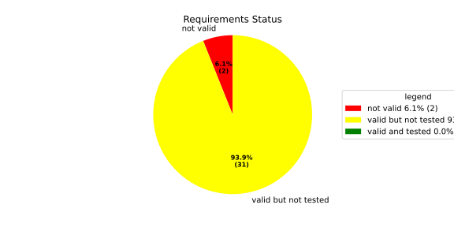
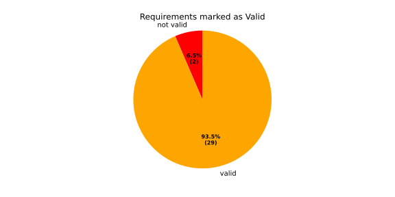
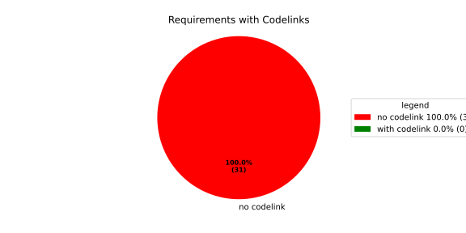
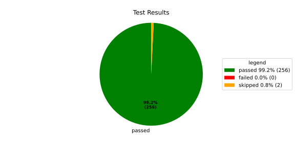
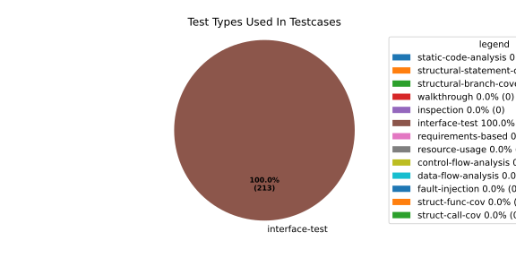
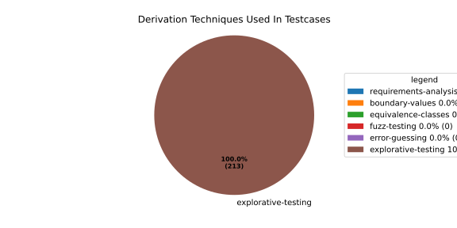

Verification Statistics#
Overview#

In Detail#



Failed Tests
Hint: This table should be empty. Before a PR can be merged all tests have to be successful.
No needs passed the filters
Skipped / Disabled Tests
testcase |
Result |
Fully Verifies |
Partially Verifies |
Test Type |
Derivation Technique |
link |
|---|---|---|---|---|---|---|
ValidateRangeTest/4__RejectsValueAboveMax |
skipped |
interface-test |
explorative-testing |
|||
ValidateRangeTest/4__RejectsValueBelowMin |
skipped |
interface-test |
explorative-testing |
All passed Tests#
testcase |
Result |
Fully Verifies |
Partially Verifies |
Test Type |
Derivation Technique |
link |
|---|---|---|---|---|---|---|
AliveImplTest__DoesNotThrowWhenInterfacePathEnvVarIsSet |
passed |
interface-test |
explorative-testing |
testcase__AliveImplTest__DoesNotThrowWhenInterfacePathEnvVarIsSet_xpewu |
||
AliveImplTest__ReportCheckpointSafeWhenNotConnected |
passed |
interface-test |
explorative-testing |
testcase__AliveImplTest__ReportCheckpointSafeWhenNotConnected_ppvuc |
||
AliveImplTest__ThrowsWhenInterfacePathEnvVarIsNotSet |
passed |
interface-test |
explorative-testing |
testcase__AliveImplTest__ThrowsWhenInterfacePathEnvVarIsNotSet_ekxfw |
||
AliveSupervisionTest__AliveDebouncesThroughFailedBeforeExpired |
passed |
interface-test |
explorative-testing |
testcase__AliveSupervisionTest__AliveDebouncesThroughFailedBeforeExpired_mlnbe |
||
AliveSupervisionTest__AliveReportsEnqueueFailureWhenRingBufferFull |
passed |
interface-test |
explorative-testing |
testcase__AliveSupervisionTest__AliveReportsEnqueueFailureWhenRingBufferFull_byhrd |
||
AliveSupervisionTest__AliveStaysOkWithCorrectHeartbeats |
passed |
interface-test |
explorative-testing |
testcase__AliveSupervisionTest__AliveStaysOkWithCorrectHeartbeats_vekof |
||
AliveSupervisionTest__AliveTransitionsOkToExpiredOnMissingHeartbeat |
passed |
interface-test |
explorative-testing |
testcase__AliveSupervisionTest__AliveTransitionsOkToExpiredOnMissingHeartbeat_jymxo |
||
AliveSupervisionTest__DeactivatesOnProcessCrash |
passed |
interface-test |
explorative-testing |
testcase__AliveSupervisionTest__DeactivatesOnProcessCrash_ypejs |
||
AliveSupervisionTest__DeactivatesOnProcessSigterm |
passed |
interface-test |
explorative-testing |
testcase__AliveSupervisionTest__DeactivatesOnProcessSigterm_hzaal |
||
AliveSupervisionTest__IgnoresIrrelevantProcessStates |
passed |
interface-test |
explorative-testing |
testcase__AliveSupervisionTest__IgnoresIrrelevantProcessStates_aolvb |
||
AliveSupervisionTest__MaxIndicationViolationExpires |
passed |
interface-test |
explorative-testing |
testcase__AliveSupervisionTest__MaxIndicationViolationExpires_whhhi |
||
AliveSupervisionTest__ReactivatesAfterCrash |
passed |
interface-test |
explorative-testing |
|||
ApplicationTypes/ApplicationTypeTest__ConvertsToExpectedValue/Native |
passed |
interface-test |
explorative-testing |
testcase__ApplicationTypes/ApplicationTypeTest__ConvertsToExpectedValue/Native_yxxcz |
||
ApplicationTypes/ApplicationTypeTest__ConvertsToExpectedValue/Reporting |
passed |
interface-test |
explorative-testing |
testcase__ApplicationTypes/ApplicationTypeTest__ConvertsToExpectedValue/Reporting_wcfwr |
||
ApplicationTypes/ApplicationTypeTest__ConvertsToExpectedValue/ReportingAndSupervised |
passed |
interface-test |
explorative-testing |
testcase__ApplicationTypes/ApplicationTypeTest__ConvertsToExpectedValue/ReportingAndSupervised_yxgad |
||
ApplicationTypes/ApplicationTypeTest__ConvertsToExpectedValue/StateManager |
passed |
interface-test |
explorative-testing |
testcase__ApplicationTypes/ApplicationTypeTest__ConvertsToExpectedValue/StateManager_ivuzc |
||
ConverterTest__ConvertAliveSupervisionMissingCycleReturnsError |
passed |
interface-test |
explorative-testing |
testcase__ConverterTest__ConvertAliveSupervisionMissingCycleReturnsError_bifzg |
||
ConverterTest__ConvertAliveSupervisionNullReturnsDefault |
passed |
interface-test |
explorative-testing |
testcase__ConverterTest__ConvertAliveSupervisionNullReturnsDefault_clyua |
||
ConverterTest__ConvertAliveSupervisionValid |
passed |
interface-test |
explorative-testing |
|||
ConverterTest__ConvertApplicationProfileMissingSelfTerminatingReturnsError |
passed |
interface-test |
explorative-testing |
testcase__ConverterTest__ConvertApplicationProfileMissingSelfTerminatingReturnsError_zddjb |
||
ConverterTest__ConvertApplicationProfileMissingTypeReturnsError |
passed |
interface-test |
explorative-testing |
testcase__ConverterTest__ConvertApplicationProfileMissingTypeReturnsError_zrfcs |
||
ConverterTest__ConvertApplicationProfileValid |
passed |
interface-test |
explorative-testing |
testcase__ConverterTest__ConvertApplicationProfileValid_oohxq |
||
ConverterTest__ConvertComponentAliveSupervisionBothIndicationsAbsentReturnsError |
passed |
interface-test |
explorative-testing |
testcase__ConverterTest__ConvertComponentAliveSupervisionBothIndicationsAbsentReturnsError_gvtfi |
||
ConverterTest__ConvertComponentAliveSupervisionMissingReportingCycleReturnsError |
passed |
interface-test |
explorative-testing |
testcase__ConverterTest__ConvertComponentAliveSupervisionMissingReportingCycleReturnsError_ajymy |
||
ConverterTest__ConvertComponentAliveSupervisionMissingToleranceReturnsError |
passed |
interface-test |
explorative-testing |
testcase__ConverterTest__ConvertComponentAliveSupervisionMissingToleranceReturnsError_lgrhj |
||
ConverterTest__ConvertComponentAliveSupervisionNullReturnsDefault |
passed |
interface-test |
explorative-testing |
testcase__ConverterTest__ConvertComponentAliveSupervisionNullReturnsDefault_xhaus |
||
ConverterTest__ConvertComponentAliveSupervisionOnlyMaxIndicationsPresent |
passed |
interface-test |
explorative-testing |
testcase__ConverterTest__ConvertComponentAliveSupervisionOnlyMaxIndicationsPresent_smwht |
||
ConverterTest__ConvertComponentAliveSupervisionOnlyMinIndicationsPresent |
passed |
interface-test |
explorative-testing |
testcase__ConverterTest__ConvertComponentAliveSupervisionOnlyMinIndicationsPresent_ybbrr |
||
ConverterTest__ConvertComponentAliveSupervisionValid |
passed |
interface-test |
explorative-testing |
testcase__ConverterTest__ConvertComponentAliveSupervisionValid_ijedh |
||
ConverterTest__ConvertComponentsValid |
passed |
interface-test |
explorative-testing |
|||
ConverterTest__ConvertComponentsWithInvalidComponentReturnsError |
passed |
interface-test |
explorative-testing |
testcase__ConverterTest__ConvertComponentsWithInvalidComponentReturnsError_wridc |
||
ConverterTest__ConvertComponentValid |
passed |
interface-test |
explorative-testing |
|||
ConverterTest__ConvertDeploymentConfigMissingReadyTimeoutReturnsError |
passed |
interface-test |
explorative-testing |
testcase__ConverterTest__ConvertDeploymentConfigMissingReadyTimeoutReturnsError_ljzfl |
||
ConverterTest__ConvertDeploymentConfigMissingShutdownTimeoutReturnsError |
passed |
interface-test |
explorative-testing |
testcase__ConverterTest__ConvertDeploymentConfigMissingShutdownTimeoutReturnsError_vyqye |
||
ConverterTest__ConvertDeploymentConfigValid |
passed |
interface-test |
explorative-testing |
|||
ConverterTest__ConvertEnvironmentalVariables |
passed |
interface-test |
explorative-testing |
testcase__ConverterTest__ConvertEnvironmentalVariables_fnhgo |
||
ConverterTest__ConvertEnvironmentalVariablesNullReturnsEmpty |
passed |
interface-test |
explorative-testing |
testcase__ConverterTest__ConvertEnvironmentalVariablesNullReturnsEmpty_vglrx |
||
ConverterTest__ConvertFallbackRunTargetMissingTimeoutReturnsError |
passed |
interface-test |
explorative-testing |
testcase__ConverterTest__ConvertFallbackRunTargetMissingTimeoutReturnsError_aevly |
||
ConverterTest__ConvertFallbackRunTargetValid |
passed |
interface-test |
explorative-testing |
testcase__ConverterTest__ConvertFallbackRunTargetValid_nexxj |
||
ConverterTest__ConvertReadyConditionMissingProcessStateReturnsError |
passed |
interface-test |
explorative-testing |
testcase__ConverterTest__ConvertReadyConditionMissingProcessStateReturnsError_ileav |
||
ConverterTest__ConvertReadyConditionValid |
passed |
interface-test |
explorative-testing |
|||
ConverterTest__ConvertRestartActionMissingFieldsReturnsError |
passed |
interface-test |
explorative-testing |
testcase__ConverterTest__ConvertRestartActionMissingFieldsReturnsError_aapjb |
||
ConverterTest__ConvertRestartActionNullReturnsNullopt |
passed |
interface-test |
explorative-testing |
testcase__ConverterTest__ConvertRestartActionNullReturnsNullopt_ifvyd |
||
ConverterTest__ConvertRestartActionValid |
passed |
interface-test |
explorative-testing |
|||
ConverterTest__ConvertRunTargetMissingTransitionTimeoutReturnsError |
passed |
interface-test |
explorative-testing |
testcase__ConverterTest__ConvertRunTargetMissingTransitionTimeoutReturnsError_ynekv |
||
ConverterTest__ConvertRunTargetsValid |
passed |
interface-test |
explorative-testing |
|||
ConverterTest__ConvertRunTargetsWithInvalidRunTargetReturnsError |
passed |
interface-test |
explorative-testing |
testcase__ConverterTest__ConvertRunTargetsWithInvalidRunTargetReturnsError_ldlox |
||
ConverterTest__ConvertRunTargetValid |
passed |
interface-test |
explorative-testing |
|||
ConverterTest__ConvertSandboxMissingGidReturnsError |
passed |
interface-test |
explorative-testing |
testcase__ConverterTest__ConvertSandboxMissingGidReturnsError_veeel |
||
ConverterTest__ConvertSandboxMissingSchedulingPolicyReturnsError |
passed |
interface-test |
explorative-testing |
testcase__ConverterTest__ConvertSandboxMissingSchedulingPolicyReturnsError_pkfts |
||
ConverterTest__ConvertSandboxMissingSchedulingPriorityReturnsError |
passed |
interface-test |
explorative-testing |
testcase__ConverterTest__ConvertSandboxMissingSchedulingPriorityReturnsError_xzdho |
||
ConverterTest__ConvertSandboxMissingUidReturnsError |
passed |
interface-test |
explorative-testing |
testcase__ConverterTest__ConvertSandboxMissingUidReturnsError_ogfku |
||
ConverterTest__ConvertSandboxSupplementaryGidOutOfRangeReturnsError |
passed |
interface-test |
explorative-testing |
testcase__ConverterTest__ConvertSandboxSupplementaryGidOutOfRangeReturnsError_zavpx |
||
ConverterTest__ConvertSandboxUidOutOfRangeReturnsError |
passed |
interface-test |
explorative-testing |
testcase__ConverterTest__ConvertSandboxUidOutOfRangeReturnsError_mcuaf |
||
ConverterTest__ConvertSandboxValid |
passed |
interface-test |
explorative-testing |
|||
ConverterTest__ConvertSwitchRunTargetActionNullReturnsNullopt |
passed |
interface-test |
explorative-testing |
testcase__ConverterTest__ConvertSwitchRunTargetActionNullReturnsNullopt_zmitx |
||
ConverterTest__ConvertSwitchRunTargetActionValid |
passed |
interface-test |
explorative-testing |
testcase__ConverterTest__ConvertSwitchRunTargetActionValid_tdklr |
||
ConverterTest__ConvertWatchdogMissingDeactivateReturnsError |
passed |
interface-test |
explorative-testing |
testcase__ConverterTest__ConvertWatchdogMissingDeactivateReturnsError_gzwjt |
||
ConverterTest__ConvertWatchdogMissingMagicCloseReturnsError |
passed |
interface-test |
explorative-testing |
testcase__ConverterTest__ConvertWatchdogMissingMagicCloseReturnsError_gexxk |
||
ConverterTest__ConvertWatchdogMissingMaxTimeoutReturnsError |
passed |
interface-test |
explorative-testing |
testcase__ConverterTest__ConvertWatchdogMissingMaxTimeoutReturnsError_lffxm |
||
ConverterTest__ConvertWatchdogNullReturnsNullopt |
passed |
interface-test |
explorative-testing |
testcase__ConverterTest__ConvertWatchdogNullReturnsNullopt_irsdk |
||
ConverterTest__ConvertWatchdogValid |
passed |
interface-test |
explorative-testing |
|||
DeadlineFixture__Start_AlreadyRunning |
passed |
interface-test |
explorative-testing |
|||
DeadlineFixture__Start_Succeeds |
passed |
interface-test |
explorative-testing |
|||
DeadlineMonitorBuilderFixture__AddDeadline_Succeeds |
passed |
interface-test |
explorative-testing |
testcase__DeadlineMonitorBuilderFixture__AddDeadline_Succeeds_nagke |
||
DeadlineMonitorBuilderFixture__New_Succeeds |
passed |
interface-test |
explorative-testing |
|||
DeadlineMonitorFixture__GetDeadline_Succeeds |
passed |
interface-test |
explorative-testing |
testcase__DeadlineMonitorFixture__GetDeadline_Succeeds_tmltf |
||
DeadlineMonitorFixture__GetDeadline_Unknown |
passed |
interface-test |
explorative-testing |
|||
EnumConversionTest__ConvertSchedulingPolicyUnsupported |
passed |
interface-test |
explorative-testing |
testcase__EnumConversionTest__ConvertSchedulingPolicyUnsupported_iavqm |
||
EnvironmentTest__AddIncreasesSize |
passed |
interface-test |
explorative-testing |
|||
EnvironmentTest__DefaultConstructedIsEmpty |
passed |
interface-test |
explorative-testing |
|||
EnvironmentTest__EmptyEnvironmentEnvpIsNullTerminated |
passed |
interface-test |
explorative-testing |
testcase__EnvironmentTest__EmptyEnvironmentEnvpIsNullTerminated_wwumw |
||
EnvironmentTest__EnvpReturnsNullTerminatedArray |
passed |
interface-test |
explorative-testing |
testcase__EnvironmentTest__EnvpReturnsNullTerminatedArray_aubkv |
||
EnvironmentTest__EnvpWithMultipleEntries |
passed |
interface-test |
explorative-testing |
|||
EnvironmentTest__MoveAssignmentPreservesEntries |
passed |
interface-test |
explorative-testing |
testcase__EnvironmentTest__MoveAssignmentPreservesEntries_vkydj |
||
EnvironmentTest__MoveConstructorPreservesEntries |
passed |
interface-test |
explorative-testing |
testcase__EnvironmentTest__MoveConstructorPreservesEntries_upclt |
||
EnvironmentTest__RangeBasedForLoopWorks |
passed |
interface-test |
explorative-testing |
|||
EnvironmentTest__ReserveAndAddAvoidReallocation |
passed |
interface-test |
explorative-testing |
testcase__EnvironmentTest__ReserveAndAddAvoidReallocation_lgzmu |
||
EnvironmentTest__SsoLengthStringSurvivesReallocation |
passed |
interface-test |
explorative-testing |
testcase__EnvironmentTest__SsoLengthStringSurvivesReallocation_jfmtl |
||
EnvironmentVariableTest__CStrReturnsKeyEqualsValue |
passed |
interface-test |
explorative-testing |
testcase__EnvironmentVariableTest__CStrReturnsKeyEqualsValue_rkwan |
||
EnvironmentVariableTest__EmptyValue |
passed |
interface-test |
explorative-testing |
|||
EnvironmentVariableTest__KeyAndValueAreAccessible |
passed |
interface-test |
explorative-testing |
testcase__EnvironmentVariableTest__KeyAndValueAreAccessible_kcrth |
||
EnvironmentVariableTest__ValueContainingEquals |
passed |
interface-test |
explorative-testing |
testcase__EnvironmentVariableTest__ValueContainingEquals_apzgz |
||
ExecErrorDomainTest__AllKnownCodesHaveDistinctMessages |
passed |
interface-test |
explorative-testing |
testcase__ExecErrorDomainTest__AllKnownCodesHaveDistinctMessages_qpoka |
||
ExecErrorDomainTest__AllKnownCodesReturnNonEmptyMessage |
passed |
interface-test |
explorative-testing |
testcase__ExecErrorDomainTest__AllKnownCodesReturnNonEmptyMessage_bawzg |
||
ExecErrorDomainTest__UnknownCodeReturnsNonEmptyMessage |
passed |
interface-test |
explorative-testing |
testcase__ExecErrorDomainTest__UnknownCodeReturnsNonEmptyMessage_kkwpr |
||
FlatbufferConfigLoaderTest__CorruptedBufferReturnsInvalidFormat |
passed |
interface-test |
explorative-testing |
testcase__FlatbufferConfigLoaderTest__CorruptedBufferReturnsInvalidFormat_twyac |
||
FlatbufferConfigLoaderTest__LoadAliveSupervision |
passed |
interface-test |
explorative-testing |
testcase__FlatbufferConfigLoaderTest__LoadAliveSupervision_hhuux |
||
FlatbufferConfigLoaderTest__LoadBufferFailsWithGenericErrorReturnsGeneralError |
passed |
interface-test |
explorative-testing |
testcase__FlatbufferConfigLoaderTest__LoadBufferFailsWithGenericErrorReturnsGeneralError_kmatm |
||
FlatbufferConfigLoaderTest__LoadBufferFailsWithNoSuchFileReturnsFileNotFound |
passed |
interface-test |
explorative-testing |
testcase__FlatbufferConfigLoaderTest__LoadBufferFailsWithNoSuchFileReturnsFileNotFound_yzlra |
||
FlatbufferConfigLoaderTest__LoadBufferFailsWithPermissionDeniedReturnsInsufficientPermission |
passed |
interface-test |
explorative-testing |
|||
FlatbufferConfigLoaderTest__LoadComponentAliveSupervision |
passed |
interface-test |
explorative-testing |
testcase__FlatbufferConfigLoaderTest__LoadComponentAliveSupervision_fwfad |
||
FlatbufferConfigLoaderTest__LoadEnvironmentalVariables |
passed |
interface-test |
explorative-testing |
testcase__FlatbufferConfigLoaderTest__LoadEnvironmentalVariables_wsosu |
||
FlatbufferConfigLoaderTest__LoadFallbackRunTarget |
passed |
interface-test |
explorative-testing |
testcase__FlatbufferConfigLoaderTest__LoadFallbackRunTarget_wduqm |
||
FlatbufferConfigLoaderTest__LoadMinimalConfig |
passed |
interface-test |
explorative-testing |
testcase__FlatbufferConfigLoaderTest__LoadMinimalConfig_hdkck |
||
FlatbufferConfigLoaderTest__LoadMultipleComponents |
passed |
interface-test |
explorative-testing |
testcase__FlatbufferConfigLoaderTest__LoadMultipleComponents_abpom |
||
FlatbufferConfigLoaderTest__LoadRestartRecoveryAction |
passed |
interface-test |
explorative-testing |
testcase__FlatbufferConfigLoaderTest__LoadRestartRecoveryAction_wyfqg |
||
FlatbufferConfigLoaderTest__LoadRunTargets |
passed |
interface-test |
explorative-testing |
|||
FlatbufferConfigLoaderTest__LoadSandbox |
passed |
interface-test |
explorative-testing |
|||
FlatbufferConfigLoaderTest__LoadSingleComponent |
passed |
interface-test |
explorative-testing |
testcase__FlatbufferConfigLoaderTest__LoadSingleComponent_yidty |
||
FlatbufferConfigLoaderTest__LoadSwitchRunTargetAction |
passed |
interface-test |
explorative-testing |
testcase__FlatbufferConfigLoaderTest__LoadSwitchRunTargetAction_uchgp |
||
FlatbufferConfigLoaderTest__LoadWatchdog |
passed |
interface-test |
explorative-testing |
|||
FlatbufferConfigLoaderTest__MissingSchemaVersionReturnsInvalidFormat |
passed |
interface-test |
explorative-testing |
testcase__FlatbufferConfigLoaderTest__MissingSchemaVersionReturnsInvalidFormat_qqmfn |
||
FlatbufferConfigLoaderTest__OptionalReadyConditionAbsent |
passed |
interface-test |
explorative-testing |
testcase__FlatbufferConfigLoaderTest__OptionalReadyConditionAbsent_lhddx |
||
FlatbufferConfigLoaderTest__OptionalWatchdogAbsent |
passed |
interface-test |
explorative-testing |
testcase__FlatbufferConfigLoaderTest__OptionalWatchdogAbsent_pkhkp |
||
FlatbufferConfigLoaderTest__WrongSchemaVersionReturnsUnsupportedVersion |
passed |
interface-test |
explorative-testing |
testcase__FlatbufferConfigLoaderTest__WrongSchemaVersionReturnsUnsupportedVersion_zrbjv |
||
HealthMonitor__GetDeadlineMonitor_Available |
passed |
|||||
HealthMonitor__GetDeadlineMonitor_Taken |
passed |
|||||
HealthMonitor__GetDeadlineMonitor_Unknown |
passed |
|||||
HealthMonitor__GetHeartbeatMonitor_Available |
passed |
testcase__HealthMonitor__GetHeartbeatMonitor_Available_aacat |
||||
HealthMonitor__GetHeartbeatMonitor_Taken |
passed |
|||||
HealthMonitor__GetHeartbeatMonitor_Unknown |
passed |
|||||
HealthMonitor__GetLogicMonitor_Available |
passed |
|||||
HealthMonitor__GetLogicMonitor_Taken |
passed |
|||||
HealthMonitor__GetLogicMonitor_Unknown |
passed |
|||||
HealthMonitor__Start_MonitorsNotTaken |
passed |
|||||
HealthMonitor__Start_Succeeds |
passed |
|||||
HealthMonitorBuilderFixture__Build_InvalidCycles |
passed |
interface-test |
explorative-testing |
testcase__HealthMonitorBuilderFixture__Build_InvalidCycles_pdigk |
||
HealthMonitorBuilderFixture__Build_NoMonitors |
passed |
interface-test |
explorative-testing |
testcase__HealthMonitorBuilderFixture__Build_NoMonitors_ktcve |
||
HealthMonitorBuilderFixture__Build_Succeeds |
passed |
interface-test |
explorative-testing |
|||
HealthMonitorBuilderFixture__New_Succeeds |
passed |
interface-test |
explorative-testing |
|||
HealthMonitorTest__Integrated |
passed |
interface-test |
explorative-testing |
|||
HeartbeatMonitor__Heartbeat_Succeeds |
passed |
interface-test |
explorative-testing |
|||
HeartbeatMonitorBuilder__New_Succeeds |
passed |
interface-test |
explorative-testing |
|||
IdentifierHashTest__IdentifierHash_default_created |
passed |
interface-test |
explorative-testing |
testcase__IdentifierHashTest__IdentifierHash_default_created_yhhvi |
||
IdentifierHashTest__IdentifierHash_EqualityOperators |
passed |
interface-test |
explorative-testing |
testcase__IdentifierHashTest__IdentifierHash_EqualityOperators_nnsuj |
||
IdentifierHashTest__IdentifierHash_invalid_hash_no_string_representation |
passed |
interface-test |
explorative-testing |
testcase__IdentifierHashTest__IdentifierHash_invalid_hash_no_string_representation_rxowr |
||
IdentifierHashTest__IdentifierHash_LessThanOperator |
passed |
interface-test |
explorative-testing |
testcase__IdentifierHashTest__IdentifierHash_LessThanOperator_rnbax |
||
IdentifierHashTest__IdentifierHash_no_dangling_pointer_after_source_string_dies |
passed |
interface-test |
explorative-testing |
testcase__IdentifierHashTest__IdentifierHash_no_dangling_pointer_after_source_string_dies_qsjin |
||
IdentifierHashTest__IdentifierHash_with_string_created |
passed |
interface-test |
explorative-testing |
testcase__IdentifierHashTest__IdentifierHash_with_string_created_aygdm |
||
IdentifierHashTest__IdentifierHash_with_string_view_created |
passed |
interface-test |
explorative-testing |
testcase__IdentifierHashTest__IdentifierHash_with_string_view_created_dbpol |
||
LogicMonitorBuilderFixture__AddState_Succeeds |
passed |
interface-test |
explorative-testing |
testcase__LogicMonitorBuilderFixture__AddState_Succeeds_axdxj |
||
LogicMonitorBuilderFixture__New_Succeeds |
passed |
interface-test |
explorative-testing |
|||
LogicMonitorFixture__State_Invalid |
passed |
interface-test |
explorative-testing |
|||
LogicMonitorFixture__State_Succeeds |
passed |
interface-test |
explorative-testing |
|||
LogicMonitorFixture__Transition_Invalid |
passed |
interface-test |
explorative-testing |
|||
LogicMonitorFixture__Transition_Succeeds |
passed |
interface-test |
explorative-testing |
|||
LogicMonitorFixture__Transition_Unknown |
passed |
interface-test |
explorative-testing |
|||
MonitorIfDaemonTest__Active_CheckpointDataForwarded |
passed |
interface-test |
explorative-testing |
testcase__MonitorIfDaemonTest__Active_CheckpointDataForwarded_evumz |
||
MonitorIfDaemonTest__Active_FutureTimestamp_NotForwardedInCurrentCycle |
passed |
interface-test |
explorative-testing |
testcase__MonitorIfDaemonTest__Active_FutureTimestamp_NotForwardedInCurrentCycle_oycau |
||
MonitorIfDaemonTest__Active_FutureTimestampCheckpoint_ConsumedInLaterCycle |
passed |
interface-test |
explorative-testing |
testcase__MonitorIfDaemonTest__Active_FutureTimestampCheckpoint_ConsumedInLaterCycle_veyyy |
||
MonitorIfDaemonTest__Active_MultipleCheckpointsInOneCycle_AllForwarded |
passed |
interface-test |
explorative-testing |
testcase__MonitorIfDaemonTest__Active_MultipleCheckpointsInOneCycle_AllForwarded_gmbms |
||
MonitorIfDaemonTest__Active_NonMatchingCheckpointId_NotForwarded |
passed |
interface-test |
explorative-testing |
testcase__MonitorIfDaemonTest__Active_NonMatchingCheckpointId_NotForwarded_bohck |
||
MonitorIfDaemonTest__Active_OverflowDetected_TransitionsToInactiveOverflow |
passed |
interface-test |
explorative-testing |
testcase__MonitorIfDaemonTest__Active_OverflowDetected_TransitionsToInactiveOverflow_ovitk |
||
MonitorIfDaemonTest__Active_TwoAttachedCheckpoints_RoutedByCheckpointId |
passed |
interface-test |
explorative-testing |
testcase__MonitorIfDaemonTest__Active_TwoAttachedCheckpoints_RoutedByCheckpointId_skqhd |
||
MonitorIfDaemonTest__GetInterfaceName_ReturnsNameGivenAtConstruction |
passed |
interface-test |
explorative-testing |
testcase__MonitorIfDaemonTest__GetInterfaceName_ReturnsNameGivenAtConstruction_iaemz |
||
MonitorIfDaemonTest__InactiveOverflow_NoProcessRestart_DoesNotRepeatNotification |
passed |
interface-test |
explorative-testing |
testcase__MonitorIfDaemonTest__InactiveOverflow_NoProcessRestart_DoesNotRepeatNotification_gdbxg |
||
MonitorIfDaemonTest__InactiveOverflow_ProcessRestartFlag_ClearedAfterNotification |
passed |
interface-test |
explorative-testing |
testcase__MonitorIfDaemonTest__InactiveOverflow_ProcessRestartFlag_ClearedAfterNotification_pqfyy |
||
MonitorIfDaemonTest__InactiveOverflow_ProcessRestarts_PushesOverflowNotificationAgain |
passed |
interface-test |
explorative-testing |
|||
MonitorIfDaemonTest__InitiallyInactive_CheckForNewData_DoesNotNotifyCheckpoint |
passed |
interface-test |
explorative-testing |
testcase__MonitorIfDaemonTest__InitiallyInactive_CheckForNewData_DoesNotNotifyCheckpoint_wjrfl |
||
MonitorIfDaemonTest__ProcessOff_DeactivatesMonitor_NoFurtherDataForwarded |
passed |
interface-test |
explorative-testing |
testcase__MonitorIfDaemonTest__ProcessOff_DeactivatesMonitor_NoFurtherDataForwarded_uialh |
||
MonitorIfDaemonTest__ProcessOffBeforeActivation_RemainsInactive |
passed |
interface-test |
explorative-testing |
testcase__MonitorIfDaemonTest__ProcessOffBeforeActivation_RemainsInactive_kzzyy |
||
MonitorIfDaemonTest__ProcessRunning_ActivatesMonitorOnNextCheckForNewData |
passed |
interface-test |
explorative-testing |
testcase__MonitorIfDaemonTest__ProcessRunning_ActivatesMonitorOnNextCheckForNewData_fkkmk |
||
MonitorIfDaemonTest__ProcessStarting_AlsoActivatesMonitor |
passed |
interface-test |
explorative-testing |
testcase__MonitorIfDaemonTest__ProcessStarting_AlsoActivatesMonitor_xdkbg |
||
MPMCConcurrentQueueTest_Basic__LvaluePushCopiesItem |
passed |
testcase__MPMCConcurrentQueueTest_Basic__LvaluePushCopiesItem_oysfc |
||||
MPMCConcurrentQueueTest_Basic__PopReturnsNulloptOnSemaphoreWaitFailure |
passed |
testcase__MPMCConcurrentQueueTest_Basic__PopReturnsNulloptOnSemaphoreWaitFailure_rgznm |
||||
MPMCConcurrentQueueTest_Basic__PushAndPopPreservesOrder |
passed |
testcase__MPMCConcurrentQueueTest_Basic__PushAndPopPreservesOrder_aijdb |
||||
MPMCConcurrentQueueTest_Basic__PushAndPopSingleItem |
passed |
testcase__MPMCConcurrentQueueTest_Basic__PushAndPopSingleItem_jrxwz |
||||
MPMCConcurrentQueueTest_Basic__RvaluePushWorksWithMoveOnlyType |
passed |
testcase__MPMCConcurrentQueueTest_Basic__RvaluePushWorksWithMoveOnlyType_cxxaj |
||||
MPMCConcurrentQueueTest_Blocking__PopBlocksUntilItemAvailable |
passed |
testcase__MPMCConcurrentQueueTest_Blocking__PopBlocksUntilItemAvailable_ttwcx |
||||
MPMCConcurrentQueueTest_Blocking__PushBlocksWhenFull |
passed |
testcase__MPMCConcurrentQueueTest_Blocking__PushBlocksWhenFull_ecujf |
||||
MPMCConcurrentQueueTest_Blocking__StopUnblocksBlockedConsumer |
passed |
testcase__MPMCConcurrentQueueTest_Blocking__StopUnblocksBlockedConsumer_snzyr |
||||
MPMCConcurrentQueueTest_Blocking__StopUnblocksBlockedProducer |
passed |
testcase__MPMCConcurrentQueueTest_Blocking__StopUnblocksBlockedProducer_inddu |
||||
MPMCConcurrentQueueTest_MPMC__AllItemsDelivered |
passed |
testcase__MPMCConcurrentQueueTest_MPMC__AllItemsDelivered_ztjqe |
||||
MPMCConcurrentQueueTest_Stop__ItemsAreDroppedAfterStop |
passed |
testcase__MPMCConcurrentQueueTest_Stop__ItemsAreDroppedAfterStop_ragzw |
||||
MPMCConcurrentQueueTest_Stop__PopReturnsNulloptWhenStoppedAndEmpty |
passed |
testcase__MPMCConcurrentQueueTest_Stop__PopReturnsNulloptWhenStoppedAndEmpty_cevga |
||||
MPMCConcurrentQueueTest_Stop__PushReturnsFalseAfterStop |
passed |
testcase__MPMCConcurrentQueueTest_Stop__PushReturnsFalseAfterStop_qqnhw |
||||
MPMCConcurrentQueueTest_Timeout__PushWithTimeoutReturnsFalseWhenFull |
passed |
testcase__MPMCConcurrentQueueTest_Timeout__PushWithTimeoutReturnsFalseWhenFull_aeips |
||||
MPMCConcurrentQueueTest_Timeout__PushWithTimeoutSucceedsWhenSlotAvailable |
passed |
testcase__MPMCConcurrentQueueTest_Timeout__PushWithTimeoutSucceedsWhenSlotAvailable_klzpo |
||||
OsHandlerTest__WaitReturnsError_OsHandlerSleepsAndDoesNotCallFindTerminated |
passed |
interface-test |
explorative-testing |
testcase__OsHandlerTest__WaitReturnsError_OsHandlerSleepsAndDoesNotCallFindTerminated_cibtr |
||
OsHandlerTest__WaitReturnsErrorThenProcessId_HandlerRecoversAndInvokesCallback |
passed |
interface-test |
explorative-testing |
testcase__OsHandlerTest__WaitReturnsErrorThenProcessId_HandlerRecoversAndInvokesCallback_nqstd |
||
OsHandlerTest__WaitReturnsProcessId_FindTerminatedIsCalled |
passed |
interface-test |
explorative-testing |
testcase__OsHandlerTest__WaitReturnsProcessId_FindTerminatedIsCalled_chlsq |
||
OsHandlerTest__WaitReturnsProcessIdBeforeRegistration_LaterRegistrationReceivesStoredTermination |
passed |
interface-test |
explorative-testing |
|||
OsHandlerTest__WaitReturnsUnknownPidWhenMapIsFull_OutOfResourcesPathDoesNotNotifyCallbacks |
passed |
interface-test |
explorative-testing |
|||
OsHandlerTest__WaitReturnsZeroPid_OsHandlerSleepsAndDoesNotCallFindTerminated |
passed |
interface-test |
explorative-testing |
testcase__OsHandlerTest__WaitReturnsZeroPid_OsHandlerSleepsAndDoesNotCallFindTerminated_rkttz |
||
ProcessStateClient_UT__ProcessStateClient_ConstructReceiver_Succeeds |
passed |
interface-test |
explorative-testing |
testcase__ProcessStateClient_UT__ProcessStateClient_ConstructReceiver_Succeeds_hodwy |
||
ProcessStateClient_UT__ProcessStateClient_QueueMaxNumberOfProcesses_Succeeds |
passed |
interface-test |
explorative-testing |
testcase__ProcessStateClient_UT__ProcessStateClient_QueueMaxNumberOfProcesses_Succeeds_qohom |
||
ProcessStateClient_UT__ProcessStateClient_QueueOneProcess_Succeeds |
passed |
interface-test |
explorative-testing |
testcase__ProcessStateClient_UT__ProcessStateClient_QueueOneProcess_Succeeds_tmzfz |
||
ProcessStateClient_UT__ProcessStateClient_QueueOneProcessTooMany_Fails |
passed |
interface-test |
explorative-testing |
testcase__ProcessStateClient_UT__ProcessStateClient_QueueOneProcessTooMany_Fails_sspoj |
||
ProcessStates/ProcessStateTest__ConvertsToExpectedValue/Running |
passed |
interface-test |
explorative-testing |
testcase__ProcessStates/ProcessStateTest__ConvertsToExpectedValue/Running_hinlr |
||
ProcessStates/ProcessStateTest__ConvertsToExpectedValue/Terminated |
passed |
interface-test |
explorative-testing |
testcase__ProcessStates/ProcessStateTest__ConvertsToExpectedValue/Terminated_zrytn |
||
RecoveryClientTest__FIFOOrdering |
passed |
interface-test |
explorative-testing |
|||
RecoveryClientTest__GetNextRequest |
passed |
interface-test |
explorative-testing |
|||
RecoveryClientTest__GetNextRequestEmpty |
passed |
interface-test |
explorative-testing |
|||
RecoveryClientTest__RingBufferFull |
passed |
interface-test |
explorative-testing |
|||
RecoveryClientTest__SendSingleRequest |
passed |
interface-test |
explorative-testing |
|||
RunTest__AsPosixProcessCreatesAndDestroysLifeCycleManager |
passed |
testcase__RunTest__AsPosixProcessCreatesAndDestroysLifeCycleManager_sooex |
||||
RunTest__AsPosixProcessForwardsConstructorArgsToApplication |
passed |
testcase__RunTest__AsPosixProcessForwardsConstructorArgsToApplication_dmeur |
||||
RunTest__AsPosixProcessForwardsNonZeroExitCode |
passed |
testcase__RunTest__AsPosixProcessForwardsNonZeroExitCode_lldqd |
||||
RunTest__AsPosixProcessPassesCorrectApplicationTypeToRun |
passed |
testcase__RunTest__AsPosixProcessPassesCorrectApplicationTypeToRun_ajqwz |
||||
RunTest__AsPosixProcessReturnsZeroExitCode |
passed |
|||||
RunTest__RunApplicationFreeFunctionDelegatesToAsPosixProcess |
passed |
testcase__RunTest__RunApplicationFreeFunctionDelegatesToAsPosixProcess_ccing |
||||
RunTest__RunConstructorPassesArgcArgvToApplicationContext |
passed |
testcase__RunTest__RunConstructorPassesArgcArgvToApplicationContext_agerd |
||||
SafeProcessMapTest__ConcurrentFindAndInsertFromMultipleThreads |
passed |
interface-test |
explorative-testing |
testcase__SafeProcessMapTest__ConcurrentFindAndInsertFromMultipleThreads_kzfyg |
||
SafeProcessMapTest__ConcurrentInsertAndFindFromMultipleThreads |
passed |
interface-test |
explorative-testing |
testcase__SafeProcessMapTest__ConcurrentInsertAndFindFromMultipleThreads_hnyqj |
||
SafeProcessMapTest__ConstructWithZeroCapacity |
passed |
interface-test |
explorative-testing |
testcase__SafeProcessMapTest__ConstructWithZeroCapacity_gjmqg |
||
SafeProcessMapTest__FindTerminatedInsertsEntryWhenPidNotPresent |
passed |
interface-test |
explorative-testing |
testcase__SafeProcessMapTest__FindTerminatedInsertsEntryWhenPidNotPresent_ixtlt |
||
SafeProcessMapTest__FindTerminatedMatchesExistingInsertAndCallsCallback |
passed |
interface-test |
explorative-testing |
testcase__SafeProcessMapTest__FindTerminatedMatchesExistingInsertAndCallsCallback_ehuzb |
||
SafeProcessMapTest__FindTerminatedSamePidTwiceYieldsUntilInsertResolves |
passed |
interface-test |
explorative-testing |
testcase__SafeProcessMapTest__FindTerminatedSamePidTwiceYieldsUntilInsertResolves_hsekx |
||
SafeProcessMapTest__FindTerminatedWithNegativePidReturnsInvalid |
passed |
interface-test |
explorative-testing |
testcase__SafeProcessMapTest__FindTerminatedWithNegativePidReturnsInvalid_dewoh |
||
SafeProcessMapTest__FindTerminatedWorksAtMaxTreeDepth |
passed |
interface-test |
explorative-testing |
testcase__SafeProcessMapTest__FindTerminatedWorksAtMaxTreeDepth_adtzi |
||
SafeProcessMapTest__InsertBeyondCapacityReturnsOutOfMemory |
passed |
interface-test |
explorative-testing |
testcase__SafeProcessMapTest__InsertBeyondCapacityReturnsOutOfMemory_qjnie |
||
SafeProcessMapTest__InsertIntoEmptyTreeReturnsZero |
passed |
interface-test |
explorative-testing |
testcase__SafeProcessMapTest__InsertIntoEmptyTreeReturnsZero_zfbaq |
||
SafeProcessMapTest__InsertMatchesExistingFindTerminatedEntry |
passed |
interface-test |
explorative-testing |
testcase__SafeProcessMapTest__InsertMatchesExistingFindTerminatedEntry_fuwrp |
||
SafeProcessMapTest__InsertMultipleNodesThenFindTerminatedRemovesAll |
passed |
interface-test |
explorative-testing |
testcase__SafeProcessMapTest__InsertMultipleNodesThenFindTerminatedRemovesAll_fvowh |
||
SafeProcessMapTest__InsertSamePidTwiceYieldsUntilFindTerminatedResolves |
passed |
interface-test |
explorative-testing |
testcase__SafeProcessMapTest__InsertSamePidTwiceYieldsUntilFindTerminatedResolves_wzwyb |
||
SchedulingPolicies/SchedulingPolicyTest__ConvertsToExpectedPosixValue/SCHED_FIFO |
passed |
interface-test |
explorative-testing |
testcase__SchedulingPolicies/SchedulingPolicyTest__ConvertsToExpectedPosixValue/SCHED_FIFO_soddq |
||
SchedulingPolicies/SchedulingPolicyTest__ConvertsToExpectedPosixValue/SCHED_OTHER |
passed |
interface-test |
explorative-testing |
testcase__SchedulingPolicies/SchedulingPolicyTest__ConvertsToExpectedPosixValue/SCHED_OTHER_oigmk |
||
SchedulingPolicies/SchedulingPolicyTest__ConvertsToExpectedPosixValue/SCHED_RR |
passed |
interface-test |
explorative-testing |
testcase__SchedulingPolicies/SchedulingPolicyTest__ConvertsToExpectedPosixValue/SCHED_RR_pcjci |
||
score/health_monitor/src/rust/test-510566969/tests |
passed |
testcase__score/health_monitor/src/rust/test-510566969/tests_kjjlw |
||||
score/health_monitor/src/rust/test-827801879/loom_tests |
passed |
testcase__score/health_monitor/src/rust/test-827801879/loom_tests_cpmix |
||||
SecondsToMsTest__ConvertsPositiveValue |
passed |
interface-test |
explorative-testing |
|||
SecondsToMsTest__ConvertsZero |
passed |
interface-test |
explorative-testing |
|||
SecondsToMsTest__RejectsNegativeValue |
passed |
interface-test |
explorative-testing |
|||
SecondsToMsTest__RejectsOverflow |
passed |
interface-test |
explorative-testing |
|||
SecondsToMsTest__RejectsSubMillisecond |
passed |
interface-test |
explorative-testing |
|||
StringHelperTest__ConvertGidVectorReturnsEmptyWhenNull |
passed |
interface-test |
explorative-testing |
testcase__StringHelperTest__ConvertGidVectorReturnsEmptyWhenNull_jmcsr |
||
StringHelperTest__ConvertStringVectorReturnsEmptyWhenNull |
passed |
interface-test |
explorative-testing |
testcase__StringHelperTest__ConvertStringVectorReturnsEmptyWhenNull_zsuvv |
||
StringHelperTest__SafeStringReturnsEmptyWhenNull |
passed |
interface-test |
explorative-testing |
testcase__StringHelperTest__SafeStringReturnsEmptyWhenNull_crelr |
||
StringHelperTest__SafeStringReturnsValueWhenNotNull |
passed |
interface-test |
explorative-testing |
testcase__StringHelperTest__SafeStringReturnsValueWhenNotNull_anbko |
||
test_complex_monitoring |
passed |
|||||
test_crash_on_startup |
passed |
|||||
test_incorrect_config_non_reporting |
passed |
|||||
test_process_crash_monitoring |
passed |
|||||
test_process_launch_args |
passed |
|||||
test_process_wrong_binary_failure |
passed |
|||||
test_recovery_action_complex_rep_failure |
passed |
|||||
test_recovery_action_simple_rep_failure |
passed |
|||||
test_smoke |
passed |
|||||
test_switch_run_target |
passed |
|||||
TimeRangeFixture__MinMax |
passed |
interface-test |
explorative-testing |
|||
TimeRangeFixture__New_InvalidOrder |
passed |
interface-test |
explorative-testing |
|||
TimeRangeFixture__New_Succeeds |
passed |
interface-test |
explorative-testing |
|||
ValidateRangeTest/0__AcceptsMaxBoundary |
passed |
interface-test |
explorative-testing |
|||
ValidateRangeTest/0__AcceptsMinBoundary |
passed |
interface-test |
explorative-testing |
|||
ValidateRangeTest/0__AcceptsZero |
passed |
interface-test |
explorative-testing |
|||
ValidateRangeTest/0__RejectsValueAboveMax |
passed |
interface-test |
explorative-testing |
|||
ValidateRangeTest/0__RejectsValueBelowMin |
passed |
interface-test |
explorative-testing |
|||
ValidateRangeTest/1__AcceptsMaxBoundary |
passed |
interface-test |
explorative-testing |
|||
ValidateRangeTest/1__AcceptsMinBoundary |
passed |
interface-test |
explorative-testing |
|||
ValidateRangeTest/1__AcceptsZero |
passed |
interface-test |
explorative-testing |
|||
ValidateRangeTest/1__RejectsValueAboveMax |
passed |
interface-test |
explorative-testing |
|||
ValidateRangeTest/1__RejectsValueBelowMin |
passed |
interface-test |
explorative-testing |
|||
ValidateRangeTest/2__AcceptsMaxBoundary |
passed |
interface-test |
explorative-testing |
|||
ValidateRangeTest/2__AcceptsMinBoundary |
passed |
interface-test |
explorative-testing |
|||
ValidateRangeTest/2__AcceptsZero |
passed |
interface-test |
explorative-testing |
|||
ValidateRangeTest/2__RejectsValueAboveMax |
passed |
interface-test |
explorative-testing |
|||
ValidateRangeTest/2__RejectsValueBelowMin |
passed |
interface-test |
explorative-testing |
|||
ValidateRangeTest/3__AcceptsMaxBoundary |
passed |
interface-test |
explorative-testing |
|||
ValidateRangeTest/3__AcceptsMinBoundary |
passed |
interface-test |
explorative-testing |
|||
ValidateRangeTest/3__AcceptsZero |
passed |
interface-test |
explorative-testing |
|||
ValidateRangeTest/3__RejectsValueAboveMax |
passed |
interface-test |
explorative-testing |
|||
ValidateRangeTest/3__RejectsValueBelowMin |
passed |
interface-test |
explorative-testing |
|||
ValidateRangeTest/4__AcceptsMaxBoundary |
passed |
interface-test |
explorative-testing |
|||
ValidateRangeTest/4__AcceptsMinBoundary |
passed |
interface-test |
explorative-testing |
|||
ValidateRangeTest/4__AcceptsZero |
passed |
interface-test |
explorative-testing |
Details About Testcases#


Test Log Files#
tests-report/tests/integration/process_simple_rep_failure/process_simple_rep_failure/test.log
exec ${PAGER:-/usr/bin/less} "$0" || exit 1
Executing tests from //tests/integration/process_simple_rep_failure:process_simple_rep_failure
-----------------------------------------------------------------------------
============================= test session starts ==============================
platform linux -- Python 3.12.12, pytest-9.0.3, pluggy-1.5.0
rootdir: /home/runner/.bazel/sandbox/processwrapper-sandbox/1091/execroot/_main/bazel-out/k8-fastbuild/bin/tests/integration/process_simple_rep_failure/process_simple_rep_failure.runfiles/score_itf+
configfile: pytest.ini
collected 1 item
../score_itf+::test_recovery_action_simple_rep_failure
-------------------------------- live log setup --------------------------------
[2026-07-10 07:18:05.209] [INFO] [score.itf.plugins.docker] Executing custom image bootstrap command: tests/utils/environments/x86_64-linux/x86_64-linux.sh
[2026-07-10 07:18:05.507] [DEBUG] [docker.utils.config] Trying paths: ['/home/runner/.docker/config.json', '/home/runner/.dockercfg']
[2026-07-10 07:18:05.507] [DEBUG] [docker.utils.config] Found file at path: /home/runner/.docker/config.json
[2026-07-10 07:18:05.507] [DEBUG] [docker.auth] Found 'auths' section
[2026-07-10 07:18:05.507] [DEBUG] [docker.auth] Found entry (registry='https://index.docker.io/v1/', username='githubactions')
[2026-07-10 07:18:05.519] [DEBUG] [urllib3.connectionpool] http://localhost:None "GET /version HTTP/1.1" 200 823
[2026-07-10 07:18:05.566] [DEBUG] [urllib3.connectionpool] http://localhost:None "POST /v1.48/containers/create HTTP/1.1" 201 88
[2026-07-10 07:18:05.570] [DEBUG] [urllib3.connectionpool] http://localhost:None "GET /v1.48/containers/624eb9ff0927113e634550b89f883ba3d09f0b844564d934c4e7e7e97adebe02/json HTTP/1.1" 200 None
[2026-07-10 07:18:05.738] [DEBUG] [urllib3.connectionpool] http://localhost:None "POST /v1.48/containers/624eb9ff0927113e634550b89f883ba3d09f0b844564d934c4e7e7e97adebe02/start HTTP/1.1" 204 0
[2026-07-10 07:18:05.739] [DEBUG] [docker.utils.config] Trying paths: ['/home/runner/.docker/config.json', '/home/runner/.dockercfg']
[2026-07-10 07:18:05.739] [DEBUG] [docker.utils.config] Found file at path: /home/runner/.docker/config.json
[2026-07-10 07:18:05.739] [DEBUG] [docker.auth] Found 'auths' section
[2026-07-10 07:18:05.739] [DEBUG] [docker.auth] Found entry (registry='https://index.docker.io/v1/', username='githubactions')
[2026-07-10 07:18:05.749] [DEBUG] [urllib3.connectionpool] http://localhost:None "GET /version HTTP/1.1" 200 823
[2026-07-10 07:18:06.012] [INFO] [tests.utils.testing_utils.setup_test] Test case setup finished
-------------------------------- live log call ---------------------------------
[2026-07-10 07:18:06.167] [INFO] [launch_manager] 2026/07/10 07:18:06.7886154 6916944 000 ECU1 LM LM log debug verbose 1 Launch Manager Started !!!!
[2026-07-10 07:18:06.168] [INFO] [launch_manager] 2026/07/10 07:18:06.7886155 6916948 000 ECU1 LM LM log debug verbose 1 Loading LCM Configurations...
[2026-07-10 07:18:06.168] [INFO] [launch_manager] 2026/07/10 07:18:06.7886155 6916948 000 ECU1 LM LM log debug verbose 1 ECUCFG_ENV_VAR_ROOTFOLDER set successfully
[2026-07-10 07:18:06.168] [INFO] [launch_manager] 2026/07/10 07:18:06.7886155 6916949 000 ECU1 LM LM log debug verbose 5 FlatBufferParser::getModeGroupPgName: MainPG ( IdentifierHash: 18079021346025578134 )
[2026-07-10 07:18:06.168] [INFO] [launch_manager] 2026/07/10 07:18:06.7886155 6916949 000 ECU1 LM LM log debug verbose 5 FlatBufferParser::getModeGroupPgStateName: MainPG/Startup ( IdentifierHash: 10504605499600661529 )
[2026-07-10 07:18:06.168] [INFO] [launch_manager] 2026/07/10 07:18:06.7886155 6916952 000 ECU1 LM LM log debug verbose 5 FlatBufferParser::getModeGroupPgStateName: MainPG/run_target_app_does_report_krunning_in_time ( IdentifierHash: 11934981641920773349 )
[2026-07-10 07:18:06.168] [INFO] [launch_manager] 2026/07/10 07:18:06.7886155 6916953 000 ECU1 LM LM log debug verbose 5 FlatBufferParser::getModeGroupPgStateName: MainPG/run_target_app_does_not_report_krunning_in_time ( IdentifierHash: 7672161913816744053 )
[2026-07-10 07:18:06.168] [INFO] [launch_manager] 2026/07/10 07:18:06.7886155 6916953 000 ECU1 LM LM log debug verbose 5 FlatBufferParser::getModeGroupPgStateName: MainPG/Off ( IdentifierHash: 15281793077830264047 )
[2026-07-10 07:18:06.168] [INFO] [launch_manager] 2026/07/10 07:18:06.7886155 6916954 000 ECU1 LM LM log debug verbose 5 FlatBufferParser::getModeGroupPgStateName: MainPG/fallback_run_target ( IdentifierHash: 4059409696722237352 )
[2026-07-10 07:18:06.168] [INFO] [launch_manager] 2026/07/10 07:18:06.7886156 6916954 000 ECU1 LM LM log debug verbose 4 parseProcessConfigurations: Process index: 0 executable_path_: /tmp/tests/process_simple_rep_failure/control_client_mock
[2026-07-10 07:18:06.169] [INFO] [launch_manager] 2026/07/10 07:18:06.7886156 6916955 000 ECU1 LM LM log debug verbose 3 Process control_client_mock is Reporting execution state
[2026-07-10 07:18:06.169] [INFO] [launch_manager] 2026/07/10 07:18:06.7886156 6916955 000 ECU1 LM LM log debug verbose 1 Process is STATE_MANAGEMENT function Cluster Affiliation
[2026-07-10 07:18:06.169] [INFO] [launch_manager] 2026/07/10 07:18:06.7886156 6916955 000 ECU1 LM LM log debug verbose 3 Process control_client_mock is Self terminating
[2026-07-10 07:18:06.169] [INFO] [launch_manager] 2026/07/10 07:18:06.7886156 6916955 000 ECU1 LM LM log debug verbose 4 ParseProcessProcessGroup: id:::pg_name_: MainPG , pg_state_name_: MainPG/Startup
[2026-07-10 07:18:06.169] [INFO] [launch_manager] 2026/07/10 07:18:06.7886156 6916956 000 ECU1 LM LM log debug verbose 4 ParseProcessProcessGroup: id:::pg_name_: MainPG , pg_state_name_: MainPG/run_target_app_does_report_krunning_in_time
[2026-07-10 07:18:06.169] [INFO] [launch_manager] 2026/07/10 07:18:06.7886156 6916956 000 ECU1 LM LM log debug verbose 4 ParseProcessProcessGroup: id:::pg_name_: MainPG , pg_state_name_: MainPG/run_target_app_does_not_report_krunning_in_time
[2026-07-10 07:18:06.169] [INFO] [launch_manager] 2026/07/10 07:18:06.7886156 6916956 000 ECU1 LM LM log debug verbose 4 ParseProcessProcessGroup: id:::pg_name_: MainPG , pg_state_name_: MainPG/fallback_run_target
[2026-07-10 07:18:06.169] [INFO] [launch_manager] 2026/07/10 07:18:06.7886156 6916957 000 ECU1 LM LM log debug verbose 4 parseProcessConfigurations: Process index: 1 executable_path_: /tmp/tests/process_simple_rep_failure/process_simple_reporting
[2026-07-10 07:18:06.169] [INFO] [launch_manager] 2026/07/10 07:18:06.7886156 6916957 000 ECU1 LM LM log debug verbose 3 Process component_does_report_krunning_in_time is Reporting execution state
[2026-07-10 07:18:06.169] [INFO] [launch_manager] 2026/07/10 07:18:06.7886156 6916957 000 ECU1 LM LM log debug verbose 1 Process is NOT associated with any function Cluster Affiliation
[2026-07-10 07:18:06.169] [INFO] [launch_manager] 2026/07/10 07:18:06.7886156 6916957 000 ECU1 LM LM log debug verbose 3 Process component_does_report_krunning_in_time is Self terminating
[2026-07-10 07:18:06.169] [INFO] [launch_manager] 2026/07/10 07:18:06.7886156 6916958 000 ECU1 LM LM log debug verbose 4 ParseProcessProcessGroup: id:::pg_name_: MainPG , pg_state_name_: MainPG/run_target_app_does_report_krunning_in_time
[2026-07-10 07:18:06.170] [INFO] [launch_manager] 2026/07/10 07:18:06.7886156 6916958 000 ECU1 LM LM log debug verbose 4 parseProcessConfigurations: Process index: 2 executable_path_: /tmp/tests/process_simple_rep_failure/process_simple_reporting
[2026-07-10 07:18:06.170] [INFO] [launch_manager] 2026/07/10 07:18:06.7886156 6916958 000 ECU1 LM LM log debug verbose 3 Process component_does_not_report_krunning_in_time is Reporting execution state
[2026-07-10 07:18:06.170] [INFO] [launch_manager] 2026/07/10 07:18:06.7886156 6916959 000 ECU1 LM LM log debug verbose 1 Process is NOT associated with any function Cluster Affiliation
[2026-07-10 07:18:06.170] [INFO] [launch_manager] 2026/07/10 07:18:06.7886156 6916959 000 ECU1 LM LM log debug verbose 3 Process component_does_not_report_krunning_in_time is Self terminating
[2026-07-10 07:18:06.170] [INFO] [launch_manager] 2026/07/10 07:18:06.7886156 6916959 000 ECU1 LM LM log debug verbose 4 ParseProcessProcessGroup: id:::pg_name_: MainPG , pg_state_name_: MainPG/run_target_app_does_not_report_krunning_in_time
[2026-07-10 07:18:06.170] [INFO] [launch_manager] 2026/07/10 07:18:06.7886156 6916960 000 ECU1 LM LM log debug verbose 4 parseProcessConfigurations: Process index: 3 executable_path_: /tmp/tests/process_simple_rep_failure/verification_process
[2026-07-10 07:18:06.170] [INFO] [launch_manager] 2026/07/10 07:18:06.7886156 6916960 000 ECU1 LM LM log debug verbose 3 Process verification_component is NOT Reporting execution state
[2026-07-10 07:18:06.177] [INFO] [launch_manager] 2026/07/10 07:18:06.7886156 6916960 000 ECU1 LM LM log debug verbose 1 Process is NOT associated with any function Cluster Affiliation
[2026-07-10 07:18:06.177] [INFO] [launch_manager] 2026/07/10 07:18:06.7886156 6916960 000 ECU1 LM LM log debug verbose 3 Process verification_component is Self terminating
[2026-07-10 07:18:06.178] [INFO] [launch_manager] 2026/07/10 07:18:06.7886156 6916961 000 ECU1 LM LM log debug verbose 4 ParseProcessProcessGroup: id:::pg_name_: MainPG , pg_state_name_: MainPG/fallback_run_target
[2026-07-10 07:18:06.178] [INFO] [launch_manager] 2026/07/10 07:18:06.7886156 6916961 000 ECU1 LM LM log debug verbose 3 Loading SWCL Nr. 0 Succeeded
[2026-07-10 07:18:06.178] [INFO] [launch_manager] 2026/07/10 07:18:06.7886156 6916961 000 ECU1 LM LM log debug verbose 2 1 process group(s)
[2026-07-10 07:18:06.178] [INFO] [launch_manager] 2026/07/10 07:18:06.7886156 6916961 000 ECU1 LM LM log debug verbose 3 Creating graph with 4 nodes
[2026-07-10 07:18:06.178] [INFO] [launch_manager] 2026/07/10 07:18:06.7886156 6916962 000 ECU1 LM LM log debug verbose 1 Process groups initialized successfully
[2026-07-10 07:18:06.178] [INFO] [launch_manager] 2026/07/10 07:18:06.7886156 6916962 000 ECU1 LM LM log debug verbose 1 Process Group initialization done
[2026-07-10 07:18:06.179] [INFO] [launch_manager] 2026/07/10 07:18:06.7886156 6916962 000 ECU1 LM LM log debug verbose 3 Creating Safe Process Map with 4 entries
[2026-07-10 07:18:06.181] [INFO] [launch_manager] 2026/07/10 07:18:06.7886156 6916962 000 ECU1 LM LM log debug verbose 2 Creating job queue with capacity 1024
[2026-07-10 07:18:06.181] [INFO] [launch_manager] 2026/07/10 07:18:06.7886156 6916962 000 ECU1 LM LM log debug verbose 1 Creating worker threads...
[2026-07-10 07:18:06.181] [INFO] [launch_manager] 2026/07/10 07:18:06.7886158 6916980 000 ECU1 LM LM log debug verbose 7 Process group index 0 (with name MainPG ) has 4 processes
[2026-07-10 07:18:06.181] [INFO] [launch_manager] 2026/07/10 07:18:06.7886158 6916981 000 ECU1 LM LM log debug verbose 2 Creating process node with id: 0
[2026-07-10 07:18:06.181] [INFO] [launch_manager] 2026/07/10 07:18:06.7886158 6916981 000 ECU1 LM LM log debug verbose 5 Process 0 has 0 start dependencies
[2026-07-10 07:18:06.188] [INFO] [launch_manager] 2026/07/10 07:18:06.7886158 6916981 000 ECU1 LM LM log debug verbose 2 Creating process node with id: 1
[2026-07-10 07:18:06.188] [INFO] [launch_manager] 2026/07/10 07:18:06.7886158 6916981 000 ECU1 LM LM log debug verbose 5 Process 1 has 0 start dependencies
[2026-07-10 07:18:06.188] [INFO] [launch_manager] 2026/07/10 07:18:06.7886158 6916981 000 ECU1 LM LM log debug verbose 2 Creating process node with id: 2
[2026-07-10 07:18:06.188] [INFO] [launch_manager] 2026/07/10 07:18:06.7886158 6916982 000 ECU1 LM LM log debug verbose 5 Process 2 has 0 start dependencies
[2026-07-10 07:18:06.189] [INFO] [launch_manager] 2026/07/10 07:18:06.7886158 6916982 000 ECU1 LM LM log debug verbose 2 Creating process node with id: 3
[2026-07-10 07:18:06.189] [INFO] [launch_manager] 2026/07/10 07:18:06.7886158 6916982 000 ECU1 LM LM log debug verbose 5 Process 3 has 0 start dependencies
[2026-07-10 07:18:06.189] [INFO] [launch_manager] 2026/07/10 07:18:06.7886158 6916982 000 ECU1 LM LM log debug verbose 3 Created 4 process nodes
[2026-07-10 07:18:06.189] [INFO] [launch_manager] 2026/07/10 07:18:06.7886158 6916982 000 ECU1 LM LM log debug verbose 2 Creating successor lists for process group MainPG
[2026-07-10 07:18:06.189] [INFO] [launch_manager] 2026/07/10 07:18:06.7886158 6916982 000 ECU1 LM LM log debug verbose 1 Graphs initialized
[2026-07-10 07:18:06.189] [INFO] [launch_manager] 2026/07/10 07:18:06.7886159 6916984 000 ECU1 LM Fcty log info verbose 2 Factory for FlatCfg MachineConfig: Loading of HM Machine Configuration succeeded.
[2026-07-10 07:18:06.190] [INFO] [launch_manager] 2026/07/10 07:18:06.7886159 6916985 000 ECU1 LM Fcty log debug verbose 3
[2026-07-10 07:18:06.190] [INFO] [launch_manager] Factory for FlatCfg MachineConfig: Alive Supervision buffer size: 100
[2026-07-10 07:18:06.190] [INFO] [launch_manager] 2026/07/10 07:18:06.7886159 6916986 000 ECU1 LM Fcty log debug verbose 3
[2026-07-10 07:18:06.190] [INFO] [launch_manager] Factory for FlatCfg MachineConfig: Monitor buffer size: 512
[2026-07-10 07:18:06.190] [INFO] [launch_manager] 2026/07/10 07:18:06.7886159 6916987 000 ECU1 LM Fcty log debug verbose 4
[2026-07-10 07:18:06.190] [INFO] [launch_manager] Factory for FlatCfg MachineConfig: Periodicity: 50000000 ns
[2026-07-10 07:18:06.190] [INFO] [launch_manager] 2026/07/10 07:18:06.7886159 6916987 000 ECU1 LM Fcty log debug verbose 3 Factory for FlatCfg MachineConfig: Configured watchdogs: 0
[2026-07-10 07:18:06.190] [INFO] [launch_manager] 2026/07/10 07:18:06.7886159 6916988 000 ECU1 LM Fcty log warn verbose 2
[2026-07-10 07:18:06.190] [INFO] [launch_manager] Factory for FlatCfg MachineConfig: No watchdog configured
[2026-07-10 07:18:06.191] [INFO] [launch_manager] 2026/07/10 07:18:06.7886159 6916990 000 ECU1 LM Fcty log debug verbose 2 Software Cluster Handler starts constructing workers: MainCluster
[2026-07-10 07:18:06.191] [INFO] [launch_manager] 2026/07/10 07:18:06.7886159 6916991 000 ECU1 LM Fcty log debug verbose 3
[2026-07-10 07:18:06.191] [INFO] [launch_manager] Factory for FlatCfg AR24-11: Successfully created Process States: control_client_mock
[2026-07-10 07:18:06.199] [INFO] [launch_manager] 2026/07/10 07:18:06.7886159 6916991 000 ECU1 LM Fcty log debug verbose 3 Factory for FlatCfg AR24-11: Number of constructed Process States: 1
[2026-07-10 07:18:06.200] [INFO] [launch_manager] 2026/07/10 07:18:06.7886159 6916993 000 ECU1 LM Fcty log debug verbose 3
[2026-07-10 07:18:06.200] [INFO] [launch_manager] Factory for FlatCfg AR24-11: Successfully created Alive interface IPC with path: lifecycle_health_control_client_mock
[2026-07-10 07:18:06.200] [INFO] [launch_manager] 2026/07/10 07:18:06.7886160 6917001 000 ECU1 LM Fcty log debug verbose 3
[2026-07-10 07:18:06.200] [INFO] [launch_manager] Factory for FlatCfg AR24-11: Number of constructed Alive interface IPCs: 1
[2026-07-10 07:18:06.200] [INFO] [launch_manager] 2026/07/10 07:18:06.7886160 6917002 000 ECU1 LM Fcty log debug verbose 3 Factory for FlatCfg AR24-11: Successfully created Alive Interface: /lifecycle_health_control_client_mock
[2026-07-10 07:18:06.200] [INFO] [launch_manager] 2026/07/10 07:18:06.7886160 6917002 000 ECU1 LM Fcty log debug verbose 3
[2026-07-10 07:18:06.200] [INFO] [launch_manager] Factory for FlatCfg AR24-11: Number of constructed Alive interfaces: 1
[2026-07-10 07:18:06.204] [INFO] [launch_manager] 2026/07/10 07:18:06.7886160 6917003 000 ECU1 LM Fcty log debug verbose 3
[2026-07-10 07:18:06.204] [INFO] [launch_manager] Factory for FlatCfg AR24-11: Successfully created supervision checkpoint: control_client_mock_checkpoint
[2026-07-10 07:18:06.205] [INFO] [launch_manager] 2026/07/10 07:18:06.7886162 6917021 000 ECU1 LM Fcty log debug verbose 3
[2026-07-10 07:18:06.205] [INFO] [launch_manager] Factory for FlatCfg AR24-11: Number of constructed supervision checkpoints: 1
[2026-07-10 07:18:06.205] [INFO] [launch_manager] 2026/07/10 07:18:06.7886162 6917022 000 ECU1 LM Fcty log debug verbose 3
[2026-07-10 07:18:06.205] [INFO] [launch_manager] Factory for FlatCfg AR24-11: Successfully created alive supervision worker object: control_client_mock_alive_supervision
[2026-07-10 07:18:06.210] [INFO] [launch_manager] 2026/07/10 07:18:06.7886162 6917022 000 ECU1 LM Fcty log debug verbose 3
[2026-07-10 07:18:06.210] [INFO] [launch_manager] Factory for FlatCfg AR24-11: Number of constructed alive supervisions: 1
[2026-07-10 07:18:06.210] [INFO] [launch_manager] 2026/07/10 07:18:06.7886162 6917023 000 ECU1 LM Fcty log info verbose 2
[2026-07-10 07:18:06.210] [INFO] [launch_manager] Phm Daemon: The (configured) periodicity in [ns] is set to: 50000000
[2026-07-10 07:18:06.210] [INFO] [launch_manager] 2026/07/10 07:18:06.7886163 6917024 000 ECU1 LM Fcty log debug verbose 2
[2026-07-10 07:18:06.210] [INFO] [launch_manager] Phm Daemon: The accuracy of the monotonic system clock in [ns] is: 1
[2026-07-10 07:18:06.211] [INFO] [launch_manager] 2026/07/10 07:18:06.7886163 6917025 000 ECU1 LM Fcty log debug verbose 3
[2026-07-10 07:18:06.211] [INFO] [launch_manager] AliveMonitor: Initialization took 4 ms
[2026-07-10 07:18:06.211] [INFO] [launch_manager] 2026/07/10 07:18:06.7886163 6917026 000 ECU1 LM LM log info verbose 1
[2026-07-10 07:18:06.212] [INFO] [launch_manager] LCM started successfully
[2026-07-10 07:18:06.212] [INFO] [launch_manager] 2026/07/10 07:18:06.7886163 6917027 000 ECU1 LM LM log debug verbose 3 clock() at run(): 39.932000 ms
[2026-07-10 07:18:06.213] [INFO] [launch_manager] 2026/07/10 07:18:06.7886163 6917029 000 ECU1 LM LM log debug verbose 1 =============STARTING MAINPG STARTUP STATE============
[2026-07-10 07:18:06.214] [INFO] [launch_manager] 2026/07/10 07:18:06.7886163 6917030 000 ECU1 LM LM log debug verbose 9
[2026-07-10 07:18:06.215] [INFO] [launch_manager] Graph::setState changes from kSuccess to kInTransition for PG 0 ( MainPG )
[2026-07-10 07:18:06.215] [INFO] [launch_manager] 2026/07/10 07:18:06.7886163 6917031 000 ECU1 LM LM log debug verbose 2 Stop Dependencies: 0
[2026-07-10 07:18:06.220] [INFO] [launch_manager] 2026/07/10 07:18:06.7886164 6917040 000 ECU1 LM LM log debug verbose 2
[2026-07-10 07:18:06.220] [INFO] [launch_manager] Stop Dependencies: 0
[2026-07-10 07:18:06.220] [INFO] [launch_manager] 2026/07/10 07:18:06.7886164 6917041 000 ECU1 LM LM log debug verbose 2 Stop Dependencies: 0
[2026-07-10 07:18:06.221] [INFO] [launch_manager] 2026/07/10 07:18:06.7886164 6917043 000 ECU1 LM LM log debug verbose 2 Stop Dependencies: 0
[2026-07-10 07:18:06.221] [INFO] [launch_manager] 2026/07/10 07:18:06.7886165 6917046 000 ECU1 LM LM log debug verbose 2
[2026-07-10 07:18:06.221] [INFO] [launch_manager] Start Dependencies: 0
[2026-07-10 07:18:06.221] [INFO] [launch_manager] 2026/07/10 07:18:06.7886165 6917047 000 ECU1 LM LM log debug verbose 2
[2026-07-10 07:18:06.221] [INFO] [launch_manager] Start Dependencies: 0
[2026-07-10 07:18:06.221] [INFO] [launch_manager] 2026/07/10 07:18:06.7886165 6917051 000 ECU1 LM LM log debug verbose 2 Start Dependencies: 0
[2026-07-10 07:18:06.221] [INFO] [launch_manager] 2026/07/10 07:18:06.7886165 6917052 000 ECU1 LM LM log debug verbose 2
[2026-07-10 07:18:06.221] [INFO] [launch_manager] Start Dependencies: 0
[2026-07-10 07:18:06.222] [INFO] [launch_manager] 2026/07/10 07:18:06.7886166 6917054 000 ECU1 LM LM log debug verbose 6
[2026-07-10 07:18:06.224] [INFO] [launch_manager] Starting process 0 ( control_client_mock ) from executable /tmp/tests/process_simple_rep_failure/control_client_mock
[2026-07-10 07:18:06.224] [INFO] [launch_manager] 2026/07/10 07:18:06.7886166 6917060 000 ECU1 LM LM log debug verbose 3
[2026-07-10 07:18:06.225] [INFO] [launch_manager] Initialize the control client for control_client_mock process
[2026-07-10 07:18:06.225] [INFO] [launch_manager] 2026/07/10 07:18:06.7886166 6917062 000 ECU1 LM LM log debug verbose 1
[2026-07-10 07:18:06.228] [INFO] [launch_manager] ControlClientChannel initialized
[2026-07-10 07:18:06.229] [INFO] [launch_manager] 2026/07/10 07:18:06.7886169 6917085 000 ECU1 LM LM log debug verbose 4
[2026-07-10 07:18:06.229] [INFO] [launch_manager] startProcess pid 68 received for process: control_client_mock
[2026-07-10 07:18:06.229] [INFO] [launch_manager] 2026/07/10 07:18:06.7886169 6917086 000 ECU1 LM LM log debug verbose 1 ControlClientChannel obtained from sync.
[2026-07-10 07:18:06.229] [INFO] [launch_manager] [==========] Running 1 test from 1 test suite.
[2026-07-10 07:18:06.229] [INFO] [launch_manager] [----------] Global test environment set-up.
[2026-07-10 07:18:06.229] [INFO] [launch_manager] [----------] 1 test from RecoveryActionSimpleRepFailure
[2026-07-10 07:18:06.229] [INFO] [launch_manager] [ RUN ] RecoveryActionSimpleRepFailure.ControlClientMock
[2026-07-10 07:18:06.230] [INFO] [launch_manager] [ STEP ] Report running from ControlClientMock
[2026-07-10 07:18:06.231] [INFO] [launch_manager] [ END STEP ] Report running from ControlClientMock
[2026-07-10 07:18:06.231] [INFO] [launch_manager] [ STEP ] Activate RunTarget run_target_app_does_report_krunning_in_time
[2026-07-10 07:18:06.231] [INFO] [launch_manager] 2026/07/10 07:18:06.7886175 6917145 000 ECU1 LM LM log debug verbose 1 Request sent. Waiting for acknowledgment...
[2026-07-10 07:18:06.231] [INFO] [launch_manager] 2026/07/10 07:18:06.7886175 6917151 000 ECU1 LM LM log debug verbose 8 Got kRunning for pid 68 ( control_client_mock ) process 0 of group MainPG
[2026-07-10 07:18:06.233] [INFO] [launch_manager] 2026/07/10 07:18:06.7886175 6917151 000 ECU1 LM LM log debug verbose 7 startProcess for MainPG process 0 ( control_client_mock ) done
[2026-07-10 07:18:06.233] [INFO] [launch_manager] 2026/07/10 07:18:06.7886175 6917152 000 ECU1 LM LM log debug verbose 1 Control Client handler nudged
[2026-07-10 07:18:06.233] [INFO] [launch_manager] 2026/07/10 07:18:06.7886175 6917153 000 ECU1 LM LM log debug verbose 3 clock() at successful initial state transition: 41.975000 ms
[2026-07-10 07:18:06.234] [INFO] [launch_manager] 2026/07/10 07:18:06.7886175 6917153 000 ECU1 LM LM log debug verbose 9 Graph::setState changes from kInTransition to kSuccess for PG 0 ( MainPG )
[2026-07-10 07:18:06.234] [INFO] [launch_manager] 2026/07/10 07:18:06.7886176 6917154 000 ECU1 LM LM log info verbose 7 Completed the request for PG MainPG to State MainPG/Startup in 12 ms
[2026-07-10 07:18:06.234] [INFO] [launch_manager] 2026/07/10 07:18:06.7886176 6917155 000 ECU1 LM LM log debug verbose 1 Control Client handler nudged
[2026-07-10 07:18:06.237] [INFO] [launch_manager] 2026/07/10 07:18:06.7886177 6917164 000 ECU1 LM LM log debug verbose 8 ProcessGroupManager::ControlClientHandler: got request kSetStateRequest ( 16 ) re state MainPG/run_target_app_does_report_krunning_in_time of PG MainPG
[2026-07-10 07:18:06.237] [INFO] [launch_manager] 2026/07/10 07:18:06.7886177 6917164 000 ECU1 LM LM log debug verbose 6 Pending state for process group MainPG changed from to MainPG/run_target_app_does_report_krunning_in_time
[2026-07-10 07:18:06.237] [INFO] [launch_manager] 2026/07/10 07:18:06.7886177 6917165 000 ECU1 LM LM log debug verbose 1 Request acknowledged.
[2026-07-10 07:18:06.237] [INFO] [launch_manager] 2026/07/10 07:18:06.7886177 6917165 000 ECU1 LM LM log debug verbose 1 Request acknowledged.
[2026-07-10 07:18:06.237] [INFO] [launch_manager] 2026/07/10 07:18:06.7886177 6917165 000 ECU1 LM LM log debug verbose 6 Pending state for process group MainPG changed from MainPG/run_target_app_does_report_krunning_in_time to
[2026-07-10 07:18:06.237] [INFO] [launch_manager] 2026/07/10 07:18:06.7886177 6917165 000 ECU1 LM LM log debug verbose 4 Start transition to MainPG/run_target_app_does_report_krunning_in_time for PG MainPG
[2026-07-10 07:18:06.238] [INFO] [launch_manager] 2026/07/10 07:18:06.7886177 6917166 000 ECU1 LM LM log debug verbose 9 Graph::setState changes from kSuccess to kInTransition for PG 0 ( MainPG )
[2026-07-10 07:18:06.238] [INFO] [launch_manager] 2026/07/10 07:18:06.7886177 6917166 000 ECU1 LM LM log debug verbose 2 Stop Dependencies: 0
[2026-07-10 07:18:06.238] [INFO] [launch_manager] 2026/07/10 07:18:06.7886177 6917166 000 ECU1 LM LM log debug verbose 2 Stop Dependencies: 0
[2026-07-10 07:18:06.239] [INFO] [launch_manager] 2026/07/10 07:18:06.7886177 6917167 000 ECU1 LM LM log debug verbose 2 Stop Dependencies: 0
[2026-07-10 07:18:06.240] [INFO] [launch_manager] 2026/07/10 07:18:06.7886177 6917167 000 ECU1 LM LM log debug verbose 2 Stop Dependencies: 0
[2026-07-10 07:18:06.240] [INFO] [launch_manager] 2026/07/10 07:18:06.7886177 6917167 000 ECU1 LM LM log debug verbose 2 Start Dependencies: 0
[2026-07-10 07:18:06.241] [INFO] [launch_manager] 2026/07/10 07:18:06.7886177 6917167 000 ECU1 LM LM log debug verbose 2 Start Dependencies: 0
[2026-07-10 07:18:06.242] [INFO] [launch_manager] 2026/07/10 07:18:06.7886177 6917168 000 ECU1 LM LM log debug verbose 2 Start Dependencies: 0
[2026-07-10 07:18:06.242] [INFO] [launch_manager] 2026/07/10 07:18:06.7886177 6917168 000 ECU1 LM LM log debug verbose 2 Start Dependencies: 0
[2026-07-10 07:18:06.244] [INFO] [launch_manager] 2026/07/10 07:18:06.7886182 6917221 000 ECU1 LM LM log debug verbose 6 Starting process 1 ( component_does_report_krunning_in_time ) from executable /tmp/tests/process_simple_rep_failure/process_simple_reporting
[2026-07-10 07:18:06.245] [INFO] [launch_manager] 2026/07/10 07:18:06.7886183 6917228 000 ECU1 LM LM log debug verbose 4 startProcess pid 70 received for process: component_does_report_krunning_in_time
[2026-07-10 07:18:06.248] [INFO] [launch_manager] [==========] Running 1 test from 1 test suite.
[2026-07-10 07:18:06.248] [INFO] [launch_manager] [----------] Global test environment set-up.
[2026-07-10 07:18:06.249] [INFO] [launch_manager] [----------] 1 test from ProcessSimpleRepFailure
[2026-07-10 07:18:06.249] [INFO] [launch_manager] [ RUN ] ProcessSimpleRepFailure.ProcessSimpleReporting
[2026-07-10 07:18:06.249] [INFO] [launch_manager] [ STEP ] Check args
[2026-07-10 07:18:06.249] [INFO] [launch_manager] [ END STEP ] Check args
[2026-07-10 07:18:06.249] [INFO] [launch_manager] [ STEP ] Report running from ProcessSimpleReporting
[2026-07-10 07:18:06.249] [INFO] [launch_manager] 2026/07/10 07:18:06.7886213 6917528 000 ECU1 LM Sprv log debug verbose 6 Process with Id control_client_mock changed state PG MainPG/Startup PS 1
[2026-07-10 07:18:06.249] [INFO] [launch_manager] 2026/07/10 07:18:06.7886213 6917528 000 ECU1 LM Sprv log debug verbose 6 Process with Id control_client_mock changed state PG MainPG/Startup PS 2
[2026-07-10 07:18:06.252] [INFO] [launch_manager] 2026/07/10 07:18:06.7886213 6917528 000 ECU1 LM Sprv log debug verbose 6 Process with Id component_does_report_krunning_in_time changed state PG MainPG/run_target_app_does_report_krunning_in_time PS 1
[2026-07-10 07:18:06.253] [INFO] [launch_manager] 2026/07/10 07:18:06.7886213 6917529 000 ECU1 LM Sprv log info verbose 3 Alive Supervision ( control_client_mock_alive_supervision ) switched to OK.
[2026-07-10 07:18:06.253] [DEBUG] [tests.utils.testing_utils.run_until_file_deployed] Waiting for /tmp/tests/test_end
[2026-07-10 07:18:06.688] [INFO] [launch_manager] [ END STEP ] Report running from ProcessSimpleReporting
[2026-07-10 07:18:06.688] [INFO] [launch_manager] [ OK ] ProcessSimpleRepFailure.ProcessSimpleReporting (502 ms)
[2026-07-10 07:18:06.688] [INFO] [launch_manager] [----------] 1 test from ProcessSimpleRepFailure (503 ms total)
[2026-07-10 07:18:06.689] [INFO] [launch_manager] 2026/07/10 07:18:06.7886689 6922285 000 ECU1 LM LM log debug verbose 8
[2026-07-10 07:18:06.689] [INFO] [launch_manager] [----------] Global test environment tear-down
[2026-07-10 07:18:06.690] [INFO] [launch_manager] [==========] 1 test from 1 test suite ran. (504 ms total)
[2026-07-10 07:18:06.690] [INFO] [launch_manager] [ PASSED ] 1 test.
[2026-07-10 07:18:06.690] [INFO] [launch_manager] Got kRunning for pid 70 ( component_does_report_krunning_in_time ) process 1 of group MainPG
[2026-07-10 07:18:06.690] [INFO] [launch_manager] 2026/07/10 07:18:06.7886690 6922301 000 ECU1 LM LM log debug verbose 7
[2026-07-10 07:18:06.691] [INFO] [launch_manager] startProcess for MainPG process 1 ( component_does_report_krunning_in_time ) done
[2026-07-10 07:18:06.691] [INFO] [launch_manager] 2026/07/10 07:18:06.7886691 6922307 000 ECU1 LM LM log debug verbose 9
[2026-07-10 07:18:06.691] [INFO] [launch_manager] Graph::setState changes from kInTransition to kSuccess for PG 0 ( MainPG )
[2026-07-10 07:18:06.691] [INFO] [launch_manager] 2026/07/10 07:18:06.7886691 6922309 000 ECU1 LM LM log info verbose 7 Completed the request for PG MainPG to State MainPG/run_target_app_does_report_krunning_in_time in 514 ms
[2026-07-10 07:18:06.691] [INFO] [launch_manager] 2026/07/10 07:18:06.7886691 6922310 000 ECU1 LM LM log debug verbose 1 Control Client handler nudged
[2026-07-10 07:18:06.692] [INFO] [launch_manager] 2026/07/10 07:18:06.7886692 6922319 000 ECU1 LM LM log debug verbose 12
[2026-07-10 07:18:06.692] [INFO] [launch_manager] Child process 1 of MainPG pid 70 ( component_does_report_krunning_in_time ) for node True terminated with status 0
[2026-07-10 07:18:06.693] [INFO] [launch_manager] 2026/07/10 07:18:06.7886693 6922325 000 ECU1 LM LM log debug verbose 8
[2026-07-10 07:18:06.693] [INFO] [launch_manager] ProcessGroupManager::ControlClientHandler: Sending kSetStateSuccess ( 20 ) re state MainPG/run_target_app_does_report_krunning_in_time of PG MainPG
[2026-07-10 07:18:06.693] [INFO] [launch_manager] 2026/07/10 07:18:06.7886693 6922329 000 ECU1 LM LM log debug verbose 1 Response sent.
[2026-07-10 07:18:06.713] [INFO] [launch_manager] 2026/07/10 07:18:06.7886713 6922527 000 ECU1 LM Sprv log debug verbose 6 Process with Id component_does_report_krunning_in_time changed state PG MainPG/run_target_app_does_report_krunning_in_time PS 2
[2026-07-10 07:18:06.714] [INFO] [launch_manager] 2026/07/10 07:18:06.7886713 6922528 000 ECU1 LM Sprv log debug verbose 6 Process with Id component_does_report_krunning_in_time changed state PG MainPG/run_target_app_does_report_krunning_in_time PS 4
[2026-07-10 07:18:06.773] [INFO] [launch_manager] 2026/07/10 07:18:06.7886772 6923122 000 ECU1 LM LM log debug verbose 1 Response retrieved.
[2026-07-10 07:18:06.774] [INFO] [launch_manager] [ END STEP ] Activate RunTarget run_target_app_does_report_krunning_in_time
[2026-07-10 07:18:06.811] [DEBUG] [tests.utils.testing_utils.run_until_file_deployed] Waiting for /tmp/tests/test_end
[2026-07-10 07:18:07.383] [DEBUG] [tests.utils.testing_utils.run_until_file_deployed] Waiting for /tmp/tests/test_end
[2026-07-10 07:18:07.779] [INFO] [launch_manager] [ STEP ] Verify fallback run target has not been activated
[2026-07-10 07:18:07.779] [INFO] [launch_manager] [ END STEP ] Verify fallback run target has not been activated
[2026-07-10 07:18:07.779] [INFO] [launch_manager] [ STEP ] Activate RunTarget run_target_app_does_not_report_krunning_in_time
[2026-07-10 07:18:07.779] [INFO] [launch_manager] 2026/07/10 07:18:07.7887773 6933125 000 ECU1 LM LM log debug verbose 1 Request sent. Waiting for acknowledgment...
[2026-07-10 07:18:07.779] [INFO] [launch_manager] 2026/07/10 07:18:07.7887774 6933143 000 ECU1 LM LM log debug verbose 8 ProcessGroupManager::ControlClientHandler: got request kSetStateRequest ( 16 ) re state MainPG/run_target_app_does_not_report_krunning_in_time of PG MainPG
[2026-07-10 07:18:07.779] [INFO] [launch_manager] 2026/07/10 07:18:07.7887774 6933143 000 ECU1 LM LM log debug verbose 6 Pending state for process group MainPG changed from to MainPG/run_target_app_does_not_report_krunning_in_time
[2026-07-10 07:18:07.780] [INFO] [launch_manager] 2026/07/10 07:18:07.7887774 6933143 000 ECU1 LM LM log debug verbose 1 Request acknowledged.
[2026-07-10 07:18:07.780] [INFO] [launch_manager] 2026/07/10 07:18:07.7887775 6933144 000 ECU1 LM LM log debug verbose 6 Pending state for process group MainPG changed from MainPG/run_target_app_does_not_report_krunning_in_time to
[2026-07-10 07:18:07.782] [INFO] [launch_manager] 2026/07/10 07:18:07.7887775 6933144 000 ECU1 LM LM log debug verbose 4 Start transition to MainPG/run_target_app_does_not_report_krunning_in_time for PG MainPG
[2026-07-10 07:18:07.782] [INFO] [launch_manager] 2026/07/10 07:18:07.7887775 6933145 000 ECU1 LM LM log debug verbose 9 Graph::setState changes from kSuccess to kInTransition for PG 0 ( MainPG )
[2026-07-10 07:18:07.786] [INFO] [launch_manager] 2026/07/10 07:18:07.7887775 6933145 000 ECU1 LM LM log debug verbose 2 Stop Dependencies: 0
[2026-07-10 07:18:07.786] [INFO] [launch_manager] 2026/07/10 07:18:07.7887775 6933145 000 ECU1 LM LM log debug verbose 2 Stop Dependencies: 0
[2026-07-10 07:18:07.787] [INFO] [launch_manager] 2026/07/10 07:18:07.7887775 6933145 000 ECU1 LM LM log debug verbose 2 Stop Dependencies: 0
[2026-07-10 07:18:07.787] [INFO] [launch_manager] 2026/07/10 07:18:07.7887775 6933146 000 ECU1 LM LM log debug verbose 2 Stop Dependencies: 0
[2026-07-10 07:18:07.787] [INFO] [launch_manager] 2026/07/10 07:18:07.7887775 6933146 000 ECU1 LM LM log debug verbose 2 Start Dependencies: 0
[2026-07-10 07:18:07.794] [INFO] [launch_manager] 2026/07/10 07:18:07.7887775 6933146 000 ECU1 LM LM log debug verbose 2 Start Dependencies: 0
[2026-07-10 07:18:07.794] [INFO] [launch_manager] 2026/07/10 07:18:07.7887775 6933146 000 ECU1 LM LM log debug verbose 2 Start Dependencies: 0
[2026-07-10 07:18:07.794] [INFO] [launch_manager] 2026/07/10 07:18:07.7887775 6933147 000 ECU1 LM LM log debug verbose 2 Start Dependencies: 0
[2026-07-10 07:18:07.795] [INFO] [launch_manager] 2026/07/10 07:18:07.7887775 6933148 000 ECU1 LM LM log debug verbose 1
[2026-07-10 07:18:07.795] [INFO] [launch_manager] Request acknowledged.
[2026-07-10 07:18:07.795] [INFO] [launch_manager] 2026/07/10 07:18:07.7887775 6933149 000 ECU1 LM LM log debug verbose 6 Starting process 2 ( component_does_not_report_krunning_in_time ) from executable /tmp/tests/process_simple_rep_failure/process_simple_reporting
[2026-07-10 07:18:07.795] [INFO] [launch_manager] 2026/07/10 07:18:07.7887777 6933166 000 ECU1 LM LM log debug verbose 4
[2026-07-10 07:18:07.795] [INFO] [launch_manager] startProcess pid 89 received for process: component_does_not_report_krunning_in_time
[2026-07-10 07:18:07.796] [INFO] [launch_manager] [==========] Running 1 test from 1 test suite.
[2026-07-10 07:18:07.796] [INFO] [launch_manager] [----------] Global test environment set-up.
[2026-07-10 07:18:07.796] [INFO] [launch_manager] [----------] 1 test from ProcessSimpleRepFailure
[2026-07-10 07:18:07.796] [INFO] [launch_manager] [ RUN ] ProcessSimpleRepFailure.ProcessSimpleReporting
[2026-07-10 07:18:07.796] [INFO] [launch_manager] [ STEP ] Check args
[2026-07-10 07:18:07.796] [INFO] [launch_manager] [ END STEP ] Check args
[2026-07-10 07:18:07.796] [INFO] [launch_manager] [ STEP ] Report running from ProcessSimpleReporting
[2026-07-10 07:18:07.823] [INFO] [launch_manager] 2026/07/10 07:18:07.7887813 6933528 000 ECU1 LM Sprv log debug verbose 6 Process with Id component_does_not_report_krunning_in_time changed state PG MainPG/run_target_app_does_not_report_krunning_in_time PS 1
[2026-07-10 07:18:07.990] [DEBUG] [tests.utils.testing_utils.run_until_file_deployed] Waiting for /tmp/tests/test_end
[2026-07-10 07:18:08.565] [DEBUG] [tests.utils.testing_utils.run_until_file_deployed] Waiting for /tmp/tests/test_end
[2026-07-10 07:18:08.879] [INFO] [launch_manager] 2026/07/10 07:18:08.7888878 6944179 000 ECU1 LM LM log warn verbose 5
[2026-07-10 07:18:08.880] [INFO] [launch_manager] Got kRunning timeout for process 2 ( component_does_not_report_krunning_in_time )
[2026-07-10 07:18:08.880] [INFO] [launch_manager] 2026/07/10 07:18:08.7888878 6944182 000 ECU1 LM LM log debug verbose 5 terminating process 2 ( component_does_not_report_krunning_in_time )
[2026-07-10 07:18:08.880] [INFO] [launch_manager] 2026/07/10 07:18:08.7888878 6944182 000 ECU1 LM LM log debug verbose 9 Requesting termination of process 2 of MainPG pid 89 ( component_does_not_report_krunning_in_time )
[2026-07-10 07:18:08.880] [INFO] [launch_manager] 2026/07/10 07:18:08.7888878 6944183 000 ECU1 LM LM log debug verbose 2 Request termination received for 89
[2026-07-10 07:18:08.914] [INFO] [launch_manager] 2026/07/10 07:18:08.7888913 6944528 000 ECU1 LM Sprv log debug verbose 6
[2026-07-10 07:18:08.914] [INFO] [launch_manager] Process with Id component_does_not_report_krunning_in_time changed state PG MainPG/run_target_app_does_not_report_krunning_in_time PS 3
[2026-07-10 07:18:09.140] [DEBUG] [tests.utils.testing_utils.run_until_file_deployed] Waiting for /tmp/tests/test_end
[2026-07-10 07:18:09.280] [INFO] [launch_manager] [ END STEP ] Report running from ProcessSimpleReporting
[2026-07-10 07:18:09.280] [INFO] [launch_manager] [ OK ] ProcessSimpleRepFailure.ProcessSimpleReporting (1500 ms)
[2026-07-10 07:18:09.281] [INFO] [launch_manager] [----------] 1 test from ProcessSimpleRepFailure (1500 ms total)
[2026-07-10 07:18:09.282] [INFO] [launch_manager] [----------] Global test environment tear-down
[2026-07-10 07:18:09.282] [INFO] [launch_manager] [==========] 1 test from 1 test suite ran. (1500 ms total)
[2026-07-10 07:18:09.282] [INFO] [launch_manager] [ PASSED ] 1 test.
[2026-07-10 07:18:09.282] [INFO] [launch_manager] 2026/07/10 07:18:09.7889280 6948197 000 ECU1 LM LM log debug verbose 12 Child process 2 of MainPG pid 89 ( component_does_not_report_krunning_in_time ) for node True terminated with status 0
[2026-07-10 07:18:09.282] [INFO] [launch_manager] 2026/07/10 07:18:09.7889280 6948203 000 ECU1 LM LM log debug verbose 5 Queuing jobs after regular termination of process wait 2 ( component_does_not_report_krunning_in_time )
[2026-07-10 07:18:09.282] [INFO] [launch_manager] 2026/07/10 07:18:09.7889281 6948204 000 ECU1 LM LM log debug verbose 7
[2026-07-10 07:18:09.282] [INFO] [launch_manager] terminateProcess for MainPG process 2 ( component_does_not_report_krunning_in_time ) done
[2026-07-10 07:18:09.317] [INFO] [launch_manager] 2026/07/10 07:18:09.7889281 6948206 000 ECU1 LM LM log debug verbose 9
[2026-07-10 07:18:09.318] [INFO] [launch_manager] Graph::setState changes from kInTransition to kAborting for PG 0 ( MainPG )
[2026-07-10 07:18:09.318] [INFO] [launch_manager] 2026/07/10 07:18:09.7889281 6948208 000 ECU1 LM LM log debug verbose 7
[2026-07-10 07:18:09.318] [INFO] [launch_manager] startProcess for MainPG process 2 ( component_does_not_report_krunning_in_time ) done
[2026-07-10 07:18:09.318] [INFO] [launch_manager] 2026/07/10 07:18:09.7889281 6948209 000 ECU1 LM LM log debug verbose 9
[2026-07-10 07:18:09.335] [INFO] [launch_manager] Graph::setState changes from kAborting to kUndefinedState for PG 0 ( MainPG )
[2026-07-10 07:18:09.335] [INFO] [launch_manager] 2026/07/10 07:18:09.7889281 6948210 000 ECU1 LM LM log debug verbose 1
[2026-07-10 07:18:09.336] [INFO] [launch_manager] Control Client handler nudged
[2026-07-10 07:18:09.336] [INFO] [launch_manager] 2026/07/10 07:18:09.7889282 6948222 000 ECU1 LM LM log debug verbose 8
[2026-07-10 07:18:09.336] [INFO] [launch_manager] ProcessGroupManager::ControlClientHandler: Sending kSetStateFailed ( 19 ) re state MainPG/run_target_app_does_not_report_krunning_in_time of PG MainPG
[2026-07-10 07:18:09.336] [INFO] [launch_manager] 2026/07/10 07:18:09.7889282 6948224 000 ECU1 LM LM log debug verbose 1
[2026-07-10 07:18:09.336] [INFO] [launch_manager] Response sent.
[2026-07-10 07:18:09.336] [INFO] [launch_manager] 2026/07/10 07:18:09.7889283 6948226 000 ECU1 LM LM log warn verbose 3
[2026-07-10 07:18:09.336] [INFO] [launch_manager] Problem discovered in PG MainPG Activating Recovery state.
[2026-07-10 07:18:09.336] [INFO] [launch_manager] 2026/07/10 07:18:09.7889283 6948228 000 ECU1 LM LM log debug verbose 9
[2026-07-10 07:18:09.337] [INFO] [launch_manager] Graph::setState changes from kUndefinedState to kInTransition for PG 0 ( MainPG )
[2026-07-10 07:18:09.337] [INFO] [launch_manager] 2026/07/10 07:18:09.7889283 6948230 000 ECU1 LM LM log debug verbose 2
[2026-07-10 07:18:09.337] [INFO] [launch_manager] Stop Dependencies: 0
[2026-07-10 07:18:09.337] [INFO] [launch_manager] 2026/07/10 07:18:09.7889283 6948232 000 ECU1 LM LM log debug verbose 2
[2026-07-10 07:18:09.337] [INFO] [launch_manager] Stop Dependencies: 0
[2026-07-10 07:18:09.337] [INFO] [launch_manager] 2026/07/10 07:18:09.7889283 6948234 000 ECU1 LM LM log debug verbose 2
[2026-07-10 07:18:09.337] [INFO] [launch_manager] Stop Dependencies: 0
[2026-07-10 07:18:09.337] [INFO] [launch_manager] 2026/07/10 07:18:09.7889284 6948236 000 ECU1 LM LM log debug verbose 2
[2026-07-10 07:18:09.337] [INFO] [launch_manager] Stop Dependencies: 0
[2026-07-10 07:18:09.337] [INFO] [launch_manager] 2026/07/10 07:18:09.7889284 6948238 000 ECU1 LM LM log debug verbose 2
[2026-07-10 07:18:09.338] [INFO] [launch_manager] Start Dependencies: 0
[2026-07-10 07:18:09.338] [INFO] [launch_manager] 2026/07/10 07:18:09.7889284 6948239 000 ECU1 LM LM log debug verbose 2
[2026-07-10 07:18:09.338] [INFO] [launch_manager] Start Dependencies: 0
[2026-07-10 07:18:09.338] [INFO] [launch_manager] 2026/07/10 07:18:09.7889284 6948242 000 ECU1 LM LM log debug verbose 2
[2026-07-10 07:18:09.338] [INFO] [launch_manager] Start Dependencies: 0
[2026-07-10 07:18:09.365] [INFO] [launch_manager] 2026/07/10 07:18:09.7889284 6948244 000 ECU1 LM LM log debug verbose 2
[2026-07-10 07:18:09.367] [INFO] [launch_manager] Start Dependencies: 0
[2026-07-10 07:18:09.367] [INFO] [launch_manager] 2026/07/10 07:18:09.7889285 6948246 000 ECU1 LM LM log debug verbose 6 Starting process 3 ( verification_component ) from executable /tmp/tests/process_simple_rep_failure/verification_process
[2026-07-10 07:18:09.367] [INFO] [launch_manager] 2026/07/10 07:18:09.7889285 6948253 000 ECU1 LM LM log debug verbose 4 startProcess pid 108 received for process: verification_component
[2026-07-10 07:18:09.367] [INFO] [launch_manager] 2026/07/10 07:18:09.7889285 6948254 000 ECU1 LM LM log debug verbose 8 Considered kRunning for Non Reporting Process pid 108 ( verification_component ) process 3 of group MainPG
[2026-07-10 07:18:09.367] [INFO] [launch_manager] 2026/07/10 07:18:09.7889286 6948254 000 ECU1 LM LM log debug verbose 7
[2026-07-10 07:18:09.367] [INFO] [launch_manager] startProcess for MainPG process 3 ( verification_component ) done
[2026-07-10 07:18:09.367] [INFO] [launch_manager] 2026/07/10 07:18:09.7889286 6948255 000 ECU1 LM LM log debug verbose 9 Graph::setState changes from kInTransition to kSuccess for PG 0 ( MainPG )
[2026-07-10 07:18:09.368] [INFO] [launch_manager] 2026/07/10 07:18:09.7889286 6948256 000 ECU1 LM LM log info verbose 7
[2026-07-10 07:18:09.368] [INFO] [launch_manager] Completed the request for PG MainPG to State MainPG/fallback_run_target in 2 ms
[2026-07-10 07:18:09.368] [INFO] [launch_manager] 2026/07/10 07:18:09.7889286 6948256 000 ECU1 LM LM log debug verbose 1 Control Client handler nudged
[2026-07-10 07:18:09.368] [INFO] [launch_manager] 2026/07/10 07:18:09.7889287 6948267 000 ECU1 LM LM log debug verbose 8 ProcessGroupManager::ControlClientHandler: Sending kSetStateSuccess ( 20 ) re state MainPG/fallback_run_target of PG MainPG
[2026-07-10 07:18:09.368] [INFO] [launch_manager] 2026/07/10 07:18:09.7889287 6948270 000 ECU1 LM LM log debug verbose 1 Failed to send response: response is not empty.
[2026-07-10 07:18:09.368] [INFO] [launch_manager] 2026/07/10 07:18:09.7889287 6948271 000 ECU1 LM LM log debug verbose 1 Control Client handler nudged
[2026-07-10 07:18:09.375] [INFO] [launch_manager] 2026/07/10 07:18:09.7889287 6948271 000 ECU1 LM LM log debug verbose 8 ProcessGroupManager::ControlClientHandler: Sending kSetStateSuccess ( 20 ) re state MainPG/fallback_run_target of PG MainPG
[2026-07-10 07:18:09.376] [INFO] [launch_manager] 2026/07/10 07:18:09.7889287 6948273 000 ECU1 LM LM log debug verbose 1 Failed to send response: response is not empty.
[2026-07-10 07:18:09.376] [INFO] [launch_manager] 2026/07/10 07:18:09.7889287 6948274 000 ECU1 LM LM log debug verbose 1 Control Client handler nudged
[2026-07-10 07:18:09.376] [INFO] [launch_manager] 2026/07/10 07:18:09.7889288 6948274 000 ECU1 LM LM log debug verbose 8 ProcessGroupManager::ControlClientHandler: Sending kSetStateSuccess ( 20 ) re state MainPG/fallback_run_target of PG MainPG
[2026-07-10 07:18:09.376] [INFO] [launch_manager] 2026/07/10 07:18:09.7889288 6948275 000 ECU1 LM LM log debug verbose 1 Failed to send response: response is not empty.
[2026-07-10 07:18:09.376] [INFO] [launch_manager] 2026/07/10 07:18:09.7889288 6948278 000 ECU1 LM LM log debug verbose 1 Control Client handler nudged
[2026-07-10 07:18:09.402] [INFO] [launch_manager] 2026/07/10 07:18:09.7889288 6948279 000 ECU1 LM LM log debug verbose 8 ProcessGroupManager::ControlClientHandler: Sending kSetStateSuccess ( 20 ) re state MainPG/fallback_run_target of PG MainPG
[2026-07-10 07:18:09.403] [INFO] [launch_manager] 2026/07/10 07:18:09.7889288 6948280 000 ECU1 LM LM log debug verbose 1 Failed to send response: response is not empty.
[2026-07-10 07:18:09.403] [INFO] [launch_manager] 2026/07/10 07:18:09.7889288 6948282 000 ECU1 LM LM log debug verbose 1 Control Client handler nudged
[2026-07-10 07:18:09.403] [INFO] [launch_manager] 2026/07/10 07:18:09.7889289 6948284 000 ECU1 LM LM log debug verbose 8 ProcessGroupManager::ControlClientHandler: Sending kSetStateSuccess ( 20 ) re state MainPG/fallback_run_target of PG MainPG
[2026-07-10 07:18:09.403] [INFO] [launch_manager] 2026/07/10 07:18:09.7889289 6948284 000 ECU1 LM LM log debug verbose 1 Failed to send response: response is not empty.
[2026-07-10 07:18:09.403] [INFO] [launch_manager] 2026/07/10 07:18:09.7889289 6948287 000 ECU1 LM LM log debug verbose 1 Control Client handler nudged
[2026-07-10 07:18:09.403] [INFO] [launch_manager] 2026/07/10 07:18:09.7889289 6948287 000 ECU1 LM LM log debug verbose 8 ProcessGroupManager::ControlClientHandler: Sending kSetStateSuccess ( 20 ) re state MainPG/fallback_run_target of PG MainPG
[2026-07-10 07:18:09.403] [INFO] [launch_manager] 2026/07/10 07:18:09.7889289 6948289 000 ECU1 LM LM log debug verbose 1 Failed to send response: response is not empty.
[2026-07-10 07:18:09.403] [INFO] [launch_manager] 2026/07/10 07:18:09.7889289 6948290 000 ECU1 LM LM log debug verbose 1 Control Client handler nudged
[2026-07-10 07:18:09.404] [INFO] [launch_manager] 2026/07/10 07:18:09.7889289 6948291 000 ECU1 LM LM log debug verbose 8
[2026-07-10 07:18:09.404] [INFO] [launch_manager] ProcessGroupManager::ControlClientHandler: Sending kSetStateSuccess ( 20 ) re state MainPG/fallback_run_target of PG MainPG
[2026-07-10 07:18:09.404] [INFO] [launch_manager] 2026/07/10 07:18:09.7889289 6948293 000 ECU1 LM LM log debug verbose 12
[2026-07-10 07:18:09.404] [INFO] [launch_manager] Child process 3 of MainPG pid 108 ( verification_component ) for node True terminated with status 0
[2026-07-10 07:18:09.404] [INFO] [launch_manager] 2026/07/10 07:18:09.7889290 6948294 000 ECU1 LM LM log debug verbose 1
[2026-07-10 07:18:09.404] [INFO] [launch_manager] Failed to send response: response is not empty.
[2026-07-10 07:18:09.404] [INFO] [launch_manager] 2026/07/10 07:18:09.7889290 6948296 000 ECU1 LM LM log debug verbose 1 Control Client handler nudged
[2026-07-10 07:18:09.404] [INFO] [launch_manager] 2026/07/10 07:18:09.7889290 6948297 000 ECU1 LM LM log debug verbose 8
[2026-07-10 07:18:09.404] [INFO] [launch_manager] ProcessGroupManager::ControlClientHandler: Sending kSetStateSuccess ( 20 ) re state MainPG/fallback_run_target of PG MainPG
[2026-07-10 07:18:09.405] [INFO] [launch_manager] 2026/07/10 07:18:09.7889290 6948298 000 ECU1 LM LM log debug verbose 1 Failed to send response: response is not empty.
[2026-07-10 07:18:09.405] [INFO] [launch_manager] 2026/07/10 07:18:09.7889290 6948299 000 ECU1 LM LM log debug verbose 1
[2026-07-10 07:18:09.405] [INFO] [launch_manager] Control Client handler nudged
[2026-07-10 07:18:09.405] [INFO] [launch_manager] 2026/07/10 07:18:09.7889290 6948301 000 ECU1 LM LM log debug verbose 8
[2026-07-10 07:18:09.405] [INFO] [launch_manager] ProcessGroupManager::ControlClientHandler: Sending kSetStateSuccess ( 20 ) re state MainPG/fallback_run_target of PG MainPG
[2026-07-10 07:18:09.425] [INFO] [launch_manager] 2026/07/10 07:18:09.7889290 6948303 000 ECU1 LM LM log debug verbose 1
[2026-07-10 07:18:09.426] [INFO] [launch_manager] Failed to send response: response is not empty.
[2026-07-10 07:18:09.426] [INFO] [launch_manager] 2026/07/10 07:18:09.7889291 6948304 000 ECU1 LM LM log debug verbose 1
[2026-07-10 07:18:09.426] [INFO] [launch_manager] Control Client handler nudged
[2026-07-10 07:18:09.426] [INFO] [launch_manager] 2026/07/10 07:18:09.7889291 6948305 000 ECU1 LM LM log debug verbose 8
[2026-07-10 07:18:09.426] [INFO] [launch_manager] ProcessGroupManager::ControlClientHandler: Sending kSetStateSuccess ( 20 ) re state MainPG/fallback_run_target of PG MainPG
[2026-07-10 07:18:09.426] [INFO] [launch_manager] 2026/07/10 07:18:09.7889291 6948307 000 ECU1 LM LM log debug verbose 1
[2026-07-10 07:18:09.426] [INFO] [launch_manager] Failed to send response: response is not empty.
[2026-07-10 07:18:09.426] [INFO] [launch_manager] 2026/07/10 07:18:09.7889291 6948308 000 ECU1 LM LM log debug verbose 1 Control Client handler nudged
[2026-07-10 07:18:09.427] [INFO] [launch_manager] 2026/07/10 07:18:09.7889291 6948309 000 ECU1 LM LM log debug verbose 8
[2026-07-10 07:18:09.427] [INFO] [launch_manager] ProcessGroupManager::ControlClientHandler: Sending kSetStateSuccess ( 20 ) re state MainPG/fallback_run_target of PG MainPG
[2026-07-10 07:18:09.427] [INFO] [launch_manager] 2026/07/10 07:18:09.7889291 6948310 000 ECU1 LM LM log debug verbose 1 Failed to send response: response is not empty.
[2026-07-10 07:18:09.427] [INFO] [launch_manager] 2026/07/10 07:18:09.7889291 6948311 000 ECU1 LM LM log debug verbose 1
[2026-07-10 07:18:09.427] [INFO] [launch_manager] Control Client handler nudged
[2026-07-10 07:18:09.427] [INFO] [launch_manager] 2026/07/10 07:18:09.7889291 6948313 000 ECU1 LM LM log debug verbose 8
[2026-07-10 07:18:09.427] [INFO] [launch_manager] ProcessGroupManager::ControlClientHandler: Sending kSetStateSuccess ( 20 ) re state MainPG/fallback_run_target of PG MainPG
[2026-07-10 07:18:09.428] [INFO] [launch_manager] 2026/07/10 07:18:09.7889292 6948314 000 ECU1 LM LM log debug verbose 1
[2026-07-10 07:18:09.428] [INFO] [launch_manager] Failed to send response: response is not empty.
[2026-07-10 07:18:09.428] [INFO] [launch_manager] 2026/07/10 07:18:09.7889292 6948315 000 ECU1 LM LM log debug verbose 1
[2026-07-10 07:18:09.428] [INFO] [launch_manager] Control Client handler nudged
[2026-07-10 07:18:09.428] [INFO] [launch_manager] 2026/07/10 07:18:09.7889292 6948318 000 ECU1 LM LM log debug verbose 8
[2026-07-10 07:18:09.428] [INFO] [launch_manager] ProcessGroupManager::ControlClientHandler: Sending kSetStateSuccess ( 20 ) re state MainPG/fallback_run_target of PG MainPG
[2026-07-10 07:18:09.453] [INFO] [launch_manager] 2026/07/10 07:18:09.7889292 6948319 000 ECU1 LM LM log debug verbose 1
[2026-07-10 07:18:09.453] [INFO] [launch_manager] Failed to send response: response is not empty.
[2026-07-10 07:18:09.454] [INFO] [launch_manager] 2026/07/10 07:18:09.7889292 6948320 000 ECU1 LM LM log debug verbose 1
[2026-07-10 07:18:09.454] [INFO] [launch_manager] Control Client handler nudged
[2026-07-10 07:18:09.454] [INFO] [launch_manager] 2026/07/10 07:18:09.7889292 6948322 000 ECU1 LM LM log debug verbose 8
[2026-07-10 07:18:09.454] [INFO] [launch_manager] ProcessGroupManager::ControlClientHandler: Sending kSetStateSuccess ( 20 ) re state MainPG/fallback_run_target of PG MainPG
[2026-07-10 07:18:09.454] [INFO] [launch_manager] 2026/07/10 07:18:09.7889292 6948323 000 ECU1 LM LM log debug verbose 1
[2026-07-10 07:18:09.454] [INFO] [launch_manager] Failed to send response: response is not empty.
[2026-07-10 07:18:09.454] [INFO] [launch_manager] 2026/07/10 07:18:09.7889293 6948325 000 ECU1 LM LM log debug verbose 1
[2026-07-10 07:18:09.454] [INFO] [launch_manager] Control Client handler nudged
[2026-07-10 07:18:09.455] [INFO] [launch_manager] 2026/07/10 07:18:09.7889293 6948326 000 ECU1 LM LM log debug verbose 8
[2026-07-10 07:18:09.455] [INFO] [launch_manager] ProcessGroupManager::ControlClientHandler: Sending kSetStateSuccess ( 20 ) re state MainPG/fallback_run_target of PG MainPG
[2026-07-10 07:18:09.455] [INFO] [launch_manager] 2026/07/10 07:18:09.7889293 6948328 000 ECU1 LM LM log debug verbose 1
[2026-07-10 07:18:09.455] [INFO] [launch_manager] Failed to send response: response is not empty.
[2026-07-10 07:18:09.455] [INFO] [launch_manager] 2026/07/10 07:18:09.7889293 6948330 000 ECU1 LM LM log debug verbose 1
[2026-07-10 07:18:09.455] [INFO] [launch_manager] Control Client handler nudged
[2026-07-10 07:18:09.455] [INFO] [launch_manager] 2026/07/10 07:18:09.7889293 6948332 000 ECU1 LM LM log debug verbose 8
[2026-07-10 07:18:09.455] [INFO] [launch_manager] ProcessGroupManager::ControlClientHandler: Sending kSetStateSuccess ( 20 ) re state MainPG/fallback_run_target of PG MainPG
[2026-07-10 07:18:09.455] [INFO] [launch_manager] 2026/07/10 07:18:09.7889293 6948334 000 ECU1 LM LM log debug verbose 1
[2026-07-10 07:18:09.456] [INFO] [launch_manager] Failed to send response: response is not empty.
[2026-07-10 07:18:09.456] [INFO] [launch_manager] 2026/07/10 07:18:09.7889294 6948335 000 ECU1 LM LM log debug verbose 1
[2026-07-10 07:18:09.456] [INFO] [launch_manager] Control Client handler nudged
[2026-07-10 07:18:09.456] [INFO] [launch_manager] 2026/07/10 07:18:09.7889294 6948337 000 ECU1 LM LM log debug verbose 8
[2026-07-10 07:18:09.456] [INFO] [launch_manager] ProcessGroupManager::ControlClientHandler: Sending kSetStateSuccess ( 20 ) re state MainPG/fallback_run_target of PG MainPG
[2026-07-10 07:18:09.480] [INFO] [launch_manager] 2026/07/10 07:18:09.7889294 6948339 000 ECU1 LM LM log debug verbose 1
[2026-07-10 07:18:09.481] [INFO] [launch_manager] Failed to send response: response is not empty.
[2026-07-10 07:18:09.481] [INFO] [launch_manager] 2026/07/10 07:18:09.7889294 6948341 000 ECU1 LM LM log debug verbose 1
[2026-07-10 07:18:09.481] [INFO] [launch_manager] Control Client handler nudged
[2026-07-10 07:18:09.481] [INFO] [launch_manager] 2026/07/10 07:18:09.7889294 6948344 000 ECU1 LM LM log debug verbose 8
[2026-07-10 07:18:09.481] [INFO] [launch_manager] ProcessGroupManager::ControlClientHandler: Sending kSetStateSuccess ( 20 ) re state MainPG/fallback_run_target of PG MainPG
[2026-07-10 07:18:09.481] [INFO] [launch_manager] 2026/07/10 07:18:09.7889295 6948345 000 ECU1 LM LM log debug verbose 1
[2026-07-10 07:18:09.481] [INFO] [launch_manager] Failed to send response: response is not empty.
[2026-07-10 07:18:09.481] [INFO] [launch_manager] 2026/07/10 07:18:09.7889295 6948346 000 ECU1 LM LM log debug verbose 1
[2026-07-10 07:18:09.482] [INFO] [launch_manager] Control Client handler nudged
[2026-07-10 07:18:09.482] [INFO] [launch_manager] 2026/07/10 07:18:09.7889295 6948347 000 ECU1 LM LM log debug verbose 8
[2026-07-10 07:18:09.482] [INFO] [launch_manager] ProcessGroupManager::ControlClientHandler: Sending kSetStateSuccess ( 20 ) re state MainPG/fallback_run_target of PG MainPG
[2026-07-10 07:18:09.482] [INFO] [launch_manager] 2026/07/10 07:18:09.7889295 6948348 000 ECU1 LM LM log debug verbose 1
[2026-07-10 07:18:09.482] [INFO] [launch_manager] Failed to send response: response is not empty.
[2026-07-10 07:18:09.482] [INFO] [launch_manager] 2026/07/10 07:18:09.7889295 6948350 000 ECU1 LM LM log debug verbose 1
[2026-07-10 07:18:09.482] [INFO] [launch_manager] Control Client handler nudged
[2026-07-10 07:18:09.482] [INFO] [launch_manager] 2026/07/10 07:18:09.7889295 6948352 000 ECU1 LM LM log debug verbose 8 ProcessGroupManager::ControlClientHandler: Sending kSetStateSuccess ( 20 ) re state MainPG/fallback_run_target of PG MainPG
[2026-07-10 07:18:09.482] [INFO] [launch_manager] 2026/07/10 07:18:09.7889296 6948354 000 ECU1 LM LM log debug verbose 1
[2026-07-10 07:18:09.483] [INFO] [launch_manager] Failed to send response: response is not empty.
[2026-07-10 07:18:09.483] [INFO] [launch_manager] 2026/07/10 07:18:09.7889296 6948355 000 ECU1 LM LM log debug verbose 1
[2026-07-10 07:18:09.483] [INFO] [launch_manager] Control Client handler nudged
[2026-07-10 07:18:09.483] [INFO] [launch_manager] 2026/07/10 07:18:09.7889296 6948356 000 ECU1 LM LM log debug verbose 8
[2026-07-10 07:18:09.483] [INFO] [launch_manager] ProcessGroupManager::ControlClientHandler: Sending kSetStateSuccess ( 20 ) re state MainPG/fallback_run_target of PG MainPG
[2026-07-10 07:18:09.517] [INFO] [launch_manager] 2026/07/10 07:18:09.7889296 6948358 000 ECU1 LM LM log debug verbose 1
[2026-07-10 07:18:09.518] [INFO] [launch_manager] Failed to send response: response is not empty.
[2026-07-10 07:18:09.518] [INFO] [launch_manager] 2026/07/10 07:18:09.7889296 6948361 000 ECU1 LM LM log debug verbose 1
[2026-07-10 07:18:09.518] [INFO] [launch_manager] Control Client handler nudged
[2026-07-10 07:18:09.518] [INFO] [launch_manager] 2026/07/10 07:18:09.7889296 6948362 000 ECU1 LM LM log debug verbose 8
[2026-07-10 07:18:09.518] [INFO] [launch_manager] ProcessGroupManager::ControlClientHandler: Sending kSetStateSuccess ( 20 ) re state MainPG/fallback_run_target of PG MainPG
[2026-07-10 07:18:09.518] [INFO] [launch_manager] 2026/07/10 07:18:09.7889296 6948363 000 ECU1 LM LM log debug verbose 1
[2026-07-10 07:18:09.518] [INFO] [launch_manager] Failed to send response: response is not empty.
[2026-07-10 07:18:09.518] [INFO] [launch_manager] 2026/07/10 07:18:09.7889297 6948365 000 ECU1 LM LM log debug verbose 1
[2026-07-10 07:18:09.519] [INFO] [launch_manager] Control Client handler nudged
[2026-07-10 07:18:09.519] [INFO] [launch_manager] 2026/07/10 07:18:09.7889297 6948366 000 ECU1 LM LM log debug verbose 8
[2026-07-10 07:18:09.519] [INFO] [launch_manager] ProcessGroupManager::ControlClientHandler: Sending kSetStateSuccess ( 20 ) re state MainPG/fallback_run_target of PG MainPG
[2026-07-10 07:18:09.519] [INFO] [launch_manager] 2026/07/10 07:18:09.7889297 6948367 000 ECU1 LM LM log debug verbose 1
[2026-07-10 07:18:09.519] [INFO] [launch_manager] Failed to send response: response is not empty.
[2026-07-10 07:18:09.519] [INFO] [launch_manager] 2026/07/10 07:18:09.7889297 6948369 000 ECU1 LM LM log debug verbose 1
[2026-07-10 07:18:09.525] [INFO] [launch_manager] Control Client handler nudged
[2026-07-10 07:18:09.525] [INFO] [launch_manager] 2026/07/10 07:18:09.7889297 6948370 000 ECU1 LM LM log debug verbose 8
[2026-07-10 07:18:09.526] [INFO] [launch_manager] ProcessGroupManager::ControlClientHandler: Sending kSetStateSuccess ( 20 ) re state MainPG/fallback_run_target of PG MainPG
[2026-07-10 07:18:09.526] [INFO] [launch_manager] 2026/07/10 07:18:09.7889297 6948371 000 ECU1 LM LM log debug verbose 1
[2026-07-10 07:18:09.526] [INFO] [launch_manager] Failed to send response: response is not empty.
[2026-07-10 07:18:09.526] [INFO] [launch_manager] 2026/07/10 07:18:09.7889297 6948373 000 ECU1 LM LM log debug verbose 1 Control Client handler nudged
[2026-07-10 07:18:09.526] [INFO] [launch_manager] 2026/07/10 07:18:09.7889298 6948374 000 ECU1 LM LM log debug verbose 8
[2026-07-10 07:18:09.539] [INFO] [launch_manager] ProcessGroupManager::ControlClientHandler: Sending kSetStateSuccess ( 20 ) re state MainPG/fallback_run_target of PG MainPG
[2026-07-10 07:18:09.540] [INFO] [launch_manager] 2026/07/10 07:18:09.7889298 6948375 000 ECU1 LM LM log debug verbose 1
[2026-07-10 07:18:09.540] [INFO] [launch_manager] Failed to send response: response is not empty.
[2026-07-10 07:18:09.540] [INFO] [launch_manager] 2026/07/10 07:18:09.7889298 6948376 000 ECU1 LM LM log debug verbose 1
[2026-07-10 07:18:09.540] [INFO] [launch_manager] Control Client handler nudged
[2026-07-10 07:18:09.540] [INFO] [launch_manager] 2026/07/10 07:18:09.7889298 6948378 000 ECU1 LM LM log debug verbose 8
[2026-07-10 07:18:09.540] [INFO] [launch_manager] ProcessGroupManager::ControlClientHandler: Sending kSetStateSuccess ( 20 ) re state MainPG/fallback_run_target of PG MainPG
[2026-07-10 07:18:09.540] [INFO] [launch_manager] 2026/07/10 07:18:09.7889298 6948379 000 ECU1 LM LM log debug verbose 1
[2026-07-10 07:18:09.540] [INFO] [launch_manager] Failed to send response: response is not empty.
[2026-07-10 07:18:09.541] [INFO] [launch_manager] 2026/07/10 07:18:09.7889298 6948380 000 ECU1 LM LM log debug verbose 1
[2026-07-10 07:18:09.541] [INFO] [launch_manager] Control Client handler nudged
[2026-07-10 07:18:09.541] [INFO] [launch_manager] 2026/07/10 07:18:09.7889298 6948382 000 ECU1 LM LM log debug verbose 8
[2026-07-10 07:18:09.541] [INFO] [launch_manager] ProcessGroupManager::ControlClientHandler: Sending kSetStateSuccess ( 20 ) re state MainPG/fallback_run_target of PG MainPG
[2026-07-10 07:18:09.541] [INFO] [launch_manager] 2026/07/10 07:18:09.7889299 6948384 000 ECU1 LM LM log debug verbose 1
[2026-07-10 07:18:09.547] [INFO] [launch_manager] Failed to send response: response is not empty.
[2026-07-10 07:18:09.547] [INFO] [launch_manager] 2026/07/10 07:18:09.7889299 6948386 000 ECU1 LM LM log debug verbose 1
[2026-07-10 07:18:09.548] [INFO] [launch_manager] Control Client handler nudged
[2026-07-10 07:18:09.548] [INFO] [launch_manager] 2026/07/10 07:18:09.7889299 6948387 000 ECU1 LM LM log debug verbose 8
[2026-07-10 07:18:09.548] [INFO] [launch_manager] ProcessGroupManager::ControlClientHandler: Sending kSetStateSuccess ( 20 ) re state MainPG/fallback_run_target of PG MainPG
[2026-07-10 07:18:09.548] [INFO] [launch_manager] 2026/07/10 07:18:09.7889299 6948388 000 ECU1 LM LM log debug verbose 1
[2026-07-10 07:18:09.548] [INFO] [launch_manager] Failed to send response: response is not empty.
[2026-07-10 07:18:09.565] [INFO] [launch_manager] 2026/07/10 07:18:09.7889299 6948389 000 ECU1 LM LM log debug verbose 1
[2026-07-10 07:18:09.566] [INFO] [launch_manager] Control Client handler nudged
[2026-07-10 07:18:09.566] [INFO] [launch_manager] 2026/07/10 07:18:09.7889299 6948392 000 ECU1 LM LM log debug verbose 8
[2026-07-10 07:18:09.566] [INFO] [launch_manager] ProcessGroupManager::ControlClientHandler: Sending kSetStateSuccess ( 20 ) re state MainPG/fallback_run_target of PG MainPG
[2026-07-10 07:18:09.566] [INFO] [launch_manager] 2026/07/10 07:18:09.7889299 6948393 000 ECU1 LM LM log debug verbose 1
[2026-07-10 07:18:09.566] [INFO] [launch_manager] Failed to send response: response is not empty.
[2026-07-10 07:18:09.566] [INFO] [launch_manager] 2026/07/10 07:18:09.7889300 6948395 000 ECU1 LM LM log debug verbose 1
[2026-07-10 07:18:09.566] [INFO] [launch_manager] Control Client handler nudged
[2026-07-10 07:18:09.566] [INFO] [launch_manager] 2026/07/10 07:18:09.7889300 6948396 000 ECU1 LM LM log debug verbose 8
[2026-07-10 07:18:09.567] [INFO] [launch_manager] ProcessGroupManager::ControlClientHandler: Sending kSetStateSuccess ( 20 ) re state MainPG/fallback_run_target of PG MainPG
[2026-07-10 07:18:09.567] [INFO] [launch_manager] 2026/07/10 07:18:09.7889300 6948397 000 ECU1 LM LM log debug verbose 1
[2026-07-10 07:18:09.567] [INFO] [launch_manager] Failed to send response: response is not empty.
[2026-07-10 07:18:09.567] [INFO] [launch_manager] 2026/07/10 07:18:09.7889300 6948399 000 ECU1 LM LM log debug verbose 1
[2026-07-10 07:18:09.567] [INFO] [launch_manager] Control Client handler nudged
[2026-07-10 07:18:09.575] [INFO] [launch_manager] 2026/07/10 07:18:09.7889302 6948420 000 ECU1 LM LM log debug verbose 8
[2026-07-10 07:18:09.575] [INFO] [launch_manager] ProcessGroupManager::ControlClientHandler: Sending kSetStateSuccess ( 20 ) re state MainPG/fallback_run_target of PG MainPG
[2026-07-10 07:18:09.576] [INFO] [launch_manager] 2026/07/10 07:18:09.7889302 6948422 000 ECU1 LM LM log debug verbose 1
[2026-07-10 07:18:09.576] [INFO] [launch_manager] Failed to send response: response is not empty.
[2026-07-10 07:18:09.576] [INFO] [launch_manager] 2026/07/10 07:18:09.7889302 6948423 000 ECU1 LM LM log debug verbose 1
[2026-07-10 07:18:09.576] [INFO] [launch_manager] Control Client handler nudged
[2026-07-10 07:18:09.576] [INFO] [launch_manager] 2026/07/10 07:18:09.7889303 6948424 000 ECU1 LM LM log debug verbose 8
[2026-07-10 07:18:09.589] [INFO] [launch_manager] ProcessGroupManager::ControlClientHandler: Sending kSetStateSuccess ( 20 ) re state MainPG/fallback_run_target of PG MainPG
[2026-07-10 07:18:09.590] [INFO] [launch_manager] 2026/07/10 07:18:09.7889303 6948426 000 ECU1 LM LM log debug verbose 1
[2026-07-10 07:18:09.590] [INFO] [launch_manager] Failed to send response: response is not empty.
[2026-07-10 07:18:09.590] [INFO] [launch_manager] 2026/07/10 07:18:09.7889303 6948427 000 ECU1 LM LM log debug verbose 1
[2026-07-10 07:18:09.590] [INFO] [launch_manager] Control Client handler nudged
[2026-07-10 07:18:09.590] [INFO] [launch_manager] 2026/07/10 07:18:09.7889303 6948429 000 ECU1 LM LM log debug verbose 8
[2026-07-10 07:18:09.590] [INFO] [launch_manager] ProcessGroupManager::ControlClientHandler: Sending kSetStateSuccess ( 20 ) re state MainPG/fallback_run_target of PG MainPG
[2026-07-10 07:18:09.590] [INFO] [launch_manager] 2026/07/10 07:18:09.7889303 6948430 000 ECU1 LM LM log debug verbose 1
[2026-07-10 07:18:09.590] [INFO] [launch_manager] Failed to send response: response is not empty.
[2026-07-10 07:18:09.591] [INFO] [launch_manager] 2026/07/10 07:18:09.7889303 6948431 000 ECU1 LM LM log debug verbose 1
[2026-07-10 07:18:09.591] [INFO] [launch_manager] Control Client handler nudged
[2026-07-10 07:18:09.591] [INFO] [launch_manager] 2026/07/10 07:18:09.7889303 6948433 000 ECU1 LM LM log debug verbose 8
[2026-07-10 07:18:09.591] [INFO] [launch_manager] ProcessGroupManager::ControlClientHandler: Sending kSetStateSuccess ( 20 ) re state MainPG/fallback_run_target of PG MainPG
[2026-07-10 07:18:09.596] [INFO] [launch_manager] 2026/07/10 07:18:09.7889304 6948434 000 ECU1 LM LM log debug verbose 1
[2026-07-10 07:18:09.596] [INFO] [launch_manager] Failed to send response: response is not empty.
[2026-07-10 07:18:09.596] [INFO] [launch_manager] 2026/07/10 07:18:09.7889304 6948435 000 ECU1 LM LM log debug verbose 1
[2026-07-10 07:18:09.597] [INFO] [launch_manager] Control Client handler nudged
[2026-07-10 07:18:09.597] [INFO] [launch_manager] 2026/07/10 07:18:09.7889304 6948436 000 ECU1 LM LM log debug verbose 8 ProcessGroupManager::ControlClientHandler: Sending kSetStateSuccess ( 20 ) re state MainPG/fallback_run_target of PG MainPG
[2026-07-10 07:18:09.597] [INFO] [launch_manager] 2026/07/10 07:18:09.7889304 6948438 000 ECU1 LM LM log debug verbose 1
[2026-07-10 07:18:09.597] [INFO] [launch_manager] Failed to send response: response is not empty.
[2026-07-10 07:18:09.609] [INFO] [launch_manager] 2026/07/10 07:18:09.7889304 6948439 000 ECU1 LM LM log debug verbose 1 Control Client handler nudged
[2026-07-10 07:18:09.610] [INFO] [launch_manager] 2026/07/10 07:18:09.7889304 6948441 000 ECU1 LM LM log debug verbose 8 ProcessGroupManager::ControlClientHandler: Sending kSetStateSuccess ( 20 ) re state MainPG/fallback_run_target of PG MainPG
[2026-07-10 07:18:09.610] [INFO] [launch_manager] 2026/07/10 07:18:09.7889304 6948442 000 ECU1 LM LM log debug verbose 1 Failed to send response: response is not empty.
[2026-07-10 07:18:09.610] [INFO] [launch_manager] 2026/07/10 07:18:09.7889304 6948443 000 ECU1 LM LM log debug verbose 1 Control Client handler nudged
[2026-07-10 07:18:09.610] [INFO] [launch_manager] 2026/07/10 07:18:09.7889305 6948444 000 ECU1 LM LM log debug verbose 8 ProcessGroupManager::ControlClientHandler: Sending kSetStateSuccess ( 20 ) re state MainPG/fallback_run_target of PG MainPG
[2026-07-10 07:18:09.610] [INFO] [launch_manager] 2026/07/10 07:18:09.7889305 6948445 000 ECU1 LM LM log debug verbose 1
[2026-07-10 07:18:09.610] [INFO] [launch_manager] Failed to send response: response is not empty.
[2026-07-10 07:18:09.612] [INFO] [launch_manager] 2026/07/10 07:18:09.7889305 6948446 000 ECU1 LM LM log debug verbose 1
[2026-07-10 07:18:09.612] [INFO] [launch_manager] Control Client handler nudged
[2026-07-10 07:18:09.612] [INFO] [launch_manager] 2026/07/10 07:18:09.7889305 6948447 000 ECU1 LM LM log debug verbose 8
[2026-07-10 07:18:09.613] [INFO] [launch_manager] ProcessGroupManager::ControlClientHandler: Sending kSetStateSuccess ( 20 ) re state MainPG/fallback_run_target of PG MainPG
[2026-07-10 07:18:09.613] [INFO] [launch_manager] 2026/07/10 07:18:09.7889305 6948448 000 ECU1 LM LM log debug verbose 1
[2026-07-10 07:18:09.616] [INFO] [launch_manager] Failed to send response: response is not empty.
[2026-07-10 07:18:09.616] [INFO] [launch_manager] 2026/07/10 07:18:09.7889305 6948449 000 ECU1 LM LM log debug verbose 1
[2026-07-10 07:18:09.616] [INFO] [launch_manager] Control Client handler nudged
[2026-07-10 07:18:09.617] [INFO] [launch_manager] 2026/07/10 07:18:09.7889305 6948451 000 ECU1 LM LM log debug verbose 8
[2026-07-10 07:18:09.617] [INFO] [launch_manager] ProcessGroupManager::ControlClientHandler: Sending kSetStateSuccess ( 20 ) re state MainPG/fallback_run_target of PG MainPG
[2026-07-10 07:18:09.617] [INFO] [launch_manager] 2026/07/10 07:18:09.7889305 6948452 000 ECU1 LM LM log debug verbose 1
[2026-07-10 07:18:09.617] [INFO] [launch_manager] Failed to send response: response is not empty.
[2026-07-10 07:18:09.617] [INFO] [launch_manager] 2026/07/10 07:18:09.7889305 6948453 000 ECU1 LM LM log debug verbose 1 Control Client handler nudged
[2026-07-10 07:18:09.630] [INFO] [launch_manager] 2026/07/10 07:18:09.7889306 6948455 000 ECU1 LM LM log debug verbose 8
[2026-07-10 07:18:09.631] [INFO] [launch_manager] ProcessGroupManager::ControlClientHandler: Sending kSetStateSuccess ( 20 ) re state MainPG/fallback_run_target of PG MainPG
[2026-07-10 07:18:09.631] [INFO] [launch_manager] 2026/07/10 07:18:09.7889306 6948456 000 ECU1 LM LM log debug verbose 1
[2026-07-10 07:18:09.631] [INFO] [launch_manager] Failed to send response: response is not empty.
[2026-07-10 07:18:09.631] [INFO] [launch_manager] 2026/07/10 07:18:09.7889306 6948457 000 ECU1 LM LM log debug verbose 1
[2026-07-10 07:18:09.631] [INFO] [launch_manager] Control Client handler nudged
[2026-07-10 07:18:09.631] [INFO] [launch_manager] 2026/07/10 07:18:09.7889306 6948458 000 ECU1 LM LM log debug verbose 8
[2026-07-10 07:18:09.631] [INFO] [launch_manager] ProcessGroupManager::ControlClientHandler: Sending kSetStateSuccess ( 20 ) re state MainPG/fallback_run_target of PG MainPG
[2026-07-10 07:18:09.631] [INFO] [launch_manager] 2026/07/10 07:18:09.7889306 6948459 000 ECU1 LM LM log debug verbose 1
[2026-07-10 07:18:09.632] [INFO] [launch_manager] Failed to send response: response is not empty.
[2026-07-10 07:18:09.632] [INFO] [launch_manager] 2026/07/10 07:18:09.7889306 6948461 000 ECU1 LM LM log debug verbose 1
[2026-07-10 07:18:09.632] [INFO] [launch_manager] Control Client handler nudged
[2026-07-10 07:18:09.632] [INFO] [launch_manager] 2026/07/10 07:18:09.7889306 6948462 000 ECU1 LM LM log debug verbose 8
[2026-07-10 07:18:09.632] [INFO] [launch_manager] ProcessGroupManager::ControlClientHandler: Sending kSetStateSuccess ( 20 ) re state MainPG/fallback_run_target of PG MainPG
[2026-07-10 07:18:09.632] [INFO] [launch_manager] 2026/07/10 07:18:09.7889306 6948463 000 ECU1 LM LM log debug verbose 1
[2026-07-10 07:18:09.636] [INFO] [launch_manager] Failed to send response: response is not empty.
[2026-07-10 07:18:09.636] [INFO] [launch_manager] 2026/07/10 07:18:09.7889307 6948465 000 ECU1 LM LM log debug verbose 1
[2026-07-10 07:18:09.637] [INFO] [launch_manager] Control Client handler nudged
[2026-07-10 07:18:09.637] [INFO] [launch_manager] 2026/07/10 07:18:09.7889307 6948466 000 ECU1 LM LM log debug verbose 8 ProcessGroupManager::ControlClientHandler: Sending kSetStateSuccess ( 20 ) re state MainPG/fallback_run_target of PG MainPG
[2026-07-10 07:18:09.637] [INFO] [launch_manager] 2026/07/10 07:18:09.7889307 6948468 000 ECU1 LM LM log debug verbose 1
[2026-07-10 07:18:09.637] [INFO] [launch_manager] Failed to send response: response is not empty.
[2026-07-10 07:18:09.637] [INFO] [launch_manager] 2026/07/10 07:18:09.7889307 6948469 000 ECU1 LM LM log debug verbose 1
[2026-07-10 07:18:09.648] [INFO] [launch_manager] Control Client handler nudged
[2026-07-10 07:18:09.649] [INFO] [launch_manager] 2026/07/10 07:18:09.7889307 6948470 000 ECU1 LM LM log debug verbose 8
[2026-07-10 07:18:09.649] [INFO] [launch_manager] ProcessGroupManager::ControlClientHandler: Sending kSetStateSuccess ( 20 ) re state MainPG/fallback_run_target of PG MainPG
[2026-07-10 07:18:09.649] [INFO] [launch_manager] 2026/07/10 07:18:09.7889307 6948471 000 ECU1 LM LM log debug verbose 1
[2026-07-10 07:18:09.649] [INFO] [launch_manager] Failed to send response: response is not empty.
[2026-07-10 07:18:09.649] [INFO] [launch_manager] 2026/07/10 07:18:09.7889307 6948473 000 ECU1 LM LM log debug verbose 1 Control Client handler nudged
[2026-07-10 07:18:09.649] [INFO] [launch_manager] 2026/07/10 07:18:09.7889308 6948474 000 ECU1 LM LM log debug verbose 8 ProcessGroupManager::ControlClientHandler: Sending kSetStateSuccess ( 20 ) re state MainPG/fallback_run_target of PG MainPG
[2026-07-10 07:18:09.649] [INFO] [launch_manager] 2026/07/10 07:18:09.7889308 6948475 000 ECU1 LM LM log debug verbose 1 Failed to send response: response is not empty.
[2026-07-10 07:18:09.650] [INFO] [launch_manager] 2026/07/10 07:18:09.7889308 6948476 000 ECU1 LM LM log debug verbose 1 Control Client handler nudged
[2026-07-10 07:18:09.650] [INFO] [launch_manager] 2026/07/10 07:18:09.7889308 6948478 000 ECU1 LM LM log debug verbose 8 ProcessGroupManager::ControlClientHandler: Sending kSetStateSuccess ( 20 ) re state MainPG/fallback_run_target of PG MainPG
[2026-07-10 07:18:09.650] [INFO] [launch_manager] 2026/07/10 07:18:09.7889308 6948479 000 ECU1 LM LM log debug verbose 1 Failed to send response: response is not empty.
[2026-07-10 07:18:09.650] [INFO] [launch_manager] 2026/07/10 07:18:09.7889308 6948480 000 ECU1 LM LM log debug verbose 1 Control Client handler nudged
[2026-07-10 07:18:09.650] [INFO] [launch_manager] 2026/07/10 07:18:09.7889308 6948482 000 ECU1 LM LM log debug verbose 8 ProcessGroupManager::ControlClientHandler: Sending kSetStateSuccess ( 20 ) re state MainPG/fallback_run_target of PG MainPG
[2026-07-10 07:18:09.650] [INFO] [launch_manager] 2026/07/10 07:18:09.7889308 6948483 000 ECU1 LM LM log debug verbose 1 Failed to send response: response is not empty.
[2026-07-10 07:18:09.650] [INFO] [launch_manager] 2026/07/10 07:18:09.7889309 6948484 000 ECU1 LM LM log debug verbose 1 Control Client handler nudged
[2026-07-10 07:18:09.654] [INFO] [launch_manager] 2026/07/10 07:18:09.7889309 6948486 000 ECU1 LM LM log debug verbose 8 ProcessGroupManager::ControlClientHandler: Sending kSetStateSuccess ( 20 ) re state MainPG/fallback_run_target of PG MainPG
[2026-07-10 07:18:09.654] [INFO] [launch_manager] 2026/07/10 07:18:09.7889309 6948487 000 ECU1 LM LM log debug verbose 1 Failed to send response: response is not empty.
[2026-07-10 07:18:09.654] [INFO] [launch_manager] 2026/07/10 07:18:09.7889309 6948489 000 ECU1 LM LM log debug verbose 1 Control Client handler nudged
[2026-07-10 07:18:09.654] [INFO] [launch_manager] 2026/07/10 07:18:09.7889309 6948490 000 ECU1 LM LM log debug verbose 8 ProcessGroupManager::ControlClientHandler: Sending kSetStateSuccess ( 20 ) re state MainPG/fallback_run_target of PG MainPG
[2026-07-10 07:18:09.655] [INFO] [launch_manager] 2026/07/10 07:18:09.7889309 6948491 000 ECU1 LM LM log debug verbose 1 Failed to send response: response is not empty.
[2026-07-10 07:18:09.655] [INFO] [launch_manager] 2026/07/10 07:18:09.7889309 6948493 000 ECU1 LM LM log debug verbose 1 Control Client handler nudged
[2026-07-10 07:18:09.655] [INFO] [launch_manager] 2026/07/10 07:18:09.7889310 6948494 000 ECU1 LM LM log debug verbose 8 ProcessGroupManager::ControlClientHandler: Sending kSetStateSuccess ( 20 ) re state MainPG/fallback_run_target of PG MainPG
[2026-07-10 07:18:09.655] [INFO] [launch_manager] 2026/07/10 07:18:09.7889310 6948496 000 ECU1 LM LM log debug verbose 1 Failed to send response: response is not empty.
[2026-07-10 07:18:09.655] [INFO] [launch_manager] 2026/07/10 07:18:09.7889310 6948497 000 ECU1 LM LM log debug verbose 1 Control Client handler nudged
[2026-07-10 07:18:09.655] [INFO] [launch_manager] 2026/07/10 07:18:09.7889310 6948498 000 ECU1 LM LM log debug verbose 8 ProcessGroupManager::ControlClientHandler: Sending kSetStateSuccess ( 20 ) re state MainPG/fallback_run_target of PG MainPG
[2026-07-10 07:18:09.655] [INFO] [launch_manager] 2026/07/10 07:18:09.7889310 6948499 000 ECU1 LM LM log debug verbose 1 Failed to send response: response is not empty.
[2026-07-10 07:18:09.655] [INFO] [launch_manager] 2026/07/10 07:18:09.7889310 6948501 000 ECU1 LM LM log debug verbose 1 Control Client handler nudged
[2026-07-10 07:18:09.655] [INFO] [launch_manager] 2026/07/10 07:18:09.7889310 6948501 000 ECU1 LM LM log debug verbose 8 ProcessGroupManager::ControlClientHandler: Sending kSetStateSuccess ( 20 ) re state MainPG/fallback_run_target of PG MainPG
[2026-07-10 07:18:09.667] [INFO] [launch_manager] 2026/07/10 07:18:09.7889310 6948501 000 ECU1 LM LM log debug verbose 1 Failed to send response: response is not empty.
[2026-07-10 07:18:09.668] [INFO] [launch_manager] 2026/07/10 07:18:09.7889310 6948502 000 ECU1 LM LM log debug verbose 1 Control Client handler nudged
[2026-07-10 07:18:09.668] [INFO] [launch_manager] 2026/07/10 07:18:09.7889310 6948503 000 ECU1 LM LM log debug verbose 8 ProcessGroupManager::ControlClientHandler: Sending kSetStateSuccess ( 20 ) re state MainPG/fallback_run_target of PG MainPG
[2026-07-10 07:18:09.668] [INFO] [launch_manager] 2026/07/10 07:18:09.7889310 6948503 000 ECU1 LM LM log debug verbose 1 Failed to send response: response is not empty.
[2026-07-10 07:18:09.668] [INFO] [launch_manager] 2026/07/10 07:18:09.7889311 6948504 000 ECU1 LM LM log debug verbose 1 Control Client handler nudged
[2026-07-10 07:18:09.668] [INFO] [launch_manager] 2026/07/10 07:18:09.7889311 6948505 000 ECU1 LM LM log debug verbose 8 ProcessGroupManager::ControlClientHandler: Sending kSetStateSuccess ( 20 ) re state MainPG/fallback_run_target of PG MainPG
[2026-07-10 07:18:09.668] [INFO] [launch_manager] 2026/07/10 07:18:09.7889311 6948505 000 ECU1 LM LM log debug verbose 1 Failed to send response: response is not empty.
[2026-07-10 07:18:09.668] [INFO] [launch_manager] 2026/07/10 07:18:09.7889311 6948505 000 ECU1 LM LM log debug verbose 1 Control Client handler nudged
[2026-07-10 07:18:09.668] [INFO] [launch_manager] 2026/07/10 07:18:09.7889311 6948506 000 ECU1 LM LM log debug verbose 8 ProcessGroupManager::ControlClientHandler: Sending kSetStateSuccess ( 20 ) re state MainPG/fallback_run_target of PG MainPG
[2026-07-10 07:18:09.668] [INFO] [launch_manager] 2026/07/10 07:18:09.7889311 6948506 000 ECU1 LM LM log debug verbose 1 Failed to send response: response is not empty.
[2026-07-10 07:18:09.669] [INFO] [launch_manager] 2026/07/10 07:18:09.7889311 6948506 000 ECU1 LM LM log debug verbose 1 Control Client handler nudged
[2026-07-10 07:18:09.669] [INFO] [launch_manager] 2026/07/10 07:18:09.7889311 6948507 000 ECU1 LM LM log debug verbose 8 ProcessGroupManager::ControlClientHandler: Sending kSetStateSuccess ( 20 ) re state MainPG/fallback_run_target of PG MainPG
[2026-07-10 07:18:09.669] [INFO] [launch_manager] 2026/07/10 07:18:09.7889311 6948507 000 ECU1 LM LM log debug verbose 1 Failed to send response: response is not empty.
[2026-07-10 07:18:09.669] [INFO] [launch_manager] 2026/07/10 07:18:09.7889311 6948507 000 ECU1 LM LM log debug verbose 1 Control Client handler nudged
[2026-07-10 07:18:09.669] [INFO] [launch_manager] 2026/07/10 07:18:09.7889311 6948507 000 ECU1 LM LM log debug verbose 8 ProcessGroupManager::ControlClientHandler: Sending kSetStateSuccess ( 20 ) re state MainPG/fallback_run_target of PG MainPG
[2026-07-10 07:18:09.670] [INFO] [launch_manager] 2026/07/10 07:18:09.7889311 6948508 000 ECU1 LM LM log debug verbose 1 Failed to send response: response is not empty.
[2026-07-10 07:18:09.670] [INFO] [launch_manager] 2026/07/10 07:18:09.7889311 6948508 000 ECU1 LM LM log debug verbose 1 Control Client handler nudged
[2026-07-10 07:18:09.670] [INFO] [launch_manager] 2026/07/10 07:18:09.7889311 6948508 000 ECU1 LM LM log debug verbose 8 ProcessGroupManager::ControlClientHandler: Sending kSetStateSuccess ( 20 ) re state MainPG/fallback_run_target of PG MainPG
[2026-07-10 07:18:09.670] [INFO] [launch_manager] 2026/07/10 07:18:09.7889311 6948508 000 ECU1 LM LM log debug verbose 1 Failed to send response: response is not empty.
[2026-07-10 07:18:09.670] [INFO] [launch_manager] 2026/07/10 07:18:09.7889311 6948508 000 ECU1 LM LM log debug verbose 1 Control Client handler nudged
[2026-07-10 07:18:09.670] [INFO] [launch_manager] 2026/07/10 07:18:09.7889311 6948509 000 ECU1 LM LM log debug verbose 8 ProcessGroupManager::ControlClientHandler: Sending kSetStateSuccess ( 20 ) re state MainPG/fallback_run_target of PG MainPG
[2026-07-10 07:18:09.670] [INFO] [launch_manager] 2026/07/10 07:18:09.7889311 6948509 000 ECU1 LM LM log debug verbose 1 Failed to send response: response is not empty.
[2026-07-10 07:18:09.683] [INFO] [launch_manager] 2026/07/10 07:18:09.7889311 6948509 000 ECU1 LM LM log debug verbose 1 Control Client handler nudged
[2026-07-10 07:18:09.683] [INFO] [launch_manager] 2026/07/10 07:18:09.7889311 6948510 000 ECU1 LM LM log debug verbose 8 ProcessGroupManager::ControlClientHandler: Sending kSetStateSuccess ( 20 ) re state MainPG/fallback_run_target of PG MainPG
[2026-07-10 07:18:09.684] [INFO] [launch_manager] 2026/07/10 07:18:09.7889311 6948510 000 ECU1 LM LM log debug verbose 1 Failed to send response: response is not empty.
[2026-07-10 07:18:09.684] [INFO] [launch_manager] 2026/07/10 07:18:09.7889311 6948510 000 ECU1 LM LM log debug verbose 1 Control Client handler nudged
[2026-07-10 07:18:09.684] [INFO] [launch_manager] 2026/07/10 07:18:09.7889311 6948511 000 ECU1 LM LM log debug verbose 8 ProcessGroupManager::ControlClientHandler: Sending kSetStateSuccess ( 20 ) re state MainPG/fallback_run_target of PG MainPG
[2026-07-10 07:18:09.684] [INFO] [launch_manager] 2026/07/10 07:18:09.7889311 6948511 000 ECU1 LM LM log debug verbose 1 Failed to send response: response is not empty.
[2026-07-10 07:18:09.684] [INFO] [launch_manager] 2026/07/10 07:18:09.7889311 6948511 000 ECU1 LM LM log debug verbose 1 Control Client handler nudged
[2026-07-10 07:18:09.684] [INFO] [launch_manager] 2026/07/10 07:18:09.7889311 6948511 000 ECU1 LM LM log debug verbose 8 ProcessGroupManager::ControlClientHandler: Sending kSetStateSuccess ( 20 ) re state MainPG/fallback_run_target of PG MainPG
[2026-07-10 07:18:09.684] [INFO] [launch_manager] 2026/07/10 07:18:09.7889311 6948511 000 ECU1 LM LM log debug verbose 1 Failed to send response: response is not empty.
[2026-07-10 07:18:09.684] [INFO] [launch_manager] 2026/07/10 07:18:09.7889311 6948512 000 ECU1 LM LM log debug verbose 1 Control Client handler nudged
[2026-07-10 07:18:09.684] [INFO] [launch_manager] 2026/07/10 07:18:09.7889311 6948512 000 ECU1 LM LM log debug verbose 8 ProcessGroupManager::ControlClientHandler: Sending kSetStateSuccess ( 20 ) re state MainPG/fallback_run_target of PG MainPG
[2026-07-10 07:18:09.684] [INFO] [launch_manager] 2026/07/10 07:18:09.7889311 6948512 000 ECU1 LM LM log debug verbose 1 Failed to send response: response is not empty.
[2026-07-10 07:18:09.684] [INFO] [launch_manager] 2026/07/10 07:18:09.7889311 6948512 000 ECU1 LM LM log debug verbose 1 Control Client handler nudged
[2026-07-10 07:18:09.685] [INFO] [launch_manager] 2026/07/10 07:18:09.7889311 6948513 000 ECU1 LM LM log debug verbose 8 ProcessGroupManager::ControlClientHandler: Sending kSetStateSuccess ( 20 ) re state MainPG/fallback_run_target of PG MainPG
[2026-07-10 07:18:09.685] [INFO] [launch_manager] 2026/07/10 07:18:09.7889311 6948513 000 ECU1 LM LM log debug verbose 1 Failed to send response: response is not empty.
[2026-07-10 07:18:09.685] [INFO] [launch_manager] 2026/07/10 07:18:09.7889311 6948513 000 ECU1 LM LM log debug verbose 1 Control Client handler nudged
[2026-07-10 07:18:09.685] [INFO] [launch_manager] 2026/07/10 07:18:09.7889311 6948513 000 ECU1 LM LM log debug verbose 8 ProcessGroupManager::ControlClientHandler: Sending kSetStateSuccess ( 20 ) re state MainPG/fallback_run_target of PG MainPG
[2026-07-10 07:18:09.685] [INFO] [launch_manager] 2026/07/10 07:18:09.7889312 6948514 000 ECU1 LM LM log debug verbose 1 Failed to send response: response is not empty.
[2026-07-10 07:18:09.685] [INFO] [launch_manager] 2026/07/10 07:18:09.7889312 6948514 000 ECU1 LM LM log debug verbose 1 Control Client handler nudged
[2026-07-10 07:18:09.685] [INFO] [launch_manager] 2026/07/10 07:18:09.7889312 6948514 000 ECU1 LM LM log debug verbose 8 ProcessGroupManager::ControlClientHandler: Sending kSetStateSuccess ( 20 ) re state MainPG/fallback_run_target of PG MainPG
[2026-07-10 07:18:09.685] [INFO] [launch_manager] 2026/07/10 07:18:09.7889312 6948514 000 ECU1 LM LM log debug verbose 1 Failed to send response: response is not empty.
[2026-07-10 07:18:09.703] [INFO] [launch_manager] 2026/07/10 07:18:09.7889312 6948515 000 ECU1 LM LM log debug verbose 1 Control Client handler nudged
[2026-07-10 07:18:09.703] [INFO] [launch_manager] 2026/07/10 07:18:09.7889312 6948515 000 ECU1 LM LM log debug verbose 8 ProcessGroupManager::ControlClientHandler: Sending kSetStateSuccess ( 20 ) re state MainPG/fallback_run_target of PG MainPG
[2026-07-10 07:18:09.703] [INFO] [launch_manager] 2026/07/10 07:18:09.7889312 6948515 000 ECU1 LM LM log debug verbose 1 Failed to send response: response is not empty.
[2026-07-10 07:18:09.703] [INFO] [launch_manager] 2026/07/10 07:18:09.7889312 6948516 000 ECU1 LM LM log debug verbose 1 Control Client handler nudged
[2026-07-10 07:18:09.703] [INFO] [launch_manager] 2026/07/10 07:18:09.7889312 6948516 000 ECU1 LM LM log debug verbose 8 ProcessGroupManager::ControlClientHandler: Sending kSetStateSuccess ( 20 ) re state MainPG/fallback_run_target of PG MainPG
[2026-07-10 07:18:09.703] [INFO] [launch_manager] 2026/07/10 07:18:09.7889312 6948516 000 ECU1 LM LM log debug verbose 1 Failed to send response: response is not empty.
[2026-07-10 07:18:09.703] [INFO] [launch_manager] 2026/07/10 07:18:09.7889312 6948516 000 ECU1 LM LM log debug verbose 1 Control Client handler nudged
[2026-07-10 07:18:09.704] [INFO] [launch_manager] 2026/07/10 07:18:09.7889312 6948517 000 ECU1 LM LM log debug verbose 8 ProcessGroupManager::ControlClientHandler: Sending kSetStateSuccess ( 20 ) re state MainPG/fallback_run_target of PG MainPG
[2026-07-10 07:18:09.704] [INFO] [launch_manager] 2026/07/10 07:18:09.7889312 6948517 000 ECU1 LM LM log debug verbose 1 Failed to send response: response is not empty.
[2026-07-10 07:18:09.704] [INFO] [launch_manager] 2026/07/10 07:18:09.7889312 6948517 000 ECU1 LM LM log debug verbose 1 Control Client handler nudged
[2026-07-10 07:18:09.704] [INFO] [launch_manager] 2026/07/10 07:18:09.7889312 6948517 000 ECU1 LM LM log debug verbose 8 ProcessGroupManager::ControlClientHandler: Sending kSetStateSuccess ( 20 ) re state MainPG/fallback_run_target of PG MainPG
[2026-07-10 07:18:09.704] [INFO] [launch_manager] 2026/07/10 07:18:09.7889312 6948517 000 ECU1 LM LM log debug verbose 1 Failed to send response: response is not empty.
[2026-07-10 07:18:09.704] [INFO] [launch_manager] 2026/07/10 07:18:09.7889312 6948518 000 ECU1 LM LM log debug verbose 1 Control Client handler nudged
[2026-07-10 07:18:09.704] [INFO] [launch_manager] 2026/07/10 07:18:09.7889312 6948518 000 ECU1 LM LM log debug verbose 8 ProcessGroupManager::ControlClientHandler: Sending kSetStateSuccess ( 20 ) re state MainPG/fallback_run_target of PG MainPG
[2026-07-10 07:18:09.708] [INFO] [launch_manager] 2026/07/10 07:18:09.7889312 6948518 000 ECU1 LM LM log debug verbose 1 Failed to send response: response is not empty.
[2026-07-10 07:18:09.708] [INFO] [launch_manager] 2026/07/10 07:18:09.7889312 6948518 000 ECU1 LM LM log debug verbose 1 Control Client handler nudged
[2026-07-10 07:18:09.708] [INFO] [launch_manager] 2026/07/10 07:18:09.7889312 6948519 000 ECU1 LM LM log debug verbose 8 ProcessGroupManager::ControlClientHandler: Sending kSetStateSuccess ( 20 ) re state MainPG/fallback_run_target of PG MainPG
[2026-07-10 07:18:09.709] [INFO] [launch_manager] 2026/07/10 07:18:09.7889312 6948519 000 ECU1 LM LM log debug verbose 1 Failed to send response: response is not empty.
[2026-07-10 07:18:09.709] [INFO] [launch_manager] 2026/07/10 07:18:09.7889312 6948519 000 ECU1 LM LM log debug verbose 1 Control Client handler nudged
[2026-07-10 07:18:09.709] [INFO] [launch_manager] 2026/07/10 07:18:09.7889312 6948519 000 ECU1 LM LM log debug verbose 8 ProcessGroupManager::ControlClientHandler: Sending kSetStateSuccess ( 20 ) re state MainPG/fallback_run_target of PG MainPG
[2026-07-10 07:18:09.710] [INFO] [launch_manager] 2026/07/10 07:18:09.7889312 6948519 000 ECU1 LM LM log debug verbose 1 Failed to send response: response is not empty.
[2026-07-10 07:18:09.710] [INFO] [launch_manager] 2026/07/10 07:18:09.7889312 6948520 000 ECU1 LM LM log debug verbose 1 Control Client handler nudged
[2026-07-10 07:18:09.710] [INFO] [launch_manager] 2026/07/10 07:18:09.7889312 6948520 000 ECU1 LM LM log debug verbose 8 ProcessGroupManager::ControlClientHandler: Sending kSetStateSuccess ( 20 ) re state MainPG/fallback_run_target of PG MainPG
[2026-07-10 07:18:09.710] [INFO] [launch_manager] 2026/07/10 07:18:09.7889312 6948521 000 ECU1 LM LM log debug verbose 1 Failed to send response: response is not empty.
[2026-07-10 07:18:09.710] [INFO] [launch_manager] 2026/07/10 07:18:09.7889312 6948521 000 ECU1 LM LM log debug verbose 1 Control Client handler nudged
[2026-07-10 07:18:09.710] [INFO] [launch_manager] 2026/07/10 07:18:09.7889312 6948521 000 ECU1 LM LM log debug verbose 8 ProcessGroupManager::ControlClientHandler: Sending kSetStateSuccess ( 20 ) re state MainPG/fallback_run_target of PG MainPG
[2026-07-10 07:18:09.719] [INFO] [launch_manager] 2026/07/10 07:18:09.7889312 6948521 000 ECU1 LM LM log debug verbose 1 Failed to send response: response is not empty.
[2026-07-10 07:18:09.719] [INFO] [launch_manager] 2026/07/10 07:18:09.7889312 6948521 000 ECU1 LM LM log debug verbose 1 Control Client handler nudged
[2026-07-10 07:18:09.719] [INFO] [launch_manager] 2026/07/10 07:18:09.7889312 6948522 000 ECU1 LM LM log debug verbose 8 ProcessGroupManager::ControlClientHandler: Sending kSetStateSuccess ( 20 ) re state MainPG/fallback_run_target of PG MainPG
[2026-07-10 07:18:09.719] [INFO] [launch_manager] 2026/07/10 07:18:09.7889312 6948522 000 ECU1 LM LM log debug verbose 1 Failed to send response: response is not empty.
[2026-07-10 07:18:09.719] [INFO] [launch_manager] 2026/07/10 07:18:09.7889312 6948522 000 ECU1 LM LM log debug verbose 1 Control Client handler nudged
[2026-07-10 07:18:09.719] [INFO] [launch_manager] 2026/07/10 07:18:09.7889312 6948523 000 ECU1 LM LM log debug verbose 8 ProcessGroupManager::ControlClientHandler: Sending kSetStateSuccess ( 20 ) re state MainPG/fallback_run_target of PG MainPG
[2026-07-10 07:18:09.719] [INFO] [launch_manager] 2026/07/10 07:18:09.7889312 6948523 000 ECU1 LM LM log debug verbose 1 Failed to send response: response is not empty.
[2026-07-10 07:18:09.720] [INFO] [launch_manager] 2026/07/10 07:18:09.7889312 6948523 000 ECU1 LM LM log debug verbose 1 Control Client handler nudged
[2026-07-10 07:18:09.720] [INFO] [launch_manager] 2026/07/10 07:18:09.7889312 6948523 000 ECU1 LM LM log debug verbose 8 ProcessGroupManager::ControlClientHandler: Sending kSetStateSuccess ( 20 ) re state MainPG/fallback_run_target of PG MainPG
[2026-07-10 07:18:09.720] [INFO] [launch_manager] 2026/07/10 07:18:09.7889312 6948524 000 ECU1 LM LM log debug verbose 1 Failed to send response: response is not empty.
[2026-07-10 07:18:09.720] [INFO] [launch_manager] 2026/07/10 07:18:09.7889313 6948524 000 ECU1 LM LM log debug verbose 1 Control Client handler nudged
[2026-07-10 07:18:09.720] [INFO] [launch_manager] 2026/07/10 07:18:09.7889313 6948524 000 ECU1 LM LM log debug verbose 8 ProcessGroupManager::ControlClientHandler: Sending kSetStateSuccess ( 20 ) re state MainPG/fallback_run_target of PG MainPG
[2026-07-10 07:18:09.720] [INFO] [launch_manager] 2026/07/10 07:18:09.7889313 6948524 000 ECU1 LM LM log debug verbose 1 Failed to send response: response is not empty.
[2026-07-10 07:18:09.720] [INFO] [launch_manager] 2026/07/10 07:18:09.7889313 6948524 000 ECU1 LM LM log debug verbose 1 Control Client handler nudged
[2026-07-10 07:18:09.724] [INFO] [launch_manager] 2026/07/10 07:18:09.7889313 6948525 000 ECU1 LM LM log debug verbose 8 ProcessGroupManager::ControlClientHandler: Sending kSetStateSuccess ( 20 ) re state MainPG/fallback_run_target of PG MainPG
[2026-07-10 07:18:09.724] [INFO] [launch_manager] 2026/07/10 07:18:09.7889313 6948525 000 ECU1 LM LM log debug verbose 1 Failed to send response: response is not empty.
[2026-07-10 07:18:09.724] [INFO] [launch_manager] 2026/07/10 07:18:09.7889313 6948525 000 ECU1 LM LM log debug verbose 1 Control Client handler nudged
[2026-07-10 07:18:09.725] [INFO] [launch_manager] 2026/07/10 07:18:09.7889313 6948525 000 ECU1 LM LM log debug verbose 8 ProcessGroupManager::ControlClientHandler: Sending kSetStateSuccess ( 20 ) re state MainPG/fallback_run_target of PG MainPG
[2026-07-10 07:18:09.725] [INFO] [launch_manager] 2026/07/10 07:18:09.7889313 6948526 000 ECU1 LM LM log debug verbose 1 Failed to send response: response is not empty.
[2026-07-10 07:18:09.725] [INFO] [launch_manager] 2026/07/10 07:18:09.7889313 6948526 000 ECU1 LM LM log debug verbose 1 Control Client handler nudged
[2026-07-10 07:18:09.725] [INFO] [launch_manager] 2026/07/10 07:18:09.7889313 6948526 000 ECU1 LM LM log debug verbose 8 ProcessGroupManager::ControlClientHandler: Sending kSetStateSuccess ( 20 ) re state MainPG/fallback_run_target of PG MainPG
[2026-07-10 07:18:09.725] [INFO] [launch_manager] 2026/07/10 07:18:09.7889313 6948526 000 ECU1 LM LM log debug verbose 1 Failed to send response: response is not empty.
[2026-07-10 07:18:09.725] [INFO] [launch_manager] 2026/07/10 07:18:09.7889313 6948529 000 ECU1 LM LM log debug verbose 1 Control Client handler nudged
[2026-07-10 07:18:09.725] [INFO] [launch_manager] 2026/07/10 07:18:09.7889313 6948530 000 ECU1 LM Sprv log debug verbose 6 Process with Id component_does_not_report_krunning_in_time changed state PG MainPG/run_target_app_does_not_report_krunning_in_time PS 4
[2026-07-10 07:18:09.736] [INFO] [launch_manager] 2026/07/10 07:18:09.7889313 6948531 000 ECU1 LM LM log debug verbose 8 ProcessGroupManager::ControlClientHandler: Sending kSetStateSuccess ( 20 ) re state MainPG/fallback_run_target of PG MainPG
[2026-07-10 07:18:09.736] [INFO] [launch_manager] 2026/07/10 07:18:09.7889313 6948532 000 ECU1 LM LM log debug verbose 1 Failed to send response: response is not empty.
[2026-07-10 07:18:09.739] [INFO] [launch_manager] 2026/07/10 07:18:09.7889313 6948532 000 ECU1 LM LM log debug verbose 1 Control Client handler nudged
[2026-07-10 07:18:09.739] [INFO] [launch_manager] 2026/07/10 07:18:09.7889313 6948532 000 ECU1 LM LM log debug verbose 8 ProcessGroupManager::ControlClientHandler: Sending kSetStateSuccess ( 20 ) re state MainPG/fallback_run_target of PG MainPG
[2026-07-10 07:18:09.739] [INFO] [launch_manager] 2026/07/10 07:18:09.7889313 6948532 000 ECU1 LM LM log debug verbose 1 Failed to send response: response is not empty.
[2026-07-10 07:18:09.739] [INFO] [launch_manager] 2026/07/10 07:18:09.7889313 6948533 000 ECU1 LM LM log debug verbose 1 Control Client handler nudged
[2026-07-10 07:18:09.742] [INFO] [launch_manager] 2026/07/10 07:18:09.7889313 6948533 000 ECU1 LM LM log debug verbose 8 ProcessGroupManager::ControlClientHandler: Sending kSetStateSuccess ( 20 ) re state MainPG/fallback_run_target of PG MainPG
[2026-07-10 07:18:09.744] [INFO] [launch_manager] 2026/07/10 07:18:09.7889313 6948533 000 ECU1 LM LM log debug verbose 1 Failed to send response: response is not empty.
[2026-07-10 07:18:09.744] [INFO] [launch_manager] 2026/07/10 07:18:09.7889313 6948533 000 ECU1 LM LM log debug verbose 1 Control Client handler nudged
[2026-07-10 07:18:09.744] [INFO] [launch_manager] 2026/07/10 07:18:09.7889313 6948534 000 ECU1 LM LM log debug verbose 8 ProcessGroupManager::ControlClientHandler: Sending kSetStateSuccess ( 20 ) re state MainPG/fallback_run_target of PG MainPG
[2026-07-10 07:18:09.744] [INFO] [launch_manager] 2026/07/10 07:18:09.7889314 6948534 000 ECU1 LM LM log debug verbose 1 Failed to send response: response is not empty.
[2026-07-10 07:18:09.745] [INFO] [launch_manager] 2026/07/10 07:18:09.7889314 6948534 000 ECU1 LM LM log debug verbose 1 Control Client handler nudged
[2026-07-10 07:18:09.745] [INFO] [launch_manager] 2026/07/10 07:18:09.7889314 6948534 000 ECU1 LM LM log debug verbose 8 ProcessGroupManager::ControlClientHandler: Sending kSetStateSuccess ( 20 ) re state MainPG/fallback_run_target of PG MainPG
[2026-07-10 07:18:09.745] [INFO] [launch_manager] 2026/07/10 07:18:09.7889314 6948535 000 ECU1 LM LM log debug verbose 1 Failed to send response: response is not empty.
[2026-07-10 07:18:09.745] [INFO] [launch_manager] 2026/07/10 07:18:09.7889314 6948535 000 ECU1 LM LM log debug verbose 1 Control Client handler nudged
[2026-07-10 07:18:09.745] [INFO] [launch_manager] 2026/07/10 07:18:09.7889314 6948535 000 ECU1 LM LM log debug verbose 8 ProcessGroupManager::ControlClientHandler: Sending kSetStateSuccess ( 20 ) re state MainPG/fallback_run_target of PG MainPG
[2026-07-10 07:18:09.745] [INFO] [launch_manager] 2026/07/10 07:18:09.7889314 6948535 000 ECU1 LM LM log debug verbose 1 Failed to send response: response is not empty.
[2026-07-10 07:18:09.745] [INFO] [launch_manager] 2026/07/10 07:18:09.7889314 6948535 000 ECU1 LM LM log debug verbose 1 Control Client handler nudged
[2026-07-10 07:18:09.745] [INFO] [launch_manager] 2026/07/10 07:18:09.7889314 6948536 000 ECU1 LM LM log debug verbose 8 ProcessGroupManager::ControlClientHandler: Sending kSetStateSuccess ( 20 ) re state MainPG/fallback_run_target of PG MainPG
[2026-07-10 07:18:09.745] [INFO] [launch_manager] 2026/07/10 07:18:09.7889314 6948536 000 ECU1 LM LM log debug verbose 1 Failed to send response: response is not empty.
[2026-07-10 07:18:09.745] [INFO] [launch_manager] 2026/07/10 07:18:09.7889314 6948536 000 ECU1 LM LM log debug verbose 1 Control Client handler nudged
[2026-07-10 07:18:09.745] [INFO] [launch_manager] 2026/07/10 07:18:09.7889314 6948536 000 ECU1 LM LM log debug verbose 8 ProcessGroupManager::ControlClientHandler: Sending kSetStateSuccess ( 20 ) re state MainPG/fallback_run_target of PG MainPG
[2026-07-10 07:18:09.746] [INFO] [launch_manager] 2026/07/10 07:18:09.7889314 6948537 000 ECU1 LM LM log debug verbose 1 Failed to send response: response is not empty.
[2026-07-10 07:18:09.746] [INFO] [launch_manager] 2026/07/10 07:18:09.7889314 6948537 000 ECU1 LM LM log debug verbose 1 Control Client handler nudged
[2026-07-10 07:18:09.746] [INFO] [launch_manager] 2026/07/10 07:18:09.7889314 6948537 000 ECU1 LM LM log debug verbose 8 ProcessGroupManager::ControlClientHandler: Sending kSetStateSuccess ( 20 ) re state MainPG/fallback_run_target of PG MainPG
[2026-07-10 07:18:09.746] [INFO] [launch_manager] 2026/07/10 07:18:09.7889314 6948537 000 ECU1 LM LM log debug verbose 1 Failed to send response: response is not empty.
[2026-07-10 07:18:09.766] [INFO] [launch_manager] 2026/07/10 07:18:09.7889314 6948538 000 ECU1 LM LM log debug verbose 1 Control Client handler nudged
[2026-07-10 07:18:09.766] [INFO] [launch_manager] 2026/07/10 07:18:09.7889314 6948538 000 ECU1 LM LM log debug verbose 8 ProcessGroupManager::ControlClientHandler: Sending kSetStateSuccess ( 20 ) re state MainPG/fallback_run_target of PG MainPG
[2026-07-10 07:18:09.766] [INFO] [launch_manager] 2026/07/10 07:18:09.7889314 6948538 000 ECU1 LM LM log debug verbose 1 Failed to send response: response is not empty.
[2026-07-10 07:18:09.766] [INFO] [launch_manager] 2026/07/10 07:18:09.7889314 6948538 000 ECU1 LM LM log debug verbose 1 Control Client handler nudged
[2026-07-10 07:18:09.767] [INFO] [launch_manager] 2026/07/10 07:18:09.7889314 6948539 000 ECU1 LM LM log debug verbose 8 ProcessGroupManager::ControlClientHandler: Sending kSetStateSuccess ( 20 ) re state MainPG/fallback_run_target of PG MainPG
[2026-07-10 07:18:09.767] [INFO] [launch_manager] 2026/07/10 07:18:09.7889314 6948539 000 ECU1 LM LM log debug verbose 1 Failed to send response: response is not empty.
[2026-07-10 07:18:09.767] [INFO] [launch_manager] 2026/07/10 07:18:09.7889314 6948539 000 ECU1 LM LM log debug verbose 1 Control Client handler nudged
[2026-07-10 07:18:09.767] [INFO] [launch_manager] 2026/07/10 07:18:09.7889314 6948539 000 ECU1 LM LM log debug verbose 8 ProcessGroupManager::ControlClientHandler: Sending kSetStateSuccess ( 20 ) re state MainPG/fallback_run_target of PG MainPG
[2026-07-10 07:18:09.767] [INFO] [launch_manager] 2026/07/10 07:18:09.7889314 6948540 000 ECU1 LM LM log debug verbose 1 Failed to send response: response is not empty.
[2026-07-10 07:18:09.767] [INFO] [launch_manager] 2026/07/10 07:18:09.7889314 6948540 000 ECU1 LM LM log debug verbose 1 Control Client handler nudged
[2026-07-10 07:18:09.767] [INFO] [launch_manager] 2026/07/10 07:18:09.7889314 6948540 000 ECU1 LM LM log debug verbose 8 ProcessGroupManager::ControlClientHandler: Sending kSetStateSuccess ( 20 ) re state MainPG/fallback_run_target of PG MainPG
[2026-07-10 07:18:09.767] [INFO] [launch_manager] 2026/07/10 07:18:09.7889314 6948541 000 ECU1 LM LM log debug verbose 1 Failed to send response: response is not empty.
[2026-07-10 07:18:09.767] [INFO] [launch_manager] 2026/07/10 07:18:09.7889314 6948541 000 ECU1 LM LM log debug verbose 1 Control Client handler nudged
[2026-07-10 07:18:09.767] [INFO] [launch_manager] 2026/07/10 07:18:09.7889314 6948541 000 ECU1 LM LM log debug verbose 8 ProcessGroupManager::ControlClientHandler: Sending kSetStateSuccess ( 20 ) re state MainPG/fallback_run_target of PG MainPG
[2026-07-10 07:18:09.768] [INFO] [launch_manager] 2026/07/10 07:18:09.7889314 6948541 000 ECU1 LM LM log debug verbose 1 Failed to send response: response is not empty.
[2026-07-10 07:18:09.768] [INFO] [launch_manager] 2026/07/10 07:18:09.7889314 6948541 000 ECU1 LM LM log debug verbose 1 Control Client handler nudged
[2026-07-10 07:18:09.768] [INFO] [launch_manager] 2026/07/10 07:18:09.7889314 6948542 000 ECU1 LM LM log debug verbose 8 ProcessGroupManager::ControlClientHandler: Sending kSetStateSuccess ( 20 ) re state MainPG/fallback_run_target of PG MainPG
[2026-07-10 07:18:09.768] [INFO] [launch_manager] 2026/07/10 07:18:09.7889314 6948542 000 ECU1 LM LM log debug verbose 1 Failed to send response: response is not empty.
[2026-07-10 07:18:09.768] [INFO] [launch_manager] 2026/07/10 07:18:09.7889314 6948542 000 ECU1 LM LM log debug verbose 1 Control Client handler nudged
[2026-07-10 07:18:09.784] [DEBUG] [tests.utils.testing_utils.run_until_file_deployed] Waiting for /tmp/tests/test_end
[2026-07-10 07:18:09.768] [INFO] [launch_manager] 2026/07/10 07:18:09.7889314 6948543 000 ECU1 LM LM log debug verbose 8 ProcessGroupManager::ControlClientHandler: Sending kSetStateSuccess ( 20 ) re state MainPG/fallback_run_target of PG MainPG
[2026-07-10 07:18:09.784] [INFO] [launch_manager] 2026/07/10 07:18:09.7889314 6948543 000 ECU1 LM LM log debug verbose 1 Failed to send response: response is not empty.
[2026-07-10 07:18:09.785] [INFO] [launch_manager] 2026/07/10 07:18:09.7889314 6948543 000 ECU1 LM LM log debug verbose 1 Control Client handler nudged
[2026-07-10 07:18:09.785] [INFO] [launch_manager] 2026/07/10 07:18:09.7889314 6948543 000 ECU1 LM LM log debug verbose 8 ProcessGroupManager::ControlClientHandler: Sending kSetStateSuccess ( 20 ) re state MainPG/fallback_run_target of PG MainPG
[2026-07-10 07:18:09.785] [INFO] [launch_manager] 2026/07/10 07:18:09.7889314 6948543 000 ECU1 LM LM log debug verbose 1 Failed to send response: response is not empty.
[2026-07-10 07:18:09.785] [INFO] [launch_manager] 2026/07/10 07:18:09.7889315 6948544 000 ECU1 LM LM log debug verbose 1 Control Client handler nudged
[2026-07-10 07:18:09.785] [INFO] [launch_manager] 2026/07/10 07:18:09.7889315 6948544 000 ECU1 LM LM log debug verbose 8 ProcessGroupManager::ControlClientHandler: Sending kSetStateSuccess ( 20 ) re state MainPG/fallback_run_target of PG MainPG
[2026-07-10 07:18:09.785] [INFO] [launch_manager] 2026/07/10 07:18:09.7889315 6948544 000 ECU1 LM LM log debug verbose 1 Failed to send response: response is not empty.
[2026-07-10 07:18:09.785] [INFO] [launch_manager] 2026/07/10 07:18:09.7889315 6948544 000 ECU1 LM LM log debug verbose 1 Control Client handler nudged
[2026-07-10 07:18:09.785] [INFO] [launch_manager] 2026/07/10 07:18:09.7889315 6948545 000 ECU1 LM LM log debug verbose 8 ProcessGroupManager::ControlClientHandler: Sending kSetStateSuccess ( 20 ) re state MainPG/fallback_run_target of PG MainPG
[2026-07-10 07:18:09.785] [INFO] [launch_manager] 2026/07/10 07:18:09.7889315 6948545 000 ECU1 LM LM log debug verbose 1 Failed to send response: response is not empty.
[2026-07-10 07:18:09.785] [INFO] [launch_manager] 2026/07/10 07:18:09.7889315 6948545 000 ECU1 LM LM log debug verbose 1 Control Client handler nudged
[2026-07-10 07:18:09.785] [INFO] [launch_manager] 2026/07/10 07:18:09.7889315 6948546 000 ECU1 LM LM log debug verbose 8 ProcessGroupManager::ControlClientHandler: Sending kSetStateSuccess ( 20 ) re state MainPG/fallback_run_target of PG MainPG
[2026-07-10 07:18:09.785] [INFO] [launch_manager] 2026/07/10 07:18:09.7889315 6948546 000 ECU1 LM LM log debug verbose 1 Failed to send response: response is not empty.
[2026-07-10 07:18:09.787] [INFO] [launch_manager] 2026/07/10 07:18:09.7889315 6948546 000 ECU1 LM LM log debug verbose 1 Control Client handler nudged
[2026-07-10 07:18:09.787] [INFO] [launch_manager] 2026/07/10 07:18:09.7889315 6948546 000 ECU1 LM LM log debug verbose 8 ProcessGroupManager::ControlClientHandler: Sending kSetStateSuccess ( 20 ) re state MainPG/fallback_run_target of PG MainPG
[2026-07-10 07:18:09.787] [INFO] [launch_manager] 2026/07/10 07:18:09.7889315 6948547 000 ECU1 LM LM log debug verbose 1 Failed to send response: response is not empty.
[2026-07-10 07:18:09.788] [INFO] [launch_manager] 2026/07/10 07:18:09.7889315 6948547 000 ECU1 LM LM log debug verbose 1 Control Client handler nudged
[2026-07-10 07:18:09.790] [INFO] [launch_manager] 2026/07/10 07:18:09.7889315 6948547 000 ECU1 LM LM log debug verbose 8 ProcessGroupManager::ControlClientHandler: Sending kSetStateSuccess ( 20 ) re state MainPG/fallback_run_target of PG MainPG
[2026-07-10 07:18:09.790] [INFO] [launch_manager] 2026/07/10 07:18:09.7889315 6948547 000 ECU1 LM LM log debug verbose 1 Failed to send response: response is not empty.
[2026-07-10 07:18:09.790] [INFO] [launch_manager] 2026/07/10 07:18:09.7889315 6948547 000 ECU1 LM LM log debug verbose 1 Control Client handler nudged
[2026-07-10 07:18:09.790] [INFO] [launch_manager] 2026/07/10 07:18:09.7889315 6948548 000 ECU1 LM LM log debug verbose 8 ProcessGroupManager::ControlClientHandler: Sending kSetStateSuccess ( 20 ) re state MainPG/fallback_run_target of PG MainPG
[2026-07-10 07:18:09.790] [INFO] [launch_manager] 2026/07/10 07:18:09.7889315 6948548 000 ECU1 LM LM log debug verbose 1 Failed to send response: response is not empty.
[2026-07-10 07:18:09.790] [INFO] [launch_manager] 2026/07/10 07:18:09.7889315 6948548 000 ECU1 LM LM log debug verbose 1 Control Client handler nudged
[2026-07-10 07:18:09.790] [INFO] [launch_manager] 2026/07/10 07:18:09.7889315 6948549 000 ECU1 LM LM log debug verbose 8 ProcessGroupManager::ControlClientHandler: Sending kSetStateSuccess ( 20 ) re state MainPG/fallback_run_target of PG MainPG
[2026-07-10 07:18:09.790] [INFO] [launch_manager] 2026/07/10 07:18:09.7889315 6948549 000 ECU1 LM LM log debug verbose 1 Failed to send response: response is not empty.
[2026-07-10 07:18:09.791] [INFO] [launch_manager] 2026/07/10 07:18:09.7889315 6948549 000 ECU1 LM LM log debug verbose 1 Control Client handler nudged
[2026-07-10 07:18:09.791] [INFO] [launch_manager] 2026/07/10 07:18:09.7889315 6948549 000 ECU1 LM LM log debug verbose 8 ProcessGroupManager::ControlClientHandler: Sending kSetStateSuccess ( 20 ) re state MainPG/fallback_run_target of PG MainPG
[2026-07-10 07:18:09.791] [INFO] [launch_manager] 2026/07/10 07:18:09.7889315 6948550 000 ECU1 LM LM log debug verbose 1 Failed to send response: response is not empty.
[2026-07-10 07:18:09.791] [INFO] [launch_manager] 2026/07/10 07:18:09.7889315 6948552 000 ECU1 LM LM log debug verbose 1 Control Client handler nudged
[2026-07-10 07:18:09.791] [INFO] [launch_manager] 2026/07/10 07:18:09.7889316 6948554 000 ECU1 LM LM log debug verbose 8 ProcessGroupManager::ControlClientHandler: Sending kSetStateSuccess ( 20 ) re state MainPG/fallback_run_target of PG MainPG
[2026-07-10 07:18:09.791] [INFO] [launch_manager] 2026/07/10 07:18:09.7889316 6948555 000 ECU1 LM LM log debug verbose 1 Failed to send response: response is not empty.
[2026-07-10 07:18:09.791] [INFO] [launch_manager] 2026/07/10 07:18:09.7889316 6948556 000 ECU1 LM LM log debug verbose 1 Control Client handler nudged
[2026-07-10 07:18:09.806] [INFO] [launch_manager] 2026/07/10 07:18:09.7889316 6948557 000 ECU1 LM LM log debug verbose 8 ProcessGroupManager::ControlClientHandler: Sending kSetStateSuccess ( 20 ) re state MainPG/fallback_run_target of PG MainPG
[2026-07-10 07:18:09.807] [INFO] [launch_manager] 2026/07/10 07:18:09.7889316 6948557 000 ECU1 LM LM log debug verbose 1 Failed to send response: response is not empty.
[2026-07-10 07:18:09.807] [INFO] [launch_manager] 2026/07/10 07:18:09.7889316 6948557 000 ECU1 LM LM log debug verbose 1 Control Client handler nudged
[2026-07-10 07:18:09.807] [INFO] [launch_manager] 2026/07/10 07:18:09.7889316 6948557 000 ECU1 LM LM log debug verbose 8 ProcessGroupManager::ControlClientHandler: Sending kSetStateSuccess ( 20 ) re state MainPG/fallback_run_target of PG MainPG
[2026-07-10 07:18:09.807] [INFO] [launch_manager] 2026/07/10 07:18:09.7889316 6948557 000 ECU1 LM LM log debug verbose 1 Failed to send response: response is not empty.
[2026-07-10 07:18:09.807] [INFO] [launch_manager] 2026/07/10 07:18:09.7889316 6948558 000 ECU1 LM LM log debug verbose 1 Control Client handler nudged
[2026-07-10 07:18:09.807] [INFO] [launch_manager] 2026/07/10 07:18:09.7889316 6948558 000 ECU1 LM LM log debug verbose 8 ProcessGroupManager::ControlClientHandler: Sending kSetStateSuccess ( 20 ) re state MainPG/fallback_run_target of PG MainPG
[2026-07-10 07:18:09.807] [INFO] [launch_manager] 2026/07/10 07:18:09.7889316 6948558 000 ECU1 LM LM log debug verbose 1 Failed to send response: response is not empty.
[2026-07-10 07:18:09.807] [INFO] [launch_manager] 2026/07/10 07:18:09.7889316 6948558 000 ECU1 LM LM log debug verbose 1 Control Client handler nudged
[2026-07-10 07:18:09.807] [INFO] [launch_manager] 2026/07/10 07:18:09.7889316 6948559 000 ECU1 LM LM log debug verbose 8 ProcessGroupManager::ControlClientHandler: Sending kSetStateSuccess ( 20 ) re state MainPG/fallback_run_target of PG MainPG
[2026-07-10 07:18:09.807] [INFO] [launch_manager] 2026/07/10 07:18:09.7889316 6948559 000 ECU1 LM LM log debug verbose 1 Failed to send response: response is not empty.
[2026-07-10 07:18:09.808] [INFO] [launch_manager] 2026/07/10 07:18:09.7889316 6948559 000 ECU1 LM LM log debug verbose 1 Control Client handler nudged
[2026-07-10 07:18:09.808] [INFO] [launch_manager] 2026/07/10 07:18:09.7889316 6948559 000 ECU1 LM LM log debug verbose 8 ProcessGroupManager::ControlClientHandler: Sending kSetStateSuccess ( 20 ) re state MainPG/fallback_run_target of PG MainPG
[2026-07-10 07:18:09.808] [INFO] [launch_manager] 2026/07/10 07:18:09.7889316 6948559 000 ECU1 LM LM log debug verbose 1 Failed to send response: response is not empty.
[2026-07-10 07:18:09.808] [INFO] [launch_manager] 2026/07/10 07:18:09.7889316 6948560 000 ECU1 LM LM log debug verbose 1 Control Client handler nudged
[2026-07-10 07:18:09.808] [INFO] [launch_manager] 2026/07/10 07:18:09.7889316 6948560 000 ECU1 LM LM log debug verbose 8 ProcessGroupManager::ControlClientHandler: Sending kSetStateSuccess ( 20 ) re state MainPG/fallback_run_target of PG MainPG
[2026-07-10 07:18:09.808] [INFO] [launch_manager] 2026/07/10 07:18:09.7889316 6948560 000 ECU1 LM LM log debug verbose 1 Failed to send response: response is not empty.
[2026-07-10 07:18:09.808] [INFO] [launch_manager] 2026/07/10 07:18:09.7889316 6948561 000 ECU1 LM LM log debug verbose 1 Control Client handler nudged
[2026-07-10 07:18:09.808] [INFO] [launch_manager] 2026/07/10 07:18:09.7889316 6948561 000 ECU1 LM LM log debug verbose 8 ProcessGroupManager::ControlClientHandler: Sending kSetStateSuccess ( 20 ) re state MainPG/fallback_run_target of PG MainPG
[2026-07-10 07:18:09.808] [INFO] [launch_manager] 2026/07/10 07:18:09.7889316 6948561 000 ECU1 LM LM log debug verbose 1 Failed to send response: response is not empty.
[2026-07-10 07:18:09.808] [INFO] [launch_manager] 2026/07/10 07:18:09.7889316 6948561 000 ECU1 LM LM log debug verbose 1 Control Client handler nudged
[2026-07-10 07:18:09.808] [INFO] [launch_manager] 2026/07/10 07:18:09.7889316 6948562 000 ECU1 LM LM log debug verbose 8 ProcessGroupManager::ControlClientHandler: Sending kSetStateSuccess ( 20 ) re state MainPG/fallback_run_target of PG MainPG
[2026-07-10 07:18:09.808] [INFO] [launch_manager] 2026/07/10 07:18:09.7889316 6948562 000 ECU1 LM LM log debug verbose 1 Failed to send response: response is not empty.
[2026-07-10 07:18:09.825] [INFO] [launch_manager] 2026/07/10 07:18:09.7889316 6948562 000 ECU1 LM LM log debug verbose 1 Control Client handler nudged
[2026-07-10 07:18:09.826] [INFO] [launch_manager] 2026/07/10 07:18:09.7889316 6948563 000 ECU1 LM LM log debug verbose 8 ProcessGroupManager::ControlClientHandler: Sending kSetStateSuccess ( 20 ) re state MainPG/fallback_run_target of PG MainPG
[2026-07-10 07:18:09.826] [INFO] [launch_manager] 2026/07/10 07:18:09.7889317 6948569 000 ECU1 LM LM log debug verbose 1 Failed to send response: response is not empty.
[2026-07-10 07:18:09.826] [INFO] [launch_manager] 2026/07/10 07:18:09.7889317 6948569 000 ECU1 LM LM log debug verbose 1 Control Client handler nudged
[2026-07-10 07:18:09.826] [INFO] [launch_manager] 2026/07/10 07:18:09.7889317 6948570 000 ECU1 LM LM log debug verbose 8 ProcessGroupManager::ControlClientHandler: Sending kSetStateSuccess ( 20 ) re state MainPG/fallback_run_target of PG MainPG
[2026-07-10 07:18:09.826] [INFO] [launch_manager] 2026/07/10 07:18:09.7889317 6948570 000 ECU1 LM LM log debug verbose 1 Failed to send response: response is not empty.
[2026-07-10 07:18:09.826] [INFO] [launch_manager] 2026/07/10 07:18:09.7889317 6948571 000 ECU1 LM LM log debug verbose 1 Control Client handler nudged
[2026-07-10 07:18:09.826] [INFO] [launch_manager] 2026/07/10 07:18:09.7889317 6948571 000 ECU1 LM LM log debug verbose 8 ProcessGroupManager::ControlClientHandler: Sending kSetStateSuccess ( 20 ) re state MainPG/fallback_run_target of PG MainPG
[2026-07-10 07:18:09.826] [INFO] [launch_manager] 2026/07/10 07:18:09.7889317 6948571 000 ECU1 LM LM log debug verbose 1 Failed to send response: response is not empty.
[2026-07-10 07:18:09.826] [INFO] [launch_manager] 2026/07/10 07:18:09.7889317 6948571 000 ECU1 LM LM log debug verbose 1 Control Client handler nudged
[2026-07-10 07:18:09.826] [INFO] [launch_manager] 2026/07/10 07:18:09.7889317 6948572 000 ECU1 LM LM log debug verbose 8 ProcessGroupManager::ControlClientHandler: Sending kSetStateSuccess ( 20 ) re state MainPG/fallback_run_target of PG MainPG
[2026-07-10 07:18:09.827] [INFO] [launch_manager] 2026/07/10 07:18:09.7889317 6948572 000 ECU1 LM LM log debug verbose 1 Failed to send response: response is not empty.
[2026-07-10 07:18:09.827] [INFO] [launch_manager] 2026/07/10 07:18:09.7889317 6948572 000 ECU1 LM LM log debug verbose 1 Control Client handler nudged
[2026-07-10 07:18:09.827] [INFO] [launch_manager] 2026/07/10 07:18:09.7889317 6948572 000 ECU1 LM LM log debug verbose 8 ProcessGroupManager::ControlClientHandler: Sending kSetStateSuccess ( 20 ) re state MainPG/fallback_run_target of PG MainPG
[2026-07-10 07:18:09.827] [INFO] [launch_manager] 2026/07/10 07:18:09.7889317 6948573 000 ECU1 LM LM log debug verbose 1 Failed to send response: response is not empty.
[2026-07-10 07:18:09.827] [INFO] [launch_manager] 2026/07/10 07:18:09.7889317 6948573 000 ECU1 LM LM log debug verbose 1 Control Client handler nudged
[2026-07-10 07:18:09.827] [INFO] [launch_manager] 2026/07/10 07:18:09.7889317 6948573 000 ECU1 LM LM log debug verbose 8 ProcessGroupManager::ControlClientHandler: Sending kSetStateSuccess ( 20 ) re state MainPG/fallback_run_target of PG MainPG
[2026-07-10 07:18:09.827] [INFO] [launch_manager] 2026/07/10 07:18:09.7889317 6948573 000 ECU1 LM LM log debug verbose 1 Failed to send response: response is not empty.
[2026-07-10 07:18:09.827] [INFO] [launch_manager] 2026/07/10 07:18:09.7889317 6948574 000 ECU1 LM LM log d
[2026-07-10 07:18:09.836] [INFO] [launch_manager] ebug verbose 1 Control Client handler nudged
[2026-07-10 07:18:09.848] [INFO] [launch_manager] 2026/07/10 07:18:09.7889318 6948574 000 ECU1 LM LM log debug verbose 8 ProcessGroupManager::ControlClientHandler: Sending kSetStateSuccess ( 20 ) re state MainPG/fallback_run_target of PG MainPG
[2026-07-10 07:18:09.848] [INFO] [launch_manager] 2026/07/10 07:18:09.7889318 6948574 000 ECU1 LM LM log debug verbose 1 Failed to send response: response is not empty.
[2026-07-10 07:18:09.849] [INFO] [launch_manager] 2026/07/10 07:18:09.7889318 6948574 000 ECU1 LM LM log debug verbose 1 Control Client handler nudged
[2026-07-10 07:18:09.849] [INFO] [launch_manager] 2026/07/10 07:18:09.7889318 6948575 000 ECU1 LM LM log debug verbose 8 ProcessGroupManager::ControlClientHandler: Sending kSetStateSuccess ( 20 ) re state MainPG/fallback_run_target of PG MainPG
[2026-07-10 07:18:09.849] [INFO] [launch_manager] 2026/07/10 07:18:09.7889318 6948575 000 ECU1 LM LM log debug verbose 1 Failed to send response: response is not empty.
[2026-07-10 07:18:09.849] [INFO] [launch_manager] 2026/07/10 07:18:09.7889318 6948575 000 ECU1 LM LM log debug verbose 1 Control Client handler nudged
[2026-07-10 07:18:09.849] [INFO] [launch_manager] 2026/07/10 07:18:09.7889318 6948575 000 ECU1 LM LM log debug verbose 8 ProcessGroupManager::ControlClientHandler: Sending kSetStateSuccess ( 20 ) re state MainPG/fallback_run_target of PG MainPG
[2026-07-10 07:18:09.849] [INFO] [launch_manager] 2026/07/10 07:18:09.7889318 6948576 000 ECU1 LM LM log debug verbose 1 Failed to send response: response is not empty.
[2026-07-10 07:18:09.849] [INFO] [launch_manager] 2026/07/10 07:18:09.7889318 6948576 000 ECU1 LM LM log debug verbose 1 Control Client handler nudged
[2026-07-10 07:18:09.849] [INFO] [launch_manager] 2026/07/10 07:18:09.7889318 6948576 000 ECU1 LM LM log debug verbose 8 ProcessGroupManager::ControlClientHandler: Sending kSetStateSuccess ( 20 ) re state MainPG/fallback_run_target of PG MainPG
[2026-07-10 07:18:09.849] [INFO] [launch_manager] 2026/07/10 07:18:09.7889318 6948576 000 ECU1 LM LM log debug verbose 1 Failed to send response: response is not empty.
[2026-07-10 07:18:09.849] [INFO] [launch_manager] 2026/07/10 07:18:09.7889318 6948577 000 ECU1 LM LM log debug verbose 1 Control Client handler nudged
[2026-07-10 07:18:09.850] [INFO] [launch_manager] 2026/07/10 07:18:09.7889318 6948577 000 ECU1 LM LM log debug verbose 8 ProcessGroupManager::ControlClientHandler: Sending kSetStateSuccess ( 20 ) re state MainPG/fallback_run_target of PG MainPG
[2026-07-10 07:18:09.850] [INFO] [launch_manager] 2026/07/10 07:18:09.7889318 6948577 000 ECU1 LM LM log debug verbose 1 Failed to send response: response is not empty.
[2026-07-10 07:18:09.850] [INFO] [launch_manager] 2026/07/10 07:18:09.7889318 6948577 000 ECU1 LM LM log debug verbose 1 Control Client handler nudged
[2026-07-10 07:18:09.850] [INFO] [launch_manager] 2026/07/10 07:18:09.7889318 6948578 000 ECU1 LM LM log debug verbose 8 ProcessGroupManager::ControlClientHandler: Sending kSetStateSuccess ( 20 ) re state MainPG/fallback_run_target of PG MainPG
[2026-07-10 07:18:09.850] [INFO] [launch_manager] 2026/07/10 07:18:09.7889318 6948578 000 ECU1 LM LM log debug verbose 1 Failed to send response: response is not empty.
[2026-07-10 07:18:09.850] [INFO] [launch_manager] 2026/07/10 07:18:09.7889318 6948578 000 ECU1 LM LM log debug verbose 1 Control Client handler nudged
[2026-07-10 07:18:09.850] [INFO] [launch_manager] 2026/07/10 07:18:09.7889318 6948578 000 ECU1 LM LM log debug verbose 8 ProcessGroupManager::ControlClientHandler: Sending kSetStateSuccess ( 20 ) re state MainPG/fallback_run_target of PG MainPG
[2026-07-10 07:18:09.850] [INFO] [launch_manager] 2026/07/10 07:18:09.7889318 6948579 000 ECU1 LM LM log debug verbose 1 Failed to send response: response is not empty.
[2026-07-10 07:18:09.850] [INFO] [launch_manager] 2026/07/10 07:18:09.7889318 6948579 000 ECU1 LM LM log debug verbose 1 Control Client handler nudged
[2026-07-10 07:18:09.870] [INFO] [launch_manager] 2026/07/10 07:18:09.7889318 6948579 000 ECU1 LM LM log debug verbose 8 ProcessGroupManager::ControlClientHandler: Sending kSetStateSuccess ( 20 ) re state MainPG/fallback_run_target of PG MainPG
[2026-07-10 07:18:09.870] [INFO] [launch_manager] 2026/07/10 07:18:09.7889318 6948579 000 ECU1 LM LM log debug verbose 1 Failed to send response: response is not empty.
[2026-07-10 07:18:09.871] [INFO] [launch_manager] 2026/07/10 07:18:09.7889318 6948580 000 ECU1 LM LM log debug verbose 1 Control Client handler nudged
[2026-07-10 07:18:09.871] [INFO] [launch_manager] 2026/07/10 07:18:09.7889318 6948580 000 ECU1 LM LM log debug verbose 8 ProcessGroupManager::ControlClientHandler: Sending kSetStateSuccess ( 20 ) re state MainPG/fallback_run_target of PG MainPG
[2026-07-10 07:18:09.871] [INFO] [launch_manager] 2026/07/10 07:18:09.7889318 6948581 000 ECU1 LM LM log debug verbose 1 Failed to send response: response is not empty.
[2026-07-10 07:18:09.871] [INFO] [launch_manager] 2026/07/10 07:18:09.7889318 6948581 000 ECU1 LM LM log debug verbose 1 Control Client handler nudged
[2026-07-10 07:18:09.871] [INFO] [launch_manager] 2026/07/10 07:18:09.7889318 6948581 000 ECU1 LM LM log debug verbose 8 ProcessGroupManager::ControlClientHandler: Sending kSetStateSuccess ( 20 ) re state MainPG/fallback_run_target of PG MainPG
[2026-07-10 07:18:09.871] [INFO] [launch_manager] 2026/07/10 07:18:09.7889318 6948581 000 ECU1 LM LM log debug verbose 1 Failed to send response: response is not empty.
[2026-07-10 07:18:09.871] [INFO] [launch_manager] 2026/07/10 07:18:09.7889318 6948581 000 ECU1 LM LM log debug verbose 1 Control Client handler nudged
[2026-07-10 07:18:09.871] [INFO] [launch_manager] 2026/07/10 07:18:09.7889318 6948582 000 ECU1 LM LM log debug verbose 8 ProcessGroupManager::ControlClientHandler: Sending kSetStateSuccess ( 20 ) re state MainPG/fallback_run_target of PG MainPG
[2026-07-10 07:18:09.871] [INFO] [launch_manager] 2026/07/10 07:18:09.7889318 6948582 000 ECU1 LM LM log debug verbose 1 Failed to send response: response is not empty.
[2026-07-10 07:18:09.871] [INFO] [launch_manager] 2026/07/10 07:18:09.7889318 6948582 000 ECU1 LM LM log debug verbose 1 Control Client handler nudged
[2026-07-10 07:18:09.871] [INFO] [launch_manager] 2026/07/10 07:18:09.7889318 6948583 000 ECU1 LM LM log debug verbose 8 ProcessGroupManager::ControlClientHandler: Sending kSetStateSuccess ( 20 ) re state MainPG/fallback_run_target of PG MainPG
[2026-07-10 07:18:09.872] [INFO] [launch_manager] 2026/07/10 07:18:09.7889318 6948583 000 ECU1 LM LM log debug verbose 1 Failed to send response: response is not empty.
[2026-07-10 07:18:09.872] [INFO] [launch_manager] 2026/07/10 07:18:09.7889318 6948583 000 ECU1 LM LM log debug verbose 1 Control Client handler nudged
[2026-07-10 07:18:09.872] [INFO] [launch_manager] 2026/07/10 07:18:09.7889318 6948583 000 ECU1 LM LM log debug verbose 8 ProcessGroupManager::ControlClientHandler: Sending kSetStateSuccess ( 20 ) re state MainPG/fallback_run_target of PG MainPG
[2026-07-10 07:18:09.872] [INFO] [launch_manager] 2026/07/10 07:18:09.7889318 6948584 000 ECU1 LM LM log debug verbose 1 Failed to send response: response is not empty.
[2026-07-10 07:18:09.872] [INFO] [launch_manager] 2026/07/10 07:18:09.7889319 6948584 000 ECU1 LM LM log debug verbose 1 Control Client handler nudged
[2026-07-10 07:18:09.872] [INFO] [launch_manager] 2026/07/10 07:18:09.7889319 6948584 000 ECU1 LM LM log debug verbose 8 ProcessGroupManager::ControlClientHandler: Sending kSetStateSuccess ( 20 ) re state MainPG/fallback_run_target of PG MainPG
[2026-07-10 07:18:09.872] [INFO] [launch_manager] 2026/07/10 07:18:09.7889319 6948584 000 ECU1 LM LM log debug verbose 1 Failed to send response: response is not empty.
[2026-07-10 07:18:09.872] [INFO] [launch_manager] 2026/07/10 07:18:09.7889319 6948584 000 ECU1 LM LM log debug verbose 1 Control Client handler nudged
[2026-07-10 07:18:09.872] [INFO] [launch_manager] 2026/07/10 07:18:09.7889319 6948585 000 ECU1 LM LM log debug verbose 8 ProcessGroupManager::ControlClientHandler: Sending kSetStateSuccess ( 20 ) re state MainPG/fallback_run_target of PG MainPG
[2026-07-10 07:18:09.872] [INFO] [launch_manager] 2026/07/10 07:18:09.7889319 6948585 000 ECU1 LM LM log debug verbose 1 Failed to send response: response is not empty.
[2026-07-10 07:18:09.872] [INFO] [launch_manager] 2026/07/10 07:18:09.7889319 6948585 000 ECU1 LM LM log debug verbose 1 Control Client handler nudged
[2026-07-10 07:18:09.872] [INFO] [launch_manager] 2026/07/10 07:18:09.7889319 6948586 000 ECU1 LM LM log debug verbose 8 ProcessGroupManager::ControlClientHandler: Sending kSetStateSuccess ( 20 ) re state MainPG/fallback_run_target of PG MainPG
[2026-07-10 07:18:09.873] [INFO] [launch_manager] 2026/07/10 07:18:09.7889319 6948586 000 ECU1 LM LM log debug verbose 1 Failed to send response: response is not empty.
[2026-07-10 07:18:09.873] [INFO] [launch_manager] 2026/07/10 07:18:09.7889319 6948586 000 ECU1 LM LM log debug verbose 1 Control Client handler nudged
[2026-07-10 07:18:09.873] [INFO] [launch_manager] 2026/07/10 07:18:09.7889319 6948586 000 ECU1 LM LM log debug verbose 8 ProcessGroupManager::ControlClientHandler: Sending kSetStateSuccess ( 20 ) re state MainPG/fallback_run_target of PG MainPG
[2026-07-10 07:18:09.873] [INFO] [launch_manager] 2026/07/10 07:18:09.7889319 6948586 000 ECU1 LM LM log debug verbose 1 Failed to send response: response is not empty.
[2026-07-10 07:18:09.873] [INFO] [launch_manager] 2026/07/10 07:18:09.7889319 6948587 000 ECU1 LM LM log debug verbose 1 Control Client handler nudged
[2026-07-10 07:18:09.873] [INFO] [launch_manager] 2026/07/10 07:18:09.7889319 6948587 000 ECU1 LM LM log debug verbose 8 ProcessGroupManager::ControlClientHandler: Sending kSetStateSuccess ( 20 ) re state MainPG/fallback_run_target of PG MainPG
[2026-07-10 07:18:09.873] [INFO] [launch_manager] 2026/07/10 07:18:09.7889319 6948587 000 ECU1 LM LM log debug verbose 1 Failed to send response: response is not empty.
[2026-07-10 07:18:09.873] [INFO] [launch_manager] 2026/07/10 07:18:09.7889319 6948587 000 ECU1 LM LM log debug verbose 1 Control Client handler nudged
[2026-07-10 07:18:09.873] [INFO] [launch_manager] 2026/07/10 07:18:09.7889319 6948588 000 ECU1 LM LM log debug verbose 8 ProcessGroupManager::ControlClientHandler: Sending kSetStateSuccess ( 20 ) re state MainPG/fallback_run_target of PG MainPG
[2026-07-10 07:18:09.886] [INFO] [launch_manager] 2026/07/10 07:18:09.7889319 6948588 000 ECU1 LM LM log debug verbose 1 Failed to send response: response is not empty.
[2026-07-10 07:18:09.886] [INFO] [launch_manager] 2026/07/10 07:18:09.7889319 6948588 000 ECU1 LM LM log debug verbose 1 Control Client handler nudged
[2026-07-10 07:18:09.886] [INFO] [launch_manager] 2026/07/10 07:18:09.7889319 6948588 000 ECU1 LM LM log debug verbose 8 ProcessGroupManager::ControlClientHandler: Sending kSetStateSuccess ( 20 ) re state MainPG/fallback_run_target of PG MainPG
[2026-07-10 07:18:09.886] [INFO] [launch_manager] 2026/07/10 07:18:09.7889319 6948589 000 ECU1 LM LM log debug verbose 1 Failed to send response: response is not empty.
[2026-07-10 07:18:09.886] [INFO] [launch_manager] 2026/07/10 07:18:09.7889319 6948589 000 ECU1 LM LM log debug verbose 1 Control Client handler nudged
[2026-07-10 07:18:09.887] [INFO] [launch_manager] 2026/07/10 07:18:09.7889319 6948589 000 ECU1 LM LM log debug verbose 8 ProcessGroupManager::ControlClientHandler: Sending kSetStateSuccess ( 20 ) re state MainPG/fallback_run_target of PG MainPG
[2026-07-10 07:18:09.887] [INFO] [launch_manager] 2026/07/10 07:18:09.7889319 6948589 000 ECU1 LM LM log debug verbose 1 Failed to send response: response is not empty.
[2026-07-10 07:18:09.887] [INFO] [launch_manager] 2026/07/10 07:18:09.7889320 6948595 000 ECU1 LM LM log debug verbose 1 Control Client handler nudged
[2026-07-10 07:18:09.887] [INFO] [launch_manager] 2026/07/10 07:18:09.7889320 6948597 000 ECU1 LM LM log debug verbose 8 ProcessGroupManager::ControlClientHandler: Sending kSetStateSuccess ( 20 ) re state MainPG/fallback_run_target of PG MainPG
[2026-07-10 07:18:09.887] [INFO] [launch_manager] 2026/07/10 07:18:09.7889320 6948599 000 ECU1 LM LM log debug verbose 1 Failed to send response: response is not empty.
[2026-07-10 07:18:09.887] [INFO] [launch_manager] 2026/07/10 07:18:09.7889320 6948600 000 ECU1 LM LM log debug verbose 1 Control Client handler nudged
[2026-07-10 07:18:09.887] [INFO] [launch_manager] 2026/07/10 07:18:09.7889320 6948602 000 ECU1 LM LM log debug verbose 8 ProcessGroupManager::ControlClientHandler: Sending kSetStateSuccess ( 20 ) re state MainPG/fallback_run_target of PG MainPG
[2026-07-10 07:18:09.887] [INFO] [launch_manager] 2026/07/10 07:18:09.7889321 6948604 000 ECU1 LM LM log debug verbose 1 Failed to send response: response is not empty.
[2026-07-10 07:18:09.887] [INFO] [launch_manager] 2026/07/10 07:18:09.7889321 6948606 000 ECU1 LM LM log debug verbose 1 Control Client handler nudged
[2026-07-10 07:18:09.887] [INFO] [launch_manager] 2026/07/10 07:18:09.7889321 6948607 000 ECU1 LM LM log debug verbose 8 ProcessGroupManager::ControlClientHandler: Sending kSetStateSuccess ( 20 ) re state MainPG/fallback_run_target of PG MainPG
[2026-07-10 07:18:09.887] [INFO] [launch_manager] 2026/07/10 07:18:09.7889321 6948609 000 ECU1 LM LM log debug verbose 1 Failed to send response: response is not empty.
[2026-07-10 07:18:09.887] [INFO] [launch_manager] 2026/07/10 07:18:09.7889321 6948612 000 ECU1 LM LM log debug verbose 1 Control Client handler nudged
[2026-07-10 07:18:09.888] [INFO] [launch_manager] 2026/07/10 07:18:09.7889322 6948619 000 ECU1 LM LM log debug verbose 8 ProcessGroupManager::ControlClientHandler: Sending kSetStateSuccess ( 20 ) re state MainPG/fallback_run_target of PG MainPG
[2026-07-10 07:18:09.888] [INFO] [launch_manager] 2026/07/10 07:18:09.7889322 6948620 000 ECU1 LM LM log debug verbose 1 Failed to send response: response is not empty.
[2026-07-10 07:18:09.888] [INFO] [launch_manager] 2026/07/10 07:18:09.7889322 6948621 000 ECU1 LM LM log debug verbose 1 Control Client handler nudged
[2026-07-10 07:18:09.888] [INFO] [launch_manager] 2026/07/10 07:18:09.7889322 6948621 000 ECU1 LM LM log debug verbose 8 ProcessGroupManager::ControlClientHandler: Sending kSetStateSuccess ( 20 ) re state MainPG/fallback_run_target of PG MainPG
[2026-07-10 07:18:09.888] [INFO] [launch_manager] 2026/07/10 07:18:09.7889322 6948622 000 ECU1 LM LM log debug verbose 1 Failed to send response: response is not empty.
[2026-07-10 07:18:09.890] [INFO] [launch_manager] 2026/07/10 07:18:09.7889322 6948622 000 ECU1 LM LM log debug verbose 1 Control Client handler nudged
[2026-07-10 07:18:09.890] [INFO] [launch_manager] 2026/07/10 07:18:09.7889322 6948622 000 ECU1 LM LM log debug verbose 8 ProcessGroupManager::ControlClientHandler: Sending kSetStateSuccess ( 20 ) re state MainPG/fallback_run_target of PG MainPG
[2026-07-10 07:18:09.890] [INFO] [launch_manager] 2026/07/10 07:18:09.7889322 6948623 000 ECU1 LM LM log debug verbose 1 Failed to send response: response is not empty.
[2026-07-10 07:18:09.891] [INFO] [launch_manager] 2026/07/10 07:18:09.7889322 6948623 000 ECU1 LM LM log debug verbose 1 Control Client handler nudged
[2026-07-10 07:18:09.891] [INFO] [launch_manager] 2026/07/10 07:18:09.7889322 6948623 000 ECU1 LM LM log debug verbose 8 ProcessGroupManager::ControlClientHandler: Sending kSetStateSuccess ( 20 ) re state MainPG/fallback_run_target of PG MainPG
[2026-07-10 07:18:09.896] [INFO] [launch_manager] 2026/07/10 07:18:09.7889322 6948624 000 ECU1 LM LM log debug verbose 1 Failed to send response: response is not empty.
[2026-07-10 07:18:09.896] [INFO] [launch_manager] 2026/07/10 07:18:09.7889323 6948624 000 ECU1 LM LM log debug verbose 1 Control Client handler nudged
[2026-07-10 07:18:09.897] [INFO] [launch_manager] 2026/07/10 07:18:09.7889323 6948624 000 ECU1 LM LM log debug verbose 8 ProcessGroupManager::ControlClientHandler: Sending kSetStateSuccess ( 20 ) re state MainPG/fallback_run_target of PG MainPG
[2026-07-10 07:18:09.897] [INFO] [launch_manager] 2026/07/10 07:18:09.7889323 6948625 000 ECU1 LM LM log debug verbose 1 Failed to send response: response is not empty.
[2026-07-10 07:18:09.897] [INFO] [launch_manager] 2026/07/10 07:18:09.7889323 6948625 000 ECU1 LM LM log debug verbose 1 Control Client handler nudged
[2026-07-10 07:18:09.897] [INFO] [launch_manager] 2026/07/10 07:18:09.7889323 6948625 000 ECU1 LM LM log debug verbose 8 ProcessGroupManager::ControlClientHandler: Sending kSetStateSuccess ( 20 ) re state MainPG/fallback_run_target of PG MainPG
[2026-07-10 07:18:09.897] [INFO] [launch_manager] 2026/07/10 07:18:09.7889323 6948625 000 ECU1 LM LM log debug verbose 1 Failed to send response: response is not empty.
[2026-07-10 07:18:09.897] [INFO] [launch_manager] 2026/07/10 07:18:09.7889323 6948625 000 ECU1 LM LM log debug verbose 1 Control Client handler nudged
[2026-07-10 07:18:09.897] [INFO] [launch_manager] 2026/07/10 07:18:09.7889323 6948627 000 ECU1 LM LM log debug verbose 8 ProcessGroupManager::ControlClientHandler: Sending kSetStateSuccess ( 20 ) re state MainPG/fallback_run_target of PG MainPG
[2026-07-10 07:18:09.897] [INFO] [launch_manager] 2026/07/10 07:18:09.7889323 6948627 000 ECU1 LM LM log debug verbose 1 Failed to send response: response is not empty.
[2026-07-10 07:18:09.897] [INFO] [launch_manager] 2026/07/10 07:18:09.7889323 6948628 000 ECU1 LM LM log debug verbose 1 Control Client handler nudged
[2026-07-10 07:18:09.897] [INFO] [launch_manager] 2026/07/10 07:18:09.7889323 6948628 000 ECU1 LM LM log debug verbose 8 ProcessGroupManager::ControlClientHandler: Sending kSetStateSuccess ( 20 ) re state MainPG/fallback_run_target of PG MainPG
[2026-07-10 07:18:09.898] [INFO] [launch_manager] 2026/07/10 07:18:09.7889323 6948628 000 ECU1 LM LM log debug verbose 1 Failed to send response: response is not empty.
[2026-07-10 07:18:09.898] [INFO] [launch_manager] 2026/07/10 07:18:09.7889323 6948629 000 ECU1 LM LM log debug verbose 1 Control Client handler nudged
[2026-07-10 07:18:09.898] [INFO] [launch_manager] 2026/07/10 07:18:09.7889323 6948629 000 ECU1 LM LM log debug verbose 8 ProcessGroupManager::ControlClientHandler: Sending kSetStateSuccess ( 20 ) re state MainPG/fallback_run_target of PG MainPG
[2026-07-10 07:18:09.898] [INFO] [launch_manager] 2026/07/10 07:18:09.7889323 6948629 000 ECU1 LM LM log debug verbose 1 Failed to send response: response is not empty.
[2026-07-10 07:18:09.898] [INFO] [launch_manager] 2026/07/10 07:18:09.7889323 6948629 000 ECU1 LM LM log debug verbose 1 Control Client handler nudged
[2026-07-10 07:18:09.898] [INFO] [launch_manager] 2026/07/10 07:18:09.7889323 6948630 000 ECU1 LM LM log debug verbose 8 ProcessGroupManager::ControlClientHandler: Sending kSetStateSuccess ( 20 ) re state MainPG/fallback_run_target of PG MainPG
[2026-07-10 07:18:09.898] [INFO] [launch_manager] 2026/07/10 07:18:09.7889323 6948630 000 ECU1 LM LM log debug verbose 1 Failed to send response: response is not empty.
[2026-07-10 07:18:09.898] [INFO] [launch_manager] 2026/07/10 07:18:09.7889323 6948630 000 ECU1 LM LM log debug verbose 1 Control Client handler nudged
[2026-07-10 07:18:09.898] [INFO] [launch_manager] 2026/07/10 07:18:09.7889323 6948631 000 ECU1 LM LM log debug verbose 8 ProcessGroupManager::ControlClientHandler: Sending kSetStateSuccess ( 20 ) re state MainPG/fallback_run_target of PG MainPG
[2026-07-10 07:18:09.904] [INFO] [launch_manager] 2026/07/10 07:18:09.7889323 6948631 000 ECU1 LM LM log debug verbose 1 Failed to send response: response is not empty.
[2026-07-10 07:18:09.904] [INFO] [launch_manager] 2026/07/10 07:18:09.7889323 6948631 000 ECU1 LM LM log debug verbose 1 Control Client handler nudged
[2026-07-10 07:18:09.904] [INFO] [launch_manager] 2026/07/10 07:18:09.7889323 6948631 000 ECU1 LM LM log debug verbose 8 ProcessGroupManager::ControlClientHandler: Sending kSetStateSuccess ( 20 ) re state MainPG/fallback_run_target of PG MainPG
[2026-07-10 07:18:09.905] [INFO] [launch_manager] 2026/07/10 07:18:09.7889323 6948631 000 ECU1 LM LM log debug verbose 1 Failed to send response: response is not empty.
[2026-07-10 07:18:09.909] [INFO] [launch_manager] 2026/07/10 07:18:09.7889323 6948632 000 ECU1 LM LM log debug verbose 1 Control Client handler nudged
[2026-07-10 07:18:09.909] [INFO] [launch_manager] 2026/07/10 07:18:09.7889323 6948632 000 ECU1 LM LM log debug verbose 8 ProcessGroupManager::ControlClientHandler: Sending kSetStateSuccess ( 20 ) re state MainPG/fallback_run_target of PG MainPG
[2026-07-10 07:18:09.909] [INFO] [launch_manager] 2026/07/10 07:18:09.7889323 6948632 000 ECU1 LM LM log debug verbose 1 Failed to send response: response is not empty.
[2026-07-10 07:18:09.909] [INFO] [launch_manager] 2026/07/10 07:18:09.7889323 6948633 000 ECU1 LM LM log debug verbose 1 Control Client handler nudged
[2026-07-10 07:18:09.909] [INFO] [launch_manager] 2026/07/10 07:18:09.7889323 6948633 000 ECU1 LM LM log debug verbose 8 ProcessGroupManager::ControlClientHandler: Sending kSetStateSuccess ( 20 ) re state MainPG/fallback_run_target of PG MainPG
[2026-07-10 07:18:09.909] [INFO] [launch_manager] 2026/07/10 07:18:09.7889323 6948634 000 ECU1 LM LM log debug verbose 1 Failed to send response: response is not empty.
[2026-07-10 07:18:09.909] [INFO] [launch_manager] 2026/07/10 07:18:09.7889324 6948634 000 ECU1 LM LM log debug verbose 1 Control Client handler nudged
[2026-07-10 07:18:09.910] [INFO] [launch_manager] 2026/07/10 07:18:09.7889324 6948638 000 ECU1 LM LM log debug verbose 8 ProcessGroupManager::ControlClientHandler: Sending kSetStateSuccess ( 20 ) re state MainPG/fallback_run_target of PG MainPG
[2026-07-10 07:18:09.910] [INFO] [launch_manager] 2026/07/10 07:18:09.7889324 6948638 000 ECU1 LM LM log debug verbose 1 Failed to send response: response is not empty.
[2026-07-10 07:18:09.910] [INFO] [launch_manager] 2026/07/10 07:18:09.7889324 6948638 000 ECU1 LM LM log debug verbose 1 Control Client handler nudged
[2026-07-10 07:18:09.910] [INFO] [launch_manager] 2026/07/10 07:18:09.7889324 6948639 000 ECU1 LM LM log debug verbose 8 ProcessGroupManager::ControlClientHandler: Sending kSetStateSuccess ( 20 ) re state MainPG/fallback_run_target of PG MainPG
[2026-07-10 07:18:09.910] [INFO] [launch_manager] 2026/07/10 07:18:09.7889324 6948639 000 ECU1 LM LM log debug verbose 1 Failed to send response: response is not empty.
[2026-07-10 07:18:09.910] [INFO] [launch_manager] 2026/07/10 07:18:09.7889324 6948640 000 ECU1 LM LM log debug verbose 1 Control Client handler nudged
[2026-07-10 07:18:09.910] [INFO] [launch_manager] 2026/07/10 07:18:09.7889324 6948642 000 ECU1 LM LM log debug verbose 8 ProcessGroupManager::ControlClientHandler: Sending kSetStateSuccess ( 20 ) re state MainPG/fallback_run_target of PG MainPG
[2026-07-10 07:18:09.910] [INFO] [launch_manager] 2026/07/10 07:18:09.7889324 6948642 000 ECU1 LM LM log debug verbose 1 Failed to send response: response is not empty.
[2026-07-10 07:18:09.910] [INFO] [launch_manager] 2026/07/10 07:18:09.7889324 6948642 000 ECU1 LM LM log debug verbose 1 Control Client handler nudged
[2026-07-10 07:18:09.910] [INFO] [launch_manager] 2026/07/10 07:18:09.7889325 6948644 000 ECU1 LM LM log debug verbose 8 ProcessGroupManager::ControlClientHandler: Sending kSetStateSuccess ( 20 ) re state MainPG/fallback_run_target of PG MainPG
[2026-07-10 07:18:09.910] [INFO] [launch_manager] 2026/07/10 07:18:09.7889325 6948644 000 ECU1 LM LM log debug verbose 1 Failed to send response: response is not empty.
[2026-07-10 07:18:09.911] [INFO] [launch_manager] 2026/07/10 07:18:09.7889325 6948645 000 ECU1 LM LM log debug verbose 1 Control Client handler nudged
[2026-07-10 07:18:09.911] [INFO] [launch_manager] 2026/07/10 07:18:09.7889325 6948647 000 ECU1 LM LM log debug verbose 8 ProcessGroupManager::ControlClientHandler: Sending kSetStateSuccess ( 20 ) re state MainPG/fallback_run_target of PG MainPG
[2026-07-10 07:18:09.911] [INFO] [launch_manager] 2026/07/10 07:18:09.7889325 6948647 000 ECU1 LM LM log debug verbose 1 Failed to send response: response is not empty.
[2026-07-10 07:18:09.911] [INFO] [launch_manager] 2026/07/10 07:18:09.7889325 6948647 000 ECU1 LM LM log debug verbose 1 Control Client handler nudged
[2026-07-10 07:18:09.917] [INFO] [launch_manager] 2026/07/10 07:18:09.7889325 6948648 000 ECU1 LM LM log debug verbose 8 ProcessGroupManager::ControlClientHandler: Sending kSetStateSuccess ( 20 ) re state MainPG/fallback_run_target of PG MainPG
[2026-07-10 07:18:09.921] [INFO] [launch_manager] 2026/07/10 07:18:09.7889325 6948648 000 ECU1 LM LM log debug verbose 1 Failed to send response: response is not empty.
[2026-07-10 07:18:09.921] [INFO] [launch_manager] 2026/07/10 07:18:09.7889325 6948648 000 ECU1 LM LM log debug verbose 1 Control Client handler nudged
[2026-07-10 07:18:09.921] [INFO] [launch_manager] 2026/07/10 07:18:09.7889325 6948649 000 ECU1 LM LM log debug verbose 8 ProcessGroupManager::ControlClientHandler: Sending kSetStateSuccess ( 20 ) re state MainPG/fallback_run_target of PG MainPG
[2026-07-10 07:18:09.922] [INFO] [launch_manager] 2026/07/10 07:18:09.7889325 6948650 000 ECU1 LM LM log debug verbose 1 Failed to send response: response is not empty.
[2026-07-10 07:18:09.922] [INFO] [launch_manager] 2026/07/10 07:18:09.7889325 6948651 000 ECU1 LM LM log debug verbose 1 Control Client handler nudged
[2026-07-10 07:18:09.922] [INFO] [launch_manager] 2026/07/10 07:18:09.7889325 6948651 000 ECU1 LM LM log debug verbose 8 ProcessGroupManager::ControlClientHandler: Sending kSetStateSuccess ( 20 ) re state MainPG/fallback_run_target of PG MainPG
[2026-07-10 07:18:09.922] [INFO] [launch_manager] 2026/07/10 07:18:09.7889325 6948651 000 ECU1 LM LM log debug verbose 1 Failed to send response: response is not empty.
[2026-07-10 07:18:09.922] [INFO] [launch_manager] 2026/07/10 07:18:09.7889325 6948653 000 ECU1 LM LM log debug verbose 1 Control Client handler nudged
[2026-07-10 07:18:09.922] [INFO] [launch_manager] 2026/07/10 07:18:09.7889325 6948653 000 ECU1 LM LM log debug verbose 8 ProcessGroupManager::ControlClientHandler: Sending kSetStateSuccess ( 20 ) re state MainPG/fallback_run_target of PG MainPG
[2026-07-10 07:18:09.922] [INFO] [launch_manager] 2026/07/10 07:18:09.7889325 6948653 000 ECU1 LM LM log debug verbose 1 Failed to send response: response is not empty.
[2026-07-10 07:18:09.922] [INFO] [launch_manager] 2026/07/10 07:18:09.7889325 6948655 000 ECU1 LM LM log debug verbose 1 Control Client handler nudged
[2026-07-10 07:18:09.922] [INFO] [launch_manager] 2026/07/10 07:18:09.7889326 6948656 000 ECU1 LM LM log debug verbose 8 ProcessGroupManager::ControlClientHandler: Sending kSetStateSuccess ( 20 ) re state MainPG/fallback_run_target of PG MainPG
[2026-07-10 07:18:09.922] [INFO] [launch_manager] 2026/07/10 07:18:09.7889326 6948656 000 ECU1 LM LM log debug verbose 1 Failed to send response: response is not empty.
[2026-07-10 07:18:09.922] [INFO] [launch_manager] 2026/07/10 07:18:09.7889326 6948656 000 ECU1 LM LM log debug verbose 1 Control Client handler nudged
[2026-07-10 07:18:09.922] [INFO] [launch_manager] 2026/07/10 07:18:09.7889326 6948658 000 ECU1 LM LM log debug verbose 8 ProcessGroupManager::ControlClientHandler: Sending kSetStateSuccess ( 20 ) re state MainPG/fallback_run_target of PG MainPG
[2026-07-10 07:18:09.922] [INFO] [launch_manager] 2026/07/10 07:18:09.7889326 6948658 000 ECU1 LM LM log debug verbose 1 Failed to send response: response is not empty.
[2026-07-10 07:18:09.922] [INFO] [launch_manager] 2026/07/10 07:18:09.7889326 6948658 000 ECU1 LM LM log debug verbose 1 Control Client handler nudged
[2026-07-10 07:18:09.923] [INFO] [launch_manager] 2026/07/10 07:18:09.7889326 6948659 000 ECU1 LM LM log debug verbose 8 ProcessGroupManager::ControlClientHandler: Sending kSetStateSuccess ( 20 ) re state MainPG/fallback_run_target of PG MainPG
[2026-07-10 07:18:09.923] [INFO] [launch_manager] 2026/07/10 07:18:09.7889326 6948659 000 ECU1 LM LM log debug verbose 1 Failed to send response: response is not empty.
[2026-07-10 07:18:09.923] [INFO] [launch_manager] 2026/07/10 07:18:09.7889326 6948660 000 ECU1 LM LM log debug verbose 1 Control Client handler nudged
[2026-07-10 07:18:09.923] [INFO] [launch_manager] 2026/07/10 07:18:09.7889326 6948661 000 ECU1 LM LM log debug verbose 8 ProcessGroupManager::ControlClientHandler: Sending kSetStateSuccess ( 20 ) re state MainPG/fallback_run_target of PG MainPG
[2026-07-10 07:18:09.923] [INFO] [launch_manager] 2026/07/10 07:18:09.7889326 6948662 000 ECU1 LM LM log debug verbose 1 Failed to send response: response is not empty.
[2026-07-10 07:18:09.923] [INFO] [launch_manager] 2026/07/10 07:18:09.7889326 6948662 000 ECU1 LM LM log debug verbose 1 Control Client handler nudged
[2026-07-10 07:18:09.923] [INFO] [launch_manager] 2026/07/10 07:18:09.7889327 6948664 000 ECU1 LM LM log debug verbose 8 ProcessGroupManager::ControlClientHandler: Sending kSetStateSuccess ( 20 ) re state MainPG/fallback_run_target of PG MainPG
[2026-07-10 07:18:09.923] [INFO] [launch_manager] 2026/07/10 07:18:09.7889327 6948664 000 ECU1 LM LM log debug verbose 1 Failed to send response: response is not empty.
[2026-07-10 07:18:09.923] [INFO] [launch_manager] 2026/07/10 07:18:09.7889327 6948664 000 ECU1 LM LM log debug verbose 1 Control Client handler nudged
[2026-07-10 07:18:09.923] [INFO] [launch_manager] 2026/07/10 07:18:09.7889327 6948665 000 ECU1 LM LM log debug verbose 8 ProcessGroupManager::ControlClientHandler: Sending kSetStateSuccess ( 20 ) re state MainPG/fallback_run_target of PG MainPG
[2026-07-10 07:18:09.923] [INFO] [launch_manager] 2026/07/10 07:18:09.7889327 6948665 000 ECU1 LM LM log debug verbose 1 Failed to send response: response is not empty.
[2026-07-10 07:18:09.923] [INFO] [launch_manager] 2026/07/10 07:18:09.7889327 6948665 000 ECU1 LM LM log debug verbose 1 Control Client handler nudged
[2026-07-10 07:18:09.934] [INFO] [launch_manager] 2026/07/10 07:18:09.7889327 6948666 000 ECU1 LM LM log debug verbose 8 ProcessGroupManager::ControlClientHandler: Sending kSetStateSuccess ( 20 ) re state MainPG/fallback_run_target of PG MainPG
[2026-07-10 07:18:09.934] [INFO] [launch_manager] 2026/07/10 07:18:09.7889327 6948666 000 ECU1 LM LM log debug verbose 1 Failed to send response: response is not empty.
[2026-07-10 07:18:09.935] [INFO] [launch_manager] 2026/07/10 07:18:09.7889327 6948666 000 ECU1 LM LM log debug verbose 1 Control Client handler nudged
[2026-07-10 07:18:09.935] [INFO] [launch_manager] 2026/07/10 07:18:09.7889327 6948666 000 ECU1 LM LM log debug verbose 8 ProcessGroupManager::ControlClientHandler: Sending kSetStateSuccess ( 20 ) re state MainPG/fallback_run_target of PG MainPG
[2026-07-10 07:18:09.935] [INFO] [launch_manager] 2026/07/10 07:18:09.7889327 6948667 000 ECU1 LM LM log debug verbose 1 Failed to send response: response is not empty.
[2026-07-10 07:18:09.935] [INFO] [launch_manager] 2026/07/10 07:18:09.7889327 6948667 000 ECU1 LM LM log debug verbose 1 Control Client handler nudged
[2026-07-10 07:18:09.935] [INFO] [launch_manager] 2026/07/10 07:18:09.7889327 6948667 000 ECU1 LM LM log debug verbose 8 ProcessGroupManager::ControlClientHandler: Sending kSetStateSuccess ( 20 ) re state MainPG/fallback_run_target of PG MainPG
[2026-07-10 07:18:09.935] [INFO] [launch_manager] 2026/07/10 07:18:09.7889327 6948667 000 ECU1 LM LM log debug verbose 1 Failed to send response: response is not empty.
[2026-07-10 07:18:09.935] [INFO] [launch_manager] 2026/07/10 07:18:09.7889327 6948671 000 ECU1 LM LM log debug verbose 1 Control Client handler nudged
[2026-07-10 07:18:09.935] [INFO] [launch_manager] 2026/07/10 07:18:09.7889327 6948672 000 ECU1 LM LM log debug verbose 8 ProcessGroupManager::ControlClientHandler: Sending kSetStateSuccess ( 20 ) re state MainPG/fallback_run_target of PG MainPG
[2026-07-10 07:18:09.935] [INFO] [launch_manager] 2026/07/10 07:18:09.7889327 6948672 000 ECU1 LM LM log debug verbose 1 Failed to send response: response is not empty.
[2026-07-10 07:18:09.935] [INFO] [launch_manager] 2026/07/10 07:18:09.7889327 6948672 000 ECU1 LM LM log debug verbose 1 Control Client handler nudged
[2026-07-10 07:18:09.935] [INFO] [launch_manager] 2026/07/10 07:18:09.7889327 6948672 000 ECU1 LM LM log debug verbose 8 ProcessGroupManager::ControlClientHandler: Sending kSetStateSuccess ( 20 ) re state MainPG/fallback_run_target of PG MainPG
[2026-07-10 07:18:09.936] [INFO] [launch_manager] 2026/07/10 07:18:09.7889327 6948673 000 ECU1 LM LM log debug verbose 1 Failed to send response: response is not empty.
[2026-07-10 07:18:09.936] [INFO] [launch_manager] 2026/07/10 07:18:09.7889327 6948673 000 ECU1 LM LM log debug verbose 1 Control Client handler nudged
[2026-07-10 07:18:09.936] [INFO] [launch_manager] 2026/07/10 07:18:09.7889327 6948673 000 ECU1 LM LM log debug verbose 8 ProcessGroupManager::ControlClientHandler: Sending kSetStateSuccess ( 20 ) re state MainPG/fallback_run_target of PG MainPG
[2026-07-10 07:18:09.936] [INFO] [launch_manager] 2026/07/10 07:18:09.7889327 6948673 000 ECU1 LM LM log debug verbose 1 Failed to send response: response is not empty.
[2026-07-10 07:18:09.938] [INFO] [launch_manager] 2026/07/10 07:18:09.7889328 6948674 000 ECU1 LM LM log debug verbose 1 Control Client handler nudged
[2026-07-10 07:18:09.938] [INFO] [launch_manager] 2026/07/10 07:18:09.7889328 6948674 000 ECU1 LM LM log debug verbose 8 ProcessGroupManager::ControlClientHandler: Sending kSetStateSuccess ( 20 ) re state MainPG/fallback_run_target of PG MainPG
[2026-07-10 07:18:09.938] [INFO] [launch_manager] 2026/07/10 07:18:09.7889328 6948674 000 ECU1 LM LM log debug verbose 1 Failed to send response: response is not empty.
[2026-07-10 07:18:09.938] [INFO] [launch_manager] 2026/07/10 07:18:09.7889328 6948674 000 ECU1 LM LM log debug verbose 1 Control Client handler nudged
[2026-07-10 07:18:09.939] [INFO] [launch_manager] 2026/07/10 07:18:09.7889328 6948676 000 ECU1 LM LM log debug verbose 8 ProcessGroupManager::ControlClientHandler: Sending kSetStateSuccess ( 20 ) re state MainPG/fallback_run_target of PG MainPG
[2026-07-10 07:18:09.939] [INFO] [launch_manager] 2026/07/10 07:18:09.7889328 6948677 000 ECU1 LM LM log debug verbose 1 Failed to send response: response is not empty.
[2026-07-10 07:18:09.939] [INFO] [launch_manager] 2026/07/10 07:18:09.7889328 6948679 000 ECU1 LM LM log debug verbose 1 Control Client handler nudged
[2026-07-10 07:18:09.939] [INFO] [launch_manager] 2026/07/10 07:18:09.7889328 6948680 000 ECU1 LM LM log debug verbose 8 ProcessGroupManager::ControlClientHandler: Sending kSetStateSuccess ( 20 ) re state MainPG/fallback_run_target of PG MainPG
[2026-07-10 07:18:09.939] [INFO] [launch_manager] 2026/07/10 07:18:09.7889328 6948680 000 ECU1 LM LM log debug verbose 1 Failed to send response: response is not empty.
[2026-07-10 07:18:09.939] [INFO] [launch_manager] 2026/07/10 07:18:09.7889328 6948681 000 ECU1 LM LM log debug verbose 1 Control Client handler nudged
[2026-07-10 07:18:09.939] [INFO] [launch_manager] 2026/07/10 07:18:09.7889328 6948681 000 ECU1 LM LM log debug verbose 8 ProcessGroupManager::ControlClientHandler: Sending kSetStateSuccess ( 20 ) re state MainPG/fallback_run_target of PG MainPG
[2026-07-10 07:18:09.948] [INFO] [launch_manager] 2026/07/10 07:18:09.7889328 6948681 000 ECU1 LM LM log debug verbose 1 Failed to send response: response is not empty.
[2026-07-10 07:18:09.948] [INFO] [launch_manager] 2026/07/10 07:18:09.7889328 6948681 000 ECU1 LM LM log debug verbose 1 Control Client handler nudged
[2026-07-10 07:18:09.949] [INFO] [launch_manager] 2026/07/10 07:18:09.7889328 6948682 000 ECU1 LM LM log debug verbose 8 ProcessGroupManager::ControlClientHandler: Sending kSetStateSuccess ( 20 ) re state MainPG/fallback_run_target of PG MainPG
[2026-07-10 07:18:09.949] [INFO] [launch_manager] 2026/07/10 07:18:09.7889328 6948682 000 ECU1 LM LM log debug verbose 1 Failed to send response: response is not empty.
[2026-07-10 07:18:09.949] [INFO] [launch_manager] 2026/07/10 07:18:09.7889328 6948682 000 ECU1 LM LM log debug verbose 1 Control Client handler nudged
[2026-07-10 07:18:09.949] [INFO] [launch_manager] 2026/07/10 07:18:09.7889328 6948683 000 ECU1 LM LM log debug verbose 8 ProcessGroupManager::ControlClientHandler: Sending kSetStateSuccess ( 20 ) re state MainPG/fallback_run_target of PG MainPG
[2026-07-10 07:18:09.949] [INFO] [launch_manager] 2026/07/10 07:18:09.7889328 6948683 000 ECU1 LM LM log debug verbose 1 Failed to send response: response is not empty.
[2026-07-10 07:18:09.949] [INFO] [launch_manager] 2026/07/10 07:18:09.7889328 6948683 000 ECU1 LM LM log debug verbose 1 Control Client handler nudged
[2026-07-10 07:18:09.949] [INFO] [launch_manager] 2026/07/10 07:18:09.7889328 6948683 000 ECU1 LM LM log debug verbose 8 ProcessGroupManager::ControlClientHandler: Sending kSetStateSuccess ( 20 ) re state MainPG/fallback_run_target of PG MainPG
[2026-07-10 07:18:09.949] [INFO] [launch_manager] 2026/07/10 07:18:09.7889329 6948684 000 ECU1 LM LM log debug verbose 1 Failed to send response: response is not empty.
[2026-07-10 07:18:09.949] [INFO] [launch_manager] 2026/07/10 07:18:09.7889329 6948684 000 ECU1 LM LM log debug verbose 1 Control Client handler nudged
[2026-07-10 07:18:09.949] [INFO] [launch_manager] 2026/07/10 07:18:09.7889329 6948684 000 ECU1 LM LM log debug verbose 8 ProcessGroupManager::ControlClientHandler: Sending kSetStateSuccess ( 20 ) re state MainPG/fallback_run_target of PG MainPG
[2026-07-10 07:18:09.949] [INFO] [launch_manager] 2026/07/10 07:18:09.7889329 6948684 000 ECU1 LM LM log debug verbose 1 Failed to send response: response is not empty.
[2026-07-10 07:18:09.950] [INFO] [launch_manager] 2026/07/10 07:18:09.7889329 6948685 000 ECU1 LM LM log debug verbose 1 Control Client handler nudged
[2026-07-10 07:18:09.950] [INFO] [launch_manager] 2026/07/10 07:18:09.7889329 6948685 000 ECU1 LM LM log debug verbose 8 ProcessGroupManager::ControlClientHandler: Sending kSetStateSuccess ( 20 ) re state MainPG/fallback_run_target of PG MainPG
[2026-07-10 07:18:09.950] [INFO] [launch_manager] 2026/07/10 07:18:09.7889329 6948685 000 ECU1 LM LM log debug verbose 1 Failed to send response: response is not empty.
[2026-07-10 07:18:09.950] [INFO] [launch_manager] 2026/07/10 07:18:09.7889329 6948685 000 ECU1 LM LM log debug verbose 1 Control Client handler nudged
[2026-07-10 07:18:09.950] [INFO] [launch_manager] 2026/07/10 07:18:09.7889329 6948686 000 ECU1 LM LM log debug verbose 8 ProcessGroupManager::ControlClientHandler: Sending kSetStateSuccess ( 20 ) re state MainPG/fallback_run_target of PG MainPG
[2026-07-10 07:18:09.950] [INFO] [launch_manager] 2026/07/10 07:18:09.7889329 6948686 000 ECU1 LM LM log debug verbose 1 Failed to send response: response is not empty.
[2026-07-10 07:18:09.950] [INFO] [launch_manager] 2026/07/10 07:18:09.7889329 6948686 000 ECU1 LM LM log debug verbose 1 Control Client handler nudged
[2026-07-10 07:18:09.950] [INFO] [launch_manager] 2026/07/10 07:18:09.7889329 6948687 000 ECU1 LM LM log debug verbose 8 ProcessGroupManager::ControlClientHandler: Sending kSetStateSuccess ( 20 ) re state MainPG/fallback_run_target of PG MainPG
[2026-07-10 07:18:09.950] [INFO] [launch_manager] 2026/07/10 07:18:09.7889329 6948687 000 ECU1 LM LM log debug verbose 1 Failed to send response: response is not empty.
[2026-07-10 07:18:09.950] [INFO] [launch_manager] 2026/07/10 07:18:09.7889329 6948687 000 ECU1 LM LM log debug verbose 1 Control Client handler nudged
[2026-07-10 07:18:09.950] [INFO] [launch_manager] 2026/07/10 07:18:09.7889329 6948687 000 ECU1 LM LM log debug verbose 8 ProcessGroupManager::ControlClientHandler: Sending kSetStateSuccess ( 20 ) re state MainPG/fallback_run_target of PG MainPG
[2026-07-10 07:18:09.950] [INFO] [launch_manager] 2026/07/10 07:18:09.7889329 6948688 000 ECU1 LM LM log debug verbose 1 Failed to send response: response is not empty.
[2026-07-10 07:18:09.951] [INFO] [launch_manager] 2026/07/10 07:18:09.7889329 6948688 000 ECU1 LM LM log debug verbose 1 Control Client handler nudged
[2026-07-10 07:18:09.959] [INFO] [launch_manager] 2026/07/10 07:18:09.7889329 6948688 000 ECU1 LM LM log debug verbose 8 ProcessGroupManager::ControlClientHandler: Sending kSetStateSuccess ( 20 ) re state MainPG/fallback_run_target of PG MainPG
[2026-07-10 07:18:09.959] [INFO] [launch_manager] 2026/07/10 07:18:09.7889329 6948690 000 ECU1 LM LM log debug verbose 1 Failed to send response: response is not empty.
[2026-07-10 07:18:09.959] [INFO] [launch_manager] 2026/07/10 07:18:09.7889329 6948692 000 ECU1 LM LM log debug verbose 1 Control Client handler nudged
[2026-07-10 07:18:09.959] [INFO] [launch_manager] 2026/07/10 07:18:09.7889329 6948693 000 ECU1 LM LM log debug verbose 8 ProcessGroupManager::ControlClientHandler: Sending kSetStateSuccess ( 20 ) re state MainPG/fallback_run_target of PG MainPG
[2026-07-10 07:18:09.959] [INFO] [launch_manager] 2026/07/10 07:18:09.7889330 6948695 000 ECU1 LM LM log debug verbose 1 Failed to send response: response is not empty.
[2026-07-10 07:18:09.960] [INFO] [launch_manager] 2026/07/10 07:18:09.7889330 6948695 000 ECU1 LM LM log debug verbose 1 Control Client handler nudged
[2026-07-10 07:18:09.960] [INFO] [launch_manager] 2026/07/10 07:18:09.7889330 6948695 000 ECU1 LM LM log debug verbose 8 ProcessGroupManager::ControlClientHandler: Sending kSetStateSuccess ( 20 ) re state MainPG/fallback_run_target of PG MainPG
[2026-07-10 07:18:09.960] [INFO] [launch_manager] 2026/07/10 07:18:09.7889330 6948696 000 ECU1 LM LM log debug verbose 1 Failed to send response: response is not empty.
[2026-07-10 07:18:09.960] [INFO] [launch_manager] 2026/07/10 07:18:09.7889330 6948696 000 ECU1 LM LM log debug verbose 1 Control Client handler nudged
[2026-07-10 07:18:09.960] [INFO] [launch_manager] 2026/07/10 07:18:09.7889330 6948696 000 ECU1 LM LM log debug verbose 8 ProcessGroupManager::ControlClientHandler: Sending kSetStateSuccess ( 20 ) re state MainPG/fallback_run_target of PG MainPG
[2026-07-10 07:18:09.960] [INFO] [launch_manager] 2026/07/10 07:18:09.7889330 6948696 000 ECU1 LM LM log debug verbose 1 Failed to send response: response is not empty.
[2026-07-10 07:18:09.960] [INFO] [launch_manager] 2026/07/10 07:18:09.7889330 6948697 000 ECU1 LM LM log debug verbose 1 Control Client handler nudged
[2026-07-10 07:18:09.960] [INFO] [launch_manager] 2026/07/10 07:18:09.7889330 6948697 000 ECU1 LM LM log debug verbose 8 ProcessGroupManager::ControlClientHandler: Sending kSetStateSuccess ( 20 ) re state MainPG/fallback_run_target of PG MainPG
[2026-07-10 07:18:09.960] [INFO] [launch_manager] 2026/07/10 07:18:09.7889330 6948697 000 ECU1 LM LM log debug verbose 1 Failed to send response: response is not empty.
[2026-07-10 07:18:09.960] [INFO] [launch_manager] 2026/07/10 07:18:09.7889330 6948697 000 ECU1 LM LM log debug verbose 1 Control Client handler nudged
[2026-07-10 07:18:09.960] [INFO] [launch_manager] 2026/07/10 07:18:09.7889330 6948698 000 ECU1 LM LM log debug verbose 8 ProcessGroupManager::ControlClientHandler: Sending kSetStateSuccess ( 20 ) re state MainPG/fallback_run_target of PG MainPG
[2026-07-10 07:18:09.960] [INFO] [launch_manager] 2026/07/10 07:18:09.7889330 6948698 000 ECU1 LM LM log debug verbose 1 Failed to send response: response is not empty.
[2026-07-10 07:18:09.961] [INFO] [launch_manager] 2026/07/10 07:18:09.7889330 6948698 000 ECU1 LM LM log debug verbose 1 Control Client handler nudged
[2026-07-10 07:18:09.961] [INFO] [launch_manager] 2026/07/10 07:18:09.7889330 6948698 000 ECU1 LM LM log debug verbose 8 ProcessGroupManager::ControlClientHandler: Sending kSetStateSuccess ( 20 ) re state MainPG/fallback_run_target of PG MainPG
[2026-07-10 07:18:09.961] [INFO] [launch_manager] 2026/07/10 07:18:09.7889330 6948699 000 ECU1 LM LM log debug verbose 1 Failed to send response: response is not empty.
[2026-07-10 07:18:09.961] [INFO] [launch_manager] 2026/07/10 07:18:09.7889330 6948699 000 ECU1 LM LM log debug verbose 1 Control Client handler nudged
[2026-07-10 07:18:09.961] [INFO] [launch_manager] 2026/07/10 07:18:09.7889330 6948699 000 ECU1 LM LM log debug verbose 8 ProcessGroupManager::ControlClientHandler: Send
[2026-07-10 07:18:09.965] [INFO] [launch_manager] ing kSetStateSuccess ( 20 ) re state MainPG/fallback_run_target of PG MainPG
[2026-07-10 07:18:09.965] [INFO] [launch_manager] 2026/07/10 07:18:09.7889330 6948699 000 ECU1 LM LM log debug verbose 1 Failed to send response: response is not empty.
[2026-07-10 07:18:09.965] [INFO] [launch_manager] 2026/07/10 07:18:09.7889330 6948700 000 ECU1 LM LM log debug verbose 1 Control Client handler nudged
[2026-07-10 07:18:09.966] [INFO] [launch_manager] 2026/07/10 07:18:09.7889330 6948700 000 ECU1 LM LM log debug verbose 8 ProcessGroupManager::ControlClientHandler: Sending kSetStateSuccess ( 20 ) re state MainPG/fallback_run_target of PG MainPG
[2026-07-10 07:18:09.966] [INFO] [launch_manager] 2026/07/10 07:18:09.7889330 6948701 000 ECU1 LM LM log debug verbose 1 Failed to send response: response is not empty.
[2026-07-10 07:18:09.966] [INFO] [launch_manager] 2026/07/10 07:18:09.7889330 6948701 000 ECU1 LM LM log debug verbose 1 Control Client handler nudged
[2026-07-10 07:18:09.966] [INFO] [launch_manager] 2026/07/10 07:18:09.7889330 6948701 000 ECU1 LM LM log debug verbose 8 ProcessGroupManager::ControlClientHandler: Sending kSetStateSuccess ( 20 ) re state MainPG/fallback_run_target of PG MainPG
[2026-07-10 07:18:09.966] [INFO] [launch_manager] 2026/07/10 07:18:09.7889330 6948701 000 ECU1 LM LM log debug verbose 1 Failed to send response: response is not empty.
[2026-07-10 07:18:09.966] [INFO] [launch_manager] 2026/07/10 07:18:09.7889330 6948701 000 ECU1 LM LM log debug verbose 1 Control Client handler nudged
[2026-07-10 07:18:09.966] [INFO] [launch_manager] 2026/07/10 07:18:09.7889330 6948702 000 ECU1 LM LM log debug verbose 8 ProcessGroupManager::ControlClientHandler: Sending kSetStateSuccess ( 20 ) re state MainPG/fallback_run_target of PG MainPG
[2026-07-10 07:18:09.974] [INFO] [launch_manager] 2026/07/10 07:18:09.7889330 6948702 000 ECU1 LM LM log debug verbose 1 Failed to send response: response is not empty.
[2026-07-10 07:18:09.974] [INFO] [launch_manager] 2026/07/10 07:18:09.7889330 6948702 000 ECU1 LM LM log debug verbose 1 Control Client handler nudged
[2026-07-10 07:18:09.975] [INFO] [launch_manager] 2026/07/10 07:18:09.7889330 6948703 000 ECU1 LM LM log debug verbose 8 ProcessGroupManager::ControlClientHandler: Sending kSetStateSuccess ( 20 ) re state MainPG/fallback_run_target of PG MainPG
[2026-07-10 07:18:09.975] [INFO] [launch_manager] 2026/07/10 07:18:09.7889330 6948703 000 ECU1 LM LM log debug verbose 1 Failed to send response: response is not empty.
[2026-07-10 07:18:09.975] [INFO] [launch_manager] 2026/07/10 07:18:09.7889330 6948703 000 ECU1 LM LM log debug verbose 1 Control Client handler nudged
[2026-07-10 07:18:09.975] [INFO] [launch_manager] 2026/07/10 07:18:09.7889330 6948703 000 ECU1 LM LM log debug verbose 8 ProcessGroupManager::ControlClientHandler: Sending kSetStateSuccess ( 20 ) re state MainPG/fallback_run_target of PG MainPG
[2026-07-10 07:18:09.975] [INFO] [launch_manager] 2026/07/10 07:18:09.7889331 6948704 000 ECU1 LM LM log debug verbose 1 Failed to send response: response is not empty.
[2026-07-10 07:18:09.975] [INFO] [launch_manager] 2026/07/10 07:18:09.7889331 6948704 000 ECU1 LM LM log debug verbose 1 Control Client handler nudged
[2026-07-10 07:18:09.975] [INFO] [launch_manager] 2026/07/10 07:18:09.7889331 6948704 000 ECU1 LM LM log debug verbose 8 ProcessGroupManager::ControlClientHandler: Sending kSetStateSuccess ( 20 ) re state MainPG/fallback_run_target of PG MainPG
[2026-07-10 07:18:09.975] [INFO] [launch_manager] 2026/07/10 07:18:09.7889331 6948704 000 ECU1 LM LM log debug verbose 1 Failed to send response: response is not empty.
[2026-07-10 07:18:09.975] [INFO] [launch_manager] 2026/07/10 07:18:09.7889331 6948705 000 ECU1 LM LM log debug verbose 1 Control Client handler nudged
[2026-07-10 07:18:09.975] [INFO] [launch_manager] 2026/07/10 07:18:09.7889331 6948705 000 ECU1 LM LM log debug verbose 8 ProcessGroupManager::ControlClientHandler: Sending kSetStateSuccess ( 20 ) re state MainPG/fallback_run_target of PG MainPG
[2026-07-10 07:18:09.975] [INFO] [launch_manager] 2026/07/10 07:18:09.7889331 6948705 000 ECU1 LM LM log debug verbose 1 Failed to send response: response is not empty.
[2026-07-10 07:18:09.975] [INFO] [launch_manager] 2026/07/10 07:18:09.7889331 6948705 000 ECU1 LM LM log debug verbose 1 Control Client handler nudged
[2026-07-10 07:18:09.975] [INFO] [launch_manager] 2026/07/10 07:18:09.7889331 6948706 000 ECU1 LM LM log debug verbose 8 ProcessGroupManager::ControlClientHandler: Sending kSetStateSuccess ( 20 ) re state MainPG/fallback_run_target of PG MainPG
[2026-07-10 07:18:09.976] [INFO] [launch_manager] 2026/07/10 07:18:09.7889331 6948706 000 ECU1 LM LM log debug verbose 1 Failed to send response: response is not empty.
[2026-07-10 07:18:09.978] [INFO] [launch_manager] 2026/07/10 07:18:09.7889331 6948706 000 ECU1 LM LM log debug verbose 1 Control Client handler nudged
[2026-07-10 07:18:09.978] [INFO] [launch_manager] 2026/07/10 07:18:09.7889331 6948707 000 ECU1 LM LM log debug verbose 8 ProcessGroupManager::ControlClientHandler: Sending kSetStateSuccess ( 20 ) re state MainPG/fallback_run_target of PG MainPG
[2026-07-10 07:18:09.978] [INFO] [launch_manager] 2026/07/10 07:18:09.7889331 6948707 000 ECU1 LM LM log debug verbose 1 Failed to send response: response is not empty.
[2026-07-10 07:18:09.979] [INFO] [launch_manager] 2026/07/10 07:18:09.7889331 6948707 000 ECU1 LM LM log debug verbose 1 Control Client handler nudged
[2026-07-10 07:18:09.979] [INFO] [launch_manager] 2026/07/10 07:18:09.7889331 6948714 000 ECU1 LM LM log debug verbose 8 ProcessGroupManager::ControlClientHandler: Sending kSetStateSuccess ( 20 ) re state MainPG/fallback_run_target of PG MainPG
[2026-07-10 07:18:09.979] [INFO] [launch_manager] 2026/07/10 07:18:09.7889332 6948716 000 ECU1 LM LM log debug verbose 1 Failed to send response: response is not empty.
[2026-07-10 07:18:09.979] [INFO] [launch_manager] 2026/07/10 07:18:09.7889332 6948718 000 ECU1 LM LM log debug verbose 1 Control Client handler nudged
[2026-07-10 07:18:09.979] [INFO] [launch_manager] 2026/07/10 07:18:09.7889333 6948725 000 ECU1 LM LM log debug verbose 8 ProcessGroupManager::ControlClientHandler: Sending kSetStateSuccess ( 20 ) re state MainPG/fallback_run_target of PG MainPG
[2026-07-10 07:18:09.979] [INFO] [launch_manager] 2026/07/10 07:18:09.7889333 6948727 000 ECU1 LM LM log debug verbose 1 Failed to send response: response is not empty.
[2026-07-10 07:18:09.979] [INFO] [launch_manager] 2026/07/10 07:18:09.7889333 6948728 000 ECU1 LM LM log debug verbose 1 Control Client handler nudged
[2026-07-10 07:18:09.986] [INFO] [launch_manager] 2026/07/10 07:18:09.7889333 6948731 000 ECU1 LM LM log debug verbose 8 ProcessGroupManager::ControlClientHandler: Sending kSetStateSuccess ( 20 ) re state MainPG/fallback_run_target of PG MainPG
[2026-07-10 07:18:09.986] [INFO] [launch_manager] 2026/07/10 07:18:09.7889333 6948733 000 ECU1 LM LM log debug verbose 1 Failed to send response: response is not empty.
[2026-07-10 07:18:09.986] [INFO] [launch_manager] 2026/07/10 07:18:09.7889334 6948734 000 ECU1 LM LM log debug verbose 1 Control Client handler nudged
[2026-07-10 07:18:09.986] [INFO] [launch_manager] 2026/07/10 07:18:09.7889334 6948736 000 ECU1 LM LM log debug verbose 8 ProcessGroupManager::ControlClientHandler: Sending kSetStateSuccess ( 20 ) re state MainPG/fallback_run_target of PG MainPG
[2026-07-10 07:18:09.986] [INFO] [launch_manager] 2026/07/10 07:18:09.7889334 6948738 000 ECU1 LM LM log debug verbose 1 Failed to send response: response is not empty.
[2026-07-10 07:18:09.987] [INFO] [launch_manager] 2026/07/10 07:18:09.7889334 6948739 000 ECU1 LM LM log debug verbose 1 Control Client handler nudged
[2026-07-10 07:18:09.987] [INFO] [launch_manager] 2026/07/10 07:18:09.7889334 6948741 000 ECU1 LM LM log debug verbose 8 ProcessGroupManager::ControlClientHandler: Sending kSetStateSuccess ( 20 ) re state MainPG/fallback_run_target of PG MainPG
[2026-07-10 07:18:09.987] [INFO] [launch_manager] 2026/07/10 07:18:09.7889334 6948743 000 ECU1 LM LM log debug verbose 1 Failed to send response: response is not empty.
[2026-07-10 07:18:09.987] [INFO] [launch_manager] 2026/07/10 07:18:09.7889335 6948745 000 ECU1 LM LM log debug verbose 1 Control Client handler nudged
[2026-07-10 07:18:09.987] [INFO] [launch_manager] 2026/07/10 07:18:09.7889335 6948746 000 ECU1 LM LM log debug verbose 8 ProcessGroupManager::ControlClientHandler: Sending kSetStateSuccess ( 20 ) re state MainPG/fallback_run_target of PG MainPG
[2026-07-10 07:18:09.987] [INFO] [launch_manager] 2026/07/10 07:18:09.7889335 6948748 000 ECU1 LM LM log debug verbose 1 Failed to send response: response is not empty.
[2026-07-10 07:18:09.987] [INFO] [launch_manager] 2026/07/10 07:18:09.7889335 6948750 000 ECU1 LM LM log debug verbose 1 Control Client handler nudged
[2026-07-10 07:18:09.987] [INFO] [launch_manager] 2026/07/10 07:18:09.7889335 6948753 000 ECU1 LM LM log debug verbose 8 ProcessGroupManager::ControlClientHandler: Sending kSetStateSuccess ( 20 ) re state MainPG/fallback_run_target of PG MainPG
[2026-07-10 07:18:09.987] [INFO] [launch_manager] 2026/07/10 07:18:09.7889336 6948755 000 ECU1 LM LM log debug verbose 1 Failed to send response: response is not empty.
[2026-07-10 07:18:09.987] [INFO] [launch_manager] 2026/07/10 07:18:09.7889336 6948756 000 ECU1 LM LM log debug verbose 1 Control Client handler nudged
[2026-07-10 07:18:09.987] [INFO] [launch_manager] 2026/07/10 07:18:09.7889336 6948758 000 ECU1 LM LM log debug verbose 8 ProcessGroupManager::ControlClientHandler: Sending kSetStateSuccess ( 20 ) re state MainPG/fallback_run_target of PG MainPG
[2026-07-10 07:18:09.987] [INFO] [launch_manager] 2026/07/10 07:18:09.7889336 6948760 000 ECU1 LM LM log debug verbose 1 Failed to send response: response is not empty.
[2026-07-10 07:18:09.987] [INFO] [launch_manager] 2026/07/10 07:18:09.7889336 6948762 000 ECU1 LM LM log debug verbose 1 Control Client handler nudged
[2026-07-10 07:18:09.988] [INFO] [launch_manager] 2026/07/10 07:18:09.7889336 6948763 000 ECU1 LM LM log debug verbose 8 ProcessGroupManager::ControlClientHandler: Sending kSetStateSuccess ( 20 ) re state MainPG/fallback_run_target of PG MainPG
[2026-07-10 07:18:09.988] [INFO] [launch_manager] 2026/07/10 07:18:09.7889336 6948763 000 ECU1 LM LM log debug verbose 1 Failed to send response: response is not empty.
[2026-07-10 07:18:09.988] [INFO] [launch_manager] 2026/07/10 07:18:09.7889337 6948764 000 ECU1 LM LM log debug verbose 1 Control Client handler nudged
[2026-07-10 07:18:09.988] [INFO] [launch_manager] 2026/07/10 07:18:09.7889337 6948764 000 ECU1 LM LM log debug verbose 8 ProcessGroupManager::ControlClientHandler: Sending kSetStateSuccess ( 20 ) re state MainPG/fallback_run_target of PG MainPG
[2026-07-10 07:18:09.988] [INFO] [launch_manager] 2026/07/10 07:18:09.7889337 6948765 000 ECU1 LM LM log debug verbose 1 Failed to send response: response is not empty.
[2026-07-10 07:18:09.988] [INFO] [launch_manager] 2026/07/10 07:18:09.7889337 6948766 000 ECU1 LM LM log debug verbose 1 Control Client handler nudged
[2026-07-10 07:18:09.988] [INFO] [launch_manager] 2026/07/10 07:18:09.7889337 6948766 000 ECU1 LM LM log debug verbose 8 ProcessGroupManager::ControlClientHandler: Sending kSetStateSuccess ( 20 ) re state MainPG/fallback_run_target of PG MainPG
[2026-07-10 07:18:09.995] [INFO] [launch_manager] 2026/07/10 07:18:09.7889337 6948766 000 ECU1 LM LM log debug verbose 1 Failed to send response: response is not empty.
[2026-07-10 07:18:09.995] [INFO] [launch_manager] 2026/07/10 07:18:09.7889337 6948767 000 ECU1 LM LM log debug verbose 1 Control Client handler nudged
[2026-07-10 07:18:09.995] [INFO] [launch_manager] 2026/07/10 07:18:09.7889337 6948768 000 ECU1 LM LM log debug verbose 8 ProcessGroupManager::ControlClientHandler: Sending kSetStateSuccess ( 20 ) re state MainPG/fallback_run_target of PG MainPG
[2026-07-10 07:18:09.995] [INFO] [launch_manager] 2026/07/10 07:18:09.7889337 6948769 000 ECU1 LM LM log debug verbose 1 Failed to send response: response is not empty.
[2026-07-10 07:18:09.995] [INFO] [launch_manager] 2026/07/10 07:18:09.7889337 6948769 000 ECU1 LM LM log debug verbose 1 Control Client handler nudged
[2026-07-10 07:18:09.995] [INFO] [launch_manager] 2026/07/10 07:18:09.7889337 6948770 000 ECU1 LM LM log debug verbose 8 ProcessGroupManager::ControlClientHandler: Sending kSetStateSuccess ( 20 ) re state MainPG/fallback_run_target of PG MainPG
[2026-07-10 07:18:10.003] [INFO] [launch_manager] 2026/07/10 07:18:09.7889337 6948770 000 ECU1 LM LM log debug verbose 1 Failed to send response: response is not empty.
[2026-07-10 07:18:10.003] [INFO] [launch_manager] 2026/07/10 07:18:09.7889337 6948771 000 ECU1 LM LM log debug verbose 1 Control Client handler nudged
[2026-07-10 07:18:10.003] [INFO] [launch_manager] 2026/07/10 07:18:09.7889337 6948772 000 ECU1 LM LM log debug verbose 8 ProcessGroupManager::ControlClientHandler: Sending kSetStateSuccess ( 20 ) re state MainPG/fallback_run_target of PG MainPG
[2026-07-10 07:18:10.003] [INFO] [launch_manager] 2026/07/10 07:18:09.7889337 6948772 000 ECU1 LM LM log debug verbose 1 Failed to send response: response is not empty.
[2026-07-10 07:18:10.003] [INFO] [launch_manager] 2026/07/10 07:18:09.7889337 6948773 000 ECU1 LM LM log debug verbose 1 Control Client handler nudged
[2026-07-10 07:18:10.003] [INFO] [launch_manager] 2026/07/10 07:18:09.7889337 6948773 000 ECU1 LM LM log debug verbose 8 ProcessGroupManager::ControlClientHandler: Sending kSetStateSuccess ( 20 ) re state MainPG/fallback_run_target of PG MainPG
[2026-07-10 07:18:10.003] [INFO] [launch_manager] 2026/07/10 07:18:09.7889338 6948774 000 ECU1 LM LM log debug verbose 1 Failed to send response: response is not empty.
[2026-07-10 07:18:10.004] [INFO] [launch_manager] 2026/07/10 07:18:09.7889338 6948774 000 ECU1 LM LM log debug verbose 1 Control Client handler nudged
[2026-07-10 07:18:10.004] [INFO] [launch_manager] 2026/07/10 07:18:09.7889338 6948775 000 ECU1 LM LM log debug verbose 8 ProcessGroupManager::ControlClientHandler: Sending kSetStateSuccess ( 20 ) re state MainPG/fallback_run_target of PG MainPG
[2026-07-10 07:18:10.004] [INFO] [launch_manager] 2026/07/10 07:18:09.7889338 6948776 000 ECU1 LM LM log debug verbose 1 Failed to send response: response is not empty.
[2026-07-10 07:18:10.004] [INFO] [launch_manager] 2026/07/10 07:18:09.7889338 6948776 000 ECU1 LM LM log debug verbose 1 Control Client handler nudged
[2026-07-10 07:18:10.004] [INFO] [launch_manager] 2026/07/10 07:18:09.7889338 6948777 000 ECU1 LM LM log debug verbose 8 ProcessGroupManager::ControlClientHandler: Sending kSetStateSuccess ( 20 ) re state MainPG/fallback_run_target of PG MainPG
[2026-07-10 07:18:10.004] [INFO] [launch_manager] 2026/07/10 07:18:09.7889338 6948777 000 ECU1 LM LM log debug verbose 1 Failed to send response: response is not empty.
[2026-07-10 07:18:10.004] [INFO] [launch_manager] 2026/07/10 07:18:09.7889338 6948777 000 ECU1 LM LM log debug verbose 1 Control Client handler nudged
[2026-07-10 07:18:10.004] [INFO] [launch_manager] 2026/07/10 07:18:09.7889338 6948778 000 ECU1 LM LM log debug verbose 8 ProcessGroupManager::ControlClientHandler: Sending kSetStateSuccess ( 20 ) re state MainPG/fallback_run_target of PG MainPG
[2026-07-10 07:18:10.004] [INFO] [launch_manager] 2026/07/10 07:18:09.7889338 6948778 000 ECU1 LM LM log debug verbose 1 Failed to send response: response is not empty.
[2026-07-10 07:18:10.004] [INFO] [launch_manager] 2026/07/10 07:18:09.7889338 6948778 000 ECU1 LM LM log debug verbose 1 Control Client handler nudged
[2026-07-10 07:18:10.004] [INFO] [launch_manager] 2026/07/10 07:18:09.7889338 6948778 000 ECU1 LM LM log debug verbose 8 ProcessGroupManager::ControlClientHandler: Sending kSetStateSuccess ( 20 ) re state MainPG/fallback_run_target of PG MainPG
[2026-07-10 07:18:10.004] [INFO] [launch_manager] 2026/07/10 07:18:09.7889338 6948779 000 ECU1 LM LM log debug verbose 1 Failed to send response: response is not empty.
[2026-07-10 07:18:10.004] [INFO] [launch_manager] 2026/07/10 07:18:09.7889338 6948779 000 ECU1 LM LM log debug verbose 1 Control Client handler nudged
[2026-07-10 07:18:10.005] [INFO] [launch_manager] 2026/07/10 07:18:09.7889338 6948779 000 ECU1 LM LM log debug verbose 8 ProcessGroupManager::ControlClientHandler: Sending kSetStateSuccess ( 20 ) re state MainPG/fallback_run_target of PG MainPG
[2026-07-10 07:18:10.005] [INFO] [launch_manager] 2026/07/10 07:18:09.7889338 6948779 000 ECU1 LM LM log debug verbose 1 Failed to send response: response is not empty.
[2026-07-10 07:18:10.005] [INFO] [launch_manager] 2026/07/10 07:18:09.7889338 6948780 000 ECU1 LM LM log debug verbose 1 Control Client handler nudged
[2026-07-10 07:18:10.005] [INFO] [launch_manager] 2026/07/10 07:18:09.7889338 6948780 000 ECU1 LM LM log debug verbose 8 ProcessGroupManager::ControlClientHandler: Sending kSetStateSuccess ( 20 ) re state MainPG/fallback_run_target of PG MainPG
[2026-07-10 07:18:10.007] [INFO] [launch_manager] 2026/07/10 07:18:09.7889338 6948781 000 ECU1 LM LM log debug verbose 1 Failed to send response: response is not empty.
[2026-07-10 07:18:10.007] [INFO] [launch_manager] 2026/07/10 07:18:09.7889338 6948781 000 ECU1 LM LM log debug verbose 1 Control Client handler nudged
[2026-07-10 07:18:10.007] [INFO] [launch_manager] 2026/07/10 07:18:09.7889338 6948781 000 ECU1 LM LM log debug verbose 8 ProcessGroupManager::ControlClientHandler: Sending kSetStateSuccess ( 20 ) re state MainPG/fallback_run_target of PG MainPG
[2026-07-10 07:18:10.008] [INFO] [launch_manager] 2026/07/10 07:18:09.7889338 6948782 000 ECU1 LM LM log debug verbose 1 Failed to send response: response is not empty.
[2026-07-10 07:18:10.008] [INFO] [launch_manager] 2026/07/10 07:18:09.7889338 6948782 000 ECU1 LM LM log debug verbose 1 Control Client handler nudged
[2026-07-10 07:18:10.008] [INFO] [launch_manager] 2026/07/10 07:18:09.7889338 6948782 000 ECU1 LM LM log debug verbose 8 ProcessGroupManager::ControlClientHandler: Sending kSetStateSuccess ( 20 ) re state MainPG/fallback_run_target of PG MainPG
[2026-07-10 07:18:10.008] [INFO] [launch_manager] 2026/07/10 07:18:09.7889338 6948782 000 ECU1 LM LM log debug verbose 1 Failed to send response: response is not empty.
[2026-07-10 07:18:10.015] [INFO] [launch_manager] 2026/07/10 07:18:09.7889338 6948783 000 ECU1 LM LM log debug verbose 1 Control Client handler nudged
[2026-07-10 07:18:10.016] [INFO] [launch_manager] 2026/07/10 07:18:09.7889338 6948783 000 ECU1 LM LM log debug verbose 8 ProcessGroupManager::ControlClientHandler: Sending kSetStateSuccess ( 20 ) re state MainPG/fallback_run_target of PG MainPG
[2026-07-10 07:18:10.016] [INFO] [launch_manager] 2026/07/10 07:18:09.7889338 6948783 000 ECU1 LM LM log debug verbose 1 Failed to send response: response is not empty.
[2026-07-10 07:18:10.016] [INFO] [launch_manager] 2026/07/10 07:18:09.7889338 6948783 000 ECU1 LM LM log debug verbose 1 Control Client handler nudged
[2026-07-10 07:18:10.016] [INFO] [launch_manager] 2026/07/10 07:18:09.7889339 6948784 000 ECU1 LM LM log debug verbose 8 ProcessGroupManager::ControlClientHandler: Sending kSetStateSuccess ( 20 ) re state MainPG/fallback_run_target of PG MainPG
[2026-07-10 07:18:10.016] [INFO] [launch_manager] 2026/07/10 07:18:09.7889339 6948784 000 ECU1 LM LM log debug verbose 1 Failed to send response: response is not empty.
[2026-07-10 07:18:10.016] [INFO] [launch_manager] 2026/07/10 07:18:09.7889339 6948784 000 ECU1 LM LM log debug verbose 1 Control Client handler nudged
[2026-07-10 07:18:10.016] [INFO] [launch_manager] 2026/07/10 07:18:09.7889339 6948785 000 ECU1 LM LM log debug verbose 8 ProcessGroupManager::ControlClientHandler: Sending kSetStateSuccess ( 20 ) re state MainPG/fallback_run_target of PG MainPG
[2026-07-10 07:18:10.016] [INFO] [launch_manager] 2026/07/10 07:18:09.7889339 6948785 000 ECU1 LM LM log debug verbose 1 Failed to send response: response is not empty.
[2026-07-10 07:18:10.016] [INFO] [launch_manager] 2026/07/10 07:18:09.7889339 6948785 000 ECU1 LM LM log debug verbose 1 Control Client handler nudged
[2026-07-10 07:18:10.016] [INFO] [launch_manager] 2026/07/10 07:18:09.7889339 6948785 000 ECU1 LM LM log debug verbose 8 ProcessGroupManager::ControlClientHandler: Sending kSetStateSuccess ( 20 ) re state MainPG/fallback_run_target of PG MainPG
[2026-07-10 07:18:10.016] [INFO] [launch_manager] 2026/07/10 07:18:09.7889339 6948786 000 ECU1 LM LM log debug verbose 1 Failed to send response: response is not empty.
[2026-07-10 07:18:10.017] [INFO] [launch_manager] 2026/07/10 07:18:09.7889339 6948786 000 ECU1 LM LM log debug verbose 1 Control Client handler nudged
[2026-07-10 07:18:10.017] [INFO] [launch_manager] 2026/07/10 07:18:09.7889339 6948786 000 ECU1 LM LM log debug verbose 8 ProcessGroupManager::ControlClientHandler: Sending kSetStateSuccess ( 20 ) re state MainPG/fallback_run_target of PG MainPG
[2026-07-10 07:18:10.017] [INFO] [launch_manager] 2026/07/10 07:18:09.7889339 6948786 000 ECU1 LM LM log debug verbose 1 Failed to send response: response is not empty.
[2026-07-10 07:18:10.017] [INFO] [launch_manager] 2026/07/10 07:18:09.7889339 6948787 000 ECU1 LM LM log debug verbose 1 Control Client handler nudged
[2026-07-10 07:18:10.017] [INFO] [launch_manager] 2026/07/10 07:18:09.7889339 6948787 000 ECU1 LM LM log debug verbose 8 ProcessGroupManager::ControlClientHandler: Sending kSetStateSuccess ( 20 ) re state MainPG/fallback_run_target of PG MainPG
[2026-07-10 07:18:10.017] [INFO] [launch_manager] 2026/07/10 07:18:09.7889339 6948787 000 ECU1 LM LM log debug verbose 1 Failed to send response: response is not empty.
[2026-07-10 07:18:10.017] [INFO] [launch_manager] 2026/07/10 07:18:09.7889339 6948787 000 ECU1 LM LM log debug verbose 1 Control Client handler nudged
[2026-07-10 07:18:10.017] [INFO] [launch_manager] 2026/07/10 07:18:09.7889339 6948788 000 ECU1 LM LM log debug verbose 8 ProcessGroupManager::ControlClientHandler: Sending kSetStateSuccess ( 20 ) re state MainPG/fallback_run_target of PG MainPG
[2026-07-10 07:18:10.017] [INFO] [launch_manager] 2026/07/10 07:18:09.7889339 6948788 000 ECU1 LM LM log debug verbose 1 Failed to send response: response is not empty.
[2026-07-10 07:18:10.022] [INFO] [launch_manager] 2026/07/10 07:18:09.7889339 6948788 000 ECU1 LM LM log debug verbose 1 Control Client handler nudged
[2026-07-10 07:18:10.022] [INFO] [launch_manager] 2026/07/10 07:18:09.7889339 6948788 000 ECU1 LM LM log debug verbose 8 ProcessGroupManager::ControlClientHandler: Sending kSetStateSuccess ( 20 ) re state MainPG/fallback_run_target of PG MainPG
[2026-07-10 07:18:10.022] [INFO] [launch_manager] 2026/07/10 07:18:09.7889339 6948789 000 ECU1 LM LM log debug verbose 1 Failed to send response: response is not empty.
[2026-07-10 07:18:10.022] [INFO] [launch_manager] 2026/07/10 07:18:09.7889339 6948789 000 ECU1 LM LM log debug verbose 1 Control Client handler nudged
[2026-07-10 07:18:10.022] [INFO] [launch_manager] 2026/07/10 07:18:09.7889339 6948789 000 ECU1 LM LM log debug verbose 8 ProcessGroupManager::ControlClientHandler: Sending kSetStateSuccess ( 20 ) re state MainPG/fallback_run_target of PG MainPG
[2026-07-10 07:18:10.022] [INFO] [launch_manager] 2026/07/10 07:18:09.7889339 6948789 000 ECU1 LM LM log debug verbose 1 Failed to send response: response is not empty.
[2026-07-10 07:18:10.028] [INFO] [launch_manager] 2026/07/10 07:18:09.7889339 6948791 000 ECU1 LM LM log debug verbose 1 Control Client handler nudged
[2026-07-10 07:18:10.028] [INFO] [launch_manager] 2026/07/10 07:18:09.7889339 6948792 000 ECU1 LM LM log debug verbose 8 ProcessGroupManager::ControlClientHandler: Sending kSetStateSuccess ( 20 ) re state MainPG/fallback_run_target of PG MainPG
[2026-07-10 07:18:10.028] [INFO] [launch_manager] 2026/07/10 07:18:09.7889340 6948795 000 ECU1 LM LM log debug verbose 1 Failed to send response: response is not empty.
[2026-07-10 07:18:10.029] [INFO] [launch_manager] 2026/07/10 07:18:09.7889340 6948797 000 ECU1 LM LM log debug verbose 1 Control Client handler nudged
[2026-07-10 07:18:10.029] [INFO] [launch_manager] 2026/07/10 07:18:09.7889340 6948798 000 ECU1 LM LM log debug verbose 8 ProcessGroupManager::ControlClientHandler: Sending kSetStateSuccess ( 20 ) re state MainPG/fallback_run_target of PG MainPG
[2026-07-10 07:18:10.029] [INFO] [launch_manager] 2026/07/10 07:18:09.7889340 6948801 000 ECU1 LM LM log debug verbose 1 Failed to send response: response is not empty.
[2026-07-10 07:18:10.029] [INFO] [launch_manager] 2026/07/10 07:18:09.7889340 6948802 000 ECU1 LM LM log debug verbose 1 Control Client handler nudged
[2026-07-10 07:18:10.029] [INFO] [launch_manager] 2026/07/10 07:18:09.7889341 6948804 000 ECU1 LM LM log debug verbose 8 ProcessGroupManager::ControlClientHandler: Sending kSetStateSuccess ( 20 ) re state MainPG/fallback_run_target of PG MainPG
[2026-07-10 07:18:10.029] [INFO] [launch_manager] 2026/07/10 07:18:09.7889341 6948806 000 ECU1 LM LM log debug verbose 1 Failed to send response: response is not empty.
[2026-07-10 07:18:10.029] [INFO] [launch_manager] 2026/07/10 07:18:09.7889341 6948807 000 ECU1 LM LM log debug verbose 1 Control Client handler nudged
[2026-07-10 07:18:10.029] [INFO] [launch_manager] 2026/07/10 07:18:09.7889341 6948809 000 ECU1 LM LM log debug verbose 8 ProcessGroupManager::ControlClientHandler: Sending kSetStateSuccess ( 20 ) re state MainPG/fallback_run_target of PG MainPG
[2026-07-10 07:18:10.029] [INFO] [launch_manager] 2026/07/10 07:18:09.7889341 6948811 000 ECU1 LM LM log debug verbose 1 Failed to send response: response is not empty.
[2026-07-10 07:18:10.029] [INFO] [launch_manager] 2026/07/10 07:18:09.7889341 6948813 000 ECU1 LM LM log debug verbose 1 Control Client handler nudged
[2026-07-10 07:18:10.029] [INFO] [launch_manager] 2026/07/10 07:18:09.7889342 6948824 000 ECU1 LM LM log debug verbose 8 ProcessGroupManager::ControlClientHandler: Sending kSetStateSuccess ( 20 ) re state MainPG/fallback_run_target of PG MainPG
[2026-07-10 07:18:10.029] [INFO] [launch_manager] 2026/07/10 07:18:09.7889343 6948824 000 ECU1 LM LM log debug verbose 1 Failed to send response: response is not empty.
[2026-07-10 07:18:10.030] [INFO] [launch_manager] 2026/07/10 07:18:09.7889343 6948824 000 ECU1 LM LM log debug verbose 1 Control Client handler nudged
[2026-07-10 07:18:10.030] [INFO] [launch_manager] 2026/07/10 07:18:09.7889343 6948825 000 ECU1 LM LM log debug verbose 8 ProcessGroupManager::ControlClientHandler: Sending kSetStateSuccess ( 20 ) re state MainPG/fallback_run_target of PG MainPG
[2026-07-10 07:18:10.030] [INFO] [launch_manager] 2026/07/10 07:18:09.7889343 6948825 000 ECU1 LM LM log debug verbose 1 Failed to send response: response is not empty.
[2026-07-10 07:18:10.034] [INFO] [launch_manager] 2026/07/10 07:18:09.7889343 6948825 000 ECU1 LM LM log debug verbose 1 Control Client handler nudged
[2026-07-10 07:18:10.034] [INFO] [launch_manager] 2026/07/10 07:18:09.7889343 6948825 000 ECU1 LM LM log debug verbose 8 ProcessGroupManager::ControlClientHandler: Sending kSetStateSuccess ( 20 ) re state MainPG/fallback_run_target of PG MainPG
[2026-07-10 07:18:10.034] [INFO] [launch_manager] 2026/07/10 07:18:09.7889343 6948826 000 ECU1 LM LM log debug verbose 1 Failed to send response: response is not empty.
[2026-07-10 07:18:10.034] [INFO] [launch_manager] 2026/07/10 07:18:09.7889343 6948826 000 ECU1 LM LM log debug verbose 1 Control Client handler nudged
[2026-07-10 07:18:10.034] [INFO] [launch_manager] 2026/07/10 07:18:09.7889343 6948826 000 ECU1 LM LM log debug verbose 8 ProcessGroupManager::ControlClientHandler: Sending kSetStateSuccess ( 20 ) re state MainPG/fallback_run_target of PG MainPG
[2026-07-10 07:18:10.035] [INFO] [launch_manager] 2026/07/10 07:18:09.7889343 6948826 000 ECU1 LM LM log debug verbose 1 Failed to send response: response is not empty.
[2026-07-10 07:18:10.035] [INFO] [launch_manager] 2026/07/10 07:18:09.7889343 6948827 000 ECU1 LM LM log debug verbose 1 Control Client handler nudged
[2026-07-10 07:18:10.035] [INFO] [launch_manager] 2026/07/10 07:18:09.7889343 6948827 000 ECU1 LM LM log debug verbose 8 ProcessGroupManager::ControlClientHandler: Sending kSetStateSuccess ( 20 ) re state MainPG/fallback_run_target of PG MainPG
[2026-07-10 07:18:10.035] [INFO] [launch_manager] 2026/07/10 07:18:09.7889343 6948827 000 ECU1 LM LM log debug verbose 1 Failed to send response: response is not empty.
[2026-07-10 07:18:10.035] [INFO] [launch_manager] 2026/07/10 07:18:09.7889343 6948827 000 ECU1 LM LM log debug verbose 1 Control Client handler nudged
[2026-07-10 07:18:10.035] [INFO] [launch_manager] 2026/07/10 07:18:09.7889343 6948828 000 ECU1 LM LM log debug verbose 8 ProcessGroupManager::ControlClientHandler: Sending kSetStateSuccess ( 20 ) re state MainPG/fallback_run_target of PG MainPG
[2026-07-10 07:18:10.035] [INFO] [launch_manager] 2026/07/10 07:18:09.7889343 6948828 000 ECU1 LM LM log debug verbose 1 Failed to send response: response is not empty.
[2026-07-10 07:18:10.042] [INFO] [launch_manager] 2026/07/10 07:18:09.7889343 6948828 000 ECU1 LM LM log debug verbose 1 Control Client handler nudged
[2026-07-10 07:18:10.043] [INFO] [launch_manager] 2026/07/10 07:18:09.7889343 6948829 000 ECU1 LM LM log debug verbose 8 ProcessGroupManager::ControlClientHandler: Sending kSetStateSuccess ( 20 ) re state MainPG/fallback_run_target of PG MainPG
[2026-07-10 07:18:10.043] [INFO] [launch_manager] 2026/07/10 07:18:09.7889343 6948829 000 ECU1 LM LM log debug verbose 1 Failed to send response: response is not empty.
[2026-07-10 07:18:10.043] [INFO] [launch_manager] 2026/07/10 07:18:09.7889343 6948829 000 ECU1 LM LM log debug verbose 1 Control Client handler nudged
[2026-07-10 07:18:10.043] [INFO] [launch_manager] 2026/07/10 07:18:09.7889343 6948829 000 ECU1 LM LM log debug verbose 8 ProcessGroupManager::ControlClientHandler: Sending kSetStateSuccess ( 20 ) re state MainPG/fallback_run_target of PG MainPG
[2026-07-10 07:18:10.043] [INFO] [launch_manager] 2026/07/10 07:18:09.7889343 6948830 000 ECU1 LM LM log debug verbose 1 Failed to send response: response is not empty.
[2026-07-10 07:18:10.043] [INFO] [launch_manager] 2026/07/10 07:18:09.7889343 6948830 000 ECU1 LM LM log debug verbose 1 Control Client handler nudged
[2026-07-10 07:18:10.043] [INFO] [launch_manager] 2026/07/10 07:18:09.7889343 6948830 000 ECU1 LM LM log debug verbose 8 ProcessGroupManager::ControlClientHandler: Sending kSetStateSuccess ( 20 ) re state MainPG/fallback_run_target of PG MainPG
[2026-07-10 07:18:10.043] [INFO] [launch_manager] 2026/07/10 07:18:09.7889343 6948831 000 ECU1 LM LM log debug verbose 1 Failed to send response: response is not empty.
[2026-07-10 07:18:10.043] [INFO] [launch_manager] 2026/07/10 07:18:09.7889343 6948831 000 ECU1 LM LM log debug verbose 1 Control Client handler nudged
[2026-07-10 07:18:10.043] [INFO] [launch_manager] 2026/07/10 07:18:09.7889343 6948831 000 ECU1 LM LM log debug verbose 8 ProcessGroupManager::ControlClientHandler: Sending kSetStateSuccess ( 20 ) re state MainPG/fallback_run_target of PG MainPG
[2026-07-10 07:18:10.044] [INFO] [launch_manager] 2026/07/10 07:18:09.7889343 6948831 000 ECU1 LM LM log debug verbose 1 Failed to send response: response is not empty.
[2026-07-10 07:18:10.044] [INFO] [launch_manager] 2026/07/10 07:18:09.7889343 6948832 000 ECU1 LM LM log debug verbose 1 Control Client handler nudged
[2026-07-10 07:18:10.044] [INFO] [launch_manager] 2026/07/10 07:18:09.7889343 6948832 000 ECU1 LM LM log debug verbose 8 ProcessGroupManager::ControlClientHandler: Sending kSetStateSuccess ( 20 ) re state MainPG/fallback_run_target of PG MainPG
[2026-07-10 07:18:10.044] [INFO] [launch_manager] 2026/07/10 07:18:09.7889343 6948832 000 ECU1 LM LM log debug verbose 1 Failed to send response: response is not empty.
[2026-07-10 07:18:10.044] [INFO] [launch_manager] 2026/07/10 07:18:09.7889343 6948832 000 ECU1 LM LM log debug verbose 1 Control Client handler nudged
[2026-07-10 07:18:10.044] [INFO] [launch_manager] 2026/07/10 07:18:09.7889343 6948833 000 ECU1 LM LM log debug verbose 8 ProcessGroupManager::ControlClientHandler: Sending kSetStateSuccess ( 20 ) re state MainPG/fallback_run_target of PG MainPG
[2026-07-10 07:18:10.044] [INFO] [launch_manager] 2026/07/10 07:18:09.7889343 6948833 000 ECU1 LM LM log debug verbose 1 Failed to send response: response is not empty.
[2026-07-10 07:18:10.044] [INFO] [launch_manager] 2026/07/10 07:18:09.7889343 6948833 000 ECU1 LM LM log debug verbose 1 Control Client handler nudged
[2026-07-10 07:18:10.044] [INFO] [launch_manager] 2026/07/10 07:18:09.7889343 6948833 000 ECU1 LM LM log debug verbose 8 ProcessGroupManager::ControlClientHandler: Sending kSetStateSuccess ( 20 ) re state MainPG/fallback_run_target of PG MainPG
[2026-07-10 07:18:10.044] [INFO] [launch_manager] 2026/07/10 07:18:09.7889344 6948834 000 ECU1 LM LM log debug verbose 1 Failed to send response: response is not empty.
[2026-07-10 07:18:10.044] [INFO] [launch_manager] 2026/07/10 07:18:09.7889344 6948834 000 ECU1 LM LM log debug verbose 1 Control Client handler nudged
[2026-07-10 07:18:10.049] [INFO] [launch_manager] 2026/07/10 07:18:09.7889344 6948834 000 ECU1 LM LM log debug verbose 8 ProcessGroupManager::ControlClientHandler: Sending kSetStateSuccess ( 20 ) re state MainPG/fallback_run_target of PG MainPG
[2026-07-10 07:18:10.049] [INFO] [launch_manager] 2026/07/10 07:18:09.7889344 6948834 000 ECU1 LM LM log debug verbose 1 Failed to send response: response is not empty.
[2026-07-10 07:18:10.049] [INFO] [launch_manager] 2026/07/10 07:18:09.7889344 6948835 000 ECU1 LM LM log debug verbose 1 Control Client handler nudged
[2026-07-10 07:18:10.049] [INFO] [launch_manager] 2026/07/10 07:18:09.7889344 6948835 000 ECU1 LM LM log debug verbose 8 ProcessGroupManager::ControlClientHandler: Sending kSetStateSuccess ( 20 ) re state MainPG/fallback_run_target of PG MainPG
[2026-07-10 07:18:10.049] [INFO] [launch_manager] 2026/07/10 07:18:09.7889344 6948835 000 ECU1 LM LM log debug verbose 1 Failed to send response: response is not empty.
[2026-07-10 07:18:10.049] [INFO] [launch_manager] 2026/07/10 07:18:09.7889344 6948835 000 ECU1 LM LM log debug verbose 1 Control Client handler nudged
[2026-07-10 07:18:10.055] [INFO] [launch_manager] 2026/07/10 07:18:09.7889344 6948836 000 ECU1 LM LM log debug verbose 8 ProcessGroupManager::ControlClientHandler: Sending kSetStateSuccess ( 20 ) re state MainPG/fallback_run_target of PG MainPG
[2026-07-10 07:18:10.055] [INFO] [launch_manager] 2026/07/10 07:18:09.7889344 6948836 000 ECU1 LM LM log debug verbose 1 Failed to send response: response is not empty.
[2026-07-10 07:18:10.055] [INFO] [launch_manager] 2026/07/10 07:18:09.7889344 6948836 000 ECU1 LM LM log debug verbose 1 Control Client handler nudged
[2026-07-10 07:18:10.056] [INFO] [launch_manager] 2026/07/10 07:18:09.7889344 6948837 000 ECU1 LM LM log debug verbose 8 ProcessGroupManager::ControlClientHandler: Sending kSetStateSuccess ( 20 ) re state MainPG/fallback_run_target of PG MainPG
[2026-07-10 07:18:10.056] [INFO] [launch_manager] 2026/07/10 07:18:09.7889344 6948837 000 ECU1 LM LM log debug verbose 1 Failed to send response: response is not empty.
[2026-07-10 07:18:10.056] [INFO] [launch_manager] 2026/07/10 07:18:09.7889344 6948837 000 ECU1 LM LM log debug verbose 1 Control Client handler nudged
[2026-07-10 07:18:10.056] [INFO] [launch_manager] 2026/07/10 07:18:09.7889344 6948837 000 ECU1 LM LM log debug verbose 8 ProcessGroupManager::ControlClientHandler: Sending kSetStateSuccess ( 20 ) re state MainPG/fallback_run_target of PG MainPG
[2026-07-10 07:18:10.056] [INFO] [launch_manager] 2026/07/10 07:18:09.7889344 6948837 000 ECU1 LM LM log debug verbose 1 Failed to send response: response is not empty.
[2026-07-10 07:18:10.056] [INFO] [launch_manager] 2026/07/10 07:18:09.7889344 6948838 000 ECU1 LM LM log debug verbose 1 Control Client handler nudged
[2026-07-10 07:18:10.056] [INFO] [launch_manager] 2026/07/10 07:18:09.7889344 6948838 000 ECU1 LM LM log debug verbose 8 ProcessGroupManager::ControlClientHandler: Sending kSetStateSuccess ( 20 ) re state MainPG/fallback_run_target of PG MainPG
[2026-07-10 07:18:10.056] [INFO] [launch_manager] 2026/07/10 07:18:09.7889344 6948838 000 ECU1 LM LM log debug verbose 1 Failed to send response: response is not empty.
[2026-07-10 07:18:10.056] [INFO] [launch_manager] 2026/07/10 07:18:09.7889344 6948838 000 ECU1 LM LM log debug verbose 1 Control Client handler nudged
[2026-07-10 07:18:10.056] [INFO] [launch_manager] 2026/07/10 07:18:09.7889344 6948839 000 ECU1 LM LM log debug verbose 8 ProcessGroupManager::ControlClientHandler: Sending kSetStateSuccess ( 20 ) re state MainPG/fallback_run_target of PG MainPG
[2026-07-10 07:18:10.057] [INFO] [launch_manager] 2026/07/10 07:18:09.7889344 6948839 000 ECU1 LM LM log debug verbose 1 Failed to send response: response is not empty.
[2026-07-10 07:18:10.057] [INFO] [launch_manager] 2026/07/10 07:18:09.7889344 6948839 000 ECU1 LM LM log debug verbose 1 Control Client handler nudged
[2026-07-10 07:18:10.057] [INFO] [launch_manager] 2026/07/10 07:18:09.7889344 6948841 000 ECU1 LM LM log debug verbose 8 ProcessGroupManager::ControlClientHandler: Sending kSetStateSuccess ( 20 ) re state MainPG/fallback_run_target of PG MainPG
[2026-07-10 07:18:10.061] [INFO] [launch_manager] 2026/07/10 07:18:09.7889344 6948842 000 ECU1 LM LM log debug verbose 1 Failed to send response: response is not empty.
[2026-07-10 07:18:10.061] [INFO] [launch_manager] 2026/07/10 07:18:09.7889344 6948843 000 ECU1 LM LM log debug verbose 1 Control Client handler nudged
[2026-07-10 07:18:10.061] [INFO] [launch_manager] 2026/07/10 07:18:09.7889345 6948844 000 ECU1 LM LM log debug verbose 8 ProcessGroupManager::ControlClientHandler: Sending kSetStateSuccess ( 20 ) re state MainPG/fallback_run_target of PG MainPG
[2026-07-10 07:18:10.062] [INFO] [launch_manager] 2026/07/10 07:18:09.7889345 6948844 000 ECU1 LM LM log debug verbose 1 Failed to send response: response is not empty.
[2026-07-10 07:18:10.062] [INFO] [launch_manager] 2026/07/10 07:18:09.7889345 6948844 000 ECU1 LM LM log debug verbose 1 Control Client handler nudged
[2026-07-10 07:18:10.062] [INFO] [launch_manager] 2026/07/10 07:18:09.7889345 6948845 000 ECU1 LM LM log debug verbose 8 ProcessGroupManager::ControlClientHandler: Sending kSetStateSuccess ( 20 ) re state MainPG/fallback_run_target of PG MainPG
[2026-07-10 07:18:10.062] [INFO] [launch_manager] 2026/07/10 07:18:09.7889345 6948845 000 ECU1 LM LM log debug verbose 1 Failed to send response: response is not empty.
[2026-07-10 07:18:10.062] [INFO] [launch_manager] 2026/07/10 07:18:09.7889345 6948845 000 ECU1 LM LM log debug verbose 1 Control Client handler nudged
[2026-07-10 07:18:10.062] [INFO] [launch_manager] 2026/07/10 07:18:09.7889345 6948845 000 ECU1 LM LM log debug verbose 8 ProcessGroupManager::ControlClientHandler: Sending kSetStateSuccess ( 20 ) re state MainPG/fallback_run_target of PG MainPG
[2026-07-10 07:18:10.069] [INFO] [launch_manager] 2026/07/10 07:18:09.7889345 6948846 000 ECU1 LM LM log debug verbose 1 Failed to send response: response is not empty.
[2026-07-10 07:18:10.069] [INFO] [launch_manager] 2026/07/10 07:18:09.7889345 6948846 000 ECU1 LM LM log debug verbose 1 Control Client handler nudged
[2026-07-10 07:18:10.070] [INFO] [launch_manager] 2026/07/10 07:18:09.7889345 6948846 000 ECU1 LM LM log debug verbose 8 ProcessGroupManager::ControlClientHandler: Sending kSetStateSuccess ( 20 ) re state MainPG/fallback_run_target of PG MainPG
[2026-07-10 07:18:10.070] [INFO] [launch_manager] 2026/07/10 07:18:09.7889345 6948846 000 ECU1 LM LM log debug verbose 1 Failed to send response: response is not empty.
[2026-07-10 07:18:10.070] [INFO] [launch_manager] 2026/07/10 07:18:09.7889345 6948846 000 ECU1 LM LM log debug verbose 1 Control Client handler nudged
[2026-07-10 07:18:10.070] [INFO] [launch_manager] 2026/07/10 07:18:09.7889345 6948847 000 ECU1 LM LM log debug verbose 8 ProcessGroupManager::ControlClientHandler: Sending kSetStateSuccess ( 20 ) re state MainPG/fallback_run_target of PG MainPG
[2026-07-10 07:18:10.070] [INFO] [launch_manager] 2026/07/10 07:18:09.7889345 6948847 000 ECU1 LM LM log debug verbose 1 Failed to send response: response is not empty.
[2026-07-10 07:18:10.070] [INFO] [launch_manager] 2026/07/10 07:18:09.7889345 6948847 000 ECU1 LM LM log debug verbose 1 Control Client handler nudged
[2026-07-10 07:18:10.070] [INFO] [launch_manager] 2026/07/10 07:18:09.7889345 6948848 000 ECU1 LM LM log debug verbose 8 ProcessGroupManager::ControlClientHandler: Sending kSetStateSuccess ( 20 ) re state MainPG/fallback_run_target of PG MainPG
[2026-07-10 07:18:10.070] [INFO] [launch_manager] 2026/07/10 07:18:09.7889345 6948848 000 ECU1 LM LM log debug verbose 1 Failed to send response: response is not empty.
[2026-07-10 07:18:10.070] [INFO] [launch_manager] 2026/07/10 07:18:09.7889345 6948848 000 ECU1 LM LM log debug verbose 1 Control Client handler nudged
[2026-07-10 07:18:10.070] [INFO] [launch_manager] 2026/07/10 07:18:09.7889345 6948848 000 ECU1 LM LM log debug verbose 8 ProcessGroupManager::ControlClientHandler: Sending kSetStateSuccess ( 20 ) re state MainPG/fallback_run_target of PG MainPG
[2026-07-10 07:18:10.070] [INFO] [launch_manager] 2026/07/10 07:18:09.7889345 6948849 000 ECU1 LM LM log debug verbose 1 Failed to send response: response is not empty.
[2026-07-10 07:18:10.071] [INFO] [launch_manager] 2026/07/10 07:18:09.7889345 6948849 000 ECU1 LM LM log debug verbose 1 Control Client handler nudged
[2026-07-10 07:18:10.071] [INFO] [launch_manager] 2026/07/10 07:18:09.7889345 6948849 000 ECU1 LM LM log debug verbose 8 ProcessGroupManager::ControlClientHandler: Sending kSetStateSuccess ( 20 ) re state MainPG/fallback_run_target of PG MainPG
[2026-07-10 07:18:10.071] [INFO] [launch_manager] 2026/07/10 07:18:09.7889345 6948849 000 ECU1 LM LM log debug verbose 1 Failed to send response: response is not empty.
[2026-07-10 07:18:10.071] [INFO] [launch_manager] 2026/07/10 07:18:09.7889345 6948849 000 ECU1 LM LM log debug verbose 1 Control Client handler nudged
[2026-07-10 07:18:10.071] [INFO] [launch_manager] 2026/07/10 07:18:09.7889345 6948850 000 ECU1 LM LM log debug verbose 8 ProcessGroupManager::ControlClientHandler: Sending kSetStateSuccess ( 20 ) re state MainPG/fallback_run_target of PG MainPG
[2026-07-10 07:18:10.071] [INFO] [launch_manager] 2026/07/10 07:18:09.7889345 6948850 000 ECU1 LM LM log debug verbose 1 Failed to send response: response is not empty.
[2026-07-10 07:18:10.071] [INFO] [launch_manager] 2026/07/10 07:18:09.7889345 6948851 000 ECU1 LM LM log debug verbose 1 Control Client handler nudged
[2026-07-10 07:18:10.071] [INFO] [launch_manager] 2026/07/10 07:18:09.7889345 6948851 000 ECU1 LM LM log debug verbose 8 ProcessGroupManager::ControlClientHandler: Sending kSetStateSuccess ( 20 ) re state MainPG/fallback_run_target of PG MainPG
[2026-07-10 07:18:10.071] [INFO] [launch_manager] 2026/07/10 07:18:09.7889345 6948851 000 ECU1 LM LM log debug verbose 1 Failed to send response: response is not empty.
[2026-07-10 07:18:10.071] [INFO] [launch_manager] 2026/07/10 07:18:09.7889345 6948851 000 ECU1 LM LM log debug verbose 1 Control Client handler nudged
[2026-07-10 07:18:10.071] [INFO] [launch_manager] 2026/07/10 07:18:09.7889345 6948852 000 ECU1 LM LM log debug verbose 8 ProcessGroupManager::ControlClientHandler: Sending kSetStateSuccess ( 20 ) re state MainPG/fallback_run_target of PG MainPG
[2026-07-10 07:18:10.071] [INFO] [launch_manager] 2026/07/10 07:18:09.7889345 6948852 000 ECU1 LM LM log debug verbose 1 Failed to send response: response is not empty.
[2026-07-10 07:18:10.072] [INFO] [launch_manager] 2026/07/10 07:18:09.7889345 6948852 000 ECU1 LM LM log debug verbose 1 Control Client handler nudged
[2026-07-10 07:18:10.082] [INFO] [launch_manager] 2026/07/10 07:18:09.7889345 6948852 000 ECU1 LM LM log debug verbose 8 ProcessGroupManager::ControlClientHandler: Sending kSetStateSuccess ( 20 ) re state MainPG/fallback_run_target of PG MainPG
[2026-07-10 07:18:10.082] [INFO] [launch_manager] 2026/07/10 07:18:09.7889345 6948853 000 ECU1 LM LM log debug verbose 1 Failed to send
[2026-07-10 07:18:10.083] [INFO] [launch_manager] response: response is not empty.
[2026-07-10 07:18:10.083] [INFO] [launch_manager] 2026/07/10 07:18:09.7889345 6948853 000 ECU1 LM LM log debug verbose 1 Control Client handler nudged
[2026-07-10 07:18:10.083] [INFO] [launch_manager] 2026/07/10 07:18:09.7889345 6948853 000 ECU1 LM LM log debug verbose 8 ProcessGroupManager::ControlClientHandler: Sending kSetStateSuccess ( 20 ) re state MainPG/fallback_run_target of PG MainPG
[2026-07-10 07:18:10.083] [INFO] [launch_manager] 2026/07/10 07:18:09.7889345 6948853 000 ECU1 LM LM log debug verbose 1 Failed to send response: response is not empty.
[2026-07-10 07:18:10.083] [INFO] [launch_manager] 2026/07/10 07:18:09.7889345 6948854 000 ECU1 LM LM log debug verbose 1 Control Client handler nudged
[2026-07-10 07:18:10.083] [INFO] [launch_manager] 2026/07/10 07:18:09.7889346 6948854 000 ECU1 LM LM log debug verbose 8 ProcessGroupManager::ControlClientHandler: Sending kSetStateSuccess ( 20 ) re state MainPG/fallback_run_target of PG MainPG
[2026-07-10 07:18:10.083] [INFO] [launch_manager] 2026/07/10 07:18:09.7889346 6948854 000 ECU1 LM LM log debug verbose 1 Failed to send response: response is not empty.
[2026-07-10 07:18:10.083] [INFO] [launch_manager] 2026/07/10 07:18:09.7889346 6948854 000 ECU1 LM LM log debug verbose 1 Control Client handler nudged
[2026-07-10 07:18:10.083] [INFO] [launch_manager] 2026/07/10 07:18:09.7889346 6948855 000 ECU1 LM LM log debug verbose 8 ProcessGroupManager::ControlClientHandler: Sending kSetStateSuccess ( 20 ) re state MainPG/fallback_run_target of PG MainPG
[2026-07-10 07:18:10.083] [INFO] [launch_manager] 2026/07/10 07:18:09.7889346 6948855 000 ECU1 LM LM log debug verbose 1 Failed to send response: response is not empty.
[2026-07-10 07:18:10.084] [INFO] [launch_manager] 2026/07/10 07:18:09.7889346 6948855 000 ECU1 LM LM log debug verbose 1 Control Client handler nudged
[2026-07-10 07:18:10.084] [INFO] [launch_manager] 2026/07/10 07:18:09.7889346 6948856 000 ECU1 LM LM log debug verbose 8 ProcessGroupManager::ControlClientHandler: Sending kSetStateSuccess ( 20 ) re state MainPG/fallback_run_target of PG MainPG
[2026-07-10 07:18:10.084] [INFO] [launch_manager] 2026/07/10 07:18:09.7889346 6948856 000 ECU1 LM LM log debug verbose 1 Failed to send response: response is not empty.
[2026-07-10 07:18:10.084] [INFO] [launch_manager] 2026/07/10 07:18:09.7889346 6948856 000 ECU1 LM LM log debug verbose 1 Control Client handler nudged
[2026-07-10 07:18:10.084] [INFO] [launch_manager] 2026/07/10 07:18:09.7889346 6948856 000 ECU1 LM LM log debug verbose 8 ProcessGroupManager::ControlClientHandler: Sending kSetStateSuccess ( 20 ) re state MainPG/fallback_run_target of PG MainPG
[2026-07-10 07:18:10.084] [INFO] [launch_manager] 2026/07/10 07:18:09.7889346 6948857 000 ECU1 LM LM log debug verbose 1 Failed to send response: response is not empty.
[2026-07-10 07:18:10.084] [INFO] [launch_manager] 2026/07/10 07:18:09.7889346 6948857 000 ECU1 LM LM log debug verbose 1 Control Client handler nudged
[2026-07-10 07:18:10.084] [INFO] [launch_manager] 2026/07/10 07:18:09.7889346 6948857 000 ECU1 LM LM log debug verbose 8 ProcessGroupManager::ControlClientHandler: Sending kSetStateSuccess ( 20 ) re state MainPG/fallback_run_target of PG MainPG
[2026-07-10 07:18:10.084] [INFO] [launch_manager] 2026/07/10 07:18:09.7889346 6948857 000 ECU1 LM LM log debug verbose 1 Failed to send response: response is not empty.
[2026-07-10 07:18:10.088] [INFO] [launch_manager] 2026/07/10 07:18:09.7889346 6948858 000 ECU1 LM LM log debug verbose 1 Control Client handler nudged
[2026-07-10 07:18:10.088] [INFO] [launch_manager] 2026/07/10 07:18:09.7889346 6948858 000 ECU1 LM LM log debug verbose 8 ProcessGroupManager::ControlClientHandler: Sending kSetStateSuccess ( 20 ) re state MainPG/fallback_run_target of PG MainPG
[2026-07-10 07:18:10.089] [INFO] [launch_manager] 2026/07/10 07:18:09.7889346 6948858 000 ECU1 LM LM log debug verbose 1 Failed to send response: response is not empty.
[2026-07-10 07:18:10.089] [INFO] [launch_manager] 2026/07/10 07:18:09.7889346 6948858 000 ECU1 LM LM log debug verbose 1 Control Client handler nudged
[2026-07-10 07:18:10.089] [INFO] [launch_manager] 2026/07/10 07:18:09.7889346 6948859 000 ECU1 LM LM log debug verbose 8 ProcessGroupManager::ControlClientHandler: Sending kSetStateSuccess ( 20 ) re state MainPG/fallback_run_target of PG MainPG
[2026-07-10 07:18:10.089] [INFO] [launch_manager] 2026/07/10 07:18:09.7889346 6948859 000 ECU1 LM LM log debug verbose 1 Failed to send response: response is not empty.
[2026-07-10 07:18:10.089] [INFO] [launch_manager] 2026/07/10 07:18:09.7889346 6948859 000 ECU1 LM LM log debug verbose 1 Control Client handler nudged
[2026-07-10 07:18:10.089] [INFO] [launch_manager] 2026/07/10 07:18:09.7889346 6948860 000 ECU1 LM LM log debug verbose 8 ProcessGroupManager::ControlClientHandler: Sending kSetStateSuccess ( 20 ) re state MainPG/fallback_run_target of PG MainPG
[2026-07-10 07:18:10.089] [INFO] [launch_manager] 2026/07/10 07:18:09.7889346 6948860 000 ECU1 LM LM log debug verbose 1 Failed to send response: response is not empty.
[2026-07-10 07:18:10.095] [INFO] [launch_manager] 2026/07/10 07:18:09.7889346 6948860 000 ECU1 LM LM log debug verbose 1 Control Client handler nudged
[2026-07-10 07:18:10.095] [INFO] [launch_manager] 2026/07/10 07:18:09.7889346 6948861 000 ECU1 LM LM log debug verbose 8 ProcessGroupManager::ControlClientHandler: Sending kSetStateSuccess ( 20 ) re state MainPG/fallback_run_target of PG MainPG
[2026-07-10 07:18:10.095] [INFO] [launch_manager] 2026/07/10 07:18:09.7889346 6948861 000 ECU1 LM LM log debug verbose 1 Failed to send response: response is not empty.
[2026-07-10 07:18:10.096] [INFO] [launch_manager] 2026/07/10 07:18:09.7889346 6948861 000 ECU1 LM LM log debug verbose 1 Control Client handler nudged
[2026-07-10 07:18:10.096] [INFO] [launch_manager] 2026/07/10 07:18:09.7889346 6948861 000 ECU1 LM LM log debug verbose 8 ProcessGroupManager::ControlClientHandler: Sending kSetStateSuccess ( 20 ) re state MainPG/fallback_run_target of PG MainPG
[2026-07-10 07:18:10.096] [INFO] [launch_manager] 2026/07/10 07:18:09.7889346 6948862 000 ECU1 LM LM log debug verbose 1 Failed to send response: response is not empty.
[2026-07-10 07:18:10.096] [INFO] [launch_manager] 2026/07/10 07:18:09.7889346 6948862 000 ECU1 LM LM log debug verbose 1 Control Client handler nudged
[2026-07-10 07:18:10.096] [INFO] [launch_manager] 2026/07/10 07:18:09.7889346 6948862 000 ECU1 LM LM log debug verbose 8 ProcessGroupManager::ControlClientHandler: Sending kSetStateSuccess ( 20 ) re state MainPG/fallback_run_target of PG MainPG
[2026-07-10 07:18:10.096] [INFO] [launch_manager] 2026/07/10 07:18:09.7889346 6948862 000 ECU1 LM LM log debug verbose 1 Failed to send response: response is not empty.
[2026-07-10 07:18:10.096] [INFO] [launch_manager] 2026/07/10 07:18:09.7889346 6948863 000 ECU1 LM LM log debug verbose 1 Control Client handler nudged
[2026-07-10 07:18:10.096] [INFO] [launch_manager] 2026/07/10 07:18:09.7889346 6948863 000 ECU1 LM LM log debug verbose 8 ProcessGroupManager::ControlClientHandler: Sending kSetStateSuccess ( 20 ) re state MainPG/fallback_run_target of PG MainPG
[2026-07-10 07:18:10.096] [INFO] [launch_manager] 2026/07/10 07:18:09.7889346 6948863 000 ECU1 LM LM log debug verbose 1 Failed to send response: response is not empty.
[2026-07-10 07:18:10.096] [INFO] [launch_manager] 2026/07/10 07:18:09.7889346 6948863 000 ECU1 LM LM log debug verbose 1 Control Client handler nudged
[2026-07-10 07:18:10.096] [INFO] [launch_manager] 2026/07/10 07:18:09.7889347 6948864 000 ECU1 LM LM log debug verbose 8 ProcessGroupManager::ControlClientHandler: Sending kSetStateSuccess ( 20 ) re state MainPG/fallback_run_target of PG MainPG
[2026-07-10 07:18:10.101] [INFO] [launch_manager] 2026/07/10 07:18:09.7889347 6948864 000 ECU1 LM LM log debug verbose 1 Failed to send response: response is not empty.
[2026-07-10 07:18:10.101] [INFO] [launch_manager] 2026/07/10 07:18:09.7889347 6948864 000 ECU1 LM LM log debug verbose 1 Control Client handler nudged
[2026-07-10 07:18:10.101] [INFO] [launch_manager] 2026/07/10 07:18:09.7889347 6948865 000 ECU1 LM LM log debug verbose 8 ProcessGroupManager::ControlClientHandler: Sending kSetStateSuccess ( 20 ) re state MainPG/fallback_run_target of PG MainPG
[2026-07-10 07:18:10.101] [INFO] [launch_manager] 2026/07/10 07:18:09.7889347 6948865 000 ECU1 LM LM log debug verbose 1 Failed to send response: response is not empty.
[2026-07-10 07:18:10.101] [INFO] [launch_manager] 2026/07/10 07:18:09.7889347 6948865 000 ECU1 LM LM log debug verbose 1 Control Client handler nudged
[2026-07-10 07:18:10.101] [INFO] [launch_manager] 2026/07/10 07:18:09.7889347 6948865 000 ECU1 LM LM log debug verbose 8 ProcessGroupManager::ControlClientHandler: Sending kSetStateSuccess ( 20 ) re state MainPG/fallback_run_target of PG MainPG
[2026-07-10 07:18:10.101] [INFO] [launch_manager] 2026/07/10 07:18:09.7889347 6948865 000 ECU1 LM LM log debug verbose 1 Failed to send response: response is not empty.
[2026-07-10 07:18:10.101] [INFO] [launch_manager] 2026/07/10 07:18:09.7889347 6948866 000 ECU1 LM LM log debug verbose 1 Control Client handler nudged
[2026-07-10 07:18:10.101] [INFO] [launch_manager] 2026/07/10 07:18:09.7889347 6948866 000 ECU1 LM LM log debug verbose 8 ProcessGroupManager::ControlClientHandler: Sending kSetStateSuccess ( 20 ) re state MainPG/fallback_run_target of PG MainPG
[2026-07-10 07:18:10.102] [INFO] [launch_manager] 2026/07/10 07:18:09.7889347 6948866 000 ECU1 LM LM log debug verbose 1 Failed to send response: response is not empty.
[2026-07-10 07:18:10.102] [INFO] [launch_manager] 2026/07/10 07:18:09.7889347 6948866 000 ECU1 LM LM log debug verbose 1 Control Client handler nudged
[2026-07-10 07:18:10.102] [INFO] [launch_manager] 2026/07/10 07:18:09.7889347 6948867 000 ECU1 LM LM log debug verbose 8 ProcessGroupManager::ControlClientHandler: Sending kSetStateSuccess ( 20 ) re state MainPG/fallback_run_target of PG MainPG
[2026-07-10 07:18:10.102] [INFO] [launch_manager] 2026/07/10 07:18:09.7889347 6948867 000 ECU1 LM LM log debug verbose 1 Failed to send response: response is not empty.
[2026-07-10 07:18:10.102] [INFO] [launch_manager] 2026/07/10 07:18:09.7889347 6948867 000 ECU1 LM LM log debug verbose 1 Control Client handler nudged
[2026-07-10 07:18:10.102] [INFO] [launch_manager] 2026/07/10 07:18:09.7889347 6948868 000 ECU1 LM LM log debug verbose 8 ProcessGroupManager::ControlClientHandler: Sending kSetStateSuccess ( 20 ) re state MainPG/fallback_run_target of PG MainPG
[2026-07-10 07:18:10.109] [INFO] [launch_manager] 2026/07/10 07:18:09.7889347 6948868 000 ECU1 LM LM log debug verbose 1 Failed to send response: response is not empty.
[2026-07-10 07:18:10.109] [INFO] [launch_manager] 2026/07/10 07:18:09.7889347 6948868 000 ECU1 LM LM log debug verbose 1 Control Client handler nudged
[2026-07-10 07:18:10.109] [INFO] [launch_manager] 2026/07/10 07:18:09.7889347 6948868 000 ECU1 LM LM log debug verbose 8 ProcessGroupManager::ControlClientHandler: Sending kSetStateSuccess ( 20 ) re state MainPG/fallback_run_target of PG MainPG
[2026-07-10 07:18:10.110] [INFO] [launch_manager] 2026/07/10 07:18:09.7889347 6948869 000 ECU1 LM LM log debug verbose 1 Failed to send response: response is not empty.
[2026-07-10 07:18:10.110] [INFO] [launch_manager] 2026/07/10 07:18:09.7889347 6948869 000 ECU1 LM LM log debug verbose 1 Control Client handler nudged
[2026-07-10 07:18:10.110] [INFO] [launch_manager] 2026/07/10 07:18:09.7889347 6948869 000 ECU1 LM LM log debug verbose 8 ProcessGroupManager::ControlClientHandler: Sending kSetStateSuccess ( 20 ) re state MainPG/fallback_run_target of PG MainPG
[2026-07-10 07:18:10.110] [INFO] [launch_manager] 2026/07/10 07:18:09.7889347 6948869 000 ECU1 LM LM log debug verbose 1 Failed to send response: response is not empty.
[2026-07-10 07:18:10.110] [INFO] [launch_manager] 2026/07/10 07:18:09.7889347 6948871 000 ECU1 LM LM log debug verbose 1 Control Client handler nudged
[2026-07-10 07:18:10.110] [INFO] [launch_manager] 2026/07/10 07:18:09.7889347 6948873 000 ECU1 LM LM log debug verbose 8 ProcessGroupManager::ControlClientHandler: Sending kSetStateSuccess ( 20 ) re state MainPG/fallback_run_target of PG MainPG
[2026-07-10 07:18:10.110] [INFO] [launch_manager] 2026/07/10 07:18:09.7889348 6948874 000 ECU1 LM LM log debug verbose 1 Failed to send response: response is not empty.
[2026-07-10 07:18:10.110] [INFO] [launch_manager] 2026/07/10 07:18:09.7889348 6948876 000 ECU1 LM LM log debug verbose 1 Control Client handler nudged
[2026-07-10 07:18:10.110] [INFO] [launch_manager] 2026/07/10 07:18:09.7889348 6948878 000 ECU1 LM LM log debug verbose 8 ProcessGroupManager::ControlClientHandler: Sending kSetStateSuccess ( 20 ) re state MainPG/fallback_run_target of PG MainPG
[2026-07-10 07:18:10.110] [INFO] [launch_manager] 2026/07/10 07:18:09.7889348 6948880 000 ECU1 LM LM log debug verbose 1 Failed to send response: response is not empty.
[2026-07-10 07:18:10.110] [INFO] [launch_manager] 2026/07/10 07:18:09.7889348 6948882 000 ECU1 LM LM log debug verbose 1 Control Client handler nudged
[2026-07-10 07:18:10.110] [INFO] [launch_manager] 2026/07/10 07:18:09.7889348 6948883 000 ECU1 LM LM log debug verbose 8 ProcessGroupManager::ControlClientHandler: Sending kSetStateSuccess ( 20 ) re state MainPG/fallback_run_target of PG MainPG
[2026-07-10 07:18:10.110] [INFO] [launch_manager] 2026/07/10 07:18:09.7889348 6948883 000 ECU1 LM LM log debug verbose 1 Failed to send response: response is not empty.
[2026-07-10 07:18:10.111] [INFO] [launch_manager] 2026/07/10 07:18:09.7889349 6948884 000 ECU1 LM LM log debug verbose 1 Control Client handler nudged
[2026-07-10 07:18:10.111] [INFO] [launch_manager] 2026/07/10 07:18:09.7889349 6948884 000 ECU1 LM LM log debug verbose 8 ProcessGroupManager::ControlClientHandler: Sending kSetStateSuccess ( 20 ) re state MainPG/fallback_run_target of PG MainPG
[2026-07-10 07:18:10.111] [INFO] [launch_manager] 2026/07/10 07:18:09.7889349 6948885 000 ECU1 LM LM log debug verbose 1 Failed to send response: response is not empty.
[2026-07-10 07:18:10.111] [INFO] [launch_manager] 2026/07/10 07:18:09.7889349 6948885 000 ECU1 LM LM log debug verbose 1 Control Client handler nudged
[2026-07-10 07:18:10.111] [INFO] [launch_manager] 2026/07/10 07:18:09.7889349 6948885 000 ECU1 LM LM log debug verbose 8 ProcessGroupManager::ControlClientHandler: Sending kSetStateSuccess ( 20 ) re state MainPG/fallback_run_target of PG MainPG
[2026-07-10 07:18:10.111] [INFO] [launch_manager] 2026/07/10 07:18:09.7889349 6948885 000 ECU1 LM LM log debug verbose 1 Failed to send response: response is not empty.
[2026-07-10 07:18:10.117] [INFO] [launch_manager] 2026/07/10 07:18:09.7889349 6948886 000 ECU1 LM LM log debug verbose 1 Control Client handler nudged
[2026-07-10 07:18:10.118] [INFO] [launch_manager] 2026/07/10 07:18:09.7889349 6948886 000 ECU1 LM LM log debug verbose 8 ProcessGroupManager::ControlClientHandler: Sending kSetStateSuccess ( 20 ) re state MainPG/fallback_run_target of PG MainPG
[2026-07-10 07:18:10.118] [INFO] [launch_manager] 2026/07/10 07:18:09.7889349 6948886 000 ECU1 LM LM log debug verbose 1 Failed to send response: response is not empty.
[2026-07-10 07:18:10.118] [INFO] [launch_manager] 2026/07/10 07:18:09.7889349 6948886 000 ECU1 LM LM log debug verbose 1 Control Client handler nudged
[2026-07-10 07:18:10.118] [INFO] [launch_manager] 2026/07/10 07:18:09.7889349 6948887 000 ECU1 LM LM log debug verbose 8 ProcessGroupManager::ControlClientHandler: Sending kSetStateSuccess ( 20 ) re state MainPG/fallback_run_target of PG MainPG
[2026-07-10 07:18:10.118] [INFO] [launch_manager] 2026/07/10 07:18:09.7889349 6948887 000 ECU1 LM LM log debug verbose 1 Failed to send response: response is not empty.
[2026-07-10 07:18:10.118] [INFO] [launch_manager] 2026/07/10 07:18:09.7889349 6948887 000 ECU1 LM LM log debug verbose 1 Control Client handler nudged
[2026-07-10 07:18:10.124] [INFO] [launch_manager] 2026/07/10 07:18:09.7889349 6948888 000 ECU1 LM LM log debug verbose 8 ProcessGroupManager::ControlClientHandler: Sending kSetStateSuccess ( 20 ) re state MainPG/fallback_run_target of PG MainPG
[2026-07-10 07:18:10.124] [INFO] [launch_manager] 2026/07/10 07:18:09.7889349 6948888 000 ECU1 LM LM log debug verbose 1 Failed to send response: response is not empty.
[2026-07-10 07:18:10.124] [INFO] [launch_manager] 2026/07/10 07:18:09.7889349 6948888 000 ECU1 LM LM log debug verbose 1 Control Client handler nudged
[2026-07-10 07:18:10.124] [INFO] [launch_manager] 2026/07/10 07:18:09.7889349 6948888 000 ECU1 LM LM log debug verbose 8 ProcessGroupManager::ControlClientHandler: Sending kSetStateSuccess ( 20 ) re state MainPG/fallback_run_target of PG MainPG
[2026-07-10 07:18:10.124] [INFO] [launch_manager] 2026/07/10 07:18:09.7889349 6948889 000 ECU1 LM LM log debug verbose 1 Failed to send response: response is not empty.
[2026-07-10 07:18:10.124] [INFO] [launch_manager] 2026/07/10 07:18:09.7889349 6948889 000 ECU1 LM LM log debug verbose 1 Control Client handler nudged
[2026-07-10 07:18:10.124] [INFO] [launch_manager] 2026/07/10 07:18:09.7889349 6948889 000 ECU1 LM LM log debug verbose 8 ProcessGroupManager::ControlClientHandler: Sending kSetStateSuccess ( 20 ) re state MainPG/fallback_run_target of PG MainPG
[2026-07-10 07:18:10.124] [INFO] [launch_manager] 2026/07/10 07:18:09.7889349 6948889 000 ECU1 LM LM log debug verbose 1 Failed to send response: response is not empty.
[2026-07-10 07:18:10.124] [INFO] [launch_manager] 2026/07/10 07:18:09.7889349 6948889 000 ECU1 LM LM log debug verbose 1 Control Client handler nudged
[2026-07-10 07:18:10.125] [INFO] [launch_manager] 2026/07/10 07:18:09.7889349 6948890 000 ECU1 LM LM log debug verbose 8 ProcessGroupManager::ControlClientHandler: Sending kSetStateSuccess ( 20 ) re state MainPG/fallback_run_target of PG MainPG
[2026-07-10 07:18:10.125] [INFO] [launch_manager] 2026/07/10 07:18:09.7889349 6948890 000 ECU1 LM LM log debug verbose 1 Failed to send response: response is not empty.
[2026-07-10 07:18:10.125] [INFO] [launch_manager] 2026/07/10 07:18:09.7889349 6948890 000 ECU1 LM LM log debug verbose 1 Control Client handler nudged
[2026-07-10 07:18:10.125] [INFO] [launch_manager] 2026/07/10 07:18:09.7889349 6948891 000 ECU1 LM LM log debug verbose 8 ProcessGroupManager::ControlClientHandler: Sending kSetStateSuccess ( 20 ) re state MainPG/fallback_run_target of PG MainPG
[2026-07-10 07:18:10.125] [INFO] [launch_manager] 2026/07/10 07:18:09.7889349 6948891 000 ECU1 LM LM log debug verbose 1 Failed to send response: response is not empty.
[2026-07-10 07:18:10.125] [INFO] [launch_manager] 2026/07/10 07:18:09.7889349 6948891 000 ECU1 LM LM log debug verbose 1 Control Client handler nudged
[2026-07-10 07:18:10.125] [INFO] [launch_manager] 2026/07/10 07:18:09.7889349 6948892 000 ECU1 LM LM log debug verbose 8 ProcessGroupManager::ControlClientHandler: Sending kSetStateSuccess ( 20 ) re state MainPG/fallback_run_target of PG MainPG
[2026-07-10 07:18:10.125] [INFO] [launch_manager] 2026/07/10 07:18:09.7889349 6948892 000 ECU1 LM LM log debug verbose 1 Failed to send response: response is not empty.
[2026-07-10 07:18:10.125] [INFO] [launch_manager] 2026/07/10 07:18:09.7889349 6948892 000 ECU1 LM LM log debug verbose 1 Control Client handler nudged
[2026-07-10 07:18:10.125] [INFO] [launch_manager] 2026/07/10 07:18:09.7889349 6948892 000 ECU1 LM LM log debug verbose 8 ProcessGroupManager::ControlClientHandler: Sending kSetStateSuccess ( 20 ) re state MainPG/fallback_run_target of PG MainPG
[2026-07-10 07:18:10.125] [INFO] [launch_manager] 2026/07/10 07:18:09.7889349 6948893 000 ECU1 LM LM log debug verbose 1 Failed to send response: response is not empty.
[2026-07-10 07:18:10.126] [INFO] [launch_manager] 2026/07/10 07:18:09.7889349 6948893 000 ECU1 LM LM log debug verbose 1 Control Client handler nudged
[2026-07-10 07:18:10.126] [INFO] [launch_manager] 2026/07/10 07:18:09.7889349 6948893 000 ECU1 LM LM log debug verbose 8 ProcessGroupManager::ControlClientHandler: Sending kSetStateSuccess ( 20 ) re state MainPG/fallback_run_target of PG MainPG
[2026-07-10 07:18:10.132] [INFO] [launch_manager] 2026/07/10 07:18:09.7889349 6948893 000 ECU1 LM LM log debug verbose 1 Failed to send response: response is not empty.
[2026-07-10 07:18:10.134] [INFO] [launch_manager] 2026/07/10 07:18:09.7889349 6948894 000 ECU1 LM LM log debug verbose 1 Control Client handler nudged
[2026-07-10 07:18:10.134] [INFO] [launch_manager] 2026/07/10 07:18:09.7889350 6948894 000 ECU1 LM LM log debug verbose 8 ProcessGroupManager::ControlClientHandler: Sending kSetStateSuccess ( 20 ) re state MainPG/fallback_run_target of PG MainPG
[2026-07-10 07:18:10.135] [INFO] [launch_manager] 2026/07/10 07:18:09.7889350 6948894 000 ECU1 LM LM log debug verbose 1 Failed to send response: response is not empty.
[2026-07-10 07:18:10.135] [INFO] [launch_manager] 2026/07/10 07:18:09.7889350 6948894 000 ECU1 LM LM log debug verbose 1 Control Client handler nudged
[2026-07-10 07:18:10.135] [INFO] [launch_manager] 2026/07/10 07:18:09.7889350 6948895 000 ECU1 LM LM log debug verbose 8 ProcessGroupManager::ControlClientHandler: Sending kSetStateSuccess ( 20 ) re state MainPG/fallback_run_target of PG MainPG
[2026-07-10 07:18:10.135] [INFO] [launch_manager] 2026/07/10 07:18:09.7889350 6948895 000 ECU1 LM LM log debug verbose 1 Failed to send response: response is not empty.
[2026-07-10 07:18:10.135] [INFO] [launch_manager] 2026/07/10 07:18:09.7889350 6948895 000 ECU1 LM LM log debug verbose 1 Control Client handler nudged
[2026-07-10 07:18:10.135] [INFO] [launch_manager] 2026/07/10 07:18:09.7889350 6948895 000 ECU1 LM LM log debug verbose 8 ProcessGroupManager::ControlClientHandler: Sending kSetStateSuccess ( 20 ) re state MainPG/fallback_run_target of PG MainPG
[2026-07-10 07:18:10.135] [INFO] [launch_manager] 2026/07/10 07:18:09.7889350 6948896 000 ECU1 LM LM log debug verbose 1 Failed to send response: response is not empty.
[2026-07-10 07:18:10.135] [INFO] [launch_manager] 2026/07/10 07:18:09.7889350 6948896 000 ECU1 LM LM log debug verbose 1 Control Client handler nudged
[2026-07-10 07:18:10.135] [INFO] [launch_manager] 2026/07/10 07:18:09.7889350 6948896 000 ECU1 LM LM log debug verbose 8 ProcessGroupManager::ControlClientHandler: Sending kSetStateSuccess ( 20 ) re state MainPG/fallback_run_target of PG MainPG
[2026-07-10 07:18:10.135] [INFO] [launch_manager] 2026/07/10 07:18:09.7889350 6948896 000 ECU1 LM LM log debug verbose 1 Failed to send response: response is not empty.
[2026-07-10 07:18:10.136] [INFO] [launch_manager] 2026/07/10 07:18:09.7889350 6948897 000 ECU1 LM LM log debug verbose 1 Control Client handler nudged
[2026-07-10 07:18:10.136] [INFO] [launch_manager] 2026/07/10 07:18:09.7889350 6948897 000 ECU1 LM LM log debug verbose 8 ProcessGroupManager::ControlClientHandler: Sending kSetStateSuccess ( 20 ) re state MainPG/fallback_run_target of PG MainPG
[2026-07-10 07:18:10.136] [INFO] [launch_manager] 2026/07/10 07:18:09.7889350 6948897 000 ECU1 LM LM log debug verbose 1 Failed to send response: response is not empty.
[2026-07-10 07:18:10.136] [INFO] [launch_manager] 2026/07/10 07:18:09.7889350 6948897 000 ECU1 LM LM log debug verbose 1 Control Client handler nudged
[2026-07-10 07:18:10.136] [INFO] [launch_manager] 2026/07/10 07:18:09.7889350 6948898 000 ECU1 LM LM log debug verbose 8 ProcessGroupManager::ControlClientHandler: Sending kSetStateSuccess ( 20 ) re state MainPG/fallback_run_target of PG MainPG
[2026-07-10 07:18:10.136] [INFO] [launch_manager] 2026/07/10 07:18:09.7889350 6948898 000 ECU1 LM LM log debug verbose 1 Failed to send response: response is not empty.
[2026-07-10 07:18:10.136] [INFO] [launch_manager] 2026/07/10 07:18:09.7889350 6948898 000 ECU1 LM LM log debug verbose 1 Control Client handler nudged
[2026-07-10 07:18:10.136] [INFO] [launch_manager] 2026/07/10 07:18:09.7889350 6948899 000 ECU1 LM LM log debug verbose 8 ProcessGroupManager::ControlClientHandler: Sending kSetStateSuccess ( 20 ) re state MainPG/fallback_run_target of PG MainPG
[2026-07-10 07:18:10.142] [INFO] [launch_manager] 2026/07/10 07:18:09.7889350 6948899 000 ECU1 LM LM log debug verbose 1 Failed to send response: response is not empty.
[2026-07-10 07:18:10.143] [INFO] [launch_manager] 2026/07/10 07:18:09.7889350 6948899 000 ECU1 LM LM log debug verbose 1 Control Client handler nudged
[2026-07-10 07:18:10.143] [INFO] [launch_manager] 2026/07/10 07:18:09.7889350 6948899 000 ECU1 LM LM log debug verbose 8 ProcessGroupManager::ControlClientHandler: Sending kSetStateSuccess ( 20 ) re state MainPG/fallback_run_target of PG MainPG
[2026-07-10 07:18:10.143] [INFO] [launch_manager] 2026/07/10 07:18:09.7889350 6948901 000 ECU1 LM LM log debug verbose 1 Failed to send response: response is not empty.
[2026-07-10 07:18:10.143] [INFO] [launch_manager] 2026/07/10 07:18:09.7889350 6948902 000 ECU1 LM LM log debug verbose 1 Control Client handler nudged
[2026-07-10 07:18:10.143] [INFO] [launch_manager] 2026/07/10 07:18:09.7889351 6948904 000 ECU1 LM LM log debug verbose 8 ProcessGroupManager::ControlClientHandler: Sending kSetStateSuccess ( 20 ) re state MainPG/fallback_run_target of PG MainPG
[2026-07-10 07:18:10.143] [INFO] [launch_manager] 2026/07/10 07:18:09.7889351 6948906 000 ECU1 LM LM log debug verbose 1 Failed to send response: response is not empty.
[2026-07-10 07:18:10.149] [INFO] [launch_manager] 2026/07/10 07:18:09.7889351 6948906 000 ECU1 LM LM log debug verbose 1 Control Client handler nudged
[2026-07-10 07:18:10.149] [INFO] [launch_manager] 2026/07/10 07:18:09.7889351 6948907 000 ECU1 LM LM log debug verbose 8 ProcessGroupManager::ControlClientHandler: Sending kSetStateSuccess ( 20 ) re state MainPG/fallback_run_target of PG MainPG
[2026-07-10 07:18:10.149] [INFO] [launch_manager] 2026/07/10 07:18:09.7889351 6948907 000 ECU1 LM LM log debug verbose 1 Failed to send response: response is not empty.
[2026-07-10 07:18:10.149] [INFO] [launch_manager] 2026/07/10 07:18:09.7889351 6948907 000 ECU1 LM LM log debug verbose 1 Control Client handler nudged
[2026-07-10 07:18:10.149] [INFO] [launch_manager] 2026/07/10 07:18:09.7889351 6948908 000 ECU1 LM LM log debug verbose 8 ProcessGroupManager::ControlClientHandler: Sending kSetStateSuccess ( 20 ) re state MainPG/fallback_run_target of PG MainPG
[2026-07-10 07:18:10.149] [INFO] [launch_manager] 2026/07/10 07:18:09.7889351 6948908 000 ECU1 LM LM log debug verbose 1 Failed to send response: response is not empty.
[2026-07-10 07:18:10.149] [INFO] [launch_manager] 2026/07/10 07:18:09.7889351 6948908 000 ECU1 LM LM log debug verbose 1 Control Client handler nudged
[2026-07-10 07:18:10.149] [INFO] [launch_manager] 2026/07/10 07:18:09.7889351 6948908 000 ECU1 LM LM log debug verbose 8 ProcessGroupManager::ControlClientHandler: Sending kSetStateSuccess ( 20 ) re state MainPG/fallback_run_target of PG MainPG
[2026-07-10 07:18:10.149] [INFO] [launch_manager] 2026/07/10 07:18:09.7889351 6948909 000 ECU1 LM LM log debug verbose 1 Failed to send response: response is not empty.
[2026-07-10 07:18:10.150] [INFO] [launch_manager] 2026/07/10 07:18:09.7889351 6948909 000 ECU1 LM LM log debug verbose 1 Control Client handler nudged
[2026-07-10 07:18:10.150] [INFO] [launch_manager] 2026/07/10 07:18:09.7889351 6948909 000 ECU1 LM LM log debug verbose 8 ProcessGroupManager::ControlClientHandler: Sending kSetStateSuccess ( 20 ) re state MainPG/fallback_run_target of PG MainPG
[2026-07-10 07:18:10.150] [INFO] [launch_manager] 2026/07/10 07:18:09.7889351 6948909 000 ECU1 LM LM log debug verbose 1 Failed to send response: response is not empty.
[2026-07-10 07:18:10.150] [INFO] [launch_manager] 2026/07/10 07:18:09.7889351 6948910 000 ECU1 LM LM log debug verbose 1 Control Client handler nudged
[2026-07-10 07:18:10.150] [INFO] [launch_manager] 2026/07/10 07:18:09.7889351 6948910 000 ECU1 LM LM log debug verbose 8 ProcessGroupManager::ControlClientHandler: Sending kSetStateSuccess ( 20 ) re state MainPG/fallback_run_target of PG MainPG
[2026-07-10 07:18:10.150] [INFO] [launch_manager] 2026/07/10 07:18:09.7889351 6948910 000 ECU1 LM LM log debug verbose 1 Failed to send response: response is not empty.
[2026-07-10 07:18:10.150] [INFO] [launch_manager] 2026/07/10 07:18:09.7889351 6948911 000 ECU1 LM LM log debug verbose 1 Control Client handler nudged
[2026-07-10 07:18:10.150] [INFO] [launch_manager] 2026/07/10 07:18:09.7889351 6948911 000 ECU1 LM LM log debug verbose 8 ProcessGroupManager::ControlClientHandler: Sending kSetStateSuccess ( 20 ) re state MainPG/fallback_run_target of PG MainPG
[2026-07-10 07:18:10.150] [INFO] [launch_manager] 2026/07/10 07:18:09.7889351 6948911 000 ECU1 LM LM log debug verbose 1 Failed to send response: response is not empty.
[2026-07-10 07:18:10.150] [INFO] [launch_manager] 2026/07/10 07:18:09.7889351 6948911 000 ECU1 LM LM log debug verbose 1 Control Client handler nudged
[2026-07-10 07:18:10.150] [INFO] [launch_manager] 2026/07/10 07:18:09.7889351 6948912 000 ECU1 LM LM log debug verbose 8 ProcessGroupManager::ControlClientHandler: Sending kSetStateSuccess ( 20 ) re state MainPG/fallback_run_target of PG MainPG
[2026-07-10 07:18:10.150] [INFO] [launch_manager] 2026/07/10 07:18:09.7889351 6948912 000 ECU1 LM LM log debug verbose 1 Failed to send response: response is not empty.
[2026-07-10 07:18:10.150] [INFO] [launch_manager] 2026/07/10 07:18:09.7889351 6948912 000 ECU1 LM LM log debug verbose 1 Control Client handler nudged
[2026-07-10 07:18:10.150] [INFO] [launch_manager] 2026/07/10 07:18:09.7889351 6948913 000 ECU1 LM LM log debug verbose 8 ProcessGroupManager::ControlClientHandler: Sending kSetStateSuccess ( 20 ) re state MainPG/fallback_run_target of PG MainPG
[2026-07-10 07:18:10.150] [INFO] [launch_manager] 2026/07/10 07:18:09.7889351 6948913 000 ECU1 LM LM log debug verbose 1 Failed to send response: response is not empty.
[2026-07-10 07:18:10.150] [INFO] [launch_manager] 2026/07/10 07:18:09.7889351 6948913 000 ECU1 LM LM log debug verbose 1 Control Client handler nudged
[2026-07-10 07:18:10.150] [INFO] [launch_manager] 2026/07/10 07:18:09.7889351 6948913 000 ECU1 LM LM log debug verbose 8 ProcessGroupManager::ControlClientHandler: Sending kSetStateSuccess ( 20 ) re state MainPG/fallback_run_target of PG MainPG
[2026-07-10 07:18:10.151] [INFO] [launch_manager] 2026/07/10 07:18:09.7889351 6948913 000 ECU1 LM LM log debug verbose 1 Failed to send response: response is not empty.
[2026-07-10 07:18:10.151] [INFO] [launch_manager] 2026/07/10 07:18:09.7889352 6948914 000 ECU1 LM LM log debug verbose 1 Control Client handler nudged
[2026-07-10 07:18:10.151] [INFO] [launch_manager] 2026/07/10 07:18:09.7889352 6948914 000 ECU1 LM LM log debug verbose 8 ProcessGroupManager::ControlClientHandler: Sending kSetStateSuccess ( 20 ) re state MainPG/fallback_run_target of PG MainPG
[2026-07-10 07:18:10.151] [INFO] [launch_manager] 2026/07/10 07:18:09.7889352 6948914 000 ECU1 LM LM log debug verbose 1 Failed to send response: response is not empty.
[2026-07-10 07:18:10.155] [INFO] [launch_manager] 2026/07/10 07:18:09.7889352 6948914 000 ECU1 LM LM log debug verbose 1 Control Client handler nudged
[2026-07-10 07:18:10.161] [INFO] [launch_manager] 2026/07/10 07:18:09.7889352 6948915 000 ECU1 LM LM log debug verbose 8 ProcessGroupManager::ControlClientHandler: Sending kSetStateSuccess ( 20 ) re state MainPG/fallback_run_target of PG MainPG
[2026-07-10 07:18:10.161] [INFO] [launch_manager] 2026/07/10 07:18:09.7889352 6948915 000 ECU1 LM LM log debug verbose 1 Failed to send response: response is not empty.
[2026-07-10 07:18:10.161] [INFO] [launch_manager] 2026/07/10 07:18:09.7889352 6948915 000 ECU1 LM LM log debug verbose 1 Control Client handler nudged
[2026-07-10 07:18:10.162] [INFO] [launch_manager] 2026/07/10 07:18:09.7889352 6948916 000 ECU1 LM LM log debug verbose 8 ProcessGroupManager::ControlClientHandler: Sending kSetStateSuccess ( 20 ) re state MainPG/fallback_run_target of PG MainPG
[2026-07-10 07:18:10.162] [INFO] [launch_manager] 2026/07/10 07:18:09.7889352 6948916 000 ECU1 LM LM log debug verbose 1 Failed to send response: response is not empty.
[2026-07-10 07:18:10.162] [INFO] [launch_manager] 2026/07/10 07:18:09.7889352 6948916 000 ECU1 LM LM log debug verbose 1 Control Client handler nudged
[2026-07-10 07:18:10.162] [INFO] [launch_manager] 2026/07/10 07:18:09.7889352 6948916 000 ECU1 LM LM log debug verbose 8 ProcessGroupManager::ControlClientHandler: Sending kSetStateSuccess ( 20 ) re state MainPG/fallback_run_target of PG MainPG
[2026-07-10 07:18:10.162] [INFO] [launch_manager] 2026/07/10 07:18:09.7889352 6948917 000 ECU1 LM LM log debug verbose 1 Failed to send response: response is not empty.
[2026-07-10 07:18:10.162] [INFO] [launch_manager] 2026/07/10 07:18:09.7889352 6948917 000 ECU1 LM LM log debug verbose 1 Control Client handler nudged
[2026-07-10 07:18:10.162] [INFO] [launch_manager] 2026/07/10 07:18:09.7889352 6948917 000 ECU1 LM LM log debug verbose 8 ProcessGroupManager::ControlClientHandler: Sending kSetStateSuccess ( 20 ) re state MainPG/fallback_run_target of PG MainPG
[2026-07-10 07:18:10.162] [INFO] [launch_manager] 2026/07/10 07:18:09.7889352 6948917 000 ECU1 LM LM log debug verbose 1 Failed to send response: response is not empty.
[2026-07-10 07:18:10.162] [INFO] [launch_manager] 2026/07/10 07:18:09.7889352 6948918 000 ECU1 LM LM log debug verbose 1 Control Client handler nudged
[2026-07-10 07:18:10.162] [INFO] [launch_manager] 2026/07/10 07:18:09.7889352 6948918 000 ECU1 LM LM log debug verbose 8 ProcessGroupManager::ControlClientHandler: Sending kSetStateSuccess ( 20 ) re state MainPG/fallback_run_target of PG MainPG
[2026-07-10 07:18:10.162] [INFO] [launch_manager] 2026/07/10 07:18:09.7889352 6948918 000 ECU1 LM LM log debug verbose 1 Failed to send response: response is not empty.
[2026-07-10 07:18:10.162] [INFO] [launch_manager] 2026/07/10 07:18:09.7889352 6948918 000 ECU1 LM LM log debug verbose 1 Control Client handler nudged
[2026-07-10 07:18:10.163] [INFO] [launch_manager] 2026/07/10 07:18:09.7889352 6948919 000 ECU1 LM LM log debug verbose 8 ProcessGroupManager::ControlClientHandler: Sending kSetStateSuccess ( 20 ) re state MainPG/fallback_run_target of PG MainPG
[2026-07-10 07:18:10.163] [INFO] [launch_manager] 2026/07/10 07:18:09.7889352 6948919 000 ECU1 LM LM log debug verbose 1 Failed to send response: response is not empty.
[2026-07-10 07:18:10.163] [INFO] [launch_manager] 2026/07/10 07:18:09.7889352 6948919 000 ECU1 LM LM log debug verbose 1 Control Client handler nudged
[2026-07-10 07:18:10.163] [INFO] [launch_manager] 2026/07/10 07:18:09.7889352 6948920 000 ECU1 LM LM log debug verbose 8 ProcessGroupManager::ControlClientHandler: Sending kSetStateSuccess ( 20 ) re state MainPG/fallback_run_target of PG MainPG
[2026-07-10 07:18:10.163] [INFO] [launch_manager] 2026/07/10 07:18:09.7889352 6948920 000 ECU1 LM LM log debug verbose 1 Failed to send response: response is not empty.
[2026-07-10 07:18:10.163] [INFO] [launch_manager] 2026/07/10 07:18:09.7889352 6948920 000 ECU1 LM LM log debug verbose 1 Control Client handler nudged
[2026-07-10 07:18:10.163] [INFO] [launch_manager] 2026/07/10 07:18:09.7889352 6948921 000 ECU1 LM LM log debug verbose 8 ProcessGroupManager::ControlClientHandler: Sending kSetStateSuccess ( 20 ) re state MainPG/fallback_run_target of PG MainPG
[2026-07-10 07:18:10.163] [INFO] [launch_manager] 2026/07/10 07:18:09.7889352 6948921 000 ECU1 LM LM log debug verbose 1 Failed to send response: response is not empty.
[2026-07-10 07:18:10.163] [INFO] [launch_manager] 2026/07/10 07:18:09.7889352 6948921 000 ECU1 LM LM log debug verbose 1 Control Client handler nudged
[2026-07-10 07:18:10.163] [INFO] [launch_manager] 2026/07/10 07:18:09.7889352 6948922 000 ECU1 LM LM log debug verbose 8 ProcessGroupManager::ControlClientHandler: Sending kSetStateSuccess ( 20 ) re state MainPG/fallback_run_target of PG MainPG
[2026-07-10 07:18:10.172] [INFO] [launch_manager] 2026/07/10 07:18:09.7889352 6948922 000 ECU1 LM LM log debug verbose 1 Failed to send response: response is not empty.
[2026-07-10 07:18:10.172] [INFO] [launch_manager] 2026/07/10 07:18:09.7889352 6948922 000 ECU1 LM LM log debug verbose 1 Control Client handler nudged
[2026-07-10 07:18:10.172] [INFO] [launch_manager] 2026/07/10 07:18:09.7889352 6948922 000 ECU1 LM LM log debug verbose 8 ProcessGroupManager::ControlClientHandler: Sending kSetStateSuccess ( 20 ) re state MainPG/fallback_run_target of PG MainPG
[2026-07-10 07:18:10.173] [INFO] [launch_manager] 2026/07/10 07:18:09.7889352 6948923 000 ECU1 LM LM log debug verbose 1 Failed to send response: response is not empty.
[2026-07-10 07:18:10.173] [INFO] [launch_manager] 2026/07/10 07:18:09.7889352 6948923 000 ECU1 LM LM log debug verbose 1 Control Client handler nudged
[2026-07-10 07:18:10.173] [INFO] [launch_manager] 2026/07/10 07:18:09.7889352 6948923 000 ECU1 LM LM log debug verbose 8 ProcessGroupManager::ControlClientHandler: Sending kSetStateSuccess ( 20 ) re state MainPG/fallback_run_target of PG MainPG
[2026-07-10 07:18:10.173] [INFO] [launch_manager] 2026/07/10 07:18:09.7889352 6948923 000 ECU1 LM LM log debug verbose 1 Failed to send response: response is not empty.
[2026-07-10 07:18:10.173] [INFO] [launch_manager] 2026/07/10 07:18:09.7889352 6948924 000 ECU1 LM LM log debug verbose 1 Control Client handler nudged
[2026-07-10 07:18:10.173] [INFO] [launch_manager] 2026/07/10 07:18:09.7889353 6948924 000 ECU1 LM LM log debug verbose 8 ProcessGroupManager::ControlClientHandler: Sending kSetStateSuccess ( 20 ) re state MainPG/fallback_run_target of PG MainPG
[2026-07-10 07:18:10.173] [INFO] [launch_manager] 2026/07/10 07:18:09.7889353 6948924 000 ECU1 LM LM log debug verbose 1 Failed to send response: response is not empty.
[2026-07-10 07:18:10.173] [INFO] [launch_manager] 2026/07/10 07:18:09.7889353 6948924 000 ECU1 LM LM log debug verbose 1 Control Client handler nudged
[2026-07-10 07:18:10.173] [INFO] [launch_manager] 2026/07/10 07:18:09.7889353 6948925 000 ECU1 LM LM log debug verbose 8 ProcessGroupManager::ControlClientHandler: Sending kSetStateSuccess ( 20 ) re state MainPG/fallback_run_target of PG MainPG
[2026-07-10 07:18:10.173] [INFO] [launch_manager] 2026/07/10 07:18:09.7889353 6948925 000 ECU1 LM LM log debug verbose 1 Failed to send response: response is not empty.
[2026-07-10 07:18:10.173] [INFO] [launch_manager] 2026/07/10 07:18:09.7889353 6948925 000 ECU1 LM LM log debug verbose 1 Control Client handler nudged
[2026-07-10 07:18:10.173] [INFO] [launch_manager] 2026/07/10 07:18:09.7889353 6948925 000 ECU1 LM LM log debug verbose 8 ProcessGroupManager::ControlClientHandler: Sending kSetStateSuccess ( 20 ) re state MainPG/fallback_run_target of PG MainPG
[2026-07-10 07:18:10.173] [INFO] [launch_manager] 2026/07/10 07:18:09.7889353 6948926 000 ECU1 LM LM log debug verbose 1 Failed to send response: response is not empty.
[2026-07-10 07:18:10.174] [INFO] [launch_manager] 2026/07/10 07:18:09.7889353 6948926 000 ECU1 LM LM log debug verbose 1 Control Client handler nudged
[2026-07-10 07:18:10.174] [INFO] [launch_manager] 2026/07/10 07:18:09.7889353 6948926 000 ECU1 LM LM log debug verbose 8 ProcessGroupManager::ControlClientHandler: Sending kSetStateSuccess ( 20 ) re state MainPG/fallback_run_target of PG MainPG
[2026-07-10 07:18:10.174] [INFO] [launch_manager] 2026/07/10 07:18:09.7889353 6948927 000 ECU1 LM LM log debug verbose 1 Failed to send response: response is not empty.
[2026-07-10 07:18:10.174] [INFO] [launch_manager] 2026/07/10 07:18:09.7889353 6948927 000 ECU1 LM LM log debug verbose 1 Control Client handler nudged
[2026-07-10 07:18:10.174] [INFO] [launch_manager] 2026/07/10 07:18:09.7889353 6948927 000 ECU1 LM LM log debug verbose 8 ProcessGroupManager::ControlClientHandler: Sending kSetStateSuccess ( 20 ) re state MainPG/fallback_run_target of PG MainPG
[2026-07-10 07:18:10.174] [INFO] [launch_manager] 2026/07/10 07:18:09.7889353 6948927 000 ECU1 LM LM log debug verbose 1 Failed to send response: response is not empty.
[2026-07-10 07:18:10.180] [INFO] [launch_manager] 2026/07/10 07:18:09.7889353 6948927 000 ECU1 LM LM log debug verbose 1 Control Client handler nudged
[2026-07-10 07:18:10.180] [INFO] [launch_manager] 2026/07/10 07:18:09.7889353 6948928 000 ECU1 LM LM log debug verbose 8 ProcessGroupManager::ControlClientHandler: Sending kSetStateSuccess ( 20 ) re state MainPG/fallback_run_target of PG MainPG
[2026-07-10 07:18:10.180] [INFO] [launch_manager] 2026/07/10 07:18:09.7889353 6948928 000 ECU1 LM LM log debug verbose 1 Failed to send response: response is not empty.
[2026-07-10 07:18:10.180] [INFO] [launch_manager] 2026/07/10 07:18:09.7889353 6948928 000 ECU1 LM LM log debug verbose 1 Control Client handler nudged
[2026-07-10 07:18:10.181] [INFO] [launch_manager] 2026/07/10 07:18:09.7889353 6948929 000 ECU1 LM LM log debug verbose 8 ProcessGroupManager::ControlClientHandler: Sending kSetStateSuccess ( 20 ) re state MainPG/fallback_run_target of PG MainPG
[2026-07-10 07:18:10.181] [INFO] [launch_manager] 2026/07/10 07:18:09.7889353 6948929 000 ECU1 LM LM log debug verbose 1 Failed to send response: response is not empty.
[2026-07-10 07:18:10.181] [INFO] [launch_manager] 2026/07/10 07:18:09.7889353 6948929 000 ECU1 LM LM log debug verbose 1 Control Client handler nudged
[2026-07-10 07:18:10.188] [INFO] [launch_manager] 2026/07/10 07:18:09.7889353 6948929 000 ECU1 LM LM log debug verbose 8 ProcessGroupManager::ControlClientHandler: Sending kSetStateSuccess ( 20 ) re state MainPG/fallback_run_target of PG MainPG
[2026-07-10 07:18:10.188] [INFO] [launch_manager] 2026/07/10 07:18:09.7889353 6948931 000 ECU1 LM LM log debug verbose 1 Failed to send response: response is not empty.
[2026-07-10 07:18:10.188] [INFO] [launch_manager] 2026/07/10 07:18:09.7889353 6948933 000 ECU1 LM LM log debug verbose 1 Control Client handler nudged
[2026-07-10 07:18:10.188] [INFO] [launch_manager] 2026/07/10 07:18:09.7889354 6948936 000 ECU1 LM LM log debug verbose 8 ProcessGroupManager::ControlClientHandler: Sending kSetStateSuccess ( 20 ) re state MainPG/fallback_run_target of PG MainPG
[2026-07-10 07:18:10.188] [INFO] [launch_manager] 2026/07/10 07:18:09.7889354 6948937 000 ECU1 LM LM log debug verbose 1 Failed to send response: response is not empty.
[2026-07-10 07:18:10.188] [INFO] [launch_manager] 2026/07/10 07:18:09.7889354 6948939 000 ECU1 LM LM log debug verbose 1 Control Client handler nudged
[2026-07-10 07:18:10.188] [INFO] [launch_manager] 2026/07/10 07:18:09.7889354 6948941 000 ECU1 LM LM log debug verbose 8 ProcessGroupManager::ControlClientHandler: Sending kSetStateSuccess ( 20 ) re state MainPG/fallback_run_target of PG MainPG
[2026-07-10 07:18:10.188] [INFO] [launch_manager] 2026/07/10 07:18:09.7889354 6948941 000 ECU1 LM LM log debug verbose 1 Failed to send response: response is not empty.
[2026-07-10 07:18:10.188] [INFO] [launch_manager] 2026/07/10 07:18:09.7889354 6948941 000 ECU1 LM LM log debug verbose 1 Control Client handler nudged
[2026-07-10 07:18:10.188] [INFO] [launch_manager] 2026/07/10 07:18:09.7889354 6948942 000 ECU1 LM LM log debug verbose 8 ProcessGroupManager::ControlClientHandler: Sending kSetStateSuccess ( 20 ) re state MainPG/fallback_run_target of PG MainPG
[2026-07-10 07:18:10.188] [INFO] [launch_manager] 2026/07/10 07:18:09.7889354 6948942 000 ECU1 LM LM log debug verbose 1 Failed to send response: response is not empty.
[2026-07-10 07:18:10.188] [INFO] [launch_manager] 2026/07/10 07:18:09.7889354 6948942 000 ECU1 LM LM log debug verbose 1 Control Client handler nudged
[2026-07-10 07:18:10.189] [INFO] [launch_manager] 2026/07/10 07:18:09.7889354 6948943 000 ECU1 LM LM log debug verbose 8 ProcessGroupManager::ControlClientHandler: Sending kSetStateSuccess ( 20 ) re state MainPG/fallback_run_target of PG MainPG
[2026-07-10 07:18:10.189] [INFO] [launch_manager] 2026/07/10 07:18:09.7889354 6948943 000 ECU1 LM LM log debug verbose 1 Failed to send response: response is not empty.
[2026-07-10 07:18:10.189] [INFO] [launch_manager] 2026/07/10 07:18:09.7889354 6948943 000 ECU1 LM LM log debug verbose 1 Control Client handler nudged
[2026-07-10 07:18:10.189] [INFO] [launch_manager] 2026/07/10 07:18:09.7889354
[2026-07-10 07:18:10.195] [INFO] [launch_manager] 6948943 000 ECU1 LM LM log debug verbose 8 ProcessGroupManager::ControlClientHandler: Sending kSetStateSuccess ( 20 ) re state MainPG/fallback_run_target of PG MainPG
[2026-07-10 07:18:10.195] [INFO] [launch_manager] 2026/07/10 07:18:09.7889354 6948944 000 ECU1 LM LM log debug verbose 1 Failed to send response: response is not empty.
[2026-07-10 07:18:10.195] [INFO] [launch_manager] 2026/07/10 07:18:09.7889355 6948944 000 ECU1 LM LM log debug verbose 1 Control Client handler nudged
[2026-07-10 07:18:10.196] [INFO] [launch_manager] 2026/07/10 07:18:09.7889355 6948944 000 ECU1 LM LM log debug verbose 8 ProcessGroupManager::ControlClientHandler: Sending kSetStateSuccess ( 20 ) re state MainPG/fallback_run_target of PG MainPG
[2026-07-10 07:18:10.196] [INFO] [launch_manager] 2026/07/10 07:18:09.7889355 6948944 000 ECU1 LM LM log debug verbose 1 Failed to send response: response is not empty.
[2026-07-10 07:18:10.196] [INFO] [launch_manager] 2026/07/10 07:18:09.7889355 6948945 000 ECU1 LM LM log debug verbose 1 Control Client handler nudged
[2026-07-10 07:18:10.196] [INFO] [launch_manager] 2026/07/10 07:18:09.7889355 6948945 000 ECU1 LM LM log debug verbose 8 ProcessGroupManager::ControlClientHandler: Sending kSetStateSuccess ( 20 ) re state MainPG/fallback_run_target of PG MainPG
[2026-07-10 07:18:10.196] [INFO] [launch_manager] 2026/07/10 07:18:09.7889355 6948945 000 ECU1 LM LM log debug verbose 1 Failed to send response: response is not empty.
[2026-07-10 07:18:10.196] [INFO] [launch_manager] 2026/07/10 07:18:09.7889355 6948945 000 ECU1 LM LM log debug verbose 1 Control Client handler nudged
[2026-07-10 07:18:10.196] [INFO] [launch_manager] 2026/07/10 07:18:09.7889355 6948946 000 ECU1 LM LM log debug verbose 8 ProcessGroupManager::ControlClientHandler: Sending kSetStateSuccess ( 20 ) re state MainPG/fallback_run_target of PG MainPG
[2026-07-10 07:18:10.196] [INFO] [launch_manager] 2026/07/10 07:18:09.7889355 6948946 000 ECU1 LM LM log debug verbose 1 Failed to send response: response is not empty.
[2026-07-10 07:18:10.200] [INFO] [launch_manager] 2026/07/10 07:18:09.7889355 6948946 000 ECU1 LM LM log debug verbose 1 Control Client handler nudged
[2026-07-10 07:18:10.200] [INFO] [launch_manager] 2026/07/10 07:18:09.7889355 6948946 000 ECU1 LM LM log debug verbose 8 ProcessGroupManager::ControlClientHandler: Sending kSetStateSuccess ( 20 ) re state MainPG/fallback_run_target of PG MainPG
[2026-07-10 07:18:10.200] [INFO] [launch_manager] 2026/07/10 07:18:09.7889355 6948947 000 ECU1 LM LM log debug verbose 1 Failed to send response: response is not empty.
[2026-07-10 07:18:10.200] [INFO] [launch_manager] 2026/07/10 07:18:09.7889355 6948947 000 ECU1 LM LM log debug verbose 1 Control Client handler nudged
[2026-07-10 07:18:10.200] [INFO] [launch_manager] 2026/07/10 07:18:09.7889355 6948947 000 ECU1 LM LM log debug verbose 8 ProcessGroupManager::ControlClientHandler: Sending kSetStateSuccess ( 20 ) re state MainPG/fallback_run_target of PG MainPG
[2026-07-10 07:18:10.200] [INFO] [launch_manager] 2026/07/10 07:18:09.7889355 6948947 000 ECU1 LM LM log debug verbose 1 Failed to send response: response is not empty.
[2026-07-10 07:18:10.200] [INFO] [launch_manager] 2026/07/10 07:18:09.7889355 6948948 000 ECU1 LM LM log debug verbose 1 Control Client handler nudged
[2026-07-10 07:18:10.200] [INFO] [launch_manager] 2026/07/10 07:18:09.7889355 6948948 000 ECU1 LM LM log debug verbose 8 ProcessGroupManager::ControlClientHandler: Sending kSetStateSuccess ( 20 ) re state MainPG/fallback_run_target of PG MainPG
[2026-07-10 07:18:10.200] [INFO] [launch_manager] 2026/07/10 07:18:09.7889355 6948948 000 ECU1 LM LM log debug verbose 1 Failed to send response: response is not empty.
[2026-07-10 07:18:10.201] [INFO] [launch_manager] 2026/07/10 07:18:09.7889355 6948948 000 ECU1 LM LM log debug verbose 1 Control Client handler nudged
[2026-07-10 07:18:10.201] [INFO] [launch_manager] 2026/07/10 07:18:09.7889355 6948949 000 ECU1 LM LM log debug verbose 8 ProcessGroupManager::ControlClientHandler: Sending kSetStateSuccess ( 20 ) re state MainPG/fallback_run_target of PG MainPG
[2026-07-10 07:18:10.201] [INFO] [launch_manager] 2026/07/10 07:18:09.7889355 6948949 000 ECU1 LM LM log debug verbose 1 Failed to send response: response is not empty.
[2026-07-10 07:18:10.201] [INFO] [launch_manager] 2026/07/10 07:18:09.7889355 6948949 000 ECU1 LM LM log debug verbose 1 Control Client handler nudged
[2026-07-10 07:18:10.201] [INFO] [launch_manager] 2026/07/10 07:18:09.7889355 6948949 000 ECU1 LM LM log debug verbose 8 ProcessGroupManager::ControlClientHandler: Sending kSetStateSuccess ( 20 ) re state MainPG/fallback_run_target of PG MainPG
[2026-07-10 07:18:10.201] [INFO] [launch_manager] 2026/07/10 07:18:09.7889355 6948950 000 ECU1 LM LM log debug verbose 1 Failed to send response: response is not empty.
[2026-07-10 07:18:10.201] [INFO] [launch_manager] 2026/07/10 07:18:09.7889355 6948950 000 ECU1 LM LM log debug verbose 1 Control Client handler nudged
[2026-07-10 07:18:10.201] [INFO] [launch_manager] 2026/07/10 07:18:09.7889355 6948951 000 ECU1 LM LM log debug verbose 8 ProcessGroupManager::ControlClientHandler: Sending kSetStateSuccess ( 20 ) re state MainPG/fallback_run_target of PG MainPG
[2026-07-10 07:18:10.201] [INFO] [launch_manager] 2026/07/10 07:18:09.7889355 6948951 000 ECU1 LM LM log debug verbose 1 Failed to send response: response is not empty.
[2026-07-10 07:18:10.201] [INFO] [launch_manager] 2026/07/10 07:18:09.7889355 6948951 000 ECU1 LM LM log debug verbose 1 Control Client handler nudged
[2026-07-10 07:18:10.201] [INFO] [launch_manager] 2026/07/10 07:18:09.7889355 6948951 000 ECU1 LM LM log debug verbose 8 ProcessGroupManager::ControlClientHandler: Sending kSetStateSuccess ( 20 ) re state MainPG/fallback_run_target of PG MainPG
[2026-07-10 07:18:10.201] [INFO] [launch_manager] 2026/07/10 07:18:09.7889355 6948952 000 ECU1 LM LM log debug verbose 1 Failed to send response: response is not empty.
[2026-07-10 07:18:10.201] [INFO] [launch_manager] 2026/07/10 07:18:09.7889355 6948952 000 ECU1 LM LM log debug verbose 1 Control Client handler nudged
[2026-07-10 07:18:10.201] [INFO] [launch_manager] 2026/07/10 07:18:09.7889355 6948952 000 ECU1 LM LM log debug verbose 8 ProcessGroupManager::ControlClientHandler: Sending kSetStateSuccess ( 20 ) re state MainPG/fallback_run_target of PG MainPG
[2026-07-10 07:18:10.201] [INFO] [launch_manager] 2026/07/10 07:18:09.7889355 6948952 000 ECU1 LM LM log debug verbose 1 Failed to send response: response is not empty.
[2026-07-10 07:18:10.202] [INFO] [launch_manager] 2026/07/10 07:18:09.7889355 6948952 000 ECU1 LM LM log debug verbose 1 Control Client handler nudged
[2026-07-10 07:18:10.202] [INFO] [launch_manager] 2026/07/10 07:18:09.7889355 6948953 000 ECU1 LM LM log debug verbose 8 ProcessGroupManager::ControlClientHandler: Sending kSetStateSuccess ( 20 ) re state MainPG/fallback_run_target of PG MainPG
[2026-07-10 07:18:10.202] [INFO] [launch_manager] 2026/07/10 07:18:09.7889355 6948953 000 ECU1 LM LM log debug verbose 1 Failed to send response: response is not empty.
[2026-07-10 07:18:10.202] [INFO] [launch_manager] 2026/07/10 07:18:09.7889355 6948953 000 ECU1 LM LM log debug verbose 1 Control Client handler nudged
[2026-07-10 07:18:10.202] [INFO] [launch_manager] 2026/07/10 07:18:09.7889355 6948954 000 ECU1 LM LM log debug verbose 8 ProcessGroupManager::ControlClientHandler: Sending kSetStateSuccess ( 20 ) re state MainPG/fallback_run_target of PG MainPG
[2026-07-10 07:18:10.202] [INFO] [launch_manager] 2026/07/10 07:18:09.7889356 6948954 000 ECU1 LM LM log debug verbose 1 Failed to send response: response is not empty.
[2026-07-10 07:18:10.202] [INFO] [launch_manager] 2026/07/10 07:18:09.7889356 6948954 000 ECU1 LM LM log debug verbose 1 Control Client handler nudged
[2026-07-10 07:18:10.208] [INFO] [launch_manager] 2026/07/10 07:18:09.7889356 6948954 000 ECU1 LM LM log debug verbose 8 ProcessGroupManager::ControlClientHandler: Sending kSetStateSuccess ( 20 ) re state MainPG/fallback_run_target of PG MainPG
[2026-07-10 07:18:10.208] [INFO] [launch_manager] 2026/07/10 07:18:09.7889356 6948954 000 ECU1 LM LM log debug verbose 1 Failed to send response: response is not empty.
[2026-07-10 07:18:10.208] [INFO] [launch_manager] 2026/07/10 07:18:09.7889356 6948955 000 ECU1 LM LM log debug verbose 1 Control Client handler nudged
[2026-07-10 07:18:10.209] [INFO] [launch_manager] 2026/07/10 07:18:09.7889356 6948955 000 ECU1 LM LM log debug verbose 8 ProcessGroupManager::ControlClientHandler: Sending kSetStateSuccess ( 20 ) re state MainPG/fallback_run_target of PG MainPG
[2026-07-10 07:18:10.209] [INFO] [launch_manager] 2026/07/10 07:18:09.7889356 6948955 000 ECU1 LM LM log debug verbose 1 Failed to send response: response is not empty.
[2026-07-10 07:18:10.209] [INFO] [launch_manager] 2026/07/10 07:18:09.7889356 6948955 000 ECU1 LM LM log debug verbose 1 Control Client handler nudged
[2026-07-10 07:18:10.209] [INFO] [launch_manager] 2026/07/10 07:18:09.7889356 6948956 000 ECU1 LM LM log debug verbose 8 ProcessGroupManager::ControlClientHandler: Sending kSetStateSuccess ( 20 ) re state MainPG/fallback_run_target of PG MainPG
[2026-07-10 07:18:10.209] [INFO] [launch_manager] 2026/07/10 07:18:09.7889356 6948956 000 ECU1 LM LM log debug verbose 1 Failed to send response: response is not empty.
[2026-07-10 07:18:10.209] [INFO] [launch_manager] 2026/07/10 07:18:09.7889356 6948956 000 ECU1 LM LM log debug verbose 1 Control Client handler nudged
[2026-07-10 07:18:10.209] [INFO] [launch_manager] 2026/07/10 07:18:09.7889356 6948956 000 ECU1 LM LM log debug verbose 8 ProcessGroupManager::ControlClientHandler: Sending kSetStateSuccess ( 20 ) re state MainPG/fallback_run_target of PG MainPG
[2026-07-10 07:18:10.209] [INFO] [launch_manager] 2026/07/10 07:18:09.7889356 6948957 000 ECU1 LM LM log debug verbose 1 Failed to send response: response is not empty.
[2026-07-10 07:18:10.209] [INFO] [launch_manager] 2026/07/10 07:18:09.7889356 6948957 000 ECU1 LM LM log debug verbose 1 Control Client handler nudged
[2026-07-10 07:18:10.220] [INFO] [launch_manager] 2026/07/10 07:18:09.7889356 6948957 000 ECU1 LM LM log debug verbose 8 ProcessGroupManager::ControlClientHandler: Sending kSetStateSuccess ( 20 ) re state MainPG/fallback_run_target of PG MainPG
[2026-07-10 07:18:10.220] [INFO] [launch_manager] 2026/07/10 07:18:09.7889356 6948957 000 ECU1 LM LM log debug verbose 1 Failed to send response: response is not empty.
[2026-07-10 07:18:10.220] [INFO] [launch_manager] 2026/07/10 07:18:09.7889356 6948958 000 ECU1 LM LM log debug verbose 1 Control Client handler nudged
[2026-07-10 07:18:10.220] [INFO] [launch_manager] 2026/07/10 07:18:09.7889356 6948958 000 ECU1 LM LM log debug verbose 8 ProcessGroupManager::ControlClientHandler: Sending kSetStateSuccess ( 20 ) re state MainPG/fallback_run_target of PG MainPG
[2026-07-10 07:18:10.221] [INFO] [launch_manager] 2026/07/10 07:18:09.7889356 6948958 000 ECU1 LM LM log debug verbose 1 Failed to send response: response is not empty.
[2026-07-10 07:18:10.221] [INFO] [launch_manager] 2026/07/10 07:18:09.7889356 6948958 000 ECU1 LM LM log debug verbose 1 Control Client handler nudged
[2026-07-10 07:18:10.221] [INFO] [launch_manager] 2026/07/10 07:18:09.7889356 6948959 000 ECU1 LM LM log debug verbose 8 ProcessGroupManager::ControlClientHandler: Sending kSetStateSuccess ( 20 ) re state MainPG/fallback_run_target of PG MainPG
[2026-07-10 07:18:10.221] [INFO] [launch_manager] 2026/07/10 07:18:09.7889356 6948959 000 ECU1 LM LM log debug verbose 1 Failed to send response: response is not empty.
[2026-07-10 07:18:10.221] [INFO] [launch_manager] 2026/07/10 07:18:09.7889356 6948959 000 ECU1 LM LM log debug verbose 1 Control Client handler nudged
[2026-07-10 07:18:10.221] [INFO] [launch_manager] 2026/07/10 07:18:09.7889356 6948960 000 ECU1 LM LM log debug verbose 8 ProcessGroupManager::ControlClientHandler: Sending kSetStateSuccess ( 20 ) re state MainPG/fallback_run_target of PG MainPG
[2026-07-10 07:18:10.221] [INFO] [launch_manager] 2026/07/10 07:18:09.7889356 6948962 000 ECU1 LM LM log debug verbose 1 Failed to send response: response is not empty.
[2026-07-10 07:18:10.221] [INFO] [launch_manager] 2026/07/10 07:18:09.7889357 6948965 000 ECU1 LM LM log debug verbose 1 Control Client handler nudged
[2026-07-10 07:18:10.221] [INFO] [launch_manager] 2026/07/10 07:18:09.7889357 6948967 000 ECU1 LM LM log debug verbose 8 ProcessGroupManager::ControlClientHandler: Sending kSetStateSuccess ( 20 ) re state MainPG/fallback_run_target of PG MainPG
[2026-07-10 07:18:10.221] [INFO] [launch_manager] 2026/07/10 07:18:09.7889357 6948968 000 ECU1 LM LM log debug verbose 1 Failed to send response: response is not empty.
[2026-07-10 07:18:10.222] [INFO] [launch_manager] 2026/07/10 07:18:09.7889357 6948970 000 ECU1 LM LM log debug verbose 1 Control Client handler nudged
[2026-07-10 07:18:10.222] [INFO] [launch_manager] 2026/07/10 07:18:09.7889357 6948972 000 ECU1 LM LM log debug verbose 8 ProcessGroupManager::ControlClientHandler: Sending kSetStateSuccess ( 20 ) re state MainPG/fallback_run_target of PG MainPG
[2026-07-10 07:18:10.222] [INFO] [launch_manager] 2026/07/10 07:18:09.7889357 6948973 000 ECU1 LM LM log debug verbose 1 Failed to send response: response is not empty.
[2026-07-10 07:18:10.222] [INFO] [launch_manager] 2026/07/10 07:18:09.7889358 6948975 000 ECU1 LM LM log debug verbose 1 Control Client handler nudged
[2026-07-10 07:18:10.225] [INFO] [launch_manager] 2026/07/10 07:18:09.7889358 6948978 000 ECU1 LM LM log debug verbose 8 ProcessGroupManager::ControlClientHandler: Sending kSetStateSuccess ( 20 ) re state MainPG/fallback_run_target of PG MainPG
[2026-07-10 07:18:10.225] [INFO] [launch_manager] 2026/07/10 07:18:09.7889358 6948979 000 ECU1 LM LM log debug verbose 1 Failed to send response: response is not empty.
[2026-07-10 07:18:10.225] [INFO] [launch_manager] 2026/07/10 07:18:09.7889358 6948981 000 ECU1 LM LM log debug verbose 1 Control Client handler nudged
[2026-07-10 07:18:10.226] [INFO] [launch_manager] 2026/07/10 07:18:09.7889358 6948983 000 ECU1 LM LM log debug verbose 8 ProcessGroupManager::ControlClientHandler: Sending kSetStateSuccess ( 20 ) re state MainPG/fallback_run_target of PG MainPG
[2026-07-10 07:18:10.226] [INFO] [launch_manager] 2026/07/10 07:18:09.7889359 6948985 000 ECU1 LM LM log debug verbose 1 Failed to send response: response is not empty.
[2026-07-10 07:18:10.226] [INFO] [launch_manager] 2026/07/10 07:18:09.7889359 6948987 000 ECU1 LM LM log debug verbose 1 Control Client handler nudged
[2026-07-10 07:18:10.226] [INFO] [launch_manager] 2026/07/10 07:18:09.7889359 6948989 000 ECU1 LM LM log debug verbose 8 ProcessGroupManager::ControlClientHandler: Sending kSetStateSuccess ( 20 ) re state MainPG/fallback_run_target of PG MainPG
[2026-07-10 07:18:10.226] [INFO] [launch_manager] 2026/07/10 07:18:09.7889359 6948991 000 ECU1 LM LM log debug verbose 1 Failed to send response: response is not empty.
[2026-07-10 07:18:10.234] [INFO] [launch_manager] 2026/07/10 07:18:09.7889359 6948992 000 ECU1 LM LM log debug verbose 1 Control Client handler nudged
[2026-07-10 07:18:10.235] [INFO] [launch_manager] 2026/07/10 07:18:09.7889360 6948995 000 ECU1 LM LM log debug verbose 8 ProcessGroupManager::ControlClientHandler: Sending kSetStateSuccess ( 20 ) re state MainPG/fallback_run_target of PG MainPG
[2026-07-10 07:18:10.235] [INFO] [launch_manager] 2026/07/10 07:18:09.7889360 6948996 000 ECU1 LM LM log debug verbose 1 Failed to send response: response is not empty.
[2026-07-10 07:18:10.235] [INFO] [launch_manager] 2026/07/10 07:18:09.7889360 6948997 000 ECU1 LM LM log debug verbose 1 Control Client handler nudged
[2026-07-10 07:18:10.235] [INFO] [launch_manager] 2026/07/10 07:18:09.7889360 6949000 000 ECU1 LM LM log debug verbose 8 ProcessGroupManager::ControlClientHandler: Sending kSetStateSuccess ( 20 ) re state MainPG/fallback_run_target of PG MainPG
[2026-07-10 07:18:10.235] [INFO] [launch_manager] 2026/07/10 07:18:09.7889360 6949002 000 ECU1 LM LM log debug verbose 1 Failed to send response: response is not empty.
[2026-07-10 07:18:10.235] [INFO] [launch_manager] 2026/07/10 07:18:09.7889360 6949003 000 ECU1 LM LM log debug verbose 1 Control Client handler nudged
[2026-07-10 07:18:10.235] [INFO] [launch_manager] 2026/07/10 07:18:09.7889361 6949005 000 ECU1 LM LM log debug verbose 8 ProcessGroupManager::ControlClientHandler: Sending kSetStateSuccess ( 20 ) re state MainPG/fallback_run_target of PG MainPG
[2026-07-10 07:18:10.235] [INFO] [launch_manager] 2026/07/10 07:18:09.7889361 6949007 000 ECU1 LM LM log debug verbose 1 Failed to send response: response is not empty.
[2026-07-10 07:18:10.235] [INFO] [launch_manager] 2026/07/10 07:18:09.7889361 6949009 000 ECU1 LM LM log debug verbose 1 Control Client handler nudged
[2026-07-10 07:18:10.235] [INFO] [launch_manager] 2026/07/10 07:18:09.7889361 6949011 000 ECU1 LM LM log debug verbose 8 ProcessGroupManager::ControlClientHandler: Sending kSetStateSuccess ( 20 ) re state MainPG/fallback_run_target of PG MainPG
[2026-07-10 07:18:10.236] [INFO] [launch_manager] 2026/07/10 07:18:09.7889361 6949012 000 ECU1 LM LM log debug verbose 1 Failed to send response: response is not empty.
[2026-07-10 07:18:10.236] [INFO] [launch_manager] 2026/07/10 07:18:09.7889362 6949014 000 ECU1 LM LM log debug verbose 1 Control Client handler nudged
[2026-07-10 07:18:10.236] [INFO] [launch_manager] 2026/07/10 07:18:09.7889362 6949016 000 ECU1 LM LM log debug verbose 8 ProcessGroupManager::ControlClientHandler: Sending kSetStateSuccess ( 20 ) re state MainPG/fallback_run_target of PG MainPG
[2026-07-10 07:18:10.236] [INFO] [launch_manager] 2026/07/10 07:18:09.7889362 6949018 000 ECU1 LM LM log debug verbose 1 Failed to send response: response is not empty.
[2026-07-10 07:18:10.236] [INFO] [launch_manager] 2026/07/10 07:18:09.7889362 6949019 000 ECU1 LM LM log debug verbose 1 Control Client handler nudged
[2026-07-10 07:18:10.236] [INFO] [launch_manager] 2026/07/10 07:18:09.7889362 6949022 000 ECU1 LM LM log debug verbose 8 ProcessGroupManager::ControlClientHandler: Sending kSetStateSuccess ( 20 ) re state MainPG/fallback_run_target of PG MainPG
[2026-07-10 07:18:10.236] [INFO] [launch_manager] 2026/07/10 07:18:09.7889362 6949023 000 ECU1 LM LM log debug verbose 1 Failed to send response: response is not empty.
[2026-07-10 07:18:10.236] [INFO] [launch_manager] 2026/07/10 07:18:09.7889363 6949025 000 ECU1 LM LM log debug verbose 1 Control Client handler nudged
[2026-07-10 07:18:10.236] [INFO] [launch_manager] 2026/07/10 07:18:09.7889363 6949027 000 ECU1 LM LM log debug verbose 8 ProcessGroupManager::ControlClientHandler: Sending kSetStateSuccess ( 20 ) re state MainPG/fallback_run_target of PG MainPG
[2026-07-10 07:18:10.236] [INFO] [launch_manager] 2026/07/10 07:18:09.7889363 6949028 000 ECU1 LM LM log debug verbose 1 Failed to send response: response is not empty.
[2026-07-10 07:18:10.236] [INFO] [launch_manager] 2026/07/10 07:18:09.7889363 6949030 000 ECU1 LM LM log debug verbose 1 Control Client handler nudged
[2026-07-10 07:18:10.241] [INFO] [launch_manager] 2026/07/10 07:18:09.7889363 6949032 000 ECU1 LM LM log debug verbose 8 ProcessGroupManager::ControlClientHandler: Sending kSetStateSuccess ( 20 ) re state MainPG/fallback_run_target of PG MainPG
[2026-07-10 07:18:10.241] [INFO] [launch_manager] 2026/07/10 07:18:09.7889363 6949033 000 ECU1 LM LM log debug verbose 1 Failed to send response: response is not empty.
[2026-07-10 07:18:10.241] [INFO] [launch_manager] 2026/07/10 07:18:09.7889364 6949035 000 ECU1 LM LM log debug verbose 1 Control Client handler nudged
[2026-07-10 07:18:10.246] [INFO] [launch_manager] 2026/07/10 07:18:09.7889364 6949037 000 ECU1 LM LM log debug verbose 8 ProcessGroupManager::ControlClientHandler: Sending kSetStateSuccess ( 20 ) re state MainPG/fallback_run_target of PG MainPG
[2026-07-10 07:18:10.246] [INFO] [launch_manager] 2026/07/10 07:18:09.7889364 6949038 000 ECU1 LM LM log debug verbose 1 Failed to send response: response is not empty.
[2026-07-10 07:18:10.246] [INFO] [launch_manager] 2026/07/10 07:18:09.7889364 6949041 000 ECU1 LM LM log debug verbose 1 Control Client handler nudged
[2026-07-10 07:18:10.246] [INFO] [launch_manager] 2026/07/10 07:18:09.7889364 6949043 000 ECU1 LM LM log debug verbose 8 ProcessGroupManager::ControlClientHandler: Sending kSetStateSuccess ( 20 ) re state MainPG/fallback_run_target of PG MainPG
[2026-07-10 07:18:10.247] [INFO] [launch_manager] 2026/07/10 07:18:09.7889365 6949044 000 ECU1 LM LM log debug verbose 1 Failed to send response: response is not empty.
[2026-07-10 07:18:10.247] [INFO] [launch_manager] 2026/07/10 07:18:09.7889365 6949046 000 ECU1 LM LM log debug verbose 1 Control Client handler nudged
[2026-07-10 07:18:10.247] [INFO] [launch_manager] 2026/07/10 07:18:09.7889365 6949048 000 ECU1 LM LM log debug verbose 8 ProcessGroupManager::ControlClientHandler: Sending kSetStateSuccess ( 20 ) re state MainPG/fallback_run_target of PG MainPG
[2026-07-10 07:18:10.247] [INFO] [launch_manager] 2026/07/10 07:18:09.7889365 6949049 000 ECU1 LM LM log debug verbose 1 Failed to send response: response is not empty.
[2026-07-10 07:18:10.247] [INFO] [launch_manager] 2026/07/10 07:18:09.7889365 6949051 000 ECU1 LM LM log debug verbose 1 Control Client handler nudged
[2026-07-10 07:18:10.247] [INFO] [launch_manager] 2026/07/10 07:18:09.7889365 6949054 000 ECU1 LM LM log debug verbose 8 ProcessGroupManager::ControlClientHandler: Sending kSetStateSuccess ( 20 ) re state MainPG/fallback_run_target of PG MainPG
[2026-07-10 07:18:10.247] [INFO] [launch_manager] 2026/07/10 07:18:09.7889366 6949055 000 ECU1 LM LM log debug verbose 1 Failed to send response: response is not empty.
[2026-07-10 07:18:10.247] [INFO] [launch_manager] 2026/07/10 07:18:09.7889366 6949057 000 ECU1 LM LM log debug verbose 1 Control Client handler nudged
[2026-07-10 07:18:10.247] [INFO] [launch_manager] 2026/07/10 07:18:09.7889366 6949059 000 ECU1 LM LM log debug verbose 8 ProcessGroupManager::ControlClientHandler: Sending kSetStateSuccess ( 20 ) re state MainPG/fallback_run_target of PG MainPG
[2026-07-10 07:18:10.247] [INFO] [launch_manager] 2026/07/10 07:18:09.7889366 6949061 000 ECU1 LM LM log debug verbose 1 Failed to send response: response is not empty.
[2026-07-10 07:18:10.248] [INFO] [launch_manager] 2026/07/10 07:18:09.7889366 6949063 000 ECU1 LM LM log debug verbose 1 Control Client handler nudged
[2026-07-10 07:18:10.248] [INFO] [launch_manager] 2026/07/10 07:18:09.7889367 6949065 000 ECU1 LM LM log debug verbose 8 ProcessGroupManager::ControlClientHandler: Sending kSetStateSuccess ( 20 ) re state MainPG/fallback_run_target of PG MainPG
[2026-07-10 07:18:10.248] [INFO] [launch_manager] 2026/07/10 07:18:09.7889367 6949067 000 ECU1 LM LM log debug verbose 1 Failed to send response: response is not empty.
[2026-07-10 07:18:10.248] [INFO] [launch_manager] 2026/07/10 07:18:09.7889367 6949068 000 ECU1 LM LM log debug verbose 1 Control Client handler nudged
[2026-07-10 07:18:10.248] [INFO] [launch_manager] 2026/07/10 07:18:09.7889367 6949069 000 ECU1 LM LM log debug verbose 8 ProcessGroupManager::ControlClientHandler: Sending kSetStateSuccess ( 20 ) re state MainPG/fallback_run_target of PG MainPG
[2026-07-10 07:18:10.248] [INFO] [launch_manager] 2026/07/10 07:18:09.7889367 6949071 000 ECU1 LM LM log debug verbose 1 Failed to send response: response is not empty.
[2026-07-10 07:18:10.248] [INFO] [launch_manager] 2026/07/10 07:18:09.7889367 6949072 000 ECU1 LM LM log debug verbose 1 Control Client handler nudged
[2026-07-10 07:18:10.248] [INFO] [launch_manager] 2026/07/10 07:18:09.7889368 6949075 000 ECU1 LM LM log debug verbose 8 ProcessGroupManager::ControlClientHandler: Sending kSetStateSuccess ( 20 ) re state MainPG/fallback_run_target of PG MainPG
[2026-07-10 07:18:10.248] [INFO] [launch_manager] 2026/07/10 07:18:09.7889368 6949076 000 ECU1 LM LM log debug verbose 1 Failed to send response: response is not empty.
[2026-07-10 07:18:10.248] [INFO] [launch_manager] 2026/07/10 07:18:09.7889368 6949077 000 ECU1 LM LM log debug verbose 1 Control Client handler nudged
[2026-07-10 07:18:10.248] [INFO] [launch_manager] 2026/07/10 07:18:09.7889368 6949079 000 ECU1 LM LM log debug verbose 8 ProcessGroupManager::ControlClientHandler: Sending kSetStateSuccess ( 20 ) re state MainPG/fallback_run_target of PG MainPG
[2026-07-10 07:18:10.248] [INFO] [launch_manager] 2026/07/10 07:18:09.7889368 6949080 000 ECU1 LM LM log debug verbose 1 Failed to send response: response is not empty.
[2026-07-10 07:18:10.249] [INFO] [launch_manager] 2026/07/10 07:18:09.7889368 6949081 000 ECU1 LM LM log debug verbose 1 Control Client handler nudged
[2026-07-10 07:18:10.249] [INFO] [launch_manager] 2026/07/10 07:18:09.7889368 6949083 000 ECU1 LM LM log debug verbose 8 ProcessGroupManager::ControlClientHandler: Sending kSetStateSuccess ( 20 ) re state MainPG/fallback_run_target of PG MainPG
[2026-07-10 07:18:10.249] [INFO] [launch_manager] 2026/07/10 07:18:09.7889369 6949084 000 ECU1 LM LM log debug verbose 1 Failed to send response: response is not empty.
[2026-07-10 07:18:10.249] [INFO] [launch_manager] 2026/07/10 07:18:09.7889369 6949086 000 ECU1 LM LM log debug verbose 1 Control Client handler nudged
[2026-07-10 07:18:10.249] [INFO] [launch_manager] 2026/07/10 07:18:09.7889369 6949087 000 ECU1 LM LM log debug verbose 8 ProcessGroupManager::ControlClientHandler: Sending kSetStateSuccess ( 20 ) re state MainPG/fallback_run_target of PG MainPG
[2026-07-10 07:18:10.249] [INFO] [launch_manager] 2026/07/10 07:18:09.7889369 6949089 000 ECU1 LM LM log debug verbose 1 Failed to send response: response is not empty.
[2026-07-10 07:18:10.262] [INFO] [launch_manager] 2026/07/10 07:18:09.7889369 6949091 000 ECU1 LM LM log debug verbose 1 Control Client handler nudged
[2026-07-10 07:18:10.262] [INFO] [launch_manager] 2026/07/10 07:18:09.7889369 6949092 000 ECU1 LM LM log debug verbose 8 ProcessGroupManager::ControlClientHandler: Sending kSetStateSuccess ( 20 ) re state MainPG/fallback_run_target of PG MainPG
[2026-07-10 07:18:10.262] [INFO] [launch_manager] 2026/07/10 07:18:09.7889369 6949094 000 ECU1 LM LM log debug verbose 1 Failed to send response: response is not empty.
[2026-07-10 07:18:10.262] [INFO] [launch_manager] 2026/07/10 07:18:09.7889370 6949095 000 ECU1 LM LM log debug verbose 1 Control Client handler nudged
[2026-07-10 07:18:10.262] [INFO] [launch_manager] 2026/07/10 07:18:09.7889370 6949097 000 ECU1 LM LM log debug verbose 8 ProcessGroupManager::ControlClientHandler: Sending kSetStateSuccess ( 20 ) re state MainPG/fallback_run_target of PG MainPG
[2026-07-10 07:18:10.262] [INFO] [launch_manager] 2026/07/10 07:18:09.7889370 6949098 000 ECU1 LM LM log debug verbose 1 Failed to send response: response is not empty.
[2026-07-10 07:18:10.262] [INFO] [launch_manager] 2026/07/10 07:18:09.7889370 6949100 000 ECU1 LM LM log debug verbose 1 Control Client handler nudged
[2026-07-10 07:18:10.263] [INFO] [launch_manager] 2026/07/10 07:18:09.7889370 6949102 000 ECU1 LM LM log debug verbose 8 ProcessGroupManager::ControlClientHandler: Sending kSetStateSuccess ( 20 ) re state MainPG/fallback_run_target of PG MainPG
[2026-07-10 07:18:10.263] [INFO] [launch_manager] 2026/07/10 07:18:09.7889370 6949103 000 ECU1 LM LM log debug verbose 1 Failed to send response: response is not empty.
[2026-07-10 07:18:10.263] [INFO] [launch_manager] 2026/07/10 07:18:09.7889371 6949105 000 ECU1 LM LM log debug verbose 1 Control Client handler nudged
[2026-07-10 07:18:10.263] [INFO] [launch_manager] 2026/07/10 07:18:09.7889371 6949106 000 ECU1 LM LM log debug verbose 8 ProcessGroupManager::ControlClientHandler: Sending kSetStateSuccess ( 20 ) re state MainPG/fallback_run_target of PG MainPG
[2026-07-10 07:18:10.263] [INFO] [launch_manager] 2026/07/10 07:18:09.7889371 6949108 000 ECU1 LM LM log debug verbose 1 Failed to send response: response is not empty.
[2026-07-10 07:18:10.263] [INFO] [launch_manager] 2026/07/10 07:18:09.7889371 6949109 000 ECU1 LM LM log debug verbose 1 Control Client handler nudged
[2026-07-10 07:18:10.263] [INFO] [launch_manager] 2026/07/10 07:18:09.7889371 6949110 000 ECU1 LM LM log debug verbose 8 ProcessGroupManager::ControlClientHandler: Sending kSetStateSuccess ( 20 ) re state MainPG/fallback_run_target of PG MainPG
[2026-07-10 07:18:10.263] [INFO] [launch_manager] 2026/07/10 07:18:09.7889371 6949112 000 ECU1 LM LM log debug verbose 1 Failed to send response: response is not empty.
[2026-07-10 07:18:10.263] [INFO] [launch_manager] 2026/07/10 07:18:09.7889371 6949114 000 ECU1 LM LM log debug verbose 1 Control Client handler nudged
[2026-07-10 07:18:10.263] [INFO] [launch_manager] 2026/07/10 07:18:09.7889372 6949115 000 ECU1 LM LM log debug verbose 8 ProcessGroupManager::ControlClientHandler: Sending kSetStateSuccess ( 20 ) re state MainPG/fallback_run_target of PG MainPG
[2026-07-10 07:18:10.263] [INFO] [launch_manager] 2026/07/10 07:18:09.7889372 6949116 000 ECU1 LM LM log debug verbose 1 Failed to send response: response is not empty.
[2026-07-10 07:18:10.263] [INFO] [launch_manager] 2026/07/10 07:18:09.7889372 6949117 000 ECU1 LM LM log debug verbose 1 Control Client handler nudged
[2026-07-10 07:18:10.264] [INFO] [launch_manager] 2026/07/10 07:18:09.7889372 6949118 000 ECU1 LM LM log debug verbose 8 ProcessGroupManager::ControlClientHandler: Sending kSetStateSuccess ( 20 ) re state MainPG/fallback_run_target of PG MainPG
[2026-07-10 07:18:10.264] [INFO] [launch_manager] 2026/07/10 07:18:09.7889372 6949119 000 ECU1 LM LM log debug verbose 1 Failed to send response: response is not empty.
[2026-07-10 07:18:10.268] [INFO] [launch_manager] 2026/07/10 07:18:09.7889372 6949121 000 ECU1 LM LM log debug verbose 1 Control Client handler nudged
[2026-07-10 07:18:10.268] [INFO] [launch_manager] 2026/07/10 07:18:09.7889372 6949122 000 ECU1 LM LM log debug verbose 8 ProcessGroupManager::ControlClientHandler: Sending kSetStateSuccess ( 20 ) re state MainPG/fallback_run_target of PG MainPG
[2026-07-10 07:18:10.273] [INFO] [launch_manager] 2026/07/10 07:18:09.7889372 6949123 000 ECU1 LM LM log debug verbose 1 Failed to send response: response is not empty.
[2026-07-10 07:18:10.273] [INFO] [launch_manager] 2026/07/10 07:18:09.7889373 6949125 000 ECU1 LM LM log debug verbose 1 Control Client handler nudged
[2026-07-10 07:18:10.273] [INFO] [launch_manager] 2026/07/10 07:18:09.7889373 6949126 000 ECU1 LM LM log debug verbose 8 ProcessGroupManager::ControlClientHandler: Sending kSetStateSuccess ( 20 ) re state MainPG/fallback_run_target of PG MainPG
[2026-07-10 07:18:10.274] [INFO] [launch_manager] 2026/07/10 07:18:09.7889373 6949128 000 ECU1 LM LM log debug verbose 1 Failed to send response: response is not empty.
[2026-07-10 07:18:10.274] [INFO] [launch_manager] 2026/07/10 07:18:09.7889373 6949129 000 ECU1 LM LM log debug verbose 1 Control Client handler nudged
[2026-07-10 07:18:10.274] [INFO] [launch_manager] 2026/07/10 07:18:09.7889373 6949130 000 ECU1 LM LM log debug verbose 8 ProcessGroupManager::ControlClientHandler: Sending kSetStateSuccess ( 20 ) re state MainPG/fallback_run_target of PG MainPG
[2026-07-10 07:18:10.274] [INFO] [launch_manager] 2026/07/10 07:18:09.7889373 6949131 000 ECU1 LM LM log debug verbose 1 Failed to send response: response is not empty.
[2026-07-10 07:18:10.274] [INFO] [launch_manager] 2026/07/10 07:18:09.7889373 6949133 000 ECU1 LM LM log debug verbose 1 Control Client handler nudged
[2026-07-10 07:18:10.274] [INFO] [launch_manager] 2026/07/10 07:18:09.7889374 6949134 000 ECU1 LM LM log debug verbose 8 ProcessGroupManager::ControlClientHandler: Sending kSetStateSuccess ( 20 ) re state MainPG/fallback_run_target of PG MainPG
[2026-07-10 07:18:10.274] [INFO] [launch_manager] 2026/07/10 07:18:09.7889374 6949136 000 ECU1 LM LM log debug verbose 1 Failed to send response: response is not empty.
[2026-07-10 07:18:10.274] [INFO] [launch_manager] 2026/07/10 07:18:09.7889374 6949138 000 ECU1 LM LM log debug verbose 1 Control Client handler nudged
[2026-07-10 07:18:10.274] [INFO] [launch_manager] 2026/07/10 07:18:09.7889374 6949139 000 ECU1 LM LM log debug verbose 8 ProcessGroupManager::ControlClientHandler: Sending kSetStateSuccess ( 20 ) re state MainPG/fallback_run_target of PG MainPG
[2026-07-10 07:18:10.274] [INFO] [launch_manager] 2026/07/10 07:18:09.7889374 6949140 000 ECU1 LM LM log debug verbose 1 Failed to send response: response is not empty.
[2026-07-10 07:18:10.274] [INFO] [launch_manager] 2026/07/10 07:18:09.7889374 6949142 000 ECU1 LM LM log debug verbose 1 Control Client handler nudged
[2026-07-10 07:18:10.275] [INFO] [launch_manager] 2026/07/10 07:18:09.7889374 6949143 000 ECU1 LM LM log debug verbose 8 ProcessGroupManager::ControlClientHandler: Sending kSetStateSuccess ( 20 ) re state MainPG/fallback_run_target of PG MainPG
[2026-07-10 07:18:10.275] [INFO] [launch_manager] 2026/07/10 07:18:09.7889375 6949145 000 ECU1 LM LM log debug verbose 1 Failed to send response: response is not empty.
[2026-07-10 07:18:10.275] [INFO] [launch_manager] 2026/07/10 07:18:09.7889375 6949146 000 ECU1 LM LM log debug verbose 1 Control Client handler nudged
[2026-07-10 07:18:10.275] [INFO] [launch_manager] 2026/07/10 07:18:09.7889375 6949148 000 ECU1 LM LM log debug verbose 8 ProcessGroupManager::ControlClientHandler: Sending kSetStateSuccess ( 20 ) re state MainPG/fallback_run_target of PG MainPG
[2026-07-10 07:18:10.275] [INFO] [launch_manager] 2026/07/10 07:18:09.7889375 6949150 000 ECU1 LM LM log debug verbose 1 Failed to send response: response is not empty.
[2026-07-10 07:18:10.275] [INFO] [launch_manager] 2026/07/10 07:18:09.7889375 6949151 000 ECU1 LM LM log debug verbose 1 Control Client handler nudged
[2026-07-10 07:18:10.275] [INFO] [launch_manager] 2026/07/10 07:18:09.7889375 6949153 000 ECU1 LM LM log debug verbose 8 ProcessGroupManager::ControlClientHandler: Sending kSetStateSuccess ( 20 ) re state MainPG/fallback_run_target of PG MainPG
[2026-07-10 07:18:10.275] [INFO] [launch_manager] 2026/07/10 07:18:09.7889376 6949155 000 ECU1 LM LM log debug verbose 1 2026/07/10 07:18:09.7889376 6949156 000 ECU1 LM LM log debug verbose 1 Failed to send response: response is not empty.
[2026-07-10 07:18:10.275] [INFO] [launch_manager] 2026/07/10 07:18:09.7889376 6949158 000 ECU1 LM LM log debug verbose 1 Control Client handler nudged
[2026-07-10 07:18:10.275] [INFO] [launch_manager] Response retrieved.
[2026-07-10 07:18:10.275] [INFO] [launch_manager] [ END STEP ] Activate RunTarget run_target_app_does_not_report_krunning_in_time
[2026-07-10 07:18:10.276] [INFO] [launch_manager] 2026/07/10 07:18:09.7889376 6949161 000 ECU1 LM LM log debug verbose 8 ProcessGroupManager::ControlClientHandler: Sending kSetStateSuccess ( 20 ) re state MainPG/fallback_run_target of PG MainPG
[2026-07-10 07:18:10.276] [INFO] [launch_manager] 2026/07/10 07:18:09.7889376 6949162 000 ECU1 LM LM log debug verbose 1 Response sent.
[2026-07-10 07:18:10.276] [INFO] [launch_manager] 2026/07/10 07:18:09.7889476 6950162 000 ECU1 LM LM log debug verbose 1 Response retrieved.
[2026-07-10 07:18:10.358] [DEBUG] [tests.utils.testing_utils.run_until_file_deployed] Waiting for /tmp/tests/test_end
[2026-07-10 07:18:10.379] [INFO] [launch_manager] [ STEP ] Verify fallback run target was activated
[2026-07-10 07:18:10.379] [INFO] [launch_manager] [ END STEP ] Verify fallback run target was activated
[2026-07-10 07:18:10.379] [INFO] [launch_manager] [ STEP ] Activate RunTarget Off
[2026-07-10 07:18:10.380] [INFO] [launch_manager] 2026/07/10 07:18:10.7890376 6959163 000 ECU1 LM LM log debug verbose 1 Request sent. Waiting for acknowledgment...
[2026-07-10 07:18:10.381] [INFO] [launch_manager] 2026/07/10 07:18:10.7890377 6959174 000 ECU1 LM LM log debug verbose 8 ProcessGroupManager::ControlClientHandler: got request kSetStateRequest ( 16 ) re state MainPG/Off of PG MainPG
[2026-07-10 07:18:10.383] [INFO] [launch_manager] 2026/07/10 07:18:10.7890378 6959174 000 ECU1 LM LM log debug verbose 6 Pending state for process group MainPG changed from to MainPG/Off
[2026-07-10 07:18:10.383] [INFO] [launch_manager] 2026/07/10 07:18:10.7890378 6959174 000 ECU1 LM LM log debug verbose 1 Request acknowledged.
[2026-07-10 07:18:10.385] [INFO] [launch_manager] 2026/07/10 07:18:10.7890378 6959175 000 ECU1 LM LM log debug verbose 6 Pending state for process group MainPG changed from MainPG/Off to
[2026-07-10 07:18:10.385] [INFO] [launch_manager] 2026/07/10 07:18:10.7890378 6959175 000 ECU1 LM LM log debug verbose 4 Start transition to MainPG/Off for PG MainPG
[2026-07-10 07:18:10.385] [INFO] [launch_manager] 2026/07/10 07:18:10.7890378 6959175 000 ECU1 LM LM log debug verbose 9 Graph::setState changes from kSuccess to kInTransition for PG 0 ( MainPG )
[2026-07-10 07:18:10.386] [INFO] [launch_manager] 2026/07/10 07:18:10.7890378 6959176 000 ECU1 LM LM log debug verbose 2 Stop Dependencies: 0
[2026-07-10 07:18:10.386] [INFO] [launch_manager] 2026/07/10 07:18:10.7890378 6959176 000 ECU1 LM LM log debug verbose 2 Stop Dependencies: 0
[2026-07-10 07:18:10.387] [INFO] [launch_manager] 2026/07/10 07:18:10.7890378 6959176 000 ECU1 LM LM log debug verbose 2 Stop Dependencies: 0
[2026-07-10 07:18:10.387] [INFO] [launch_manager] 2026/07/10 07:18:10.7890378 6959176 000 ECU1 LM LM log debug verbose 2 Stop Dependencies: 0
[2026-07-10 07:18:10.391] [INFO] [launch_manager] 2026/07/10 07:18:10.7890378 6959178 000 ECU1 LM LM log debug verbose 5
[2026-07-10 07:18:10.391] [INFO] [launch_manager] terminating process 0 ( control_client_mock )
[2026-07-10 07:18:10.392] [INFO] [launch_manager] 2026/07/10 07:18:10.7890378 6959179 000 ECU1 LM LM log debug verbose 9 Requesting termination of process 0 of MainPG pid 68 ( control_client_mock )
[2026-07-10 07:18:10.392] [INFO] [launch_manager] 2026/07/10 07:18:10.7890378 6959179 000 ECU1 LM LM log debug verbose 2 Request termination received for 68
[2026-07-10 07:18:10.392] [INFO] [launch_manager] 2026/07/10 07:18:10.7890379 6959186 000 ECU1 LM LM log debug verbose 1 Request acknowledged.
[2026-07-10 07:18:10.392] [INFO] [launch_manager] [ END STEP ] Activate RunTarget Off
[2026-07-10 07:18:10.417] [INFO] [launch_manager] 2026/07/10 07:18:10.7890413 6959528 000 ECU1 LM Sprv log debug verbose 6 Process with Id control_client_mock changed state PG MainPG/Off PS 3
[2026-07-10 07:18:10.417] [INFO] [launch_manager] 2026/07/10 07:18:10.7890413 6959528 000 ECU1 LM Sprv log debug verbose 3 Alive Supervision ( control_client_mock_alive_supervision ) switched to DEACTIVATED.
[2026-07-10 07:18:10.482] [INFO] [launch_manager] [ OK ] RecoveryActionSimpleRepFailure.ControlClientMock (4306 ms)
[2026-07-10 07:18:10.483] [INFO] [launch_manager] [----------] 1 test from RecoveryActionSimpleRepFailure (4306 ms total)
[2026-07-10 07:18:10.483] [INFO] [launch_manager] [----------] Global test environment tear-down
[2026-07-10 07:18:10.485] [INFO] [launch_manager] [==========] 1 test from 1 test suite ran. (4307 ms total)
[2026-07-10 07:18:10.485] [INFO] [launch_manager] [ PASSED ] 1 test.
[2026-07-10 07:18:10.485] [INFO] [launch_manager] 2026/07/10 07:18:10.7890479 6960189 000 ECU1 LM LM log debug verbose 12 Child process 0 of MainPG pid 68 ( control_client_mock ) for node True terminated with status 0
[2026-07-10 07:18:10.486] [INFO] [launch_manager] 2026/07/10 07:18:10.7890480 6960201 000 ECU1 LM LM log debug verbose 5 Queuing jobs after regular termination of process wait 0 ( control_client_mock )
[2026-07-10 07:18:10.486] [INFO] [launch_manager] 2026/07/10 07:18:10.7890480 6960202 000 ECU1 LM LM log debug verbose 7 terminateProcess for MainPG process 0 ( control_client_mock ) done
[2026-07-10 07:18:10.486] [INFO] [launch_manager] 2026/07/10 07:18:10.7890480 6960202 000 ECU1 LM LM log debug verbose 2 Start Dependencies: 0
[2026-07-10 07:18:10.486] [INFO] [launch_manager] 2026/07/10 07:18:10.7890480 6960202 000 ECU1 LM LM log debug verbose 2 Start Dependencies: 0
[2026-07-10 07:18:10.486] [INFO] [launch_manager] 2026/07/10 07:18:10.7890480 6960202 000 ECU1 LM LM log debug verbose 2 Start Dependencies: 0
[2026-07-10 07:18:10.487] [INFO] [launch_manager] 2026/07/10 07:18:10.7890480 6960203 000 ECU1 LM LM log debug verbose 2 Start Dependencies: 0
[2026-07-10 07:18:10.487] [INFO] [launch_manager] 2026/07/10 07:18:10.7890480 6960203 000 ECU1 LM LM log debug verbose 9 Graph::setState changes from kInTransition to kSuccess for PG 0 ( MainPG )
[2026-07-10 07:18:10.487] [INFO] [launch_manager] 2026/07/10 07:18:10.7890480 6960203 000 ECU1 LM LM log info verbose 7 Completed the request for PG MainPG to State MainPG/Off in 102 ms
[2026-07-10 07:18:10.487] [INFO] [launch_manager] 2026/07/10 07:18:10.7890480 6960204 000 ECU1 LM LM log debug verbose 1 Control Client handler nudged
[2026-07-10 07:18:10.517] [INFO] [launch_manager] 2026/07/10 07:18:10.7890514 6960534 000 ECU1 LM Sprv log debug verbose 6 Process with Id control_client_mock changed state PG MainPG/Off PS 4
[2026-07-10 07:18:11.089] [INFO] [launch_manager] 2026/07/10 07:18:11.7891087 6966268 000 ECU1 LM LM log debug verbose 1 Cancel all process group transitions
[2026-07-10 07:18:11.090] [INFO] [launch_manager] 2026/07/10 07:18:11.7891087 6966269 000 ECU1 LM LM log debug verbose 9 Graph::setState changes from kSuccess to kUndefinedState for PG 0 ( MainPG )
[2026-07-10 07:18:11.090] [INFO] [launch_manager] 2026/07/10 07:18:11.7891087 6966269 000 ECU1 LM LM log debug verbose 1 Wait for process group cancellations
[2026-07-10 07:18:11.090] [INFO] [launch_manager] 2026/07/10 07:18:11.7891087 6966269 000 ECU1 LM LM log debug verbose 1 Start transitioning process groups to Off state
[2026-07-10 07:18:11.090] [INFO] [launch_manager] 2026/07/10 07:18:11.7891087 6966270 000 ECU1 LM LM log debug verbose 9 Graph::setState changes from kUndefinedState to kInTransition for PG 0 ( MainPG )
[2026-07-10 07:18:11.090] [INFO] [launch_manager] 2026/07/10 07:18:11.7891087 6966270 000 ECU1 LM LM log debug verbose 2 Stop Dependencies: 0
[2026-07-10 07:18:11.093] [INFO] [launch_manager] 2026/07/10 07:18:11.7891087 6966271 000 ECU1 LM LM log debug verbose 2 Stop Dependencies: 0
[2026-07-10 07:18:11.093] [INFO] [launch_manager] 2026/07/10 07:18:11.7891087 6966271 000 ECU1 LM LM log debug verbose 2 Stop Dependencies: 0
[2026-07-10 07:18:11.093] [INFO] [launch_manager] 2026/07/10 07:18:11.7891087 6966271 000 ECU1 LM LM log debug verbose 2 Stop Dependencies: 0
[2026-07-10 07:18:11.093] [INFO] [launch_manager] 2026/07/10 07:18:11.7891087 6966271 000 ECU1 LM LM log debug verbose 2 Start Dependencies: 0
[2026-07-10 07:18:11.094] [INFO] [launch_manager] 2026/07/10 07:18:11.7891087 6966271 000 ECU1 LM LM log debug verbose 2 Start Dependencies: 0
[2026-07-10 07:18:11.094] [INFO] [launch_manager] 2026/07/10 07:18:11.7891087 6966272 000 ECU1 LM LM log debug verbose 2 Start Dependencies: 0
[2026-07-10 07:18:11.094] [INFO] [launch_manager] 2026/07/10 07:18:11.7891087 6966272 000 ECU1 LM LM log debug verbose 2 Start Dependencies: 0
[2026-07-10 07:18:11.094] [INFO] [launch_manager] 2026/07/10 07:18:11.7891087 6966272 000 ECU1 LM LM log debug verbose 9 Graph::setState changes from kInTransition to kSuccess for PG 0 ( MainPG )
[2026-07-10 07:18:11.094] [INFO] [launch_manager] 2026/07/10 07:18:11.7891087 6966273 000 ECU1 LM LM log info verbose 7 Completed the request for PG MainPG to State MainPG/Off in 0 ms
[2026-07-10 07:18:11.094] [INFO] [launch_manager] 2026/07/10 07:18:11.7891087 6966273 000 ECU1 LM LM log debug verbose 1 Control Client handler nudged
[2026-07-10 07:18:11.094] [INFO] [launch_manager] 2026/07/10 07:18:11.7891087 6966273 000 ECU1 LM LM log debug verbose 1 Wait for all process groups to complete the transition
[2026-07-10 07:18:11.190] [INFO] [launch_manager] 2026/07/10 07:18:11.7891180 6967201 000 ECU1 LM LM log debug verbose 1 LCM run successfully
[2026-07-10 07:18:11.213] [INFO] [launch_manager] 2026/07/10 07:18:11.7891213 6967527 000 ECU1 LM Fcty log info verbose 1 Phm Daemon: Received termination request - shutting down
[2026-07-10 07:18:11.215] [INFO] [launch_manager] 2026/07/10 07:18:11.7891215 6967545 000 ECU1 LM LM log debug verbose 1 Graph destroyed
[2026-07-10 07:18:11.215] [INFO] [launch_manager] 2026/07/10 07:18:11.7891215 6967546 000 ECU1 LM LM log info verbose 2 Launch Manager completed with exit code value: 0
PASSED [100%]
- generated xml file: /home/runner/.bazel/sandbox/processwrapper-sandbox/1091/execroot/_main/bazel-out/k8-fastbuild/testlogs/tests/integration/process_simple_rep_failure/process_simple_rep_failure/test.xml -
============================== 1 passed in 6.94s ===============================
tests-report/tests/integration/process_wrong_binary_failure/process_wrong_binary_failure/test.log
exec ${PAGER:-/usr/bin/less} "$0" || exit 1
Executing tests from //tests/integration/process_wrong_binary_failure:process_wrong_binary_failure
-----------------------------------------------------------------------------
============================= test session starts ==============================
platform linux -- Python 3.12.12, pytest-9.0.3, pluggy-1.5.0
rootdir: /home/runner/.bazel/sandbox/processwrapper-sandbox/1085/execroot/_main/bazel-out/k8-fastbuild/bin/tests/integration/process_wrong_binary_failure/process_wrong_binary_failure.runfiles/score_itf+
configfile: pytest.ini
collected 1 item
../score_itf+::test_process_wrong_binary_failure
-------------------------------- live log setup --------------------------------
[2026-07-10 07:17:54.743] [INFO] [score.itf.plugins.docker] Executing custom image bootstrap command: tests/utils/environments/x86_64-linux/x86_64-linux.sh
[2026-07-10 07:17:55.014] [DEBUG] [docker.utils.config] Trying paths: ['/home/runner/.docker/config.json', '/home/runner/.dockercfg']
[2026-07-10 07:17:55.015] [DEBUG] [docker.utils.config] Found file at path: /home/runner/.docker/config.json
[2026-07-10 07:17:55.015] [DEBUG] [docker.auth] Found 'auths' section
[2026-07-10 07:17:55.015] [DEBUG] [docker.auth] Found entry (registry='https://index.docker.io/v1/', username='githubactions')
[2026-07-10 07:17:55.026] [DEBUG] [urllib3.connectionpool] http://localhost:None "GET /version HTTP/1.1" 200 823
[2026-07-10 07:17:55.071] [DEBUG] [urllib3.connectionpool] http://localhost:None "POST /v1.48/containers/create HTTP/1.1" 201 88
[2026-07-10 07:17:55.073] [DEBUG] [urllib3.connectionpool] http://localhost:None "GET /v1.48/containers/f373210a1a620e6f40aa78460389f4347c388ad9934a719d559105b572c75e73/json HTTP/1.1" 200 None
[2026-07-10 07:17:55.248] [DEBUG] [urllib3.connectionpool] http://localhost:None "POST /v1.48/containers/f373210a1a620e6f40aa78460389f4347c388ad9934a719d559105b572c75e73/start HTTP/1.1" 204 0
[2026-07-10 07:17:55.249] [DEBUG] [docker.utils.config] Trying paths: ['/home/runner/.docker/config.json', '/home/runner/.dockercfg']
[2026-07-10 07:17:55.249] [DEBUG] [docker.utils.config] Found file at path: /home/runner/.docker/config.json
[2026-07-10 07:17:55.249] [DEBUG] [docker.auth] Found 'auths' section
[2026-07-10 07:17:55.249] [DEBUG] [docker.auth] Found entry (registry='https://index.docker.io/v1/', username='githubactions')
[2026-07-10 07:17:55.259] [DEBUG] [urllib3.connectionpool] http://localhost:None "GET /version HTTP/1.1" 200 823
[2026-07-10 07:17:55.470] [INFO] [tests.utils.testing_utils.setup_test] Test case setup finished
-------------------------------- live log call ---------------------------------
[2026-07-10 07:17:55.613] [INFO] [launch_manager] 2026/07/10 07:17:55.7875600 6811403 000 ECU1 LM LM log debug verbose 1 Launch Manager Started !!!!
[2026-07-10 07:17:55.614] [INFO] [launch_manager] 2026/07/10 07:17:55.7875601 6811407 000 ECU1 LM LM log debug verbose 1 Loading LCM Configurations...
[2026-07-10 07:17:55.614] [INFO] [launch_manager] 2026/07/10 07:17:55.7875601 6811407 000 ECU1 LM LM log debug verbose 1 ECUCFG_ENV_VAR_ROOTFOLDER set successfully
[2026-07-10 07:17:55.614] [INFO] [launch_manager] 2026/07/10 07:17:55.7875601 6811408 000 ECU1 LM LM log debug verbose 5 FlatBufferParser::getModeGroupPgName: MainPG ( IdentifierHash: 18079021346025578134 )
[2026-07-10 07:17:55.614] [INFO] [launch_manager] 2026/07/10 07:17:55.7875601 6811408 000 ECU1 LM LM log debug verbose 5 FlatBufferParser::getModeGroupPgStateName: MainPG/Startup ( IdentifierHash: 10504605499600661529 )
[2026-07-10 07:17:55.614] [INFO] [launch_manager] 2026/07/10 07:17:55.7875601 6811409 000 ECU1 LM LM log debug verbose 5 FlatBufferParser::getModeGroupPgStateName: MainPG/run_target_with_missing_binary ( IdentifierHash: 13113169863542733312 )
[2026-07-10 07:17:55.614] [INFO] [launch_manager] 2026/07/10 07:17:55.7875601 6811409 000 ECU1 LM LM log debug verbose 5 FlatBufferParser::getModeGroupPgStateName: MainPG/Off ( IdentifierHash: 15281793077830264047 )
[2026-07-10 07:17:55.614] [INFO] [launch_manager] 2026/07/10 07:17:55.7875601 6811409 000 ECU1 LM LM log debug verbose 5 FlatBufferParser::getModeGroupPgStateName: MainPG/fallback_run_target ( IdentifierHash: 4059409696722237352 )
[2026-07-10 07:17:55.614] [INFO] [launch_manager] 2026/07/10 07:17:55.7875601 6811410 000 ECU1 LM LM log debug verbose 4
[2026-07-10 07:17:55.615] [INFO] [launch_manager] parseProcessConfigurations: Process index: 0 executable_path_: /tmp/tests/process_wrong_binary_failure/control_client_mock
[2026-07-10 07:17:55.615] [INFO] [launch_manager] 2026/07/10 07:17:55.7875601 6811411 000 ECU1 LM LM log debug verbose 3 Process control_client_mock is Reporting execution state
[2026-07-10 07:17:55.615] [INFO] [launch_manager] 2026/07/10 07:17:55.7875601 6811412 000 ECU1 LM LM log debug verbose 1
[2026-07-10 07:17:55.615] [INFO] [launch_manager] Process is STATE_MANAGEMENT function Cluster Affiliation
[2026-07-10 07:17:55.615] [INFO] [launch_manager] 2026/07/10 07:17:55.7875601 6811413 000 ECU1 LM LM log debug verbose 3 Process control_client_mock is Self terminating
[2026-07-10 07:17:55.615] [INFO] [launch_manager] 2026/07/10 07:17:55.7875601 6811413 000 ECU1 LM LM log debug verbose 4 ParseProcessProcessGroup: id:::pg_name_: MainPG , pg_state_name_: MainPG/Startup
[2026-07-10 07:17:55.616] [INFO] [launch_manager] 2026/07/10 07:17:55.7875601 6811415 000 ECU1 LM LM log debug verbose 4 ParseProcessProcessGroup: id:::pg_name_: MainPG , pg_state_name_: MainPG/run_target_with_missing_binary
[2026-07-10 07:17:55.617] [INFO] [launch_manager] 2026/07/10 07:17:55.7875602 6811415 000 ECU1 LM LM log debug verbose 4 ParseProcessProcessGroup: id:::pg_name_: MainPG , pg_state_name_: MainPG/fallback_run_target
[2026-07-10 07:17:55.619] [INFO] [launch_manager] 2026/07/10 07:17:55.7875602 6811417 000 ECU1 LM LM log debug verbose 4 parseProcessConfigurations: Process index: 1 executable_path_: /tmp/tests/process_wrong_binary_failure/abc_complex_reporting_process
[2026-07-10 07:17:55.621] [INFO] [launch_manager] 2026/07/10 07:17:55.7875602 6811417 000 ECU1 LM LM log debug verbose 3 Process component_with_missing_binary is Reporting execution state
[2026-07-10 07:17:55.621] [INFO] [launch_manager] 2026/07/10 07:17:55.7875602 6811417 000 ECU1 LM LM log debug verbose 1 Process is NOT associated with any function Cluster Affiliation
[2026-07-10 07:17:55.622] [INFO] [launch_manager] 2026/07/10 07:17:55.7875602 6811418 000 ECU1 LM LM log debug verbose 3 Process component_with_missing_binary is Self terminating
[2026-07-10 07:17:55.622] [INFO] [launch_manager] 2026/07/10 07:17:55.7875602 6811419 000 ECU1 LM LM log debug verbose 4 ParseProcessProcessGroup: id:::pg_name_: MainPG , pg_state_name_: MainPG/run_target_with_missing_binary
[2026-07-10 07:17:55.622] [INFO] [launch_manager] 2026/07/10 07:17:55.7875602 6811421 000 ECU1 LM LM log debug verbose 4 parseProcessConfigurations: Process index: 2 executable_path_: /tmp/tests/process_wrong_binary_failure/verification_process
[2026-07-10 07:17:55.622] [INFO] [launch_manager] 2026/07/10 07:17:55.7875602 6811421 000 ECU1 LM LM log debug verbose 3 Process verification_component is NOT Reporting execution state
[2026-07-10 07:17:55.625] [INFO] [launch_manager] 2026/07/10 07:17:55.7875602 6811422 000 ECU1 LM LM log debug verbose 1 Process is NOT associated with any function Cluster Affiliation
[2026-07-10 07:17:55.655] [INFO] [launch_manager] 2026/07/10 07:17:55.7875602 6811422 000 ECU1 LM LM log debug verbose 3 Process verification_component is Self terminating
[2026-07-10 07:17:55.655] [INFO] [launch_manager] 2026/07/10 07:17:55.7875602 6811422 000 ECU1 LM LM log debug verbose 4 ParseProcessProcessGroup: id:::pg_name_: MainPG , pg_state_name_: MainPG/fallback_run_target
[2026-07-10 07:17:55.655] [INFO] [launch_manager] 2026/07/10 07:17:55.7875602 6811423 000 ECU1 LM LM log debug verbose 3 Loading SWCL Nr. 0 Succeeded
[2026-07-10 07:17:55.655] [INFO] [launch_manager] 2026/07/10 07:17:55.7875602 6811423 000 ECU1 LM LM log debug verbose 2 1 process group(s)
[2026-07-10 07:17:55.655] [INFO] [launch_manager] 2026/07/10 07:17:55.7875602 6811423 000 ECU1 LM LM log debug verbose 3 Creating graph with 3 nodes
[2026-07-10 07:17:55.655] [INFO] [launch_manager] 2026/07/10 07:17:55.7875602 6811423 000 ECU1 LM LM log debug verbose 1 Process groups initialized successfully
[2026-07-10 07:17:55.655] [INFO] [launch_manager] 2026/07/10 07:17:55.7875602 6811423 000 ECU1 LM LM log debug verbose 1 Process Group initialization done
[2026-07-10 07:17:55.655] [INFO] [launch_manager] 2026/07/10 07:17:55.7875602 6811424 000 ECU1 LM LM log debug verbose 3 Creating Safe Process Map with 3 entries
[2026-07-10 07:17:55.656] [INFO] [launch_manager] 2026/07/10 07:17:55.7875603 6811424 000 ECU1 LM LM log debug verbose 2 Creating job queue with capacity 1024
[2026-07-10 07:17:55.656] [INFO] [launch_manager] 2026/07/10 07:17:55.7875603 6811424 000 ECU1 LM LM log debug verbose 1 Creating worker threads...
[2026-07-10 07:17:55.656] [INFO] [launch_manager] 2026/07/10 07:17:55.7875604 6811442 000 ECU1 LM LM log debug verbose 7
[2026-07-10 07:17:55.694] [INFO] [launch_manager] Process group index 0 (with name MainPG ) has 3 processes
[2026-07-10 07:17:55.694] [INFO] [launch_manager] 2026/07/10 07:17:55.7875604 6811443 000 ECU1 LM LM log debug verbose 2 Creating process node with id: 0
[2026-07-10 07:17:55.695] [INFO] [launch_manager] 2026/07/10 07:17:55.7875605 6811444 000 ECU1 LM LM log debug verbose 5 Process 0 has 0 start dependencies
[2026-07-10 07:17:55.695] [INFO] [launch_manager] 2026/07/10 07:17:55.7875605 6811445 000 ECU1 LM LM log debug verbose 2 Creating process node with id: 1
[2026-07-10 07:17:55.695] [INFO] [launch_manager] 2026/07/10 07:17:55.7875605 6811446 000 ECU1 LM LM log debug verbose 5 Process 1 has 0 start dependencies
[2026-07-10 07:17:55.695] [INFO] [launch_manager] 2026/07/10 07:17:55.7875605 6811446 000 ECU1 LM LM log debug verbose 2 Creating process node with id: 2
[2026-07-10 07:17:55.695] [INFO] [launch_manager] 2026/07/10 07:17:55.7875605 6811447 000 ECU1 LM LM log debug verbose 5 Process 2 has 0 start dependencies
[2026-07-10 07:17:55.699] [INFO] [launch_manager] 2026/07/10 07:17:55.7875605 6811447 000 ECU1 LM LM log debug verbose 3 Created 3 process nodes
[2026-07-10 07:17:55.699] [INFO] [launch_manager] 2026/07/10 07:17:55.7875605 6811447 000 ECU1 LM LM log debug verbose 2 Creating successor lists for process group MainPG
[2026-07-10 07:17:55.699] [INFO] [launch_manager] 2026/07/10 07:17:55.7875605 6811447 000 ECU1 LM LM log debug verbose 1 Graphs initialized
[2026-07-10 07:17:55.700] [INFO] [launch_manager] 2026/07/10 07:17:55.7875605 6811449 000 ECU1 LM Fcty log info verbose 2 Factory for FlatCfg MachineConfig: Loading of HM Machine Configuration succeeded.
[2026-07-10 07:17:55.700] [INFO] [launch_manager] 2026/07/10 07:17:55.7875605 6811450 000 ECU1 LM Fcty log debug verbose 3 Factory for FlatCfg MachineConfig: Alive Supervision buffer size: 100
[2026-07-10 07:17:55.700] [INFO] [launch_manager] 2026/07/10 07:17:55.7875605 6811450 000 ECU1 LM Fcty log debug verbose 3 Factory for FlatCfg MachineConfig: Monitor buffer size: 512
[2026-07-10 07:17:55.700] [INFO] [launch_manager] 2026/07/10 07:17:55.7875605 6811450 000 ECU1 LM Fcty log debug verbose 4 Factory for FlatCfg MachineConfig: Periodicity: 50000000 ns
[2026-07-10 07:17:55.700] [INFO] [launch_manager] 2026/07/10 07:17:55.7875605 6811451 000 ECU1 LM Fcty log debug verbose 3 Factory for FlatCfg MachineConfig: Configured watchdogs: 0
[2026-07-10 07:17:55.700] [INFO] [launch_manager] 2026/07/10 07:17:55.7875605 6811451 000 ECU1 LM Fcty log warn verbose 2 Factory for FlatCfg MachineConfig: No watchdog configured
[2026-07-10 07:17:55.700] [INFO] [launch_manager] 2026/07/10 07:17:55.7875605 6811452 000 ECU1 LM Fcty log debug verbose 2 Software Cluster Handler starts constructing workers: MainCluster
[2026-07-10 07:17:55.700] [INFO] [launch_manager] 2026/07/10 07:17:55.7875605 6811452 000 ECU1 LM Fcty log debug verbose 3 Factory for FlatCfg AR24-11: Successfully created Process States: control_client_mock
[2026-07-10 07:17:55.700] [INFO] [launch_manager] 2026/07/10 07:17:55.7875605 6811452 000 ECU1 LM Fcty log debug verbose 3 Factory for FlatCfg AR24-11: Number of constructed Process States: 1
[2026-07-10 07:17:55.700] [INFO] [launch_manager] 2026/07/10 07:17:55.7875605 6811453 000 ECU1 LM Fcty log debug verbose 3 Factory for FlatCfg AR24-11: Successfully created Alive interface IPC with path: lifecycle_health_control_client_mock
[2026-07-10 07:17:55.701] [INFO] [launch_manager] 2026/07/10 07:17:55.7875605 6811454 000 ECU1 LM Fcty log debug verbose 3 Factory for FlatCfg AR24-11: Number of constructed Alive interface IPCs: 1
[2026-07-10 07:17:55.701] [INFO] [launch_manager] 2026/07/10 07:17:55.7875606 6811454 000 ECU1 LM Fcty log debug verbose 3 Factory for FlatCfg AR24-11: Successfully created Alive Interface: /lifecycle_health_control_client_mock
[2026-07-10 07:17:55.701] [INFO] [launch_manager] 2026/07/10 07:17:55.7875606 6811454 000 ECU1 LM Fcty log debug verbose 3 Factory for FlatCfg AR24-11: Number of constructed Alive interfaces: 1
[2026-07-10 07:17:55.701] [INFO] [launch_manager] 2026/07/10 07:17:55.7875606 6811454 000 ECU1 LM Fcty log debug verbose 3 Factory for FlatCfg AR24-11: Successfully created supervision checkpoint: control_client_mock_checkpoint
[2026-07-10 07:17:55.701] [INFO] [launch_manager] 2026/07/10 07:17:55.7875606 6811455 000 ECU1 LM Fcty log debug verbose 3 Factory for FlatCfg AR24-11: Number of constructed supervision checkpoints: 1
[2026-07-10 07:17:55.701] [INFO] [launch_manager] 2026/07/10 07:17:55.7875606 6811455 000 ECU1 LM Fcty log debug verbose 3 Factory for FlatCfg AR24-11: Successfully created alive supervision worker object: control_client_mock_alive_supervision
[2026-07-10 07:17:55.701] [INFO] [launch_manager] 2026/07/10 07:17:55.7875606 6811455 000 ECU1 LM Fcty log debug verbose 3 Factory for FlatCfg AR24-11: Number of constructed alive supervisions: 1
[2026-07-10 07:17:55.701] [INFO] [launch_manager] 2026/07/10 07:17:55.7875606 6811455 000 ECU1 LM Fcty log info verbose 2 Phm Daemon: The (configured) periodicity in [ns] is set to: 50000000
[2026-07-10 07:17:55.701] [INFO] [launch_manager] 2026/07/10 07:17:55.7875606 6811456 000 ECU1 LM Fcty log debug verbose 2 Phm Daemon: The accuracy of the monotonic system clock in [ns] is: 1
[2026-07-10 07:17:55.701] [INFO] [launch_manager] 2026/07/10 07:17:55.7875606 6811456 000 ECU1 LM Fcty log debug verbose 3 AliveMonitor: Initialization took 0 ms
[2026-07-10 07:17:55.701] [INFO] [launch_manager] 2026/07/10 07:17:55.7875606 6811456 000 ECU1 LM LM log info verbose 1 LCM started successfully
[2026-07-10 07:17:55.701] [INFO] [launch_manager] 2026/07/10 07:17:55.7875606 6811457 000 ECU1 LM LM log debug verbose 3 clock() at run(): 42.392000 ms
[2026-07-10 07:17:55.702] [INFO] [launch_manager] 2026/07/10 07:17:55.7875606 6811458 000 ECU1 LM LM log debug verbose 1 =============STARTING MAINPG STARTUP STATE============
[2026-07-10 07:17:55.702] [INFO] [launch_manager] 2026/07/10 07:17:55.7875606 6811458 000 ECU1 LM LM log debug verbose 9 Graph::setState changes from kSuccess to kInTransition for PG 0 ( MainPG )
[2026-07-10 07:17:55.702] [INFO] [launch_manager] 2026/07/10 07:17:55.7875606 6811458 000 ECU1 LM LM log debug verbose 2 Stop Dependencies: 0
[2026-07-10 07:17:55.702] [INFO] [launch_manager] 2026/07/10 07:17:55.7875606 6811458 000 ECU1 LM LM log debug verbose 2 Stop Dependencies: 0
[2026-07-10 07:17:55.702] [INFO] [launch_manager] 2026/07/10 07:17:55.7875606 6811458 000 ECU1 LM LM log debug verbose 2 Stop Dependencies: 0
[2026-07-10 07:17:55.702] [INFO] [launch_manager] 2026/07/10 07:17:55.7875606 6811459 000 ECU1 LM LM log debug verbose 2 Start Dependencies: 0
[2026-07-10 07:17:55.702] [INFO] [launch_manager] 2026/07/10 07:17:55.7875606 6811459 000 ECU1 LM LM log debug verbose 2 Start Dependencies: 0
[2026-07-10 07:17:55.702] [INFO] [launch_manager] 2026/07/10 07:17:55.7875606 6811459 000 ECU1 LM LM log debug verbose 2 Start Dependencies: 0
[2026-07-10 07:17:55.708] [INFO] [launch_manager] 2026/07/10 07:17:55.7875606 6811460 000 ECU1 LM LM log debug verbose 6 Starting process 0 ( control_client_mock ) from executable /tmp/tests/process_wrong_binary_failure/control_client_mock
[2026-07-10 07:17:55.708] [INFO] [launch_manager] 2026/07/10 07:17:55.7875606 6811461 000 ECU1 LM LM log debug verbose 3 Initialize the control client for control_client_mock process
[2026-07-10 07:17:55.709] [INFO] [launch_manager] 2026/07/10 07:17:55.7875606 6811461 000 ECU1 LM LM log debug verbose 1 ControlClientChannel initialized
[2026-07-10 07:17:55.709] [INFO] [launch_manager] 2026/07/10 07:17:55.7875607 6811466 000 ECU1 LM LM log debug verbose 4 startProcess pid 67 received for process: control_client_mock
[2026-07-10 07:17:55.709] [INFO] [launch_manager] 2026/07/10 07:17:55.7875607 6811466 000 ECU1 LM LM log debug verbose 1 ControlClientChannel obtained from sync.
[2026-07-10 07:17:55.709] [INFO] [launch_manager] [==========] Running 1 test from 1 test suite.
[2026-07-10 07:17:55.709] [INFO] [launch_manager] [----------] Global test environment set-up.
[2026-07-10 07:17:55.709] [INFO] [launch_manager] [----------] 1 test from MissingBinaryFailure
[2026-07-10 07:17:55.709] [INFO] [launch_manager] [ RUN ] MissingBinaryFailure.ControlClientMock
[2026-07-10 07:17:55.713] [INFO] [launch_manager] [ STEP ] Report kRunning from ControlClientMock
[2026-07-10 07:17:55.713] [INFO] [launch_manager] [ END STEP ] Report kRunning from ControlClientMock
[2026-07-10 07:17:55.713] [INFO] [launch_manager] [ STEP ] Activate RunTarget containing a component with a missing binary
[2026-07-10 07:17:55.714] [INFO] [launch_manager] 2026/07/10 07:17:55.7875612 6811520 000 ECU1 LM LM log debug verbose 1 Request sent. Waiting for acknowledgment...
[2026-07-10 07:17:55.714] [INFO] [launch_manager] 2026/07/10 07:17:55.7875612 6811522 000 ECU1 LM LM log debug verbose 8 ProcessGroupManager::ControlClientHandler: got request kSetStateRequest ( 16 ) re state MainPG/run_target_with_missing_binary of PG MainPG
[2026-07-10 07:17:55.714] [INFO] [launch_manager] 2026/07/10 07:17:55.7875612 6811523 000 ECU1 LM LM log debug verbose 6 Pending state for process group MainPG changed from to MainPG/run_target_with_missing_binary
[2026-07-10 07:17:55.714] [INFO] [launch_manager] 2026/07/10 07:17:55.7875612 6811524 000 ECU1 LM LM log debug verbose 9 Graph::setState changes from kInTransition to kCancelled for PG 0 ( MainPG )
[2026-07-10 07:17:55.714] [INFO] [launch_manager] 2026/07/10 07:17:55.7875613 6811524 000 ECU1 LM LM log debug verbose 1 Control Client handler nudged
[2026-07-10 07:17:55.714] [INFO] [launch_manager] 2026/07/10 07:17:55.7875613 6811525 000 ECU1 LM LM log debug verbose 1 Request acknowledged.
[2026-07-10 07:17:55.704] [DEBUG] [tests.utils.testing_utils.run_until_file_deployed] Waiting for /tmp/tests/test_end
[2026-07-10 07:17:55.717] [INFO] [launch_manager] 2026/07/10 07:17:55.7875613 6811525 000 ECU1 LM LM log debug verbose 1
[2026-07-10 07:17:55.717] [INFO] [launch_manager] Request acknowledged.
[2026-07-10 07:17:55.718] [INFO] [launch_manager] 2026/07/10 07:17:55.7875613 6811529 000 ECU1 LM LM log debug verbose 8 Got kRunning for pid 67 ( control_client_mock ) process 0 of group MainPG
[2026-07-10 07:17:55.718] [INFO] [launch_manager] 2026/07/10 07:17:55.7875613 6811529 000 ECU1 LM LM log debug verbose 7
[2026-07-10 07:17:55.718] [INFO] [launch_manager] startProcess for MainPG process 0 ( control_client_mock ) done
[2026-07-10 07:17:55.718] [INFO] [launch_manager] 2026/07/10 07:17:55.7875613 6811530 000 ECU1 LM LM log debug verbose 1 Control Client handler nudged
[2026-07-10 07:17:55.718] [INFO] [launch_manager] 2026/07/10 07:17:55.7875613 6811531 000 ECU1 LM LM log fatal verbose 3 clock() at failed initial state transition: 43.928000 ms
[2026-07-10 07:17:55.718] [INFO] [launch_manager] 2026/07/10 07:17:55.7875613 6811531 000 ECU1 LM LM log debug verbose 9 Graph::setState changes from kCancelled to kUndefinedState for PG 0 ( MainPG )
[2026-07-10 07:17:55.718] [INFO] [launch_manager] 2026/07/10 07:17:55.7875613 6811532 000 ECU1 LM LM log debug verbose 1 Control Client handler nudged
[2026-07-10 07:17:55.718] [INFO] [launch_manager] 2026/07/10 07:17:55.7875615 6811547 000 ECU1 LM LM log debug verbose 6 Pending state for process group MainPG changed from MainPG/run_target_with_missing_binary to
[2026-07-10 07:17:55.718] [INFO] [launch_manager] 2026/07/10 07:17:55.7875615 6811547 000 ECU1 LM LM log debug verbose 4 Start transition to MainPG/run_target_with_missing_binary for PG MainPG
[2026-07-10 07:17:55.718] [INFO] [launch_manager] 2026/07/10 07:17:55.7875615 6811548 000 ECU1 LM LM log debug verbose 9 Graph::setState changes from kUndefinedState to kInTransition for PG 0 ( MainPG )
[2026-07-10 07:17:55.718] [INFO] [launch_manager] 2026/07/10 07:17:55.7875615 6811548 000 ECU1 LM LM log debug verbose 2 Stop Dependencies: 0
[2026-07-10 07:17:55.718] [INFO] [launch_manager] 2026/07/10 07:17:55.7875615 6811549 000 ECU1 LM LM log debug verbose 2 Stop Dependencies: 0
[2026-07-10 07:17:55.719] [INFO] [launch_manager] 2026/07/10 07:17:55.7875615 6811549 000 ECU1 LM LM log debug verbose 2 Stop Dependencies: 0
[2026-07-10 07:17:55.719] [INFO] [launch_manager] 2026/07/10 07:17:55.7875615 6811549 000 ECU1 LM LM log debug verbose 2 Start Dependencies: 0
[2026-07-10 07:17:55.719] [INFO] [launch_manager] 2026/07/10 07:17:55.7875615 6811550 000 ECU1 LM LM log debug verbose 2 Start Dependencies: 0
[2026-07-10 07:17:55.719] [INFO] [launch_manager] 2026/07/10 07:17:55.7875615 6811550 000 ECU1 LM LM log debug verbose 2 Start Dependencies: 0
[2026-07-10 07:17:55.719] [INFO] [launch_manager] 2026/07/10 07:17:55.7875615 6811552 000 ECU1 LM LM log debug verbose 6 Starting process 1 ( component_with_missing_binary ) from executable /tmp/tests/process_wrong_binary_failure/abc_complex_reporting_process
[2026-07-10 07:17:55.719] [INFO] [launch_manager] 2026/07/10 07:17:55.7875615 6811552 000 ECU1 LM LM log error verbose 2 File does not exist or is not executable: /tmp/tests/process_wrong_binary_failure/abc_complex_reporting_process
[2026-07-10 07:17:55.719] [INFO] [launch_manager] 2026/07/10 07:17:55.7875615 6811553 000 ECU1 LM LM log debug verbose 9
[2026-07-10 07:17:55.719] [INFO] [launch_manager] Graph::setState changes from kInTransition to kAborting for PG 0 ( MainPG )
[2026-07-10 07:17:55.719] [INFO] [launch_manager] 2026/07/10 07:17:55.7875615 6811553 000 ECU1 LM LM log debug verbose 7 startProcess for MainPG process 1 ( component_with_missing_binary ) done
[2026-07-10 07:17:55.719] [INFO] [launch_manager] 2026/07/10 07:17:55.7875615 6811553 000 ECU1 LM LM log debug verbose 9 Graph::setState changes from kAborting to kUndefinedState for PG 0 ( MainPG )
[2026-07-10 07:17:55.719] [INFO] [launch_manager] 2026/07/10 07:17:55.7875616 6811554 000 ECU1 LM LM log debug verbose 1 Control Client handler nudged
[2026-07-10 07:17:55.720] [INFO] [launch_manager] 2026/07/10 07:17:55.7875617 6811572 000 ECU1 LM LM log debug verbose 8 ProcessGroupManager::ControlClientHandler: Sending kSetStateFailed ( 19 ) re state MainPG/run_target_with_missing_binary of PG MainPG
[2026-07-10 07:17:55.720] [INFO] [launch_manager] 2026/07/10 07:17:55.7875617 6811572 000 ECU1 LM LM log debug verbose 1 Response sent.
[2026-07-10 07:17:55.720] [INFO] [launch_manager] 2026/07/10 07:17:55.7875617 6811572 000 ECU1 LM LM log warn verbose 3 Problem discovered in PG MainPG Activating Recovery state.
[2026-07-10 07:17:55.720] [INFO] [launch_manager] 2026/07/10 07:17:55.7875617 6811573 000 ECU1 LM LM log debug verbose 9 Graph::setState changes from kUndefinedState to kInTransition for PG 0 ( MainPG )
[2026-07-10 07:17:55.720] [INFO] [launch_manager] 2026/07/10 07:17:55.7875617 6811573 000 ECU1 LM LM log debug verbose 2 Stop Dependencies: 0
[2026-07-10 07:17:55.720] [INFO] [launch_manager] 2026/07/10 07:17:55.7875617 6811573 000 ECU1 LM LM log debug verbose 2 Stop Dependencies: 0
[2026-07-10 07:17:55.720] [INFO] [launch_manager] 2026/07/10 07:17:55.7875617 6811574 000 ECU1 LM LM log debug verbose 2 Stop Dependencies: 0
[2026-07-10 07:17:55.726] [INFO] [launch_manager] 2026/07/10 07:17:55.7875618 6811574 000 ECU1 LM LM log debug verbose 2 Start Dependencies: 0
[2026-07-10 07:17:55.726] [INFO] [launch_manager] 2026/07/10 07:17:55.7875618 6811574 000 ECU1 LM LM log debug verbose 2 Start Dependencies: 0
[2026-07-10 07:17:55.726] [INFO] [launch_manager] 2026/07/10 07:17:55.7875618 6811574 000 ECU1 LM LM log debug verbose 2 Start Dependencies: 0
[2026-07-10 07:17:55.727] [INFO] [launch_manager] 2026/07/10 07:17:55.7875618 6811576 000 ECU1 LM LM log debug verbose 6 Starting process 2 ( verification_component ) from executable /tmp/tests/process_wrong_binary_failure/verification_process
[2026-07-10 07:17:55.727] [INFO] [launch_manager] 2026/07/10 07:17:55.7875618 6811582 000 ECU1 LM LM log debug verbose 4 startProcess pid 69 received for process: verification_component
[2026-07-10 07:17:55.727] [INFO] [launch_manager] 2026/07/10 07:17:55.7875618 6811582 000 ECU1 LM LM log debug verbose 8 Considered kRunning for Non Reporting Process pid 69 ( verification_component ) process 2 of group MainPG
[2026-07-10 07:17:55.727] [INFO] [launch_manager] 2026/07/10 07:17:55.7875618 6811583 000 ECU1 LM LM log debug verbose 7 startProcess for MainPG process 2 ( verification_component ) done
[2026-07-10 07:17:55.727] [INFO] [launch_manager] 2026/07/10 07:17:55.7875618 6811583 000 ECU1 LM LM log debug verbose 9 Graph::setState changes from kInTransition to kSuccess for PG 0 ( MainPG )
[2026-07-10 07:17:55.727] [INFO] [launch_manager] 2026/07/10 07:17:55.7875618 6811583 000 ECU1 LM LM log info verbose 7 Completed the request for PG MainPG to State MainPG/fallback_run_target in 1 ms
[2026-07-10 07:17:55.727] [INFO] [launch_manager] 2026/07/10 07:17:55.7875619 6811584 000 ECU1 LM LM log debug verbose 1 Control Client handler nudged
[2026-07-10 07:17:55.727] [INFO] [launch_manager] 2026/07/10 07:17:55.7875620 6811596 000 ECU1 LM LM log debug verbose 8 ProcessGroupManager::ControlClientHandler: Sending kSetStateSuccess ( 20 ) re state MainPG/fallback_run_target of PG MainPG
[2026-07-10 07:17:55.727] [INFO] [launch_manager] 2026/07/10 07:17:55.7875620 6811596 000 ECU1 LM LM log debug verbose 1 Failed to send response: response is not empty.
[2026-07-10 07:17:55.727] [INFO] [launch_manager] 2026/07/10 07:17:55.7875620 6811597 000 ECU1 LM LM log debug verbose 1 Control Client handler nudged
[2026-07-10 07:17:55.727] [INFO] [launch_manager] 2026/07/10 07:17:55.7875620 6811597 000 ECU1 LM LM log debug verbose 8 ProcessGroupManager::ControlClientHandler: Sending kSetStateSuccess ( 20 ) re state MainPG/fallback_run_target of PG MainPG
[2026-07-10 07:17:55.727] [INFO] [launch_manager] 2026/07/10 07:17:55.7875620 6811597 000 ECU1 LM LM log debug verbose 1 Failed to send response: response is not empty.
[2026-07-10 07:17:55.727] [INFO] [launch_manager] 2026/07/10 07:17:55.7875620 6811597 000 ECU1 LM LM log debug verbose 1 Control Client handler nudged
[2026-07-10 07:17:55.728] [INFO] [launch_manager] 2026/07/10 07:17:55.7875620 6811598 000 ECU1 LM LM log debug verbose 8 ProcessGroupManager::ControlClientHandler: Sending kSetStateSuccess ( 20 ) re state MainPG/fallback_run_target of PG MainPG
[2026-07-10 07:17:55.728] [INFO] [launch_manager] 2026/07/10 07:17:55.7875620 6811598 000 ECU1 LM LM log debug verbose 1 Failed to send response: response is not empty.
[2026-07-10 07:17:55.728] [INFO] [launch_manager] 2026/07/10 07:17:55.7875620 6811599 000 ECU1 LM LM log debug verbose 1 Control Client handler nudged
[2026-07-10 07:17:55.728] [INFO] [launch_manager] 2026/07/10 07:17:55.7875620 6811599 000 ECU1 LM LM log debug verbose 8 ProcessGroupManager::ControlClientHandler: Sending kSetStateSuccess ( 20 ) re state MainPG/fallback_run_target of PG MainPG
[2026-07-10 07:17:55.728] [INFO] [launch_manager] 2026/07/10 07:17:55.7875620 6811599 000 ECU1 LM LM log debug verbose 1 Failed to send response: response is not empty.
[2026-07-10 07:17:55.728] [INFO] [launch_manager] 2026/07/10 07:17:55.7875620 6811600 000 ECU1 LM LM log debug verbose 1 Control Client handler nudged
[2026-07-10 07:17:55.728] [INFO] [launch_manager] 2026/07/10 07:17:55.7875620 6811600 000 ECU1 LM LM log debug verbose 8 ProcessGroupManager::ControlClientHandler: Sending kSetStateSuccess ( 20 ) re state MainPG/fallback_run_target of PG MainPG
[2026-07-10 07:17:55.728] [INFO] [launch_manager] 2026/07/10 07:17:55.7875620 6811601 000 ECU1 LM LM log debug verbose 1 Failed to send response: response is not empty.
[2026-07-10 07:17:55.728] [INFO] [launch_manager] 2026/07/10 07:17:55.7875620 6811601 000 ECU1 LM LM log debug verbose 1 Control Client handler nudged
[2026-07-10 07:17:55.728] [INFO] [launch_manager] 2026/07/10 07:17:55.7875620 6811601 000 ECU1 LM LM log debug verbose 8 ProcessGroupManager::ControlClientHandler: Sending kSetStateSuccess ( 20 ) re state MainPG/fallback_run_target of PG MainPG
[2026-07-10 07:17:55.728] [INFO] [launch_manager] 2026/07/10 07:17:55.7875620 6811602 000 ECU1 LM LM log debug verbose 1 Failed to send response: response is not empty.
[2026-07-10 07:17:55.728] [INFO] [launch_manager] 2026/07/10 07:17:55.7875620 6811602 000 ECU1 LM LM log debug verbose 1 Control Client handler nudged
[2026-07-10 07:17:55.728] [INFO] [launch_manager] 2026/07/10 07:17:55.7875620 6811602 000 ECU1 LM LM log debug verbose 8 ProcessGroupManager::ControlClientHandler: Sending kSetStateSuccess ( 20 ) re state MainPG/fallback_run_target of PG MainPG
[2026-07-10 07:17:55.729] [INFO] [launch_manager] 2026/07/10 07:17:55.7875621 6811604 000 ECU1 LM LM log debug verbose 1 Failed to send response: response is not empty.
[2026-07-10 07:17:55.729] [INFO] [launch_manager] 2026/07/10 07:17:55.7875621 6811605 000 ECU1 LM LM log debug verbose 1 Control Client handler nudged
[2026-07-10 07:17:55.729] [INFO] [launch_manager] 2026/07/10 07:17:55.7875621 6811605 000 ECU1 LM LM log debug verbose 8
[2026-07-10 07:17:55.729] [INFO] [launch_manager] ProcessGroupManager::ControlClientHandler: Sending kSetStateSuccess ( 20 ) re state MainPG/fallback_run_target of PG MainPG
[2026-07-10 07:17:55.729] [INFO] [launch_manager] 2026/07/10 07:17:55.7875621 6811606 000 ECU1 LM LM log debug verbose 1
[2026-07-10 07:17:55.729] [INFO] [launch_manager] Failed to send response: response is not empty.
[2026-07-10 07:17:55.729] [INFO] [launch_manager] 2026/07/10 07:17:55.7875621 6811606 000 ECU1 LM LM log debug verbose 1 Control Client handler nudged
[2026-07-10 07:17:55.729] [INFO] [launch_manager] 2026/07/10 07:17:55.7875621 6811606 000 ECU1 LM LM log debug verbose 8 ProcessGroupManager::ControlClientHandler: Sending kSetStateSuccess ( 20 ) re state MainPG/fallback_run_target of PG MainPG
[2026-07-10 07:17:55.733] [INFO] [launch_manager] 2026/07/10 07:17:55.7875621 6811606 000 ECU1 LM LM log debug verbose 1 Failed to send response: response is not empty.
[2026-07-10 07:17:55.733] [INFO] [launch_manager] 2026/07/10 07:17:55.7875621 6811608 000 ECU1 LM LM log debug verbose 1 Control Client handler nudged
[2026-07-10 07:17:55.733] [INFO] [launch_manager] 2026/07/10 07:17:55.7875621 6811609 000 ECU1 LM LM log debug verbose 8 ProcessGroupManager::ControlClientHandler: Sending kSetStateSuccess ( 20 ) re state MainPG/fallback_run_target of PG MainPG
[2026-07-10 07:17:55.734] [INFO] [launch_manager] 2026/07/10 07:17:55.7875621 6811609 000 ECU1 LM LM log debug verbose 1
[2026-07-10 07:17:55.734] [INFO] [launch_manager] Failed to send response: response is not empty.
[2026-07-10 07:17:55.734] [INFO] [launch_manager] 2026/07/10 07:17:55.7875621 6811609 000 ECU1 LM LM log debug verbose 1 Control Client handler nudged
[2026-07-10 07:17:55.734] [INFO] [launch_manager] 2026/07/10 07:17:55.7875621 6811612 000 ECU1 LM LM log debug verbose 8 ProcessGroupManager::ControlClientHandler: Sending kSetStateSuccess ( 20 ) re state MainPG/fallback_run_target of PG MainPG
[2026-07-10 07:17:55.734] [INFO] [launch_manager] 2026/07/10 07:17:55.7875621 6811612 000 ECU1 LM LM log debug verbose 1 Failed to send response: response is not empty.
[2026-07-10 07:17:55.734] [INFO] [launch_manager] 2026/07/10 07:17:55.7875621 6811612 000 ECU1 LM LM log debug verbose 1 Control Client handler nudged
[2026-07-10 07:17:55.734] [INFO] [launch_manager] 2026/07/10 07:17:55.7875621 6811613 000 ECU1 LM LM log debug verbose 8 ProcessGroupManager::ControlClientHandler: Sending kSetStateSuccess ( 20 ) re state MainPG/fallback_run_target of PG MainPG
[2026-07-10 07:17:55.734] [INFO] [launch_manager] 2026/07/10 07:17:55.7875621 6811613 000 ECU1 LM LM log debug verbose 1 Failed to send response: response is not empty.
[2026-07-10 07:17:55.734] [INFO] [launch_manager] 2026/07/10 07:17:55.7875621 6811613 000 ECU1 LM LM log debug verbose 1 Control Client handler nudged
[2026-07-10 07:17:55.734] [INFO] [launch_manager] 2026/07/10 07:17:55.7875622 6811614 000 ECU1 LM LM log debug verbose 8 ProcessGroupManager::ControlClientHandler: Sending kSetStateSuccess ( 20 ) re state MainPG/fallback_run_target of PG MainPG
[2026-07-10 07:17:55.735] [INFO] [launch_manager] 2026/07/10 07:17:55.7875622 6811614 000 ECU1 LM LM log debug verbose 1 Failed to send response: response is not empty.
[2026-07-10 07:17:55.735] [INFO] [launch_manager] 2026/07/10 07:17:55.7875622 6811615 000 ECU1 LM LM log debug verbose 1 Control Client handler nudged
[2026-07-10 07:17:55.735] [INFO] [launch_manager] 2026/07/10 07:17:55.7875622 6811615 000 ECU1 LM LM log debug verbose 8 ProcessGroupManager::ControlClientHandler: Sending kSetStateSuccess ( 20 ) re state MainPG/fallback_run_target of PG MainPG
[2026-07-10 07:17:55.735] [INFO] [launch_manager] 2026/07/10 07:17:55.7875623 6811625 000 ECU1 LM LM log debug verbose 1 Failed to send response: response is not empty.
[2026-07-10 07:17:55.735] [INFO] [launch_manager] 2026/07/10 07:17:55.7875623 6811625 000 ECU1 LM LM log debug verbose 1 Control Client handler nudged
[2026-07-10 07:17:55.735] [INFO] [launch_manager] 2026/07/10 07:17:55.7875623 6811626 000 ECU1 LM LM log debug verbose 8 ProcessGroupManager::ControlClientHandler: Sending kSetStateSuccess ( 20 ) re state MainPG/fallback_run_target of PG MainPG
[2026-07-10 07:17:55.735] [INFO] [launch_manager] 2026/07/10 07:17:55.7875623 6811626 000 ECU1 LM LM log debug verbose 1 Failed to send response: response is not empty.
[2026-07-10 07:17:55.735] [INFO] [launch_manager] 2026/07/10 07:17:55.7875623 6811626 000 ECU1 LM LM log debug verbose 1 Control Client handler nudged
[2026-07-10 07:17:55.735] [INFO] [launch_manager] 2026/07/10 07:17:55.7875623 6811626 000 ECU1 LM LM log debug verbose 8 ProcessGroupManager::ControlClientHandler: Sending kSetStateSuccess ( 20 ) re state MainPG/fallback_run_target of PG MainPG
[2026-07-10 07:17:55.735] [INFO] [launch_manager] 2026/07/10 07:17:55.7875623 6811626 000 ECU1 LM LM log debug verbose 1 Failed to send response: response is not empty.
[2026-07-10 07:17:55.735] [INFO] [launch_manager] 2026/07/10 07:17:55.7875623 6811626 000 ECU1 LM LM log debug verbose 1 Control Client handler nudged
[2026-07-10 07:17:55.735] [INFO] [launch_manager] 2026/07/10 07:17:55.7875623 6811627 000 ECU1 LM LM log debug verbose 8 ProcessGroupManager::ControlClientHandler: Sending kSetStateSuccess ( 20 ) re state MainPG/fallback_run_target of PG MainPG
[2026-07-10 07:17:55.736] [INFO] [launch_manager] 2026/07/10 07:17:55.7875623 6811627 000 ECU1 LM LM log debug verbose 1 Failed to send response: response is not empty.
[2026-07-10 07:17:55.736] [INFO] [launch_manager] 2026/07/10 07:17:55.7875623 6811627 000 ECU1 LM LM log debug verbose 1 Control Client handler nudged
[2026-07-10 07:17:55.736] [INFO] [launch_manager] 2026/07/10 07:17:55.7875623 6811627 000 ECU1 LM LM log debug verbose 8 ProcessGroupManager::ControlClientHandler: Sending kSetStateSuccess ( 20 ) re state MainPG/fallback_run_target of PG MainPG
[2026-07-10 07:17:55.736] [INFO] [launch_manager] 2026/07/10 07:17:55.7875623 6811628 000 ECU1 LM LM log debug verbose 1 Failed to send response: response is not empty.
[2026-07-10 07:17:55.736] [INFO] [launch_manager] 2026/07/10 07:17:55.7875623 6811628 000 ECU1 LM LM log debug verbose 1 Control Client handler nudged
[2026-07-10 07:17:55.736] [INFO] [launch_manager] 2026/07/10 07:17:55.7875623 6811628 000 ECU1 LM LM log debug verbose 8 ProcessGroupManager::ControlClientHandler: Sending kSetStateSuccess ( 20 ) re state MainPG/fallback_run_target of PG MainPG
[2026-07-10 07:17:55.736] [INFO] [launch_manager] 2026/07/10 07:17:55.7875623 6811628 000 ECU1 LM LM log debug verbose 1
[2026-07-10 07:17:55.743] [INFO] [launch_manager] Failed to send response: response is not empty.
[2026-07-10 07:17:55.743] [INFO] [launch_manager] 2026/07/10 07:17:55.7875623 6811628 000 ECU1 LM LM log debug verbose 1
[2026-07-10 07:17:55.744] [INFO] [launch_manager] Control Client handler nudged
[2026-07-10 07:17:55.744] [INFO] [launch_manager] 2026/07/10 07:17:55.7875623 6811629 000 ECU1 LM LM log debug verbose 8 ProcessGroupManager::ControlClientHandler: Sending kSetStateSuccess ( 20 ) re state MainPG/fallback_run_target of PG MainPG
[2026-07-10 07:17:55.744] [INFO] [launch_manager] 2026/07/10 07:17:55.7875623 6811629 000 ECU1 LM LM log debug verbose 1 Failed to send response: response is not empty.
[2026-07-10 07:17:55.744] [INFO] [launch_manager] 2026/07/10 07:17:55.7875623 6811629 000 ECU1 LM LM log debug verbose 1 Control Client handler nudged
[2026-07-10 07:17:55.744] [INFO] [launch_manager] 2026/07/10 07:17:55.7875623 6811630 000 ECU1 LM LM log debug verbose 8 ProcessGroupManager::ControlClientHandler: Sending kSetStateSuccess ( 20 ) re state MainPG/fallback_run_target of PG MainPG
[2026-07-10 07:17:55.744] [INFO] [launch_manager] 2026/07/10 07:17:55.7875623 6811630 000 ECU1 LM LM log debug verbose 1 Failed to send response: response is not empty.
[2026-07-10 07:17:55.744] [INFO] [launch_manager] 2026/07/10 07:17:55.7875623 6811630 000 ECU1 LM LM log debug verbose 1 Control Client handler nudged
[2026-07-10 07:17:55.744] [INFO] [launch_manager] 2026/07/10 07:17:55.7875623 6811631 000 ECU1 LM LM log debug verbose 8 ProcessGroupManager::ControlClientHandler: Sending kSetStateSuccess ( 20 ) re state MainPG/fallback_run_target of PG MainPG
[2026-07-10 07:17:55.745] [INFO] [launch_manager] 2026/07/10 07:17:55.7875623 6811631 000 ECU1 LM LM log debug verbose 1 Failed to send response: response is not empty.
[2026-07-10 07:17:55.745] [INFO] [launch_manager] 2026/07/10 07:17:55.7875623 6811631 000 ECU1 LM LM log debug verbose 1 Control Client handler nudged
[2026-07-10 07:17:55.745] [INFO] [launch_manager] 2026/07/10 07:17:55.7875623 6811632 000 ECU1 LM LM log debug verbose 8
[2026-07-10 07:17:55.745] [INFO] [launch_manager] ProcessGroupManager::ControlClientHandler: Sending kSetStateSuccess ( 20 ) re state MainPG/fallback_run_target of PG MainPG
[2026-07-10 07:17:55.745] [INFO] [launch_manager] 2026/07/10 07:17:55.7875623 6811632 000 ECU1 LM LM log debug verbose 1 Failed to send response: response is not empty.
[2026-07-10 07:17:55.745] [INFO] [launch_manager] 2026/07/10 07:17:55.7875623 6811632 000 ECU1 LM LM log debug verbose 1 Control Client handler nudged
[2026-07-10 07:17:55.745] [INFO] [launch_manager] 2026/07/10 07:17:55.7875623 6811632 000 ECU1 LM LM log debug verbose 8 ProcessGroupManager::ControlClientHandler: Sending kSetStateSuccess ( 20 ) re state MainPG/fallback_run_target of PG MainPG
[2026-07-10 07:17:55.745] [INFO] [launch_manager] 2026/07/10 07:17:55.7875623 6811632 000 ECU1 LM LM log debug verbose 1 Failed to send response: response is not empty.
[2026-07-10 07:17:55.745] [INFO] [launch_manager] 2026/07/10 07:17:55.7875623 6811633 000 ECU1 LM LM log debug verbose 1 Control Client handler nudged
[2026-07-10 07:17:55.745] [INFO] [launch_manager] 2026/07/10 07:17:55.7875623 6811633 000 ECU1 LM LM log debug verbose 8 ProcessGroupManager::ControlClientHandler: Sending kSetStateSuccess ( 20 ) re state MainPG/fallback_run_target of PG MainPG
[2026-07-10 07:17:55.746] [INFO] [launch_manager] 2026/07/10 07:17:55.7875623 6811633 000 ECU1 LM LM log debug verbose 1 Failed to send response: response is not empty.
[2026-07-10 07:17:55.746] [INFO] [launch_manager] 2026/07/10 07:17:55.7875623 6811633 000 ECU1 LM LM log debug verbose 1 Control Client handler nudged
[2026-07-10 07:17:55.746] [INFO] [launch_manager] 2026/07/10 07:17:55.7875623 6811634 000 ECU1 LM LM log debug verbose 8 ProcessGroupManager::ControlClientHandler: Sending kSetStateSuccess ( 20 ) re state MainPG/fallback_run_target of PG MainPG
[2026-07-10 07:17:55.746] [INFO] [launch_manager] 2026/07/10 07:17:55.7875624 6811634 000 ECU1 LM LM log debug verbose 1 Failed to send response: response is not empty.
[2026-07-10 07:17:55.746] [INFO] [launch_manager] 2026/07/10 07:17:55.7875624 6811634 000 ECU1 LM LM log debug verbose 1 Control Client handler nudged
[2026-07-10 07:17:55.746] [INFO] [launch_manager] 2026/07/10 07:17:55.7875624 6811634 000 ECU1 LM LM log debug verbose 8 ProcessGroupManager::ControlClientHandler: Sending kSetStateSuccess ( 20 ) re state MainPG/fallback_run_target of PG MainPG
[2026-07-10 07:17:55.750] [INFO] [launch_manager] 2026/07/10 07:17:55.7875624 6811635 000 ECU1 LM LM log debug verbose 1 Failed to send response: response is not empty.
[2026-07-10 07:17:55.750] [INFO] [launch_manager] 2026/07/10 07:17:55.7875624 6811635 000 ECU1 LM LM log debug verbose 1 Control Client handler nudged
[2026-07-10 07:17:55.750] [INFO] [launch_manager] 2026/07/10 07:17:55.7875624 6811635 000 ECU1 LM LM log debug verbose 8 ProcessGroupManager::ControlClientHandler: Sending kSetStateSuccess ( 20 ) re state MainPG/fallback_run_target of PG MainPG
[2026-07-10 07:17:55.750] [INFO] [launch_manager] 2026/07/10 07:17:55.7875624 6811635 000 ECU1 LM LM log debug verbose 1 Failed to send response: response is not empty.
[2026-07-10 07:17:55.750] [INFO] [launch_manager] 2026/07/10 07:17:55.7875624 6811636 000 ECU1 LM LM log debug verbose 1 Control Client handler nudged
[2026-07-10 07:17:55.750] [INFO] [launch_manager] 2026/07/10 07:17:55.7875624 6811636 000 ECU1 LM LM log debug verbose 8 ProcessGroupManager::ControlClientHandler: Sending kSetStateSuccess ( 20 ) re state MainPG/fallback_run_target of PG MainPG
[2026-07-10 07:17:55.751] [INFO] [launch_manager] 2026/07/10 07:17:55.7875624 6811636 000 ECU1 LM LM log debug verbose 1 Failed to send response: response is not empty.
[2026-07-10 07:17:55.751] [INFO] [launch_manager] 2026/07/10 07:17:55.7875624 6811636 000 ECU1 LM LM log debug verbose 1 Control Client handler nudged
[2026-07-10 07:17:55.751] [INFO] [launch_manager] 2026/07/10 07:17:55.7875624 6811637 000 ECU1 LM LM log debug verbose 8 ProcessGroupManager::ControlClientHandler: Sending kSetStateSuccess ( 20 ) re state MainPG/fallback_run_target of PG MainPG
[2026-07-10 07:17:55.751] [INFO] [launch_manager] 2026/07/10 07:17:55.7875624 6811637 000 ECU1 LM LM log debug verbose 1 Failed to send response: response is not empty.
[2026-07-10 07:17:55.751] [INFO] [launch_manager] 2026/07/10 07:17:55.7875624 6811637 000 ECU1 LM LM log debug verbose 1 Control Client handler nudged
[2026-07-10 07:17:55.751] [INFO] [launch_manager] 2026/07/10 07:17:55.7875624 6811637 000 ECU1 LM LM log debug verbose 8 ProcessGroupManager::ControlClientHandler: Sending kSetStateSuccess ( 20 ) re state MainPG/fallback_run_target of PG MainPG
[2026-07-10 07:17:55.751] [INFO] [launch_manager] 2026/07/10 07:17:55.7875624 6811637 000 ECU1 LM LM log debug verbose 1 Failed to send response: response is not empty.
[2026-07-10 07:17:55.751] [INFO] [launch_manager] 2026/07/10 07:17:55.7875624 6811638 000 ECU1 LM LM log debug verbose 1 Control Client handler nudged
[2026-07-10 07:17:55.751] [INFO] [launch_manager] 2026/07/10 07:17:55.7875624 6811638 000 ECU1 LM LM log debug verbose 8 ProcessGroupManager::ControlClientHandler: Sending kSetStateSuccess ( 20 ) re state MainPG/fallback_run_target of PG MainPG
[2026-07-10 07:17:55.751] [INFO] [launch_manager] 2026/07/10 07:17:55.7875624 6811638 000 ECU1 LM LM log debug verbose 1 Failed to send response: response is not empty.
[2026-07-10 07:17:55.751] [INFO] [launch_manager] 2026/07/10 07:17:55.7875624 6811638 000 ECU1 LM LM log debug verbose 1 Control Client handler nudged
[2026-07-10 07:17:55.752] [INFO] [launch_manager] 2026/07/10 07:17:55.7875624 6811639 000 ECU1 LM LM log debug verbose 8 ProcessGroupManager::ControlClientHandler: Sending kSetStateSuccess ( 20 ) re state MainPG/fallback_run_target of PG MainPG
[2026-07-10 07:17:55.752] [INFO] [launch_manager] 2026/07/10 07:17:55.7875624 6811639 000 ECU1 LM LM log debug verbose 1 Failed to send response: response is not empty.
[2026-07-10 07:17:55.752] [INFO] [launch_manager] 2026/07/10 07:17:55.7875624 6811639 000 ECU1 LM LM log debug verbose 1 Control Client handler nudged
[2026-07-10 07:17:55.752] [INFO] [launch_manager] 2026/07/10 07:17:55.7875624 6811640 000 ECU1 LM LM log debug verbose 8 ProcessGroupManager::ControlClientHandler: Sending kSetStateSuccess ( 20 ) re state MainPG/fallback_run_target of PG MainPG
[2026-07-10 07:17:55.752] [INFO] [launch_manager] 2026/07/10 07:17:55.7875624 6811640 000 ECU1 LM LM log debug verbose 1 Failed to send response: response is not empty.
[2026-07-10 07:17:55.758] [INFO] [launch_manager] 2026/07/10 07:17:55.7875624 6811641 000 ECU1 LM LM log debug verbose 1 Control Client handler nudged
[2026-07-10 07:17:55.758] [INFO] [launch_manager] 2026/07/10 07:17:55.7875624 6811641 000 ECU1 LM LM log debug verbose 8 ProcessGroupManager::ControlClientHandler: Sending kSetStateSuccess ( 20 ) re state MainPG/fallback_run_target of PG MainPG
[2026-07-10 07:17:55.759] [INFO] [launch_manager] 2026/07/10 07:17:55.7875624 6811642 000 ECU1 LM LM log debug verbose 1 Failed to send response: response is not empty.
[2026-07-10 07:17:55.759] [INFO] [launch_manager] 2026/07/10 07:17:55.7875624 6811642 000 ECU1 LM LM log debug verbose 1 Control Client handler nudged
[2026-07-10 07:17:55.759] [INFO] [launch_manager] 2026/07/10 07:17:55.7875624 6811642 000 ECU1 LM LM log debug verbose 8 ProcessGroupManager::ControlClientHandler: Sending kSetStateSuccess ( 20 ) re state MainPG/fallback_run_target of PG MainPG
[2026-07-10 07:17:55.759] [INFO] [launch_manager] 2026/07/10 07:17:55.7875624 6811642 000 ECU1 LM LM log debug verbose 1 Failed to send response: response is not empty.
[2026-07-10 07:17:55.759] [INFO] [launch_manager] 2026/07/10 07:17:55.7875624 6811643 000 ECU1 LM LM log debug verbose 1 Control Client handler nudged
[2026-07-10 07:17:55.759] [INFO] [launch_manager] 2026/07/10 07:17:55.7875624 6811643 000 ECU1 LM LM log debug verbose 8 ProcessGroupManager::ControlClientHandler: Sending kSetStateSuccess ( 20 ) re state MainPG/fallback_run_target of PG MainPG
[2026-07-10 07:17:55.759] [INFO] [launch_manager] 2026/07/10 07:17:55.7875624 6811643 000 ECU1 LM LM log debug verbose 1 Failed to send response: response is not empty.
[2026-07-10 07:17:55.759] [INFO] [launch_manager] 2026/07/10 07:17:55.7875625 6811645 000 ECU1 LM LM log debug verbose 1 Control Client handler nudged
[2026-07-10 07:17:55.760] [INFO] [launch_manager] 2026/07/10 07:17:55.7875625 6811646 000 ECU1 LM LM log debug verbose 8 ProcessGroupManager::ControlClientHandler: Sending kSetStateSuccess ( 20 ) re state MainPG/fallback_run_target of PG MainPG
[2026-07-10 07:17:55.760] [INFO] [launch_manager] 2026/07/10 07:17:55.7875625 6811646 000 ECU1 LM LM log debug verbose 1 Failed to send response: response is not empty.
[2026-07-10 07:17:55.760] [INFO] [launch_manager] 2026/07/10 07:17:55.7875625 6811647 000 ECU1 LM LM log debug verbose 1 Control Client handler nudged
[2026-07-10 07:17:55.760] [INFO] [launch_manager] 2026/07/10 07:17:55.7875625 6811647 000 ECU1 LM LM log debug verbose 8 ProcessGroupManager::ControlClientHandler: Sending kSetStateSuccess ( 20 ) re state MainPG/fallback_run_target of PG MainPG
[2026-07-10 07:17:55.760] [INFO] [launch_manager] 2026/07/10 07:17:55.7875625 6811647 000 ECU1 LM LM log debug verbose 1 Failed to send response: response is not empty.
[2026-07-10 07:17:55.760] [INFO] [launch_manager] 2026/07/10 07:17:55.7875625 6811647 000 ECU1 LM LM log debug verbose 1 Control Client handler nudged
[2026-07-10 07:17:55.760] [INFO] [launch_manager] 2026/07/10 07:17:55.7875625 6811649 000 ECU1 LM LM log debug verbose 8 ProcessGroupManager::ControlClientHandler: Sending kSetStateSuccess ( 20 ) re state MainPG/fallback_run_target of PG MainPG
[2026-07-10 07:17:55.760] [INFO] [launch_manager] 2026/07/10 07:17:55.7875625 6811650 000 ECU1 LM LM log debug verbose 1 Failed to send response: response is not empty.
[2026-07-10 07:17:55.760] [INFO] [launch_manager] 2026/07/10 07:17:55.7875625 6811650 000 ECU1 LM LM log debug verbose 1 Control Client handler nudged
[2026-07-10 07:17:55.761] [INFO] [launch_manager] 2026/07/10 07:17:55.7875625 6811651 000 ECU1 LM LM log debug verbose 8 ProcessGroupManager::ControlClientHandler: Sending kSetStateSuccess ( 20 ) re state MainPG/fallback_run_target of PG MainPG
[2026-07-10 07:17:55.761] [INFO] [launch_manager] 2026/07/10 07:17:55.7875625 6811651 000 ECU1 LM LM log debug verbose 1 Failed to send response: response is not empty.
[2026-07-10 07:17:55.761] [INFO] [launch_manager] 2026/07/10 07:17:55.7875625 6811651 000 ECU1 LM LM log debug verbose 1 Control Client handler nudged
[2026-07-10 07:17:55.761] [INFO] [launch_manager] 2026/07/10 07:17:55.7875625 6811653 000 ECU1 LM LM log debug verbose 8 ProcessGroupManager::ControlClientHandler: Sending kSetStateSuccess ( 20 ) re state MainPG/fallback_run_target of PG MainPG
[2026-07-10 07:17:55.761] [INFO] [launch_manager] 2026/07/10 07:17:55.7875625 6811653 000 ECU1 LM LM log debug verbose 1 Failed to send response: response is not empty.
[2026-07-10 07:17:55.761] [INFO] [launch_manager] 2026/07/10 07:17:55.7875626 6811654 000 ECU1 LM LM log debug verbose 1 Control Client handler nudged
[2026-07-10 07:17:55.761] [INFO] [launch_manager] 2026/07/10 07:17:55.7875626 6811654 000 ECU1 LM LM log debug verbose 8 ProcessGroupManager::ControlClientHandler: Sending kSetStateSuccess ( 20 ) re state MainPG/fallback_run_target of PG MainPG
[2026-07-10 07:17:55.768] [INFO] [launch_manager] 2026/07/10 07:17:55.7875626 6811655 000 ECU1 LM LM log debug verbose 1
[2026-07-10 07:17:55.769] [INFO] [launch_manager] Failed to send response: response is not empty.
[2026-07-10 07:17:55.769] [INFO] [launch_manager] 2026/07/10 07:17:55.7875626 6811657 000 ECU1 LM LM log debug verbose 1
[2026-07-10 07:17:55.769] [INFO] [launch_manager] Control Client handler nudged
[2026-07-10 07:17:55.769] [INFO] [launch_manager] 2026/07/10 07:17:55.7875626 6811659 000 ECU1 LM LM log debug verbose 8
[2026-07-10 07:17:55.769] [INFO] [launch_manager] ProcessGroupManager::ControlClientHandler: Sending kSetStateSuccess ( 20 ) re state MainPG/fallback_run_target of PG MainPG
[2026-07-10 07:17:55.769] [INFO] [launch_manager] 2026/07/10 07:17:55.7875626 6811660 000 ECU1 LM LM log debug verbose 1 Failed to send response: response is not empty.
[2026-07-10 07:17:55.769] [INFO] [launch_manager] 2026/07/10 07:17:55.7875626 6811661 000 ECU1 LM LM log debug verbose 1
[2026-07-10 07:17:55.769] [INFO] [launch_manager] Control Client handler nudged
[2026-07-10 07:17:55.770] [INFO] [launch_manager] 2026/07/10 07:17:55.7875626 6811663 000 ECU1 LM LM log debug verbose 8
[2026-07-10 07:17:55.770] [INFO] [launch_manager] ProcessGroupManager::ControlClientHandler: Sending kSetStateSuccess ( 20 ) re state MainPG/fallback_run_target of PG MainPG
[2026-07-10 07:17:55.770] [INFO] [launch_manager] 2026/07/10 07:17:55.7875626 6811663 000 ECU1 LM LM log debug verbose 1
[2026-07-10 07:17:55.770] [INFO] [launch_manager] Failed to send response: response is not empty.
[2026-07-10 07:17:55.770] [INFO] [launch_manager] 2026/07/10 07:17:55.7875627 6811665 000 ECU1 LM LM log debug verbose 1 Control Client handler nudged
[2026-07-10 07:17:55.776] [INFO] [launch_manager] 2026/07/10 07:17:55.7875627 6811666 000 ECU1 LM LM log debug verbose 8
[2026-07-10 07:17:55.776] [INFO] [launch_manager] ProcessGroupManager::ControlClientHandler: Sending kSetStateSuccess ( 20 ) re state MainPG/fallback_run_target of PG MainPG
[2026-07-10 07:17:55.777] [INFO] [launch_manager] 2026/07/10 07:17:55.7875627 6811667 000 ECU1 LM LM log debug verbose 1
[2026-07-10 07:17:55.777] [INFO] [launch_manager] Failed to send response: response is not empty.
[2026-07-10 07:17:55.777] [INFO] [launch_manager] 2026/07/10 07:17:55.7875627 6811668 000 ECU1 LM LM log debug verbose 1 Control Client handler nudged
[2026-07-10 07:17:55.777] [INFO] [launch_manager] 2026/07/10 07:17:55.7875627 6811669 000 ECU1 LM LM log debug verbose 8
[2026-07-10 07:17:55.777] [INFO] [launch_manager] ProcessGroupManager::ControlClientHandler: Sending kSetStateSuccess ( 20 ) re state MainPG/fallback_run_target of PG MainPG
[2026-07-10 07:17:55.777] [INFO] [launch_manager] 2026/07/10 07:17:55.7875627 6811670 000 ECU1 LM LM log debug verbose 1
[2026-07-10 07:17:55.781] [INFO] [launch_manager] Failed to send response: response is not empty.
[2026-07-10 07:17:55.781] [INFO] [launch_manager] 2026/07/10 07:17:55.7875627 6811672 000 ECU1 LM LM log debug verbose 1 Control Client handler nudged
[2026-07-10 07:17:55.781] [INFO] [launch_manager] 2026/07/10 07:17:55.7875627 6811673 000 ECU1 LM LM log debug verbose 8 ProcessGroupManager::ControlClientHandler: Sending kSetStateSuccess ( 20 ) re state MainPG/fallback_run_target of PG MainPG
[2026-07-10 07:17:55.781] [INFO] [launch_manager] 2026/07/10 07:17:55.7875627 6811673 000 ECU1 LM LM log debug verbose 1 Failed to send response: response is not empty.
[2026-07-10 07:17:55.781] [INFO] [launch_manager] 2026/07/10 07:17:55.7875627 6811673 000 ECU1 LM LM log debug verbose 1 Control Client handler nudged
[2026-07-10 07:17:55.781] [INFO] [launch_manager] 2026/07/10 07:17:55.7875627 6811673 000 ECU1 LM LM log debug verbose 8 ProcessGroupManager::ControlClientHandler: Sending kSetStateSuccess ( 20 ) re state MainPG/fallback_run_target of PG MainPG
[2026-07-10 07:17:55.781] [INFO] [launch_manager] 2026/07/10 07:17:55.7875627 6811673 000 ECU1 LM LM log debug verbose 1 Failed to send response: response is not empty.
[2026-07-10 07:17:55.782] [INFO] [launch_manager] 2026/07/10 07:17:55.7875627 6811674 000 ECU1 LM LM log debug verbose 1 Control Client handler nudged
[2026-07-10 07:17:55.782] [INFO] [launch_manager] 2026/07/10 07:17:55.7875628 6811674 000 ECU1 LM LM log debug verbose 8 ProcessGroupManager::ControlClientHandler: Sending kSetStateSuccess ( 20 ) re state MainPG/fallback_run_target of PG MainPG
[2026-07-10 07:17:55.782] [INFO] [launch_manager] 2026/07/10 07:17:55.7875628 6811674 000 ECU1 LM LM log debug verbose 1 Failed to send response: response is not empty.
[2026-07-10 07:17:55.782] [INFO] [launch_manager] 2026/07/10 07:17:55.7875628 6811674 000 ECU1 LM LM log debug verbose 1 Control Client handler nudged
[2026-07-10 07:17:55.782] [INFO] [launch_manager] 2026/07/10 07:17:55.7875628 6811674 000 ECU1 LM LM log debug verbose 8 ProcessGroupManager::ControlClientHandler: Sending kSetStateSuccess ( 20 ) re state MainPG/fallback_run_target of PG MainPG
[2026-07-10 07:17:55.782] [INFO] [launch_manager] 2026/07/10 07:17:55.7875628 6811675 000 ECU1 LM LM log debug verbose 1 Failed to send response: response is not empty.
[2026-07-10 07:17:55.782] [INFO] [launch_manager] 2026/07/10 07:17:55.7875628 6811675 000 ECU1 LM LM log debug verbose 1 Control Client handler nudged
[2026-07-10 07:17:55.782] [INFO] [launch_manager] 2026/07/10 07:17:55.7875628 6811675 000 ECU1 LM LM log debug verbose 8 ProcessGroupManager::ControlClientHandler: Sending kSetStateSuccess ( 20 ) re state MainPG/fallback_run_target of PG MainPG
[2026-07-10 07:17:55.782] [INFO] [launch_manager] 2026/07/10 07:17:55.7875628 6811675 000 ECU1 LM LM log debug verbose 1 Failed to send response: response is not empty.
[2026-07-10 07:17:55.785] [INFO] [launch_manager] 2026/07/10 07:17:55.7875628 6811675 000 ECU1 LM LM log debug verbose 1 Control Client handler nudged
[2026-07-10 07:17:55.785] [INFO] [launch_manager] 2026/07/10 07:17:55.7875628 6811676 000 ECU1 LM LM log debug verbose 8 ProcessGroupManager::ControlClientHandler: Sending kSetStateSuccess ( 20 ) re state MainPG/fallback_run_target of PG MainPG
[2026-07-10 07:17:55.785] [INFO] [launch_manager] 2026/07/10 07:17:55.7875628 6811676 000 ECU1 LM LM log debug verbose 1 Failed to send response: response is not empty.
[2026-07-10 07:17:55.786] [INFO] [launch_manager] 2026/07/10 07:17:55.7875628 6811676 000 ECU1 LM LM log debug verbose 1 Control Client handler nudged
[2026-07-10 07:17:55.786] [INFO] [launch_manager] 2026/07/10 07:17:55.7875628 6811676 000 ECU1 LM LM log debug verbose 8 ProcessGroupManager::ControlClientHandler: Sending kSetStateSuccess ( 20 ) re state MainPG/fallback_run_target of PG MainPG
[2026-07-10 07:17:55.786] [INFO] [launch_manager] 2026/07/10 07:17:55.7875628 6811677 000 ECU1 LM LM log debug verbose 1 Failed to send response: response is not empty.
[2026-07-10 07:17:55.786] [INFO] [launch_manager] 2026/07/10 07:17:55.7875628 6811677 000 ECU1 LM LM log debug verbose 1 Control Client handler nudged
[2026-07-10 07:17:55.786] [INFO] [launch_manager] 2026/07/10 07:17:55.7875628 6811677 000 ECU1 LM LM log debug verbose 8 ProcessGroupManager::ControlClientHandler: Sending kSetStateSuccess ( 20 ) re state MainPG/fallback_run_target of PG MainPG
[2026-07-10 07:17:55.786] [INFO] [launch_manager] 2026/07/10 07:17:55.7875628 6811678 000 ECU1 LM LM log debug verbose 1 Failed to send response: response is not empty.
[2026-07-10 07:17:55.790] [INFO] [launch_manager] 2026/07/10 07:17:55.7875628 6811678 000 ECU1 LM LM log debug verbose 1 Control Client handler nudged
[2026-07-10 07:17:55.790] [INFO] [launch_manager] 2026/07/10 07:17:55.7875628 6811678 000 ECU1 LM LM log debug verbose 8 ProcessGroupManager::ControlClientHandler: Sending kSetStateSuccess ( 20 ) re state MainPG/fallback_run_target of PG MainPG
[2026-07-10 07:17:55.790] [INFO] [launch_manager] 2026/07/10 07:17:55.7875628 6811678 000 ECU1 LM LM log debug verbose 1 Failed to send response: response is not empty.
[2026-07-10 07:17:55.790] [INFO] [launch_manager] 2026/07/10 07:17:55.7875628 6811678 000 ECU1 LM LM log debug verbose 1 Control Client handler nudged
[2026-07-10 07:17:55.790] [INFO] [launch_manager] 2026/07/10 07:17:55.7875628 6811679 000 ECU1 LM LM log debug verbose 8 ProcessGroupManager::ControlClientHandler: Sending kSetStateSuccess ( 20 ) re state MainPG/fallback_run_target of PG MainPG
[2026-07-10 07:17:55.790] [INFO] [launch_manager] 2026/07/10 07:17:55.7875628 6811679 000 ECU1 LM LM log debug verbose 1 Failed to send response: response is not empty.
[2026-07-10 07:17:55.790] [INFO] [launch_manager] 2026/07/10 07:17:55.7875628 6811679 000 ECU1 LM LM log debug verbose 1 Control Client handler nudged
[2026-07-10 07:17:55.790] [INFO] [launch_manager] 2026/07/10 07:17:55.7875628 6811679 000 ECU1 LM LM log debug verbose 8 ProcessGroupManager::ControlClientHandler: Sending kSetStateSuccess ( 20 ) re state MainPG/fallback_run_target of PG MainPG
[2026-07-10 07:17:55.790] [INFO] [launch_manager] 2026/07/10 07:17:55.7875628 6811681 000 ECU1 LM LM log debug verbose 1
[2026-07-10 07:17:55.791] [INFO] [launch_manager] Failed to send response: response is not empty.
[2026-07-10 07:17:55.791] [INFO] [launch_manager] 2026/07/10 07:17:55.7875628 6811681 000 ECU1 LM LM log debug verbose 1 Control Client handler nudged
[2026-07-10 07:17:55.791] [INFO] [launch_manager] 2026/07/10 07:17:55.7875628 6811682 000 ECU1 LM LM log debug verbose 8
[2026-07-10 07:17:55.791] [INFO] [launch_manager] ProcessGroupManager::ControlClientHandler: Sending kSetStateSuccess ( 20 ) re state MainPG/fallback_run_target of PG MainPG
[2026-07-10 07:17:55.791] [INFO] [launch_manager] 2026/07/10 07:17:55.7875628 6811683 000 ECU1 LM LM log debug verbose 1
[2026-07-10 07:17:55.791] [INFO] [launch_manager] Failed to send response: response is not empty.
[2026-07-10 07:17:55.792] [INFO] [launch_manager] 2026/07/10 07:17:55.7875629 6811684 000 ECU1 LM LM log debug verbose 1 Control Client handler nudged
[2026-07-10 07:17:55.792] [INFO] [launch_manager] 2026/07/10 07:17:55.7875629 6811685 000 ECU1 LM LM log debug verbose 8 ProcessGroupManager::ControlClientHandler: Sending kSetStateSuccess ( 20 ) re state MainPG/fallback_run_target of PG MainPG
[2026-07-10 07:17:55.792] [INFO] [launch_manager] 2026/07/10 07:17:55.7875629 6811686 000 ECU1 LM LM log debug verbose 1
[2026-07-10 07:17:55.792] [INFO] [launch_manager] Failed to send response: response is not empty.
[2026-07-10 07:17:55.792] [INFO] [launch_manager] 2026/07/10 07:17:55.7875629 6811686 000 ECU1 LM LM log debug verbose 1
[2026-07-10 07:17:55.796] [INFO] [launch_manager] Control Client handler nudged
[2026-07-10 07:17:55.796] [INFO] [launch_manager] 2026/07/10 07:17:55.7875629 6811687 000 ECU1 LM LM log debug verbose 8
[2026-07-10 07:17:55.796] [INFO] [launch_manager] ProcessGroupManager::ControlClientHandler: Sending kSetStateSuccess ( 20 ) re state MainPG/fallback_run_target of PG MainPG
[2026-07-10 07:17:55.797] [INFO] [launch_manager] 2026/07/10 07:17:55.7875629 6811688 000 ECU1 LM LM log debug verbose 1 Failed to send response: response is not empty.
[2026-07-10 07:17:55.797] [INFO] [launch_manager] 2026/07/10 07:17:55.7875629 6811689 000 ECU1 LM LM log debug verbose 1
[2026-07-10 07:17:55.797] [INFO] [launch_manager] Control Client handler nudged
[2026-07-10 07:17:55.797] [INFO] [launch_manager] 2026/07/10 07:17:55.7875629 6811690 000 ECU1 LM LM log debug verbose 8
[2026-07-10 07:17:55.797] [INFO] [launch_manager] ProcessGroupManager::ControlClientHandler: Sending kSetStateSuccess ( 20 ) re state MainPG/fallback_run_target of PG MainPG
[2026-07-10 07:17:55.797] [INFO] [launch_manager] 2026/07/10 07:17:55.7875629 6811691 000 ECU1 LM LM log debug verbose 1 Failed to send response: response is not empty.
[2026-07-10 07:17:55.797] [INFO] [launch_manager] 2026/07/10 07:17:55.7875629 6811692 000 ECU1 LM LM log debug verbose 1 Control Client handler nudged
[2026-07-10 07:17:55.797] [INFO] [launch_manager] 2026/07/10 07:17:55.7875629 6811693 000 ECU1 LM LM log debug verbose 8
[2026-07-10 07:17:55.798] [INFO] [launch_manager] ProcessGroupManager::ControlClientHandler: Sending kSetStateSuccess ( 20 ) re state MainPG/fallback_run_target of PG MainPG
[2026-07-10 07:17:55.798] [INFO] [launch_manager] 2026/07/10 07:17:55.7875630 6811694 000 ECU1 LM LM log debug verbose 1
[2026-07-10 07:17:55.798] [INFO] [launch_manager] Failed to send response: response is not empty.
[2026-07-10 07:17:55.798] [INFO] [launch_manager] 2026/07/10 07:17:55.7875630 6811695 000 ECU1 LM LM log debug verbose 1
[2026-07-10 07:17:55.798] [INFO] [launch_manager] Control Client handler nudged
[2026-07-10 07:17:55.798] [INFO] [launch_manager] 2026/07/10 07:17:55.7875630 6811697 000 ECU1 LM LM log debug verbose 8
[2026-07-10 07:17:55.798] [INFO] [launch_manager] ProcessGroupManager::ControlClientHandler: Sending kSetStateSuccess ( 20 ) re state MainPG/fallback_run_target of PG MainPG
[2026-07-10 07:17:55.798] [INFO] [launch_manager] 2026/07/10 07:17:55.7875630 6811698 000 ECU1 LM LM log debug verbose 1 Failed to send response: response is not empty.
[2026-07-10 07:17:55.798] [INFO] [launch_manager] 2026/07/10 07:17:55.7875630 6811699 000 ECU1 LM LM log debug verbose 1 Control Client handler nudged
[2026-07-10 07:17:55.799] [INFO] [launch_manager] 2026/07/10 07:17:55.7875630 6811701 000 ECU1 LM LM log debug verbose 8
[2026-07-10 07:17:55.799] [INFO] [launch_manager] ProcessGroupManager::ControlClientHandler: Sending kSetStateSuccess ( 20 ) re state MainPG/fallback_run_target of PG MainPG
[2026-07-10 07:17:55.799] [INFO] [launch_manager] 2026/07/10 07:17:55.7875630 6811702 000 ECU1 LM LM log debug verbose 1 Failed to send response: response is not empty.
[2026-07-10 07:17:55.799] [INFO] [launch_manager] 2026/07/10 07:17:55.7875630 6811703 000 ECU1 LM LM log debug verbose 1 Control Client handler nudged
[2026-07-10 07:17:55.799] [INFO] [launch_manager] 2026/07/10 07:17:55.7875631 6811705 000 ECU1 LM LM log debug verbose 8 ProcessGroupManager::ControlClientHandler: Sending kSetStateSuccess ( 20 ) re state MainPG/fallback_run_target of PG MainPG
[2026-07-10 07:17:55.804] [INFO] [launch_manager] 2026/07/10 07:17:55.7875631 6811706 000 ECU1 LM LM log debug verbose 1 Failed to send response: response is not empty.
[2026-07-10 07:17:55.804] [INFO] [launch_manager] 2026/07/10 07:17:55.7875631 6811706 000 ECU1 LM LM log debug verbose 1 Control Client handler nudged
[2026-07-10 07:17:55.804] [INFO] [launch_manager] 2026/07/10 07:17:55.7875631 6811707 000 ECU1 LM LM log debug verbose 8
[2026-07-10 07:17:55.805] [INFO] [launch_manager] ProcessGroupManager::ControlClientHandler: Sending kSetStateSuccess ( 20 ) re state MainPG/fallback_run_target of PG MainPG
[2026-07-10 07:17:55.805] [INFO] [launch_manager] 2026/07/10 07:17:55.7875631 6811708 000 ECU1 LM LM log debug verbose 1
[2026-07-10 07:17:55.805] [INFO] [launch_manager] Failed to send response: response is not empty.
[2026-07-10 07:17:55.805] [INFO] [launch_manager] 2026/07/10 07:17:55.7875631 6811709 000 ECU1 LM LM log debug verbose 1
[2026-07-10 07:17:55.805] [INFO] [launch_manager] Control Client handler nudged
[2026-07-10 07:17:55.805] [INFO] [launch_manager] 2026/07/10 07:17:55.7875631 6811711 000 ECU1 LM LM log debug verbose 8
[2026-07-10 07:17:55.805] [INFO] [launch_manager] ProcessGroupManager::ControlClientHandler: Sending kSetStateSuccess ( 20 ) re state MainPG/fallback_run_target of PG MainPG
[2026-07-10 07:17:55.805] [INFO] [launch_manager] 2026/07/10 07:17:55.7875631 6811712 000 ECU1 LM LM log debug verbose 1 Failed to send response: response is not empty.
[2026-07-10 07:17:55.805] [INFO] [launch_manager] 2026/07/10 07:17:55.7875631 6811713 000 ECU1 LM LM log debug verbose 1 Control Client handler nudged
[2026-07-10 07:17:55.806] [INFO] [launch_manager] 2026/07/10 07:17:55.7875632 6811714 000 ECU1 LM LM log debug verbose 8 ProcessGroupManager::ControlClientHandler: Sending kSetStateSuccess ( 20 ) re state MainPG/fallback_run_target of PG MainPG
[2026-07-10 07:17:55.806] [INFO] [launch_manager] 2026/07/10 07:17:55.7875632 6811715 000 ECU1 LM LM log debug verbose 1
[2026-07-10 07:17:55.806] [INFO] [launch_manager] Failed to send response: response is not empty.
[2026-07-10 07:17:55.806] [INFO] [launch_manager] 2026/07/10 07:17:55.7875632 6811717 000 ECU1 LM LM log debug verbose 1 Control Client handler nudged
[2026-07-10 07:17:55.806] [INFO] [launch_manager] 2026/07/10 07:17:55.7875632 6811718 000 ECU1 LM LM log debug verbose 8 ProcessGroupManager::ControlClientHandler: Sending kSetStateSuccess ( 20 ) re state MainPG/fallback_run_target of PG MainPG
[2026-07-10 07:17:55.812] [INFO] [launch_manager] 2026/07/10 07:17:55.7875632 6811719 000 ECU1 LM LM log debug verbose 1 Failed to send response: response is not empty.
[2026-07-10 07:17:55.812] [INFO] [launch_manager] 2026/07/10 07:17:55.7875632 6811720 000 ECU1 LM LM log debug verbose 1
[2026-07-10 07:17:55.813] [INFO] [launch_manager] Control Client handler nudged
[2026-07-10 07:17:55.813] [INFO] [launch_manager] 2026/07/10 07:17:55.7875632 6811721 000 ECU1 LM LM log debug verbose 8
[2026-07-10 07:17:55.813] [INFO] [launch_manager] ProcessGroupManager::ControlClientHandler: Sending kSetStateSuccess ( 20 ) re state MainPG/fallback_run_target of PG MainPG
[2026-07-10 07:17:55.813] [INFO] [launch_manager] 2026/07/10 07:17:55.7875632 6811722 000 ECU1 LM LM log debug verbose 1 Failed to send response: response is not empty.
[2026-07-10 07:17:55.813] [INFO] [launch_manager] 2026/07/10 07:17:55.7875632 6811723 000 ECU1 LM LM log debug verbose 1
[2026-07-10 07:17:55.816] [INFO] [launch_manager] Control Client handler nudged
[2026-07-10 07:17:55.816] [INFO] [launch_manager] 2026/07/10 07:17:55.7875633 6811724 000 ECU1 LM LM log debug verbose 8 ProcessGroupManager::ControlClientHandler: Sending kSetStateSuccess ( 20 ) re state MainPG/fallback_run_target of PG MainPG
[2026-07-10 07:17:55.816] [INFO] [launch_manager] 2026/07/10 07:17:55.7875633 6811736 000 ECU1 LM LM log debug verbose 1 Failed to send response: response is not empty.
[2026-07-10 07:17:55.817] [INFO] [launch_manager] 2026/07/10 07:17:55.7875634 6811737 000 ECU1 LM LM log debug verbose 1
[2026-07-10 07:17:55.817] [INFO] [launch_manager] Control Client handler nudged
[2026-07-10 07:17:55.817] [INFO] [launch_manager] 2026/07/10 07:17:55.7875634 6811738 000 ECU1 LM LM log debug verbose 8
[2026-07-10 07:17:55.817] [INFO] [launch_manager] ProcessGroupManager::ControlClientHandler: Sending kSetStateSuccess ( 20 ) re state MainPG/fallback_run_target of PG MainPG
[2026-07-10 07:17:55.817] [INFO] [launch_manager] 2026/07/10 07:17:55.7875634 6811739 000 ECU1 LM LM log debug verbose 1 Failed to send response: response is not empty.
[2026-07-10 07:17:55.817] [INFO] [launch_manager] 2026/07/10 07:17:55.7875634 6811740 000 ECU1 LM LM log debug verbose 1 Control Client handler nudged
[2026-07-10 07:17:55.817] [INFO] [launch_manager] 2026/07/10 07:17:55.7875634 6811741 000 ECU1 LM LM log debug verbose 8 ProcessGroupManager::ControlClientHandler: Sending kSetStateSuccess ( 20 ) re state MainPG/fallback_run_target of PG MainPG
[2026-07-10 07:17:55.817] [INFO] [launch_manager] 2026/07/10 07:17:55.7875634 6811742 000 ECU1 LM LM log debug verbose 1
[2026-07-10 07:17:55.817] [INFO] [launch_manager] Failed to send response: response is not empty.
[2026-07-10 07:17:55.817] [INFO] [launch_manager] 2026/07/10 07:17:55.7875634 6811743 000 ECU1 LM LM log debug verbose 1 Control Client handler nudged
[2026-07-10 07:17:55.818] [INFO] [launch_manager] 2026/07/10 07:17:55.7875634 6811743 000 ECU1 LM LM log debug verbose 8 ProcessGroupManager::ControlClientHandler: Sending kSetStateSuccess ( 20 ) re state MainPG/fallback_run_target of PG MainPG
[2026-07-10 07:17:55.818] [INFO] [launch_manager] 2026/07/10 07:17:55.7875634 6811743 000 ECU1 LM LM log debug verbose 1 Failed to send response: response is not empty.
[2026-07-10 07:17:55.818] [INFO] [launch_manager] 2026/07/10 07:17:55.7875634 6811744 000 ECU1 LM LM log debug verbose 1 Control Client handler nudged
[2026-07-10 07:17:55.818] [INFO] [launch_manager] 2026/07/10 07:17:55.7875635 6811745 000 ECU1 LM LM log debug verbose 8 ProcessGroupManager::ControlClientHandler: Sending kSetStateSuccess ( 20 ) re state MainPG/fallback_run_target of PG MainPG
[2026-07-10 07:17:55.818] [INFO] [launch_manager] 2026/07/10 07:17:55.7875635 6811746 000 ECU1 LM LM log debug verbose 1 Failed to send response: response is not empty.
[2026-07-10 07:17:55.818] [INFO] [launch_manager] 2026/07/10 07:17:55.7875635 6811747 000 ECU1 LM LM log debug verbose 1 Control Client handler nudged
[2026-07-10 07:17:55.818] [INFO] [launch_manager] 2026/07/10 07:17:55.7875635 6811748 000 ECU1 LM LM log debug verbose 8 ProcessGroupManager::ControlClientHandler: Sending kSetStateSuccess ( 20 ) re state MainPG/fallback_run_target of PG MainPG
[2026-07-10 07:17:55.818] [INFO] [launch_manager] 2026/07/10 07:17:55.7875635 6811748 000 ECU1 LM LM log debug verbose 1 Failed to send response: response is not empty.
[2026-07-10 07:17:55.818] [INFO] [launch_manager] 2026/07/10 07:17:55.7875635 6811749 000 ECU1 LM LM log debug verbose 1 Control Client handler nudged
[2026-07-10 07:17:55.819] [INFO] [launch_manager] 2026/07/10 07:17:55.7875635 6811751 000 ECU1 LM LM log debug verbose 8 ProcessGroupManager::ControlClientHandler: Sending kSetStateSuccess ( 20 ) re state MainPG/fallback_run_target of PG MainPG
[2026-07-10 07:17:55.819] [INFO] [launch_manager] 2026/07/10 07:17:55.7875635 6811751 000 ECU1 LM LM log debug verbose 1 Failed to send response: response is not empty.
[2026-07-10 07:17:55.819] [INFO] [launch_manager] 2026/07/10 07:17:55.7875635 6811752 000 ECU1 LM LM log debug verbose 1 Control Client handler nudged
[2026-07-10 07:17:55.819] [INFO] [launch_manager] 2026/07/10 07:17:55.7875635 6811753 000 ECU1 LM LM log debug verbose 8 ProcessGroupManager::ControlClientHandler: Sending kSetStateSuccess ( 20 ) re state MainPG/fallback_run_target of PG MainPG
[2026-07-10 07:17:55.827] [INFO] [launch_manager] 2026/07/10 07:17:55.7875636 6811755 000 ECU1 LM LM log debug verbose 1 Failed to send response: response is not empty.
[2026-07-10 07:17:55.827] [INFO] [launch_manager] 2026/07/10 07:17:55.7875636 6811756 000 ECU1 LM LM log debug verbose 1 Control Client handler nudged
[2026-07-10 07:17:55.828] [INFO] [launch_manager] 2026/07/10 07:17:55.7875636 6811757 000 ECU1 LM LM log debug verbose 8 ProcessGroupManager::ControlClientHandler: Sending kSetStateSuccess ( 20 ) re state MainPG/fallback_run_target of PG MainPG
[2026-07-10 07:17:55.828] [INFO] [launch_manager] 2026/07/10 07:17:55.7875636 6811758 000 ECU1 LM LM log debug verbose 1 Failed to send response: response is not empty.
[2026-07-10 07:17:55.828] [INFO] [launch_manager] 2026/07/10 07:17:55.7875636 6811759 000 ECU1 LM LM log debug verbose 1 Control Client handler nudged
[2026-07-10 07:17:55.828] [INFO] [launch_manager] 2026/07/10 07:17:55.7875636 6811760 000 ECU1 LM LM log debug verbose 8 ProcessGroupManager::ControlClientHandler: Sending kSetStateSuccess ( 20 ) re state MainPG/fallback_run_target of PG MainPG
[2026-07-10 07:17:55.828] [INFO] [launch_manager] 2026/07/10 07:17:55.7875636 6811762 000 ECU1 LM LM log debug verbose 1 Failed to send response: response is not empty.
[2026-07-10 07:17:55.828] [INFO] [launch_manager] 2026/07/10 07:17:55.7875636 6811763 000 ECU1 LM LM log debug verbose 1 Control Client handler nudged
[2026-07-10 07:17:55.828] [INFO] [launch_manager] 2026/07/10 07:17:55.7875637 6811764 000 ECU1 LM LM log debug verbose 8 ProcessGroupManager::ControlClientHandler: Sending kSetStateSuccess ( 20 ) re state MainPG/fallback_run_target of PG MainPG
[2026-07-10 07:17:55.828] [INFO] [launch_manager] 2026/07/10 07:17:55.7875637 6811767 000 ECU1 LM LM log debug verbose 1 Failed to send response: response is not empty.
[2026-07-10 07:17:55.828] [INFO] [launch_manager] 2026/07/10 07:17:55.7875637 6811768 000 ECU1 LM LM log debug verbose 1 Control Client handler nudged
[2026-07-10 07:17:55.828] [INFO] [launch_manager] 2026/07/10 07:17:55.7875637 6811770 000 ECU1 LM LM log debug verbose 8 ProcessGroupManager::ControlClientHandler: Sending kSetStateSuccess ( 20 ) re state MainPG/fallback_run_target of PG MainPG
[2026-07-10 07:17:55.829] [INFO] [launch_manager] 2026/07/10 07:17:55.7875638 6811774 000 ECU1 LM LM log debug verbose 1 Failed to send response: response is not empty.
[2026-07-10 07:17:55.829] [INFO] [launch_manager] 2026/07/10 07:17:55.7875638 6811775 000 ECU1 LM LM log debug verbose 1 Control Client handler nudged
[2026-07-10 07:17:55.829] [INFO] [launch_manager] 2026/07/10 07:17:55.7875638 6811777 000 ECU1 LM LM log debug verbose 8 ProcessGroupManager::ControlClientHandler: Sending kSetStateSuccess ( 20 ) re state MainPG/fallback_run_target of PG MainPG
[2026-07-10 07:17:55.829] [INFO] [launch_manager] 2026/07/10 07:17:55.7875638 6811779 000 ECU1 LM LM log debug verbose 1 Failed to send response: response is not empty.
[2026-07-10 07:17:55.829] [INFO] [launch_manager] 2026/07/10 07:17:55.7875638 6811781 000 ECU1 LM LM log debug verbose 1 Control Client handler nudged
[2026-07-10 07:17:55.829] [INFO] [launch_manager] 2026/07/10 07:17:55.7875638 6811782 000 ECU1 LM LM log debug verbose 8 ProcessGroupManager::ControlClientHandler: Sending kSetStateSuccess ( 20 ) re state MainPG/fallback_run_target of PG MainPG
[2026-07-10 07:17:55.829] [INFO] [launch_manager] 2026/07/10 07:17:55.7875638 6811783 000 ECU1 LM LM log debug verbose 1 Failed to send response: response is not empty.
[2026-07-10 07:17:55.829] [INFO] [launch_manager] 2026/07/10 07:17:55.7875638 6811783 000 ECU1 LM LM log debug verbose 1 Control Client handler nudged
[2026-07-10 07:17:55.829] [INFO] [launch_manager] 2026/07/10 07:17:55.7875639 6811784 000 ECU1 LM LM log debug verbose 8 ProcessGroupManager::ControlClientHandler: Sending kSetStateSuccess ( 20 ) re state MainPG/fallback_run_target of PG MainPG
[2026-07-10 07:17:55.829] [INFO] [launch_manager] 2026/07/10 07:17:55.7875639 6811790 000 ECU1 LM LM log debug verbose 1 Failed to send response: response is not empty.
[2026-07-10 07:17:55.829] [INFO] [launch_manager] 2026/07/10 07:17:55.7875639 6811792 000 ECU1 LM LM log debug verbose 1 Control Client handler nudged
[2026-07-10 07:17:55.830] [INFO] [launch_manager] 2026/07/10 07:17:55.7875639 6811793 000 ECU1 LM LM log debug verbose 8 ProcessGroupManager::ControlClientHandler: Sending kSetStateSuccess ( 20 ) re state MainPG/fallback_run_target of PG MainPG
[2026-07-10 07:17:55.830] [INFO] [launch_manager] 2026/07/10 07:17:55.7875640 6811794 000 ECU1 LM LM log debug verbose 1 Failed to send response: response is not empty.
[2026-07-10 07:17:55.830] [INFO] [launch_manager] 2026/07/10 07:17:55.7875640 6811795 000 ECU1 LM LM log debug verbose 1 Control Client handler nudged
[2026-07-10 07:17:55.830] [INFO] [launch_manager] 2026/07/10 07:17:55.7875640 6811797 000 ECU1 LM LM log debug verbose 8 ProcessGroupManager::ControlClientHandler: Sending kSetStateSuccess ( 20 ) re state MainPG/fallback_run_target of PG MainPG
[2026-07-10 07:17:55.830] [INFO] [launch_manager] 2026/07/10 07:17:55.7875640 6811798 000 ECU1 LM LM log debug verbose 1 Failed to send response: response is not empty.
[2026-07-10 07:17:55.830] [INFO] [launch_manager] 2026/07/10 07:17:55.7875640 6811799 000 ECU1 LM LM log debug verbose 1 Control Client handler nudged
[2026-07-10 07:17:55.830] [INFO] [launch_manager] 2026/07/10 07:17:55.7875640 6811800 000 ECU1 LM LM log debug verbose 8 ProcessGroupManager::ControlClientHandler: Sending kSetStateSuccess ( 20 ) re state MainPG/fallback_run_target of PG MainPG
[2026-07-10 07:17:55.830] [INFO] [launch_manager] 2026/07/10 07:17:55.7875640 6811802 000 ECU1 LM LM log debug verbose 1 Failed to send response: response is not empty.
[2026-07-10 07:17:55.835] [INFO] [launch_manager] 2026/07/10 07:17:55.7875640 6811803 000 ECU1 LM LM log debug verbose 1 Control Client handler nudged
[2026-07-10 07:17:55.835] [INFO] [launch_manager] 2026/07/10 07:17:55.7875641 6811805 000 ECU1 LM LM log debug verbose 8 ProcessGroupManager::ControlClientHandler: Sending kSetStateSuccess ( 20 ) re state MainPG/fallback_run_target of PG MainPG
[2026-07-10 07:17:55.835] [INFO] [launch_manager] 2026/07/10 07:17:55.7875641 6811807 000 ECU1 LM LM log debug verbose 1 Failed to send response: response is not empty.
[2026-07-10 07:17:55.835] [INFO] [launch_manager] 2026/07/10 07:17:55.7875641 6811808 000 ECU1 LM LM log debug verbose 1 Control Client handler nudged
[2026-07-10 07:17:55.835] [INFO] [launch_manager] 2026/07/10 07:17:55.7875641 6811810 000 ECU1 LM LM log debug verbose 8 ProcessGroupManager::ControlClientHandler: Sending kSetStateSuccess ( 20 ) re state MainPG/fallback_run_target of PG MainPG
[2026-07-10 07:17:55.835] [INFO] [launch_manager] 2026/07/10 07:17:55.7875641 6811812 000 ECU1 LM LM log debug verbose 1 Failed to send response: response is not empty.
[2026-07-10 07:17:55.835] [INFO] [launch_manager] 2026/07/10 07:17:55.7875641 6811813 000 ECU1 LM LM log debug verbose 1 Control Client handler nudged
[2026-07-10 07:17:55.835] [INFO] [launch_manager] 2026/07/10 07:17:55.7875642 6811815 000 ECU1 LM LM log debug verbose 8 ProcessGroupManager::ControlClientHandler: Sending kSetStateSuccess ( 20 ) re state MainPG/fallback_run_target of PG MainPG
[2026-07-10 07:17:55.835] [INFO] [launch_manager] 2026/07/10 07:17:55.7875642 6811817 000 ECU1 LM LM log debug verbose 1 Failed to send response: response is not empty.
[2026-07-10 07:17:55.835] [INFO] [launch_manager] 2026/07/10 07:17:55.7875642 6811819 000 ECU1 LM LM log debug verbose 1 Control Client handler nudged
[2026-07-10 07:17:55.836] [INFO] [launch_manager] 2026/07/10 07:17:55.7875642 6811820 000 ECU1 LM LM log debug verbose 8 ProcessGroupManager::ControlClientHandler: Sending kSetStateSuccess ( 20 ) re state MainPG/fallback_run_target of PG MainPG
[2026-07-10 07:17:55.836] [INFO] [launch_manager] 2026/07/10 07:17:55.7875642 6811822 000 ECU1 LM LM log debug verbose 1 Failed to send response: response is not empty.
[2026-07-10 07:17:55.836] [INFO] [launch_manager] 2026/07/10 07:17:55.7875643 6811824 000 ECU1 LM LM log debug verbose 1 Control Client handler nudged
[2026-07-10 07:17:55.836] [INFO] [launch_manager] 2026/07/10 07:17:55.7875643 6811825 000 ECU1 LM LM log debug verbose 8 ProcessGroupManager::ControlClientHandler: Sending kSetStateSuccess ( 20 ) re state MainPG/fallback_run_target of PG MainPG
[2026-07-10 07:17:55.836] [INFO] [launch_manager] 2026/07/10 07:17:55.7875643 6811825 000 ECU1 LM LM log debug verbose 1 Failed to send response: response is not empty.
[2026-07-10 07:17:55.836] [INFO] [launch_manager] 2026/07/10 07:17:55.7875643 6811826 000 ECU1 LM LM log debug verbose 1 Control Client handler nudged
[2026-07-10 07:17:55.836] [INFO] [launch_manager] 2026/07/10 07:17:55.7875643 6811829 000 ECU1 LM LM log debug verbose 8 ProcessGroupManager::ControlClientHandler: Sending kSetStateSuccess ( 20 ) re state MainPG/fallback_run_target of PG MainPG
[2026-07-10 07:17:55.836] [INFO] [launch_manager] 2026/07/10 07:17:55.7875643 6811829 000 ECU1 LM LM log debug verbose 1 Failed to send response: response is not empty.
[2026-07-10 07:17:55.836] [INFO] [launch_manager] 2026/07/10 07:17:55.7875643 6811829 000 ECU1 LM LM log debug verbose 1 Control Client handler nudged
[2026-07-10 07:17:55.836] [INFO] [launch_manager] 2026/07/10 07:17:55.7875643 6811830 000 ECU1 LM LM log debug verbose 8 ProcessGroupManager::ControlClientHandler: Sending kSetStateSuccess ( 20 ) re state MainPG/fallback_run_target of PG MainPG
[2026-07-10 07:17:55.836] [INFO] [launch_manager] 2026/07/10 07:17:55.7875643 6811830 000 ECU1 LM LM log debug verbose 1 Failed to send response: response is not empty.
[2026-07-10 07:17:55.836] [INFO] [launch_manager] 2026/07/10 07:17:55.7875643 6811830 000 ECU1 LM LM log debug verbose 1 Control Client handler nudged
[2026-07-10 07:17:55.836] [INFO] [launch_manager] 2026/07/10 07:17:55.7875643 6811831 000 ECU1 LM LM log debug verbose 8 ProcessGroupManager::ControlClientHandler: Sending kSetStateSuccess ( 20 ) re state MainPG/fallback_run_target of PG MainPG
[2026-07-10 07:17:55.837] [INFO] [launch_manager] 2026/07/10 07:17:55.7875643 6811831 000 ECU1 LM LM log debug verbose 1 Failed to send response: response is not empty.
[2026-07-10 07:17:55.837] [INFO] [launch_manager] 2026/07/10 07:17:55.7875643 6811831 000 ECU1 LM LM log debug verbose 1 Control Client handler nudged
[2026-07-10 07:17:55.837] [INFO] [launch_manager] 2026/07/10 07:17:55.7875643 6811831 000 ECU1 LM LM log debug verbose 8 ProcessGroupManager::ControlClientHandler: Sending kSetStateSuccess ( 20 ) re state MainPG/fallback_run_target of PG MainPG
[2026-07-10 07:17:55.837] [INFO] [launch_manager] 2026/07/10 07:17:55.7875643 6811831 000 ECU1 LM LM log debug verbose 1 Failed to send response: response is not empty.
[2026-07-10 07:17:55.837] [INFO] [launch_manager] 2026/07/10 07:17:55.7875643 6811831 000 ECU1 LM LM log debug verbose 1 Control Client handler nudged
[2026-07-10 07:17:55.837] [INFO] [launch_manager] 2026/07/10 07:17:55.7875643 6811832 000 ECU1 LM LM log debug verbose 8 ProcessGroupManager::ControlClientHandler: Sending kSetStateSuccess ( 20 ) re state MainPG/fallback_run_target of PG MainPG
[2026-07-10 07:17:55.837] [INFO] [launch_manager] 2026/07/10 07:17:55.7875643 6811832 000 ECU1 LM LM log debug verbose 1 Failed to send response: response is not empty.
[2026-07-10 07:17:55.837] [INFO] [launch_manager] 2026/07/10 07:17:55.7875643 6811832 000 ECU1 LM LM log debug verbose 1 Control Client handler nudged
[2026-07-10 07:17:55.846] [INFO] [launch_manager] 2026/07/10 07:17:55.7875643 6811832 000 ECU1 LM LM log debug verbose 8 ProcessGroupManager::ControlClientHandler: Sending kSetStateSuccess ( 20 ) re state MainPG/fallback_run_target of PG MainPG
[2026-07-10 07:17:55.846] [INFO] [launch_manager] 2026/07/10 07:17:55.7875643 6811833 000 ECU1 LM LM log debug verbose 1 Failed to send response: response is not empty.
[2026-07-10 07:17:55.847] [INFO] [launch_manager] 2026/07/10 07:17:55.7875643 6811833 000 ECU1 LM LM log debug verbose 1 Control Client handler nudged
[2026-07-10 07:17:55.847] [INFO] [launch_manager] 2026/07/10 07:17:55.7875643 6811833 000 ECU1 LM LM log debug verbose 8 ProcessGroupManager::ControlClientHandler: Sending kSetStateSuccess ( 20 ) re state MainPG/fallback_run_target of PG MainPG
[2026-07-10 07:17:55.847] [INFO] [launch_manager] 2026/07/10 07:17:55.7875643 6811833 000 ECU1 LM LM log debug verbose 1 Failed to send response: response is not empty.
[2026-07-10 07:17:55.847] [INFO] [launch_manager] 2026/07/10 07:17:55.7875643 6811833 000 ECU1 LM LM log debug verbose 1 Control Client handler nudged
[2026-07-10 07:17:55.847] [INFO] [launch_manager] 2026/07/10 07:17:55.7875643 6811834 000 ECU1 LM LM log debug verbose 8 ProcessGroupManager::ControlClientHandler: Sending kSetStateSuccess ( 20 ) re state MainPG/fallback_run_target of PG MainPG
[2026-07-10 07:17:55.847] [INFO] [launch_manager] 2026/07/10 07:17:55.7875644 6811834 000 ECU1 LM LM log debug verbose 1 Failed to send response: response is not empty.
[2026-07-10 07:17:55.847] [INFO] [launch_manager] 2026/07/10 07:17:55.7875644 6811834 000 ECU1 LM LM log debug verbose 1 Control Client handler nudged
[2026-07-10 07:17:55.847] [INFO] [launch_manager] 2026/07/10 07:17:55.7875644 6811834 000 ECU1 LM LM log debug verbose 8 ProcessGroupManager::ControlClientHandler: Sending kSetStateSuccess ( 20 ) re state MainPG/fallback_run_target of PG MainPG
[2026-07-10 07:17:55.847] [INFO] [launch_manager] 2026/07/10 07:17:55.7875644 6811834 000 ECU1 LM LM log debug verbose 1 Failed to send response: response is not empty.
[2026-07-10 07:17:55.847] [INFO] [launch_manager] 2026/07/10 07:17:55.7875644 6811835 000 ECU1 LM LM log debug verbose 1 Control Client handler nudged
[2026-07-10 07:17:55.847] [INFO] [launch_manager] 2026/07/10 07:17:55.7875644 6811835 000 ECU1 LM LM log debug verbose 8 ProcessGroupManager::ControlClientHandler: Sending kSetStateSuccess ( 20 ) re state MainPG/fallback_run_target of PG MainPG
[2026-07-10 07:17:55.847] [INFO] [launch_manager] 2026/07/10 07:17:55.7875644 6811835 000 ECU1 LM LM log debug verbose 1 Failed to send response: response is not empty.
[2026-07-10 07:17:55.847] [INFO] [launch_manager] 2026/07/10 07:17:55.7875644 6811835 000 ECU1 LM LM log debug verbose 1 Control Client handler nudged
[2026-07-10 07:17:55.848] [INFO] [launch_manager] 2026/07/10 07:17:55.7875644 6811835 000 ECU1 LM LM log debug verbose 8 ProcessGroupManager::ControlClientHandler: Sending kSetStateSuccess ( 20 ) re state MainPG/fallback_run_target of PG MainPG
[2026-07-10 07:17:55.848] [INFO] [launch_manager] 2026/07/10 07:17:55.7875644 6811836 000 ECU1 LM LM log debug verbose 1 Failed to send response: response is not empty.
[2026-07-10 07:17:55.848] [INFO] [launch_manager] 2026/07/10 07:17:55.7875644 6811836 000 ECU1 LM LM log debug verbose 1 Control Client handler nudged
[2026-07-10 07:17:55.848] [INFO] [launch_manager] 2026/07/10 07:17:55.7875644 6811836 000 ECU1 LM LM log debug verbose 8 ProcessGroupManager::ControlClientHandler: Sending kSetStateSuccess ( 20 ) re state MainPG/fallback_run_target of PG MainPG
[2026-07-10 07:17:55.848] [INFO] [launch_manager] 2026/07/10 07:17:55.7875644 6811836 000 ECU1 LM LM log debug verbose 1 Failed to send response: response is not empty.
[2026-07-10 07:17:55.848] [INFO] [launch_manager] 2026/07/10 07:17:55.7875644 6811836 000 ECU1 LM LM log debug verbose 1 Control Client handler nudged
[2026-07-10 07:17:55.848] [INFO] [launch_manager] 2026/07/10 07:17:55.7875644 6811837 000 ECU1 LM LM log debug verbose 8 ProcessGroupManager::ControlClientHandler: Sending kSetStateSuccess ( 20 ) re state MainPG/fallback_run_target of PG MainPG
[2026-07-10 07:17:55.848] [INFO] [launch_manager] 2026/07/10 07:17:55.7875644 6811837 000 ECU1 LM LM log debug verbose 1 Failed to send response: response is not empty.
[2026-07-10 07:17:55.848] [INFO] [launch_manager] 2026/07/10 07:17:55.7875644 6811837 000 ECU1 LM LM log debug verbose 1 Control Client handler nudged
[2026-07-10 07:17:55.848] [INFO] [launch_manager] 2026/07/10 07:17:55.7875644 6811837 000 ECU1 LM LM log debug verbose 8 ProcessGroupManager::ControlClientHandler: Sending kSetStateSuccess ( 20 ) re state MainPG/fallback_run_target of PG MainPG
[2026-07-10 07:17:55.848] [INFO] [launch_manager] 2026/07/10 07:17:55.7875644 6811837 000 ECU1 LM LM log debug verbose 1 Failed to send response: response is not empty.
[2026-07-10 07:17:55.848] [INFO] [launch_manager] 2026/07/10 07:17:55.7875644 6811837 000 ECU1 LM LM log debug verbose 1 Control Client handler nudged
[2026-07-10 07:17:55.849] [INFO] [launch_manager] 2026/07/10 07:17:55.7875644 6811838 000 ECU1 LM LM log debug verbose 8 ProcessGroupManager::ControlClientHandler: Sending kSetStateSuccess ( 20 ) re state MainPG/fallback_run_target of PG MainPG
[2026-07-10 07:17:55.849] [INFO] [launch_manager] 2026/07/10 07:17:55.7875644 6811838 000 ECU1 LM LM log debug verbose 1 Failed to send response: response is not empty.
[2026-07-10 07:17:55.849] [INFO] [launch_manager] 2026/07/10 07:17:55.7875644 6811838 000 ECU1 LM LM log debug verbose 1 Control Client handler nudged
[2026-07-10 07:17:55.849] [INFO] [launch_manager] 2026/07/10 07:17:55.7875644 6811838 000 ECU1 LM LM log debug verbose 8 ProcessGroupManager::ControlClientHandler: Sending kSetStateSuccess ( 20 ) re state MainPG/fallback_run_target of PG MainPG
[2026-07-10 07:17:55.849] [INFO] [launch_manager] 2026/07/10 07:17:55.7875644 6811839 000 ECU1 LM LM log debug verbose 1 Failed to send response: response is not empty.
[2026-07-10 07:17:55.849] [INFO] [launch_manager] 2026/07/10 07:17:55.7875644 6811839 000 ECU1 LM LM log debug verbose 1 Control Client handler nudged
[2026-07-10 07:17:55.849] [INFO] [launch_manager] 2026/07/10 07:17:55.7875644 6811839 000 ECU1 LM LM log debug verbose 8 ProcessGroupManager::ControlClientHandler: Sending kSetStateSuccess ( 20 ) re state MainPG/fallback_run_target of PG MainPG
[2026-07-10 07:17:55.849] [INFO] [launch_manager] 2026/07/10 07:17:55.7875644 6811839 000 ECU1 LM LM log debug verbose 1 Failed to send response: response is not empty.
[2026-07-10 07:17:55.849] [INFO] [launch_manager] 2026/07/10 07:17:55.7875644 6811839 000 ECU1 LM LM log debug verbose 1 Control Client handler nudged
[2026-07-10 07:17:55.855] [INFO] [launch_manager] 2026/07/10 07:17:55.7875644 6811840 000 ECU1 LM LM log debug verbose 8 ProcessGroupManager::ControlClientHandler: Sending kSetStateSuccess ( 20 ) re state MainPG/fallback_run_target of PG MainPG
[2026-07-10 07:17:55.855] [INFO] [launch_manager] 2026/07/10 07:17:55.7875644 6811843 000 ECU1 LM LM log debug verbose 1 Failed to send response: response is not empty.
[2026-07-10 07:17:55.856] [INFO] [launch_manager] 2026/07/10 07:17:55.7875645 6811844 000 ECU1 LM LM log debug verbose 1 Control Client handler nudged
[2026-07-10 07:17:55.856] [INFO] [launch_manager] 2026/07/10 07:17:55.7875645 6811845 000 ECU1 LM LM log debug verbose 8 ProcessGroupManager::ControlClientHandler: Sending kSetStateSuccess ( 20 ) re state MainPG/fallback_run_target of PG MainPG
[2026-07-10 07:17:55.856] [INFO] [launch_manager] 2026/07/10 07:17:55.7875645 6811846 000 ECU1 LM LM log debug verbose 1 Failed to send response: response is not empty.
[2026-07-10 07:17:55.856] [INFO] [launch_manager] 2026/07/10 07:17:55.7875645 6811847 000 ECU1 LM LM log debug verbose 1 Control Client handler nudged
[2026-07-10 07:17:55.856] [INFO] [launch_manager] 2026/07/10 07:17:55.7875645 6811848 000 ECU1 LM LM log debug verbose 8 ProcessGroupManager::ControlClientHandler: Sending kSetStateSuccess ( 20 ) re state MainPG/fallback_run_target of PG MainPG
[2026-07-10 07:17:55.856] [INFO] [launch_manager] 2026/07/10 07:17:55.7875645 6811850 000 ECU1 LM LM log debug verbose 1 Failed to send response: response is not empty.
[2026-07-10 07:17:55.856] [INFO] [launch_manager] 2026/07/10 07:17:55.7875645 6811851 000 ECU1 LM LM log debug verbose 1 Control Client handler nudged
[2026-07-10 07:17:55.856] [INFO] [launch_manager] 2026/07/10 07:17:55.7875645 6811852 000 ECU1 LM LM log debug verbose 8 ProcessGroupManager::ControlClientHandler: Sending kSetStateSuccess ( 20 ) re state MainPG/fallback_run_target of PG MainPG
[2026-07-10 07:17:55.856] [INFO] [launch_manager] 2026/07/10 07:17:55.7875646 6811854 000 ECU1 LM LM log debug verbose 1 Failed to send response: response is not empty.
[2026-07-10 07:17:55.856] [INFO] [launch_manager] 2026/07/10 07:17:55.7875646 6811855 000 ECU1 LM LM log debug verbose 1 Control Client handler nudged
[2026-07-10 07:17:55.856] [INFO] [launch_manager] 2026/07/10 07:17:55.7875646 6811856 000 ECU1 LM LM log debug verbose 8 ProcessGroupManager::ControlClientHandler: Sending kSetStateSuccess ( 20 ) re state MainPG/fallback_run_target of PG MainPG
[2026-07-10 07:17:55.856] [INFO] [launch_manager] 2026/07/10 07:17:55.7875646 6811857 000 ECU1 LM LM log debug verbose 1 Failed to send response: response is not empty.
[2026-07-10 07:17:55.856] [INFO] [launch_manager] 2026/07/10 07:17:55.7875646 6811858 000 ECU1 LM LM log debug verbose 1 Control Client handler nudged
[2026-07-10 07:17:55.857] [INFO] [launch_manager] 2026/07/10 07:17:55.7875646 6811859 000 ECU1 LM LM log debug verbose 8 ProcessGroupManager::ControlClientHandler: Sending kSetStateSuccess ( 20 ) re state MainPG/fallback_run_target of PG MainPG
[2026-07-10 07:17:55.857] [INFO] [launch_manager] 2026/07/10 07:17:55.7875646 6811861 000 ECU1 LM LM log debug verbose 1 Failed to send response: response is not empty.
[2026-07-10 07:17:55.857] [INFO] [launch_manager] 2026/07/10 07:17:55.7875646 6811863 000 ECU1 LM LM log debug verbose 1 Control Client handler nudged
[2026-07-10 07:17:55.857] [INFO] [launch_manager] 2026/07/10 07:17:55.7875647 6811864 000 ECU1 LM LM log debug verbose 8 ProcessGroupManager::ControlClientHandler: Sending kSetStateSuccess ( 20 ) re state MainPG/fallback_run_target of PG MainPG
[2026-07-10 07:17:55.857] [INFO] [launch_manager] 2026/07/10 07:17:55.7875647 6811866 000 ECU1 LM LM log debug verbose 1 Failed to send response: response is not empty.
[2026-07-10 07:17:55.857] [INFO] [launch_manager] 2026/07/10 07:17:55.7875647 6811868 000 ECU1 LM LM log debug verbose 1 Control Client handler nudged
[2026-07-10 07:17:55.857] [INFO] [launch_manager] 2026/07/10 07:17:55.7875647 6811869 000 ECU1 LM LM log debug verbose 8 ProcessGroupManager::ControlClientHandler: Sending kSetStateSuccess ( 20 ) re state MainPG/fallback_run_target of PG MainPG
[2026-07-10 07:17:55.857] [INFO] [launch_manager] 2026/07/10 07:17:55.7875647 6811871 000 ECU1 LM LM log debug verbose 1 Failed to send response: response is not empty.
[2026-07-10 07:17:55.857] [INFO] [launch_manager] 2026/07/10 07:17:55.7875647 6811873 000 ECU1 LM LM log debug verbose 1 Control Client handler nudged
[2026-07-10 07:17:55.857] [INFO] [launch_manager] 2026/07/10 07:17:55.7875648 6811875 000 ECU1 LM LM log debug verbose 8 ProcessGroupManager::ControlClientHandler: Sending kSetStateSuccess ( 20 ) re state MainPG/fallback_run_target of PG MainPG
[2026-07-10 07:17:55.857] [INFO] [launch_manager] 2026/07/10 07:17:55.7875648 6811877 000 ECU1 LM LM log debug verbose 1 Failed to send response: response is not empty.
[2026-07-10 07:17:55.857] [INFO] [launch_manager] 2026/07/10 07:17:55.7875648 6811883 000 ECU1 LM LM log debug verbose 1 Control Client handler nudged
[2026-07-10 07:17:55.857] [INFO] [launch_manager] 2026/07/10 07:17:55.7875649 6811887 000 ECU1 LM LM log debug verbose 8 ProcessGroupManager::ControlClientHandler: Sending kSetStateSuccess ( 20 ) re state MainPG/fallback_run_target of PG MainPG
[2026-07-10 07:17:55.857] [INFO] [launch_manager] 2026/07/10 07:17:55.7875649 6811890 000 ECU1 LM LM log debug verbose 1 Failed to send response: response is not empty.
[2026-07-10 07:17:55.857] [INFO] [launch_manager] 2026/07/10 07:17:55.7875649 6811891 000 ECU1 LM LM log debug verbose 1 Control Client handler nudged
[2026-07-10 07:17:55.857] [INFO] [launch_manager] 2026/07/10 07:17:55.7875649 6811893 000 ECU1 LM LM log debug verbose 8 ProcessGroupManager::ControlClientHandler: Sending kSetStateSuccess ( 20 ) re state MainPG/fallback_run_target of PG MainPG
[2026-07-10 07:17:55.858] [INFO] [launch_manager] 2026/07/10 07:17:55.7875650 6811895 000 ECU1 LM LM log debug verbose 1 Failed to send response: response is not empty.
[2026-07-10 07:17:55.858] [INFO] [launch_manager] 2026/07/10 07:17:55.7875650 6811896 000 ECU1 LM LM log debug verbose 1 Control Client handler nudged
[2026-07-10 07:17:55.858] [INFO] [launch_manager] 2026/07/10 07:17:55.7875650 6811898 000 ECU1 LM LM log debug verbose 8 ProcessGroupManager::ControlClientHandler: Sending kSetStateSuccess ( 20 ) re state MainPG/fallback_run_target of PG MainPG
[2026-07-10 07:17:55.858] [INFO] [launch_manager] 2026/07/10 07:17:55.7875650 6811900 000 ECU1 LM LM log debug verbose 1 Failed to send response: response is not empty.
[2026-07-10 07:17:55.858] [INFO] [launch_manager] 2026/07/10 07:17:55.7875650 6811901 000 ECU1 LM LM log debug verbose 1 Control Client handler nudged
[2026-07-10 07:17:55.858] [INFO] [launch_manager] 2026/07/10 07:17:55.7875650 6811903 000 ECU1 LM LM log debug verbose 8 ProcessGroupManager::ControlClientHandler: Sending kSetStateSuccess ( 20 ) re state MainPG/fallback_run_target of PG MainPG
[2026-07-10 07:17:55.858] [INFO] [launch_manager] 2026/07/10 07:17:55.7875651 6811904 000 ECU1 LM LM log debug verbose 1 Failed to send response: response is not empty.
[2026-07-10 07:17:55.858] [INFO] [launch_manager] 2026/07/10 07:17:55.7875651 6811905 000 ECU1 LM LM log debug verbose 1 Control Client handler nudged
[2026-07-10 07:17:55.858] [INFO] [launch_manager] 2026/07/10 07:17:55.7875651 6811907 000 ECU1 LM LM log debug verbose 8 ProcessGroupManager::ControlClientHandler: Sending kSetStateSuccess ( 20 ) re state MainPG/fallback_run_target of PG MainPG
[2026-07-10 07:17:55.858] [INFO] [launch_manager] 2026/07/10 07:17:55.7875651 6811908 000 ECU1 LM LM log debug verbose 1 Failed to send response: response is not empty.
[2026-07-10 07:17:55.864] [INFO] [launch_manager] 2026/07/10 07:17:55.7875651 6811909 000 ECU1 LM LM log debug verbose 1 Control Client handler nudged
[2026-07-10 07:17:55.864] [INFO] [launch_manager] 2026/07/10 07:17:55.7875651 6811910 000 ECU1 LM LM log debug verbose 8 ProcessGroupManager::ControlClientHandler: Sending kSetStateSuccess ( 20 ) re state MainPG/fallback_run_target of PG MainPG
[2026-07-10 07:17:55.864] [INFO] [launch_manager] 2026/07/10 07:17:55.7875651 6811911 000 ECU1 LM LM log debug verbose 1 Failed to send response: response is not empty.
[2026-07-10 07:17:55.865] [INFO] [launch_manager] 2026/07/10 07:17:55.7875651 6811913 000 ECU1 LM LM log debug verbose 1 Control Client handler nudged
[2026-07-10 07:17:55.865] [INFO] [launch_manager] 2026/07/10 07:17:55.7875652 6811914 000 ECU1 LM LM log debug verbose 8 ProcessGroupManager::ControlClientHandler: Sending kSetStateSuccess ( 20 ) re state MainPG/fallback_run_target of PG MainPG
[2026-07-10 07:17:55.865] [INFO] [launch_manager] 2026/07/10 07:17:55.7875652 6811915 000 ECU1 LM LM log debug verbose 1 Failed to send response: response is not empty.
[2026-07-10 07:17:55.865] [INFO] [launch_manager] 2026/07/10 07:17:55.7875652 6811916 000 ECU1 LM LM log debug verbose 1 Control Client handler nudged
[2026-07-10 07:17:55.865] [INFO] [launch_manager] 2026/07/10 07:17:55.7875652 6811918 000 ECU1 LM LM log debug verbose 8 ProcessGroupManager::ControlClientHandler: Sending kSetStateSuccess ( 20 ) re state MainPG/fallback_run_target of PG MainPG
[2026-07-10 07:17:55.865] [INFO] [launch_manager] 2026/07/10 07:17:55.7875652 6811919 000 ECU1 LM LM log debug verbose 1 Failed to send response: response is not empty.
[2026-07-10 07:17:55.865] [INFO] [launch_manager] 2026/07/10 07:17:55.7875652 6811920 000 ECU1 LM LM log debug verbose 1 Control Client handler nudged
[2026-07-10 07:17:55.865] [INFO] [launch_manager] 2026/07/10 07:17:55.7875652 6811921 000 ECU1 LM LM log debug verbose 8 ProcessGroupManager::ControlClientHandler: Sending kSetStateSuccess ( 20 ) re state MainPG/fallback_run_target of PG MainPG
[2026-07-10 07:17:55.865] [INFO] [launch_manager] 2026/07/10 07:17:55.7875652 6811923 000 ECU1 LM LM log debug verbose 1 Failed to send response: response is not empty.
[2026-07-10 07:17:55.865] [INFO] [launch_manager] 2026/07/10 07:17:55.7875653 6811924 000 ECU1 LM LM log debug verbose 1 Control Client handler nudged
[2026-07-10 07:17:55.865] [INFO] [launch_manager] 2026/07/10 07:17:55.7875653 6811925 000 ECU1 LM LM log debug verbose 8 ProcessGroupManager::ControlClientHandler: Sending kSetStateSuccess ( 20 ) re state MainPG/fallback_run_target of PG MainPG
[2026-07-10 07:17:55.865] [INFO] [launch_manager] 2026/07/10 07:17:55.7875653 6811926 000 ECU1 LM LM log debug verbose 1 Failed to send response: response is not empty.
[2026-07-10 07:17:55.865] [INFO] [launch_manager] 2026/07/10 07:17:55.7875653 6811928 000 ECU1 LM LM log debug verbose 1 Control Client handler nudged
[2026-07-10 07:17:55.865] [INFO] [launch_manager] 2026/07/10 07:17:55.7875653 6811929 000 ECU1 LM LM log debug verbose 8 ProcessGroupManager::ControlClientHandler: Sending kSetStateSuccess ( 20 ) re state MainPG/fallback_run_target of PG MainPG
[2026-07-10 07:17:55.866] [INFO] [launch_manager] 2026/07/10 07:17:55.7875653 6811930 000 ECU1 LM LM log debug verbose 1 Failed to send response: response is not empty.
[2026-07-10 07:17:55.866] [INFO] [launch_manager] 2026/07/10 07:17:55.7875653 6811932 000 ECU1 LM LM log debug verbose 1 Control Client handler nudged
[2026-07-10 07:17:55.866] [INFO] [launch_manager] 2026/07/10 07:17:55.7875654 6811934 000 ECU1 LM LM log debug verbose 8 ProcessGroupManager::ControlClientHandler: Sending kSetStateSuccess ( 20 ) re state MainPG/fallback_run_target of PG MainPG
[2026-07-10 07:17:55.866] [INFO] [launch_manager] 2026/07/10 07:17:55.7875654 6811936 000 ECU1 LM LM log debug verbose 1 Failed to send response: response is not empty.
[2026-07-10 07:17:55.866] [INFO] [launch_manager] 2026/07/10 07:17:55.7875654 6811938 000 ECU1 LM LM log debug verbose 1 Control Client handler nudged
[2026-07-10 07:17:55.866] [INFO] [launch_manager] 2026/07/10 07:17:55.7875654 6811939 000 ECU1 LM LM log debug verbose 8 ProcessGroupManager::ControlClientHandler: Sending kSetStateSuccess ( 20 ) re state MainPG/fallback_run_target of PG MainPG
[2026-07-10 07:17:55.866] [INFO] [launch_manager] 2026/07/10 07:17:55.7875654 6811941 000 ECU1 LM LM log debug verbose 1 Failed to send response: response is not empty.
[2026-07-10 07:17:55.866] [INFO] [launch_manager] 2026/07/10 07:17:55.7875654 6811943 000 ECU1 LM LM log debug verbose 1 Control Client handler nudged
[2026-07-10 07:17:55.866] [INFO] [launch_manager] 2026/07/10 07:17:55.7875655 6811945 000 ECU1 LM LM log debug verbose 8 ProcessGroupManager::ControlClientHandler: Sending kSetStateSuccess ( 20 ) re state MainPG/fallback_run_target of PG MainPG
[2026-07-10 07:17:55.866] [INFO] [launch_manager] 2026/07/10 07:17:55.7875655 6811946 000 ECU1 LM LM log debug verbose 1 Failed to send response: response is not empty.
[2026-07-10 07:17:55.866] [INFO] [launch_manager] 2026/07/10 07:17:55.7875655 6811948 000 ECU1 LM LM log debug verbose 1 Control Client handler nudged
[2026-07-10 07:17:55.866] [INFO] [launch_manager] 2026/07/10 07:17:55.7875655 6811950 000 ECU1 LM LM log debug verbose 8 ProcessGroupManager::ControlClientHandler: Sending kSetStateSuccess ( 20 ) re state MainPG/fallback_run_target of PG MainPG
[2026-07-10 07:17:55.866] [INFO] [launch_manager] 2026/07/10 07:17:55.7875655 6811952 000 ECU1 LM LM log debug verbose 1 Failed to send response: response is not empty.
[2026-07-10 07:17:55.866] [INFO] [launch_manager] 2026/07/10 07:17:55.7875655 6811953 000 ECU1 LM LM log debug verbose 1 Control Client handler nudged
[2026-07-10 07:17:55.866] [INFO] [launch_manager] 2026/07/10 07:17:55.7875656 6811955 000 ECU1 LM LM log debug verbose 8 ProcessGroupManager::ControlClientHandler: Sending kSetStateSuccess ( 20 ) re state MainPG/fallback_run_target of PG MainPG
[2026-07-10 07:17:55.866] [INFO] [launch_manager] 2026/07/10 07:17:55.7875656 6811957 000 ECU1 LM LM log debug verbose 1 Failed to send response: response is not empty.
[2026-07-10 07:17:55.867] [INFO] [launch_manager] 2026/07/10 07:17:55.7875656 6811958 000 ECU1 LM LM log debug verbose 1 Control Client handler nudged
[2026-07-10 07:17:55.867] [INFO] [launch_manager] 2026/07/10 07:17:55.7875656 6811961 000 ECU1 LM Sprv log debug verbose 6 Process with Id control_client_mock changed state PG MainPG/Startup PS 1
[2026-07-10 07:17:55.867] [INFO] [launch_manager] 2026/07/10 07:17:55.7875656 6811962 000 ECU1 LM Sprv log debug verbose 6 Process with Id control_client_mock changed state PG MainPG/Startup PS 2
[2026-07-10 07:17:55.867] [INFO] [launch_manager] 2026/07/10 07:17:55.7875657 6811964 000 ECU1 LM LM log debug verbose 8 ProcessGroupManager::ControlClientHandler: Sending kSetStateSuccess ( 20 ) re state MainPG/fallback_run_target of PG MainPG
[2026-07-10 07:17:55.867] [INFO] [launch_manager] 2026/07/10 07:17:55.7875657 6811965 000 ECU1 LM LM log debug verbose 1 Failed to send response: response is not empty.
[2026-07-10 07:17:55.867] [INFO] [launch_manager] 2026/07/10 07:17:55.7875657 6811967 000 ECU1 LM Sprv log debug verbose 6 Process with Id component_with_missing_binary changed state PG MainPG/run_target_with_missing_binary PS 1
[2026-07-10 07:17:55.867] [INFO] [launch_manager] 2026/07/10 07:17:55.7875657 6811968 000 ECU1 LM LM log debug verbose 1 Control Client handler nudged
[2026-07-10 07:17:55.867] [INFO] [launch_manager] 2026/07/10 07:17:55.7875657 6811969 000 ECU1 LM Sprv log debug verbose 6 Process with Id component_with_missing_binary changed state PG MainPG/run_target_with_missing_binary PS 4
[2026-07-10 07:17:55.867] [INFO] [launch_manager] 2026/07/10 07:17:55.7875657 6811972 000 ECU1 LM LM log debug verbose 8 ProcessGroupManager::ControlClientHandler: Sending kSetStateSuccess ( 20 ) re state MainPG/fallback_run_target of PG MainPG
[2026-07-10 07:17:55.872] [INFO] [launch_manager] 2026/07/10 07:17:55.7875658 6811974 000 ECU1 LM Sprv log info verbose 3 Alive Supervision ( control_client_mock_alive_supervision ) switched to OK.
[2026-07-10 07:17:55.872] [INFO] [launch_manager] 2026/07/10 07:17:55.7875658 6811976 000 ECU1 LM LM log debug verbose 1 Failed to send response: response is not empty.
[2026-07-10 07:17:55.872] [INFO] [launch_manager] 2026/07/10 07:17:55.7875658 6811978 000 ECU1 LM LM log debug verbose 1 Control Client handler nudged
[2026-07-10 07:17:55.872] [INFO] [launch_manager] 2026/07/10 07:17:55.7875658 6811979 000 ECU1 LM LM log debug verbose 8 ProcessGroupManager::ControlClientHandler: Sending kSetStateSuccess ( 20 ) re state MainPG/fallback_run_target of PG MainPG
[2026-07-10 07:17:55.873] [INFO] [launch_manager] 2026/07/10 07:17:55.7875658 6811981 000 ECU1 LM LM log debug verbose 1 Failed to send response: response is not empty.
[2026-07-10 07:17:55.873] [INFO] [launch_manager] 2026/07/10 07:17:55.7875658 6811982 000 ECU1 LM LM log debug verbose 1 Control Client handler nudged
[2026-07-10 07:17:55.873] [INFO] [launch_manager] 2026/07/10 07:17:55.7875658 6811983 000 ECU1 LM LM log debug verbose 8 ProcessGroupManager::ControlClientHandler: Sending kSetStateSuccess ( 20 ) re state MainPG/fallback_run_target of PG MainPG
[2026-07-10 07:17:55.873] [INFO] [launch_manager] 2026/07/10 07:17:55.7875659 6811985 000 ECU1 LM LM log debug verbose 1 Failed to send response: response is not empty.
[2026-07-10 07:17:55.873] [INFO] [launch_manager] 2026/07/10 07:17:55.7875659 6811986 000 ECU1 LM LM log debug verbose 1 Control Client handler nudged
[2026-07-10 07:17:55.873] [INFO] [launch_manager] 2026/07/10 07:17:55.7875659 6811987 000 ECU1 LM LM log debug verbose 8 ProcessGroupManager::ControlClientHandler: Sending kSetStateSuccess ( 20 ) re state MainPG/fallback_run_target of PG MainPG
[2026-07-10 07:17:55.873] [INFO] [launch_manager] 2026/07/10 07:17:55.7875659 6811988 000 ECU1 LM LM log debug verbose 1 Failed to send response: response is not empty.
[2026-07-10 07:17:55.873] [INFO] [launch_manager] 2026/07/10 07:17:55.7875659 6811990 000 ECU1 LM LM log debug verbose 1 Control Client handler nudged
[2026-07-10 07:17:55.873] [INFO] [launch_manager] 2026/07/10 07:17:55.7875659 6811991 000 ECU1 LM LM log debug verbose 8 ProcessGroupManager::ControlClientHandler: Sending kSetStateSuccess ( 20 ) re state MainPG/fallback_run_target of PG MainPG
[2026-07-10 07:17:55.873] [INFO] [launch_manager] 2026/07/10 07:17:55.7875659 6811993 000 ECU1 LM LM log debug verbose 1 Failed to send response: response is not empty.
[2026-07-10 07:17:55.873] [INFO] [launch_manager] 2026/07/10 07:17:55.7875660 6811995 000 ECU1 LM LM log debug verbose 1 Control Client handler nudged
[2026-07-10 07:17:55.873] [INFO] [launch_manager] 2026/07/10 07:17:55.7875660 6811997 000 ECU1 LM LM log debug verbose 8 ProcessGroupManager::ControlClientHandler: Sending kSetStateSuccess ( 20 ) re state MainPG/fallback_run_target of PG MainPG
[2026-07-10 07:17:55.873] [INFO] [launch_manager] 2026/07/10 07:17:55.7875660 6811999 000 ECU1 LM LM log debug verbose 1 Failed to send response: response is not empty.
[2026-07-10 07:17:55.873] [INFO] [launch_manager] 2026/07/10 07:17:55.7875660 6812001 000 ECU1 LM LM log debug verbose 1 Control Client handler nudged
[2026-07-10 07:17:55.874] [INFO] [launch_manager] 2026/07/10 07:17:55.7875660 6812003 000 ECU1 LM LM log debug verbose 8 ProcessGroupManager::ControlClientHandler: Sending kSetStateSuccess ( 20 ) re state MainPG/fallback_run_target of PG MainPG
[2026-07-10 07:17:55.874] [INFO] [launch_manager] 2026/07/10 07:17:55.7875661 6812004 000 ECU1 LM LM log debug verbose 1 Failed to send response: response is not empty.
[2026-07-10 07:17:55.874] [INFO] [launch_manager] 2026/07/10 07:17:55.7875661 6812005 000 ECU1 LM LM log debug verbose 1 Control Client handler nudged
[2026-07-10 07:17:55.874] [INFO] [launch_manager] 2026/07/10 07:17:55.7875661 6812007 000 ECU1 LM LM log debug verbose 8 ProcessGroupManager::ControlClientHandler: Sending kSetStateSuccess ( 20 ) re state MainPG/fallback_run_target of PG MainPG
[2026-07-10 07:17:55.874] [INFO] [launch_manager] 2026/07/10 07:17:55.7875661 6812009 000 ECU1 LM LM log debug verbose 1 Failed to send response: response is not empty.
[2026-07-10 07:17:55.874] [INFO] [launch_manager] 2026/07/10 07:17:55.7875661 6812011 000 ECU1 LM LM log debug verbose 1 Control Client handler nudged
[2026-07-10 07:17:55.874] [INFO] [launch_manager] 2026/07/10 07:17:55.7875661 6812012 000 ECU1 LM LM log debug verbose 8 ProcessGroupManager::ControlClientHandler: Sending kSetStateSuccess ( 20 ) re state MainPG/fallback_run_target of PG MainPG
[2026-07-10 07:17:55.874] [INFO] [launch_manager] 2026/07/10 07:17:55.7875662 6812014 000 ECU1 LM LM log debug verbose 1 Failed to send response: response is not empty.
[2026-07-10 07:17:55.874] [INFO] [launch_manager] 2026/07/10 07:17:55.7875662 6812015 000 ECU1 LM LM log debug verbose 1 Control Client handler nudged
[2026-07-10 07:17:55.874] [INFO] [launch_manager] 2026/07/10 07:17:55.7875662 6812017 000 ECU1 LM LM log debug verbose 8 ProcessGroupManager::ControlClientHandler: Sending kSetStateSuccess ( 20 ) re state MainPG/fallback_run_target of PG MainPG
[2026-07-10 07:17:55.874] [INFO] [launch_manager] 2026/07/10 07:17:55.7875662 6812018 000 ECU1 LM LM log debug verbose 1 Failed to send response: response is not empty.
[2026-07-10 07:17:55.874] [INFO] [launch_manager] 2026/07/10 07:17:55.7875662 6812020 000 ECU1 LM LM log debug verbose 1 Control Client handler nudged
[2026-07-10 07:17:55.874] [INFO] [launch_manager] 2026/07/10 07:17:55.7875662 6812022 000 ECU1 LM LM log debug verbose 8 ProcessGroupManager::ControlClientHandler: Sending kSetStateSuccess ( 20 ) re state MainPG/fallback_run_target of PG MainPG
[2026-07-10 07:17:55.874] [INFO] [launch_manager] 2026/07/10 07:17:55.7875662 6812023 000 ECU1 LM LM log debug verbose 1 Failed to send response: response is not empty.
[2026-07-10 07:17:55.875] [INFO] [launch_manager] 2026/07/10 07:17:55.7875663 6812025 000 ECU1 LM LM log debug verbose 1 Control Client handler nudged
[2026-07-10 07:17:55.875] [INFO] [launch_manager] 2026/07/10 07:17:55.7875663 6812027 000 ECU1 LM LM log debug verbose 8 ProcessGroupManager::ControlClientHandler: Sending kSetStateSuccess ( 20 ) re state MainPG/fallback_run_target of PG MainPG
[2026-07-10 07:17:55.875] [INFO] [launch_manager] 2026/07/10 07:17:55.7875663 6812028 000 ECU1 LM LM log debug verbose 1 Failed to send response: response is not empty.
[2026-07-10 07:17:55.875] [INFO] [launch_manager] 2026/07/10 07:17:55.7875663 6812029 000 ECU1 LM LM log debug verbose 1 Control Client handler nudged
[2026-07-10 07:17:55.875] [INFO] [launch_manager] 2026/07/10 07:17:55.7875663 6812031 000 ECU1 LM LM log debug verbose 8 ProcessGroupManager::ControlClientHandler: Sending kSetStateSuccess ( 20 ) re state MainPG/fallback_run_target of PG MainPG
[2026-07-10 07:17:55.875] [INFO] [launch_manager] 2026/07/10 07:17:55.7875663 6812033 000 ECU1 LM LM log debug verbose 1 Failed to send response: response is not empty.
[2026-07-10 07:17:55.875] [INFO] [launch_manager] 2026/07/10 07:17:55.7875664 6812034 000 ECU1 LM LM log debug verbose 1 Control Client handler nudged
[2026-07-10 07:17:55.875] [INFO] [launch_manager] 2026/07/10 07:17:55.7875664 6812036 000 ECU1 LM LM log debug verbose 8 ProcessGroupManager::ControlClientHandler: Sending kSetStateSuccess ( 20 ) re state MainPG/fallback_run_target of PG MainPG
[2026-07-10 07:17:55.875] [INFO] [launch_manager] 2026/07/10 07:17:55.7875664 6812037 000 ECU1 LM LM log debug verbose 1 Failed to send response: response is not empty.
[2026-07-10 07:17:55.875] [INFO] [launch_manager] 2026/07/10 07:17:55.7875664 6812039 000 ECU1 LM LM log debug verbose 1 Control Client handler nudged
[2026-07-10 07:17:55.877] [INFO] [launch_manager] 2026/07/10 07:17:55.7875664 6812040 000 ECU1 LM LM log debug verbose 8 ProcessGroupManager::Con
[2026-07-10 07:17:55.877] [INFO] [launch_manager] trolClientHandler: Sending kSetStateSuccess ( 20 ) re state MainPG/fallback_run_target of PG MainPG
[2026-07-10 07:17:55.877] [INFO] [launch_manager] 2026/07/10 07:17:55.7875664 6812042 000 ECU1 LM LM log debug verbose 1 Failed to send response: response is not empty.
[2026-07-10 07:17:55.877] [INFO] [launch_manager] 2026/07/10 07:17:55.7875665 6812044 000 ECU1 LM LM log debug verbose 1 Control Client handler nudged
[2026-07-10 07:17:55.877] [INFO] [launch_manager] 2026/07/10 07:17:55.7875665 6812046 000 ECU1 LM LM log debug verbose 8 ProcessGroupManager::ControlClientHandler: Sending kSetStateSuccess ( 20 ) re state MainPG/fallback_run_target of PG MainPG
[2026-07-10 07:17:55.877] [INFO] [launch_manager] 2026/07/10 07:17:55.7875665 6812048 000 ECU1 LM LM log debug verbose 1 Failed to send response: response is not empty.
[2026-07-10 07:17:55.877] [INFO] [launch_manager] 2026/07/10 07:17:55.7875665 6812049 000 ECU1 LM LM log debug verbose 1 Control Client handler nudged
[2026-07-10 07:17:55.877] [INFO] [launch_manager] 2026/07/10 07:17:55.7875665 6812051 000 ECU1 LM LM log debug verbose 8 ProcessGroupManager::ControlClientHandler: Sending kSetStateSuccess ( 20 ) re state MainPG/fallback_run_target of PG MainPG
[2026-07-10 07:17:55.878] [INFO] [launch_manager] 2026/07/10 07:17:55.7875665 6812053 000 ECU1 LM LM log debug verbose 1 Failed to send response: response is not empty.
[2026-07-10 07:17:55.878] [INFO] [launch_manager] 2026/07/10 07:17:55.7875666 6812054 000 ECU1 LM LM log debug verbose 1 Control Client handler nudged
[2026-07-10 07:17:55.878] [INFO] [launch_manager] 2026/07/10 07:17:55.7875666 6812056 000 ECU1 LM LM log debug verbose 8 ProcessGroupManager::ControlClientHandler: Sending kSetStateSuccess ( 20 ) re state MainPG/fallback_run_target of PG MainPG
[2026-07-10 07:17:55.878] [INFO] [launch_manager] 2026/07/10 07:17:55.7875666 6812058 000 ECU1 LM LM log debug verbose 1 Failed to send response: response is not empty.
[2026-07-10 07:17:55.878] [INFO] [launch_manager] 2026/07/10 07:17:55.7875666 6812060 000 ECU1 LM LM log debug verbose 1 Control Client handler nudged
[2026-07-10 07:17:55.878] [INFO] [launch_manager] 2026/07/10 07:17:55.7875666 6812062 000 ECU1 LM LM log debug verbose 8 ProcessGroupManager::ControlClientHandler: Sending kSetStateSuccess ( 20 ) re state MainPG/fallback_run_target of PG MainPG
[2026-07-10 07:17:55.878] [INFO] [launch_manager] 2026/07/10 07:17:55.7875666 6812063 000 ECU1 LM LM log debug verbose 1 Failed to send response: response is not empty.
[2026-07-10 07:17:55.878] [INFO] [launch_manager] 2026/07/10 07:17:55.7875667 6812065 000 ECU1 LM LM log debug verbose 1 Control Client handler nudged
[2026-07-10 07:17:55.878] [INFO] [launch_manager] 2026/07/10 07:17:55.7875667 6812067 000 ECU1 LM LM log debug verbose 8 ProcessGroupManager::ControlClientHandler: Sending kSetStateSuccess ( 20 ) re state MainPG/fallback_run_target of PG MainPG
[2026-07-10 07:17:55.878] [INFO] [launch_manager] 2026/07/10 07:17:55.7875667 6812069 000 ECU1 LM LM log debug verbose 1 Failed to send response: response is not empty.
[2026-07-10 07:17:55.878] [INFO] [launch_manager] 2026/07/10 07:17:55.7875667 6812071 000 ECU1 LM LM log debug verbose 1 Control Client handler nudged
[2026-07-10 07:17:55.878] [INFO] [launch_manager] 2026/07/10 07:17:55.7875667 6812073 000 ECU1 LM LM log debug verbose 8 ProcessGroupManager::ControlClientHandler: Sending kSetStateSuccess ( 20 ) re state MainPG/fallback_run_target of PG MainPG
[2026-07-10 07:17:55.878] [INFO] [launch_manager] 2026/07/10 07:17:55.7875668 6812074 000 ECU1 LM LM log debug verbose 1 Failed to send response: response is not empty.
[2026-07-10 07:17:55.878] [INFO] [launch_manager] 2026/07/10 07:17:55.7875668 6812075 000 ECU1 LM LM log debug verbose 1 Control Client handler nudged
[2026-07-10 07:17:55.878] [INFO] [launch_manager] 2026/07/10 07:17:55.7875668 6812077 000 ECU1 LM LM log debug verbose 8 ProcessGroupManager::ControlClientHandler: Sending kSetStateSuccess ( 20 ) re state MainPG/fallback_run_target of PG MainPG
[2026-07-10 07:17:55.879] [INFO] [launch_manager] 2026/07/10 07:17:55.7875668 6812078 000 ECU1 LM LM log debug verbose 1 Failed to send response: response is not empty.
[2026-07-10 07:17:55.879] [INFO] [launch_manager] 2026/07/10 07:17:55.7875668 6812080 000 ECU1 LM LM log debug verbose 1 Control Client handler nudged
[2026-07-10 07:17:55.879] [INFO] [launch_manager] 2026/07/10 07:17:55.7875668 6812081 000 ECU1 LM LM log debug verbose 8 ProcessGroupManager::ControlClientHandler: Sending kSetStateSuccess ( 20 ) re state MainPG/fallback_run_target of PG MainPG
[2026-07-10 07:17:55.879] [INFO] [launch_manager] 2026/07/10 07:17:55.7875668 6812083 000 ECU1 LM LM log debug verbose 1 Failed to send response: response is not empty.
[2026-07-10 07:17:55.879] [INFO] [launch_manager] 2026/07/10 07:17:55.7875668 6812083 000 ECU1 LM LM log debug verbose 1 Control Client handler nudged
[2026-07-10 07:17:55.879] [INFO] [launch_manager] 2026/07/10 07:17:55.7875668 6812083 000 ECU1 LM LM log debug verbose 8 ProcessGroupManager::ControlClientHandler: Sending kSetStateSuccess ( 20 ) re state MainPG/fallback_run_target of PG MainPG
[2026-07-10 07:17:55.879] [INFO] [launch_manager] 2026/07/10 07:17:55.7875669 6812085 000 ECU1 LM LM log debug verbose 1 Failed to send response: response is not empty.
[2026-07-10 07:17:55.879] [INFO] [launch_manager] 2026/07/10 07:17:55.7875669 6812086 000 ECU1 LM LM log debug verbose 1 Control Client handler nudged
[2026-07-10 07:17:55.881] [INFO] [launch_manager] 2026/07/10 07:17:55.7875669 6812088 000 ECU1 LM LM log debug verbose 8 ProcessGroupManager::ControlClientHandler: Sending kSetStateSuccess ( 20 ) re state MainPG/fallback_run_target of PG MainPG
[2026-07-10 07:17:55.881] [INFO] [launch_manager] 2026/07/10 07:17:55.7875669 6812089 000 ECU1 LM LM log debug verbose 1 Failed to send response: response is not empty.
[2026-07-10 07:17:55.881] [INFO] [launch_manager] 2026/07/10 07:17:55.7875669 6812090 000 ECU1 LM LM log debug verbose 1 Control Client handler nudged
[2026-07-10 07:17:55.882] [INFO] [launch_manager] 2026/07/10 07:17:55.7875669 6812092 000 ECU1 LM LM log debug verbose 8 ProcessGroupManager::ControlClientHandler: Sending kSetStateSuccess ( 20 ) re state MainPG/fallback_run_target of PG MainPG
[2026-07-10 07:17:55.882] [INFO] [launch_manager] 2026/07/10 07:17:55.7875669 6812093 000 ECU1 LM LM log debug verbose 1 Failed to send response: response is not empty.
[2026-07-10 07:17:55.882] [INFO] [launch_manager] 2026/07/10 07:17:55.7875670 6812095 000 ECU1 LM LM log debug verbose 1 Control Client handler nudged
[2026-07-10 07:17:55.882] [INFO] [launch_manager] 2026/07/10 07:17:55.7875670 6812096 000 ECU1 LM LM log debug verbose 8 ProcessGroupManager::ControlClientHandler: Sending kSetStateSuccess ( 20 ) re state MainPG/fallback_run_target of PG MainPG
[2026-07-10 07:17:55.882] [INFO] [launch_manager] 2026/07/10 07:17:55.7875670 6812097 000 ECU1 LM LM log debug verbose 1 Failed to send response: response is not empty.
[2026-07-10 07:17:55.882] [INFO] [launch_manager] 2026/07/10 07:17:55.7875670 6812099 000 ECU1 LM LM log debug verbose 1 Control Client handler nudged
[2026-07-10 07:17:55.882] [INFO] [launch_manager] 2026/07/10 07:17:55.7875670 6812100 000 ECU1 LM LM log debug verbose 8 ProcessGroupManager::ControlClientHandler: Sending kSetStateSuccess ( 20 ) re state MainPG/fallback_run_target of PG MainPG
[2026-07-10 07:17:55.882] [INFO] [launch_manager] 2026/07/10 07:17:55.7875670 6812102 000 ECU1 LM LM log debug verbose 1 Failed to send response: response is not empty.
[2026-07-10 07:17:55.882] [INFO] [launch_manager] 2026/07/10 07:17:55.7875670 6812103 000 ECU1 LM LM log debug verbose 1 Control Client handler nudged
[2026-07-10 07:17:55.882] [INFO] [launch_manager] 2026/07/10 07:17:55.7875671 6812106 000 ECU1 LM LM log debug verbose 8 ProcessGroupManager::ControlClientHandler: Sending kSetStateSuccess ( 20 ) re state MainPG/fallback_run_target of PG MainPG
[2026-07-10 07:17:55.882] [INFO] [launch_manager] 2026/07/10 07:17:55.7875671 6812107 000 ECU1 LM LM log debug verbose 1 Failed to send response: response is not empty.
[2026-07-10 07:17:55.882] [INFO] [launch_manager] 2026/07/10 07:17:55.7875671 6812110 000 ECU1 LM LM log debug verbose 1 Control Client handler nudged
[2026-07-10 07:17:55.882] [INFO] [launch_manager] 2026/07/10 07:17:55.7875671 6812112 000 ECU1 LM LM log debug verbose 8 ProcessGroupManager::ControlClientHandler: Sending kSetStateSuccess ( 20 ) re state MainPG/fallback_run_target of PG MainPG
[2026-07-10 07:17:55.882] [INFO] [launch_manager] 2026/07/10 07:17:55.7875671 6812113 000 ECU1 LM LM log debug verbose 1 Failed to send response: response is not empty.
[2026-07-10 07:17:55.883] [INFO] [launch_manager] 2026/07/10 07:17:55.7875672 6812116 000 ECU1 LM LM log debug verbose 1 Control Client handler nudged
[2026-07-10 07:17:55.883] [INFO] [launch_manager] 2026/07/10 07:17:55.7875672 6812118 000 ECU1 LM LM log debug verbose 8 ProcessGroupManager::ControlClientHandler: Sending kSetStateSuccess ( 20 ) re state MainPG/fallback_run_target of PG MainPG
[2026-07-10 07:17:55.883] [INFO] [launch_manager] 2026/07/10 07:17:55.7875672 6812119 000 ECU1 LM LM log debug verbose 1 Failed to send response: response is not empty.
[2026-07-10 07:17:55.883] [INFO] [launch_manager] 2026/07/10 07:17:55.7875672 6812122 000 ECU1 LM LM log debug verbose 1 Control Client handler nudged
[2026-07-10 07:17:55.883] [INFO] [launch_manager] 2026/07/10 07:17:55.7875673 6812124 000 ECU1 LM LM log debug verbose 8 ProcessGroupManager::ControlClientHandler: Sending kSetStateSuccess ( 20 ) re state MainPG/fallback_run_target of PG MainPG
[2026-07-10 07:17:55.883] [INFO] [launch_manager] 2026/07/10 07:17:55.7875673 6812125 000 ECU1 LM LM log debug verbose 1 Failed to send response: response is not empty.
[2026-07-10 07:17:55.883] [INFO] [launch_manager] 2026/07/10 07:17:55.7875673 6812127 000 ECU1 LM LM log debug verbose 1 Control Client handler nudged
[2026-07-10 07:17:55.883] [INFO] [launch_manager] 2026/07/10 07:17:55.7875673 6812129 000 ECU1 LM LM log debug verbose 8 ProcessGroupManager::ControlClientHandler: Sending kSetStateSuccess ( 20 ) re state MainPG/fallback_run_target of PG MainPG
[2026-07-10 07:17:55.883] [INFO] [launch_manager] 2026/07/10 07:17:55.7875673 6812131 000 ECU1 LM LM log debug verbose 1 Failed to send response: response is not empty.
[2026-07-10 07:17:55.883] [INFO] [launch_manager] 2026/07/10 07:17:55.7875673 6812133 000 ECU1 LM LM log debug verbose 1 Control Client handler nudged
[2026-07-10 07:17:55.883] [INFO] [launch_manager] 2026/07/10 07:17:55.7875674 6812134 000 ECU1 LM LM log debug verbose 8 ProcessGroupManager::ControlClientHandler: Sending kSetStateSuccess ( 20 ) re state MainPG/fallback_run_target of PG MainPG
[2026-07-10 07:17:55.883] [INFO] [launch_manager] 2026/07/10 07:17:55.7875674 6812135 000 ECU1 LM LM log debug verbose 1 Failed to send response: response is not empty.
[2026-07-10 07:17:55.884] [INFO] [launch_manager] 2026/07/10 07:17:55.7875674 6812137 000 ECU1 LM LM log debug verbose 1 Control Client handler nudged
[2026-07-10 07:17:55.884] [INFO] [launch_manager] 2026/07/10 07:17:55.7875674 6812138 000 ECU1 LM LM log debug verbose 8 ProcessGroupManager::ControlClientHandler: Sending kSetStateSuccess ( 20 ) re state MainPG/fallback_run_target of PG MainPG
[2026-07-10 07:17:55.884] [INFO] [launch_manager] 2026/07/10 07:17:55.7875674 6812139 000 ECU1 LM LM log debug verbose 1 Failed to send response: response is not empty.
[2026-07-10 07:17:55.884] [INFO] [launch_manager] 2026/07/10 07:17:55.7875674 6812141 000 ECU1 LM LM log debug verbose 1 Control Client handler nudged
[2026-07-10 07:17:55.884] [INFO] [launch_manager] 2026/07/10 07:17:55.7875674 6812142 000 ECU1 LM LM log debug verbose 8 ProcessGroupManager::ControlClientHandler: Sending kSetStateSuccess ( 20 ) re state MainPG/fallback_run_target of PG MainPG
[2026-07-10 07:17:55.884] [INFO] [launch_manager] 2026/07/10 07:17:55.7875674 6812143 000 ECU1 LM LM log debug verbose 1 Failed to send response: response is not empty.
[2026-07-10 07:17:55.884] [INFO] [launch_manager] 2026/07/10 07:17:55.7875675 6812144 000 ECU1 LM LM log debug verbose 1 Control Client handler nudged
[2026-07-10 07:17:55.884] [INFO] [launch_manager] 2026/07/10 07:17:55.7875675 6812146 000 ECU1 LM LM log debug verbose 8 ProcessGroupManager::ControlClientHandler: Sending kSetStateSuccess ( 20 ) re state MainPG/fallback_run_target of PG MainPG
[2026-07-10 07:17:55.884] [INFO] [launch_manager] 2026/07/10 07:17:55.7875675 6812148 000 ECU1 LM LM log debug verbose 1 Failed to send response: response is not empty.
[2026-07-10 07:17:55.884] [INFO] [launch_manager] 2026/07/10 07:17:55.7875675 6812149 000 ECU1 LM LM log debug verbose 1 Control Client handler nudged
[2026-07-10 07:17:55.884] [INFO] [launch_manager] 2026/07/10 07:17:55.7875675 6812150 000 ECU1 LM LM log debug verbose 8 ProcessGroupManager::ControlClientHandler: Sending kSetStateSuccess ( 20 ) re state MainPG/fallback_run_target of PG MainPG
[2026-07-10 07:17:55.884] [INFO] [launch_manager] 2026/07/10 07:17:55.7875675 6812151 000 ECU1 LM LM log debug verbose 1 Failed to send response: response is not empty.
[2026-07-10 07:17:55.884] [INFO] [launch_manager] 2026/07/10 07:17:55.7875675 6812153 000 ECU1 LM LM log debug verbose 1 Control Client handler nudged
[2026-07-10 07:17:55.885] [INFO] [launch_manager] 2026/07/10 07:17:55.7875676 6812154 000 ECU1 LM LM log debug verbose 8 ProcessGroupManager::ControlClientHandler: Sending kSetStateSuccess ( 20 ) re state MainPG/fallback_run_target of PG MainPG
[2026-07-10 07:17:55.885] [INFO] [launch_manager] 2026/07/10 07:17:55.7875676 6812156 000 ECU1 LM LM log debug verbose 1 Failed to send response: response is not empty.
[2026-07-10 07:17:55.885] [INFO] [launch_manager] 2026/07/10 07:17:55.7875676 6812157 000 ECU1 LM LM log debug verbose 1 Control Client handler nudged
[2026-07-10 07:17:55.885] [INFO] [launch_manager] 2026/07/10 07:17:55.7875677 6812168 000 ECU1 LM LM log debug verbose 8 ProcessGroupManager::ControlClientHandler: Sending kSetStateSuccess ( 20 ) re state MainPG/fallback_run_target of PG MainPG
[2026-07-10 07:17:55.885] [INFO] [launch_manager] 2026/07/10 07:17:55.7875677 6812169 000 ECU1 LM LM log debug verbose 1 Failed to send response: response is not empty.
[2026-07-10 07:17:55.885] [INFO] [launch_manager] 2026/07/10 07:17:55.7875677 6812171 000 ECU1 LM LM log debug verbose 1 Control Client handler nudged
[2026-07-10 07:17:55.885] [INFO] [launch_manager] 2026/07/10 07:17:55.7875677 6812174 000 ECU1 LM LM log debug verbose 8 ProcessGroupManager::ControlClientHandler: Sending kSetStateSuccess ( 20 ) re state MainPG/fallback_run_target of PG MainPG
[2026-07-10 07:17:55.885] [INFO] [launch_manager] 2026/07/10 07:17:55.7875678 6812175 000 ECU1 LM LM log debug verbose 1 Failed to send response: response is not empty.
[2026-07-10 07:17:55.885] [INFO] [launch_manager] 2026/07/10 07:17:55.7875678 6812177 000 ECU1 LM LM log debug verbose 1 Control Client handler nudged
[2026-07-10 07:17:55.885] [INFO] [launch_manager] 2026/07/10 07:17:55.7875678 6812179 000 ECU1 LM LM log debug verbose 8 ProcessGroupManager::ControlClientHandler: Sending kSetStateSuccess ( 20 ) re state MainPG/fallback_run_target of PG MainPG
[2026-07-10 07:17:55.885] [INFO] [launch_manager] 2026/07/10 07:17:55.7875678 6812181 000 ECU1 LM LM log debug verbose 1 Failed to send response: response is not empty.
[2026-07-10 07:17:55.885] [INFO] [launch_manager] 2026/07/10 07:17:55.7875678 6812182 000 ECU1 LM LM log debug verbose 1 Control Client handler nudged
[2026-07-10 07:17:55.885] [INFO] [launch_manager] 2026/07/10 07:17:55.7875679 6812184 000 ECU1 LM LM log debug verbose 8 ProcessGroupManager::ControlClientHandler: Sending kSetStateSuccess ( 20 ) re state MainPG/fallback_run_target of PG MainPG
[2026-07-10 07:17:55.885] [INFO] [launch_manager] 2026/07/10 07:17:55.7875679 6812185 000 ECU1 LM LM log debug verbose 1 Failed to send response: response is not empty.
[2026-07-10 07:17:55.886] [INFO] [launch_manager] 2026/07/10 07:17:55.7875679 6812186 000 ECU1 LM LM log debug verbose 1 Control Client handler nudged
[2026-07-10 07:17:55.886] [INFO] [launch_manager] 2026/07/10 07:17:55.7875679 6812188 000 ECU1 LM LM log debug verbose 8 ProcessGroupManager::ControlClientHandler: Sending kSetStateSuccess ( 20 ) re state MainPG/fallback_run_target of PG MainPG
[2026-07-10 07:17:55.886] [INFO] [launch_manager] 2026/07/10 07:17:55.7875679 6812189 000 ECU1 LM LM log debug verbose 1 Failed to send response: response is not empty.
[2026-07-10 07:17:55.886] [INFO] [launch_manager] 2026/07/10 07:17:55.7875679 6812191 000 ECU1 LM LM log debug verbose 1 Control Client handler nudged
[2026-07-10 07:17:55.886] [INFO] [launch_manager] 2026/07/10 07:17:55.7875679 6812193 000 ECU1 LM LM log debug verbose 8 ProcessGroupManager::ControlClientHandler: Sending kSetStateSuccess ( 20 ) re state MainPG/fallback_run_target of PG MainPG
[2026-07-10 07:17:55.886] [INFO] [launch_manager] 2026/07/10 07:17:55.7875680 6812194 000 ECU1 LM LM log debug verbose 1 Failed to send response: response is not empty.
[2026-07-10 07:17:55.886] [INFO] [launch_manager] 2026/07/10 07:17:55.7875680 6812195 000 ECU1 LM LM log debug verbose 1 Control Client handler nudged
[2026-07-10 07:17:55.886] [INFO] [launch_manager] 2026/07/10 07:17:55.7875680 6812197 000 ECU1 LM LM log debug verbose 8 ProcessGroupManager::ControlClientHandler: Sending kSetStateSuccess ( 20 ) re state MainPG/fallback_run_target of PG MainPG
[2026-07-10 07:17:55.886] [INFO] [launch_manager] 2026/07/10 07:17:55.7875680 6812198 000 ECU1 LM LM log debug verbose 1 Failed to send response: response is not empty.
[2026-07-10 07:17:55.886] [INFO] [launch_manager] 2026/07/10 07:17:55.7875680 6812199 000 ECU1 LM LM log debug verbose 1 Control Client handler nudged
[2026-07-10 07:17:55.886] [INFO] [launch_manager] 2026/07/10 07:17:55.7875680 6812201 000 ECU1 LM LM log debug verbose 8 ProcessGroupManager::ControlClientHandler: Sending kSetStateSuccess ( 20 ) re state MainPG/fallback_run_target of PG MainPG
[2026-07-10 07:17:55.886] [INFO] [launch_manager] 2026/07/10 07:17:55.7875680 6812202 000 ECU1 LM LM log debug verbose 1 Failed to send response: response is not empty.
[2026-07-10 07:17:55.886] [INFO] [launch_manager] 2026/07/10 07:17:55.7875681 6812204 000 ECU1 LM LM log debug verbose 1 Control Client handler nudged
[2026-07-10 07:17:55.886] [INFO] [launch_manager] 2026/07/10 07:17:55.7875681 6812205 000 ECU1 LM LM log debug verbose 8 ProcessGroupManager::ControlClientHandler: Sending kSetStateSuccess ( 20 ) re state MainPG/fallback_run_target of PG MainPG
[2026-07-10 07:17:55.887] [INFO] [launch_manager] 2026/07/10 07:17:55.7875681 6812206 000 ECU1 LM LM log debug verbose 1 Failed to send response: response is not empty.
[2026-07-10 07:17:55.887] [INFO] [launch_manager] 2026/07/10 07:17:55.7875681 6812208 000 ECU1 LM LM log debug verbose 1 Control Client handler nudged
[2026-07-10 07:17:55.887] [INFO] [launch_manager] 2026/07/10 07:17:55.7875681 6812209 000 ECU1 LM LM log debug verbose 8 ProcessGroupManager::ControlClientHandler: Sending kSetStateSuccess ( 20 ) re state MainPG/fallback_run_target of PG MainPG
[2026-07-10 07:17:55.887] [INFO] [launch_manager] 2026/07/10 07:17:55.7875681 6812211 000 ECU1 LM LM log debug verbose 1 Failed to send response: response is not empty.
[2026-07-10 07:17:55.887] [INFO] [launch_manager] 2026/07/10 07:17:55.7875681 6812213 000 ECU1 LM LM log debug verbose 1 Control Client handler nudged
[2026-07-10 07:17:55.887] [INFO] [launch_manager] 2026/07/10 07:17:55.7875682 6812215 000 ECU1 LM LM log debug verbose 8 ProcessGroupManager::ControlClientHandler: Sending kSetStateSuccess ( 20 ) re state MainPG/fallback_run_target of PG MainPG
[2026-07-10 07:17:55.887] [INFO] [launch_manager] 2026/07/10 07:17:55.7875682 6812217 000 ECU1 LM LM log debug verbose 1 Failed to send response: response is not empty.
[2026-07-10 07:17:55.887] [INFO] [launch_manager] 2026/07/10 07:17:55.7875682 6812218 000 ECU1 LM LM log debug verbose 1 Control Client handler nudged
[2026-07-10 07:17:55.887] [INFO] [launch_manager] 2026/07/10 07:17:55.7875682 6812221 000 ECU1 LM LM log debug verbose 8 ProcessGroupManager::ControlClientHandler: Sending kSetStateSuccess ( 20 ) re state MainPG/fallback_run_target of PG MainPG
[2026-07-10 07:17:55.887] [INFO] [launch_manager] 2026/07/10 07:17:55.7875682 6812222 000 ECU1 LM LM log debug verbose 1 Failed to send response: response is not empty.
[2026-07-10 07:17:55.887] [INFO] [launch_manager] 2026/07/10 07:17:55.7875682 6812223 000 ECU1 LM LM log debug verbose 1 Control Client handler nudged
[2026-07-10 07:17:55.887] [INFO] [launch_manager] 2026/07/10 07:17:55.7875683 6812225 000 ECU1 LM LM log debug verbose 8 ProcessGroupManager::ControlClientHandler: Sending kSetStateSuccess ( 20 ) re state MainPG/fallback_run_target of PG MainPG
[2026-07-10 07:17:55.887] [INFO] [launch_manager] 2026/07/10 07:17:55.7875683 6812227 000 ECU1 LM LM log debug verbose 1 Failed to send response: response is not empty.
[2026-07-10 07:17:55.887] [INFO] [launch_manager] 2026/07/10 07:17:55.7875683 6812228 000 ECU1 LM LM log debug verbose 1 Control Client handler nudged
[2026-07-10 07:17:55.887] [INFO] [launch_manager] 2026/07/10 07:17:55.7875683 6812231 000 ECU1 LM LM log debug verbose 8 ProcessGroupManager::ControlClientHandler: Sending kSetStateSuccess ( 20 ) re state MainPG/fallback_run_target of PG MainPG
[2026-07-10 07:17:55.888] [INFO] [launch_manager] 2026/07/10 07:17:55.7875683 6812232 000 ECU1 LM LM log debug verbose 1 Failed to send response: response is not empty.
[2026-07-10 07:17:55.888] [INFO] [launch_manager] 2026/07/10 07:17:55.7875684 6812234 000 ECU1 LM LM log debug verbose 1 Control Client handler nudged
[2026-07-10 07:17:55.888] [INFO] [launch_manager] 2026/07/10 07:17:55.7875684 6812236 000 ECU1 LM LM log debug verbose 8 ProcessGroupManager::ControlClientHandler: Sending kSetStateSuccess ( 20 ) re state MainPG/fallback_run_target of PG MainPG
[2026-07-10 07:17:55.888] [INFO] [launch_manager] 2026/07/10 07:17:55.7875684 6812237 000 ECU1 LM LM log debug verbose 1 Failed to send response: response is not empty.
[2026-07-10 07:17:55.888] [INFO] [launch_manager] 2026/07/10 07:17:55.7875684 6812239 000 ECU1 LM LM log debug verbose 1 Control Client handler nudged
[2026-07-10 07:17:55.888] [INFO] [launch_manager] 2026/07/10 07:17:55.7875684 6812241 000 ECU1 LM LM log debug verbose 8 ProcessGroupManager::ControlClientHandler: Sending kSetStateSuccess ( 20 ) re state MainPG/fallback_run_target of PG MainPG
[2026-07-10 07:17:55.888] [INFO] [launch_manager] 2026/07/10 07:17:55.7875684 6812242 000 ECU1 LM LM log debug verbose 1 Failed to send response: response is not empty.
[2026-07-10 07:17:55.888] [INFO] [launch_manager] 2026/07/10 07:17:55.7875685 6812244 000 ECU1 LM LM log debug verbose 1 Control Client handler nudged
[2026-07-10 07:17:55.888] [INFO] [launch_manager] 2026/07/10 07:17:55.7875685 6812246 000 ECU1 LM LM log debug verbose 8 ProcessGroupManager::ControlClientHandler: Sending kSetStateSuccess ( 20 ) re state MainPG/fallback_run_target of PG MainPG
[2026-07-10 07:17:55.888] [INFO] [launch_manager] 2026/07/10 07:17:55.7875685 6812247 000 ECU1 LM LM log debug verbose 1 Failed to send response: response is not empty.
[2026-07-10 07:17:55.888] [INFO] [launch_manager] 2026/07/10 07:17:55.7875685 6812248 000 ECU1 LM LM log debug verbose 1 Control Client handler nudged
[2026-07-10 07:17:55.888] [INFO] [launch_manager] 2026/07/10 07:17:55.7875685 6812250 000 ECU1 LM LM log debug verbose 8 ProcessGroupManager::ControlClientHandler: Sending kSetStateSuccess ( 20 ) re state MainPG/fallback_run_target of PG MainPG
[2026-07-10 07:17:55.888] [INFO] [launch_manager] 2026/07/10 07:17:55.7875685 6812251 000 ECU1 LM LM log debug verbose 1 Failed to send response: response is not empty.
[2026-07-10 07:17:55.889] [INFO] [launch_manager] 2026/07/10 07:17:55.7875685 6812252 000 ECU1 LM LM log debug verbose 1 Control Client handler nudged
[2026-07-10 07:17:55.889] [INFO] [launch_manager] 2026/07/10 07:17:55.7875686 6812254 000 ECU1 LM LM log debug verbose 8 ProcessGroupManager::ControlClientHandler: Sending kSetStateSuccess ( 20 ) re state MainPG/fallback_run_target of PG MainPG
[2026-07-10 07:17:55.889] [INFO] [launch_manager] 2026/07/10 07:17:55.7875686 6812255 000 ECU1 LM LM log debug verbose 1 Failed to send response: response is not empty.
[2026-07-10 07:17:55.889] [INFO] [launch_manager] 2026/07/10 07:17:55.7875686 6812257 000 ECU1 LM LM log debug verbose 1 Control Client handler nudged
[2026-07-10 07:17:55.889] [INFO] [launch_manager] 2026/07/10 07:17:55.7875686 6812258 000 ECU1 LM LM log debug verbose 8 ProcessGroupManager::ControlClientHandler: Sending kSetStateSuccess ( 20 ) re state MainPG/fallback_run_target of PG MainPG
[2026-07-10 07:17:55.889] [INFO] [launch_manager] 2026/07/10 07:17:55.7875686 6812260 000 ECU1 LM LM log debug verbose 1 Failed to send response: response is not empty.
[2026-07-10 07:17:55.889] [INFO] [launch_manager] 2026/07/10 07:17:55.7875686 6812262 000 ECU1 LM LM log debug verbose 1 Control Client handler nudged
[2026-07-10 07:17:55.889] [INFO] [launch_manager] 2026/07/10 07:17:55.7875686 6812263 000 ECU1 LM LM log debug verbose 8 ProcessGroupManager::ControlClientHandler: Sending kSetStateSuccess ( 20 ) re state MainPG/fallback_run_target of PG MainPG
[2026-07-10 07:17:55.889] [INFO] [launch_manager] 2026/07/10 07:17:55.7875687 6812266 000 ECU1 LM LM log debug verbose 1 Failed to send response: response is not empty.
[2026-07-10 07:17:55.889] [INFO] [launch_manager] 2026/07/10 07:17:55.7875687 6812268 000 ECU1 LM LM log debug verbose 1 Control Client handler nudged
[2026-07-10 07:17:55.889] [INFO] [launch_manager] 2026/07/10 07:17:55.7875687 6812270 000 ECU1 LM LM log debug verbose 8 ProcessGroupManager::ControlClientHandler: Sending kSetStateSuccess ( 20 ) re state MainPG/fallback_run_target of PG MainPG
[2026-07-10 07:17:55.889] [INFO] [launch_manager] 2026/07/10 07:17:55.7875687 6812271 000 ECU1 LM LM log debug verbose 1 Failed to send response: response is not empty.
[2026-07-10 07:17:55.889] [INFO] [launch_manager] 2026/07/10 07:17:55.7875687 6812273 000 ECU1 LM LM log debug verbose 1 Control Client handler nudged
[2026-07-10 07:17:55.890] [INFO] [launch_manager] 2026/07/10 07:17:55.7875688 6812275 000 ECU1 LM LM log debug verbose 8 ProcessGroupManager::ControlClientHandler: Sending kSetStateSuccess ( 20 ) re state MainPG/fallback_run_target of PG MainPG
[2026-07-10 07:17:55.890] [INFO] [launch_manager] 2026/07/10 07:17:55.7875688 6812277 000 ECU1 LM LM log debug verbose 1 Failed to send response: response is not empty.
[2026-07-10 07:17:55.890] [INFO] [launch_manager] 2026/07/10 07:17:55.7875688 6812279 000 ECU1 LM LM log debug verbose 1 Control Client handler nudged
[2026-07-10 07:17:55.890] [INFO] [launch_manager] 2026/07/10 07:17:55.7875688 6812281 000 ECU1 LM LM log debug verbose 8 ProcessGroupManager::ControlClientHandler: Sending kSetStateSuccess ( 20 ) re state MainPG/fallback_run_target of PG MainPG
[2026-07-10 07:17:55.890] [INFO] [launch_manager] 2026/07/10 07:17:55.7875688 6812282 000 ECU1 LM LM log debug verbose 1 Failed to send response: response is not empty.
[2026-07-10 07:17:55.890] [INFO] [launch_manager] 2026/07/10 07:17:55.7875688 6812283 000 ECU1 LM LM log debug verbose 1 Control Client handler nudged
[2026-07-10 07:17:55.890] [INFO] [launch_manager] 2026/07/10 07:17:55.7875689 6812284 000 ECU1 LM LM log debug verbose 8 ProcessGroupManager::ControlClientHandler: Sending kSetStateSuccess ( 20 ) re state MainPG/fallback_run_target of PG MainPG
[2026-07-10 07:17:55.890] [INFO] [launch_manager] 2026/07/10 07:17:55.7875689 6812284 000 ECU1 LM LM log debug verbose 1 Failed to send response: response is not empty.
[2026-07-10 07:17:55.890] [INFO] [launch_manager] 2026/07/10 07:17:55.7875689 6812285 000 ECU1 LM LM log debug verbose 1 Control Client handler nudged
[2026-07-10 07:17:55.890] [INFO] [launch_manager] 2026/07/10 07:17:55.7875689 6812286 000 ECU1 LM LM log debug verbose 8 ProcessGroupManager::ControlClientHandler: Sending kSetStateSuccess ( 20 ) re state MainPG/fallback_run_target of PG MainPG
[2026-07-10 07:17:55.890] [INFO] [launch_manager] 2026/07/10 07:17:55.7875689 6812286 000 ECU1 LM LM log debug verbose 1 Failed to send response: response is not empty.
[2026-07-10 07:17:55.890] [INFO] [launch_manager] 2026/07/10 07:17:55.7875689 6812287 000 ECU1 LM LM log debug verbose 1 Control Client handler nudged
[2026-07-10 07:17:55.890] [INFO] [launch_manager] 2026/07/10 07:17:55.7875689 6812288 000 ECU1 LM LM log debug verbose 8 ProcessGroupManager::ControlClientHandler: Sending kSetStateSuccess ( 20 ) re state MainPG/fallback_run_target of PG MainPG
[2026-07-10 07:17:55.891] [INFO] [launch_manager] 2026/07/10 07:17:55.7875689 6812288 000 ECU1 LM LM log debug verbose 1 Failed to send response: response is not empty.
[2026-07-10 07:17:55.891] [INFO] [launch_manager] 2026/07/10 07:17:55.7875689 6812288 000 ECU1 LM LM log debug verbose 1 Control Client handler nudged
[2026-07-10 07:17:55.891] [INFO] [launch_manager] 2026/07/10 07:17:55.7875689 6812288 000 ECU1 LM LM log debug verbose 8 ProcessGroupManager::ControlClientHandler: Sending kSetStateSuccess ( 20 ) re state MainPG/fallback_run_target of PG MainPG
[2026-07-10 07:17:55.891] [INFO] [launch_manager] 2026/07/10 07:17:55.7875689 6812289 000 ECU1 LM LM log debug verbose 1 Failed to send response: response is not empty.
[2026-07-10 07:17:55.891] [INFO] [launch_manager] 2026/07/10 07:17:55.7875689 6812290 000 ECU1 LM LM log debug verbose 1 Control Client handler nudged
[2026-07-10 07:17:55.891] [INFO] [launch_manager] 2026/07/10 07:17:55.7875689 6812293 000 ECU1 LM LM log debug verbose 8 ProcessGroupManager::ControlClientHandler: Sending kSetStateSuccess ( 20 ) re state MainPG/fallback_run_target of PG MainPG
[2026-07-10 07:17:55.891] [INFO] [launch_manager] 2026/07/10 07:17:55.7875689 6812294 000 ECU1 LM LM log debug verbose 1 Failed to send response: response is not empty.
[2026-07-10 07:17:55.891] [INFO] [launch_manager] 2026/07/10 07:17:55.7875690 6812294 000 ECU1 LM LM log debug verbose 1 Control Client handler nudged
[2026-07-10 07:17:55.891] [INFO] [launch_manager] 2026/07/10 07:17:55.7875690 6812294 000 ECU1 LM LM log debug verbose 8 ProcessGroupManager::ControlClientHandler: Sending kSetStateSuccess ( 20 ) re state MainPG/fallback_run_target of PG MainPG
[2026-07-10 07:17:55.891] [INFO] [launch_manager] 2026/07/10 07:17:55.7875690 6812295 000 ECU1 LM LM log debug verbose 1 Failed to send response: response is not empty.
[2026-07-10 07:17:55.891] [INFO] [launch_manager] 2026/07/10 07:17:55.7875690 6812295 000 ECU1 LM LM log debug verbose 1 Control Client handler nudged
[2026-07-10 07:17:55.891] [INFO] [launch_manager] 2026/07/10 07:17:55.7875690 6812296 000 ECU1 LM LM log debug verbose 8 ProcessGroupManager::ControlClientHandler: Sending kSetStateSuccess ( 20 ) re state MainPG/fallback_run_target of PG MainPG
[2026-07-10 07:17:55.891] [INFO] [launch_manager] 2026/07/10 07:17:55.7875690 6812296 000 ECU1 LM LM log debug verbose 1 Failed to send response: response is not empty.
[2026-07-10 07:17:55.891] [INFO] [launch_manager] 2026/07/10 07:17:55.7875690 6812296 000 ECU1 LM LM log debug verbose 1 Control Client handler nudged
[2026-07-10 07:17:55.891] [INFO] [launch_manager] 2026/07/10 07:17:55.7875690 6812298 000 ECU1 LM LM log debug verbose 8 ProcessGroupManager::ControlClientHandler: Sending kSetStateSuccess ( 20 ) re state MainPG/fallback_run_target of PG MainPG
[2026-07-10 07:17:55.892] [INFO] [launch_manager] 2026/07/10 07:17:55.7875690 6812298 000 ECU1 LM LM log debug verbose 1 Failed to send response: response is not empty.
[2026-07-10 07:17:55.892] [INFO] [launch_manager] 2026/07/10 07:17:55.7875690 6812300 000 ECU1 LM LM log debug verbose 1 Control Client handler nudged
[2026-07-10 07:17:55.892] [INFO] [launch_manager] 2026/07/10 07:17:55.7875690 6812301 000 ECU1 LM LM log debug verbose 8 ProcessGroupManager::ControlClientHandler: Sending kSetStateSuccess ( 20 ) re state MainPG/fallback_run_target of PG MainPG
[2026-07-10 07:17:55.892] [INFO] [launch_manager] 2026/07/10 07:17:55.7875690 6812302 000 ECU1 LM LM log debug verbose 1 Failed to send response: response is not empty.
[2026-07-10 07:17:55.892] [INFO] [launch_manager] 2026/07/10 07:17:55.7875690 6812302 000 ECU1 LM LM log debug verbose 1 Control Client handler nudged
[2026-07-10 07:17:55.892] [INFO] [launch_manager] 2026/07/10 07:17:55.7875690 6812303 000 ECU1 LM LM log debug verbose 8 ProcessGroupManager::ControlClientHandler: Sending kSetStateSuccess ( 20 ) re state MainPG/fallback_run_target of PG MainPG
[2026-07-10 07:17:55.892] [INFO] [launch_manager] 2026/07/10 07:17:55.7875690 6812303 000 ECU1 LM LM log debug verbose 1 Failed to send response: response is not empty.
[2026-07-10 07:17:55.892] [INFO] [launch_manager] 2026/07/10 07:17:55.7875691 6812304 000 ECU1 LM LM log debug verbose 1 Control Client handler nudged
[2026-07-10 07:17:55.892] [INFO] [launch_manager] 2026/07/10 07:17:55.7875691 6812304 000 ECU1 LM LM log debug verbose 8 ProcessGroupManager::ControlClientHandler: Sending kSetStateSuccess ( 20 ) re state MainPG/fallback_run_target of PG MainPG
[2026-07-10 07:17:55.892] [INFO] [launch_manager] 2026/07/10 07:17:55.7875691 6812305 000 ECU1 LM LM log debug verbose 1 Failed to send response: response is not empty.
[2026-07-10 07:17:55.892] [INFO] [launch_manager] 2026/07/10 07:17:55.7875691 6812305 000 ECU1 LM LM log debug verbose 1 Control Client handler nudged
[2026-07-10 07:17:55.892] [INFO] [launch_manager] 2026/07/10 07:17:55.7875691 6812306 000 ECU1 LM LM log debug verbose 8 ProcessGroupManager::ControlClientHandler: Sending kSetStateSuccess ( 20 ) re state MainPG/fallback_run_target of PG MainPG
[2026-07-10 07:17:55.892] [INFO] [launch_manager] 2026/07/10 07:17:55.7875691 6812307 000 ECU1 LM LM log debug verbose 1 Failed to send response: response is not empty.
[2026-07-10 07:17:55.892] [INFO] [launch_manager] 2026/07/10 07:17:55.7875691 6812307 000 ECU1 LM LM log debug verbose 1 Control Client handler nudged
[2026-07-10 07:17:55.893] [INFO] [launch_manager] 2026/07/10 07:17:55.7875691 6812308 000 ECU1 LM LM log debug verbose 8 ProcessGroupManager::ControlClientHandler: Sending kSetStateSuccess ( 20 ) re state MainPG/fallback_run_target of PG MainPG
[2026-07-10 07:17:55.893] [INFO] [launch_manager] 2026/07/10 07:17:55.7875691 6812310 000 ECU1 LM LM log debug verbose 1 Failed to send response: response is not empty.
[2026-07-10 07:17:55.893] [INFO] [launch_manager] 2026/07/10 07:17:55.7875691 6812311 000 ECU1 LM LM log debug verbose 1 Control Client handler nudged
[2026-07-10 07:17:55.893] [INFO] [launch_manager] 2026/07/10 07:17:55.7875691 6812311 000 ECU1 LM LM log debug verbose 8 ProcessGroupManager::ControlClientHandler: Sending kSetStateSuccess ( 20 ) re state MainPG/fallback_run_target of PG MainPG
[2026-07-10 07:17:55.893] [INFO] [launch_manager] 2026/07/10 07:17:55.7875691 6812312 000 ECU1 LM LM log debug verbose 1 Failed to send response: response is not empty.
[2026-07-10 07:17:55.893] [INFO] [launch_manager] 2026/07/10 07:17:55.7875691 6812312 000 ECU1 LM LM log debug verbose 1 Control Client handler nudged
[2026-07-10 07:17:55.893] [INFO] [launch_manager] 2026/07/10 07:17:55.7875691 6812313 000 ECU1 LM LM log debug verbose 8 ProcessGroupManager::ControlClientHandler: Sending kSetStateSuccess ( 20 ) re state MainPG/fallback_run_target of PG MainPG
[2026-07-10 07:17:55.893] [INFO] [launch_manager] 2026/07/10 07:17:55.7875691 6812313 000 ECU1 LM LM log debug verbose 1 Failed to send response: response is not empty.
[2026-07-10 07:17:55.893] [INFO] [launch_manager] 2026/07/10 07:17:55.7875691 6812314 000 ECU1 LM LM log debug verbose 1 Control Client handler nudged
[2026-07-10 07:17:55.893] [INFO] [launch_manager] 2026/07/10 07:17:55.7875692 6812315 000 ECU1 LM LM log debug verbose 8 ProcessGroupManager::ControlClientHandler: Sending kSetStateSuccess ( 20 ) re state MainPG/fallback_run_target of PG MainPG
[2026-07-10 07:17:55.893] [INFO] [launch_manager] 2026/07/10 07:17:55.7875692 6812316 000 ECU1 LM LM log debug verbose 1 Failed to send response: response is not empty.
[2026-07-10 07:17:55.893] [INFO] [launch_manager] 2026/07/10 07:17:55.7875692 6812316 000 ECU1 LM LM log debug verbose 1 Control Client handler nudged
[2026-07-10 07:17:55.893] [INFO] [launch_manager] 2026/07/10 07:17:55.7875692 6812316 000 ECU1 LM LM log debug verbose 8 ProcessGroupManager::ControlClientHandler: Sending kSetStateSuccess ( 20 ) re state MainPG/fallback_run_target of PG MainPG
[2026-07-10 07:17:55.893] [INFO] [launch_manager] 2026/07/10 07:17:55.7875692 6812317 000 ECU1 LM LM log debug verbose 1 Failed to send response: response is not empty.
[2026-07-10 07:17:55.894] [INFO] [launch_manager] 2026/07/10 07:17:55.7875692 6812317 000 ECU1 LM LM log debug verbose 1 Control Client handler nudged
[2026-07-10 07:17:55.894] [INFO] [launch_manager] 2026/07/10 07:17:55.7875692 6812317 000 ECU1 LM LM log debug verbose 8 ProcessGroupManager::ControlClientHandler: Sending kSetStateSuccess ( 20 ) re state MainPG/fallback_run_target of PG MainPG
[2026-07-10 07:17:55.894] [INFO] [launch_manager] 2026/07/10 07:17:55.7875692 6812318 000 ECU1 LM LM log debug verbose 1 Failed to send response: response is not empty.
[2026-07-10 07:17:55.894] [INFO] [launch_manager] 2026/07/10 07:17:55.7875692 6812322 000 ECU1 LM LM log debug verbose 1 Control Client handler nudged
[2026-07-10 07:17:55.894] [INFO] [launch_manager] 2026/07/10 07:17:55.7875692 6812322 000 ECU1 LM LM log debug verbose 8 ProcessGroupManager::ControlClientHandler: Sending kSetStateSuccess ( 20 ) re state MainPG/fallback_run_target of PG MainPG
[2026-07-10 07:17:55.894] [INFO] [launch_manager] 2026/07/10 07:17:55.7875692 6812323 000 ECU1 LM LM log debug verbose 1 Failed to send response: response is not empty.
[2026-07-10 07:17:55.894] [INFO] [launch_manager] 2026/07/10 07:17:55.7875692 6812323 000 ECU1 LM LM log debug verbose 1 Control Client handler nudged
[2026-07-10 07:17:55.894] [INFO] [launch_manager] 2026/07/10 07:17:55.7875693 6812324 000 ECU1 LM LM log debug verbose 8 ProcessGroupManager::ControlClientHandler: Sending kSetStateSuccess ( 20 ) re state MainPG/fallback_run_target of PG MainPG
[2026-07-10 07:17:55.894] [INFO] [launch_manager] 2026/07/10 07:17:55.7875693 6812325 000 ECU1 LM LM log debug verbose 1 Failed to send response: response is not empty.
[2026-07-10 07:17:55.895] [INFO] [launch_manager] 2026/07/10 07:17:55.7875693 6812325 000 ECU1 LM LM log debug verbose 1 Control Client handler nudged
[2026-07-10 07:17:55.895] [INFO] [launch_manager] 2026/07/10 07:17:55.7875693 6812326 000 ECU1 LM LM log debug verbose 8 ProcessGroupManager::ControlClientHandler: Sending kSetStateSuccess ( 20 ) re state MainPG/fallback_run_target of PG MainPG
[2026-07-10 07:17:55.895] [INFO] [launch_manager] 2026/07/10 07:17:55.7875693 6812326 000 ECU1 LM LM log debug verbose 1 Failed to send response: response is not empty.
[2026-07-10 07:17:55.895] [INFO] [launch_manager] 2026/07/10 07:17:55.7875693 6812326 000 ECU1 LM LM log debug verbose 1 Control Client handler nudged
[2026-07-10 07:17:55.895] [INFO] [launch_manager] 2026/07/10 07:17:55.7875693 6812327 000 ECU1 LM LM log debug verbose 8 ProcessGroupManager::ControlClientHandler: Sending kSetStateSuccess ( 20 ) re state MainPG/fallback_run_target of PG MainPG
[2026-07-10 07:17:55.895] [INFO] [launch_manager] 2026/07/10 07:17:55.7875693 6812328 000 ECU1 LM LM log debug verbose 1 Failed to send response: response is not empty.
[2026-07-10 07:17:55.895] [INFO] [launch_manager] 2026/07/10 07:17:55.7875693 6812328 000 ECU1 LM LM log debug verbose 1 Control Client handler nudged
[2026-07-10 07:17:55.895] [INFO] [launch_manager] 2026/07/10 07:17:55.7875693 6812329 000 ECU1 LM LM log debug verbose 8 ProcessGroupManager::ControlClientHandler: Sending kSetStateSuccess ( 20 ) re state MainPG/fallback_run_target of PG MainPG
[2026-07-10 07:17:55.895] [INFO] [launch_manager] 2026/07/10 07:17:55.7875693 6812330 000 ECU1 LM LM log debug verbose 1 Failed to send response: response is not empty.
[2026-07-10 07:17:55.895] [INFO] [launch_manager] 2026/07/10 07:17:55.7875693 6812330 000 ECU1 LM LM log debug verbose 1 Control Client handler nudged
[2026-07-10 07:17:55.895] [INFO] [launch_manager] 2026/07/10 07:17:55.7875693 6812331 000 ECU1 LM LM log debug verbose 8 ProcessGroupManager::ControlClientHandler: Sending kSetStateSuccess ( 20 ) re state MainPG/fallback_run_target of PG MainPG
[2026-07-10 07:17:55.895] [INFO] [launch_manager] 2026/07/10 07:17:55.7875693 6812332 000 ECU1 LM LM log debug verbose 1 Failed to send response: response is not empty.
[2026-07-10 07:17:55.895] [INFO] [launch_manager] 2026/07/10 07:17:55.7875693 6812332 000 ECU1 LM LM log debug verbose 1 Control Client handler nudged
[2026-07-10 07:17:55.895] [INFO] [launch_manager] 2026/07/10 07:17:55.7875693 6812333 000 ECU1 LM LM log debug verbose 8 ProcessGroupManager::ControlClientHandler: Sending kSetStateSuccess ( 20 ) re state MainPG/fallback_run_target of PG MainPG
[2026-07-10 07:17:55.896] [INFO] [launch_manager] 2026/07/10 07:17:55.7875693 6812333 000 ECU1 LM LM log debug verbose 1 Failed to send response: response is not empty.
[2026-07-10 07:17:55.896] [INFO] [launch_manager] 2026/07/10 07:17:55.7875693 6812333 000 ECU1 LM LM log debug verbose 1 Control Client handler nudged
[2026-07-10 07:17:55.896] [INFO] [launch_manager] 2026/07/10 07:17:55.7875694 6812334 000 ECU1 LM LM log debug verbose 8 ProcessGroupManager::ControlClientHandler: Sending kSetStateSuccess ( 20 ) re state MainPG/fallback_run_target of PG MainPG
[2026-07-10 07:17:55.896] [INFO] [launch_manager] 2026/07/10 07:17:55.7875694 6812335 000 ECU1 LM LM log debug verbose 1 Failed to send response: response is not empty.
[2026-07-10 07:17:55.896] [INFO] [launch_manager] 2026/07/10 07:17:55.7875694 6812335 000 ECU1 LM LM log debug verbose 1 Control Client handler nudged
[2026-07-10 07:17:55.896] [INFO] [launch_manager] 2026/07/10 07:17:55.7875694 6812336 000 ECU1 LM LM log debug verbose 8 ProcessGroupManager::ControlClientHandler: Sending kSetStateSuccess ( 20 ) re state MainPG/fallback_run_target of PG MainPG
[2026-07-10 07:17:55.896] [INFO] [launch_manager] 2026/07/10 07:17:55.7875694 6812336 000 ECU1 LM LM log debug verbose 1 Failed to send response: response is not empty.
[2026-07-10 07:17:55.896] [INFO] [launch_manager] 2026/07/10 07:17:55.7875694 6812337 000 ECU1 LM LM log debug verbose 1 Control Client handler nudged
[2026-07-10 07:17:55.896] [INFO] [launch_manager] 2026/07/10 07:17:55.7875694 6812337 000 ECU1 LM LM log debug verbose 8 ProcessGroupManager::ControlClientHandler: Sending kSetStateSuccess ( 20 ) re state MainPG/fallback_run_target of PG MainPG
[2026-07-10 07:17:55.896] [INFO] [launch_manager] 2026/07/10 07:17:55.7875694 6812338 000 ECU1 LM LM log debug verbose 1 Failed to send response: response is not empty.
[2026-07-10 07:17:55.896] [INFO] [launch_manager] 2026/07/10 07:17:55.7875694 6812338 000 ECU1 LM LM log debug verbose 1 Control Client handler nudged
[2026-07-10 07:17:55.896] [INFO] [launch_manager] 2026/07/10 07:17:55.7875694 6812339 000 ECU1 LM LM log debug verbose 8 ProcessGroupManager::ControlClientHandler: Sending kSetStateSuccess ( 20 ) re state MainPG/fallback_run_target of PG MainPG
[2026-07-10 07:17:55.897] [INFO] [launch_manager] 2026/07/10 07:17:55.7875694 6812339 000 ECU1 LM LM log debug verbose 1 Failed to send response: response is not empty.
[2026-07-10 07:17:55.897] [INFO] [launch_manager] 2026/07/10 07:17:55.7875694 6812340 000 ECU1 LM LM log debug verbose 1 Control Client handler nudged
[2026-07-10 07:17:55.897] [INFO] [launch_manager] 2026/07/10 07:17:55.7875694 6812341 000 ECU1 LM LM log debug verbose 8 ProcessGroupManager::ControlClientHandler: Sending kSetStateSuccess ( 20 ) re state MainPG/fallback_run_target of PG MainPG
[2026-07-10 07:17:55.897] [INFO] [launch_manager] 2026/07/10 07:17:55.7875694 6812341 000 ECU1 LM LM log debug ve
[2026-07-10 07:17:55.897] [INFO] [launch_manager] rbose 1 Failed to send response: response is not empty.
[2026-07-10 07:17:55.897] [INFO] [launch_manager] 2026/07/10 07:17:55.7875694 6812342 000 ECU1 LM LM log debug verbose 1 Control Client handler nudged
[2026-07-10 07:17:55.897] [INFO] [launch_manager] 2026/07/10 07:17:55.7875694 6812342 000 ECU1 LM LM log debug verbose 8 ProcessGroupManager::ControlClientHandler: Sending kSetStateSuccess ( 20 ) re state MainPG/fallback_run_target of PG MainPG
[2026-07-10 07:17:55.897] [INFO] [launch_manager] 2026/07/10 07:17:55.7875694 6812343 000 ECU1 LM LM log debug verbose 1 Failed to send response: response is not empty.
[2026-07-10 07:17:55.897] [INFO] [launch_manager] 2026/07/10 07:17:55.7875694 6812344 000 ECU1 LM LM log debug verbose 1 Control Client handler nudged
[2026-07-10 07:17:55.897] [INFO] [launch_manager] 2026/07/10 07:17:55.7875695 6812344 000 ECU1 LM LM log debug verbose 8 ProcessGroupManager::ControlClientHandler: Sending kSetStateSuccess ( 20 ) re state MainPG/fallback_run_target of PG MainPG
[2026-07-10 07:17:55.897] [INFO] [launch_manager] 2026/07/10 07:17:55.7875695 6812344 000 ECU1 LM LM log debug verbose 1 Failed to send response: response is not empty.
[2026-07-10 07:17:55.898] [INFO] [launch_manager] 2026/07/10 07:17:55.7875695 6812344 000 ECU1 LM LM log debug verbose 1 Control Client handler nudged
[2026-07-10 07:17:55.898] [INFO] [launch_manager] 2026/07/10 07:17:55.7875695 6812346 000 ECU1 LM LM log debug verbose 8 ProcessGroupManager::ControlClientHandler: Sending kSetStateSuccess ( 20 ) re state MainPG/fallback_run_target of PG MainPG
[2026-07-10 07:17:55.898] [INFO] [launch_manager] 2026/07/10 07:17:55.7875695 6812346 000 ECU1 LM LM log debug verbose 1 Failed to send response: response is not empty.
[2026-07-10 07:17:55.898] [INFO] [launch_manager] 2026/07/10 07:17:55.7875695 6812346 000 ECU1 LM LM log debug verbose 1 Control Client handler nudged
[2026-07-10 07:17:55.898] [INFO] [launch_manager] 2026/07/10 07:17:55.7875695 6812347 000 ECU1 LM LM log debug verbose 8 ProcessGroupManager::ControlClientHandler: Sending kSetStateSuccess ( 20 ) re state MainPG/fallback_run_target of PG MainPG
[2026-07-10 07:17:55.898] [INFO] [launch_manager] 2026/07/10 07:17:55.7875695 6812347 000 ECU1 LM LM log debug verbose 1 Failed to send response: response is not empty.
[2026-07-10 07:17:55.898] [INFO] [launch_manager] 2026/07/10 07:17:55.7875695 6812348 000 ECU1 LM LM log debug verbose 1 Control Client handler nudged
[2026-07-10 07:17:55.898] [INFO] [launch_manager] 2026/07/10 07:17:55.7875695 6812348 000 ECU1 LM LM log debug verbose 8 ProcessGroupManager::ControlClientHandler: Sending kSetStateSuccess ( 20 ) re state MainPG/fallback_run_target of PG MainPG
[2026-07-10 07:17:55.898] [INFO] [launch_manager] 2026/07/10 07:17:55.7875695 6812349 000 ECU1 LM LM log debug verbose 1 Failed to send response: response is not empty.
[2026-07-10 07:17:55.898] [INFO] [launch_manager] 2026/07/10 07:17:55.7875695 6812349 000 ECU1 LM LM log debug verbose 1 Control Client handler nudged
[2026-07-10 07:17:55.898] [INFO] [launch_manager] 2026/07/10 07:17:55.7875695 6812349 000 ECU1 LM LM log debug verbose 8 ProcessGroupManager::ControlClientHandler: Sending kSetStateSuccess ( 20 ) re state MainPG/fallback_run_target of PG MainPG
[2026-07-10 07:17:55.898] [INFO] [launch_manager] 2026/07/10 07:17:55.7875695 6812350 000 ECU1 LM LM log debug verbose 1 Failed to send response: response is not empty.
[2026-07-10 07:17:55.898] [INFO] [launch_manager] 2026/07/10 07:17:55.7875695 6812351 000 ECU1 LM LM log debug verbose 1 Control Client handler nudged
[2026-07-10 07:17:55.898] [INFO] [launch_manager] 2026/07/10 07:17:55.7875695 6812351 000 ECU1 LM LM log debug verbose 8 ProcessGroupManager::ControlClientHandler: Sending kSetStateSuccess ( 20 ) re state MainPG/fallback_run_target of PG MainPG
[2026-07-10 07:17:55.899] [INFO] [launch_manager] 2026/07/10 07:17:55.7875695 6812351 000 ECU1 LM LM log debug verbose 1 Failed to send response: response is not empty.
[2026-07-10 07:17:55.899] [INFO] [launch_manager] 2026/07/10 07:17:55.7875695 6812351 000 ECU1 LM LM log debug verbose 1 Control Client handler nudged
[2026-07-10 07:17:55.899] [INFO] [launch_manager] 2026/07/10 07:17:55.7875695 6812351 000 ECU1 LM LM log debug verbose 8 ProcessGroupManager::ControlClientHandler: Sending kSetStateSuccess ( 20 ) re state MainPG/fallback_run_target of PG MainPG
[2026-07-10 07:17:55.899] [INFO] [launch_manager] 2026/07/10 07:17:55.7875695 6812351 000 ECU1 LM LM log debug verbose 1 Failed to send response: response is not empty.
[2026-07-10 07:17:55.899] [INFO] [launch_manager] 2026/07/10 07:17:55.7875695 6812352 000 ECU1 LM LM log debug verbose 1 Control Client handler nudged
[2026-07-10 07:17:55.899] [INFO] [launch_manager] 2026/07/10 07:17:55.7875695 6812352 000 ECU1 LM LM log debug verbose 8 ProcessGroupManager::ControlClientHandler: Sending kSetStateSuccess ( 20 ) re state MainPG/fallback_run_target of PG MainPG
[2026-07-10 07:17:55.899] [INFO] [launch_manager] 2026/07/10 07:17:55.7875695 6812352 000 ECU1 LM LM log debug verbose 1 Failed to send response: response is not empty.
[2026-07-10 07:17:55.899] [INFO] [launch_manager] 2026/07/10 07:17:55.7875695 6812352 000 ECU1 LM LM log debug verbose 1 Control Client handler nudged
[2026-07-10 07:17:55.899] [INFO] [launch_manager] 2026/07/10 07:17:55.7875695 6812353 000 ECU1 LM LM log debug verbose 8 ProcessGroupManager::ControlClientHandler: Sending kSetStateSuccess ( 20 ) re state MainPG/fallback_run_target of PG MainPG
[2026-07-10 07:17:55.899] [INFO] [launch_manager] 2026/07/10 07:17:55.7875695 6812353 000 ECU1 LM LM log debug verbose 1 Failed to send response: response is not empty.
[2026-07-10 07:17:55.899] [INFO] [launch_manager] 2026/07/10 07:17:55.7875695 6812353 000 ECU1 LM LM log debug verbose 1 Control Client handler nudged
[2026-07-10 07:17:55.899] [INFO] [launch_manager] 2026/07/10 07:17:55.7875695 6812353 000 ECU1 LM LM log debug verbose 8 ProcessGroupManager::ControlClientHandler: Sending kSetStateSuccess ( 20 ) re state MainPG/fallback_run_target of PG MainPG
[2026-07-10 07:17:55.899] [INFO] [launch_manager] 2026/07/10 07:17:55.7875695 6812354 000 ECU1 LM LM log debug verbose 1 Failed to send response: response is not empty.
[2026-07-10 07:17:55.900] [INFO] [launch_manager] 2026/07/10 07:17:55.7875696 6812354 000 ECU1 LM LM log debug verbose 1 Control Client handler nudged
[2026-07-10 07:17:55.900] [INFO] [launch_manager] 2026/07/10 07:17:55.7875696 6812354 000 ECU1 LM LM log debug verbose 8 ProcessGroupManager::ControlClientHandler: Sending kSetStateSuccess ( 20 ) re state MainPG/fallback_run_target of PG MainPG
[2026-07-10 07:17:55.900] [INFO] [launch_manager] 2026/07/10 07:17:55.7875696 6812354 000 ECU1 LM LM log debug verbose 1 Failed to send response: response is not empty.
[2026-07-10 07:17:55.900] [INFO] [launch_manager] 2026/07/10 07:17:55.7875696 6812355 000 ECU1 LM LM log debug verbose 1 Control Client handler nudged
[2026-07-10 07:17:55.900] [INFO] [launch_manager] 2026/07/10 07:17:55.7875696 6812360 000 ECU1 LM LM log debug verbose 8 ProcessGroupManager::ControlClientHandler: Sending kSetStateSuccess ( 20 ) re state MainPG/fallback_run_target of PG MainPG
[2026-07-10 07:17:55.900] [INFO] [launch_manager] 2026/07/10 07:17:55.7875696 6812360 000 ECU1 LM LM log debug verbose 1 Failed to send response: response is not empty.
[2026-07-10 07:17:55.900] [INFO] [launch_manager] 2026/07/10 07:17:55.7875696 6812361 000 ECU1 LM LM log debug verbose 1 Control Client handler nudged
[2026-07-10 07:17:55.900] [INFO] [launch_manager] 2026/07/10 07:17:55.7875696 6812361 000 ECU1 LM LM log debug verbose 8 ProcessGroupManager::ControlClientHandler: Sending kSetStateSuccess ( 20 ) re state MainPG/fallback_run_target of PG MainPG
[2026-07-10 07:17:55.900] [INFO] [launch_manager] 2026/07/10 07:17:55.7875696 6812361 000 ECU1 LM LM log debug verbose 1 Failed to send response: response is not empty.
[2026-07-10 07:17:55.900] [INFO] [launch_manager] 2026/07/10 07:17:55.7875696 6812361 000 ECU1 LM LM log debug verbose 1 Control Client handler nudged
[2026-07-10 07:17:55.900] [INFO] [launch_manager] 2026/07/10 07:17:55.7875696 6812362 000 ECU1 LM LM log debug verbose 8 ProcessGroupManager::ControlClientHandler: Sending kSetStateSuccess ( 20 ) re state MainPG/fallback_run_target of PG MainPG
[2026-07-10 07:17:55.901] [INFO] [launch_manager] 2026/07/10 07:17:55.7875696 6812362 000 ECU1 LM LM log debug verbose 1 Failed to send response: response is not empty.
[2026-07-10 07:17:55.901] [INFO] [launch_manager] 2026/07/10 07:17:55.7875696 6812362 000 ECU1 LM LM log debug verbose 1 Control Client handler nudged
[2026-07-10 07:17:55.901] [INFO] [launch_manager] 2026/07/10 07:17:55.7875696 6812362 000 ECU1 LM LM log debug verbose 8 ProcessGroupManager::ControlClientHandler: Sending kSetStateSuccess ( 20 ) re state MainPG/fallback_run_target of PG MainPG
[2026-07-10 07:17:55.901] [INFO] [launch_manager] 2026/07/10 07:17:55.7875696 6812362 000 ECU1 LM LM log debug verbose 1 Failed to send response: response is not empty.
[2026-07-10 07:17:55.901] [INFO] [launch_manager] 2026/07/10 07:17:55.7875696 6812363 000 ECU1 LM LM log debug verbose 1 Control Client handler nudged
[2026-07-10 07:17:55.901] [INFO] [launch_manager] 2026/07/10 07:17:55.7875696 6812363 000 ECU1 LM LM log debug verbose 8 ProcessGroupManager::ControlClientHandler: Sending kSetStateSuccess ( 20 ) re state MainPG/fallback_run_target of PG MainPG
[2026-07-10 07:17:55.901] [INFO] [launch_manager] 2026/07/10 07:17:55.7875696 6812363 000 ECU1 LM LM log debug verbose 1 Failed to send response: response is not empty.
[2026-07-10 07:17:55.901] [INFO] [launch_manager] 2026/07/10 07:17:55.7875696 6812363 000 ECU1 LM LM log debug verbose 1 Control Client handler nudged
[2026-07-10 07:17:55.901] [INFO] [launch_manager] 2026/07/10 07:17:55.7875696 6812364 000 ECU1 LM LM log debug verbose 8 ProcessGroupManager::ControlClientHandler: Sending kSetStateSuccess ( 20 ) re state MainPG/fallback_run_target of PG MainPG
[2026-07-10 07:17:55.901] [INFO] [launch_manager] 2026/07/10 07:17:55.7875697 6812364 000 ECU1 LM LM log debug verbose 1 Failed to send response: response is not empty.
[2026-07-10 07:17:55.901] [INFO] [launch_manager] 2026/07/10 07:17:55.7875697 6812364 000 ECU1 LM LM log debug verbose 1 Control Client handler nudged
[2026-07-10 07:17:55.902] [INFO] [launch_manager] 2026/07/10 07:17:55.7875697 6812364 000 ECU1 LM LM log debug verbose 8 ProcessGroupManager::ControlClientHandler: Sending kSetStateSuccess ( 20 ) re state MainPG/fallback_run_target of PG MainPG
[2026-07-10 07:17:55.902] [INFO] [launch_manager] 2026/07/10 07:17:55.7875697 6812364 000 ECU1 LM LM log debug verbose 1 Failed to send response: response is not empty.
[2026-07-10 07:17:55.902] [INFO] [launch_manager] 2026/07/10 07:17:55.7875697 6812365 000 ECU1 LM LM log debug verbose 1 Control Client handler nudged
[2026-07-10 07:17:55.902] [INFO] [launch_manager] 2026/07/10 07:17:55.7875697 6812365 000 ECU1 LM LM log debug verbose 8 ProcessGroupManager::ControlClientHandler: Sending kSetStateSuccess ( 20 ) re state MainPG/fallback_run_target of PG MainPG
[2026-07-10 07:17:55.902] [INFO] [launch_manager] 2026/07/10 07:17:55.7875697 6812365 000 ECU1 LM LM log debug verbose 1 Failed to send response: response is not empty.
[2026-07-10 07:17:55.902] [INFO] [launch_manager] 2026/07/10 07:17:55.7875697 6812365 000 ECU1 LM LM log debug verbose 1 Control Client handler nudged
[2026-07-10 07:17:55.902] [INFO] [launch_manager] 2026/07/10 07:17:55.7875697 6812366 000 ECU1 LM LM log debug verbose 8 ProcessGroupManager::ControlClientHandler: Sending kSetStateSuccess ( 20 ) re state MainPG/fallback_run_target of PG MainPG
[2026-07-10 07:17:55.902] [INFO] [launch_manager] 2026/07/10 07:17:55.7875697 6812366 000 ECU1 LM LM log debug verbose 1 Failed to send response: response is not empty.
[2026-07-10 07:17:55.902] [INFO] [launch_manager] 2026/07/10 07:17:55.7875697 6812366 000 ECU1 LM LM log debug verbose 1 Control Client handler nudged
[2026-07-10 07:17:55.902] [INFO] [launch_manager] 2026/07/10 07:17:55.7875697 6812366 000 ECU1 LM LM log debug verbose 8 ProcessGroupManager::ControlClientHandler: Sending kSetStateSuccess ( 20 ) re state MainPG/fallback_run_target of PG MainPG
[2026-07-10 07:17:55.902] [INFO] [launch_manager] 2026/07/10 07:17:55.7875697 6812367 000 ECU1 LM LM log debug verbose 1 Failed to send response: response is not empty.
[2026-07-10 07:17:55.902] [INFO] [launch_manager] 2026/07/10 07:17:55.7875697 6812367 000 ECU1 LM LM log debug verbose 1 Control Client handler nudged
[2026-07-10 07:17:55.903] [INFO] [launch_manager] 2026/07/10 07:17:55.7875697 6812367 000 ECU1 LM LM log debug verbose 8 ProcessGroupManager::ControlClientHandler: Sending kSetStateSuccess ( 20 ) re state MainPG/fallback_run_target of PG MainPG
[2026-07-10 07:17:55.903] [INFO] [launch_manager] 2026/07/10 07:17:55.7875697 6812367 000 ECU1 LM LM log debug verbose 1 Failed to send response: response is not empty.
[2026-07-10 07:17:55.903] [INFO] [launch_manager] 2026/07/10 07:17:55.7875697 6812367 000 ECU1 LM LM log debug verbose 1 Control Client handler nudged
[2026-07-10 07:17:55.903] [INFO] [launch_manager] 2026/07/10 07:17:55.7875697 6812368 000 ECU1 LM LM log debug verbose 8 ProcessGroupManager::ControlClientHandler: Sending kSetStateSuccess ( 20 ) re state MainPG/fallback_run_target of PG MainPG
[2026-07-10 07:17:55.903] [INFO] [launch_manager] 2026/07/10 07:17:55.7875697 6812368 000 ECU1 LM LM log debug verbose 1 Failed to send response: response is not empty.
[2026-07-10 07:17:55.903] [INFO] [launch_manager] 2026/07/10 07:17:55.7875697 6812368 000 ECU1 LM LM log debug verbose 1 Control Client handler nudged
[2026-07-10 07:17:55.903] [INFO] [launch_manager] 2026/07/10 07:17:55.7875697 6812368 000 ECU1 LM LM log debug verbose 8 ProcessGroupManager::ControlClientHandler: Sending kSetStateSuccess ( 20 ) re state MainPG/fallback_run_target of PG MainPG
[2026-07-10 07:17:55.903] [INFO] [launch_manager] 2026/07/10 07:17:55.7875697 6812368 000 ECU1 LM LM log debug verbose 1 Failed to send response: response is not empty.
[2026-07-10 07:17:55.903] [INFO] [launch_manager] 2026/07/10 07:17:55.7875697 6812369 000 ECU1 LM LM log debug verbose 1 Control Client handler nudged
[2026-07-10 07:17:55.903] [INFO] [launch_manager] 2026/07/10 07:17:55.7875697 6812369 000 ECU1 LM LM log debug verbose 8 ProcessGroupManager::ControlClientHandler: Sending kSetStateSuccess ( 20 ) re state MainPG/fallback_run_target of PG MainPG
[2026-07-10 07:17:55.903] [INFO] [launch_manager] 2026/07/10 07:17:55.7875697 6812369 000 ECU1 LM LM log debug verbose 1 Failed to send response: response is not empty.
[2026-07-10 07:17:55.903] [INFO] [launch_manager] 2026/07/10 07:17:55.7875697 6812369 000 ECU1 LM LM log debug verbose 1 Control Client handler nudged
[2026-07-10 07:17:55.903] [INFO] [launch_manager] 2026/07/10 07:17:55.7875697 6812370 000 ECU1 LM LM log debug verbose 8 ProcessGroupManager::ControlClientHandler: Sending kSetStateSuccess ( 20 ) re state MainPG/fallback_run_target of PG MainPG
[2026-07-10 07:17:55.904] [INFO] [launch_manager] 2026/07/10 07:17:55.7875697 6812370 000 ECU1 LM LM log debug verbose 1 Failed to send response: response is not empty.
[2026-07-10 07:17:55.904] [INFO] [launch_manager] 2026/07/10 07:17:55.7875697 6812370 000 ECU1 LM LM log debug verbose 1 Control Client handler nudged
[2026-07-10 07:17:55.904] [INFO] [launch_manager] 2026/07/10 07:17:55.7875697 6812371 000 ECU1 LM LM log debug verbose 8 ProcessGroupManager::ControlClientHandler: Sending kSetStateSuccess ( 20 ) re state MainPG/fallback_run_target of PG MainPG
[2026-07-10 07:17:55.904] [INFO] [launch_manager] 2026/07/10 07:17:55.7875697 6812371 000 ECU1 LM LM log debug verbose 1 Failed to send response: response is not empty.
[2026-07-10 07:17:55.904] [INFO] [launch_manager] 2026/07/10 07:17:55.7875697 6812371 000 ECU1 LM LM log debug verbose 1 Control Client handler nudged
[2026-07-10 07:17:55.904] [INFO] [launch_manager] 2026/07/10 07:17:55.7875697 6812371 000 ECU1 LM LM log debug verbose 8 ProcessGroupManager::ControlClientHandler: Sending kSetStateSuccess ( 20 ) re state MainPG/fallback_run_target of PG MainPG
[2026-07-10 07:17:55.904] [INFO] [launch_manager] 2026/07/10 07:17:55.7875697 6812372 000 ECU1 LM LM log debug verbose 1 Failed to send response: response is not empty.
[2026-07-10 07:17:55.904] [INFO] [launch_manager] 2026/07/10 07:17:55.7875697 6812372 000 ECU1 LM LM log debug verbose 1 Control Client handler nudged
[2026-07-10 07:17:55.904] [INFO] [launch_manager] 2026/07/10 07:17:55.7875697 6812372 000 ECU1 LM LM log debug verbose 8 ProcessGroupManager::ControlClientHandler: Sending kSetStateSuccess ( 20 ) re state MainPG/fallback_run_target of PG MainPG
[2026-07-10 07:17:55.904] [INFO] [launch_manager] 2026/07/10 07:17:55.7875697 6812372 000 ECU1 LM LM log debug verbose 1 Failed to send response: response is not empty.
[2026-07-10 07:17:55.904] [INFO] [launch_manager] 2026/07/10 07:17:55.7875697 6812372 000 ECU1 LM LM log debug verbose 1 Control Client handler nudged
[2026-07-10 07:17:55.904] [INFO] [launch_manager] 2026/07/10 07:17:55.7875697 6812373 000 ECU1 LM LM log debug verbose 8 ProcessGroupManager::ControlClientHandler: Sending kSetStateSuccess ( 20 ) re state MainPG/fallback_run_target of PG MainPG
[2026-07-10 07:17:55.904] [INFO] [launch_manager] 2026/07/10 07:17:55.7875697 6812373 000 ECU1 LM LM log debug verbose 1 Failed to send response: response is not empty.
[2026-07-10 07:17:55.904] [INFO] [launch_manager] 2026/07/10 07:17:55.7875697 6812373 000 ECU1 LM LM log debug verbose 1 Control Client handler nudged
[2026-07-10 07:17:55.905] [INFO] [launch_manager] 2026/07/10 07:17:55.7875697 6812373 000 ECU1 LM LM log debug verbose 8 ProcessGroupManager::ControlClientHandler: Sending kSetStateSuccess ( 20 ) re state MainPG/fallback_run_target of PG MainPG
[2026-07-10 07:17:55.905] [INFO] [launch_manager] 2026/07/10 07:17:55.7875697 6812374 000 ECU1 LM LM log debug verbose 1 Failed to send response: response is not empty.
[2026-07-10 07:17:55.905] [INFO] [launch_manager] 2026/07/10 07:17:55.7875698 6812374 000 ECU1 LM LM log debug verbose 1 Control Client handler nudged
[2026-07-10 07:17:55.905] [INFO] [launch_manager] 2026/07/10 07:17:55.7875698 6812374 000 ECU1 LM LM log debug verbose 8 ProcessGroupManager::ControlClientHandler: Sending kSetStateSuccess ( 20 ) re state MainPG/fallback_run_target of PG MainPG
[2026-07-10 07:17:55.905] [INFO] [launch_manager] 2026/07/10 07:17:55.7875698 6812374 000 ECU1 LM LM log debug verbose 1 Failed to send response: response is not empty.
[2026-07-10 07:17:55.905] [INFO] [launch_manager] 2026/07/10 07:17:55.7875698 6812374 000 ECU1 LM LM log debug verbose 1 Control Client handler nudged
[2026-07-10 07:17:55.905] [INFO] [launch_manager] 2026/07/10 07:17:55.7875698 6812375 000 ECU1 LM LM log debug verbose 8 ProcessGroupManager::ControlClientHandler: Sending kSetStateSuccess ( 20 ) re state MainPG/fallback_run_target of PG MainPG
[2026-07-10 07:17:55.905] [INFO] [launch_manager] 2026/07/10 07:17:55.7875698 6812375 000 ECU1 LM LM log debug verbose 1 Failed to send response: response is not empty.
[2026-07-10 07:17:55.905] [INFO] [launch_manager] 2026/07/10 07:17:55.7875698 6812375 000 ECU1 LM LM log debug verbose 1 Control Client handler nudged
[2026-07-10 07:17:55.905] [INFO] [launch_manager] 2026/07/10 07:17:55.7875698 6812376 000 ECU1 LM LM log debug verbose 8 ProcessGroupManager::ControlClientHandler: Sending kSetStateSuccess ( 20 ) re state MainPG/fallback_run_target of PG MainPG
[2026-07-10 07:17:55.905] [INFO] [launch_manager] 2026/07/10 07:17:55.7875698 6812376 000 ECU1 LM LM log debug verbose 1 Failed to send response: response is not empty.
[2026-07-10 07:17:55.905] [INFO] [launch_manager] 2026/07/10 07:17:55.7875698 6812376 000 ECU1 LM LM log debug verbose 1 Control Client handler nudged
[2026-07-10 07:17:55.905] [INFO] [launch_manager] 2026/07/10 07:17:55.7875698 6812376 000 ECU1 LM LM log debug verbose 8 ProcessGroupManager::ControlClientHandler: Sending kSetStateSuccess ( 20 ) re state MainPG/fallback_run_target of PG MainPG
[2026-07-10 07:17:55.906] [INFO] [launch_manager] 2026/07/10 07:17:55.7875698 6812376 000 ECU1 LM LM log debug verbose 1 Failed to send response: response is not empty.
[2026-07-10 07:17:55.906] [INFO] [launch_manager] 2026/07/10 07:17:55.7875698 6812377 000 ECU1 LM LM log debug verbose 1 Control Client handler nudged
[2026-07-10 07:17:55.906] [INFO] [launch_manager] 2026/07/10 07:17:55.7875698 6812377 000 ECU1 LM LM log debug verbose 8 ProcessGroupManager::ControlClientHandler: Sending kSetStateSuccess ( 20 ) re state MainPG/fallback_run_target of PG MainPG
[2026-07-10 07:17:55.906] [INFO] [launch_manager] 2026/07/10 07:17:55.7875698 6812377 000 ECU1 LM LM log debug verbose 1 Failed to send response: response is not empty.
[2026-07-10 07:17:55.906] [INFO] [launch_manager] 2026/07/10 07:17:55.7875698 6812377 000 ECU1 LM LM log debug verbose 1 Control Client handler nudged
[2026-07-10 07:17:55.906] [INFO] [launch_manager] 2026/07/10 07:17:55.7875698 6812378 000 ECU1 LM LM log debug verbose 8 ProcessGroupManager::ControlClientHandler: Sending kSetStateSuccess ( 20 ) re state MainPG/fallback_run_target of PG MainPG
[2026-07-10 07:17:55.906] [INFO] [launch_manager] 2026/07/10 07:17:55.7875698 6812378 000 ECU1 LM LM log debug verbose 1 Failed to send response: response is not empty.
[2026-07-10 07:17:55.906] [INFO] [launch_manager] 2026/07/10 07:17:55.7875698 6812378 000 ECU1 LM LM log debug verbose 1 Control Client handler nudged
[2026-07-10 07:17:55.906] [INFO] [launch_manager] 2026/07/10 07:17:55.7875698 6812378 000 ECU1 LM LM log debug verbose 8 ProcessGroupManager::ControlClientHandler: Sending kSetStateSuccess ( 20 ) re state MainPG/fallback_run_target of PG MainPG
[2026-07-10 07:17:55.906] [INFO] [launch_manager] 2026/07/10 07:17:55.7875698 6812379 000 ECU1 LM LM log debug verbose 1 Failed to send response: response is not empty.
[2026-07-10 07:17:55.906] [INFO] [launch_manager] 2026/07/10 07:17:55.7875698 6812379 000 ECU1 LM LM log debug verbose 1 Control Client handler nudged
[2026-07-10 07:17:55.906] [INFO] [launch_manager] 2026/07/10 07:17:55.7875698 6812379 000 ECU1 LM LM log debug verbose 8 ProcessGroupManager::ControlClientHandler: Sending kSetStateSuccess ( 20 ) re state MainPG/fallback_run_target of PG MainPG
[2026-07-10 07:17:55.907] [INFO] [launch_manager] 2026/07/10 07:17:55.7875698 6812379 000 ECU1 LM LM log debug verbose 1 Failed to send response: response is not empty.
[2026-07-10 07:17:55.907] [INFO] [launch_manager] 2026/07/10 07:17:55.7875698 6812379 000 ECU1 LM LM log debug verbose 1 Control Client handler nudged
[2026-07-10 07:17:55.907] [INFO] [launch_manager] 2026/07/10 07:17:55.7875706 6812459 000 ECU1 LM LM log debug verbose 8 ProcessGroupManager::ControlClientHandler: Sending kSetStateSuccess ( 20 ) re state MainPG/fallback_run_target of PG MainPG
[2026-07-10 07:17:55.907] [INFO] [launch_manager] 2026/07/10 07:17:55.7875706 6812459 000 ECU1 LM LM log debug verbose 1 Failed to send response: response is not empty.
[2026-07-10 07:17:55.907] [INFO] [launch_manager] 2026/07/10 07:17:55.7875706 6812460 000 ECU1 LM LM log debug verbose 1 Control Client handler nudged
[2026-07-10 07:17:55.907] [INFO] [launch_manager] 2026/07/10 07:17:55.7875706 6812460 000 ECU1 LM LM log debug verbose 8 ProcessGroupManager::ControlClientHandler: Sending kSetStateSuccess ( 20 ) re state MainPG/fallback_run_target of PG MainPG
[2026-07-10 07:17:55.907] [INFO] [launch_manager] 2026/07/10 07:17:55.7875706 6812460 000 ECU1 LM LM log debug verbose 1 Failed to send response: response is not empty.
[2026-07-10 07:17:55.907] [INFO] [launch_manager] 2026/07/10 07:17:55.7875706 6812461 000 ECU1 LM LM log debug verbose 1 Control Client handler nudged
[2026-07-10 07:17:55.907] [INFO] [launch_manager] 2026/07/10 07:17:55.7875706 6812461 000 ECU1 LM LM log debug verbose 8 ProcessGroupManager::ControlClientHandler: Sending kSetStateSuccess ( 20 ) re state MainPG/fallback_run_target of PG MainPG
[2026-07-10 07:17:55.907] [INFO] [launch_manager] 2026/07/10 07:17:55.7875706 6812461 000 ECU1 LM LM log debug verbose 1 Failed to send response: response is not empty.
[2026-07-10 07:17:55.907] [INFO] [launch_manager] 2026/07/10 07:17:55.7875706 6812461 000 ECU1 LM LM log debug verbose 1 Control Client handler nudged
[2026-07-10 07:17:55.907] [INFO] [launch_manager] 2026/07/10 07:17:55.7875706 6812462 000 ECU1 LM LM log debug verbose 8 ProcessGroupManager::ControlClientHandler: Sending kSetStateSuccess ( 20 ) re state MainPG/fallback_run_target of PG MainPG
[2026-07-10 07:17:55.907] [INFO] [launch_manager] 2026/07/10 07:17:55.7875706 6812462 000 ECU1 LM LM log debug verbose 1 Failed to send response: response is not empty.
[2026-07-10 07:17:55.907] [INFO] [launch_manager] 2026/07/10 07:17:55.7875706 6812462 000 ECU1 LM LM log debug verbose 1 Control Client handler nudged
[2026-07-10 07:17:55.907] [INFO] [launch_manager] 2026/07/10 07:17:55.7875706 6812463 000 ECU1 LM LM log debug verbose 8 ProcessGroupManager::ControlClientHandler: Sending kSetStateSuccess ( 20 ) re state MainPG/fallback_run_target of PG MainPG
[2026-07-10 07:17:55.908] [INFO] [launch_manager] 2026/07/10 07:17:55.7875706 6812463 000 ECU1 LM LM log debug verbose 1 Failed to send response: response is not empty.
[2026-07-10 07:17:55.908] [INFO] [launch_manager] 2026/07/10 07:17:55.7875706 6812463 000 ECU1 LM LM log debug verbose 1 Control Client handler nudged
[2026-07-10 07:17:55.908] [INFO] [launch_manager] 2026/07/10 07:17:55.7875706 6812463 000 ECU1 LM LM log debug verbose 8 ProcessGroupManager::ControlClientHandler: Sending kSetStateSuccess ( 20 ) re state MainPG/fallback_run_target of PG MainPG
[2026-07-10 07:17:55.908] [INFO] [launch_manager] 2026/07/10 07:17:55.7875707 6812464 000 ECU1 LM LM log debug verbose 1 Failed to send response: response is not empty.
[2026-07-10 07:17:55.908] [INFO] [launch_manager] 2026/07/10 07:17:55.7875707 6812464 000 ECU1 LM LM log debug verbose 1 Control Client handler nudged
[2026-07-10 07:17:55.908] [INFO] [launch_manager] 2026/07/10 07:17:55.7875707 6812464 000 ECU1 LM LM log debug verbose 8 ProcessGroupManager::ControlClientHandler: Sending kSetStateSuccess ( 20 ) re state MainPG/fallback_run_target of PG MainPG
[2026-07-10 07:17:55.908] [INFO] [launch_manager] 2026/07/10 07:17:55.7875707 6812465 000 ECU1 LM LM log debug verbose 1 Failed to send response: response is not empty.
[2026-07-10 07:17:55.908] [INFO] [launch_manager] 2026/07/10 07:17:55.7875707 6812465 000 ECU1 LM LM log debug verbose 1 Control Client handler nudged
[2026-07-10 07:17:55.908] [INFO] [launch_manager] 2026/07/10 07:17:55.7875707 6812465 000 ECU1 LM LM log debug verbose 8 ProcessGroupManager::ControlClientHandler: Sending kSetStateSuccess ( 20 ) re state MainPG/fallback_run_target of PG MainPG
[2026-07-10 07:17:55.910] [INFO] [launch_manager] 2026/07/10 07:17:55.7875707 6812465 000 ECU1 LM LM log debug verbose 1 Failed to send response: response is not empty.
[2026-07-10 07:17:55.910] [INFO] [launch_manager] 2026/07/10 07:17:55.7875707 6812466 000 ECU1 LM LM log debug verbose 1 Control Client handler nudged
[2026-07-10 07:17:55.910] [INFO] [launch_manager] 2026/07/10 07:17:55.7875707 6812466 000 ECU1 LM LM log debug verbose 8 ProcessGroupManager::ControlClientHandler: Sending kSetStateSuccess ( 20 ) re state MainPG/fallback_run_target of PG MainPG
[2026-07-10 07:17:55.910] [INFO] [launch_manager] 2026/07/10 07:17:55.7875707 6812466 000 ECU1 LM LM log debug verbose 1 Failed to send response: response is not empty.
[2026-07-10 07:17:55.911] [INFO] [launch_manager] 2026/07/10 07:17:55.7875707 6812466 000 ECU1 LM LM log debug verbose 1 Control Client handler nudged
[2026-07-10 07:17:55.911] [INFO] [launch_manager] 2026/07/10 07:17:55.7875707 6812467 000 ECU1 LM LM log debug verbose 8 ProcessGroupManager::ControlClientHandler: Sending kSetStateSuccess ( 20 ) re state MainPG/fallback_run_target of PG MainPG
[2026-07-10 07:17:55.911] [INFO] [launch_manager] 2026/07/10 07:17:55.7875707 6812467 000 ECU1 LM LM log debug verbose 1 Failed to send response: response is not empty.
[2026-07-10 07:17:55.911] [INFO] [launch_manager] 2026/07/10 07:17:55.7875707 6812467 000 ECU1 LM LM log debug verbose 1 Control Client handler nudged
[2026-07-10 07:17:55.911] [INFO] [launch_manager] 2026/07/10 07:17:55.7875707 6812468 000 ECU1 LM LM log debug verbose 8 ProcessGroupManager::ControlClientHandler: Sending kSetStateSuccess ( 20 ) re state MainPG/fallback_run_target of PG MainPG
[2026-07-10 07:17:55.911] [INFO] [launch_manager] 2026/07/10 07:17:55.7875707 6812468 000 ECU1 LM LM log debug verbose 1 Failed to send response: response is not empty.
[2026-07-10 07:17:55.911] [INFO] [launch_manager] 2026/07/10 07:17:55.7875707 6812468 000 ECU1 LM LM log debug verbose 1 Control Client handler nudged
[2026-07-10 07:17:55.911] [INFO] [launch_manager] 2026/07/10 07:17:55.7875707 6812468 000 ECU1 LM LM log debug verbose 8 ProcessGroupManager::ControlClientHandler: Sending kSetStateSuccess ( 20 ) re state MainPG/fallback_run_target of PG MainPG
[2026-07-10 07:17:55.912] [INFO] [launch_manager] 2026/07/10 07:17:55.7875707 6812469 000 ECU1 LM LM log debug verbose 1 Failed to send response: response is not empty.
[2026-07-10 07:17:55.912] [INFO] [launch_manager] 2026/07/10 07:17:55.7875707 6812469 000 ECU1 LM LM log debug verbose 1 Control Client handler nudged
[2026-07-10 07:17:55.912] [INFO] [launch_manager] 2026/07/10 07:17:55.7875707 6812469 000 ECU1 LM LM log debug verbose 8 ProcessGroupManager::ControlClientHandler: Sending kSetStateSuccess ( 20 ) re state MainPG/fallback_run_target of PG MainPG
[2026-07-10 07:17:55.912] [INFO] [launch_manager] 2026/07/10 07:17:55.7875707 6812469 000 ECU1 LM LM log debug verbose 1 Failed to send response: response is not empty.
[2026-07-10 07:17:55.912] [INFO] [launch_manager] 2026/07/10 07:17:55.7875709 6812491 000 ECU1 LM LM log debug verbose 12 Child process 2 of MainPG pid 69 ( verification_component ) for node True terminated with status 0
[2026-07-10 07:17:55.912] [INFO] [launch_manager] 2026/07/10 07:17:55.7875709 6812492 000 ECU1 LM LM log debug verbose 1 Control Client handler nudged
[2026-07-10 07:17:55.912] [INFO] [launch_manager] 2026/07/10 07:17:55.7875709 6812493 000 ECU1 LM LM log debug verbose 8 ProcessGroupManager::ControlClientHandler: Sending kSetStateSuccess ( 20 ) re state MainPG/fallback_run_target of PG MainPG
[2026-07-10 07:17:55.912] [INFO] [launch_manager] 2026/07/10 07:17:55.7875709 6812493 000 ECU1 LM LM log debug verbose 1 Failed to send response: response is not empty.
[2026-07-10 07:17:55.915] [INFO] [launch_manager] 2026/07/10 07:17:55.7875710 6812494 000 ECU1 LM LM log debug verbose 1 Control Client handler nudged
[2026-07-10 07:17:55.915] [INFO] [launch_manager] 2026/07/10 07:17:55.7875710 6812494 000 ECU1 LM LM log debug verbose 1 Response retrieved.
[2026-07-10 07:17:55.915] [INFO] [launch_manager] 2026/07/10 07:17:55.7875710 6812495 000 ECU1 LM LM log debug verbose 8 [ END STEP ] Activate RunTarget containing a component with a missing binary
[2026-07-10 07:17:55.915] [INFO] [launch_manager] ProcessGroupManager::ControlClientHandler: Sending kSetStateSuccess ( 20 ) re state MainPG/fallback_run_target of PG MainPG
[2026-07-10 07:17:55.915] [INFO] [launch_manager] 2026/07/10 07:17:55.7875710 6812496 000 ECU1 LM LM log debug verbose 1 Response sent.
[2026-07-10 07:17:55.915] [INFO] [launch_manager] 2026/07/10 07:17:55.7875810 6813496 000 ECU1 LM LM log debug verbose 1 Response retrieved.
[2026-07-10 07:17:56.292] [DEBUG] [tests.utils.testing_utils.run_until_file_deployed] Waiting for /tmp/tests/test_end
[2026-07-10 07:17:56.710] [INFO] [launch_manager] [ STEP ] Verify fallback run target was activated
[2026-07-10 07:17:56.710] [INFO] [launch_manager] [ END STEP ] Verify fallback run target was activated
[2026-07-10 07:17:56.711] [INFO] [launch_manager] [ STEP ] Activate RunTarget Off
[2026-07-10 07:17:56.711] [INFO] [launch_manager] 2026/07/10 07:17:56.7876710 6822498 000 ECU1 LM LM log debug verbose 1
[2026-07-10 07:17:56.711] [INFO] [launch_manager] Request sent. Waiting for acknowledgment...
[2026-07-10 07:17:56.718] [INFO] [launch_manager] 2026/07/10 07:17:56.7876712 6822520 000 ECU1 LM LM log debug verbose 8 ProcessGroupManager::ControlClientHandler: got request kSetStateRequest ( 16 ) re state MainPG/Off of PG MainPG
[2026-07-10 07:17:56.718] [INFO] [launch_manager] 2026/07/10 07:17:56.7876712 6822521 000 ECU1 LM LM log debug verbose 6 Pending state for process group MainPG changed from to MainPG/Off
[2026-07-10 07:17:56.719] [INFO] [launch_manager] 2026/07/10 07:17:56.7876712 6822521 000 ECU1 LM LM log debug verbose 1 Request acknowledged.
[2026-07-10 07:17:56.719] [INFO] [launch_manager] 2026/07/10 07:17:56.7876712 6822521 000 ECU1 LM LM log debug verbose 6 Pending state for process group MainPG changed from MainPG/Off to
[2026-07-10 07:17:56.719] [INFO] [launch_manager] 2026/07/10 07:17:56.7876712 6822521 000 ECU1 LM LM log debug verbose 4 Start transition to MainPG/Off for PG MainPG
[2026-07-10 07:17:56.719] [INFO] [launch_manager] 2026/07/10 07:17:56.7876712 6822522 000 ECU1 LM LM log debug verbose 1 Request acknowledged.
[2026-07-10 07:17:56.719] [INFO] [launch_manager] [ END STEP ] Activate RunTarget Off
[2026-07-10 07:17:56.719] [INFO] [launch_manager] 2026/07/10 07:17:56.7876712 6822522 000 ECU1 LM LM log debug verbose 9 Graph::setState changes from kSuccess to kInTransition for PG 0 ( MainPG )
[2026-07-10 07:17:56.719] [INFO] [launch_manager] 2026/07/10 07:17:56.7876712 6822522 000 ECU1 LM LM log debug verbose 2 Stop Dependencies: 0
[2026-07-10 07:17:56.719] [INFO] [launch_manager] 2026/07/10 07:17:56.7876712 6822522 000 ECU1 LM LM log debug verbose 2 Stop Dependencies: 0
[2026-07-10 07:17:56.719] [INFO] [launch_manager] 2026/07/10 07:17:56.7876712 6822523 000 ECU1 LM LM log debug verbose 2 Stop Dependencies: 0
[2026-07-10 07:17:56.719] [INFO] [launch_manager] 2026/07/10 07:17:56.7876712 6822524 000 ECU1 LM LM log debug verbose 5 terminating process 0 ( control_client_mock )
[2026-07-10 07:17:56.719] [INFO] [launch_manager] 2026/07/10 07:17:56.7876713 6822524 000 ECU1 LM LM log debug verbose 9 Requesting termination of process 0 of MainPG pid 67 ( control_client_mock )
[2026-07-10 07:17:56.720] [INFO] [launch_manager] 2026/07/10 07:17:56.7876713 6822525 000 ECU1 LM LM log debug verbose 2 Request termination received for 67
[2026-07-10 07:17:56.761] [INFO] [launch_manager] 2026/07/10 07:17:56.7876756 6822958 000 ECU1 LM Sprv log debug verbose 6 Process with Id control_client_mock changed state PG MainPG/Off PS 3
[2026-07-10 07:17:56.762] [INFO] [launch_manager] 2026/07/10 07:17:56.7876756 6822959 000 ECU1 LM Sprv log debug verbose 3
[2026-07-10 07:17:56.762] [INFO] [launch_manager] Alive Supervision ( control_client_mock_alive_supervision ) switched to DEACTIVATED.
[2026-07-10 07:17:56.816] [INFO] [launch_manager] [ OK ] MissingBinaryFailure.ControlClientMock (1202 ms)
[2026-07-10 07:17:56.817] [INFO] [launch_manager] [----------] 1 test from MissingBinaryFailure (1202 ms total)
[2026-07-10 07:17:56.817] [INFO] [launch_manager] [----------] Global test environment tear-down
[2026-07-10 07:17:56.817] [INFO] [launch_manager] [==========] 1 test from 1 test suite ran. (1202 ms total)
[2026-07-10 07:17:56.817] [INFO] [launch_manager] [ PASSED ] 1 test.
[2026-07-10 07:17:56.817] [INFO] [launch_manager] 2026/07/10 07:17:56.7876812 6823523 000 ECU1 LM LM log debug verbose 12 Child process 0 of MainPG pid 67 ( control_client_mock ) for node True terminated with status 0
[2026-07-10 07:17:56.817] [INFO] [launch_manager] 2026/07/10 07:17:56.7876813 6823527 000 ECU1 LM LM log debug verbose 5 Queuing jobs after regular termination of process wait 0 ( control_client_mock )
[2026-07-10 07:17:56.817] [INFO] [launch_manager] 2026/07/10 07:17:56.7876813 6823527 000 ECU1 LM LM log debug verbose 7 terminateProcess for MainPG process 0 ( control_client_mock ) done
[2026-07-10 07:17:56.817] [INFO] [launch_manager] 2026/07/10 07:17:56.7876813 6823527 000 ECU1 LM LM log debug verbose 2 Start Dependencies: 0
[2026-07-10 07:17:56.817] [INFO] [launch_manager] 2026/07/10 07:17:56.7876813 6823528 000 ECU1 LM LM log debug verbose 2 Start Dependencies: 0
[2026-07-10 07:17:56.818] [INFO] [launch_manager] 2026/07/10 07:17:56.7876813 6823528 000 ECU1 LM LM log debug verbose 2 Start Dependencies: 0
[2026-07-10 07:17:56.818] [INFO] [launch_manager] 2026/07/10 07:17:56.7876813 6823528 000 ECU1 LM LM log debug verbose 9 Graph::setState changes from kInTransition to kSuccess for PG 0 ( MainPG )
[2026-07-10 07:17:56.818] [INFO] [launch_manager] 2026/07/10 07:17:56.7876813 6823529 000 ECU1 LM LM log info verbose 7 Completed the request for PG MainPG to State MainPG/Off in 100 ms
[2026-07-10 07:17:56.818] [INFO] [launch_manager] 2026/07/10 07:17:56.7876813 6823529 000 ECU1 LM LM log debug verbose 1 Control Client handler nudged
[2026-07-10 07:17:56.866] [INFO] [launch_manager] 2026/07/10 07:17:56.7876856 6823961 000 ECU1 LM Sprv log debug verbose 6 Process with Id control_client_mock changed state PG MainPG/Off PS 4
[2026-07-10 07:17:57.018] [INFO] [launch_manager] 2026/07/10 07:17:57.7877016 6825564 000 ECU1 LM LM log debug verbose 1 Cancel all process group transitions
[2026-07-10 07:17:57.019] [INFO] [launch_manager] 2026/07/10 07:17:57.7877017 6825564 000 ECU1 LM LM log debug verbose 9 Graph::setState changes from kSuccess to kUndefinedState for PG 0 ( MainPG )
[2026-07-10 07:17:57.019] [INFO] [launch_manager] 2026/07/10 07:17:57.7877017 6825564 000 ECU1 LM LM log debug verbose 1 Wait for process group cancellations
[2026-07-10 07:17:57.019] [INFO] [launch_manager] 2026/07/10 07:17:57.7877017 6825565 000 ECU1 LM LM log debug verbose 1 Start transitioning process groups to Off state
[2026-07-10 07:17:57.019] [INFO] [launch_manager] 2026/07/10 07:17:57.7877017 6825565 000 ECU1 LM LM log debug verbose 9 Graph::setState changes from kUndefinedState to kInTransition for PG 0 ( MainPG )
[2026-07-10 07:17:57.019] [INFO] [launch_manager] 2026/07/10 07:17:57.7877017 6825565 000 ECU1 LM LM log debug verbose 2 Stop Dependencies: 0
[2026-07-10 07:17:57.019] [INFO] [launch_manager] 2026/07/10 07:17:57.7877017 6825565 000 ECU1 LM LM log debug verbose 2 Stop Dependencies: 0
[2026-07-10 07:17:57.019] [INFO] [launch_manager] 2026/07/10 07:17:57.7877017 6825566 000 ECU1 LM LM log debug verbose 2 Stop Dependencies: 0
[2026-07-10 07:17:57.019] [INFO] [launch_manager] 2026/07/10 07:17:57.7877017 6825566 000 ECU1 LM LM log debug verbose 2
[2026-07-10 07:17:57.019] [INFO] [launch_manager] Start Dependencies: 0
[2026-07-10 07:17:57.020] [INFO] [launch_manager] 2026/07/10 07:17:57.7877017 6825567 000 ECU1 LM LM log debug verbose 2 Start Dependencies: 0
[2026-07-10 07:17:57.020] [INFO] [launch_manager] 2026/07/10 07:17:57.7877017 6825567 000 ECU1 LM LM log debug verbose 2
[2026-07-10 07:17:57.020] [INFO] [launch_manager] Start Dependencies: 0
[2026-07-10 07:17:57.020] [INFO] [launch_manager] 2026/07/10 07:17:57.7877017 6825568 000 ECU1 LM LM log debug verbose 9 Graph::setState changes from kInTransition to kSuccess for PG 0 ( MainPG )
[2026-07-10 07:17:57.020] [INFO] [launch_manager] 2026/07/10 07:17:57.7877017 6825569 000 ECU1 LM LM log info verbose 7 Completed the request for PG MainPG to State MainPG/Off in 0 ms
[2026-07-10 07:17:57.020] [INFO] [launch_manager] 2026/07/10 07:17:57.7877017 6825570 000 ECU1 LM LM log debug verbose 1
[2026-07-10 07:17:57.020] [INFO] [launch_manager] Control Client handler nudged
[2026-07-10 07:17:57.020] [INFO] [launch_manager] 2026/07/10 07:17:57.7877017 6825571 000 ECU1 LM LM log debug verbose 1
[2026-07-10 07:17:57.021] [INFO] [launch_manager] Wait for all process groups to complete the transition
[2026-07-10 07:17:57.120] [INFO] [launch_manager] 2026/07/10 07:17:57.7877113 6826528 000 ECU1 LM LM log debug verbose 1 LCM run successfully
[2026-07-10 07:17:57.156] [INFO] [launch_manager] 2026/07/10 07:17:57.7877156 6826958 000 ECU1 LM Fcty log info verbose 1 Phm Daemon: Received termination request - shutting down
[2026-07-10 07:17:57.158] [INFO] [launch_manager] 2026/07/10 07:17:57.7877158 6826976 000 ECU1 LM LM log debug verbose 1
[2026-07-10 07:17:57.160] [INFO] [launch_manager] Graph destroyed
[2026-07-10 07:17:57.160] [INFO] [launch_manager] 2026/07/10 07:17:57.7877159 6826991 000 ECU1 LM LM log info verbose 2 Launch Manager completed with exit code value: 0
PASSED [100%]
- generated xml file: /home/runner/.bazel/sandbox/processwrapper-sandbox/1085/execroot/_main/bazel-out/k8-fastbuild/testlogs/tests/integration/process_wrong_binary_failure/process_wrong_binary_failure/test.xml -
============================== 1 passed in 3.15s ===============================
tests-report/tests/integration/process_complex_rep_failure/process_complex_rep_failure/test.log
exec ${PAGER:-/usr/bin/less} "$0" || exit 1
Executing tests from //tests/integration/process_complex_rep_failure:process_complex_rep_failure
-----------------------------------------------------------------------------
============================= test session starts ==============================
platform linux -- Python 3.12.12, pytest-9.0.3, pluggy-1.5.0
rootdir: /home/runner/.bazel/sandbox/processwrapper-sandbox/1052/execroot/_main/bazel-out/k8-fastbuild/bin/tests/integration/process_complex_rep_failure/process_complex_rep_failure.runfiles/score_itf+
configfile: pytest.ini
collected 1 item
../score_itf+::test_recovery_action_complex_rep_failure
-------------------------------- live log setup --------------------------------
[2026-07-10 07:17:42.985] [INFO] [score.itf.plugins.docker] Executing custom image bootstrap command: tests/utils/environments/x86_64-linux/x86_64-linux.sh
[2026-07-10 07:17:43.256] [DEBUG] [docker.utils.config] Trying paths: ['/home/runner/.docker/config.json', '/home/runner/.dockercfg']
[2026-07-10 07:17:43.256] [DEBUG] [docker.utils.config] Found file at path: /home/runner/.docker/config.json
[2026-07-10 07:17:43.257] [DEBUG] [docker.auth] Found 'auths' section
[2026-07-10 07:17:43.257] [DEBUG] [docker.auth] Found entry (registry='https://index.docker.io/v1/', username='githubactions')
[2026-07-10 07:17:43.268] [DEBUG] [urllib3.connectionpool] http://localhost:None "GET /version HTTP/1.1" 200 823
[2026-07-10 07:17:43.324] [DEBUG] [urllib3.connectionpool] http://localhost:None "POST /v1.48/containers/create HTTP/1.1" 201 88
[2026-07-10 07:17:43.325] [DEBUG] [urllib3.connectionpool] http://localhost:None "GET /v1.48/containers/fd21d1a681b4afaa64dcc37129e752bc9ebfc30d6579cd56669912c91c764477/json HTTP/1.1" 200 None
[2026-07-10 07:17:43.470] [DEBUG] [urllib3.connectionpool] http://localhost:None "POST /v1.48/containers/fd21d1a681b4afaa64dcc37129e752bc9ebfc30d6579cd56669912c91c764477/start HTTP/1.1" 204 0
[2026-07-10 07:17:43.471] [DEBUG] [docker.utils.config] Trying paths: ['/home/runner/.docker/config.json', '/home/runner/.dockercfg']
[2026-07-10 07:17:43.471] [DEBUG] [docker.utils.config] Found file at path: /home/runner/.docker/config.json
[2026-07-10 07:17:43.471] [DEBUG] [docker.auth] Found 'auths' section
[2026-07-10 07:17:43.471] [DEBUG] [docker.auth] Found entry (registry='https://index.docker.io/v1/', username='githubactions')
[2026-07-10 07:17:43.484] [DEBUG] [urllib3.connectionpool] http://localhost:None "GET /version HTTP/1.1" 200 823
[2026-07-10 07:17:43.717] [INFO] [tests.utils.testing_utils.setup_test] Test case setup finished
-------------------------------- live log call ---------------------------------
[2026-07-10 07:17:43.854] [INFO] [launch_manager] 2026/07/10 07:17:43.7863840 6693805 000 ECU1 LM LM log debug verbose 1
[2026-07-10 07:17:43.855] [INFO] [launch_manager] Launch Manager Started !!!!
[2026-07-10 07:17:43.855] [INFO] [launch_manager] 2026/07/10 07:17:43.7863841 6693808 000 ECU1 LM LM log debug verbose 1 Loading LCM Configurations...
[2026-07-10 07:17:43.855] [INFO] [launch_manager] 2026/07/10 07:17:43.7863841 6693811 000 ECU1 LM LM log debug verbose 1
[2026-07-10 07:17:43.855] [INFO] [launch_manager] ECUCFG_ENV_VAR_ROOTFOLDER set successfully
[2026-07-10 07:17:43.856] [INFO] [launch_manager] 2026/07/10 07:17:43.7863842 6693814 000 ECU1 LM LM log debug verbose 5
[2026-07-10 07:17:43.856] [INFO] [launch_manager] FlatBufferParser::getModeGroupPgName: MainPG ( IdentifierHash: 18079021346025578134 )
[2026-07-10 07:17:43.856] [INFO] [launch_manager] 2026/07/10 07:17:43.7863842 6693816 000 ECU1 LM LM log debug verbose 5
[2026-07-10 07:17:43.856] [INFO] [launch_manager] FlatBufferParser::getModeGroupPgStateName: MainPG/Startup ( IdentifierHash: 10504605499600661529 )
[2026-07-10 07:17:43.856] [INFO] [launch_manager] 2026/07/10 07:17:43.7863842 6693817 000 ECU1 LM LM log debug verbose 5
[2026-07-10 07:17:43.856] [INFO] [launch_manager] FlatBufferParser::getModeGroupPgStateName: MainPG/run_target_app_does_report_krunning_in_time ( IdentifierHash: 11934981641920773349 )
[2026-07-10 07:17:43.857] [INFO] [launch_manager] 2026/07/10 07:17:43.7863842 6693819 000 ECU1 LM LM log debug verbose 5
[2026-07-10 07:17:43.858] [INFO] [launch_manager] FlatBufferParser::getModeGroupPgStateName: MainPG/run_target_app_does_not_report_krunning_in_time ( IdentifierHash: 7672161913816744053 )
[2026-07-10 07:17:43.859] [INFO] [launch_manager] 2026/07/10 07:17:43.7863842 6693820 000 ECU1 LM LM log debug verbose 5
[2026-07-10 07:17:43.859] [INFO] [launch_manager] FlatBufferParser::getModeGroupPgStateName: MainPG/Off ( IdentifierHash: 15281793077830264047 )
[2026-07-10 07:17:43.859] [INFO] [launch_manager] 2026/07/10 07:17:43.7863842 6693822 000 ECU1 LM LM log debug verbose 5
[2026-07-10 07:17:43.859] [INFO] [launch_manager] FlatBufferParser::getModeGroupPgStateName: MainPG/fallback_run_target ( IdentifierHash: 4059409696722237352 )
[2026-07-10 07:17:43.859] [INFO] [launch_manager] 2026/07/10 07:17:43.7863843 6693825 000 ECU1 LM LM log debug verbose 4
[2026-07-10 07:17:43.860] [INFO] [launch_manager] parseProcessConfigurations: Process index: 0 executable_path_: /tmp/tests/process_complex_rep_failure/control_client_mock
[2026-07-10 07:17:43.860] [INFO] [launch_manager] 2026/07/10 07:17:43.7863843 6693827 000 ECU1 LM LM log debug verbose 3
[2026-07-10 07:17:43.860] [INFO] [launch_manager] Process control_client_mock is Reporting execution state
[2026-07-10 07:17:43.860] [INFO] [launch_manager] 2026/07/10 07:17:43.7863843 6693829 000 ECU1 LM LM log debug verbose 1
[2026-07-10 07:17:43.860] [INFO] [launch_manager] Process is STATE_MANAGEMENT function Cluster Affiliation
[2026-07-10 07:17:43.860] [INFO] [launch_manager] 2026/07/10 07:17:43.7863843 6693830 000 ECU1 LM LM log debug verbose 3
[2026-07-10 07:17:43.860] [INFO] [launch_manager] Process control_client_mock is Self terminating
[2026-07-10 07:17:43.861] [INFO] [launch_manager] 2026/07/10 07:17:43.7863843 6693833 000 ECU1 LM LM log debug verbose 4
[2026-07-10 07:17:43.861] [INFO] [launch_manager] ParseProcessProcessGroup: id:::pg_name_: MainPG , pg_state_name_: MainPG/Startup
[2026-07-10 07:17:43.861] [INFO] [launch_manager] 2026/07/10 07:17:43.7863844 6693835 000 ECU1 LM LM log debug verbose 4
[2026-07-10 07:17:43.861] [INFO] [launch_manager] ParseProcessProcessGroup: id:::pg_name_: MainPG , pg_state_name_: MainPG/run_target_app_does_report_krunning_in_time
[2026-07-10 07:17:43.861] [INFO] [launch_manager] 2026/07/10 07:17:43.7863844 6693836 000 ECU1 LM LM log debug verbose 4
[2026-07-10 07:17:43.866] [INFO] [launch_manager] ParseProcessProcessGroup: id:::pg_name_: MainPG , pg_state_name_: MainPG/run_target_app_does_not_report_krunning_in_time
[2026-07-10 07:17:43.867] [INFO] [launch_manager] 2026/07/10 07:17:43.7863844 6693838 000 ECU1 LM LM log debug verbose 4
[2026-07-10 07:17:43.867] [INFO] [launch_manager] ParseProcessProcessGroup: id:::pg_name_: MainPG , pg_state_name_: MainPG/fallback_run_target
[2026-07-10 07:17:43.867] [INFO] [launch_manager] 2026/07/10 07:17:43.7863844 6693840 000 ECU1 LM LM log debug verbose 4
[2026-07-10 07:17:43.867] [INFO] [launch_manager] parseProcessConfigurations: Process index: 1 executable_path_: /tmp/tests/process_complex_rep_failure/complex_reporting_process
[2026-07-10 07:17:43.867] [INFO] [launch_manager] 2026/07/10 07:17:43.7863844 6693842 000 ECU1 LM LM log debug verbose 3
[2026-07-10 07:17:43.867] [INFO] [launch_manager] Process component_does_report_krunning_in_time is Reporting execution state
[2026-07-10 07:17:43.873] [INFO] [launch_manager] 2026/07/10 07:17:43.7863844 6693843 000 ECU1 LM LM log debug verbose 1
[2026-07-10 07:17:43.873] [INFO] [launch_manager] Process is NOT associated with any function Cluster Affiliation
[2026-07-10 07:17:43.873] [INFO] [launch_manager] 2026/07/10 07:17:43.7863845 6693845 000 ECU1 LM LM log debug verbose 3
[2026-07-10 07:17:43.873] [INFO] [launch_manager] Process component_does_report_krunning_in_time is Self terminating
[2026-07-10 07:17:43.873] [INFO] [launch_manager] 2026/07/10 07:17:43.7863845 6693847 000 ECU1 LM LM log debug verbose 4
[2026-07-10 07:17:43.873] [INFO] [launch_manager] ParseProcessProcessGroup: id:::pg_name_: MainPG , pg_state_name_: MainPG/run_target_app_does_report_krunning_in_time
[2026-07-10 07:17:43.874] [INFO] [launch_manager] 2026/07/10 07:17:43.7863845 6693849 000 ECU1 LM LM log debug verbose 4
[2026-07-10 07:17:43.874] [INFO] [launch_manager] parseProcessConfigurations: Process index: 2 executable_path_: /tmp/tests/process_complex_rep_failure/complex_reporting_process
[2026-07-10 07:17:43.874] [INFO] [launch_manager] 2026/07/10 07:17:43.7863845 6693850 000 ECU1 LM LM log debug verbose 3
[2026-07-10 07:17:43.874] [INFO] [launch_manager] Process component_does_not_report_krunning_in_time is Reporting execution state
[2026-07-10 07:17:43.874] [INFO] [launch_manager] 2026/07/10 07:17:43.7863845 6693852 000 ECU1 LM LM log debug verbose 1
[2026-07-10 07:17:43.874] [INFO] [launch_manager] Process is NOT associated with any function Cluster Affiliation
[2026-07-10 07:17:43.874] [INFO] [launch_manager] 2026/07/10 07:17:43.7863845 6693853 000 ECU1 LM LM log debug verbose 3 Process component_does_not_report_krunning_in_time is Self terminating
[2026-07-10 07:17:43.874] [INFO] [launch_manager] 2026/07/10 07:17:43.7863846 6693854 000 ECU1 LM LM log debug verbose 4
[2026-07-10 07:17:43.874] [INFO] [launch_manager] ParseProcessProcessGroup: id:::pg_name_: MainPG , pg_state_name_: MainPG/run_target_app_does_not_report_krunning_in_time
[2026-07-10 07:17:43.875] [INFO] [launch_manager] 2026/07/10 07:17:43.7863846 6693856 000 ECU1 LM LM log debug verbose 4 parseProcessConfigurations: Process index: 3 executable_path_: /tmp/tests/process_complex_rep_failure/verification_process
[2026-07-10 07:17:43.875] [INFO] [launch_manager] 2026/07/10 07:17:43.7863846 6693857 000 ECU1 LM LM log debug verbose 3
[2026-07-10 07:17:43.875] [INFO] [launch_manager] Process verification_component is NOT Reporting execution state
[2026-07-10 07:17:43.875] [INFO] [launch_manager] 2026/07/10 07:17:43.7863846 6693859 000 ECU1 LM LM log debug verbose 1
[2026-07-10 07:17:43.875] [INFO] [launch_manager] Process is NOT associated with any function Cluster Affiliation
[2026-07-10 07:17:43.875] [INFO] [launch_manager] 2026/07/10 07:17:43.7863846 6693861 000 ECU1 LM LM log debug verbose 3
[2026-07-10 07:17:43.875] [INFO] [launch_manager] Process verification_component is Self terminating
[2026-07-10 07:17:43.875] [INFO] [launch_manager] 2026/07/10 07:17:43.7863846 6693863 000 ECU1 LM LM log debug verbose 4
[2026-07-10 07:17:43.875] [INFO] [launch_manager] ParseProcessProcessGroup: id:::pg_name_: MainPG , pg_state_name_: MainPG/fallback_run_target
[2026-07-10 07:17:43.876] [INFO] [launch_manager] 2026/07/10 07:17:43.7863847 6693864 000 ECU1 LM LM log debug verbose 3
[2026-07-10 07:17:43.876] [INFO] [launch_manager] Loading SWCL Nr. 0 Succeeded
[2026-07-10 07:17:43.876] [INFO] [launch_manager] 2026/07/10 07:17:43.7863847 6693866 000 ECU1 LM LM log debug verbose 2
[2026-07-10 07:17:43.876] [INFO] [launch_manager] 1 process group(s)
[2026-07-10 07:17:43.876] [INFO] [launch_manager] 2026/07/10 07:17:43.7863847 6693868 000 ECU1 LM LM log debug verbose 3
[2026-07-10 07:17:43.876] [INFO] [launch_manager] Creating graph with 4 nodes
[2026-07-10 07:17:43.876] [INFO] [launch_manager] 2026/07/10 07:17:43.7863847 6693869 000 ECU1 LM LM log debug verbose 1
[2026-07-10 07:17:43.877] [INFO] [launch_manager] Process groups initialized successfully
[2026-07-10 07:17:43.877] [INFO] [launch_manager] 2026/07/10 07:17:43.7863847 6693872 000 ECU1 LM LM log debug verbose 1
[2026-07-10 07:17:43.877] [INFO] [launch_manager] Process Group initialization done
[2026-07-10 07:17:43.877] [INFO] [launch_manager] 2026/07/10 07:17:43.7863847 6693873 000 ECU1 LM LM log debug verbose 3
[2026-07-10 07:17:43.877] [INFO] [launch_manager] Creating Safe Process Map with 4 entries
[2026-07-10 07:17:43.877] [INFO] [launch_manager] 2026/07/10 07:17:43.7863848 6693874 000 ECU1 LM LM log debug verbose 2
[2026-07-10 07:17:43.877] [INFO] [launch_manager] Creating job queue with capacity 1024
[2026-07-10 07:17:43.877] [INFO] [launch_manager] 2026/07/10 07:17:43.7863848 6693876 000 ECU1 LM LM log debug verbose 1
[2026-07-10 07:17:43.877] [INFO] [launch_manager] Creating worker threads...
[2026-07-10 07:17:43.878] [INFO] [launch_manager] 2026/07/10 07:17:43.7863849 6693893 000 ECU1 LM LM log debug verbose 7
[2026-07-10 07:17:43.878] [INFO] [launch_manager] Process group index 0 (with name MainPG ) has 4 processes
[2026-07-10 07:17:43.878] [INFO] [launch_manager] 2026/07/10 07:17:43.7863850 6693895 000 ECU1 LM LM log debug verbose 2
[2026-07-10 07:17:43.878] [INFO] [launch_manager] Creating process node with id: 0
[2026-07-10 07:17:43.878] [INFO] [launch_manager] 2026/07/10 07:17:43.7863850 6693896 000 ECU1 LM LM log debug verbose 5
[2026-07-10 07:17:43.878] [INFO] [launch_manager] Process 0 has 0 start dependencies
[2026-07-10 07:17:43.878] [INFO] [launch_manager] 2026/07/10 07:17:43.7863850 6693897 000 ECU1 LM LM log debug verbose 2
[2026-07-10 07:17:43.878] [INFO] [launch_manager] Creating process node with id: 1
[2026-07-10 07:17:43.878] [INFO] [launch_manager] 2026/07/10 07:17:43.7863850 6693898 000 ECU1 LM LM log debug verbose 5
[2026-07-10 07:17:43.878] [INFO] [launch_manager] Process 1 has 0 start dependencies
[2026-07-10 07:17:43.879] [INFO] [launch_manager] 2026/07/10 07:17:43.7863850 6693899 000 ECU1 LM LM log debug verbose 2 Creating process node with id: 2
[2026-07-10 07:17:43.879] [INFO] [launch_manager] 2026/07/10 07:17:43.7863850 6693900 000 ECU1 LM LM log debug verbose 5
[2026-07-10 07:17:43.879] [INFO] [launch_manager] Process 2 has 0 start dependencies
[2026-07-10 07:17:43.879] [INFO] [launch_manager] 2026/07/10 07:17:43.7863850 6693901 000 ECU1 LM LM log debug verbose 2
[2026-07-10 07:17:43.879] [INFO] [launch_manager] Creating process node with id: 3
[2026-07-10 07:17:43.879] [INFO] [launch_manager] 2026/07/10 07:17:43.7863850 6693902 000 ECU1 LM LM log debug verbose 5
[2026-07-10 07:17:43.879] [INFO] [launch_manager] Process 3 has 0 start dependencies
[2026-07-10 07:17:43.879] [INFO] [launch_manager] 2026/07/10 07:17:43.7863850 6693903 000 ECU1 LM LM log debug verbose 3 Created 4 process nodes
[2026-07-10 07:17:43.879] [INFO] [launch_manager] 2026/07/10 07:17:43.7863851 6693904 000 ECU1 LM LM log debug verbose 2
[2026-07-10 07:17:43.880] [INFO] [launch_manager] Creating successor lists for process group MainPG
[2026-07-10 07:17:43.880] [INFO] [launch_manager] 2026/07/10 07:17:43.7863851 6693906 000 ECU1 LM LM log debug verbose 1
[2026-07-10 07:17:43.880] [INFO] [launch_manager] Graphs initialized
[2026-07-10 07:17:43.880] [INFO] [launch_manager] 2026/07/10 07:17:43.7863851 6693908 000 ECU1 LM Fcty log info verbose 2
[2026-07-10 07:17:43.880] [INFO] [launch_manager] Factory for FlatCfg MachineConfig: Loading of HM Machine Configuration succeeded.
[2026-07-10 07:17:43.880] [INFO] [launch_manager] 2026/07/10 07:17:43.7863851 6693909 000 ECU1 LM Fcty log debug verbose 3
[2026-07-10 07:17:43.880] [INFO] [launch_manager] Factory for FlatCfg MachineConfig: Alive Supervision buffer size: 100
[2026-07-10 07:17:43.880] [INFO] [launch_manager] 2026/07/10 07:17:43.7863851 6693910 000 ECU1 LM Fcty log debug verbose 3 Factory for FlatCfg MachineConfig: Monitor buffer size: 512
[2026-07-10 07:17:43.881] [INFO] [launch_manager] 2026/07/10 07:17:43.7863851 6693911 000 ECU1 LM Fcty log debug verbose 4 Factory for FlatCfg MachineConfig: Periodicity: 50000000 ns
[2026-07-10 07:17:43.881] [INFO] [launch_manager] 2026/07/10 07:17:43.7863851 6693912 000 ECU1 LM Fcty log debug verbose 3 Factory for FlatCfg MachineConfig: Configured watchdogs: 0
[2026-07-10 07:17:43.881] [INFO] [launch_manager] 2026/07/10 07:17:43.7863851 6693913 000 ECU1 LM Fcty log warn verbose 2 Factory for FlatCfg MachineConfig: No watchdog configured
[2026-07-10 07:17:43.881] [INFO] [launch_manager] 2026/07/10 07:17:43.7863852 6693915 000 ECU1 LM Fcty log debug verbose 2 Software Cluster Handler starts constructing workers: MainCluster
[2026-07-10 07:17:43.881] [INFO] [launch_manager] 2026/07/10 07:17:43.7863852 6693916 000 ECU1 LM Fcty log debug verbose 3 Factory for FlatCfg AR24-11: Successfully created Process States: control_client_mock
[2026-07-10 07:17:43.881] [INFO] [launch_manager] 2026/07/10 07:17:43.7863852 6693917 000 ECU1 LM Fcty log debug verbose 3 Factory for FlatCfg AR24-11: Number of constructed Process States: 1
[2026-07-10 07:17:43.881] [INFO] [launch_manager] 2026/07/10 07:17:43.7863852 6693919 000 ECU1 LM Fcty log debug verbose 3 Factory for FlatCfg AR24-11: Successfully created Alive interface IPC with path: lifecycle_health_control_client_mock
[2026-07-10 07:17:43.881] [INFO] [launch_manager] 2026/07/10 07:17:43.7863852 6693919 000 ECU1 LM Fcty log debug verbose 3 Factory for FlatCfg AR24-11: Number of constructed Alive interface IPCs: 1
[2026-07-10 07:17:43.881] [INFO] [launch_manager] 2026/07/10 07:17:43.7863852 6693921 000 ECU1 LM Fcty log debug verbose 3 Factory for FlatCfg AR24-11: Successfully created Alive Interface: /lifecycle_health_control_client_mock
[2026-07-10 07:17:43.882] [INFO] [launch_manager] 2026/07/10 07:17:43.7863852 6693922 000 ECU1 LM Fcty log debug verbose 3 Factory for FlatCfg AR24-11: Number of constructed Alive interfaces: 1
[2026-07-10 07:17:43.882] [INFO] [launch_manager] 2026/07/10 07:17:43.7863852 6693923 000 ECU1 LM Fcty log debug verbose 3
[2026-07-10 07:17:43.882] [INFO] [launch_manager] Factory for FlatCfg AR24-11: Successfully created supervision checkpoint: control_client_mock_checkpoint
[2026-07-10 07:17:43.883] [INFO] [launch_manager] 2026/07/10 07:17:43.7863853 6693924 000 ECU1 LM Fcty log debug verbose 3 Factory for FlatCfg AR24-11: Number of constructed supervision checkpoints: 1
[2026-07-10 07:17:43.884] [INFO] [launch_manager] 2026/07/10 07:17:43.7863853 6693925 000 ECU1 LM Fcty log debug verbose 3
[2026-07-10 07:17:43.884] [INFO] [launch_manager] Factory for FlatCfg AR24-11: Successfully created alive supervision worker object: control_client_mock_alive_supervision
[2026-07-10 07:17:43.884] [INFO] [launch_manager] 2026/07/10 07:17:43.7863853 6693926 000 ECU1 LM Fcty log debug verbose 3 Factory for FlatCfg AR24-11: Number of constructed alive supervisions: 1
[2026-07-10 07:17:43.884] [INFO] [launch_manager] 2026/07/10 07:17:43.7863853 6693927 000 ECU1 LM Fcty log info verbose 2 Phm Daemon: The (configured) periodicity in [ns] is set to: 50000000
[2026-07-10 07:17:43.884] [INFO] [launch_manager] 2026/07/10 07:17:43.7863853 6693928 000 ECU1 LM Fcty log debug verbose 2
[2026-07-10 07:17:43.884] [INFO] [launch_manager] Phm Daemon: The accuracy of the monotonic system clock in [ns] is: 1
[2026-07-10 07:17:43.884] [INFO] [launch_manager] 2026/07/10 07:17:43.7863853 6693929 000 ECU1 LM Fcty log debug verbose 3
[2026-07-10 07:17:43.884] [INFO] [launch_manager] AliveMonitor: Initialization took 2 ms
[2026-07-10 07:17:43.885] [INFO] [launch_manager] 2026/07/10 07:17:43.7863853 6693930 000 ECU1 LM LM log info verbose 1
[2026-07-10 07:17:43.885] [INFO] [launch_manager] LCM started successfully
[2026-07-10 07:17:43.885] [INFO] [launch_manager] 2026/07/10 07:17:43.7863853 6693931 000 ECU1 LM LM log debug verbose 3 clock() at run(): 39.109000 ms
[2026-07-10 07:17:43.885] [INFO] [launch_manager] 2026/07/10 07:17:43.7863853 6693933 000 ECU1 LM LM log debug verbose 1
[2026-07-10 07:17:43.885] [INFO] [launch_manager] =============STARTING MAINPG STARTUP STATE============
[2026-07-10 07:17:43.885] [INFO] [launch_manager] 2026/07/10 07:17:43.7863854 6693934 000 ECU1 LM LM log debug verbose 9 Graph::setState changes from kSuccess to kInTransition for PG 0 ( MainPG )
[2026-07-10 07:17:43.885] [INFO] [launch_manager] 2026/07/10 07:17:43.7863854 6693935 000 ECU1 LM LM log debug verbose 2
[2026-07-10 07:17:43.886] [INFO] [launch_manager] Stop Dependencies: 0
[2026-07-10 07:17:43.886] [INFO] [launch_manager] 2026/07/10 07:17:43.7863854 6693937 000 ECU1 LM LM log debug verbose 2
[2026-07-10 07:17:43.886] [INFO] [launch_manager] Stop Dependencies: 0
[2026-07-10 07:17:43.886] [INFO] [launch_manager] 2026/07/10 07:17:43.7863854 6693938 000 ECU1 LM LM log debug verbose 2 Stop Dependencies: 0
[2026-07-10 07:17:43.886] [INFO] [launch_manager] 2026/07/10 07:17:43.7863854 6693938 000 ECU1 LM LM log debug verbose 2
[2026-07-10 07:17:43.886] [INFO] [launch_manager] Stop Dependencies: 0
[2026-07-10 07:17:43.887] [INFO] [launch_manager] 2026/07/10 07:17:43.7863854 6693940 000 ECU1 LM LM log debug verbose 2 Start Dependencies: 0
[2026-07-10 07:17:43.887] [INFO] [launch_manager] 2026/07/10 07:17:43.7863854 6693941 000 ECU1 LM LM log debug verbose 2
[2026-07-10 07:17:43.887] [INFO] [launch_manager] Start Dependencies: 0
[2026-07-10 07:17:43.887] [INFO] [launch_manager] 2026/07/10 07:17:43.7863854 6693942 000 ECU1 LM LM log debug verbose 2
[2026-07-10 07:17:43.887] [INFO] [launch_manager] Start Dependencies: 0
[2026-07-10 07:17:43.887] [INFO] [launch_manager] 2026/07/10 07:17:43.7863854 6693943 000 ECU1 LM LM log debug verbose 2 Start Dependencies: 0
[2026-07-10 07:17:43.887] [INFO] [launch_manager] 2026/07/10 07:17:43.7863855 6693945 000 ECU1 LM LM log debug verbose 6
[2026-07-10 07:17:43.888] [INFO] [launch_manager] Starting process 0 ( control_client_mock ) from executable /tmp/tests/process_complex_rep_failure/control_client_mock
[2026-07-10 07:17:43.888] [INFO] [launch_manager] 2026/07/10 07:17:43.7863855 6693946 000 ECU1 LM LM log debug verbose 3
[2026-07-10 07:17:43.888] [INFO] [launch_manager] Initialize the control client for control_client_mock process
[2026-07-10 07:17:43.888] [INFO] [launch_manager] 2026/07/10 07:17:43.7863855 6693947 000 ECU1 LM LM log debug verbose 1
[2026-07-10 07:17:43.888] [INFO] [launch_manager] ControlClientChannel initialized
[2026-07-10 07:17:43.888] [INFO] [launch_manager] 2026/07/10 07:17:43.7863856 6693954 000 ECU1 LM LM log debug verbose 4
[2026-07-10 07:17:43.888] [INFO] [launch_manager] startProcess pid 68 received for process: control_client_mock
[2026-07-10 07:17:43.888] [INFO] [launch_manager] 2026/07/10 07:17:43.7863857 6693966 000 ECU1 LM LM log debug verbose 1
[2026-07-10 07:17:43.888] [INFO] [launch_manager] ControlClientChannel obtained from sync.
[2026-07-10 07:17:43.889] [INFO] [launch_manager] [==========] Running 1 test from 1 test suite.
[2026-07-10 07:17:43.889] [INFO] [launch_manager] [----------] Global test environment set-up.
[2026-07-10 07:17:43.889] [INFO] [launch_manager] [----------] 1 test from RecoveryActionComplexRepFailure
[2026-07-10 07:17:43.889] [INFO] [launch_manager] [ RUN ] RecoveryActionComplexRepFailure.ControlClientMock
[2026-07-10 07:17:43.889] [INFO] [launch_manager] [ STEP ] Report running from ControlClientMock
[2026-07-10 07:17:43.889] [INFO] [launch_manager] [ END STEP ] Report running from ControlClientMock
[2026-07-10 07:17:43.889] [INFO] [launch_manager] [ STEP ] Activate RunTarget run_target_app_does_report_krunning_in_time
[2026-07-10 07:17:43.889] [INFO] [launch_manager] 2026/07/10 07:17:43.7863862 6694015 000 ECU1 LM LM log debug verbose 1 Request sent. Waiting for acknowledgment...
[2026-07-10 07:17:43.890] [INFO] [launch_manager] 2026/07/10 07:17:43.7863863 6694030 000 ECU1 LM LM log debug verbose 8
[2026-07-10 07:17:43.890] [INFO] [launch_manager] Got kRunning for pid 68 ( control_client_mock ) process 0 of group MainPG
[2026-07-10 07:17:43.890] [INFO] [launch_manager] 2026/07/10 07:17:43.7863863 6694033 000 ECU1 LM LM log debug verbose 7 startProcess for MainPG process 0 ( control_client_mock ) done
[2026-07-10 07:17:43.890] [INFO] [launch_manager] 2026/07/10 07:17:43.7863864 6694034 000 ECU1 LM LM log debug verbose 1 Control Client handler nudged
[2026-07-10 07:17:43.890] [INFO] [launch_manager] 2026/07/10 07:17:43.7863864 6694036 000 ECU1 LM LM log debug verbose 3
[2026-07-10 07:17:43.890] [INFO] [launch_manager] clock() at successful initial state transition: 40.893000 ms
[2026-07-10 07:17:43.890] [INFO] [launch_manager] 2026/07/10 07:17:43.7863864 6694037 000 ECU1 LM LM log debug verbose 8
[2026-07-10 07:17:43.890] [INFO] [launch_manager] ProcessGroupManager::ControlClientHandler: got request kSetStateRequest ( 16 ) re state MainPG/run_target_app_does_report_krunning_in_time of PG MainPG
[2026-07-10 07:17:43.890] [INFO] [launch_manager] 2026/07/10 07:17:43.7863864 6694039 000 ECU1 LM LM log debug verbose 9
[2026-07-10 07:17:43.891] [INFO] [launch_manager] Graph::setState changes from kInTransition to kSuccess for PG 0 ( MainPG )
[2026-07-10 07:17:43.891] [INFO] [launch_manager] 2026/07/10 07:17:43.7863864 6694041 000 ECU1 LM LM log info verbose 7
[2026-07-10 07:17:43.891] [INFO] [launch_manager] Completed the request for PG MainPG to State MainPG/Startup in 10 ms
[2026-07-10 07:17:43.891] [INFO] [launch_manager] 2026/07/10 07:17:43.7863864 6694042 000 ECU1 LM LM log debug verbose 1
[2026-07-10 07:17:43.891] [INFO] [launch_manager] Control Client handler nudged
[2026-07-10 07:17:43.891] [INFO] [launch_manager] 2026/07/10 07:17:43.7863865 6694044 000 ECU1 LM LM log debug verbose 6
[2026-07-10 07:17:43.892] [INFO] [launch_manager] Pending state for process group MainPG changed from to MainPG/run_target_app_does_report_krunning_in_time
[2026-07-10 07:17:43.892] [INFO] [launch_manager] 2026/07/10 07:17:43.7863865 6694045 000 ECU1 LM LM log debug verbose 1
[2026-07-10 07:17:43.892] [INFO] [launch_manager] 2026/07/10 07:17:43.7863865 6694047 000 ECU1 LM LM log debug verbose 1
[2026-07-10 07:17:43.892] [INFO] [launch_manager] Request acknowledged.
[2026-07-10 07:17:43.892] [INFO] [launch_manager] Request acknowledged.
[2026-07-10 07:17:43.892] [INFO] [launch_manager] 2026/07/10 07:17:43.7863865 6694050 000 ECU1 LM LM log debug verbose 6
[2026-07-10 07:17:43.892] [INFO] [launch_manager] Pending state for process group MainPG changed from MainPG/run_target_app_does_report_krunning_in_time to
[2026-07-10 07:17:43.893] [INFO] [launch_manager] 2026/07/10 07:17:43.7863865 6694051 000 ECU1 LM LM log debug verbose 4
[2026-07-10 07:17:43.893] [INFO] [launch_manager] Start transition to MainPG/run_target_app_does_report_krunning_in_time for PG MainPG
[2026-07-10 07:17:43.893] [INFO] [launch_manager] 2026/07/10 07:17:43.7863865 6694053 000 ECU1 LM LM log debug verbose 9
[2026-07-10 07:17:43.893] [INFO] [launch_manager] Graph::setState changes from kSuccess to kInTransition for PG 0 ( MainPG )
[2026-07-10 07:17:43.893] [INFO] [launch_manager] 2026/07/10 07:17:43.7863866 6694054 000 ECU1 LM LM log debug verbose 2
[2026-07-10 07:17:43.893] [INFO] [launch_manager] Stop Dependencies: 0
[2026-07-10 07:17:43.893] [INFO] [launch_manager] 2026/07/10 07:17:43.7863866 6694056 000 ECU1 LM LM log debug verbose 2
[2026-07-10 07:17:43.893] [INFO] [launch_manager] Stop Dependencies: 0
[2026-07-10 07:17:43.894] [INFO] [launch_manager] 2026/07/10 07:17:43.7863867 6694070 000 ECU1 LM LM log debug verbose 2
[2026-07-10 07:17:43.894] [INFO] [launch_manager] Stop Dependencies: 0
[2026-07-10 07:17:43.894] [INFO] [launch_manager] 2026/07/10 07:17:43.7863867 6694071 000 ECU1 LM LM log debug verbose 2
[2026-07-10 07:17:43.894] [INFO] [launch_manager] Stop Dependencies: 0
[2026-07-10 07:17:43.894] [INFO] [launch_manager] 2026/07/10 07:17:43.7863867 6694072 000 ECU1 LM LM log debug verbose 2 Start Dependencies: 0
[2026-07-10 07:17:43.894] [INFO] [launch_manager] 2026/07/10 07:17:43.7863867 6694073 000 ECU1 LM LM log debug verbose 2 Start Dependencies: 0
[2026-07-10 07:17:43.894] [INFO] [launch_manager] 2026/07/10 07:17:43.7863868 6694074 000 ECU1 LM LM log debug verbose 2 Start Dependencies: 0
[2026-07-10 07:17:43.895] [INFO] [launch_manager] 2026/07/10 07:17:43.7863868 6694075 000 ECU1 LM LM log debug verbose 2
[2026-07-10 07:17:43.895] [INFO] [launch_manager] Start Dependencies: 0
[2026-07-10 07:17:43.895] [INFO] [launch_manager] 2026/07/10 07:17:43.7863868 6694077 000 ECU1 LM LM log debug verbose 6 Starting process 1 ( component_does_report_krunning_in_time ) from executable /tmp/tests/process_complex_rep_failure/complex_reporting_process
[2026-07-10 07:17:43.895] [INFO] [launch_manager] 2026/07/10 07:17:43.7863869 6694084 000 ECU1 LM LM log debug verbose 4 startProcess pid 70 received for process: component_does_report_krunning_in_time
[2026-07-10 07:17:43.895] [INFO] [launch_manager] [==========] Running 1 test from 1 test suite.
[2026-07-10 07:17:43.895] [INFO] [launch_manager] [----------] Global test environment set-up.
[2026-07-10 07:17:43.895] [INFO] [launch_manager] [----------] 1 test from ComplexReportingProcess
[2026-07-10 07:17:43.896] [INFO] [launch_manager] [ RUN ] ComplexReportingProcess.ReportsRunning
[2026-07-10 07:17:43.896] [INFO] [launch_manager] [ STEP ] Check args
[2026-07-10 07:17:43.896] [INFO] [launch_manager] [ END STEP ] Check args
[2026-07-10 07:17:43.896] [INFO] [launch_manager] [ STEP ] Report running from ProcessComplexReporting
[2026-07-10 07:17:43.904] [INFO] [launch_manager] 2026/07/10 07:17:43.7863903 6694431 000 ECU1 LM Sprv log debug verbose 6 Process with Id control_client_mock changed state PG MainPG/Startup PS 1
[2026-07-10 07:17:43.904] [INFO] [launch_manager] 2026/07/10 07:17:43.7863903 6694432 000 ECU1 LM Sprv log debug verbose 6 Process with Id control_client_mock changed state PG MainPG/Startup PS 2
[2026-07-10 07:17:43.905] [INFO] [launch_manager] 2026/07/10 07:17:43.7863903 6694432 000 ECU1 LM Sprv log debug verbose 6 Process with Id component_does_report_krunning_in_time changed state PG MainPG/run_target_app_does_report_krunning_in_time PS 1
[2026-07-10 07:17:43.905] [INFO] [launch_manager] 2026/07/10 07:17:43.7863903 6694432 000 ECU1 LM Sprv log info verbose 3 Alive Supervision ( control_client_mock_alive_supervision ) switched to OK.
[2026-07-10 07:17:43.933] [DEBUG] [tests.utils.testing_utils.run_until_file_deployed] Waiting for /tmp/tests/test_end
[2026-07-10 07:17:44.383] [INFO] [launch_manager] 2026/07/10 07:17:44.7864380 6699196 000 ECU1 LM DFLT log info verbose 1 Initializing LifeCycleManager
[2026-07-10 07:17:44.384] [INFO] [launch_manager] 2026/07/10 07:17:44.7864380 6699199 000 ECU1 LM DFLT log info verbose 1 LifeCycleManager started
[2026-07-10 07:17:44.384] [INFO] [launch_manager] 2026/07/10 07:17:44.7864380 6699200 000 ECU1 LM DFLT log info verbose 1
[2026-07-10 07:17:44.386] [INFO] [launch_manager] Running Application
[2026-07-10 07:17:44.386] [INFO] [launch_manager] 2026/07/10 07:17:44.7864380 6699200 000 ECU1 LM DFLT log info verbose 1 Reporting kRunning to Launch Manager
[2026-07-10 07:17:44.389] [INFO] [launch_manager] 2026/07/10 07:17:44.7864380 6699201 000 ECU1 LM DFLT log info verbose 1 Signal handler started
[2026-07-10 07:17:44.389] [INFO] [launch_manager] 2026/07/10 07:17:44.7864382 6699222 000 ECU1 LM DFLT log info verbose 1 Shutting down Application
[2026-07-10 07:17:44.390] [INFO] [launch_manager] 2026/07/10 07:17:44.7864382 6699223 000 ECU1 LM DFLT log info verbose 4 Application /tmp/tests/process_complex_rep_failure/complex_reporting_process run finished with 0
[2026-07-10 07:17:44.390] [INFO] [launch_manager] 2026/07/10 07:17:44.7864382 6699223 000 ECU1 LM DFLT log info verbose 1 Signal SIGTERM received, requesting to stop the app
[2026-07-10 07:17:44.390] [INFO] [launch_manager] [ END STEP ] Report running from ProcessComplexReporting
[2026-07-10 07:17:44.391] [INFO] [launch_manager] [ OK ] ComplexReportingProcess.ReportsRunning (505 ms)
[2026-07-10 07:17:44.391] [INFO] [launch_manager] [----------] 1 test from ComplexReportingProcess (505 ms total)
[2026-07-10 07:17:44.391] [INFO] [launch_manager] [----------] Global test environment tear-down
[2026-07-10 07:17:44.394] [INFO] [launch_manager] [==========] 1 test from 1 test suite ran. (512 ms total)
[2026-07-10 07:17:44.394] [INFO] [launch_manager] [ PASSED ] 1 test.
[2026-07-10 07:17:44.394] [INFO] [launch_manager] 2026/07/10 07:17:44.7864384 6699234 000 ECU1 LM LM log debug verbose 12 Child process 1 of MainPG pid 70 ( component_does_report_krunning_in_time ) for node True terminated with status 0
[2026-07-10 07:17:44.395] [INFO] [launch_manager] 2026/07/10 07:17:44.7864384 6699235 000 ECU1 LM LM log debug verbose 8 Got kRunning for pid 70 ( component_does_report_krunning_in_time ) process 1 of group MainPG
[2026-07-10 07:17:44.395] [INFO] [launch_manager] 2026/07/10 07:17:44.7864384 6699235 000 ECU1 LM LM log debug verbose 7 startProcess for MainPG process 1 ( component_does_report_krunning_in_time ) done
[2026-07-10 07:17:44.395] [INFO] [launch_manager] 2026/07/10 07:17:44.7864384 6699236 000 ECU1 LM LM log debug verbose 9 Graph::setState changes from kInTransition to kSuccess for PG 0 ( MainPG )
[2026-07-10 07:17:44.395] [INFO] [launch_manager] 2026/07/10 07:17:44.7864384 6699236 000 ECU1 LM LM log info verbose 7 Completed the request for PG MainPG to State MainPG/run_target_app_does_report_krunning_in_time in 519 ms
[2026-07-10 07:17:44.395] [INFO] [launch_manager] 2026/07/10 07:17:44.7864384 6699236 000 ECU1 LM LM log debug verbose 1 Control Client handler nudged
[2026-07-10 07:17:44.395] [INFO] [launch_manager] 2026/07/10 07:17:44.7864386 6699254 000 ECU1 LM LM log debug verbose 8 ProcessGroupManager::ControlClientHandler: Sending kSetStateSuccess ( 20 ) re state MainPG/run_target_app_does_report_krunning_in_time of PG MainPG
[2026-07-10 07:17:44.395] [INFO] [launch_manager] 2026/07/10 07:17:44.7864386 6699255 000 ECU1 LM LM log debug verbose 1
[2026-07-10 07:17:44.396] [INFO] [launch_manager] Response sent.
[2026-07-10 07:17:44.408] [INFO] [launch_manager] 2026/07/10 07:17:44.7864403 6699431 000 ECU1 LM Sprv log debug verbose 6 Process with Id component_does_report_krunning_in_time changed state PG MainPG/run_target_app_does_report_krunning_in_time PS 4
[2026-07-10 07:17:44.463] [INFO] [launch_manager] 2026/07/10 07:17:44.7864459 6699993 000 ECU1 LM LM log debug verbose 1 Response retrieved.
[2026-07-10 07:17:44.463] [INFO] [launch_manager] [ END STEP ] Activate RunTarget run_target_app_does_report_krunning_in_time
[2026-07-10 07:17:44.533] [DEBUG] [tests.utils.testing_utils.run_until_file_deployed] Waiting for /tmp/tests/test_end
[2026-07-10 07:17:45.144] [DEBUG] [tests.utils.testing_utils.run_until_file_deployed] Waiting for /tmp/tests/test_end
[2026-07-10 07:17:45.460] [INFO] [launch_manager] [ STEP ] Verify fallback run target has not been activated
[2026-07-10 07:17:45.460] [INFO] [launch_manager] [ END STEP ] Verify fallback run target has not been activated
[2026-07-10 07:17:45.460] [INFO] [launch_manager] [ STEP ] Activate RunTarget run_target_app_does_not_report_krunning_in_time
[2026-07-10 07:17:45.460] [INFO] [launch_manager] 2026/07/10 07:17:45.7865460 6709995 000 ECU1 LM LM log debug verbose 1 Request sent. Waiting for acknowledgment...
[2026-07-10 07:17:45.461] [INFO] [launch_manager] 2026/07/10 07:17:45.7865460 6710001 000 ECU1 LM LM log debug verbose 8
[2026-07-10 07:17:45.461] [INFO] [launch_manager] ProcessGroupManager::ControlClientHandler: got request kSetStateRequest ( 16 ) re state MainPG/run_target_app_does_not_report_krunning_in_time of PG MainPG
[2026-07-10 07:17:45.461] [INFO] [launch_manager] 2026/07/10 07:17:45.7865460 6710003 000 ECU1 LM LM log debug verbose 6 Pending state for process group MainPG changed from to MainPG/run_target_app_does_not_report_krunning_in_time
[2026-07-10 07:17:45.461] [INFO] [launch_manager] 2026/07/10 07:17:45.7865460 6710003 000 ECU1 LM LM log debug verbose 1 Request acknowledged.
[2026-07-10 07:17:45.462] [INFO] [launch_manager] 2026/07/10 07:17:45.7865460 6710004 000 ECU1 LM LM log debug verbose 6 Pending state for process group MainPG changed from MainPG/run_target_app_does_not_report_krunning_in_time to
[2026-07-10 07:17:45.462] [INFO] [launch_manager] 2026/07/10 07:17:45.7865461 6710004 000 ECU1 LM LM log debug verbose 4 Start transition to MainPG/run_target_app_does_not_report_krunning_in_time for PG MainPG
[2026-07-10 07:17:45.462] [INFO] [launch_manager] 2026/07/10 07:17:45.7865461 6710004 000 ECU1 LM LM log debug verbose 9 Graph::setState changes from kSuccess to kInTransition for PG 0 ( MainPG )
[2026-07-10 07:17:45.462] [INFO] [launch_manager] 2026/07/10 07:17:45.7865461 6710005 000 ECU1 LM LM log debug verbose 2 Stop Dependencies: 0
[2026-07-10 07:17:45.462] [INFO] [launch_manager] 2026/07/10 07:17:45.7865461 6710005 000 ECU1 LM LM log debug verbose 2 Stop Dependencies: 0
[2026-07-10 07:17:45.462] [INFO] [launch_manager] 2026/07/10 07:17:45.7865461 6710005 000 ECU1 LM LM log debug verbose 2 Stop Dependencies: 0
[2026-07-10 07:17:45.462] [INFO] [launch_manager] 2026/07/10 07:17:45.7865461 6710005 000 ECU1 LM LM log debug verbose 2 Stop Dependencies: 0
[2026-07-10 07:17:45.463] [INFO] [launch_manager] 2026/07/10 07:17:45.7865461 6710005 000 ECU1 LM LM log debug verbose 2 Start Dependencies: 0
[2026-07-10 07:17:45.463] [INFO] [launch_manager] 2026/07/10 07:17:45.7865461 6710006 000 ECU1 LM LM log debug verbose 2 Start Dependencies: 0
[2026-07-10 07:17:45.463] [INFO] [launch_manager] 2026/07/10 07:17:45.7865461 6710006 000 ECU1 LM LM log debug verbose 2 Start Dependencies: 0
[2026-07-10 07:17:45.463] [INFO] [launch_manager] 2026/07/10 07:17:45.7865461 6710006 000 ECU1 LM LM log debug verbose 2 Start Dependencies: 0
[2026-07-10 07:17:45.463] [INFO] [launch_manager] 2026/07/10 07:17:45.7865461 6710007 000 ECU1 LM LM log debug verbose 1 Request acknowledged.
[2026-07-10 07:17:45.463] [INFO] [launch_manager] 2026/07/10 07:17:45.7865461 6710007 000 ECU1 LM LM log debug verbose 6 Starting process 2 ( component_does_not_report_krunning_in_time ) from executable /tmp/tests/process_complex_rep_failure/complex_reporting_process
[2026-07-10 07:17:45.463] [INFO] [launch_manager] 2026/07/10 07:17:45.7865462 6710014 000 ECU1 LM LM log debug verbose 4 startProcess pid 89 received for process: component_does_not_report_krunning_in_time
[2026-07-10 07:17:45.464] [INFO] [launch_manager] [==========] Running 1 test from 1 test suite.
[2026-07-10 07:17:45.464] [INFO] [launch_manager] [----------] Global test environment set-up.
[2026-07-10 07:17:45.464] [INFO] [launch_manager] [----------] 1 test from ComplexReportingProcess
[2026-07-10 07:17:45.464] [INFO] [launch_manager] [ RUN ] ComplexReportingProcess.ReportsRunning
[2026-07-10 07:17:45.464] [INFO] [launch_manager] [ STEP ] Check args
[2026-07-10 07:17:45.464] [INFO] [launch_manager] [ END STEP ] Check args
[2026-07-10 07:17:45.464] [INFO] [launch_manager] [ STEP ] Report running from ProcessComplexReporting
[2026-07-10 07:17:45.504] [INFO] [launch_manager] 2026/07/10 07:17:45.7865503 6710431 000 ECU1 LM Sprv log debug verbose 6 Process with Id component_does_not_report_krunning_in_time changed state PG MainPG/run_target_app_does_not_report_krunning_in_time PS 1
[2026-07-10 07:17:45.717] [DEBUG] [tests.utils.testing_utils.run_until_file_deployed] Waiting for /tmp/tests/test_end
[2026-07-10 07:17:46.286] [DEBUG] [tests.utils.testing_utils.run_until_file_deployed] Waiting for /tmp/tests/test_end
[2026-07-10 07:17:46.570] [INFO] [launch_manager] 2026/07/10 07:17:46.7866565 6721047 000 ECU1 LM LM log warn verbose 5 Got kRunning timeout for process 2 ( component_does_not_report_krunning_in_time )
[2026-07-10 07:17:46.571] [INFO] [launch_manager] 2026/07/10 07:17:46.7866565 6721047 000 ECU1 LM LM log debug verbose 5 terminating process 2 ( component_does_not_report_krunning_in_time )
[2026-07-10 07:17:46.571] [INFO] [launch_manager] 2026/07/10 07:17:46.7866565 6721048 000 ECU1 LM LM log debug verbose 9 Requesting termination of process 2 of MainPG pid 89 ( component_does_not_report_krunning_in_time )
[2026-07-10 07:17:46.572] [INFO] [launch_manager] 2026/07/10 07:17:46.7866565 6721048 000 ECU1 LM LM log debug verbose 2 Request termination received for 89
[2026-07-10 07:17:46.604] [INFO] [launch_manager] 2026/07/10 07:17:46.7866603 6721431 000 ECU1 LM Sprv log debug verbose 6 Process with Id component_does_not_report_krunning_in_time changed state PG MainPG/run_target_app_does_not_report_krunning_in_time PS 3
[2026-07-10 07:17:46.887] [DEBUG] [tests.utils.testing_utils.run_until_file_deployed] Waiting for /tmp/tests/test_end
[2026-07-10 07:17:46.966] [INFO] [launch_manager] 2026/07/10 07:17:46.7866964 6725042 000 ECU1 LM DFLT log info verbose 1 Initializing LifeCycleManager
[2026-07-10 07:17:46.966] [INFO] [launch_manager] 2026/07/10 07:17:46.7866964 6725044 000 ECU1 LM DFLT log info verbose 1 LifeCycleManager started
[2026-07-10 07:17:46.966] [INFO] [launch_manager] 2026/07/10 07:17:46.7866965 6725044 000 ECU1 LM DFLT log info verbose 1 Running Application
[2026-07-10 07:17:46.966] [INFO] [launch_manager] 2026/07/10 07:17:46.7866965 6725044 000 ECU1 LM DFLT log info verbose 1 Signal handler started
[2026-07-10 07:17:46.967] [INFO] [launch_manager] 2026/07/10 07:17:46.7866965 6725045 000 ECU1 LM DFLT log info verbose 1 Reporting kRunning to Launch Manager
[2026-07-10 07:17:46.967] [INFO] [launch_manager] 2026/07/10 07:17:46.7866965 6725045 000 ECU1 LM DFLT log info verbose 1 Shutting down Application
[2026-07-10 07:17:46.967] [INFO] [launch_manager] 2026/07/10 07:17:46.7866965 6725046 000 ECU1 LM DFLT log info verbose 4 Application /tmp/tests/process_complex_rep_failure/complex_reporting_process run finished with 0
[2026-07-10 07:17:46.967] [INFO] [launch_manager] 2026/07/10 07:17:46.7866965 6725046 000 ECU1 LM DFLT log info verbose 1 Signal SIGTERM received, requesting to stop the app
[2026-07-10 07:17:46.968] [INFO] [launch_manager] [ END STEP ] Report running from ProcessComplexReporting
[2026-07-10 07:17:46.968] [INFO] [launch_manager] [ OK ] ComplexReportingProcess.ReportsRunning (1501 ms)
[2026-07-10 07:17:46.968] [INFO] [launch_manager] [----------] 1 test from ComplexReportingProcess (1501 ms total)
[2026-07-10 07:17:46.969] [INFO] [launch_manager] [----------] Global test environment tear-down
[2026-07-10 07:17:46.969] [INFO] [launch_manager] [==========] 1 test from 1 test suite ran. (1501 ms total)
[2026-07-10 07:17:46.969] [INFO] [launch_manager] [ PASSED ] 1 test.
[2026-07-10 07:17:46.970] [INFO] [launch_manager] 2026/07/10 07:17:46.7866966 6725060 000 ECU1 LM LM log debug verbose 12 Child process 2 of MainPG pid 89 ( component_does_not_report_krunning_in_time ) for node True terminated with status 0
[2026-07-10 07:17:46.970] [INFO] [launch_manager] 2026/07/10 07:17:46.7866968 6725075 000 ECU1 LM LM log debug verbose 5 Queuing jobs after regular termination of process wait 2 ( component_does_not_report_krunning_in_time )
[2026-07-10 07:17:46.970] [INFO] [launch_manager] 2026/07/10 07:17:46.7866968 6725076 000 ECU1 LM LM log debug verbose 7 terminateProcess for MainPG process 2 ( component_does_not_report_krunning_in_time ) done
[2026-07-10 07:17:46.970] [INFO] [launch_manager] 2026/07/10 07:17:46.7866968 6725076 000 ECU1 LM LM log debug verbose 9 Graph::setState changes from kInTransition to kAborting for PG 0 ( MainPG )
[2026-07-10 07:17:46.970] [INFO] [launch_manager] 2026/07/10 07:17:46.7866968 6725077 000 ECU1 LM LM log debug verbose 7 startProcess for MainPG process 2 ( component_does_not_report_krunning_in_time ) done
[2026-07-10 07:17:46.970] [INFO] [launch_manager] 2026/07/10 07:17:46.7866968 6725077 000 ECU1 LM LM log debug verbose 9 Graph::setState changes from kAborting to kUndefinedState for PG 0 ( MainPG )
[2026-07-10 07:17:46.971] [INFO] [launch_manager] 2026/07/10 07:17:46.7866968 6725077 000 ECU1 LM LM log debug verbose 1 Control Client handler nudged
[2026-07-10 07:17:46.972] [INFO] [launch_manager] 2026/07/10 07:17:46.7866969 6725093 000 ECU1 LM LM log debug verbose 8 ProcessGroupManager::ControlClientHandler: Sending kSetStateFailed ( 19 ) re state MainPG/run_target_app_does_not_report_krunning_in_time of PG MainPG
[2026-07-10 07:17:46.973] [INFO] [launch_manager] 2026/07/10 07:17:46.7866969 6725093 000 ECU1 LM LM log debug verbose 1 Response sent.
[2026-07-10 07:17:46.973] [INFO] [launch_manager] 2026/07/10 07:17:46.7866969 6725093 000 ECU1 LM LM log warn verbose 3 Problem discovered in PG MainPG Activating Recovery state.
[2026-07-10 07:17:46.974] [INFO] [launch_manager] 2026/07/10 07:17:46.7866970 6725094 000 ECU1 LM LM log debug verbose 9 Graph::setState changes from kUndefinedState to kInTransition for PG 0 ( MainPG )
[2026-07-10 07:17:46.975] [INFO] [launch_manager] 2026/07/10 07:17:46.7866970 6725094 000 ECU1 LM LM log debug verbose 2 Stop Dependencies: 0
[2026-07-10 07:17:46.975] [INFO] [launch_manager] 2026/07/10 07:17:46.7866970 6725094 000 ECU1 LM LM log debug verbose 2 Stop Dependencies: 0
[2026-07-10 07:17:46.976] [INFO] [launch_manager] 2026/07/10 07:17:46.7866970 6725094 000 ECU1 LM LM log debug verbose 2 Stop Dependencies: 0
[2026-07-10 07:17:46.976] [INFO] [launch_manager] 2026/07/10 07:17:46.7866970 6725095 000 ECU1 LM LM log debug verbose 2 Stop Dependencies: 0
[2026-07-10 07:17:46.977] [INFO] [launch_manager] 2026/07/10 07:17:46.7866970 6725095 000 ECU1 LM LM log debug verbose 2 Start Dependencies: 0
[2026-07-10 07:17:46.977] [INFO] [launch_manager] 2026/07/10 07:17:46.7866970 6725095 000 ECU1 LM LM log debug verbose 2 Start Dependencies: 0
[2026-07-10 07:17:46.977] [INFO] [launch_manager] 2026/07/10 07:17:46.7866970 6725095 000 ECU1 LM LM log debug verbose 2 Start Dependencies: 0
[2026-07-10 07:17:46.978] [INFO] [launch_manager] 2026/07/10 07:17:46.7866970 6725095 000 ECU1 LM LM log debug verbose 2 Start Dependencies: 0
[2026-07-10 07:17:46.979] [INFO] [launch_manager] 2026/07/10 07:17:46.7866970 6725097 000 ECU1 LM LM log debug verbose 6
[2026-07-10 07:17:46.980] [INFO] [launch_manager] Starting process 3 ( verification_component ) from executable /tmp/tests/process_complex_rep_failure/verification_process
[2026-07-10 07:17:46.980] [INFO] [launch_manager] 2026/07/10 07:17:46.7866971 6725104 000 ECU1 LM LM log debug verbose 4
[2026-07-10 07:17:46.981] [INFO] [launch_manager] startProcess pid 110 received for process: verification_component
[2026-07-10 07:17:46.982] [INFO] [launch_manager] 2026/07/10 07:17:46.7866972 6725117 000 ECU1 LM LM log debug verbose 8
[2026-07-10 07:17:46.982] [INFO] [launch_manager] Considered kRunning for Non Reporting Process pid 110 ( verification_component ) process 3 of group MainPG
[2026-07-10 07:17:46.983] [INFO] [launch_manager] 2026/07/10 07:17:46.7866972 6725119 000 ECU1 LM LM log debug verbose 7 startProcess for MainPG process 3 ( verification_component ) done
[2026-07-10 07:17:46.983] [INFO] [launch_manager] 2026/07/10 07:17:46.7866972 6725120 000 ECU1 LM LM log debug verbose 9 Graph::setState changes from kInTransition to kSuccess for PG 0 ( MainPG )
[2026-07-10 07:17:46.984] [INFO] [launch_manager] 2026/07/10 07:17:46.7866972 6725121 000 ECU1 LM LM log info verbose 7
[2026-07-10 07:17:46.985] [INFO] [launch_manager] Completed the request for PG MainPG to State MainPG/fallback_run_target in 2 ms
[2026-07-10 07:17:46.985] [INFO] [launch_manager] 2026/07/10 07:17:46.7866972 6725123 000 ECU1 LM LM log debug verbose 1
[2026-07-10 07:17:46.986] [INFO] [launch_manager] Control Client handler nudged
[2026-07-10 07:17:46.986] [INFO] [launch_manager] 2026/07/10 07:17:46.7866973 6725124 000 ECU1 LM LM log debug verbose 8
[2026-07-10 07:17:46.987] [INFO] [launch_manager] ProcessGroupManager::ControlClientHandler: Sending kSetStateSuccess ( 20 ) re state MainPG/fallback_run_target of PG MainPG
[2026-07-10 07:17:46.988] [INFO] [launch_manager] 2026/07/10 07:17:46.7866973 6725125 000 ECU1 LM LM log debug verbose 1
[2026-07-10 07:17:46.989] [INFO] [launch_manager] Failed to send response: response is not empty.
[2026-07-10 07:17:46.989] [INFO] [launch_manager] 2026/07/10 07:17:46.7866973 6725127 000 ECU1 LM LM log debug verbose 1
[2026-07-10 07:17:46.990] [INFO] [launch_manager] Control Client handler nudged
[2026-07-10 07:17:46.991] [INFO] [launch_manager] 2026/07/10 07:17:46.7866973 6725128 000 ECU1 LM LM log debug verbose 8
[2026-07-10 07:17:46.993] [INFO] [launch_manager] ProcessGroupManager::ControlClientHandler: Sending kSetStateSuccess ( 20 ) re state MainPG/fallback_run_target of PG MainPG
[2026-07-10 07:17:46.994] [INFO] [launch_manager] 2026/07/10 07:17:46.7866973 6725130 000 ECU1 LM LM log debug verbose 1
[2026-07-10 07:17:46.995] [INFO] [launch_manager] Failed to send response: response is not empty.
[2026-07-10 07:17:46.995] [INFO] [launch_manager] 2026/07/10 07:17:46.7866973 6725131 000 ECU1 LM LM log debug verbose 1
[2026-07-10 07:17:46.996] [INFO] [launch_manager] Control Client handler nudged
[2026-07-10 07:17:46.996] [INFO] [launch_manager] 2026/07/10 07:17:46.7866973 6725132 000 ECU1 LM LM log debug verbose 8
[2026-07-10 07:17:46.997] [INFO] [launch_manager] ProcessGroupManager::ControlClientHandler: Sending kSetStateSuccess ( 20 ) re state MainPG/fallback_run_target of PG MainPG
[2026-07-10 07:17:46.997] [INFO] [launch_manager] 2026/07/10 07:17:46.7866973 6725133 000 ECU1 LM LM log debug verbose 1
[2026-07-10 07:17:46.998] [INFO] [launch_manager] Failed to send response: response is not empty.
[2026-07-10 07:17:46.998] [INFO] [launch_manager] 2026/07/10 07:17:46.7866974 6725134 000 ECU1 LM LM log debug verbose 1
[2026-07-10 07:17:46.999] [INFO] [launch_manager] Control Client handler nudged
[2026-07-10 07:17:46.999] [INFO] [launch_manager] 2026/07/10 07:17:46.7866974 6725137 000 ECU1 LM LM log debug verbose 8
[2026-07-10 07:17:47.000] [INFO] [launch_manager] ProcessGroupManager::ControlClientHandler: Sending kSetStateSuccess ( 20 ) re state MainPG/fallback_run_target of PG MainPG
[2026-07-10 07:17:47.000] [INFO] [launch_manager] 2026/07/10 07:17:46.7866974 6725139 000 ECU1 LM LM log debug verbose 1
[2026-07-10 07:17:47.001] [INFO] [launch_manager] Failed to send response: response is not empty.
[2026-07-10 07:17:47.001] [INFO] [launch_manager] 2026/07/10 07:17:46.7866975 6725145 000 ECU1 LM LM log debug verbose 1 Control Client handler nudged
[2026-07-10 07:17:47.002] [INFO] [launch_manager] 2026/07/10 07:17:46.7866975 6725146 000 ECU1 LM LM log debug verbose 8
[2026-07-10 07:17:47.002] [INFO] [launch_manager] ProcessGroupManager::ControlClientHandler: Sending kSetStateSuccess ( 20 ) re state MainPG/fallback_run_target of PG MainPG
[2026-07-10 07:17:47.002] [INFO] [launch_manager] 2026/07/10 07:17:46.7866975 6725147 000 ECU1 LM LM log debug verbose 1
[2026-07-10 07:17:47.002] [INFO] [launch_manager] Failed to send response: response is not empty.
[2026-07-10 07:17:47.003] [INFO] [launch_manager] 2026/07/10 07:17:46.7866975 6725148 000 ECU1 LM LM log debug verbose 1
[2026-07-10 07:17:47.003] [INFO] [launch_manager] Control Client handler nudged
[2026-07-10 07:17:47.005] [INFO] [launch_manager] 2026/07/10 07:17:46.7866975 6725150 000 ECU1 LM LM log debug verbose 8
[2026-07-10 07:17:47.005] [INFO] [launch_manager] ProcessGroupManager::ControlClientHandler: Sending kSetStateSuccess ( 20 ) re state MainPG/fallback_run_target of PG MainPG
[2026-07-10 07:17:47.005] [INFO] [launch_manager] 2026/07/10 07:17:46.7866975 6725151 000 ECU1 LM LM log debug verbose 1
[2026-07-10 07:17:47.006] [INFO] [launch_manager] Failed to send response: response is not empty.
[2026-07-10 07:17:47.006] [INFO] [launch_manager] 2026/07/10 07:17:46.7866975 6725153 000 ECU1 LM LM log debug verbose 1
[2026-07-10 07:17:47.006] [INFO] [launch_manager] Control Client handler nudged
[2026-07-10 07:17:47.006] [INFO] [launch_manager] 2026/07/10 07:17:46.7866976 6725154 000 ECU1 LM LM log debug verbose 8
[2026-07-10 07:17:47.006] [INFO] [launch_manager] ProcessGroupManager::ControlClientHandler: Sending kSetStateSuccess ( 20 ) re state MainPG/fallback_run_target of PG MainPG
[2026-07-10 07:17:47.006] [INFO] [launch_manager] 2026/07/10 07:17:46.7866976 6725158 000 ECU1 LM LM log debug verbose 1
[2026-07-10 07:17:47.006] [INFO] [launch_manager] Failed to send response: response is not empty.
[2026-07-10 07:17:47.007] [INFO] [launch_manager] 2026/07/10 07:17:46.7866976 6725161 000 ECU1 LM LM log debug verbose 1 Control Client handler nudged
[2026-07-10 07:17:47.007] [INFO] [launch_manager] 2026/07/10 07:17:46.7866977 6725164 000 ECU1 LM LM log debug verbose 8
[2026-07-10 07:17:47.007] [INFO] [launch_manager] ProcessGroupManager::ControlClientHandler: Sending kSetStateSuccess ( 20 ) re state MainPG/fallback_run_target of PG MainPG
[2026-07-10 07:17:47.008] [INFO] [launch_manager] 2026/07/10 07:17:46.7866977 6725165 000 ECU1 LM LM log debug verbose 1
[2026-07-10 07:17:47.008] [INFO] [launch_manager] Failed to send response: response is not empty.
[2026-07-10 07:17:47.009] [INFO] [launch_manager] 2026/07/10 07:17:46.7866977 6725167 000 ECU1 LM LM log debug verbose 1
[2026-07-10 07:17:47.009] [INFO] [launch_manager] Control Client handler nudged
[2026-07-10 07:17:47.010] [INFO] [launch_manager] 2026/07/10 07:17:46.7866977 6725169 000 ECU1 LM LM log debug verbose 8
[2026-07-10 07:17:47.011] [INFO] [launch_manager] ProcessGroupManager::ControlClientHandler: Sending kSetStateSuccess ( 20 ) re state MainPG/fallback_run_target of PG MainPG
[2026-07-10 07:17:47.011] [INFO] [launch_manager] 2026/07/10 07:17:46.7866977 6725172 000 ECU1 LM LM log debug verbose 1 Failed to send response: response is not empty.
[2026-07-10 07:17:47.012] [INFO] [launch_manager] 2026/07/10 07:17:46.7866977 6725173 000 ECU1 LM LM log debug verbose 1
[2026-07-10 07:17:47.012] [INFO] [launch_manager] Control Client handler nudged
[2026-07-10 07:17:47.012] [INFO] [launch_manager] 2026/07/10 07:17:46.7866978 6725174 000 ECU1 LM LM log debug verbose 8
[2026-07-10 07:17:47.013] [INFO] [launch_manager] ProcessGroupManager::ControlClientHandler: Sending kSetStateSuccess ( 20 ) re state MainPG/fallback_run_target of PG MainPG
[2026-07-10 07:17:47.013] [INFO] [launch_manager] 2026/07/10 07:17:46.7866978 6725175 000 ECU1 LM LM log debug verbose 12
[2026-07-10 07:17:47.014] [INFO] [launch_manager] Child process 3 of MainPG pid 110 ( verification_component ) for node True terminated with status 0
[2026-07-10 07:17:47.014] [INFO] [launch_manager] 2026/07/10 07:17:46.7866978 6725177 000 ECU1 LM LM log debug verbose 1 Failed to send response: response is not empty.
[2026-07-10 07:17:47.017] [INFO] [launch_manager] 2026/07/10 07:17:46.7866978 6725178 000 ECU1 LM LM log debug verbose 1
[2026-07-10 07:17:47.017] [INFO] [launch_manager] Control Client handler nudged
[2026-07-10 07:17:47.018] [INFO] [launch_manager] 2026/07/10 07:17:46.7866978 6725180 000 ECU1 LM LM log debug verbose 8
[2026-07-10 07:17:47.018] [INFO] [launch_manager] ProcessGroupManager::ControlClientHandler: Sending kSetStateSuccess ( 20 ) re state MainPG/fallback_run_target of PG MainPG
[2026-07-10 07:17:47.018] [INFO] [launch_manager] 2026/07/10 07:17:46.7866978 6725181 000 ECU1 LM LM log debug verbose 1
[2026-07-10 07:17:47.018] [INFO] [launch_manager] Failed to send response: response is not empty.
[2026-07-10 07:17:47.018] [INFO] [launch_manager] 2026/07/10 07:17:46.7866978 6725182 000 ECU1 LM LM log debug verbose 1
[2026-07-10 07:17:47.018] [INFO] [launch_manager] Control Client handler nudged
[2026-07-10 07:17:47.018] [INFO] [launch_manager] 2026/07/10 07:17:46.7866978 6725184 000 ECU1 LM LM log debug verbose 8
[2026-07-10 07:17:47.019] [INFO] [launch_manager] ProcessGroupManager::ControlClientHandler: Sending kSetStateSuccess ( 20 ) re state MainPG/fallback_run_target of PG MainPG
[2026-07-10 07:17:47.019] [INFO] [launch_manager] 2026/07/10 07:17:46.7866979 6725185 000 ECU1 LM LM log debug verbose 1
[2026-07-10 07:17:47.019] [INFO] [launch_manager] Failed to send response: response is not empty.
[2026-07-10 07:17:47.019] [INFO] [launch_manager] 2026/07/10 07:17:46.7866979 6725186 000 ECU1 LM LM log debug verbose 1
[2026-07-10 07:17:47.019] [INFO] [launch_manager] Control Client handler nudged
[2026-07-10 07:17:47.019] [INFO] [launch_manager] 2026/07/10 07:17:46.7866979 6725187 000 ECU1 LM LM log debug verbose 8
[2026-07-10 07:17:47.019] [INFO] [launch_manager] ProcessGroupManager::ControlClientHandler: Sending kSetStateSuccess ( 20 ) re state MainPG/fallback_run_target of PG MainPG
[2026-07-10 07:17:47.019] [INFO] [launch_manager] 2026/07/10 07:17:46.7866979 6725189 000 ECU1 LM LM log debug verbose 1 Failed to send response: response is not empty.
[2026-07-10 07:17:47.020] [INFO] [launch_manager] 2026/07/10 07:17:46.7866979 6725190 000 ECU1 LM LM log debug verbose 1 Control Client handler nudged
[2026-07-10 07:17:47.020] [INFO] [launch_manager] 2026/07/10 07:17:46.7866979 6725192 000 ECU1 LM LM log debug verbose 8
[2026-07-10 07:17:47.020] [INFO] [launch_manager] ProcessGroupManager::ControlClientHandler: Sending kSetStateSuccess ( 20 ) re state MainPG/fallback_run_target of PG MainPG
[2026-07-10 07:17:47.020] [INFO] [launch_manager] 2026/07/10 07:17:46.7866979 6725193 000 ECU1 LM LM log debug verbose 1
[2026-07-10 07:17:47.020] [INFO] [launch_manager] Failed to send response: response is not empty.
[2026-07-10 07:17:47.020] [INFO] [launch_manager] 2026/07/10 07:17:46.7866980 6725194 000 ECU1 LM LM log debug verbose 1 Control Client handler nudged
[2026-07-10 07:17:47.020] [INFO] [launch_manager] 2026/07/10 07:17:46.7866980 6725195 000 ECU1 LM LM log debug verbose 8
[2026-07-10 07:17:47.021] [INFO] [launch_manager] ProcessGroupManager::ControlClientHandler: Sending kSetStateSuccess ( 20 ) re state MainPG/fallback_run_target of PG MainPG
[2026-07-10 07:17:47.021] [INFO] [launch_manager] 2026/07/10 07:17:46.7866980 6725196 000 ECU1 LM LM log debug verbose 1
[2026-07-10 07:17:47.021] [INFO] [launch_manager] Failed to send response: response is not empty.
[2026-07-10 07:17:47.021] [INFO] [launch_manager] 2026/07/10 07:17:46.7866980 6725198 000 ECU1 LM LM log debug verbose 1
[2026-07-10 07:17:47.021] [INFO] [launch_manager] Control Client handler nudged
[2026-07-10 07:17:47.021] [INFO] [launch_manager] 2026/07/10 07:17:46.7866980 6725199 000 ECU1 LM LM log debug verbose 8
[2026-07-10 07:17:47.021] [INFO] [launch_manager] ProcessGroupManager::ControlClientHandler: Sending kSetStateSuccess ( 20 ) re state MainPG/fallback_run_target of PG MainPG
[2026-07-10 07:17:47.021] [INFO] [launch_manager] 2026/07/10 07:17:46.7866980 6725200 000 ECU1 LM LM log debug verbose 1 Failed to send response: response is not empty.
[2026-07-10 07:17:47.022] [INFO] [launch_manager] 2026/07/10 07:17:46.7866980 6725201 000 ECU1 LM LM log debug verbose 1
[2026-07-10 07:17:47.022] [INFO] [launch_manager] Control Client handler nudged
[2026-07-10 07:17:47.022] [INFO] [launch_manager] 2026/07/10 07:17:46.7866980 6725202 000 ECU1 LM LM log debug verbose 8
[2026-07-10 07:17:47.022] [INFO] [launch_manager] ProcessGroupManager::ControlClientHandler: Sending kSetStateSuccess ( 20 ) re state MainPG/fallback_run_target of PG MainPG
[2026-07-10 07:17:47.022] [INFO] [launch_manager] 2026/07/10 07:17:46.7866981 6725204 000 ECU1 LM LM log debug verbose 1
[2026-07-10 07:17:47.022] [INFO] [launch_manager] Failed to send response: response is not empty.
[2026-07-10 07:17:47.022] [INFO] [launch_manager] 2026/07/10 07:17:46.7866981 6725205 000 ECU1 LM LM log debug verbose 1
[2026-07-10 07:17:47.022] [INFO] [launch_manager] Control Client handler nudged
[2026-07-10 07:17:47.023] [INFO] [launch_manager] 2026/07/10 07:17:46.7866981 6725206 000 ECU1 LM LM log debug verbose 8
[2026-07-10 07:17:47.023] [INFO] [launch_manager] ProcessGroupManager::ControlClientHandler: Sending kSetStateSuccess ( 20 ) re state MainPG/fallback_run_target of PG MainPG
[2026-07-10 07:17:47.023] [INFO] [launch_manager] 2026/07/10 07:17:46.7866981 6725208 000 ECU1 LM LM log debug verbose 1
[2026-07-10 07:17:47.023] [INFO] [launch_manager] Failed to send response: response is not empty.
[2026-07-10 07:17:47.025] [INFO] [launch_manager] 2026/07/10 07:17:46.7866981 6725209 000 ECU1 LM LM log debug verbose 1
[2026-07-10 07:17:47.025] [INFO] [launch_manager] Control Client handler nudged
[2026-07-10 07:17:47.025] [INFO] [launch_manager] 2026/07/10 07:17:46.7866981 6725212 000 ECU1 LM LM log debug verbose 8
[2026-07-10 07:17:47.026] [INFO] [launch_manager] ProcessGroupManager::ControlClientHandler: Sending kSetStateSuccess ( 20 ) re state MainPG/fallback_run_target of PG MainPG
[2026-07-10 07:17:47.026] [INFO] [launch_manager] 2026/07/10 07:17:46.7866981 6725214 000 ECU1 LM LM log debug verbose 1
[2026-07-10 07:17:47.026] [INFO] [launch_manager] Failed to send response: response is not empty.
[2026-07-10 07:17:47.026] [INFO] [launch_manager] 2026/07/10 07:17:46.7866982 6725216 000 ECU1 LM LM log debug verbose 1
[2026-07-10 07:17:47.026] [INFO] [launch_manager] Control Client handler nudged
[2026-07-10 07:17:47.026] [INFO] [launch_manager] 2026/07/10 07:17:46.7866982 6725218 000 ECU1 LM LM log debug verbose 8
[2026-07-10 07:17:47.026] [INFO] [launch_manager] ProcessGroupManager::ControlClientHandler: Sending kSetStateSuccess ( 20 ) re state MainPG/fallback_run_target of PG MainPG
[2026-07-10 07:17:47.026] [INFO] [launch_manager] 2026/07/10 07:17:46.7866982 6725219 000 ECU1 LM LM log debug verbose 1
[2026-07-10 07:17:47.026] [INFO] [launch_manager] Failed to send response: response is not empty.
[2026-07-10 07:17:47.027] [INFO] [launch_manager] 2026/07/10 07:17:46.7866982 6725221 000 ECU1 LM LM log debug verbose 1 Control Client handler nudged
[2026-07-10 07:17:47.027] [INFO] [launch_manager] 2026/07/10 07:17:46.7866982 6725223 000 ECU1 LM LM log debug verbose 8
[2026-07-10 07:17:47.027] [INFO] [launch_manager] ProcessGroupManager::ControlClientHandler: Sending kSetStateSuccess ( 20 ) re state MainPG/fallback_run_target of PG MainPG
[2026-07-10 07:17:47.027] [INFO] [launch_manager] 2026/07/10 07:17:46.7866983 6725225 000 ECU1 LM LM log debug verbose 1
[2026-07-10 07:17:47.030] [INFO] [launch_manager] Failed to send response: response is not empty.
[2026-07-10 07:17:47.030] [INFO] [launch_manager] 2026/07/10 07:17:46.7866983 6725226 000 ECU1 LM LM log debug verbose 1
[2026-07-10 07:17:47.030] [INFO] [launch_manager] Control Client handler nudged
[2026-07-10 07:17:47.031] [INFO] [launch_manager] 2026/07/10 07:17:46.7866983 6725228 000 ECU1 LM LM log debug verbose 8
[2026-07-10 07:17:47.031] [INFO] [launch_manager] ProcessGroupManager::ControlClientHandler: Sending kSetStateSuccess ( 20 ) re state MainPG/fallback_run_target of PG MainPG
[2026-07-10 07:17:47.031] [INFO] [launch_manager] 2026/07/10 07:17:46.7866983 6725230 000 ECU1 LM LM log debug verbose 1 Failed to send response: response is not empty.
[2026-07-10 07:17:47.031] [INFO] [launch_manager] 2026/07/10 07:17:46.7866983 6725232 000 ECU1 LM LM log debug verbose 1
[2026-07-10 07:17:47.031] [INFO] [launch_manager] Control Client handler nudged
[2026-07-10 07:17:47.031] [INFO] [launch_manager] 2026/07/10 07:17:46.7866984 6725234 000 ECU1 LM LM log debug verbose 8
[2026-07-10 07:17:47.031] [INFO] [launch_manager] ProcessGroupManager::ControlClientHandler: Sending kSetStateSuccess ( 20 ) re state MainPG/fallback_run_target of PG MainPG
[2026-07-10 07:17:47.031] [INFO] [launch_manager] 2026/07/10 07:17:46.7866984 6725236 000 ECU1 LM LM log debug verbose 1
[2026-07-10 07:17:47.031] [INFO] [launch_manager] Failed to send response: response is not empty.
[2026-07-10 07:17:47.032] [INFO] [launch_manager] 2026/07/10 07:17:46.7866984 6725237 000 ECU1 LM LM log debug verbose 1
[2026-07-10 07:17:47.032] [INFO] [launch_manager] Control Client handler nudged
[2026-07-10 07:17:47.032] [INFO] [launch_manager] 2026/07/10 07:17:46.7866984 6725239 000 ECU1 LM LM log debug verbose 8 ProcessGroupManager::ControlClientHandler: Sending kSetStateSuccess ( 20 ) re state MainPG/fallback_run_target of PG MainPG
[2026-07-10 07:17:47.032] [INFO] [launch_manager] 2026/07/10 07:17:46.7866984 6725241 000 ECU1 LM LM log debug verbose 1 Failed to send response: response is not empty.
[2026-07-10 07:17:47.032] [INFO] [launch_manager] 2026/07/10 07:17:46.7866984 6725242 000 ECU1 LM LM log debug verbose 1
[2026-07-10 07:17:47.032] [INFO] [launch_manager] Control Client handler nudged
[2026-07-10 07:17:47.032] [INFO] [launch_manager] 2026/07/10 07:17:46.7866984 6725243 000 ECU1 LM LM log debug verbose 8
[2026-07-10 07:17:47.032] [INFO] [launch_manager] ProcessGroupManager::ControlClientHandler: Sending kSetStateSuccess ( 20 ) re state MainPG/fallback_run_target of PG MainPG
[2026-07-10 07:17:47.032] [INFO] [launch_manager] 2026/07/10 07:17:46.7866985 6725245 000 ECU1 LM LM log debug verbose 1
[2026-07-10 07:17:47.032] [INFO] [launch_manager] Failed to send response: response is not empty.
[2026-07-10 07:17:47.033] [INFO] [launch_manager] 2026/07/10 07:17:46.7866985 6725247 000 ECU1 LM LM log debug verbose 1
[2026-07-10 07:17:47.033] [INFO] [launch_manager] Control Client handler nudged
[2026-07-10 07:17:47.033] [INFO] [launch_manager] 2026/07/10 07:17:46.7866985 6725249 000 ECU1 LM LM log debug verbose 8
[2026-07-10 07:17:47.033] [INFO] [launch_manager] ProcessGroupManager::ControlClientHandler: Sending kSetStateSuccess ( 20 ) re state MainPG/fallback_run_target of PG MainPG
[2026-07-10 07:17:47.033] [INFO] [launch_manager] 2026/07/10 07:17:46.7866985 6725251 000 ECU1 LM LM log debug verbose 1
[2026-07-10 07:17:47.036] [INFO] [launch_manager] Failed to send response: response is not empty.
[2026-07-10 07:17:47.036] [INFO] [launch_manager] 2026/07/10 07:17:46.7866985 6725252 000 ECU1 LM LM log debug verbose 1
[2026-07-10 07:17:47.037] [INFO] [launch_manager] Control Client handler nudged
[2026-07-10 07:17:47.037] [INFO] [launch_manager] 2026/07/10 07:17:46.7866986 6725254 000 ECU1 LM LM log debug verbose 8
[2026-07-10 07:17:47.037] [INFO] [launch_manager] ProcessGroupManager::ControlClientHandler: Sending kSetStateSuccess ( 20 ) re state MainPG/fallback_run_target of PG MainPG
[2026-07-10 07:17:47.037] [INFO] [launch_manager] 2026/07/10 07:17:46.7866986 6725256 000 ECU1 LM LM log debug verbose 1
[2026-07-10 07:17:47.037] [INFO] [launch_manager] Failed to send response: response is not empty.
[2026-07-10 07:17:47.037] [INFO] [launch_manager] 2026/07/10 07:17:46.7866986 6725257 000 ECU1 LM LM log debug verbose 1
[2026-07-10 07:17:47.037] [INFO] [launch_manager] Control Client handler nudged
[2026-07-10 07:17:47.037] [INFO] [launch_manager] 2026/07/10 07:17:46.7866986 6725260 000 ECU1 LM LM log debug verbose 8
[2026-07-10 07:17:47.037] [INFO] [launch_manager] ProcessGroupManager::ControlClientHandler: Sending kSetStateSuccess ( 20 ) re state MainPG/fallback_run_target of PG MainPG
[2026-07-10 07:17:47.038] [INFO] [launch_manager] 2026/07/10 07:17:46.7866986 6725262 000 ECU1 LM LM log debug verbose 1 Failed to send response: response is not empty.
[2026-07-10 07:17:47.038] [INFO] [launch_manager] 2026/07/10 07:17:46.7866986 6725263 000 ECU1 LM LM log debug verbose 1
[2026-07-10 07:17:47.038] [INFO] [launch_manager] Control Client handler nudged
[2026-07-10 07:17:47.038] [INFO] [launch_manager] 2026/07/10 07:17:46.7866987 6725265 000 ECU1 LM LM log debug verbose 8
[2026-07-10 07:17:47.038] [INFO] [launch_manager] ProcessGroupManager::ControlClientHandler: Sending kSetStateSuccess ( 20 ) re state MainPG/fallback_run_target of PG MainPG
[2026-07-10 07:17:47.038] [INFO] [launch_manager] 2026/07/10 07:17:46.7866987 6725267 000 ECU1 LM LM log debug verbose 1
[2026-07-10 07:17:47.038] [INFO] [launch_manager] Failed to send response: response is not empty.
[2026-07-10 07:17:47.038] [INFO] [launch_manager] 2026/07/10 07:17:46.7866987 6725268 000 ECU1 LM LM log debug verbose 1
[2026-07-10 07:17:47.038] [INFO] [launch_manager] Control Client handler nudged
[2026-07-10 07:17:47.038] [INFO] [launch_manager] 2026/07/10 07:17:46.7866987 6725270 000 ECU1 LM LM log debug verbose 8
[2026-07-10 07:17:47.039] [INFO] [launch_manager] ProcessGroupManager::ControlClientHandler: Sending kSetStateSuccess ( 20 ) re state MainPG/fallback_run_target of PG MainPG
[2026-07-10 07:17:47.039] [INFO] [launch_manager] 2026/07/10 07:17:46.7866987 6725271 000 ECU1 LM LM log debug verbose 1
[2026-07-10 07:17:47.039] [INFO] [launch_manager] Failed to send response: response is not empty.
[2026-07-10 07:17:47.039] [INFO] [launch_manager] 2026/07/10 07:17:46.7866987 6725273 000 ECU1 LM LM log debug verbose 1 Control Client handler nudged
[2026-07-10 07:17:47.039] [INFO] [launch_manager] 2026/07/10 07:17:46.7866988 6725274 000 ECU1 LM LM log debug verbose 8
[2026-07-10 07:17:47.042] [INFO] [launch_manager] ProcessGroupManager::ControlClientHandler: Sending kSetStateSuccess ( 20 ) re state MainPG/fallback_run_target of PG MainPG
[2026-07-10 07:17:47.042] [INFO] [launch_manager] 2026/07/10 07:17:46.7866988 6725275 000 ECU1 LM LM log debug verbose 1
[2026-07-10 07:17:47.043] [INFO] [launch_manager] Failed to send response: response is not empty.
[2026-07-10 07:17:47.043] [INFO] [launch_manager] 2026/07/10 07:17:46.7866988 6725276 000 ECU1 LM LM log debug verbose 1
[2026-07-10 07:17:47.043] [INFO] [launch_manager] Control Client handler nudged
[2026-07-10 07:17:47.043] [INFO] [launch_manager] 2026/07/10 07:17:46.7866988 6725277 000 ECU1 LM LM log debug verbose 8
[2026-07-10 07:17:47.043] [INFO] [launch_manager] ProcessGroupManager::ControlClientHandler: Sending kSetStateSuccess ( 20 ) re state MainPG/fallback_run_target of PG MainPG
[2026-07-10 07:17:47.043] [INFO] [launch_manager] 2026/07/10 07:17:46.7866988 6725278 000 ECU1 LM LM log debug verbose 1
[2026-07-10 07:17:47.043] [INFO] [launch_manager] Failed to send response: response is not empty.
[2026-07-10 07:17:47.044] [INFO] [launch_manager] 2026/07/10 07:17:46.7866988 6725280 000 ECU1 LM LM log debug verbose 1
[2026-07-10 07:17:47.044] [INFO] [launch_manager] Control Client handler nudged
[2026-07-10 07:17:47.044] [INFO] [launch_manager] 2026/07/10 07:17:46.7866988 6725281 000 ECU1 LM LM log debug verbose 8
[2026-07-10 07:17:47.044] [INFO] [launch_manager] ProcessGroupManager::ControlClientHandler: Sending kSetStateSuccess ( 20 ) re state MainPG/fallback_run_target of PG MainPG
[2026-07-10 07:17:47.044] [INFO] [launch_manager] 2026/07/10 07:17:46.7866988 6725283 000 ECU1 LM LM log debug verbose 1
[2026-07-10 07:17:47.044] [INFO] [launch_manager] Failed to send response: response is not empty.
[2026-07-10 07:17:47.044] [INFO] [launch_manager] 2026/07/10 07:17:46.7866989 6725284 000 ECU1 LM LM log debug verbose 1
[2026-07-10 07:17:47.044] [INFO] [launch_manager] Control Client handler nudged
[2026-07-10 07:17:47.045] [INFO] [launch_manager] 2026/07/10 07:17:46.7866989 6725285 000 ECU1 LM LM log debug verbose 8
[2026-07-10 07:17:47.045] [INFO] [launch_manager] ProcessGroupManager::ControlClientHandler: Sending kSetStateSuccess ( 20 ) re state MainPG/fallback_run_target of PG MainPG
[2026-07-10 07:17:47.045] [INFO] [launch_manager] 2026/07/10 07:17:46.7866989 6725286 000 ECU1 LM LM log debug verbose 1
[2026-07-10 07:17:47.045] [INFO] [launch_manager] Failed to send response: response is not empty.
[2026-07-10 07:17:47.045] [INFO] [launch_manager] 2026/07/10 07:17:46.7866989 6725287 000 ECU1 LM LM log debug verbose 1 Control Client handler nudged
[2026-07-10 07:17:47.048] [INFO] [launch_manager] 2026/07/10 07:17:46.7866989 6725289 000 ECU1 LM LM log debug verbose 8
[2026-07-10 07:17:47.048] [INFO] [launch_manager] ProcessGroupManager::ControlClientHandler: Sending kSetStateSuccess ( 20 ) re state MainPG/fallback_run_target of PG MainPG
[2026-07-10 07:17:47.049] [INFO] [launch_manager] 2026/07/10 07:17:46.7866989 6725290 000 ECU1 LM LM log debug verbose 1
[2026-07-10 07:17:47.049] [INFO] [launch_manager] Failed to send response: response is not empty.
[2026-07-10 07:17:47.049] [INFO] [launch_manager] 2026/07/10 07:17:46.7866989 6725291 000 ECU1 LM LM log debug verbose 1
[2026-07-10 07:17:47.049] [INFO] [launch_manager] Control Client handler nudged
[2026-07-10 07:17:47.049] [INFO] [launch_manager] 2026/07/10 07:17:46.7866989 6725292 000 ECU1 LM LM log debug verbose 8
[2026-07-10 07:17:47.049] [INFO] [launch_manager] ProcessGroupManager::ControlClientHandler: Sending kSetStateSuccess ( 20 ) re state MainPG/fallback_run_target of PG MainPG
[2026-07-10 07:17:47.049] [INFO] [launch_manager] 2026/07/10 07:17:46.7866989 6725293 000 ECU1 LM LM log debug verbose 1
[2026-07-10 07:17:47.049] [INFO] [launch_manager] Failed to send response: response is not empty.
[2026-07-10 07:17:47.050] [INFO] [launch_manager] 2026/07/10 07:17:46.7866990 6725295 000 ECU1 LM LM log debug verbose 1
[2026-07-10 07:17:47.050] [INFO] [launch_manager] Control Client handler nudged
[2026-07-10 07:17:47.050] [INFO] [launch_manager] 2026/07/10 07:17:46.7866990 6725296 000 ECU1 LM LM log debug verbose 8
[2026-07-10 07:17:47.050] [INFO] [launch_manager] ProcessGroupManager::ControlClientHandler: Sending kSetStateSuccess ( 20 ) re state MainPG/fallback_run_target of PG MainPG
[2026-07-10 07:17:47.050] [INFO] [launch_manager] 2026/07/10 07:17:46.7866990 6725297 000 ECU1 LM LM log debug verbose 1
[2026-07-10 07:17:47.050] [INFO] [launch_manager] Failed to send response: response is not empty.
[2026-07-10 07:17:47.050] [INFO] [launch_manager] 2026/07/10 07:17:46.7866990 6725298 000 ECU1 LM LM log debug verbose 1
[2026-07-10 07:17:47.050] [INFO] [launch_manager] Control Client handler nudged
[2026-07-10 07:17:47.051] [INFO] [launch_manager] 2026/07/10 07:17:46.7866990 6725299 000 ECU1 LM LM log debug verbose 8
[2026-07-10 07:17:47.051] [INFO] [launch_manager] ProcessGroupManager::ControlClientHandler: Sending kSetStateSuccess ( 20 ) re state MainPG/fallback_run_target of PG MainPG
[2026-07-10 07:17:47.051] [INFO] [launch_manager] 2026/07/10 07:17:46.7866990 6725301 000 ECU1 LM LM log debug verbose 1
[2026-07-10 07:17:47.051] [INFO] [launch_manager] Failed to send response: response is not empty.
[2026-07-10 07:17:47.051] [INFO] [launch_manager] 2026/07/10 07:17:46.7866990 6725302 000 ECU1 LM LM log debug verbose 1
[2026-07-10 07:17:47.054] [INFO] [launch_manager] Control Client handler nudged
[2026-07-10 07:17:47.054] [INFO] [launch_manager] 2026/07/10 07:17:46.7866990 6725303 000 ECU1 LM LM log debug verbose 8
[2026-07-10 07:17:47.054] [INFO] [launch_manager] ProcessGroupManager::ControlClientHandler: Sending kSetStateSuccess ( 20 ) re state MainPG/fallback_run_target of PG MainPG
[2026-07-10 07:17:47.055] [INFO] [launch_manager] 2026/07/10 07:17:46.7866991 6725304 000 ECU1 LM LM log debug verbose 1
[2026-07-10 07:17:47.055] [INFO] [launch_manager] Failed to send response: response is not empty.
[2026-07-10 07:17:47.055] [INFO] [launch_manager] 2026/07/10 07:17:46.7866991 6725305 000 ECU1 LM LM log debug verbose 1
[2026-07-10 07:17:47.056] [INFO] [launch_manager] Control Client handler nudged
[2026-07-10 07:17:47.056] [INFO] [launch_manager] 2026/07/10 07:17:46.7866991 6725307 000 ECU1 LM LM log debug verbose 8
[2026-07-10 07:17:47.056] [INFO] [launch_manager] ProcessGroupManager::ControlClientHandler: Sending kSetStateSuccess ( 20 ) re state MainPG/fallback_run_target of PG MainPG
[2026-07-10 07:17:47.056] [INFO] [launch_manager] 2026/07/10 07:17:46.7866991 6725308 000 ECU1 LM LM log debug verbose 1
[2026-07-10 07:17:47.057] [INFO] [launch_manager] Failed to send response: response is not empty.
[2026-07-10 07:17:47.057] [INFO] [launch_manager] 2026/07/10 07:17:46.7866991 6725309 000 ECU1 LM LM log debug verbose 1
[2026-07-10 07:17:47.057] [INFO] [launch_manager] Control Client handler nudged
[2026-07-10 07:17:47.058] [INFO] [launch_manager] 2026/07/10 07:17:46.7866991 6725310 000 ECU1 LM LM log debug verbose 8
[2026-07-10 07:17:47.058] [INFO] [launch_manager] ProcessGroupManager::ControlClientHandler: Sending kSetStateSuccess ( 20 ) re state MainPG/fallback_run_target of PG MainPG
[2026-07-10 07:17:47.058] [INFO] [launch_manager] 2026/07/10 07:17:46.7866991 6725311 000 ECU1 LM LM log debug verbose 1
[2026-07-10 07:17:47.059] [INFO] [launch_manager] Failed to send response: response is not empty.
[2026-07-10 07:17:47.060] [INFO] [launch_manager] 2026/07/10 07:17:46.7866991 6725312 000 ECU1 LM LM log debug verbose 1 Control Client handler nudged
[2026-07-10 07:17:47.061] [INFO] [launch_manager] 2026/07/10 07:17:46.7866991 6725313 000 ECU1 LM LM log debug verbose 8
[2026-07-10 07:17:47.061] [INFO] [launch_manager] ProcessGroupManager::ControlClientHandler: Sending kSetStateSuccess ( 20 ) re state MainPG/fallback_run_target of PG MainPG
[2026-07-10 07:17:47.062] [INFO] [launch_manager] 2026/07/10 07:17:46.7866992 6725315 000 ECU1 LM LM log debug verbose 1
[2026-07-10 07:17:47.063] [INFO] [launch_manager] Failed to send response: response is not empty.
[2026-07-10 07:17:47.063] [INFO] [launch_manager] 2026/07/10 07:17:46.7866992 6725316 000 ECU1 LM LM log debug verbose 1
[2026-07-10 07:17:47.063] [INFO] [launch_manager] Control Client handler nudged
[2026-07-10 07:17:47.063] [INFO] [launch_manager] 2026/07/10 07:17:46.7866992 6725317 000 ECU1 LM LM log debug verbose 8 ProcessGroupManager::ControlClientHandler: Sending kSetStateSuccess ( 20 ) re state MainPG/fallback_run_target of PG MainPG
[2026-07-10 07:17:47.064] [INFO] [launch_manager] 2026/07/10 07:17:46.7866992 6725319 000 ECU1 LM LM log debug verbose 1
[2026-07-10 07:17:47.064] [INFO] [launch_manager] Failed to send response: response is not empty.
[2026-07-10 07:17:47.064] [INFO] [launch_manager] 2026/07/10 07:17:46.7866992 6725319 000 ECU1 LM LM log debug verbose 1
[2026-07-10 07:17:47.064] [INFO] [launch_manager] Control Client handler nudged
[2026-07-10 07:17:47.066] [INFO] [launch_manager] 2026/07/10 07:17:46.7866992 6725321 000 ECU1 LM LM log debug verbose 8
[2026-07-10 07:17:47.066] [INFO] [launch_manager] ProcessGroupManager::ControlClientHandler: Sending kSetStateSuccess ( 20 ) re state MainPG/fallback_run_target of PG MainPG
[2026-07-10 07:17:47.066] [INFO] [launch_manager] 2026/07/10 07:17:46.7866992 6725322 000 ECU1 LM LM log debug verbose 1
[2026-07-10 07:17:47.067] [INFO] [launch_manager] Failed to send response: response is not empty.
[2026-07-10 07:17:47.067] [INFO] [launch_manager] 2026/07/10 07:17:46.7866992 6725324 000 ECU1 LM LM log debug verbose 1
[2026-07-10 07:17:47.067] [INFO] [launch_manager] Control Client handler nudged
[2026-07-10 07:17:47.067] [INFO] [launch_manager] 2026/07/10 07:17:46.7866993 6725325 000 ECU1 LM LM log debug verbose 8
[2026-07-10 07:17:47.067] [INFO] [launch_manager] ProcessGroupManager::ControlClientHandler: Sending kSetStateSuccess ( 20 ) re state MainPG/fallback_run_target of PG MainPG
[2026-07-10 07:17:47.067] [INFO] [launch_manager] 2026/07/10 07:17:46.7866993 6725326 000 ECU1 LM LM log debug verbose 1
[2026-07-10 07:17:47.067] [INFO] [launch_manager] Failed to send response: response is not empty.
[2026-07-10 07:17:47.068] [INFO] [launch_manager] 2026/07/10 07:17:46.7866993 6725327 000 ECU1 LM LM log debug verbose 1
[2026-07-10 07:17:47.068] [INFO] [launch_manager] Control Client handler nudged
[2026-07-10 07:17:47.068] [INFO] [launch_manager] 2026/07/10 07:17:46.7866993 6725328 000 ECU1 LM LM log debug verbose 8 ProcessGroupManager::ControlClientHandler: Sending kSetStateSuccess ( 20 ) re state MainPG/fallback_run_target of PG MainPG
[2026-07-10 07:17:47.068] [INFO] [launch_manager] 2026/07/10 07:17:46.7866993 6725329 000 ECU1 LM LM log debug verbose 1
[2026-07-10 07:17:47.068] [INFO] [launch_manager] Failed to send response: response is not empty.
[2026-07-10 07:17:47.068] [INFO] [launch_manager] 2026/07/10 07:17:46.7866993 6725330 000 ECU1 LM LM log debug verbose 1 Control Client handler nudged
[2026-07-10 07:17:47.068] [INFO] [launch_manager] 2026/07/10 07:17:46.7866993 6725331 000 ECU1 LM LM log debug verbose 8
[2026-07-10 07:17:47.068] [INFO] [launch_manager] ProcessGroupManager::ControlClientHandler: Sending kSetStateSuccess ( 20 ) re state MainPG/fallback_run_target of PG MainPG
[2026-07-10 07:17:47.068] [INFO] [launch_manager] 2026/07/10 07:17:46.7866993 6725332 000 ECU1 LM LM log debug verbose 1
[2026-07-10 07:17:47.069] [INFO] [launch_manager] Failed to send response: response is not empty.
[2026-07-10 07:17:47.069] [INFO] [launch_manager] 2026/07/10 07:17:46.7866993 6725333 000 ECU1 LM LM log debug verbose 1 Control Client handler nudged
[2026-07-10 07:17:47.069] [INFO] [launch_manager] 2026/07/10 07:17:46.7866994 6725335 000 ECU1 LM LM log debug verbose 8
[2026-07-10 07:17:47.069] [INFO] [launch_manager] ProcessGroupManager::ControlClientHandler: Sending kSetStateSuccess ( 20 ) re state MainPG/fallback_run_target of PG MainPG
[2026-07-10 07:17:47.069] [INFO] [launch_manager] 2026/07/10 07:17:46.7866994 6725336 000 ECU1 LM LM log debug verbose 1
[2026-07-10 07:17:47.069] [INFO] [launch_manager] Failed to send response: response is not empty.
[2026-07-10 07:17:47.069] [INFO] [launch_manager] 2026/07/10 07:17:46.7866994 6725337 000 ECU1 LM LM log debug verbose 1
[2026-07-10 07:17:47.069] [INFO] [launch_manager] Control Client handler nudged
[2026-07-10 07:17:47.069] [INFO] [launch_manager] 2026/07/10 07:17:46.7866994 6725338 000 ECU1 LM LM log debug verbose 8 ProcessGroupManager::ControlClientHandler: Sending kSetStateSuccess ( 20 ) re state MainPG/fallback_run_target of PG MainPG
[2026-07-10 07:17:47.069] [INFO] [launch_manager] 2026/07/10 07:17:46.7866994 6725339 000 ECU1 LM LM log debug verbose 1
[2026-07-10 07:17:47.069] [INFO] [launch_manager] Failed to send response: response is not empty.
[2026-07-10 07:17:47.070] [INFO] [launch_manager] 2026/07/10 07:17:46.7866994 6725340 000 ECU1 LM LM log debug verbose 1
[2026-07-10 07:17:47.070] [INFO] [launch_manager] Control Client handler nudged
[2026-07-10 07:17:47.070] [INFO] [launch_manager] 2026/07/10 07:17:46.7866994 6725341 000 ECU1 LM LM log debug verbose 8
[2026-07-10 07:17:47.070] [INFO] [launch_manager] ProcessGroupManager::ControlClientHandler: Sending kSetStateSuccess ( 20 ) re state MainPG/fallback_run_target of PG MainPG
[2026-07-10 07:17:47.070] [INFO] [launch_manager] 2026/07/10 07:17:46.7866994 6725342 000 ECU1 LM LM log debug verbose 1
[2026-07-10 07:17:47.070] [INFO] [launch_manager] Failed to send response: response is not empty.
[2026-07-10 07:17:47.070] [INFO] [launch_manager] 2026/07/10 07:17:46.7866994 6725344 000 ECU1 LM LM log debug verbose 1 Control Client handler nudged
[2026-07-10 07:17:47.070] [INFO] [launch_manager] 2026/07/10 07:17:46.7866995 6725345 000 ECU1 LM LM log debug verbose 8
[2026-07-10 07:17:47.070] [INFO] [launch_manager] ProcessGroupManager::ControlClientHandler: Sending kSetStateSuccess ( 20 ) re state MainPG/fallback_run_target of PG MainPG
[2026-07-10 07:17:47.070] [INFO] [launch_manager] 2026/07/10 07:17:46.7866995 6725346 000 ECU1 LM LM log debug verbose 1
[2026-07-10 07:17:47.070] [INFO] [launch_manager] Failed to send response: response is not empty.
[2026-07-10 07:17:47.071] [INFO] [launch_manager] 2026/07/10 07:17:46.7866995 6725347 000 ECU1 LM LM log debug verbose 1
[2026-07-10 07:17:47.071] [INFO] [launch_manager] Control Client handler nudged
[2026-07-10 07:17:47.071] [INFO] [launch_manager] 2026/07/10 07:17:46.7866995 6725348 000 ECU1 LM LM log debug verbose 8 ProcessGroupManager::ControlClientHandler: Sending kSetStateSuccess ( 20 ) re state MainPG/fallback_run_target of PG MainPG
[2026-07-10 07:17:47.071] [INFO] [launch_manager] 2026/07/10 07:17:46.7866995 6725349 000 ECU1 LM LM log debug verbose 1 Failed to send response: response is not empty.
[2026-07-10 07:17:47.071] [INFO] [launch_manager] 2026/07/10 07:17:46.7866995 6725350 000 ECU1 LM LM log debug verbose 1 Control Client handler nudged
[2026-07-10 07:17:47.071] [INFO] [launch_manager] 2026/07/10 07:17:46.7866995 6725351 000 ECU1 LM LM log debug verbose 8 ProcessGroupManager::ControlClientHandler: Sending kSetStateSuccess ( 20 ) re state MainPG/fallback_run_target of PG MainPG
[2026-07-10 07:17:47.071] [INFO] [launch_manager] 2026/07/10 07:17:46.7866995 6725353 000 ECU1 LM LM log debug verbose 1 Failed to send response: response is not empty.
[2026-07-10 07:17:47.071] [INFO] [launch_manager] 2026/07/10 07:17:46.7866996 6725354 000 ECU1 LM LM log debug verbose 1 Control Client handler nudged
[2026-07-10 07:17:47.072] [INFO] [launch_manager] 2026/07/10 07:17:46.7866996 6725356 000 ECU1 LM LM log debug verbose 8 ProcessGroupManager::ControlClientHandler: Sending kSetStateSuccess ( 20 ) re state MainPG/fallback_run_target of PG MainPG
[2026-07-10 07:17:47.072] [INFO] [launch_manager] 2026/07/10 07:17:46.7866996 6725357 000 ECU1 LM LM log debug verbose 1 Failed to send response: response is not empty.
[2026-07-10 07:17:47.072] [INFO] [launch_manager] 2026/07/10 07:17:46.7866996 6725358 000 ECU1 LM LM log debug verbose 1 Control Client handler nudged
[2026-07-10 07:17:47.072] [INFO] [launch_manager] 2026/07/10 07:17:46.7866996 6725360 000 ECU1 LM LM log debug verbose 8 ProcessGroupManager::ControlClientHandler: Sending kSetStateSuccess ( 20 ) re state MainPG/fallback_run_target of PG MainPG
[2026-07-10 07:17:47.072] [INFO] [launch_manager] 2026/07/10 07:17:46.7866996 6725361 000 ECU1 LM LM log debug verbose 1 Failed to send response: response is not empty.
[2026-07-10 07:17:47.072] [INFO] [launch_manager] 2026/07/10 07:17:46.7866996 6725362 000 ECU1 LM LM log debug verbose 1 Control Client handler nudged
[2026-07-10 07:17:47.072] [INFO] [launch_manager] 2026/07/10 07:17:46.7866997 6725364 000 ECU1 LM LM log debug verbose 8 ProcessGroupManager::ControlClientHandler: Sending kSetStateSuccess ( 20 ) re state MainPG/fallback_run_target of PG MainPG
[2026-07-10 07:17:47.072] [INFO] [launch_manager] 2026/07/10 07:17:46.7866997 6725365 000 ECU1 LM LM log debug verbose 1 Failed to send response: response is not empty.
[2026-07-10 07:17:47.072] [INFO] [launch_manager] 2026/07/10 07:17:46.7866997 6725366 000 ECU1 LM LM log debug verbose 1 Control Client handler nudged
[2026-07-10 07:17:47.072] [INFO] [launch_manager] 2026/07/10 07:17:46.7866997 6725367 000 ECU1 LM LM log debug verbose 8 ProcessGroupManager::ControlClientHandler: Sending kSetStateSuccess ( 20 ) re state MainPG/fallback_run_target of PG MainPG
[2026-07-10 07:17:47.072] [INFO] [launch_manager] 2026/07/10 07:17:46.7866997 6725368 000 ECU1 LM LM log debug verbose 1 Failed to send response: response is not empty.
[2026-07-10 07:17:47.072] [INFO] [launch_manager] 2026/07/10 07:17:46.7866997 6725369 000 ECU1 LM LM log debug verbose 1 Control Client handler nudged
[2026-07-10 07:17:47.072] [INFO] [launch_manager] 2026/07/10 07:17:46.7866997 6725370 000 ECU1 LM LM log debug verbose 8 ProcessGroupManager::ControlClientHandler: Sending kSetStateSuccess ( 20 ) re state MainPG/fallback_run_target of PG MainPG
[2026-07-10 07:17:47.073] [INFO] [launch_manager] 2026/07/10 07:17:46.7866997 6725372 000 ECU1 LM LM log debug verbose 1 Failed to send response: response is not empty.
[2026-07-10 07:17:47.073] [INFO] [launch_manager] 2026/07/10 07:17:46.7866997 6725373 000 ECU1 LM LM log debug verbose 1 Control Client handler nudged
[2026-07-10 07:17:47.073] [INFO] [launch_manager] 2026/07/10 07:17:46.7866998 6725374 000 ECU1 LM LM log debug verbose 8 ProcessGroupManager::ControlClientHandler: Sending kSetStateSuccess ( 20 ) re state MainPG/fallback_run_target of PG MainPG
[2026-07-10 07:17:47.073] [INFO] [launch_manager] 2026/07/10 07:17:46.7866998 6725375 000 ECU1 LM LM log debug verbose 1 Failed to send response: response is not empty.
[2026-07-10 07:17:47.073] [INFO] [launch_manager] 2026/07/10 07:17:46.7866998 6725376 000 ECU1 LM LM log debug verbose 1 Control Client handler nudged
[2026-07-10 07:17:47.073] [INFO] [launch_manager] 2026/07/10 07:17:46.7866998 6725378 000 ECU1 LM LM log debug verbose 8 ProcessGroupManager::ControlClientHandler: Sending kSetStateSuccess ( 20 ) re state MainPG/fallback_run_target of PG MainPG
[2026-07-10 07:17:47.073] [INFO] [launch_manager] 2026/07/10 07:17:46.7866998 6725379 000 ECU1 LM LM log debug verbose 1 Failed to send response: response is not empty.
[2026-07-10 07:17:47.073] [INFO] [launch_manager] 2026/07/10 07:17:46.7866998 6725380 000 ECU1 LM LM log debug verbose 1 Control Client handler nudged
[2026-07-10 07:17:47.073] [INFO] [launch_manager] 2026/07/10 07:17:46.7866998 6725381 000 ECU1 LM LM log debug verbose 8 ProcessGroupManager::ControlClientHandler: Sending kSetStateSuccess ( 20 ) re state MainPG/fallback_run_target of PG MainPG
[2026-07-10 07:17:47.073] [INFO] [launch_manager] 2026/07/10 07:17:46.7866998 6725383 000 ECU1 LM LM log debug verbose 1 Failed to send response: response is not empty.
[2026-07-10 07:17:47.073] [INFO] [launch_manager] 2026/07/10 07:17:46.7866999 6725384 000 ECU1 LM LM log debug verbose 1 Control Client handler nudged
[2026-07-10 07:17:47.074] [INFO] [launch_manager] 2026/07/10 07:17:46.7866999 6725385 000 ECU1 LM LM log debug verbose 8 ProcessGroupManager::ControlClientHandler: Sending kSetStateSuccess ( 20 ) re state MainPG/fallback_run_target of PG MainPG
[2026-07-10 07:17:47.074] [INFO] [launch_manager] 2026/07/10 07:17:46.7866999 6725386 000 ECU1 LM LM log debug verbose 1 Failed to send response: response is not empty.
[2026-07-10 07:17:47.074] [INFO] [launch_manager] 2026/07/10 07:17:46.7866999 6725388 000 ECU1 LM LM log debug verbose 1 Control Client handler nudged
[2026-07-10 07:17:47.074] [INFO] [launch_manager] 2026/07/10 07:17:46.7866999 6725389 000 ECU1 LM LM log debug verbose 8 ProcessGroupManager::ControlClientHandler: Sending kSetStateSuccess ( 20 ) re state MainPG/fallback_run_target of PG MainPG
[2026-07-10 07:17:47.074] [INFO] [launch_manager] 2026/07/10 07:17:46.7866999 6725390 000 ECU1 LM LM log debug verbose 1 Failed to send response: response is not empty.
[2026-07-10 07:17:47.074] [INFO] [launch_manager] 2026/07/10 07:17:46.7866999 6725391 000 ECU1 LM LM log debug verbose 1 Control Client handler nudged
[2026-07-10 07:17:47.074] [INFO] [launch_manager] 2026/07/10 07:17:46.7866999 6725393 000 ECU1 LM LM log debug verbose 8 ProcessGroupManager::ControlClientHandler: Sending kSetStateSuccess ( 20 ) re state MainPG/fallback_run_target of PG MainPG
[2026-07-10 07:17:47.074] [INFO] [launch_manager] 2026/07/10 07:17:46.7866999 6725394 000 ECU1 LM LM log debug verbose 1 Failed to send response: response is not empty.
[2026-07-10 07:17:47.074] [INFO] [launch_manager] 2026/07/10 07:17:47.7867000 6725395 000 ECU1 LM LM log debug verbose 1 Control Client handler nudged
[2026-07-10 07:17:47.074] [INFO] [launch_manager] 2026/07/10 07:17:47.7867000 6725396 000 ECU1 LM LM log debug verbose 8 ProcessGroupManager::ControlClientHandler: Sending kSetStateSuccess ( 20 ) re state MainPG/fallback_run_target of PG MainPG
[2026-07-10 07:17:47.074] [INFO] [launch_manager] 2026/07/10 07:17:47.7867000 6725397 000 ECU1 LM LM log debug verbose 1 Failed to send response: response is not empty.
[2026-07-10 07:17:47.074] [INFO] [launch_manager] 2026/07/10 07:17:47.7867000 6725399 000 ECU1 LM LM log debug verbose 1 Control Client handler nudged
[2026-07-10 07:17:47.075] [INFO] [launch_manager] 2026/07/10 07:17:47.7867000 6725400 000 ECU1 LM LM log debug verbose 8 ProcessGroupManager::ControlClientHandler: Sending kSetStateSuccess ( 20 ) re state MainPG/fallback_run_target of PG MainPG
[2026-07-10 07:17:47.075] [INFO] [launch_manager] 2026/07/10 07:17:47.7867000 6725401 000 ECU1 LM LM log debug verbose 1 Failed to send response: response is not empty.
[2026-07-10 07:17:47.075] [INFO] [launch_manager] 2026/07/10 07:17:47.7867000 6725402 000 ECU1 LM LM log debug verbose 1 Control Client handler nudged
[2026-07-10 07:17:47.075] [INFO] [launch_manager] 2026/07/10 07:17:47.7867000 6725403 000 ECU1 LM LM log debug verbose 8 ProcessGroupManager::ControlClientHandler: Sending kSetStateSuccess ( 20 ) re state MainPG/fallback_run_target of PG MainPG
[2026-07-10 07:17:47.075] [INFO] [launch_manager] 2026/07/10 07:17:47.7867001 6725404 000 ECU1 LM LM log debug verbose 1 Failed to send response: response is not empty.
[2026-07-10 07:17:47.075] [INFO] [launch_manager] 2026/07/10 07:17:47.7867001 6725406 000 ECU1 LM LM log debug verbose 1 Control Client handler nudged
[2026-07-10 07:17:47.075] [INFO] [launch_manager] 2026/07/10 07:17:47.7867001 6725407 000 ECU1 LM LM log debug verbose 8 ProcessGroupManager::ControlClientHandler: Sending kSetStateSuccess ( 20 ) re state MainPG/fallback_run_target of PG MainPG
[2026-07-10 07:17:47.075] [INFO] [launch_manager] 2026/07/10 07:17:47.7867001 6725408 000 ECU1 LM LM log debug verbose 1 Failed to send response: response is not empty.
[2026-07-10 07:17:47.075] [INFO] [launch_manager] 2026/07/10 07:17:47.7867001 6725409 000 ECU1 LM LM log debug verbose 1 Control Client handler nudged
[2026-07-10 07:17:47.075] [INFO] [launch_manager] 2026/07/10 07:17:47.7867001 6725411 000 ECU1 LM LM log debug verbose 8 ProcessGroupManager::ControlClientHandler: Sending kSetStateSuccess ( 20 ) re state MainPG/fallback_run_target of PG MainPG
[2026-07-10 07:17:47.075] [INFO] [launch_manager] 2026/07/10 07:17:47.7867001 6725412 000 ECU1 LM LM log debug verbose 1 Failed to send response: response is not empty.
[2026-07-10 07:17:47.075] [INFO] [launch_manager] 2026/07/10 07:17:47.7867001 6725413 000 ECU1 LM LM log debug verbose 1 Control Client handler nudged
[2026-07-10 07:17:47.075] [INFO] [launch_manager] 2026/07/10 07:17:47.7867002 6725415 000 ECU1 LM LM log debug verbose 8 ProcessGroupManager::ControlClientHandler: Sending kSetStateSuccess ( 20 ) re state MainPG/fallback_run_target of PG MainPG
[2026-07-10 07:17:47.075] [INFO] [launch_manager] 2026/07/10 07:17:47.7867002 6725416 000 ECU1 LM LM log debug verbose 1 Failed to send response: response is not empty.
[2026-07-10 07:17:47.076] [INFO] [launch_manager] 2026/07/10 07:17:47.7867002 6725417 000 ECU1 LM LM log debug verbose 1 Control Client handler nudged
[2026-07-10 07:17:47.076] [INFO] [launch_manager] 2026/07/10 07:17:47.7867002 6725419 000 ECU1 LM LM log debug verbose 8 ProcessGroupManager::ControlClientHandler: Sending kSetStateSuccess ( 20 ) re state MainPG/fallback_run_target of PG MainPG
[2026-07-10 07:17:47.076] [INFO] [launch_manager] 2026/07/10 07:17:47.7867002 6725420 000 ECU1 LM LM log debug verbose 1 Failed to send response: response is not empty.
[2026-07-10 07:17:47.076] [INFO] [launch_manager] 2026/07/10 07:17:47.7867003 6725424 000 ECU1 LM LM log debug verbose 1 Control Client handler nudged
[2026-07-10 07:17:47.076] [INFO] [launch_manager] 2026/07/10 07:17:47.7867003 6725425 000 ECU1 LM LM log debug verbose 8 ProcessGroupManager::ControlClientHandler: Sending kSetStateSuccess ( 20 ) re state MainPG/fallback_run_target of PG MainPG
[2026-07-10 07:17:47.076] [INFO] [launch_manager] 2026/07/10 07:17:47.7867003 6725427 000 ECU1 LM LM log debug verbose 1 Failed to send response: response is not empty.
[2026-07-10 07:17:47.076] [INFO] [launch_manager] 2026/07/10 07:17:47.7867003 6725428 000 ECU1 LM LM log debug verbose 1 Control Client handler nudged
[2026-07-10 07:17:47.076] [INFO] [launch_manager] 2026/07/10 07:17:47.7867003 6725429 000 ECU1 LM LM log debug verbose 8 ProcessGroupManager::ControlClientHandler: Sending kSetStateSuccess ( 20 ) re state MainPG/fallback_run_target of PG MainPG
[2026-07-10 07:17:47.076] [INFO] [launch_manager] 2026/07/10 07:17:47.7867003 6725431 000 ECU1 LM LM log debug verbose 1 Failed to send response: response is not empty.
[2026-07-10 07:17:47.076] [INFO] [launch_manager] 2026/07/10 07:17:47.7867003 6725432 000 ECU1 LM Sprv log debug verbose 6 Process with Id component_does_not_report_krunning_in_time changed state PG MainPG/run_target_app_does_not_report_krunning_in_time PS 4
[2026-07-10 07:17:47.076] [INFO] [launch_manager] 2026/07/10 07:17:47.7867003 6725432 000 ECU1 LM LM log debug verbose 1 Control Client handler nudged
[2026-07-10 07:17:47.077] [INFO] [launch_manager] 2026/07/10 07:17:47.7867003 6725433 000 ECU1 LM LM log debug verbose 8 ProcessGroupManager::ControlClientHandler: Sending kSetStateSuccess ( 20 ) re state MainPG/fallback_run_target of PG MainPG
[2026-07-10 07:17:47.077] [INFO] [launch_manager] 2026/07/10 07:17:47.7867003 6725433 000 ECU1 LM LM log debug verbose 1 Failed to send response: response is not empty.
[2026-07-10 07:17:47.077] [INFO] [launch_manager] 2026/07/10 07:17:47.7867003 6725433 000 ECU1 LM LM log debug verbose 1 Control Client handler nudged
[2026-07-10 07:17:47.077] [INFO] [launch_manager] 2026/07/10 07:17:47.7867003 6725433 000 ECU1 LM LM log debug verbose 8 ProcessGroupManager::ControlClientHandler: Sending kSetStateSuccess ( 20 ) re state MainPG/fallback_run_target of PG MainPG
[2026-07-10 07:17:47.077] [INFO] [launch_manager] 2026/07/10 07:17:47.7867003 6725433 000 ECU1 LM LM log debug verbose 1 Failed to send response: response is not empty.
[2026-07-10 07:17:47.077] [INFO] [launch_manager] 2026/07/10 07:17:47.7867004 6725434 000 ECU1 LM LM log debug verbose 1 Control Client handler nudged
[2026-07-10 07:17:47.077] [INFO] [launch_manager] 2026/07/10 07:17:47.7867004 6725434 000 ECU1 LM LM log debug verbose 8 ProcessGroupManager::ControlClientHandler: Sending kSetStateSuccess ( 20 ) re state MainPG/fallback_run_target of PG MainPG
[2026-07-10 07:17:47.077] [INFO] [launch_manager] 2026/07/10 07:17:47.7867004 6725434 000 ECU1 LM LM log debug verbose 1 Failed to send response: response is not empty.
[2026-07-10 07:17:47.077] [INFO] [launch_manager] 2026/07/10 07:17:47.7867004 6725434 000 ECU1 LM LM log debug verbose 1 Control Client handler nudged
[2026-07-10 07:17:47.077] [INFO] [launch_manager] 2026/07/10 07:17:47.7867004 6725435 000 ECU1 LM LM log debug verbose 8 ProcessGroupManager::ControlClientHandler: Sending kSetStateSuccess ( 20 ) re state MainPG/fallback_run_target of PG MainPG
[2026-07-10 07:17:47.077] [INFO] [launch_manager] 2026/07/10 07:17:47.7867004 6725435 000 ECU1 LM LM log debug verbose 1 Failed to send response: response is not empty.
[2026-07-10 07:17:47.078] [INFO] [launch_manager] 2026/07/10 07:17:47.7867004 6725435 000 ECU1 LM LM log debug verbose 1 Control Client handler nudged
[2026-07-10 07:17:47.078] [INFO] [launch_manager] 2026/07/10 07:17:47.7867004 6725435 000 ECU1 LM LM log debug verbose 8 ProcessGroupManager::ControlClientHandler: Sending kSetStateSuccess ( 20 ) re state MainPG/fallback_run_target of PG MainPG
[2026-07-10 07:17:47.078] [INFO] [launch_manager] 2026/07/10 07:17:47.7867004 6725435 000 ECU1 LM LM log debug verbose 1 Failed to send response: response is not empty.
[2026-07-10 07:17:47.078] [INFO] [launch_manager] 2026/07/10 07:17:47.7867004 6725436 000 ECU1 LM LM log debug verbose 1 Control Client handler nudged
[2026-07-10 07:17:47.078] [INFO] [launch_manager] 2026/07/10 07:17:47.7867004 6725436 000 ECU1 LM LM log debug verbose 8 ProcessGroupManager::ControlClientHandler: Sending kSetStateSuccess ( 20 ) re state MainPG/fallback_run_target of PG MainPG
[2026-07-10 07:17:47.078] [INFO] [launch_manager] 2026/07/10 07:17:47.7867004 6725436 000 ECU1 LM LM log debug verbose 1 Failed to send response: response is not empty.
[2026-07-10 07:17:47.078] [INFO] [launch_manager] 2026/07/10 07:17:47.7867004 6725436 000 ECU1 LM LM log debug verbose 1 Control Client handler nudged
[2026-07-10 07:17:47.078] [INFO] [launch_manager] 2026/07/10 07:17:47.7867004 6725437 000 ECU1 LM LM log debug verbose 8 ProcessGroupManager::ControlClientHandler: Sending kSetStateSuccess ( 20 ) re state MainPG/fallback_run_target of PG MainPG
[2026-07-10 07:17:47.078] [INFO] [launch_manager] 2026/07/10 07:17:47.7867004 6725437 000 ECU1 LM LM log debug verbose 1 Failed to send response: response is not empty.
[2026-07-10 07:17:47.078] [INFO] [launch_manager] 2026/07/10 07:17:47.7867004 6725437 000 ECU1 LM LM log debug verbose 1 Control Client handler nudged
[2026-07-10 07:17:47.079] [INFO] [launch_manager] 2026/07/10 07:17:47.7867004 6725438 000 ECU1 LM LM log debug verbose 8 ProcessGroupManager::ControlClientHandler: Sending kSetStateSuccess ( 20 ) re state MainPG/fallback_run_target of PG MainPG
[2026-07-10 07:17:47.079] [INFO] [launch_manager] 2026/07/10 07:17:47.7867004 6725438 000 ECU1 LM LM log debug verbose 1 Failed to send response: response is not empty.
[2026-07-10 07:17:47.079] [INFO] [launch_manager] 2026/07/10 07:17:47.7867004 6725438 000 ECU1 LM LM log debug verbose 1 Control Client handler nudged
[2026-07-10 07:17:47.079] [INFO] [launch_manager] 2026/07/10 07:17:47.7867004 6725438 000 ECU1 LM LM log debug verbose 8 ProcessGroupManager::ControlClientHandler: Sending kSetStateSuccess ( 20 ) re state MainPG/fallback_run_target of PG MainPG
[2026-07-10 07:17:47.079] [INFO] [launch_manager] 2026/07/10 07:17:47.7867004 6725439 000 ECU1 LM LM log debug verbose 1 Failed to send response: response is not empty.
[2026-07-10 07:17:47.079] [INFO] [launch_manager] 2026/07/10 07:17:47.7867004 6725439 000 ECU1 LM LM log debug verbose 1 Control Client handler nudged
[2026-07-10 07:17:47.079] [INFO] [launch_manager] 2026/07/10 07:17:47.7867004 6725439 000 ECU1 LM LM log debug verbose 8 ProcessGroupManager::ControlClientHandler: Sending kSetStateSuccess ( 20 ) re state MainPG/fallback_run_target of PG MainPG
[2026-07-10 07:17:47.079] [INFO] [launch_manager] 2026/07/10 07:17:47.7867004 6725439 000 ECU1 LM LM log debug verbose 1 Failed to send response: response is not empty.
[2026-07-10 07:17:47.079] [INFO] [launch_manager] 2026/07/10 07:17:47.7867004 6725439 000 ECU1 LM LM log debug verbose 1 Control Client handler nudged
[2026-07-10 07:17:47.079] [INFO] [launch_manager] 2026/07/10 07:17:47.7867004 6725440 000 ECU1 LM LM log debug verbose 8 ProcessGroupManager::ControlClientHandler: Sending kSetStateSuccess ( 20 ) re state MainPG/fallback_run_target of PG MainPG
[2026-07-10 07:17:47.080] [INFO] [launch_manager] 2026/07/10 07:17:47.7867004 6725440 000 ECU1 LM LM log debug verbose 1 Failed to send response: response is not empty.
[2026-07-10 07:17:47.080] [INFO] [launch_manager] 2026/07/10 07:17:47.7867004 6725440 000 ECU1 LM LM log debug verbose 1 Control Client handler nudged
[2026-07-10 07:17:47.080] [INFO] [launch_manager] 2026/07/10 07:17:47.7867004 6725441 000 ECU1 LM LM log debug verbose 8 ProcessGroupManager::ControlClientHandler: Sending kSetStateSuccess ( 20 ) re state MainPG/fallback_run_target of PG MainPG
[2026-07-10 07:17:47.080] [INFO] [launch_manager] 2026/07/10 07:17:47.7867004 6725441 000 ECU1 LM LM log debug verbose 1 Failed to send response: response is not empty.
[2026-07-10 07:17:47.080] [INFO] [launch_manager] 2026/07/10 07:17:47.7867004 6725441 000 ECU1 LM LM log debug verbose 1 Control Client handler nudged
[2026-07-10 07:17:47.080] [INFO] [launch_manager] 2026/07/10 07:17:47.7867004 6725441 000 ECU1 LM LM log debug verbose 8 ProcessGroupManager::ControlClientHandler: Sending kSetStateSuccess ( 20 ) re state MainPG/fallback_run_target of PG MainPG
[2026-07-10 07:17:47.080] [INFO] [launch_manager] 2026/07/10 07:17:47.7867004 6725442 000 ECU1 LM LM log debug verbose 1 Failed to send response: response is not empty.
[2026-07-10 07:17:47.080] [INFO] [launch_manager] 2026/07/10 07:17:47.7867004 6725442 000 ECU1 LM LM log debug verbose 1 Control Client handler nudged
[2026-07-10 07:17:47.080] [INFO] [launch_manager] 2026/07/10 07:17:47.7867004 6725442 000 ECU1 LM LM log debug verbose 8 ProcessGroupManager::ControlClientHandler: Sending kSetStateSuccess ( 20 ) re state MainPG/fallback_run_target of PG MainPG
[2026-07-10 07:17:47.080] [INFO] [launch_manager] 2026/07/10 07:17:47.7867004 6725442 000 ECU1 LM LM log debug verbose 1 Failed to send response: response is not empty.
[2026-07-10 07:17:47.080] [INFO] [launch_manager] 2026/07/10 07:17:47.7867004 6725443 000 ECU1 LM LM log debug verbose 1 Control Client handler nudged
[2026-07-10 07:17:47.080] [INFO] [launch_manager] 2026/07/10 07:17:47.7867004 6725443 000 ECU1 LM LM log debug verbose 8 ProcessGroupManager::ControlClientHandler: Sending kSetStateSuccess ( 20 ) re state MainPG/fallback_run_target of PG MainPG
[2026-07-10 07:17:47.080] [INFO] [launch_manager] 2026/07/10 07:17:47.7867004 6725443 000 ECU1 LM LM log debug verbose 1 Failed to send response: response is not empty.
[2026-07-10 07:17:47.080] [INFO] [launch_manager] 2026/07/10 07:17:47.7867004 6725443 000 ECU1 LM LM log debug verbose 1 Control Client handler nudged
[2026-07-10 07:17:47.081] [INFO] [launch_manager] 2026/07/10 07:17:47.7867004 6725444 000 ECU1 LM LM log debug verbose 8 ProcessGroupManager::ControlClientHandler: Sending kSetStateSuccess ( 20 ) re state MainPG/fallback_run_target of PG MainPG
[2026-07-10 07:17:47.081] [INFO] [launch_manager] 2026/07/10 07:17:47.7867005 6725444 000 ECU1 LM LM log debug verbose 1 Failed to send response: response is not empty.
[2026-07-10 07:17:47.081] [INFO] [launch_manager] 2026/07/10 07:17:47.7867005 6725444 000 ECU1 LM LM log debug verbose 1 Control Client handler nudged
[2026-07-10 07:17:47.081] [INFO] [launch_manager] 2026/07/10 07:17:47.7867005 6725444 000 ECU1 LM LM log debug verbose 8 ProcessGroupManager::ControlClientHandler: Sending kSetStateSuccess ( 20 ) re state MainPG/fallback_run_target of PG MainPG
[2026-07-10 07:17:47.081] [INFO] [launch_manager] 2026/07/10 07:17:47.7867005 6725445 000 ECU1 LM LM log debug verbose 1 Failed to send response: response is not empty.
[2026-07-10 07:17:47.081] [INFO] [launch_manager] 2026/07/10 07:17:47.7867005 6725445 000 ECU1 LM LM log debug verbose 1 Control Client handler nudged
[2026-07-10 07:17:47.081] [INFO] [launch_manager] 2026/07/10 07:17:47.7867005 6725445 000 ECU1 LM LM log debug verbose 8 ProcessGroupManager::ControlClientHandler: Sending kSetStateSuccess ( 20 ) re state MainPG/fallback_run_target of PG MainPG
[2026-07-10 07:17:47.081] [INFO] [launch_manager] 2026/07/10 07:17:47.7867005 6725445 000 ECU1 LM LM log debug verbose 1 Failed to send response: response is not empty.
[2026-07-10 07:17:47.081] [INFO] [launch_manager] 2026/07/10 07:17:47.7867005 6725445 000 ECU1 LM LM log debug verbose 1 Control Client handler nudged
[2026-07-10 07:17:47.081] [INFO] [launch_manager] 2026/07/10 07:17:47.7867005 6725446 000 ECU1 LM LM log debug verbose 8 ProcessGroupManager::ControlClientHandler: Sending kSetStateSuccess ( 20 ) re state MainPG/fallback_run_target of PG MainPG
[2026-07-10 07:17:47.081] [INFO] [launch_manager] 2026/07/10 07:17:47.7867005 6725446 000 ECU1 LM LM log debug verbose 1 Failed to send response: response is not empty.
[2026-07-10 07:17:47.081] [INFO] [launch_manager] 2026/07/10 07:17:47.7867005 6725446 000 ECU1 LM LM log debug verbose 1 Control Client handler nudged
[2026-07-10 07:17:47.081] [INFO] [launch_manager] 2026/07/10 07:17:47.7867005 6725446 000 ECU1 LM LM log debug verbose 8 ProcessGroupManager::ControlClientHandler: Sending kSetStateSuccess ( 20 ) re state MainPG/fallback_run_target of PG MainPG
[2026-07-10 07:17:47.082] [INFO] [launch_manager] 2026/07/10 07:17:47.7867005 6725447 000 ECU1 LM LM log debug verbose 1 Failed to send response: response is not empty.
[2026-07-10 07:17:47.082] [INFO] [launch_manager] 2026/07/10 07:17:47.7867005 6725447 000 ECU1 LM LM log debug verbose 1 Control Client handler nudged
[2026-07-10 07:17:47.082] [INFO] [launch_manager] 2026/07/10 07:17:47.7867005 6725447 000 ECU1 LM LM log debug verbose 8 ProcessGroupManager::ControlClientHandler: Sending kSetStateSuccess ( 20 ) re state MainPG/fallback_run_target of PG MainPG
[2026-07-10 07:17:47.082] [INFO] [launch_manager] 2026/07/10 07:17:47.7867005 6725447 000 ECU1 LM LM log debug verbose 1 Failed to send response: response is not empty.
[2026-07-10 07:17:47.082] [INFO] [launch_manager] 2026/07/10 07:17:47.7867005 6725448 000 ECU1 LM LM log debug verbose 1 Control Client handler nudged
[2026-07-10 07:17:47.082] [INFO] [launch_manager] 2026/07/10 07:17:47.7867005 6725448 000 ECU1 LM LM log debug verbose 8 ProcessGroupManager::ControlClientHandler: Sending kSetStateSuccess ( 20 ) re state MainPG/fallback_run_target of PG MainPG
[2026-07-10 07:17:47.082] [INFO] [launch_manager] 2026/07/10 07:17:47.7867005 6725448 000 ECU1 LM LM log debug verbose 1 Failed to send response: response is not empty.
[2026-07-10 07:17:47.082] [INFO] [launch_manager] 2026/07/10 07:17:47.7867005 6725448 000 ECU1 LM LM log debug verbose 1 Control Client handler nudged
[2026-07-10 07:17:47.082] [INFO] [launch_manager] 2026/07/10 07:17:47.7867005 6725449 000 ECU1 LM LM log debug verbose 8 ProcessGroupManager::ControlClientHandler: Sending kSetStateSuccess ( 20 ) re state MainPG/fallback_run_target of PG MainPG
[2026-07-10 07:17:47.082] [INFO] [launch_manager] 2026/07/10 07:17:47.7867005 6725449 000 ECU1 LM LM log debug verbose 1 Failed to send response: response is not empty.
[2026-07-10 07:17:47.082] [INFO] [launch_manager] 2026/07/10 07:17:47.7867005 6725449 000 ECU1 LM LM log debug verbose 1 Control Client handler nudged
[2026-07-10 07:17:47.082] [INFO] [launch_manager] 2026/07/10 07:17:47.7867005 6725449 000 ECU1 LM LM log debug verbose 8 ProcessGroupManager::ControlClientHandler: Sending kSetStateSuccess ( 20 ) re state MainPG/fallback_run_target of PG MainPG
[2026-07-10 07:17:47.083] [INFO] [launch_manager] 2026/07/10 07:17:47.7867005 6725449 000 ECU1 LM LM log debug verbose 1 Failed to send response: response is not empty.
[2026-07-10 07:17:47.083] [INFO] [launch_manager] 2026/07/10 07:17:47.7867005 6725450 000 ECU1 LM LM log debug verbose 1 Control Client handler nudged
[2026-07-10 07:17:47.083] [INFO] [launch_manager] 2026/07/10 07:17:47.7867005 6725450 000 ECU1 LM LM log debug verbose 8 ProcessGroupManager::ControlClientHandler: Sending kSetStateSuccess ( 20 ) re state MainPG/fallback_run_target of PG MainPG
[2026-07-10 07:17:47.083] [INFO] [launch_manager] 2026/07/10 07:17:47.7867005 6725450 000 ECU1 LM LM log debug verbose 1 Failed to send response: response is not empty.
[2026-07-10 07:17:47.083] [INFO] [launch_manager] 2026/07/10 07:17:47.7867005 6725451 000 ECU1 LM LM log debug verbose 1 Control Client handler nudged
[2026-07-10 07:17:47.083] [INFO] [launch_manager] 2026/07/10 07:17:47.7867005 6725451 000 ECU1 LM LM log debug verbose 8 ProcessGroupManager::ControlClientHandler: Sending kSetStateSuccess ( 20 ) re state MainPG/fallback_run_target of PG MainPG
[2026-07-10 07:17:47.083] [INFO] [launch_manager] 2026/07/10 07:17:47.7867005 6725451 000 ECU1 LM LM log debug verbose 1 Failed to send response: response is not empty.
[2026-07-10 07:17:47.083] [INFO] [launch_manager] 2026/07/10 07:17:47.7867005 6725451 000 ECU1 LM LM log debug verbose 1 Control Client handler nudged
[2026-07-10 07:17:47.083] [INFO] [launch_manager] 2026/07/10 07:17:47.7867005 6725452 000 ECU1 LM LM log debug verbose 8 ProcessGroupManager::ControlClientHandler: Sending kSetStateSuccess ( 20 ) re state MainPG/fallback_run_target of PG MainPG
[2026-07-10 07:17:47.083] [INFO] [launch_manager] 2026/07/10 07:17:47.7867005 6725452 000 ECU1 LM LM log debug verbose 1 Failed to send response: response is not empty.
[2026-07-10 07:17:47.083] [INFO] [launch_manager] 2026/07/10 07:17:47.7867005 6725452 000 ECU1 LM LM log debug verbose 1 Control Client handler nudged
[2026-07-10 07:17:47.084] [INFO] [launch_manager] 2026/07/10 07:17:47.7867005 6725452 000 ECU1 LM LM log debug verbose 8 ProcessGroupManager::ControlClientHandler: Sending kSetStateSuccess ( 20 ) re state MainPG/fallback_run_target of PG MainPG
[2026-07-10 07:17:47.084] [INFO] [launch_manager] 2026/07/10 07:17:47.7867005 6725452 000 ECU1 LM LM log debug verbose 1 Failed to send response: response is not empty.
[2026-07-10 07:17:47.084] [INFO] [launch_manager] 2026/07/10 07:17:47.7867005 6725453 000 ECU1 LM LM log debug verbose 1 Control Client handler nudged
[2026-07-10 07:17:47.084] [INFO] [launch_manager] 2026/07/10 07:17:47.7867005 6725453 000 ECU1 LM LM log debug verbose 8 ProcessGroupManager::ControlClientHandler: Sending kSetStateSuccess ( 20 ) re state MainPG/fallback_run_target of PG MainPG
[2026-07-10 07:17:47.084] [INFO] [launch_manager] 2026/07/10 07:17:47.7867005 6725453 000 ECU1 LM LM log debug verbose 1 Failed to send response: response is not empty.
[2026-07-10 07:17:47.084] [INFO] [launch_manager] 2026/07/10 07:17:47.7867005 6725453 000 ECU1 LM LM log debug verbose 1 Control Client handler nudged
[2026-07-10 07:17:47.084] [INFO] [launch_manager] 2026/07/10 07:17:47.7867005 6725454 000 ECU1 LM LM log debug verbose 8 ProcessGroupManager::ControlClientHandler: Sending kSetStateSuccess ( 20 ) re state MainPG/fallback_run_target of PG MainPG
[2026-07-10 07:17:47.084] [INFO] [launch_manager] 2026/07/10 07:17:47.7867006 6725454 000 ECU1 LM LM log debug verbose 1 Failed to send response: response is not empty.
[2026-07-10 07:17:47.084] [INFO] [launch_manager] 2026/07/10 07:17:47.7867006 6725454 000 ECU1 LM LM log debug verbose 1 Control Client handler nudged
[2026-07-10 07:17:47.084] [INFO] [launch_manager] 2026/07/10 07:17:47.7867006 6725454 000 ECU1 LM LM log debug verbose 8 ProcessGroupManager::ControlClientHandler: Sending kSetStateSuccess ( 20 ) re state MainPG/fallback_run_target of PG MainPG
[2026-07-10 07:17:47.085] [INFO] [launch_manager] 2026/07/10 07:17:47.7867006 6725454 000 ECU1 LM LM log debug verbose 1 Failed to send response: response is not empty.
[2026-07-10 07:17:47.085] [INFO] [launch_manager] 2026/07/10 07:17:47.7867006 6725455 000 ECU1 LM LM log debug verbose 1 Control Client handler nudged
[2026-07-10 07:17:47.085] [INFO] [launch_manager] 2026/07/10 07:17:47.7867006 6725455 000 ECU1 LM LM log debug verbose 8 ProcessGroupManager::ControlClientHandler: Sending kSetStateSuccess ( 20 ) re state MainPG/fallback_run_target of PG MainPG
[2026-07-10 07:17:47.085] [INFO] [launch_manager] 2026/07/10 07:17:47.7867006 6725455 000 ECU1 LM LM log debug verbose 1 Failed to send response: response is not empty.
[2026-07-10 07:17:47.085] [INFO] [launch_manager] 2026/07/10 07:17:47.7867006 6725455 000 ECU1 LM LM log debug verbose 1 Control Client handler nudged
[2026-07-10 07:17:47.085] [INFO] [launch_manager] 2026/07/10 07:17:47.7867006 6725456 000 ECU1 LM LM log debug verbose 8 ProcessGroupManager::ControlClientHandler: Sending kSetStateSuccess ( 20 ) re state MainPG/fallback_run_target of PG MainPG
[2026-07-10 07:17:47.085] [INFO] [launch_manager] 2026/07/10 07:17:47.7867006 6725456 000 ECU1 LM LM log debug verbose 1 Failed to send response: response is not empty.
[2026-07-10 07:17:47.085] [INFO] [launch_manager] 2026/07/10 07:17:47.7867006 6725456 000 ECU1 LM LM log debug verbose 1 Control Client handler nudged
[2026-07-10 07:17:47.085] [INFO] [launch_manager] 2026/07/10 07:17:47.7867006 6725457 000 ECU1 LM LM log debug verbose 8 ProcessGroupManager::ControlClientHandler: Sending kSetStateSuccess ( 20 ) re state MainPG/fallback_run_target of PG MainPG
[2026-07-10 07:17:47.085] [INFO] [launch_manager] 2026/07/10 07:17:47.7867006 6725457 000 ECU1 LM LM log debug verbose 1 Failed to send response: response is not empty.
[2026-07-10 07:17:47.085] [INFO] [launch_manager] 2026/07/10 07:17:47.7867006 6725457 000 ECU1 LM LM log debug verbose 1 Control Client handler nudged
[2026-07-10 07:17:47.086] [INFO] [launch_manager] 2026/07/10 07:17:47.7867006 6725457 000 ECU1 LM LM log debug verbose 8 ProcessGroupManager::ControlClientHandler: Sending kSetStateSuccess ( 20 ) re state MainPG/fallback_run_target of PG MainPG
[2026-07-10 07:17:47.086] [INFO] [launch_manager] 2026/07/10 07:17:47.7867006 6725458 000 ECU1 LM LM log debug verbose 1 Failed to send response: response is not empty.
[2026-07-10 07:17:47.086] [INFO] [launch_manager] 2026/07/10 07:17:47.7867006 6725458 000 ECU1 LM LM log debug verbose 1 Control Client handler nudged
[2026-07-10 07:17:47.086] [INFO] [launch_manager] 2026/07/10 07:17:47.7867006 6725458 000 ECU1 LM LM log debug verbose 8 ProcessGroupManager::ControlClientHandler: Sending kSetStateSuccess ( 20 ) re state MainPG/fallback_run_target of PG MainPG
[2026-07-10 07:17:47.086] [INFO] [launch_manager] 2026/07/10 07:17:47.7867006 6725458 000 ECU1 LM LM log debug verbose 1 Failed to send response: response is not empty.
[2026-07-10 07:17:47.086] [INFO] [launch_manager] 2026/07/10 07:17:47.7867006 6725458 000 ECU1 LM LM log debug verbose 1 Control Client handler nudged
[2026-07-10 07:17:47.086] [INFO] [launch_manager] 2026/07/10 07:17:47.7867006 6725459 000 ECU1 LM LM log debug verbose 8 ProcessGroupManager::ControlClientHandler: Sending kSetStateSuccess ( 20 ) re state MainPG/fallback_run_target of PG MainPG
[2026-07-10 07:17:47.086] [INFO] [launch_manager] 2026/07/10 07:17:47.7867006 6725459 000 ECU1 LM LM log debug verbose 1 Failed to send response: response is not empty.
[2026-07-10 07:17:47.086] [INFO] [launch_manager] 2026/07/10 07:17:47.7867006 6725459 000 ECU1 LM LM log debug verbose 1 Control Client handler nudged
[2026-07-10 07:17:47.086] [INFO] [launch_manager] 2026/07/10 07:17:47.7867006 6725459 000 ECU1 LM LM log debug verbose 8 ProcessGroupManager::ControlClientHandler: Sending kSetStateSuccess ( 20 ) re state MainPG/fallback_run_target of PG MainPG
[2026-07-10 07:17:47.086] [INFO] [launch_manager] 2026/07/10 07:17:47.7867006 6725459 000 ECU1 LM LM log debug verbose 1 Failed to send response: response is not empty.
[2026-07-10 07:17:47.087] [INFO] [launch_manager] 2026/07/10 07:17:47.7867006 6725461 000 ECU1 LM LM log debug verbose 1 Control Client handler nudged
[2026-07-10 07:17:47.087] [INFO] [launch_manager] 2026/07/10 07:17:47.7867006 6725462 000 ECU1 LM LM log debug verbose 8 ProcessGroupManager::ControlClientHandler: Sending kSetStateSuccess ( 20 ) re state MainPG/fallback_run_target of PG MainPG
[2026-07-10 07:17:47.087] [INFO] [launch_manager] 2026/07/10 07:17:47.7867006 6725463 000 ECU1 LM LM log debug verbose 1 Failed to send response: response is not empty.
[2026-07-10 07:17:47.087] [INFO] [launch_manager] 2026/07/10 07:17:47.7867007 6725464 000 ECU1 LM LM log debug verbose 1 Control Client handler nudged
[2026-07-10 07:17:47.087] [INFO] [launch_manager] 2026/07/10 07:17:47.7867007 6725466 000 ECU1 LM LM log debug verbose 8 ProcessGroupManager::ControlClientHandler: Sending kSetStateSuccess ( 20 ) re state MainPG/fallback_run_target of PG MainPG
[2026-07-10 07:17:47.087] [INFO] [launch_manager] 2026/07/10 07:17:47.7867007 6725466 000 ECU1 LM LM log debug verbose 1 Failed to send response: response is not empty.
[2026-07-10 07:17:47.087] [INFO] [launch_manager] 2026/07/10 07:17:47.7867007 6725468 000 ECU1 LM LM log debug verbose 1 Control Client handler nudged
[2026-07-10 07:17:47.087] [INFO] [launch_manager] 2026/07/10 07:17:47.7867007 6725469 000 ECU1 LM LM log debug verbose 8 ProcessGroupManager::ControlClientHandler: Sending kSetStateSuccess ( 20 ) re state MainPG/fallback_run_target of PG MainPG
[2026-07-10 07:17:47.087] [INFO] [launch_manager] 2026/07/10 07:17:47.7867007 6725470 000 ECU1 LM LM log debug verbose 1 Failed to send response: response is not empty.
[2026-07-10 07:17:47.087] [INFO] [launch_manager] 2026/07/10 07:17:47.7867007 6725471 000 ECU1 LM LM log debug verbose 1 Control Client handler nudged
[2026-07-10 07:17:47.088] [INFO] [launch_manager] 2026/07/10 07:17:47.7867007 6725472 000 ECU1 LM LM log debug verbose 8 ProcessGroupManager::ControlClientHandler: Sending kSetStateSuccess ( 20 ) re state MainPG/fallback_run_target of PG MainPG
[2026-07-10 07:17:47.088] [INFO] [launch_manager] 2026/07/10 07:17:47.7867007 6725473 000 ECU1 LM LM log debug verbose 1 Failed to send response: response is not empty.
[2026-07-10 07:17:47.088] [INFO] [launch_manager] 2026/07/10 07:17:47.7867008 6725474 000 ECU1 LM LM log debug verbose 1 Control Client handler nudged
[2026-07-10 07:17:47.088] [INFO] [launch_manager] 2026/07/10 07:17:47.7867008 6725476 000 ECU1 LM LM log debug verbose 8 ProcessGroupManager::ControlClientHandler: Sending kSetStateSuccess ( 20 ) re state MainPG/fallback_run_target of PG MainPG
[2026-07-10 07:17:47.088] [INFO] [launch_manager] 2026/07/10 07:17:47.7867008 6725477 000 ECU1 LM LM log debug verbose 1 Failed to send response: response is not empty.
[2026-07-10 07:17:47.088] [INFO] [launch_manager] 2026/07/10 07:17:47.7867008 6725477 000 ECU1 LM LM log debug verbose 1 Control Client handler nudged
[2026-07-10 07:17:47.088] [INFO] [launch_manager] 2026/07/10 07:17:47.7867008 6725479 000 ECU1 LM LM log debug verbose 8 ProcessGroupManager::ControlClientHandler: Sending kSetStateSuccess ( 20 ) re state MainPG/fallback_run_target of PG MainPG
[2026-07-10 07:17:47.088] [INFO] [launch_manager] 2026/07/10 07:17:47.7867008 6725480 000 ECU1 LM LM log debug verbose 1 Failed to send response: response is not empty.
[2026-07-10 07:17:47.088] [INFO] [launch_manager] 2026/07/10 07:17:47.7867008 6725481 000 ECU1 LM LM log debug verbose 1 Control Client handler nudged
[2026-07-10 07:17:47.088] [INFO] [launch_manager] 2026/07/10 07:17:47.7867008 6725482 000 ECU1 LM LM log debug verbose 8 ProcessGroupManager::ControlClientHandler: Sending kSetStateSuccess ( 20 ) re state MainPG/fallback_run_target of PG MainPG
[2026-07-10 07:17:47.088] [INFO] [launch_manager] 2026/07/10 07:17:47.7867008 6725483 000 ECU1 LM LM log debug verbose 1 Failed to send response: response is not empty.
[2026-07-10 07:17:47.088] [INFO] [launch_manager] 2026/07/10 07:17:47.7867009 6725485 000 ECU1 LM LM log debug verbose 1 Control Client handler nudged
[2026-07-10 07:17:47.089] [INFO] [launch_manager] 2026/07/10 07:17:47.7867009 6725486 000 ECU1 LM LM log debug verbose 8 ProcessGroupManager::ControlClientHandler: Sending kSetStateSuccess ( 20 ) re state MainPG/fallback_run_target of PG MainPG
[2026-07-10 07:17:47.089] [INFO] [launch_manager] 2026/07/10 07:17:47.7867009 6725487 000 ECU1 LM LM log debug verbose 1 Failed to send response: response is not empty.
[2026-07-10 07:17:47.089] [INFO] [launch_manager] 2026/07/10 07:17:47.7867009 6725488 000 ECU1 LM LM log debug verbose 1 Control Client handler nudged
[2026-07-10 07:17:47.089] [INFO] [launch_manager] 2026/07/10 07:17:47.7867009 6725489 000 ECU1 LM LM log debug verbose 8 ProcessGroupManager::ControlClientHandler: Sending kSetStateSuccess ( 20 ) re state MainPG/fallback_run_target of PG MainPG
[2026-07-10 07:17:47.089] [INFO] [launch_manager] 2026/07/10 07:17:47.7867009 6725490 000 ECU1 LM LM log debug verbose 1 Failed to send response: response is not empty.
[2026-07-10 07:17:47.089] [INFO] [launch_manager] 2026/07/10 07:17:47.7867009 6725491 000 ECU1 LM LM log debug verbose 1 Control Client handler nudged
[2026-07-10 07:17:47.089] [INFO] [launch_manager] 2026/07/10 07:17:47.7867009 6725492 000 ECU1 LM LM log debug verbose 8 ProcessGroupManager::ControlClientHandler: Sending kSetStateSuccess ( 20 ) re state MainPG/fallback_run_target of PG MainPG
[2026-07-10 07:17:47.089] [INFO] [launch_manager] 2026/07/10 07:17:47.7867009 6725493 000 ECU1 LM LM log debug verbose 1 Failed to send response: response is not empty.
[2026-07-10 07:17:47.089] [INFO] [launch_manager] 2026/07/10 07:17:47.7867010 6725494 000 ECU1 LM LM log debug verbose 1 Control Client handler nudged
[2026-07-10 07:17:47.089] [INFO] [launch_manager] 2026/07/10 07:17:47.7867010 6725495 000 ECU1 LM LM log debug verbose 8 ProcessGroupManager::ControlClientHandler: Sending kSetStateSuccess ( 20 ) re state MainPG/fallback_run_target of PG MainPG
[2026-07-10 07:17:47.089] [INFO] [launch_manager] 2026/07/10 07:17:47.7867010 6725496 000 ECU1 LM LM log debug verbose 1 Failed to send response: response is not empty.
[2026-07-10 07:17:47.089] [INFO] [launch_manager] 2026/07/10 07:17:47.7867010 6725498 000 ECU1 LM LM log debug verbose 1 Control Client handler nudged
[2026-07-10 07:17:47.089] [INFO] [launch_manager] 2026/07/10 07:17:47.7867010 6725499 000 ECU1 LM LM log debug verbose 8 ProcessGroupManager::ControlClientHandler: Sending kSetStateSuccess ( 20 ) re state MainPG/fallback_run_target of PG MainPG
[2026-07-10 07:17:47.090] [INFO] [launch_manager] 2026/07/10 07:17:47.7867010 6725500 000 ECU1 LM LM log debug verbose 1 Failed to send response: response is not empty.
[2026-07-10 07:17:47.090] [INFO] [launch_manager] 2026/07/10 07:17:47.7867010 6725501 000 ECU1 LM LM log debug verbose 1 Control Client handler nudged
[2026-07-10 07:17:47.090] [INFO] [launch_manager] 2026/07/10 07:17:47.7867010 6725502 000 ECU1 LM LM log debug verbose 8 ProcessGroupManager::ControlClientHandler: Sending kSetStateSuccess ( 20 ) re state MainPG/fallback_run_target of PG MainPG
[2026-07-10 07:17:47.090] [INFO] [launch_manager] 2026/07/10 07:17:47.7867010 6725503 000 ECU1 LM LM log debug verbose 1 Failed to send response: response is not empty.
[2026-07-10 07:17:47.090] [INFO] [launch_manager] 2026/07/10 07:17:47.7867011 6725505 000 ECU1 LM LM log debug verbose 1 Control Client handler nudged
[2026-07-10 07:17:47.090] [INFO] [launch_manager] 2026/07/10 07:17:47.7867011 6725506 000 ECU1 LM LM log debug verbose 8 ProcessGroupManager::ControlClientHandler: Sending kSetStateSuccess ( 20 ) re state MainPG/fallback_run_target of PG MainPG
[2026-07-10 07:17:47.090] [INFO] [launch_manager] 2026/07/10 07:17:47.7867011 6725507 000 ECU1 LM LM log debug verbose 1 Failed to send response: response is not empty.
[2026-07-10 07:17:47.090] [INFO] [launch_manager] 2026/07/10 07:17:47.7867011 6725508 000 ECU1 LM LM log debug verbose 1 Control Client handler nudged
[2026-07-10 07:17:47.090] [INFO] [launch_manager] 2026/07/10 07:17:47.7867011 6725509 000 ECU1 LM LM log debug verbose 8 ProcessGroupManager::ControlClientHandler: Sending kSetStateSuccess ( 20 ) re state MainPG/fallback_run_target of PG MainPG
[2026-07-10 07:17:47.090] [INFO] [launch_manager] 2026/07/10 07:17:47.7867011 6725511 000 ECU1 LM LM log debug verbose 1 Failed to send response: response is not empty.
[2026-07-10 07:17:47.090] [INFO] [launch_manager] 2026/07/10 07:17:47.7867011 6725511 000 ECU1 LM LM log debug verbose 1 Control Client handler nudged
[2026-07-10 07:17:47.091] [INFO] [launch_manager] 2026/07/10 07:17:47.7867011 6725513 000 ECU1 LM LM log debug verbose 8 ProcessGroupManager::ControlClientHandler: Sending kSetStateSuccess ( 20 ) re state MainPG/fallback_run_target of PG MainPG
[2026-07-10 07:17:47.091] [INFO] [launch_manager] 2026/07/10 07:17:47.7867012 6725514 000 ECU1 LM LM log debug verbose 1 Failed to send response: response is not empty.
[2026-07-10 07:17:47.091] [INFO] [launch_manager] 2026/07/10 07:17:47.7867012 6725515 000 ECU1 LM LM log debug verbose 1 Control Client handler nudged
[2026-07-10 07:17:47.091] [INFO] [launch_manager] 2026/07/10 07:17:47.7867012 6725516 000 ECU1 LM LM log debug verbose 8 ProcessGroupManager::ControlClientHandler: Sending kSetStateSuccess ( 20 ) re state MainPG/fallback_run_target of PG MainPG
[2026-07-10 07:17:47.091] [INFO] [launch_manager] 2026/07/10 07:17:47.7867012 6725517 000 ECU1 LM LM log debug verbose 1 Failed to send response: response is not empty.
[2026-07-10 07:17:47.091] [INFO] [launch_manager] 2026/07/10 07:17:47.7867012 6725519 000 ECU1 LM LM log debug verbose 1 Control Client handler nudged
[2026-07-10 07:17:47.091] [INFO] [launch_manager] 2026/07/10 07:17:47.7867012 6725520 000 ECU1 LM LM log debug verbose 8 ProcessGroupManager::ControlClientHandler: Sending kSetStateSuccess ( 20 ) re state MainPG/fallback_run_target of PG MainPG
[2026-07-10 07:17:47.091] [INFO] [launch_manager] 2026/07/10 07:17:47.7867012 6725521 000 ECU1 LM LM log debug verbose 1 Failed to send response: response is not empty.
[2026-07-10 07:17:47.091] [INFO] [launch_manager] 2026/07/10 07:17:47.7867012 6725522 000 ECU1 LM LM log d
[2026-07-10 07:17:47.092] [INFO] [launch_manager] ebug verbose 1 Control Client handler nudged
[2026-07-10 07:17:47.092] [INFO] [launch_manager] 2026/07/10 07:17:47.7867012 6725523 000 ECU1 LM LM log debug verbose 8 ProcessGroupManager::ControlClientHandler: Sending kSetStateSuccess ( 20 ) re state MainPG/fallback_run_target of PG MainPG
[2026-07-10 07:17:47.092] [INFO] [launch_manager] 2026/07/10 07:17:47.7867013 6725525 000 ECU1 LM LM log debug verbose 1 Failed to send response: response is not empty.
[2026-07-10 07:17:47.092] [INFO] [launch_manager] 2026/07/10 07:17:47.7867013 6725526 000 ECU1 LM LM log debug verbose 1 Control Client handler nudged
[2026-07-10 07:17:47.092] [INFO] [launch_manager] 2026/07/10 07:17:47.7867013 6725527 000 ECU1 LM LM log debug verbose 8 ProcessGroupManager::ControlClientHandler: Sending kSetStateSuccess ( 20 ) re state MainPG/fallback_run_target of PG MainPG
[2026-07-10 07:17:47.092] [INFO] [launch_manager] 2026/07/10 07:17:47.7867013 6725528 000 ECU1 LM LM log debug verbose 1 Failed to send response: response is not empty.
[2026-07-10 07:17:47.092] [INFO] [launch_manager] 2026/07/10 07:17:47.7867013 6725529 000 ECU1 LM LM log debug verbose 1 Control Client handler nudged
[2026-07-10 07:17:47.092] [INFO] [launch_manager] 2026/07/10 07:17:47.7867013 6725530 000 ECU1 LM LM log debug verbose 8 ProcessGroupManager::ControlClientHandler: Sending kSetStateSuccess ( 20 ) re state MainPG/fallback_run_target of PG MainPG
[2026-07-10 07:17:47.092] [INFO] [launch_manager] 2026/07/10 07:17:47.7867013 6725531 000 ECU1 LM LM log debug verbose 1 Failed to send response: response is not empty.
[2026-07-10 07:17:47.092] [INFO] [launch_manager] 2026/07/10 07:17:47.7867013 6725532 000 ECU1 LM LM log debug verbose 1 Control Client handler nudged
[2026-07-10 07:17:47.093] [INFO] [launch_manager] 2026/07/10 07:17:47.7867013 6725533 000 ECU1 LM LM log debug verbose 8 ProcessGroupManager::ControlClientHandler: Sending kSetStateSuccess ( 20 ) re state MainPG/fallback_run_target of PG MainPG
[2026-07-10 07:17:47.093] [INFO] [launch_manager] 2026/07/10 07:17:47.7867014 6725534 000 ECU1 LM LM log debug verbose 1 Failed to send response: response is not empty.
[2026-07-10 07:17:47.093] [INFO] [launch_manager] 2026/07/10 07:17:47.7867014 6725535 000 ECU1 LM LM log debug verbose 1 Control Client handler nudged
[2026-07-10 07:17:47.093] [INFO] [launch_manager] 2026/07/10 07:17:47.7867014 6725536 000 ECU1 LM LM log debug verbose 8 ProcessGroupManager::ControlClientHandler: Sending kSetStateSuccess ( 20 ) re state MainPG/fallback_run_target of PG MainPG
[2026-07-10 07:17:47.093] [INFO] [launch_manager] 2026/07/10 07:17:47.7867014 6725538 000 ECU1 LM LM log debug verbose 1 Failed to send response: response is not empty.
[2026-07-10 07:17:47.093] [INFO] [launch_manager] 2026/07/10 07:17:47.7867014 6725539 000 ECU1 LM LM log debug verbose 1 Control Client handler nudged
[2026-07-10 07:17:47.093] [INFO] [launch_manager] 2026/07/10 07:17:47.7867014 6725540 000 ECU1 LM LM log debug verbose 8 ProcessGroupManager::ControlClientHandler: Sending kSetStateSuccess ( 20 ) re state MainPG/fallback_run_target of PG MainPG
[2026-07-10 07:17:47.093] [INFO] [launch_manager] 2026/07/10 07:17:47.7867014 6725541 000 ECU1 LM LM log debug verbose 1 Failed to send response: response is not empty.
[2026-07-10 07:17:47.093] [INFO] [launch_manager] 2026/07/10 07:17:47.7867014 6725541 000 ECU1 LM LM log debug verbose 1 Control Client handler nudged
[2026-07-10 07:17:47.093] [INFO] [launch_manager] 2026/07/10 07:17:47.7867014 6725541 000 ECU1 LM LM log debug verbose 8 ProcessGroupManager::ControlClientHandler: Sending kSetStateSuccess ( 20 ) re state MainPG/fallback_run_target of PG MainPG
[2026-07-10 07:17:47.093] [INFO] [launch_manager] 2026/07/10 07:17:47.7867014 6725541 000 ECU1 LM LM log debug verbose 1 Failed to send response: response is not empty.
[2026-07-10 07:17:47.094] [INFO] [launch_manager] 2026/07/10 07:17:47.7867014 6725542 000 ECU1 LM LM log debug verbose 1 Control Client handler nudged
[2026-07-10 07:17:47.094] [INFO] [launch_manager] 2026/07/10 07:17:47.7867014 6725542 000 ECU1 LM LM log debug verbose 8 ProcessGroupManager::ControlClientHandler: Sending kSetStateSuccess ( 20 ) re state MainPG/fallback_run_target of PG MainPG
[2026-07-10 07:17:47.094] [INFO] [launch_manager] 2026/07/10 07:17:47.7867014 6725542 000 ECU1 LM LM log debug verbose 1 Failed to send response: response is not empty.
[2026-07-10 07:17:47.094] [INFO] [launch_manager] 2026/07/10 07:17:47.7867014 6725542 000 ECU1 LM LM log debug verbose 1 Control Client handler nudged
[2026-07-10 07:17:47.094] [INFO] [launch_manager] 2026/07/10 07:17:47.7867014 6725543 000 ECU1 LM LM log debug verbose 8 ProcessGroupManager::ControlClientHandler: Sending kSetStateSuccess ( 20 ) re state MainPG/fallback_run_target of PG MainPG
[2026-07-10 07:17:47.094] [INFO] [launch_manager] 2026/07/10 07:17:47.7867014 6725543 000 ECU1 LM LM log debug verbose 1 Failed to send response: response is not empty.
[2026-07-10 07:17:47.094] [INFO] [launch_manager] 2026/07/10 07:17:47.7867014 6725543 000 ECU1 LM LM log debug verbose 1 Control Client handler nudged
[2026-07-10 07:17:47.094] [INFO] [launch_manager] 2026/07/10 07:17:47.7867014 6725543 000 ECU1 LM LM log debug verbose 8 ProcessGroupManager::ControlClientHandler: Sending kSetStateSuccess ( 20 ) re state MainPG/fallback_run_target of PG MainPG
[2026-07-10 07:17:47.094] [INFO] [launch_manager] 2026/07/10 07:17:47.7867014 6725544 000 ECU1 LM LM log debug verbose 1 Failed to send response: response is not empty.
[2026-07-10 07:17:47.094] [INFO] [launch_manager] 2026/07/10 07:17:47.7867015 6725544 000 ECU1 LM LM log debug verbose 1 Control Client handler nudged
[2026-07-10 07:17:47.094] [INFO] [launch_manager] 2026/07/10 07:17:47.7867015 6725544 000 ECU1 LM LM log debug verbose 8 ProcessGroupManager::ControlClientHandler: Sending kSetStateSuccess ( 20 ) re state MainPG/fallback_run_target of PG MainPG
[2026-07-10 07:17:47.094] [INFO] [launch_manager] 2026/07/10 07:17:47.7867015 6725544 000 ECU1 LM LM log debug verbose 1 Failed to send response: response is not empty.
[2026-07-10 07:17:47.095] [INFO] [launch_manager] 2026/07/10 07:17:47.7867015 6725545 000 ECU1 LM LM log debug verbose 1 Control Client handler nudged
[2026-07-10 07:17:47.095] [INFO] [launch_manager] 2026/07/10 07:17:47.7867015 6725545 000 ECU1 LM LM log debug verbose 8 ProcessGroupManager::ControlClientHandler: Sending kSetStateSuccess ( 20 ) re state MainPG/fallback_run_target of PG MainPG
[2026-07-10 07:17:47.095] [INFO] [launch_manager] 2026/07/10 07:17:47.7867015 6725545 000 ECU1 LM LM log debug verbose 1 Failed to send response: response is not empty.
[2026-07-10 07:17:47.095] [INFO] [launch_manager] 2026/07/10 07:17:47.7867015 6725545 000 ECU1 LM LM log debug verbose 1 Control Client handler nudged
[2026-07-10 07:17:47.095] [INFO] [launch_manager] 2026/07/10 07:17:47.7867015 6725546 000 ECU1 LM LM log debug verbose 8 ProcessGroupManager::ControlClientHandler: Sending kSetStateSuccess ( 20 ) re state MainPG/fallback_run_target of PG MainPG
[2026-07-10 07:17:47.095] [INFO] [launch_manager] 2026/07/10 07:17:47.7867015 6725546 000 ECU1 LM LM log debug verbose 1 Failed to send response: response is not empty.
[2026-07-10 07:17:47.095] [INFO] [launch_manager] 2026/07/10 07:17:47.7867015 6725546 000 ECU1 LM LM log debug verbose 1 Control Client handler nudged
[2026-07-10 07:17:47.095] [INFO] [launch_manager] 2026/07/10 07:17:47.7867015 6725546 000 ECU1 LM LM log debug verbose 8 ProcessGroupManager::ControlClientHandler: Sending kSetStateSuccess ( 20 ) re state MainPG/fallback_run_target of PG MainPG
[2026-07-10 07:17:47.095] [INFO] [launch_manager] 2026/07/10 07:17:47.7867015 6725547 000 ECU1 LM LM log debug verbose 1 Failed to send response: response is not empty.
[2026-07-10 07:17:47.095] [INFO] [launch_manager] 2026/07/10 07:17:47.7867015 6725547 000 ECU1 LM LM log debug verbose 1 Control Client handler nudged
[2026-07-10 07:17:47.095] [INFO] [launch_manager] 2026/07/10 07:17:47.7867015 6725547 000 ECU1 LM LM log debug verbose 8 ProcessGroupManager::ControlClientHandler: Sending kSetStateSuccess ( 20 ) re state MainPG/fallback_run_target of PG MainPG
[2026-07-10 07:17:47.095] [INFO] [launch_manager] 2026/07/10 07:17:47.7867015 6725547 000 ECU1 LM LM log debug verbose 1 Failed to send response: response is not empty.
[2026-07-10 07:17:47.095] [INFO] [launch_manager] 2026/07/10 07:17:47.7867015 6725548 000 ECU1 LM LM log debug verbose 1 Control Client handler nudged
[2026-07-10 07:17:47.096] [INFO] [launch_manager] 2026/07/10 07:17:47.7867015 6725548 000 ECU1 LM LM log debug verbose 8 ProcessGroupManager::ControlClientHandler: Sending kSetStateSuccess ( 20 ) re state MainPG/fallback_run_target of PG MainPG
[2026-07-10 07:17:47.096] [INFO] [launch_manager] 2026/07/10 07:17:47.7867015 6725548 000 ECU1 LM LM log debug verbose 1 Failed to send response: response is not empty.
[2026-07-10 07:17:47.096] [INFO] [launch_manager] 2026/07/10 07:17:47.7867015 6725548 000 ECU1 LM LM log debug verbose 1 Control Client handler nudged
[2026-07-10 07:17:47.096] [INFO] [launch_manager] 2026/07/10 07:17:47.7867015 6725549 000 ECU1 LM LM log debug verbose 8 ProcessGroupManager::ControlClientHandler: Sending kSetStateSuccess ( 20 ) re state MainPG/fallback_run_target of PG MainPG
[2026-07-10 07:17:47.096] [INFO] [launch_manager] 2026/07/10 07:17:47.7867015 6725549 000 ECU1 LM LM log debug verbose 1 Failed to send response: response is not empty.
[2026-07-10 07:17:47.096] [INFO] [launch_manager] 2026/07/10 07:17:47.7867015 6725549 000 ECU1 LM LM log debug verbose 1 Control Client handler nudged
[2026-07-10 07:17:47.096] [INFO] [launch_manager] 2026/07/10 07:17:47.7867015 6725550 000 ECU1 LM LM log debug verbose 8 ProcessGroupManager::ControlClientHandler: Sending kSetStateSuccess ( 20 ) re state MainPG/fallback_run_target of PG MainPG
[2026-07-10 07:17:47.096] [INFO] [launch_manager] 2026/07/10 07:17:47.7867015 6725550 000 ECU1 LM LM log debug verbose 1 Failed to send response: response is not empty.
[2026-07-10 07:17:47.096] [INFO] [launch_manager] 2026/07/10 07:17:47.7867015 6725550 000 ECU1 LM LM log debug verbose 1 Control Client handler nudged
[2026-07-10 07:17:47.096] [INFO] [launch_manager] 2026/07/10 07:17:47.7867015 6725551 000 ECU1 LM LM log debug verbose 8 ProcessGroupManager::ControlClientHandler: Sending kSetStateSuccess ( 20 ) re state MainPG/fallback_run_target of PG MainPG
[2026-07-10 07:17:47.096] [INFO] [launch_manager] 2026/07/10 07:17:47.7867015 6725551 000 ECU1 LM LM log debug verbose 1 Failed to send response: response is not empty.
[2026-07-10 07:17:47.096] [INFO] [launch_manager] 2026/07/10 07:17:47.7867015 6725551 000 ECU1 LM LM log debug verbose 1 Control Client handler nudged
[2026-07-10 07:17:47.097] [INFO] [launch_manager] 2026/07/10 07:17:47.7867015 6725551 000 ECU1 LM LM log debug verbose 8 ProcessGroupManager::ControlClientHandler: Sending kSetStateSuccess ( 20 ) re state MainPG/fallback_run_target of PG MainPG
[2026-07-10 07:17:47.097] [INFO] [launch_manager] 2026/07/10 07:17:47.7867015 6725552 000 ECU1 LM LM log debug verbose 1 Failed to send response: response is not empty.
[2026-07-10 07:17:47.097] [INFO] [launch_manager] 2026/07/10 07:17:47.7867015 6725552 000 ECU1 LM LM log debug verbose 1 Control Client handler nudged
[2026-07-10 07:17:47.097] [INFO] [launch_manager] 2026/07/10 07:17:47.7867015 6725552 000 ECU1 LM LM log debug verbose 8 ProcessGroupManager::ControlClientHandler: Sending kSetStateSuccess ( 20 ) re state MainPG/fallback_run_target of PG MainPG
[2026-07-10 07:17:47.097] [INFO] [launch_manager] 2026/07/10 07:17:47.7867015 6725552 000 ECU1 LM LM log debug verbose 1 Failed to send response: response is not empty.
[2026-07-10 07:17:47.097] [INFO] [launch_manager] 2026/07/10 07:17:47.7867015 6725553 000 ECU1 LM LM log debug verbose 1 Control Client handler nudged
[2026-07-10 07:17:47.097] [INFO] [launch_manager] 2026/07/10 07:17:47.7867015 6725553 000 ECU1 LM LM log debug verbose 8 ProcessGroupManager::ControlClientHandler: Sending kSetStateSuccess ( 20 ) re state MainPG/fallback_run_target of PG MainPG
[2026-07-10 07:17:47.097] [INFO] [launch_manager] 2026/07/10 07:17:47.7867015 6725553 000 ECU1 LM LM log debug verbose 1 Failed to send response: response is not empty.
[2026-07-10 07:17:47.097] [INFO] [launch_manager] 2026/07/10 07:17:47.7867015 6725553 000 ECU1 LM LM log debug verbose 1 Control Client handler nudged
[2026-07-10 07:17:47.097] [INFO] [launch_manager] 2026/07/10 07:17:47.7867016 6725554 000 ECU1 LM LM log debug verbose 8 ProcessGroupManager::ControlClientHandler: Sending kSetStateSuccess ( 20 ) re state MainPG/fallback_run_target of PG MainPG
[2026-07-10 07:17:47.097] [INFO] [launch_manager] 2026/07/10 07:17:47.7867016 6725554 000 ECU1 LM LM log debug verbose 1 Failed to send response: response is not empty.
[2026-07-10 07:17:47.097] [INFO] [launch_manager] 2026/07/10 07:17:47.7867016 6725554 000 ECU1 LM LM log debug verbose 1 Control Client handler nudged
[2026-07-10 07:17:47.098] [INFO] [launch_manager] 2026/07/10 07:17:47.7867016 6725554 000 ECU1 LM LM log debug verbose 8 ProcessGroupManager::ControlClientHandler: Sending kSetStateSuccess ( 20 ) re state MainPG/fallback_run_target of PG MainPG
[2026-07-10 07:17:47.098] [INFO] [launch_manager] 2026/07/10 07:17:47.7867016 6725555 000 ECU1 LM LM log debug verbose 1 Failed to send response: response is not empty.
[2026-07-10 07:17:47.098] [INFO] [launch_manager] 2026/07/10 07:17:47.7867016 6725555 000 ECU1 LM LM log debug verbose 1 Control Client handler nudged
[2026-07-10 07:17:47.098] [INFO] [launch_manager] 2026/07/10 07:17:47.7867016 6725555 000 ECU1 LM LM log debug verbose 8 ProcessGroupManager::ControlClientHandler: Sending kSetStateSuccess ( 20 ) re state MainPG/fallback_run_target of PG MainPG
[2026-07-10 07:17:47.098] [INFO] [launch_manager] 2026/07/10 07:17:47.7867016 6725555 000 ECU1 LM LM log debug verbose 1 Failed to send response: response is not empty.
[2026-07-10 07:17:47.098] [INFO] [launch_manager] 2026/07/10 07:17:47.7867016 6725555 000 ECU1 LM LM log debug verbose 1 Control Client handler nudged
[2026-07-10 07:17:47.098] [INFO] [launch_manager] 2026/07/10 07:17:47.7867016 6725556 000 ECU1 LM LM log debug verbose 8 ProcessGroupManager::ControlClientHandler: Sending kSetStateSuccess ( 20 ) re state MainPG/fallback_run_target of PG MainPG
[2026-07-10 07:17:47.098] [INFO] [launch_manager] 2026/07/10 07:17:47.7867016 6725556 000 ECU1 LM LM log debug verbose 1 Failed to send response: response is not empty.
[2026-07-10 07:17:47.098] [INFO] [launch_manager] 2026/07/10 07:17:47.7867016 6725556 000 ECU1 LM LM log debug verbose 1 Control Client handler nudged
[2026-07-10 07:17:47.098] [INFO] [launch_manager] 2026/07/10 07:17:47.7867016 6725556 000 ECU1 LM LM log debug verbose 8 ProcessGroupManager::ControlClientHandler: Sending kSetStateSuccess ( 20 ) re state MainPG/fallback_run_target of PG MainPG
[2026-07-10 07:17:47.098] [INFO] [launch_manager] 2026/07/10 07:17:47.7867016 6725557 000 ECU1 LM LM log debug verbose 1 Failed to send response: response is not empty.
[2026-07-10 07:17:47.098] [INFO] [launch_manager] 2026/07/10 07:17:47.7867016 6725557 000 ECU1 LM LM log debug verbose 1 Control Client handler nudged
[2026-07-10 07:17:47.099] [INFO] [launch_manager] 2026/07/10 07:17:47.7867016 6725557 000 ECU1 LM LM log debug verbose 8 ProcessGroupManager::ControlClientHandler: Sending kSetStateSuccess ( 20 ) re state MainPG/fallback_run_target of PG MainPG
[2026-07-10 07:17:47.099] [INFO] [launch_manager] 2026/07/10 07:17:47.7867016 6725557 000 ECU1 LM LM log debug verbose 1 Failed to send response: response is not empty.
[2026-07-10 07:17:47.099] [INFO] [launch_manager] 2026/07/10 07:17:47.7867016 6725558 000 ECU1 LM LM log debug verbose 1 Control Client handler nudged
[2026-07-10 07:17:47.099] [INFO] [launch_manager] 2026/07/10 07:17:47.7867016 6725558 000 ECU1 LM LM log debug verbose 8 ProcessGroupManager::ControlClientHandler: Sending kSetStateSuccess ( 20 ) re state MainPG/fallback_run_target of PG MainPG
[2026-07-10 07:17:47.099] [INFO] [launch_manager] 2026/07/10 07:17:47.7867016 6725558 000 ECU1 LM LM log debug verbose 1 Failed to send response: response is not empty.
[2026-07-10 07:17:47.099] [INFO] [launch_manager] 2026/07/10 07:17:47.7867016 6725558 000 ECU1 LM LM log debug verbose 1 Control Client handler nudged
[2026-07-10 07:17:47.099] [INFO] [launch_manager] 2026/07/10 07:17:47.7867016 6725559 000 ECU1 LM LM log debug verbose 8 ProcessGroupManager::ControlClientHandler: Sending kSetStateSuccess ( 20 ) re state MainPG/fallback_run_target of PG MainPG
[2026-07-10 07:17:47.099] [INFO] [launch_manager] 2026/07/10 07:17:47.7867016 6725559 000 ECU1 LM LM log debug verbose 1 Failed to send response: response is not empty.
[2026-07-10 07:17:47.099] [INFO] [launch_manager] 2026/07/10 07:17:47.7867016 6725559 000 ECU1 LM LM log debug verbose 1 Control Client handler nudged
[2026-07-10 07:17:47.099] [INFO] [launch_manager] 2026/07/10 07:17:47.7867016 6725559 000 ECU1 LM LM log debug verbose 8 ProcessGroupManager::ControlClientHandler: Sending kSetStateSuccess ( 20 ) re state MainPG/fallback_run_target of PG MainPG
[2026-07-10 07:17:47.099] [INFO] [launch_manager] 2026/07/10 07:17:47.7867016 6725560 000 ECU1 LM LM log debug verbose 1 Failed to send response: response is not empty.
[2026-07-10 07:17:47.100] [INFO] [launch_manager] 2026/07/10 07:17:47.7867016 6725560 000 ECU1 LM LM log debug verbose 1 Control Client handler nudged
[2026-07-10 07:17:47.100] [INFO] [launch_manager] 2026/07/10 07:17:47.7867016 6725560 000 ECU1 LM LM log debug verbose 8 ProcessGroupManager::ControlClientHandler: Sending kSetStateSuccess ( 20 ) re state MainPG/fallback_run_target of PG MainPG
[2026-07-10 07:17:47.100] [INFO] [launch_manager] 2026/07/10 07:17:47.7867016 6725560 000 ECU1 LM LM log debug verbose 1 Failed to send response: response is not empty.
[2026-07-10 07:17:47.100] [INFO] [launch_manager] 2026/07/10 07:17:47.7867016 6725561 000 ECU1 LM LM log debug verbose 1 Control Client handler nudged
[2026-07-10 07:17:47.100] [INFO] [launch_manager] 2026/07/10 07:17:47.7867016 6725561 000 ECU1 LM LM log debug verbose 8 ProcessGroupManager::ControlClientHandler: Sending kSetStateSuccess ( 20 ) re state MainPG/fallback_run_target of PG MainPG
[2026-07-10 07:17:47.100] [INFO] [launch_manager] 2026/07/10 07:17:47.7867016 6725561 000 ECU1 LM LM log debug verbose 1 Failed to send response: response is not empty.
[2026-07-10 07:17:47.100] [INFO] [launch_manager] 2026/07/10 07:17:47.7867016 6725561 000 ECU1 LM LM log debug verbose 1 Control Client handler nudged
[2026-07-10 07:17:47.100] [INFO] [launch_manager] 2026/07/10 07:17:47.7867016 6725561 000 ECU1 LM LM log debug verbose 8 ProcessGroupManager::ControlClientHandler: Sending kSetStateSuccess ( 20 ) re state MainPG/fallback_run_target of PG MainPG
[2026-07-10 07:17:47.100] [INFO] [launch_manager] 2026/07/10 07:17:47.7867016 6725562 000 ECU1 LM LM log debug verbose 1 Failed to send response: response is not empty.
[2026-07-10 07:17:47.100] [INFO] [launch_manager] 2026/07/10 07:17:47.7867016 6725562 000 ECU1 LM LM log debug verbose 1 Control Client handler nudged
[2026-07-10 07:17:47.100] [INFO] [launch_manager] 2026/07/10 07:17:47.7867016 6725562 000 ECU1 LM LM log debug verbose 8 ProcessGroupManager::ControlClientHandler: Sending kSetStateSuccess ( 20 ) re state MainPG/fallback_run_target of PG MainPG
[2026-07-10 07:17:47.100] [INFO] [launch_manager] 2026/07/10 07:17:47.7867016 6725562 000 ECU1 LM LM log debug verbose 1 Failed to send response: response is not empty.
[2026-07-10 07:17:47.101] [INFO] [launch_manager] 2026/07/10 07:17:47.7867016 6725562 000 ECU1 LM LM log debug verbose 1 Control Client handler nudged
[2026-07-10 07:17:47.101] [INFO] [launch_manager] 2026/07/10 07:17:47.7867016 6725563 000 ECU1 LM LM log debug verbose 8 ProcessGroupManager::ControlClientHandler: Sending kSetStateSuccess ( 20 ) re state MainPG/fallback_run_target of PG MainPG
[2026-07-10 07:17:47.101] [INFO] [launch_manager] 2026/07/10 07:17:47.7867016 6725563 000 ECU1 LM LM log debug verbose 1 Failed to send response: response is not empty.
[2026-07-10 07:17:47.101] [INFO] [launch_manager] 2026/07/10 07:17:47.7867016 6725563 000 ECU1 LM LM log debug verbose 1 Control Client handler nudged
[2026-07-10 07:17:47.101] [INFO] [launch_manager] 2026/07/10 07:17:47.7867016 6725563 000 ECU1 LM LM log debug verbose 8 ProcessGroupManager::ControlClientHandler: Sending kSetStateSuccess ( 20 ) re state MainPG/fallback_run_target of PG MainPG
[2026-07-10 07:17:47.101] [INFO] [launch_manager] 2026/07/10 07:17:47.7867016 6725563 000 ECU1 LM LM log debug verbose 1 Failed to send response: response is not empty.
[2026-07-10 07:17:47.101] [INFO] [launch_manager] 2026/07/10 07:17:47.7867016 6725564 000 ECU1 LM LM log debug verbose 1 Control Client handler nudged
[2026-07-10 07:17:47.101] [INFO] [launch_manager] 2026/07/10 07:17:47.7867017 6725564 000 ECU1 LM LM log debug verbose 8 ProcessGroupManager::ControlClientHandler: Sending kSetStateSuccess ( 20 ) re state MainPG/fallback_run_target of PG MainPG
[2026-07-10 07:17:47.101] [INFO] [launch_manager] 2026/07/10 07:17:47.7867017 6725564 000 ECU1 LM LM log debug verbose 1 Failed to send response: response is not empty.
[2026-07-10 07:17:47.101] [INFO] [launch_manager] 2026/07/10 07:17:47.7867017 6725564 000 ECU1 LM LM log debug verbose 1 Control Client handler nudged
[2026-07-10 07:17:47.101] [INFO] [launch_manager] 2026/07/10 07:17:47.7867017 6725564 000 ECU1 LM LM log debug verbose 8 ProcessGroupManager::ControlClientHandler: Sending kSetStateSuccess ( 20 ) re state MainPG/fallback_run_target of PG MainPG
[2026-07-10 07:17:47.101] [INFO] [launch_manager] 2026/07/10 07:17:47.7867017 6725565 000 ECU1 LM LM log debug verbose 1 Failed to send response: response is not empty.
[2026-07-10 07:17:47.102] [INFO] [launch_manager] 2026/07/10 07:17:47.7867017 6725565 000 ECU1 LM LM log debug verbose 1 Control Client handler nudged
[2026-07-10 07:17:47.102] [INFO] [launch_manager] 2026/07/10 07:17:47.7867017 6725565 000 ECU1 LM LM log debug verbose 8 ProcessGroupManager::ControlClientHandler: Sending kSetStateSuccess ( 20 ) re state MainPG/fallback_run_target of PG MainPG
[2026-07-10 07:17:47.102] [INFO] [launch_manager] 2026/07/10 07:17:47.7867017 6725565 000 ECU1 LM LM log debug verbose 1 Failed to send response: response is not empty.
[2026-07-10 07:17:47.102] [INFO] [launch_manager] 2026/07/10 07:17:47.7867017 6725565 000 ECU1 LM LM log debug verbose 1 Control Client handler nudged
[2026-07-10 07:17:47.102] [INFO] [launch_manager] 2026/07/10 07:17:47.7867017 6725566 000 ECU1 LM LM log debug verbose 8 ProcessGroupManager::ControlClientHandler: Sending kSetStateSuccess ( 20 ) re state MainPG/fallback_run_target of PG MainPG
[2026-07-10 07:17:47.102] [INFO] [launch_manager] 2026/07/10 07:17:47.7867017 6725566 000 ECU1 LM LM log debug verbose 1 Failed to send response: response is not empty.
[2026-07-10 07:17:47.102] [INFO] [launch_manager] 2026/07/10 07:17:47.7867017 6725566 000 ECU1 LM LM log debug verbose 1 Control Client handler nudged
[2026-07-10 07:17:47.102] [INFO] [launch_manager] 2026/07/10 07:17:47.7867017 6725566 000 ECU1 LM LM log debug verbose 8 ProcessGroupManager::ControlClientHandler: Sending kSetStateSuccess ( 20 ) re state MainPG/fallback_run_target of PG MainPG
[2026-07-10 07:17:47.102] [INFO] [launch_manager] 2026/07/10 07:17:47.7867017 6725566 000 ECU1 LM LM log debug verbose 1 Failed to send response: response is not empty.
[2026-07-10 07:17:47.102] [INFO] [launch_manager] 2026/07/10 07:17:47.7867017 6725567 000 ECU1 LM LM log debug verbose 1 Control Client handler nudged
[2026-07-10 07:17:47.102] [INFO] [launch_manager] 2026/07/10 07:17:47.7867017 6725567 000 ECU1 LM LM log debug verbose 8 ProcessGroupManager::ControlClientHandler: Sending kSetStateSuccess ( 20 ) re state MainPG/fallback_run_target of PG MainPG
[2026-07-10 07:17:47.102] [INFO] [launch_manager] 2026/07/10 07:17:47.7867017 6725567 000 ECU1 LM LM log debug verbose 1 Failed to send response: response is not empty.
[2026-07-10 07:17:47.102] [INFO] [launch_manager] 2026/07/10 07:17:47.7867017 6725567 000 ECU1 LM LM log debug verbose 1 Control Client handler nudged
[2026-07-10 07:17:47.103] [INFO] [launch_manager] 2026/07/10 07:17:47.7867017 6725567 000 ECU1 LM LM log debug verbose 8 ProcessGroupManager::ControlClientHandler: Sending kSetStateSuccess ( 20 ) re state MainPG/fallback_run_target of PG MainPG
[2026-07-10 07:17:47.103] [INFO] [launch_manager] 2026/07/10 07:17:47.7867017 6725568 000 ECU1 LM LM log debug verbose 1 Failed to send response: response is not empty.
[2026-07-10 07:17:47.103] [INFO] [launch_manager] 2026/07/10 07:17:47.7867017 6725568 000 ECU1 LM LM log debug verbose 1 Control Client handler nudged
[2026-07-10 07:17:47.103] [INFO] [launch_manager] 2026/07/10 07:17:47.7867017 6725568 000 ECU1 LM LM log debug verbose 8 ProcessGroupManager::ControlClientHandler: Sending kSetStateSuccess ( 20 ) re state MainPG/fallback_run_target of PG MainPG
[2026-07-10 07:17:47.103] [INFO] [launch_manager] 2026/07/10 07:17:47.7867017 6725568 000 ECU1 LM LM log debug verbose 1 Failed to send response: response is not empty.
[2026-07-10 07:17:47.103] [INFO] [launch_manager] 2026/07/10 07:17:47.7867017 6725568 000 ECU1 LM LM log debug verbose 1 Control Client handler nudged
[2026-07-10 07:17:47.103] [INFO] [launch_manager] 2026/07/10 07:17:47.7867017 6725569 000 ECU1 LM LM log debug verbose 8 ProcessGroupManager::ControlClientHandler: Sending kSetStateSuccess ( 20 ) re state MainPG/fallback_run_target of PG MainPG
[2026-07-10 07:17:47.103] [INFO] [launch_manager] 2026/07/10 07:17:47.7867017 6725569 000 ECU1 LM LM log debug verbose 1 Failed to send response: response is not empty.
[2026-07-10 07:17:47.103] [INFO] [launch_manager] 2026/07/10 07:17:47.7867017 6725569 000 ECU1 LM LM log debug verbose 1 Control Client handler nudged
[2026-07-10 07:17:47.103] [INFO] [launch_manager] 2026/07/10 07:17:47.7867017 6725569 000 ECU1 LM LM log debug verbose 8 ProcessGroupManager::ControlClientHandler: Sending kSetStateSuccess ( 20 ) re state MainPG/fallback_run_target of PG MainPG
[2026-07-10 07:17:47.103] [INFO] [launch_manager] 2026/07/10 07:17:47.7867017 6725569 000 ECU1 LM LM log debug verbose 1 Failed to send response: response is not empty.
[2026-07-10 07:17:47.104] [INFO] [launch_manager] 2026/07/10 07:17:47.7867017 6725570 000 ECU1 LM LM log debug verbose 1 Control Client handler nudged
[2026-07-10 07:17:47.104] [INFO] [launch_manager] 2026/07/10 07:17:47.7867017 6725572 000 ECU1 LM LM log debug verbose 8 ProcessGroupManager::ControlClientHandler: Sending kSetStateSuccess ( 20 ) re state MainPG/fallback_run_target of PG MainPG
[2026-07-10 07:17:47.104] [INFO] [launch_manager] 2026/07/10 07:17:47.7867017 6725572 000 ECU1 LM LM log debug verbose 1 Failed to send response: response is not empty.
[2026-07-10 07:17:47.104] [INFO] [launch_manager] 2026/07/10 07:17:47.7867017 6725572 000 ECU1 LM LM log debug verbose 1 Control Client handler nudged
[2026-07-10 07:17:47.104] [INFO] [launch_manager] 2026/07/10 07:17:47.7867017 6725572 000 ECU1 LM LM log debug verbose 8 ProcessGroupManager::ControlClientHandler: Sending kSetStateSuccess ( 20 ) re state MainPG/fallback_run_target of PG MainPG
[2026-07-10 07:17:47.104] [INFO] [launch_manager] 2026/07/10 07:17:47.7867017 6725573 000 ECU1 LM LM log debug verbose 1 Failed to send response: response is not empty.
[2026-07-10 07:17:47.104] [INFO] [launch_manager] 2026/07/10 07:17:47.7867017 6725573 000 ECU1 LM LM log debug verbose 1 Control Client handler nudged
[2026-07-10 07:17:47.104] [INFO] [launch_manager] 2026/07/10 07:17:47.7867017 6725573 000 ECU1 LM LM log debug verbose 8 ProcessGroupManager::ControlClientHandler: Sending kSetStateSuccess ( 20 ) re state MainPG/fallback_run_target of PG MainPG
[2026-07-10 07:17:47.105] [INFO] [launch_manager] 2026/07/10 07:17:47.7867017 6725573 000 ECU1 LM LM log debug verbose 1 Failed to send response: response is not empty.
[2026-07-10 07:17:47.105] [INFO] [launch_manager] 2026/07/10 07:17:47.7867017 6725573 000 ECU1 LM LM log debug verbose 1 Control Client handler nudged
[2026-07-10 07:17:47.105] [INFO] [launch_manager] 2026/07/10 07:17:47.7867018 6725574 000 ECU1 LM LM log debug verbose 8 ProcessGroupManager::ControlClientHandler: Sending kSetStateSuccess ( 20 ) re state MainPG/fallback_run_target of PG MainPG
[2026-07-10 07:17:47.105] [INFO] [launch_manager] 2026/07/10 07:17:47.7867018 6725574 000 ECU1 LM LM log debug verbose 1 Failed to send response: response is not empty.
[2026-07-10 07:17:47.105] [INFO] [launch_manager] 2026/07/10 07:17:47.7867018 6725574 000 ECU1 LM LM log debug verbose 1 Control Client handler nudged
[2026-07-10 07:17:47.105] [INFO] [launch_manager] 2026/07/10 07:17:47.7867018 6725574 000 ECU1 LM LM log debug verbose 8 ProcessGroupManager::ControlClientHandler: Sending kSetStateSuccess ( 20 ) re state MainPG/fallback_run_target of PG MainPG
[2026-07-10 07:17:47.105] [INFO] [launch_manager] 2026/07/10 07:17:47.7867018 6725575 000 ECU1 LM LM log debug verbose 1 Failed to send response: response is not empty.
[2026-07-10 07:17:47.105] [INFO] [launch_manager] 2026/07/10 07:17:47.7867018 6725575 000 ECU1 LM LM log debug verbose 1 Control Client handler nudged
[2026-07-10 07:17:47.105] [INFO] [launch_manager] 2026/07/10 07:17:47.7867018 6725575 000 ECU1 LM LM log debug verbose 8 ProcessGroupManager::ControlClientHandler: Sending kSetStateSuccess ( 20 ) re state MainPG/fallback_run_target of PG MainPG
[2026-07-10 07:17:47.105] [INFO] [launch_manager] 2026/07/10 07:17:47.7867018 6725575 000 ECU1 LM LM log debug verbose 1 Failed to send response: response is not empty.
[2026-07-10 07:17:47.106] [INFO] [launch_manager] 2026/07/10 07:17:47.7867018 6725575 000 ECU1 LM LM log debug verbose 1 Control Client handler nudged
[2026-07-10 07:17:47.106] [INFO] [launch_manager] 2026/07/10 07:17:47.7867018 6725576 000 ECU1 LM LM log debug verbose 8 ProcessGroupManager::ControlClientHandler: Sending kSetStateSuccess ( 20 ) re state MainPG/fallback_run_target of PG MainPG
[2026-07-10 07:17:47.106] [INFO] [launch_manager] 2026/07/10 07:17:47.7867018 6725576 000 ECU1 LM LM log debug verbose 1 Failed to send response: response is not empty.
[2026-07-10 07:17:47.106] [INFO] [launch_manager] 2026/07/10 07:17:47.7867018 6725576 000 ECU1 LM LM log debug verbose 1 Control Client handler nudged
[2026-07-10 07:17:47.106] [INFO] [launch_manager] 2026/07/10 07:17:47.7867018 6725576 000 ECU1 LM LM log debug verbose 8 ProcessGroupManager::ControlClientHandler: Sending kSetStateSuccess ( 20 ) re state MainPG/fallback_run_target of PG MainPG
[2026-07-10 07:17:47.106] [INFO] [launch_manager] 2026/07/10 07:17:47.7867018 6725576 000 ECU1 LM LM log debug verbose 1 Failed to send response: response is not empty.
[2026-07-10 07:17:47.106] [INFO] [launch_manager] 2026/07/10 07:17:47.7867018 6725577 000 ECU1 LM LM log debug verbose 1 Control Client handler nudged
[2026-07-10 07:17:47.106] [INFO] [launch_manager] 2026/07/10 07:17:47.7867018 6725577 000 ECU1 LM LM log debug verbose 8 ProcessGroupManager::ControlClientHandler: Sending kSetStateSuccess ( 20 ) re state MainPG/fallback_run_target of PG MainPG
[2026-07-10 07:17:47.106] [INFO] [launch_manager] 2026/07/10 07:17:47.7867018 6725577 000 ECU1 LM LM log debug verbose 1 Failed to send response: response is not empty.
[2026-07-10 07:17:47.106] [INFO] [launch_manager] 2026/07/10 07:17:47.7867018 6725577 000 ECU1 LM LM log debug verbose 1 Control Client handler nudged
[2026-07-10 07:17:47.106] [INFO] [launch_manager] 2026/07/10 07:17:47.7867018 6725578 000 ECU1 LM LM log debug verbose 8 ProcessGroupManager::ControlClientHandler: Sending kSetStateSuccess ( 20 ) re state MainPG/fallback_run_target of PG MainPG
[2026-07-10 07:17:47.107] [INFO] [launch_manager] 2026/07/10 07:17:47.7867018 6725578 000 ECU1 LM LM log debug verbose 1 Failed to send response: response is not empty.
[2026-07-10 07:17:47.107] [INFO] [launch_manager] 2026/07/10 07:17:47.7867018 6725578 000 ECU1 LM LM log debug verbose 1 Control Client handler nudged
[2026-07-10 07:17:47.107] [INFO] [launch_manager] 2026/07/10 07:17:47.7867018 6725578 000 ECU1 LM LM log debug verbose 8 ProcessGroupManager::ControlClientHandler: Sending kSetStateSuccess ( 20 ) re state MainPG/fallback_run_target of PG MainPG
[2026-07-10 07:17:47.107] [INFO] [launch_manager] 2026/07/10 07:17:47.7867018 6725578 000 ECU1 LM LM log debug verbose 1 Failed to send response: response is not empty.
[2026-07-10 07:17:47.107] [INFO] [launch_manager] 2026/07/10 07:17:47.7867018 6725579 000 ECU1 LM LM log debug verbose 1 Control Client handler nudged
[2026-07-10 07:17:47.107] [INFO] [launch_manager] 2026/07/10 07:17:47.7867018 6725579 000 ECU1 LM LM log debug verbose 8 ProcessGroupManager::ControlClientHandler: Sending kSetStateSuccess ( 20 ) re state MainPG/fallback_run_target of PG MainPG
[2026-07-10 07:17:47.107] [INFO] [launch_manager] 2026/07/10 07:17:47.7867018 6725579 000 ECU1 LM LM log debug verbose 1 Failed to send response: response is not empty.
[2026-07-10 07:17:47.107] [INFO] [launch_manager] 2026/07/10 07:17:47.7867018 6725579 000 ECU1 LM LM log debug verbose 1 Control Client handler nudged
[2026-07-10 07:17:47.107] [INFO] [launch_manager] 2026/07/10 07:17:47.7867018 6725579 000 ECU1 LM LM log debug verbose 8 ProcessGroupManager::ControlClientHandler: Sending kSetStateSuccess ( 20 ) re state MainPG/fallback_run_target of PG MainPG
[2026-07-10 07:17:47.107] [INFO] [launch_manager] 2026/07/10 07:17:47.7867018 6725580 000 ECU1 LM LM log debug verbose 1 Failed to send response: response is not empty.
[2026-07-10 07:17:47.107] [INFO] [launch_manager] 2026/07/10 07:17:47.7867018 6725580 000 ECU1 LM LM log debug verbose 1 Control Client handler nudged
[2026-07-10 07:17:47.107] [INFO] [launch_manager] 2026/07/10 07:17:47.7867018 6725580 000 ECU1 LM LM log debug verbose 8 ProcessGroupManager::ControlClientHandler: Sending kSetStateSuccess ( 20 ) re state MainPG/fallback_run_target of PG MainPG
[2026-07-10 07:17:47.108] [INFO] [launch_manager] 2026/07/10 07:17:47.7867018 6725581 000 ECU1 LM LM log debug verbose 1 Failed to send response: response is not empty.
[2026-07-10 07:17:47.108] [INFO] [launch_manager] 2026/07/10 07:17:47.7867018 6725581 000 ECU1 LM LM log debug verbose 1 Control Client handler nudged
[2026-07-10 07:17:47.108] [INFO] [launch_manager] 2026/07/10 07:17:47.7867018 6725581 000 ECU1 LM LM log debug verbose 8 ProcessGroupManager::ControlClientHandler: Sending kSetStateSuccess ( 20 ) re state MainPG/fallback_run_target of PG MainPG
[2026-07-10 07:17:47.108] [INFO] [launch_manager] 2026/07/10 07:17:47.7867018 6725581 000 ECU1 LM LM log debug verbose 1 Failed to send response: response is not empty.
[2026-07-10 07:17:47.108] [INFO] [launch_manager] 2026/07/10 07:17:47.7867018 6725581 000 ECU1 LM LM log debug verbose 1 Control Client handler nudged
[2026-07-10 07:17:47.108] [INFO] [launch_manager] 2026/07/10 07:17:47.7867018 6725582 000 ECU1 LM LM log debug verbose 8 ProcessGroupManager::ControlClientHandler: Sending kSetStateSuccess ( 20 ) re state MainPG/fallback_run_target of PG MainPG
[2026-07-10 07:17:47.108] [INFO] [launch_manager] 2026/07/10 07:17:47.7867018 6725582 000 ECU1 LM LM log debug verbose 1 Failed to send response: response is not empty.
[2026-07-10 07:17:47.108] [INFO] [launch_manager] 2026/07/10 07:17:47.7867018 6725582 000 ECU1 LM LM log debug verbose 1 Control Client handler nudged
[2026-07-10 07:17:47.108] [INFO] [launch_manager] 2026/07/10 07:17:47.7867018 6725582 000 ECU1 LM LM log debug verbose 8 ProcessGroupManager::ControlClientHandler: Sending kSetStateSuccess ( 20 ) re state MainPG/fallback_run_target of PG MainPG
[2026-07-10 07:17:47.108] [INFO] [launch_manager] 2026/07/10 07:17:47.7867018 6725582 000 ECU1 LM LM log debug verbose 1 Failed to send response: response is not empty.
[2026-07-10 07:17:47.108] [INFO] [launch_manager] 2026/07/10 07:17:47.7867018 6725582 000 ECU1 LM LM log debug verbose 1 Control Client handler nudged
[2026-07-10 07:17:47.109] [INFO] [launch_manager] 2026/07/10 07:17:47.7867018 6725583 000 ECU1 LM LM log debug verbose 8 ProcessGroupManager::ControlClientHandler: Sending kSetStateSuccess ( 20 ) re state MainPG/fallback_run_target of PG MainPG
[2026-07-10 07:17:47.109] [INFO] [launch_manager] 2026/07/10 07:17:47.7867018 6725583 000 ECU1 LM LM log debug verbose 1 Failed to send response: response is not empty.
[2026-07-10 07:17:47.109] [INFO] [launch_manager] 2026/07/10 07:17:47.7867018 6725583 000 ECU1 LM LM log debug verbose 1 Control Client handler nudged
[2026-07-10 07:17:47.109] [INFO] [launch_manager] 2026/07/10 07:17:47.7867018 6725583 000 ECU1 LM LM log debug verbose 8 ProcessGroupManager::ControlClientHandler: Sending kSetStateSuccess ( 20 ) re state MainPG/fallback_run_target of PG MainPG
[2026-07-10 07:17:47.109] [INFO] [launch_manager] 2026/07/10 07:17:47.7867018 6725583 000 ECU1 LM LM log debug verbose 1 Failed to send response: response is not empty.
[2026-07-10 07:17:47.109] [INFO] [launch_manager] 2026/07/10 07:17:47.7867019 6725584 000 ECU1 LM LM log debug verbose 1 Control Client handler nudged
[2026-07-10 07:17:47.109] [INFO] [launch_manager] 2026/07/10 07:17:47.7867019 6725584 000 ECU1 LM LM log debug verbose 8 ProcessGroupManager::ControlClientHandler: Sending kSetStateSuccess ( 20 ) re state MainPG/fallback_run_target of PG MainPG
[2026-07-10 07:17:47.109] [INFO] [launch_manager] 2026/07/10 07:17:47.7867019 6725584 000 ECU1 LM LM log debug verbose 1 Failed to send response: response is not empty.
[2026-07-10 07:17:47.109] [INFO] [launch_manager] 2026/07/10 07:17:47.7867019 6725584 000 ECU1 LM LM log debug verbose 1 Control Client handler nudged
[2026-07-10 07:17:47.109] [INFO] [launch_manager] 2026/07/10 07:17:47.7867019 6725585 000 ECU1 LM LM log debug verbose 8 ProcessGroupManager::ControlClientHandler: Sending kSetStateSuccess ( 20 ) re state MainPG/fallback_run_target of PG MainPG
[2026-07-10 07:17:47.110] [INFO] [launch_manager] 2026/07/10 07:17:47.7867019 6725585 000 ECU1 LM LM log debug verbose 1 Failed to send response: response is not empty.
[2026-07-10 07:17:47.110] [INFO] [launch_manager] 2026/07/10 07:17:47.7867019 6725585 000 ECU1 LM LM log debug verbose 1 Control Client handler nudged
[2026-07-10 07:17:47.110] [INFO] [launch_manager] 2026/07/10 07:17:47.7867019 6725585 000 ECU1 LM LM log debug verbose 8 ProcessGroupManager::ControlClientHandler: Sending kSetStateSuccess ( 20 ) re state MainPG/fallback_run_target of PG MainPG
[2026-07-10 07:17:47.110] [INFO] [launch_manager] 2026/07/10 07:17:47.7867019 6725585 000 ECU1 LM LM log debug verbose 1 Failed to send response: response is not empty.
[2026-07-10 07:17:47.110] [INFO] [launch_manager] 2026/07/10 07:17:47.7867019 6725585 000 ECU1 LM LM log debug verbose 1 Control Client handler nudged
[2026-07-10 07:17:47.110] [INFO] [launch_manager] 2026/07/10 07:17:47.7867019 6725586 000 ECU1 LM LM log debug verbose 8 ProcessGroupManager::ControlClientHandler: Sending kSetStateSuccess ( 20 ) re state MainPG/fallback_run_target of PG MainPG
[2026-07-10 07:17:47.110] [INFO] [launch_manager] 2026/07/10 07:17:47.7867019 6725586 000 ECU1 LM LM log debug verbose 1 Failed to send response: response is not empty.
[2026-07-10 07:17:47.110] [INFO] [launch_manager] 2026/07/10 07:17:47.7867019 6725586 000 ECU1 LM LM log debug verbose 1 Control Client handler nudged
[2026-07-10 07:17:47.110] [INFO] [launch_manager] 2026/07/10 07:17:47.7867019 6725586 000 ECU1 LM LM log debug verbose 8 ProcessGroupManager::ControlClientHandler: Sending kSetStateSuccess ( 20 ) re state MainPG/fallback_run_target of PG MainPG
[2026-07-10 07:17:47.110] [INFO] [launch_manager] 2026/07/10 07:17:47.7867019 6725587 000 ECU1 LM LM log debug verbose 1 Failed to send response: response is not empty.
[2026-07-10 07:17:47.110] [INFO] [launch_manager] 2026/07/10 07:17:47.7867019 6725587 000 ECU1 LM LM log debug verbose 1 Control Client handler nudged
[2026-07-10 07:17:47.111] [INFO] [launch_manager] 2026/07/10 07:17:47.7867019 6725587 000 ECU1 LM LM log debug verbose 8 ProcessGroupManager::ControlClientHandler: Sending kSetStateSuccess ( 20 ) re state MainPG/fallback_run_target of PG MainPG
[2026-07-10 07:17:47.111] [INFO] [launch_manager] 2026/07/10 07:17:47.7867019 6725587 000 ECU1 LM LM log debug verbose 1 Failed to send response: response is not empty.
[2026-07-10 07:17:47.111] [INFO] [launch_manager] 2026/07/10 07:17:47.7867019 6725587 000 ECU1 LM LM log debug verbose 1 Control Client handler nudged
[2026-07-10 07:17:47.111] [INFO] [launch_manager] 2026/07/10 07:17:47.7867019 6725588 000 ECU1 LM LM log debug verbose 8 ProcessGroupManager::ControlClientHandler: Sending kSetStateSuccess ( 20 ) re state MainPG/fallback_run_target of PG MainPG
[2026-07-10 07:17:47.111] [INFO] [launch_manager] 2026/07/10 07:17:47.7867019 6725588 000 ECU1 LM LM log debug verbose 1 Failed to send response: response is not empty.
[2026-07-10 07:17:47.111] [INFO] [launch_manager] 2026/07/10 07:17:47.7867019 6725588 000 ECU1 LM LM log debug verbose 1 Control Client handler nudged
[2026-07-10 07:17:47.111] [INFO] [launch_manager] 2026/07/10 07:17:47.7867019 6725588 000 ECU1 LM LM log debug verbose 8 ProcessGroupManager::ControlClientHandler: Sending kSetStateSuccess ( 20 ) re state MainPG/fallback_run_target of PG MainPG
[2026-07-10 07:17:47.111] [INFO] [launch_manager] 2026/07/10 07:17:47.7867019 6725588 000 ECU1 LM LM log debug verbose 1 Failed to send response: response is not empty.
[2026-07-10 07:17:47.111] [INFO] [launch_manager] 2026/07/10 07:17:47.7867019 6725588 000 ECU1 LM LM log debug verbose 1 Control Client handler nudged
[2026-07-10 07:17:47.111] [INFO] [launch_manager] 2026/07/10 07:17:47.7867019 6725589 000 ECU1 LM LM log debug verbose 8 ProcessGroupManager::ControlClientHandler: Sending kSetStateSuccess ( 20 ) re state MainPG/fallback_run_target of PG MainPG
[2026-07-10 07:17:47.111] [INFO] [launch_manager] 2026/07/10 07:17:47.7867019 6725589 000 ECU1 LM LM log debug verbose 1 Failed to send response: response is not empty.
[2026-07-10 07:17:47.112] [INFO] [launch_manager] 2026/07/10 07:17:47.7867019 6725589 000 ECU1 LM LM log debug verbose 1 Control Client handler nudged
[2026-07-10 07:17:47.112] [INFO] [launch_manager] 2026/07/10 07:17:47.7867019 6725589 000 ECU1 LM LM log debug verbose 8 ProcessGroupManager::ControlClientHandler: Sending kSetStateSuccess ( 20 ) re state MainPG/fallback_run_target of PG MainPG
[2026-07-10 07:17:47.112] [INFO] [launch_manager] 2026/07/10 07:17:47.7867019 6725590 000 ECU1 LM LM log debug verbose 1 Failed to send response: response is not empty.
[2026-07-10 07:17:47.112] [INFO] [launch_manager] 2026/07/10 07:17:47.7867019 6725590 000 ECU1 LM LM log debug verbose 1 Control Client handler nudged
[2026-07-10 07:17:47.112] [INFO] [launch_manager] 2026/07/10 07:17:47.7867019 6725590 000 ECU1 LM LM log debug verbose 8 ProcessGroupManager::ControlClientHandler: Sending kSetStateSuccess ( 20 ) re state MainPG/fallback_run_target of PG MainPG
[2026-07-10 07:17:47.112] [INFO] [launch_manager] 2026/07/10 07:17:47.7867019 6725590 000 ECU1 LM LM log debug verbose 1 Failed to send response: response is not empty.
[2026-07-10 07:17:47.112] [INFO] [launch_manager] 2026/07/10 07:17:47.7867019 6725591 000 ECU1 LM LM log debug verbose 1 Control Client handler nudged
[2026-07-10 07:17:47.112] [INFO] [launch_manager] 2026/07/10 07:17:47.7867019 6725591 000 ECU1 LM LM log debug verbose 8 ProcessGroupManager::ControlClientHandler: Sending kSetStateSuccess ( 20 ) re state MainPG/fallback_run_target of PG MainPG
[2026-07-10 07:17:47.112] [INFO] [launch_manager] 2026/07/10 07:17:47.7867019 6725591 000 ECU1 LM LM log debug verbose 1 Failed to send response: response is not empty.
[2026-07-10 07:17:47.112] [INFO] [launch_manager] 2026/07/10 07:17:47.7867019 6725591 000 ECU1 LM LM log debug verbose 1 Control Client handler nudged
[2026-07-10 07:17:47.113] [INFO] [launch_manager] 2026/07/10 07:17:47.7867019 6725591 000 ECU1 LM LM log debug verbose 8 ProcessGroupManager::ControlClientHandler: Send
[2026-07-10 07:17:47.113] [INFO] [launch_manager] ing kSetStateSuccess ( 20 ) re state MainPG/fallback_run_target of PG MainPG
[2026-07-10 07:17:47.113] [INFO] [launch_manager] 2026/07/10 07:17:47.7867019 6725592 000 ECU1 LM LM log debug verbose 1 Failed to send response: response is not empty.
[2026-07-10 07:17:47.113] [INFO] [launch_manager] 2026/07/10 07:17:47.7867019 6725592 000 ECU1 LM LM log debug verbose 1 Control Client handler nudged
[2026-07-10 07:17:47.113] [INFO] [launch_manager] 2026/07/10 07:17:47.7867019 6725592 000 ECU1 LM LM log debug verbose 8 ProcessGroupManager::ControlClientHandler: Sending kSetStateSuccess ( 20 ) re state MainPG/fallback_run_target of PG MainPG
[2026-07-10 07:17:47.113] [INFO] [launch_manager] 2026/07/10 07:17:47.7867019 6725592 000 ECU1 LM LM log debug verbose 1 Failed to send response: response is not empty.
[2026-07-10 07:17:47.113] [INFO] [launch_manager] 2026/07/10 07:17:47.7867019 6725592 000 ECU1 LM LM log debug verbose 1 Control Client handler nudged
[2026-07-10 07:17:47.113] [INFO] [launch_manager] 2026/07/10 07:17:47.7867019 6725593 000 ECU1 LM LM log debug verbose 8 ProcessGroupManager::ControlClientHandler: Sending kSetStateSuccess ( 20 ) re state MainPG/fallback_run_target of PG MainPG
[2026-07-10 07:17:47.113] [INFO] [launch_manager] 2026/07/10 07:17:47.7867019 6725593 000 ECU1 LM LM log debug verbose 1 Failed to send response: response is not empty.
[2026-07-10 07:17:47.114] [INFO] [launch_manager] 2026/07/10 07:17:47.7867019 6725593 000 ECU1 LM LM log debug verbose 1 Control Client handler nudged
[2026-07-10 07:17:47.114] [INFO] [launch_manager] 2026/07/10 07:17:47.7867019 6725593 000 ECU1 LM LM log debug verbose 8 ProcessGroupManager::ControlClientHandler: Sending kSetStateSuccess ( 20 ) re state MainPG/fallback_run_target of PG MainPG
[2026-07-10 07:17:47.114] [INFO] [launch_manager] 2026/07/10 07:17:47.7867019 6725593 000 ECU1 LM LM log debug verbose 1 Failed to send response: response is not empty.
[2026-07-10 07:17:47.114] [INFO] [launch_manager] 2026/07/10 07:17:47.7867019 6725593 000 ECU1 LM LM log debug verbose 1 Control Client handler nudged
[2026-07-10 07:17:47.114] [INFO] [launch_manager] 2026/07/10 07:17:47.7867020 6725594 000 ECU1 LM LM log debug verbose 8 ProcessGroupManager::ControlClientHandler: Sending kSetStateSuccess ( 20 ) re state MainPG/fallback_run_target of PG MainPG
[2026-07-10 07:17:47.114] [INFO] [launch_manager] 2026/07/10 07:17:47.7867020 6725594 000 ECU1 LM LM log debug verbose 1 Failed to send response: response is not empty.
[2026-07-10 07:17:47.114] [INFO] [launch_manager] 2026/07/10 07:17:47.7867020 6725594 000 ECU1 LM LM log debug verbose 1 Control Client handler nudged
[2026-07-10 07:17:47.114] [INFO] [launch_manager] 2026/07/10 07:17:47.7867020 6725594 000 ECU1 LM LM log debug verbose 8 ProcessGroupManager::ControlClientHandler: Sending kSetStateSuccess ( 20 ) re state MainPG/fallback_run_target of PG MainPG
[2026-07-10 07:17:47.114] [INFO] [launch_manager] 2026/07/10 07:17:47.7867020 6725594 000 ECU1 LM LM log debug verbose 1 Failed to send response: response is not empty.
[2026-07-10 07:17:47.114] [INFO] [launch_manager] 2026/07/10 07:17:47.7867020 6725595 000 ECU1 LM LM log debug verbose 1 Control Client handler nudged
[2026-07-10 07:17:47.114] [INFO] [launch_manager] 2026/07/10 07:17:47.7867020 6725595 000 ECU1 LM LM log debug verbose 8 ProcessGroupManager::ControlClientHandler: Sending kSetStateSuccess ( 20 ) re state MainPG/fallback_run_target of PG MainPG
[2026-07-10 07:17:47.115] [INFO] [launch_manager] 2026/07/10 07:17:47.7867020 6725595 000 ECU1 LM LM log debug verbose 1 Failed to send response: response is not empty.
[2026-07-10 07:17:47.115] [INFO] [launch_manager] 2026/07/10 07:17:47.7867020 6725595 000 ECU1 LM LM log debug verbose 1 Control Client handler nudged
[2026-07-10 07:17:47.115] [INFO] [launch_manager] 2026/07/10 07:17:47.7867020 6725595 000 ECU1 LM LM log debug verbose 8 ProcessGroupManager::ControlClientHandler: Sending kSetStateSuccess ( 20 ) re state MainPG/fallback_run_target of PG MainPG
[2026-07-10 07:17:47.115] [INFO] [launch_manager] 2026/07/10 07:17:47.7867020 6725596 000 ECU1 LM LM log debug verbose 1 Failed to send response: response is not empty.
[2026-07-10 07:17:47.115] [INFO] [launch_manager] 2026/07/10 07:17:47.7867020 6725596 000 ECU1 LM LM log debug verbose 1 Control Client handler nudged
[2026-07-10 07:17:47.115] [INFO] [launch_manager] 2026/07/10 07:17:47.7867020 6725596 000 ECU1 LM LM log debug verbose 8 ProcessGroupManager::ControlClientHandler: Sending kSetStateSuccess ( 20 ) re state MainPG/fallback_run_target of PG MainPG
[2026-07-10 07:17:47.115] [INFO] [launch_manager] 2026/07/10 07:17:47.7867020 6725596 000 ECU1 LM LM log debug verbose 1 Failed to send response: response is not empty.
[2026-07-10 07:17:47.115] [INFO] [launch_manager] 2026/07/10 07:17:47.7867020 6725596 000 ECU1 LM LM log debug verbose 1 Control Client handler nudged
[2026-07-10 07:17:47.115] [INFO] [launch_manager] 2026/07/10 07:17:47.7867020 6725597 000 ECU1 LM LM log debug verbose 8 ProcessGroupManager::ControlClientHandler: Sending kSetStateSuccess ( 20 ) re state MainPG/fallback_run_target of PG MainPG
[2026-07-10 07:17:47.115] [INFO] [launch_manager] 2026/07/10 07:17:47.7867020 6725597 000 ECU1 LM LM log debug verbose 1 Failed to send response: response is not empty.
[2026-07-10 07:17:47.115] [INFO] [launch_manager] 2026/07/10 07:17:47.7867020 6725597 000 ECU1 LM LM log debug verbose 1 Control Client handler nudged
[2026-07-10 07:17:47.115] [INFO] [launch_manager] 2026/07/10 07:17:47.7867020 6725597 000 ECU1 LM LM log debug verbose 8 ProcessGroupManager::ControlClientHandler: Sending kSetStateSuccess ( 20 ) re state MainPG/fallback_run_target of PG MainPG
[2026-07-10 07:17:47.116] [INFO] [launch_manager] 2026/07/10 07:17:47.7867020 6725597 000 ECU1 LM LM log debug verbose 1 Failed to send response: response is not empty.
[2026-07-10 07:17:47.116] [INFO] [launch_manager] 2026/07/10 07:17:47.7867020 6725598 000 ECU1 LM LM log debug verbose 1 Control Client handler nudged
[2026-07-10 07:17:47.116] [INFO] [launch_manager] 2026/07/10 07:17:47.7867020 6725598 000 ECU1 LM LM log debug verbose 8 ProcessGroupManager::ControlClientHandler: Sending kSetStateSuccess ( 20 ) re state MainPG/fallback_run_target of PG MainPG
[2026-07-10 07:17:47.116] [INFO] [launch_manager] 2026/07/10 07:17:47.7867020 6725598 000 ECU1 LM LM log debug verbose 1 Failed to send response: response is not empty.
[2026-07-10 07:17:47.116] [INFO] [launch_manager] 2026/07/10 07:17:47.7867020 6725598 000 ECU1 LM LM log debug verbose 1 Control Client handler nudged
[2026-07-10 07:17:47.116] [INFO] [launch_manager] 2026/07/10 07:17:47.7867020 6725599 000 ECU1 LM LM log debug verbose 8 ProcessGroupManager::ControlClientHandler: Sending kSetStateSuccess ( 20 ) re state MainPG/fallback_run_target of PG MainPG
[2026-07-10 07:17:47.116] [INFO] [launch_manager] 2026/07/10 07:17:47.7867020 6725599 000 ECU1 LM LM log debug verbose 1 Failed to send response: response is not empty.
[2026-07-10 07:17:47.116] [INFO] [launch_manager] 2026/07/10 07:17:47.7867020 6725599 000 ECU1 LM LM log debug verbose 1 Control Client handler nudged
[2026-07-10 07:17:47.116] [INFO] [launch_manager] 2026/07/10 07:17:47.7867020 6725599 000 ECU1 LM LM log debug verbose 8 ProcessGroupManager::ControlClientHandler: Sending kSetStateSuccess ( 20 ) re state MainPG/fallback_run_target of PG MainPG
[2026-07-10 07:17:47.116] [INFO] [launch_manager] 2026/07/10 07:17:47.7867020 6725599 000 ECU1 LM LM log debug verbose 1 Failed to send response: response is not empty.
[2026-07-10 07:17:47.116] [INFO] [launch_manager] 2026/07/10 07:17:47.7867020 6725600 000 ECU1 LM LM log debug verbose 1 Control Client handler nudged
[2026-07-10 07:17:47.117] [INFO] [launch_manager] 2026/07/10 07:17:47.7867020 6725601 000 ECU1 LM LM log debug verbose 8 ProcessGroupManager::ControlClientHandler: Sending kSetStateSuccess ( 20 ) re state MainPG/fallback_run_target of PG MainPG
[2026-07-10 07:17:47.117] [INFO] [launch_manager] 2026/07/10 07:17:47.7867020 6725601 000 ECU1 LM LM log debug verbose 1 Failed to send response: response is not empty.
[2026-07-10 07:17:47.117] [INFO] [launch_manager] 2026/07/10 07:17:47.7867020 6725602 000 ECU1 LM LM log debug verbose 1 Control Client handler nudged
[2026-07-10 07:17:47.117] [INFO] [launch_manager] 2026/07/10 07:17:47.7867020 6725602 000 ECU1 LM LM log debug verbose 8 ProcessGroupManager::ControlClientHandler: Sending kSetStateSuccess ( 20 ) re state MainPG/fallback_run_target of PG MainPG
[2026-07-10 07:17:47.117] [INFO] [launch_manager] 2026/07/10 07:17:47.7867020 6725602 000 ECU1 LM LM log debug verbose 1 Failed to send response: response is not empty.
[2026-07-10 07:17:47.117] [INFO] [launch_manager] 2026/07/10 07:17:47.7867020 6725602 000 ECU1 LM LM log debug verbose 1 Control Client handler nudged
[2026-07-10 07:17:47.117] [INFO] [launch_manager] 2026/07/10 07:17:47.7867020 6725603 000 ECU1 LM LM log debug verbose 8 ProcessGroupManager::ControlClientHandler: Sending kSetStateSuccess ( 20 ) re state MainPG/fallback_run_target of PG MainPG
[2026-07-10 07:17:47.117] [INFO] [launch_manager] 2026/07/10 07:17:47.7867020 6725603 000 ECU1 LM LM log debug verbose 1 Failed to send response: response is not empty.
[2026-07-10 07:17:47.117] [INFO] [launch_manager] 2026/07/10 07:17:47.7867020 6725603 000 ECU1 LM LM log debug verbose 1 Control Client handler nudged
[2026-07-10 07:17:47.117] [INFO] [launch_manager] 2026/07/10 07:17:47.7867020 6725603 000 ECU1 LM LM log debug verbose 8 ProcessGroupManager::ControlClientHandler: Sending kSetStateSuccess ( 20 ) re state MainPG/fallback_run_target of PG MainPG
[2026-07-10 07:17:47.118] [INFO] [launch_manager] 2026/07/10 07:17:47.7867020 6725603 000 ECU1 LM LM log debug verbose 1 Failed to send response: response is not empty.
[2026-07-10 07:17:47.118] [INFO] [launch_manager] 2026/07/10 07:17:47.7867020 6725604 000 ECU1 LM LM log debug verbose 1 Control Client handler nudged
[2026-07-10 07:17:47.118] [INFO] [launch_manager] 2026/07/10 07:17:47.7867021 6725604 000 ECU1 LM LM log debug verbose 8 ProcessGroupManager::ControlClientHandler: Sending kSetStateSuccess ( 20 ) re state MainPG/fallback_run_target of PG MainPG
[2026-07-10 07:17:47.118] [INFO] [launch_manager] 2026/07/10 07:17:47.7867021 6725604 000 ECU1 LM LM log debug verbose 1 Failed to send response: response is not empty.
[2026-07-10 07:17:47.118] [INFO] [launch_manager] 2026/07/10 07:17:47.7867021 6725604 000 ECU1 LM LM log debug verbose 1 Control Client handler nudged
[2026-07-10 07:17:47.118] [INFO] [launch_manager] 2026/07/10 07:17:47.7867021 6725604 000 ECU1 LM LM log debug verbose 8 ProcessGroupManager::ControlClientHandler: Sending kSetStateSuccess ( 20 ) re state MainPG/fallback_run_target of PG MainPG
[2026-07-10 07:17:47.118] [INFO] [launch_manager] 2026/07/10 07:17:47.7867021 6725604 000 ECU1 LM LM log debug verbose 1 Failed to send response: response is not empty.
[2026-07-10 07:17:47.118] [INFO] [launch_manager] 2026/07/10 07:17:47.7867021 6725605 000 ECU1 LM LM log debug verbose 1 Control Client handler nudged
[2026-07-10 07:17:47.118] [INFO] [launch_manager] 2026/07/10 07:17:47.7867021 6725605 000 ECU1 LM LM log debug verbose 8 ProcessGroupManager::ControlClientHandler: Sending kSetStateSuccess ( 20 ) re state MainPG/fallback_run_target of PG MainPG
[2026-07-10 07:17:47.118] [INFO] [launch_manager] 2026/07/10 07:17:47.7867021 6725605 000 ECU1 LM LM log debug verbose 1 Failed to send response: response is not empty.
[2026-07-10 07:17:47.118] [INFO] [launch_manager] 2026/07/10 07:17:47.7867021 6725605 000 ECU1 LM LM log debug verbose 1 Control Client handler nudged
[2026-07-10 07:17:47.119] [INFO] [launch_manager] 2026/07/10 07:17:47.7867021 6725605 000 ECU1 LM LM log debug verbose 8 ProcessGroupManager::ControlClientHandler: Sending kSetStateSuccess ( 20 ) re state MainPG/fallback_run_target of PG MainPG
[2026-07-10 07:17:47.119] [INFO] [launch_manager] 2026/07/10 07:17:47.7867021 6725606 000 ECU1 LM LM log debug verbose 1 Failed to send response: response is not empty.
[2026-07-10 07:17:47.119] [INFO] [launch_manager] 2026/07/10 07:17:47.7867021 6725606 000 ECU1 LM LM log debug verbose 1 Control Client handler nudged
[2026-07-10 07:17:47.119] [INFO] [launch_manager] 2026/07/10 07:17:47.7867021 6725606 000 ECU1 LM LM log debug verbose 8 ProcessGroupManager::ControlClientHandler: Sending kSetStateSuccess ( 20 ) re state MainPG/fallback_run_target of PG MainPG
[2026-07-10 07:17:47.119] [INFO] [launch_manager] 2026/07/10 07:17:47.7867021 6725606 000 ECU1 LM LM log debug verbose 1 Failed to send response: response is not empty.
[2026-07-10 07:17:47.119] [INFO] [launch_manager] 2026/07/10 07:17:47.7867021 6725606 000 ECU1 LM LM log debug verbose 1 Control Client handler nudged
[2026-07-10 07:17:47.119] [INFO] [launch_manager] 2026/07/10 07:17:47.7867021 6725607 000 ECU1 LM LM log debug verbose 8 ProcessGroupManager::ControlClientHandler: Sending kSetStateSuccess ( 20 ) re state MainPG/fallback_run_target of PG MainPG
[2026-07-10 07:17:47.119] [INFO] [launch_manager] 2026/07/10 07:17:47.7867021 6725607 000 ECU1 LM LM log debug verbose 1 Failed to send response: response is not empty.
[2026-07-10 07:17:47.119] [INFO] [launch_manager] 2026/07/10 07:17:47.7867021 6725607 000 ECU1 LM LM log debug verbose 1 Control Client handler nudged
[2026-07-10 07:17:47.119] [INFO] [launch_manager] 2026/07/10 07:17:47.7867021 6725607 000 ECU1 LM LM log debug verbose 8 ProcessGroupManager::ControlClientHandler: Sending kSetStateSuccess ( 20 ) re state MainPG/fallback_run_target of PG MainPG
[2026-07-10 07:17:47.120] [INFO] [launch_manager] 2026/07/10 07:17:47.7867021 6725607 000 ECU1 LM LM log debug verbose 1 Failed to send response: response is not empty.
[2026-07-10 07:17:47.120] [INFO] [launch_manager] 2026/07/10 07:17:47.7867021 6725607 000 ECU1 LM LM log debug verbose 1 Control Client handler nudged
[2026-07-10 07:17:47.120] [INFO] [launch_manager] 2026/07/10 07:17:47.7867021 6725608 000 ECU1 LM LM log debug verbose 8 ProcessGroupManager::ControlClientHandler: Sending kSetStateSuccess ( 20 ) re state MainPG/fallback_run_target of PG MainPG
[2026-07-10 07:17:47.120] [INFO] [launch_manager] 2026/07/10 07:17:47.7867021 6725608 000 ECU1 LM LM log debug verbose 1 Failed to send response: response is not empty.
[2026-07-10 07:17:47.120] [INFO] [launch_manager] 2026/07/10 07:17:47.7867021 6725608 000 ECU1 LM LM log debug verbose 1 Control Client handler nudged
[2026-07-10 07:17:47.120] [INFO] [launch_manager] 2026/07/10 07:17:47.7867021 6725608 000 ECU1 LM LM log debug verbose 8 ProcessGroupManager::ControlClientHandler: Sending kSetStateSuccess ( 20 ) re state MainPG/fallback_run_target of PG MainPG
[2026-07-10 07:17:47.120] [INFO] [launch_manager] 2026/07/10 07:17:47.7867021 6725608 000 ECU1 LM LM log debug verbose 1 Failed to send response: response is not empty.
[2026-07-10 07:17:47.120] [INFO] [launch_manager] 2026/07/10 07:17:47.7867021 6725608 000 ECU1 LM LM log debug verbose 1 Control Client handler nudged
[2026-07-10 07:17:47.120] [INFO] [launch_manager] 2026/07/10 07:17:47.7867021 6725609 000 ECU1 LM LM log debug verbose 8 ProcessGroupManager::ControlClientHandler: Sending kSetStateSuccess ( 20 ) re state MainPG/fallback_run_target of PG MainPG
[2026-07-10 07:17:47.120] [INFO] [launch_manager] 2026/07/10 07:17:47.7867021 6725609 000 ECU1 LM LM log debug verbose 1 Failed to send response: response is not empty.
[2026-07-10 07:17:47.121] [INFO] [launch_manager] 2026/07/10 07:17:47.7867021 6725609 000 ECU1 LM LM log debug verbose 1 Control Client handler nudged
[2026-07-10 07:17:47.121] [INFO] [launch_manager] 2026/07/10 07:17:47.7867021 6725609 000 ECU1 LM LM log debug verbose 8 ProcessGroupManager::ControlClientHandler: Sending kSetStateSuccess ( 20 ) re state MainPG/fallback_run_target of PG MainPG
[2026-07-10 07:17:47.121] [INFO] [launch_manager] 2026/07/10 07:17:47.7867021 6725609 000 ECU1 LM LM log debug verbose 1 Failed to send response: response is not empty.
[2026-07-10 07:17:47.121] [INFO] [launch_manager] 2026/07/10 07:17:47.7867021 6725610 000 ECU1 LM LM log debug verbose 1 Control Client handler nudged
[2026-07-10 07:17:47.121] [INFO] [launch_manager] 2026/07/10 07:17:47.7867021 6725611 000 ECU1 LM LM log debug verbose 8 ProcessGroupManager::ControlClientHandler: Sending kSetStateSuccess ( 20 ) re state MainPG/fallback_run_target of PG MainPG
[2026-07-10 07:17:47.121] [INFO] [launch_manager] 2026/07/10 07:17:47.7867021 6725611 000 ECU1 LM LM log debug verbose 1 Failed to send response: response is not empty.
[2026-07-10 07:17:47.121] [INFO] [launch_manager] 2026/07/10 07:17:47.7867021 6725612 000 ECU1 LM LM log debug verbose 1 Control Client handler nudged
[2026-07-10 07:17:47.121] [INFO] [launch_manager] 2026/07/10 07:17:47.7867021 6725613 000 ECU1 LM LM log debug verbose 8 ProcessGroupManager::ControlClientHandler: Sending kSetStateSuccess ( 20 ) re state MainPG/fallback_run_target of PG MainPG
[2026-07-10 07:17:47.121] [INFO] [launch_manager] 2026/07/10 07:17:47.7867021 6725614 000 ECU1 LM LM log debug verbose 1 Failed to send response: response is not empty.
[2026-07-10 07:17:47.121] [INFO] [launch_manager] 2026/07/10 07:17:47.7867022 6725614 000 ECU1 LM LM log debug verbose 1 Control Client handler nudged
[2026-07-10 07:17:47.121] [INFO] [launch_manager] 2026/07/10 07:17:47.7867022 6725615 000 ECU1 LM LM log debug verbose 8 ProcessGroupManager::ControlClientHandler: Sending kSetStateSuccess ( 20 ) re state MainPG/fallback_run_target of PG MainPG
[2026-07-10 07:17:47.121] [INFO] [launch_manager] 2026/07/10 07:17:47.7867022 6725615 000 ECU1 LM LM log debug verbose 1 Failed to send response: response is not empty.
[2026-07-10 07:17:47.121] [INFO] [launch_manager] 2026/07/10 07:17:47.7867022 6725616 000 ECU1 LM LM log debug verbose 1 Control Client handler nudged
[2026-07-10 07:17:47.121] [INFO] [launch_manager] 2026/07/10 07:17:47.7867022 6725617 000 ECU1 LM LM log debug verbose 8 ProcessGroupManager::ControlClientHandler: Sending kSetStateSuccess ( 20 ) re state MainPG/fallback_run_target of PG MainPG
[2026-07-10 07:17:47.122] [INFO] [launch_manager] 2026/07/10 07:17:47.7867022 6725617 000 ECU1 LM LM log debug verbose 1 Failed to send response: response is not empty.
[2026-07-10 07:17:47.122] [INFO] [launch_manager] 2026/07/10 07:17:47.7867022 6725618 000 ECU1 LM LM log debug verbose 1 Control Client handler nudged
[2026-07-10 07:17:47.122] [INFO] [launch_manager] 2026/07/10 07:17:47.7867022 6725619 000 ECU1 LM LM log debug verbose 8 ProcessGroupManager::ControlClientHandler: Sending kSetStateSuccess ( 20 ) re state MainPG/fallback_run_target of PG MainPG
[2026-07-10 07:17:47.122] [INFO] [launch_manager] 2026/07/10 07:17:47.7867022 6725620 000 ECU1 LM LM log debug verbose 1 Failed to send response: response is not empty.
[2026-07-10 07:17:47.122] [INFO] [launch_manager] 2026/07/10 07:17:47.7867022 6725620 000 ECU1 LM LM log debug verbose 1 Control Client handler nudged
[2026-07-10 07:17:47.122] [INFO] [launch_manager] 2026/07/10 07:17:47.7867022 6725621 000 ECU1 LM LM log debug verbose 8 ProcessGroupManager::ControlClientHandler: Sending kSetStateSuccess ( 20 ) re state MainPG/fallback_run_target of PG MainPG
[2026-07-10 07:17:47.122] [INFO] [launch_manager] 2026/07/10 07:17:47.7867022 6725622 000 ECU1 LM LM log debug verbose 1 Failed to send response: response is not empty.
[2026-07-10 07:17:47.122] [INFO] [launch_manager] 2026/07/10 07:17:47.7867022 6725623 000 ECU1 LM LM log debug verbose 1 Control Client handler nudged
[2026-07-10 07:17:47.122] [INFO] [launch_manager] 2026/07/10 07:17:47.7867022 6725623 000 ECU1 LM LM log debug verbose 8 ProcessGroupManager::ControlClientHandler: Sending kSetStateSuccess ( 20 ) re state MainPG/fallback_run_target of PG MainPG
[2026-07-10 07:17:47.122] [INFO] [launch_manager] 2026/07/10 07:17:47.7867023 6725624 000 ECU1 LM LM log debug verbose 1 Failed to send response: response is not empty.
[2026-07-10 07:17:47.122] [INFO] [launch_manager] 2026/07/10 07:17:47.7867023 6725625 000 ECU1 LM LM log debug verbose 1 Control Client handler nudged
[2026-07-10 07:17:47.123] [INFO] [launch_manager] 2026/07/10 07:17:47.7867023 6725625 000 ECU1 LM LM log debug verbose 8 ProcessGroupManager::ControlClientHandler: Sending kSetStateSuccess ( 20 ) re state MainPG/fallback_run_target of PG MainPG
[2026-07-10 07:17:47.123] [INFO] [launch_manager] 2026/07/10 07:17:47.7867023 6725626 000 ECU1 LM LM log debug verbose 1 Failed to send response: response is not empty.
[2026-07-10 07:17:47.123] [INFO] [launch_manager] 2026/07/10 07:17:47.7867023 6725627 000 ECU1 LM LM log debug verbose 1 Control Client handler nudged
[2026-07-10 07:17:47.123] [INFO] [launch_manager] 2026/07/10 07:17:47.7867023 6725627 000 ECU1 LM LM log debug verbose 8 ProcessGroupManager::ControlClientHandler: Sending kSetStateSuccess ( 20 ) re state MainPG/fallback_run_target of PG MainPG
[2026-07-10 07:17:47.123] [INFO] [launch_manager] 2026/07/10 07:17:47.7867023 6725629 000 ECU1 LM LM log debug verbose 1 Failed to send response: response is not empty.
[2026-07-10 07:17:47.123] [INFO] [launch_manager] 2026/07/10 07:17:47.7867023 6725629 000 ECU1 LM LM log debug verbose 1 Control Client handler nudged
[2026-07-10 07:17:47.123] [INFO] [launch_manager] 2026/07/10 07:17:47.7867023 6725630 000 ECU1 LM LM log debug verbose 8 ProcessGroupManager::ControlClientHandler: Sending kSetStateSuccess ( 20 ) re state MainPG/fallback_run_target of PG MainPG
[2026-07-10 07:17:47.123] [INFO] [launch_manager] 2026/07/10 07:17:47.7867023 6725631 000 ECU1 LM LM log debug verbose 1 Failed to send response: response is not empty.
[2026-07-10 07:17:47.123] [INFO] [launch_manager] 2026/07/10 07:17:47.7867023 6725632 000 ECU1 LM LM log debug verbose 1 Control Client handler nudged
[2026-07-10 07:17:47.124] [INFO] [launch_manager] 2026/07/10 07:17:47.7867023 6725634 000 ECU1 LM LM log debug verbose 8 ProcessGroupManager::ControlClientHandler: Sending kSetStateSuccess ( 20 ) re state MainPG/fallback_run_target of PG MainPG
[2026-07-10 07:17:47.124] [INFO] [launch_manager] 2026/07/10 07:17:47.7867024 6725635 000 ECU1 LM LM log debug verbose 1 Failed to send response: response is not empty.
[2026-07-10 07:17:47.124] [INFO] [launch_manager] 2026/07/10 07:17:47.7867024 6725635 000 ECU1 LM LM log debug verbose 1 Control Client handler nudged
[2026-07-10 07:17:47.124] [INFO] [launch_manager] 2026/07/10 07:17:47.7867024 6725636 000 ECU1 LM LM log debug verbose 8 ProcessGroupManager::ControlClientHandler: Sending kSetStateSuccess ( 20 ) re state MainPG/fallback_run_target of PG MainPG
[2026-07-10 07:17:47.124] [INFO] [launch_manager] 2026/07/10 07:17:47.7867024 6725637 000 ECU1 LM LM log debug verbose 1 Failed to send response: response is not empty.
[2026-07-10 07:17:47.124] [INFO] [launch_manager] 2026/07/10 07:17:47.7867024 6725638 000 ECU1 LM LM log debug verbose 1 Control Client handler nudged
[2026-07-10 07:17:47.124] [INFO] [launch_manager] 2026/07/10 07:17:47.7867024 6725639 000 ECU1 LM LM log debug verbose 8 ProcessGroupManager::ControlClientHandler: Sending kSetStateSuccess ( 20 ) re state MainPG/fallback_run_target of PG MainPG
[2026-07-10 07:17:47.124] [INFO] [launch_manager] 2026/07/10 07:17:47.7867024 6725640 000 ECU1 LM LM log debug verbose 1 Failed to send response: response is not empty.
[2026-07-10 07:17:47.124] [INFO] [launch_manager] 2026/07/10 07:17:47.7867024 6725641 000 ECU1 LM LM log debug verbose 1 Control Client handler nudged
[2026-07-10 07:17:47.124] [INFO] [launch_manager] 2026/07/10 07:17:47.7867024 6725642 000 ECU1 LM LM log debug verbose 8 ProcessGroupManager::ControlClientHandler: Sending kSetStateSuccess ( 20 ) re state MainPG/fallback_run_target of PG MainPG
[2026-07-10 07:17:47.124] [INFO] [launch_manager] 2026/07/10 07:17:47.7867024 6725643 000 ECU1 LM LM log debug verbose 1 Failed to send response: response is not empty.
[2026-07-10 07:17:47.125] [INFO] [launch_manager] 2026/07/10 07:17:47.7867024 6725644 000 ECU1 LM LM log debug verbose 1 Control Client handler nudged
[2026-07-10 07:17:47.125] [INFO] [launch_manager] 2026/07/10 07:17:47.7867025 6725645 000 ECU1 LM LM log debug verbose 8 ProcessGroupManager::ControlClientHandler: Sending kSetStateSuccess ( 20 ) re state MainPG/fallback_run_target of PG MainPG
[2026-07-10 07:17:47.125] [INFO] [launch_manager] 2026/07/10 07:17:47.7867025 6725646 000 ECU1 LM LM log debug verbose 1 Failed to send response: response is not empty.
[2026-07-10 07:17:47.125] [INFO] [launch_manager] 2026/07/10 07:17:47.7867025 6725647 000 ECU1 LM LM log debug verbose 1 Control Client handler nudged
[2026-07-10 07:17:47.125] [INFO] [launch_manager] 2026/07/10 07:17:47.7867025 6725648 000 ECU1 LM LM log debug verbose 8 ProcessGroupManager::ControlClientHandler: Sending kSetStateSuccess ( 20 ) re state MainPG/fallback_run_target of PG MainPG
[2026-07-10 07:17:47.125] [INFO] [launch_manager] 2026/07/10 07:17:47.7867025 6725648 000 ECU1 LM LM log debug verbose 1 Failed to send response: response is not empty.
[2026-07-10 07:17:47.125] [INFO] [launch_manager] 2026/07/10 07:17:47.7867025 6725649 000 ECU1 LM LM log debug verbose 1 Control Client handler nudged
[2026-07-10 07:17:47.125] [INFO] [launch_manager] 2026/07/10 07:17:47.7867025 6725650 000 ECU1 LM LM log debug verbose 8 ProcessGroupManager::ControlClientHandler: Sending kSetStateSuccess ( 20 ) re state MainPG/fallback_run_target of PG MainPG
[2026-07-10 07:17:47.125] [INFO] [launch_manager] 2026/07/10 07:17:47.7867025 6725651 000 ECU1 LM LM log debug verbose 1 Failed to send response: response is not empty.
[2026-07-10 07:17:47.125] [INFO] [launch_manager] 2026/07/10 07:17:47.7867025 6725652 000 ECU1 LM LM log debug verbose 1 Control Client handler nudged
[2026-07-10 07:17:47.125] [INFO] [launch_manager] 2026/07/10 07:17:47.7867025 6725653 000 ECU1 LM LM log debug verbose 8 ProcessGroupManager::ControlClientHandler: Sending kSetStateSuccess ( 20 ) re state MainPG/fallback_run_target of PG MainPG
[2026-07-10 07:17:47.126] [INFO] [launch_manager] 2026/07/10 07:17:47.7867026 6725654 000 ECU1 LM LM log debug verbose 1 Failed to send response: response is not empty.
[2026-07-10 07:17:47.126] [INFO] [launch_manager] 2026/07/10 07:17:47.7867026 6725655 000 ECU1 LM LM log debug verbose 1 Control Client handler nudged
[2026-07-10 07:17:47.126] [INFO] [launch_manager] 2026/07/10 07:17:47.7867026 6725656 000 ECU1 LM LM log debug verbose 8 ProcessGroupManager::ControlClientHandler: Sending kSetStateSuccess ( 20 ) re state MainPG/fallback_run_target of PG MainPG
[2026-07-10 07:17:47.126] [INFO] [launch_manager] 2026/07/10 07:17:47.7867026 6725657 000 ECU1 LM LM log debug verbose 1 Failed to send response: response is not empty.
[2026-07-10 07:17:47.126] [INFO] [launch_manager] 2026/07/10 07:17:47.7867026 6725657 000 ECU1 LM LM log debug verbose 1 Control Client handler nudged
[2026-07-10 07:17:47.126] [INFO] [launch_manager] 2026/07/10 07:17:47.7867026 6725659 000 ECU1 LM LM log debug verbose 8 ProcessGroupManager::ControlClientHandler: Sending kSetStateSuccess ( 20 ) re state MainPG/fallback_run_target of PG MainPG
[2026-07-10 07:17:47.126] [INFO] [launch_manager] 2026/07/10 07:17:47.7867026 6725660 000 ECU1 LM LM log debug verbose 1 Failed to send response: response is not empty.
[2026-07-10 07:17:47.126] [INFO] [launch_manager] 2026/07/10 07:17:47.7867026 6725660 000 ECU1 LM LM log debug verbose 1 Control Client handler nudged
[2026-07-10 07:17:47.126] [INFO] [launch_manager] 2026/07/10 07:17:47.7867026 6725662 000 ECU1 LM LM log debug verbose 8 ProcessGroupManager::ControlClientHandler: Sending kSetStateSuccess ( 20 ) re state MainPG/fallback_run_target of PG MainPG
[2026-07-10 07:17:47.126] [INFO] [launch_manager] 2026/07/10 07:17:47.7867026 6725663 000 ECU1 LM LM log debug verbose 1 Failed to send response: response is not empty.
[2026-07-10 07:17:47.127] [INFO] [launch_manager] 2026/07/10 07:17:47.7867026 6725664 000 ECU1 LM LM log debug verbose 1 Control Client handler nudged
[2026-07-10 07:17:47.127] [INFO] [launch_manager] 2026/07/10 07:17:47.7867027 6725665 000 ECU1 LM LM log debug verbose 8 ProcessGroupManager::ControlClientHandler: Sending kSetStateSuccess ( 20 ) re state MainPG/fallback_run_target of PG MainPG
[2026-07-10 07:17:47.127] [INFO] [launch_manager] 2026/07/10 07:17:47.7867027 6725665 000 ECU1 LM LM log debug verbose 1 Failed to send response: response is not empty.
[2026-07-10 07:17:47.127] [INFO] [launch_manager] 2026/07/10 07:17:47.7867027 6725666 000 ECU1 LM LM log debug verbose 1 Control Client handler nudged
[2026-07-10 07:17:47.127] [INFO] [launch_manager] 2026/07/10 07:17:47.7867027 6725667 000 ECU1 LM LM log debug verbose 8 ProcessGroupManager::ControlClientHandler: Sending kSetStateSuccess ( 20 ) re state MainPG/fallback_run_target of PG MainPG
[2026-07-10 07:17:47.127] [INFO] [launch_manager] 2026/07/10 07:17:47.7867027 6725668 000 ECU1 LM LM log debug verbose 1 Failed to send response: response is not empty.
[2026-07-10 07:17:47.127] [INFO] [launch_manager] 2026/07/10 07:17:47.7867027 6725669 000 ECU1 LM LM log debug verbose 1 Control Client handler nudged
[2026-07-10 07:17:47.127] [INFO] [launch_manager] 2026/07/10 07:17:47.7867027 6725670 000 ECU1 LM LM log debug verbose 8 ProcessGroupManager::ControlClientHandler: Sending kSetStateSuccess ( 20 ) re state MainPG/fallback_run_target of PG MainPG
[2026-07-10 07:17:47.127] [INFO] [launch_manager] 2026/07/10 07:17:47.7867027 6725671 000 ECU1 LM LM log debug verbose 1 Failed to send response: response is not empty.
[2026-07-10 07:17:47.127] [INFO] [launch_manager] 2026/07/10 07:17:47.7867027 6725672 000 ECU1 LM LM log debug verbose 1 Control Client handler nudged
[2026-07-10 07:17:47.127] [INFO] [launch_manager] 2026/07/10 07:17:47.7867027 6725673 000 ECU1 LM LM log debug verbose 8 ProcessGroupManager::ControlClientHandler: Sending kSetStateSuccess ( 20 ) re state MainPG/fallback_run_target of PG MainPG
[2026-07-10 07:17:47.127] [INFO] [launch_manager] 2026/07/10 07:17:47.7867028 6725674 000 ECU1 LM LM log debug verbose 1 Failed to send response: response is not empty.
[2026-07-10 07:17:47.127] [INFO] [launch_manager] 2026/07/10 07:17:47.7867028 6725674 000 ECU1 LM LM log debug verbose 1 Control Client handler nudged
[2026-07-10 07:17:47.127] [INFO] [launch_manager] 2026/07/10 07:17:47.7867028 6725676 000 ECU1 LM LM log debug verbose 8 ProcessGroupManager::ControlClientHandler: Sending kSetStateSuccess ( 20 ) re state MainPG/fallback_run_target of PG MainPG
[2026-07-10 07:17:47.127] [INFO] [launch_manager] 2026/07/10 07:17:47.7867028 6725676 000 ECU1 LM LM log debug verbose 1 Failed to send response: response is not empty.
[2026-07-10 07:17:47.128] [INFO] [launch_manager] 2026/07/10 07:17:47.7867028 6725677 000 ECU1 LM LM log debug verbose 1 Control Client handler nudged
[2026-07-10 07:17:47.128] [INFO] [launch_manager] 2026/07/10 07:17:47.7867028 6725678 000 ECU1 LM LM log debug verbose 8 ProcessGroupManager::ControlClientHandler: Sending kSetStateSuccess ( 20 ) re state MainPG/fallback_run_target of PG MainPG
[2026-07-10 07:17:47.128] [INFO] [launch_manager] 2026/07/10 07:17:47.7867028 6725679 000 ECU1 LM LM log debug verbose 1 Failed to send response: response is not empty.
[2026-07-10 07:17:47.128] [INFO] [launch_manager] 2026/07/10 07:17:47.7867028 6725680 000 ECU1 LM LM log debug verbose 1 Control Client handler nudged
[2026-07-10 07:17:47.128] [INFO] [launch_manager] 2026/07/10 07:17:47.7867028 6725681 000 ECU1 LM LM log debug verbose 8 ProcessGroupManager::ControlClientHandler: Sending kSetStateSuccess ( 20 ) re state MainPG/fallback_run_target of PG MainPG
[2026-07-10 07:17:47.128] [INFO] [launch_manager] 2026/07/10 07:17:47.7867028 6725682 000 ECU1 LM LM log debug verbose 1 Failed to send response: response is not empty.
[2026-07-10 07:17:47.128] [INFO] [launch_manager] 2026/07/10 07:17:47.7867028 6725683 000 ECU1 LM LM log debug verbose 1 Control Client handler nudged
[2026-07-10 07:17:47.128] [INFO] [launch_manager] 2026/07/10 07:17:47.7867029 6725684 000 ECU1 LM LM log debug verbose 8 ProcessGroupManager::ControlClientHandler: Sending kSetStateSuccess ( 20 ) re state MainPG/fallback_run_target of PG MainPG
[2026-07-10 07:17:47.128] [INFO] [launch_manager] 2026/07/10 07:17:47.7867029 6725685 000 ECU1 LM LM log debug verbose 1 Failed to send response: response is not empty.
[2026-07-10 07:17:47.128] [INFO] [launch_manager] 2026/07/10 07:17:47.7867029 6725686 000 ECU1 LM LM log debug verbose 1 Control Client handler nudged
[2026-07-10 07:17:47.128] [INFO] [launch_manager] 2026/07/10 07:17:47.7867029 6725687 000 ECU1 LM LM log debug verbose 8 ProcessGroupManager::ControlClientHandler: Sending kSetStateSuccess ( 20 ) re state MainPG/fallback_run_target of PG MainPG
[2026-07-10 07:17:47.128] [INFO] [launch_manager] 2026/07/10 07:17:47.7867029 6725688 000 ECU1 LM LM log debug verbose 1 Failed to send response: response is not empty.
[2026-07-10 07:17:47.128] [INFO] [launch_manager] 2026/07/10 07:17:47.7867029 6725689 000 ECU1 LM LM log debug verbose 1 Control Client handler nudged
[2026-07-10 07:17:47.128] [INFO] [launch_manager] 2026/07/10 07:17:47.7867029 6725690 000 ECU1 LM LM log debug verbose 8 ProcessGroupManager::ControlClientHandler: Sending kSetStateSuccess ( 20 ) re state MainPG/fallback_run_target of PG MainPG
[2026-07-10 07:17:47.128] [INFO] [launch_manager] 2026/07/10 07:17:47.7867029 6725691 000 ECU1 LM LM log debug verbose 1 Failed to send response: response is not empty.
[2026-07-10 07:17:47.129] [INFO] [launch_manager] 2026/07/10 07:17:47.7867029 6725692 000 ECU1 LM LM log debug verbose 1 Control Client handler nudged
[2026-07-10 07:17:47.129] [INFO] [launch_manager] 2026/07/10 07:17:47.7867029 6725693 000 ECU1 LM LM log debug verbose 8 ProcessGroupManager::ControlClientHandler: Sending kSetStateSuccess ( 20 ) re state MainPG/fallback_run_target of PG MainPG
[2026-07-10 07:17:47.129] [INFO] [launch_manager] 2026/07/10 07:17:47.7867029 6725694 000 ECU1 LM LM log debug verbose 1 Failed to send response: response is not empty.
[2026-07-10 07:17:47.129] [INFO] [launch_manager] 2026/07/10 07:17:47.7867030 6725694 000 ECU1 LM LM log debug verbose 1 Control Client handler nudged
[2026-07-10 07:17:47.129] [INFO] [launch_manager] 2026/07/10 07:17:47.7867030 6725695 000 ECU1 LM LM log debug verbose 8 ProcessGroupManager::ControlClientHandler: Sending kSetStateSuccess ( 20 ) re state MainPG/fallback_run_target of PG MainPG
[2026-07-10 07:17:47.129] [INFO] [launch_manager] 2026/07/10 07:17:47.7867030 6725696 000 ECU1 LM LM log debug verbose 1 Failed to send response: response is not empty.
[2026-07-10 07:17:47.129] [INFO] [launch_manager] 2026/07/10 07:17:47.7867030 6725697 000 ECU1 LM LM log debug verbose 1 Control Client handler nudged
[2026-07-10 07:17:47.129] [INFO] [launch_manager] 2026/07/10 07:17:47.7867030 6725698 000 ECU1 LM LM log debug verbose 8 ProcessGroupManager::ControlClientHandler: Sending kSetStateSuccess ( 20 ) re state MainPG/fallback_run_target of PG MainPG
[2026-07-10 07:17:47.129] [INFO] [launch_manager] 2026/07/10 07:17:47.7867030 6725699 000 ECU1 LM LM log debug verbose 1 Failed to send response: response is not empty.
[2026-07-10 07:17:47.129] [INFO] [launch_manager] 2026/07/10 07:17:47.7867030 6725700 000 ECU1 LM LM log debug verbose 1 Control Client handler nudged
[2026-07-10 07:17:47.129] [INFO] [launch_manager] 2026/07/10 07:17:47.7867030 6725701 000 ECU1 LM LM log debug verbose 8 ProcessGroupManager::ControlClientHandler: Sending kSetStateSuccess ( 20 ) re state MainPG/fallback_run_target of PG MainPG
[2026-07-10 07:17:47.129] [INFO] [launch_manager] 2026/07/10 07:17:47.7867030 6725702 000 ECU1 LM LM log debug verbose 1 Failed to send response: response is not empty.
[2026-07-10 07:17:47.129] [INFO] [launch_manager] 2026/07/10 07:17:47.7867030 6725703 000 ECU1 LM LM log debug verbose 1 Control Client handler nudged
[2026-07-10 07:17:47.130] [INFO] [launch_manager] 2026/07/10 07:17:47.7867031 6725704 000 ECU1 LM LM log debug verbose 8 ProcessGroupManager::ControlClientHandler: Sending kSetStateSuccess ( 20 ) re state MainPG/fallback_run_target of PG MainPG
[2026-07-10 07:17:47.130] [INFO] [launch_manager] 2026/07/10 07:17:47.7867031 6725705 000 ECU1 LM LM log debug verbose 1 Failed to send response: response is not empty.
[2026-07-10 07:17:47.130] [INFO] [launch_manager] 2026/07/10 07:17:47.7867031 6725706 000 ECU1 LM LM log debug verbose 1 Control Client handler nudged
[2026-07-10 07:17:47.130] [INFO] [launch_manager] 2026/07/10 07:17:47.7867031 6725707 000 ECU1 LM LM log debug verbose 8 ProcessGroupManager::ControlClientHandler: Sending kSetStateSuccess ( 20 ) re state MainPG/fallback_run_target of PG MainPG
[2026-07-10 07:17:47.130] [INFO] [launch_manager] 2026/07/10 07:17:47.7867031 6725708 000 ECU1 LM LM log debug verbose 1 Failed to send response: response is not empty.
[2026-07-10 07:17:47.130] [INFO] [launch_manager] 2026/07/10 07:17:47.7867031 6725708 000 ECU1 LM LM log debug verbose 1 Control Client handler nudged
[2026-07-10 07:17:47.130] [INFO] [launch_manager] 2026/07/10 07:17:47.7867031 6725710 000 ECU1 LM LM log debug verbose 8 ProcessGroupManager::ControlClientHandler: Sending kSetStateSuccess ( 20 ) re state MainPG/fallback_run_target of PG MainPG
[2026-07-10 07:17:47.130] [INFO] [launch_manager] 2026/07/10 07:17:47.7867031 6725711 000 ECU1 LM LM log debug verbose 1 Failed to send response: response is not empty.
[2026-07-10 07:17:47.130] [INFO] [launch_manager] 2026/07/10 07:17:47.7867031 6725711 000 ECU1 LM LM log debug verbose 1 Control Client handler nudged
[2026-07-10 07:17:47.130] [INFO] [launch_manager] 2026/07/10 07:17:47.7867031 6725713 000 ECU1 LM LM log debug verbose 8 ProcessGroupManager::ControlClientHandler: Sending kSetStateSuccess ( 20 ) re state MainPG/fallback_run_target of PG MainPG
[2026-07-10 07:17:47.130] [INFO] [launch_manager] 2026/07/10 07:17:47.7867031 6725713 000 ECU1 LM LM log debug verbose 1 Failed to send response: response is not empty.
[2026-07-10 07:17:47.131] [INFO] [launch_manager] 2026/07/10 07:17:47.7867032 6725714 000 ECU1 LM LM log debug verbose 1 Control Client handler nudged
[2026-07-10 07:17:47.131] [INFO] [launch_manager] 2026/07/10 07:17:47.7867032 6725715 000 ECU1 LM LM log debug verbose 8 ProcessGroupManager::ControlClientHandler: Sending kSetStateSuccess ( 20 ) re state MainPG/fallback_run_target of PG MainPG
[2026-07-10 07:17:47.131] [INFO] [launch_manager] 2026/07/10 07:17:47.7867032 6725716 000 ECU1 LM LM log debug verbose 1 Failed to send response: response is not empty.
[2026-07-10 07:17:47.131] [INFO] [launch_manager] 2026/07/10 07:17:47.7867032 6725717 000 ECU1 LM LM log debug verbose 1 Control Client handler nudged
[2026-07-10 07:17:47.131] [INFO] [launch_manager] 2026/07/10 07:17:47.7867032 6725718 000 ECU1 LM LM log debug verbose 8 ProcessGroupManager::ControlClientHandler: Sending kSetStateSuccess ( 20 ) re state MainPG/fallback_run_target of PG MainPG
[2026-07-10 07:17:47.131] [INFO] [launch_manager] 2026/07/10 07:17:47.7867032 6725719 000 ECU1 LM LM log debug verbose 1 Failed to send response: response is not empty.
[2026-07-10 07:17:47.131] [INFO] [launch_manager] 2026/07/10 07:17:47.7867032 6725719 000 ECU1 LM LM log debug verbose 1 Control Client handler nudged
[2026-07-10 07:17:47.131] [INFO] [launch_manager] 2026/07/10 07:17:47.7867032 6725720 000 ECU1 LM LM log debug verbose 8 ProcessGroupManager::ControlClientHandler: Sending kSetStateSuccess ( 20 ) re state MainPG/fallback_run_target of PG MainPG
[2026-07-10 07:17:47.131] [INFO] [launch_manager] 2026/07/10 07:17:47.7867032 6725722 000 ECU1 LM LM log debug verbose 1 Failed to send response: response is not empty.
[2026-07-10 07:17:47.131] [INFO] [launch_manager] 2026/07/10 07:17:47.7867032 6725722 000 ECU1 LM LM log debug verbose 1 Control Client handler nudged
[2026-07-10 07:17:47.131] [INFO] [launch_manager] 2026/07/10 07:17:47.7867032 6725723 000 ECU1 LM LM log debug verbose 8 ProcessGroupManager::ControlClientHandler: Sending kSetStateSuccess ( 20 ) re state MainPG/fallback_run_target of PG MainPG
[2026-07-10 07:17:47.132] [INFO] [launch_manager] 2026/07/10 07:17:47.7867033 6725724 000 ECU1 LM LM log debug verbose 1 Failed to send response: response is not empty.
[2026-07-10 07:17:47.132] [INFO] [launch_manager] 2026/07/10 07:17:47.7867033 6725725 000 ECU1 LM LM log debug verbose 1 Control Client handler nudged
[2026-07-10 07:17:47.132] [INFO] [launch_manager] 2026/07/10 07:17:47.7867033 6725726 000 ECU1 LM LM log debug verbose 8 ProcessGroupManager::ControlClientHandler: Sending kSetStateSuccess ( 20 ) re state MainPG/fallback_run_target of PG MainPG
[2026-07-10 07:17:47.132] [INFO] [launch_manager] 2026/07/10 07:17:47.7867033 6725727 000 ECU1 LM LM log debug verbose 1 Failed to send response: response is not empty.
[2026-07-10 07:17:47.132] [INFO] [launch_manager] 2026/07/10 07:17:47.7867033 6725728 000 ECU1 LM LM log debug verbose 1 Control Client handler nudged
[2026-07-10 07:17:47.132] [INFO] [launch_manager] 2026/07/10 07:17:47.7867033 6725729 000 ECU1 LM LM log debug verbose 8 ProcessGroupManager::ControlClientHandler: Sending kSetStateSuccess ( 20 ) re state MainPG/fallback_run_target of PG MainPG
[2026-07-10 07:17:47.132] [INFO] [launch_manager] 2026/07/10 07:17:47.7867033 6725729 000 ECU1 LM LM log debug verbose 1 Failed to send response: response is not empty.
[2026-07-10 07:17:47.132] [INFO] [launch_manager] 2026/07/10 07:17:47.7867033 6725730 000 ECU1 LM LM log debug verbose 1 Control Client handler nudged
[2026-07-10 07:17:47.132] [INFO] [launch_manager] 2026/07/10 07:17:47.7867033 6725731 000 ECU1 LM LM log debug verbose 8 ProcessGroupManager::ControlClientHandler: Sending kSetStateSuccess ( 20 ) re state MainPG/fallback_run_target of PG MainPG
[2026-07-10 07:17:47.132] [INFO] [launch_manager] 2026/07/10 07:17:47.7867033 6725732 000 ECU1 LM LM log debug verbose 1 Failed to send response: response is not empty.
[2026-07-10 07:17:47.132] [INFO] [launch_manager] 2026/07/10 07:17:47.7867033 6725733 000 ECU1 LM LM log debug verbose 1 Control Client handler nudged
[2026-07-10 07:17:47.133] [INFO] [launch_manager] 2026/07/10 07:17:47.7867034 6725734 000 ECU1 LM LM log debug verbose 8 ProcessGroupManager::ControlClientHandler: Sending kSetStateSuccess ( 20 ) re state MainPG/fallback_run_target of PG MainPG
[2026-07-10 07:17:47.133] [INFO] [launch_manager] 2026/07/10 07:17:47.7867034 6725735 000 ECU1 LM LM log debug verbose 1 Failed to send response: response is not empty.
[2026-07-10 07:17:47.133] [INFO] [launch_manager] 2026/07/10 07:17:47.7867034 6725736 000 ECU1 LM LM log debug verbose 1 Control Client handler nudged
[2026-07-10 07:17:47.133] [INFO] [launch_manager] 2026/07/10 07:17:47.7867034 6725736 000 ECU1 LM LM log debug verbose 8 ProcessGroupManager::ControlClientHandler: Sending kSetStateSuccess ( 20 ) re state MainPG/fallback_run_target of PG MainPG
[2026-07-10 07:17:47.133] [INFO] [launch_manager] 2026/07/10 07:17:47.7867034 6725737 000 ECU1 LM LM log debug verbose 1 Failed to send response: response is not empty.
[2026-07-10 07:17:47.133] [INFO] [launch_manager] 2026/07/10 07:17:47.7867034 6725738 000 ECU1 LM LM log debug verbose 1 Control Client handler nudged
[2026-07-10 07:17:47.133] [INFO] [launch_manager] 2026/07/10 07:17:47.7867034 6725739 000 ECU1 LM LM log debug verbose 8 ProcessGroupManager::ControlClientHandler: Sending kSetStateSuccess ( 20 ) re state MainPG/fallback_run_target of PG MainPG
[2026-07-10 07:17:47.133] [INFO] [launch_manager] 2026/07/10 07:17:47.7867034 6725740 000 ECU1 LM LM log debug verbose 1 Failed to send response: response is not empty.
[2026-07-10 07:17:47.133] [INFO] [launch_manager] 2026/07/10 07:17:47.7867034 6725741 000 ECU1 LM LM log debug verbose 1 Control Client handler nudged
[2026-07-10 07:17:47.133] [INFO] [launch_manager] 2026/07/10 07:17:47.7867034 6725742 000 ECU1 LM LM log debug verbose 8 ProcessGroupManager::ControlClientHandler: Sending kSetStateSuccess ( 20 ) re state MainPG/fallback_run_target of PG MainPG
[2026-07-10 07:17:47.133] [INFO] [launch_manager] 2026/07/10 07:17:47.7867034 6725743 000 ECU1 LM LM log debug verbose 1 Failed to send
[2026-07-10 07:17:47.134] [INFO] [launch_manager] response: response is not empty.
[2026-07-10 07:17:47.134] [INFO] [launch_manager] 2026/07/10 07:17:47.7867034 6725744 000 ECU1 LM LM log debug verbose 1 Control Client handler nudged
[2026-07-10 07:17:47.134] [INFO] [launch_manager] 2026/07/10 07:17:47.7867035 6725745 000 ECU1 LM LM log debug verbose 8 ProcessGroupManager::ControlClientHandler: Sending kSetStateSuccess ( 20 ) re state MainPG/fallback_run_target of PG MainPG
[2026-07-10 07:17:47.134] [INFO] [launch_manager] 2026/07/10 07:17:47.7867035 6725746 000 ECU1 LM LM log debug verbose 1 Failed to send response: response is not empty.
[2026-07-10 07:17:47.134] [INFO] [launch_manager] 2026/07/10 07:17:47.7867035 6725747 000 ECU1 LM LM log debug verbose 1 Control Client handler nudged
[2026-07-10 07:17:47.134] [INFO] [launch_manager] 2026/07/10 07:17:47.7867035 6725748 000 ECU1 LM LM log debug verbose 8 ProcessGroupManager::ControlClientHandler: Sending kSetStateSuccess ( 20 ) re state MainPG/fallback_run_target of PG MainPG
[2026-07-10 07:17:47.134] [INFO] [launch_manager] 2026/07/10 07:17:47.7867035 6725749 000 ECU1 LM LM log debug verbose 1 Failed to send response: response is not empty.
[2026-07-10 07:17:47.134] [INFO] [launch_manager] 2026/07/10 07:17:47.7867035 6725750 000 ECU1 LM LM log debug verbose 1 Control Client handler nudged
[2026-07-10 07:17:47.134] [INFO] [launch_manager] 2026/07/10 07:17:47.7867035 6725751 000 ECU1 LM LM log debug verbose 8 ProcessGroupManager::ControlClientHandler: Sending kSetStateSuccess ( 20 ) re state MainPG/fallback_run_target of PG MainPG
[2026-07-10 07:17:47.135] [INFO] [launch_manager] 2026/07/10 07:17:47.7867035 6725752 000 ECU1 LM LM log debug verbose 1 Failed to send response: response is not empty.
[2026-07-10 07:17:47.135] [INFO] [launch_manager] 2026/07/10 07:17:47.7867035 6725753 000 ECU1 LM LM log debug verbose 1 Control Client handler nudged
[2026-07-10 07:17:47.135] [INFO] [launch_manager] 2026/07/10 07:17:47.7867036 6725754 000 ECU1 LM LM log debug verbose 8 ProcessGroupManager::ControlClientHandler: Sending kSetStateSuccess ( 20 ) re state MainPG/fallback_run_target of PG MainPG
[2026-07-10 07:17:47.135] [INFO] [launch_manager] 2026/07/10 07:17:47.7867036 6725755 000 ECU1 LM LM log debug verbose 1 Failed to send response: response is not empty.
[2026-07-10 07:17:47.135] [INFO] [launch_manager] 2026/07/10 07:17:47.7867036 6725756 000 ECU1 LM LM log debug verbose 1 Control Client handler nudged
[2026-07-10 07:17:47.135] [INFO] [launch_manager] 2026/07/10 07:17:47.7867036 6725757 000 ECU1 LM LM log debug verbose 8 ProcessGroupManager::ControlClientHandler: Sending kSetStateSuccess ( 20 ) re state MainPG/fallback_run_target of PG MainPG
[2026-07-10 07:17:47.135] [INFO] [launch_manager] 2026/07/10 07:17:47.7867036 6725758 000 ECU1 LM LM log debug verbose 1 Failed to send response: response is not empty.
[2026-07-10 07:17:47.135] [INFO] [launch_manager] 2026/07/10 07:17:47.7867036 6725759 000 ECU1 LM LM log debug verbose 1 Control Client handler nudged
[2026-07-10 07:17:47.135] [INFO] [launch_manager] 2026/07/10 07:17:47.7867036 6725760 000 ECU1 LM LM log debug verbose 8 ProcessGroupManager::ControlClientHandler: Sending kSetStateSuccess ( 20 ) re state MainPG/fallback_run_target of PG MainPG
[2026-07-10 07:17:47.135] [INFO] [launch_manager] 2026/07/10 07:17:47.7867036 6725761 000 ECU1 LM LM log debug verbose 1 Failed to send response: response is not empty.
[2026-07-10 07:17:47.135] [INFO] [launch_manager] 2026/07/10 07:17:47.7867036 6725762 000 ECU1 LM LM log debug verbose 1 Control Client handler nudged
[2026-07-10 07:17:47.135] [INFO] [launch_manager] 2026/07/10 07:17:47.7867036 6725763 000 ECU1 LM LM log debug verbose 8 ProcessGroupManager::ControlClientHandler: Sending kSetStateSuccess ( 20 ) re state MainPG/fallback_run_target of PG MainPG
[2026-07-10 07:17:47.135] [INFO] [launch_manager] 2026/07/10 07:17:47.7867037 6725764 000 ECU1 LM LM log debug verbose 1 Failed to send response: response is not empty.
[2026-07-10 07:17:47.136] [INFO] [launch_manager] 2026/07/10 07:17:47.7867037 6725764 000 ECU1 LM LM log debug verbose 1 Control Client handler nudged
[2026-07-10 07:17:47.136] [INFO] [launch_manager] 2026/07/10 07:17:47.7867037 6725766 000 ECU1 LM LM log debug verbose 8 ProcessGroupManager::ControlClientHandler: Sending kSetStateSuccess ( 20 ) re state MainPG/fallback_run_target of PG MainPG
[2026-07-10 07:17:47.136] [INFO] [launch_manager] 2026/07/10 07:17:47.7867037 6725767 000 ECU1 LM LM log debug verbose 1 Failed to send response: response is not empty.
[2026-07-10 07:17:47.136] [INFO] [launch_manager] 2026/07/10 07:17:47.7867037 6725767 000 ECU1 LM LM log debug verbose 1 Control Client handler nudged
[2026-07-10 07:17:47.136] [INFO] [launch_manager] 2026/07/10 07:17:47.7867037 6725768 000 ECU1 LM LM log debug verbose 8 ProcessGroupManager::ControlClientHandler: Sending kSetStateSuccess ( 20 ) re state MainPG/fallback_run_target of PG MainPG
[2026-07-10 07:17:47.136] [INFO] [launch_manager] 2026/07/10 07:17:47.7867037 6725769 000 ECU1 LM LM log debug verbose 1 Failed to send response: response is not empty.
[2026-07-10 07:17:47.136] [INFO] [launch_manager] 2026/07/10 07:17:47.7867037 6725770 000 ECU1 LM LM log debug verbose 1 Control Client handler nudged
[2026-07-10 07:17:47.136] [INFO] [launch_manager] 2026/07/10 07:17:47.7867037 6725771 000 ECU1 LM LM log debug verbose 8 ProcessGroupManager::ControlClientHandler: Sending kSetStateSuccess ( 20 ) re state MainPG/fallback_run_target of PG MainPG
[2026-07-10 07:17:47.136] [INFO] [launch_manager] 2026/07/10 07:17:47.7867037 6725772 000 ECU1 LM LM log debug verbose 1 Failed to send response: response is not empty.
[2026-07-10 07:17:47.136] [INFO] [launch_manager] 2026/07/10 07:17:47.7867037 6725773 000 ECU1 LM LM log debug verbose 1 Control Client handler nudged
[2026-07-10 07:17:47.136] [INFO] [launch_manager] 2026/07/10 07:17:47.7867038 6725774 000 ECU1 LM LM log debug verbose 8 ProcessGroupManager::ControlClientHandler: Sending kSetStateSuccess ( 20 ) re state MainPG/fallback_run_target of PG MainPG
[2026-07-10 07:17:47.136] [INFO] [launch_manager] 2026/07/10 07:17:47.7867038 6725775 000 ECU1 LM LM log debug verbose 1 Failed to send response: response is not empty.
[2026-07-10 07:17:47.136] [INFO] [launch_manager] 2026/07/10 07:17:47.7867038 6725776 000 ECU1 LM LM log debug verbose 1 Control Client handler nudged
[2026-07-10 07:17:47.136] [INFO] [launch_manager] 2026/07/10 07:17:47.7867038 6725777 000 ECU1 LM LM log debug verbose 8 ProcessGroupManager::ControlClientHandler: Sending kSetStateSuccess ( 20 ) re state MainPG/fallback_run_target of PG MainPG
[2026-07-10 07:17:47.137] [INFO] [launch_manager] 2026/07/10 07:17:47.7867038 6725778 000 ECU1 LM LM log debug verbose 1 Failed to send response: response is not empty.
[2026-07-10 07:17:47.137] [INFO] [launch_manager] 2026/07/10 07:17:47.7867038 6725779 000 ECU1 LM LM log debug verbose 1 Control Client handler nudged
[2026-07-10 07:17:47.137] [INFO] [launch_manager] 2026/07/10 07:17:47.7867038 6725779 000 ECU1 LM LM log debug verbose 8 ProcessGroupManager::ControlClientHandler: Sending kSetStateSuccess ( 20 ) re state MainPG/fallback_run_target of PG MainPG
[2026-07-10 07:17:47.137] [INFO] [launch_manager] 2026/07/10 07:17:47.7867038 6725781 000 ECU1 LM LM log debug verbose 1 Failed to send response: response is not empty.
[2026-07-10 07:17:47.137] [INFO] [launch_manager] 2026/07/10 07:17:47.7867038 6725782 000 ECU1 LM LM log debug verbose 1 Control Client handler nudged
[2026-07-10 07:17:47.137] [INFO] [launch_manager] 2026/07/10 07:17:47.7867038 6725782 000 ECU1 LM LM log debug verbose 8 ProcessGroupManager::ControlClientHandler: Sending kSetStateSuccess ( 20 ) re state MainPG/fallback_run_target of PG MainPG
[2026-07-10 07:17:47.137] [INFO] [launch_manager] 2026/07/10 07:17:47.7867038 6725783 000 ECU1 LM LM log debug verbose 1 Failed to send response: response is not empty.
[2026-07-10 07:17:47.137] [INFO] [launch_manager] 2026/07/10 07:17:47.7867039 6725784 000 ECU1 LM LM log debug verbose 1 Control Client handler nudged
[2026-07-10 07:17:47.137] [INFO] [launch_manager] 2026/07/10 07:17:47.7867039 6725785 000 ECU1 LM LM log debug verbose 8 ProcessGroupManager::ControlClientHandler: Sending kSetStateSuccess ( 20 ) re state MainPG/fallback_run_target of PG MainPG
[2026-07-10 07:17:47.137] [INFO] [launch_manager] 2026/07/10 07:17:47.7867039 6725786 000 ECU1 LM LM log debug verbose 1 Failed to send response: response is not empty.
[2026-07-10 07:17:47.137] [INFO] [launch_manager] 2026/07/10 07:17:47.7867039 6725787 000 ECU1 LM LM log debug verbose 1 Control Client handler nudged
[2026-07-10 07:17:47.137] [INFO] [launch_manager] 2026/07/10 07:17:47.7867039 6725788 000 ECU1 LM LM log debug verbose 8 ProcessGroupManager::ControlClientHandler: Sending kSetStateSuccess ( 20 ) re state MainPG/fallback_run_target of PG MainPG
[2026-07-10 07:17:47.137] [INFO] [launch_manager] 2026/07/10 07:17:47.7867039 6725789 000 ECU1 LM LM log debug verbose 1 Failed to send response: response is not empty.
[2026-07-10 07:17:47.138] [INFO] [launch_manager] 2026/07/10 07:17:47.7867039 6725790 000 ECU1 LM LM log debug verbose 1 Control Client handler nudged
[2026-07-10 07:17:47.138] [INFO] [launch_manager] 2026/07/10 07:17:47.7867039 6725791 000 ECU1 LM LM log debug verbose 8 ProcessGroupManager::ControlClientHandler: Sending kSetStateSuccess ( 20 ) re state MainPG/fallback_run_target of PG MainPG
[2026-07-10 07:17:47.138] [INFO] [launch_manager] 2026/07/10 07:17:47.7867039 6725792 000 ECU1 LM LM log debug verbose 1 Failed to send response: response is not empty.
[2026-07-10 07:17:47.138] [INFO] [launch_manager] 2026/07/10 07:17:47.7867039 6725793 000 ECU1 LM LM log debug verbose 1 Control Client handler nudged
[2026-07-10 07:17:47.138] [INFO] [launch_manager] 2026/07/10 07:17:47.7867040 6725794 000 ECU1 LM LM log debug verbose 8 ProcessGroupManager::ControlClientHandler: Sending kSetStateSuccess ( 20 ) re state MainPG/fallback_run_target of PG MainPG
[2026-07-10 07:17:47.138] [INFO] [launch_manager] 2026/07/10 07:17:47.7867040 6725795 000 ECU1 LM LM log debug verbose 1 Failed to send response: response is not empty.
[2026-07-10 07:17:47.140] [INFO] [launch_manager] 2026/07/10 07:17:47.7867040 6725795 000 ECU1 LM LM log debug verbose 1 Control Client handler nudged
[2026-07-10 07:17:47.140] [INFO] [launch_manager] 2026/07/10 07:17:47.7867040 6725797 000 ECU1 LM LM log debug verbose 8 ProcessGroupManager::ControlClientHandler: Sending kSetStateSuccess ( 20 ) re state MainPG/fallback_run_target of PG MainPG
[2026-07-10 07:17:47.140] [INFO] [launch_manager] 2026/07/10 07:17:47.7867040 6725797 000 ECU1 LM LM log debug verbose 1 Failed to send response: response is not empty.
[2026-07-10 07:17:47.140] [INFO] [launch_manager] 2026/07/10 07:17:47.7867040 6725798 000 ECU1 LM LM log debug verbose 1 Control Client handler nudged
[2026-07-10 07:17:47.140] [INFO] [launch_manager] 2026/07/10 07:17:47.7867040 6725799 000 ECU1 LM LM log debug verbose 8 ProcessGroupManager::ControlClientHandler: Sending kSetStateSuccess ( 20 ) re state MainPG/fallback_run_target of PG MainPG
[2026-07-10 07:17:47.140] [INFO] [launch_manager] 2026/07/10 07:17:47.7867040 6725800 000 ECU1 LM LM log debug verbose 1 Failed to send response: response is not empty.
[2026-07-10 07:17:47.140] [INFO] [launch_manager] 2026/07/10 07:17:47.7867040 6725801 000 ECU1 LM LM log debug verbose 1 Control Client handler nudged
[2026-07-10 07:17:47.140] [INFO] [launch_manager] 2026/07/10 07:17:47.7867040 6725802 000 ECU1 LM LM log debug verbose 8 ProcessGroupManager::ControlClientHandler: Sending kSetStateSuccess ( 20 ) re state MainPG/fallback_run_target of PG MainPG
[2026-07-10 07:17:47.140] [INFO] [launch_manager] 2026/07/10 07:17:47.7867040 6725803 000 ECU1 LM LM log debug verbose 1 Failed to send response: response is not empty.
[2026-07-10 07:17:47.140] [INFO] [launch_manager] 2026/07/10 07:17:47.7867041 6725804 000 ECU1 LM LM log debug verbose 1 Control Client handler nudged
[2026-07-10 07:17:47.140] [INFO] [launch_manager] 2026/07/10 07:17:47.7867041 6725805 000 ECU1 LM LM log debug verbose 8 ProcessGroupManager::ControlClientHandler: Sending kSetStateSuccess ( 20 ) re state MainPG/fallback_run_target of PG MainPG
[2026-07-10 07:17:47.140] [INFO] [launch_manager] 2026/07/10 07:17:47.7867041 6725805 000 ECU1 LM LM log debug verbose 1 Failed to send response: response is not empty.
[2026-07-10 07:17:47.141] [INFO] [launch_manager] 2026/07/10 07:17:47.7867041 6725806 000 ECU1 LM LM log debug verbose 1 Control Client handler nudged
[2026-07-10 07:17:47.141] [INFO] [launch_manager] 2026/07/10 07:17:47.7867041 6725807 000 ECU1 LM LM log debug verbose 8 ProcessGroupManager::ControlClientHandler: Sending kSetStateSuccess ( 20 ) re state MainPG/fallback_run_target of PG MainPG
[2026-07-10 07:17:47.141] [INFO] [launch_manager] 2026/07/10 07:17:47.7867041 6725808 000 ECU1 LM LM log debug verbose 1 Failed to send response: response is not empty.
[2026-07-10 07:17:47.141] [INFO] [launch_manager] 2026/07/10 07:17:47.7867041 6725809 000 ECU1 LM LM log debug verbose 1 Control Client handler nudged
[2026-07-10 07:17:47.141] [INFO] [launch_manager] 2026/07/10 07:17:47.7867041 6725810 000 ECU1 LM LM log debug verbose 8 ProcessGroupManager::ControlClientHandler: Sending kSetStateSuccess ( 20 ) re state MainPG/fallback_run_target of PG MainPG
[2026-07-10 07:17:47.141] [INFO] [launch_manager] 2026/07/10 07:17:47.7867041 6725811 000 ECU1 LM LM log debug verbose 1 Failed to send response: response is not empty.
[2026-07-10 07:17:47.141] [INFO] [launch_manager] 2026/07/10 07:17:47.7867041 6725812 000 ECU1 LM LM log debug verbose 1 Control Client handler nudged
[2026-07-10 07:17:47.141] [INFO] [launch_manager] 2026/07/10 07:17:47.7867041 6725813 000 ECU1 LM LM log debug verbose 8 ProcessGroupManager::ControlClientHandler: Sending kSetStateSuccess ( 20 ) re state MainPG/fallback_run_target of PG MainPG
[2026-07-10 07:17:47.141] [INFO] [launch_manager] 2026/07/10 07:17:47.7867041 6725814 000 ECU1 LM LM log debug verbose 1 Failed to send response: response is not empty.
[2026-07-10 07:17:47.141] [INFO] [launch_manager] 2026/07/10 07:17:47.7867042 6725814 000 ECU1 LM LM log debug verbose 1 Control Client handler nudged
[2026-07-10 07:17:47.141] [INFO] [launch_manager] 2026/07/10 07:17:47.7867042 6725815 000 ECU1 LM LM log debug verbose 8 ProcessGroupManager::ControlClientHandler: Sending kSetStateSuccess ( 20 ) re state MainPG/fallback_run_target of PG MainPG
[2026-07-10 07:17:47.141] [INFO] [launch_manager] 2026/07/10 07:17:47.7867042 6725816 000 ECU1 LM LM log debug verbose 1 Failed to send response: response is not empty.
[2026-07-10 07:17:47.141] [INFO] [launch_manager] 2026/07/10 07:17:47.7867042 6725817 000 ECU1 LM LM log debug verbose 1 Control Client handler nudged
[2026-07-10 07:17:47.142] [INFO] [launch_manager] 2026/07/10 07:17:47.7867042 6725818 000 ECU1 LM LM log debug verbose 8 ProcessGroupManager::ControlClientHandler: Sending kSetStateSuccess ( 20 ) re state MainPG/fallback_run_target of PG MainPG
[2026-07-10 07:17:47.142] [INFO] [launch_manager] 2026/07/10 07:17:47.7867042 6725819 000 ECU1 LM LM log debug verbose 1 Failed to send response: response is not empty.
[2026-07-10 07:17:47.142] [INFO] [launch_manager] 2026/07/10 07:17:47.7867042 6725820 000 ECU1 LM LM log debug verbose 1 Control Client handler nudged
[2026-07-10 07:17:47.142] [INFO] [launch_manager] 2026/07/10 07:17:47.7867042 6725821 000 ECU1 LM LM log debug verbose 8 ProcessGroupManager::ControlClientHandler: Sending kSetStateSuccess ( 20 ) re state MainPG/fallback_run_target of PG MainPG
[2026-07-10 07:17:47.142] [INFO] [launch_manager] 2026/07/10 07:17:47.7867042 6725822 000 ECU1 LM LM log debug verbose 1 Failed to send response: response is not empty.
[2026-07-10 07:17:47.142] [INFO] [launch_manager] 2026/07/10 07:17:47.7867042 6725822 000 ECU1 LM LM log debug verbose 1 Control Client handler nudged
[2026-07-10 07:17:47.142] [INFO] [launch_manager] 2026/07/10 07:17:47.7867042 6725824 000 ECU1 LM LM log debug verbose 8 ProcessGroupManager::ControlClientHandler: Sending kSetStateSuccess ( 20 ) re state MainPG/fallback_run_target of PG MainPG
[2026-07-10 07:17:47.142] [INFO] [launch_manager] 2026/07/10 07:17:47.7867043 6725825 000 ECU1 LM LM log debug verbose 1 Failed to send response: response is not empty.
[2026-07-10 07:17:47.142] [INFO] [launch_manager] 2026/07/10 07:17:47.7867043 6725825 000 ECU1 LM LM log debug verbose 1 Control Client handler nudged
[2026-07-10 07:17:47.142] [INFO] [launch_manager] 2026/07/10 07:17:47.7867043 6725826 000 ECU1 LM LM log debug verbose 8 ProcessGroupManager::ControlClientHandler: Sending kSetStateSuccess ( 20 ) re state MainPG/fallback_run_target of PG MainPG
[2026-07-10 07:17:47.142] [INFO] [launch_manager] 2026/07/10 07:17:47.7867043 6725827 000 ECU1 LM LM log debug verbose 1 Failed to send response: response is not empty.
[2026-07-10 07:17:47.142] [INFO] [launch_manager] 2026/07/10 07:17:47.7867043 6725828 000 ECU1 LM LM log debug verbose 1 Control Client handler nudged
[2026-07-10 07:17:47.142] [INFO] [launch_manager] 2026/07/10 07:17:47.7867043 6725829 000 ECU1 LM LM log debug verbose 8 ProcessGroupManager::ControlClientHandler: Sending kSetStateSuccess ( 20 ) re state MainPG/fallback_run_target of PG MainPG
[2026-07-10 07:17:47.143] [INFO] [launch_manager] 2026/07/10 07:17:47.7867043 6725830 000 ECU1 LM LM log debug verbose 1 Failed to send response: response is not empty.
[2026-07-10 07:17:47.143] [INFO] [launch_manager] 2026/07/10 07:17:47.7867043 6725831 000 ECU1 LM LM log debug verbose 1 Control Client handler nudged
[2026-07-10 07:17:47.143] [INFO] [launch_manager] 2026/07/10 07:17:47.7867043 6725832 000 ECU1 LM LM log debug verbose 8 ProcessGroupManager::ControlClientHandler: Sending kSetStateSuccess ( 20 ) re state MainPG/fallback_run_target of PG MainPG
[2026-07-10 07:17:47.143] [INFO] [launch_manager] 2026/07/10 07:17:47.7867043 6725833 000 ECU1 LM LM log debug verbose 1 Failed to send response: response is not empty.
[2026-07-10 07:17:47.143] [INFO] [launch_manager] 2026/07/10 07:17:47.7867043 6725834 000 ECU1 LM LM log debug verbose 1 Control Client handler nudged
[2026-07-10 07:17:47.143] [INFO] [launch_manager] 2026/07/10 07:17:47.7867044 6725835 000 ECU1 LM LM log debug verbose 8 ProcessGroupManager::ControlClientHandler: Sending kSetStateSuccess ( 20 ) re state MainPG/fallback_run_target of PG MainPG
[2026-07-10 07:17:47.143] [INFO] [launch_manager] 2026/07/10 07:17:47.7867044 6725835 000 ECU1 LM LM log debug verbose 1 Failed to send response: response is not empty.
[2026-07-10 07:17:47.143] [INFO] [launch_manager] 2026/07/10 07:17:47.7867044 6725836 000 ECU1 LM LM log debug verbose 1 Control Client handler nudged
[2026-07-10 07:17:47.143] [INFO] [launch_manager] 2026/07/10 07:17:47.7867044 6725837 000 ECU1 LM LM log debug verbose 8 ProcessGroupManager::ControlClientHandler: Sending kSetStateSuccess ( 20 ) re state MainPG/fallback_run_target of PG MainPG
[2026-07-10 07:17:47.143] [INFO] [launch_manager] 2026/07/10 07:17:47.7867044 6725838 000 ECU1 LM LM log debug verbose 1 Failed to send response: response is not empty.
[2026-07-10 07:17:47.143] [INFO] [launch_manager] 2026/07/10 07:17:47.7867044 6725839 000 ECU1 LM LM log debug verbose 1 Control Client handler nudged
[2026-07-10 07:17:47.143] [INFO] [launch_manager] 2026/07/10 07:17:47.7867044 6725840 000 ECU1 LM LM log debug verbose 8 ProcessGroupManager::ControlClientHandler: Sending kSetStateSuccess ( 20 ) re state MainPG/fallback_run_target of PG MainPG
[2026-07-10 07:17:47.143] [INFO] [launch_manager] 2026/07/10 07:17:47.7867044 6725841 000 ECU1 LM LM log debug verbose 1 Failed to send response: response is not empty.
[2026-07-10 07:17:47.143] [INFO] [launch_manager] 2026/07/10 07:17:47.7867044 6725842 000 ECU1 LM LM log debug verbose 1 Control Client handler nudged
[2026-07-10 07:17:47.143] [INFO] [launch_manager] 2026/07/10 07:17:47.7867044 6725843 000 ECU1 LM LM log debug verbose 8 ProcessGroupManager::ControlClientHandler: Sending kSetStateSuccess ( 20 ) re state MainPG/fallback_run_target of PG MainPG
[2026-07-10 07:17:47.143] [INFO] [launch_manager] 2026/07/10 07:17:47.7867044 6725844 000 ECU1 LM LM log debug verbose 1 Failed to send response: response is not empty.
[2026-07-10 07:17:47.144] [INFO] [launch_manager] 2026/07/10 07:17:47.7867045 6725844 000 ECU1 LM LM log debug verbose 1 Control Client handler nudged
[2026-07-10 07:17:47.144] [INFO] [launch_manager] 2026/07/10 07:17:47.7867045 6725845 000 ECU1 LM LM log debug verbose 8 ProcessGroupManager::ControlClientHandler: Sending kSetStateSuccess ( 20 ) re state MainPG/fallback_run_target of PG MainPG
[2026-07-10 07:17:47.144] [INFO] [launch_manager] 2026/07/10 07:17:47.7867045 6725846 000 ECU1 LM LM log debug verbose 1 Failed to send response: response is not empty.
[2026-07-10 07:17:47.144] [INFO] [launch_manager] 2026/07/10 07:17:47.7867045 6725847 000 ECU1 LM LM log debug verbose 1 Control Client handler nudged
[2026-07-10 07:17:47.144] [INFO] [launch_manager] 2026/07/10 07:17:47.7867045 6725848 000 ECU1 LM LM log debug verbose 8 ProcessGroupManager::ControlClientHandler: Sending kSetStateSuccess ( 20 ) re state MainPG/fallback_run_target of PG MainPG
[2026-07-10 07:17:47.144] [INFO] [launch_manager] 2026/07/10 07:17:47.7867045 6725849 000 ECU1 LM LM log debug verbose 1 Failed to send response: response is not empty.
[2026-07-10 07:17:47.144] [INFO] [launch_manager] 2026/07/10 07:17:47.7867045 6725850 000 ECU1 LM LM log debug verbose 1 Control Client handler nudged
[2026-07-10 07:17:47.144] [INFO] [launch_manager] 2026/07/10 07:17:47.7867045 6725851 000 ECU1 LM LM log debug verbose 8 ProcessGroupManager::ControlClientHandler: Sending kSetStateSuccess ( 20 ) re state MainPG/fallback_run_target of PG MainPG
[2026-07-10 07:17:47.144] [INFO] [launch_manager] 2026/07/10 07:17:47.7867045 6725852 000 ECU1 LM LM log debug verbose 1 Failed to send response: response is not empty.
[2026-07-10 07:17:47.144] [INFO] [launch_manager] 2026/07/10 07:17:47.7867045 6725852 000 ECU1 LM LM log debug verbose 1 Control Client handler nudged
[2026-07-10 07:17:47.144] [INFO] [launch_manager] 2026/07/10 07:17:47.7867045 6725854 000 ECU1 LM LM log debug verbose 8 ProcessGroupManager::ControlClientHandler: Sending kSetStateSuccess ( 20 ) re state MainPG/fallback_run_target of PG MainPG
[2026-07-10 07:17:47.144] [INFO] [launch_manager] 2026/07/10 07:17:47.7867046 6725855 000 ECU1 LM LM log debug verbose 1 Failed to send response: response is not empty.
[2026-07-10 07:17:47.144] [INFO] [launch_manager] 2026/07/10 07:17:47.7867046 6725855 000 ECU1 LM LM log debug verbose 1 Control Client handler nudged
[2026-07-10 07:17:47.144] [INFO] [launch_manager] 2026/07/10 07:17:47.7867046 6725856 000 ECU1 LM LM log debug verbose 8 ProcessGroupManager::ControlClientHandler: Sending kSetStateSuccess ( 20 ) re state MainPG/fallback_run_target of PG MainPG
[2026-07-10 07:17:47.145] [INFO] [launch_manager] 2026/07/10 07:17:47.7867046 6725857 000 ECU1 LM LM log debug verbose 1 Failed to send response: response is not empty.
[2026-07-10 07:17:47.145] [INFO] [launch_manager] 2026/07/10 07:17:47.7867046 6725858 000 ECU1 LM LM log debug verbose 1 Control Client handler nudged
[2026-07-10 07:17:47.145] [INFO] [launch_manager] 2026/07/10 07:17:47.7867046 6725859 000 ECU1 LM LM log debug verbose 8 ProcessGroupManager::ControlClientHandler: Sending kSetStateSuccess ( 20 ) re state MainPG/fallback_run_target of PG MainPG
[2026-07-10 07:17:47.145] [INFO] [launch_manager] 2026/07/10 07:17:47.7867046 6725860 000 ECU1 LM LM log debug verbose 1 Failed to send response: response is not empty.
[2026-07-10 07:17:47.145] [INFO] [launch_manager] 2026/07/10 07:17:47.7867046 6725861 000 ECU1 LM LM log debug verbose 1 Control Client handler nudged
[2026-07-10 07:17:47.145] [INFO] [launch_manager] 2026/07/10 07:17:47.7867046 6725862 000 ECU1 LM LM log debug verbose 8 ProcessGroupManager::ControlClientHandler: Sending kSetStateSuccess ( 20 ) re state MainPG/fallback_run_target of PG MainPG
[2026-07-10 07:17:47.145] [INFO] [launch_manager] 2026/07/10 07:17:47.7867046 6725863 000 ECU1 LM LM log debug verbose 1 Failed to send response: response is not empty.
[2026-07-10 07:17:47.145] [INFO] [launch_manager] 2026/07/10 07:17:47.7867046 6725863 000 ECU1 LM LM log debug verbose 1 Control Client handler nudged
[2026-07-10 07:17:47.145] [INFO] [launch_manager] 2026/07/10 07:17:47.7867047 6725865 000 ECU1 LM LM log debug verbose 8 ProcessGroupManager::ControlClientHandler: Sending kSetStateSuccess ( 20 ) re state MainPG/fallback_run_target of PG MainPG
[2026-07-10 07:17:47.145] [INFO] [launch_manager] 2026/07/10 07:17:47.7867047 6725865 000 ECU1 LM LM log debug verbose 1 Failed to send response: response is not empty.
[2026-07-10 07:17:47.145] [INFO] [launch_manager] 2026/07/10 07:17:47.7867047 6725866 000 ECU1 LM LM log debug verbose 1 Control Client handler nudged
[2026-07-10 07:17:47.145] [INFO] [launch_manager] 2026/07/10 07:17:47.7867047 6725867 000 ECU1 LM LM log debug verbose 8 ProcessGroupManager::ControlClientHandler: Sending kSetStateSuccess ( 20 ) re state MainPG/fallback_run_target of PG MainPG
[2026-07-10 07:17:47.145] [INFO] [launch_manager] 2026/07/10 07:17:47.7867047 6725868 000 ECU1 LM LM log debug verbose 1 Failed to send response: response is not empty.
[2026-07-10 07:17:47.145] [INFO] [launch_manager] 2026/07/10 07:17:47.7867047 6725869 000 ECU1 LM LM log debug verbose 1 Control Client handler nudged
[2026-07-10 07:17:47.146] [INFO] [launch_manager] 2026/07/10 07:17:47.7867047 6725870 000 ECU1 LM LM log debug verbose 8 ProcessGroupManager::ControlClientHandler: Sending kSetStateSuccess ( 20 ) re state MainPG/fallback_run_target of PG MainPG
[2026-07-10 07:17:47.146] [INFO] [launch_manager] 2026/07/10 07:17:47.7867047 6725871 000 ECU1 LM LM log debug verbose 1 Failed to send response: response is not empty.
[2026-07-10 07:17:47.146] [INFO] [launch_manager] 2026/07/10 07:17:47.7867047 6725872 000 ECU1 LM LM log debug verbose 1 Control Client handler nudged
[2026-07-10 07:17:47.146] [INFO] [launch_manager] 2026/07/10 07:17:47.7867047 6725873 000 ECU1 LM LM log debug verbose 8 ProcessGroupManager::ControlClientHandler: Sending kSetStateSuccess ( 20 ) re state MainPG/fallback_run_target of PG MainPG
[2026-07-10 07:17:47.146] [INFO] [launch_manager] 2026/07/10 07:17:47.7867047 6725873 000 ECU1 LM LM log debug verbose 1 Failed to send response: response is not empty.
[2026-07-10 07:17:47.146] [INFO] [launch_manager] 2026/07/10 07:17:47.7867048 6725874 000 ECU1 LM LM log debug verbose 1 Control Client handler nudged
[2026-07-10 07:17:47.146] [INFO] [launch_manager] 2026/07/10 07:17:47.7867048 6725875 000 ECU1 LM LM log debug verbose 8 ProcessGroupManager::ControlClientHandler: Sending kSetStateSuccess ( 20 ) re state MainPG/fallback_run_target of PG MainPG
[2026-07-10 07:17:47.146] [INFO] [launch_manager] 2026/07/10 07:17:47.7867048 6725876 000 ECU1 LM LM log debug verbose 1 Failed to send response: response is not empty.
[2026-07-10 07:17:47.146] [INFO] [launch_manager] 2026/07/10 07:17:47.7867048 6725877 000 ECU1 LM LM log debug verbose 1 Control Client handler nudged
[2026-07-10 07:17:47.147] [INFO] [launch_manager] 2026/07/10 07:17:47.7867048 6725878 000 ECU1 LM LM log debug verbose 8 ProcessGroupManager::ControlClientHandler: Sending kSetStateSuccess ( 20 ) re state MainPG/fallback_run_target of PG MainPG
[2026-07-10 07:17:47.147] [INFO] [launch_manager] 2026/07/10 07:17:47.7867048 6725879 000 ECU1 LM LM log debug verbose 1 Failed to send response: response is not empty.
[2026-07-10 07:17:47.147] [INFO] [launch_manager] 2026/07/10 07:17:47.7867048 6725880 000 ECU1 LM LM log debug verbose 1 Control Client handler nudged
[2026-07-10 07:17:47.147] [INFO] [launch_manager] 2026/07/10 07:17:47.7867048 6725881 000 ECU1 LM LM log debug verbose 8 ProcessGroupManager::ControlClientHandler: Sending kSetStateSuccess ( 20 ) re state MainPG/fallback_run_target of PG MainPG
[2026-07-10 07:17:47.147] [INFO] [launch_manager] 2026/07/10 07:17:47.7867048 6725882 000 ECU1 LM LM log debug verbose 1 Failed to send response: response is not empty.
[2026-07-10 07:17:47.147] [INFO] [launch_manager] 2026/07/10 07:17:47.7867048 6725882 000 ECU1 LM LM log debug verbose 1 Control Client handler nudged
[2026-07-10 07:17:47.147] [INFO] [launch_manager] 2026/07/10 07:17:47.7867048 6725883 000 ECU1 LM LM log debug verbose 8 ProcessGroupManager::ControlClientHandler: Sending kSetStateSuccess ( 20 ) re state MainPG/fallback_run_target of PG MainPG
[2026-07-10 07:17:47.147] [INFO] [launch_manager] 2026/07/10 07:17:47.7867049 6725885 000 ECU1 LM LM log debug verbose 1 Failed to send response: response is not empty.
[2026-07-10 07:17:47.147] [INFO] [launch_manager] 2026/07/10 07:17:47.7867049 6725885 000 ECU1 LM LM log debug verbose 1 Control Client handler nudged
[2026-07-10 07:17:47.147] [INFO] [launch_manager] 2026/07/10 07:17:47.7867049 6725886 000 ECU1 LM LM log debug verbose 8 ProcessGroupManager::ControlClientHandler: Sending kSetStateSuccess ( 20 ) re state MainPG/fallback_run_target of PG MainPG
[2026-07-10 07:17:47.148] [INFO] [launch_manager] 2026/07/10 07:17:47.7867049 6725887 000 ECU1 LM LM log debug verbose 1 Failed to send response: response is not empty.
[2026-07-10 07:17:47.148] [INFO] [launch_manager] 2026/07/10 07:17:47.7867049 6725888 000 ECU1 LM LM log debug verbose 1 Control Client handler nudged
[2026-07-10 07:17:47.148] [INFO] [launch_manager] 2026/07/10 07:17:47.7867049 6725889 000 ECU1 LM LM log debug verbose 8 ProcessGroupManager::ControlClientHandler: Sending kSetStateSuccess ( 20 ) re state MainPG/fallback_run_target of PG MainPG
[2026-07-10 07:17:47.148] [INFO] [launch_manager] 2026/07/10 07:17:47.7867049 6725890 000 ECU1 LM LM log debug verbose 1 Failed to send response: response is not empty.
[2026-07-10 07:17:47.148] [INFO] [launch_manager] 2026/07/10 07:17:47.7867049 6725891 000 ECU1 LM LM log debug verbose 1 Control Client handler nudged
[2026-07-10 07:17:47.148] [INFO] [launch_manager] 2026/07/10 07:17:47.7867049 6725892 000 ECU1 LM LM log debug verbose 8 ProcessGroupManager::ControlClientHandler: Sending kSetStateSuccess ( 20 ) re state MainPG/fallback_run_target of PG MainPG
[2026-07-10 07:17:47.148] [INFO] [launch_manager] 2026/07/10 07:17:47.7867049 6725893 000 ECU1 LM LM log debug verbose 1 Failed to send response: response is not empty.
[2026-07-10 07:17:47.148] [INFO] [launch_manager] 2026/07/10 07:17:47.7867050 6725894 000 ECU1 LM LM log debug verbose 1 Control Client handler nudged
[2026-07-10 07:17:47.148] [INFO] [launch_manager] 2026/07/10 07:17:47.7867050 6725895 000 ECU1 LM LM log debug verbose 8 ProcessGroupManager::ControlClientHandler: Sending kSetStateSuccess ( 20 ) re state MainPG/fallback_run_target of PG MainPG
[2026-07-10 07:17:47.148] [INFO] [launch_manager] 2026/07/10 07:17:47.7867050 6725896 000 ECU1 LM LM log debug verbose 1 Failed to send response: response is not empty.
[2026-07-10 07:17:47.148] [INFO] [launch_manager] 2026/07/10 07:17:47.7867050 6725896 000 ECU1 LM LM log debug verbose 1 Control Client handler nudged
[2026-07-10 07:17:47.148] [INFO] [launch_manager] 2026/07/10 07:17:47.7867050 6725897 000 ECU1 LM LM log debug verbose 8 ProcessGroupManager::ControlClientHandler: Sending kSetStateSuccess ( 20 ) re state MainPG/fallback_run_target of PG MainPG
[2026-07-10 07:17:47.148] [INFO] [launch_manager] 2026/07/10 07:17:47.7867050 6725898 000 ECU1 LM LM log debug verbose 1 Failed to send response: response is not empty.
[2026-07-10 07:17:47.148] [INFO] [launch_manager] 2026/07/10 07:17:47.7867050 6725899 000 ECU1 LM LM log debug verbose 1 Control Client handler nudged
[2026-07-10 07:17:47.148] [INFO] [launch_manager] 2026/07/10 07:17:47.7867050 6725900 000 ECU1 LM LM log debug verbose 8 ProcessGroupManager::ControlClientHandler: Sending kSetStateSuccess ( 20 ) re state MainPG/fallback_run_target of PG MainPG
[2026-07-10 07:17:47.148] [INFO] [launch_manager] 2026/07/10 07:17:47.7867050 6725901 000 ECU1 LM LM log debug verbose 1 Failed to send response: response is not empty.
[2026-07-10 07:17:47.148] [INFO] [launch_manager] 2026/07/10 07:17:47.7867050 6725902 000 ECU1 LM LM log debug verbose 1 Control Client handler nudged
[2026-07-10 07:17:47.148] [INFO] [launch_manager] 2026/07/10 07:17:47.7867050 6725903 000 ECU1 LM LM log debug verbose 8 ProcessGroupManager::ControlClientHandler: Sending kSetStateSuccess ( 20 ) re state MainPG/fallback_run_target of PG MainPG
[2026-07-10 07:17:47.148] [INFO] [launch_manager] 2026/07/10 07:17:47.7867051 6725904 000 ECU1 LM LM log debug verbose 1 Failed to send response: response is not empty.
[2026-07-10 07:17:47.148] [INFO] [launch_manager] 2026/07/10 07:17:47.7867051 6725904 000 ECU1 LM LM log debug verbose 1 Control Client handler nudged
[2026-07-10 07:17:47.149] [INFO] [launch_manager] 2026/07/10 07:17:47.7867051 6725906 000 ECU1 LM LM log debug verbose 8 ProcessGroupManager::ControlClientHandler: Sending kSetStateSuccess ( 20 ) re state MainPG/fallback_run_target of PG MainPG
[2026-07-10 07:17:47.149] [INFO] [launch_manager] 2026/07/10 07:17:47.7867051 6725907 000 ECU1 LM LM log debug verbose 1 Failed to send response: response is not empty.
[2026-07-10 07:17:47.149] [INFO] [launch_manager] 2026/07/10 07:17:47.7867051 6725907 000 ECU1 LM LM log debug verbose 1 Control Client handler nudged
[2026-07-10 07:17:47.149] [INFO] [launch_manager] 2026/07/10 07:17:47.7867051 6725908 000 ECU1 LM LM log debug verbose 8 ProcessGroupManager::ControlClientHandler: Sending kSetStateSuccess ( 20 ) re state MainPG/fallback_run_target of PG MainPG
[2026-07-10 07:17:47.149] [INFO] [launch_manager] 2026/07/10 07:17:47.7867051 6725909 000 ECU1 LM LM log debug verbose 1 Failed to send response: response is not empty.
[2026-07-10 07:17:47.149] [INFO] [launch_manager] 2026/07/10 07:17:47.7867051 6725910 000 ECU1 LM LM log debug verbose 1 Control Client handler nudged
[2026-07-10 07:17:47.149] [INFO] [launch_manager] 2026/07/10 07:17:47.7867051 6725911 000 ECU1 LM LM log debug verbose 8 ProcessGroupManager::ControlClientHandler: Sending kSetStateSuccess ( 20 ) re state MainPG/fallback_run_target of PG MainPG
[2026-07-10 07:17:47.149] [INFO] [launch_manager] 2026/07/10 07:17:47.7867051 6725912 000 ECU1 LM LM log debug verbose 1 Failed to send response: response is not empty.
[2026-07-10 07:17:47.149] [INFO] [launch_manager] 2026/07/10 07:17:47.7867051 6725913 000 ECU1 LM LM log debug verbose 1 Control Client handler nudged
[2026-07-10 07:17:47.149] [INFO] [launch_manager] 2026/07/10 07:17:47.7867052 6725914 000 ECU1 LM LM log debug verbose 8 ProcessGroupManager::ControlClientHandler: Sending kSetStateSuccess ( 20 ) re state MainPG/fallback_run_target of PG MainPG
[2026-07-10 07:17:47.149] [INFO] [launch_manager] 2026/07/10 07:17:47.7867052 6725915 000 ECU1 LM LM log debug verbose 1 Failed to send response: response is not empty.
[2026-07-10 07:17:47.149] [INFO] [launch_manager] 2026/07/10 07:17:47.7867052 6725916 000 ECU1 LM LM log debug verbose 1 Control Client handler nudged
[2026-07-10 07:17:47.149] [INFO] [launch_manager] 2026/07/10 07:17:47.7867052 6725917 000 ECU1 LM LM log debug verbose 8 ProcessGroupManager::ControlClientHandler: Sending kSetStateSuccess ( 20 ) re state MainPG/fallback_run_target of PG MainPG
[2026-07-10 07:17:47.149] [INFO] [launch_manager] 2026/07/10 07:17:47.7867052 6725918 000 ECU1 LM LM log debug verbose 1 Failed to send response: response is not empty.
[2026-07-10 07:17:47.149] [INFO] [launch_manager] 2026/07/10 07:17:47.7867052 6725918 000 ECU1 LM LM log debug verbose 1 Control Client handler nudged
[2026-07-10 07:17:47.149] [INFO] [launch_manager] 2026/07/10 07:17:47.7867052 6725920 000 ECU1 LM LM log debug verbose 8 ProcessGroupManager::ControlClientHandler: Sending kSetStateSuccess ( 20 ) re state MainPG/fallback_run_target of PG MainPG
[2026-07-10 07:17:47.149] [INFO] [launch_manager] 2026/07/10 07:17:47.7867052 6725921 000 ECU1 LM LM log debug verbose 1 Failed to send response: response is not empty.
[2026-07-10 07:17:47.149] [INFO] [launch_manager] 2026/07/10 07:17:47.7867052 6725921 000 ECU1 LM LM log debug verbose 1 Control Client handler nudged
[2026-07-10 07:17:47.150] [INFO] [launch_manager] 2026/07/10 07:17:47.7867052 6725923 000 ECU1 LM LM log debug verbose 8 ProcessGroupManager::ControlClientHandler: Sending kSetStateSuccess ( 20 ) re state MainPG/fallback_run_target of PG MainPG
[2026-07-10 07:17:47.150] [INFO] [launch_manager] 2026/07/10 07:17:47.7867052 6725923 000 ECU1 LM LM log debug verbose 1 Failed to send response: response is not empty.
[2026-07-10 07:17:47.150] [INFO] [launch_manager] 2026/07/10 07:17:47.7867053 6725924 000 ECU1 LM LM log debug verbose 1 Control Client handler nudged
[2026-07-10 07:17:47.150] [INFO] [launch_manager] 2026/07/10 07:17:47.7867053 6725925 000 ECU1 LM LM log debug verbose 8 ProcessGroupManager::ControlClientHandler: Sending kSetStateSuccess ( 20 ) re state MainPG/fallback_run_target of PG MainPG
[2026-07-10 07:17:47.150] [INFO] [launch_manager] 2026/07/10 07:17:47.7867053 6725926 000 ECU1 LM LM log debug verbose 1 Failed to send response: response is not empty.
[2026-07-10 07:17:47.150] [INFO] [launch_manager] 2026/07/10 07:17:47.7867053 6725927 000 ECU1 LM LM log debug verbose 1 Control Client handler nudged
[2026-07-10 07:17:47.150] [INFO] [launch_manager] 2026/07/10 07:17:47.7867053 6725928 000 ECU1 LM LM log debug verbose 8 ProcessGroupManager::ControlClientHandler: Sending kSetStateSuccess ( 20 ) re state MainPG/fallback_run_target of PG MainPG
[2026-07-10 07:17:47.150] [INFO] [launch_manager] 2026/07/10 07:17:47.7867053 6725929 000 ECU1 LM LM log debug verbose 1 Failed to send response: response is not empty.
[2026-07-10 07:17:47.150] [INFO] [launch_manager] 2026/07/10 07:17:47.7867053 6725929 000 ECU1 LM LM log debug verbose 1 Control Client handler nudged
[2026-07-10 07:17:47.150] [INFO] [launch_manager] 2026/07/10 07:17:47.7867053 6725931 000 ECU1 LM LM log debug verbose 8 ProcessGroupManager::ControlClientHandler: Sending kSetStateSuccess ( 20 ) re state MainPG/fallback_run_target of PG MainPG
[2026-07-10 07:17:47.150] [INFO] [launch_manager] 2026/07/10 07:17:47.7867053 6725932 000 ECU1 LM LM log debug verbose 1 Failed to send response: response is not empty.
[2026-07-10 07:17:47.150] [INFO] [launch_manager] 2026/07/10 07:17:47.7867053 6725932 000 ECU1 LM LM log debug verbose 1 Control Client handler nudged
[2026-07-10 07:17:47.150] [INFO] [launch_manager] 2026/07/10 07:17:47.7867053 6725933 000 ECU1 LM LM log debug verbose 8 ProcessGroupManager::ControlClientHandler: Sending kSetStateSuccess ( 20 ) re state MainPG/fallback_run_target of PG MainPG
[2026-07-10 07:17:47.150] [INFO] [launch_manager] 2026/07/10 07:17:47.7867054 6725934 000 ECU1 LM LM log debug verbose 1 Failed to send response: response is not empty.
[2026-07-10 07:17:47.150] [INFO] [launch_manager] 2026/07/10 07:17:47.7867054 6725935 000 ECU1 LM LM log debug verbose 1 Control Client handler nudged
[2026-07-10 07:17:47.150] [INFO] [launch_manager] 2026/07/10 07:17:47.7867054 6725936 000 ECU1 LM LM log debug verbose 8 ProcessGroupManager::ControlClientHandler: Sending kSetStateSuccess ( 20 ) re state MainPG/fallback_run_target of PG MainPG
[2026-07-10 07:17:47.150] [INFO] [launch_manager] 2026/07/10 07:17:47.7867054 6725937 000 ECU1 LM LM log debug verbose 1 Failed to send response: response is not empty.
[2026-07-10 07:17:47.150] [INFO] [launch_manager] 2026/07/10 07:17:47.7867054 6725937 000 ECU1 LM LM log debug verbose 1 Control Client handler nudged
[2026-07-10 07:17:47.150] [INFO] [launch_manager] 2026/07/10 07:17:47.7867054 6725939 000 ECU1 LM LM log debug verbose 8 ProcessGroupManager::ControlClientHandler: Sending kSetStateSuccess ( 20 ) re state MainPG/fallback_run_target of PG MainPG
[2026-07-10 07:17:47.150] [INFO] [launch_manager] 2026/07/10 07:17:47.7867054 6725940 000 ECU1 LM LM log debug verbose 1 Failed to send response: response is not empty.
[2026-07-10 07:17:47.150] [INFO] [launch_manager] 2026/07/10 07:17:47.7867054 6725940 000 ECU1 LM LM log debug verbose 1 Control Client handler nudged
[2026-07-10 07:17:47.150] [INFO] [launch_manager] 2026/07/10 07:17:47.7867054 6725942 000 ECU1 LM LM log debug verbose 8 ProcessGroupManager::ControlClientHandler: Sending kSetStateSuccess ( 20 ) re state MainPG/fallback_run_target of PG MainPG
[2026-07-10 07:17:47.150] [INFO] [launch_manager] 2026/07/10 07:17:47.7867054 6725943 000 ECU1 LM LM log debug verbose 1 Failed to send response: response is not empty.
[2026-07-10 07:17:47.150] [INFO] [launch_manager] 2026/07/10 07:17:47.7867054 6725943 000 ECU1 LM LM log debug verbose 1 Control Client handler nudged
[2026-07-10 07:17:47.151] [INFO] [launch_manager] 2026/07/10 07:17:47.7867055 6725944 000 ECU1 LM LM log debug verbose 8 ProcessGroupManager::ControlClientHandler: Sending kSetStateSuccess ( 20 ) re state MainPG/fallback_run_target of PG MainPG
[2026-07-10 07:17:47.151] [INFO] [launch_manager] 2026/07/10 07:17:47.7867055 6725945 000 ECU1 LM LM log debug verbose 1
[2026-07-10 07:17:47.151] [INFO] [launch_manager] Failed to send response: response is not empty.
[2026-07-10 07:17:47.151] [INFO] [launch_manager] 2026/07/10 07:17:47.7867055 6725946 000 ECU1 LM LM log debug verbose 1
[2026-07-10 07:17:47.151] [INFO] [launch_manager] Control Client handler nudged
[2026-07-10 07:17:47.151] [INFO] [launch_manager] 2026/07/10 07:17:47.7867055 6725947 000 ECU1 LM LM log debug verbose 8
[2026-07-10 07:17:47.151] [INFO] [launch_manager] ProcessGroupManager::ControlClientHandler: Sending kSetStateSuccess ( 20 ) re state MainPG/fallback_run_target of PG MainPG
[2026-07-10 07:17:47.151] [INFO] [launch_manager] 2026/07/10 07:17:47.7867055 6725948 000 ECU1 LM LM log debug verbose 1
[2026-07-10 07:17:47.151] [INFO] [launch_manager] Failed to send response: response is not empty.
[2026-07-10 07:17:47.152] [INFO] [launch_manager] 2026/07/10 07:17:47.7867055 6725949 000 ECU1 LM LM log debug verbose 1 Control Client handler nudged
[2026-07-10 07:17:47.152] [INFO] [launch_manager] 2026/07/10 07:17:47.7867055 6725950 000 ECU1 LM LM log debug verbose 8
[2026-07-10 07:17:47.152] [INFO] [launch_manager] ProcessGroupManager::ControlClientHandler: Sending kSetStateSuccess ( 20 ) re state MainPG/fallback_run_target of PG MainPG
[2026-07-10 07:17:47.152] [INFO] [launch_manager] 2026/07/10 07:17:47.7867055 6725951 000 ECU1 LM LM log debug verbose 1 Failed to send response: response is not empty.
[2026-07-10 07:17:47.152] [INFO] [launch_manager] 2026/07/10 07:17:47.7867055 6725952 000 ECU1 LM LM log debug verbose 1
[2026-07-10 07:17:47.152] [INFO] [launch_manager] Control Client handler nudged
[2026-07-10 07:17:47.152] [INFO] [launch_manager] 2026/07/10 07:17:47.7867055 6725953 000 ECU1 LM LM log debug verbose 8
[2026-07-10 07:17:47.152] [INFO] [launch_manager] ProcessGroupManager::ControlClientHandler: Sending kSetStateSuccess ( 20 ) re state MainPG/fallback_run_target of PG MainPG
[2026-07-10 07:17:47.153] [INFO] [launch_manager] 2026/07/10 07:17:47.7867056 6725954 000 ECU1 LM LM log debug verbose 1
[2026-07-10 07:17:47.153] [INFO] [launch_manager] Failed to send response: response is not empty.
[2026-07-10 07:17:47.153] [INFO] [launch_manager] 2026/07/10 07:17:47.7867056 6725955 000 ECU1 LM LM log debug verbose 1
[2026-07-10 07:17:47.153] [INFO] [launch_manager] Control Client handler nudged
[2026-07-10 07:17:47.154] [INFO] [launch_manager] 2026/07/10 07:17:47.7867056 6725956 000 ECU1 LM LM log debug verbose 8 ProcessGroupManager::ControlClientHandler: Sending kSetStateSuccess ( 20 ) re state MainPG/fallback_run_target of PG MainPG
[2026-07-10 07:17:47.154] [INFO] [launch_manager] 2026/07/10 07:17:47.7867056 6725957 000 ECU1 LM LM log debug verbose 1 Failed to send response: response is not empty.
[2026-07-10 07:17:47.154] [INFO] [launch_manager] 2026/07/10 07:17:47.7867056 6725957 000 ECU1 LM LM log debug verbose 1 Control Client handler nudged
[2026-07-10 07:17:47.154] [INFO] [launch_manager] 2026/07/10 07:17:47.7867056 6725958 000 ECU1 LM LM log debug verbose 8
[2026-07-10 07:17:47.154] [INFO] [launch_manager] ProcessGroupManager::ControlClientHandler: Sending kSetStateSuccess ( 20 ) re state MainPG/fallback_run_target of PG MainPG
[2026-07-10 07:17:47.154] [INFO] [launch_manager] 2026/07/10 07:17:47.7867056 6725959 000 ECU1 LM LM log debug verbose 1 Failed to send response: response is not empty.
[2026-07-10 07:17:47.154] [INFO] [launch_manager] 2026/07/10 07:17:47.7867056 6725960 000 ECU1 LM LM log debug verbose 1
[2026-07-10 07:17:47.154] [INFO] [launch_manager] Control Client handler nudged
[2026-07-10 07:17:47.154] [INFO] [launch_manager] 2026/07/10 07:17:47.7867056 6725961 000 ECU1 LM LM log debug verbose 8
[2026-07-10 07:17:47.155] [INFO] [launch_manager] ProcessGroupManager::ControlClientHandler: Sending kSetStateSuccess ( 20 ) re state MainPG/fallback_run_target of PG MainPG
[2026-07-10 07:17:47.155] [INFO] [launch_manager] 2026/07/10 07:17:47.7867056 6725962 000 ECU1 LM LM log debug verbose 1
[2026-07-10 07:17:47.155] [INFO] [launch_manager] Failed to send response: response is not empty.
[2026-07-10 07:17:47.155] [INFO] [launch_manager] 2026/07/10 07:17:47.7867056 6725963 000 ECU1 LM LM log debug verbose 1 Control Client handler nudged
[2026-07-10 07:17:47.155] [INFO] [launch_manager] 2026/07/10 07:17:47.7867057 6725964 000 ECU1 LM LM log debug verbose 8
[2026-07-10 07:17:47.155] [INFO] [launch_manager] ProcessGroupManager::ControlClientHandler: Sending kSetStateSuccess ( 20 ) re state MainPG/fallback_run_target of PG MainPG
[2026-07-10 07:17:47.155] [INFO] [launch_manager] 2026/07/10 07:17:47.7867057 6725965 000 ECU1 LM LM log debug verbose 1 Failed to send response: response is not empty.
[2026-07-10 07:17:47.156] [INFO] [launch_manager] 2026/07/10 07:17:47.7867057 6725965 000 ECU1 LM LM log debug verbose 1
[2026-07-10 07:17:47.156] [INFO] [launch_manager] Control Client handler nudged
[2026-07-10 07:17:47.156] [INFO] [launch_manager] 2026/07/10 07:17:47.7867057 6725967 000 ECU1 LM LM log debug verbose 8 ProcessGroupManager::ControlClientHandler: Sending kSetStateSuccess ( 20 ) re state MainPG/fallback_run_target of PG MainPG
[2026-07-10 07:17:47.156] [INFO] [launch_manager] 2026/07/10 07:17:47.7867057 6725968 000 ECU1 LM LM log debug verbose 1
[2026-07-10 07:17:47.156] [INFO] [launch_manager] Failed to send response: response is not empty.
[2026-07-10 07:17:47.156] [INFO] [launch_manager] 2026/07/10 07:17:47.7867057 6725968 000 ECU1 LM LM log debug verbose 1 Control Client handler nudged
[2026-07-10 07:17:47.156] [INFO] [launch_manager] 2026/07/10 07:17:47.7867057 6725969 000 ECU1 LM LM log debug verbose 8 ProcessGroupManager::ControlClientHandler: Sending kSetStateSuccess ( 20 ) re state MainPG/fallback_run_target of PG MainPG
[2026-07-10 07:17:47.156] [INFO] [launch_manager] 2026/07/10 07:17:47.7867057 6725970 000 ECU1 LM LM log debug verbose 1 Failed to send response: response is not empty.
[2026-07-10 07:17:47.156] [INFO] [launch_manager] 2026/07/10 07:17:47.7867057 6725971 000 ECU1 LM LM log debug verbose 1 Control Client handler nudged
[2026-07-10 07:17:47.157] [INFO] [launch_manager] 2026/07/10 07:17:47.7867057 6725972 000 ECU1 LM LM log debug verbose 8 ProcessGroupManager::ControlClientHandler: Sending kSetStateSuccess ( 20 ) re state MainPG/fallback_run_target of PG MainPG
[2026-07-10 07:17:47.157] [INFO] [launch_manager] 2026/07/10 07:17:47.7867057 6725973 000 ECU1 LM LM log debug verbose 1 Failed to send response: response is not empty.
[2026-07-10 07:17:47.157] [INFO] [launch_manager] 2026/07/10 07:17:47.7867057 6725973 000 ECU1 LM LM log debug verbose 1 Control Client handler nudged
[2026-07-10 07:17:47.157] [INFO] [launch_manager] 2026/07/10 07:17:47.7867058 6725974 000 ECU1 LM LM log debug verbose 8 ProcessGroupManager::ControlClientHandler: Sending kSetStateSuccess ( 20 ) re state MainPG/fallback_run_target of PG MainPG
[2026-07-10 07:17:47.157] [INFO] [launch_manager] 2026/07/10 07:17:47.7867058 6725975 000 ECU1 LM LM log debug verbose 1 Failed to send response: response is not empty.
[2026-07-10 07:17:47.157] [INFO] [launch_manager] 2026/07/10 07:17:47.7867058 6725976 000 ECU1 LM LM log debug verbose 1 Control Client handler nudged
[2026-07-10 07:17:47.157] [INFO] [launch_manager] 2026/07/10 07:17:47.7867058 6725977 000 ECU1 LM LM log debug verbose 8 ProcessGroupManager::ControlClientHandler: Sending kSetStateSuccess ( 20 ) re state MainPG/fallback_run_target of PG MainPG
[2026-07-10 07:17:47.157] [INFO] [launch_manager] 2026/07/10 07:17:47.7867058 6725978 000 ECU1 LM LM log debug verbose 1 Failed to send response: response is not empty.
[2026-07-10 07:17:47.157] [INFO] [launch_manager] 2026/07/10 07:17:47.7867058 6725978 000 ECU1 LM LM log debug verbose 1 Control Client handler nudged
[2026-07-10 07:17:47.157] [INFO] [launch_manager] 2026/07/10 07:17:47.7867058 6725979 000 ECU1 LM LM log debug verbose 8 ProcessGroupManager::ControlClientHandler: Sending kSetStateSuccess ( 20 ) re state MainPG/fallback_run_target of PG MainPG
[2026-07-10 07:17:47.157] [INFO] [launch_manager] 2026/07/10 07:17:47.7867058 6725980 000 ECU1 LM LM log debug verbose 1 Failed to send response: response is not empty.
[2026-07-10 07:17:47.157] [INFO] [launch_manager] 2026/07/10 07:17:47.7867058 6725981 000 ECU1 LM LM log debug verbose 1 Control Client handler nudged
[2026-07-10 07:17:47.157] [INFO] [launch_manager] 2026/07/10 07:17:47.7867058 6725982 000 ECU1 LM LM log debug verbose 8 ProcessGroupManager::ControlClientHandler: Sending kSetStateSuccess ( 20 ) re state MainPG/fallback_run_target of PG MainPG
[2026-07-10 07:17:47.157] [INFO] [launch_manager] 2026/07/10 07:17:47.7867058 6725983 000 ECU1 LM LM log debug verbose 1 Failed to send response: response is not empty.
[2026-07-10 07:17:47.158] [INFO] [launch_manager] 2026/07/10 07:17:47.7867058 6725983 000 ECU1 LM LM log debug verbose 1 Control Client handler nudged
[2026-07-10 07:17:47.158] [INFO] [launch_manager] 2026/07/10 07:17:47.7867059 6725984 000 ECU1 LM LM log debug verbose 8 ProcessGroupManager::ControlClientHandler: Sending kSetStateSuccess ( 20 ) re state MainPG/fallback_run_target of PG MainPG
[2026-07-10 07:17:47.158] [INFO] [launch_manager] 2026/07/10 07:17:47.7867059 6725985 000 ECU1 LM LM log debug verbose 1 Failed to send response: response is not empty.
[2026-07-10 07:17:47.158] [INFO] [launch_manager] 2026/07/10 07:17:47.7867059 6725986 000 ECU1 LM LM log debug verbose 1 Control Client handler nudged
[2026-07-10 07:17:47.158] [INFO] [launch_manager] 2026/07/10 07:17:47.7867059 6725986 000 ECU1 LM LM log debug verbose 8 ProcessGroupManager::ControlClientHandler: Sending kSetStateSuccess ( 20 ) re state MainPG/fallback_run_target of PG MainPG
[2026-07-10 07:17:47.158] [INFO] [launch_manager] 2026/07/10 07:17:47.7867059 6725987 000 ECU1 LM LM log debug verbose 1 Failed to send response: response is not empty.
[2026-07-10 07:17:47.158] [INFO] [launch_manager] 2026/07/10 07:17:47.7867059 6725988 000 ECU1 LM LM log debug verbose 1 Control Client handler nudged
[2026-07-10 07:17:47.158] [INFO] [launch_manager] 2026/07/10 07:17:47.7867059 6725989 000 ECU1 LM LM log debug verbose 8 ProcessGroupManager::ControlClientHandler: Sending kSetStateSuccess ( 20 ) re state MainPG/fallback_run_target of PG MainPG
[2026-07-10 07:17:47.158] [INFO] [launch_manager] 2026/07/10 07:17:47.7867059 6725990 000 ECU1 LM LM log debug verbose 1 Failed to send response: response is not empty.
[2026-07-10 07:17:47.158] [INFO] [launch_manager] 2026/07/10 07:17:47.7867059 6725991 000 ECU1 LM LM log debug verbose 1 Control Client handler nudged
[2026-07-10 07:17:47.159] [INFO] [launch_manager] 2026/07/10 07:17:47.7867059 6725992 000 ECU1 LM LM log debug verbose 8 ProcessGroupManager::ControlClientHandler: Sending kSetStateSuccess ( 20 ) re state MainPG/fallback_run_target of PG MainPG
[2026-07-10 07:17:47.159] [INFO] [launch_manager] 2026/07/10 07:17:47.7867059 6725992 000 ECU1 LM LM log debug verbose 1 Failed to send response: response is not empty.
[2026-07-10 07:17:47.159] [INFO] [launch_manager] 2026/07/10 07:17:47.7867059 6725993 000 ECU1 LM LM log debug verbose 1 Control Client handler nudged
[2026-07-10 07:17:47.159] [INFO] [launch_manager] 2026/07/10 07:17:47.7867060 6725994 000 ECU1 LM LM log debug verbose 8 ProcessGroupManager::ControlClientHandler: Sending kSetStateSuccess ( 20 ) re state MainPG/fallback_run_target of PG MainPG
[2026-07-10 07:17:47.159] [INFO] [launch_manager] 2026/07/10 07:17:47.7867060 6725995 000 ECU1 LM LM log debug verbose 1 Failed to send response: response is not empty.
[2026-07-10 07:17:47.159] [INFO] [launch_manager] 2026/07/10 07:17:47.7867060 6725996 000 ECU1 LM LM log debug verbose 1 Control Client handler nudged
[2026-07-10 07:17:47.159] [INFO] [launch_manager] 2026/07/10 07:17:47.7867060 6725997 000 ECU1 LM LM log debug verbose 8 ProcessGroupManager::ControlClientHandler: Sending kSetStateSuccess ( 20 ) re state MainPG/fallback_run_target of PG MainPG
[2026-07-10 07:17:47.159] [INFO] [launch_manager] 2026/07/10 07:17:47.7867060 6725998 000 ECU1 LM LM log debug verbose 1 Failed to send response: response is not empty.
[2026-07-10 07:17:47.160] [INFO] [launch_manager] 2026/07/10 07:17:47.7867060 6725998 000 ECU1 LM LM log debug verbose 1 Control Client handler nudged
[2026-07-10 07:17:47.160] [INFO] [launch_manager] 2026/07/10 07:17:47.7867060 6725999 000 ECU1 LM LM log debug verbose 8 ProcessGroupManager::ControlClientHandler: Sending kSetStateSuccess ( 20 ) re state MainPG/fallback_run_target of PG MainPG
[2026-07-10 07:17:47.160] [INFO] [launch_manager] 2026/07/10 07:17:47.7867060 6726000 000 ECU1 LM LM log debug verbose 1 Failed to send response: response is not empty.
[2026-07-10 07:17:47.160] [INFO] [launch_manager] 2026/07/10 07:17:47.7867060 6726001 000 ECU1 LM LM log debug verbose 1 Control Client handler nudged
[2026-07-10 07:17:47.160] [INFO] [launch_manager] 2026/07/10 07:17:47.7867060 6726002 000 ECU1 LM LM log debug verbose 8 ProcessGroupManager::ControlClientHandler: Sending kSetStateSuccess ( 20 ) re state MainPG/fallback_run_target of PG MainPG
[2026-07-10 07:17:47.160] [INFO] [launch_manager] 2026/07/10 07:17:47.7867060 6726003 000 ECU1 LM LM log debug verbose 1 Failed to send response: response is not empty.
[2026-07-10 07:17:47.160] [INFO] [launch_manager] 2026/07/10 07:17:47.7867060 6726004 000 ECU1 LM LM log debug verbose 1 Control Client handler nudged
[2026-07-10 07:17:47.160] [INFO] [launch_manager] 2026/07/10 07:17:47.7867061 6726005 000 ECU1 LM LM log debug verbose 8 ProcessGroupManager::ControlClientHandler: Sending kSetStateSuccess ( 20 ) re state MainPG/fallback_run_target of PG MainPG
[2026-07-10 07:17:47.160] [INFO] [launch_manager] 2026/07/10 07:17:47.7867061 6726005 000 ECU1 LM LM log debug verbose 1 Failed to send response: response is not empty.
[2026-07-10 07:17:47.160] [INFO] [launch_manager] 2026/07/10 07:17:47.7867061 6726006 000 ECU1 LM LM log debug verbose 1 Control Client handler nudged
[2026-07-10 07:17:47.160] [INFO] [launch_manager] 2026/07/10 07:17:47.7867061 6726007 000 ECU1 LM LM log debug verbose 8 ProcessGroupManager::ControlClientHandler: Sending kSetStateSuccess ( 20 ) re state MainPG/fallback_run_target of PG MainPG
[2026-07-10 07:17:47.161] [INFO] [launch_manager] 2026/07/10 07:17:47.7867061 6726008 000 ECU1 LM LM log debug verbose 1 Failed to send response: response is not empty.
[2026-07-10 07:17:47.161] [INFO] [launch_manager] 2026/07/10 07:17:47.7867061 6726009 000 ECU1 LM LM log debug verbose 1 Control Client handler nudged
[2026-07-10 07:17:47.161] [INFO] [launch_manager] 2026/07/10 07:17:47.7867061 6726010 000 ECU1 LM LM log debug verbose 8 ProcessGroupManager::ControlClientHandler: Sending kSetStateSuccess ( 20 ) re state MainPG/fallback_run_target of PG MainPG
[2026-07-10 07:17:47.161] [INFO] [launch_manager] 2026/07/10 07:17:47.7867061 6726011 000 ECU1 LM LM log debug verbose 1 Failed to send response: response is not empty.
[2026-07-10 07:17:47.161] [INFO] [launch_manager] 2026/07/10 07:17:47.7867061 6726011 000 ECU1 LM LM log debug verbose 1 Control Client handler nudged
[2026-07-10 07:17:47.161] [INFO] [launch_manager] 2026/07/10 07:17:47.7867061 6726013 000 ECU1 LM LM log debug verbose 8 ProcessGroupManager::ControlClientHandler: Sending kSetStateSuccess ( 20 ) re state MainPG/fallback_run_target of PG MainPG
[2026-07-10 07:17:47.161] [INFO] [launch_manager] 2026/07/10 07:17:47.7867061 6726013 000 ECU1 LM LM log debug verbose 1 Failed to send response: response is not empty.
[2026-07-10 07:17:47.161] [INFO] [launch_manager] 2026/07/10 07:17:47.7867062 6726014 000 ECU1 LM LM log debug verbose 1 Control Client handler nudged
[2026-07-10 07:17:47.161] [INFO] [launch_manager] 2026/07/10 07:17:47.7867062 6726015 000 ECU1 LM LM log debug verbose 8 ProcessGroupManager::ControlClientHandler: Sending kSetStateSuccess ( 20 ) re state MainPG/fallback_run_target of PG MainPG
[2026-07-10 07:17:47.161] [INFO] [launch_manager] 2026/07/10 07:17:47.7867062 6726016 000 ECU1 LM LM log debug verbose 1 Failed to send response: response is not empty.
[2026-07-10 07:17:47.161] [INFO] [launch_manager] 2026/07/10 07:17:47.7867062 6726016 000 ECU1 LM LM log debug verbose 1 Control Client handler nudged
[2026-07-10 07:17:47.161] [INFO] [launch_manager] 2026/07/10 07:17:47.7867062 6726017 000 ECU1 LM LM log debug verbose 8 ProcessGroupManager::ControlClientHandler: Sending kSetStateSuccess ( 20 ) re state MainPG/fallback_run_target of PG MainPG
[2026-07-10 07:17:47.161] [INFO] [launch_manager] 2026/07/10 07:17:47.7867062 6726018 000 ECU1 LM LM log debug verbose 1 Failed to send response: response is not empty.
[2026-07-10 07:17:47.161] [INFO] [launch_manager] 2026/07/10 07:17:47.7867062 6726019 000 ECU1 LM LM log debug verbose 1 Control Client handler nudged
[2026-07-10 07:17:47.161] [INFO] [launch_manager] 2026/07/10 07:17:47.7867062 6726020 000 ECU1 LM LM log debug verbose 8 ProcessGroupManager::ControlClientHandler: Sending kSetStateSuccess ( 20 ) re state MainPG/fallback_run_target of PG MainPG
[2026-07-10 07:17:47.162] [INFO] [launch_manager] 2026/07/10 07:17:47.7867062 6726022 000 ECU1 LM LM log debug verbose 1 Failed to send response: response is not empty.
[2026-07-10 07:17:47.162] [INFO] [launch_manager] 2026/07/10 07:17:47.7867062 6726023 000 ECU1 LM LM log debug verbose 1 Control Client handler nudged
[2026-07-10 07:17:47.162] [INFO] [launch_manager] 2026/07/10 07:17:47.7867062 6726024 000 ECU1 LM LM log debug verbose 8 ProcessGroupManager::ControlClientHandler: Sending kSetStateSuccess ( 20 ) re state MainPG/fallback_run_target of PG MainPG
[2026-07-10 07:17:47.162] [INFO] [launch_manager] 2026/07/10 07:17:47.7867063 6726025 000 ECU1 LM LM log debug verbose 1 Failed to send response: response is not empty.
[2026-07-10 07:17:47.162] [INFO] [launch_manager] 2026/07/10 07:17:47.7867063 6726025 000 ECU1 LM LM log debug verbose 1 Control Client handler nudged
[2026-07-10 07:17:47.162] [INFO] [launch_manager] 2026/07/10 07:17:47.7867063 6726026 000 ECU1 LM LM log debug verbose 8 ProcessGroupManager::ControlClientHandler: Sending kSetStateSuccess ( 20 ) re state MainPG/fallback_run_target of PG MainPG
[2026-07-10 07:17:47.162] [INFO] [launch_manager] 2026/07/10 07:17:47.7867063 6726027 000 ECU1 LM LM log debug verbose 1 Response sent.
[2026-07-10 07:17:47.162] [INFO] [launch_manager] 2026/07/10 07:17:47.7867063 6726028 000 ECU1 LM LM log debug verbose 1 Response retrieved.
[2026-07-10 07:17:47.162] [INFO] [launch_manager] [ END STEP ] Activate RunTarget run_target_app_does_not_report_krunning_in_time
[2026-07-10 07:17:47.163] [INFO] [launch_manager] 2026/07/10 07:17:47.7867163 6727030 000 ECU1 LM LM log debug verbose 1 Response retrieved.
[2026-07-10 07:17:47.455] [DEBUG] [tests.utils.testing_utils.run_until_file_deployed] Waiting for /tmp/tests/test_end
[2026-07-10 07:17:48.022] [DEBUG] [tests.utils.testing_utils.run_until_file_deployed] Waiting for /tmp/tests/test_end
[2026-07-10 07:17:48.092] [INFO] [launch_manager] [ STEP ] Verify fallback run target was activated
[2026-07-10 07:17:48.092] [INFO] [launch_manager] [ END STEP ] Verify fallback run target was activated
[2026-07-10 07:17:48.092] [INFO] [launch_manager] [ STEP ] Activate RunTarget Off
[2026-07-10 07:17:48.092] [INFO] [launch_manager] 2026/07/10 07:17:48.7868064 6736040 000 ECU1 LM LM log debug verbose 1 Request sent. Waiting for acknowledgment...
[2026-07-10 07:17:48.092] [INFO] [launch_manager] 2026/07/10 07:17:48.7868065 6736053 000 ECU1 LM LM log debug verbose 8 ProcessGroupManager::ControlClientHandler: got request kSetStateRequest ( 16 ) re state MainPG/Off of PG MainPG
[2026-07-10 07:17:48.092] [INFO] [launch_manager] 2026/07/10 07:17:48.7868065 6736053 000 ECU1 LM LM log debug verbose 6 Pending state for process group MainPG changed from to MainPG/Off
[2026-07-10 07:17:48.092] [INFO] [launch_manager] 2026/07/10 07:17:48.7868065 6736053 000 ECU1 LM LM log debug verbose 1 Request acknowledged.
[2026-07-10 07:17:48.092] [INFO] [launch_manager] 2026/07/10 07:17:48.7868065 6736053 000 ECU1 LM LM log debug verbose 6 Pending state for process group MainPG changed from MainPG/Off to
[2026-07-10 07:17:48.093] [INFO] [launch_manager] 2026/07/10 07:17:48.7868066 6736054 000 ECU1 LM LM log debug verbose 4 Start transition to MainPG/Off for PG MainPG
[2026-07-10 07:17:48.093] [INFO] [launch_manager] 2026/07/10 07:17:48.7868066 6736054 000 ECU1 LM LM log debug verbose 9 Graph::setState changes from kSuccess to kInTransition for PG 0 ( MainPG )
[2026-07-10 07:17:48.093] [INFO] [launch_manager] 2026/07/10 07:17:48.7868066 6736054 000 ECU1 LM LM log debug verbose 2 Stop Dependencies: 0
[2026-07-10 07:17:48.093] [INFO] [launch_manager] 2026/07/10 07:17:48.7868066 6736054 000 ECU1 LM LM log debug verbose 2 Stop Dependencies: 0
[2026-07-10 07:17:48.093] [INFO] [launch_manager] 2026/07/10 07:17:48.7868066 6736055 000 ECU1 LM LM log debug verbose 2 Stop Dependencies: 0
[2026-07-10 07:17:48.093] [INFO] [launch_manager] 2026/07/10 07:17:48.7868066 6736055 000 ECU1 LM LM log debug verbose 2 Stop Dependencies: 0
[2026-07-10 07:17:48.093] [INFO] [launch_manager] 2026/07/10 07:17:48.7868066 6736056 000 ECU1 LM LM log debug verbose 5 terminating process 0 ( control_client_mock )
[2026-07-10 07:17:48.093] [INFO] [launch_manager] 2026/07/10 07:17:48.7868066 6736056 000 ECU1 LM LM log debug verbose 9 Requesting termination of process 0 of MainPG pid 68 ( control_client_mock )
[2026-07-10 07:17:48.093] [INFO] [launch_manager] 2026/07/10 07:17:48.7868066 6736056 000 ECU1 LM LM log debug verbose 2 Request termination received for 68
[2026-07-10 07:17:48.094] [INFO] [launch_manager] 2026/07/10 07:17:48.7868066 6736060 000 ECU1 LM LM log debug verbose 1 Request acknowledged.
[2026-07-10 07:17:48.094] [INFO] [launch_manager] [ END STEP ] Activate RunTarget Off
[2026-07-10 07:17:48.104] [INFO] [launch_manager] 2026/07/10 07:17:48.7868103 6736431 000 ECU1 LM Sprv log debug verbose 6
[2026-07-10 07:17:48.104] [INFO] [launch_manager] Process with Id control_client_mock changed state PG MainPG/Off PS 3
[2026-07-10 07:17:48.104] [INFO] [launch_manager] 2026/07/10 07:17:48.7868104 6736440 000 ECU1 LM Sprv log debug verbose 3
[2026-07-10 07:17:48.105] [INFO] [launch_manager] Alive Supervision ( control_client_mock_alive_supervision ) switched to DEACTIVATED.
[2026-07-10 07:17:48.165] [INFO] [launch_manager] [ OK ] RecoveryActionComplexRepFailure.ControlClientMock (4306 ms)
[2026-07-10 07:17:48.166] [INFO] [launch_manager] [----------] 1 test from RecoveryActionComplexRepFailure (4307 ms total)
[2026-07-10 07:17:48.166] [INFO] [launch_manager] [----------] Global test environment tear-down
[2026-07-10 07:17:48.167] [INFO] [launch_manager] [==========] 1 test from 1 test suite ran. (4308 ms total)
[2026-07-10 07:17:48.167] [INFO] [launch_manager] [ PASSED ] 1 test.
[2026-07-10 07:17:48.169] [INFO] [launch_manager] 2026/07/10 07:17:48.7868169 6737086 000 ECU1 LM LM log debug verbose 12 Child process 0 of MainPG pid 68 ( control_client_mock ) for node True terminated with status 0
[2026-07-10 07:17:48.170] [INFO] [launch_manager] 2026/07/10 07:17:48.7868170 6737095 000 ECU1 LM LM log debug verbose 5 Queuing jobs after regular termination of process wait 0 ( control_client_mock )
[2026-07-10 07:17:48.170] [INFO] [launch_manager] 2026/07/10 07:17:48.7868170 6737096 000 ECU1 LM LM log debug verbose 7 terminateProcess for MainPG process 0 ( control_client_mock ) done
[2026-07-10 07:17:48.170] [INFO] [launch_manager] 2026/07/10 07:17:48.7868170 6737096 000 ECU1 LM LM log debug verbose 2 Start Dependencies: 0
[2026-07-10 07:17:48.170] [INFO] [launch_manager] 2026/07/10 07:17:48.7868170 6737096 000 ECU1 LM LM log debug verbose 2 Start Dependencies: 0
[2026-07-10 07:17:48.171] [INFO] [launch_manager] 2026/07/10 07:17:48.7868170 6737096 000 ECU1 LM LM log debug verbose 2 Start Dependencies: 0
[2026-07-10 07:17:48.171] [INFO] [launch_manager] 2026/07/10 07:17:48.7868170 6737096 000 ECU1 LM LM log debug verbose 2 Start Dependencies: 0
[2026-07-10 07:17:48.171] [INFO] [launch_manager] 2026/07/10 07:17:48.7868170 6737097 000 ECU1 LM LM log debug verbose 9 Graph::setState changes from kInTransition to kSuccess for PG 0 ( MainPG )
[2026-07-10 07:17:48.171] [INFO] [launch_manager] 2026/07/10 07:17:48.7868170 6737097 000 ECU1 LM LM log info verbose 7 Completed the request for PG MainPG to State MainPG/Off in 104 ms
[2026-07-10 07:17:48.171] [INFO] [launch_manager] 2026/07/10 07:17:48.7868170 6737097 000 ECU1 LM LM log debug verbose 1 Control Client handler nudged
[2026-07-10 07:17:48.204] [INFO] [launch_manager] 2026/07/10 07:17:48.7868203 6737431 000 ECU1 LM Sprv log debug verbose 6 Process with Id control_client_mock changed state PG MainPG/Off PS 4
[2026-07-10 07:17:48.773] [INFO] [launch_manager] 2026/07/10 07:17:48.7868773 6743126 000 ECU1 LM LM log debug verbose 1 Cancel all process group transitions
[2026-07-10 07:17:48.773] [INFO] [launch_manager] 2026/07/10 07:17:48.7868773 6743126 000 ECU1 LM LM log debug verbose 9 Graph::setState changes from kSuccess to kUndefinedState for PG 0 ( MainPG )
[2026-07-10 07:17:48.773] [INFO] [launch_manager] 2026/07/10 07:17:48.7868773 6743126 000 ECU1 LM LM log debug verbose 1 Wait for process group cancellations
[2026-07-10 07:17:48.774] [INFO] [launch_manager] 2026/07/10 07:17:48.7868773 6743126 000 ECU1 LM LM log debug verbose 1 Start transitioning process groups to Off state
[2026-07-10 07:17:48.774] [INFO] [launch_manager] 2026/07/10 07:17:48.7868773 6743127 000 ECU1 LM LM log debug verbose 9 Graph::setState changes from kUndefinedState to kInTransition for PG 0 ( MainPG )
[2026-07-10 07:17:48.774] [INFO] [launch_manager] 2026/07/10 07:17:48.7868773 6743127 000 ECU1 LM LM log debug verbose 2 Stop Dependencies: 0
[2026-07-10 07:17:48.774] [INFO] [launch_manager] 2026/07/10 07:17:48.7868773 6743127 000 ECU1 LM LM log debug verbose 2 Stop Dependencies: 0
[2026-07-10 07:17:48.774] [INFO] [launch_manager] 2026/07/10 07:17:48.7868773 6743127 000 ECU1 LM LM log debug verbose 2 Stop Dependencies: 0
[2026-07-10 07:17:48.774] [INFO] [launch_manager] 2026/07/10 07:17:48.7868773 6743127 000 ECU1 LM LM log debug verbose 2 Stop Dependencies: 0
[2026-07-10 07:17:48.774] [INFO] [launch_manager] 2026/07/10 07:17:48.7868773 6743128 000 ECU1 LM LM log debug verbose 2 Start Dependencies: 0
[2026-07-10 07:17:48.774] [INFO] [launch_manager] 2026/07/10 07:17:48.7868773 6743128 000 ECU1 LM LM log debug verbose 2 Start Dependencies: 0
[2026-07-10 07:17:48.774] [INFO] [launch_manager] 2026/07/10 07:17:48.7868773 6743128 000 ECU1 LM LM log debug verbose 2 Start Dependencies: 0
[2026-07-10 07:17:48.774] [INFO] [launch_manager] 2026/07/10 07:17:48.7868773 6743128 000 ECU1 LM LM log debug verbose 2 Start Dependencies: 0
[2026-07-10 07:17:48.774] [INFO] [launch_manager] 2026/07/10 07:17:48.7868773 6743128 000 ECU1 LM LM log debug verbose 9 Graph::setState changes from kInTransition to kSuccess for PG 0 ( MainPG )
[2026-07-10 07:17:48.775] [INFO] [launch_manager] 2026/07/10 07:17:48.7868773 6743129 000 ECU1 LM LM log info verbose 7 Completed the request for PG MainPG to State MainPG/Off in 0 ms
[2026-07-10 07:17:48.775] [INFO] [launch_manager] 2026/07/10 07:17:48.7868773 6743129 000 ECU1 LM LM log debug verbose 1 Control Client handler nudged
[2026-07-10 07:17:48.775] [INFO] [launch_manager] 2026/07/10 07:17:48.7868773 6743129 000 ECU1 LM LM log debug verbose 1 Wait for all process groups to complete the transition
[2026-07-10 07:17:48.871] [INFO] [launch_manager] 2026/07/10 07:17:48.7868871 6744108 000 ECU1 LM LM log debug verbose 1 LCM run successfully
[2026-07-10 07:17:48.903] [INFO] [launch_manager] 2026/07/10 07:17:48.7868903 6744431 000 ECU1 LM Fcty log info verbose 1 Phm Daemon: Received termination request - shutting down
[2026-07-10 07:17:48.905] [INFO] [launch_manager] 2026/07/10 07:17:48.7868905 6744446 000 ECU1 LM LM log debug verbose 1
[2026-07-10 07:17:48.905] [INFO] [launch_manager] Graph destroyed
[2026-07-10 07:17:48.906] [INFO] [launch_manager] 2026/07/10 07:17:48.7868905 6744453 000 ECU1 LM LM log info verbose 2
[2026-07-10 07:17:48.906] [INFO] [launch_manager] Launch Manager completed with exit code value: 0
PASSED [100%]
- generated xml file: /home/runner/.bazel/sandbox/processwrapper-sandbox/1052/execroot/_main/bazel-out/k8-fastbuild/testlogs/tests/integration/process_complex_rep_failure/process_complex_rep_failure/test.xml -
============================== 1 passed in 6.68s ===============================
tests-report/tests/integration/switch_run_target/switch_run_target/test.log
exec ${PAGER:-/usr/bin/less} "$0" || exit 1
Executing tests from //tests/integration/switch_run_target:switch_run_target
-----------------------------------------------------------------------------
============================= test session starts ==============================
platform linux -- Python 3.12.12, pytest-9.0.3, pluggy-1.5.0
rootdir: /home/runner/.bazel/sandbox/processwrapper-sandbox/1076/execroot/_main/bazel-out/k8-fastbuild/bin/tests/integration/switch_run_target/switch_run_target.runfiles/score_itf+
configfile: pytest.ini
collected 1 item
../score_itf+::test_switch_run_target
-------------------------------- live log setup --------------------------------
[2026-07-10 07:17:48.926] [INFO] [score.itf.plugins.docker] Executing custom image bootstrap command: tests/utils/environments/x86_64-linux/x86_64-linux.sh
[2026-07-10 07:17:49.044] [DEBUG] [docker.utils.config] Trying paths: ['/home/runner/.docker/config.json', '/home/runner/.dockercfg']
[2026-07-10 07:17:49.044] [DEBUG] [docker.utils.config] Found file at path: /home/runner/.docker/config.json
[2026-07-10 07:17:49.045] [DEBUG] [docker.auth] Found 'auths' section
[2026-07-10 07:17:49.045] [DEBUG] [docker.auth] Found entry (registry='https://index.docker.io/v1/', username='githubactions')
[2026-07-10 07:17:49.053] [DEBUG] [urllib3.connectionpool] http://localhost:None "GET /version HTTP/1.1" 200 823
[2026-07-10 07:17:49.090] [DEBUG] [urllib3.connectionpool] http://localhost:None "POST /v1.48/containers/create HTTP/1.1" 201 88
[2026-07-10 07:17:49.093] [DEBUG] [urllib3.connectionpool] http://localhost:None "GET /v1.48/containers/e4488d6d73a6dbf1aecfb45d4efb8609fddfd167aac1cd67359bf38ee5f9fc67/json HTTP/1.1" 200 None
[2026-07-10 07:17:49.256] [DEBUG] [urllib3.connectionpool] http://localhost:None "POST /v1.48/containers/e4488d6d73a6dbf1aecfb45d4efb8609fddfd167aac1cd67359bf38ee5f9fc67/start HTTP/1.1" 204 0
[2026-07-10 07:17:49.257] [DEBUG] [docker.utils.config] Trying paths: ['/home/runner/.docker/config.json', '/home/runner/.dockercfg']
[2026-07-10 07:17:49.257] [DEBUG] [docker.utils.config] Found file at path: /home/runner/.docker/config.json
[2026-07-10 07:17:49.257] [DEBUG] [docker.auth] Found 'auths' section
[2026-07-10 07:17:49.257] [DEBUG] [docker.auth] Found entry (registry='https://index.docker.io/v1/', username='githubactions')
[2026-07-10 07:17:49.266] [DEBUG] [urllib3.connectionpool] http://localhost:None "GET /version HTTP/1.1" 200 823
[2026-07-10 07:17:49.669] [INFO] [tests.utils.testing_utils.setup_test] Test case setup finished
-------------------------------- live log call ---------------------------------
[2026-07-10 07:17:49.801] [INFO] [launch_manager] 2026/07/10 07:17:49.7869799 6753386 000 ECU1 LM LM log debug verbose 1 Launch Manager Started !!!!
[2026-07-10 07:17:49.801] [INFO] [launch_manager] 2026/07/10 07:17:49.7869799 6753389 000 ECU1 LM LM log debug verbose 1 Loading LCM Configurations...
[2026-07-10 07:17:49.801] [INFO] [launch_manager] 2026/07/10 07:17:49.7869799 6753389 000 ECU1 LM LM log debug verbose 1 ECUCFG_ENV_VAR_ROOTFOLDER set successfully
[2026-07-10 07:17:49.804] [INFO] [launch_manager] 2026/07/10 07:17:49.7869799 6753391 000 ECU1 LM LM log debug verbose 5 FlatBufferParser::getModeGroupPgName: MainPG ( IdentifierHash: 18079021346025578134 )
[2026-07-10 07:17:49.804] [INFO] [launch_manager] 2026/07/10 07:17:49.7869799 6753391 000 ECU1 LM LM log debug verbose 5 FlatBufferParser::getModeGroupPgStateName: MainPG/Startup ( IdentifierHash: 10504605499600661529 )
[2026-07-10 07:17:49.804] [INFO] [launch_manager] 2026/07/10 07:17:49.7869799 6753391 000 ECU1 LM LM log debug verbose 5 FlatBufferParser::getModeGroupPgStateName: MainPG/run_target_a ( IdentifierHash: 4535707649935996147 )
[2026-07-10 07:17:49.805] [INFO] [launch_manager] 2026/07/10 07:17:49.7869799 6753391 000 ECU1 LM LM log debug verbose 5 FlatBufferParser::getModeGroupPgStateName: MainPG/run_target_c ( IdentifierHash: 6199163020077258462 )
[2026-07-10 07:17:49.805] [INFO] [launch_manager] 2026/07/10 07:17:49.7869799 6753392 000 ECU1 LM LM log debug verbose 5 FlatBufferParser::getModeGroupPgStateName: MainPG/Off ( IdentifierHash: 15281793077830264047 )
[2026-07-10 07:17:49.805] [INFO] [launch_manager] 2026/07/10 07:17:49.7869799 6753392 000 ECU1 LM LM log debug verbose 5 FlatBufferParser::getModeGroupPgStateName: MainPG/fallback_run_target ( IdentifierHash: 4059409696722237352 )
[2026-07-10 07:17:49.805] [INFO] [launch_manager] 2026/07/10 07:17:49.7869799 6753392 000 ECU1 LM LM log debug verbose 4 parseProcessConfigurations: Process index: 0 executable_path_: /tmp/tests/switch_run_target/control_client_mock
[2026-07-10 07:17:49.805] [INFO] [launch_manager] 2026/07/10 07:17:49.7869799 6753393 000 ECU1 LM LM log debug verbose 3 Process component_initial is Reporting execution state
[2026-07-10 07:17:49.805] [INFO] [launch_manager] 2026/07/10 07:17:49.7869799 6753393 000 ECU1 LM LM log debug verbose 1 Process is STATE_MANAGEMENT function Cluster Affiliation
[2026-07-10 07:17:49.805] [INFO] [launch_manager] 2026/07/10 07:17:49.7869799 6753393 000 ECU1 LM LM log debug verbose 3 Process component_initial is NOT Self terminating
[2026-07-10 07:17:49.805] [INFO] [launch_manager] 2026/07/10 07:17:49.7869799 6753393 000 ECU1 LM LM log debug verbose 4 ParseProcessProcessGroup: id:::pg_name_: MainPG , pg_state_name_: MainPG/Startup
[2026-07-10 07:17:49.807] [INFO] [launch_manager] 2026/07/10 07:17:49.7869799 6753394 000 ECU1 LM LM log debug verbose 4 ParseProcessProcessGroup: id:::pg_name_: MainPG , pg_state_name_: MainPG/run_target_a
[2026-07-10 07:17:49.808] [INFO] [launch_manager] 2026/07/10 07:17:49.7869800 6753394 000 ECU1 LM LM log debug verbose 4 parseProcessConfigurations: Process index: 1 executable_path_: /tmp/tests/switch_run_target/component_a
[2026-07-10 07:17:49.808] [INFO] [launch_manager] 2026/07/10 07:17:49.7869800 6753394 000 ECU1 LM LM log debug verbose 3 Process component_a is Reporting execution state
[2026-07-10 07:17:49.808] [INFO] [launch_manager] 2026/07/10 07:17:49.7869800 6753394 000 ECU1 LM LM log debug verbose 1 Process is NOT associated with any function Cluster Affiliation
[2026-07-10 07:17:49.808] [INFO] [launch_manager] 2026/07/10 07:17:49.7869800 6753395 000 ECU1 LM LM log debug verbose 3 Process component_a is NOT Self terminating
[2026-07-10 07:17:49.808] [INFO] [launch_manager] 2026/07/10 07:17:49.7869800 6753395 000 ECU1 LM LM log debug verbose 4 ParseProcessExecutionDependency: target process path: component_b ID: component_b
[2026-07-10 07:17:49.808] [INFO] [launch_manager] 2026/07/10 07:17:49.7869800 6753395 000 ECU1 LM LM log debug verbose 4 ParseProcessProcessGroup: id:::pg_name_: MainPG , pg_state_name_: MainPG/run_target_a
[2026-07-10 07:17:49.808] [INFO] [launch_manager] 2026/07/10 07:17:49.7869800 6753396 000 ECU1 LM LM log debug verbose 4 parseProcessConfigurations: Process index: 2 executable_path_: /tmp/tests/switch_run_target/component_b
[2026-07-10 07:17:49.808] [INFO] [launch_manager] 2026/07/10 07:17:49.7869800 6753396 000 ECU1 LM LM log debug verbose 3 Process component_b is Reporting execution state
[2026-07-10 07:17:49.808] [INFO] [launch_manager] 2026/07/10 07:17:49.7869800 6753396 000 ECU1 LM LM log debug verbose 1 Process is NOT associated with any function Cluster Affiliation
[2026-07-10 07:17:49.808] [INFO] [launch_manager] 2026/07/10 07:17:49.7869800 6753396 000 ECU1 LM LM log debug verbose 3 Process component_b is NOT Self terminating
[2026-07-10 07:17:49.808] [INFO] [launch_manager] 2026/07/10 07:17:49.7869800 6753396 000 ECU1 LM LM log debug verbose 4 ParseProcessProcessGroup: id:::pg_name_: MainPG , pg_state_name_: MainPG/run_target_a
[2026-07-10 07:17:49.808] [INFO] [launch_manager] 2026/07/10 07:17:49.7869800 6753397 000 ECU1 LM LM log debug verbose 4 parseProcessConfigurations: Process index: 3 executable_path_: /tmp/tests/switch_run_target/reporting_process
[2026-07-10 07:17:49.808] [INFO] [launch_manager] 2026/07/10 07:17:49.7869800 6753397 000 ECU1 LM LM log debug verbose 3 Process component_e is Reporting execution state
[2026-07-10 07:17:49.809] [INFO] [launch_manager] 2026/07/10 07:17:49.7869800 6753397 000 ECU1 LM LM log debug verbose 1 Process is NOT associated with any function Cluster Affiliation
[2026-07-10 07:17:49.809] [INFO] [launch_manager] 2026/07/10 07:17:49.7869800 6753397 000 ECU1 LM LM log debug verbose 3 Process component_e is NOT Self terminating
[2026-07-10 07:17:49.809] [INFO] [launch_manager] 2026/07/10 07:17:49.7869800 6753398 000 ECU1 LM LM log debug verbose 4 parseProcessConfigurations: Process index: 4 executable_path_: /tmp/tests/switch_run_target/component_d
[2026-07-10 07:17:49.809] [INFO] [launch_manager] 2026/07/10 07:17:49.7869800 6753398 000 ECU1 LM LM log debug verbose 3 Process component_d is Reporting execution state
[2026-07-10 07:17:49.809] [INFO] [launch_manager] 2026/07/10 07:17:49.7869800 6753398 000 ECU1 LM LM log debug verbose 1 Process is NOT associated with any function Cluster Affiliation
[2026-07-10 07:17:49.809] [INFO] [launch_manager] 2026/07/10 07:17:49.7869800 6753398 000 ECU1 LM LM log debug verbose 3 Process component_d is NOT Self terminating
[2026-07-10 07:17:49.809] [INFO] [launch_manager] 2026/07/10 07:17:49.7869800 6753399 000 ECU1 LM LM log debug verbose 4 ParseProcessProcessGroup: id:::pg_name_: MainPG , pg_state_name_: MainPG/run_target_a
[2026-07-10 07:17:49.809] [INFO] [launch_manager] 2026/07/10 07:17:49.7869800 6753399 000 ECU1 LM LM log debug verbose 4 ParseProcessProcessGroup: id:::pg_name_: MainPG , pg_state_name_: MainPG/run_target_c
[2026-07-10 07:17:49.809] [INFO] [launch_manager] 2026/07/10 07:17:49.7869800 6753399 000 ECU1 LM LM log debug verbose 3 Loading SWCL Nr. 0 Succeeded
[2026-07-10 07:17:49.815] [INFO] [launch_manager] 2026/07/10 07:17:49.7869800 6753399 000 ECU1 LM LM log debug verbose 2 1 process group(s)
[2026-07-10 07:17:49.815] [INFO] [launch_manager] 2026/07/10 07:17:49.7869800 6753399 000 ECU1 LM LM log debug verbose 3 Creating graph with 4 nodes
[2026-07-10 07:17:49.815] [INFO] [launch_manager] 2026/07/10 07:17:49.7869800 6753400 000 ECU1 LM LM log debug verbose 1 Process groups initialized successfully
[2026-07-10 07:17:49.815] [INFO] [launch_manager] 2026/07/10 07:17:49.7869806 6753461 000 ECU1 LM LM log debug verbose 1 Process Group initialization done
[2026-07-10 07:17:49.815] [INFO] [launch_manager] 2026/07/10 07:17:49.7869806 6753462 000 ECU1 LM LM log debug verbose 3
[2026-07-10 07:17:49.816] [INFO] [launch_manager] Creating Safe Process Map with 4 entries
[2026-07-10 07:17:49.816] [INFO] [launch_manager] 2026/07/10 07:17:49.7869806 6753463 000 ECU1 LM LM log debug verbose 2
[2026-07-10 07:17:49.816] [INFO] [launch_manager] Creating job queue with capacity 1024
[2026-07-10 07:17:49.816] [INFO] [launch_manager] 2026/07/10 07:17:49.7869806 6753464 000 ECU1 LM LM log debug verbose 1 Creating worker threads...
[2026-07-10 07:17:49.816] [INFO] [launch_manager] 2026/07/10 07:17:49.7869810 6753499 000 ECU1 LM LM log debug verbose 7
[2026-07-10 07:17:49.816] [INFO] [launch_manager] Process group index 0 (with name MainPG ) has 4 processes
[2026-07-10 07:17:49.816] [INFO] [launch_manager] 2026/07/10 07:17:49.7869812 6753517 000 ECU1 LM LM log debug verbose 2 Creating process node with id: 0
[2026-07-10 07:17:49.816] [INFO] [launch_manager] 2026/07/10 07:17:49.7869812 6753517 000 ECU1 LM LM log debug verbose 5 Process 0 has 0 start dependencies
[2026-07-10 07:17:49.816] [INFO] [launch_manager] 2026/07/10 07:17:49.7869812 6753517 000 ECU1 LM LM log debug verbose 2 Creating process node with id: 1
[2026-07-10 07:17:49.816] [INFO] [launch_manager] 2026/07/10 07:17:49.7869812 6753517 000 ECU1 LM LM log debug verbose 5 Process 1 has 1 start dependencies
[2026-07-10 07:17:49.817] [INFO] [launch_manager] 2026/07/10 07:17:49.7869812 6753518 000 ECU1 LM LM log debug verbose 2 Creating process node with id: 2
[2026-07-10 07:17:49.817] [INFO] [launch_manager] 2026/07/10 07:17:49.7869812 6753518 000 ECU1 LM LM log debug verbose 5 Process 2 has 0 start dependencies
[2026-07-10 07:17:49.817] [INFO] [launch_manager] 2026/07/10 07:17:49.7869812 6753518 000 ECU1 LM LM log debug verbose 2 Creating process node with id: 3
[2026-07-10 07:17:49.817] [INFO] [launch_manager] 2026/07/10 07:17:49.7869812 6753518 000 ECU1 LM LM log debug verbose 5 Process 3 has 0 start dependencies
[2026-07-10 07:17:49.817] [INFO] [launch_manager] 2026/07/10 07:17:49.7869812 6753518 000 ECU1 LM LM log debug verbose 3 Created 4 process nodes
[2026-07-10 07:17:49.817] [INFO] [launch_manager] 2026/07/10 07:17:49.7869812 6753519 000 ECU1 LM LM log debug verbose 2 Creating successor lists for process group MainPG
[2026-07-10 07:17:49.817] [INFO] [launch_manager] 2026/07/10 07:17:49.7869812 6753519 000 ECU1 LM LM log debug verbose 4 Adding kRunning successor for process 2 : 1
[2026-07-10 07:17:49.817] [INFO] [launch_manager] 2026/07/10 07:17:49.7869812 6753519 000 ECU1 LM LM log debug verbose 4 Added successor node dependency: 2 -> 1
[2026-07-10 07:17:49.817] [INFO] [launch_manager] 2026/07/10 07:17:49.7869812 6753519 000 ECU1 LM LM log debug verbose 1 Graphs initialized
[2026-07-10 07:17:49.817] [INFO] [launch_manager] 2026/07/10 07:17:49.7869812 6753522 000 ECU1 LM Fcty log info verbose 2 Factory for FlatCfg MachineConfig: Loading of HM Machine Configuration succeeded.
[2026-07-10 07:17:49.817] [INFO] [launch_manager] 2026/07/10 07:17:49.7869812 6753522 000 ECU1 LM Fcty log debug verbose 3 Factory for FlatCfg MachineConfig: Alive Supervision buffer size: 100
[2026-07-10 07:17:49.818] [INFO] [launch_manager] 2026/07/10 07:17:49.7869812 6753522 000 ECU1 LM Fcty log debug verbose 3 Factory for FlatCfg MachineConfig: Monitor buffer size: 512
[2026-07-10 07:17:49.818] [INFO] [launch_manager] 2026/07/10 07:17:49.7869812 6753523 000 ECU1 LM Fcty log debug verbose 4 Factory for FlatCfg MachineConfig: Periodicity: 50000000 ns
[2026-07-10 07:17:49.818] [INFO] [launch_manager] 2026/07/10 07:17:49.7869812 6753523 000 ECU1 LM Fcty log debug verbose 3 Factory for FlatCfg MachineConfig: Configured watchdogs: 0
[2026-07-10 07:17:49.818] [INFO] [launch_manager] 2026/07/10 07:17:49.7869812 6753523 000 ECU1 LM Fcty log warn verbose 2 Factory for FlatCfg MachineConfig: No watchdog configured
[2026-07-10 07:17:49.818] [INFO] [launch_manager] 2026/07/10 07:17:49.7869813 6753524 000 ECU1 LM Fcty log debug verbose 2 Software Cluster Handler starts constructing workers: MainCluster
[2026-07-10 07:17:49.818] [INFO] [launch_manager] 2026/07/10 07:17:49.7869813 6753525 000 ECU1 LM Fcty log debug verbose 3 Factory for FlatCfg AR24-11: Successfully created Process States: component_initial
[2026-07-10 07:17:49.818] [INFO] [launch_manager] 2026/07/10 07:17:49.7869813 6753525 000 ECU1 LM Fcty log debug verbose 3 Factory for FlatCfg AR24-11: Number of constructed Process States: 1
[2026-07-10 07:17:49.818] [INFO] [launch_manager] 2026/07/10 07:17:49.7869813 6753527 000 ECU1 LM Fcty log debug verbose 3 Factory for FlatCfg AR24-11: Successfully created Alive interface IPC with path: lifecycle_health_component_initial
[2026-07-10 07:17:49.818] [INFO] [launch_manager] 2026/07/10 07:17:49.7869813 6753527 000 ECU1 LM Fcty log debug verbose 3 Factory for FlatCfg AR24-11: Number of constructed Alive interface IPCs: 1
[2026-07-10 07:17:49.818] [INFO] [launch_manager] 2026/07/10 07:17:49.7869813 6753527 000 ECU1 LM Fcty log debug verbose 3 Factory for FlatCfg AR24-11: Successfully created Alive Interface: /lifecycle_health_component_initial
[2026-07-10 07:17:49.819] [INFO] [launch_manager] 2026/07/10 07:17:49.7869813 6753528 000 ECU1 LM Fcty log debug verbose 3 Factory for FlatCfg AR24-11: Number of constructed Alive interfaces: 1
[2026-07-10 07:17:49.819] [INFO] [launch_manager] 2026/07/10 07:17:49.7869813 6753528 000 ECU1 LM Fcty log debug verbose 3 Factory for FlatCfg AR24-11: Successfully created supervision checkpoint: component_initial_checkpoint
[2026-07-10 07:17:49.819] [INFO] [launch_manager] 2026/07/10 07:17:49.7869813 6753528 000 ECU1 LM Fcty log debug verbose 3 Factory for FlatCfg AR24-11: Number of constructed supervision checkpoints: 1
[2026-07-10 07:17:49.819] [INFO] [launch_manager] 2026/07/10 07:17:49.7869813 6753529 000 ECU1 LM Fcty log debug verbose 3 Factory for FlatCfg AR24-11: Successfully created alive supervision worker object: component_initial_alive_supervision
[2026-07-10 07:17:49.819] [INFO] [launch_manager] 2026/07/10 07:17:49.7869813 6753529 000 ECU1 LM Fcty log debug verbose 3 Factory for FlatCfg AR24-11: Number of constructed alive supervisions: 1
[2026-07-10 07:17:49.819] [INFO] [launch_manager] 2026/07/10 07:17:49.7869813 6753529 000 ECU1 LM Fcty log info verbose 2 Phm Daemon: The (configured) periodicity in [ns] is set to: 50000000
[2026-07-10 07:17:49.819] [INFO] [launch_manager] 2026/07/10 07:17:49.7869813 6753529 000 ECU1 LM Fcty log debug verbose 2 Phm Daemon: The accuracy of the monotonic system clock in [ns] is: 1
[2026-07-10 07:17:49.820] [INFO] [launch_manager] 2026/07/10 07:17:49.7869813 6753530 000 ECU1 LM Fcty log debug verbose 3 AliveMonitor: Initialization took 0 ms
[2026-07-10 07:17:49.821] [INFO] [launch_manager] 2026/07/10 07:17:49.7869813 6753531 000 ECU1 LM LM log info verbose 1 LCM started successfully
[2026-07-10 07:17:49.821] [INFO] [launch_manager] 2026/07/10 07:17:49.7869813 6753532 000 ECU1 LM LM log debug verbose 3 clock() at run(): 42.777000 ms
[2026-07-10 07:17:49.821] [INFO] [launch_manager] 2026/07/10 07:17:49.7869814 6753535 000 ECU1 LM LM log debug verbose 1 =============STARTING MAINPG STARTUP STATE============
[2026-07-10 07:17:49.821] [INFO] [launch_manager] 2026/07/10 07:17:49.7869814 6753535 000 ECU1 LM LM log debug verbose 9 Graph::setState changes from kSuccess to kInTransition for PG 0 ( MainPG )
[2026-07-10 07:17:49.821] [INFO] [launch_manager] 2026/07/10 07:17:49.7869814 6753535 000 ECU1 LM LM log debug verbose 2 Stop Dependencies: 0
[2026-07-10 07:17:49.821] [INFO] [launch_manager] 2026/07/10 07:17:49.7869814 6753536 000 ECU1 LM LM log debug verbose 2 Stop Dependencies: 0
[2026-07-10 07:17:49.821] [INFO] [launch_manager] 2026/07/10 07:17:49.7869814 6753536 000 ECU1 LM LM log debug verbose 2 Stop Dependencies: 0
[2026-07-10 07:17:49.822] [INFO] [launch_manager] 2026/07/10 07:17:49.7869814 6753536 000 ECU1 LM LM log debug verbose 2 Stop Dependencies: 0
[2026-07-10 07:17:49.822] [INFO] [launch_manager] 2026/07/10 07:17:49.7869814 6753536 000 ECU1 LM LM log debug verbose 2 Start Dependencies: 0
[2026-07-10 07:17:49.822] [INFO] [launch_manager] 2026/07/10 07:17:49.7869814 6753536 000 ECU1 LM LM log debug verbose 2 Start Dependencies: 1
[2026-07-10 07:17:49.822] [INFO] [launch_manager] 2026/07/10 07:17:49.7869814 6753537 000 ECU1 LM LM log debug verbose 2 Start Dependencies: 0
[2026-07-10 07:17:49.822] [INFO] [launch_manager] 2026/07/10 07:17:49.7869814 6753537 000 ECU1 LM LM log debug verbose 2 Start Dependencies: 0
[2026-07-10 07:17:49.822] [INFO] [launch_manager] 2026/07/10 07:17:49.7869817 6753570 000 ECU1 LM LM log debug verbose 6
[2026-07-10 07:17:49.822] [INFO] [launch_manager] Starting process 0 ( component_initial ) from executable /tmp/tests/switch_run_target/control_client_mock
[2026-07-10 07:17:49.823] [INFO] [launch_manager] 2026/07/10 07:17:49.7869818 6753580 000 ECU1 LM LM log debug verbose 3
[2026-07-10 07:17:49.824] [INFO] [launch_manager] Initialize the control client for component_initial process
[2026-07-10 07:17:49.824] [INFO] [launch_manager] 2026/07/10 07:17:49.7869819 6753594 000 ECU1 LM LM log debug verbose 1
[2026-07-10 07:17:49.824] [INFO] [launch_manager] ControlClientChannel initialized
[2026-07-10 07:17:49.825] [INFO] [launch_manager] 2026/07/10 07:17:49.7869824 6753638 000 ECU1 LM LM log debug verbose 4
[2026-07-10 07:17:49.837] [INFO] [launch_manager] startProcess pid 69 received for process: component_initial
[2026-07-10 07:17:49.838] [INFO] [launch_manager] 2026/07/10 07:17:49.7869837 6753767 000 ECU1 LM LM log debug verbose 1
[2026-07-10 07:17:49.840] [INFO] [launch_manager] ControlClientChannel obtained from sync.
[2026-07-10 07:17:49.840] [INFO] [launch_manager] [==========] Running 1 test from 1 test suite.
[2026-07-10 07:17:49.840] [INFO] [launch_manager] [----------] Global test environment set-up.
[2026-07-10 07:17:49.840] [INFO] [launch_manager] [----------] 1 test from SwitchRunTarget
[2026-07-10 07:17:49.840] [INFO] [launch_manager] [ RUN ] SwitchRunTarget.ControlClientMock
[2026-07-10 07:17:49.841] [INFO] [launch_manager] [ STEP ] Report running
[2026-07-10 07:17:49.843] [INFO] [launch_manager] [ END STEP ] Report running
[2026-07-10 07:17:49.843] [INFO] [launch_manager] [ STEP ] Activate run target A
[2026-07-10 07:17:49.844] [INFO] [launch_manager] 2026/07/10 07:17:49.7869843 6753833 000 ECU1 LM LM log debug verbose 1
[2026-07-10 07:17:49.844] [INFO] [launch_manager] Request sent. Waiting for acknowledgment...
[2026-07-10 07:17:49.847] [INFO] [launch_manager] 2026/07/10 07:17:49.7869844 6753842 000 ECU1 LM LM log debug verbose 8
[2026-07-10 07:17:49.847] [INFO] [launch_manager] Got kRunning for pid 69 ( component_initial ) process 0 of group MainPG
[2026-07-10 07:17:49.848] [INFO] [launch_manager] 2026/07/10 07:17:49.7869844 6753844 000 ECU1 LM LM log debug verbose 7
[2026-07-10 07:17:49.848] [INFO] [launch_manager] startProcess for MainPG process 0 ( component_initial ) done
[2026-07-10 07:17:49.848] [INFO] [launch_manager] 2026/07/10 07:17:49.7869845 6753846 000 ECU1 LM LM log debug verbose 1
[2026-07-10 07:17:49.848] [INFO] [launch_manager] Control Client handler nudged
[2026-07-10 07:17:49.848] [INFO] [launch_manager] 2026/07/10 07:17:49.7869845 6753849 000 ECU1 LM LM log debug verbose 3
[2026-07-10 07:17:49.849] [INFO] [launch_manager] clock() at successful initial state transition: 44.734000 ms
[2026-07-10 07:17:49.849] [INFO] [launch_manager] 2026/07/10 07:17:49.7869845 6753852 000 ECU1 LM LM log debug verbose 9
[2026-07-10 07:17:49.849] [INFO] [launch_manager] Graph::setState changes from kInTransition to kSuccess for PG 0 ( MainPG )
[2026-07-10 07:17:49.849] [INFO] [launch_manager] 2026/07/10 07:17:49.7869846 6753854 000 ECU1 LM LM log info verbose 7
[2026-07-10 07:17:49.849] [INFO] [launch_manager] Completed the request for PG MainPG to State MainPG/Startup in 31 ms
[2026-07-10 07:17:49.851] [INFO] [launch_manager] 2026/07/10 07:17:49.7869846 6753857 000 ECU1 LM LM log debug verbose 8
[2026-07-10 07:17:49.851] [INFO] [launch_manager] ProcessGroupManager::ControlClientHandler: got request kSetStateRequest ( 16 ) re state MainPG/run_target_a of PG MainPG
[2026-07-10 07:17:49.852] [INFO] [launch_manager] 2026/07/10 07:17:49.7869846 6753860 000 ECU1 LM LM log debug verbose 1
[2026-07-10 07:17:49.852] [INFO] [launch_manager] Control Client handler nudged
[2026-07-10 07:17:49.852] [INFO] [launch_manager] 2026/07/10 07:17:49.7869846 6753863 000 ECU1 LM LM log debug verbose 6
[2026-07-10 07:17:49.852] [INFO] [launch_manager] Pending state for process group MainPG changed from to MainPG/run_target_a
[2026-07-10 07:17:49.852] [INFO] [launch_manager] 2026/07/10 07:17:49.7869847 6753866 000 ECU1 LM LM log debug verbose 1
[2026-07-10 07:17:49.852] [INFO] [launch_manager] Request acknowledged.
[2026-07-10 07:17:49.852] [INFO] [launch_manager] 2026/07/10 07:17:49.7869847 6753869 000 ECU1 LM LM log debug verbose 6
[2026-07-10 07:17:49.853] [INFO] [launch_manager] 2026/07/10 07:17:49.7869847 6753871 000 ECU1 LM LM log debug verbose 1
[2026-07-10 07:17:49.853] [INFO] [launch_manager] Pending state for process group MainPG changed from MainPG/run_target_a to
[2026-07-10 07:17:49.853] [INFO] [launch_manager] Request acknowledged.
[2026-07-10 07:17:49.853] [INFO] [launch_manager] 2026/07/10 07:17:49.7869848 6753874 000 ECU1 LM LM log debug verbose 4
[2026-07-10 07:17:49.853] [INFO] [launch_manager] Start transition to MainPG/run_target_a for PG MainPG
[2026-07-10 07:17:49.853] [INFO] [launch_manager] 2026/07/10 07:17:49.7869848 6753876 000 ECU1 LM LM log debug verbose 9
[2026-07-10 07:17:49.853] [INFO] [launch_manager] Graph::setState changes from kSuccess to kInTransition for PG 0 ( MainPG )
[2026-07-10 07:17:49.853] [INFO] [launch_manager] 2026/07/10 07:17:49.7869848 6753878 000 ECU1 LM LM log debug verbose 2
[2026-07-10 07:17:49.854] [INFO] [launch_manager] Stop Dependencies: 0
[2026-07-10 07:17:49.854] [INFO] [launch_manager] 2026/07/10 07:17:49.7869848 6753880 000 ECU1 LM LM log debug verbose 2
[2026-07-10 07:17:49.854] [INFO] [launch_manager] Stop Dependencies: 0
[2026-07-10 07:17:49.854] [INFO] [launch_manager] 2026/07/10 07:17:49.7869848 6753882 000 ECU1 LM LM log debug verbose 2
[2026-07-10 07:17:49.855] [INFO] [launch_manager] Stop Dependencies: 0
[2026-07-10 07:17:49.855] [INFO] [launch_manager] 2026/07/10 07:17:49.7869848 6753883 000 ECU1 LM LM log debug verbose 2
[2026-07-10 07:17:49.856] [INFO] [launch_manager] Stop Dependencies: 0
[2026-07-10 07:17:49.856] [INFO] [launch_manager] 2026/07/10 07:17:49.7869849 6753884 000 ECU1 LM LM log debug verbose 2
[2026-07-10 07:17:49.856] [INFO] [launch_manager] Start Dependencies: 0
[2026-07-10 07:17:49.856] [INFO] [launch_manager] 2026/07/10 07:17:49.7869849 6753885 000 ECU1 LM LM log debug verbose 2
[2026-07-10 07:17:49.856] [INFO] [launch_manager] Start Dependencies: 1
[2026-07-10 07:17:49.856] [INFO] [launch_manager] 2026/07/10 07:17:49.7869849 6753887 000 ECU1 LM LM log debug verbose 2
[2026-07-10 07:17:49.856] [INFO] [launch_manager] Start Dependencies: 0
[2026-07-10 07:17:49.856] [INFO] [launch_manager] 2026/07/10 07:17:49.7869849 6753888 000 ECU1 LM LM log debug verbose 2
[2026-07-10 07:17:49.856] [INFO] [launch_manager] Start Dependencies: 0
[2026-07-10 07:17:49.856] [INFO] [launch_manager] 2026/07/10 07:17:49.7869849 6753890 000 ECU1 LM LM log debug verbose 6 Starting process 2 ( component_b ) from executable /tmp/tests/switch_run_target/component_b
[2026-07-10 07:17:49.857] [INFO] [launch_manager] 2026/07/10 07:17:49.7869850 6753896 000 ECU1 LM LM log debug verbose 4
[2026-07-10 07:17:49.858] [INFO] [launch_manager] startProcess pid 77 received for process: component_b
[2026-07-10 07:17:49.858] [INFO] [launch_manager] 2026/07/10 07:17:49.7869850 6753899 000 ECU1 LM LM log debug verbose 6 Starting process 3 ( component_d ) from executable /tmp/tests/switch_run_target/component_d
[2026-07-10 07:17:49.858] [INFO] [launch_manager] 2026/07/10 07:17:49.7869851 6753904 000 ECU1 LM LM log debug verbose 4 startProcess pid 78 received for process: component_d
[2026-07-10 07:17:49.858] [INFO] [launch_manager] [==========] Running 1 test from 1 test suite.
[2026-07-10 07:17:49.858] [INFO] [launch_manager] [----------] Global test environment set-up.
[2026-07-10 07:17:49.859] [INFO] [launch_manager] [----------] 1 test from ComponentD
[2026-07-10 07:17:49.859] [INFO] [launch_manager] [ RUN ] ComponentD.RunAndVerify
[2026-07-10 07:17:49.859] [INFO] [launch_manager] [ STEP ] Report running
[2026-07-10 07:17:49.860] [INFO] [launch_manager] [==========] Running 1 test from 1 test suite.
[2026-07-10 07:17:49.860] [INFO] [launch_manager] [----------] Global test environment set-up.
[2026-07-10 07:17:49.860] [INFO] [launch_manager] [----------] 1 test from ComponentB
[2026-07-10 07:17:49.861] [INFO] [launch_manager] [ RUN ] ComponentB.RunAndVerify
[2026-07-10 07:17:49.861] [INFO] [launch_manager] [ STEP ] Verify startup order
[2026-07-10 07:17:49.862] [INFO] [launch_manager] [ END STEP ] Verify startup order
[2026-07-10 07:17:49.862] [INFO] [launch_manager] [ STEP ] Report running
[2026-07-10 07:17:49.862] [INFO] [launch_manager] [ END STEP ] Report running
[2026-07-10 07:17:49.862] [INFO] [launch_manager] [ END STEP ] Report running
[2026-07-10 07:17:49.863] [INFO] [launch_manager] 2026/07/10 07:17:49.7869857 6753968 000 ECU1 LM LM log debug verbose 8 Got kRunning for pid 77 ( component_b ) process 2 of group MainPG
[2026-07-10 07:17:49.863] [INFO] [launch_manager] 2026/07/10 07:17:49.7869857 6753970 000 ECU1 LM LM log debug verbose 7
[2026-07-10 07:17:49.863] [INFO] [launch_manager] startProcess for MainPG process 2 ( component_b ) done
[2026-07-10 07:17:49.864] [INFO] [launch_manager] 2026/07/10 07:17:49.7869857 6753972 000 ECU1 LM LM log debug verbose 6 Starting process 1 ( component_a ) from executable /tmp/tests/switch_run_target/component_a
[2026-07-10 07:17:49.864] [INFO] [launch_manager] 2026/07/10 07:17:49.7869858 6753981 000 ECU1 LM LM log debug verbose 4 startProcess pid 79 received for process: component_a
[2026-07-10 07:17:49.864] [INFO] [launch_manager] 2026/07/10 07:17:49.7869859 6753988 000 ECU1 LM LM log debug verbose 8 Got kRunning for pid 78 ( component_d ) process 3 of group MainPG
[2026-07-10 07:17:49.864] [INFO] [launch_manager] 2026/07/10 07:17:49.7869859 6753989 000 ECU1 LM LM log debug verbose 7 startProcess for MainPG process 3 ( component_d ) done
[2026-07-10 07:17:49.864] [INFO] [launch_manager] 2026/07/10 07:17:49.7869863 6754031 000 ECU1 LM Sprv log debug verbose 6
[2026-07-10 07:17:49.867] [INFO] [launch_manager] Process with Id component_initial changed state PG MainPG/Startup PS 1
[2026-07-10 07:17:49.868] [INFO] [launch_manager] 2026/07/10 07:17:49.7869864 6754034 000 ECU1 LM Sprv log debug verbose 6
[2026-07-10 07:17:49.868] [INFO] [launch_manager] Process with Id component_initial changed state PG MainPG/Startup PS 2
[2026-07-10 07:17:49.868] [INFO] [launch_manager] 2026/07/10 07:17:49.7869864 6754036 000 ECU1 LM Sprv log debug verbose 6
[2026-07-10 07:17:49.869] [INFO] [launch_manager] Process with Id component_b changed state PG MainPG/run_target_a PS 1
[2026-07-10 07:17:49.869] [INFO] [launch_manager] 2026/07/10 07:17:49.7869864 6754039 000 ECU1 LM Sprv log debug verbose 6
[2026-07-10 07:17:49.869] [INFO] [launch_manager] Process with Id component_d changed state PG MainPG/run_target_a PS 1
[2026-07-10 07:17:49.873] [INFO] [launch_manager] 2026/07/10 07:17:49.7869864 6754041 000 ECU1 LM Sprv log debug verbose 6
[2026-07-10 07:17:49.873] [INFO] [launch_manager] Process with Id component_b changed state PG MainPG/run_target_a PS 2
[2026-07-10 07:17:49.873] [INFO] [launch_manager] 2026/07/10 07:17:49.7869864 6754043 000 ECU1 LM Sprv log debug verbose 6
[2026-07-10 07:17:49.874] [INFO] [launch_manager] Process with Id component_a changed state PG MainPG/run_target_a PS 1
[2026-07-10 07:17:49.874] [INFO] [launch_manager] 2026/07/10 07:17:49.7869865 6754045 000 ECU1 LM Sprv log debug verbose 6
[2026-07-10 07:17:49.874] [INFO] [launch_manager] Process with Id component_d changed state PG MainPG/run_target_a PS 2
[2026-07-10 07:17:49.874] [INFO] [launch_manager] 2026/07/10 07:17:49.7869865 6754047 000 ECU1 LM Sprv log info verbose 3
[2026-07-10 07:17:49.874] [INFO] [launch_manager] Alive Supervision ( component_initial_alive_supervision ) switched to OK.
[2026-07-10 07:17:49.876] [INFO] [launch_manager] [==========] Running 1 test from 1 test suite.
[2026-07-10 07:17:49.877] [INFO] [launch_manager] [----------] Global test environment set-up.
[2026-07-10 07:17:49.877] [INFO] [launch_manager] [----------] 1 test from ComponentA
[2026-07-10 07:17:49.877] [INFO] [launch_manager] [ RUN ] ComponentA.RunAndVerify
[2026-07-10 07:17:49.878] [INFO] [launch_manager] [ STEP ] Report running
[2026-07-10 07:17:49.888] [INFO] [launch_manager] [ END STEP ] Report running
[2026-07-10 07:17:49.888] [INFO] [launch_manager] [ STEP ] Verify startup order
[2026-07-10 07:17:49.889] [INFO] [launch_manager] [ END STEP ] Verify startup order
[2026-07-10 07:17:49.890] [INFO] [launch_manager] 2026/07/10 07:17:49.7869890 6754294 000 ECU1 LM LM log debug verbose 8 Got kRunning for pid 79 ( component_a ) process 1 of group MainPG
[2026-07-10 07:17:49.890] [INFO] [launch_manager] 2026/07/10 07:17:49.7869890 6754295 000 ECU1 LM LM log debug verbose 7 startProcess for MainPG process 1 ( component_a ) done
[2026-07-10 07:17:49.890] [INFO] [launch_manager] 2026/07/10 07:17:49.7869890 6754296 000 ECU1 LM LM log debug verbose 9 Graph::setState changes from kInTransition to kSuccess for PG 0 ( MainPG )
[2026-07-10 07:17:49.890] [INFO] [launch_manager] 2026/07/10 07:17:49.7869890 6754296 000 ECU1 LM LM log info verbose 7
[2026-07-10 07:17:49.890] [INFO] [launch_manager] Completed the request for PG MainPG to State MainPG/run_target_a in 43 ms
[2026-07-10 07:17:49.891] [INFO] [launch_manager] 2026/07/10 07:17:49.7869890 6754297 000 ECU1 LM LM log debug verbose 1 Control Client handler nudged
[2026-07-10 07:17:49.891] [INFO] [launch_manager] 2026/07/10 07:17:49.7869891 6754312 000 ECU1 LM LM log debug verbose 8 ProcessGroupManager::ControlClientHandler: Sending kSetStateSuccess ( 20 ) re state MainPG/run_target_a of PG MainPG
[2026-07-10 07:17:49.892] [INFO] [launch_manager] 2026/07/10 07:17:49.7869891 6754312 000 ECU1 LM LM log debug verbose 1 Response sent.
[2026-07-10 07:17:49.905] [DEBUG] [tests.utils.testing_utils.run_until_file_deployed] Waiting for /tmp/tests/test_end
[2026-07-10 07:17:49.914] [INFO] [launch_manager] 2026/07/10 07:17:49.7869913 6754532 000 ECU1 LM Sprv log debug verbose 6 Process with Id component_a changed state PG MainPG/run_target_a PS 2
[2026-07-10 07:17:49.941] [INFO] [launch_manager] 2026/07/10 07:17:49.7869941 6754804 000 ECU1 LM LM log debug verbose 1 Response retrieved.
[2026-07-10 07:17:49.941] [INFO] [launch_manager] [ END STEP ] Activate run target A
[2026-07-10 07:17:49.941] [INFO] [launch_manager] [ STEP ] Verify running processes
[2026-07-10 07:17:49.941] [INFO] [launch_manager] [ END STEP ] Verify running processes
[2026-07-10 07:17:49.941] [INFO] [launch_manager] [ STEP ] Activate RunTarget Startup
[2026-07-10 07:17:49.941] [INFO] [launch_manager] 2026/07/10 07:17:49.7869941 6754806 000 ECU1 LM LM log debug verbose 1 Request sent. Waiting for acknowledgment...
[2026-07-10 07:17:49.942] [INFO] [launch_manager] 2026/07/10 07:17:49.7869941 6754809 000 ECU1 LM LM log debug verbose 8 ProcessGroupManager::ControlClientHandler: got request kSetStateRequest ( 16 ) re state MainPG/Startup of PG MainPG
[2026-07-10 07:17:49.942] [INFO] [launch_manager] 2026/07/10 07:17:49.7869941 6754809 000 ECU1 LM LM log debug verbose 6 Pending state for process group MainPG changed from to MainPG/Startup
[2026-07-10 07:17:49.942] [INFO] [launch_manager] 2026/07/10 07:17:49.7869941 6754809 000 ECU1 LM LM log debug verbose 1 Request acknowledged.
[2026-07-10 07:17:49.942] [INFO] [launch_manager] 2026/07/10 07:17:49.7869941 6754810 000 ECU1 LM LM log debug verbose 6 Pending state for process group MainPG changed from MainPG/Startup to
[2026-07-10 07:17:49.942] [INFO] [launch_manager] 2026/07/10 07:17:49.7869941 6754810 000 ECU1 LM LM log debug verbose 4 Start transition to MainPG/Startup for PG MainPG
[2026-07-10 07:17:49.942] [INFO] [launch_manager] 2026/07/10 07:17:49.7869941 6754811 000 ECU1 LM LM log debug verbose 9 Graph::setState changes from kSuccess to kInTransition for PG 0 ( MainPG )
[2026-07-10 07:17:49.942] [INFO] [launch_manager] 2026/07/10 07:17:49.7869941 6754811 000 ECU1 LM LM log debug verbose 2 Stop Dependencies: 0
[2026-07-10 07:17:49.942] [INFO] [launch_manager] 2026/07/10 07:17:49.7869941 6754811 000 ECU1 LM LM log debug verbose 2 Stop Dependencies: 0
[2026-07-10 07:17:49.942] [INFO] [launch_manager] 2026/07/10 07:17:49.7869941 6754812 000 ECU1 LM LM log debug verbose 2 Stop Dependencies: 1
[2026-07-10 07:17:49.942] [INFO] [launch_manager] 2026/07/10 07:17:49.7869941 6754812 000 ECU1 LM LM log debug verbose 2 Stop Dependencies: 0
[2026-07-10 07:17:49.942] [INFO] [launch_manager] 2026/07/10 07:17:49.7869941 6754813 000 ECU1 LM LM log debug verbose 5 terminating process 1 ( component_a )
[2026-07-10 07:17:49.943] [INFO] [launch_manager] 2026/07/10 07:17:49.7869941 6754813 000 ECU1 LM LM log debug verbose 9 Requesting termination of process 1 of MainPG pid 79 ( component_a )
[2026-07-10 07:17:49.943] [INFO] [launch_manager] 2026/07/10 07:17:49.7869941 6754814 000 ECU1 LM LM log debug verbose 2 Request termination received for 79
[2026-07-10 07:17:49.943] [INFO] [launch_manager] [ STEP ] Verify termination order
[2026-07-10 07:17:49.943] [INFO] [launch_manager] [ END STEP ] Verify termination order
[2026-07-10 07:17:49.943] [INFO] [launch_manager] [ OK ] ComponentA.RunAndVerify (64 ms)
[2026-07-10 07:17:49.943] [INFO] [launch_manager] [----------] 1 test from ComponentA (64 ms total)
[2026-07-10 07:17:49.943] [INFO] [launch_manager] [----------] Global test environment tear-down
[2026-07-10 07:17:49.943] [INFO] [launch_manager] 2026/07/10 07:17:49.7869942 6754817 000 ECU1 LM LM log debug verbose 1 Request acknowledged.
[2026-07-10 07:17:49.943] [INFO] [launch_manager] [==========] 1 test from 1 test suite ran. (65 ms total)
[2026-07-10 07:17:49.943] [INFO] [launch_manager] [ PASSED ] 1 test.
[2026-07-10 07:17:49.944] [INFO] [launch_manager] 2026/07/10 07:17:49.7869944 6754841 000 ECU1 LM LM log debug verbose 5
[2026-07-10 07:17:49.945] [INFO] [launch_manager] terminating process 3 ( component_d )
[2026-07-10 07:17:49.945] [INFO] [launch_manager] 2026/07/10 07:17:49.7869945 6754846 000 ECU1 LM LM log debug verbose 9
[2026-07-10 07:17:49.945] [INFO] [launch_manager] Requesting termination of process 3 of MainPG pid 78 ( component_d )
[2026-07-10 07:17:49.945] [INFO] [launch_manager] 2026/07/10 07:17:49.7869945 6754851 000 ECU1 LM LM log debug verbose 2
[2026-07-10 07:17:49.946] [INFO] [launch_manager] Request termination received for 78
[2026-07-10 07:17:49.946] [INFO] [launch_manager] 2026/07/10 07:17:49.7869946 6754857 000 ECU1 LM LM log debug verbose 12 [ OK ] ComponentD.RunAndVerify (93 ms)
[2026-07-10 07:17:49.946] [INFO] [launch_manager] [----------] 1 test from ComponentD (93 ms total)
[2026-07-10 07:17:49.947] [INFO] [launch_manager] [----------] Global test environment tear-down
[2026-07-10 07:17:49.947] [INFO] [launch_manager] Child process 1 of MainPG pid 79 ( component_a ) for node True terminated with status 0
[2026-07-10 07:17:49.948] [INFO] [launch_manager] 2026/07/10 07:17:49.7869946 6754858 000 ECU1 LM LM log debug verbose 5 Queuing jobs after regular termination of process wait 1 ( component_a )
[2026-07-10 07:17:49.948] [INFO] [launch_manager] 2026/07/10 07:17:49.7869946 6754858 000 ECU1 LM LM log debug verbose 7 terminateProcess for MainPG process 1 ( component_a ) done
[2026-07-10 07:17:49.948] [INFO] [launch_manager] 2026/07/10 07:17:49.7869946 6754860 000 ECU1 LM LM log debug verbose 5
[2026-07-10 07:17:49.949] [INFO] [launch_manager] [==========] 1 test from 1 test suite ran. (93 ms total)
[2026-07-10 07:17:49.949] [INFO] [launch_manager] [ PASSED ] 1 test.
[2026-07-10 07:17:49.949] [INFO] [launch_manager] terminating process 2 ( component_b )
[2026-07-10 07:17:49.949] [INFO] [launch_manager] 2026/07/10 07:17:49.7869946 6754862 000 ECU1 LM LM log debug verbose 9
[2026-07-10 07:17:49.949] [INFO] [launch_manager] Requesting termination of process 2 of MainPG pid 77 ( component_b )
[2026-07-10 07:17:49.949] [INFO] [launch_manager] 2026/07/10 07:17:49.7869947 6754864 000 ECU1 LM LM log debug verbose 2
[2026-07-10 07:17:49.949] [INFO] [launch_manager] Request termination received for 77
[2026-07-10 07:17:49.950] [INFO] [launch_manager] [ STEP ] Verify termination order
[2026-07-10 07:17:49.950] [INFO] [launch_manager] 2026/07/10 07:17:49.7869947 6754866 000 ECU1 LM LM log debug verbose 12 Child process 3 of MainPG pid 78 ( component_d ) for node True terminated with status 0
[2026-07-10 07:17:49.950] [INFO] [launch_manager] [ END STEP ] Verify termination order
[2026-07-10 07:17:49.950] [INFO] [launch_manager] [ OK ] ComponentB.RunAndVerify (92 ms)
[2026-07-10 07:17:49.950] [INFO] [launch_manager] [----------] 1 test from ComponentB (92 ms total)
[2026-07-10 07:17:49.950] [INFO] [launch_manager] [----------] Global test environment tear-down
[2026-07-10 07:17:49.951] [INFO] [launch_manager] [==========] 1 test from 1 test suite ran. (93 ms total)
[2026-07-10 07:17:49.951] [INFO] [launch_manager] [ PASSED ] 1 test.
[2026-07-10 07:17:49.951] [INFO] [launch_manager] 2026/07/10 07:17:49.7869948 6754877 000 ECU1 LM LM log debug verbose 5
[2026-07-10 07:17:49.951] [INFO] [launch_manager] Queuing jobs after regular termination of process wait 3 ( component_d )
[2026-07-10 07:17:49.951] [INFO] [launch_manager] 2026/07/10 07:17:49.7869948 6754878 000 ECU1 LM LM log debug verbose 7
[2026-07-10 07:17:49.951] [INFO] [launch_manager] terminateProcess for MainPG process 3 ( component_d ) done
[2026-07-10 07:17:49.952] [INFO] [launch_manager] 2026/07/10 07:17:49.7869948 6754881 000 ECU1 LM LM log debug verbose 12 Child process 2 of MainPG pid 77 ( component_b ) for node True terminated with status 0
[2026-07-10 07:17:49.952] [INFO] [launch_manager] 2026/07/10 07:17:49.7869951 6754910 000 ECU1 LM LM log debug verbose 5 Queuing jobs after regular termination of process wait 2 ( component_b )
[2026-07-10 07:17:49.952] [INFO] [launch_manager] 2026/07/10 07:17:49.7869951 6754910 000 ECU1 LM LM log debug verbose 7 terminateProcess for MainPG process 2 ( component_b ) done
[2026-07-10 07:17:49.952] [INFO] [launch_manager] 2026/07/10 07:17:49.7869951 6754911 000 ECU1 LM LM log debug verbose 2 Start Dependencies: 0
[2026-07-10 07:17:49.952] [INFO] [launch_manager] 2026/07/10 07:17:49.7869951 6754911 000 ECU1 LM LM log debug verbose 2 Start Dependencies: 1
[2026-07-10 07:17:49.952] [INFO] [launch_manager] 2026/07/10 07:17:49.7869951 6754911 000 ECU1 LM LM log debug verbose 2 Start Dependencies: 0
[2026-07-10 07:17:49.953] [INFO] [launch_manager] 2026/07/10 07:17:49.7869951 6754911 000 ECU1 LM LM log debug verbose 2 Start Dependencies: 0
[2026-07-10 07:17:49.953] [INFO] [launch_manager] 2026/07/10 07:17:49.7869951 6754911 000 ECU1 LM LM log debug verbose 9 Graph::setState changes from kInTransition to kSuccess for PG 0 ( MainPG )
[2026-07-10 07:17:49.953] [INFO] [launch_manager] 2026/07/10 07:17:49.7869951 6754912 000 ECU1 LM LM log info verbose 7 Completed the request for PG MainPG to State MainPG/Startup in 10 ms
[2026-07-10 07:17:49.953] [INFO] [launch_manager] 2026/07/10 07:17:49.7869951 6754912 000 ECU1 LM LM log debug verbose 1 Control Client handler nudged
[2026-07-10 07:17:49.953] [INFO] [launch_manager] 2026/07/10 07:17:49.7869952 6754916 000 ECU1 LM LM log debug verbose 8 ProcessGroupManager::ControlClientHandler: Sending kSetStateSuccess ( 20 ) re state MainPG/Startup of PG MainPG
[2026-07-10 07:17:49.953] [INFO] [launch_manager] 2026/07/10 07:17:49.7869952 6754917 000 ECU1 LM LM log debug verbose 1 Response sent.
[2026-07-10 07:17:49.964] [INFO] [launch_manager] 2026/07/10 07:17:49.7869963 6755032 000 ECU1 LM Sprv log debug verbose 6
[2026-07-10 07:17:49.965] [INFO] [launch_manager] Process with Id component_a changed state PG MainPG/Startup PS 3
[2026-07-10 07:17:49.965] [INFO] [launch_manager] 2026/07/10 07:17:49.7869964 6755035 000 ECU1 LM Sprv log debug verbose 6
[2026-07-10 07:17:49.966] [INFO] [launch_manager] Process with Id component_d changed state PG MainPG/Startup PS 3
[2026-07-10 07:17:49.966] [INFO] [launch_manager] 2026/07/10 07:17:49.7869964 6755037 000 ECU1 LM Sprv log debug verbose 6
[2026-07-10 07:17:49.966] [INFO] [launch_manager] Process with Id component_a changed state PG MainPG/Startup PS 4
[2026-07-10 07:17:49.966] [INFO] [launch_manager] 2026/07/10 07:17:49.7869964 6755039 000 ECU1 LM Sprv log debug verbose 6
[2026-07-10 07:17:49.966] [INFO] [launch_manager] Process with Id component_b changed state PG MainPG/Startup PS 3
[2026-07-10 07:17:49.966] [INFO] [launch_manager] 2026/07/10 07:17:49.7869964 6755042 000 ECU1 LM Sprv log debug verbose 6
[2026-07-10 07:17:49.966] [INFO] [launch_manager] Process with Id component_d changed state PG MainPG/Startup PS 4
[2026-07-10 07:17:49.967] [INFO] [launch_manager] 2026/07/10 07:17:49.7869964 6755043 000 ECU1 LM Sprv log debug verbose 6
[2026-07-10 07:17:49.967] [INFO] [launch_manager] Process with Id component_b changed state PG MainPG/Startup PS 4
[2026-07-10 07:17:50.041] [INFO] [launch_manager] 2026/07/10 07:17:50.7870041 6755807 000 ECU1 LM LM log debug verbose 1
[2026-07-10 07:17:50.042] [INFO] [launch_manager] Response retrieved.
[2026-07-10 07:17:50.042] [INFO] [launch_manager] [ END STEP ] Activate RunTarget Startup
[2026-07-10 07:17:50.042] [INFO] [launch_manager] [ STEP ] Activate RunTarget Off
[2026-07-10 07:17:50.043] [INFO] [launch_manager] 2026/07/10 07:17:50.7870043 6755825 000 ECU1 LM LM log debug verbose 1
[2026-07-10 07:17:50.043] [INFO] [launch_manager] Request sent. Waiting for acknowledgment...
[2026-07-10 07:17:50.044] [INFO] [launch_manager] 2026/07/10 07:17:50.7870044 6755839 000 ECU1 LM LM log debug verbose 8 ProcessGroupManager::ControlClientHandler: got request kSetStateRequest ( 16 ) re state MainPG/Off of PG MainPG
[2026-07-10 07:17:50.045] [INFO] [launch_manager] 2026/07/10 07:17:50.7870044 6755839 000 ECU1 LM LM log debug verbose 6 Pending state for process group MainPG changed from to MainPG/Off
[2026-07-10 07:17:50.045] [INFO] [launch_manager] 2026/07/10 07:17:50.7870044 6755839 000 ECU1 LM LM log debug verbose 1 Request acknowledged.
[2026-07-10 07:17:50.045] [INFO] [launch_manager] 2026/07/10 07:17:50.7870044 6755840 000 ECU1 LM LM log debug verbose 6 Pending state for process group MainPG changed from MainPG/Off to
[2026-07-10 07:17:50.045] [INFO] [launch_manager] 2026/07/10 07:17:50.7870044 6755840 000 ECU1 LM LM log debug verbose 4 Start transition to MainPG/Off for PG MainPG
[2026-07-10 07:17:50.045] [INFO] [launch_manager] 2026/07/10 07:17:50.7870044 6755841 000 ECU1 LM LM log debug verbose 9 Graph::setState changes from kSuccess to kInTransition for PG 0 ( MainPG )
[2026-07-10 07:17:50.045] [INFO] [launch_manager] 2026/07/10 07:17:50.7870044 6755841 000 ECU1 LM LM log debug verbose 2 Stop Dependencies: 0
[2026-07-10 07:17:50.045] [INFO] [launch_manager] 2026/07/10 07:17:50.7870044 6755841 000 ECU1 LM LM log debug verbose 2 Stop Dependencies: 0
[2026-07-10 07:17:50.046] [INFO] [launch_manager] 2026/07/10 07:17:50.7870044 6755842 000 ECU1 LM LM log debug verbose 2 Stop Dependencies: 0
[2026-07-10 07:17:50.046] [INFO] [launch_manager] 2026/07/10 07:17:50.7870044 6755842 000 ECU1 LM LM log debug verbose 2 Stop Dependencies: 0
[2026-07-10 07:17:50.046] [INFO] [launch_manager] 2026/07/10 07:17:50.7870044 6755843 000 ECU1 LM LM log debug verbose 5 terminating process 0 ( component_initial )
[2026-07-10 07:17:50.046] [INFO] [launch_manager] 2026/07/10 07:17:50.7870044 6755843 000 ECU1 LM LM log debug verbose 9 Requesting termination of process 0 of MainPG pid 69 ( component_initial )
[2026-07-10 07:17:50.046] [INFO] [launch_manager] 2026/07/10 07:17:50.7870045 6755844 000 ECU1 LM LM log debug verbose 2 Request termination received for 69
[2026-07-10 07:17:50.046] [INFO] [launch_manager] 2026/07/10 07:17:50.7870045 6755844 000 ECU1 LM LM log debug verbose 1 Request acknowledged.
[2026-07-10 07:17:50.046] [INFO] [launch_manager] [ END STEP ] Activate RunTarget Off
[2026-07-10 07:17:50.064] [INFO] [launch_manager] 2026/07/10 07:17:50.7870063 6756032 000 ECU1 LM Sprv log debug verbose 6 Process with Id component_initial changed state PG MainPG/Off PS 3
[2026-07-10 07:17:50.064] [INFO] [launch_manager] 2026/07/10 07:17:50.7870063 6756032 000 ECU1 LM Sprv log debug verbose 3 Alive Supervision ( component_initial_alive_supervision ) switched to DEACTIVATED.
[2026-07-10 07:17:50.144] [INFO] [launch_manager] [ OK ] SwitchRunTarget.ControlClientMock (303 ms)
[2026-07-10 07:17:50.144] [INFO] [launch_manager] [----------] 1 test from SwitchRunTarget (303 ms total)
[2026-07-10 07:17:50.144] [INFO] [launch_manager] [----------] Global test environment tear-down
[2026-07-10 07:17:50.144] [INFO] [launch_manager] [==========] 1 test from 1 test suite ran. (303 ms total)
[2026-07-10 07:17:50.144] [INFO] [launch_manager] [ PASSED ] 1 test.
[2026-07-10 07:17:50.145] [INFO] [launch_manager] 2026/07/10 07:17:50.7870145 6756845 000 ECU1 LM LM log debug verbose 12 Child process 0 of MainPG pid 69 ( component_initial ) for node True terminated with status 0
[2026-07-10 07:17:50.145] [INFO] [launch_manager] 2026/07/10 07:17:50.7870145 6756851 000 ECU1 LM LM log debug verbose 5 Queuing jobs after regular termination of process wait 0 ( component_initial )
[2026-07-10 07:17:50.146] [INFO] [launch_manager] 2026/07/10 07:17:50.7870145 6756852 000 ECU1 LM LM log debug verbose 7 terminateProcess for MainPG process 0 ( component_initial ) done
[2026-07-10 07:17:50.146] [INFO] [launch_manager] 2026/07/10 07:17:50.7870145 6756852 000 ECU1 LM LM log debug verbose 2 Start Dependencies: 0
[2026-07-10 07:17:50.146] [INFO] [launch_manager] 2026/07/10 07:17:50.7870145 6756852 000 ECU1 LM LM log debug verbose 2 Start Dependencies: 1
[2026-07-10 07:17:50.146] [INFO] [launch_manager] 2026/07/10 07:17:50.7870145 6756852 000 ECU1 LM LM log debug verbose 2 Start Dependencies: 0
[2026-07-10 07:17:50.146] [INFO] [launch_manager] 2026/07/10 07:17:50.7870145 6756853 000 ECU1 LM LM log debug verbose 2 Start Dependencies: 0
[2026-07-10 07:17:50.146] [INFO] [launch_manager] 2026/07/10 07:17:50.7870145 6756853 000 ECU1 LM LM log debug verbose 9 Graph::setState changes from kInTransition to kSuccess for PG 0 ( MainPG )
[2026-07-10 07:17:50.146] [INFO] [launch_manager] 2026/07/10 07:17:50.7870145 6756853 000 ECU1 LM LM log info verbose 7 Completed the request for PG MainPG to State MainPG/Off in 101 ms
[2026-07-10 07:17:50.146] [INFO] [launch_manager] 2026/07/10 07:17:50.7870145 6756853 000 ECU1 LM LM log debug verbose 1 Control Client handler nudged
[2026-07-10 07:17:50.165] [INFO] [launch_manager] 2026/07/10 07:17:50.7870163 6757032 000 ECU1 LM Sprv log debug verbose 6 Process with Id component_initial changed state PG MainPG/Off PS 4
[2026-07-10 07:17:50.554] [INFO] [launch_manager] 2026/07/10 07:17:50.7870551 6760912 000 ECU1 LM LM log debug verbose 1 Cancel all process group transitions
[2026-07-10 07:17:50.555] [INFO] [launch_manager] 2026/07/10 07:17:50.7870551 6760913 000 ECU1 LM LM log debug verbose 9 Graph::setState changes from kSuccess to kUndefinedState for PG 0 ( MainPG )
[2026-07-10 07:17:50.555] [INFO] [launch_manager] 2026/07/10 07:17:50.7870551 6760913 000 ECU1 LM LM log debug verbose 1 Wait for process group cancellations
[2026-07-10 07:17:50.555] [INFO] [launch_manager] 2026/07/10 07:17:50.7870551 6760913 000 ECU1 LM LM log debug verbose 1 Start transitioning process groups to Off state
[2026-07-10 07:17:50.555] [INFO] [launch_manager] 2026/07/10 07:17:50.7870551 6760913 000 ECU1 LM LM log debug verbose 9 Graph::setState changes from kUndefinedState to kInTransition for PG 0 ( MainPG )
[2026-07-10 07:17:50.555] [INFO] [launch_manager] 2026/07/10 07:17:50.7870551 6760913 000 ECU1 LM LM log debug verbose 2 Stop Dependencies: 0
[2026-07-10 07:17:50.555] [INFO] [launch_manager] 2026/07/10 07:17:50.7870552 6760914 000 ECU1 LM LM log debug verbose 2 Stop Dependencies: 0
[2026-07-10 07:17:50.555] [INFO] [launch_manager] 2026/07/10 07:17:50.7870552 6760914 000 ECU1 LM LM log debug verbose 2 Stop Dependencies: 0
[2026-07-10 07:17:50.555] [INFO] [launch_manager] 2026/07/10 07:17:50.7870552 6760914 000 ECU1 LM LM log debug verbose 2 Stop Dependencies: 0
[2026-07-10 07:17:50.555] [INFO] [launch_manager] 2026/07/10 07:17:50.7870552 6760914 000 ECU1 LM LM log debug verbose 2 Start Dependencies: 0
[2026-07-10 07:17:50.555] [INFO] [launch_manager] 2026/07/10 07:17:50.7870552 6760915 000 ECU1 LM LM log debug verbose 2 Start Dependencies: 1
[2026-07-10 07:17:50.555] [INFO] [launch_manager] 2026/07/10 07:17:50.7870552 6760915 000 ECU1 LM LM log debug verbose 2 Start Dependencies: 0
[2026-07-10 07:17:50.556] [INFO] [launch_manager] 2026/07/10 07:17:50.7870552 6760915 000 ECU1 LM LM log debug verbose 2 Start Dependencies: 0
[2026-07-10 07:17:50.556] [INFO] [launch_manager] 2026/07/10 07:17:50.7870552 6760915 000 ECU1 LM LM log debug verbose 9 Graph::setState changes from kInTransition to kSuccess for PG 0 ( MainPG )
[2026-07-10 07:17:50.556] [INFO] [launch_manager] 2026/07/10 07:17:50.7870552 6760916 000 ECU1 LM LM log info verbose 7 Completed the request for PG MainPG to State MainPG/Off in 0 ms
[2026-07-10 07:17:50.556] [INFO] [launch_manager] 2026/07/10 07:17:50.7870552 6760916 000 ECU1 LM LM log debug verbose 1 Control Client handler nudged
[2026-07-10 07:17:50.556] [INFO] [launch_manager] 2026/07/10 07:17:50.7870552 6760916 000 ECU1 LM LM log debug verbose 1 Wait for all process groups to complete the transition
[2026-07-10 07:17:50.646] [INFO] [launch_manager] 2026/07/10 07:17:50.7870645 6761852 000 ECU1 LM LM log debug verbose 1
[2026-07-10 07:17:50.666] [INFO] [launch_manager] LCM run successfully
[2026-07-10 07:17:50.667] [INFO] [launch_manager] 2026/07/10 07:17:50.7870663 6762032 000 ECU1 LM Fcty log info verbose 1 Phm Daemon: Received termination request - shutting down
[2026-07-10 07:17:50.667] [INFO] [launch_manager] 2026/07/10 07:17:50.7870667 6762066 000 ECU1 LM LM log debug verbose 1
[2026-07-10 07:17:50.671] [INFO] [launch_manager] Graph destroyed
[2026-07-10 07:17:50.672] [INFO] [launch_manager] 2026/07/10 07:17:50.7870667 6762069 000 ECU1 LM LM log info verbose 2 Launch Manager completed with exit code value: 0
PASSED [100%]
- generated xml file: /home/runner/.bazel/sandbox/processwrapper-sandbox/1076/execroot/_main/bazel-out/k8-fastbuild/testlogs/tests/integration/switch_run_target/switch_run_target/test.xml -
============================== 1 passed in 2.96s ===============================
tests-report/tests/integration/complex_monitoring/complex_monitoring/test.log
exec ${PAGER:-/usr/bin/less} "$0" || exit 1
Executing tests from //tests/integration/complex_monitoring:complex_monitoring
-----------------------------------------------------------------------------
============================= test session starts ==============================
platform linux -- Python 3.12.12, pytest-9.0.3, pluggy-1.5.0
rootdir: /home/runner/.bazel/sandbox/processwrapper-sandbox/1317/execroot/_main/bazel-out/k8-fastbuild/bin/tests/integration/complex_monitoring/complex_monitoring.runfiles/score_itf+
configfile: pytest.ini
collected 1 item
../score_itf+::test_complex_monitoring
-------------------------------- live log setup --------------------------------
[2026-07-10 07:21:59.612] [INFO] [score.itf.plugins.docker] Executing custom image bootstrap command: tests/utils/environments/x86_64-linux/x86_64-linux.sh
[2026-07-10 07:21:59.753] [DEBUG] [docker.utils.config] Trying paths: ['/home/runner/.docker/config.json', '/home/runner/.dockercfg']
[2026-07-10 07:21:59.753] [DEBUG] [docker.utils.config] Found file at path: /home/runner/.docker/config.json
[2026-07-10 07:21:59.754] [DEBUG] [docker.auth] Found 'auths' section
[2026-07-10 07:21:59.754] [DEBUG] [docker.auth] Found entry (registry='https://index.docker.io/v1/', username='githubactions')
[2026-07-10 07:21:59.764] [DEBUG] [urllib3.connectionpool] http://localhost:None "GET /version HTTP/1.1" 200 823
[2026-07-10 07:22:00.258] [DEBUG] [urllib3.connectionpool] http://localhost:None "POST /v1.48/containers/create HTTP/1.1" 201 88
[2026-07-10 07:22:00.260] [DEBUG] [urllib3.connectionpool] http://localhost:None "GET /v1.48/containers/0dbc6b4eda2e5c7558ef6f6f5b73e29345354e20e86190eacb39fb36bc918df8/json HTTP/1.1" 200 None
[2026-07-10 07:22:00.408] [DEBUG] [urllib3.connectionpool] http://localhost:None "POST /v1.48/containers/0dbc6b4eda2e5c7558ef6f6f5b73e29345354e20e86190eacb39fb36bc918df8/start HTTP/1.1" 204 0
[2026-07-10 07:22:00.409] [DEBUG] [docker.utils.config] Trying paths: ['/home/runner/.docker/config.json', '/home/runner/.dockercfg']
[2026-07-10 07:22:00.409] [DEBUG] [docker.utils.config] Found file at path: /home/runner/.docker/config.json
[2026-07-10 07:22:00.409] [DEBUG] [docker.auth] Found 'auths' section
[2026-07-10 07:22:00.409] [DEBUG] [docker.auth] Found entry (registry='https://index.docker.io/v1/', username='githubactions')
[2026-07-10 07:22:00.418] [DEBUG] [urllib3.connectionpool] http://localhost:None "GET /version HTTP/1.1" 200 823
[2026-07-10 07:22:00.610] [INFO] [tests.utils.testing_utils.setup_test] Test case setup finished
-------------------------------- live log call ---------------------------------
[2026-07-10 07:22:00.727] [INFO] [launch_manager] 2026/07/10 07:22:00.8120723 9262625 000 ECU1 LM LM log debug verbose 1 Launch Manager Started !!!!
[2026-07-10 07:22:00.727] [INFO] [launch_manager] 2026/07/10 07:22:00.8120723 9262628 000 ECU1 LM LM log debug verbose 1 Loading LCM Configurations...
[2026-07-10 07:22:00.728] [INFO] [launch_manager] 2026/07/10 07:22:00.8120723 9262629 000 ECU1 LM LM log debug verbose 1 ECUCFG_ENV_VAR_ROOTFOLDER set successfully
[2026-07-10 07:22:00.728] [INFO] [launch_manager] 2026/07/10 07:22:00.8120723 9262631 000 ECU1 LM LM log debug verbose 5
[2026-07-10 07:22:00.728] [INFO] [launch_manager] FlatBufferParser::getModeGroupPgName: MainPG ( IdentifierHash: 18079021346025578134 )
[2026-07-10 07:22:00.728] [INFO] [launch_manager] 2026/07/10 07:22:00.8120723 9262632 000 ECU1 LM LM log debug verbose 5
[2026-07-10 07:22:00.728] [INFO] [launch_manager] FlatBufferParser::getModeGroupPgStateName: MainPG/Startup ( IdentifierHash: 10504605499600661529 )
[2026-07-10 07:22:00.728] [INFO] [launch_manager] 2026/07/10 07:22:00.8120723 9262633 000 ECU1 LM LM log debug verbose 5
[2026-07-10 07:22:00.729] [INFO] [launch_manager] FlatBufferParser::getModeGroupPgStateName: MainPG/run_target_complex_monitoring ( IdentifierHash: 581828208140588256 )
[2026-07-10 07:22:00.729] [INFO] [launch_manager] 2026/07/10 07:22:00.8120724 9262635 000 ECU1 LM LM log debug verbose 5
[2026-07-10 07:22:00.729] [INFO] [launch_manager] FlatBufferParser::getModeGroupPgStateName: MainPG/Off ( IdentifierHash: 15281793077830264047 )
[2026-07-10 07:22:00.729] [INFO] [launch_manager] 2026/07/10 07:22:00.8120724 9262636 000 ECU1 LM LM log debug verbose 5
[2026-07-10 07:22:00.729] [INFO] [launch_manager] FlatBufferParser::getModeGroupPgStateName: MainPG/fallback_run_target ( IdentifierHash: 4059409696722237352 )
[2026-07-10 07:22:00.729] [INFO] [launch_manager] 2026/07/10 07:22:00.8120724 9262638 000 ECU1 LM LM log debug verbose 4
[2026-07-10 07:22:00.729] [INFO] [launch_manager] parseProcessConfigurations: Process index: 0 executable_path_: /tmp/tests/complex_monitoring/control_client_mock
[2026-07-10 07:22:00.729] [INFO] [launch_manager] 2026/07/10 07:22:00.8120724 9262639 000 ECU1 LM LM log debug verbose 3
[2026-07-10 07:22:00.730] [INFO] [launch_manager] Process control_client_mock is Reporting execution state
[2026-07-10 07:22:00.730] [INFO] [launch_manager] 2026/07/10 07:22:00.8120724 9262641 000 ECU1 LM LM log debug verbose 1
[2026-07-10 07:22:00.730] [INFO] [launch_manager] Process is STATE_MANAGEMENT function Cluster Affiliation
[2026-07-10 07:22:00.730] [INFO] [launch_manager] 2026/07/10 07:22:00.8120724 9262642 000 ECU1 LM LM log debug verbose 3
[2026-07-10 07:22:00.730] [INFO] [launch_manager] Process control_client_mock is NOT Self terminating
[2026-07-10 07:22:00.730] [INFO] [launch_manager] 2026/07/10 07:22:00.8120724 9262643 000 ECU1 LM LM log debug verbose 4
[2026-07-10 07:22:00.730] [INFO] [launch_manager] ParseProcessProcessGroup: id:::pg_name_: MainPG , pg_state_name_: MainPG/Startup
[2026-07-10 07:22:00.730] [INFO] [launch_manager] 2026/07/10 07:22:00.8120725 9262645 000 ECU1 LM LM log debug verbose 4
[2026-07-10 07:22:00.731] [INFO] [launch_manager] ParseProcessProcessGroup: id:::pg_name_: MainPG , pg_state_name_: MainPG/run_target_complex_monitoring
[2026-07-10 07:22:00.731] [INFO] [launch_manager] 2026/07/10 07:22:00.8120725 9262646 000 ECU1 LM LM log debug verbose 4
[2026-07-10 07:22:00.731] [INFO] [launch_manager] ParseProcessProcessGroup: id:::pg_name_: MainPG , pg_state_name_: MainPG/fallback_run_target
[2026-07-10 07:22:00.731] [INFO] [launch_manager] 2026/07/10 07:22:00.8120725 9262648 000 ECU1 LM LM log debug verbose 4
[2026-07-10 07:22:00.731] [INFO] [launch_manager] parseProcessConfigurations: Process index: 1 executable_path_: /tmp/tests/complex_monitoring/component_complex_monitoring
[2026-07-10 07:22:00.731] [INFO] [launch_manager] 2026/07/10 07:22:00.8120725 9262649 000 ECU1 LM LM log debug verbose 3
[2026-07-10 07:22:00.731] [INFO] [launch_manager] Process component_complex_monitoring is Reporting execution state
[2026-07-10 07:22:00.731] [INFO] [launch_manager] 2026/07/10 07:22:00.8120725 9262651 000 ECU1 LM LM log debug verbose 1
[2026-07-10 07:22:00.732] [INFO] [launch_manager] Process is NOT associated with any function Cluster Affiliation
[2026-07-10 07:22:00.732] [INFO] [launch_manager] 2026/07/10 07:22:00.8120725 9262652 000 ECU1 LM LM log debug verbose 3 Process component_complex_monitoring is NOT Self terminating
[2026-07-10 07:22:00.732] [INFO] [launch_manager] 2026/07/10 07:22:00.8120725 9262653 000 ECU1 LM LM log debug verbose 4
[2026-07-10 07:22:00.732] [INFO] [launch_manager] ParseProcessProcessGroup: id:::pg_name_: MainPG , pg_state_name_: MainPG/run_target_complex_monitoring
[2026-07-10 07:22:00.732] [INFO] [launch_manager] 2026/07/10 07:22:00.8120726 9262654 000 ECU1 LM LM log debug verbose 4
[2026-07-10 07:22:00.732] [INFO] [launch_manager] parseProcessConfigurations: Process index: 2 executable_path_: /tmp/tests/complex_monitoring/verification_process
[2026-07-10 07:22:00.732] [INFO] [launch_manager] 2026/07/10 07:22:00.8120726 9262656 000 ECU1 LM LM log debug verbose 3
[2026-07-10 07:22:00.732] [INFO] [launch_manager] Process verification_component is NOT Reporting execution state
[2026-07-10 07:22:00.732] [INFO] [launch_manager] 2026/07/10 07:22:00.8120726 9262656 000 ECU1 LM LM log debug verbose 1
[2026-07-10 07:22:00.733] [INFO] [launch_manager] Process is NOT associated with any function Cluster Affiliation
[2026-07-10 07:22:00.733] [INFO] [launch_manager] 2026/07/10 07:22:00.8120726 9262657 000 ECU1 LM LM log debug verbose 3
[2026-07-10 07:22:00.733] [INFO] [launch_manager] Process verification_component is Self terminating
[2026-07-10 07:22:00.733] [INFO] [launch_manager] 2026/07/10 07:22:00.8120726 9262658 000 ECU1 LM LM log debug verbose 4
[2026-07-10 07:22:00.733] [INFO] [launch_manager] ParseProcessProcessGroup: id:::pg_name_: MainPG , pg_state_name_: MainPG/fallback_run_target
[2026-07-10 07:22:00.733] [INFO] [launch_manager] 2026/07/10 07:22:00.8120726 9262659 000 ECU1 LM LM log debug verbose 3
[2026-07-10 07:22:00.733] [INFO] [launch_manager] Loading SWCL Nr. 0 Succeeded
[2026-07-10 07:22:00.733] [INFO] [launch_manager] 2026/07/10 07:22:00.8120726 9262661 000 ECU1 LM LM log debug verbose 2 1 process group(s)
[2026-07-10 07:22:00.734] [INFO] [launch_manager] 2026/07/10 07:22:00.8120726 9262661 000 ECU1 LM LM log debug verbose 3
[2026-07-10 07:22:00.734] [INFO] [launch_manager] Creating graph with 3 nodes
[2026-07-10 07:22:00.734] [INFO] [launch_manager] 2026/07/10 07:22:00.8120726 9262662 000 ECU1 LM LM log debug verbose 1
[2026-07-10 07:22:00.734] [INFO] [launch_manager] Process groups initialized successfully
[2026-07-10 07:22:00.734] [INFO] [launch_manager] 2026/07/10 07:22:00.8120726 9262663 000 ECU1 LM LM log debug verbose 1
[2026-07-10 07:22:00.734] [INFO] [launch_manager] Process Group initialization done
[2026-07-10 07:22:00.734] [INFO] [launch_manager] 2026/07/10 07:22:00.8120727 9262664 000 ECU1 LM LM log debug verbose 3
[2026-07-10 07:22:00.734] [INFO] [launch_manager] Creating Safe Process Map with 3 entries
[2026-07-10 07:22:00.735] [INFO] [launch_manager] 2026/07/10 07:22:00.8120727 9262665 000 ECU1 LM LM log debug verbose 2
[2026-07-10 07:22:00.735] [INFO] [launch_manager] Creating job queue with capacity 1024
[2026-07-10 07:22:00.735] [INFO] [launch_manager] 2026/07/10 07:22:00.8120727 9262666 000 ECU1 LM LM log debug verbose 1
[2026-07-10 07:22:00.735] [INFO] [launch_manager] Creating worker threads...
[2026-07-10 07:22:00.735] [INFO] [launch_manager] 2026/07/10 07:22:00.8120728 9262682 000 ECU1 LM LM log debug verbose 7 Process group index 0 (with name MainPG ) has 3 processes
[2026-07-10 07:22:00.735] [INFO] [launch_manager] 2026/07/10 07:22:00.8120728 9262683 000 ECU1 LM LM log debug verbose 2 Creating process node with id: 0
[2026-07-10 07:22:00.735] [INFO] [launch_manager] 2026/07/10 07:22:00.8120729 9262684 000 ECU1 LM LM log debug verbose 5 Process 0 has 0 start dependencies
[2026-07-10 07:22:00.735] [INFO] [launch_manager] 2026/07/10 07:22:00.8120729 9262685 000 ECU1 LM LM log debug verbose 2 Creating process node with id: 1
[2026-07-10 07:22:00.736] [INFO] [launch_manager] 2026/07/10 07:22:00.8120729 9262686 000 ECU1 LM LM log debug verbose 5 Process 1 has 0 start dependencies
[2026-07-10 07:22:00.736] [INFO] [launch_manager] 2026/07/10 07:22:00.8120729 9262686 000 ECU1 LM LM log debug verbose 2 Creating process node with id: 2
[2026-07-10 07:22:00.736] [INFO] [launch_manager] 2026/07/10 07:22:00.8120729 9262687 000 ECU1 LM LM log debug verbose 5 Process 2 has 0 start dependencies
[2026-07-10 07:22:00.736] [INFO] [launch_manager] 2026/07/10 07:22:00.8120729 9262688 000 ECU1 LM LM log debug verbose 3 Created 3 process nodes
[2026-07-10 07:22:00.736] [INFO] [launch_manager] 2026/07/10 07:22:00.8120729 9262688 000 ECU1 LM LM log debug verbose 2 Creating successor lists for process group MainPG
[2026-07-10 07:22:00.736] [INFO] [launch_manager] 2026/07/10 07:22:00.8120729 9262689 000 ECU1 LM LM log debug verbose 1 Graphs initialized
[2026-07-10 07:22:00.736] [INFO] [launch_manager] 2026/07/10 07:22:00.8120729 9262692 000 ECU1 LM Fcty log info verbose 2 Factory for FlatCfg MachineConfig: Loading of HM Machine Configuration succeeded.
[2026-07-10 07:22:00.736] [INFO] [launch_manager] 2026/07/10 07:22:00.8120729 9262693 000 ECU1 LM Fcty log debug verbose 3 Factory for FlatCfg MachineConfig: Alive Supervision buffer size: 100
[2026-07-10 07:22:00.736] [INFO] [launch_manager] 2026/07/10 07:22:00.8120729 9262693 000 ECU1 LM Fcty log debug verbose 3 Factory for FlatCfg MachineConfig: Monitor buffer size: 512
[2026-07-10 07:22:00.736] [INFO] [launch_manager] 2026/07/10 07:22:00.8120730 9262694 000 ECU1 LM Fcty log debug verbose 4 Factory for FlatCfg MachineConfig: Periodicity: 50000000 ns
[2026-07-10 07:22:00.736] [INFO] [launch_manager] 2026/07/10 07:22:00.8120730 9262695 000 ECU1 LM Fcty log debug verbose 3 Factory for FlatCfg MachineConfig: Configured watchdogs: 0
[2026-07-10 07:22:00.736] [INFO] [launch_manager] 2026/07/10 07:22:00.8120730 9262696 000 ECU1 LM Fcty log warn verbose 2 Factory for FlatCfg MachineConfig: No watchdog configured
[2026-07-10 07:22:00.737] [INFO] [launch_manager] 2026/07/10 07:22:00.8120730 9262697 000 ECU1 LM Fcty log debug verbose 2 Software Cluster Handler starts constructing workers: MainCluster
[2026-07-10 07:22:00.737] [INFO] [launch_manager] 2026/07/10 07:22:00.8120730 9262698 000 ECU1 LM Fcty log debug verbose 3 Factory for FlatCfg AR24-11: Successfully created Process States: control_client_mock
[2026-07-10 07:22:00.737] [INFO] [launch_manager] 2026/07/10 07:22:00.8120730 9262699 000 ECU1 LM Fcty log debug verbose 3 Factory for FlatCfg AR24-11: Successfully created Process States: component_complex_monitoring
[2026-07-10 07:22:00.737] [INFO] [launch_manager] 2026/07/10 07:22:00.8120730 9262700 000 ECU1 LM Fcty log debug verbose 3 Factory for FlatCfg AR24-11: Number of constructed Process States: 2
[2026-07-10 07:22:00.737] [INFO] [launch_manager] 2026/07/10 07:22:00.8120730 9262702 000 ECU1 LM Fcty log debug verbose 3 Factory for FlatCfg AR24-11: Successfully created Alive interface IPC with path: lifecycle_health_control_client_mock
[2026-07-10 07:22:00.737] [INFO] [launch_manager] 2026/07/10 07:22:00.8120730 9262703 000 ECU1 LM Fcty log debug verbose 3 Factory for FlatCfg AR24-11: Successfully created Alive interface IPC with path: lifecycle_health_component_complex_monitoring
[2026-07-10 07:22:00.737] [INFO] [launch_manager] 2026/07/10 07:22:00.8120731 9262704 000 ECU1 LM Fcty log debug verbose 3 Factory for FlatCfg AR24-11: Number of constructed Alive interface IPCs: 2
[2026-07-10 07:22:00.737] [INFO] [launch_manager] 2026/07/10 07:22:00.8120731 9262705 000 ECU1 LM Fcty log debug verbose 3 Factory for FlatCfg AR24-11: Successfully created Alive Interface: /lifecycle_health_control_client_mock
[2026-07-10 07:22:00.737] [INFO] [launch_manager] 2026/07/10 07:22:00.8120731 9262706 000 ECU1 LM Fcty log debug verbose 3 Factory for FlatCfg AR24-11: Successfully created Alive Interface: /lifecycle_health_component_complex_monitoring
[2026-07-10 07:22:00.737] [INFO] [launch_manager] 2026/07/10 07:22:00.8120731 9262707 000 ECU1 LM Fcty log debug verbose 3 Factory for FlatCfg AR24-11: Number of constructed Alive interfaces: 2
[2026-07-10 07:22:00.738] [INFO] [launch_manager] 2026/07/10 07:22:00.8120731 9262708 000 ECU1 LM Fcty log debug verbose 3 Factory for FlatCfg AR24-11: Successfully created supervision checkpoint: control_client_mock_checkpoint
[2026-07-10 07:22:00.738] [INFO] [launch_manager] 2026/07/10 07:22:00.8120731 9262708 000 ECU1 LM Fcty log debug verbose 3 Factory for FlatCfg AR24-11: Successfully created supervision checkpoint: component_complex_monitoring_checkpoint
[2026-07-10 07:22:00.738] [INFO] [launch_manager] 2026/07/10 07:22:00.8120731 9262709 000 ECU1 LM Fcty log debug verbose 3 Factory for FlatCfg AR24-11: Number of constructed supervision checkpoints: 2
[2026-07-10 07:22:00.738] [INFO] [launch_manager] 2026/07/10 07:22:00.8120731 9262711 000 ECU1 LM Fcty log debug verbose 3 Factory for FlatCfg AR24-11: Successfully created alive supervision worker object: control_client_mock_alive_supervision
[2026-07-10 07:22:00.738] [INFO] [launch_manager] 2026/07/10 07:22:00.8120731 9262711 000 ECU1 LM Fcty log debug verbose 3 Factory for FlatCfg AR24-11: Successfully created alive supervision worker object: component_complex_monitoring_alive_supervision
[2026-07-10 07:22:00.738] [INFO] [launch_manager] 2026/07/10 07:22:00.8120731 9262712 000 ECU1 LM Fcty log debug verbose 3 Factory for FlatCfg AR24-11: Number of constructed alive supervisions: 2
[2026-07-10 07:22:00.738] [INFO] [launch_manager] 2026/07/10 07:22:00.8120731 9262713 000 ECU1 LM Fcty log info verbose 2 Phm Daemon: The (configured) periodicity in [ns] is set to: 50000000
[2026-07-10 07:22:00.738] [INFO] [launch_manager] 2026/07/10 07:22:00.8120732 9262714 000 ECU1 LM Fcty log debug verbose 2 Phm Daemon: The accuracy of the monotonic system clock in [ns] is: 1
[2026-07-10 07:22:00.738] [INFO] [launch_manager] 2026/07/10 07:22:00.8120732 9262715 000 ECU1 LM Fcty log debug verbose 3 AliveMonitor: Initialization took 2 ms
[2026-07-10 07:22:00.738] [INFO] [launch_manager] 2026/07/10 07:22:00.8120732 9262716 000 ECU1 LM LM log info verbose 1 LCM started successfully
[2026-07-10 07:22:00.738] [INFO] [launch_manager] 2026/07/10 07:22:00.8120732 9262717 000 ECU1 LM LM log debug verbose 3 clock() at run(): 43.467000 ms
[2026-07-10 07:22:00.738] [INFO] [launch_manager] 2026/07/10 07:22:00.8120732 9262719 000 ECU1 LM LM log debug verbose 1 =============STARTING MAINPG STARTUP STATE============
[2026-07-10 07:22:00.739] [INFO] [launch_manager] 2026/07/10 07:22:00.8120732 9262721 000 ECU1 LM LM log debug verbose 9 Graph::setState changes from kSuccess to kInTransition for PG 0 ( MainPG )
[2026-07-10 07:22:00.739] [INFO] [launch_manager] 2026/07/10 07:22:00.8120732 9262722 000 ECU1 LM LM log debug verbose 2 Stop Dependencies: 0
[2026-07-10 07:22:00.739] [INFO] [launch_manager] 2026/07/10 07:22:00.8120732 9262723 000 ECU1 LM LM log debug verbose 2 Stop Dependencies: 0
[2026-07-10 07:22:00.739] [INFO] [launch_manager] 2026/07/10 07:22:00.8120732 9262723 000 ECU1 LM LM log debug verbose 2 Stop Dependencies: 0
[2026-07-10 07:22:00.739] [INFO] [launch_manager] 2026/07/10 07:22:00.8120733 9262724 000 ECU1 LM LM log debug verbose 2 Start Dependencies: 0
[2026-07-10 07:22:00.739] [INFO] [launch_manager] 2026/07/10 07:22:00.8120733 9262725 000 ECU1 LM LM log debug verbose 2 Start Dependencies: 0
[2026-07-10 07:22:00.739] [INFO] [launch_manager] 2026/07/10 07:22:00.8120733 9262726 000 ECU1 LM LM log debug verbose 2 Start Dependencies: 0
[2026-07-10 07:22:00.739] [INFO] [launch_manager] 2026/07/10 07:22:00.8120733 9262727 000 ECU1 LM LM log debug verbose 6 Starting process 0 ( control_client_mock ) from executable /tmp/tests/complex_monitoring/control_client_mock
[2026-07-10 07:22:00.739] [INFO] [launch_manager] 2026/07/10 07:22:00.8120733 9262729 000 ECU1 LM LM log debug verbose 3 Initialize the control client for control_client_mock process
[2026-07-10 07:22:00.739] [INFO] [launch_manager] 2026/07/10 07:22:00.8120733 9262730 000 ECU1 LM LM log debug verbose 1 ControlClientChannel initialized
[2026-07-10 07:22:00.740] [INFO] [launch_manager] 2026/07/10 07:22:00.8120734 9262736 000 ECU1 LM LM log debug verbose 4 startProcess pid 68 received for process: control_client_mock
[2026-07-10 07:22:00.740] [INFO] [launch_manager] 2026/07/10 07:22:00.8120735 9262749 000 ECU1 LM LM log debug verbose 1
[2026-07-10 07:22:00.743] [INFO] [launch_manager] ControlClientChannel obtained from sync.
[2026-07-10 07:22:00.743] [INFO] [launch_manager] [==========] Running 1 test from 1 test suite.
[2026-07-10 07:22:00.743] [INFO] [launch_manager] [----------] Global test environment set-up.
[2026-07-10 07:22:00.743] [INFO] [launch_manager] [----------] 1 test from ComplexMonitoring
[2026-07-10 07:22:00.743] [INFO] [launch_manager] [ RUN ] ComplexMonitoring.ControlClientMock
[2026-07-10 07:22:00.743] [INFO] [launch_manager] [ STEP ] Report running
[2026-07-10 07:22:00.744] [INFO] [launch_manager] [ END STEP ] Report running
[2026-07-10 07:22:00.744] [INFO] [launch_manager] [ STEP ] Launch monitored process
[2026-07-10 07:22:00.744] [INFO] [launch_manager] 2026/07/10 07:22:00.8120739 9262792 000 ECU1 LM LM log debug verbose 8 Got kRunning for pid 68 ( control_client_mock ) process 0 of group MainPG
[2026-07-10 07:22:00.744] [INFO] [launch_manager] 2026/07/10 07:22:00.8120740 9262795 000 ECU1 LM LM log debug verbose 7 startProcess for MainPG process 0 ( control_client_mock ) done
[2026-07-10 07:22:00.744] [INFO] [launch_manager] 2026/07/10 07:22:00.8120740 9262796 000 ECU1 LM LM log debug verbose 1 Control Client handler nudged
[2026-07-10 07:22:00.744] [INFO] [launch_manager] 2026/07/10 07:22:00.8120740 9262798 000 ECU1 LM LM log debug verbose 3 clock() at successful initial state transition: 45.092000 ms
[2026-07-10 07:22:00.744] [INFO] [launch_manager] 2026/07/10 07:22:00.8120740 9262799 000 ECU1 LM LM log debug verbose 9 Graph::setState changes from kInTransition to kSuccess for PG 0 ( MainPG )
[2026-07-10 07:22:00.744] [INFO] [launch_manager] 2026/07/10 07:22:00.8120740 9262801 000 ECU1 LM LM log info verbose 7 Completed the request for PG MainPG to State MainPG/Startup in 8 ms
[2026-07-10 07:22:00.744] [INFO] [launch_manager] 2026/07/10 07:22:00.8120740 9262804 000 ECU1 LM LM log debug verbose 1 Control Client handler nudged
[2026-07-10 07:22:00.744] [INFO] [launch_manager] 2026/07/10 07:22:00.8120741 9262806 000 ECU1 LM LM log debug verbose 1 Request sent. Waiting for acknowledgment...
[2026-07-10 07:22:00.744] [INFO] [launch_manager] 2026/07/10 07:22:00.8120742 9262815 000 ECU1 LM LM log debug verbose 8 ProcessGroupManager::ControlClientHandler: got request kSetStateRequest ( 16 ) re state MainPG/run_target_complex_monitoring of PG MainPG
[2026-07-10 07:22:00.745] [INFO] [launch_manager] 2026/07/10 07:22:00.8120742 9262815 000 ECU1 LM LM log debug verbose 6 Pending state for process group MainPG changed from to MainPG/run_target_complex_monitoring
[2026-07-10 07:22:00.745] [INFO] [launch_manager] 2026/07/10 07:22:00.8120742 9262816 000 ECU1 LM LM log debug verbose 1 Request acknowledged.
[2026-07-10 07:22:00.745] [INFO] [launch_manager] 2026/07/10 07:22:00.8120742 9262816 000 ECU1 LM LM log debug verbose 6 Pending state for process group MainPG changed from MainPG/run_target_complex_monitoring to
[2026-07-10 07:22:00.745] [INFO] [launch_manager] 2026/07/10 07:22:00.8120742 9262816 000 ECU1 LM LM log debug verbose 4 Start transition to MainPG/run_target_complex_monitoring for PG MainPG
[2026-07-10 07:22:00.745] [INFO] [launch_manager] 2026/07/10 07:22:00.8120742 9262816 000 ECU1 LM LM log debug verbose 9 Graph::setState changes from kSuccess to kInTransition for PG 0 ( MainPG )
[2026-07-10 07:22:00.745] [INFO] [launch_manager] 2026/07/10 07:22:00.8120742 9262817 000 ECU1 LM LM log debug verbose 2 Stop Dependencies: 0
[2026-07-10 07:22:00.745] [INFO] [launch_manager] 2026/07/10 07:22:00.8120742 9262817 000 ECU1 LM LM log debug verbose 2 Stop Dependencies: 0
[2026-07-10 07:22:00.745] [INFO] [launch_manager] 2026/07/10 07:22:00.8120742 9262817 000 ECU1 LM LM log debug verbose 2 Stop Dependencies: 0
[2026-07-10 07:22:00.745] [INFO] [launch_manager] 2026/07/10 07:22:00.8120742 9262817 000 ECU1 LM LM log debug verbose 2 Start Dependencies: 0
[2026-07-10 07:22:00.745] [INFO] [launch_manager] 2026/07/10 07:22:00.8120742 9262817 000 ECU1 LM LM log debug verbose 2 Start Dependencies: 0
[2026-07-10 07:22:00.745] [INFO] [launch_manager] 2026/07/10 07:22:00.8120742 9262818 000 ECU1 LM LM log debug verbose 2 Start Dependencies: 0
[2026-07-10 07:22:00.746] [INFO] [launch_manager] 2026/07/10 07:22:00.8120742 9262818 000 ECU1 LM LM log debug verbose 1 Request acknowledged.
[2026-07-10 07:22:00.746] [INFO] [launch_manager] 2026/07/10 07:22:00.8120742 9262820 000 ECU1 LM LM log debug verbose 6 Starting process 1 ( component_complex_monitoring ) from executable /tmp/tests/complex_monitoring/component_complex_monitoring
[2026-07-10 07:22:00.746] [INFO] [launch_manager] 2026/07/10 07:22:00.8120743 9262828 000 ECU1 LM LM log debug verbose 4 startProcess pid 70 received for process: component_complex_monitoring
[2026-07-10 07:22:00.746] [INFO] [launch_manager] [==========] Running 1 test from 1 test suite.
[2026-07-10 07:22:00.746] [INFO] [launch_manager] [----------] Global test environment set-up.
[2026-07-10 07:22:00.746] [INFO] [launch_manager] [----------] 1 test from ComplexMonitoring
[2026-07-10 07:22:00.746] [INFO] [launch_manager] [ RUN ] ComplexMonitoring.ComponentComplexMonitoring
[2026-07-10 07:22:00.746] [INFO] [launch_manager] [2026/07/10 07:22:00.7460431][70][HMON][DEBUG] ScoreSupervisorAPIClient: Creating with IDENTIFIER=component_complex_monitoring
[2026-07-10 07:22:00.746] [INFO] [launch_manager] [ STEP ] Report running
[2026-07-10 07:22:00.747] [INFO] [launch_manager] [2026/07/10 07:22:00.7468688][70][HMON][INFO] Monitoring thread started.
[2026-07-10 07:22:00.749] [INFO] [launch_manager] [ END STEP ] Report running
[2026-07-10 07:22:00.749] [INFO] [launch_manager] [ STEP ] Send heartbeats for 1 second
[2026-07-10 07:22:00.751] [INFO] [launch_manager] 2026/07/10 07:22:00.8120751 9262904 000 ECU1 LM LM log debug verbose 8 Got kRunning for pid 70 ( component_complex_monitoring ) process 1 of group MainPG
[2026-07-10 07:22:00.751] [INFO] [launch_manager] 2026/07/10 07:22:00.8120751 9262905 000 ECU1 LM LM log debug verbose 7 startProcess for MainPG process 1 ( component_complex_monitoring ) done
[2026-07-10 07:22:00.751] [INFO] [launch_manager] 2026/07/10 07:22:00.8120751 9262905 000 ECU1 LM LM log debug verbose 9 Graph::setState changes from kInTransition to kSuccess for PG 0 ( MainPG )
[2026-07-10 07:22:00.751] [INFO] [launch_manager] 2026/07/10 07:22:00.8120751 9262905 000 ECU1 LM LM log info verbose 7 Completed the request for PG MainPG to State MainPG/run_target_complex_monitoring in 8 ms
[2026-07-10 07:22:00.751] [INFO] [launch_manager] 2026/07/10 07:22:00.8120751 9262906 000 ECU1 LM LM log debug verbose 1 Control Client handler nudged
[2026-07-10 07:22:00.752] [INFO] [launch_manager] 2026/07/10 07:22:00.8120751 9262913 000 ECU1 LM LM log debug verbose 8
[2026-07-10 07:22:00.752] [INFO] [launch_manager] ProcessGroupManager::ControlClientHandler: Sending kSetStateSuccess ( 20 ) re state MainPG/run_target_complex_monitoring of PG MainPG
[2026-07-10 07:22:00.752] [INFO] [launch_manager] 2026/07/10 07:22:00.8120752 9262915 000 ECU1 LM LM log debug verbose 1 Response sent.
[2026-07-10 07:22:00.782] [INFO] [launch_manager] 2026/07/10 07:22:00.8120782 9263217 000 ECU1 LM Sprv log debug verbose 6 Process with Id control_client_mock changed state PG MainPG/Startup PS 1
[2026-07-10 07:22:00.783] [INFO] [launch_manager] 2026/07/10 07:22:00.8120782 9263219 000 ECU1 LM Sprv log debug verbose 6
[2026-07-10 07:22:00.783] [INFO] [launch_manager] Process with Id control_client_mock changed state PG MainPG/Startup PS 2
[2026-07-10 07:22:00.783] [INFO] [launch_manager] 2026/07/10 07:22:00.8120782 9263220 000 ECU1 LM Sprv log debug verbose 6
[2026-07-10 07:22:00.783] [INFO] [launch_manager] Process with Id component_complex_monitoring changed state PG MainPG/run_target_complex_monitoring PS 1
[2026-07-10 07:22:00.783] [INFO] [launch_manager] 2026/07/10 07:22:00.8120782 9263222 000 ECU1 LM Sprv log debug verbose 6 Process with Id component_complex_monitoring changed state PG MainPG/run_target_complex_monitoring PS 2
[2026-07-10 07:22:00.783] [INFO] [launch_manager] 2026/07/10 07:22:00.8120783 9263225 000 ECU1 LM Sprv log info verbose 3 Alive Supervision ( control_client_mock_alive_supervision ) switched to OK.
[2026-07-10 07:22:00.784] [INFO] [launch_manager] 2026/07/10 07:22:00.8120783 9263226 000 ECU1 LM Sprv log info verbose 3 Alive Supervision ( component_complex_monitoring_alive_supervision ) switched to OK.
[2026-07-10 07:22:00.799] [DEBUG] [tests.utils.testing_utils.run_until_file_deployed] Waiting for /tmp/tests/test_end
[2026-07-10 07:22:00.837] [INFO] [launch_manager] 2026/07/10 07:22:00.8120837 9263769 000 ECU1 LM LM log debug verbose 1 Response retrieved.
[2026-07-10 07:22:00.838] [INFO] [launch_manager] [ END STEP ] Launch monitored process
[2026-07-10 07:22:01.361] [DEBUG] [tests.utils.testing_utils.run_until_file_deployed] Waiting for /tmp/tests/test_end
[2026-07-10 07:22:01.800] [INFO] [launch_manager] [ END STEP ] Send heartbeats for 1 second
[2026-07-10 07:22:01.849] [INFO] [launch_manager] [2026/07/10 07:22:01.8489374][70][HMON][INFO] Monitoring thread exiting.
[2026-07-10 07:22:01.849] [INFO] [launch_manager] [ OK ] ComplexMonitoring.ComponentComplexMonitoring (1103 ms)
[2026-07-10 07:22:01.849] [INFO] [launch_manager] [----------] 1 test from ComplexMonitoring (1103 ms total)
[2026-07-10 07:22:01.850] [INFO] [launch_manager] [----------] Global test environment tear-down
[2026-07-10 07:22:01.850] [INFO] [launch_manager] [==========] 1 test from 1 test suite ran. (1103 ms total)
[2026-07-10 07:22:01.850] [INFO] [launch_manager] [ PASSED ] 1 test.
[2026-07-10 07:22:01.927] [DEBUG] [tests.utils.testing_utils.run_until_file_deployed] Waiting for /tmp/tests/test_end
[2026-07-10 07:22:01.982] [INFO] [launch_manager] 2026/07/10 07:22:01.8121982 9275217 000 ECU1 LM Sprv log warn verbose 13 Alive Supervision ( component_complex_monitoring_alive_supervision ) switched to EXPIRED , due to 0 reported alive indication(s) (expected >= 1 ). Failed supervision cycles: 0 / 0
[2026-07-10 07:22:01.982] [INFO] [launch_manager] 2026/07/10 07:22:01.8121982 9275218 000 ECU1 LM Sprv log debug verbose 3 Recovery request enqueued successfully for alive supervision component_complex_monitoring_alive_supervision failure
[2026-07-10 07:22:02.062] [INFO] [launch_manager] 2026/07/10 07:22:02.8122062 9276017 000 ECU1 LM LM log debug verbose 4 recoveryActionHandler: Processing recovery request for PG component_complex_monitoring to state MainPG/fallback_run_target
[2026-07-10 07:22:02.062] [INFO] [launch_manager] 2026/07/10 07:22:02.8122062 9276017 000 ECU1 LM LM log debug verbose 6 Pending state for process group MainPG changed from to MainPG/fallback_run_target
[2026-07-10 07:22:02.163] [INFO] [launch_manager] 2026/07/10 07:22:02.8122162 9277021 000 ECU1 LM LM log debug verbose 6 Pending state for process group MainPG changed from MainPG/fallback_run_target to
[2026-07-10 07:22:02.163] [INFO] [launch_manager] 2026/07/10 07:22:02.8122162 9277022 000 ECU1 LM LM log debug verbose 4 Start transition to MainPG/fallback_run_target for PG MainPG
[2026-07-10 07:22:02.163] [INFO] [launch_manager] 2026/07/10 07:22:02.8122162 9277022 000 ECU1 LM LM log debug verbose 9 Graph::setState changes from kSuccess to kInTransition for PG 0 ( MainPG )
[2026-07-10 07:22:02.163] [INFO] [launch_manager] 2026/07/10 07:22:02.8122162 9277022 000 ECU1 LM LM log debug verbose 2 Stop Dependencies: 0
[2026-07-10 07:22:02.163] [INFO] [launch_manager] 2026/07/10 07:22:02.8122162 9277023 000 ECU1 LM LM log debug verbose 2 Stop Dependencies: 0
[2026-07-10 07:22:02.163] [INFO] [launch_manager] 2026/07/10 07:22:02.8122162 9277023 000 ECU1 LM LM log debug verbose 2 Stop Dependencies: 0
[2026-07-10 07:22:02.164] [INFO] [launch_manager] 2026/07/10 07:22:02.8122162 9277024 000 ECU1 LM LM log debug verbose 5 terminating process 1 ( component_complex_monitoring )
[2026-07-10 07:22:02.164] [INFO] [launch_manager] 2026/07/10 07:22:02.8122163 9277024 000 ECU1 LM LM log debug verbose 9 Requesting termination of process 1 of MainPG pid 70 ( component_complex_monitoring )
[2026-07-10 07:22:02.164] [INFO] [launch_manager] 2026/07/10 07:22:02.8122163 9277025 000 ECU1 LM LM log debug verbose 2 Request termination received for 70
[2026-07-10 07:22:02.182] [INFO] [launch_manager] 2026/07/10 07:22:02.8122182 9277217 000 ECU1 LM Sprv log debug verbose 6 Process with Id component_complex_monitoring changed state PG MainPG/fallback_run_target PS 3
[2026-07-10 07:22:02.182] [INFO] [launch_manager] 2026/07/10 07:22:02.8122182 9277218 000 ECU1 LM Sprv log debug verbose 3 Alive Supervision ( component_complex_monitoring_alive_supervision ) switched to DEACTIVATED.
[2026-07-10 07:22:02.363] [INFO] [launch_manager] 2026/07/10 07:22:02.8122363 9279029 000 ECU1 LM LM log warn verbose 5 Process 1 ( component_complex_monitoring ) did not respond to SIGTERM, sending SIGKILL
[2026-07-10 07:22:02.364] [INFO] [launch_manager] 2026/07/10 07:22:02.8122363 9279029 000 ECU1 LM LM log debug verbose 2 Forced termination received for pid 70
[2026-07-10 07:22:02.364] [INFO] [launch_manager] 2026/07/10 07:22:02.8122364 9279037 000 ECU1 LM LM log debug verbose 12
[2026-07-10 07:22:02.364] [INFO] [launch_manager] Child process 1 of MainPG pid 70 ( component_complex_monitoring ) for node True terminated with status 9
[2026-07-10 07:22:02.365] [INFO] [launch_manager] 2026/07/10 07:22:02.8122365 9279052 000 ECU1 LM LM log debug verbose 7 terminateProcess for MainPG process 1 ( component_complex_monitoring ) done
[2026-07-10 07:22:02.366] [INFO] [launch_manager] 2026/07/10 07:22:02.8122365 9279052 000 ECU1 LM LM log debug verbose 2 Start Dependencies: 0
[2026-07-10 07:22:02.366] [INFO] [launch_manager] 2026/07/10 07:22:02.8122365 9279052 000 ECU1 LM LM log debug verbose 2 Start Dependencies: 0
[2026-07-10 07:22:02.366] [INFO] [launch_manager] 2026/07/10 07:22:02.8122365 9279052 000 ECU1 LM LM log debug verbose 2 Start Dependencies: 0
[2026-07-10 07:22:02.366] [INFO] [launch_manager] 2026/07/10 07:22:02.8122365 9279053 000 ECU1 LM LM log debug verbose 6 Starting process 2 ( verification_component ) from executable /tmp/tests/complex_monitoring/verification_process
[2026-07-10 07:22:02.367] [INFO] [launch_manager] 2026/07/10 07:22:02.8122367 9279070 000 ECU1 LM LM log debug verbose 4 startProcess pid 90 received for process: verification_component
[2026-07-10 07:22:02.368] [INFO] [launch_manager] 2026/07/10 07:22:02.8122367 9279071 000 ECU1 LM LM log debug verbose 8 Considered kRunning for Non Reporting Process pid 90 ( verification_component ) process 2 of group MainPG
[2026-07-10 07:22:02.368] [INFO] [launch_manager] 2026/07/10 07:22:02.8122367 9279071 000 ECU1 LM LM log debug verbose 7 startProcess for MainPG process 2 ( verification_component ) done
[2026-07-10 07:22:02.368] [INFO] [launch_manager] 2026/07/10 07:22:02.8122367 9279072 000 ECU1 LM LM log debug verbose 9 Graph::setState changes from kInTransition to kSuccess for PG 0 ( MainPG )
[2026-07-10 07:22:02.368] [INFO] [launch_manager] 2026/07/10 07:22:02.8122367 9279072 000 ECU1 LM LM log info verbose 7 Completed the request for PG MainPG to State MainPG/fallback_run_target in 305 ms
[2026-07-10 07:22:02.368] [INFO] [launch_manager] 2026/07/10 07:22:02.8122367 9279072 000 ECU1 LM LM log debug verbose 1 Control Client handler nudged
[2026-07-10 07:22:02.368] [INFO] [launch_manager] 2026/07/10 07:22:02.8122367 9279073 000 ECU1 LM LM log debug verbose 8 ProcessGroupManager::ControlClientHandler: Sending kSetStateSuccess ( 20 ) re state MainPG/fallback_run_target of PG MainPG
[2026-07-10 07:22:02.369] [INFO] [launch_manager] 2026/07/10 07:22:02.8122367 9279073 000 ECU1 LM LM log debug verbose 1 Response sent.
[2026-07-10 07:22:02.369] [INFO] [launch_manager] 2026/07/10 07:22:02.8122368 9279082 000 ECU1 LM LM log debug verbose 12 Child process 2 of MainPG pid 90 ( verification_component ) for node True terminated with status 0
[2026-07-10 07:22:02.382] [INFO] [launch_manager] 2026/07/10 07:22:02.8122382 9279217 000 ECU1 LM Sprv log debug verbose 6 Process with Id component_complex_monitoring changed state PG MainPG/fallback_run_target PS 4
[2026-07-10 07:22:02.439] [INFO] [launch_manager] 2026/07/10 07:22:02.8122439 9279785 000 ECU1 LM LM log debug verbose 1 Response retrieved.
[2026-07-10 07:22:02.491] [DEBUG] [tests.utils.testing_utils.run_until_file_deployed] Waiting for /tmp/tests/test_end
[2026-07-10 07:22:02.838] [INFO] [launch_manager] [ STEP ] Verify state changed to fallback run target
[2026-07-10 07:22:02.838] [INFO] [launch_manager] [ END STEP ] Verify state changed to fallback run target
[2026-07-10 07:22:02.838] [INFO] [launch_manager] [ STEP ] Activate Off run target
[2026-07-10 07:22:02.838] [INFO] [launch_manager] 2026/07/10 07:22:02.8122837 9283774 000 ECU1 LM LM log debug verbose 1
[2026-07-10 07:22:02.838] [INFO] [launch_manager] Request sent. Waiting for acknowledgment...
[2026-07-10 07:22:02.840] [INFO] [launch_manager] 2026/07/10 07:22:02.8122840 9283795 000 ECU1 LM LM log debug verbose 8 ProcessGroupManager::ControlClientHandler: got request kSetStateRequest ( 16 ) re state MainPG/Off of PG MainPG
[2026-07-10 07:22:02.840] [INFO] [launch_manager] 2026/07/10 07:22:02.8122840 9283796 000 ECU1 LM LM log debug verbose 6
[2026-07-10 07:22:02.840] [INFO] [launch_manager] Pending state for process group MainPG changed from to MainPG/Off
[2026-07-10 07:22:02.841] [INFO] [launch_manager] 2026/07/10 07:22:02.8122840 9283796 000 ECU1 LM LM log debug verbose 1 Request acknowledged.
[2026-07-10 07:22:02.841] [INFO] [launch_manager] 2026/07/10 07:22:02.8122840 9283797 000 ECU1 LM LM log debug verbose 6 Pending state for process group MainPG changed from MainPG/Off to
[2026-07-10 07:22:02.841] [INFO] [launch_manager] 2026/07/10 07:22:02.8122840 9283797 000 ECU1 LM LM log debug verbose 4 Start transition to MainPG/Off for PG MainPG
[2026-07-10 07:22:02.841] [INFO] [launch_manager] 2026/07/10 07:22:02.8122840 9283797 000 ECU1 LM LM log debug verbose 9 Graph::setState changes from kSuccess to kInTransition for PG 0 ( MainPG )
[2026-07-10 07:22:02.841] [INFO] [launch_manager] 2026/07/10 07:22:02.8122840 9283798 000 ECU1 LM LM log debug verbose 2 Stop Dependencies: 0
[2026-07-10 07:22:02.841] [INFO] [launch_manager] 2026/07/10 07:22:02.8122840 9283798 000 ECU1 LM LM log debug verbose 2 Stop Dependencies: 0
[2026-07-10 07:22:02.841] [INFO] [launch_manager] 2026/07/10 07:22:02.8122840 9283798 000 ECU1 LM LM log debug verbose 2 Stop Dependencies: 0
[2026-07-10 07:22:02.841] [INFO] [launch_manager] 2026/07/10 07:22:02.8122840 9283799 000 ECU1 LM LM log debug verbose 1 Request acknowledged.
[2026-07-10 07:22:02.841] [INFO] [launch_manager] [ END STEP ] Activate Off run target
[2026-07-10 07:22:02.842] [INFO] [launch_manager] 2026/07/10 07:22:02.8122840 9283801 000 ECU1 LM LM log debug verbose 5 terminating process 0 ( control_client_mock )
[2026-07-10 07:22:02.842] [INFO] [launch_manager] 2026/07/10 07:22:02.8122840 9283802 000 ECU1 LM LM log debug verbose 9 Requesting termination of process 0 of MainPG pid 68 ( control_client_mock )
[2026-07-10 07:22:02.842] [INFO] [launch_manager] 2026/07/10 07:22:02.8122840 9283802 000 ECU1 LM LM log debug verbose 2 Request termination received for 68
[2026-07-10 07:22:02.882] [INFO] [launch_manager] 2026/07/10 07:22:02.8122882 9284217 000 ECU1 LM Sprv log debug verbose 6 Process with Id control_client_mock changed state PG MainPG/Off PS 3
[2026-07-10 07:22:02.883] [INFO] [launch_manager] 2026/07/10 07:22:02.8122882 9284218 000 ECU1 LM Sprv log debug verbose 3 Alive Supervision ( control_client_mock_alive_supervision ) switched to DEACTIVATED.
[2026-07-10 07:22:02.940] [INFO] [launch_manager] [ OK ] ComplexMonitoring.ControlClientMock (2203 ms)
[2026-07-10 07:22:02.940] [INFO] [launch_manager] [----------] 1 test from ComplexMonitoring (2203 ms total)
[2026-07-10 07:22:02.941] [INFO] [launch_manager] [----------] Global test environment tear-down
[2026-07-10 07:22:02.941] [INFO] [launch_manager] [==========] 1 test from 1 test suite ran. (2204 ms total)
[2026-07-10 07:22:02.941] [INFO] [launch_manager] [ PASSED ] 1 test.
[2026-07-10 07:22:02.941] [INFO] [launch_manager] 2026/07/10 07:22:02.8122941 9284811 000 ECU1 LM LM log debug verbose 12 Child process 0 of MainPG pid 68 ( control_client_mock ) for node True terminated with status 0
[2026-07-10 07:22:02.943] [INFO] [launch_manager] 2026/07/10 07:22:02.8122943 9284831 000 ECU1 LM LM log debug verbose 5 Queuing jobs after regular termination of process wait 0 ( control_client_mock )
[2026-07-10 07:22:02.944] [INFO] [launch_manager] 2026/07/10 07:22:02.8122943 9284832 000 ECU1 LM LM log debug verbose 7 terminateProcess for MainPG process 0 ( control_client_mock ) done
[2026-07-10 07:22:02.944] [INFO] [launch_manager] 2026/07/10 07:22:02.8122943 9284833 000 ECU1 LM LM log debug verbose 2 Start Dependencies: 0
[2026-07-10 07:22:02.944] [INFO] [launch_manager] 2026/07/10 07:22:02.8122943 9284833 000 ECU1 LM LM log debug verbose 2 Start Dependencies: 0
[2026-07-10 07:22:02.944] [INFO] [launch_manager] 2026/07/10 07:22:02.8122943 9284833 000 ECU1 LM LM log debug verbose 2 Start Dependencies: 0
[2026-07-10 07:22:02.944] [INFO] [launch_manager] 2026/07/10 07:22:02.8122944 9284834 000 ECU1 LM LM log debug verbose 9 Graph::setState changes from kInTransition to kSuccess for PG 0 ( MainPG )
[2026-07-10 07:22:02.944] [INFO] [launch_manager] 2026/07/10 07:22:02.8122944 9284834 000 ECU1 LM LM log info verbose 7 Completed the request for PG MainPG to State MainPG/Off in 103 ms
[2026-07-10 07:22:02.944] [INFO] [launch_manager] 2026/07/10 07:22:02.8122944 9284835 000 ECU1 LM LM log debug verbose 1 Control Client handler nudged
[2026-07-10 07:22:02.982] [INFO] [launch_manager] 2026/07/10 07:22:02.8122982 9285217 000 ECU1 LM Sprv log debug verbose 6 Process with Id control_client_mock changed state PG MainPG/Off PS 4
[2026-07-10 07:22:03.147] [INFO] [launch_manager] 2026/07/10 07:22:03.8123147 9286865 000 ECU1 LM LM log debug verbose 1 Cancel all process group transitions
[2026-07-10 07:22:03.147] [INFO] [launch_manager] 2026/07/10 07:22:03.8123147 9286865 000 ECU1 LM LM log debug verbose 9 Graph::setState changes from kSuccess to kUndefinedState for PG 0 ( MainPG )
[2026-07-10 07:22:03.148] [INFO] [launch_manager] 2026/07/10 07:22:03.8123147 9286866 000 ECU1 LM LM log debug verbose 1 Wait for process group cancellations
[2026-07-10 07:22:03.148] [INFO] [launch_manager] 2026/07/10 07:22:03.8123147 9286866 000 ECU1 LM LM log debug verbose 1 Start transitioning process groups to Off state
[2026-07-10 07:22:03.148] [INFO] [launch_manager] 2026/07/10 07:22:03.8123147 9286866 000 ECU1 LM LM log debug verbose 9 Graph::setState changes from kUndefinedState to kInTransition for PG 0 ( MainPG )
[2026-07-10 07:22:03.148] [INFO] [launch_manager] 2026/07/10 07:22:03.8123147 9286867 000 ECU1 LM LM log debug verbose 2 Stop Dependencies: 0
[2026-07-10 07:22:03.149] [INFO] [launch_manager] 2026/07/10 07:22:03.8123147 9286869 000 ECU1 LM LM log debug verbose 2 Stop Dependencies: 0
[2026-07-10 07:22:03.149] [INFO] [launch_manager] 2026/07/10 07:22:03.8123147 9286870 000 ECU1 LM LM log debug verbose 2 Stop Dependencies: 0
[2026-07-10 07:22:03.149] [INFO] [launch_manager] 2026/07/10 07:22:03.8123147 9286871 000 ECU1 LM LM log debug verbose 2 Start Dependencies: 0
[2026-07-10 07:22:03.149] [INFO] [launch_manager] 2026/07/10 07:22:03.8123147 9286872 000 ECU1 LM LM log debug verbose 2
[2026-07-10 07:22:03.149] [INFO] [launch_manager] Start Dependencies: 0
[2026-07-10 07:22:03.149] [INFO] [launch_manager] 2026/07/10 07:22:03.8123147 9286874 000 ECU1 LM LM log debug verbose 2
[2026-07-10 07:22:03.149] [INFO] [launch_manager] Start Dependencies: 0
[2026-07-10 07:22:03.149] [INFO] [launch_manager] 2026/07/10 07:22:03.8123148 9286875 000 ECU1 LM LM log debug verbose 9
[2026-07-10 07:22:03.150] [INFO] [launch_manager] Graph::setState changes from kInTransition to kSuccess for PG 0 ( MainPG )
[2026-07-10 07:22:03.150] [INFO] [launch_manager] 2026/07/10 07:22:03.8123148 9286877 000 ECU1 LM LM log info verbose 7
[2026-07-10 07:22:03.150] [INFO] [launch_manager] Completed the request for PG MainPG to State MainPG/Off in 1 ms
[2026-07-10 07:22:03.150] [INFO] [launch_manager] 2026/07/10 07:22:03.8123148 9286878 000 ECU1 LM LM log debug verbose 1
[2026-07-10 07:22:03.150] [INFO] [launch_manager] Control Client handler nudged
[2026-07-10 07:22:03.150] [INFO] [launch_manager] 2026/07/10 07:22:03.8123148 9286880 000 ECU1 LM LM log debug verbose 1
[2026-07-10 07:22:03.150] [INFO] [launch_manager] Wait for all process groups to complete the transition
[2026-07-10 07:22:03.242] [INFO] [launch_manager] 2026/07/10 07:22:03.8123242 9287816 000 ECU1 LM LM log debug verbose 1 LCM run successfully
[2026-07-10 07:22:03.282] [INFO] [launch_manager] 2026/07/10 07:22:03.8123282 9288217 000 ECU1 LM Fcty log info verbose 1 Phm Daemon: Received termination request - shutting down
[2026-07-10 07:22:03.284] [INFO] [launch_manager] 2026/07/10 07:22:03.8123284 9288236 000 ECU1 LM LM log debug verbose 1 Graph destroyed
[2026-07-10 07:22:03.284] [INFO] [launch_manager] 2026/07/10 07:22:03.8123284 9288237 000 ECU1 LM LM log info verbose 2 Launch Manager completed with exit code value: 0
PASSED [100%]
- generated xml file: /home/runner/.bazel/sandbox/processwrapper-sandbox/1317/execroot/_main/bazel-out/k8-fastbuild/testlogs/tests/integration/complex_monitoring/complex_monitoring/test.xml -
============================== 1 passed in 4.37s ===============================
tests-report/tests/integration/process_crash_monitoring/process_crash_monitoring/test.log
exec ${PAGER:-/usr/bin/less} "$0" || exit 1
Executing tests from //tests/integration/process_crash_monitoring:process_crash_monitoring
-----------------------------------------------------------------------------
============================= test session starts ==============================
platform linux -- Python 3.12.12, pytest-9.0.3, pluggy-1.5.0
rootdir: /home/runner/.bazel/sandbox/processwrapper-sandbox/1099/execroot/_main/bazel-out/k8-fastbuild/bin/tests/integration/process_crash_monitoring/process_crash_monitoring.runfiles/score_itf+
configfile: pytest.ini
collected 1 item
../score_itf+::test_process_crash_monitoring
-------------------------------- live log setup --------------------------------
[2026-07-10 07:18:08.180] [INFO] [score.itf.plugins.docker] Executing custom image bootstrap command: tests/utils/environments/x86_64-linux/x86_64-linux.sh
[2026-07-10 07:18:08.653] [DEBUG] [docker.utils.config] Trying paths: ['/home/runner/.docker/config.json', '/home/runner/.dockercfg']
[2026-07-10 07:18:08.653] [DEBUG] [docker.utils.config] Found file at path: /home/runner/.docker/config.json
[2026-07-10 07:18:08.653] [DEBUG] [docker.auth] Found 'auths' section
[2026-07-10 07:18:08.653] [DEBUG] [docker.auth] Found entry (registry='https://index.docker.io/v1/', username='githubactions')
[2026-07-10 07:18:08.668] [DEBUG] [urllib3.connectionpool] http://localhost:None "GET /version HTTP/1.1" 200 823
[2026-07-10 07:18:08.719] [DEBUG] [urllib3.connectionpool] http://localhost:None "POST /v1.48/containers/create HTTP/1.1" 201 88
[2026-07-10 07:18:08.721] [DEBUG] [urllib3.connectionpool] http://localhost:None "GET /v1.48/containers/2491224f6084b3763b2f52ac74703533296ff9aed5b5d09e4e8cda17176918bc/json HTTP/1.1" 200 None
[2026-07-10 07:18:08.891] [DEBUG] [urllib3.connectionpool] http://localhost:None "POST /v1.48/containers/2491224f6084b3763b2f52ac74703533296ff9aed5b5d09e4e8cda17176918bc/start HTTP/1.1" 204 0
[2026-07-10 07:18:08.892] [DEBUG] [docker.utils.config] Trying paths: ['/home/runner/.docker/config.json', '/home/runner/.dockercfg']
[2026-07-10 07:18:08.892] [DEBUG] [docker.utils.config] Found file at path: /home/runner/.docker/config.json
[2026-07-10 07:18:08.892] [DEBUG] [docker.auth] Found 'auths' section
[2026-07-10 07:18:08.892] [DEBUG] [docker.auth] Found entry (registry='https://index.docker.io/v1/', username='githubactions')
[2026-07-10 07:18:08.904] [DEBUG] [urllib3.connectionpool] http://localhost:None "GET /version HTTP/1.1" 200 823
[2026-07-10 07:18:09.282] [INFO] [tests.utils.testing_utils.setup_test] Test case setup finished
-------------------------------- live log call ---------------------------------
[2026-07-10 07:18:09.471] [INFO] [launch_manager] 2026/07/10 07:18:09.7889457 6949974 000 ECU1 LM LM log debug verbose 1
[2026-07-10 07:18:09.471] [INFO] [launch_manager] Launch Manager Started !!!!
[2026-07-10 07:18:09.471] [INFO] [launch_manager] 2026/07/10 07:18:09.7889458 6949977 000 ECU1 LM LM log debug verbose 1 Loading LCM Configurations...
[2026-07-10 07:18:09.471] [INFO] [launch_manager] 2026/07/10 07:18:09.7889458 6949977 000 ECU1 LM LM log debug verbose 1 ECUCFG_ENV_VAR_ROOTFOLDER set successfully
[2026-07-10 07:18:09.471] [INFO] [launch_manager] 2026/07/10 07:18:09.7889458 6949978 000 ECU1 LM LM log debug verbose 5 FlatBufferParser::getModeGroupPgName: MainPG ( IdentifierHash: 18079021346025578134 )
[2026-07-10 07:18:09.471] [INFO] [launch_manager] 2026/07/10 07:18:09.7889458 6949978 000 ECU1 LM LM log debug verbose 5 FlatBufferParser::getModeGroupPgStateName: MainPG/Startup ( IdentifierHash: 10504605499600661529 )
[2026-07-10 07:18:09.472] [INFO] [launch_manager] 2026/07/10 07:18:09.7889458 6949979 000 ECU1 LM LM log debug verbose 5 FlatBufferParser::getModeGroupPgStateName: MainPG/run_target_crashing_app_on_runtime ( IdentifierHash: 2790219684262892047 )
[2026-07-10 07:18:09.472] [INFO] [launch_manager] 2026/07/10 07:18:09.7889458 6949979 000 ECU1 LM LM log debug verbose 5 FlatBufferParser::getModeGroupPgStateName: MainPG/Off ( IdentifierHash: 15281793077830264047 )
[2026-07-10 07:18:09.472] [INFO] [launch_manager] 2026/07/10 07:18:09.7889458 6949979 000 ECU1 LM LM log debug verbose 5 FlatBufferParser::getModeGroupPgStateName: MainPG/fallback_run_target ( IdentifierHash: 4059409696722237352 )
[2026-07-10 07:18:09.472] [INFO] [launch_manager] 2026/07/10 07:18:09.7889458 6949981 000 ECU1 LM LM log debug verbose 4
[2026-07-10 07:18:09.472] [INFO] [launch_manager] parseProcessConfigurations: Process index: 0 executable_path_: /tmp/tests/process_crash_monitoring/control_client_mock
[2026-07-10 07:18:09.473] [INFO] [launch_manager] 2026/07/10 07:18:09.7889458 6949982 000 ECU1 LM LM log debug verbose 3 Process control_client_mock is Reporting execution state
[2026-07-10 07:18:09.474] [INFO] [launch_manager] 2026/07/10 07:18:09.7889458 6949983 000 ECU1 LM LM log debug verbose 1 Process is STATE_MANAGEMENT function Cluster Affiliation
[2026-07-10 07:18:09.474] [INFO] [launch_manager] 2026/07/10 07:18:09.7889458 6949983 000 ECU1 LM LM log debug verbose 3
[2026-07-10 07:18:09.475] [INFO] [launch_manager] Process control_client_mock is NOT Self terminating
[2026-07-10 07:18:09.475] [INFO] [launch_manager] 2026/07/10 07:18:09.7889459 6949984 000 ECU1 LM LM log debug verbose 4 ParseProcessProcessGroup: id:::pg_name_: MainPG , pg_state_name_: MainPG/Startup
[2026-07-10 07:18:09.475] [INFO] [launch_manager] 2026/07/10 07:18:09.7889459 6949984 000 ECU1 LM LM log debug verbose 4 ParseProcessProcessGroup: id:::pg_name_: MainPG , pg_state_name_: MainPG/run_target_crashing_app_on_runtime
[2026-07-10 07:18:09.475] [INFO] [launch_manager] 2026/07/10 07:18:09.7889459 6949985 000 ECU1 LM LM log debug verbose 4 ParseProcessProcessGroup: id:::pg_name_: MainPG , pg_state_name_: MainPG/fallback_run_target
[2026-07-10 07:18:09.476] [INFO] [launch_manager] 2026/07/10 07:18:09.7889459 6949985 000 ECU1 LM LM log debug verbose 4 parseProcessConfigurations: Process index: 1 executable_path_: /tmp/tests/process_crash_monitoring/process_crashing_on_runtime
[2026-07-10 07:18:09.476] [INFO] [launch_manager] 2026/07/10 07:18:09.7889459 6949985 000 ECU1 LM LM log debug verbose 3 Process component_crashing_on_runtime is Reporting execution state
[2026-07-10 07:18:09.476] [INFO] [launch_manager] 2026/07/10 07:18:09.7889459 6949985 000 ECU1 LM LM log debug verbose 1 Process is NOT associated with any function Cluster Affiliation
[2026-07-10 07:18:09.476] [INFO] [launch_manager] 2026/07/10 07:18:09.7889459 6949986 000 ECU1 LM LM log debug verbose 3 Process component_crashing_on_runtime is NOT Self terminating
[2026-07-10 07:18:09.476] [INFO] [launch_manager] 2026/07/10 07:18:09.7889459 6949986 000 ECU1 LM LM log debug verbose 4 ParseProcessProcessGroup: id:::pg_name_: MainPG , pg_state_name_: MainPG/run_target_crashing_app_on_runtime
[2026-07-10 07:18:09.476] [INFO] [launch_manager] 2026/07/10 07:18:09.7889459 6949986 000 ECU1 LM LM log debug verbose 4 parseProcessConfigurations: Process index: 2 executable_path_: /tmp/tests/process_crash_monitoring/verification_process
[2026-07-10 07:18:09.476] [INFO] [launch_manager] 2026/07/10 07:18:09.7889459 6949987 000 ECU1 LM LM log debug verbose 3 Process verification_component is NOT Reporting execution state
[2026-07-10 07:18:09.477] [INFO] [launch_manager] 2026/07/10 07:18:09.7889459 6949987 000 ECU1 LM LM log debug verbose 1 Process is NOT associated with any function Cluster Affiliation
[2026-07-10 07:18:09.478] [INFO] [launch_manager] 2026/07/10 07:18:09.7889459 6949987 000 ECU1 LM LM log debug verbose 3 Process verification_component is Self terminating
[2026-07-10 07:18:09.478] [INFO] [launch_manager] 2026/07/10 07:18:09.7889459 6949987 000 ECU1 LM LM log debug verbose 4 ParseProcessProcessGroup: id:::pg_name_: MainPG , pg_state_name_: MainPG/fallback_run_target
[2026-07-10 07:18:09.478] [INFO] [launch_manager] 2026/07/10 07:18:09.7889459 6949988 000 ECU1 LM LM log debug verbose 3 Loading SWCL Nr. 0 Succeeded
[2026-07-10 07:18:09.478] [INFO] [launch_manager] 2026/07/10 07:18:09.7889459 6949988 000 ECU1 LM LM log debug verbose 2 1 process group(s)
[2026-07-10 07:18:09.478] [INFO] [launch_manager] 2026/07/10 07:18:09.7889459 6949988 000 ECU1 LM LM log debug verbose 3 Creating graph with 3 nodes
[2026-07-10 07:18:09.478] [INFO] [launch_manager] 2026/07/10 07:18:09.7889459 6949988 000 ECU1 LM LM log debug verbose 1 Process groups initialized successfully
[2026-07-10 07:18:09.479] [INFO] [launch_manager] 2026/07/10 07:18:09.7889459 6949988 000 ECU1 LM LM log debug verbose 1 Process Group initialization done
[2026-07-10 07:18:09.479] [INFO] [launch_manager] 2026/07/10 07:18:09.7889459 6949988 000 ECU1 LM LM log debug verbose 3 Creating Safe Process Map with 3 entries
[2026-07-10 07:18:09.479] [INFO] [launch_manager] 2026/07/10 07:18:09.7889459 6949989 000 ECU1 LM LM log debug verbose 2 Creating job queue with capacity 1024
[2026-07-10 07:18:09.479] [INFO] [launch_manager] 2026/07/10 07:18:09.7889459 6949989 000 ECU1 LM LM log debug verbose 1 Creating worker threads...
[2026-07-10 07:18:09.482] [INFO] [launch_manager] 2026/07/10 07:18:09.7889461 6950006 000 ECU1 LM LM log debug verbose 7
[2026-07-10 07:18:09.484] [INFO] [launch_manager] Process group index 0 (with name MainPG ) has 3 processes
[2026-07-10 07:18:09.484] [INFO] [launch_manager] 2026/07/10 07:18:09.7889461 6950007 000 ECU1 LM LM log debug verbose 2 Creating process node with id: 0
[2026-07-10 07:18:09.486] [INFO] [launch_manager] 2026/07/10 07:18:09.7889461 6950007 000 ECU1 LM LM log debug verbose 5 Process 0 has 0 start dependencies
[2026-07-10 07:18:09.487] [INFO] [launch_manager] 2026/07/10 07:18:09.7889461 6950008 000 ECU1 LM LM log debug verbose 2 Creating process node with id: 1
[2026-07-10 07:18:09.487] [INFO] [launch_manager] 2026/07/10 07:18:09.7889461 6950008 000 ECU1 LM LM log debug verbose 5 Process 1 has 0 start dependencies
[2026-07-10 07:18:09.487] [INFO] [launch_manager] 2026/07/10 07:18:09.7889461 6950008 000 ECU1 LM LM log debug verbose 2 Creating process node with id: 2
[2026-07-10 07:18:09.487] [INFO] [launch_manager] 2026/07/10 07:18:09.7889461 6950008 000 ECU1 LM LM log debug verbose 5 Process 2 has 0 start dependencies
[2026-07-10 07:18:09.488] [INFO] [launch_manager] 2026/07/10 07:18:09.7889461 6950009 000 ECU1 LM LM log debug verbose 3 Created 3 process nodes
[2026-07-10 07:18:09.488] [INFO] [launch_manager] 2026/07/10 07:18:09.7889461 6950009 000 ECU1 LM LM log debug verbose 2 Creating successor lists for process group MainPG
[2026-07-10 07:18:09.488] [INFO] [launch_manager] 2026/07/10 07:18:09.7889461 6950009 000 ECU1 LM LM log debug verbose 1 Graphs initialized
[2026-07-10 07:18:09.488] [INFO] [launch_manager] 2026/07/10 07:18:09.7889461 6950012 000 ECU1 LM Fcty log info verbose 2 Factory for FlatCfg MachineConfig: Loading of HM Machine Configuration succeeded.
[2026-07-10 07:18:09.488] [INFO] [launch_manager] 2026/07/10 07:18:09.7889461 6950012 000 ECU1 LM Fcty log debug verbose 3 Factory for FlatCfg MachineConfig: Alive Supervision buffer size: 100
[2026-07-10 07:18:09.489] [INFO] [launch_manager] 2026/07/10 07:18:09.7889461 6950012 000 ECU1 LM Fcty log debug verbose 3 Factory for FlatCfg MachineConfig: Monitor buffer size: 512
[2026-07-10 07:18:09.490] [INFO] [launch_manager] 2026/07/10 07:18:09.7889461 6950013 000 ECU1 LM Fcty log debug verbose 4 Factory for FlatCfg MachineConfig: Periodicity: 50000000 ns
[2026-07-10 07:18:09.490] [INFO] [launch_manager] 2026/07/10 07:18:09.7889461 6950013 000 ECU1 LM Fcty log debug verbose 3 Factory for FlatCfg MachineConfig: Configured watchdogs: 0
[2026-07-10 07:18:09.490] [INFO] [launch_manager] 2026/07/10 07:18:09.7889461 6950013 000 ECU1 LM Fcty log warn verbose 2 Factory for FlatCfg MachineConfig: No watchdog configured
[2026-07-10 07:18:09.490] [INFO] [launch_manager] 2026/07/10 07:18:09.7889462 6950014 000 ECU1 LM Fcty log debug verbose 2 Software Cluster Handler starts constructing workers: MainCluster
[2026-07-10 07:18:09.490] [INFO] [launch_manager] 2026/07/10 07:18:09.7889462 6950014 000 ECU1 LM Fcty log debug verbose 3 Factory for FlatCfg AR24-11: Successfully created Process States: control_client_mock
[2026-07-10 07:18:09.490] [INFO] [launch_manager] 2026/07/10 07:18:09.7889462 6950014 000 ECU1 LM Fcty log debug verbose 3 Factory for FlatCfg AR24-11: Number of constructed Process States: 1
[2026-07-10 07:18:09.490] [INFO] [launch_manager] 2026/07/10 07:18:09.7889462 6950015 000 ECU1 LM Fcty log debug verbose 3 Factory for FlatCfg AR24-11: Successfully created Alive interface IPC with path: lifecycle_health_control_client_mock
[2026-07-10 07:18:09.490] [INFO] [launch_manager] 2026/07/10 07:18:09.7889462 6950016 000 ECU1 LM Fcty log debug verbose 3 Factory for FlatCfg AR24-11: Number of constructed Alive interface IPCs: 1
[2026-07-10 07:18:09.491] [INFO] [launch_manager] 2026/07/10 07:18:09.7889462 6950016 000 ECU1 LM Fcty log debug verbose 3 Factory for FlatCfg AR24-11: Successfully created Alive Interface: /lifecycle_health_control_client_mock
[2026-07-10 07:18:09.491] [INFO] [launch_manager] 2026/07/10 07:18:09.7889462 6950016 000 ECU1 LM Fcty log debug verbose 3 Factory for FlatCfg AR24-11: Number of constructed Alive interfaces: 1
[2026-07-10 07:18:09.491] [INFO] [launch_manager] 2026/07/10 07:18:09.7889462 6950017 000 ECU1 LM Fcty log debug verbose 3 Factory for FlatCfg AR24-11: Successfully created supervision checkpoint: control_client_mock_checkpoint
[2026-07-10 07:18:09.491] [INFO] [launch_manager] 2026/07/10 07:18:09.7889462 6950017 000 ECU1 LM Fcty log debug verbose 3 Factory for FlatCfg AR24-11: Number of constructed supervision checkpoints: 1
[2026-07-10 07:18:09.491] [INFO] [launch_manager] 2026/07/10 07:18:09.7889462 6950017 000 ECU1 LM Fcty log debug verbose 3 Factory for FlatCfg AR24-11: Successfully created alive supervision worker object: control_client_mock_alive_supervision
[2026-07-10 07:18:09.491] [INFO] [launch_manager] 2026/07/10 07:18:09.7889462 6950017 000 ECU1 LM Fcty log debug verbose 3 Factory for FlatCfg AR24-11: Number of constructed alive supervisions: 1
[2026-07-10 07:18:09.491] [INFO] [launch_manager] 2026/07/10 07:18:09.7889462 6950018 000 ECU1 LM Fcty log info verbose 2 Phm Daemon: The (configured) periodicity in [ns] is set to: 50000000
[2026-07-10 07:18:09.491] [INFO] [launch_manager] 2026/07/10 07:18:09.7889462 6950018 000 ECU1 LM Fcty log debug verbose 2 Phm Daemon: The accuracy of the monotonic system clock in [ns] is: 1
[2026-07-10 07:18:09.491] [INFO] [launch_manager] 2026/07/10 07:18:09.7889462 6950018 000 ECU1 LM Fcty log debug verbose 3 AliveMonitor: Initialization took 0 ms
[2026-07-10 07:18:09.491] [INFO] [launch_manager] 2026/07/10 07:18:09.7889462 6950020 000 ECU1 LM LM log info verbose 1 LCM started successfully
[2026-07-10 07:18:09.491] [INFO] [launch_manager] 2026/07/10 07:18:09.7889462 6950021 000 ECU1 LM LM log debug verbose 3 clock() at run(): 41.145000 ms
[2026-07-10 07:18:09.492] [INFO] [launch_manager] 2026/07/10 07:18:09.7889462 6950021 000 ECU1 LM LM log debug verbose 1 =============STARTING MAINPG STARTUP STATE============
[2026-07-10 07:18:09.492] [INFO] [launch_manager] 2026/07/10 07:18:09.7889462 6950022 000 ECU1 LM LM log debug verbose 9 Graph::setState changes from kSuccess to kInTransition for PG 0 ( MainPG )
[2026-07-10 07:18:09.492] [INFO] [launch_manager] 2026/07/10 07:18:09.7889462 6950022 000 ECU1 LM LM log debug verbose 2 Stop Dependencies: 0
[2026-07-10 07:18:09.492] [INFO] [launch_manager] 2026/07/10 07:18:09.7889462 6950022 000 ECU1 LM LM log debug verbose 2 Stop Dependencies: 0
[2026-07-10 07:18:09.492] [INFO] [launch_manager] 2026/07/10 07:18:09.7889462 6950023 000 ECU1 LM LM log debug verbose 2 Stop Dependencies: 0
[2026-07-10 07:18:09.492] [INFO] [launch_manager] 2026/07/10 07:18:09.7889462 6950023 000 ECU1 LM LM log debug verbose 2 Start Dependencies: 0
[2026-07-10 07:18:09.492] [INFO] [launch_manager] 2026/07/10 07:18:09.7889462 6950023 000 ECU1 LM LM log debug verbose 2 Start Dependencies: 0
[2026-07-10 07:18:09.492] [INFO] [launch_manager] 2026/07/10 07:18:09.7889462 6950023 000 ECU1 LM LM log debug verbose 2 Start Dependencies: 0
[2026-07-10 07:18:09.497] [INFO] [launch_manager] 2026/07/10 07:18:09.7889463 6950025 000 ECU1 LM LM log debug verbose 6 Starting process 0 ( control_client_mock ) from executable /tmp/tests/process_crash_monitoring/control_client_mock
[2026-07-10 07:18:09.498] [INFO] [launch_manager] 2026/07/10 07:18:09.7889463 6950026 000 ECU1 LM LM log debug verbose 3
[2026-07-10 07:18:09.498] [INFO] [launch_manager] Initialize the control client for control_client_mock process
[2026-07-10 07:18:09.498] [INFO] [launch_manager] 2026/07/10 07:18:09.7889463 6950028 000 ECU1 LM LM log debug verbose 1
[2026-07-10 07:18:09.498] [INFO] [launch_manager] ControlClientChannel initialized
[2026-07-10 07:18:09.498] [INFO] [launch_manager] 2026/07/10 07:18:09.7889465 6950044 000 ECU1 LM LM log debug verbose 4
[2026-07-10 07:18:09.498] [INFO] [launch_manager] startProcess pid 68 received for process: control_client_mock
[2026-07-10 07:18:09.498] [INFO] [launch_manager] 2026/07/10 07:18:09.7889466 6950061 000 ECU1 LM LM log debug verbose 1
[2026-07-10 07:18:09.498] [INFO] [launch_manager] ControlClientChannel obtained from sync.
[2026-07-10 07:18:09.498] [INFO] [launch_manager] [==========] Running 1 test from 1 test suite.
[2026-07-10 07:18:09.499] [INFO] [launch_manager] [----------] Global test environment set-up.
[2026-07-10 07:18:09.499] [INFO] [launch_manager] [----------] 1 test from ProcessCrashMonitoring
[2026-07-10 07:18:09.499] [INFO] [launch_manager] [ RUN ] ProcessCrashMonitoring.ControlClientMock
[2026-07-10 07:18:09.499] [INFO] [launch_manager] [ STEP ] Report running
[2026-07-10 07:18:09.499] [INFO] [launch_manager] [ END STEP ] Report running
[2026-07-10 07:18:09.499] [INFO] [launch_manager] [ STEP ] Start crashing process
[2026-07-10 07:18:09.499] [INFO] [launch_manager] 2026/07/10 07:18:09.7889472 6950118 000 ECU1 LM LM log debug verbose 1 Request sent. Waiting for acknowledgment...
[2026-07-10 07:18:09.499] [INFO] [launch_manager] 2026/07/10 07:18:09.7889473 6950126 000 ECU1 LM LM log debug verbose 8 Got kRunning for pid 68 ( control_client_mock ) process 0 of group MainPG
[2026-07-10 07:18:09.499] [INFO] [launch_manager] 2026/07/10 07:18:09.7889473 6950127 000 ECU1 LM LM log debug verbose 7 startProcess for MainPG process 0 ( control_client_mock ) done
[2026-07-10 07:18:09.499] [INFO] [launch_manager] 2026/07/10 07:18:09.7889473 6950127 000 ECU1 LM LM log debug verbose 1 Control Client handler nudged
[2026-07-10 07:18:09.499] [INFO] [launch_manager] 2026/07/10 07:18:09.7889473 6950127 000 ECU1 LM LM log debug verbose 3 clock() at successful initial state transition: 42.597000 ms
[2026-07-10 07:18:09.499] [INFO] [launch_manager] 2026/07/10 07:18:09.7889473 6950128 000 ECU1 LM LM log debug verbose 9 Graph::setState changes from kInTransition to kSuccess for PG 0 ( MainPG )
[2026-07-10 07:18:09.499] [INFO] [launch_manager] 2026/07/10 07:18:09.7889473 6950128 000 ECU1 LM LM log info verbose 7 Completed the request for PG MainPG to State MainPG/Startup in 10 ms
[2026-07-10 07:18:09.499] [INFO] [launch_manager] 2026/07/10 07:18:09.7889473 6950128 000 ECU1 LM LM log debug verbose 1 Control Client handler nudged
[2026-07-10 07:18:09.500] [INFO] [launch_manager] 2026/07/10 07:18:09.7889473 6950129 000 ECU1 LM LM log debug verbose 8 ProcessGroupManager::ControlClientHandler: got request kSetStateRequest ( 16 ) re state MainPG/run_target_crashing_app_on_runtime of PG MainPG
[2026-07-10 07:18:09.500] [INFO] [launch_manager] 2026/07/10 07:18:09.7889473 6950129 000 ECU1 LM LM log debug verbose 6 Pending state for process group MainPG changed from to MainPG/run_target_crashing_app_on_runtime
[2026-07-10 07:18:09.500] [INFO] [launch_manager] 2026/07/10 07:18:09.7889473 6950129 000 ECU1 LM LM log debug verbose 1 Request acknowledged.
[2026-07-10 07:18:09.500] [INFO] [launch_manager] 2026/07/10 07:18:09.7889473 6950130 000 ECU1 LM LM log debug verbose 1 Request acknowledged.
[2026-07-10 07:18:09.500] [INFO] [launch_manager] 2026/07/10 07:18:09.7889473 6950130 000 ECU1 LM LM log debug verbose 6 Pending state for process group MainPG changed from MainPG/run_target_crashing_app_on_runtime to
[2026-07-10 07:18:09.500] [INFO] [launch_manager] 2026/07/10 07:18:09.7889473 6950130 000 ECU1 LM LM log debug verbose 4 Start transition to MainPG/run_target_crashing_app_on_runtime for PG MainPG
[2026-07-10 07:18:09.503] [INFO] [launch_manager] 2026/07/10 07:18:09.7889473 6950131 000 ECU1 LM LM log debug verbose 9 Graph::setState changes from kSuccess to kInTransition for PG 0 ( MainPG )
[2026-07-10 07:18:09.503] [INFO] [launch_manager] 2026/07/10 07:18:09.7889473 6950131 000 ECU1 LM LM log debug verbose 2 Stop Dependencies: 0
[2026-07-10 07:18:09.503] [INFO] [launch_manager] 2026/07/10 07:18:09.7889473 6950131 000 ECU1 LM LM log debug verbose 2 Stop Dependencies: 0
[2026-07-10 07:18:09.504] [INFO] [launch_manager] 2026/07/10 07:18:09.7889473 6950131 000 ECU1 LM LM log debug verbose 2 Stop Dependencies: 0
[2026-07-10 07:18:09.504] [INFO] [launch_manager] 2026/07/10 07:18:09.7889473 6950132 000 ECU1 LM LM log debug verbose 2 Start Dependencies: 0
[2026-07-10 07:18:09.504] [INFO] [launch_manager] 2026/07/10 07:18:09.7889473 6950132 000 ECU1 LM LM log debug verbose 2 Start Dependencies: 0
[2026-07-10 07:18:09.504] [INFO] [launch_manager] 2026/07/10 07:18:09.7889473 6950132 000 ECU1 LM LM log debug verbose 2 Start Dependencies: 0
[2026-07-10 07:18:09.504] [INFO] [launch_manager] 2026/07/10 07:18:09.7889473 6950133 000 ECU1 LM LM log debug verbose 6 Starting process 1 ( component_crashing_on_runtime ) from executable /tmp/tests/process_crash_monitoring/process_crashing_on_runtime
[2026-07-10 07:18:09.504] [INFO] [launch_manager] 2026/07/10 07:18:09.7889474 6950139 000 ECU1 LM LM log debug verbose 4 startProcess pid 70 received for process: component_crashing_on_runtime
[2026-07-10 07:18:09.504] [INFO] [launch_manager] [==========] Running 1 test from 1 test suite.
[2026-07-10 07:18:09.504] [INFO] [launch_manager] [----------] Global test environment set-up.
[2026-07-10 07:18:09.504] [INFO] [launch_manager] [----------] 1 test from ProcessCrashMonitoring
[2026-07-10 07:18:09.505] [INFO] [launch_manager] [ RUN ] ProcessCrashMonitoring.CrashingProcess
[2026-07-10 07:18:09.505] [INFO] [launch_manager] [ STEP ] Report running
[2026-07-10 07:18:09.505] [INFO] [launch_manager] [ END STEP ] Report running
[2026-07-10 07:18:09.505] [INFO] [launch_manager] [ OK ] ProcessCrashMonitoring.CrashingProcess (2 ms)
[2026-07-10 07:18:09.505] [INFO] [launch_manager] [----------] 1 test from ProcessCrashMonitoring (2 ms total)
[2026-07-10 07:18:09.505] [INFO] [launch_manager] [----------] Global test environment tear-down
[2026-07-10 07:18:09.508] [INFO] [launch_manager] 2026/07/10 07:18:09.7889480 6950203 000 ECU1 LM LM log debug verbose 8 Got kRunning for pid 70 ( component_crashing_on_runtime ) process 1 of group MainPG
[2026-07-10 07:18:09.508] [INFO] [launch_manager] [==========] 1 test from 1 test suite ran. (3 ms total)
[2026-07-10 07:18:09.508] [INFO] [launch_manager] [ PASSED ] 1 test.
[2026-07-10 07:18:09.509] [INFO] [launch_manager] 2026/07/10 07:18:09.7889481 6950204 000 ECU1 LM LM log debug verbose 7 startProcess for MainPG process 1 ( component_crashing_on_runtime ) done
[2026-07-10 07:18:09.509] [INFO] [launch_manager] 2026/07/10 07:18:09.7889481 6950204 000 ECU1 LM LM log debug verbose 9 Graph::setState changes from kInTransition to kSuccess for PG 0 ( MainPG )
[2026-07-10 07:18:09.509] [INFO] [launch_manager] 2026/07/10 07:18:09.7889481 6950205 000 ECU1 LM LM log info verbose 7
[2026-07-10 07:18:09.509] [INFO] [launch_manager] Completed the request for PG MainPG to State MainPG/run_target_crashing_app_on_runtime in 7 ms
[2026-07-10 07:18:09.509] [INFO] [launch_manager] 2026/07/10 07:18:09.7889481 6950206 000 ECU1 LM LM log debug verbose 1
[2026-07-10 07:18:09.509] [INFO] [launch_manager] Control Client handler nudged
[2026-07-10 07:18:09.509] [INFO] [launch_manager] 2026/07/10 07:18:09.7889482 6950216 000 ECU1 LM LM log debug verbose 8
[2026-07-10 07:18:09.509] [INFO] [launch_manager] ProcessGroupManager::ControlClientHandler: Sending kSetStateSuccess ( 20 ) re state MainPG/run_target_crashing_app_on_runtime of PG MainPG
[2026-07-10 07:18:09.510] [INFO] [launch_manager] 2026/07/10 07:18:09.7889482 6950221 000 ECU1 LM LM log debug verbose 1
[2026-07-10 07:18:09.510] [INFO] [launch_manager] Response sent.
[2026-07-10 07:18:09.513] [INFO] [launch_manager] 2026/07/10 07:18:09.7889512 6950520 000 ECU1 LM Sprv log debug verbose 6 Process with Id control_client_mock changed state PG MainPG/Startup PS 1
[2026-07-10 07:18:09.513] [INFO] [launch_manager] 2026/07/10 07:18:09.7889512 6950522 000 ECU1 LM Sprv log debug verbose 6 Process with Id control_client_mock changed state PG MainPG/Startup PS 2
[2026-07-10 07:18:09.513] [INFO] [launch_manager] 2026/07/10 07:18:09.7889512 6950523 000 ECU1 LM Sprv log debug verbose 6 Process with Id component_crashing_on_runtime changed state PG MainPG/run_target_crashing_app_on_runtime PS 1
[2026-07-10 07:18:09.513] [INFO] [launch_manager] 2026/07/10 07:18:09.7889513 6950524 000 ECU1 LM Sprv log debug verbose 6
[2026-07-10 07:18:09.513] [INFO] [launch_manager] Process with Id component_crashing_on_runtime changed state PG MainPG/run_target_crashing_app_on_runtime PS 2
[2026-07-10 07:18:09.513] [INFO] [launch_manager] 2026/07/10 07:18:09.7889513 6950525 000 ECU1 LM Sprv log info verbose 3 Alive Supervision ( control_client_mock_alive_supervision ) switched to OK.
[2026-07-10 07:18:09.572] [INFO] [launch_manager] 2026/07/10 07:18:09.7889569 6951093 000 ECU1 LM LM log debug verbose 1 Response retrieved.
[2026-07-10 07:18:09.572] [INFO] [launch_manager] [ END STEP ] Start crashing process
[2026-07-10 07:18:09.651] [DEBUG] [tests.utils.testing_utils.run_until_file_deployed] Waiting for /tmp/tests/test_end
[2026-07-10 07:18:10.234] [DEBUG] [tests.utils.testing_utils.run_until_file_deployed] Waiting for /tmp/tests/test_end
[2026-07-10 07:18:10.482] [INFO] [launch_manager] Process crashing...
[2026-07-10 07:18:10.618] [INFO] [launch_manager] 2026/07/10 07:18:10.7890612 6961519 000 ECU1 LM LM log debug verbose 12
[2026-07-10 07:18:10.619] [INFO] [launch_manager] Child process 1 of MainPG pid 70 ( component_crashing_on_runtime ) for node True terminated with status 134
[2026-07-10 07:18:10.619] [INFO] [launch_manager] 2026/07/10 07:18:10.7890612 6961522 000 ECU1 LM LM log warn verbose 7
[2026-07-10 07:18:10.619] [INFO] [launch_manager] unexpected termination of process 1 pid 70 ( component_crashing_on_runtime )
[2026-07-10 07:18:10.620] [INFO] [launch_manager] 2026/07/10 07:18:10.7890613 6961524 000 ECU1 LM LM log debug verbose 9 Graph::setState changes from kSuccess to kUndefinedState for PG 0 ( MainPG )
[2026-07-10 07:18:10.664] [INFO] [launch_manager] 2026/07/10 07:18:10.7890662 6962020 000 ECU1 LM Sprv log debug verbose 6 Process with Id component_crashing_on_runtime changed state PG MainPG/run_target_crashing_app_on_runtime PS 4
[2026-07-10 07:18:10.692] [INFO] [launch_manager] 2026/07/10 07:18:10.7890691 6962314 000 ECU1 LM LM log warn verbose 3 Problem discovered in PG MainPG Activating Recovery state.
[2026-07-10 07:18:10.693] [INFO] [launch_manager] 2026/07/10 07:18:10.7890692 6962314 000 ECU1 LM LM log debug verbose 9 Graph::setState changes from kUndefinedState to kInTransition for PG 0 ( MainPG )
[2026-07-10 07:18:10.693] [INFO] [launch_manager] 2026/07/10 07:18:10.7890692 6962314 000 ECU1 LM LM log debug verbose 2 Stop Dependencies: 0
[2026-07-10 07:18:10.693] [INFO] [launch_manager] 2026/07/10 07:18:10.7890692 6962315 000 ECU1 LM LM log debug verbose 2 Stop Dependencies: 0
[2026-07-10 07:18:10.694] [INFO] [launch_manager] 2026/07/10 07:18:10.7890692 6962315 000 ECU1 LM LM log debug verbose 2 Stop Dependencies: 0
[2026-07-10 07:18:10.694] [INFO] [launch_manager] 2026/07/10 07:18:10.7890692 6962315 000 ECU1 LM LM log debug verbose 2 Start Dependencies: 0
[2026-07-10 07:18:10.694] [INFO] [launch_manager] 2026/07/10 07:18:10.7890692 6962315 000 ECU1 LM LM log debug verbose 2 Start Dependencies: 0
[2026-07-10 07:18:10.696] [INFO] [launch_manager] 2026/07/10 07:18:10.7890692 6962315 000 ECU1 LM LM log debug verbose 2 Start Dependencies: 0
[2026-07-10 07:18:10.696] [INFO] [launch_manager] 2026/07/10 07:18:10.7890692 6962317 000 ECU1 LM LM log debug verbose 6 Starting process 2 ( verification_component ) from executable /tmp/tests/process_crash_monitoring/verification_process
[2026-07-10 07:18:10.696] [INFO] [launch_manager] 2026/07/10 07:18:10.7890692 6962323 000 ECU1 LM LM log debug verbose 4
[2026-07-10 07:18:10.696] [INFO] [launch_manager] startProcess pid 83 received for process: verification_component
[2026-07-10 07:18:10.696] [INFO] [launch_manager] 2026/07/10 07:18:10.7890693 6962326 000 ECU1 LM LM log debug verbose 8
[2026-07-10 07:18:10.697] [INFO] [launch_manager] Considered kRunning for Non Reporting Process pid 83 ( verification_component ) process 2 of group MainPG
[2026-07-10 07:18:10.698] [INFO] [launch_manager] 2026/07/10 07:18:10.7890693 6962327 000 ECU1 LM LM log debug verbose 7 startProcess for MainPG process 2 ( verification_component ) done
[2026-07-10 07:18:10.698] [INFO] [launch_manager] 2026/07/10 07:18:10.7890693 6962329 000 ECU1 LM LM log debug verbose 9
[2026-07-10 07:18:10.698] [INFO] [launch_manager] Graph::setState changes from kInTransition to kSuccess for PG 0 ( MainPG )
[2026-07-10 07:18:10.698] [INFO] [launch_manager] 2026/07/10 07:18:10.7890693 6962330 000 ECU1 LM LM log info verbose 7 Completed the request for PG MainPG to State MainPG/fallback_run_target in 1 ms
[2026-07-10 07:18:10.698] [INFO] [launch_manager] 2026/07/10 07:18:10.7890693 6962331 000 ECU1 LM LM log debug verbose 1 Control Client handler nudged
[2026-07-10 07:18:10.698] [INFO] [launch_manager] 2026/07/10 07:18:10.7890695 6962350 000 ECU1 LM LM log debug verbose 8 ProcessGroupManager::ControlClientHandler: Sending kSetStateSuccess ( 20 ) re state MainPG/fallback_run_target of PG MainPG
[2026-07-10 07:18:10.699] [INFO] [launch_manager] 2026/07/10 07:18:10.7890695 6962351 000 ECU1 LM LM log debug verbose 1 Response sent.
[2026-07-10 07:18:10.700] [INFO] [launch_manager] 2026/07/10 07:18:10.7890695 6962352 000 ECU1 LM LM log debug verbose 12
[2026-07-10 07:18:10.700] [INFO] [launch_manager] Child process 2 of MainPG pid 83 ( verification_component ) for node True terminated with status 0
[2026-07-10 07:18:10.737] [INFO] [launch_manager] [ STEP ] Verify state changed to fallback run target
[2026-07-10 07:18:10.737] [INFO] [launch_manager] [ END STEP ] Verify state changed to fallback run target
[2026-07-10 07:18:10.738] [INFO] [launch_manager] [ STEP ] Activate RunTarget Off
[2026-07-10 07:18:10.738] [INFO] [launch_manager] 2026/07/10 07:18:10.7890732 6962722 000 ECU1 LM LM log debug verbose 1 Request sent. Waiting for acknowledgment...
[2026-07-10 07:18:10.738] [INFO] [launch_manager] 2026/07/10 07:18:10.7890733 6962733 000 ECU1 LM LM log debug verbose 8 ProcessGroupManager::ControlClientHandler: got request kSetStateRequest ( 16 ) re state MainPG/Off of PG MainPG
[2026-07-10 07:18:10.738] [INFO] [launch_manager] 2026/07/10 07:18:10.7890734 6962734 000 ECU1 LM LM log debug verbose 6 Pending state for process group MainPG changed from to MainPG/Off
[2026-07-10 07:18:10.738] [INFO] [launch_manager] 2026/07/10 07:18:10.7890734 6962734 000 ECU1 LM LM log debug verbose 1 Request acknowledged.
[2026-07-10 07:18:10.738] [INFO] [launch_manager] 2026/07/10 07:18:10.7890734 6962734 000 ECU1 LM LM log debug verbose 6 Pending state for process group MainPG changed from MainPG/Off to
[2026-07-10 07:18:10.738] [INFO] [launch_manager] 2026/07/10 07:18:10.7890734 6962734 000 ECU1 LM LM log debug verbose 1 Request acknowledged.
[2026-07-10 07:18:10.756] [INFO] [launch_manager] 2026/07/10 07:18:10.7890734 6962734 000 ECU1 LM LM log debug verbose 4 [ END STEP ] Activate RunTarget Off
[2026-07-10 07:18:10.756] [INFO] [launch_manager] Start transition to MainPG/Off for PG MainPG
[2026-07-10 07:18:10.757] [INFO] [launch_manager] 2026/07/10 07:18:10.7890734 6962735 000 ECU1 LM LM log debug verbose 9 Graph::setState changes from kSuccess to kInTransition for PG 0 ( MainPG )
[2026-07-10 07:18:10.757] [INFO] [launch_manager] 2026/07/10 07:18:10.7890734 6962735 000 ECU1 LM LM log debug verbose 2 Stop Dependencies: 0
[2026-07-10 07:18:10.757] [INFO] [launch_manager] 2026/07/10 07:18:10.7890734 6962735 000 ECU1 LM LM log debug verbose 2 Stop Dependencies: 0
[2026-07-10 07:18:10.757] [INFO] [launch_manager] 2026/07/10 07:18:10.7890734 6962735 000 ECU1 LM LM log debug verbose 2 Stop Dependencies: 0
[2026-07-10 07:18:10.757] [INFO] [launch_manager] 2026/07/10 07:18:10.7890734 6962738 000 ECU1 LM LM log debug verbose 5 terminating process 0 ( control_client_mock )
[2026-07-10 07:18:10.779] [INFO] [launch_manager] 2026/07/10 07:18:10.7890734 6962739 000 ECU1 LM LM log debug verbose 9 Requesting termination of process 0 of MainPG pid 68 ( control_client_mock )
[2026-07-10 07:18:10.779] [INFO] [launch_manager] 2026/07/10 07:18:10.7890734 6962740 000 ECU1 LM LM log debug verbose 2 Request termination received for 68
[2026-07-10 07:18:10.780] [INFO] [launch_manager] 2026/07/10 07:18:10.7890762 6963020 000 ECU1 LM Sprv log debug verbose 6 Process with Id control_client_mock changed state PG MainPG/Off PS 3
[2026-07-10 07:18:10.780] [INFO] [launch_manager] 2026/07/10 07:18:10.7890762 6963022 000 ECU1 LM Sprv log debug verbose 3 Alive Supervision ( control_client_mock_alive_supervision ) switched to DEACTIVATED.
[2026-07-10 07:18:10.780] [INFO] [launch_manager] [ OK ] ProcessCrashMonitoring.ControlClientMock (1302 ms)
[2026-07-10 07:18:10.780] [INFO] [launch_manager] [----------] 1 test from ProcessCrashMonitoring (1302 ms total)
[2026-07-10 07:18:10.780] [INFO] [launch_manager] [----------] Global test environment tear-down
[2026-07-10 07:18:10.786] [INFO] [launch_manager] [==========] 1 test from 1 test suite ran. (1302 ms total)
[2026-07-10 07:18:10.786] [INFO] [launch_manager] [ PASSED ] 1 test.
[2026-07-10 07:18:10.788] [INFO] [launch_manager] 2026/07/10 07:18:10.7890772 6963123 000 ECU1 LM LM log debug verbose 12 Child process 0 of MainPG pid 68 ( control_client_mock ) for node True terminated with status 0
[2026-07-10 07:18:10.788] [INFO] [launch_manager] 2026/07/10 07:18:10.7890774 6963138 000 ECU1 LM LM log debug verbose 5 Queuing jobs after regular termination of process wait 0 ( control_client_mock )
[2026-07-10 07:18:10.790] [INFO] [launch_manager] 2026/07/10 07:18:10.7890774 6963139 000 ECU1 LM LM log debug verbose 7 terminateProcess for MainPG process 0 ( control_client_mock ) done
[2026-07-10 07:18:10.790] [INFO] [launch_manager] 2026/07/10 07:18:10.7890774 6963139 000 ECU1 LM LM log debug verbose 2 Start Dependencies: 0
[2026-07-10 07:18:10.790] [INFO] [launch_manager] 2026/07/10 07:18:10.7890774 6963139 000 ECU1 LM LM log debug verbose 2 Start Dependencies: 0
[2026-07-10 07:18:10.792] [INFO] [launch_manager] 2026/07/10 07:18:10.7890774 6963140 000 ECU1 LM LM log debug verbose 2 Start Dependencies: 0
[2026-07-10 07:18:10.798] [INFO] [launch_manager] 2026/07/10 07:18:10.7890774 6963140 000 ECU1 LM LM log debug verbose 9 Graph::setState changes from kInTransition to kSuccess for PG 0 ( MainPG )
[2026-07-10 07:18:10.799] [INFO] [launch_manager] 2026/07/10 07:18:10.7890774 6963141 000 ECU1 LM LM log info verbose 7 Completed the request for PG MainPG to State MainPG/Off in 40 ms
[2026-07-10 07:18:10.800] [INFO] [launch_manager] 2026/07/10 07:18:10.7890774 6963141 000 ECU1 LM LM log debug verbose 1 Control Client handler nudged
[2026-07-10 07:18:10.845] [INFO] [launch_manager] 2026/07/10 07:18:10.7890812 6963520 000 ECU1 LM Sprv log debug verbose 6 Process with Id control_client_mock changed state PG MainPG/Off PS 4
[2026-07-10 07:18:10.979] [INFO] [launch_manager] 2026/07/10 07:18:10.7890979 6965185 000 ECU1 LM LM log debug verbose 1 Cancel all process group transitions
[2026-07-10 07:18:10.979] [INFO] [launch_manager] 2026/07/10 07:18:10.7890979 6965185 000 ECU1 LM LM log debug verbose 9 Graph::setState changes from kSuccess to kUndefinedState for PG 0 ( MainPG )
[2026-07-10 07:18:10.979] [INFO] [launch_manager] 2026/07/10 07:18:10.7890979 6965185 000 ECU1 LM LM log debug verbose 1 Wait for process group cancellations
[2026-07-10 07:18:10.980] [INFO] [launch_manager] 2026/07/10 07:18:10.7890979 6965185 000 ECU1 LM LM log debug verbose 1 Start transitioning process groups to Off state
[2026-07-10 07:18:10.980] [INFO] [launch_manager] 2026/07/10 07:18:10.7890979 6965186 000 ECU1 LM LM log debug verbose 9 Graph::setState changes from kUndefinedState to kInTransition for PG 0 ( MainPG )
[2026-07-10 07:18:10.980] [INFO] [launch_manager] 2026/07/10 07:18:10.7890979 6965186 000 ECU1 LM LM log debug verbose 2 Stop Dependencies: 0
[2026-07-10 07:18:10.980] [INFO] [launch_manager] 2026/07/10 07:18:10.7890979 6965186 000 ECU1 LM LM log debug verbose 2 Stop Dependencies: 0
[2026-07-10 07:18:10.980] [INFO] [launch_manager] 2026/07/10 07:18:10.7890979 6965186 000 ECU1 LM LM log debug verbose 2 Stop Dependencies: 0
[2026-07-10 07:18:10.980] [INFO] [launch_manager] 2026/07/10 07:18:10.7890979 6965186 000 ECU1 LM LM log debug verbose 2 Start Dependencies: 0
[2026-07-10 07:18:10.980] [INFO] [launch_manager] 2026/07/10 07:18:10.7890979 6965186 000 ECU1 LM LM log debug verbose 2 Start Dependencies: 0
[2026-07-10 07:18:10.980] [INFO] [launch_manager] 2026/07/10 07:18:10.7890979 6965187 000 ECU1 LM LM log debug verbose 2 Start Dependencies: 0
[2026-07-10 07:18:10.980] [INFO] [launch_manager] 2026/07/10 07:18:10.7890979 6965187 000 ECU1 LM LM log debug verbose 9 Graph::setState changes from kInTransition to kSuccess for PG 0 ( MainPG )
[2026-07-10 07:18:10.980] [INFO] [launch_manager] 2026/07/10 07:18:10.7890979 6965187 000 ECU1 LM LM log info verbose 7 Completed the request for PG MainPG to State MainPG/Off in 0 ms
[2026-07-10 07:18:10.980] [INFO] [launch_manager] 2026/07/10 07:18:10.7890979 6965187 000 ECU1 LM LM log debug verbose 1 Control Client handler nudged
[2026-07-10 07:18:10.980] [INFO] [launch_manager] 2026/07/10 07:18:10.7890979 6965187 000 ECU1 LM LM log debug verbose 1 Wait for all process groups to complete the transition
[2026-07-10 07:18:11.076] [INFO] [launch_manager] 2026/07/10 07:18:11.7891073 6966128 000 ECU1 LM LM log debug verbose 1 LCM run successfully
[2026-07-10 07:18:11.119] [INFO] [launch_manager] 2026/07/10 07:18:11.7891112 6966520 000 ECU1 LM Fcty log info verbose 1 Phm Daemon: Received termination request - shutting down
[2026-07-10 07:18:11.120] [INFO] [launch_manager] 2026/07/10 07:18:11.7891114 6966537 000 ECU1 LM LM log debug verbose 1 Graph destroyed
[2026-07-10 07:18:11.120] [INFO] [launch_manager] 2026/07/10 07:18:11.7891114 6966537 000 ECU1 LM LM log info verbose 2 Launch Manager completed with exit code value: 0
PASSED [100%]
- generated xml file: /home/runner/.bazel/sandbox/processwrapper-sandbox/1099/execroot/_main/bazel-out/k8-fastbuild/testlogs/tests/integration/process_crash_monitoring/process_crash_monitoring/test.xml -
============================== 1 passed in 3.81s ===============================
tests-report/tests/integration/incorrect_config_non_reporting/incorrect_config_non_reporting/test.log
exec ${PAGER:-/usr/bin/less} "$0" || exit 1
Executing tests from //tests/integration/incorrect_config_non_reporting:incorrect_config_non_reporting
-----------------------------------------------------------------------------
============================= test session starts ==============================
platform linux -- Python 3.12.12, pytest-9.0.3, pluggy-1.5.0
rootdir: /home/runner/.bazel/sandbox/processwrapper-sandbox/1103/execroot/_main/bazel-out/k8-fastbuild/bin/tests/integration/incorrect_config_non_reporting/incorrect_config_non_reporting.runfiles/score_itf+
configfile: pytest.ini
collected 1 item
../score_itf+::test_incorrect_config_non_reporting
-------------------------------- live log setup --------------------------------
[2026-07-10 07:18:14.573] [INFO] [score.itf.plugins.docker] Executing custom image bootstrap command: tests/utils/environments/x86_64-linux/x86_64-linux.sh
[2026-07-10 07:18:14.940] [DEBUG] [docker.utils.config] Trying paths: ['/home/runner/.docker/config.json', '/home/runner/.dockercfg']
[2026-07-10 07:18:14.941] [DEBUG] [docker.utils.config] Found file at path: /home/runner/.docker/config.json
[2026-07-10 07:18:14.941] [DEBUG] [docker.auth] Found 'auths' section
[2026-07-10 07:18:14.941] [DEBUG] [docker.auth] Found entry (registry='https://index.docker.io/v1/', username='githubactions')
[2026-07-10 07:18:14.956] [DEBUG] [urllib3.connectionpool] http://localhost:None "GET /version HTTP/1.1" 200 823
[2026-07-10 07:18:15.012] [DEBUG] [urllib3.connectionpool] http://localhost:None "POST /v1.48/containers/create HTTP/1.1" 201 88
[2026-07-10 07:18:15.016] [DEBUG] [urllib3.connectionpool] http://localhost:None "GET /v1.48/containers/584c287f96a2e6268d22695cd94075cc3505b179d6ae9a124aaf7ddd39a53dd2/json HTTP/1.1" 200 None
[2026-07-10 07:18:15.185] [DEBUG] [urllib3.connectionpool] http://localhost:None "POST /v1.48/containers/584c287f96a2e6268d22695cd94075cc3505b179d6ae9a124aaf7ddd39a53dd2/start HTTP/1.1" 204 0
[2026-07-10 07:18:15.186] [DEBUG] [docker.utils.config] Trying paths: ['/home/runner/.docker/config.json', '/home/runner/.dockercfg']
[2026-07-10 07:18:15.186] [DEBUG] [docker.utils.config] Found file at path: /home/runner/.docker/config.json
[2026-07-10 07:18:15.187] [DEBUG] [docker.auth] Found 'auths' section
[2026-07-10 07:18:15.187] [DEBUG] [docker.auth] Found entry (registry='https://index.docker.io/v1/', username='githubactions')
[2026-07-10 07:18:15.200] [DEBUG] [urllib3.connectionpool] http://localhost:None "GET /version HTTP/1.1" 200 823
[2026-07-10 07:18:15.441] [INFO] [tests.utils.testing_utils.setup_test] Test case setup finished
-------------------------------- live log call ---------------------------------
[2026-07-10 07:18:15.576] [INFO] [launch_manager] 2026/07/10 07:18:15.7895575 7011154 000 ECU1 LM LM log debug verbose 1 Launch Manager Started !!!!
[2026-07-10 07:18:15.576] [INFO] [launch_manager] 2026/07/10 07:18:15.7895576 7011157 000 ECU1 LM LM log debug verbose 1 Loading LCM Configurations...
[2026-07-10 07:18:15.576] [INFO] [launch_manager] 2026/07/10 07:18:15.7895576 7011159 000 ECU1 LM LM log debug verbose 1 ECUCFG_ENV_VAR_ROOTFOLDER set successfully
[2026-07-10 07:18:15.577] [INFO] [launch_manager] 2026/07/10 07:18:15.7895576 7011161 000 ECU1 LM LM log debug verbose 5 FlatBufferParser::getModeGroupPgName: MainPG ( IdentifierHash: 18079021346025578134 )
[2026-07-10 07:18:15.577] [INFO] [launch_manager] 2026/07/10 07:18:15.7895576 7011162 000 ECU1 LM LM log debug verbose 5 FlatBufferParser::getModeGroupPgStateName: MainPG/Startup ( IdentifierHash: 10504605499600661529 )
[2026-07-10 07:18:15.577] [INFO] [launch_manager] 2026/07/10 07:18:15.7895576 7011163 000 ECU1 LM LM log debug verbose 5
[2026-07-10 07:18:15.577] [INFO] [launch_manager] FlatBufferParser::getModeGroupPgStateName: MainPG/Off ( IdentifierHash: 15281793077830264047 )
[2026-07-10 07:18:15.577] [INFO] [launch_manager] 2026/07/10 07:18:15.7895576 7011164 000 ECU1 LM LM log debug verbose 5
[2026-07-10 07:18:15.577] [INFO] [launch_manager] FlatBufferParser::getModeGroupPgStateName: MainPG/fallback_run_target ( IdentifierHash: 4059409696722237352 )
[2026-07-10 07:18:15.577] [INFO] [launch_manager] 2026/07/10 07:18:15.7895577 7011165 000 ECU1 LM LM log debug verbose 4 parseProcessConfigurations: Process index: 0 executable_path_: /tmp/tests/incorrect_config_non_reporting/non_reporting_process
[2026-07-10 07:18:15.578] [INFO] [launch_manager] 2026/07/10 07:18:15.7895577 7011166 000 ECU1 LM LM log debug verbose 3
[2026-07-10 07:18:15.578] [INFO] [launch_manager] Process non_reporting_process is NOT Reporting execution state
[2026-07-10 07:18:15.578] [INFO] [launch_manager] 2026/07/10 07:18:15.7895577 7011166 000 ECU1 LM LM log debug verbose 1
[2026-07-10 07:18:15.598] [INFO] [launch_manager] Process is NOT associated with any function Cluster Affiliation
[2026-07-10 07:18:15.598] [INFO] [launch_manager] 2026/07/10 07:18:15.7895577 7011167 000 ECU1 LM LM log debug verbose 3 Process non_reporting_process is Self terminating
[2026-07-10 07:18:15.598] [INFO] [launch_manager] 2026/07/10 07:18:15.7895577 7011168 000 ECU1 LM LM log debug verbose 4
[2026-07-10 07:18:15.599] [INFO] [launch_manager] ParseProcessProcessGroup: id:::pg_name_: MainPG , pg_state_name_: MainPG/Startup
[2026-07-10 07:18:15.599] [INFO] [launch_manager] 2026/07/10 07:18:15.7895577 7011169 000 ECU1 LM LM log debug verbose 3
[2026-07-10 07:18:15.599] [INFO] [launch_manager] Loading SWCL Nr. 0 Succeeded
[2026-07-10 07:18:15.599] [INFO] [launch_manager] 2026/07/10 07:18:15.7895577 7011170 000 ECU1 LM LM log debug verbose 2 1 process group(s)
[2026-07-10 07:18:15.599] [INFO] [launch_manager] 2026/07/10 07:18:15.7895577 7011171 000 ECU1 LM LM log debug verbose 3
[2026-07-10 07:18:15.599] [INFO] [launch_manager] Creating graph with 1 nodes
[2026-07-10 07:18:15.599] [INFO] [launch_manager] 2026/07/10 07:18:15.7895577 7011171 000 ECU1 LM LM log debug verbose 1 Process groups initialized successfully
[2026-07-10 07:18:15.599] [INFO] [launch_manager] 2026/07/10 07:18:15.7895577 7011172 000 ECU1 LM LM log debug verbose 1 Process Group initialization done
[2026-07-10 07:18:15.599] [INFO] [launch_manager] 2026/07/10 07:18:15.7895577 7011173 000 ECU1 LM LM log debug verbose 3
[2026-07-10 07:18:15.600] [INFO] [launch_manager] Creating Safe Process Map with 1 entries
[2026-07-10 07:18:15.600] [INFO] [launch_manager] 2026/07/10 07:18:15.7895578 7011174 000 ECU1 LM LM log debug verbose 2 Creating job queue with capacity 1024
[2026-07-10 07:18:15.600] [INFO] [launch_manager] 2026/07/10 07:18:15.7895578 7011175 000 ECU1 LM LM log debug verbose 1
[2026-07-10 07:18:15.600] [INFO] [launch_manager] Creating worker threads...
[2026-07-10 07:18:15.600] [INFO] [launch_manager] 2026/07/10 07:18:15.7895579 7011193 000 ECU1 LM LM log debug verbose 7
[2026-07-10 07:18:15.600] [INFO] [launch_manager] Process group index 0 (with name MainPG ) has 1 processes
[2026-07-10 07:18:15.606] [INFO] [launch_manager] 2026/07/10 07:18:15.7895580 7011196 000 ECU1 LM LM log debug verbose 2 Creating process node with id: 0
[2026-07-10 07:18:15.607] [INFO] [launch_manager] 2026/07/10 07:18:15.7895580 7011196 000 ECU1 LM LM log debug verbose 5 Process 0 has 0 start dependencies
[2026-07-10 07:18:15.607] [INFO] [launch_manager] 2026/07/10 07:18:15.7895580 7011196 000 ECU1 LM LM log debug verbose 3 Created 1 process nodes
[2026-07-10 07:18:15.607] [INFO] [launch_manager] 2026/07/10 07:18:15.7895580 7011197 000 ECU1 LM LM log debug verbose 2 Creating successor lists for process group MainPG
[2026-07-10 07:18:15.607] [INFO] [launch_manager] 2026/07/10 07:18:15.7895580 7011197 000 ECU1 LM LM log debug verbose 1 Graphs initialized
[2026-07-10 07:18:15.607] [INFO] [launch_manager] 2026/07/10 07:18:15.7895580 7011199 000 ECU1 LM Fcty log info verbose 2 Factory for FlatCfg MachineConfig: Loading of HM Machine Configuration succeeded.
[2026-07-10 07:18:15.607] [INFO] [launch_manager] 2026/07/10 07:18:15.7895580 7011199 000 ECU1 LM Fcty log debug verbose 3 Factory for FlatCfg MachineConfig: Alive Supervision buffer size: 100
[2026-07-10 07:18:15.607] [INFO] [launch_manager] 2026/07/10 07:18:15.7895580 7011200 000 ECU1 LM Fcty log debug verbose 3 Factory for FlatCfg MachineConfig: Monitor buffer size: 512
[2026-07-10 07:18:15.607] [INFO] [launch_manager] 2026/07/10 07:18:15.7895580 7011200 000 ECU1 LM Fcty log debug verbose 4 Factory for FlatCfg MachineConfig: Periodicity: 50000000 ns
[2026-07-10 07:18:15.607] [INFO] [launch_manager] 2026/07/10 07:18:15.7895580 7011200 000 ECU1 LM Fcty log debug verbose 3 Factory for FlatCfg MachineConfig: Configured watchdogs: 0
[2026-07-10 07:18:15.607] [INFO] [launch_manager] 2026/07/10 07:18:15.7895580 7011200 000 ECU1 LM Fcty log warn verbose 2 Factory for FlatCfg MachineConfig: No watchdog configured
[2026-07-10 07:18:15.608] [INFO] [launch_manager] 2026/07/10 07:18:15.7895580 7011201 000 ECU1 LM Fcty log debug verbose 2 Software Cluster Handler starts constructing workers: MainCluster
[2026-07-10 07:18:15.608] [INFO] [launch_manager] 2026/07/10 07:18:15.7895580 7011201 000 ECU1 LM Fcty log debug verbose 3 Factory for FlatCfg AR24-11: Number of constructed Process States: 0
[2026-07-10 07:18:15.608] [INFO] [launch_manager] 2026/07/10 07:18:15.7895580 7011202 000 ECU1 LM Fcty log debug verbose 3 Factory for FlatCfg AR24-11: Number of constructed Alive interface IPCs: 0
[2026-07-10 07:18:15.608] [INFO] [launch_manager] 2026/07/10 07:18:15.7895580 7011202 000 ECU1 LM Fcty log debug verbose 3 Factory for FlatCfg AR24-11: Number of constructed Alive interfaces: 0
[2026-07-10 07:18:15.608] [INFO] [launch_manager] 2026/07/10 07:18:15.7895580 7011202 000 ECU1 LM Fcty log debug verbose 3 Factory for FlatCfg AR24-11: Number of constructed supervision checkpoints: 0
[2026-07-10 07:18:15.608] [INFO] [launch_manager] 2026/07/10 07:18:15.7895580 7011202 000 ECU1 LM Fcty log debug verbose 3 Factory for FlatCfg AR24-11: Number of constructed alive supervisions: 0
[2026-07-10 07:18:15.608] [INFO] [launch_manager] 2026/07/10 07:18:15.7895580 7011203 000 ECU1 LM Fcty log info verbose 2 Phm Daemon: The (configured) periodicity in [ns] is set to: 50000000
[2026-07-10 07:18:15.608] [INFO] [launch_manager] 2026/07/10 07:18:15.7895580 7011203 000 ECU1 LM Fcty log debug verbose 2 Phm Daemon: The accuracy of the monotonic system clock in [ns] is: 1
[2026-07-10 07:18:15.608] [INFO] [launch_manager] 2026/07/10 07:18:15.7895580 7011203 000 ECU1 LM Fcty log debug verbose 3 AliveMonitor: Initialization took 0 ms
[2026-07-10 07:18:15.609] [INFO] [launch_manager] 2026/07/10 07:18:15.7895581 7011204 000 ECU1 LM LM log info verbose 1 LCM started successfully
[2026-07-10 07:18:15.609] [INFO] [launch_manager] 2026/07/10 07:18:15.7895581 7011205 000 ECU1 LM LM log debug verbose 3 clock() at run(): 40.345000 ms
[2026-07-10 07:18:15.609] [INFO] [launch_manager] 2026/07/10 07:18:15.7895581 7011206 000 ECU1 LM LM log debug verbose 1 =============STARTING MAINPG STARTUP STATE============
[2026-07-10 07:18:15.609] [INFO] [launch_manager] 2026/07/10 07:18:15.7895581 7011207 000 ECU1 LM LM log debug verbose 9 Graph::setState changes from kSuccess to kInTransition for PG 0 ( MainPG )
[2026-07-10 07:18:15.609] [INFO] [launch_manager] 2026/07/10 07:18:15.7895581 7011207 000 ECU1 LM LM log debug verbose 2 Stop Dependencies: 0
[2026-07-10 07:18:15.609] [INFO] [launch_manager] 2026/07/10 07:18:15.7895581 7011207 000 ECU1 LM LM log debug verbose 2 Start Dependencies: 0
[2026-07-10 07:18:15.618] [INFO] [launch_manager] 2026/07/10 07:18:15.7895581 7011208 000 ECU1 LM LM log debug verbose 6 Starting process 0 ( non_reporting_process ) from executable /tmp/tests/incorrect_config_non_reporting/non_reporting_process
[2026-07-10 07:18:15.618] [INFO] [launch_manager] 2026/07/10 07:18:15.7895581 7011213 000 ECU1 LM LM log debug verbose 4 startProcess pid 68 received for process: non_reporting_process
[2026-07-10 07:18:15.618] [INFO] [launch_manager] 2026/07/10 07:18:15.7895582 7011214 000 ECU1 LM LM log debug verbose 8 Considered kRunning for Non Reporting Process pid 68 ( non_reporting_process ) process 0 of group MainPG
[2026-07-10 07:18:15.618] [INFO] [launch_manager] 2026/07/10 07:18:15.7895582 7011214 000 ECU1 LM LM log debug verbose 7 startProcess for MainPG process 0 ( non_reporting_process ) done
[2026-07-10 07:18:15.618] [INFO] [launch_manager] 2026/07/10 07:18:15.7895582 7011215 000 ECU1 LM LM log debug verbose 1 Control Client handler nudged
[2026-07-10 07:18:15.619] [INFO] [launch_manager] 2026/07/10 07:18:15.7895582 7011215 000 ECU1 LM LM log debug verbose 3 clock() at successful initial state transition: 41.370000 ms
[2026-07-10 07:18:15.619] [INFO] [launch_manager] 2026/07/10 07:18:15.7895582 7011216 000 ECU1 LM LM log debug verbose 9
[2026-07-10 07:18:15.619] [INFO] [launch_manager] Graph::setState changes from kInTransition to kSuccess for PG 0 ( MainPG )
[2026-07-10 07:18:15.619] [INFO] [launch_manager] 2026/07/10 07:18:15.7895582 7011217 000 ECU1 LM LM log info verbose 7
[2026-07-10 07:18:15.619] [INFO] [launch_manager] Completed the request for PG MainPG to State MainPG/Startup in 1 ms
[2026-07-10 07:18:15.619] [INFO] [launch_manager] 2026/07/10 07:18:15.7895582 7011218 000 ECU1 LM LM log debug verbose 1
[2026-07-10 07:18:15.619] [INFO] [launch_manager] Control Client handler nudged
[2026-07-10 07:18:15.619] [INFO] [launch_manager] [==========] Running 1 test from 1 test suite.
[2026-07-10 07:18:15.620] [INFO] [launch_manager] [----------] Global test environment set-up.
[2026-07-10 07:18:15.620] [INFO] [launch_manager] [----------] 1 test from NonReporting
[2026-07-10 07:18:15.620] [INFO] [launch_manager] [ RUN ] NonReporting.Process
[2026-07-10 07:18:15.620] [INFO] [launch_manager] 2026/07/10 07:18:15.7895601 7011414 000 ECU1 LM LM log error verbose 3 [Lifecycle client] FD 111 is invalid for kRunning report
[2026-07-10 07:18:15.620] [INFO] [launch_manager] [ OK ] NonReporting.Process (5 ms)
[2026-07-10 07:18:15.630] [INFO] [launch_manager] [----------] 1 test from NonReporting (6 ms total)
[2026-07-10 07:18:15.630] [INFO] [launch_manager] [----------] Global test environment tear-down
[2026-07-10 07:18:15.630] [INFO] [launch_manager] [==========] 1 test from 1 test suite ran. (17 ms total)
[2026-07-10 07:18:15.630] [INFO] [launch_manager] [ PASSED ] 1 test.
[2026-07-10 07:18:15.703] [INFO] [launch_manager] 2026/07/10 07:18:15.7895681 7012209 000 ECU1 LM LM log debug verbose 12
[2026-07-10 07:18:15.703] [INFO] [launch_manager] Child process 0 of MainPG pid 68 ( non_reporting_process ) for node True terminated with status 0
[2026-07-10 07:18:15.786] [INFO] [launch_manager] 2026/07/10 07:18:15.7895786 7013256 000 ECU1 LM LM log debug verbose 1
[2026-07-10 07:18:15.788] [INFO] [launch_manager] Cancel all process group transitions
[2026-07-10 07:18:15.788] [INFO] [launch_manager] 2026/07/10 07:18:15.7895786 7013258 000 ECU1 LM LM log debug verbose 9 Graph::setState changes from kSuccess to kUndefinedState for PG 0 ( MainPG )
[2026-07-10 07:18:15.788] [INFO] [launch_manager] 2026/07/10 07:18:15.7895786 7013258 000 ECU1 LM LM log debug verbose 1 Wait for process group cancellations
[2026-07-10 07:18:15.788] [INFO] [launch_manager] 2026/07/10 07:18:15.7895786 7013258 000 ECU1 LM LM log debug verbose 1 Start transitioning process groups to Off state
[2026-07-10 07:18:15.789] [INFO] [launch_manager] 2026/07/10 07:18:15.7895786 7013258 000 ECU1 LM LM log debug verbose 9 Graph::setState changes from kUndefinedState to kInTransition for PG 0 ( MainPG )
[2026-07-10 07:18:15.789] [INFO] [launch_manager] 2026/07/10 07:18:15.7895786 7013259 000 ECU1 LM LM log debug verbose 2 Stop Dependencies: 0
[2026-07-10 07:18:15.789] [INFO] [launch_manager] 2026/07/10 07:18:15.7895786 7013259 000 ECU1 LM LM log debug verbose 2 Start Dependencies: 0
[2026-07-10 07:18:15.789] [INFO] [launch_manager] 2026/07/10 07:18:15.7895786 7013259 000 ECU1 LM LM log debug verbose 9 Graph::setState changes from kInTransition to kSuccess for PG 0 ( MainPG )
[2026-07-10 07:18:15.789] [INFO] [launch_manager] 2026/07/10 07:18:15.7895786 7013260 000 ECU1 LM LM log info verbose 7 Completed the request for PG MainPG to State MainPG/Off in 0 ms
[2026-07-10 07:18:15.789] [INFO] [launch_manager] 2026/07/10 07:18:15.7895786 7013260 000 ECU1 LM LM log debug verbose 1 Control Client handler nudged
[2026-07-10 07:18:15.789] [INFO] [launch_manager] 2026/07/10 07:18:15.7895786 7013260 000 ECU1 LM LM log debug verbose 1 Wait for all process groups to complete the transition
[2026-07-10 07:18:15.884] [INFO] [launch_manager] 2026/07/10 07:18:15.7895881 7014214 000 ECU1 LM LM log debug verbose 1
[2026-07-10 07:18:15.885] [INFO] [launch_manager] LCM run successfully
[2026-07-10 07:18:15.931] [INFO] [launch_manager] 2026/07/10 07:18:15.7895931 7014705 000 ECU1 LM Fcty log info verbose 1 Phm Daemon: Received termination request - shutting down
[2026-07-10 07:18:15.937] [INFO] [launch_manager] 2026/07/10 07:18:15.7895932 7014722 000 ECU1 LM LM log debug verbose 1 Graph destroyed
[2026-07-10 07:18:15.937] [INFO] [launch_manager] 2026/07/10 07:18:15.7895932 7014723 000 ECU1 LM LM log info verbose 2 Launch Manager completed with exit code value: 0
PASSED [100%]
- generated xml file: /home/runner/.bazel/sandbox/processwrapper-sandbox/1103/execroot/_main/bazel-out/k8-fastbuild/testlogs/tests/integration/incorrect_config_non_reporting/incorrect_config_non_reporting/test.xml -
============================== 1 passed in 2.01s ===============================
tests-report/tests/integration/process_launch_args/process_launch_args/test.log
exec ${PAGER:-/usr/bin/less} "$0" || exit 1
Executing tests from //tests/integration/process_launch_args:process_launch_args
-----------------------------------------------------------------------------
============================= test session starts ==============================
platform linux -- Python 3.12.12, pytest-9.0.3, pluggy-1.5.0
rootdir: /home/runner/.bazel/sandbox/processwrapper-sandbox/1039/execroot/_main/bazel-out/k8-fastbuild/bin/tests/integration/process_launch_args/process_launch_args.runfiles/score_itf+
configfile: pytest.ini
collected 1 item
../score_itf+::test_process_launch_args
-------------------------------- live log setup --------------------------------
[2026-07-10 07:17:38.159] [INFO] [score.itf.plugins.docker] Executing custom image bootstrap command: tests/utils/environments/x86_64-linux/x86_64-linux.sh
[2026-07-10 07:17:38.505] [DEBUG] [docker.utils.config] Trying paths: ['/home/runner/.docker/config.json', '/home/runner/.dockercfg']
[2026-07-10 07:17:38.506] [DEBUG] [docker.utils.config] Found file at path: /home/runner/.docker/config.json
[2026-07-10 07:17:38.506] [DEBUG] [docker.auth] Found 'auths' section
[2026-07-10 07:17:38.506] [DEBUG] [docker.auth] Found entry (registry='https://index.docker.io/v1/', username='githubactions')
[2026-07-10 07:17:38.526] [DEBUG] [urllib3.connectionpool] http://localhost:None "GET /version HTTP/1.1" 200 823
[2026-07-10 07:17:38.598] [DEBUG] [urllib3.connectionpool] http://localhost:None "POST /v1.48/containers/create HTTP/1.1" 201 88
[2026-07-10 07:17:38.603] [DEBUG] [urllib3.connectionpool] http://localhost:None "GET /v1.48/containers/43d4e77c127a6a88a15f991fe0483d015272a318632493e678a590a7800191ea/json HTTP/1.1" 200 None
[2026-07-10 07:17:38.772] [DEBUG] [urllib3.connectionpool] http://localhost:None "POST /v1.48/containers/43d4e77c127a6a88a15f991fe0483d015272a318632493e678a590a7800191ea/start HTTP/1.1" 204 0
[2026-07-10 07:17:38.773] [DEBUG] [docker.utils.config] Trying paths: ['/home/runner/.docker/config.json', '/home/runner/.dockercfg']
[2026-07-10 07:17:38.773] [DEBUG] [docker.utils.config] Found file at path: /home/runner/.docker/config.json
[2026-07-10 07:17:38.773] [DEBUG] [docker.auth] Found 'auths' section
[2026-07-10 07:17:38.774] [DEBUG] [docker.auth] Found entry (registry='https://index.docker.io/v1/', username='githubactions')
[2026-07-10 07:17:38.791] [DEBUG] [urllib3.connectionpool] http://localhost:None "GET /version HTTP/1.1" 200 823
[2026-07-10 07:17:39.026] [INFO] [tests.utils.testing_utils.setup_test] Test case setup finished
-------------------------------- live log call ---------------------------------
[2026-07-10 07:17:39.196] [INFO] [launch_manager] 2026/07/10 07:17:39.7859157 6646968 000 ECU1 LM LM log debug verbose 1 Launch Manager Started !!!!
[2026-07-10 07:17:39.197] [INFO] [launch_manager] 2026/07/10 07:17:39.7859157 6646971 000 ECU1 LM LM log debug verbose 1 Loading LCM Configurations...
[2026-07-10 07:17:39.197] [INFO] [launch_manager] 2026/07/10 07:17:39.7859157 6646971 000 ECU1 LM LM log debug verbose 1 ECUCFG_ENV_VAR_ROOTFOLDER set successfully
[2026-07-10 07:17:39.197] [INFO] [launch_manager] 2026/07/10 07:17:39.7859157 6646972 000 ECU1 LM LM log debug verbose 5 FlatBufferParser::getModeGroupPgName: MainPG ( IdentifierHash: 18079021346025578134 )
[2026-07-10 07:17:39.197] [INFO] [launch_manager] 2026/07/10 07:17:39.7859157 6646972 000 ECU1 LM LM log debug verbose 5 FlatBufferParser::getModeGroupPgStateName: MainPG/Startup ( IdentifierHash: 10504605499600661529 )
[2026-07-10 07:17:39.197] [INFO] [launch_manager] 2026/07/10 07:17:39.7859157 6646973 000 ECU1 LM LM log debug verbose 5 FlatBufferParser::getModeGroupPgStateName: MainPG/fallback_run_target ( IdentifierHash: 4059409696722237352 )
[2026-07-10 07:17:39.197] [INFO] [launch_manager] 2026/07/10 07:17:39.7859157 6646973 000 ECU1 LM LM log debug verbose 4 parseProcessConfigurations: Process index: 0 executable_path_: /tmp/tests/process_launch_args/process_initial
[2026-07-10 07:17:39.197] [INFO] [launch_manager] 2026/07/10 07:17:39.7859157 6646973 000 ECU1 LM LM log debug verbose 3 Process component_initial is Reporting execution state
[2026-07-10 07:17:39.197] [INFO] [launch_manager] 2026/07/10 07:17:39.7859158 6646974 000 ECU1 LM LM log debug verbose 1 Process is NOT associated with any function Cluster Affiliation
[2026-07-10 07:17:39.199] [INFO] [launch_manager] 2026/07/10 07:17:39.7859158 6646974 000 ECU1 LM LM log debug verbose 3 Process component_initial is Self terminating
[2026-07-10 07:17:39.199] [INFO] [launch_manager] 2026/07/10 07:17:39.7859158 6646974 000 ECU1 LM LM log debug verbose 4 ParseProcessProcessGroup: id:::pg_name_: MainPG , pg_state_name_: MainPG/Startup
[2026-07-10 07:17:39.199] [INFO] [launch_manager] 2026/07/10 07:17:39.7859158 6646974 000 ECU1 LM LM log debug verbose 3 Loading SWCL Nr. 0 Succeeded
[2026-07-10 07:17:39.199] [INFO] [launch_manager] 2026/07/10 07:17:39.7859158 6646975 000 ECU1 LM LM log debug verbose 2 1 process group(s)
[2026-07-10 07:17:39.200] [INFO] [launch_manager] 2026/07/10 07:17:39.7859158 6646975 000 ECU1 LM LM log debug verbose 3 Creating graph with 1 nodes
[2026-07-10 07:17:39.200] [INFO] [launch_manager] 2026/07/10 07:17:39.7859158 6646975 000 ECU1 LM LM log debug verbose 1 Process groups initialized successfully
[2026-07-10 07:17:39.200] [INFO] [launch_manager] 2026/07/10 07:17:39.7859158 6646975 000 ECU1 LM LM log debug verbose 1 Process Group initialization done
[2026-07-10 07:17:39.200] [INFO] [launch_manager] 2026/07/10 07:17:39.7859158 6646975 000 ECU1 LM LM log debug verbose 3 Creating Safe Process Map with 1 entries
[2026-07-10 07:17:39.200] [INFO] [launch_manager] 2026/07/10 07:17:39.7859158 6646976 000 ECU1 LM LM log debug verbose 2 Creating job queue with capacity 1024
[2026-07-10 07:17:39.200] [INFO] [launch_manager] 2026/07/10 07:17:39.7859158 6646976 000 ECU1 LM LM log debug verbose 1 Creating worker threads...
[2026-07-10 07:17:39.200] [INFO] [launch_manager] 2026/07/10 07:17:39.7859159 6646991 000 ECU1 LM LM log debug verbose 7 Process group index 0 (with name MainPG ) has 1 processes
[2026-07-10 07:17:39.200] [INFO] [launch_manager] 2026/07/10 07:17:39.7859159 6646991 000 ECU1 LM LM log debug verbose 2 Creating process node with id: 0
[2026-07-10 07:17:39.200] [INFO] [launch_manager] 2026/07/10 07:17:39.7859159 6646992 000 ECU1 LM LM log debug verbose 5 Process 0 has 0 start dependencies
[2026-07-10 07:17:39.200] [INFO] [launch_manager] 2026/07/10 07:17:39.7859159 6646992 000 ECU1 LM LM log debug verbose 3 Created 1 process nodes
[2026-07-10 07:17:39.200] [INFO] [launch_manager] 2026/07/10 07:17:39.7859159 6646992 000 ECU1 LM LM log debug verbose 2 Creating successor lists for process group MainPG
[2026-07-10 07:17:39.201] [INFO] [launch_manager] 2026/07/10 07:17:39.7859159 6646992 000 ECU1 LM LM log debug verbose 1 Graphs initialized
[2026-07-10 07:17:39.201] [INFO] [launch_manager] 2026/07/10 07:17:39.7859160 6646994 000 ECU1 LM Fcty log info verbose 2 Factory for FlatCfg MachineConfig: Loading of HM Machine Configuration succeeded.
[2026-07-10 07:17:39.201] [INFO] [launch_manager] 2026/07/10 07:17:39.7859160 6646994 000 ECU1 LM Fcty log debug verbose 3 Factory for FlatCfg MachineConfig: Alive Supervision buffer size: 100
[2026-07-10 07:17:39.201] [INFO] [launch_manager] 2026/07/10 07:17:39.7859160 6646994 000 ECU1 LM Fcty log debug verbose 3 Factory for FlatCfg MachineConfig: Monitor buffer size: 512
[2026-07-10 07:17:39.201] [INFO] [launch_manager] 2026/07/10 07:17:39.7859160 6646995 000 ECU1 LM Fcty log debug verbose 4 Factory for FlatCfg MachineConfig: Periodicity: 50000000 ns
[2026-07-10 07:17:39.202] [INFO] [launch_manager] 2026/07/10 07:17:39.7859160 6646995 000 ECU1 LM Fcty log debug verbose 3 Factory for FlatCfg MachineConfig: Configured watchdogs: 0
[2026-07-10 07:17:39.202] [INFO] [launch_manager] 2026/07/10 07:17:39.7859160 6646995 000 ECU1 LM Fcty log warn verbose 2 Factory for FlatCfg MachineConfig: No watchdog configured
[2026-07-10 07:17:39.202] [INFO] [launch_manager] 2026/07/10 07:17:39.7859160 6646996 000 ECU1 LM Fcty log debug verbose 2 Software Cluster Handler starts constructing workers: MainCluster
[2026-07-10 07:17:39.202] [INFO] [launch_manager] 2026/07/10 07:17:39.7859160 6646996 000 ECU1 LM Fcty log debug verbose 3 Factory for FlatCfg AR24-11: Number of constructed Process States: 0
[2026-07-10 07:17:39.202] [INFO] [launch_manager] 2026/07/10 07:17:39.7859160 6646996 000 ECU1 LM Fcty log debug verbose 3 Factory for FlatCfg AR24-11: Number of constructed Alive interface IPCs: 0
[2026-07-10 07:17:39.202] [INFO] [launch_manager] 2026/07/10 07:17:39.7859160 6646996 000 ECU1 LM Fcty log debug verbose 3 Factory for FlatCfg AR24-11: Number of constructed Alive interfaces: 0
[2026-07-10 07:17:39.202] [INFO] [launch_manager] 2026/07/10 07:17:39.7859160 6646997 000 ECU1 LM Fcty log debug verbose 3 Factory for FlatCfg AR24-11: Number of constructed supervision checkpoints: 0
[2026-07-10 07:17:39.202] [INFO] [launch_manager] 2026/07/10 07:17:39.7859160 6646997 000 ECU1 LM Fcty log debug verbose 3 Factory for FlatCfg AR24-11: Number of constructed alive supervisions: 0
[2026-07-10 07:17:39.202] [INFO] [launch_manager] 2026/07/10 07:17:39.7859160 6646997 000 ECU1 LM Fcty log info verbose 2 Phm Daemon: The (configured) periodicity in [ns] is set to: 50000000
[2026-07-10 07:17:39.202] [INFO] [launch_manager] 2026/07/10 07:17:39.7859160 6646997 000 ECU1 LM Fcty log debug verbose 2 Phm Daemon: The accuracy of the monotonic system clock in [ns] is: 1
[2026-07-10 07:17:39.205] [INFO] [launch_manager] 2026/07/10 07:17:39.7859160 6646998 000 ECU1 LM Fcty log debug verbose 3 AliveMonitor: Initialization took 0 ms
[2026-07-10 07:17:39.205] [INFO] [launch_manager] 2026/07/10 07:17:39.7859160 6646998 000 ECU1 LM LM log info verbose 1 LCM started successfully
[2026-07-10 07:17:39.205] [INFO] [launch_manager] 2026/07/10 07:17:39.7859160 6646998 000 ECU1 LM LM log debug verbose 3 clock() at run(): 36.419000 ms
[2026-07-10 07:17:39.205] [INFO] [launch_manager] 2026/07/10 07:17:39.7859160 6646999 000 ECU1 LM LM log debug verbose 1 =============STARTING MAINPG STARTUP STATE============
[2026-07-10 07:17:39.205] [INFO] [launch_manager] 2026/07/10 07:17:39.7859160 6646999 000 ECU1 LM LM log debug verbose 9 Graph::setState changes from kSuccess to kInTransition for PG 0 ( MainPG )
[2026-07-10 07:17:39.206] [INFO] [launch_manager] 2026/07/10 07:17:39.7859160 6647000 000 ECU1 LM LM log debug verbose 2 Stop Dependencies: 0
[2026-07-10 07:17:39.216] [INFO] [launch_manager] 2026/07/10 07:17:39.7859160 6647001 000 ECU1 LM LM log debug verbose 2 Start Dependencies: 0
[2026-07-10 07:17:39.216] [INFO] [launch_manager] 2026/07/10 07:17:39.7859160 6647002 000 ECU1 LM LM log debug verbose 6 Starting process 0 ( component_initial ) from executable /tmp/tests/process_launch_args/process_initial
[2026-07-10 07:17:39.216] [INFO] [launch_manager] 2026/07/10 07:17:39.7859161 6647007 000 ECU1 LM LM log debug verbose 4 startProcess pid 67 received for process: component_initial
[2026-07-10 07:17:39.217] [INFO] [launch_manager] [==========] Running 1 test from 1 test suite.
[2026-07-10 07:17:39.217] [INFO] [launch_manager] [----------] Global test environment set-up.
[2026-07-10 07:17:39.217] [INFO] [launch_manager] [----------] 1 test from ProcessLaunchArgs
[2026-07-10 07:17:39.217] [INFO] [launch_manager] [ RUN ] ProcessLaunchArgs.ProcessInitial
[2026-07-10 07:17:39.217] [INFO] [launch_manager] [ STEP ] Report running
[2026-07-10 07:17:39.217] [INFO] [launch_manager] [ END STEP ] Report running
[2026-07-10 07:17:39.217] [INFO] [launch_manager] [ STEP ] Check args
[2026-07-10 07:17:39.217] [INFO] [launch_manager] [ END STEP ] Check args
[2026-07-10 07:17:39.217] [INFO] [launch_manager] [ OK ] ProcessLaunchArgs.ProcessInitial (2 ms)
[2026-07-10 07:17:39.217] [INFO] [launch_manager] [----------] 1 test from ProcessLaunchArgs (2 ms total)
[2026-07-10 07:17:39.217] [INFO] [launch_manager] [----------] Global test environment tear-down
[2026-07-10 07:17:39.218] [INFO] [launch_manager] 2026/07/10 07:17:39.7859165 6647048 000 ECU1 LM LM log debug verbose 8 Got kRunning for pid 67 ( component_initial ) process 0 of group MainPG
[2026-07-10 07:17:39.218] [INFO] [launch_manager] 2026/07/10 07:17:39.7859165 6647049 000 ECU1 LM LM log debug verbose 7 startProcess for MainPG process 0 ( component_initial ) done
[2026-07-10 07:17:39.218] [INFO] [launch_manager] 2026/07/10 07:17:39.7859165 6647050 000 ECU1 LM LM log debug verbose 1 Control Client handler nudged
[2026-07-10 07:17:39.218] [INFO] [launch_manager] 2026/07/10 07:17:39.7859165 6647050 000 ECU1 LM LM log debug verbose 3 clock() at successful initial state transition: 37.544000 ms
[2026-07-10 07:17:39.218] [INFO] [launch_manager] [==========] 1 test from 1 test suite ran. (2 ms total)
[2026-07-10 07:17:39.219] [INFO] [launch_manager] [ PASSED ] 1 test.
[2026-07-10 07:17:39.219] [INFO] [launch_manager] 2026/07/10 07:17:39.7859165 6647050 000 ECU1 LM LM log debug verbose 9 Graph::setState changes from kInTransition to kSuccess for PG 0 ( MainPG )
[2026-07-10 07:17:39.219] [INFO] [launch_manager] 2026/07/10 07:17:39.7859165 6647051 000 ECU1 LM LM log info verbose 7 Completed the request for PG MainPG to State MainPG/Startup in 5 ms
[2026-07-10 07:17:39.219] [INFO] [launch_manager] 2026/07/10 07:17:39.7859165 6647051 000 ECU1 LM LM log debug verbose 1 Control Client handler nudged
[2026-07-10 07:17:39.219] [INFO] [launch_manager] 2026/07/10 07:17:39.7859210 6647503 000 ECU1 LM Sprv log debug verbose 6 Process with Id component_initial changed state PG MainPG/Startup PS 1
[2026-07-10 07:17:39.219] [INFO] [launch_manager] 2026/07/10 07:17:39.7859210 6647503 000 ECU1 LM Sprv log debug verbose 6 Process with Id component_initial changed state PG MainPG/Startup PS 2
[2026-07-10 07:17:39.261] [INFO] [launch_manager] 2026/07/10 07:17:39.7859260 6648003 000 ECU1 LM LM log debug verbose 12 Child process 0 of MainPG pid 67 ( component_initial ) for node True terminated with status 0
[2026-07-10 07:17:39.261] [INFO] [launch_manager] 2026/07/10 07:17:39.7859261 6648004 000 ECU1 LM Sprv log debug verbose 6 Process with Id component_initial changed state PG MainPG/Startup PS 4
[2026-07-10 07:17:39.370] [INFO] [launch_manager] 2026/07/10 07:17:39.7859369 6649089 000 ECU1 LM LM log debug verbose 1 Cancel all process group transitions
[2026-07-10 07:17:39.370] [INFO] [launch_manager] 2026/07/10 07:17:39.7859369 6649089 000 ECU1 LM LM log debug verbose 9 Graph::setState changes from kSuccess to kUndefinedState for PG 0 ( MainPG )
[2026-07-10 07:17:39.370] [INFO] [launch_manager] 2026/07/10 07:17:39.7859369 6649090 000 ECU1 LM LM log debug verbose 1 Wait for process group cancellations
[2026-07-10 07:17:39.371] [INFO] [launch_manager] 2026/07/10 07:17:39.7859369 6649090 000 ECU1 LM LM log debug verbose 1 Start transitioning process groups to Off state
[2026-07-10 07:17:39.371] [INFO] [launch_manager] 2026/07/10 07:17:39.7859369 6649090 000 ECU1 LM LM log debug verbose 9 Graph::setState changes from kUndefinedState to kInTransition for PG 0 ( MainPG )
[2026-07-10 07:17:39.371] [INFO] [launch_manager] 2026/07/10 07:17:39.7859369 6649091 000 ECU1 LM LM log debug verbose 2 Stop Dependencies: 0
[2026-07-10 07:17:39.371] [INFO] [launch_manager] 2026/07/10 07:17:39.7859369 6649091 000 ECU1 LM LM log debug verbose 2 Start Dependencies: 0
[2026-07-10 07:17:39.371] [INFO] [launch_manager] 2026/07/10 07:17:39.7859369 6649091 000 ECU1 LM LM log debug verbose 9 Graph::setState changes from kInTransition to kSuccess for PG 0 ( MainPG )
[2026-07-10 07:17:39.371] [INFO] [launch_manager] 2026/07/10 07:17:39.7859369 6649091 000 ECU1 LM LM log info verbose 7 Completed the request for PG MainPG to State Off in 0 ms
[2026-07-10 07:17:39.371] [INFO] [launch_manager] 2026/07/10 07:17:39.7859369 6649092 000 ECU1 LM LM log debug verbose 1 Control Client handler nudged
[2026-07-10 07:17:39.372] [INFO] [launch_manager] 2026/07/10 07:17:39.7859369 6649092 000 ECU1 LM LM log debug verbose 1 Wait for all process groups to complete the transition
[2026-07-10 07:17:39.463] [INFO] [launch_manager] 2026/07/10 07:17:39.7859461 6650006 000 ECU1 LM LM log debug verbose 1 LCM run successfully
[2026-07-10 07:17:39.511] [INFO] [launch_manager] 2026/07/10 07:17:39.7859510 6650502 000 ECU1 LM Fcty log info verbose 1 Phm Daemon: Received termination request - shutting down
[2026-07-10 07:17:39.512] [INFO] [launch_manager] 2026/07/10 07:17:39.7859512 6650518 000 ECU1 LM LM log debug verbose 1 Graph destroyed
[2026-07-10 07:17:39.512] [INFO] [launch_manager] 2026/07/10 07:17:39.7859512 6650519 000 ECU1 LM LM log info verbose 2 Launch Manager completed with exit code value: 0
PASSED [100%]
- generated xml file: /home/runner/.bazel/sandbox/processwrapper-sandbox/1039/execroot/_main/bazel-out/k8-fastbuild/testlogs/tests/integration/process_launch_args/process_launch_args/test.xml -
============================== 1 passed in 2.19s ===============================
tests-report/tests/integration/crash_on_startup/crash_on_startup/test.log
exec ${PAGER:-/usr/bin/less} "$0" || exit 1
Executing tests from //tests/integration/crash_on_startup:crash_on_startup
-----------------------------------------------------------------------------
============================= test session starts ==============================
platform linux -- Python 3.12.12, pytest-9.0.3, pluggy-1.5.0
rootdir: /home/runner/.bazel/sandbox/processwrapper-sandbox/1024/execroot/_main/bazel-out/k8-fastbuild/bin/tests/integration/crash_on_startup/crash_on_startup.runfiles/score_itf+
configfile: pytest.ini
collected 1 item
../score_itf+::test_crash_on_startup
-------------------------------- live log setup --------------------------------
[2026-07-10 07:17:33.236] [INFO] [score.itf.plugins.docker] Executing custom image bootstrap command: tests/utils/environments/x86_64-linux/x86_64-linux.sh
[2026-07-10 07:17:37.405] [DEBUG] [docker.utils.config] Trying paths: ['/home/runner/.docker/config.json', '/home/runner/.dockercfg']
[2026-07-10 07:17:37.405] [DEBUG] [docker.utils.config] Found file at path: /home/runner/.docker/config.json
[2026-07-10 07:17:37.405] [DEBUG] [docker.auth] Found 'auths' section
[2026-07-10 07:17:37.405] [DEBUG] [docker.auth] Found entry (registry='https://index.docker.io/v1/', username='githubactions')
[2026-07-10 07:17:37.420] [DEBUG] [urllib3.connectionpool] http://localhost:None "GET /version HTTP/1.1" 200 823
[2026-07-10 07:17:37.459] [DEBUG] [urllib3.connectionpool] http://localhost:None "POST /v1.48/containers/create HTTP/1.1" 201 88
[2026-07-10 07:17:37.462] [DEBUG] [urllib3.connectionpool] http://localhost:None "GET /v1.48/containers/6007eab571d5251eb8ce24810f2f8e5375e49fca76c511272753dc6dfbf00a2d/json HTTP/1.1" 200 None
[2026-07-10 07:17:37.694] [DEBUG] [urllib3.connectionpool] http://localhost:None "POST /v1.48/containers/6007eab571d5251eb8ce24810f2f8e5375e49fca76c511272753dc6dfbf00a2d/start HTTP/1.1" 204 0
[2026-07-10 07:17:37.695] [DEBUG] [docker.utils.config] Trying paths: ['/home/runner/.docker/config.json', '/home/runner/.dockercfg']
[2026-07-10 07:17:37.695] [DEBUG] [docker.utils.config] Found file at path: /home/runner/.docker/config.json
[2026-07-10 07:17:37.695] [DEBUG] [docker.auth] Found 'auths' section
[2026-07-10 07:17:37.695] [DEBUG] [docker.auth] Found entry (registry='https://index.docker.io/v1/', username='githubactions')
[2026-07-10 07:17:37.718] [DEBUG] [urllib3.connectionpool] http://localhost:None "GET /version HTTP/1.1" 200 823
[2026-07-10 07:17:38.059] [INFO] [tests.utils.testing_utils.setup_test] Test case setup finished
-------------------------------- live log call ---------------------------------
[2026-07-10 07:17:38.225] [INFO] [launch_manager] 2026/07/10 07:17:38.7858224 6637635 000 ECU1 LM LM log debug verbose 1 Launch Manager Started !!!!
[2026-07-10 07:17:38.228] [INFO] [launch_manager] 2026/07/10 07:17:38.7858224 6637638 000 ECU1 LM LM log debug verbose 1 Loading LCM Configurations...
[2026-07-10 07:17:38.229] [INFO] [launch_manager] 2026/07/10 07:17:38.7858224 6637639 000 ECU1 LM LM log debug verbose 1
[2026-07-10 07:17:38.229] [INFO] [launch_manager] ECUCFG_ENV_VAR_ROOTFOLDER set successfully
[2026-07-10 07:17:38.230] [INFO] [launch_manager] 2026/07/10 07:17:38.7858224 6637641 000 ECU1 LM LM log debug verbose 5
[2026-07-10 07:17:38.232] [INFO] [launch_manager] FlatBufferParser::getModeGroupPgName: MainPG ( IdentifierHash: 18079021346025578134 )
[2026-07-10 07:17:38.233] [INFO] [launch_manager] 2026/07/10 07:17:38.7858224 6637642 000 ECU1 LM LM log debug verbose 5 FlatBufferParser::getModeGroupPgStateName: MainPG/Startup ( IdentifierHash: 10504605499600661529 )
[2026-07-10 07:17:38.234] [INFO] [launch_manager] 2026/07/10 07:17:38.7858224 6637643 000 ECU1 LM LM log debug verbose 5 FlatBufferParser::getModeGroupPgStateName: MainPG/run_target_crash_on_startup_twice ( IdentifierHash: 16083544560338850016 )
[2026-07-10 07:17:38.234] [INFO] [launch_manager] 2026/07/10 07:17:38.7858224 6637644 000 ECU1 LM LM log debug verbose 5 FlatBufferParser::getModeGroupPgStateName: MainPG/run_target_crash_on_startup_always ( IdentifierHash: 12093248490838190123 )
[2026-07-10 07:17:38.234] [INFO] [launch_manager] 2026/07/10 07:17:38.7858225 6637644 000 ECU1 LM LM log debug verbose 5 FlatBufferParser::getModeGroupPgStateName: MainPG/Off ( IdentifierHash: 15281793077830264047 )
[2026-07-10 07:17:38.235] [INFO] [launch_manager] 2026/07/10 07:17:38.7858225 6637645 000 ECU1 LM LM log debug verbose 5 FlatBufferParser::getModeGroupPgStateName: MainPG/fallback_run_target ( IdentifierHash: 4059409696722237352 )
[2026-07-10 07:17:38.235] [INFO] [launch_manager] 2026/07/10 07:17:38.7858225 6637646 000 ECU1 LM LM log debug verbose 4 parseProcessConfigurations: Process index: 0 executable_path_: /tmp/tests/crash_on_startup/control_client_mock
[2026-07-10 07:17:38.235] [INFO] [launch_manager] 2026/07/10 07:17:38.7858225 6637647 000 ECU1 LM LM log debug verbose 3
[2026-07-10 07:17:38.235] [INFO] [launch_manager] Process control_client_mock is Reporting execution state
[2026-07-10 07:17:38.235] [INFO] [launch_manager] 2026/07/10 07:17:38.7858225 6637648 000 ECU1 LM LM log debug verbose 1 Process is STATE_MANAGEMENT function Cluster Affiliation
[2026-07-10 07:17:38.236] [INFO] [launch_manager] 2026/07/10 07:17:38.7858225 6637648 000 ECU1 LM LM log debug verbose 3
[2026-07-10 07:17:38.236] [INFO] [launch_manager] Process control_client_mock is NOT Self terminating
[2026-07-10 07:17:38.236] [INFO] [launch_manager] 2026/07/10 07:17:38.7858225 6637649 000 ECU1 LM LM log debug verbose 4
[2026-07-10 07:17:38.236] [INFO] [launch_manager] ParseProcessProcessGroup: id:::pg_name_: MainPG , pg_state_name_: MainPG/Startup
[2026-07-10 07:17:38.236] [INFO] [launch_manager] 2026/07/10 07:17:38.7858225 6637651 000 ECU1 LM LM log debug verbose 4 ParseProcessProcessGroup: id:::pg_name_: MainPG , pg_state_name_: MainPG/run_target_crash_on_startup_twice
[2026-07-10 07:17:38.238] [INFO] [launch_manager] 2026/07/10 07:17:38.7858225 6637651 000 ECU1 LM LM log debug verbose 4
[2026-07-10 07:17:38.239] [INFO] [launch_manager] ParseProcessProcessGroup: id:::pg_name_: MainPG , pg_state_name_: MainPG/run_target_crash_on_startup_always
[2026-07-10 07:17:38.239] [INFO] [launch_manager] 2026/07/10 07:17:38.7858225 6637652 000 ECU1 LM LM log debug verbose 4
[2026-07-10 07:17:38.239] [INFO] [launch_manager] ParseProcessProcessGroup: id:::pg_name_: MainPG , pg_state_name_: MainPG/fallback_run_target
[2026-07-10 07:17:38.240] [INFO] [launch_manager] 2026/07/10 07:17:38.7858225 6637653 000 ECU1 LM LM log debug verbose 4
[2026-07-10 07:17:38.240] [INFO] [launch_manager] parseProcessConfigurations: Process index: 1 executable_path_: /tmp/tests/crash_on_startup/process_crashing_on_startup_twice
[2026-07-10 07:17:38.240] [INFO] [launch_manager] 2026/07/10 07:17:38.7858226 6637654 000 ECU1 LM LM log debug verbose 3 Process process_crashing_on_startup_twice is Reporting execution state
[2026-07-10 07:17:38.240] [INFO] [launch_manager] 2026/07/10 07:17:38.7858226 6637655 000 ECU1 LM LM log debug verbose 1
[2026-07-10 07:17:38.240] [INFO] [launch_manager] Process is NOT associated with any function Cluster Affiliation
[2026-07-10 07:17:38.240] [INFO] [launch_manager] 2026/07/10 07:17:38.7858226 6637656 000 ECU1 LM LM log debug verbose 3
[2026-07-10 07:17:38.240] [INFO] [launch_manager] Process process_crashing_on_startup_twice is NOT Self terminating
[2026-07-10 07:17:38.240] [INFO] [launch_manager] 2026/07/10 07:17:38.7858226 6637657 000 ECU1 LM LM log debug verbose 4 ParseProcessProcessGroup: id:::pg_name_: MainPG , pg_state_name_: MainPG/run_target_crash_on_startup_twice
[2026-07-10 07:17:38.241] [INFO] [launch_manager] 2026/07/10 07:17:38.7858226 6637658 000 ECU1 LM LM log debug verbose 4
[2026-07-10 07:17:38.241] [INFO] [launch_manager] parseProcessConfigurations: Process index: 2 executable_path_: /tmp/tests/crash_on_startup/process_crashing_on_startup_always
[2026-07-10 07:17:38.241] [INFO] [launch_manager] 2026/07/10 07:17:38.7858226 6637659 000 ECU1 LM LM log debug verbose 3 Process process_crashing_on_startup_always is Reporting execution state
[2026-07-10 07:17:38.241] [INFO] [launch_manager] 2026/07/10 07:17:38.7858227 6637670 000 ECU1 LM LM log debug verbose 1
[2026-07-10 07:17:38.241] [INFO] [launch_manager] Process is NOT associated with any function Cluster Affiliation
[2026-07-10 07:17:38.243] [INFO] [launch_manager] 2026/07/10 07:17:38.7858227 6637671 000 ECU1 LM LM log debug verbose 3
[2026-07-10 07:17:38.243] [INFO] [launch_manager] Process process_crashing_on_startup_always is NOT Self terminating
[2026-07-10 07:17:38.243] [INFO] [launch_manager] 2026/07/10 07:17:38.7858227 6637672 000 ECU1 LM LM log debug verbose 4 ParseProcessProcessGroup: id:::pg_name_: MainPG , pg_state_name_: MainPG/run_target_crash_on_startup_always
[2026-07-10 07:17:38.244] [INFO] [launch_manager] 2026/07/10 07:17:38.7858227 6637673 000 ECU1 LM LM log debug verbose 4 parseProcessConfigurations: Process index: 3 executable_path_: /tmp/tests/crash_on_startup/verification_process
[2026-07-10 07:17:38.244] [INFO] [launch_manager] 2026/07/10 07:17:38.7858228 6637674 000 ECU1 LM LM log debug verbose 3
[2026-07-10 07:17:38.244] [INFO] [launch_manager] Process verification_component is NOT Reporting execution state
[2026-07-10 07:17:38.244] [INFO] [launch_manager] 2026/07/10 07:17:38.7858228 6637675 000 ECU1 LM LM log debug verbose 1
[2026-07-10 07:17:38.244] [INFO] [launch_manager] Process is NOT associated with any function Cluster Affiliation
[2026-07-10 07:17:38.246] [INFO] [launch_manager] 2026/07/10 07:17:38.7858228 6637676 000 ECU1 LM LM log debug verbose 3 Process verification_component is Self terminating
[2026-07-10 07:17:38.246] [INFO] [launch_manager] 2026/07/10 07:17:38.7858228 6637676 000 ECU1 LM LM log debug verbose 4 ParseProcessProcessGroup: id:::pg_name_: MainPG , pg_state_name_: MainPG/fallback_run_target
[2026-07-10 07:17:38.247] [INFO] [launch_manager] 2026/07/10 07:17:38.7858228 6637677 000 ECU1 LM LM log debug verbose 3
[2026-07-10 07:17:38.247] [INFO] [launch_manager] Loading SWCL Nr. 0 Succeeded
[2026-07-10 07:17:38.247] [INFO] [launch_manager] 2026/07/10 07:17:38.7858228 6637678 000 ECU1 LM LM log debug verbose 2
[2026-07-10 07:17:38.247] [INFO] [launch_manager] 1 process group(s)
[2026-07-10 07:17:38.247] [INFO] [launch_manager] 2026/07/10 07:17:38.7858228 6637680 000 ECU1 LM LM log debug verbose 3
[2026-07-10 07:17:38.247] [INFO] [launch_manager] Creating graph with 4 nodes
[2026-07-10 07:17:38.247] [INFO] [launch_manager] 2026/07/10 07:17:38.7858228 6637681 000 ECU1 LM LM log debug verbose 1
[2026-07-10 07:17:38.248] [INFO] [launch_manager] Process groups initialized successfully
[2026-07-10 07:17:38.248] [INFO] [launch_manager] 2026/07/10 07:17:38.7858228 6637682 000 ECU1 LM LM log debug verbose 1 Process Group initialization done
[2026-07-10 07:17:38.248] [INFO] [launch_manager] 2026/07/10 07:17:38.7858228 6637682 000 ECU1 LM LM log debug verbose 3 Creating Safe Process Map with 4 entries
[2026-07-10 07:17:38.248] [INFO] [launch_manager] 2026/07/10 07:17:38.7858228 6637683 000 ECU1 LM LM log debug verbose 2 Creating job queue with capacity 1024
[2026-07-10 07:17:38.248] [INFO] [launch_manager] 2026/07/10 07:17:38.7858229 6637684 000 ECU1 LM LM log debug verbose 1 Creating worker threads...
[2026-07-10 07:17:38.248] [INFO] [launch_manager] 2026/07/10 07:17:38.7858231 6637705 000 ECU1 LM LM log debug verbose 7 Process group index 0 (with name MainPG ) has 4 processes
[2026-07-10 07:17:38.249] [INFO] [launch_manager] 2026/07/10 07:17:38.7858231 6637706 000 ECU1 LM LM log debug verbose 2 Creating process node with id: 0
[2026-07-10 07:17:38.281] [INFO] [launch_manager] 2026/07/10 07:17:38.7858231 6637706 000 ECU1 LM LM log debug verbose 5 Process 0 has 0 start dependencies
[2026-07-10 07:17:38.281] [INFO] [launch_manager] 2026/07/10 07:17:38.7858231 6637707 000 ECU1 LM LM log debug verbose 2 Creating process node with id: 1
[2026-07-10 07:17:38.282] [INFO] [launch_manager] 2026/07/10 07:17:38.7858231 6637707 000 ECU1 LM LM log debug verbose 5 Process 1 has 0 start dependencies
[2026-07-10 07:17:38.288] [INFO] [launch_manager] 2026/07/10 07:17:38.7858231 6637707 000 ECU1 LM LM log debug verbose 2 Creating process node with id: 2
[2026-07-10 07:17:38.288] [INFO] [launch_manager] 2026/07/10 07:17:38.7858231 6637708 000 ECU1 LM LM log debug verbose 5 Process 2 has 0 start dependencies
[2026-07-10 07:17:38.288] [INFO] [launch_manager] 2026/07/10 07:17:38.7858231 6637708 000 ECU1 LM LM log debug verbose 2 Creating process node with id: 3
[2026-07-10 07:17:38.289] [INFO] [launch_manager] 2026/07/10 07:17:38.7858231 6637708 000 ECU1 LM LM log debug verbose 5 Process 3 has 0 start dependencies
[2026-07-10 07:17:38.289] [INFO] [launch_manager] 2026/07/10 07:17:38.7858231 6637708 000 ECU1 LM LM log debug verbose 3 Created 4 process nodes
[2026-07-10 07:17:38.289] [INFO] [launch_manager] 2026/07/10 07:17:38.7858231 6637709 000 ECU1 LM LM log debug verbose 2 Creating successor lists for process group MainPG
[2026-07-10 07:17:38.289] [INFO] [launch_manager] 2026/07/10 07:17:38.7858231 6637709 000 ECU1 LM LM log debug verbose 1 Graphs initialized
[2026-07-10 07:17:38.289] [INFO] [launch_manager] 2026/07/10 07:17:38.7858231 6637711 000 ECU1 LM Fcty log info verbose 2 Factory for FlatCfg MachineConfig: Loading of HM Machine Configuration succeeded.
[2026-07-10 07:17:38.289] [INFO] [launch_manager] 2026/07/10 07:17:38.7858231 6637711 000 ECU1 LM Fcty log debug verbose 3 Factory for FlatCfg MachineConfig: Alive Supervision buffer size: 100
[2026-07-10 07:17:38.289] [INFO] [launch_manager] 2026/07/10 07:17:38.7858231 6637712 000 ECU1 LM Fcty log debug verbose 3
[2026-07-10 07:17:38.289] [INFO] [launch_manager] Factory for FlatCfg MachineConfig: Monitor buffer size: 512
[2026-07-10 07:17:38.289] [INFO] [launch_manager] 2026/07/10 07:17:38.7858231 6637713 000 ECU1 LM Fcty log debug verbose 4
[2026-07-10 07:17:38.289] [INFO] [launch_manager] Factory for FlatCfg MachineConfig: Periodicity: 50000000 ns
[2026-07-10 07:17:38.290] [INFO] [launch_manager] 2026/07/10 07:17:38.7858232 6637723 000 ECU1 LM Fcty log debug verbose 3 Factory for FlatCfg MachineConfig: Configured watchdogs: 0
[2026-07-10 07:17:38.290] [INFO] [launch_manager] 2026/07/10 07:17:38.7858232 6637723 000 ECU1 LM Fcty log warn verbose 2 Factory for FlatCfg MachineConfig: No watchdog configured
[2026-07-10 07:17:38.290] [INFO] [launch_manager] 2026/07/10 07:17:38.7858233 6637724 000 ECU1 LM Fcty log debug verbose 2 Software Cluster Handler starts constructing workers: MainCluster
[2026-07-10 07:17:38.290] [INFO] [launch_manager] 2026/07/10 07:17:38.7858233 6637724 000 ECU1 LM Fcty log debug verbose 3 Factory for FlatCfg AR24-11: Successfully created Process States: control_client_mock
[2026-07-10 07:17:38.290] [INFO] [launch_manager] 2026/07/10 07:17:38.7858233 6637724 000 ECU1 LM Fcty log debug verbose 3 Factory for FlatCfg AR24-11: Number of constructed Process States: 1
[2026-07-10 07:17:38.293] [INFO] [launch_manager] 2026/07/10 07:17:38.7858233 6637725 000 ECU1 LM Fcty log debug verbose 3 Factory for FlatCfg AR24-11: Successfully created Alive interface IPC with path: lifecycle_health_control_client_mock
[2026-07-10 07:17:38.294] [DEBUG] [tests.utils.testing_utils.run_until_file_deployed] Waiting for /tmp/tests/test_end
[2026-07-10 07:17:38.294] [INFO] [launch_manager] 2026/07/10 07:17:38.7858233 6637725 000 ECU1 LM Fcty log debug verbose 3 Factory for FlatCfg AR24-11: Number of constructed Alive interface IPCs: 1
[2026-07-10 07:17:38.297] [INFO] [launch_manager] 2026/07/10 07:17:38.7858233 6637726 000 ECU1 LM Fcty log debug verbose 3 Factory for FlatCfg AR24-11: Successfully created Alive Interface: /lifecycle_health_control_client_mock
[2026-07-10 07:17:38.297] [INFO] [launch_manager] 2026/07/10 07:17:38.7858233 6637726 000 ECU1 LM Fcty log debug verbose 3 Factory for FlatCfg AR24-11: Number of constructed Alive interfaces: 1
[2026-07-10 07:17:38.297] [INFO] [launch_manager] 2026/07/10 07:17:38.7858233 6637726 000 ECU1 LM Fcty log debug verbose 3 Factory for FlatCfg AR24-11: Successfully created supervision checkpoint: control_client_mock_checkpoint
[2026-07-10 07:17:38.297] [INFO] [launch_manager] 2026/07/10 07:17:38.7858233 6637726 000 ECU1 LM Fcty log debug verbose 3 Factory for FlatCfg AR24-11: Number of constructed supervision checkpoints: 1
[2026-07-10 07:17:38.297] [INFO] [launch_manager] 2026/07/10 07:17:38.7858233 6637727 000 ECU1 LM Fcty log debug verbose 3 Factory for FlatCfg AR24-11: Successfully created alive supervision worker object: control_client_mock_alive_supervision
[2026-07-10 07:17:38.297] [INFO] [launch_manager] 2026/07/10 07:17:38.7858233 6637727 000 ECU1 LM Fcty log debug verbose 3 Factory for FlatCfg AR24-11: Number of constructed alive supervisions: 1
[2026-07-10 07:17:38.297] [INFO] [launch_manager] 2026/07/10 07:17:38.7858233 6637727 000 ECU1 LM Fcty log info verbose 2 Phm Daemon: The (configured) periodicity in [ns] is set to: 50000000
[2026-07-10 07:17:38.297] [INFO] [launch_manager] 2026/07/10 07:17:38.7858233 6637728 000 ECU1 LM Fcty log debug verbose 2 Phm Daemon: The accuracy of the monotonic system clock in [ns] is: 1
[2026-07-10 07:17:38.297] [INFO] [launch_manager] 2026/07/10 07:17:38.7858233 6637728 000 ECU1 LM Fcty log debug verbose 3 AliveMonitor: Initialization took 1 ms
[2026-07-10 07:17:38.298] [INFO] [launch_manager] 2026/07/10 07:17:38.7858233 6637729 000 ECU1 LM LM log info verbose 1
[2026-07-10 07:17:38.298] [INFO] [launch_manager] LCM started successfully
[2026-07-10 07:17:38.298] [INFO] [launch_manager] 2026/07/10 07:17:38.7858233 6637731 000 ECU1 LM LM log debug verbose 3
[2026-07-10 07:17:38.300] [INFO] [launch_manager] clock() at run(): 42.461000 ms
[2026-07-10 07:17:38.300] [INFO] [launch_manager] 2026/07/10 07:17:38.7858233 6637733 000 ECU1 LM LM log debug verbose 1
[2026-07-10 07:17:38.301] [INFO] [launch_manager] =============STARTING MAINPG STARTUP STATE============
[2026-07-10 07:17:38.301] [INFO] [launch_manager] 2026/07/10 07:17:38.7858234 6637735 000 ECU1 LM LM log debug verbose 9
[2026-07-10 07:17:38.301] [INFO] [launch_manager] Graph::setState changes from kSuccess to kInTransition for PG 0 ( MainPG )
[2026-07-10 07:17:38.301] [INFO] [launch_manager] 2026/07/10 07:17:38.7858234 6637737 000 ECU1 LM LM log debug verbose 2
[2026-07-10 07:17:38.301] [INFO] [launch_manager] Stop Dependencies: 0
[2026-07-10 07:17:38.303] [INFO] [launch_manager] 2026/07/10 07:17:38.7858234 6637738 000 ECU1 LM LM log debug verbose 2 Stop Dependencies: 0
[2026-07-10 07:17:38.303] [INFO] [launch_manager] 2026/07/10 07:17:38.7858234 6637739 000 ECU1 LM LM log debug verbose 2 Stop Dependencies: 0
[2026-07-10 07:17:38.303] [INFO] [launch_manager] 2026/07/10 07:17:38.7858234 6637739 000 ECU1 LM LM log debug verbose 2 Stop Dependencies: 0
[2026-07-10 07:17:38.303] [INFO] [launch_manager] 2026/07/10 07:17:38.7858234 6637739 000 ECU1 LM LM log debug verbose 2 Start Dependencies: 0
[2026-07-10 07:17:38.303] [INFO] [launch_manager] 2026/07/10 07:17:38.7858234 6637739 000 ECU1 LM LM log debug verbose 2 Start Dependencies: 0
[2026-07-10 07:17:38.303] [INFO] [launch_manager] 2026/07/10 07:17:38.7858234 6637739 000 ECU1 LM LM log debug verbose 2 Start Dependencies: 0
[2026-07-10 07:17:38.303] [INFO] [launch_manager] 2026/07/10 07:17:38.7858234 6637740 000 ECU1 LM LM log debug verbose 2 Start Dependencies: 0
[2026-07-10 07:17:38.303] [INFO] [launch_manager] 2026/07/10 07:17:38.7858234 6637741 000 ECU1 LM LM log debug verbose 6 Starting process 0 ( control_client_mock ) from executable /tmp/tests/crash_on_startup/control_client_mock
[2026-07-10 07:17:38.303] [INFO] [launch_manager] 2026/07/10 07:17:38.7858234 6637742 000 ECU1 LM LM log debug verbose 3 Initialize the control client for control_client_mock process
[2026-07-10 07:17:38.304] [INFO] [launch_manager] 2026/07/10 07:17:38.7858234 6637742 000 ECU1 LM LM log debug verbose 1 ControlClientChannel initialized
[2026-07-10 07:17:38.304] [INFO] [launch_manager] 2026/07/10 07:17:38.7858235 6637747 000 ECU1 LM LM log debug verbose 4 startProcess pid 67 received for process: control_client_mock
[2026-07-10 07:17:38.304] [INFO] [launch_manager] 2026/07/10 07:17:38.7858235 6637748 000 ECU1 LM LM log debug verbose 1 ControlClientChannel obtained from sync.
[2026-07-10 07:17:38.304] [INFO] [launch_manager] [==========] Running 1 test from 1 test suite.
[2026-07-10 07:17:38.304] [INFO] [launch_manager] [----------] Global test environment set-up.
[2026-07-10 07:17:38.304] [INFO] [launch_manager] [----------] 1 test from CrashOnStartup
[2026-07-10 07:17:38.305] [INFO] [launch_manager] [ RUN ] CrashOnStartup.ControlClientMock
[2026-07-10 07:17:38.305] [INFO] [launch_manager] [ STEP ] Report running
[2026-07-10 07:17:38.305] [INFO] [launch_manager] [ END STEP ] Report running
[2026-07-10 07:17:38.305] [INFO] [launch_manager] [ STEP ] Launch process crashing on startup twice
[2026-07-10 07:17:38.305] [INFO] [launch_manager] 2026/07/10 07:17:38.7858241 6637812 000 ECU1 LM LM log debug verbose 1
[2026-07-10 07:17:38.305] [INFO] [launch_manager] 2026/07/10 07:17:38.7858241 6637814 000 ECU1 LM LM log debug verbose 8
[2026-07-10 07:17:38.305] [INFO] [launch_manager] Request sent. Waiting for acknowledgment...
[2026-07-10 07:17:38.305] [INFO] [launch_manager] Got kRunning for pid 67 ( control_client_mock ) process 0 of group MainPG
[2026-07-10 07:17:38.305] [INFO] [launch_manager] 2026/07/10 07:17:38.7858242 6637816 000 ECU1 LM LM log debug verbose 7
[2026-07-10 07:17:38.306] [INFO] [launch_manager] startProcess for MainPG process 0 ( control_client_mock ) done
[2026-07-10 07:17:38.306] [INFO] [launch_manager] 2026/07/10 07:17:38.7858242 6637817 000 ECU1 LM LM log debug verbose 1
[2026-07-10 07:17:38.306] [INFO] [launch_manager] Control Client handler nudged
[2026-07-10 07:17:38.306] [INFO] [launch_manager] 2026/07/10 07:17:38.7858242 6637819 000 ECU1 LM LM log debug verbose 3
[2026-07-10 07:17:38.306] [INFO] [launch_manager] clock() at successful initial state transition: 43.997000 ms
[2026-07-10 07:17:38.306] [INFO] [launch_manager] 2026/07/10 07:17:38.7858242 6637820 000 ECU1 LM LM log debug verbose 9 Graph::setState changes from kInTransition to kSuccess for PG 0 ( MainPG )
[2026-07-10 07:17:38.306] [INFO] [launch_manager] 2026/07/10 07:17:38.7858242 6637821 000 ECU1 LM LM log info verbose 7 Completed the request for PG MainPG to State MainPG/Startup in 8 ms
[2026-07-10 07:17:38.306] [INFO] [launch_manager] 2026/07/10 07:17:38.7858242 6637822 000 ECU1 LM LM log debug verbose 1 Control Client handler nudged
[2026-07-10 07:17:38.307] [INFO] [launch_manager] 2026/07/10 07:17:38.7858244 6637835 000 ECU1 LM LM log debug verbose 8 ProcessGroupManager::ControlClientHandler: got request kSetStateRequest ( 16 ) re state MainPG/run_target_crash_on_startup_twice of PG MainPG
[2026-07-10 07:17:38.307] [INFO] [launch_manager] 2026/07/10 07:17:38.7858244 6637835 000 ECU1 LM LM log debug verbose 6 Pending state for process group MainPG changed from to MainPG/run_target_crash_on_startup_twice
[2026-07-10 07:17:38.307] [INFO] [launch_manager] 2026/07/10 07:17:38.7858244 6637836 000 ECU1 LM LM log debug verbose 1 Request acknowledged.
[2026-07-10 07:17:38.307] [INFO] [launch_manager] 2026/07/10 07:17:38.7858244 6637836 000 ECU1 LM LM log debug verbose 1 Request acknowledged.
[2026-07-10 07:17:38.307] [INFO] [launch_manager] 2026/07/10 07:17:38.7858244 6637837 000 ECU1 LM LM log debug verbose 6 Pending state for process group MainPG changed from MainPG/run_target_crash_on_startup_twice to
[2026-07-10 07:17:38.307] [INFO] [launch_manager] 2026/07/10 07:17:38.7858244 6637837 000 ECU1 LM LM log debug verbose 4 Start transition to MainPG/run_target_crash_on_startup_twice for PG MainPG
[2026-07-10 07:17:38.307] [INFO] [launch_manager] 2026/07/10 07:17:38.7858244 6637837 000 ECU1 LM LM log debug verbose 9 Graph::setState changes from kSuccess to kInTransition for PG 0 ( MainPG )
[2026-07-10 07:17:38.307] [INFO] [launch_manager] 2026/07/10 07:17:38.7858244 6637837 000 ECU1 LM LM log debug verbose 2 Stop Dependencies: 0
[2026-07-10 07:17:38.307] [INFO] [launch_manager] 2026/07/10 07:17:38.7858244 6637838 000 ECU1 LM LM log debug verbose 2 Stop Dependencies: 0
[2026-07-10 07:17:38.307] [INFO] [launch_manager] 2026/07/10 07:17:38.7858244 6637838 000 ECU1 LM LM log debug verbose 2 Stop Dependencies: 0
[2026-07-10 07:17:38.307] [INFO] [launch_manager] 2026/07/10 07:17:38.7858244 6637838 000 ECU1 LM LM log debug verbose 2 Stop Dependencies: 0
[2026-07-10 07:17:38.307] [INFO] [launch_manager] 2026/07/10 07:17:38.7858244 6637838 000 ECU1 LM LM log debug verbose 2 Start Dependencies: 0
[2026-07-10 07:17:38.307] [INFO] [launch_manager] 2026/07/10 07:17:38.7858244 6637839 000 ECU1 LM LM log debug verbose 2 Start Dependencies: 0
[2026-07-10 07:17:38.308] [INFO] [launch_manager] 2026/07/10 07:17:38.7858244 6637839 000 ECU1 LM LM log debug verbose 2 Start Dependencies: 0
[2026-07-10 07:17:38.308] [INFO] [launch_manager] 2026/07/10 07:17:38.7858244 6637839 000 ECU1 LM LM log debug verbose 2 Start Dependencies: 0
[2026-07-10 07:17:38.308] [INFO] [launch_manager] 2026/07/10 07:17:38.7858244 6637840 000 ECU1 LM LM log debug verbose 6 Starting process 1 ( process_crashing_on_startup_twice ) from executable /tmp/tests/crash_on_startup/process_crashing_on_startup_twice
[2026-07-10 07:17:38.308] [INFO] [launch_manager] 2026/07/10 07:17:38.7858245 6637846 000 ECU1 LM LM log debug verbose 4 startProcess pid 70 received for process: process_crashing_on_startup_twice
[2026-07-10 07:17:38.308] [INFO] [launch_manager] Process crashing on startup...
[2026-07-10 07:17:38.308] [INFO] [launch_manager] 2026/07/10 07:17:38.7858283 6638240 000 ECU1 LM Sprv log debug verbose 6 Process with Id control_client_mock changed state PG MainPG/Startup PS 1
[2026-07-10 07:17:38.308] [INFO] [launch_manager] 2026/07/10 07:17:38.7858284 6638241 000 ECU1 LM Sprv log debug verbose 6 Process with Id control_client_mock changed state PG MainPG/Startup PS 2
[2026-07-10 07:17:38.308] [INFO] [launch_manager] 2026/07/10 07:17:38.7858284 6638241 000 ECU1 LM Sprv log debug verbose 6 Process with Id process_crashing_on_startup_twice changed state PG MainPG/run_target_crash_on_startup_twice PS 1
[2026-07-10 07:17:38.308] [INFO] [launch_manager] 2026/07/10 07:17:38.7858284 6638242 000 ECU1 LM Sprv log info verbose 3 Alive Supervision ( control_client_mock_alive_supervision ) switched to OK.
[2026-07-10 07:17:38.393] [INFO] [launch_manager] 2026/07/10 07:17:38.7858392 6639319 000 ECU1 LM LM log debug verbose 12 Child process 1 of MainPG pid 70 ( process_crashing_on_startup_twice ) for node True terminated with status 134
[2026-07-10 07:17:38.393] [INFO] [launch_manager] 2026/07/10 07:17:38.7858392 6639320 000 ECU1 LM LM log warn verbose 7 unexpected termination of process 1 pid 70 ( process_crashing_on_startup_twice )
[2026-07-10 07:17:38.434] [INFO] [launch_manager] 2026/07/10 07:17:38.7858433 6639731 000 ECU1 LM Sprv log debug verbose 6 Process with Id process_crashing_on_startup_twice changed state PG MainPG/run_target_crash_on_startup_twice PS 4
[2026-07-10 07:17:38.495] [INFO] [launch_manager] 2026/07/10 07:17:38.7858494 6640342 000 ECU1 LM LM log warn verbose 5
[2026-07-10 07:17:38.495] [INFO] [launch_manager] Got kRunning timeout for process 1 ( process_crashing_on_startup_twice )
[2026-07-10 07:17:38.496] [INFO] [launch_manager] 2026/07/10 07:17:38.7858494 6640343 000 ECU1 LM LM log debug verbose 5 terminating process 1 ( process_crashing_on_startup_twice )
[2026-07-10 07:17:38.496] [INFO] [launch_manager] 2026/07/10 07:17:38.7858495 6640344 000 ECU1 LM LM log debug verbose 7 terminateProcess for MainPG process 1 ( process_crashing_on_startup_twice ) done
[2026-07-10 07:17:38.496] [INFO] [launch_manager] 2026/07/10 07:17:38.7858495 6640351 000 ECU1 LM LM log debug verbose 4
[2026-07-10 07:17:38.496] [INFO] [launch_manager] startProcess pid 76 received for process: process_crashing_on_startup_twice
[2026-07-10 07:17:38.501] [INFO] [launch_manager] Process crashing on startup...
[2026-07-10 07:17:38.535] [INFO] [launch_manager] 2026/07/10 07:17:38.7858533 6640740 000 ECU1 LM Sprv log debug verbose 6 Process with Id process_crashing_on_startup_twice changed state PG MainPG/run_target_crash_on_startup_twice PS 1
[2026-07-10 07:17:38.637] [INFO] [launch_manager] 2026/07/10 07:17:38.7858636 6641757 000 ECU1 LM LM log debug verbose 12
[2026-07-10 07:17:38.638] [INFO] [launch_manager] Child process 1 of MainPG pid 76 ( process_crashing_on_startup_twice ) for node True terminated with status 134
[2026-07-10 07:17:38.638] [INFO] [launch_manager] 2026/07/10 07:17:38.7858636 6641760 000 ECU1 LM LM log warn verbose 7 unexpected termination of process 1 pid 76 ( process_crashing_on_startup_twice )
[2026-07-10 07:17:38.683] [INFO] [launch_manager] 2026/07/10 07:17:38.7858683 6642229 000 ECU1 LM Sprv log debug verbose 6 Process with Id process_crashing_on_startup_twice changed state PG MainPG/run_target_crash_on_startup_twice PS 4
[2026-07-10 07:17:38.739] [INFO] [launch_manager] 2026/07/10 07:17:38.7858739 6642786 000 ECU1 LM LM log warn verbose 5 Got kRunning timeout for process 1 ( process_crashing_on_startup_twice )
[2026-07-10 07:17:38.744] [INFO] [launch_manager] 2026/07/10 07:17:38.7858739 6642786 000 ECU1 LM LM log debug verbose 5 terminating process 1 ( process_crashing_on_startup_twice )
[2026-07-10 07:17:38.744] [INFO] [launch_manager] 2026/07/10 07:17:38.7858739 6642786 000 ECU1 LM LM log debug verbose 7 terminateProcess for MainPG process 1 ( process_crashing_on_startup_twice ) done
[2026-07-10 07:17:38.744] [INFO] [launch_manager] 2026/07/10 07:17:38.7858739 6642793 000 ECU1 LM LM log debug verbose 4 startProcess pid 77 received for process: process_crashing_on_startup_twice
[2026-07-10 07:17:38.744] [INFO] [launch_manager] Process starting successfully...
[2026-07-10 07:17:38.744] [INFO] [launch_manager] [==========] Running 1 test from 1 test suite.
[2026-07-10 07:17:38.744] [INFO] [launch_manager] [----------] Global test environment set-up.
[2026-07-10 07:17:38.745] [INFO] [launch_manager] [----------] 1 test from CrashOnStartup
[2026-07-10 07:17:38.745] [INFO] [launch_manager] [ RUN ] CrashOnStartup.ProcessCrashingOnStartupTwice
[2026-07-10 07:17:38.745] [INFO] [launch_manager] [ STEP ] Report running
[2026-07-10 07:17:38.745] [INFO] [launch_manager] [ END STEP ] Report running
[2026-07-10 07:17:38.745] [INFO] [launch_manager] [ OK ] CrashOnStartup.ProcessCrashingOnStartupTwice (2 ms)
[2026-07-10 07:17:38.745] [INFO] [launch_manager] [----------] 1 test from CrashOnStartup (2 ms total)
[2026-07-10 07:17:38.745] [INFO] [launch_manager] [----------] Global test environment tear-down
[2026-07-10 07:17:38.745] [INFO] [launch_manager] [==========] 1 test from 1 test suite ran. (2 ms total)
[2026-07-10 07:17:38.745] [INFO] [launch_manager] [ PASSED ] 1 test.
[2026-07-10 07:17:38.746] [INFO] [launch_manager] 2026/07/10 07:17:38.7858745 6642846 000 ECU1 LM LM log debug verbose 8 Got kRunning for pid 77 ( process_crashing_on_startup_twice ) process 1 of group MainPG
[2026-07-10 07:17:38.750] [INFO] [launch_manager] 2026/07/10 07:17:38.7858745 6642847 000 ECU1 LM LM log debug verbose 7 startProcess for MainPG process 1 ( process_crashing_on_startup_twice ) done
[2026-07-10 07:17:38.750] [INFO] [launch_manager] 2026/07/10 07:17:38.7858745 6642847 000 ECU1 LM LM log debug verbose 9 Graph::setState changes from kInTransition to kSuccess for PG 0 ( MainPG )
[2026-07-10 07:17:38.750] [INFO] [launch_manager] 2026/07/10 07:17:38.7858745 6642847 000 ECU1 LM LM log info verbose 7 Completed the request for PG MainPG to State MainPG/run_target_crash_on_startup_twice in 501 ms
[2026-07-10 07:17:38.750] [INFO] [launch_manager] 2026/07/10 07:17:38.7858745 6642847 000 ECU1 LM LM log debug verbose 1 Control Client handler nudged
[2026-07-10 07:17:38.750] [INFO] [launch_manager] 2026/07/10 07:17:38.7858745 6642853 000 ECU1 LM LM log debug verbose 8 ProcessGroupManager::ControlClientHandler: Sending kSetStateSuccess ( 20 ) re state MainPG/run_target_crash_on_startup_twice of PG MainPG
[2026-07-10 07:17:38.750] [INFO] [launch_manager] 2026/07/10 07:17:38.7858745 6642853 000 ECU1 LM LM log debug verbose 1 Response sent.
[2026-07-10 07:17:38.784] [INFO] [launch_manager] 2026/07/10 07:17:38.7858783 6643230 000 ECU1 LM Sprv log debug verbose 6 Process with Id process_crashing_on_startup_twice changed state PG MainPG/run_target_crash_on_startup_twice PS 1
[2026-07-10 07:17:38.784] [INFO] [launch_manager] 2026/07/10 07:17:38.7858783 6643231 000 ECU1 LM Sprv log debug verbose 6 Process with Id process_crashing_on_startup_twice changed state PG MainPG/run_target_crash_on_startup_twice PS 2
[2026-07-10 07:17:38.840] [INFO] [launch_manager] 2026/07/10 07:17:38.7858839 6643785 000 ECU1 LM LM log debug verbose 1 Response retrieved.
[2026-07-10 07:17:38.841] [INFO] [launch_manager] [ END STEP ] Launch process crashing on startup twice
[2026-07-10 07:17:38.841] [INFO] [launch_manager] [ STEP ] Verify fallback run target was not activated, i.e. process eventually started successfully
[2026-07-10 07:17:38.841] [INFO] [launch_manager] [ END STEP ] Verify fallback run target was not activated, i.e. process eventually started successfully
[2026-07-10 07:17:38.841] [INFO] [launch_manager] [ STEP ] Attempt to launch process crashing on startup always
[2026-07-10 07:17:38.841] [INFO] [launch_manager] 2026/07/10 07:17:38.7858839 6643787 000 ECU1 LM LM log debug verbose 1 Request sent. Waiting for acknowledgment...
[2026-07-10 07:17:38.841] [INFO] [launch_manager] 2026/07/10 07:17:38.7858839 6643793 000 ECU1 LM LM log debug verbose 8 ProcessGroupManager::ControlClientHandler: got request kSetStateRequest ( 16 ) re state MainPG/run_target_crash_on_startup_always of PG MainPG
[2026-07-10 07:17:38.841] [INFO] [launch_manager] 2026/07/10 07:17:38.7858839 6643794 000 ECU1 LM LM log debug verbose 6 Pending state for process group MainPG changed from to MainPG/run_target_crash_on_startup_always
[2026-07-10 07:17:38.841] [INFO] [launch_manager] 2026/07/10 07:17:38.7858840 6643794 000 ECU1 LM LM log debug verbose 1 Request acknowledged.
[2026-07-10 07:17:38.841] [INFO] [launch_manager] 2026/07/10 07:17:38.7858840 6643794 000 ECU1 LM LM log debug verbose 6 Pending state for process group MainPG changed from MainPG/run_target_crash_on_startup_always to
[2026-07-10 07:17:38.841] [INFO] [launch_manager] 2026/07/10 07:17:38.7858840 6643794 000 ECU1 LM LM log debug verbose 4 Start transition to MainPG/run_target_crash_on_startup_always for PG MainPG
[2026-07-10 07:17:38.841] [INFO] [launch_manager] 2026/07/10 07:17:38.7858840 6643795 000 ECU1 LM LM log debug verbose 9 Graph::setState changes from kSuccess to kInTransition for PG 0 ( MainPG )
[2026-07-10 07:17:38.841] [INFO] [launch_manager] 2026/07/10 07:17:38.7858840 6643795 000 ECU1 LM LM log debug verbose 2 Stop Dependencies: 0
[2026-07-10 07:17:38.841] [INFO] [launch_manager] 2026/07/10 07:17:38.7858840 6643795 000 ECU1 LM LM log debug verbose 2 Stop Dependencies: 0
[2026-07-10 07:17:38.841] [INFO] [launch_manager] 2026/07/10 07:17:38.7858840 6643795 000 ECU1 LM LM log debug verbose 2 Stop Dependencies: 0
[2026-07-10 07:17:38.842] [INFO] [launch_manager] 2026/07/10 07:17:38.7858840 6643795 000 ECU1 LM LM log debug verbose 2 Stop Dependencies: 0
[2026-07-10 07:17:38.842] [INFO] [launch_manager] 2026/07/10 07:17:38.7858840 6643799 000 ECU1 LM LM log debug verbose 1 Request acknowledged.
[2026-07-10 07:17:38.856] [INFO] [launch_manager] 2026/07/10 07:17:38.7858842 6643817 000 ECU1 LM LM log debug verbose 5 terminating process 1 ( process_crashing_on_startup_twice )
[2026-07-10 07:17:38.856] [INFO] [launch_manager] 2026/07/10 07:17:38.7858842 6643818 000 ECU1 LM LM log debug verbose 9 Requesting termination of process 1 of MainPG pid 77 ( process_crashing_on_startup_twice )
[2026-07-10 07:17:38.856] [INFO] [launch_manager] 2026/07/10 07:17:38.7858842 6643818 000 ECU1 LM LM log debug verbose 2 Request termination received for 77
[2026-07-10 07:17:38.856] [INFO] [launch_manager] 2026/07/10 07:17:38.7858842 6643822 000 ECU1 LM LM log debug verbose 12 Child process 1 of MainPG pid 77 ( process_crashing_on_startup_twice ) for node True terminated with status 0
[2026-07-10 07:17:38.856] [INFO] [launch_manager] 2026/07/10 07:17:38.7858844 6643839 000 ECU1 LM LM log debug verbose 5 Queuing jobs after regular termination of process wait 1 ( process_crashing_on_startup_twice )
[2026-07-10 07:17:38.856] [INFO] [launch_manager] 2026/07/10 07:17:38.7858844 6643840 000 ECU1 LM LM log debug verbose 7 terminateProcess for MainPG process 1 ( process_crashing_on_startup_twice ) done
[2026-07-10 07:17:38.856] [INFO] [launch_manager] 2026/07/10 07:17:38.7858844 6643840 000 ECU1 LM LM log debug verbose 2 Start Dependencies: 0
[2026-07-10 07:17:38.856] [INFO] [launch_manager] 2026/07/10 07:17:38.7858844 6643840 000 ECU1 LM LM log debug verbose 2 Start Dependencies: 0
[2026-07-10 07:17:38.856] [INFO] [launch_manager] 2026/07/10 07:17:38.7858844 6643840 000 ECU1 LM LM log debug verbose 2 Start Dependencies: 0
[2026-07-10 07:17:38.857] [INFO] [launch_manager] 2026/07/10 07:17:38.7858844 6643841 000 ECU1 LM LM log debug verbose 2 Start Dependencies: 0
[2026-07-10 07:17:38.857] [INFO] [launch_manager] 2026/07/10 07:17:38.7858844 6643841 000 ECU1 LM LM log debug verbose 6 Starting process 2 ( process_crashing_on_startup_always ) from executable /tmp/tests/crash_on_startup/process_crashing_on_startup_always
[2026-07-10 07:17:38.857] [INFO] [launch_manager] 2026/07/10 07:17:38.7858845 6643847 000 ECU1 LM LM log debug verbose 4 startProcess pid 84 received for process: process_crashing_on_startup_always
[2026-07-10 07:17:38.857] [INFO] [launch_manager] Process crashing on startup (always)...
[2026-07-10 07:17:38.879] [DEBUG] [tests.utils.testing_utils.run_until_file_deployed] Waiting for /tmp/tests/test_end
[2026-07-10 07:17:38.886] [INFO] [launch_manager] 2026/07/10 07:17:38.7858883 6644230 000 ECU1 LM Sprv log debug verbose 6 Process with Id process_crashing_on_startup_twice changed state PG MainPG/run_target_crash_on_startup_always PS 3
[2026-07-10 07:17:38.886] [INFO] [launch_manager] 2026/07/10 07:17:38.7858883 6644231 000 ECU1 LM Sprv log debug verbose 6 Process with Id process_crashing_on_startup_twice changed state PG MainPG/run_target_crash_on_startup_always PS 4
[2026-07-10 07:17:38.890] [INFO] [launch_manager] 2026/07/10 07:17:38.7858883 6644233 000 ECU1 LM Sprv log debug verbose 6 Process with Id process_crashing_on_startup_always changed state PG MainPG/run_target_crash_on_startup_always PS 1
[2026-07-10 07:17:38.998] [INFO] [launch_manager] 2026/07/10 07:17:38.7858975 6645146 000 ECU1 LM LM log debug verbose 12
[2026-07-10 07:17:39.001] [INFO] [launch_manager] Child process 2 of MainPG pid 84 ( process_crashing_on_startup_always ) for node True terminated with status 134
[2026-07-10 07:17:39.001] [INFO] [launch_manager] 2026/07/10 07:17:38.7858975 6645149 000 ECU1 LM LM log warn verbose 7
[2026-07-10 07:17:39.001] [INFO] [launch_manager] unexpected termination of process 2 pid 84 ( process_crashing_on_startup_always )
[2026-07-10 07:17:39.002] [INFO] [launch_manager] 2026/07/10 07:17:38.7858985 6645244 000 ECU1 LM Sprv log debug verbose 6 Process with Id process_crashing_on_startup_always changed state PG MainPG/run_target_crash_on_startup_always PS 4
[2026-07-10 07:17:39.081] [INFO] [launch_manager] 2026/07/10 07:17:39.7859078 6646183 000 ECU1 LM LM log warn verbose 5 Got kRunning timeout for process 2 ( process_crashing_on_startup_always )
[2026-07-10 07:17:39.081] [INFO] [launch_manager] 2026/07/10 07:17:39.7859079 6646184 000 ECU1 LM LM log debug verbose 5 terminating process 2 ( process_crashing_on_startup_always )
[2026-07-10 07:17:39.081] [INFO] [launch_manager] 2026/07/10 07:17:39.7859079 6646184 000 ECU1 LM LM log debug verbose 7 terminateProcess for MainPG process 2 ( process_crashing_on_startup_always ) done
[2026-07-10 07:17:39.082] [INFO] [launch_manager] 2026/07/10 07:17:39.7859079 6646192 000 ECU1 LM LM log debug verbose 4 startProcess pid 85 received for process: process_crashing_on_startup_always
[2026-07-10 07:17:39.082] [INFO] [launch_manager] Process crashing on startup (always)...
[2026-07-10 07:17:39.083] [INFO] [launch_manager] 2026/07/10 07:17:39.7859083 6646229 000 ECU1 LM Sprv log debug verbose 6 Process with Id process_crashing_on_startup_always changed state PG MainPG/run_target_crash_on_startup_always PS 1
[2026-07-10 07:17:39.220] [INFO] [launch_manager] 2026/07/10 07:17:39.7859220 6647597 000 ECU1 LM LM log debug verbose 12
[2026-07-10 07:17:39.221] [INFO] [launch_manager] Child process 2 of MainPG pid 85 ( process_crashing_on_startup_always ) for node True terminated with status 134
[2026-07-10 07:17:39.221] [INFO] [launch_manager] 2026/07/10 07:17:39.7859220 6647599 000 ECU1 LM LM log warn verbose 7 unexpected termination of process 2 pid 85 ( process_crashing_on_startup_always )
[2026-07-10 07:17:39.239] [INFO] [launch_manager] 2026/07/10 07:17:39.7859233 6647730 000 ECU1 LM Sprv log debug verbose 6 Process with Id process_crashing_on_startup_always changed state PG MainPG/run_target_crash_on_startup_always PS 4
[2026-07-10 07:17:39.356] [INFO] [launch_manager] 2026/07/10 07:17:39.7859321 6648611 000 ECU1 LM LM log warn verbose 5 Got kRunning timeout for process 2 ( process_crashing_on_startup_always )
[2026-07-10 07:17:39.356] [INFO] [launch_manager] 2026/07/10 07:17:39.7859321 6648612 000 ECU1 LM LM log debug verbose 5 terminating process 2 ( process_crashing_on_startup_always )
[2026-07-10 07:17:39.356] [INFO] [launch_manager] 2026/07/10 07:17:39.7859321 6648612 000 ECU1 LM LM log debug verbose 7 terminateProcess for MainPG process 2 ( process_crashing_on_startup_always ) done
[2026-07-10 07:17:39.356] [INFO] [launch_manager] 2026/07/10 07:17:39.7859322 6648619 000 ECU1 LM LM log debug verbose 4 startProcess pid 86 received for process: process_crashing_on_startup_always
[2026-07-10 07:17:39.357] [INFO] [launch_manager] Process crashing on startup (always)...
[2026-07-10 07:17:39.357] [INFO] [launch_manager] 2026/07/10 07:17:39.7859333 6648730 000 ECU1 LM Sprv log debug verbose 6 Process with Id process_crashing_on_startup_always changed state PG MainPG/run_target_crash_on_startup_always PS 1
[2026-07-10 07:17:39.465] [DEBUG] [tests.utils.testing_utils.run_until_file_deployed] Waiting for /tmp/tests/test_end
[2026-07-10 07:17:39.470] [INFO] [launch_manager] 2026/07/10 07:17:39.7859469 6650091 000 ECU1 LM LM log debug verbose 12 Child process 2 of MainPG pid 86 ( process_crashing_on_startup_always ) for node True terminated with status 134
[2026-07-10 07:17:39.470] [INFO] [launch_manager] 2026/07/10 07:17:39.7859469 6650092 000 ECU1 LM LM log warn verbose 7 unexpected termination of process 2 pid 86 ( process_crashing_on_startup_always )
[2026-07-10 07:17:39.483] [INFO] [launch_manager] 2026/07/10 07:17:39.7859483 6650230 000 ECU1 LM Sprv log debug verbose 6 Process with Id process_crashing_on_startup_always changed state PG MainPG/run_target_crash_on_startup_always PS 4
[2026-07-10 07:17:39.572] [INFO] [launch_manager] 2026/07/10 07:17:39.7859570 6651103 000 ECU1 LM LM log warn verbose 5 Got kRunning timeout for process 2 ( process_crashing_on_startup_always )
[2026-07-10 07:17:39.572] [INFO] [launch_manager] 2026/07/10 07:17:39.7859571 6651104 000 ECU1 LM LM log debug verbose 5 terminating process 2 ( process_crashing_on_startup_always )
[2026-07-10 07:17:39.573] [INFO] [launch_manager] 2026/07/10 07:17:39.7859571 6651104 000 ECU1 LM LM log debug verbose 7 terminateProcess for MainPG process 2 ( process_crashing_on_startup_always ) done
[2026-07-10 07:17:39.573] [INFO] [launch_manager] 2026/07/10 07:17:39.7859571 6651104 000 ECU1 LM LM log debug verbose 9 Graph::setState changes from kInTransition to kAborting for PG 0 ( MainPG )
[2026-07-10 07:17:39.573] [INFO] [launch_manager] 2026/07/10 07:17:39.7859571 6651105 000 ECU1 LM LM log debug verbose 7 startProcess for MainPG process 2 ( process_crashing_on_startup_always ) done
[2026-07-10 07:17:39.573] [INFO] [launch_manager] 2026/07/10 07:17:39.7859571 6651105 000 ECU1 LM LM log debug verbose 9 Graph::setState changes from kAborting to kUndefinedState for PG 0 ( MainPG )
[2026-07-10 07:17:39.573] [INFO] [launch_manager] 2026/07/10 07:17:39.7859571 6651106 000 ECU1 LM LM log debug verbose 1 Control Client handler nudged
[2026-07-10 07:17:39.574] [INFO] [launch_manager] 2026/07/10 07:17:39.7859573 6651124 000 ECU1 LM LM log debug verbose 8 ProcessGroupManager::ControlClientHandler: Sending kFailedUnexpectedTerminationOnEnter ( 23 ) re state MainPG/run_target_crash_on_startup_always of PG MainPG
[2026-07-10 07:17:39.574] [INFO] [launch_manager] 2026/07/10 07:17:39.7859573 6651124 000 ECU1 LM LM log debug verbose 1 Response sent.
[2026-07-10 07:17:39.574] [INFO] [launch_manager] 2026/07/10 07:17:39.7859573 6651125 000 ECU1 LM LM log warn verbose 3 Problem discovered in PG MainPG Activating Recovery state.
[2026-07-10 07:17:39.574] [INFO] [launch_manager] 2026/07/10 07:17:39.7859573 6651125 000 ECU1 LM LM log debug verbose 9
[2026-07-10 07:17:39.574] [INFO] [launch_manager] Graph::setState changes from kUndefinedState to kInTransition for PG 0 ( MainPG )
[2026-07-10 07:17:39.574] [INFO] [launch_manager] 2026/07/10 07:17:39.7859573 6651126 000 ECU1 LM LM log debug verbose 2
[2026-07-10 07:17:39.575] [INFO] [launch_manager] Stop Dependencies: 0
[2026-07-10 07:17:39.575] [INFO] [launch_manager] 2026/07/10 07:17:39.7859573 6651127 000 ECU1 LM LM log debug verbose 2
[2026-07-10 07:17:39.575] [INFO] [launch_manager] Stop Dependencies: 0
[2026-07-10 07:17:39.575] [INFO] [launch_manager] 2026/07/10 07:17:39.7859573 6651128 000 ECU1 LM LM log debug verbose 2 Stop Dependencies: 0
[2026-07-10 07:17:39.575] [INFO] [launch_manager] 2026/07/10 07:17:39.7859573 6651128 000 ECU1 LM LM log debug verbose 2 Stop Dependencies: 0
[2026-07-10 07:17:39.575] [INFO] [launch_manager] 2026/07/10 07:17:39.7859573 6651128 000 ECU1 LM LM log debug verbose 2 Start Dependencies: 0
[2026-07-10 07:17:39.575] [INFO] [launch_manager] 2026/07/10 07:17:39.7859573 6651128 000 ECU1 LM LM log debug verbose 2 Start Dependencies: 0
[2026-07-10 07:17:39.575] [INFO] [launch_manager] 2026/07/10 07:17:39.7859573 6651129 000 ECU1 LM LM log debug verbose 2 Start Dependencies: 0
[2026-07-10 07:17:39.575] [INFO] [launch_manager] 2026/07/10 07:17:39.7859573 6651129 000 ECU1 LM LM log debug verbose 2 Start Dependencies: 0
[2026-07-10 07:17:39.581] [INFO] [launch_manager] 2026/07/10 07:17:39.7859573 6651130 000 ECU1 LM LM log debug verbose 6 Starting process 3 ( verification_component ) from executable /tmp/tests/crash_on_startup/verification_process
[2026-07-10 07:17:39.582] [INFO] [launch_manager] 2026/07/10 07:17:39.7859574 6651136 000 ECU1 LM LM log debug verbose 4 startProcess pid 93 received for process: verification_component
[2026-07-10 07:17:39.582] [INFO] [launch_manager] 2026/07/10 07:17:39.7859574 6651137 000 ECU1 LM LM log debug verbose 8 Considered kRunning for Non Reporting Process pid 93 ( verification_component ) process 3 of group MainPG
[2026-07-10 07:17:39.582] [INFO] [launch_manager] 2026/07/10 07:17:39.7859574 6651137 000 ECU1 LM LM log debug verbose 7 startProcess for MainPG process 3 ( verification_component ) done
[2026-07-10 07:17:39.583] [INFO] [launch_manager] 2026/07/10 07:17:39.7859574 6651138 000 ECU1 LM LM log debug verbose 9 Graph::setState changes from kInTransition to kSuccess for PG 0 ( MainPG )
[2026-07-10 07:17:39.583] [INFO] [launch_manager] 2026/07/10 07:17:39.7859574 6651138 000 ECU1 LM LM log info verbose 7 Completed the request for PG MainPG to State MainPG/fallback_run_target in 1 ms
[2026-07-10 07:17:39.584] [INFO] [launch_manager] 2026/07/10 07:17:39.7859574 6651139 000 ECU1 LM LM log debug verbose 1 Control Client handler nudged
[2026-07-10 07:17:39.584] [INFO] [launch_manager] 2026/07/10 07:17:39.7859575 6651150 000 ECU1 LM LM log debug verbose 8
[2026-07-10 07:17:39.584] [INFO] [launch_manager] ProcessGroupManager::ControlClientHandler: Sending kSetStateSuccess ( 20 ) re state MainPG/fallback_run_target of PG MainPG
[2026-07-10 07:17:39.584] [INFO] [launch_manager] 2026/07/10 07:17:39.7859575 6651151 000 ECU1 LM LM log debug verbose 1 Failed to send response: response is not empty.
[2026-07-10 07:17:39.584] [INFO] [launch_manager] 2026/07/10 07:17:39.7859575 6651152 000 ECU1 LM LM log debug verbose 1
[2026-07-10 07:17:39.584] [INFO] [launch_manager] Control Client handler nudged
[2026-07-10 07:17:39.585] [INFO] [launch_manager] 2026/07/10 07:17:39.7859575 6651153 000 ECU1 LM LM log debug verbose 8
[2026-07-10 07:17:39.585] [INFO] [launch_manager] ProcessGroupManager::ControlClientHandler: Sending kSetStateSuccess ( 20 ) re state MainPG/fallback_run_target of PG MainPG
[2026-07-10 07:17:39.585] [INFO] [launch_manager] 2026/07/10 07:17:39.7859576 6651155 000 ECU1 LM LM log debug verbose 12 Child process 3 of MainPG pid 93 ( verification_component ) for node True terminated with status 0
[2026-07-10 07:17:39.585] [INFO] [launch_manager] 2026/07/10 07:17:39.7859576 6651156 000 ECU1 LM LM log debug verbose 1
[2026-07-10 07:17:39.585] [INFO] [launch_manager] Failed to send response: response is not empty.
[2026-07-10 07:17:39.585] [INFO] [launch_manager] 2026/07/10 07:17:39.7859576 6651157 000 ECU1 LM LM log debug verbose 1 Control Client handler nudged
[2026-07-10 07:17:39.585] [INFO] [launch_manager] 2026/07/10 07:17:39.7859576 6651157 000 ECU1 LM LM log debug verbose 8 ProcessGroupManager::ControlClientHandler: Sending kSetStateSuccess ( 20 ) re state MainPG/fallback_run_target of PG MainPG
[2026-07-10 07:17:39.585] [INFO] [launch_manager] 2026/07/10 07:17:39.7859576 6651157 000 ECU1 LM LM log debug verbose 1 Failed to send response: response is not empty.
[2026-07-10 07:17:39.588] [INFO] [launch_manager] 2026/07/10 07:17:39.7859576 6651157 000 ECU1 LM LM log debug verbose 1
[2026-07-10 07:17:39.588] [INFO] [launch_manager] Control Client handler nudged
[2026-07-10 07:17:39.588] [INFO] [launch_manager] 2026/07/10 07:17:39.7859576 6651159 000 ECU1 LM LM log debug verbose 8 ProcessGroupManager::ControlClientHandler: Sending kSetStateSuccess ( 20 ) re state MainPG/fallback_run_target of PG MainPG
[2026-07-10 07:17:39.588] [INFO] [launch_manager] 2026/07/10 07:17:39.7859576 6651159 000 ECU1 LM LM log debug verbose 1 Failed to send response: response is not empty.
[2026-07-10 07:17:39.588] [INFO] [launch_manager] 2026/07/10 07:17:39.7859576 6651159 000 ECU1 LM LM log debug verbose 1 Control Client handler nudged
[2026-07-10 07:17:39.589] [INFO] [launch_manager] 2026/07/10 07:17:39.7859576 6651160 000 ECU1 LM LM log debug verbose 8 ProcessGroupManager::ControlClientHandler: Sending kSetStateSuccess ( 20 ) re state MainPG/fallback_run_target of PG MainPG
[2026-07-10 07:17:39.589] [INFO] [launch_manager] 2026/07/10 07:17:39.7859576 6651160 000 ECU1 LM LM log debug verbose 1
[2026-07-10 07:17:39.589] [INFO] [launch_manager] Failed to send response: response is not empty.
[2026-07-10 07:17:39.589] [INFO] [launch_manager] 2026/07/10 07:17:39.7859576 6651161 000 ECU1 LM LM log debug verbose 1 Control Client handler nudged
[2026-07-10 07:17:39.589] [INFO] [launch_manager] 2026/07/10 07:17:39.7859576 6651162 000 ECU1 LM LM log debug verbose 8 ProcessGroupManager::ControlClientHandler: Sending kSetStateSuccess ( 20 ) re state MainPG/fallback_run_target of PG MainPG
[2026-07-10 07:17:39.589] [INFO] [launch_manager] 2026/07/10 07:17:39.7859576 6651162 000 ECU1 LM LM log debug verbose 1 Failed to send response: response is not empty.
[2026-07-10 07:17:39.589] [INFO] [launch_manager] 2026/07/10 07:17:39.7859576 6651162 000 ECU1 LM LM log debug verbose 1 Control Client handler nudged
[2026-07-10 07:17:39.590] [INFO] [launch_manager] 2026/07/10 07:17:39.7859576 6651163 000 ECU1 LM LM log debug verbose 8
[2026-07-10 07:17:39.590] [INFO] [launch_manager] ProcessGroupManager::ControlClientHandler: Sending kSetStateSuccess ( 20 ) re state MainPG/fallback_run_target of PG MainPG
[2026-07-10 07:17:39.591] [INFO] [launch_manager] 2026/07/10 07:17:39.7859577 6651164 000 ECU1 LM LM log debug verbose 1 Failed to send response: response is not empty.
[2026-07-10 07:17:39.591] [INFO] [launch_manager] 2026/07/10 07:17:39.7859577 6651164 000 ECU1 LM LM log debug verbose 1 Control Client handler nudged
[2026-07-10 07:17:39.592] [INFO] [launch_manager] 2026/07/10 07:17:39.7859577 6651165 000 ECU1 LM LM log debug verbose 8 ProcessGroupManager::ControlClientHandler: Sending kSetStateSuccess ( 20 ) re state MainPG/fallback_run_target of PG MainPG
[2026-07-10 07:17:39.592] [INFO] [launch_manager] 2026/07/10 07:17:39.7859577 6651165 000 ECU1 LM LM log debug verbose 1 Failed to send response: response is not empty.
[2026-07-10 07:17:39.593] [INFO] [launch_manager] 2026/07/10 07:17:39.7859577 6651165 000 ECU1 LM LM log debug verbose 1 Control Client handler nudged
[2026-07-10 07:17:39.593] [INFO] [launch_manager] 2026/07/10 07:17:39.7859577 6651166 000 ECU1 LM LM log debug verbose 8 ProcessGroupManager::ControlClientHandler: Sending kSetStateSuccess ( 20 ) re state MainPG/fallback_run_target of PG MainPG
[2026-07-10 07:17:39.593] [INFO] [launch_manager] 2026/07/10 07:17:39.7859577 6651166 000 ECU1 LM LM log debug verbose 1 Failed to send response: response is not empty.
[2026-07-10 07:17:39.593] [INFO] [launch_manager] 2026/07/10 07:17:39.7859577 6651166 000 ECU1 LM LM log debug verbose 1 Control Client handler nudged
[2026-07-10 07:17:39.593] [INFO] [launch_manager] 2026/07/10 07:17:39.7859577 6651167 000 ECU1 LM LM log debug verbose 8 ProcessGroupManager::ControlClientHandler: Sending kSetStateSuccess ( 20 ) re state MainPG/fallback_run_target of PG MainPG
[2026-07-10 07:17:39.594] [INFO] [launch_manager] 2026/07/10 07:17:39.7859577 6651167 000 ECU1 LM LM log debug verbose 1 Failed to send response: response is not empty.
[2026-07-10 07:17:39.594] [INFO] [launch_manager] 2026/07/10 07:17:39.7859577 6651168 000 ECU1 LM LM log debug verbose 1 Control Client handler nudged
[2026-07-10 07:17:39.594] [INFO] [launch_manager] 2026/07/10 07:17:39.7859577 6651168 000 ECU1 LM LM log debug verbose 8 ProcessGroupManager::ControlClientHandler: Sending kSetStateSuccess ( 20 ) re state MainPG/fallback_run_target of PG MainPG
[2026-07-10 07:17:39.594] [INFO] [launch_manager] 2026/07/10 07:17:39.7859577 6651168 000 ECU1 LM LM log debug verbose 1
[2026-07-10 07:17:39.594] [INFO] [launch_manager] Failed to send response: response is not empty.
[2026-07-10 07:17:39.594] [INFO] [launch_manager] 2026/07/10 07:17:39.7859577 6651169 000 ECU1 LM LM log debug verbose 1
[2026-07-10 07:17:39.594] [INFO] [launch_manager] Control Client handler nudged
[2026-07-10 07:17:39.594] [INFO] [launch_manager] 2026/07/10 07:17:39.7859577 6651171 000 ECU1 LM LM log debug verbose 8
[2026-07-10 07:17:39.595] [INFO] [launch_manager] ProcessGroupManager::ControlClientHandler: Sending kSetStateSuccess ( 20 ) re state MainPG/fallback_run_target of PG MainPG
[2026-07-10 07:17:39.595] [INFO] [launch_manager] 2026/07/10 07:17:39.7859577 6651172 000 ECU1 LM LM log debug verbose 1
[2026-07-10 07:17:39.596] [INFO] [launch_manager] Failed to send response: response is not empty.
[2026-07-10 07:17:39.597] [INFO] [launch_manager] 2026/07/10 07:17:39.7859577 6651173 000 ECU1 LM LM log debug verbose 1
[2026-07-10 07:17:39.597] [INFO] [launch_manager] Control Client handler nudged
[2026-07-10 07:17:39.597] [INFO] [launch_manager] 2026/07/10 07:17:39.7859577 6651174 000 ECU1 LM LM log debug verbose 8
[2026-07-10 07:17:39.597] [INFO] [launch_manager] ProcessGroupManager::ControlClientHandler: Sending kSetStateSuccess ( 20 ) re state MainPG/fallback_run_target of PG MainPG
[2026-07-10 07:17:39.598] [INFO] [launch_manager] 2026/07/10 07:17:39.7859578 6651175 000 ECU1 LM LM log debug verbose 1 Failed to send response: response is not empty.
[2026-07-10 07:17:39.598] [INFO] [launch_manager] 2026/07/10 07:17:39.7859578 6651176 000 ECU1 LM LM log debug verbose 1
[2026-07-10 07:17:39.598] [INFO] [launch_manager] Control Client handler nudged
[2026-07-10 07:17:39.598] [INFO] [launch_manager] 2026/07/10 07:17:39.7859578 6651177 000 ECU1 LM LM log debug verbose 8
[2026-07-10 07:17:39.598] [INFO] [launch_manager] ProcessGroupManager::ControlClientHandler: Sending kSetStateSuccess ( 20 ) re state MainPG/fallback_run_target of PG MainPG
[2026-07-10 07:17:39.598] [INFO] [launch_manager] 2026/07/10 07:17:39.7859578 6651178 000 ECU1 LM LM log debug verbose 1
[2026-07-10 07:17:39.602] [INFO] [launch_manager] Failed to send response: response is not empty.
[2026-07-10 07:17:39.602] [INFO] [launch_manager] 2026/07/10 07:17:39.7859578 6651179 000 ECU1 LM LM log debug verbose 1 Control Client handler nudged
[2026-07-10 07:17:39.603] [INFO] [launch_manager] 2026/07/10 07:17:39.7859578 6651180 000 ECU1 LM LM log debug verbose 8
[2026-07-10 07:17:39.603] [INFO] [launch_manager] ProcessGroupManager::ControlClientHandler: Sending kSetStateSuccess ( 20 ) re state MainPG/fallback_run_target of PG MainPG
[2026-07-10 07:17:39.603] [INFO] [launch_manager] 2026/07/10 07:17:39.7859578 6651181 000 ECU1 LM LM log debug verbose 1 Failed to send response: response is not empty.
[2026-07-10 07:17:39.603] [INFO] [launch_manager] 2026/07/10 07:17:39.7859578 6651182 000 ECU1 LM LM log debug verbose 1
[2026-07-10 07:17:39.603] [INFO] [launch_manager] Control Client handler nudged
[2026-07-10 07:17:39.603] [INFO] [launch_manager] 2026/07/10 07:17:39.7859578 6651183 000 ECU1 LM LM log debug verbose 8 ProcessGroupManager::ControlClientHandler: Sending kSetStateSuccess ( 20 ) re state MainPG/fallback_run_target of PG MainPG
[2026-07-10 07:17:39.603] [INFO] [launch_manager] 2026/07/10 07:17:39.7859579 6651184 000 ECU1 LM LM log debug verbose 1 Failed to send response: response is not empty.
[2026-07-10 07:17:39.603] [INFO] [launch_manager] 2026/07/10 07:17:39.7859579 6651184 000 ECU1 LM LM log debug verbose 1 Control Client handler nudged
[2026-07-10 07:17:39.603] [INFO] [launch_manager] 2026/07/10 07:17:39.7859579 6651185 000 ECU1 LM LM log debug verbose 8 ProcessGroupManager::ControlClientHandler: Sending kSetStateSuccess ( 20 ) re state MainPG/fallback_run_target of PG MainPG
[2026-07-10 07:17:39.603] [INFO] [launch_manager] 2026/07/10 07:17:39.7859579 6651185 000 ECU1 LM LM log debug verbose 1 Failed to send response: response is not empty.
[2026-07-10 07:17:39.603] [INFO] [launch_manager] 2026/07/10 07:17:39.7859579 6651186 000 ECU1 LM LM log debug verbose 1 Control Client handler nudged
[2026-07-10 07:17:39.604] [INFO] [launch_manager] 2026/07/10 07:17:39.7859579 6651187 000 ECU1 LM LM log debug verbose 8
[2026-07-10 07:17:39.604] [INFO] [launch_manager] ProcessGroupManager::ControlClientHandler: Sending kSetStateSuccess ( 20 ) re state MainPG/fallback_run_target of PG MainPG
[2026-07-10 07:17:39.604] [INFO] [launch_manager] 2026/07/10 07:17:39.7859579 6651188 000 ECU1 LM LM log debug verbose 1
[2026-07-10 07:17:39.604] [INFO] [launch_manager] Failed to send response: response is not empty.
[2026-07-10 07:17:39.604] [INFO] [launch_manager] 2026/07/10 07:17:39.7859579 6651188 000 ECU1 LM LM log debug verbose 1
[2026-07-10 07:17:39.604] [INFO] [launch_manager] Control Client handler nudged
[2026-07-10 07:17:39.604] [INFO] [launch_manager] 2026/07/10 07:17:39.7859579 6651190 000 ECU1 LM LM log debug verbose 8
[2026-07-10 07:17:39.604] [INFO] [launch_manager] ProcessGroupManager::ControlClientHandler: Sending kSetStateSuccess ( 20 ) re state MainPG/fallback_run_target of PG MainPG
[2026-07-10 07:17:39.604] [INFO] [launch_manager] 2026/07/10 07:17:39.7859579 6651191 000 ECU1 LM LM log debug verbose 1
[2026-07-10 07:17:39.604] [INFO] [launch_manager] Failed to send response: response is not empty.
[2026-07-10 07:17:39.604] [INFO] [launch_manager] 2026/07/10 07:17:39.7859579 6651192 000 ECU1 LM LM log debug verbose 1 Control Client handler nudged
[2026-07-10 07:17:39.605] [INFO] [launch_manager] 2026/07/10 07:17:39.7859579 6651193 000 ECU1 LM LM log debug verbose 8 ProcessGroupManager::ControlClientHandler: Sending kSetStateSuccess ( 20 ) re state MainPG/fallback_run_target of PG MainPG
[2026-07-10 07:17:39.605] [INFO] [launch_manager] 2026/07/10 07:17:39.7859580 6651194 000 ECU1 LM LM log debug verbose 1
[2026-07-10 07:17:39.605] [INFO] [launch_manager] Failed to send response: response is not empty.
[2026-07-10 07:17:39.605] [INFO] [launch_manager] 2026/07/10 07:17:39.7859580 6651195 000 ECU1 LM LM log debug verbose 1
[2026-07-10 07:17:39.605] [INFO] [launch_manager] Control Client handler nudged
[2026-07-10 07:17:39.605] [INFO] [launch_manager] 2026/07/10 07:17:39.7859580 6651196 000 ECU1 LM LM log debug verbose 8 ProcessGroupManager::ControlClientHandler: Sending kSetStateSuccess ( 20 ) re state MainPG/fallback_run_target of PG MainPG
[2026-07-10 07:17:39.605] [INFO] [launch_manager] 2026/07/10 07:17:39.7859580 6651197 000 ECU1 LM LM log debug verbose 1
[2026-07-10 07:17:39.608] [INFO] [launch_manager] Failed to send response: response is not empty.
[2026-07-10 07:17:39.608] [INFO] [launch_manager] 2026/07/10 07:17:39.7859580 6651197 000 ECU1 LM LM log debug verbose 1
[2026-07-10 07:17:39.608] [INFO] [launch_manager] Control Client handler nudged
[2026-07-10 07:17:39.608] [INFO] [launch_manager] 2026/07/10 07:17:39.7859580 6651198 000 ECU1 LM LM log debug verbose 8 ProcessGroupManager::ControlClientHandler: Sending kSetStateSuccess ( 20 ) re state MainPG/fallback_run_target of PG MainPG
[2026-07-10 07:17:39.608] [INFO] [launch_manager] 2026/07/10 07:17:39.7859580 6651199 000 ECU1 LM LM log debug verbose 1
[2026-07-10 07:17:39.608] [INFO] [launch_manager] Failed to send response: response is not empty.
[2026-07-10 07:17:39.608] [INFO] [launch_manager] 2026/07/10 07:17:39.7859580 6651200 000 ECU1 LM LM log debug verbose 1 Control Client handler nudged
[2026-07-10 07:17:39.608] [INFO] [launch_manager] 2026/07/10 07:17:39.7859580 6651201 000 ECU1 LM LM log debug verbose 8 ProcessGroupManager::ControlClientHandler: Sending kSetStateSuccess ( 20 ) re state MainPG/fallback_run_target of PG MainPG
[2026-07-10 07:17:39.608] [INFO] [launch_manager] 2026/07/10 07:17:39.7859580 6651201 000 ECU1 LM LM log debug verbose 1 Failed to send response: response is not empty.
[2026-07-10 07:17:39.608] [INFO] [launch_manager] 2026/07/10 07:17:39.7859580 6651202 000 ECU1 LM LM log debug verbose 1 Control Client handler nudged
[2026-07-10 07:17:39.608] [INFO] [launch_manager] 2026/07/10 07:17:39.7859580 6651203 000 ECU1 LM LM log debug verbose 8
[2026-07-10 07:17:39.609] [INFO] [launch_manager] ProcessGroupManager::ControlClientHandler: Sending kSetStateSuccess ( 20 ) re state MainPG/fallback_run_target of PG MainPG
[2026-07-10 07:17:39.609] [INFO] [launch_manager] 2026/07/10 07:17:39.7859581 6651204 000 ECU1 LM LM log debug verbose 1
[2026-07-10 07:17:39.609] [INFO] [launch_manager] Failed to send response: response is not empty.
[2026-07-10 07:17:39.609] [INFO] [launch_manager] 2026/07/10 07:17:39.7859581 6651205 000 ECU1 LM LM log debug verbose 1
[2026-07-10 07:17:39.609] [INFO] [launch_manager] Control Client handler nudged
[2026-07-10 07:17:39.609] [INFO] [launch_manager] 2026/07/10 07:17:39.7859581 6651206 000 ECU1 LM LM log debug verbose 8 ProcessGroupManager::ControlClientHandler: Sending kSetStateSuccess ( 20 ) re state MainPG/fallback_run_target of PG MainPG
[2026-07-10 07:17:39.609] [INFO] [launch_manager] 2026/07/10 07:17:39.7859581 6651207 000 ECU1 LM LM log debug verbose 1
[2026-07-10 07:17:39.609] [INFO] [launch_manager] Failed to send response: response is not empty.
[2026-07-10 07:17:39.610] [INFO] [launch_manager] 2026/07/10 07:17:39.7859581 6651208 000 ECU1 LM LM log debug verbose 1 Control Client handler nudged
[2026-07-10 07:17:39.610] [INFO] [launch_manager] 2026/07/10 07:17:39.7859581 6651209 000 ECU1 LM LM log debug verbose 8 ProcessGroupManager::ControlClientHandler: Sending kSetStateSuccess ( 20 ) re state MainPG/fallback_run_target of PG MainPG
[2026-07-10 07:17:39.610] [INFO] [launch_manager] 2026/07/10 07:17:39.7859581 6651210 000 ECU1 LM LM log debug verbose 1
[2026-07-10 07:17:39.611] [INFO] [launch_manager] Failed to send response: response is not empty.
[2026-07-10 07:17:39.611] [INFO] [launch_manager] 2026/07/10 07:17:39.7859581 6651211 000 ECU1 LM LM log debug verbose 1 Control Client handler nudged
[2026-07-10 07:17:39.611] [INFO] [launch_manager] 2026/07/10 07:17:39.7859581 6651211 000 ECU1 LM LM log debug verbose 8 ProcessGroupManager::ControlClientHandler: Sending kSetStateSuccess ( 20 ) re state MainPG/fallback_run_target of PG MainPG
[2026-07-10 07:17:39.611] [INFO] [launch_manager] 2026/07/10 07:17:39.7859581 6651211 000 ECU1 LM LM log debug verbose 1 Failed to send response: response is not empty.
[2026-07-10 07:17:39.611] [INFO] [launch_manager] 2026/07/10 07:17:39.7859581 6651211 000 ECU1 LM LM log debug verbose 1 Control Client handler nudged
[2026-07-10 07:17:39.611] [INFO] [launch_manager] 2026/07/10 07:17:39.7859581 6651212 000 ECU1 LM LM log debug verbose 8 ProcessGroupManager::ControlClientHandler: Sending kSetStateSuccess ( 20 ) re state MainPG/fallback_run_target of PG MainPG
[2026-07-10 07:17:39.611] [INFO] [launch_manager] 2026/07/10 07:17:39.7859581 6651213 000 ECU1 LM LM log debug verbose 1
[2026-07-10 07:17:39.612] [INFO] [launch_manager] Failed to send response: response is not empty.
[2026-07-10 07:17:39.612] [INFO] [launch_manager] 2026/07/10 07:17:39.7859582 6651214 000 ECU1 LM LM log debug verbose 1 Control Client handler nudged
[2026-07-10 07:17:39.612] [INFO] [launch_manager] 2026/07/10 07:17:39.7859582 6651215 000 ECU1 LM LM log debug verbose 8 ProcessGroupManager::ControlClientHandler: Sending kSetStateSuccess ( 20 ) re state MainPG/fallback_run_target of PG MainPG
[2026-07-10 07:17:39.612] [INFO] [launch_manager] 2026/07/10 07:17:39.7859582 6651216 000 ECU1 LM LM log debug verbose 1
[2026-07-10 07:17:39.612] [INFO] [launch_manager] Failed to send response: response is not empty.
[2026-07-10 07:17:39.612] [INFO] [launch_manager] 2026/07/10 07:17:39.7859582 6651217 000 ECU1 LM LM log debug verbose 1 Control Client handler nudged
[2026-07-10 07:17:39.612] [INFO] [launch_manager] 2026/07/10 07:17:39.7859582 6651217 000 ECU1 LM LM log debug verbose 8 ProcessGroupManager::ControlClientHandler: Sending kSetStateSuccess ( 20 ) re state MainPG/fallback_run_target of PG MainPG
[2026-07-10 07:17:39.613] [INFO] [launch_manager] 2026/07/10 07:17:39.7859582 6651218 000 ECU1 LM LM log debug verbose 1 Failed to send response: response is not empty.
[2026-07-10 07:17:39.613] [INFO] [launch_manager] 2026/07/10 07:17:39.7859582 6651219 000 ECU1 LM LM log debug verbose 1 Control Client handler nudged
[2026-07-10 07:17:39.613] [INFO] [launch_manager] 2026/07/10 07:17:39.7859582 6651221 000 ECU1 LM LM log debug verbose 8
[2026-07-10 07:17:39.614] [INFO] [launch_manager] ProcessGroupManager::ControlClientHandler: Sending kSetStateSuccess ( 20 ) re state MainPG/fallback_run_target of PG MainPG
[2026-07-10 07:17:39.614] [INFO] [launch_manager] 2026/07/10 07:17:39.7859582 6651222 000 ECU1 LM LM log debug verbose 1 Failed to send response: response is not empty.
[2026-07-10 07:17:39.614] [INFO] [launch_manager] 2026/07/10 07:17:39.7859582 6651223 000 ECU1 LM LM log debug verbose 1
[2026-07-10 07:17:39.614] [INFO] [launch_manager] Control Client handler nudged
[2026-07-10 07:17:39.615] [INFO] [launch_manager] 2026/07/10 07:17:39.7859583 6651224 000 ECU1 LM LM log debug verbose 8
[2026-07-10 07:17:39.615] [INFO] [launch_manager] ProcessGroupManager::ControlClientHandler: Sending kSetStateSuccess ( 20 ) re state MainPG/fallback_run_target of PG MainPG
[2026-07-10 07:17:39.615] [INFO] [launch_manager] 2026/07/10 07:17:39.7859583 6651225 000 ECU1 LM LM log debug verbose 1
[2026-07-10 07:17:39.615] [INFO] [launch_manager] Failed to send response: response is not empty.
[2026-07-10 07:17:39.615] [INFO] [launch_manager] 2026/07/10 07:17:39.7859583 6651226 000 ECU1 LM LM log debug verbose 1
[2026-07-10 07:17:39.617] [INFO] [launch_manager] Control Client handler nudged
[2026-07-10 07:17:39.617] [INFO] [launch_manager] 2026/07/10 07:17:39.7859583 6651227 000 ECU1 LM LM log debug verbose 8
[2026-07-10 07:17:39.617] [INFO] [launch_manager] ProcessGroupManager::ControlClientHandler: Sending kSetStateSuccess ( 20 ) re state MainPG/fallback_run_target of PG MainPG
[2026-07-10 07:17:39.617] [INFO] [launch_manager] 2026/07/10 07:17:39.7859583 6651228 000 ECU1 LM LM log debug verbose 1
[2026-07-10 07:17:39.618] [INFO] [launch_manager] Failed to send response: response is not empty.
[2026-07-10 07:17:39.618] [INFO] [launch_manager] 2026/07/10 07:17:39.7859583 6651230 000 ECU1 LM LM log debug verbose 1
[2026-07-10 07:17:39.618] [INFO] [launch_manager] Control Client handler nudged
[2026-07-10 07:17:39.618] [INFO] [launch_manager] 2026/07/10 07:17:39.7859583 6651231 000 ECU1 LM LM log debug verbose 8
[2026-07-10 07:17:39.619] [INFO] [launch_manager] ProcessGroupManager::ControlClientHandler: Sending kSetStateSuccess ( 20 ) re state MainPG/fallback_run_target of PG MainPG
[2026-07-10 07:17:39.620] [INFO] [launch_manager] 2026/07/10 07:17:39.7859583 6651232 000 ECU1 LM LM log debug verbose 1
[2026-07-10 07:17:39.620] [INFO] [launch_manager] Failed to send response: response is not empty.
[2026-07-10 07:17:39.620] [INFO] [launch_manager] 2026/07/10 07:17:39.7859584 6651234 000 ECU1 LM LM log debug verbose 1 Control Client handler nudged
[2026-07-10 07:17:39.620] [INFO] [launch_manager] 2026/07/10 07:17:39.7859584 6651235 000 ECU1 LM LM log debug verbose 8
[2026-07-10 07:17:39.620] [INFO] [launch_manager] ProcessGroupManager::ControlClientHandler: Sending kSetStateSuccess ( 20 ) re state MainPG/fallback_run_target of PG MainPG
[2026-07-10 07:17:39.620] [INFO] [launch_manager] 2026/07/10 07:17:39.7859584 6651237 000 ECU1 LM LM log debug verbose 1
[2026-07-10 07:17:39.621] [INFO] [launch_manager] Failed to send response: response is not empty.
[2026-07-10 07:17:39.621] [INFO] [launch_manager] 2026/07/10 07:17:39.7859584 6651238 000 ECU1 LM LM log debug verbose 1
[2026-07-10 07:17:39.628] [INFO] [launch_manager] Control Client handler nudged
[2026-07-10 07:17:39.628] [INFO] [launch_manager] 2026/07/10 07:17:39.7859584 6651239 000 ECU1 LM LM log debug verbose 8 ProcessGroupManager::ControlClientHandler: Sending kSetStateSuccess ( 20 ) re state MainPG/fallback_run_target of PG MainPG
[2026-07-10 07:17:39.628] [INFO] [launch_manager] 2026/07/10 07:17:39.7859584 6651243 000 ECU1 LM LM log debug verbose 1 Failed to send response: response is not empty.
[2026-07-10 07:17:39.628] [INFO] [launch_manager] 2026/07/10 07:17:39.7859584 6651243 000 ECU1 LM LM log debug verbose 1 Control Client handler nudged
[2026-07-10 07:17:39.628] [INFO] [launch_manager] 2026/07/10 07:17:39.7859585 6651244 000 ECU1 LM LM log debug verbose 8 ProcessGroupManager::ControlClientHandler: Sending kSetStateSuccess ( 20 ) re state MainPG/fallback_run_target of PG MainPG
[2026-07-10 07:17:39.629] [INFO] [launch_manager] 2026/07/10 07:17:39.7859585 6651244 000 ECU1 LM LM log debug verbose 1 Failed to send response: response is not empty.
[2026-07-10 07:17:39.629] [INFO] [launch_manager] 2026/07/10 07:17:39.7859585 6651244 000 ECU1 LM LM log debug verbose 1 Control Client handler nudged
[2026-07-10 07:17:39.629] [INFO] [launch_manager] 2026/07/10 07:17:39.7859585 6651244 000 ECU1 LM LM log debug verbose 8 ProcessGroupManager::ControlClientHandler: Sending kSetStateSuccess ( 20 ) re state MainPG/fallback_run_target of PG MainPG
[2026-07-10 07:17:39.629] [INFO] [launch_manager] 2026/07/10 07:17:39.7859585 6651245 000 ECU1 LM LM log debug verbose 1 Failed to send response: response is not empty.
[2026-07-10 07:17:39.629] [INFO] [launch_manager] 2026/07/10 07:17:39.7859585 6651245 000 ECU1 LM LM log debug verbose 1 Control Client handler nudged
[2026-07-10 07:17:39.629] [INFO] [launch_manager] 2026/07/10 07:17:39.7859585 6651245 000 ECU1 LM LM log debug verbose 8 ProcessGroupManager::ControlClientHandler: Sending kSetStateSuccess ( 20 ) re state MainPG/fallback_run_target of PG MainPG
[2026-07-10 07:17:39.629] [INFO] [launch_manager] 2026/07/10 07:17:39.7859585 6651245 000 ECU1 LM LM log debug verbose 1 Failed to send response: response is not empty.
[2026-07-10 07:17:39.629] [INFO] [launch_manager] 2026/07/10 07:17:39.7859585 6651245 000 ECU1 LM LM log debug verbose 1 Control Client handler nudged
[2026-07-10 07:17:39.629] [INFO] [launch_manager] 2026/07/10 07:17:39.7859585 6651246 000 ECU1 LM LM log debug verbose 8 ProcessGroupManager::ControlClientHandler: Sending kSetStateSuccess ( 20 ) re state MainPG/fallback_run_target of PG MainPG
[2026-07-10 07:17:39.629] [INFO] [launch_manager] 2026/07/10 07:17:39.7859585 6651246 000 ECU1 LM LM log debug verbose 1 Failed to send response: response is not empty.
[2026-07-10 07:17:39.629] [INFO] [launch_manager] 2026/07/10 07:17:39.7859585 6651246 000 ECU1 LM LM log debug verbose 1 Control Client handler nudged
[2026-07-10 07:17:39.630] [INFO] [launch_manager] 2026/07/10 07:17:39.7859585 6651247 000 ECU1 LM LM log debug verbose 8 ProcessGroupManager::ControlClientHandler: Sending kSetStateSuccess ( 20 ) re state MainPG/fallback_run_target of PG MainPG
[2026-07-10 07:17:39.630] [INFO] [launch_manager] 2026/07/10 07:17:39.7859585 6651247 000 ECU1 LM LM log debug verbose 1 Failed to send response: response is not empty.
[2026-07-10 07:17:39.630] [INFO] [launch_manager] 2026/07/10 07:17:39.7859585 6651247 000 ECU1 LM LM log debug verbose 1 Control Client handler nudged
[2026-07-10 07:17:39.630] [INFO] [launch_manager] 2026/07/10 07:17:39.7859585 6651247 000 ECU1 LM LM log debug verbose 8 ProcessGroupManager::ControlClientHandler: Sending kSetStateSuccess ( 20 ) re state MainPG/fallback_run_target of PG MainPG
[2026-07-10 07:17:39.630] [INFO] [launch_manager] 2026/07/10 07:17:39.7859585 6651247 000 ECU1 LM LM log debug verbose 1 Failed to send response: response is not empty.
[2026-07-10 07:17:39.630] [INFO] [launch_manager] 2026/07/10 07:17:39.7859585 6651248 000 ECU1 LM LM log debug verbose 1 Control Client handler nudged
[2026-07-10 07:17:39.630] [INFO] [launch_manager] 2026/07/10 07:17:39.7859585 6651248 000 ECU1 LM LM log debug verbose 8 ProcessGroupManager::ControlClientHandler: Sending kSetStateSuccess ( 20 ) re state MainPG/fallback_run_target of PG MainPG
[2026-07-10 07:17:39.630] [INFO] [launch_manager] 2026/07/10 07:17:39.7859585 6651248 000 ECU1 LM LM log debug verbose 1 Failed to send response: response is not empty.
[2026-07-10 07:17:39.630] [INFO] [launch_manager] 2026/07/10 07:17:39.7859585 6651248 000 ECU1 LM LM log debug verbose 1 Control Client handler nudged
[2026-07-10 07:17:39.631] [INFO] [launch_manager] 2026/07/10 07:17:39.7859585 6651249 000 ECU1 LM LM log debug verbose 8 ProcessGroupManager::ControlClientHandler: Sending kSetStateSuccess ( 20 ) re state MainPG/fallback_run_target of PG MainPG
[2026-07-10 07:17:39.631] [INFO] [launch_manager] 2026/07/10 07:17:39.7859585 6651249 000 ECU1 LM LM log debug verbose 1 Failed to send response: response is not empty.
[2026-07-10 07:17:39.631] [INFO] [launch_manager] 2026/07/10 07:17:39.7859585 6651249 000 ECU1 LM LM log debug verbose 1 Control Client handler nudged
[2026-07-10 07:17:39.631] [INFO] [launch_manager] 2026/07/10 07:17:39.7859585 6651249 000 ECU1 LM LM log debug verbose 8 ProcessGroupManager::ControlClientHandler: Sending kSetStateSuccess ( 20 ) re state MainPG/fallback_run_target of PG MainPG
[2026-07-10 07:17:39.631] [INFO] [launch_manager] 2026/07/10 07:17:39.7859585 6651249 000 ECU1 LM LM log debug verbose 1 Failed to send response: response is not empty.
[2026-07-10 07:17:39.631] [INFO] [launch_manager] 2026/07/10 07:17:39.7859585 6651250 000 ECU1 LM LM log debug verbose 1 Control Client handler nudged
[2026-07-10 07:17:39.631] [INFO] [launch_manager] 2026/07/10 07:17:39.7859585 6651250 000 ECU1 LM LM log debug verbose 8 ProcessGroupManager::ControlClientHandler: Sending kSetStateSuccess ( 20 ) re state MainPG/fallback_run_target of PG MainPG
[2026-07-10 07:17:39.631] [INFO] [launch_manager] 2026/07/10 07:17:39.7859585 6651250 000 ECU1 LM LM log debug verbose 1 Failed to send response: response is not empty.
[2026-07-10 07:17:39.631] [INFO] [launch_manager] 2026/07/10 07:17:39.7859585 6651250 000 ECU1 LM LM log debug verbose 1 Control Client handler nudged
[2026-07-10 07:17:39.631] [INFO] [launch_manager] 2026/07/10 07:17:39.7859585 6651251 000 ECU1 LM LM log debug verbose 8 ProcessGroupManager::ControlClientHandler: Sending kSetStateSuccess ( 20 ) re state MainPG/fallback_run_target of PG MainPG
[2026-07-10 07:17:39.631] [INFO] [launch_manager] 2026/07/10 07:17:39.7859585 6651251 000 ECU1 LM LM log debug verbose 1 Failed to send response: response is not empty.
[2026-07-10 07:17:39.632] [INFO] [launch_manager] 2026/07/10 07:17:39.7859585 6651251 000 ECU1 LM LM log debug verbose 1 Control Client handler nudged
[2026-07-10 07:17:39.632] [INFO] [launch_manager] 2026/07/10 07:17:39.7859585 6651251 000 ECU1 LM LM log debug verbose 8 ProcessGroupManager::ControlClientHandler: Sending kSetStateSuccess ( 20 ) re state MainPG/fallback_run_target of PG MainPG
[2026-07-10 07:17:39.632] [INFO] [launch_manager] 2026/07/10 07:17:39.7859585 6651252 000 ECU1 LM LM log debug verbose 1 Failed to send response: response is not empty.
[2026-07-10 07:17:39.632] [INFO] [launch_manager] 2026/07/10 07:17:39.7859585 6651252 000 ECU1 LM LM log debug verbose 1 Control Client handler nudged
[2026-07-10 07:17:39.632] [INFO] [launch_manager] 2026/07/10 07:17:39.7859585 6651252 000 ECU1 LM LM log debug verbose 8 ProcessGroupManager::ControlClientHandler: Sending kSetStateSuccess ( 20 ) re state MainPG/fallback_run_target of PG MainPG
[2026-07-10 07:17:39.632] [INFO] [launch_manager] 2026/07/10 07:17:39.7859585 6651252 000 ECU1 LM LM log debug verbose 1 Failed to send response: response is not empty.
[2026-07-10 07:17:39.632] [INFO] [launch_manager] 2026/07/10 07:17:39.7859585 6651252 000 ECU1 LM LM log debug verbose 1 Control Client handler nudged
[2026-07-10 07:17:39.632] [INFO] [launch_manager] 2026/07/10 07:17:39.7859585 6651253 000 ECU1 LM LM log debug verbose 8 ProcessGroupManager::ControlClientHandler: Sending kSetStateSuccess ( 20 ) re state MainPG/fallback_run_target of PG MainPG
[2026-07-10 07:17:39.632] [INFO] [launch_manager] 2026/07/10 07:17:39.7859585 6651253 000 ECU1 LM LM log debug verbose 1 Failed to send response: response is not empty.
[2026-07-10 07:17:39.632] [INFO] [launch_manager] 2026/07/10 07:17:39.7859585 6651253 000 ECU1 LM LM log debug verbose 1 Control Client handler nudged
[2026-07-10 07:17:39.633] [INFO] [launch_manager] 2026/07/10 07:17:39.7859585 6651253 000 ECU1 LM LM log debug verbose 8 ProcessGroupManager::ControlClientHandler: Sending kSetStateSuccess ( 20 ) re state MainPG/fallback_run_target of PG MainPG
[2026-07-10 07:17:39.633] [INFO] [launch_manager] 2026/07/10 07:17:39.7859585 6651253 000 ECU1 LM LM log debug verbose 1 Failed to send response: response is not empty.
[2026-07-10 07:17:39.633] [INFO] [launch_manager] 2026/07/10 07:17:39.7859586 6651254 000 ECU1 LM LM log debug verbose 1 Control Client handler nudged
[2026-07-10 07:17:39.633] [INFO] [launch_manager] 2026/07/10 07:17:39.7859586 6651254 000 ECU1 LM LM log debug verbose 8 ProcessGroupManager::ControlClientHandler: Sending kSetStateSuccess ( 20 ) re state MainPG/fallback_run_target of PG MainPG
[2026-07-10 07:17:39.633] [INFO] [launch_manager] 2026/07/10 07:17:39.7859586 6651254 000 ECU1 LM LM log debug verbose 1 Failed to send response: response is not empty.
[2026-07-10 07:17:39.633] [INFO] [launch_manager] 2026/07/10 07:17:39.7859586 6651254 000 ECU1 LM LM log debug verbose 1 Control Client handler nudged
[2026-07-10 07:17:39.633] [INFO] [launch_manager] 2026/07/10 07:17:39.7859586 6651255 000 ECU1 LM LM log debug verbose 8 ProcessGroupManager::ControlClientHandler: Sending kSetStateSuccess ( 20 ) re state MainPG/fallback_run_target of PG MainPG
[2026-07-10 07:17:39.633] [INFO] [launch_manager] 2026/07/10 07:17:39.7859586 6651255 000 ECU1 LM LM log debug verbose 1 Failed to send response: response is not empty.
[2026-07-10 07:17:39.633] [INFO] [launch_manager] 2026/07/10 07:17:39.7859586 6651255 000 ECU1 LM LM log debug verbose 1 Control Client handler nudged
[2026-07-10 07:17:39.633] [INFO] [launch_manager] 2026/07/10 07:17:39.7859586 6651255 000 ECU1 LM LM log debug verbose 8 ProcessGroupManager::ControlClientHandler: Sending kSetStateSuccess ( 20 ) re state MainPG/fallback_run_target of PG MainPG
[2026-07-10 07:17:39.633] [INFO] [launch_manager] 2026/07/10 07:17:39.7859586 6651255 000 ECU1 LM LM log debug verbose 1 Failed to send response: response is not empty.
[2026-07-10 07:17:39.634] [INFO] [launch_manager] 2026/07/10 07:17:39.7859586 6651255 000 ECU1 LM LM log debug verbose 1 Control Client handler nudged
[2026-07-10 07:17:39.634] [INFO] [launch_manager] 2026/07/10 07:17:39.7859586 6651256 000 ECU1 LM LM log debug verbose 8 ProcessGroupManager::ControlClientHandler: Sending kSetStateSuccess ( 20 ) re state MainPG/fallback_run_target of PG MainPG
[2026-07-10 07:17:39.634] [INFO] [launch_manager] 2026/07/10 07:17:39.7859586 6651256 000 ECU1 LM LM log debug verbose 1 Failed to send response: response is not empty.
[2026-07-10 07:17:39.634] [INFO] [launch_manager] 2026/07/10 07:17:39.7859586 6651256 000 ECU1 LM LM log debug verbose 1 Control Client handler nudged
[2026-07-10 07:17:39.634] [INFO] [launch_manager] 2026/07/10 07:17:39.7859586 6651256 000 ECU1 LM LM log debug verbose 8 ProcessGroupManager::ControlClientHandler: Sending kSetStateSuccess ( 20 ) re state MainPG/fallback_run_target of PG MainPG
[2026-07-10 07:17:39.634] [INFO] [launch_manager] 2026/07/10 07:17:39.7859586 6651257 000 ECU1 LM LM log debug verbose 1 Failed to send response: response is not empty.
[2026-07-10 07:17:39.635] [INFO] [launch_manager] 2026/07/10 07:17:39.7859586 6651257 000 ECU1 LM LM log debug verbose 1 Control Client handler nudged
[2026-07-10 07:17:39.635] [INFO] [launch_manager] 2026/07/10 07:17:39.7859586 6651257 000 ECU1 LM LM log debug verbose 8 ProcessGroupManager::ControlClientHandler: Sending kSetStateSuccess ( 20 ) re state MainPG/fallback_run_target of PG MainPG
[2026-07-10 07:17:39.635] [INFO] [launch_manager] 2026/07/10 07:17:39.7859586 6651257 000 ECU1 LM LM log debug verbose 1 Failed to send response: response is not empty.
[2026-07-10 07:17:39.635] [INFO] [launch_manager] 2026/07/10 07:17:39.7859586 6651257 000 ECU1 LM LM log debug verbose 1 Control Client handler nudged
[2026-07-10 07:17:39.635] [INFO] [launch_manager] 2026/07/10 07:17:39.7859586 6651258 000 ECU1 LM LM log debug verbose 8 ProcessGroupManager::ControlClientHandler: Sending kSetStateSuccess ( 20 ) re state MainPG/fallback_run_target of PG MainPG
[2026-07-10 07:17:39.635] [INFO] [launch_manager] 2026/07/10 07:17:39.7859586 6651258 000 ECU1 LM LM log debug verbose 1 Failed to send response: response is not empty.
[2026-07-10 07:17:39.635] [INFO] [launch_manager] 2026/07/10 07:17:39.7859586 6651258 000 ECU1 LM LM log debug verbose 1 Control Client handler nudged
[2026-07-10 07:17:39.635] [INFO] [launch_manager] 2026/07/10 07:17:39.7859586 6651258 000 ECU1 LM LM log debug verbose 8 ProcessGroupManager::ControlClientHandler: Sending kSetStateSuccess ( 20 ) re state MainPG/fallback_run_target of PG MainPG
[2026-07-10 07:17:39.635] [INFO] [launch_manager] 2026/07/10 07:17:39.7859586 6651258 000 ECU1 LM LM log debug verbose 1 Failed to send response: response is not empty.
[2026-07-10 07:17:39.635] [INFO] [launch_manager] 2026/07/10 07:17:39.7859586 6651259 000 ECU1 LM LM log debug verbose 1 Control Client handler nudged
[2026-07-10 07:17:39.636] [INFO] [launch_manager] 2026/07/10 07:17:39.7859586 6651259 000 ECU1 LM LM log debug verbose 8 ProcessGroupManager::ControlClientHandler: Sending kSetStateSuccess ( 20 ) re state MainPG/fallback_run_target of PG MainPG
[2026-07-10 07:17:39.636] [INFO] [launch_manager] 2026/07/10 07:17:39.7859586 6651259 000 ECU1 LM LM log debug verbose 1 Failed to send response: response is not empty.
[2026-07-10 07:17:39.636] [INFO] [launch_manager] 2026/07/10 07:17:39.7859586 6651259 000 ECU1 LM LM log debug verbose 1 Control Client handler nudged
[2026-07-10 07:17:39.636] [INFO] [launch_manager] 2026/07/10 07:17:39.7859586 6651259 000 ECU1 LM LM log debug verbose 8
[2026-07-10 07:17:39.636] [INFO] [launch_manager] ProcessGroupManager::ControlClientHandler: Sending kSetStateSuccess ( 20 ) re state MainPG/fallback_run_target of PG MainPG
[2026-07-10 07:17:39.636] [INFO] [launch_manager] 2026/07/10 07:17:39.7859587 6651271 000 ECU1 LM LM log debug verbose 1 Failed to send response: response is not empty.
[2026-07-10 07:17:39.636] [INFO] [launch_manager] 2026/07/10 07:17:39.7859587 6651272 000 ECU1 LM LM log debug verbose 1
[2026-07-10 07:17:39.637] [INFO] [launch_manager] Control Client handler nudged
[2026-07-10 07:17:39.637] [INFO] [launch_manager] 2026/07/10 07:17:39.7859588 6651274 000 ECU1 LM LM log debug verbose 8 ProcessGroupManager::ControlClientHandler: Sending kSetStateSuccess ( 20 ) re state MainPG/fallback_run_target of PG MainPG
[2026-07-10 07:17:39.637] [INFO] [launch_manager] 2026/07/10 07:17:39.7859588 6651275 000 ECU1 LM LM log debug verbose 1
[2026-07-10 07:17:39.637] [INFO] [launch_manager] Failed to send response: response is not empty.
[2026-07-10 07:17:39.637] [INFO] [launch_manager] 2026/07/10 07:17:39.7859588 6651277 000 ECU1 LM LM log debug verbose 1
[2026-07-10 07:17:39.637] [INFO] [launch_manager] Control Client handler nudged
[2026-07-10 07:17:39.637] [INFO] [launch_manager] 2026/07/10 07:17:39.7859588 6651279 000 ECU1 LM LM log debug verbose 8
[2026-07-10 07:17:39.637] [INFO] [launch_manager] ProcessGroupManager::ControlClientHandler: Sending kSetStateSuccess ( 20 ) re state MainPG/fallback_run_target of PG MainPG
[2026-07-10 07:17:39.638] [INFO] [launch_manager] 2026/07/10 07:17:39.7859588 6651281 000 ECU1 LM LM log debug verbose 1
[2026-07-10 07:17:39.638] [INFO] [launch_manager] Failed to send response: response is not empty.
[2026-07-10 07:17:39.638] [INFO] [launch_manager] 2026/07/10 07:17:39.7859588 6651283 000 ECU1 LM LM log debug verbose 1
[2026-07-10 07:17:39.638] [INFO] [launch_manager] Control Client handler nudged
[2026-07-10 07:17:39.638] [INFO] [launch_manager] 2026/07/10 07:17:39.7859589 6651286 000 ECU1 LM LM log debug verbose 8
[2026-07-10 07:17:39.638] [INFO] [launch_manager] ProcessGroupManager::ControlClientHandler: Sending kSetStateSuccess ( 20 ) re state MainPG/fallback_run_target of PG MainPG
[2026-07-10 07:17:39.638] [INFO] [launch_manager] 2026/07/10 07:17:39.7859589 6651288 000 ECU1 LM LM log debug verbose 1
[2026-07-10 07:17:39.639] [INFO] [launch_manager] Failed to send response: response is not empty.
[2026-07-10 07:17:39.639] [INFO] [launch_manager] 2026/07/10 07:17:39.7859589 6651290 000 ECU1 LM LM log debug verbose 1
[2026-07-10 07:17:39.639] [INFO] [launch_manager] Control Client handler nudged
[2026-07-10 07:17:39.639] [INFO] [launch_manager] 2026/07/10 07:17:39.7859589 6651293 000 ECU1 LM LM log debug verbose 8
[2026-07-10 07:17:39.639] [INFO] [launch_manager] ProcessGroupManager::ControlClientHandler: Sending kSetStateSuccess ( 20 ) re state MainPG/fallback_run_target of PG MainPG
[2026-07-10 07:17:39.639] [INFO] [launch_manager] 2026/07/10 07:17:39.7859590 6651294 000 ECU1 LM LM log debug verbose 1
[2026-07-10 07:17:39.639] [INFO] [launch_manager] Failed to send response: response is not empty.
[2026-07-10 07:17:39.639] [INFO] [launch_manager] 2026/07/10 07:17:39.7859590 6651296 000 ECU1 LM LM log debug verbose 1
[2026-07-10 07:17:39.640] [INFO] [launch_manager] Control Client handler nudged
[2026-07-10 07:17:39.640] [INFO] [launch_manager] 2026/07/10 07:17:39.7859590 6651298 000 ECU1 LM LM log debug verbose 8
[2026-07-10 07:17:39.640] [INFO] [launch_manager] ProcessGroupManager::ControlClientHandler: Sending kSetStateSuccess ( 20 ) re state MainPG/fallback_run_target of PG MainPG
[2026-07-10 07:17:39.640] [INFO] [launch_manager] 2026/07/10 07:17:39.7859590 6651300 000 ECU1 LM LM log debug verbose 1
[2026-07-10 07:17:39.640] [INFO] [launch_manager] Failed to send response: response is not empty.
[2026-07-10 07:17:39.640] [INFO] [launch_manager] 2026/07/10 07:17:39.7859590 6651303 000 ECU1 LM LM log debug verbose 1
[2026-07-10 07:17:39.640] [INFO] [launch_manager] Control Client handler nudged
[2026-07-10 07:17:39.640] [INFO] [launch_manager] 2026/07/10 07:17:39.7859591 6651305 000 ECU1 LM LM log debug verbose 8
[2026-07-10 07:17:39.640] [INFO] [launch_manager] ProcessGroupManager::ControlClientHandler: Sending kSetStateSuccess ( 20 ) re state MainPG/fallback_run_target of PG MainPG
[2026-07-10 07:17:39.641] [INFO] [launch_manager] 2026/07/10 07:17:39.7859591 6651307 000 ECU1 LM LM log debug verbose 1
[2026-07-10 07:17:39.641] [INFO] [launch_manager] Failed to send response: response is not empty.
[2026-07-10 07:17:39.641] [INFO] [launch_manager] 2026/07/10 07:17:39.7859591 6651309 000 ECU1 LM LM log debug verbose 1
[2026-07-10 07:17:39.641] [INFO] [launch_manager] Control Client handler nudged
[2026-07-10 07:17:39.641] [INFO] [launch_manager] 2026/07/10 07:17:39.7859591 6651311 000 ECU1 LM LM log debug verbose 8
[2026-07-10 07:17:39.641] [INFO] [launch_manager] ProcessGroupManager::ControlClientHandler: Sending kSetStateSuccess ( 20 ) re state MainPG/fallback_run_target of PG MainPG
[2026-07-10 07:17:39.641] [INFO] [launch_manager] 2026/07/10 07:17:39.7859592 6651314 000 ECU1 LM LM log debug verbose 1
[2026-07-10 07:17:39.642] [INFO] [launch_manager] Failed to send response: response is not empty.
[2026-07-10 07:17:39.642] [INFO] [launch_manager] 2026/07/10 07:17:39.7859592 6651316 000 ECU1 LM LM log debug verbose 1
[2026-07-10 07:17:39.642] [INFO] [launch_manager] Control Client handler nudged
[2026-07-10 07:17:39.642] [INFO] [launch_manager] 2026/07/10 07:17:39.7859592 6651318 000 ECU1 LM LM log debug verbose 8
[2026-07-10 07:17:39.642] [INFO] [launch_manager] ProcessGroupManager::ControlClientHandler: Sending kSetStateSuccess ( 20 ) re state MainPG/fallback_run_target of PG MainPG
[2026-07-10 07:17:39.642] [INFO] [launch_manager] 2026/07/10 07:17:39.7859592 6651320 000 ECU1 LM LM log debug verbose 1
[2026-07-10 07:17:39.642] [INFO] [launch_manager] Failed to send response: response is not empty.
[2026-07-10 07:17:39.643] [INFO] [launch_manager] 2026/07/10 07:17:39.7859592 6651322 000 ECU1 LM LM log debug verbose 1
[2026-07-10 07:17:39.643] [INFO] [launch_manager] Control Client handler nudged
[2026-07-10 07:17:39.643] [INFO] [launch_manager] 2026/07/10 07:17:39.7859593 6651324 000 ECU1 LM LM log debug verbose 8
[2026-07-10 07:17:39.643] [INFO] [launch_manager] ProcessGroupManager::ControlClientHandler: Sending kSetStateSuccess ( 20 ) re state MainPG/fallback_run_target of PG MainPG
[2026-07-10 07:17:39.643] [INFO] [launch_manager] 2026/07/10 07:17:39.7859593 6651326 000 ECU1 LM LM log debug verbose 1
[2026-07-10 07:17:39.643] [INFO] [launch_manager] Failed to send response: response is not empty.
[2026-07-10 07:17:39.643] [INFO] [launch_manager] 2026/07/10 07:17:39.7859593 6651329 000 ECU1 LM LM log debug verbose 1
[2026-07-10 07:17:39.643] [INFO] [launch_manager] Control Client handler nudged
[2026-07-10 07:17:39.644] [INFO] [launch_manager] 2026/07/10 07:17:39.7859593 6651331 000 ECU1 LM LM log debug verbose 8
[2026-07-10 07:17:39.644] [INFO] [launch_manager] ProcessGroupManager::ControlClientHandler: Sending kSetStateSuccess ( 20 ) re state MainPG/fallback_run_target of PG MainPG
[2026-07-10 07:17:39.644] [INFO] [launch_manager] 2026/07/10 07:17:39.7859593 6651333 000 ECU1 LM LM log debug verbose 1
[2026-07-10 07:17:39.644] [INFO] [launch_manager] Failed to send response: response is not empty.
[2026-07-10 07:17:39.644] [INFO] [launch_manager] 2026/07/10 07:17:39.7859594 6651335 000 ECU1 LM LM log debug verbose 1
[2026-07-10 07:17:39.644] [INFO] [launch_manager] Control Client handler nudged
[2026-07-10 07:17:39.644] [INFO] [launch_manager] 2026/07/10 07:17:39.7859594 6651337 000 ECU1 LM LM log debug verbose 8
[2026-07-10 07:17:39.644] [INFO] [launch_manager] ProcessGroupManager::ControlClientHandler: Sending kSetStateSuccess ( 20 ) re state MainPG/fallback_run_target of PG MainPG
[2026-07-10 07:17:39.645] [INFO] [launch_manager] 2026/07/10 07:17:39.7859594 6651339 000 ECU1 LM LM log debug verbose 1
[2026-07-10 07:17:39.645] [INFO] [launch_manager] Failed to send response: response is not empty.
[2026-07-10 07:17:39.645] [INFO] [launch_manager] 2026/07/10 07:17:39.7859594 6651341 000 ECU1 LM LM log debug verbose 1
[2026-07-10 07:17:39.645] [INFO] [launch_manager] Control Client handler nudged
[2026-07-10 07:17:39.645] [INFO] [launch_manager] 2026/07/10 07:17:39.7859594 6651343 000 ECU1 LM LM log debug verbose 8
[2026-07-10 07:17:39.645] [INFO] [launch_manager] ProcessGroupManager::ControlClientHandler: Sending kSetStateSuccess ( 20 ) re state MainPG/fallback_run_target of PG MainPG
[2026-07-10 07:17:39.645] [INFO] [launch_manager] 2026/07/10 07:17:39.7859595 6651345 000 ECU1 LM LM log debug verbose 1
[2026-07-10 07:17:39.645] [INFO] [launch_manager] Failed to send response: response is not empty.
[2026-07-10 07:17:39.645] [INFO] [launch_manager] 2026/07/10 07:17:39.7859595 6651347 000 ECU1 LM LM log debug verbose 1 Control Client handler nudged
[2026-07-10 07:17:39.646] [INFO] [launch_manager] 2026/07/10 07:17:39.7859595 6651347 000 ECU1 LM LM log debug verbose 8 ProcessGroupManager::ControlClientHandler: Sending kSetStateSuccess ( 20 ) re state MainPG/fallback_run_target of PG MainPG
[2026-07-10 07:17:39.646] [INFO] [launch_manager] 2026/07/10 07:17:39.7859595 6651347 000 ECU1 LM LM log debug verbose 1 Failed to send response: response is not empty.
[2026-07-10 07:17:39.646] [INFO] [launch_manager] 2026/07/10 07:17:39.7859595 6651348 000 ECU1 LM LM log debug verbose 1 Control Client handler nudged
[2026-07-10 07:17:39.646] [INFO] [launch_manager] 2026/07/10 07:17:39.7859595 6651348 000 ECU1 LM LM log debug verbose 8 ProcessGroupManager::ControlClientHandler: Sending kSetStateSuccess ( 20 ) re state MainPG/fallback_run_target of PG MainPG
[2026-07-10 07:17:39.646] [INFO] [launch_manager] 2026/07/10 07:17:39.7859595 6651348 000 ECU1 LM LM log debug verbose 1 Failed to send response: response is not empty.
[2026-07-10 07:17:39.646] [INFO] [launch_manager] 2026/07/10 07:17:39.7859595 6651348 000 ECU1 LM LM log debug verbose 1 Control Client handler nudged
[2026-07-10 07:17:39.646] [INFO] [launch_manager] 2026/07/10 07:17:39.7859595 6651349 000 ECU1 LM LM log debug verbose 8 ProcessGroupManager::ControlClientHandler: Sending kSetStateSuccess ( 20 ) re state MainPG/fallback_run_target of PG MainPG
[2026-07-10 07:17:39.646] [INFO] [launch_manager] 2026/07/10 07:17:39.7859595 6651349 000 ECU1 LM LM log debug verbose 1 Failed to send response: response is not empty.
[2026-07-10 07:17:39.647] [INFO] [launch_manager] 2026/07/10 07:17:39.7859595 6651349 000 ECU1 LM LM log debug verbose 1 Control Client handler nudged
[2026-07-10 07:17:39.647] [INFO] [launch_manager] 2026/07/10 07:17:39.7859595 6651349 000 ECU1 LM LM log debug verbose 8 ProcessGroupManager::ControlClientHandler: Sending kSetStateSuccess ( 20 ) re state MainPG/fallback_run_target of PG MainPG
[2026-07-10 07:17:39.648] [INFO] [launch_manager] 2026/07/10 07:17:39.7859595 6651349 000 ECU1 LM LM log debug verbose 1 Failed to send response: response is not empty.
[2026-07-10 07:17:39.648] [INFO] [launch_manager] 2026/07/10 07:17:39.7859595 6651350 000 ECU1 LM LM log debug verbose 1
[2026-07-10 07:17:39.648] [INFO] [launch_manager] Control Client handler nudged
[2026-07-10 07:17:39.648] [INFO] [launch_manager] 2026/07/10 07:17:39.7859595 6651353 000 ECU1 LM LM log debug verbose 8
[2026-07-10 07:17:39.648] [INFO] [launch_manager] ProcessGroupManager::ControlClientHandler: Sending kSetStateSuccess ( 20 ) re state MainPG/fallback_run_target of PG MainPG
[2026-07-10 07:17:39.649] [INFO] [launch_manager] 2026/07/10 07:17:39.7859596 6651355 000 ECU1 LM LM log debug verbose 1
[2026-07-10 07:17:39.649] [INFO] [launch_manager] Failed to send response: response is not empty.
[2026-07-10 07:17:39.649] [INFO] [launch_manager] 2026/07/10 07:17:39.7859596 6651358 000 ECU1 LM LM log debug verbose 1
[2026-07-10 07:17:39.649] [INFO] [launch_manager] Control Client handler nudged
[2026-07-10 07:17:39.649] [INFO] [launch_manager] 2026/07/10 07:17:39.7859596 6651360 000 ECU1 LM LM log debug verbose 8
[2026-07-10 07:17:39.649] [INFO] [launch_manager] ProcessGroupManager::ControlClientHandler: Sending kSetStateSuccess ( 20 ) re state MainPG/fallback_run_target of PG MainPG
[2026-07-10 07:17:39.650] [INFO] [launch_manager] 2026/07/10 07:17:39.7859596 6651362 000 ECU1 LM LM log debug verbose 1 Failed to send response: response is not empty.
[2026-07-10 07:17:39.650] [INFO] [launch_manager] 2026/07/10 07:17:39.7859596 6651363 000 ECU1 LM LM log debug verbose 1 Control Client handler nudged
[2026-07-10 07:17:39.650] [INFO] [launch_manager] 2026/07/10 07:17:39.7859596 6651363 000 ECU1 LM LM log debug verbose 8
[2026-07-10 07:17:39.650] [INFO] [launch_manager] ProcessGroupManager::ControlClientHandler: Sending kSetStateSuccess ( 20 ) re state MainPG/fallback_run_target of PG MainPG
[2026-07-10 07:17:39.651] [INFO] [launch_manager] 2026/07/10 07:17:39.7859597 6651365 000 ECU1 LM LM log debug verbose 1
[2026-07-10 07:17:39.652] [INFO] [launch_manager] Failed to send response: response is not empty.
[2026-07-10 07:17:39.653] [INFO] [launch_manager] 2026/07/10 07:17:39.7859597 6651367 000 ECU1 LM LM log debug verbose 1 Control Client handler nudged
[2026-07-10 07:17:39.653] [INFO] [launch_manager] 2026/07/10 07:17:39.7859597 6651368 000 ECU1 LM LM log debug verbose 8 ProcessGroupManager::ControlClientHandler: Sending kSetStateSuccess ( 20 ) re state MainPG/fallback_run_target of PG MainPG
[2026-07-10 07:17:39.653] [INFO] [launch_manager] 2026/07/10 07:17:39.7859597 6651368 000 ECU1 LM LM log debug verbose 1 Failed to send response: response is not empty.
[2026-07-10 07:17:39.653] [INFO] [launch_manager] 2026/07/10 07:17:39.7859597 6651368 000 ECU1 LM LM log debug verbose 1 Control Client handler nudged
[2026-07-10 07:17:39.653] [INFO] [launch_manager] 2026/07/10 07:17:39.7859597 6651371 000 ECU1 LM LM log debug verbose 8 ProcessGroupManager::ControlClientHandler: Sending kSetStateSuccess ( 20 ) re state MainPG/fallback_run_target of PG MainPG
[2026-07-10 07:17:39.654] [INFO] [launch_manager] 2026/07/10 07:17:39.7859597 6651371 000 ECU1 LM LM log debug verbose 1 Failed to send response: response is not empty.
[2026-07-10 07:17:39.654] [INFO] [launch_manager] 2026/07/10 07:17:39.7859597 6651371 000 ECU1 LM LM log debug verbose 1 Control Client handler nudged
[2026-07-10 07:17:39.654] [INFO] [launch_manager] 2026/07/10 07:17:39.7859597 6651372 000 ECU1 LM LM log debug verbose 8 ProcessGroupManager::ControlClientHandler: Sending kSetStateSuccess ( 20 ) re state MainPG/fallback_run_target of PG MainPG
[2026-07-10 07:17:39.654] [INFO] [launch_manager] 2026/07/10 07:17:39.7859597 6651372 000 ECU1 LM LM log debug verbose 1 Failed to send response: response is not empty.
[2026-07-10 07:17:39.654] [INFO] [launch_manager] 2026/07/10 07:17:39.7859597 6651372 000 ECU1 LM LM log debug verbose 1 Control Client handler nudged
[2026-07-10 07:17:39.654] [INFO] [launch_manager] 2026/07/10 07:17:39.7859597 6651372 000 ECU1 LM LM log debug verbose 8 ProcessGroupManager::ControlClientHandler: Sending kSetStateSuccess ( 20 ) re state MainPG/fallback_run_target of PG MainPG
[2026-07-10 07:17:39.655] [INFO] [launch_manager] 2026/07/10 07:17:39.7859597 6651373 000 ECU1 LM LM log debug verbose 1 Failed to send response: response is not empty.
[2026-07-10 07:17:39.655] [INFO] [launch_manager] 2026/07/10 07:17:39.7859597 6651373 000 ECU1 LM LM log debug verbose 1 Control Client handler nudged
[2026-07-10 07:17:39.655] [INFO] [launch_manager] 2026/07/10 07:17:39.7859597 6651373 000 ECU1 LM LM log debug verbose 8 ProcessGroupManager::ControlClientHandler: Sending kSetStateSuccess ( 20 ) re state MainPG/fallback_run_target of PG MainPG
[2026-07-10 07:17:39.655] [INFO] [launch_manager] 2026/07/10 07:17:39.7859597 6651373 000 ECU1 LM LM log debug verbose 1 Failed to send response: response is not empty.
[2026-07-10 07:17:39.655] [INFO] [launch_manager] 2026/07/10 07:17:39.7859597 6651373 000 ECU1 LM LM log debug verbose 1 Control Client handler nudged
[2026-07-10 07:17:39.656] [INFO] [launch_manager] 2026/07/10 07:17:39.7859598 6651374 000 ECU1 LM LM log debug verbose 8 ProcessGroupManager::ControlClientHandler: Sending kSetStateSuccess ( 20 ) re state MainPG/fallback_run_target of PG MainPG
[2026-07-10 07:17:39.656] [INFO] [launch_manager] 2026/07/10 07:17:39.7859598 6651374 000 ECU1 LM LM log debug verbose 1 Failed to send response: response is not empty.
[2026-07-10 07:17:39.656] [INFO] [launch_manager] 2026/07/10 07:17:39.7859598 6651374 000 ECU1 LM LM log debug verbose 1 Control Client handler nudged
[2026-07-10 07:17:39.656] [INFO] [launch_manager] 2026/07/10 07:17:39.7859598 6651374 000 ECU1 LM LM log debug verbose 8 ProcessGroupManager::ControlClientHandler: Sending kSetStateSuccess ( 20 ) re state MainPG/fallback_run_target of PG MainPG
[2026-07-10 07:17:39.656] [INFO] [launch_manager] 2026/07/10 07:17:39.7859598 6651374 000 ECU1 LM LM log debug verbose 1 Failed to send response: response is not empty.
[2026-07-10 07:17:39.656] [INFO] [launch_manager] 2026/07/10 07:17:39.7859598 6651375 000 ECU1 LM LM log debug verbose 1 Control Client handler nudged
[2026-07-10 07:17:39.656] [INFO] [launch_manager] 2026/07/10 07:17:39.7859598 6651375 000 ECU1 LM LM log debug verbose 8 ProcessGroupManager::ControlClientHandler: Sending kSetStateSuccess ( 20 ) re state MainPG/fallback_run_target of PG MainPG
[2026-07-10 07:17:39.656] [INFO] [launch_manager] 2026/07/10 07:17:39.7859598 6651375 000 ECU1 LM LM log debug verbose 1 Failed to send response: response is not empty.
[2026-07-10 07:17:39.656] [INFO] [launch_manager] 2026/07/10 07:17:39.7859598 6651375 000 ECU1 LM LM log debug verbose 1 Control Client handler nudged
[2026-07-10 07:17:39.656] [INFO] [launch_manager] 2026/07/10 07:17:39.7859598 6651375 000 ECU1 LM LM log debug verbose 8 ProcessGroupManager::ControlClientHandler: Sending kSetStateSuccess ( 20 ) re state MainPG/fallback_run_target of PG MainPG
[2026-07-10 07:17:39.656] [INFO] [launch_manager] 2026/07/10 07:17:39.7859598 6651376 000 ECU1 LM LM log debug verbose 1 Failed to send response: response is not empty.
[2026-07-10 07:17:39.658] [INFO] [launch_manager] 2026/07/10 07:17:39.7859598 6651376 000 ECU1 LM LM log debug verbose 1 Control Client handler nudged
[2026-07-10 07:17:39.658] [INFO] [launch_manager] 2026/07/10 07:17:39.7859598 6651376 000 ECU1 LM LM log debug verbose 8 ProcessGroupManager::ControlClientHandler: Sending kSetStateSuccess ( 20 ) re state MainPG/fallback_run_target of PG MainPG
[2026-07-10 07:17:39.658] [INFO] [launch_manager] 2026/07/10 07:17:39.7859598 6651376 000 ECU1 LM LM log debug verbose 1 Failed to send response: response is not empty.
[2026-07-10 07:17:39.658] [INFO] [launch_manager] 2026/07/10 07:17:39.7859598 6651376 000 ECU1 LM LM log debug verbose 1 Control Client handler nudged
[2026-07-10 07:17:39.659] [INFO] [launch_manager] 2026/07/10 07:17:39.7859598 6651377 000 ECU1 LM LM log debug verbose 8 ProcessGroupManager::ControlClientHandler: Sending kSetStateSuccess ( 20 ) re state MainPG/fallback_run_target of PG MainPG
[2026-07-10 07:17:39.659] [INFO] [launch_manager] 2026/07/10 07:17:39.7859598 6651377 000 ECU1 LM LM log debug verbose 1 Failed to send response: response is not empty.
[2026-07-10 07:17:39.659] [INFO] [launch_manager] 2026/07/10 07:17:39.7859598 6651377 000 ECU1 LM LM log debug verbose 1 Control Client handler nudged
[2026-07-10 07:17:39.659] [INFO] [launch_manager] 2026/07/10 07:17:39.7859598 6651377 000 ECU1 LM LM log debug verbose 8 ProcessGroupManager::ControlClientHandler: Sending kSetStateSuccess ( 20 ) re state MainPG/fallback_run_target of PG MainPG
[2026-07-10 07:17:39.659] [INFO] [launch_manager] 2026/07/10 07:17:39.7859598 6651378 000 ECU1 LM LM log debug verbose 1 Failed to send response: response is not empty.
[2026-07-10 07:17:39.659] [INFO] [launch_manager] 2026/07/10 07:17:39.7859598 6651378 000 ECU1 LM LM log debug verbose 1 Control Client handler nudged
[2026-07-10 07:17:39.659] [INFO] [launch_manager] 2026/07/10 07:17:39.7859598 6651378 000 ECU1 LM LM log debug verbose 8 ProcessGroupManager::ControlClientHandler: Sending kSetStateSuccess ( 20 ) re state MainPG/fallback_run_target of PG MainPG
[2026-07-10 07:17:39.659] [INFO] [launch_manager] 2026/07/10 07:17:39.7859598 6651378 000 ECU1 LM LM log debug verbose 1 Failed to send response: response is not empty.
[2026-07-10 07:17:39.659] [INFO] [launch_manager] 2026/07/10 07:17:39.7859598 6651378 000 ECU1 LM LM log debug verbose 1 Control Client handler nudged
[2026-07-10 07:17:39.659] [INFO] [launch_manager] 2026/07/10 07:17:39.7859598 6651379 000 ECU1 LM LM log debug verbose 8 ProcessGroupManager::ControlClientHandler: Sending kSetStateSuccess ( 20 ) re state MainPG/fallback_run_target of PG MainPG
[2026-07-10 07:17:39.659] [INFO] [launch_manager] 2026/07/10 07:17:39.7859598 6651379 000 ECU1 LM LM log debug verbose 1 Failed to send response: response is not empty.
[2026-07-10 07:17:39.659] [INFO] [launch_manager] 2026/07/10 07:17:39.7859598 6651379 000 ECU1 LM LM log debug verbose 1 Control Client handler nudged
[2026-07-10 07:17:39.659] [INFO] [launch_manager] 2026/07/10 07:17:39.7859598 6651379 000 ECU1 LM LM log debug verbose 8 ProcessGroupManager::ControlClientHandler: Sending kSetStateSuccess ( 20 ) re state MainPG/fallback_run_target of PG MainPG
[2026-07-10 07:17:39.659] [INFO] [launch_manager] 2026/07/10 07:17:39.7859598 6651380 000 ECU1 LM LM log debug verbose 1 Failed to send response: response is not empty.
[2026-07-10 07:17:39.659] [INFO] [launch_manager] 2026/07/10 07:17:39.7859598 6651380 000 ECU1 LM LM log debug verbose 1 Control Client handler nudged
[2026-07-10 07:17:39.660] [INFO] [launch_manager] 2026/07/10 07:17:39.7859598 6651380 000 ECU1 LM LM log debug verbose 8 ProcessGroupManager::ControlClientHandler: Sending kSetStateSuccess ( 20 ) re state MainPG/fallback_run_target of PG MainPG
[2026-07-10 07:17:39.660] [INFO] [launch_manager] 2026/07/10 07:17:39.7859598 6651381 000 ECU1 LM LM log debug verbose 1 Failed to send response: response is not empty.
[2026-07-10 07:17:39.660] [INFO] [launch_manager] 2026/07/10 07:17:39.7859598 6651381 000 ECU1 LM LM log debug verbose 1 Control Client handler nudged
[2026-07-10 07:17:39.660] [INFO] [launch_manager] 2026/07/10 07:17:39.7859598 6651381 000 ECU1 LM LM log debug verbose 8 ProcessGroupManager::ControlClientHandler: Sending kSetStateSuccess ( 20 ) re state MainPG/fallback_run_target of PG MainPG
[2026-07-10 07:17:39.660] [INFO] [launch_manager] 2026/07/10 07:17:39.7859598 6651381 000 ECU1 LM LM log debug verbose 1 Failed to send response: response is not empty.
[2026-07-10 07:17:39.660] [INFO] [launch_manager] 2026/07/10 07:17:39.7859598 6651381 000 ECU1 LM LM log debug verbose 1 Control Client handler nudged
[2026-07-10 07:17:39.660] [INFO] [launch_manager] 2026/07/10 07:17:39.7859598 6651382 000 ECU1 LM LM log debug verbose 8 ProcessGroupManager::ControlClientHandler: Sending kSetStateSuccess ( 20 ) re state MainPG/fallback_run_target of PG MainPG
[2026-07-10 07:17:39.660] [INFO] [launch_manager] 2026/07/10 07:17:39.7859598 6651382 000 ECU1 LM LM log debug verbose 1 Failed to send response: response is not empty.
[2026-07-10 07:17:39.660] [INFO] [launch_manager] 2026/07/10 07:17:39.7859598 6651382 000 ECU1 LM LM log debug verbose 1 Control Client handler nudged
[2026-07-10 07:17:39.660] [INFO] [launch_manager] 2026/07/10 07:17:39.7859598 6651382 000 ECU1 LM LM log debug verbose 8 ProcessGroupManager::ControlClientHandler: Sending kSetStateSuccess ( 20 ) re state MainPG/fallback_run_target of PG MainPG
[2026-07-10 07:17:39.660] [INFO] [launch_manager] 2026/07/10 07:17:39.7859598 6651382 000 ECU1 LM LM log debug verbose 1 Failed to send response: response is not empty.
[2026-07-10 07:17:39.660] [INFO] [launch_manager] 2026/07/10 07:17:39.7859598 6651383 000 ECU1 LM LM log debug verbose 1 Control Client handler nudged
[2026-07-10 07:17:39.660] [INFO] [launch_manager] 2026/07/10 07:17:39.7859598 6651383 000 ECU1 LM LM log debug verbose 8 ProcessGroupManager::ControlClientHandler: Sending kSetStateSuccess ( 20 ) re state MainPG/fallback_run_target of PG MainPG
[2026-07-10 07:17:39.660] [INFO] [launch_manager] 2026/07/10 07:17:39.7859598 6651383 000 ECU1 LM LM log debug verbose 1 Failed to send response: response is not empty.
[2026-07-10 07:17:39.661] [INFO] [launch_manager] 2026/07/10 07:17:39.7859598 6651383 000 ECU1 LM LM log debug verbose 1 Control Client handler nudged
[2026-07-10 07:17:39.661] [INFO] [launch_manager] 2026/07/10 07:17:39.7859598 6651383 000 ECU1 LM LM log debug verbose 8 ProcessGroupManager::ControlClientHandler: Sending kSetStateSuccess ( 20 ) re state MainPG/fallback_run_target of PG MainPG
[2026-07-10 07:17:39.661] [INFO] [launch_manager] 2026/07/10 07:17:39.7859599 6651384 000 ECU1 LM LM log debug verbose 1 Failed to send response: response is not empty.
[2026-07-10 07:17:39.661] [INFO] [launch_manager] 2026/07/10 07:17:39.7859599 6651384 000 ECU1 LM LM log debug verbose 1 Control Client handler nudged
[2026-07-10 07:17:39.661] [INFO] [launch_manager] 2026/07/10 07:17:39.7859599 6651384 000 ECU1 LM LM log debug verbose 8 ProcessGroupManager::ControlClientHandler: Sending kSetStateSuccess ( 20 ) re state MainPG/fallback_run_target of PG MainPG
[2026-07-10 07:17:39.661] [INFO] [launch_manager] 2026/07/10 07:17:39.7859599 6651384 000 ECU1 LM LM log debug verbose 1 Failed to send response: response is not empty.
[2026-07-10 07:17:39.661] [INFO] [launch_manager] 2026/07/10 07:17:39.7859599 6651385 000 ECU1 LM LM log debug verbose 1 Control Client handler nudged
[2026-07-10 07:17:39.661] [INFO] [launch_manager] 2026/07/10 07:17:39.7859599 6651385 000 ECU1 LM LM log debug verbose 8 ProcessGroupManager::ControlClientHandler: Sending kSetStateSuccess ( 20 ) re state MainPG/fallback_run_target of PG MainPG
[2026-07-10 07:17:39.661] [INFO] [launch_manager] 2026/07/10 07:17:39.7859599 6651385 000 ECU1 LM LM log debug verbose 1 Failed to send response: response is not empty.
[2026-07-10 07:17:39.664] [INFO] [launch_manager] 2026/07/10 07:17:39.7859599 6651385 000 ECU1 LM LM log debug verbose 1 Control Client handler nudged
[2026-07-10 07:17:39.664] [INFO] [launch_manager] 2026/07/10 07:17:39.7859599 6651385 000 ECU1 LM LM log debug verbose 8 ProcessGroupManager::ControlClientHandler: Sending kSetStateSuccess ( 20 ) re state MainPG/fallback_run_target of PG MainPG
[2026-07-10 07:17:39.664] [INFO] [launch_manager] 2026/07/10 07:17:39.7859599 6651386 000 ECU1 LM LM log debug verbose 1 Failed to send response: response is not empty.
[2026-07-10 07:17:39.664] [INFO] [launch_manager] 2026/07/10 07:17:39.7859599 6651386 000 ECU1 LM LM log debug verbose 1 Control Client handler nudged
[2026-07-10 07:17:39.664] [INFO] [launch_manager] 2026/07/10 07:17:39.7859599 6651386 000 ECU1 LM LM log debug verbose 8 ProcessGroupManager::ControlClientHandler: Sending kSetStateSuccess ( 20 ) re state MainPG/fallback_run_target of PG MainPG
[2026-07-10 07:17:39.665] [INFO] [launch_manager] 2026/07/10 07:17:39.7859599 6651386 000 ECU1 LM LM log debug verbose 1 Failed to send response: response is not empty.
[2026-07-10 07:17:39.665] [INFO] [launch_manager] 2026/07/10 07:17:39.7859599 6651386 000 ECU1 LM LM log debug verbose 1 Control Client handler nudged
[2026-07-10 07:17:39.665] [INFO] [launch_manager] 2026/07/10 07:17:39.7859599 6651387 000 ECU1 LM LM log debug verbose 8 ProcessGroupManager::ControlClientHandler: Sending kSetStateSuccess ( 20 ) re state MainPG/fallback_run_target of PG MainPG
[2026-07-10 07:17:39.665] [INFO] [launch_manager] 2026/07/10 07:17:39.7859599 6651387 000 ECU1 LM LM log debug verbose 1 Failed to send response: response is not empty.
[2026-07-10 07:17:39.665] [INFO] [launch_manager] 2026/07/10 07:17:39.7859599 6651387 000 ECU1 LM LM log debug verbose 1 Control Client handler nudged
[2026-07-10 07:17:39.665] [INFO] [launch_manager] 2026/07/10 07:17:39.7859599 6651387 000 ECU1 LM LM log debug verbose 8 ProcessGroupManager::ControlClientHandler: Sending kSetStateSuccess ( 20 ) re state MainPG/fallback_run_target of PG MainPG
[2026-07-10 07:17:39.665] [INFO] [launch_manager] 2026/07/10 07:17:39.7859599 6651388 000 ECU1 LM LM log debug verbose 1 Failed to send response: response is not empty.
[2026-07-10 07:17:39.665] [INFO] [launch_manager] 2026/07/10 07:17:39.7859599 6651388 000 ECU1 LM LM log debug verbose 1 Control Client handler nudged
[2026-07-10 07:17:39.665] [INFO] [launch_manager] 2026/07/10 07:17:39.7859599 6651388 000 ECU1 LM LM log debug verbose 8 ProcessGroupManager::ControlClientHandler: Sending kSetStateSuccess ( 20 ) re state MainPG/fallback_run_target of PG MainPG
[2026-07-10 07:17:39.665] [INFO] [launch_manager] 2026/07/10 07:17:39.7859599 6651388 000 ECU1 LM LM log debug verbose 1 Failed to send response: response is not empty.
[2026-07-10 07:17:39.665] [INFO] [launch_manager] 2026/07/10 07:17:39.7859599 6651388 000 ECU1 LM LM log debug verbose 1 Control Client handler nudged
[2026-07-10 07:17:39.665] [INFO] [launch_manager] 2026/07/10 07:17:39.7859599 6651389 000 ECU1 LM LM log debug verbose 8 ProcessGroupManager::ControlClientHandler: Sending kSetStateSuccess ( 20 ) re state MainPG/fallback_run_target of PG MainPG
[2026-07-10 07:17:39.665] [INFO] [launch_manager] 2026/07/10 07:17:39.7859599 6651389 000 ECU1 LM LM log debug verbose 1 Failed to send response: response is not empty.
[2026-07-10 07:17:39.665] [INFO] [launch_manager] 2026/07/10 07:17:39.7859599 6651389 000 ECU1 LM LM log debug verbose 1 Control Client handler nudged
[2026-07-10 07:17:39.665] [INFO] [launch_manager] 2026/07/10 07:17:39.7859599 6651389 000 ECU1 LM LM log debug verbose 8 ProcessGroupManager::ControlClientHandler: Sending kSetStateSuccess ( 20 ) re state MainPG/fallback_run_target of PG MainPG
[2026-07-10 07:17:39.665] [INFO] [launch_manager] 2026/07/10 07:17:39.7859599 6651389 000 ECU1 LM LM log debug verbose 1 Failed to send response: response is not empty.
[2026-07-10 07:17:39.666] [INFO] [launch_manager] 2026/07/10 07:17:39.7859602 6651420 000 ECU1 LM LM log debug verbose 1 Control Client handler nudged
[2026-07-10 07:17:39.666] [INFO] [launch_manager] 2026/07/10 07:17:39.7859602 6651421 000 ECU1 LM LM log debug verbose 8 ProcessGroupManager::ControlClientHandler: Sending kSetStateSuccess ( 20 ) re state MainPG/fallback_run_target of PG MainPG
[2026-07-10 07:17:39.666] [INFO] [launch_manager] 2026/07/10 07:17:39.7859602 6651421 000 ECU1 LM LM log debug verbose 1 Failed to send response: response is not empty.
[2026-07-10 07:17:39.666] [INFO] [launch_manager] 2026/07/10 07:17:39.7859602 6651421 000 ECU1 LM LM log debug verbose 1 Control Client handler nudged
[2026-07-10 07:17:39.666] [INFO] [launch_manager] 2026/07/10 07:17:39.7859602 6651421 000 ECU1 LM LM log debug verbose 8 ProcessGroupManager::ControlClientHandler: Sending kSetStateSuccess ( 20 ) re state MainPG/fallback_run_target of PG MainPG
[2026-07-10 07:17:39.666] [INFO] [launch_manager] 2026/07/10 07:17:39.7859602 6651422 000 ECU1 LM LM log debug verbose 1 Failed to send response: response is not empty.
[2026-07-10 07:17:39.666] [INFO] [launch_manager] 2026/07/10 07:17:39.7859602 6651422 000 ECU1 LM LM log debug verbose 1 Control Client handler nudged
[2026-07-10 07:17:39.666] [INFO] [launch_manager] 2026/07/10 07:17:39.7859602 6651422 000 ECU1 LM LM log debug verbose 8 ProcessGroupManager::ControlClientHandler: Sending kSetStateSuccess ( 20 ) re state MainPG/fallback_run_target of PG MainPG
[2026-07-10 07:17:39.666] [INFO] [launch_manager] 2026/07/10 07:17:39.7859602 6651422 000 ECU1 LM LM log debug verbose 1 Failed to send response: response is not empty.
[2026-07-10 07:17:39.666] [INFO] [launch_manager] 2026/07/10 07:17:39.7859602 6651422 000 ECU1 LM LM log debug verbose 1 Control Client handler nudged
[2026-07-10 07:17:39.666] [INFO] [launch_manager] 2026/07/10 07:17:39.7859602 6651423 000 ECU1 LM LM log debug verbose 8 ProcessGroupManager::ControlClientHandler: Sending kSetStateSuccess ( 20 ) re state MainPG/fallback_run_target of PG MainPG
[2026-07-10 07:17:39.666] [INFO] [launch_manager] 2026/07/10 07:17:39.7859602 6651423 000 ECU1 LM LM log debug verbose 1 Failed to send response: response is not empty.
[2026-07-10 07:17:39.666] [INFO] [launch_manager] 2026/07/10 07:17:39.7859602 6651423 000 ECU1 LM LM log debug verbose 1 Control Client handler nudged
[2026-07-10 07:17:39.666] [INFO] [launch_manager] 2026/07/10 07:17:39.7859602 6651423 000 ECU1 LM LM log debug verbose 8 ProcessGroupManager::ControlClientHandler: Sending kSetStateSuccess ( 20 ) re state MainPG/fallback_run_target of PG MainPG
[2026-07-10 07:17:39.666] [INFO] [launch_manager] 2026/07/10 07:17:39.7859602 6651423 000 ECU1 LM LM log debug verbose 1 Failed to send response: response is not empty.
[2026-07-10 07:17:39.666] [INFO] [launch_manager] 2026/07/10 07:17:39.7859602 6651424 000 ECU1 LM LM log debug verbose 1 Control Client handler nudged
[2026-07-10 07:17:39.667] [INFO] [launch_manager] 2026/07/10 07:17:39.7859603 6651424 000 ECU1 LM LM log debug verbose 8 ProcessGroupManager::ControlClientHandler: Sending kSetStateSuccess ( 20 ) re state MainPG/fallback_run_target of PG MainPG
[2026-07-10 07:17:39.667] [INFO] [launch_manager] 2026/07/10 07:17:39.7859603 6651424 000 ECU1 LM LM log debug verbose 1 Failed to send response: response is not empty.
[2026-07-10 07:17:39.667] [INFO] [launch_manager] 2026/07/10 07:17:39.7859603 6651424 000 ECU1 LM LM log debug verbose 1 Control Client handler nudged
[2026-07-10 07:17:39.667] [INFO] [launch_manager] 2026/07/10 07:17:39.7859603 6651425 000 ECU1 LM LM log debug verbose 8 ProcessGroupManager::ControlClientHandler: Sending kSetStateSuccess ( 20 ) re state MainPG/fallback_run_target of PG MainPG
[2026-07-10 07:17:39.667] [INFO] [launch_manager] 2026/07/10 07:17:39.7859603 6651425 000 ECU1 LM LM log debug verbose 1 Failed to send response: response is not empty.
[2026-07-10 07:17:39.667] [INFO] [launch_manager] 2026/07/10 07:17:39.7859603 6651425 000 ECU1 LM LM log debug verbose 1 Control Client handler nudged
[2026-07-10 07:17:39.667] [INFO] [launch_manager] 2026/07/10 07:17:39.7859603 6651425 000 ECU1 LM LM log debug verbose 8 ProcessGroupManager::ControlClientHandler: Sending kSetStateSuccess ( 20 ) re state MainPG/fallback_run_target of PG MainPG
[2026-07-10 07:17:39.667] [INFO] [launch_manager] 2026/07/10 07:17:39.7859603 6651425 000 ECU1 LM LM log debug verbose 1 Failed to send response: response is not empty.
[2026-07-10 07:17:39.667] [INFO] [launch_manager] 2026/07/10 07:17:39.7859603 6651426 000 ECU1 LM LM log debug verbose 1 Control Client handler nudged
[2026-07-10 07:17:39.667] [INFO] [launch_manager] 2026/07/10 07:17:39.7859603 6651426 000 ECU1 LM LM log debug verbose 8 ProcessGroupManager::ControlClientHandler: Sending kSetStateSuccess ( 20 ) re state MainPG/fallback_run_target of PG MainPG
[2026-07-10 07:17:39.667] [INFO] [launch_manager] 2026/07/10 07:17:39.7859603 6651426 000 ECU1 LM LM log debug verbose 1 Failed to send response: response is not empty.
[2026-07-10 07:17:39.670] [INFO] [launch_manager] 2026/07/10 07:17:39.7859603 6651426 000 ECU1 LM LM log debug verbose 1 Control Client handler nudged
[2026-07-10 07:17:39.670] [INFO] [launch_manager] 2026/07/10 07:17:39.7859603 6651426 000 ECU1 LM LM log debug verbose 8 ProcessGroupManager::ControlClientHandler: Sending kSetStateSuccess ( 20 ) re state MainPG/fallback_run_target of PG MainPG
[2026-07-10 07:17:39.670] [INFO] [launch_manager] 2026/07/10 07:17:39.7859603 6651427 000 ECU1 LM LM log debug verbose 1 Failed to send response: response is not empty.
[2026-07-10 07:17:39.670] [INFO] [launch_manager] 2026/07/10 07:17:39.7859603 6651427 000 ECU1 LM LM log debug verbose 1 Control Client handler nudged
[2026-07-10 07:17:39.671] [INFO] [launch_manager] 2026/07/10 07:17:39.7859603 6651427 000 ECU1 LM LM log debug verbose 8 ProcessGroupManager::ControlClientHandler: Sending kSetStateSuccess ( 20 ) re state MainPG/fallback_run_target of PG MainPG
[2026-07-10 07:17:39.671] [INFO] [launch_manager] 2026/07/10 07:17:39.7859603 6651427 000 ECU1 LM LM log debug verbose 1 Failed to send response: response is not empty.
[2026-07-10 07:17:39.671] [INFO] [launch_manager] 2026/07/10 07:17:39.7859603 6651427 000 ECU1 LM LM log debug verbose 1 Control Client handler nudged
[2026-07-10 07:17:39.671] [INFO] [launch_manager] 2026/07/10 07:17:39.7859603 6651428 000 ECU1 LM LM log debug verbose 8 ProcessGroupManager::ControlClientHandler: Sending kSetStateSuccess ( 20 ) re state MainPG/fallback_run_target of PG MainPG
[2026-07-10 07:17:39.671] [INFO] [launch_manager] 2026/07/10 07:17:39.7859603 6651428 000 ECU1 LM LM log debug verbose 1 Failed to send response: response is not empty.
[2026-07-10 07:17:39.671] [INFO] [launch_manager] 2026/07/10 07:17:39.7859603 6651428 000 ECU1 LM LM log debug verbose 1 Control Client handler nudged
[2026-07-10 07:17:39.671] [INFO] [launch_manager] 2026/07/10 07:17:39.7859603 6651428 000 ECU1 LM LM log debug verbose 8 ProcessGroupManager::ControlClientHandler: Sending kSetStateSuccess ( 20 ) re state MainPG/fallback_run_target of PG MainPG
[2026-07-10 07:17:39.671] [INFO] [launch_manager] 2026/07/10 07:17:39.7859603 6651428 000 ECU1 LM LM log debug verbose 1 Failed to send response: response is not empty.
[2026-07-10 07:17:39.671] [INFO] [launch_manager] 2026/07/10 07:17:39.7859603 6651429 000 ECU1 LM LM log debug verbose 1 Control Client handler nudged
[2026-07-10 07:17:39.671] [INFO] [launch_manager] 2026/07/10 07:17:39.7859603 6651429 000 ECU1 LM LM log debug verbose 8 ProcessGroupManager::ControlClientHandler: Sending kSetStateSuccess ( 20 ) re state MainPG/fallback_run_target of PG MainPG
[2026-07-10 07:17:39.671] [INFO] [launch_manager] 2026/07/10 07:17:39.7859603 6651429 000 ECU1 LM LM log debug verbose 1 Failed to send response: response is not empty.
[2026-07-10 07:17:39.671] [INFO] [launch_manager] 2026/07/10 07:17:39.7859603 6651429 000 ECU1 LM LM log debug verbose 1 Control Client handler nudged
[2026-07-10 07:17:39.671] [INFO] [launch_manager] 2026/07/10 07:17:39.7859603 6651429 000 ECU1 LM LM log debug verbose 8 ProcessGroupManager::ControlClientHandler: Sending kSetStateSuccess ( 20 ) re state MainPG/fallback_run_target of PG MainPG
[2026-07-10 07:17:39.671] [INFO] [launch_manager] 2026/07/10 07:17:39.7859603 6651430 000 ECU1 LM LM log debug verbose 1 Failed to send response: response is not empty.
[2026-07-10 07:17:39.671] [INFO] [launch_manager] 2026/07/10 07:17:39.7859603 6651430 000 ECU1 LM LM log debug verbose 1 Control Client handler nudged
[2026-07-10 07:17:39.671] [INFO] [launch_manager] 2026/07/10 07:17:39.7859603 6651430 000 ECU1 LM LM log debug verbose 8 ProcessGroupManager::ControlClientHandler: Sending kSetStateSuccess ( 20 ) re state MainPG/fallback_run_target of PG MainPG
[2026-07-10 07:17:39.672] [INFO] [launch_manager] 2026/07/10 07:17:39.7859603 6651431 000 ECU1 LM LM log debug verbose 1 Failed to send response: response is not empty.
[2026-07-10 07:17:39.672] [INFO] [launch_manager] 2026/07/10 07:17:39.7859603 6651431 000 ECU1 LM LM log debug verbose 1 Control Client handler nudged
[2026-07-10 07:17:39.672] [INFO] [launch_manager] 2026/07/10 07:17:39.7859603 6651431 000 ECU1 LM LM log debug verbose 8 ProcessGroupManager::ControlClientHandler: Sending kSetStateSuccess ( 20 ) re state MainPG/fallback_run_target of PG MainPG
[2026-07-10 07:17:39.672] [INFO] [launch_manager] 2026/07/10 07:17:39.7859603 6651431 000 ECU1 LM LM log debug verbose 1 Failed to send response: response is not empty.
[2026-07-10 07:17:39.672] [INFO] [launch_manager] 2026/07/10 07:17:39.7859603 6651431 000 ECU1 LM LM log debug verbose 1 Control Client handler nudged
[2026-07-10 07:17:39.672] [INFO] [launch_manager] 2026/07/10 07:17:39.7859603 6651432 000 ECU1 LM LM log debug verbose 8 ProcessGroupManager::ControlClientHandler: Sending kSetStateSuccess ( 20 ) re state MainPG/fallback_run_target of PG MainPG
[2026-07-10 07:17:39.672] [INFO] [launch_manager] 2026/07/10 07:17:39.7859603 6651432 000 ECU1 LM LM log debug verbose 1 Failed to send response: response is not empty.
[2026-07-10 07:17:39.672] [INFO] [launch_manager] 2026/07/10 07:17:39.7859603 6651432 000 ECU1 LM LM log debug verbose 1 Control Client handler nudged
[2026-07-10 07:17:39.672] [INFO] [launch_manager] 2026/07/10 07:17:39.7859603 6651432 000 ECU1 LM LM log debug verbose 8 ProcessGroupManager::ControlClientHandler: Sending kSetStateSuccess ( 20 ) re state MainPG/fallback_run_target of PG MainPG
[2026-07-10 07:17:39.672] [INFO] [launch_manager] 2026/07/10 07:17:39.7859603 6651432 000 ECU1 LM LM log debug verbose 1 Failed to send response: response is not empty.
[2026-07-10 07:17:39.672] [INFO] [launch_manager] 2026/07/10 07:17:39.7859603 6651432 000 ECU1 LM LM log debug verbose 1 Control Client handler nudged
[2026-07-10 07:17:39.672] [INFO] [launch_manager] 2026/07/10 07:17:39.7859603 6651433 000 ECU1 LM LM log debug verbose 8 ProcessGroupManager::ControlClientHandler: Sending kSetStateSuccess ( 20 ) re state MainPG/fallback_run_target of PG MainPG
[2026-07-10 07:17:39.672] [INFO] [launch_manager] 2026/07/10 07:17:39.7859603 6651433 000 ECU1 LM LM log debug verbose 1 Failed to send response: response is not empty.
[2026-07-10 07:17:39.672] [INFO] [launch_manager] 2026/07/10 07:17:39.7859603 6651433 000 ECU1 LM LM log debug verbose 1 Control Client handler nudged
[2026-07-10 07:17:39.672] [INFO] [launch_manager] 2026/07/10 07:17:39.7859603 6651433 000 ECU1 LM LM log debug verbose 8 ProcessGroupManager::ControlClientHandler: Sending kSetStateSuccess ( 20 ) re state MainPG/fallback_run_target of PG MainPG
[2026-07-10 07:17:39.673] [INFO] [launch_manager] 2026/07/10 07:17:39.7859603 6651434 000 ECU1 LM LM log debug verbose 1 Failed to send response: response is not empty.
[2026-07-10 07:17:39.673] [INFO] [launch_manager] 2026/07/10 07:17:39.7859604 6651434 000 ECU1 LM LM log debug verbose 1 Control Client handler nudged
[2026-07-10 07:17:39.673] [INFO] [launch_manager] 2026/07/10 07:17:39.7859604 6651434 000 ECU1 LM LM log debug verbose 8 ProcessGroupManager::ControlClientHandler: Sending kSetStateSuccess ( 20 ) re state MainPG/fallback_run_target of PG MainPG
[2026-07-10 07:17:39.673] [INFO] [launch_manager] 2026/07/10 07:17:39.7859604 6651434 000 ECU1 LM LM log debug verbose 1 Failed to send response: response is not empty.
[2026-07-10 07:17:39.673] [INFO] [launch_manager] 2026/07/10 07:17:39.7859604 6651434 000 ECU1 LM LM log debug verbose 1 Control Client handler nudged
[2026-07-10 07:17:39.673] [INFO] [launch_manager] 2026/07/10 07:17:39.7859604 6651435 000 ECU1 LM LM log debug verbose 8 ProcessGroupManager::ControlClientHandler: Sending kSetStateSuccess ( 20 ) re state MainPG/fallback_run_target of PG MainPG
[2026-07-10 07:17:39.673] [INFO] [launch_manager] 2026/07/10 07:17:39.7859604 6651435 000 ECU1 LM LM log debug verbose 1 Failed to send response: response is not empty.
[2026-07-10 07:17:39.673] [INFO] [launch_manager] 2026/07/10 07:17:39.7859604 6651435 000 ECU1 LM LM log debug verbose 1 Control Client handler nudged
[2026-07-10 07:17:39.673] [INFO] [launch_manager] 2026/07/10 07:17:39.7859604 6651435 000 ECU1 LM LM log debug verbose 8 ProcessGroupManager::ControlClientHandler: Sending kSetStateSuccess ( 20 ) re state MainPG/fallback_run_target of PG MainPG
[2026-07-10 07:17:39.673] [INFO] [launch_manager] 2026/07/10 07:17:39.7859604 6651435 000 ECU1 LM LM log debug verbose 1 Failed to send response: response is not empty.
[2026-07-10 07:17:39.676] [INFO] [launch_manager] 2026/07/10 07:17:39.7859604 6651435 000 ECU1 LM LM log debug verbose 1 Control Client handler nudged
[2026-07-10 07:17:39.676] [INFO] [launch_manager] 2026/07/10 07:17:39.7859604 6651436 000 ECU1 LM LM log debug verbose 8 ProcessGroupManager::ControlClientHandler: Sending kSetStateSuccess ( 20 ) re state MainPG/fallback_run_target of PG MainPG
[2026-07-10 07:17:39.676] [INFO] [launch_manager] 2026/07/10 07:17:39.7859604 6651436 000 ECU1 LM LM log debug verbose 1 Failed to send response: response is not empty.
[2026-07-10 07:17:39.676] [INFO] [launch_manager] 2026/07/10 07:17:39.7859604 6651436 000 ECU1 LM LM log debug verbose 1 Control Client handler nudged
[2026-07-10 07:17:39.677] [INFO] [launch_manager] 2026/07/10 07:17:39.7859604 6651436 000 ECU1 LM LM log debug verbose 8 ProcessGroupManager::ControlClientHandler: Sending kSetStateSuccess ( 20 ) re state MainPG/fallback_run_target of PG MainPG
[2026-07-10 07:17:39.677] [INFO] [launch_manager] 2026/07/10 07:17:39.7859604 6651437 000 ECU1 LM LM log debug verbose 1 Failed to send response: response is not empty.
[2026-07-10 07:17:39.677] [INFO] [launch_manager] 2026/07/10 07:17:39.7859604 6651437 000 ECU1 LM LM log debug verbose 1 Control Client handler nudged
[2026-07-10 07:17:39.677] [INFO] [launch_manager] 2026/07/10 07:17:39.7859604 6651437 000 ECU1 LM LM log debug verbose 8 ProcessGroupManager::ControlClientHandler: Sending kSetStateSuccess ( 20 ) re state MainPG/fallback_run_target of PG MainPG
[2026-07-10 07:17:39.677] [INFO] [launch_manager] 2026/07/10 07:17:39.7859604 6651437 000 ECU1 LM LM log debug verbose 1 Failed to send response: response is not empty.
[2026-07-10 07:17:39.677] [INFO] [launch_manager] 2026/07/10 07:17:39.7859604 6651437 000 ECU1 LM LM log debug verbose 1 Control Client handler nudged
[2026-07-10 07:17:39.677] [INFO] [launch_manager] 2026/07/10 07:17:39.7859604 6651438 000 ECU1 LM LM log debug verbose 8 ProcessGroupManager::ControlClientHandler: Sending kSetStateSuccess ( 20 ) re state MainPG/fallback_run_target of PG MainPG
[2026-07-10 07:17:39.677] [INFO] [launch_manager] 2026/07/10 07:17:39.7859604 6651438 000 ECU1 LM LM log debug verbose 1 Failed to send response: response is not empty.
[2026-07-10 07:17:39.677] [INFO] [launch_manager] 2026/07/10 07:17:39.7859604 6651438 000 ECU1 LM LM log debug verbose 1 Control Client handler nudged
[2026-07-10 07:17:39.677] [INFO] [launch_manager] 2026/07/10 07:17:39.7859604 6651438 000 ECU1 LM LM log debug verbose 8 ProcessGroupManager::ControlClientHandler: Sending kSetStateSuccess ( 20 ) re state MainPG/fallback_run_target of PG MainPG
[2026-07-10 07:17:39.677] [INFO] [launch_manager] 2026/07/10 07:17:39.7859604 6651438 000 ECU1 LM LM log debug verbose 1 Failed to send response: response is not empty.
[2026-07-10 07:17:39.677] [INFO] [launch_manager] 2026/07/10 07:17:39.7859604 6651439 000 ECU1 LM LM log debug verbose 1 Control Client handler nudged
[2026-07-10 07:17:39.677] [INFO] [launch_manager] 2026/07/10 07:17:39.7859604 6651439 000 ECU1 LM LM log debug verbose 8 ProcessGroupManager::ControlClientHandler: Sending kSetStateSuccess ( 20 ) re state MainPG/fallback_run_target of PG MainPG
[2026-07-10 07:17:39.677] [INFO] [launch_manager] 2026/07/10 07:17:39.7859604 6651439 000 ECU1 LM LM log debug verbose 1 Failed to send response: response is not empty.
[2026-07-10 07:17:39.678] [INFO] [launch_manager] 2026/07/10 07:17:39.7859604 6651439 000 ECU1 LM LM log debug verbose 1 Control Client handler nudged
[2026-07-10 07:17:39.678] [INFO] [launch_manager] 2026/07/10 07:17:39.7859604 6651440 000 ECU1 LM LM log debug verbose 8 ProcessGroupManager::ControlClientHandler: Sending kSetStateSuccess ( 20 ) re state MainPG/fallback_run_target of PG MainPG
[2026-07-10 07:17:39.678] [INFO] [launch_manager] 2026/07/10 07:17:39.7859604 6651440 000 ECU1 LM LM log debug verbose 1 Failed to send response: response is not empty.
[2026-07-10 07:17:39.678] [INFO] [launch_manager] 2026/07/10 07:17:39.7859604 6651440 000 ECU1 LM LM log debug verbose 1 Control Client handler nudged
[2026-07-10 07:17:39.678] [INFO] [launch_manager] 2026/07/10 07:17:39.7859604 6651441 000 ECU1 LM LM log debug verbose 8 ProcessGroupManager::ControlClientHandler: Sending kSetStateSuccess ( 20 ) re state MainPG/fallback_run_target of PG MainPG
[2026-07-10 07:17:39.678] [INFO] [launch_manager] 2026/07/10 07:17:39.7859604 6651441 000 ECU1 LM LM log debug verbose 1 Failed to send response: response is not empty.
[2026-07-10 07:17:39.678] [INFO] [launch_manager] 2026/07/10 07:17:39.7859604 6651441 000 ECU1 LM LM log debug verbose 1 Control Client handler nudged
[2026-07-10 07:17:39.678] [INFO] [launch_manager] 2026/07/10 07:17:39.7859604 6651441 000 ECU1 LM LM log debug verbose 8 ProcessGroupManager::ControlClientHandler: Sending kSetStateSuccess ( 20 ) re state MainPG/fallback_run_target of PG MainPG
[2026-07-10 07:17:39.678] [INFO] [launch_manager] 2026/07/10 07:17:39.7859604 6651441 000 ECU1 LM LM log debug verbose 1 Failed to send response: response is not empty.
[2026-07-10 07:17:39.678] [INFO] [launch_manager] 2026/07/10 07:17:39.7859604 6651441 000 ECU1 LM LM log debug verbose 1 Control Client handler nudged
[2026-07-10 07:17:39.678] [INFO] [launch_manager] 2026/07/10 07:17:39.7859604 6651442 000 ECU1 LM LM log debug verbose 8 ProcessGroupManager::ControlClientHandler: Sending kSetStateSuccess ( 20 ) re state MainPG/fallback_run_target of PG MainPG
[2026-07-10 07:17:39.678] [INFO] [launch_manager] 2026/07/10 07:17:39.7859604 6651442 000 ECU1 LM LM log debug verbose 1 Failed to send response: response is not empty.
[2026-07-10 07:17:39.678] [INFO] [launch_manager] 2026/07/10 07:17:39.7859604 6651442 000 ECU1 LM LM log debug verbose 1 Control Client handler nudged
[2026-07-10 07:17:39.678] [INFO] [launch_manager] 2026/07/10 07:17:39.7859604 6651442 000 ECU1 LM LM log debug verbose 8 ProcessGroupManager::ControlClientHandler: Sending kSetStateSuccess ( 20 ) re state MainPG/fallback_run_target of PG MainPG
[2026-07-10 07:17:39.678] [INFO] [launch_manager] 2026/07/10 07:17:39.7859604 6651443 000 ECU1 LM LM log debug verbose 1 Failed to send response: response is not empty.
[2026-07-10 07:17:39.678] [INFO] [launch_manager] 2026/07/10 07:17:39.7859604 6651443 000 ECU1 LM LM log debug verbose 1 Control Client handler nudged
[2026-07-10 07:17:39.678] [INFO] [launch_manager] 2026/07/10 07:17:39.7859604 6651443 000 ECU1 LM LM log debug verbose 8 ProcessGroupManager::ControlClientHandler: Sending kSetStateSuccess ( 20 ) re state MainPG/fallback_run_target of PG MainPG
[2026-07-10 07:17:39.679] [INFO] [launch_manager] 2026/07/10 07:17:39.7859604 6651443 000 ECU1 LM LM log debug verbose 1 Failed to send response: response is not empty.
[2026-07-10 07:17:39.679] [INFO] [launch_manager] 2026/07/10 07:17:39.7859604 6651443 000 ECU1 LM LM log debug verbose 1 Control Client handler nudged
[2026-07-10 07:17:39.679] [INFO] [launch_manager] 2026/07/10 07:17:39.7859604 6651444 000 ECU1 LM LM log debug verbose 8 ProcessGroupManager::ControlClientHandler: Sending kSetStateSuccess ( 20 ) re state MainPG/fallback_run_target of PG MainPG
[2026-07-10 07:17:39.679] [INFO] [launch_manager] 2026/07/10 07:17:39.7859605 6651444 000 ECU1 LM LM log debug verbose 1 Failed to send response: response is not empty.
[2026-07-10 07:17:39.679] [INFO] [launch_manager] 2026/07/10 07:17:39.7859605 6651444 000 ECU1 LM LM log debug verbose 1 Control Client handler nudged
[2026-07-10 07:17:39.679] [INFO] [launch_manager] 2026/07/10 07:17:39.7859605 6651444 000 ECU1 LM LM log debug verbose 8 ProcessGroupManager::ControlClientHandler: Sending kSetStateSuccess ( 20 ) re state MainPG/fallback_run_target of PG MainPG
[2026-07-10 07:17:39.679] [INFO] [launch_manager] 2026/07/10 07:17:39.7859605 6651444 000 ECU1 LM LM log debug verbose 1 Failed to send response: response is not empty.
[2026-07-10 07:17:39.679] [INFO] [launch_manager] 2026/07/10 07:17:39.7859605 6651445 000 ECU1 LM LM log debug verbose 1 Control Client handler nudged
[2026-07-10 07:17:39.679] [INFO] [launch_manager] 2026/07/10 07:17:39.7859605 6651445 000 ECU1 LM LM log debug verbose 8 ProcessGroupManager::ControlClientHandler: Sending kSetStateSuccess ( 20 ) re state MainPG/fallback_run_target of PG MainPG
[2026-07-10 07:17:39.679] [INFO] [launch_manager] 2026/07/10 07:17:39.7859605 6651445 000 ECU1 LM LM log debug verbose 1 Failed to send response: response is not empty.
[2026-07-10 07:17:39.679] [INFO] [launch_manager] 2026/07/10 07:17:39.7859605 6651445 000 ECU1 LM LM log debug verbose 1 Control Client handler nudged
[2026-07-10 07:17:39.682] [INFO] [launch_manager] 2026/07/10 07:17:39.7859605 6651446 000 ECU1 LM LM log debug verbose 8 ProcessGroupManager::ControlClientHandler: Sending kSetStateSuccess ( 20 ) re state MainPG/fallback_run_target of PG MainPG
[2026-07-10 07:17:39.682] [INFO] [launch_manager] 2026/07/10 07:17:39.7859605 6651446 000 ECU1 LM LM log debug verbose 1 Failed to send response: response is not empty.
[2026-07-10 07:17:39.682] [INFO] [launch_manager] 2026/07/10 07:17:39.7859605 6651446 000 ECU1 LM LM log debug verbose 1 Control Client handler nudged
[2026-07-10 07:17:39.682] [INFO] [launch_manager] 2026/07/10 07:17:39.7859605 6651446 000 ECU1 LM LM log debug verbose 8 ProcessGroupManager::ControlClientHandler: Sending kSetStateSuccess ( 20 ) re state MainPG/fallback_run_target of PG MainPG
[2026-07-10 07:17:39.683] [INFO] [launch_manager] 2026/07/10 07:17:39.7859605 6651446 000 ECU1 LM LM log debug verbose 1 Failed to send response: response is not empty.
[2026-07-10 07:17:39.683] [INFO] [launch_manager] 2026/07/10 07:17:39.7859605 6651447 000 ECU1 LM LM log debug verbose 1 Control Client handler nudged
[2026-07-10 07:17:39.683] [INFO] [launch_manager] 2026/07/10 07:17:39.7859605 6651447 000 ECU1 LM LM log debug verbose 8 ProcessGroupManager::ControlClientHandler: Sending kSetStateSuccess ( 20 ) re state MainPG/fallback_run_target of PG MainPG
[2026-07-10 07:17:39.683] [INFO] [launch_manager] 2026/07/10 07:17:39.7859605 6651447 000 ECU1 LM LM log debug verbose 1 Failed to send response: response is not empty.
[2026-07-10 07:17:39.683] [INFO] [launch_manager] 2026/07/10 07:17:39.7859605 6651447 000 ECU1 LM LM log debug verbose 1 Control Client handler nudged
[2026-07-10 07:17:39.683] [INFO] [launch_manager] 2026/07/10 07:17:39.7859605 6651448 000 ECU1 LM LM log debug verbose 8 ProcessGroupManager::ControlClientHandler: Sending kSetStateSuccess ( 20 ) re state MainPG/fallback_run_target of PG MainPG
[2026-07-10 07:17:39.683] [INFO] [launch_manager] 2026/07/10 07:17:39.7859605 6651448 000 ECU1 LM LM log debug verbose 1 Failed to send response: response is not empty.
[2026-07-10 07:17:39.683] [INFO] [launch_manager] 2026/07/10 07:17:39.7859605 6651448 000 ECU1 LM LM log debug verbose 1 Control Client handler nudged
[2026-07-10 07:17:39.683] [INFO] [launch_manager] 2026/07/10 07:17:39.7859605 6651448 000 ECU1 LM LM log debug verbose 8 ProcessGroupManager::ControlClientHandler: Sending kSetStateSuccess ( 20 ) re state MainPG/fallback_run_target of PG MainPG
[2026-07-10 07:17:39.683] [INFO] [launch_manager] 2026/07/10 07:17:39.7859605 6651448 000 ECU1 LM LM log debug verbose 1 Failed to send response: response is not empty.
[2026-07-10 07:17:39.683] [INFO] [launch_manager] 2026/07/10 07:17:39.7859605 6651449 000 ECU1 LM LM log debug verbose 1 Control Client handler nudged
[2026-07-10 07:17:39.683] [INFO] [launch_manager] 2026/07/10 07:17:39.7859605 6651449 000 ECU1 LM LM log debug verbose 8 ProcessGroupManager::ControlClientHandler: Sending kSetStateSuccess ( 20 ) re state MainPG/fallback_run_target of PG MainPG
[2026-07-10 07:17:39.683] [INFO] [launch_manager] 2026/07/10 07:17:39.7859605 6651449 000 ECU1 LM LM log debug verbose 1 Failed to send response: response is not empty.
[2026-07-10 07:17:39.683] [INFO] [launch_manager] 2026/07/10 07:17:39.7859605 6651449 000 ECU1 LM LM log debug verbose 1 Control Client handler nudged
[2026-07-10 07:17:39.683] [INFO] [launch_manager] 2026/07/10 07:17:39.7859605 6651449 000 ECU1 LM LM log debug verbose 8 ProcessGroupManager::ControlClientHandler: Sending kSetStateSuccess ( 20 ) re state MainPG/fallback_run_target of PG MainPG
[2026-07-10 07:17:39.684] [INFO] [launch_manager] 2026/07/10 07:17:39.7859605 6651453 000 ECU1 LM LM log debug verbose 1 Failed to send response: response is not empty.
[2026-07-10 07:17:39.684] [INFO] [launch_manager] 2026/07/10 07:17:39.7859605 6651453 000 ECU1 LM LM log debug verbose 1 Control Client handler nudged
[2026-07-10 07:17:39.684] [INFO] [launch_manager] 2026/07/10 07:17:39.7859605 6651453 000 ECU1 LM LM log debug verbose 8 ProcessGroupManager::ControlClientHandler: Sending kSetStateSuccess ( 20 ) re state MainPG/fallback_run_target of PG MainPG
[2026-07-10 07:17:39.684] [INFO] [launch_manager] 2026/07/10 07:17:39.7859606 6651454 000 ECU1 LM LM log debug verbose 1 Failed to send response: response is not empty.
[2026-07-10 07:17:39.684] [INFO] [launch_manager] 2026/07/10 07:17:39.7859606 6651454 000 ECU1 LM LM log debug verbose 1 Control Client handler nudged
[2026-07-10 07:17:39.684] [INFO] [launch_manager] 2026/07/10 07:17:39.7859606 6651454 000 ECU1 LM LM log debug verbose 8 ProcessGroupManager::ControlClientHandler: Sending kSetStateSuccess ( 20 ) re state MainPG/fallback_run_target of PG MainPG
[2026-07-10 07:17:39.684] [INFO] [launch_manager] 2026/07/10 07:17:39.7859606 6651454 000 ECU1 LM LM log debug verbose 1 Failed to send response: response is not empty.
[2026-07-10 07:17:39.684] [INFO] [launch_manager] 2026/07/10 07:17:39.7859606 6651454 000 ECU1 LM LM log debug verbose 1 Control Client handler nudged
[2026-07-10 07:17:39.684] [INFO] [launch_manager] 2026/07/10 07:17:39.7859606 6651455 000 ECU1 LM LM log debug verbose 8 ProcessGroupManager::ControlClientHandler: Sending kSetStateSuccess ( 20 ) re state MainPG/fallback_run_target of PG MainPG
[2026-07-10 07:17:39.684] [INFO] [launch_manager] 2026/07/10 07:17:39.7859606 6651455 000 ECU1 LM LM log debug verbose 1 Failed to send response: response is not empty.
[2026-07-10 07:17:39.684] [INFO] [launch_manager] 2026/07/10 07:17:39.7859606 6651455 000 ECU1 LM LM log debug verbose 1 Control Client handler nudged
[2026-07-10 07:17:39.684] [INFO] [launch_manager] 2026/07/10 07:17:39.7859606 6651455 000 ECU1 LM LM log debug verbose 8 ProcessGroupManager::ControlClientHandler: Sending kSetStateSuccess ( 20 ) re state MainPG/fallback_run_target of PG MainPG
[2026-07-10 07:17:39.684] [INFO] [launch_manager] 2026/07/10 07:17:39.7859606 6651456 000 ECU1 LM LM log debug verbose 1 Failed to send response: response is not empty.
[2026-07-10 07:17:39.685] [INFO] [launch_manager] 2026/07/10 07:17:39.7859606 6651456 000 ECU1 LM LM log debug verbose 1 Control Client handler nudged
[2026-07-10 07:17:39.686] [INFO] [launch_manager] 2026/07/10 07:17:39.7859606 6651456 000 ECU1 LM LM log debug verbose 8 ProcessGroupManager::ControlClientHandler: Sending kSetStateSuccess ( 20 ) re state MainPG/fallback_run_target of PG MainPG
[2026-07-10 07:17:39.686] [INFO] [launch_manager] 2026/07/10 07:17:39.7859606 6651456 000 ECU1 LM LM log debug verbose 1 Failed to send response: response is not empty.
[2026-07-10 07:17:39.686] [INFO] [launch_manager] 2026/07/10 07:17:39.7859606 6651456 000 ECU1 LM LM log debug verbose 1 Control Client handler nudged
[2026-07-10 07:17:39.686] [INFO] [launch_manager] 2026/07/10 07:17:39.7859606 6651457 000 ECU1 LM LM log debug verbose 8 ProcessGroupManager::ControlClientHandler: Sending kSetStateSuccess ( 20 ) re state MainPG/fallback_run_target of PG MainPG
[2026-07-10 07:17:39.687] [INFO] [launch_manager] 2026/07/10 07:17:39.7859606 6651457 000 ECU1 LM LM log debug verbose 1 Failed to send response: response is not empty.
[2026-07-10 07:17:39.687] [INFO] [launch_manager] 2026/07/10 07:17:39.7859606 6651457 000 ECU1 LM LM log debug verbose 1 Control Client handler nudged
[2026-07-10 07:17:39.687] [INFO] [launch_manager] 2026/07/10 07:17:39.7859606 6651457 000 ECU1 LM LM log debug verbose 8 ProcessGroupManager::ControlClientHandler: Sending kSetStateSuccess ( 20 ) re state MainPG/fallback_run_target of PG MainPG
[2026-07-10 07:17:39.687] [INFO] [launch_manager] 2026/07/10 07:17:39.7859606 6651458 000 ECU1 LM LM log debug verbose 1 Failed to send response: response is not empty.
[2026-07-10 07:17:39.687] [INFO] [launch_manager] 2026/07/10 07:17:39.7859606 6651458 000 ECU1 LM LM log debug verbose 1 Control Client handler nudged
[2026-07-10 07:17:39.687] [INFO] [launch_manager] 2026/07/10 07:17:39.7859606 6651458 000 ECU1 LM LM log debug verbose 8 ProcessGroupManager::ControlClientHandler: Sending kSetStateSuccess ( 20 ) re state MainPG/fallback_run_target of PG MainPG
[2026-07-10 07:17:39.687] [INFO] [launch_manager] 2026/07/10 07:17:39.7859606 6651458 000 ECU1 LM LM log debug verbose 1 Failed to send response: response is not empty.
[2026-07-10 07:17:39.687] [INFO] [launch_manager] 2026/07/10 07:17:39.7859606 6651459 000 ECU1 LM LM log debug verbose 1 Control Client handler nudged
[2026-07-10 07:17:39.687] [INFO] [launch_manager] 2026/07/10 07:17:39.7859606 6651459 000 ECU1 LM LM log debug verbose 8 ProcessGroupManager::ControlClientHandler: Sending kSetStateSuccess ( 20 ) re state MainPG/fallback_run_target of PG MainPG
[2026-07-10 07:17:39.687] [INFO] [launch_manager] 2026/07/10 07:17:39.7859606 6651459 000 ECU1 LM LM log debug verbose 1 Failed to send response: response is not empty.
[2026-07-10 07:17:39.687] [INFO] [launch_manager] 2026/07/10 07:17:39.7859606 6651459 000 ECU1 LM LM log debug verbose 1 Control Client handler nudged
[2026-07-10 07:17:39.687] [INFO] [launch_manager] 2026/07/10 07:17:39.7859606 6651459 000 ECU1 LM LM log debug verbose 8 ProcessGroupManager::ControlClientHandler: Sending kSetStateSuccess ( 20 ) re state MainPG/fallback_run_target of PG MainPG
[2026-07-10 07:17:39.687] [INFO] [launch_manager] 2026/07/10 07:17:39.7859606 6651460 000 ECU1 LM LM log debug verbose 1 Failed to send response: response is not empty.
[2026-07-10 07:17:39.687] [INFO] [launch_manager] 2026/07/10 07:17:39.7859606 6651460 000 ECU1 LM LM log debug verbose 1 Control Client handler nudged
[2026-07-10 07:17:39.687] [INFO] [launch_manager] 2026/07/10 07:17:39.7859606 6651460 000 ECU1 LM LM log debug verbose 8 ProcessGroupManager::ControlClientHandler: Sending kSetStateSuccess ( 20 ) re state MainPG/fallback_run_target of PG MainPG
[2026-07-10 07:17:39.687] [INFO] [launch_manager] 2026/07/10 07:17:39.7859606 6651460 000 ECU1 LM LM log debug verbose 1 Failed to send response: response is not empty.
[2026-07-10 07:17:39.688] [INFO] [launch_manager] 2026/07/10 07:17:39.7859606 6651461 000 ECU1 LM LM log debug verbose 1 Control Client handler nudged
[2026-07-10 07:17:39.688] [INFO] [launch_manager] 2026/07/10 07:17:39.7859606 6651461 000 ECU1 LM LM log debug verbose 8 ProcessGroupManager::ControlClientHandler: Sending kSetStateSuccess ( 20 ) re state MainPG/fallback_run_target of PG MainPG
[2026-07-10 07:17:39.688] [INFO] [launch_manager] 2026/07/10 07:17:39.7859606 6651461 000 ECU1 LM LM log debug verbose 1 Failed to send response: response is not empty.
[2026-07-10 07:17:39.688] [INFO] [launch_manager] 2026/07/10 07:17:39.7859606 6651461 000 ECU1 LM LM log debug verbose 1 Control Client handler nudged
[2026-07-10 07:17:39.688] [INFO] [launch_manager] 2026/07/10 07:17:39.7859606 6651462 000 ECU1 LM LM log debug verbose 8 ProcessGroupManager::ControlClientHandler: Sending kSetStateSuccess ( 20 ) re state MainPG/fallback_run_target of PG MainPG
[2026-07-10 07:17:39.688] [INFO] [launch_manager] 2026/07/10 07:17:39.7859606 6651462 000 ECU1 LM LM log debug verbose 1 Failed to send response: response is not empty.
[2026-07-10 07:17:39.688] [INFO] [launch_manager] 2026/07/10 07:17:39.7859606 6651462 000 ECU1 LM LM log debug verbose 1 Control Client handler nudged
[2026-07-10 07:17:39.688] [INFO] [launch_manager] 2026/07/10 07:17:39.7859606 6651462 000 ECU1 LM LM log debug verbose 8 ProcessGroupManager::ControlClientHandler: Sending kSetStateSuccess ( 20 ) re state MainPG/fallback_run_target of PG MainPG
[2026-07-10 07:17:39.688] [INFO] [launch_manager] 2026/07/10 07:17:39.7859606 6651462 000 ECU1 LM LM log debug verbose 1 Failed to send response: response is not empty.
[2026-07-10 07:17:39.688] [INFO] [launch_manager] 2026/07/10 07:17:39.7859606 6651462 000 ECU1 LM LM log debug verbose 1 Control Client handler nudged
[2026-07-10 07:17:39.688] [INFO] [launch_manager] 2026/07/10 07:17:39.7859606 6651463 000 ECU1 LM LM log debug verbose 8 ProcessGroupManager::ControlClientHandler: Sending kSetStateSuccess ( 20 ) re state MainPG/fallback_run_target of PG MainPG
[2026-07-10 07:17:39.688] [INFO] [launch_manager] 2026/07/10 07:17:39.7859606 6651463 000 ECU1 LM LM log debug verbose 1 Failed to send response: response is not empty.
[2026-07-10 07:17:39.688] [INFO] [launch_manager] 2026/07/10 07:17:39.7859606 6651463 000 ECU1 LM LM log debug verbose 1 Control Client handler nudged
[2026-07-10 07:17:39.688] [INFO] [launch_manager] 2026/07/10 07:17:39.7859606 6651463 000 ECU1 LM LM log debug verbose 8 ProcessGroupManager::ControlClientHandler: Sending kSetStateSuccess ( 20 ) re state MainPG/fallback_run_target of PG MainPG
[2026-07-10 07:17:39.689] [INFO] [launch_manager] 2026/07/10 07:17:39.7859606 6651463 000 ECU1 LM LM log debug verbose 1 Failed to send response: response is not empty.
[2026-07-10 07:17:39.689] [INFO] [launch_manager] 2026/07/10 07:17:39.7859607 6651464 000 ECU1 LM LM log debug verbose 1 Control Client handler nudged
[2026-07-10 07:17:39.689] [INFO] [launch_manager] 2026/07/10 07:17:39.7859607 6651464 000 ECU1 LM LM log debug verbose 8 ProcessGroupManager::ControlClientHandler: Sending kSetStateSuccess ( 20 ) re state MainPG/fallback_run_target of PG MainPG
[2026-07-10 07:17:39.689] [INFO] [launch_manager] 2026/07/10 07:17:39.7859607 6651464 000 ECU1 LM LM log debug verbose 1 Failed to send response: response is not empty.
[2026-07-10 07:17:39.689] [INFO] [launch_manager] 2026/07/10 07:17:39.7859607 6651464 000 ECU1 LM LM log debug verbose 1 Control Client handler nudged
[2026-07-10 07:17:39.689] [INFO] [launch_manager] 2026/07/10 07:17:39.7859607 6651465 000 ECU1 LM LM log debug verbose 8 ProcessGroupManager::ControlClientHandler: Sending kSetStateSuccess ( 20 ) re state MainPG/fallback_run_target of PG MainPG
[2026-07-10 07:17:39.689] [INFO] [launch_manager] 2026/07/10 07:17:39.7859607 6651465 000 ECU1 LM LM log debug verbose 1 Failed to send response: response is not empty.
[2026-07-10 07:17:39.689] [INFO] [launch_manager] 2026/07/10 07:17:39.7859607 6651465 000 ECU1 LM LM log debug verbose 1 Control Client handler nudged
[2026-07-10 07:17:39.689] [INFO] [launch_manager] 2026/07/10 07:17:39.7859607 6651465 000 ECU1 LM LM log debug verbose 8 ProcessGroupManager::ControlClientHandler: Sending kSetStateSuccess ( 20 ) re state MainPG/fallback_run_target of PG MainPG
[2026-07-10 07:17:39.689] [INFO] [launch_manager] 2026/07/10 07:17:39.7859607 6651465 000 ECU1 LM LM log debug verbose 1 Failed to send response: response is not empty.
[2026-07-10 07:17:39.693] [INFO] [launch_manager] 2026/07/10 07:17:39.7859607 6651466 000 ECU1 LM LM log debug verbose 1 Control Client handler nudged
[2026-07-10 07:17:39.693] [INFO] [launch_manager] 2026/07/10 07:17:39.7859607 6651466 000 ECU1 LM LM log debug verbose 8 ProcessGroupManager::ControlClientHandler: Sending kSetStateSuccess ( 20 ) re state MainPG/fallback_run_target of PG MainPG
[2026-07-10 07:17:39.693] [INFO] [launch_manager] 2026/07/10 07:17:39.7859607 6651466 000 ECU1 LM LM log debug verbose 1 Failed to send response: response is not empty.
[2026-07-10 07:17:39.694] [INFO] [launch_manager] 2026/07/10 07:17:39.7859607 6651466 000 ECU1 LM LM log debug verbose 1 Control Client handler nudged
[2026-07-10 07:17:39.694] [INFO] [launch_manager] 2026/07/10 07:17:39.7859607 6651467 000 ECU1 LM LM log debug verbose 8 ProcessGroupManager::ControlClientHandler: Sending kSetStateSuccess ( 20 ) re state MainPG/fallback_run_target of PG MainPG
[2026-07-10 07:17:39.694] [INFO] [launch_manager] 2026/07/10 07:17:39.7859607 6651467 000 ECU1 LM LM log debug verbose 1 Failed to send response: response is not empty.
[2026-07-10 07:17:39.694] [INFO] [launch_manager] 2026/07/10 07:17:39.7859607 6651467 000 ECU1 LM LM log debug verbose 1 Control Client handler nudged
[2026-07-10 07:17:39.694] [INFO] [launch_manager] 2026/07/10 07:17:39.7859607 6651467 000 ECU1 LM LM log debug verbose 8 ProcessGroupManager::ControlClientHandler: Sending kSetStateSuccess ( 20 ) re state MainPG/fallback_run_target of PG MainPG
[2026-07-10 07:17:39.694] [INFO] [launch_manager] 2026/07/10 07:17:39.7859607 6651467 000 ECU1 LM LM log debug verbose 1 Failed to send response: response is not empty.
[2026-07-10 07:17:39.694] [INFO] [launch_manager] 2026/07/10 07:17:39.7859607 6651467 000 ECU1 LM LM log debug verbose 1 Control Client handler nudged
[2026-07-10 07:17:39.694] [INFO] [launch_manager] 2026/07/10 07:17:39.7859607 6651468 000 ECU1 LM LM log debug verbose 8 ProcessGroupManager::ControlClientHandler: Sending kSetStateSuccess ( 20 ) re state MainPG/fallback_run_target of PG MainPG
[2026-07-10 07:17:39.694] [INFO] [launch_manager] 2026/07/10 07:17:39.7859607 6651468 000 ECU1 LM LM log debug verbose 1 Failed to send response: response is not empty.
[2026-07-10 07:17:39.694] [INFO] [launch_manager] 2026/07/10 07:17:39.7859607 6651468 000 ECU1 LM LM log debug verbose 1 Control Client handler nudged
[2026-07-10 07:17:39.694] [INFO] [launch_manager] 2026/07/10 07:17:39.7859607 6651468 000 ECU1 LM LM log debug verbose 8 ProcessGroupManager::ControlClientHandler: Sending kSetStateSuccess ( 20 ) re state MainPG/fallback_run_target of PG MainPG
[2026-07-10 07:17:39.694] [INFO] [launch_manager] 2026/07/10 07:17:39.7859607 6651469 000 ECU1 LM LM log debug verbose 1 Failed to send response: response is not empty.
[2026-07-10 07:17:39.694] [INFO] [launch_manager] 2026/07/10 07:17:39.7859607 6651469 000 ECU1 LM LM log debug verbose 1 Control Client handler nudged
[2026-07-10 07:17:39.694] [INFO] [launch_manager] 2026/07/10 07:17:39.7859607 6651469 000 ECU1 LM LM log debug verbose 8 ProcessGroupManager::ControlClientHandler: Sending kSetStateSuccess ( 20 ) re state MainPG/fallback_run_target of PG MainPG
[2026-07-10 07:17:39.694] [INFO] [launch_manager] 2026/07/10 07:17:39.7859607 6651469 000 ECU1 LM LM log debug verbose 1 Failed to send response: response is not empty.
[2026-07-10 07:17:39.694] [INFO] [launch_manager] 2026/07/10 07:17:39.7859607 6651469 000 ECU1 LM LM log debug verbose 1 Control Client handler nudged
[2026-07-10 07:17:39.694] [INFO] [launch_manager] 2026/07/10 07:17:39.7859607 6651470 000 ECU1 LM LM log debug verbose 8 ProcessGroupManager::ControlClientHandler: Sending kSetStateSuccess ( 20 ) re state MainPG/fallback_run_target of PG MainPG
[2026-07-10 07:17:39.695] [INFO] [launch_manager] 2026/07/10 07:17:39.7859607 6651470 000 ECU1 LM LM log debug verbose 1 Failed to send response: response is not empty.
[2026-07-10 07:17:39.695] [INFO] [launch_manager] 2026/07/10 07:17:39.7859607 6651470 000 ECU1 LM LM log debug verbose 1 Control Client handler nudged
[2026-07-10 07:17:39.695] [INFO] [launch_manager] 2026/07/10 07:17:39.7859607 6651471 000 ECU1 LM LM log debug verbose 8 ProcessGroupManager::ControlClientHandler: Sending kSetStateSuccess ( 20 ) re state MainPG/fallback_run_target of PG MainPG
[2026-07-10 07:17:39.695] [INFO] [launch_manager] 2026/07/10 07:17:39.7859607 6651471 000 ECU1 LM LM log debug verbose 1 Failed to send response: response is not empty.
[2026-07-10 07:17:39.695] [INFO] [launch_manager] 2026/07/10 07:17:39.7859607 6651471 000 ECU1 LM LM log debug verbose 1 Control Client handler nudged
[2026-07-10 07:17:39.695] [INFO] [launch_manager] 2026/07/10 07:17:39.7859607 6651471 000 ECU1 LM LM log debug verbose 8 ProcessGroupManager::ControlClientHandler: Sending kSetStateSuccess ( 20 ) re state MainPG/fallback_run_target of PG MainPG
[2026-07-10 07:17:39.695] [INFO] [launch_manager] 2026/07/10 07:17:39.7859607 6651471 000 ECU1 LM LM log debug verbose 1 Failed to send response: response is not empty.
[2026-07-10 07:17:39.695] [INFO] [launch_manager] 2026/07/10 07:17:39.7859607 6651472 000 ECU1 LM LM log debug verbose 1 Control Client handler nudged
[2026-07-10 07:17:39.695] [INFO] [launch_manager] 2026/07/10 07:17:39.7859607 6651472 000 ECU1 LM LM log debug verbose 8 ProcessGroupManager::ControlClientHandler: Sending kSetStateSuccess ( 20 ) re state MainPG/fallback_run_target of PG MainPG
[2026-07-10 07:17:39.695] [INFO] [launch_manager] 2026/07/10 07:17:39.7859607 6651472 000 ECU1 LM LM log debug verbose 1 Failed to send response: response is not empty.
[2026-07-10 07:17:39.695] [INFO] [launch_manager] 2026/07/10 07:17:39.7859607 6651472 000 ECU1 LM LM log debug verbose 1 Control Client handler nudged
[2026-07-10 07:17:39.695] [INFO] [launch_manager] 2026/07/10 07:17:39.7859607 6651472 000 ECU1 LM LM log debug verbose 8 ProcessGroupManager::ControlClientHandler: Sending kSetStateSuccess ( 20 ) re state MainPG/fallback_run_target of PG MainPG
[2026-07-10 07:17:39.695] [INFO] [launch_manager] 2026/07/10 07:17:39.7859607 6651473 000 ECU1 LM LM log debug verbose 1 Failed to send response: response is not empty.
[2026-07-10 07:17:39.695] [INFO] [launch_manager] 2026/07/10 07:17:39.7859607 6651473 000 ECU1 LM LM log debug verbose 1 Control Client handler nudged
[2026-07-10 07:17:39.695] [INFO] [launch_manager] 2026/07/10 07:17:39.7859607 6651473 000 ECU1 LM LM log debug verbose 8 ProcessGroupManager::ControlClientHandler: Sending kSetStateSuccess ( 20 ) re state MainPG/fallback_run_target of PG MainPG
[2026-07-10 07:17:39.695] [INFO] [launch_manager] 2026/07/10 07:17:39.7859607 6651473 000 ECU1 LM LM log debug verbose 1 Failed to send response: response is not empty.
[2026-07-10 07:17:39.695] [INFO] [launch_manager] 2026/07/10 07:17:39.7859607 6651473 000 ECU1 LM LM log debug verbose 1 Control Client handler nudged
[2026-07-10 07:17:39.696] [INFO] [launch_manager] 2026/07/10 07:17:39.7859608 6651474 000 ECU1 LM LM log debug verbose 8 ProcessGroupManager::ControlClientHandler: Sending kSetStateSuccess ( 20 ) re state MainPG/fallback_run_target of PG MainPG
[2026-07-10 07:17:39.696] [INFO] [launch_manager] 2026/07/10 07:17:39.7859608 6651474 000 ECU1 LM LM log debug verbose 1 Failed to send response: response is not empty.
[2026-07-10 07:17:39.696] [INFO] [launch_manager] 2026/07/10 07:17:39.7859608 6651474 000 ECU1 LM LM log debug verbose 1 Control Client handler nudged
[2026-07-10 07:17:39.696] [INFO] [launch_manager] 2026/07/10 07:17:39.7859608 6651474 000 ECU1 LM LM log debug verbose 8 ProcessGroupManager::ControlClientHandler: Sending kSetStateSuccess ( 20 ) re state MainPG/fallback_run_target of PG MainPG
[2026-07-10 07:17:39.696] [INFO] [launch_manager] 2026/07/10 07:17:39.7859608 6651474 000 ECU1 LM LM log debug verbose 1 Failed to send response: response is not empty.
[2026-07-10 07:17:39.696] [INFO] [launch_manager] 2026/07/10 07:17:39.7859608 6651475 000 ECU1 LM LM log debug verbose 1 Control Client handler nudged
[2026-07-10 07:17:39.696] [INFO] [launch_manager] 2026/07/10 07:17:39.7859608 6651475 000 ECU1 LM LM log debug verbose 8 ProcessGroupManager::ControlClientHandler: Sending kSetStateSuccess ( 20 ) re state MainPG/fallback_run_target of PG MainPG
[2026-07-10 07:17:39.696] [INFO] [launch_manager] 2026/07/10 07:17:39.7859608 6651475 000 ECU1 LM LM log debug verbose 1 Failed to send response: response is not empty.
[2026-07-10 07:17:39.696] [INFO] [launch_manager] 2026/07/10 07:17:39.7859608 6651475 000 ECU1 LM LM log debug verbose 1 Control Client handler nudged
[2026-07-10 07:17:39.696] [INFO] [launch_manager] 2026/07/10 07:17:39.7859608 6651476 000 ECU1 LM LM log debug verbose 8 ProcessGroupManager::ControlClientHandler: Sending kSetStateSuccess ( 20 ) re state MainPG/fallback_run_target of PG MainPG
[2026-07-10 07:17:39.696] [INFO] [launch_manager] 2026/07/10 07:17:39.7859608 6651476 000 ECU1 LM LM log debug verbose 1 Failed to send response: response is not empty.
[2026-07-10 07:17:39.699] [INFO] [launch_manager] 2026/07/10 07:17:39.7859608 6651476 000 ECU1 LM LM log debug verbose 1 Control Client handler nudged
[2026-07-10 07:17:39.699] [INFO] [launch_manager] 2026/07/10 07:17:39.7859608 6651476 000 ECU1 LM LM log debug verbose 8 ProcessGroupManager::ControlClientHandler: Sending kSetStateSuccess ( 20 ) re state MainPG/fallback_run_target of PG MainPG
[2026-07-10 07:17:39.699] [INFO] [launch_manager] 2026/07/10 07:17:39.7859608 6651476 000 ECU1 LM LM log debug verbose 1 Failed to send response: response is not empty.
[2026-07-10 07:17:39.699] [INFO] [launch_manager] 2026/07/10 07:17:39.7859608 6651476 000 ECU1 LM LM log debug verbose 1 Control Client handler nudged
[2026-07-10 07:17:39.700] [INFO] [launch_manager] 2026/07/10 07:17:39.7859608 6651477 000 ECU1 LM LM log debug verbose 8 ProcessGroupManager::ControlClientHandler: Sending kSetStateSuccess ( 20 ) re state MainPG/fallback_run_target of PG MainPG
[2026-07-10 07:17:39.700] [INFO] [launch_manager] 2026/07/10 07:17:39.7859608 6651477 000 ECU1 LM LM log debug verbose 1 Failed to send response: response is not empty.
[2026-07-10 07:17:39.700] [INFO] [launch_manager] 2026/07/10 07:17:39.7859608 6651477 000 ECU1 LM LM log debug verbose 1 Control Client handler nudged
[2026-07-10 07:17:39.700] [INFO] [launch_manager] 2026/07/10 07:17:39.7859608 6651477 000 ECU1 LM LM log debug verbose 8 ProcessGroupManager::ControlClientHandler: Sending kSetStateSuccess ( 20 ) re state MainPG/fallback_run_target of PG MainPG
[2026-07-10 07:17:39.700] [INFO] [launch_manager] 2026/07/10 07:17:39.7859608 6651477 000 ECU1 LM LM log debug verbose 1 Failed to send response: response is not empty.
[2026-07-10 07:17:39.700] [INFO] [launch_manager] 2026/07/10 07:17:39.7859608 6651478 000 ECU1 LM LM log debug verbose 1 Control Client handler nudged
[2026-07-10 07:17:39.700] [INFO] [launch_manager] 2026/07/10 07:17:39.7859608 6651478 000 ECU1 LM LM log debug verbose 8 ProcessGroupManager::ControlClientHandler: Sending kSetStateSuccess ( 20 ) re state MainPG/fallback_run_target of PG MainPG
[2026-07-10 07:17:39.700] [INFO] [launch_manager] 2026/07/10 07:17:39.7859608 6651478 000 ECU1 LM LM log debug verbose 1 Failed to send response: response is not empty.
[2026-07-10 07:17:39.700] [INFO] [launch_manager] 2026/07/10 07:17:39.7859608 6651478 000 ECU1 LM LM log debug verbose 1 Control Client handler nudged
[2026-07-10 07:17:39.700] [INFO] [launch_manager] 2026/07/10 07:17:39.7859608 6651479 000 ECU1 LM LM log debug verbose 8 ProcessGroupManager::ControlClientHandler: Sending kSetStateSuccess ( 20 ) re state MainPG/fallback_run_target of PG MainPG
[2026-07-10 07:17:39.700] [INFO] [launch_manager] 2026/07/10 07:17:39.7859608 6651479 000 ECU1 LM LM log debug verbose 1 Failed to send response: response is not empty.
[2026-07-10 07:17:39.700] [INFO] [launch_manager] 2026/07/10 07:17:39.7859608 6651479 000 ECU1 LM LM log debug verbose 1 Control Client handler nudged
[2026-07-10 07:17:39.700] [INFO] [launch_manager] 2026/07/10 07:17:39.7859608 6651479 000 ECU1 LM LM log debug verbose 8 ProcessGroupManager::ControlClientHandler: Sending kSetStateSuccess ( 20 ) re state MainPG/fallback_run_target of PG MainPG
[2026-07-10 07:17:39.700] [INFO] [launch_manager] 2026/07/10 07:17:39.7859608 6651479 000 ECU1 LM LM log debug verbose 1 Failed to send response: response is not empty.
[2026-07-10 07:17:39.701] [INFO] [launch_manager] 2026/07/10 07:17:39.7859608 6651480 000 ECU1 LM LM log debug verbose 1 Control Client handler nudged
[2026-07-10 07:17:39.701] [INFO] [launch_manager] 2026/07/10 07:17:39.7859608 6651482 000 ECU1 LM LM log debug verbose 8 ProcessGroupManager::ControlClientHandler: Sending kSetStateSuccess ( 20 ) re state MainPG/fallback_run_target of PG MainPG
[2026-07-10 07:17:39.701] [INFO] [launch_manager] 2026/07/10 07:17:39.7859608 6651484 000 ECU1 LM LM log debug verbose 1 Failed to send response: response is not empty.
[2026-07-10 07:17:39.701] [INFO] [launch_manager] 2026/07/10 07:17:39.7859609 6651484 000 ECU1 LM LM log debug verbose 1 Control Client handler nudged
[2026-07-10 07:17:39.701] [INFO] [launch_manager] 2026/07/10 07:17:39.7859609 6651484 000 ECU1 LM LM log debug verbose 8 ProcessGroupManager::ControlClientHandler: Sending kSetStateSuccess ( 20 ) re state MainPG/fallback_run_target of PG MainPG
[2026-07-10 07:17:39.701] [INFO] [launch_manager] 2026/07/10 07:17:39.7859609 6651485 000 ECU1 LM LM log debug verbose 1 Failed to send response: response is not empty.
[2026-07-10 07:17:39.701] [INFO] [launch_manager] 2026/07/10 07:17:39.7859609 6651486 000 ECU1 LM LM log debug verbose 1 Control Client handler nudged
[2026-07-10 07:17:39.701] [INFO] [launch_manager] 2026/07/10 07:17:39.7859609 6651487 000 ECU1 LM LM log debug verbose 8 ProcessGroupManager::ControlClientHandler: Sending kSetStateSuccess ( 20 ) re state MainPG/fallback_run_target of PG MainPG
[2026-07-10 07:17:39.701] [INFO] [launch_manager] 2026/07/10 07:17:39.7859609 6651487 000 ECU1 LM LM log debug verbose 1 Failed to send response: response is not empty.
[2026-07-10 07:17:39.701] [INFO] [launch_manager] 2026/07/10 07:17:39.7859609 6651489 000 ECU1 LM LM log debug verbose 1 Control Client handler nudged
[2026-07-10 07:17:39.701] [INFO] [launch_manager] 2026/07/10 07:17:39.7859609 6651490 000 ECU1 LM LM log debug verbose 8 ProcessGroupManager::ControlClientHandler: Sending kSetStateSuccess ( 20 ) re state MainPG/fallback_run_target of PG MainPG
[2026-07-10 07:17:39.701] [INFO] [launch_manager] 2026/07/10 07:17:39.7859609 6651490 000 ECU1 LM LM log debug verbose 1 Failed to send response: response is not empty.
[2026-07-10 07:17:39.701] [INFO] [launch_manager] 2026/07/10 07:17:39.7859609 6651491 000 ECU1 LM LM log debug verbose 1 Control Client handler nudged
[2026-07-10 07:17:39.702] [INFO] [launch_manager] 2026/07/10 07:17:39.7859609 6651492 000 ECU1 LM LM log debug verbose 8 ProcessGroupManager::ControlClientHandler: Sending kSetStateSuccess ( 20 ) re state MainPG/fallback_run_target of PG MainPG
[2026-07-10 07:17:39.702] [INFO] [launch_manager] 2026/07/10 07:17:39.7859610 6651494 000 ECU1 LM LM log debug verbose 1
[2026-07-10 07:17:39.702] [INFO] [launch_manager] Failed to send response: response is not empty.
[2026-07-10 07:17:39.702] [INFO] [launch_manager] 2026/07/10 07:17:39.7859610 6651496 000 ECU1 LM LM log debug verbose 1 Control Client handler nudged
[2026-07-10 07:17:39.702] [INFO] [launch_manager] 2026/07/10 07:17:39.7859610 6651498 000 ECU1 LM LM log debug verbose 8 ProcessGroupManager::ControlClientHandler: Sending kSetStateSuccess ( 20 ) re state MainPG/fallback_run_target of PG MainPG
[2026-07-10 07:17:39.702] [INFO] [launch_manager] 2026/07/10 07:17:39.7859610 6651498 000 ECU1 LM LM log debug verbose 1 Failed to send response: response is not empty.
[2026-07-10 07:17:39.702] [INFO] [launch_manager] 2026/07/10 07:17:39.7859610 6651498 000 ECU1 LM LM log debug verbose 1 Control Client handler nudged
[2026-07-10 07:17:39.702] [INFO] [launch_manager] 2026/07/10 07:17:39.7859610 6651500 000 ECU1 LM LM log debug verbose 8 ProcessGroupManager::ControlClientHandler: Sending kSetStateSuccess ( 20 ) re state MainPG/fallback_run_target of PG MainPG
[2026-07-10 07:17:39.705] [INFO] [launch_manager] 2026/07/10 07:17:39.7859610 6651500 000 ECU1 LM LM log debug verbose 1 Failed to send response: response is not empty.
[2026-07-10 07:17:39.705] [INFO] [launch_manager] 2026/07/10 07:17:39.7859610 6651500 000 ECU1 LM LM log debug verbose 1 Control Client handler nudged
[2026-07-10 07:17:39.705] [INFO] [launch_manager] 2026/07/10 07:17:39.7859610 6651503 000 ECU1 LM LM log debug verbose 8 ProcessGroupManager::ControlClientHandler: Sending kSetStateSuccess ( 20 ) re state MainPG/fallback_run_target of PG MainPG
[2026-07-10 07:17:39.705] [INFO] [launch_manager] 2026/07/10 07:17:39.7859610 6651503 000 ECU1 LM LM log debug verbose 1
[2026-07-10 07:17:39.706] [INFO] [launch_manager] Failed to send response: response is not empty.
[2026-07-10 07:17:39.706] [INFO] [launch_manager] 2026/07/10 07:17:39.7859611 6651505 000 ECU1 LM LM log debug verbose 1
[2026-07-10 07:17:39.706] [INFO] [launch_manager] Control Client handler nudged
[2026-07-10 07:17:39.706] [INFO] [launch_manager] 2026/07/10 07:17:39.7859611 6651507 000 ECU1 LM LM log debug verbose 8 ProcessGroupManager::ControlClientHandler: Sending kSetStateSuccess ( 20 ) re state MainPG/fallback_run_target of PG MainPG
[2026-07-10 07:17:39.706] [INFO] [launch_manager] 2026/07/10 07:17:39.7859611 6651508 000 ECU1 LM LM log debug verbose 1
[2026-07-10 07:17:39.706] [INFO] [launch_manager] Failed to send response: response is not empty.
[2026-07-10 07:17:39.706] [INFO] [launch_manager] 2026/07/10 07:17:39.7859611 6651510 000 ECU1 LM LM log debug verbose 1
[2026-07-10 07:17:39.706] [INFO] [launch_manager] Control Client handler nudged
[2026-07-10 07:17:39.706] [INFO] [launch_manager] 2026/07/10 07:17:39.7859611 6651513 000 ECU1 LM LM log debug verbose 8 ProcessGroupManager::ControlClientHandler: Sending kSetStateSuccess ( 20 ) re state MainPG/fallback_run_target of PG MainPG
[2026-07-10 07:17:39.706] [INFO] [launch_manager] 2026/07/10 07:17:39.7859611 6651513 000 ECU1 LM LM log debug verbose 1 Failed to send response: response is not empty.
[2026-07-10 07:17:39.706] [INFO] [launch_manager] 2026/07/10 07:17:39.7859612 6651514 000 ECU1 LM LM log debug verbose 1 Control Client handler nudged
[2026-07-10 07:17:39.706] [INFO] [launch_manager] 2026/07/10 07:17:39.7859612 6651516 000 ECU1 LM LM log debug verbose 8
[2026-07-10 07:17:39.707] [INFO] [launch_manager] ProcessGroupManager::ControlClientHandler: Sending kSetStateSuccess ( 20 ) re state MainPG/fallback_run_target of PG MainPG
[2026-07-10 07:17:39.707] [INFO] [launch_manager] 2026/07/10 07:17:39.7859612 6651518 000 ECU1 LM LM log debug verbose 1
[2026-07-10 07:17:39.707] [INFO] [launch_manager] Failed to send response: response is not empty.
[2026-07-10 07:17:39.707] [INFO] [launch_manager] 2026/07/10 07:17:39.7859612 6651520 000 ECU1 LM LM log debug verbose 1
[2026-07-10 07:17:39.707] [INFO] [launch_manager] Control Client handler nudged
[2026-07-10 07:17:39.707] [INFO] [launch_manager] 2026/07/10 07:17:39.7859612 6651522 000 ECU1 LM LM log debug verbose 8
[2026-07-10 07:17:39.707] [INFO] [launch_manager] ProcessGroupManager::ControlClientHandler: Sending kSetStateSuccess ( 20 ) re state MainPG/fallback_run_target of PG MainPG
[2026-07-10 07:17:39.707] [INFO] [launch_manager] 2026/07/10 07:17:39.7859613 6651524 000 ECU1 LM LM log debug verbose 1 Failed to send response: response is not empty.
[2026-07-10 07:17:39.707] [INFO] [launch_manager] 2026/07/10 07:17:39.7859613 6651524 000 ECU1 LM LM log debug verbose 1 Control Client handler nudged
[2026-07-10 07:17:39.707] [INFO] [launch_manager] 2026/07/10 07:17:39.7859613 6651526 000 ECU1 LM LM log debug verbose 8
[2026-07-10 07:17:39.707] [INFO] [launch_manager] ProcessGroupManager::ControlClientHandler: Sending kSetStateSuccess ( 20 ) re state MainPG/fallback_run_target of PG MainPG
[2026-07-10 07:17:39.707] [INFO] [launch_manager] 2026/07/10 07:17:39.7859613 6651527 000 ECU1 LM LM log debug verbose 1
[2026-07-10 07:17:39.707] [INFO] [launch_manager] Failed to send response: response is not empty.
[2026-07-10 07:17:39.708] [INFO] [launch_manager] 2026/07/10 07:17:39.7859613 6651529 000 ECU1 LM LM log debug verbose 1
[2026-07-10 07:17:39.708] [INFO] [launch_manager] Control Client handler nudged
[2026-07-10 07:17:39.708] [INFO] [launch_manager] 2026/07/10 07:17:39.7859613 6651530 000 ECU1 LM LM log debug verbose 8 ProcessGroupManager::ControlClientHandler: Sending kSetStateSuccess ( 20 ) re state MainPG/fallback_run_target of PG MainPG
[2026-07-10 07:17:39.708] [INFO] [launch_manager] 2026/07/10 07:17:39.7859613 6651530 000 ECU1 LM LM log debug verbose 1 Failed to send response: response is not empty.
[2026-07-10 07:17:39.708] [INFO] [launch_manager] 2026/07/10 07:17:39.7859613 6651531 000 ECU1 LM LM log debug verbose 1 Control Client handler nudged
[2026-07-10 07:17:39.708] [INFO] [launch_manager] 2026/07/10 07:17:39.7859613 6651531 000 ECU1 LM LM log debug verbose 8 ProcessGroupManager::ControlClientHandler: Sending kSetStateSuccess ( 20 ) re state MainPG/fallback_run_target of PG MainPG
[2026-07-10 07:17:39.708] [INFO] [launch_manager] 2026/07/10 07:17:39.7859613 6651531 000 ECU1 LM LM log debug verbose 1 Failed to send response: response is not empty.
[2026-07-10 07:17:39.708] [INFO] [launch_manager] 2026/07/10 07:17:39.7859613 6651531 000 ECU1 LM LM log debug verbose 1 Control Client handler nudged
[2026-07-10 07:17:39.708] [INFO] [launch_manager] 2026/07/10 07:17:39.7859613 6651532 000 ECU1 LM LM log debug verbose 8 ProcessGroupManager::ControlClientHandler: Sending kSetStateSuccess ( 20 ) re state MainPG/fallback_run_target of PG MainPG
[2026-07-10 07:17:39.708] [INFO] [launch_manager] 2026/07/10 07:17:39.7859613 6651532 000 ECU1 LM LM log debug verbose 1 Failed to send response: response is not empty.
[2026-07-10 07:17:39.711] [INFO] [launch_manager] 2026/07/10 07:17:39.7859613 6651532 000 ECU1 LM LM log debug verbose 1 Control Client handler nudged
[2026-07-10 07:17:39.711] [INFO] [launch_manager] 2026/07/10 07:17:39.7859613 6651532 000 ECU1 LM LM log debug verbose 8 ProcessGroupManager::ControlClientHandler: Sending kSetStateSuccess ( 20 ) re state MainPG/fallback_run_target of PG MainPG
[2026-07-10 07:17:39.711] [INFO] [launch_manager] 2026/07/10 07:17:39.7859613 6651532 000 ECU1 LM LM log debug verbose 1 Failed to send response: response is not empty.
[2026-07-10 07:17:39.711] [INFO] [launch_manager] 2026/07/10 07:17:39.7859613 6651533 000 ECU1 LM LM log debug verbose 1 Control Client handler nudged
[2026-07-10 07:17:39.712] [INFO] [launch_manager] 2026/07/10 07:17:39.7859613 6651533 000 ECU1 LM LM log debug verbose 8 ProcessGroupManager::ControlClientHandler: Sending kSetStateSuccess ( 20 ) re state MainPG/fallback_run_target of PG MainPG
[2026-07-10 07:17:39.712] [INFO] [launch_manager] 2026/07/10 07:17:39.7859613 6651533 000 ECU1 LM LM log debug verbose 1 Failed to send response: response is not empty.
[2026-07-10 07:17:39.712] [INFO] [launch_manager] 2026/07/10 07:17:39.7859613 6651533 000 ECU1 LM LM log debug verbose 1 Control Client handler nudged
[2026-07-10 07:17:39.712] [INFO] [launch_manager] 2026/07/10 07:17:39.7859614 6651534 000 ECU1 LM LM log debug verbose 8 ProcessGroupManager::ControlClientHandler: Sending kSetStateSuccess ( 20 ) re state MainPG/fallback_run_target of PG MainPG
[2026-07-10 07:17:39.712] [INFO] [launch_manager] 2026/07/10 07:17:39.7859614 6651534 000 ECU1 LM LM log debug verbose 1 Failed to send response: response is not empty.
[2026-07-10 07:17:39.712] [INFO] [launch_manager] 2026/07/10 07:17:39.7859614 6651534 000 ECU1 LM LM log debug verbose 1 Control Client handler nudged
[2026-07-10 07:17:39.712] [INFO] [launch_manager] 2026/07/10 07:17:39.7859614 6651534 000 ECU1 LM LM log debug verbose 8 ProcessGroupManager::ControlClientHandler: Sending kSetStateSuccess ( 20 ) re state MainPG/fallback_run_target of PG MainPG
[2026-07-10 07:17:39.712] [INFO] [launch_manager] 2026/07/10 07:17:39.7859614 6651534 000 ECU1 LM LM log debug verbose 1 Failed to send response: response is not empty.
[2026-07-10 07:17:39.712] [INFO] [launch_manager] 2026/07/10 07:17:39.7859614 6651535 000 ECU1 LM LM log debug verbose 1 Control Client handler nudged
[2026-07-10 07:17:39.712] [INFO] [launch_manager] 2026/07/10 07:17:39.7859614 6651535 000 ECU1 LM LM log debug verbose 8 ProcessGroupManager::ControlClientHandler: Sending kSetStateSuccess ( 20 ) re state MainPG/fallback_run_target of PG MainPG
[2026-07-10 07:17:39.712] [INFO] [launch_manager] 2026/07/10 07:17:39.7859614 6651535 000 ECU1 LM LM log debug verbose 1 Failed to send response: response is not empty.
[2026-07-10 07:17:39.712] [INFO] [launch_manager] 2026/07/10 07:17:39.7859614 6651535 000 ECU1 LM LM log debug verbose 1 Control Client handler nudged
[2026-07-10 07:17:39.712] [INFO] [launch_manager] 2026/07/10 07:17:39.7859614 6651536 000 ECU1 LM LM log debug verbose 8 ProcessGroupManager::ControlClientHandler: Sending kSetStateSuccess ( 20 ) re state MainPG/fallback_run_target of PG MainPG
[2026-07-10 07:17:39.712] [INFO] [launch_manager] 2026/07/10 07:17:39.7859614 6651536 000 ECU1 LM LM log debug verbose 1 Failed to send response: response is not empty.
[2026-07-10 07:17:39.712] [INFO] [launch_manager] 2026/07/10 07:17:39.7859614 6651536 000 ECU1 LM LM log debug verbose 1 Control Client handler nudged
[2026-07-10 07:17:39.712] [INFO] [launch_manager] 2026/07/10 07:17:39.7859614 6651536 000 ECU1 LM LM log debug verbose 8 ProcessGroupManager::ControlClientHandler: Sending kSetStateSuccess ( 20 ) re state MainPG/fallback_run_target of PG MainPG
[2026-07-10 07:17:39.713] [INFO] [launch_manager] 2026/07/10 07:17:39.7859614 6651536 000 ECU1 LM LM log debug verbose 1 Failed to send response: response is not empty.
[2026-07-10 07:17:39.713] [INFO] [launch_manager] 2026/07/10 07:17:39.7859614 6651537 000 ECU1 LM LM log debug verbose 1 Control Client handler nudged
[2026-07-10 07:17:39.713] [INFO] [launch_manager] 2026/07/10 07:17:39.7859614 6651537 000 ECU1 LM LM log debug verbose 8 ProcessGroupManager::ControlClientHandler: Sending kSetStateSuccess ( 20 ) re state MainPG/fallback_run_target of PG MainPG
[2026-07-10 07:17:39.713] [INFO] [launch_manager] 2026/07/10 07:17:39.7859614 6651537 000 ECU1 LM LM log debug verbose 1 Failed to send response: response is not empty.
[2026-07-10 07:17:39.713] [INFO] [launch_manager] 2026/07/10 07:17:39.7859614 6651537 000 ECU1 LM LM log debug verbose 1 Control Client handler nudged
[2026-07-10 07:17:39.713] [INFO] [launch_manager] 2026/07/10 07:17:39.7859614 6651538 000 ECU1 LM LM log debug verbose 8 ProcessGroupManager::ControlClientHandler: Sending kSetStateSuccess ( 20 ) re state MainPG/fallback_run_target of PG MainPG
[2026-07-10 07:17:39.713] [INFO] [launch_manager] 2026/07/10 07:17:39.7859614 6651538 000 ECU1 LM LM log debug verbose 1 Failed to send response: response is not empty.
[2026-07-10 07:17:39.713] [INFO] [launch_manager] 2026/07/10 07:17:39.7859614 6651538 000 ECU1 LM LM log debug verbose 1 Control Client handler nudged
[2026-07-10 07:17:39.713] [INFO] [launch_manager] 2026/07/10 07:17:39.7859614 6651538 000 ECU1 LM LM log debug verbose 8 ProcessGroupManager::ControlClientHandler: Sending kSetStateSuccess ( 20 ) re state MainPG/fallback_run_target of PG MainPG
[2026-07-10 07:17:39.713] [INFO] [launch_manager] 2026/07/10 07:17:39.7859614 6651538 000 ECU1 LM LM log debug verbose 1 Failed to send response: response is not empty.
[2026-07-10 07:17:39.713] [INFO] [launch_manager] 2026/07/10 07:17:39.7859614 6651539 000 ECU1 LM LM log debug verbose 1 Control Client handler nudged
[2026-07-10 07:17:39.713] [INFO] [launch_manager] 2026/07/10 07:17:39.7859614 6651539 000 ECU1 LM LM log debug verbose 8 ProcessGroupManager::ControlClientHandler: Sending kSetStateSuccess ( 20 ) re state MainPG/fallback_run_target of PG MainPG
[2026-07-10 07:17:39.713] [INFO] [launch_manager] 2026/07/10 07:17:39.7859614 6651539 000 ECU1 LM LM log debug verbose 1 Failed to send response: response is not empty.
[2026-07-10 07:17:39.713] [INFO] [launch_manager] 2026/07/10 07:17:39.7859614 6651539 000 ECU1 LM LM log debug verbose 1 Control Client handler nudged
[2026-07-10 07:17:39.713] [INFO] [launch_manager] 2026/07/10 07:17:39.7859614 6651541 000 ECU1 LM LM log debug verbose 8
[2026-07-10 07:17:39.714] [INFO] [launch_manager] ProcessGroupManager::ControlClientHandler: Sending kSetStateSuccess ( 20 ) re state MainPG/fallback_run_target of PG MainPG
[2026-07-10 07:17:39.714] [INFO] [launch_manager] 2026/07/10 07:17:39.7859614 6651543 000 ECU1 LM LM log debug verbose 1
[2026-07-10 07:17:39.714] [INFO] [launch_manager] Failed to send response: response is not empty.
[2026-07-10 07:17:39.714] [INFO] [launch_manager] 2026/07/10 07:17:39.7859615 6651546 000 ECU1 LM LM log debug verbose 1
[2026-07-10 07:17:39.714] [INFO] [launch_manager] Control Client handler nudged
[2026-07-10 07:17:39.714] [INFO] [launch_manager] 2026/07/10 07:17:39.7859615 6651548 000 ECU1 LM LM log debug verbose 8
[2026-07-10 07:17:39.714] [INFO] [launch_manager] ProcessGroupManager::ControlClientHandler: Sending kSetStateSuccess ( 20 ) re state MainPG/fallback_run_target of PG MainPG
[2026-07-10 07:17:39.717] [INFO] [launch_manager] 2026/07/10 07:17:39.7859615 6651551 000 ECU1 LM LM log debug verbose 1
[2026-07-10 07:17:39.717] [INFO] [launch_manager] Failed to send response: response is not empty.
[2026-07-10 07:17:39.717] [INFO] [launch_manager] 2026/07/10 07:17:39.7859615 6651553 000 ECU1 LM LM log debug verbose 1
[2026-07-10 07:17:39.718] [INFO] [launch_manager] Control Client handler nudged
[2026-07-10 07:17:39.718] [INFO] [launch_manager] 2026/07/10 07:17:39.7859616 6651555 000 ECU1 LM LM log debug verbose 8
[2026-07-10 07:17:39.718] [INFO] [launch_manager] ProcessGroupManager::ControlClientHandler: Sending kSetStateSuccess ( 20 ) re state MainPG/fallback_run_target of PG MainPG
[2026-07-10 07:17:39.718] [INFO] [launch_manager] 2026/07/10 07:17:39.7859616 6651557 000 ECU1 LM LM log debug verbose 1
[2026-07-10 07:17:39.718] [INFO] [launch_manager] Failed to send response: response is not empty.
[2026-07-10 07:17:39.718] [INFO] [launch_manager] 2026/07/10 07:17:39.7859616 6651559 000 ECU1 LM LM log debug verbose 1
[2026-07-10 07:17:39.718] [INFO] [launch_manager] Control Client handler nudged
[2026-07-10 07:17:39.718] [INFO] [launch_manager] 2026/07/10 07:17:39.7859616 6651562 000 ECU1 LM LM log debug verbose 8
[2026-07-10 07:17:39.718] [INFO] [launch_manager] ProcessGroupManager::ControlClientHandler: Sending kSetStateSuccess ( 20 ) re state MainPG/fallback_run_target of PG MainPG
[2026-07-10 07:17:39.718] [INFO] [launch_manager] 2026/07/10 07:17:39.7859616 6651564 000 ECU1 LM LM log debug verbose 1
[2026-07-10 07:17:39.718] [INFO] [launch_manager] Failed to send response: response is not empty.
[2026-07-10 07:17:39.718] [INFO] [launch_manager] 2026/07/10 07:17:39.7859617 6651565 000 ECU1 LM LM log debug verbose 1
[2026-07-10 07:17:39.719] [INFO] [launch_manager] Control Client handler nudged
[2026-07-10 07:17:39.719] [INFO] [launch_manager] 2026/07/10 07:17:39.7859617 6651568 000 ECU1 LM LM log debug verbose 8
[2026-07-10 07:17:39.719] [INFO] [launch_manager] ProcessGroupManager::ControlClientHandler: Sending kSetStateSuccess ( 20 ) re state MainPG/fallback_run_target of PG MainPG
[2026-07-10 07:17:39.719] [INFO] [launch_manager] 2026/07/10 07:17:39.7859617 6651570 000 ECU1 LM LM log debug verbose 1
[2026-07-10 07:17:39.719] [INFO] [launch_manager] Failed to send response: response is not empty.
[2026-07-10 07:17:39.719] [INFO] [launch_manager] 2026/07/10 07:17:39.7859617 6651572 000 ECU1 LM LM log debug verbose 1
[2026-07-10 07:17:39.719] [INFO] [launch_manager] Control Client handler nudged
[2026-07-10 07:17:39.719] [INFO] [launch_manager] 2026/07/10 07:17:39.7859618 6651575 000 ECU1 LM LM log debug verbose 8
[2026-07-10 07:17:39.719] [INFO] [launch_manager] ProcessGroupManager::ControlClientHandler: Sending kSetStateSuccess ( 20 ) re state MainPG/fallback_run_target of PG MainPG
[2026-07-10 07:17:39.719] [INFO] [launch_manager] 2026/07/10 07:17:39.7859618 6651577 000 ECU1 LM LM log debug verbose 1
[2026-07-10 07:17:39.719] [INFO] [launch_manager] Failed to send response: response is not empty.
[2026-07-10 07:17:39.719] [INFO] [launch_manager] 2026/07/10 07:17:39.7859618 6651579 000 ECU1 LM LM log debug verbose 1
[2026-07-10 07:17:39.720] [INFO] [launch_manager] Control Client handler nudged
[2026-07-10 07:17:39.720] [INFO] [launch_manager] 2026/07/10 07:17:39.7859618 6651581 000 ECU1 LM LM log debug verbose 8 ProcessGroupManager::ControlClientHandler: Sending kSetStateSuccess ( 20 ) re state MainPG/fallback_run_target of PG MainPG
[2026-07-10 07:17:39.720] [INFO] [launch_manager] 2026/07/10 07:17:39.7859618 6651583 000 ECU1 LM LM log debug verbose 1 Failed to send response: response is not empty.
[2026-07-10 07:17:39.720] [INFO] [launch_manager] 2026/07/10 07:17:39.7859619 6651584 000 ECU1 LM LM log debug verbose 1 Control Client handler nudged
[2026-07-10 07:17:39.720] [INFO] [launch_manager] 2026/07/10 07:17:39.7859619 6651586 000 ECU1 LM LM log debug verbose 8 ProcessGroupManager::ControlClientHandler: Sending kSetStateSuccess ( 20 ) re state MainPG/fallback_run_target of PG MainPG
[2026-07-10 07:17:39.720] [INFO] [launch_manager] 2026/07/10 07:17:39.7859619 6651588 000 ECU1 LM LM log debug verbose 1 Failed to send response: response is not empty.
[2026-07-10 07:17:39.720] [INFO] [launch_manager] 2026/07/10 07:17:39.7859619 6651589 000 ECU1 LM LM log debug verbose 1 Control Client handler nudged
[2026-07-10 07:17:39.720] [INFO] [launch_manager] 2026/07/10 07:17:39.7859619 6651591 000 ECU1 LM LM log debug verbose 8 ProcessGroupManager::ControlClientHandler: Sending kSetStateSuccess ( 20 ) re state MainPG/fallback_run_target of PG MainPG
[2026-07-10 07:17:39.720] [INFO] [launch_manager] 2026/07/10 07:17:39.7859619 6651593 000 ECU1 LM LM log debug verbose 1 Failed to send response: response is not empty.
[2026-07-10 07:17:39.723] [INFO] [launch_manager] 2026/07/10 07:17:39.7859620 6651594 000 ECU1 LM LM log debug verbose 1 Control Client handler nudged
[2026-07-10 07:17:39.723] [INFO] [launch_manager] 2026/07/10 07:17:39.7859620 6651596 000 ECU1 LM LM log debug verbose 8 ProcessGroupManager::ControlClientHandler: Sending kSetStateSuccess ( 20 ) re state MainPG/fallback_run_target of PG MainPG
[2026-07-10 07:17:39.723] [INFO] [launch_manager] 2026/07/10 07:17:39.7859620 6651598 000 ECU1 LM LM log debug verbose 1 Failed to send response: response is not empty.
[2026-07-10 07:17:39.723] [INFO] [launch_manager] 2026/07/10 07:17:39.7859620 6651599 000 ECU1 LM LM log debug verbose 1 Control Client handler nudged
[2026-07-10 07:17:39.723] [INFO] [launch_manager] 2026/07/10 07:17:39.7859620 6651601 000 ECU1 LM LM log debug verbose 8 ProcessGroupManager::ControlClientHandler: Sending kSetStateSuccess ( 20 ) re state MainPG/fallback_run_target of PG MainPG
[2026-07-10 07:17:39.724] [INFO] [launch_manager] 2026/07/10 07:17:39.7859620 6651602 000 ECU1 LM LM log debug verbose 1 Failed to send response: response is not empty.
[2026-07-10 07:17:39.724] [INFO] [launch_manager] 2026/07/10 07:17:39.7859620 6651604 000 ECU1 LM LM log debug verbose 1 Control Client handler nudged
[2026-07-10 07:17:39.724] [INFO] [launch_manager] 2026/07/10 07:17:39.7859621 6651605 000 ECU1 LM LM log debug verbose 8 ProcessGroupManager::ControlClientHandler: Sending kSetStateSuccess ( 20 ) re state MainPG/fallback_run_target of PG MainPG
[2026-07-10 07:17:39.724] [INFO] [launch_manager] 2026/07/10 07:17:39.7859621 6651606 000 ECU1 LM LM log debug verbose 1 Failed to send response: response is not empty.
[2026-07-10 07:17:39.724] [INFO] [launch_manager] 2026/07/10 07:17:39.7859621 6651608 000 ECU1 LM LM log debug verbose 1 Control Client handler nudged
[2026-07-10 07:17:39.724] [INFO] [launch_manager] 2026/07/10 07:17:39.7859621 6651609 000 ECU1 LM LM log debug verbose 8 ProcessGroupManager::ControlClientHandler: Sending kSetStateSuccess ( 20 ) re state MainPG/fallback_run_target of PG MainPG
[2026-07-10 07:17:39.724] [INFO] [launch_manager] 2026/07/10 07:17:39.7859621 6651611 000 ECU1 LM LM log debug verbose 1 Failed to send response: response is not empty.
[2026-07-10 07:17:39.724] [INFO] [launch_manager] 2026/07/10 07:17:39.7859621 6651611 000 ECU1 LM LM log debug verbose 1 Control Client handler nudged
[2026-07-10 07:17:39.724] [INFO] [launch_manager] 2026/07/10 07:17:39.7859621 6651612 000 ECU1 LM LM log debug verbose 8 ProcessGroupManager::ControlClientHandler: Sending kSetStateSuccess ( 20 ) re state MainPG/fallback_run_target of PG MainPG
[2026-07-10 07:17:39.724] [INFO] [launch_manager] 2026/07/10 07:17:39.7859621 6651614 000 ECU1 LM LM log debug verbose 1 Failed to send response: response is not empty.
[2026-07-10 07:17:39.724] [INFO] [launch_manager] 2026/07/10 07:17:39.7859622 6651615 000 ECU1 LM LM log debug verbose 1 Control Client handler nudged
[2026-07-10 07:17:39.724] [INFO] [launch_manager] 2026/07/10 07:17:39.7859622 6651616 000 ECU1 LM LM log debug verbose 8 ProcessGroupManager::ControlClientHandler: Sending kSetStateSuccess ( 20 ) re state MainPG/fallback_run_target of PG MainPG
[2026-07-10 07:17:39.724] [INFO] [launch_manager] 2026/07/10 07:17:39.7859622 6651616 000 ECU1 LM LM log debug verbose 1 Failed to send response: response is not empty.
[2026-07-10 07:17:39.724] [INFO] [launch_manager] 2026/07/10 07:17:39.7859622 6651616 000 ECU1 LM LM log debug verbose 1 Control Client handler nudged
[2026-07-10 07:17:39.724] [INFO] [launch_manager] 2026/07/10 07:17:39.7859622 6651618 000 ECU1 LM LM log debug verbose 8 ProcessGroupManager::ControlClientHandler: Sending kSetStateSuccess ( 20 ) re state MainPG/fallback_run_target of PG MainPG
[2026-07-10 07:17:39.724] [INFO] [launch_manager] 2026/07/10 07:17:39.7859622 6651620 000 ECU1 LM LM log debug verbose 1 Failed to send response: response is not empty.
[2026-07-10 07:17:39.725] [INFO] [launch_manager] 2026/07/10 07:17:39.7859622 6651621 000 ECU1 LM LM log debug verbose 1 Control Client handler nudged
[2026-07-10 07:17:39.725] [INFO] [launch_manager] 2026/07/10 07:17:39.7859622 6651622 000 ECU1 LM LM log debug verbose 8 ProcessGroupManager::ControlClientHandler: Sending kSetStateSuccess ( 20 ) re state MainPG/fallback_run_target of PG MainPG
[2026-07-10 07:17:39.725] [INFO] [launch_manager] 2026/07/10 07:17:39.7859622 6651622 000 ECU1 LM LM log debug verbose 1 Failed to send response: response is not empty.
[2026-07-10 07:17:39.725] [INFO] [launch_manager] 2026/07/10 07:17:39.7859622 6651622 000 ECU1 LM LM log debug verbose 1 Control Client handler nudged
[2026-07-10 07:17:39.725] [INFO] [launch_manager] 2026/07/10 07:17:39.7859622 6651623 000 ECU1 LM LM log debug verbose 8 ProcessGroupManager::ControlClientHandler: Sending kSetStateSuccess ( 20 ) re state MainPG/fallback_run_target of PG MainPG
[2026-07-10 07:17:39.725] [INFO] [launch_manager] 2026/07/10 07:17:39.7859622 6651623 000 ECU1 LM LM log debug verbose 1 Failed to send response: response is not empty.
[2026-07-10 07:17:39.725] [INFO] [launch_manager] 2026/07/10 07:17:39.7859622 6651623 000 ECU1 LM LM log debug verbose 1 Control Client handler nudged
[2026-07-10 07:17:39.725] [INFO] [launch_manager] 2026/07/10 07:17:39.7859622 6651623 000 ECU1 LM LM log debug verbose 8 ProcessGroupManager::ControlClientHandler: Sending kSetStateSuccess ( 20 ) re state MainPG/fallback_run_target of PG MainPG
[2026-07-10 07:17:39.725] [INFO] [launch_manager] 2026/07/10 07:17:39.7859623 6651624 000 ECU1 LM LM log debug verbose 1 Failed to send response: response is not empty.
[2026-07-10 07:17:39.725] [INFO] [launch_manager] 2026/07/10 07:17:39.7859623 6651624 000 ECU1 LM LM log debug verbose 1 Control Client handler nudged
[2026-07-10 07:17:39.725] [INFO] [launch_manager] 2026/07/10 07:17:39.7859623 6651624 000 ECU1 LM LM log debug verbose 8 ProcessGroupManager::ControlClientHandler: Sending kSetStateSuccess ( 20 ) re state MainPG/fallback_run_target of PG MainPG
[2026-07-10 07:17:39.725] [INFO] [launch_manager] 2026/07/10 07:17:39.7859623 6651624 000 ECU1 LM LM log debug verbose 1 Failed to send response: response is not empty.
[2026-07-10 07:17:39.725] [INFO] [launch_manager] 2026/07/10 07:17:39.7859623 6651624 000 ECU1 LM LM log debug verbose 1 Control Client handler nudged
[2026-07-10 07:17:39.725] [INFO] [launch_manager] 2026/07/10 07:17:39.7859623 6651625 000 ECU1 LM LM log debug verbose 8 ProcessGroupManager::ControlClientHandler: Sending kSetStateSuccess ( 20 ) re state MainPG/fallback_run_target of PG MainPG
[2026-07-10 07:17:39.725] [INFO] [launch_manager] 2026/07/10 07:17:39.7859623 6651625 000 ECU1 LM LM log debug verbose 1 Failed to send response: response is not empty.
[2026-07-10 07:17:39.725] [INFO] [launch_manager] 2026/07/10 07:17:39.7859623 6651625 000 ECU1 LM LM log debug verbose 1 Control Client handler nudged
[2026-07-10 07:17:39.725] [INFO] [launch_manager] 2026/07/10 07:17:39.7859623 6651625 000 ECU1 LM LM log debug verbose 8 ProcessGroupManager::ControlClientHandler: Sending kSetStateSuccess ( 20 ) re state MainPG/fallback_run_target of PG MainPG
[2026-07-10 07:17:39.726] [INFO] [launch_manager] 2026/07/10 07:17:39.7859623 6651626 000 ECU1 LM LM log debug verbose 1 Failed to send response: response is not empty.
[2026-07-10 07:17:39.726] [INFO] [launch_manager] 2026/07/10 07:17:39.7859623 6651626 000 ECU1 LM LM log debug verbose 1 Control Client handler nudged
[2026-07-10 07:17:39.726] [INFO] [launch_manager] 2026/07/10 07:17:39.7859623 6651626 000 ECU1 LM LM log debug verbose 8 ProcessGroupManager::ControlClientHandler: Sending kSetStateSuccess ( 20 ) re state MainPG/fallback_run_target of PG MainPG
[2026-07-10 07:17:39.726] [INFO] [launch_manager] 2026/07/10 07:17:39.7859623 6651626 000 ECU1 LM LM log debug verbose 1 Failed to send response: response is not empty.
[2026-07-10 07:17:39.726] [INFO] [launch_manager] 2026/07/10 07:17:39.7859623 6651626 000 ECU1 LM LM log debug verbose 1 Control Client handler nudged
[2026-07-10 07:17:39.726] [INFO] [launch_manager] 2026/07/10 07:17:39.7859623 6651627 000 ECU1 LM LM log debug verbose 8 ProcessGroupManager::ControlClientHandler: Sending kSetStateSuccess ( 20 ) re state MainPG/fallback_run_target of PG MainPG
[2026-07-10 07:17:39.726] [INFO] [launch_manager] 2026/07/10 07:17:39.7859623 6651627 000 ECU1 LM LM log debug verbose 1 Failed to send response: response is not empty.
[2026-07-10 07:17:39.726] [INFO] [launch_manager] 2026/07/10 07:17:39.7859623 6651627 000 ECU1 LM LM log debug verbose 1 Control Client handler nudged
[2026-07-10 07:17:39.726] [INFO] [launch_manager] 2026/07/10 07:17:39.7859623 6651628 000 ECU1 LM LM log debug verbose 8 ProcessGroupManager::ControlClientHandler: Sending kSetStateSuccess ( 20 ) re state MainPG/fallback_run_target of PG MainPG
[2026-07-10 07:17:39.726] [INFO] [launch_manager] 2026/07/10 07:17:39.7859623 6651628 000 ECU1 LM LM log debug verbose 1 Failed to send response: response is not empty.
[2026-07-10 07:17:39.726] [INFO] [launch_manager] 2026/07/10 07:17:39.7859623 6651628 000 ECU1 LM LM log debug verbose 1 Control Client handler nudged
[2026-07-10 07:17:39.729] [INFO] [launch_manager] 2026/07/10 07:17:39.7859623 6651628 000 ECU1 LM LM log debug verbose 8 ProcessGroupManager::ControlClientHandler: Sending kSetStateSuccess ( 20 ) re state MainPG/fallback_run_target of PG MainPG
[2026-07-10 07:17:39.729] [INFO] [launch_manager] 2026/07/10 07:17:39.7859623 6651628 000 ECU1 LM LM log debug verbose 1 Failed to send response: response is not empty.
[2026-07-10 07:17:39.729] [INFO] [launch_manager] 2026/07/10 07:17:39.7859623 6651629 000 ECU1 LM LM log debug verbose 1 Control Client handler nudged
[2026-07-10 07:17:39.729] [INFO] [launch_manager] 2026/07/10 07:17:39.7859623 6651629 000 ECU1 LM LM log debug verbose 8 ProcessGroupManager::ControlClientHandler: Sending kSetStateSuccess ( 20 ) re state MainPG/fallback_run_target of PG MainPG
[2026-07-10 07:17:39.729] [INFO] [launch_manager] 2026/07/10 07:17:39.7859623 6651629 000 ECU1 LM LM log debug verbose 1 Failed to send response: response is not empty.
[2026-07-10 07:17:39.730] [INFO] [launch_manager] 2026/07/10 07:17:39.7859623 6651629 000 ECU1 LM LM log debug verbose 1 Control Client handler nudged
[2026-07-10 07:17:39.730] [INFO] [launch_manager] 2026/07/10 07:17:39.7859623 6651630 000 ECU1 LM LM log debug verbose 8 ProcessGroupManager::ControlClientHandler: Sending kSetStateSuccess ( 20 ) re state MainPG/fallback_run_target of PG MainPG
[2026-07-10 07:17:39.730] [INFO] [launch_manager] 2026/07/10 07:17:39.7859623 6651630 000 ECU1 LM LM log debug verbose 1 Failed to send response: response is not empty.
[2026-07-10 07:17:39.730] [INFO] [launch_manager] 2026/07/10 07:17:39.7859623 6651630 000 ECU1 LM LM log debug verbose 1 Control Client handler nudged
[2026-07-10 07:17:39.730] [INFO] [launch_manager] 2026/07/10 07:17:39.7859623 6651631 000 ECU1 LM LM log debug verbose 8 ProcessGroupManager::ControlClientHandler: Sending kSetStateSuccess ( 20 ) re state MainPG/fallback_run_target of PG MainPG
[2026-07-10 07:17:39.730] [INFO] [launch_manager] 2026/07/10 07:17:39.7859623 6651631 000 ECU1 LM LM log debug verbose 1 Failed to send response: response is not empty.
[2026-07-10 07:17:39.730] [INFO] [launch_manager] 2026/07/10 07:17:39.7859623 6651631 000 ECU1 LM LM log debug verbose 1 Control Client handler nudged
[2026-07-10 07:17:39.730] [INFO] [launch_manager] 2026/07/10 07:17:39.7859623 6651631 000 ECU1 LM LM log debug verbose 8 ProcessGroupManager::ControlClientHandler: Sending kSetStateSuccess ( 20 ) re state MainPG/fallback_run_target of PG MainPG
[2026-07-10 07:17:39.730] [INFO] [launch_manager] 2026/07/10 07:17:39.7859623 6651631 000 ECU1 LM LM log debug verbose 1 Failed to send response: response is not empty.
[2026-07-10 07:17:39.730] [INFO] [launch_manager] 2026/07/10 07:17:39.7859623 6651632 000 ECU1 LM LM log debug verbose 1 Control Client handler nudged
[2026-07-10 07:17:39.730] [INFO] [launch_manager] 2026/07/10 07:17:39.7859623 6651632 000 ECU1 LM LM log debug verbose 8 ProcessGroupManager::ControlClientHandler: Sending kSetStateSuccess ( 20 ) re state MainPG/fallback_run_target of PG MainPG
[2026-07-10 07:17:39.730] [INFO] [launch_manager] 2026/07/10 07:17:39.7859623 6651632 000 ECU1 LM LM log debug verbose 1 Failed to send response: response is not empty.
[2026-07-10 07:17:39.730] [INFO] [launch_manager] 2026/07/10 07:17:39.7859623 6651632 000 ECU1 LM LM log debug verbose 1 Control Client handler nudged
[2026-07-10 07:17:39.730] [INFO] [launch_manager] 2026/07/10 07:17:39.7859623 6651633 000 ECU1 LM LM log debug verbose 8 ProcessGroupManager::ControlClientHandler: Sending kSetStateSuccess ( 20 ) re state MainPG/fallback_run_target of PG MainPG
[2026-07-10 07:17:39.730] [INFO] [launch_manager] 2026/07/10 07:17:39.7859623 6651633 000 ECU1 LM LM log debug verbose 1 Failed to send response: response is not empty.
[2026-07-10 07:17:39.730] [INFO] [launch_manager] 2026/07/10 07:17:39.7859623 6651633 000 ECU1 LM LM log debug verbose 1 Control Client handler nudged
[2026-07-10 07:17:39.730] [INFO] [launch_manager] 2026/07/10 07:17:39.7859623 6651633 000 ECU1 LM LM log debug verbose 8 ProcessGroupManager::ControlClientHandler: Sending kSetStateSuccess ( 20 ) re state MainPG/fallback_run_target of PG MainPG
[2026-07-10 07:17:39.731] [INFO] [launch_manager] 2026/07/10 07:17:39.7859623 6651633 000 ECU1 LM LM log debug verbose 1 Failed to send response: response is not empty.
[2026-07-10 07:17:39.731] [INFO] [launch_manager] 2026/07/10 07:17:39.7859623 6651633 000 ECU1 LM LM log debug verbose 1 Control Client handler nudged
[2026-07-10 07:17:39.731] [INFO] [launch_manager] 2026/07/10 07:17:39.7859624 6651634 000 ECU1 LM LM log debug verbose 8 ProcessGroupManager::ControlClientHandler: Sending kSetStateSuccess ( 20 ) re state MainPG/fallback_run_target of PG MainPG
[2026-07-10 07:17:39.731] [INFO] [launch_manager] 2026/07/10 07:17:39.7859624 6651634 000 ECU1 LM LM log debug verbose 1 Failed to send response: response is not empty.
[2026-07-10 07:17:39.731] [INFO] [launch_manager] 2026/07/10 07:17:39.7859624 6651634 000 ECU1 LM LM log debug verbose 1 Control Client handler nudged
[2026-07-10 07:17:39.731] [INFO] [launch_manager] 2026/07/10 07:17:39.7859624 6651634 000 ECU1 LM LM log debug verbose 8 ProcessGroupManager::ControlClientHandler: Sending kSetStateSuccess ( 20 ) re state MainPG/fallback_run_target of PG MainPG
[2026-07-10 07:17:39.731] [INFO] [launch_manager] 2026/07/10 07:17:39.7859624 6651635 000 ECU1 LM LM log debug verbose 1 Failed to send response: response is not empty.
[2026-07-10 07:17:39.731] [INFO] [launch_manager] 2026/07/10 07:17:39.7859624 6651635 000 ECU1 LM LM log debug verbose 1 Control Client handler nudged
[2026-07-10 07:17:39.731] [INFO] [launch_manager] 2026/07/10 07:17:39.7859624 6651635 000 ECU1 LM LM log debug verbose 8 ProcessGroupManager::ControlClientHandler: Sending kSetStateSuccess ( 20 ) re state MainPG/fallback_run_target of PG MainPG
[2026-07-10 07:17:39.731] [INFO] [launch_manager] 2026/07/10 07:17:39.7859624 6651635 000 ECU1 LM LM log debug verbose 1 Failed to send response: response is not empty.
[2026-07-10 07:17:39.731] [INFO] [launch_manager] 2026/07/10 07:17:39.7859624 6651635 000 ECU1 LM LM log debug verbose 1 Control Client handler nudged
[2026-07-10 07:17:39.731] [INFO] [launch_manager] 2026/07/10 07:17:39.7859624 6651636 000 ECU1 LM LM log debug verbose 8 ProcessGroupManager::ControlClientHandler: Sending kSetStateSuccess ( 20 ) re state MainPG/fallback_run_target of PG MainPG
[2026-07-10 07:17:39.731] [INFO] [launch_manager] 2026/07/10 07:17:39.7859624 6651636 000 ECU1 LM LM log debug verbose 1 Failed to send response: response is not empty.
[2026-07-10 07:17:39.731] [INFO] [launch_manager] 2026/07/10 07:17:39.7859624 6651636 000 ECU1 LM LM log debug verbose 1 Control Client handler nudged
[2026-07-10 07:17:39.731] [INFO] [launch_manager] 2026/07/10 07:17:39.7859624 6651636 000 ECU1 LM LM log debug verbose 8 ProcessGroupManager::ControlClientHandler: Sending kSetStateSuccess ( 20 ) re state MainPG/fallback_run_target of PG MainPG
[2026-07-10 07:17:39.731] [INFO] [launch_manager] 2026/07/10 07:17:39.7859624 6651636 000 ECU1 LM LM log debug verbose 1 Failed to send response: response is not empty.
[2026-07-10 07:17:39.731] [INFO] [launch_manager] 2026/07/10 07:17:39.7859624 6651637 000 ECU1 LM LM log debug verbose 1 Control Client handler nudged
[2026-07-10 07:17:39.732] [INFO] [launch_manager] 2026/07/10 07:17:39.7859624 6651637 000 ECU1 LM LM log debug verbose 8 ProcessGroupManager::ControlClientHandler: Sending kSetStateSuccess ( 20 ) re state MainPG/fallback_run_target of PG MainPG
[2026-07-10 07:17:39.732] [INFO] [launch_manager] 2026/07/10 07:17:39.7859624 6651637 000 ECU1 LM LM log debug verbose 1 Failed to send response: response is not empty.
[2026-07-10 07:17:39.732] [INFO] [launch_manager] 2026/07/10 07:17:39.7859624 6651637 000 ECU1 LM LM log debug verbose 1 Control Client handler nudged
[2026-07-10 07:17:39.732] [INFO] [launch_manager] 2026/07/10 07:17:39.7859624 6651638 000 ECU1 LM LM log debug verbose 8 ProcessGroupManager::ControlClientHandler: Sending kSetStateSuccess ( 20 ) re state MainPG/fallback_run_target of PG MainPG
[2026-07-10 07:17:39.732] [INFO] [launch_manager] 2026/07/10 07:17:39.7859624 6651638 000 ECU1 LM LM log debug verbose 1 Failed to send response: response is not empty.
[2026-07-10 07:17:39.732] [INFO] [launch_manager] 2026/07/10 07:17:39.7859624 6651638 000 ECU1 LM LM log debug verbose 1 Control Client handler nudged
[2026-07-10 07:17:39.732] [INFO] [launch_manager] 2026/07/10 07:17:39.7859624 6651638 000 ECU1 LM LM log debug verbose 8 ProcessGroupManager::ControlClientHandler: Sending kSetStateSuccess ( 20 ) re state MainPG/fallback_run_target of PG MainPG
[2026-07-10 07:17:39.732] [INFO] [launch_manager] 2026/07/10 07:17:39.7859624 6651638 000 ECU1 LM LM log debug verbose 1 Failed to send response: response is not empty.
[2026-07-10 07:17:39.737] [INFO] [launch_manager] 2026/07/10 07:17:39.7859624 6651639 000 ECU1 LM LM log debug verbose 1 Control Client handler nudged
[2026-07-10 07:17:39.737] [INFO] [launch_manager] 2026/07/10 07:17:39.7859624 6651639 000 ECU1 LM LM log debug verbose 8 ProcessGroupManager::ControlClientHandler: Sending kSetStateSuccess ( 20 ) re state MainPG/fallback_run_target of PG MainPG
[2026-07-10 07:17:39.737] [INFO] [launch_manager] 2026/07/10 07:17:39.7859624 6651639 000 ECU1 LM LM log debug verbose 1 Failed to send response: response is not empty.
[2026-07-10 07:17:39.737] [INFO] [launch_manager] 2026/07/10 07:17:39.7859624 6651639 000 ECU1 LM LM log debug verbose 1 Control Client handler nudged
[2026-07-10 07:17:39.737] [INFO] [launch_manager] 2026/07/10 07:17:39.7859624 6651640 000 ECU1 LM LM log debug verbose 8 ProcessGroupManager::ControlClientHandler: Sending kSetStateSuccess ( 20 ) re state MainPG/fallback_run_target of PG MainPG
[2026-07-10 07:17:39.737] [INFO] [launch_manager] 2026/07/10 07:17:39.7859624 6651642 000 ECU1 LM LM log debug verbose 1 Failed to send response: response is not empty.
[2026-07-10 07:17:39.737] [INFO] [launch_manager] 2026/07/10 07:17:39.7859624 6651643 000 ECU1 LM LM log debug verbose 1 Control Client handler nudged
[2026-07-10 07:17:39.737] [INFO] [launch_manager] 2026/07/10 07:17:39.7859625 6651645 000 ECU1 LM LM log debug verbose 8 ProcessGroupManager::ControlClientHandler: Sending kSetStateSuccess ( 20 ) re state MainPG/fallback_run_target of PG MainPG
[2026-07-10 07:17:39.737] [INFO] [launch_manager] 2026/07/10 07:17:39.7859625 6651647 000 ECU1 LM LM log debug verbose 1 Failed to send response: response is not empty.
[2026-07-10 07:17:39.737] [INFO] [launch_manager] 2026/07/10 07:17:39.7859625 6651648 000 ECU1 LM LM log debug verbose 1 Control Client handler nudged
[2026-07-10 07:17:39.737] [INFO] [launch_manager] 2026/07/10 07:17:39.7859625 6651650 000 ECU1 LM LM log debug verbose 8 ProcessGroupManager::ControlClientHandler: Sending kSetStateSuccess ( 20 ) re state MainPG/fallback_run_target of PG MainPG
[2026-07-10 07:17:39.737] [INFO] [launch_manager] 2026/07/10 07:17:39.7859625 6651652 000 ECU1 LM LM log debug verbose 1 Failed to send response: response is not empty.
[2026-07-10 07:17:39.737] [INFO] [launch_manager] 2026/07/10 07:17:39.7859625 6651653 000 ECU1 LM LM log debug verbose 1 Control Client handler nudged
[2026-07-10 07:17:39.738] [INFO] [launch_manager] 2026/07/10 07:17:39.7859626 6651655 000 ECU1 LM LM log debug verbose 8 ProcessGroupManager::ControlClientHandler: Sending kSetStateSuccess ( 20 ) re state MainPG/fallback_run_target of PG MainPG
[2026-07-10 07:17:39.738] [INFO] [launch_manager] 2026/07/10 07:17:39.7859626 6651656 000 ECU1 LM LM log debug verbose 1 Failed to send response: response is not empty.
[2026-07-10 07:17:39.738] [INFO] [launch_manager] 2026/07/10 07:17:39.7859626 6651657 000 ECU1 LM LM log debug verbose 1 Control Client handler nudged
[2026-07-10 07:17:39.738] [INFO] [launch_manager] 2026/07/10 07:17:39.7859626 6651659 000 ECU1 LM LM log debug verbose 8 ProcessGroupManager::ControlClientHandler: Sending kSetStateSuccess ( 20 ) re state MainPG/fallback_run_target of PG MainPG
[2026-07-10 07:17:39.738] [INFO] [launch_manager] 2026/07/10 07:17:39.7859626 6651660 000 ECU1 LM LM log debug verbose 1 Failed to send response: response is not empty.
[2026-07-10 07:17:39.738] [INFO] [launch_manager] 2026/07/10 07:17:39.7859626 6651661 000 ECU1 LM LM log debug verbose 1 Control Client handler nudged
[2026-07-10 07:17:39.738] [INFO] [launch_manager] 2026/07/10 07:17:39.7859626 6651663 000 ECU1 LM LM log debug verbose 8 ProcessGroupManager::ControlClientHandler: Sending kSetStateSuccess ( 20 ) re state MainPG/fallback_run_target of PG MainPG
[2026-07-10 07:17:39.738] [INFO] [launch_manager] 2026/07/10 07:17:39.7859627 6651664 000 ECU1 LM LM log debug verbose 1 Failed to send response: response is not empty.
[2026-07-10 07:17:39.738] [INFO] [launch_manager] 2026/07/10 07:17:39.7859627 6651665 000 ECU1 LM LM log debug verbose 1 Control Client handler nudged
[2026-07-10 07:17:39.738] [INFO] [launch_manager] 2026/07/10 07:17:39.7859627 6651666 000 ECU1 LM LM log debug verbose 8 ProcessGroupManager::ControlClientHandler: Sending kSetStateSuccess ( 20 ) re state MainPG/fallback_run_target of PG MainPG
[2026-07-10 07:17:39.738] [INFO] [launch_manager] 2026/07/10 07:17:39.7859627 6651668 000 ECU1 LM LM log debug verbose 1 Failed to send response: response is not empty.
[2026-07-10 07:17:39.738] [INFO] [launch_manager] 2026/07/10 07:17:39.7859627 6651669 000 ECU1 LM LM log debug verbose 1 Control Client handler nudged
[2026-07-10 07:17:39.738] [INFO] [launch_manager] 2026/07/10 07:17:39.7859627 6651672 000 ECU1 LM LM log debug verbose 8 ProcessGroupManager::ControlClientHandler: Sending kSetStateSuccess ( 20 ) re state MainPG/fallback_run_target of PG MainPG
[2026-07-10 07:17:39.738] [INFO] [launch_manager] 2026/07/10 07:17:39.7859628 6651674 000 ECU1 LM LM log debug verbose 1 Failed to send response: response is not empty.
[2026-07-10 07:17:39.738] [INFO] [launch_manager] 2026/07/10 07:17:39.7859628 6651675 000 ECU1 LM LM log debug verbose 1 Control Client handler nudged
[2026-07-10 07:17:39.738] [INFO] [launch_manager] 2026/07/10 07:17:39.7859628 6651677 000 ECU1 LM LM log debug verbose 8 ProcessGroupManager::ControlClientHandler: Sending kSetStateSuccess ( 20 ) re state MainPG/fallback_run_target of PG MainPG
[2026-07-10 07:17:39.738] [INFO] [launch_manager] 2026/07/10 07:17:39.7859628 6651678 000 ECU1 LM LM log debug verbose 1 Failed to send response: response is not empty.
[2026-07-10 07:17:39.739] [INFO] [launch_manager] 2026/07/10 07:17:39.7859628 6651680 000 ECU1 LM LM log debug verbose 1 Control Client handler nudged
[2026-07-10 07:17:39.739] [INFO] [launch_manager] 2026/07/10 07:17:39.7859628 6651681 000 ECU1 LM LM log debug verbose 8 ProcessGroupManager::ControlClientHandler: Sending kSetStateSuccess ( 20 ) re state MainPG/fallback_run_target of PG MainPG
[2026-07-10 07:17:39.739] [INFO] [launch_manager] 2026/07/10 07:17:39.7859628 6651683 000 ECU1 LM LM log debug verbose 1 Failed to send response: response is not empty.
[2026-07-10 07:17:39.739] [INFO] [launch_manager] 2026/07/10 07:17:39.7859629 6651684 000 ECU1 LM LM log debug verbose 1 Control Client handler nudged
[2026-07-10 07:17:39.739] [INFO] [launch_manager] 2026/07/10 07:17:39.7859629 6651686 000 ECU1 LM LM log debug verbose 8 ProcessGroupManager::ControlClientHandler: Sending kSetStateSuccess ( 20 ) re state MainPG/fallback_run_target of PG MainPG
[2026-07-10 07:17:39.739] [INFO] [launch_manager] 2026/07/10 07:17:39.7859629 6651687 000 ECU1 LM LM log debug verbose 1 Failed to send response: response is not empty.
[2026-07-10 07:17:39.739] [INFO] [launch_manager] 2026/07/10 07:17:39.7859629 6651688 000 ECU1 LM LM log debug verbose 1 Control Client handler nudged
[2026-07-10 07:17:39.739] [INFO] [launch_manager] 2026/07/10 07:17:39.7859629 6651689 000 ECU1 LM LM log debug verbose 8 ProcessGroupManager::ControlClientHandler: Sending kSetStateSuccess ( 20 ) re state MainPG/fallback_run_target of PG MainPG
[2026-07-10 07:17:39.739] [INFO] [launch_manager] 2026/07/10 07:17:39.7859629 6651691 000 ECU1 LM LM log debug verbose 1 Failed to send response: response is not empty.
[2026-07-10 07:17:39.739] [INFO] [launch_manager] 2026/07/10 07:17:39.7859629 6651692 000 ECU1 LM LM log debug verbose 1 Control Client handler nudged
[2026-07-10 07:17:39.739] [INFO] [launch_manager] 2026/07/10 07:17:39.7859629 6651693 000 ECU1 LM LM log debug verbose 8 ProcessGroupManager::ControlClientHandler: Sending kSetStateSuccess ( 20 ) re state MainPG/fallback_run_target of PG MainPG
[2026-07-10 07:17:39.742] [INFO] [launch_manager] 2026/07/10 07:17:39.7859630 6651696 000 ECU1 LM LM log debug verbose 1 Failed to send response: response is not empty.
[2026-07-10 07:17:39.742] [INFO] [launch_manager] 2026/07/10 07:17:39.7859630 6651697 000 ECU1 LM LM log debug verbose 1 Control Client handler nudged
[2026-07-10 07:17:39.742] [INFO] [launch_manager] 2026/07/10 07:17:39.7859630 6651699 000 ECU1 LM LM log debug verbose 8 ProcessGroupManager::ControlClientHandler: Sending kSetStateSuccess ( 20 ) re state MainPG/fallback_run_target of PG MainPG
[2026-07-10 07:17:39.742] [INFO] [launch_manager] 2026/07/10 07:17:39.7859630 6651701 000 ECU1 LM LM log debug verbose 1 Failed to send response: response is not empty.
[2026-07-10 07:17:39.742] [INFO] [launch_manager] 2026/07/10 07:17:39.7859630 6651702 000 ECU1 LM LM log debug verbose 1 Control Client handler nudged
[2026-07-10 07:17:39.743] [INFO] [launch_manager] 2026/07/10 07:17:39.7859630 6651703 000 ECU1 LM LM log debug verbose 8 ProcessGroupManager::ControlClientHandler: Sending kSetStateSuccess ( 20 ) re state MainPG/fallback_run_target of PG MainPG
[2026-07-10 07:17:39.743] [INFO] [launch_manager] 2026/07/10 07:17:39.7859631 6651704 000 ECU1 LM LM log debug verbose 1 Failed to send response: response is not empty.
[2026-07-10 07:17:39.743] [INFO] [launch_manager] 2026/07/10 07:17:39.7859631 6651706 000 ECU1 LM LM log debug verbose 1 Control Client handler nudged
[2026-07-10 07:17:39.743] [INFO] [launch_manager] 2026/07/10 07:17:39.7859631 6651707 000 ECU1 LM LM log debug verbose 8 ProcessGroupManager::ControlClientHandler: Sending kSetStateSuccess ( 20 ) re state MainPG/fallback_run_target of PG MainPG
[2026-07-10 07:17:39.743] [INFO] [launch_manager] 2026/07/10 07:17:39.7859631 6651708 000 ECU1 LM LM log debug verbose 1 Failed to send response: response is not empty.
[2026-07-10 07:17:39.743] [INFO] [launch_manager] 2026/07/10 07:17:39.7859632 6651714 000 ECU1 LM LM log debug verbose 1 Control Client handler nudged
[2026-07-10 07:17:39.743] [INFO] [launch_manager] 2026/07/10 07:17:39.7859632 6651715 000 ECU1 LM LM log debug verbose 8 ProcessGroupManager::ControlClientHandler: Sending kSetStateSuccess ( 20 ) re state MainPG/fallback_run_target of PG MainPG
[2026-07-10 07:17:39.743] [INFO] [launch_manager] 2026/07/10 07:17:39.7859632 6651715 000 ECU1 LM LM log debug verbose 1 Failed to send response: response is not empty.
[2026-07-10 07:17:39.743] [INFO] [launch_manager] 2026/07/10 07:17:39.7859632 6651715 000 ECU1 LM LM log debug verbose 1 Control Client handler nudged
[2026-07-10 07:17:39.743] [INFO] [launch_manager] 2026/07/10 07:17:39.7859632 6651716 000 ECU1 LM LM log debug verbose 8 ProcessGroupManager::ControlClientHandler: Sending kSetStateSuccess ( 20 ) re state MainPG/fallback_run_target of PG MainPG
[2026-07-10 07:17:39.743] [INFO] [launch_manager] 2026/07/10 07:17:39.7859632 6651716 000 ECU1 LM LM log debug verbose 1 Failed to send response: response is not empty.
[2026-07-10 07:17:39.743] [INFO] [launch_manager] 2026/07/10 07:17:39.7859632 6651716 000 ECU1 LM LM log debug verbose 1 Control Client handler nudged
[2026-07-10 07:17:39.743] [INFO] [launch_manager] 2026/07/10 07:17:39.7859632 6651716 000 ECU1 LM LM log debug verbose 8 ProcessGroupManager::ControlClientHandler: Sending kSetStateSuccess ( 20 ) re state MainPG/fallback_run_target of PG MainPG
[2026-07-10 07:17:39.743] [INFO] [launch_manager] 2026/07/10 07:17:39.7859632 6651716 000 ECU1 LM LM log debug verbose 1 Failed to send response: response is not empty.
[2026-07-10 07:17:39.743] [INFO] [launch_manager] 2026/07/10 07:17:39.7859632 6651716 000 ECU1 LM LM log debug verbose 1 Control Client handler nudged
[2026-07-10 07:17:39.743] [INFO] [launch_manager] 2026/07/10 07:17:39.7859632 6651718 000 ECU1 LM LM log debug verbose 8 ProcessGroupManager::ControlClientHandler: Sending kSetStateSuccess ( 20 ) re state MainPG/fallback_run_target of PG MainPG
[2026-07-10 07:17:39.743] [INFO] [launch_manager] 2026/07/10 07:17:39.7859632 6651718 000 ECU1 LM LM log debug verbose 1 Failed to send response: response is not empty.
[2026-07-10 07:17:39.744] [INFO] [launch_manager] 2026/07/10 07:17:39.7859632 6651719 000 ECU1 LM LM log debug verbose 1 Control Client handler nudged
[2026-07-10 07:17:39.744] [INFO] [launch_manager] 2026/07/10 07:17:39.7859632 6651720 000 ECU1 LM LM log debug verbose 8 ProcessGroupManager::ControlClientHandler: Sending kSetStateSuccess ( 20 ) re state MainPG/fallback_run_target of PG MainPG
[2026-07-10 07:17:39.744] [INFO] [launch_manager] 2026/07/10 07:17:39.7859632 6651720 000 ECU1 LM LM log debug verbose 1 Failed to send response: response is not empty.
[2026-07-10 07:17:39.744] [INFO] [launch_manager] 2026/07/10 07:17:39.7859632 6651720 000 ECU1 LM LM log debug verbose 1 Control Client handler nudged
[2026-07-10 07:17:39.744] [INFO] [launch_manager] 2026/07/10 07:17:39.7859632 6651721 000 ECU1 LM LM log debug verbose 8 ProcessGroupManager::ControlClientHandler: Sending kSetStateSuccess ( 20 ) re state MainPG/fallback_run_target of PG MainPG
[2026-07-10 07:17:39.744] [INFO] [launch_manager] 2026/07/10 07:17:39.7859632 6651721 000 ECU1 LM LM log debug verbose 1 Failed to send response: response is not empty.
[2026-07-10 07:17:39.744] [INFO] [launch_manager] 2026/07/10 07:17:39.7859632 6651721 000 ECU1 LM LM log debug verbose 1 Control Client handler nudged
[2026-07-10 07:17:39.744] [INFO] [launch_manager] 2026/07/10 07:17:39.7859632 6651721 000 ECU1 LM LM log debug verbose 8 ProcessGroupManager::ControlClientHandler: Sending kSetStateSuccess ( 20 ) re state MainPG/fallback_run_target of PG MainPG
[2026-07-10 07:17:39.744] [INFO] [launch_manager] 2026/07/10 07:17:39.7859632 6651722 000 ECU1 LM LM log debug verbose 1 Failed to send response: response is not empty.
[2026-07-10 07:17:39.744] [INFO] [launch_manager] 2026/07/10 07:17:39.7859632 6651722 000 ECU1 LM LM log debug verbose 1 Control Client handler nudged
[2026-07-10 07:17:39.744] [INFO] [launch_manager] 2026/07/10 07:17:39.7859632 6651722 000 ECU1 LM LM log debug verbose 8 ProcessGroupManager::ControlClientHandler: Sending kSetStateSuccess ( 20 ) re state MainPG/fallback_run_target of PG MainPG
[2026-07-10 07:17:39.744] [INFO] [launch_manager] 2026/07/10 07:17:39.7859632 6651722 000 ECU1 LM LM log debug verbose 1 Failed to send response: response is not empty.
[2026-07-10 07:17:39.744] [INFO] [launch_manager] 2026/07/10 07:17:39.7859632 6651722 000 ECU1 LM LM log debug verbose 1 Control Client handler nudged
[2026-07-10 07:17:39.744] [INFO] [launch_manager] 2026/07/10 07:17:39.7859632 6651723 000 ECU1 LM LM log debug verbose 8 ProcessGroupManager::ControlClientHandler: Sending kSetStateSuccess ( 20 ) re state MainPG/fallback_run_target of PG MainPG
[2026-07-10 07:17:39.744] [INFO] [launch_manager] 2026/07/10 07:17:39.7859632 6651723 000 ECU1 LM LM log debug verbose 1 Failed to send response: response is not empty.
[2026-07-10 07:17:39.744] [INFO] [launch_manager] 2026/07/10 07:17:39.7859632 6651723 000 ECU1 LM LM log debug verbose 1 Control Client handler nudged
[2026-07-10 07:17:39.744] [INFO] [launch_manager] 2026/07/10 07:17:39.7859632 6651723 000 ECU1 LM LM log debug verbose 8 ProcessGroupManager::ControlClientHandler: Sending kSetStateSuccess ( 20 ) re state MainPG/fallback_run_target of PG MainPG
[2026-07-10 07:17:39.744] [INFO] [launch_manager] 2026/07/10 07:17:39.7859632 6651723 000 ECU1 LM LM log debug verbose 1 Failed to send response: response is not empty.
[2026-07-10 07:17:39.745] [INFO] [launch_manager] 2026/07/10 07:17:39.7859632 6651725 000 ECU1 LM LM log debug verbose 1 Control Client handler nudged
[2026-07-10 07:17:39.745] [INFO] [launch_manager] 2026/07/10 07:17:39.7859633 6651726 000 ECU1 LM LM log debug verbose 8 ProcessGroupManager::ControlClientHandler: Sending kSetStateSuccess ( 20 ) re state MainPG/fallback_run_target of PG MainPG
[2026-07-10 07:17:39.745] [INFO] [launch_manager] 2026/07/10 07:17:39.7859633 6651727 000 ECU1 LM LM log debug verbose 1 Failed to send response: response is not empty.
[2026-07-10 07:17:39.745] [INFO] [launch_manager] 2026/07/10 07:17:39.7859633 6651728 000 ECU1 LM LM log debug verbose 1 Control Client handler nudged
[2026-07-10 07:17:39.745] [INFO] [launch_manager] 2026/07/10 07:17:39.7859633 6651730 000 ECU1 LM LM log debug verbose 8 ProcessGroupManager::ControlClientHandler: Sending kSetStateSuccess ( 20 ) re state MainPG/fallback_run_target of PG MainPG
[2026-07-10 07:17:39.745] [INFO] [launch_manager] 2026/07/10 07:17:39.7859633 6651732 000 ECU1 LM LM log debug verbose 1 Failed to send response: response is not empty.
[2026-07-10 07:17:39.745] [INFO] [launch_manager] 2026/07/10 07:17:39.7859634 6651739 000 ECU1 LM LM log debug verbose 1 Control Client handler nudged
[2026-07-10 07:17:39.745] [INFO] [launch_manager] 2026/07/10 07:17:39.7859634 6651741 000 ECU1 LM LM log debug verbose 8 ProcessGroupManager::ControlClientHandler: Sending kSetStateSuccess ( 20 ) re state MainPG/fallback_run_target of PG MainPG
[2026-07-10 07:17:39.745] [INFO] [launch_manager] 2026/07/10 07:17:39.7859634 6651742 000 ECU1 LM LM log debug verbose 1 Failed to send response: response is not empty.
[2026-07-10 07:17:39.745] [INFO] [launch_manager] 2026/07/10 07:17:39.7859634 6651743 000 ECU1 LM LM log debug verbose 1 Control Client handler nudged
[2026-07-10 07:17:39.745] [INFO] [launch_manager] 2026/07/10 07:17:39.7859635 6651744 000 ECU1 LM LM log debug verbose 8 ProcessGroupManager::ControlClientHandler: Sending kSetStateSuccess ( 20 ) re state MainPG/fallback_run_target of PG MainPG
[2026-07-10 07:17:39.748] [INFO] [launch_manager] 2026/07/10 07:17:39.7859635 6651745 000 ECU1 LM LM log debug verbose 1 Failed to send response: response is not empty.
[2026-07-10 07:17:39.748] [INFO] [launch_manager] 2026/07/10 07:17:39.7859635 6651746 000 ECU1 LM LM log debug verbose 1 Control Client handler nudged
[2026-07-10 07:17:39.748] [INFO] [launch_manager] 2026/07/10 07:17:39.7859635 6651747 000 ECU1 LM LM log debug verbose 8 ProcessGroupManager::ControlClientHandler: Sending kSetStateSuccess ( 20 ) re state MainPG/fallback_run_target of PG MainPG
[2026-07-10 07:17:39.748] [INFO] [launch_manager] 2026/07/10 07:17:39.7859635 6651748 000 ECU1 LM LM log debug verbose 1 Failed to send response: response is not empty.
[2026-07-10 07:17:39.748] [INFO] [launch_manager] 2026/07/10 07:17:39.7859635 6651748 000 ECU1 LM LM log debug verbose 1 Control Client handler nudged
[2026-07-10 07:17:39.749] [INFO] [launch_manager] 2026/07/10 07:17:39.7859635 6651748 000 ECU1 LM LM log debug verbose 8 ProcessGroupManager::ControlClientHandler: Sending kSetStateSuccess ( 20 ) re state MainPG/fallback_run_target of PG MainPG
[2026-07-10 07:17:39.749] [INFO] [launch_manager] 2026/07/10 07:17:39.7859635 6651749 000 ECU1 LM LM log debug verbose 1 Failed to send response: response is not empty.
[2026-07-10 07:17:39.749] [INFO] [launch_manager] 2026/07/10 07:17:39.7859635 6651751 000 ECU1 LM LM log debug verbose 1 Control Client handler nudged
[2026-07-10 07:17:39.749] [INFO] [launch_manager] 2026/07/10 07:17:39.7859635 6651752 000 ECU1 LM LM log debug verbose 8 ProcessGroupManager::ControlClientHandler: Sending kSetStateSuccess ( 20 ) re state MainPG/fallback_run_target of PG MainPG
[2026-07-10 07:17:39.749] [INFO] [launch_manager] 2026/07/10 07:17:39.7859635 6651753 000 ECU1 LM LM log debug verbose 1 Failed to send response: response is not empty.
[2026-07-10 07:17:39.749] [INFO] [launch_manager] 2026/07/10 07:17:39.7859636 6651754 000 ECU1 LM LM log debug verbose 1 Control Client handler nudged
[2026-07-10 07:17:39.749] [INFO] [launch_manager] 2026/07/10 07:17:39.7859636 6651756 000 ECU1 LM LM log debug verbose 8 ProcessGroupManager::ControlClientHandler: Sending kSetStateSuccess ( 20 ) re state MainPG/fallback_run_target of PG MainPG
[2026-07-10 07:17:39.749] [INFO] [launch_manager] 2026/07/10 07:17:39.7859636 6651756 000 ECU1 LM LM log debug verbose 1 Failed to send response: response is not empty.
[2026-07-10 07:17:39.749] [INFO] [launch_manager] 2026/07/10 07:17:39.7859636 6651756 000 ECU1 LM LM log debug verbose 1 Control Client handler nudged
[2026-07-10 07:17:39.749] [INFO] [launch_manager] 2026/07/10 07:17:39.7859636 6651756 000 ECU1 LM LM log debug verbose 8 ProcessGroupManager::ControlClientHandler: Sending kSetStateSuccess ( 20 ) re state MainPG/fallback_run_target of PG MainPG
[2026-07-10 07:17:39.749] [INFO] [launch_manager] 2026/07/10 07:17:39.7859636 6651757 000 ECU1 LM LM log debug verbose 1 Failed to send response: response is not empty.
[2026-07-10 07:17:39.749] [INFO] [launch_manager] 2026/07/10 07:17:39.7859636 6651757 000 ECU1 LM LM log debug verbose 1 Control Client handler nudged
[2026-07-10 07:17:39.749] [INFO] [launch_manager] 2026/07/10 07:17:39.7859636 6651757 000 ECU1 LM LM log debug verbose 8 ProcessGroupManager::ControlClientHandler: Sending kSetStateSuccess ( 20 ) re state MainPG/fallback_run_target of PG MainPG
[2026-07-10 07:17:39.749] [INFO] [launch_manager] 2026/07/10 07:17:39.7859636 6651757 000 ECU1 LM LM log debug verbose 1 Failed to send response: response is not empty.
[2026-07-10 07:17:39.749] [INFO] [launch_manager] 2026/07/10 07:17:39.7859636 6651757 000 ECU1 LM LM log debug verbose 1 Control Client handler nudged
[2026-07-10 07:17:39.749] [INFO] [launch_manager] 2026/07/10 07:17:39.7859636 6651758 000 ECU1 LM LM log debug verbose 8 ProcessGroupManager::ControlClientHandler: Sending kSetStateSuccess ( 20 ) re state MainPG/fallback_run_target of PG MainPG
[2026-07-10 07:17:39.749] [INFO] [launch_manager] 2026/07/10 07:17:39.7859636 6651758 000 ECU1 LM LM log debug verbose 1 Failed to send response: response is not empty.
[2026-07-10 07:17:39.750] [INFO] [launch_manager] 2026/07/10 07:17:39.7859636 6651758 000 ECU1 LM LM log debug verbose 1 Control Client handler nudged
[2026-07-10 07:17:39.750] [INFO] [launch_manager] 2026/07/10 07:17:39.7859636 6651758 000 ECU1 LM LM log debug verbose 8 ProcessGroupManager::ControlClientHandler: Sending kSetStateSuccess ( 20 ) re state MainPG/fallback_run_target of PG MainPG
[2026-07-10 07:17:39.750] [INFO] [launch_manager] 2026/07/10 07:17:39.7859636 6651758 000 ECU1 LM LM log debug verbose 1 Failed to send response: response is not empty.
[2026-07-10 07:17:39.750] [INFO] [launch_manager] 2026/07/10 07:17:39.7859636 6651759 000 ECU1 LM LM log debug verbose 1 Control Client handler nudged
[2026-07-10 07:17:39.750] [INFO] [launch_manager] 2026/07/10 07:17:39.7859636 6651759 000 ECU1 LM LM log debug verbose 8 ProcessGroupManager::ControlClientHandler: Sending kSetStateSuccess ( 20 ) re state MainPG/fallback_run_target of PG MainPG
[2026-07-10 07:17:39.750] [INFO] [launch_manager] 2026/07/10 07:17:39.7859636 6651759 000 ECU1 LM LM log debug verbose 1 Failed to send response: response is not empty.
[2026-07-10 07:17:39.750] [INFO] [launch_manager] 2026/07/10 07:17:39.7859636 6651759 000 ECU1 LM LM log debug verbose 1 Control Client handler nudged
[2026-07-10 07:17:39.750] [INFO] [launch_manager] 2026/07/10 07:17:39.7859636 6651760 000 ECU1 LM LM log debug verbose 8 ProcessGroupManager::ControlClientHandler: Sending kSetStateSuccess ( 20 ) re state MainPG/fallback_run_target of PG MainPG
[2026-07-10 07:17:39.750] [INFO] [launch_manager] 2026/07/10 07:17:39.7859636 6651760 000 ECU1 LM LM log debug verbose 1 Failed to send response: response is not empty.
[2026-07-10 07:17:39.750] [INFO] [launch_manager] 2026/07/10 07:17:39.7859636 6651760 000 ECU1 LM LM log debug verbose 1 Control Client handler nudged
[2026-07-10 07:17:39.750] [INFO] [launch_manager] 2026/07/10 07:17:39.7859636 6651760 000 ECU1 LM LM log debug verbose 8 ProcessGroupManager::ControlClientHandler: Sending kSetStateSuccess ( 20 ) re state MainPG/fallback_run_target of PG MainPG
[2026-07-10 07:17:39.750] [INFO] [launch_manager] 2026/07/10 07:17:39.7859636 6651761 000 ECU1 LM LM log debug verbose 1 Failed to send response: response is not empty.
[2026-07-10 07:17:39.750] [INFO] [launch_manager] 2026/07/10 07:17:39.7859636 6651761 000 ECU1 LM LM log debug verbose 1 Control Client handler nudged
[2026-07-10 07:17:39.750] [INFO] [launch_manager] 2026/07/10 07:17:39.7859636 6651761 000 ECU1 LM LM log debug verbose 8 ProcessGroupManager::ControlClientHandler: Sending kSetStateSuccess ( 20 ) re state MainPG/fallback_run_target of PG MainPG
[2026-07-10 07:17:39.750] [INFO] [launch_manager] 2026/07/10 07:17:39.7859636 6651761 000 ECU1 LM LM log debug verbose 1 Failed to send response: response is not empty.
[2026-07-10 07:17:39.751] [INFO] [launch_manager] 2026/07/10 07:17:39.7859636 6651761 000 ECU1 LM LM log debug verbose 1 Control Client handler nudged
[2026-07-10 07:17:39.751] [INFO] [launch_manager] 2026/07/10 07:17:39.7859636 6651762 000 ECU1 LM LM log debug verbose 8 ProcessGroupManager::ControlClientHandler: Sending kSetStateSu
[2026-07-10 07:17:39.751] [INFO] [launch_manager] ccess ( 20 ) re state MainPG/fallback_run_target of PG MainPG
[2026-07-10 07:17:39.751] [INFO] [launch_manager] 2026/07/10 07:17:39.7859636 6651762 000 ECU1 LM LM log debug verbose 1 Failed to send response: response is not empty.
[2026-07-10 07:17:39.751] [INFO] [launch_manager] 2026/07/10 07:17:39.7859636 6651762 000 ECU1 LM LM log debug verbose 1 Control Client handler nudged
[2026-07-10 07:17:39.751] [INFO] [launch_manager] 2026/07/10 07:17:39.7859636 6651762 000 ECU1 LM LM log debug verbose 8 ProcessGroupManager::ControlClientHandler: Sending kSetStateSuccess ( 20 ) re state MainPG/fallback_run_target of PG MainPG
[2026-07-10 07:17:39.751] [INFO] [launch_manager] 2026/07/10 07:17:39.7859636 6651762 000 ECU1 LM LM log debug verbose 1 Failed to send response: response is not empty.
[2026-07-10 07:17:39.754] [INFO] [launch_manager] 2026/07/10 07:17:39.7859636 6651762 000 ECU1 LM LM log debug verbose 1 Control Client handler nudged
[2026-07-10 07:17:39.754] [INFO] [launch_manager] 2026/07/10 07:17:39.7859636 6651763 000 ECU1 LM LM log debug verbose 8 ProcessGroupManager::ControlClientHandler: Sending kSetStateSuccess ( 20 ) re state MainPG/fallback_run_target of PG MainPG
[2026-07-10 07:17:39.754] [INFO] [launch_manager] 2026/07/10 07:17:39.7859636 6651763 000 ECU1 LM LM log debug verbose 1 Failed to send response: response is not empty.
[2026-07-10 07:17:39.754] [INFO] [launch_manager] 2026/07/10 07:17:39.7859636 6651763 000 ECU1 LM LM log debug verbose 1 Control Client handler nudged
[2026-07-10 07:17:39.754] [INFO] [launch_manager] 2026/07/10 07:17:39.7859636 6651763 000 ECU1 LM LM log debug verbose 8 ProcessGroupManager::ControlClientHandler: Sending kSetStateSuccess ( 20 ) re state MainPG/fallback_run_target of PG MainPG
[2026-07-10 07:17:39.755] [INFO] [launch_manager] 2026/07/10 07:17:39.7859636 6651763 000 ECU1 LM LM log debug verbose 1 Failed to send response: response is not empty.
[2026-07-10 07:17:39.755] [INFO] [launch_manager] 2026/07/10 07:17:39.7859636 6651764 000 ECU1 LM LM log debug verbose 1 Control Client handler nudged
[2026-07-10 07:17:39.755] [INFO] [launch_manager] 2026/07/10 07:17:39.7859637 6651764 000 ECU1 LM LM log debug verbose 8 ProcessGroupManager::ControlClientHandler: Sending kSetStateSuccess ( 20 ) re state MainPG/fallback_run_target of PG MainPG
[2026-07-10 07:17:39.755] [INFO] [launch_manager] 2026/07/10 07:17:39.7859637 6651764 000 ECU1 LM LM log debug verbose 1 Failed to send response: response is not empty.
[2026-07-10 07:17:39.755] [INFO] [launch_manager] 2026/07/10 07:17:39.7859637 6651764 000 ECU1 LM LM log debug verbose 1 Control Client handler nudged
[2026-07-10 07:17:39.755] [INFO] [launch_manager] 2026/07/10 07:17:39.7859637 6651764 000 ECU1 LM LM log debug verbose 8 ProcessGroupManager::ControlClientHandler: Sending kSetStateSuccess ( 20 ) re state MainPG/fallback_run_target of PG MainPG
[2026-07-10 07:17:39.755] [INFO] [launch_manager] 2026/07/10 07:17:39.7859637 6651765 000 ECU1 LM LM log debug verbose 1 Failed to send response: response is not empty.
[2026-07-10 07:17:39.755] [INFO] [launch_manager] 2026/07/10 07:17:39.7859637 6651765 000 ECU1 LM LM log debug verbose 1 Control Client handler nudged
[2026-07-10 07:17:39.755] [INFO] [launch_manager] 2026/07/10 07:17:39.7859637 6651765 000 ECU1 LM LM log debug verbose 8 ProcessGroupManager::ControlClientHandler: Sending kSetStateSuccess ( 20 ) re state MainPG/fallback_run_target of PG MainPG
[2026-07-10 07:17:39.755] [INFO] [launch_manager] 2026/07/10 07:17:39.7859637 6651765 000 ECU1 LM LM log debug verbose 1 Failed to send response: response is not empty.
[2026-07-10 07:17:39.755] [INFO] [launch_manager] 2026/07/10 07:17:39.7859637 6651765 000 ECU1 LM LM log debug verbose 1 Control Client handler nudged
[2026-07-10 07:17:39.755] [INFO] [launch_manager] 2026/07/10 07:17:39.7859637 6651766 000 ECU1 LM LM log debug verbose 8 ProcessGroupManager::ControlClientHandler: Sending kSetStateSuccess ( 20 ) re state MainPG/fallback_run_target of PG MainPG
[2026-07-10 07:17:39.755] [INFO] [launch_manager] 2026/07/10 07:17:39.7859637 6651766 000 ECU1 LM LM log debug verbose 1 Failed to send response: response is not empty.
[2026-07-10 07:17:39.755] [INFO] [launch_manager] 2026/07/10 07:17:39.7859637 6651766 000 ECU1 LM LM log debug verbose 1 Control Client handler nudged
[2026-07-10 07:17:39.755] [INFO] [launch_manager] 2026/07/10 07:17:39.7859637 6651766 000 ECU1 LM LM log debug verbose 8 ProcessGroupManager::ControlClientHandler: Sending kSetStateSuccess ( 20 ) re state MainPG/fallback_run_target of PG MainPG
[2026-07-10 07:17:39.755] [INFO] [launch_manager] 2026/07/10 07:17:39.7859637 6651766 000 ECU1 LM LM log debug verbose 1 Failed to send response: response is not empty.
[2026-07-10 07:17:39.756] [INFO] [launch_manager] 2026/07/10 07:17:39.7859637 6651766 000 ECU1 LM LM log debug verbose 1 Control Client handler nudged
[2026-07-10 07:17:39.756] [INFO] [launch_manager] 2026/07/10 07:17:39.7859637 6651767 000 ECU1 LM LM log debug verbose 8 ProcessGroupManager::ControlClientHandler: Sending kSetStateSuccess ( 20 ) re state MainPG/fallback_run_target of PG MainPG
[2026-07-10 07:17:39.756] [INFO] [launch_manager] 2026/07/10 07:17:39.7859637 6651767 000 ECU1 LM LM log debug verbose 1 Failed to send response: response is not empty.
[2026-07-10 07:17:39.756] [INFO] [launch_manager] 2026/07/10 07:17:39.7859637 6651767 000 ECU1 LM LM log debug verbose 1 Control Client handler nudged
[2026-07-10 07:17:39.756] [INFO] [launch_manager] 2026/07/10 07:17:39.7859637 6651767 000 ECU1 LM LM log debug verbose 8 ProcessGroupManager::ControlClientHandler: Sending kSetStateSuccess ( 20 ) re state MainPG/fallback_run_target of PG MainPG
[2026-07-10 07:17:39.756] [INFO] [launch_manager] 2026/07/10 07:17:39.7859637 6651767 000 ECU1 LM LM log debug verbose 1 Failed to send response: response is not empty.
[2026-07-10 07:17:39.756] [INFO] [launch_manager] 2026/07/10 07:17:39.7859637 6651768 000 ECU1 LM LM log debug verbose 1 Control Client handler nudged
[2026-07-10 07:17:39.756] [INFO] [launch_manager] 2026/07/10 07:17:39.7859637 6651768 000 ECU1 LM LM log debug verbose 8 ProcessGroupManager::ControlClientHandler: Sending kSetStateSuccess ( 20 ) re state MainPG/fallback_run_target of PG MainPG
[2026-07-10 07:17:39.756] [INFO] [launch_manager] 2026/07/10 07:17:39.7859637 6651768 000 ECU1 LM LM log debug verbose 1 Failed to send response: response is not empty.
[2026-07-10 07:17:39.756] [INFO] [launch_manager] 2026/07/10 07:17:39.7859637 6651768 000 ECU1 LM LM log debug verbose 1 Control Client handler nudged
[2026-07-10 07:17:39.756] [INFO] [launch_manager] 2026/07/10 07:17:39.7859637 6651768 000 ECU1 LM LM log debug verbose 8 ProcessGroupManager::ControlClientHandler: Sending kSetStateSuccess ( 20 ) re state MainPG/fallback_run_target of PG MainPG
[2026-07-10 07:17:39.756] [INFO] [launch_manager] 2026/07/10 07:17:39.7859637 6651769 000 ECU1 LM LM log debug verbose 1 Failed to send response: response is not empty.
[2026-07-10 07:17:39.756] [INFO] [launch_manager] 2026/07/10 07:17:39.7859637 6651769 000 ECU1 LM LM log debug verbose 1 Control Client handler nudged
[2026-07-10 07:17:39.756] [INFO] [launch_manager] 2026/07/10 07:17:39.7859637 6651769 000 ECU1 LM LM log debug verbose 8 ProcessGroupManager::ControlClientHandler: Sending kSetStateSuccess ( 20 ) re state MainPG/fallback_run_target of PG MainPG
[2026-07-10 07:17:39.756] [INFO] [launch_manager] 2026/07/10 07:17:39.7859637 6651769 000 ECU1 LM LM log debug verbose 1 Failed to send response: response is not empty.
[2026-07-10 07:17:39.756] [INFO] [launch_manager] 2026/07/10 07:17:39.7859637 6651769 000 ECU1 LM LM log debug verbose 1 Control Client handler nudged
[2026-07-10 07:17:39.756] [INFO] [launch_manager] 2026/07/10 07:17:39.7859637 6651771 000 ECU1 LM LM log debug verbose 8 ProcessGroupManager::ControlClientHandler: Sending kSetStateSuccess ( 20 ) re state MainPG/fallback_run_target of PG MainPG
[2026-07-10 07:17:39.757] [INFO] [launch_manager] 2026/07/10 07:17:39.7859637 6651772 000 ECU1 LM LM log debug verbose 1 Failed to send response: response is not empty.
[2026-07-10 07:17:39.757] [INFO] [launch_manager] 2026/07/10 07:17:39.7859637 6651773 000 ECU1 LM LM log debug verbose 1 Control Client handler nudged
[2026-07-10 07:17:39.757] [INFO] [launch_manager] 2026/07/10 07:17:39.7859638 6651776 000 ECU1 LM LM log debug verbose 8 ProcessGroupManager::ControlClientHandler: Sending kSetStateSuccess ( 20 ) re state MainPG/fallback_run_target of PG MainPG
[2026-07-10 07:17:39.757] [INFO] [launch_manager] 2026/07/10 07:17:39.7859638 6651777 000 ECU1 LM LM log debug verbose 1 Failed to send response: response is not empty.
[2026-07-10 07:17:39.757] [INFO] [launch_manager] 2026/07/10 07:17:39.7859638 6651778 000 ECU1 LM LM log debug verbose 1 Control Client handler nudged
[2026-07-10 07:17:39.757] [INFO] [launch_manager] 2026/07/10 07:17:39.7859638 6651779 000 ECU1 LM LM log debug verbose 8 ProcessGroupManager::ControlClientHandler: Sending kSetStateSuccess ( 20 ) re state MainPG/fallback_run_target of PG MainPG
[2026-07-10 07:17:39.757] [INFO] [launch_manager] 2026/07/10 07:17:39.7859638 6651781 000 ECU1 LM LM log debug verbose 1 Failed to send response: response is not empty.
[2026-07-10 07:17:39.757] [INFO] [launch_manager] 2026/07/10 07:17:39.7859638 6651782 000 ECU1 LM LM log debug verbose 1 Control Client handler nudged
[2026-07-10 07:17:39.757] [INFO] [launch_manager] 2026/07/10 07:17:39.7859638 6651784 000 ECU1 LM LM log debug verbose 8 ProcessGroupManager::ControlClientHandler: Sending kSetStateSuccess ( 20 ) re state MainPG/fallback_run_target of PG MainPG
[2026-07-10 07:17:39.757] [INFO] [launch_manager] 2026/07/10 07:17:39.7859639 6651785 000 ECU1 LM LM log debug verbose 1 Failed to send response: response is not empty.
[2026-07-10 07:17:39.757] [INFO] [launch_manager] 2026/07/10 07:17:39.7859639 6651786 000 ECU1 LM LM log debug verbose 1 Control Client handler nudged
[2026-07-10 07:17:39.760] [INFO] [launch_manager] 2026/07/10 07:17:39.7859639 6651787 000 ECU1 LM LM log debug verbose 8 ProcessGroupManager::ControlClientHandler: Sending kSetStateSuccess ( 20 ) re state MainPG/fallback_run_target of PG MainPG
[2026-07-10 07:17:39.760] [INFO] [launch_manager] 2026/07/10 07:17:39.7859639 6651788 000 ECU1 LM LM log debug verbose 1 Failed to send response: response is not empty.
[2026-07-10 07:17:39.760] [INFO] [launch_manager] 2026/07/10 07:17:39.7859639 6651789 000 ECU1 LM LM log debug verbose 1 Control Client handler nudged
[2026-07-10 07:17:39.760] [INFO] [launch_manager] 2026/07/10 07:17:39.7859639 6651791 000 ECU1 LM LM log debug verbose 8 ProcessGroupManager::ControlClientHandler: Sending kSetStateSuccess ( 20 ) re state MainPG/fallback_run_target of PG MainPG
[2026-07-10 07:17:39.760] [INFO] [launch_manager] 2026/07/10 07:17:39.7859639 6651793 000 ECU1 LM LM log debug verbose 1 Failed to send response: response is not empty.
[2026-07-10 07:17:39.761] [INFO] [launch_manager] 2026/07/10 07:17:39.7859640 6651794 000 ECU1 LM LM log debug verbose 1 Control Client handler nudged
[2026-07-10 07:17:39.761] [INFO] [launch_manager] 2026/07/10 07:17:39.7859640 6651795 000 ECU1 LM LM log debug verbose 8 ProcessGroupManager::ControlClientHandler: Sending kSetStateSuccess ( 20 ) re state MainPG/fallback_run_target of PG MainPG
[2026-07-10 07:17:39.761] [INFO] [launch_manager] 2026/07/10 07:17:39.7859640 6651797 000 ECU1 LM LM log debug verbose 1 Failed to send response: response is not empty.
[2026-07-10 07:17:39.761] [INFO] [launch_manager] 2026/07/10 07:17:39.7859640 6651798 000 ECU1 LM LM log debug verbose 1 Control Client handler nudged
[2026-07-10 07:17:39.761] [INFO] [launch_manager] 2026/07/10 07:17:39.7859640 6651800 000 ECU1 LM LM log debug verbose 8 ProcessGroupManager::ControlClientHandler: Sending kSetStateSuccess ( 20 ) re state MainPG/fallback_run_target of PG MainPG
[2026-07-10 07:17:39.761] [INFO] [launch_manager] 2026/07/10 07:17:39.7859640 6651801 000 ECU1 LM LM log debug verbose 1 Failed to send response: response is not empty.
[2026-07-10 07:17:39.761] [INFO] [launch_manager] 2026/07/10 07:17:39.7859640 6651802 000 ECU1 LM LM log debug verbose 1 Control Client handler nudged
[2026-07-10 07:17:39.761] [INFO] [launch_manager] 2026/07/10 07:17:39.7859640 6651803 000 ECU1 LM LM log debug verbose 8 ProcessGroupManager::ControlClientHandler: Sending kSetStateSuccess ( 20 ) re state MainPG/fallback_run_target of PG MainPG
[2026-07-10 07:17:39.761] [INFO] [launch_manager] 2026/07/10 07:17:39.7859641 6651804 000 ECU1 LM LM log debug verbose 1 Failed to send response: response is not empty.
[2026-07-10 07:17:39.761] [INFO] [launch_manager] 2026/07/10 07:17:39.7859641 6651806 000 ECU1 LM LM log debug verbose 1 Control Client handler nudged
[2026-07-10 07:17:39.761] [INFO] [launch_manager] 2026/07/10 07:17:39.7859641 6651807 000 ECU1 LM LM log debug verbose 8 ProcessGroupManager::ControlClientHandler: Sending kSetStateSuccess ( 20 ) re state MainPG/fallback_run_target of PG MainPG
[2026-07-10 07:17:39.761] [INFO] [launch_manager] 2026/07/10 07:17:39.7859641 6651808 000 ECU1 LM LM log debug verbose 1 Failed to send response: response is not empty.
[2026-07-10 07:17:39.761] [INFO] [launch_manager] 2026/07/10 07:17:39.7859641 6651809 000 ECU1 LM LM log debug verbose 1 Control Client handler nudged
[2026-07-10 07:17:39.761] [INFO] [launch_manager] 2026/07/10 07:17:39.7859641 6651811 000 ECU1 LM LM log debug verbose 8 ProcessGroupManager::ControlClientHandler: Sending kSetStateSuccess ( 20 ) re state MainPG/fallback_run_target of PG MainPG
[2026-07-10 07:17:39.761] [INFO] [launch_manager] 2026/07/10 07:17:39.7859641 6651812 000 ECU1 LM LM log debug verbose 1 Failed to send response: response is not empty.
[2026-07-10 07:17:39.761] [INFO] [launch_manager] 2026/07/10 07:17:39.7859641 6651813 000 ECU1 LM LM log debug verbose 1 Control Client handler nudged
[2026-07-10 07:17:39.761] [INFO] [launch_manager] 2026/07/10 07:17:39.7859642 6651814 000 ECU1 LM LM log debug verbose 8 ProcessGroupManager::ControlClientHandler: Sending kSetStateSuccess ( 20 ) re state MainPG/fallback_run_target of PG MainPG
[2026-07-10 07:17:39.761] [INFO] [launch_manager] 2026/07/10 07:17:39.7859642 6651815 000 ECU1 LM LM log debug verbose 1 Failed to send response: response is not empty.
[2026-07-10 07:17:39.762] [INFO] [launch_manager] 2026/07/10 07:17:39.7859642 6651816 000 ECU1 LM LM log debug verbose 1 Control Client handler nudged
[2026-07-10 07:17:39.762] [INFO] [launch_manager] 2026/07/10 07:17:39.7859642 6651817 000 ECU1 LM LM log debug verbose 8 ProcessGroupManager::ControlClientHandler: Sending kSetStateSuccess ( 20 ) re state MainPG/fallback_run_target of PG MainPG
[2026-07-10 07:17:39.762] [INFO] [launch_manager] 2026/07/10 07:17:39.7859642 6651818 000 ECU1 LM LM log debug verbose 1 Failed to send response: response is not empty.
[2026-07-10 07:17:39.762] [INFO] [launch_manager] 2026/07/10 07:17:39.7859642 6651819 000 ECU1 LM LM log debug verbose 1 Control Client handler nudged
[2026-07-10 07:17:39.762] [INFO] [launch_manager] 2026/07/10 07:17:39.7859642 6651819 000 ECU1 LM LM log debug verbose 8 ProcessGroupManager::ControlClientHandler: Sending kSetStateSuccess ( 20 ) re state MainPG/fallback_run_target of PG MainPG
[2026-07-10 07:17:39.762] [INFO] [launch_manager] 2026/07/10 07:17:39.7859642 6651819 000 ECU1 LM LM log debug verbose 1 Failed to send response: response is not empty.
[2026-07-10 07:17:39.762] [INFO] [launch_manager] 2026/07/10 07:17:39.7859642 6651819 000 ECU1 LM LM log debug verbose 1 Control Client handler nudged
[2026-07-10 07:17:39.762] [INFO] [launch_manager] 2026/07/10 07:17:39.7859642 6651820 000 ECU1 LM LM log debug verbose 8 ProcessGroupManager::ControlClientHandler: Sending kSetStateSuccess ( 20 ) re state MainPG/fallback_run_target of PG MainPG
[2026-07-10 07:17:39.762] [INFO] [launch_manager] 2026/07/10 07:17:39.7859642 6651822 000 ECU1 LM LM log debug verbose 1 Failed to send response: response is not empty.
[2026-07-10 07:17:39.762] [INFO] [launch_manager] 2026/07/10 07:17:39.7859642 6651823 000 ECU1 LM LM log debug verbose 1 Control Client handler nudged
[2026-07-10 07:17:39.762] [INFO] [launch_manager] 2026/07/10 07:17:39.7859643 6651824 000 ECU1 LM LM log debug verbose 8 ProcessGroupManager::ControlClientHandler: Sending kSetStateSuccess ( 20 ) re state MainPG/fallback_run_target of PG MainPG
[2026-07-10 07:17:39.762] [INFO] [launch_manager] 2026/07/10 07:17:39.7859643 6651825 000 ECU1 LM LM log debug verbose 1 Failed to send response: response is not empty.
[2026-07-10 07:17:39.762] [INFO] [launch_manager] 2026/07/10 07:17:39.7859643 6651825 000 ECU1 LM LM log debug verbose 1 Control Client handler nudged
[2026-07-10 07:17:39.762] [INFO] [launch_manager] 2026/07/10 07:17:39.7859643 6651826 000 ECU1 LM LM log debug verbose 8 ProcessGroupManager::ControlClientHandler: Sending kSetStateSuccess ( 20 ) re state MainPG/fallback_run_target of PG MainPG
[2026-07-10 07:17:39.762] [INFO] [launch_manager] 2026/07/10 07:17:39.7859643 6651827 000 ECU1 LM LM log debug verbose 1 Failed to send response: response is not empty.
[2026-07-10 07:17:39.762] [INFO] [launch_manager] 2026/07/10 07:17:39.7859643 6651828 000 ECU1 LM LM log debug verbose 1 Control Client handler nudged
[2026-07-10 07:17:39.762] [INFO] [launch_manager] 2026/07/10 07:17:39.7859643 6651829 000 ECU1 LM LM log debug verbose 8 ProcessGroupManager::ControlClientHandler: Sending kSetStateSuccess ( 20 ) re state MainPG/fallback_run_target of PG MainPG
[2026-07-10 07:17:39.763] [INFO] [launch_manager] 2026/07/10 07:17:39.7859643 6651831 000 ECU1 LM LM log debug verbose 1 Failed to send response: response is not empty.
[2026-07-10 07:17:39.763] [INFO] [launch_manager] 2026/07/10 07:17:39.7859643 6651832 000 ECU1 LM LM log debug verbose 1 Control Client handler nudged
[2026-07-10 07:17:39.763] [INFO] [launch_manager] 2026/07/10 07:17:39.7859643 6651832 000 ECU1 LM LM log debug verbose 8 ProcessGroupManager::ControlClientHandler: Sending kSetStateSuccess ( 20 ) re state MainPG/fallback_run_target of PG MainPG
[2026-07-10 07:17:39.763] [INFO] [launch_manager] 2026/07/10 07:17:39.7859643 6651833 000 ECU1 LM LM log debug verbose 1 Failed to send response: response is not empty.
[2026-07-10 07:17:39.763] [INFO] [launch_manager] 2026/07/10 07:17:39.7859643 6651833 000 ECU1 LM LM log debug verbose 1 Control Client handler nudged
[2026-07-10 07:17:39.763] [INFO] [launch_manager] 2026/07/10 07:17:39.7859643 6651833 000 ECU1 LM LM log debug verbose 8 ProcessGroupManager::ControlClientHandler: Sending kSetStateSuccess ( 20 ) re state MainPG/fallback_run_target of PG MainPG
[2026-07-10 07:17:39.763] [INFO] [launch_manager] 2026/07/10 07:17:39.7859643 6651833 000 ECU1 LM LM log debug verbose 1 Failed to send response: response is not empty.
[2026-07-10 07:17:39.763] [INFO] [launch_manager] 2026/07/10 07:17:39.7859643 6651833 000 ECU1 LM LM log debug verbose 1 Control Client handler nudged
[2026-07-10 07:17:39.763] [INFO] [launch_manager] 2026/07/10 07:17:39.7859644 6651834 000 ECU1 LM LM log debug verbose 8 ProcessGroupManager::ControlClientHandler: Sending kSetStateSuccess ( 20 ) re state MainPG/fallback_run_target of PG MainPG
[2026-07-10 07:17:39.763] [INFO] [launch_manager] 2026/07/10 07:17:39.7859644 6651834 000 ECU1 LM LM log debug verbose 1 Failed to send response: response is not empty.
[2026-07-10 07:17:39.763] [INFO] [launch_manager] 2026/07/10 07:17:39.7859644 6651834 000 ECU1 LM LM log debug verbose 1 Control Client handler nudged
[2026-07-10 07:17:39.766] [INFO] [launch_manager] 2026/07/10 07:17:39.7859644 6651834 000 ECU1 LM LM log debug verbose 8 ProcessGroupManager::ControlClientHandler: Sending kSetStateSuccess ( 20 ) re state MainPG/fallback_run_target of PG MainPG
[2026-07-10 07:17:39.766] [INFO] [launch_manager] 2026/07/10 07:17:39.7859644 6651835 000 ECU1 LM LM log debug verbose 1 Failed to send response: response is not empty.
[2026-07-10 07:17:39.766] [INFO] [launch_manager] 2026/07/10 07:17:39.7859644 6651835 000 ECU1 LM LM log debug verbose 1 Control Client handler nudged
[2026-07-10 07:17:39.766] [INFO] [launch_manager] 2026/07/10 07:17:39.7859644 6651835 000 ECU1 LM LM log debug verbose 8 ProcessGroupManager::ControlClientHandler: Sending kSetStateSuccess ( 20 ) re state MainPG/fallback_run_target of PG MainPG
[2026-07-10 07:17:39.766] [INFO] [launch_manager] 2026/07/10 07:17:39.7859644 6651835 000 ECU1 LM LM log debug verbose 1 Failed to send response: response is not empty.
[2026-07-10 07:17:39.767] [INFO] [launch_manager] 2026/07/10 07:17:39.7859644 6651835 000 ECU1 LM LM log debug verbose 1 Control Client handler nudged
[2026-07-10 07:17:39.767] [INFO] [launch_manager] 2026/07/10 07:17:39.7859644 6651836 000 ECU1 LM LM log debug verbose 8 ProcessGroupManager::ControlClientHandler: Sending kSetStateSuccess ( 20 ) re state MainPG/fallback_run_target of PG MainPG
[2026-07-10 07:17:39.767] [INFO] [launch_manager] 2026/07/10 07:17:39.7859644 6651836 000 ECU1 LM LM log debug verbose 1 Failed to send response: response is not empty.
[2026-07-10 07:17:39.767] [INFO] [launch_manager] 2026/07/10 07:17:39.7859644 6651836 000 ECU1 LM LM log debug verbose 1 Control Client handler nudged
[2026-07-10 07:17:39.767] [INFO] [launch_manager] 2026/07/10 07:17:39.7859644 6651836 000 ECU1 LM LM log debug verbose 8 ProcessGroupManager::ControlClientHandler: Sending kSetStateSuccess ( 20 ) re state MainPG/fallback_run_target of PG MainPG
[2026-07-10 07:17:39.767] [INFO] [launch_manager] 2026/07/10 07:17:39.7859644 6651836 000 ECU1 LM LM log debug verbose 1 Failed to send response: response is not empty.
[2026-07-10 07:17:39.767] [INFO] [launch_manager] 2026/07/10 07:17:39.7859644 6651837 000 ECU1 LM LM log debug verbose 1 Control Client handler nudged
[2026-07-10 07:17:39.767] [INFO] [launch_manager] 2026/07/10 07:17:39.7859644 6651837 000 ECU1 LM LM log debug verbose 8 ProcessGroupManager::ControlClientHandler: Sending kSetStateSuccess ( 20 ) re state MainPG/fallback_run_target of PG MainPG
[2026-07-10 07:17:39.767] [INFO] [launch_manager] 2026/07/10 07:17:39.7859644 6651837 000 ECU1 LM LM log debug verbose 1 Failed to send response: response is not empty.
[2026-07-10 07:17:39.767] [INFO] [launch_manager] 2026/07/10 07:17:39.7859644 6651837 000 ECU1 LM LM log debug verbose 1 Control Client handler nudged
[2026-07-10 07:17:39.767] [INFO] [launch_manager] 2026/07/10 07:17:39.7859644 6651838 000 ECU1 LM LM log debug verbose 8 ProcessGroupManager::ControlClientHandler: Sending kSetStateSuccess ( 20 ) re state MainPG/fallback_run_target of PG MainPG
[2026-07-10 07:17:39.767] [INFO] [launch_manager] 2026/07/10 07:17:39.7859644 6651838 000 ECU1 LM LM log debug verbose 1 Failed to send response: response is not empty.
[2026-07-10 07:17:39.767] [INFO] [launch_manager] 2026/07/10 07:17:39.7859644 6651838 000 ECU1 LM LM log debug verbose 1 Control Client handler nudged
[2026-07-10 07:17:39.767] [INFO] [launch_manager] 2026/07/10 07:17:39.7859644 6651838 000 ECU1 LM LM log debug verbose 8 ProcessGroupManager::ControlClientHandler: Sending kSetStateSuccess ( 20 ) re state MainPG/fallback_run_target of PG MainPG
[2026-07-10 07:17:39.767] [INFO] [launch_manager] 2026/07/10 07:17:39.7859644 6651839 000 ECU1 LM LM log debug verbose 1 Failed to send response: response is not empty.
[2026-07-10 07:17:39.767] [INFO] [launch_manager] 2026/07/10 07:17:39.7859644 6651839 000 ECU1 LM LM log debug verbose 1 Control Client handler nudged
[2026-07-10 07:17:39.767] [INFO] [launch_manager] 2026/07/10 07:17:39.7859644 6651839 000 ECU1 LM LM log debug verbose 8 ProcessGroupManager::ControlClientHandler: Sending kSetStateSuccess ( 20 ) re state MainPG/fallback_run_target of PG MainPG
[2026-07-10 07:17:39.767] [INFO] [launch_manager] 2026/07/10 07:17:39.7859644 6651839 000 ECU1 LM LM log debug verbose 1 Failed to send response: response is not empty.
[2026-07-10 07:17:39.768] [INFO] [launch_manager] 2026/07/10 07:17:39.7859644 6651839 000 ECU1 LM LM log debug verbose 1 Control Client handler nudged
[2026-07-10 07:17:39.768] [INFO] [launch_manager] 2026/07/10 07:17:39.7859644 6651840 000 ECU1 LM LM log debug verbose 8 ProcessGroupManager::ControlClientHandler: Sending kSetStateSuccess ( 20 ) re state MainPG/fallback_run_target of PG MainPG
[2026-07-10 07:17:39.768] [INFO] [launch_manager] 2026/07/10 07:17:39.7859644 6651840 000 ECU1 LM LM log debug verbose 1 Failed to send response: response is not empty.
[2026-07-10 07:17:39.768] [INFO] [launch_manager] 2026/07/10 07:17:39.7859644 6651840 000 ECU1 LM LM log debug verbose 1 Control Client handler nudged
[2026-07-10 07:17:39.768] [INFO] [launch_manager] 2026/07/10 07:17:39.7859644 6651841 000 ECU1 LM LM log debug verbose 8 ProcessGroupManager::ControlClientHandler: Sending kSetStateSuccess ( 20 ) re state MainPG/fallback_run_target of PG MainPG
[2026-07-10 07:17:39.768] [INFO] [launch_manager] 2026/07/10 07:17:39.7859644 6651841 000 ECU1 LM LM log debug verbose 1 Failed to send response: response is not empty.
[2026-07-10 07:17:39.768] [INFO] [launch_manager] 2026/07/10 07:17:39.7859644 6651841 000 ECU1 LM LM log debug verbose 1 Control Client handler nudged
[2026-07-10 07:17:39.768] [INFO] [launch_manager] 2026/07/10 07:17:39.7859644 6651841 000 ECU1 LM LM log debug verbose 8 ProcessGroupManager::ControlClientHandler: Sending kSetStateSuccess ( 20 ) re state MainPG/fallback_run_target of PG MainPG
[2026-07-10 07:17:39.768] [INFO] [launch_manager] 2026/07/10 07:17:39.7859644 6651842 000 ECU1 LM LM log debug verbose 1 Failed to send response: response is not empty.
[2026-07-10 07:17:39.768] [INFO] [launch_manager] 2026/07/10 07:17:39.7859644 6651842 000 ECU1 LM LM log debug verbose 1 Control Client handler nudged
[2026-07-10 07:17:39.768] [INFO] [launch_manager] 2026/07/10 07:17:39.7859644 6651842 000 ECU1 LM LM log debug verbose 8 ProcessGroupManager::ControlClientHandler: Sending kSetStateSuccess ( 20 ) re state MainPG/fallback_run_target of PG MainPG
[2026-07-10 07:17:39.768] [INFO] [launch_manager] 2026/07/10 07:17:39.7859644 6651842 000 ECU1 LM LM log debug verbose 1 Failed to send response: response is not empty.
[2026-07-10 07:17:39.768] [INFO] [launch_manager] 2026/07/10 07:17:39.7859644 6651842 000 ECU1 LM LM log debug verbose 1 Control Client handler nudged
[2026-07-10 07:17:39.768] [INFO] [launch_manager] 2026/07/10 07:17:39.7859644 6651842 000 ECU1 LM LM log debug verbose 8 ProcessGroupManager::ControlClientHandler: Sending kSetStateSuccess ( 20 ) re state MainPG/fallback_run_target of PG MainPG
[2026-07-10 07:17:39.768] [INFO] [launch_manager] 2026/07/10 07:17:39.7859644 6651843 000 ECU1 LM LM log debug verbose 1 Failed to send response: response is not empty.
[2026-07-10 07:17:39.768] [INFO] [launch_manager] 2026/07/10 07:17:39.7859644 6651843 000 ECU1 LM LM log debug verbose 1 Control Client handler nudged
[2026-07-10 07:17:39.769] [INFO] [launch_manager] 2026/07/10 07:17:39.7859644 6651843 000 ECU1 LM LM log debug verbose 8 ProcessGroupManager::ControlClientHandler: Sending kSetStateSuccess ( 20 ) re state MainPG/fallback_run_target of PG MainPG
[2026-07-10 07:17:39.769] [INFO] [launch_manager] 2026/07/10 07:17:39.7859644 6651843 000 ECU1 LM LM log debug verbose 1 Failed to send response: response is not empty.
[2026-07-10 07:17:39.769] [INFO] [launch_manager] 2026/07/10 07:17:39.7859644 6651843 000 ECU1 LM LM log debug verbose 1 Control Client handler nudged
[2026-07-10 07:17:39.769] [INFO] [launch_manager] 2026/07/10 07:17:39.7859645 6651844 000 ECU1 LM LM log debug verbose 8 ProcessGroupManager::ControlClientHandler: Sending kSetStateSuccess ( 20 ) re state MainPG/fallback_run_target of PG MainPG
[2026-07-10 07:17:39.769] [INFO] [launch_manager] 2026/07/10 07:17:39.7859645 6651844 000 ECU1 LM LM log debug verbose 1 Failed to send response: response is not empty.
[2026-07-10 07:17:39.769] [INFO] [launch_manager] 2026/07/10 07:17:39.7859645 6651844 000 ECU1 LM LM log debug verbose 1 Control Client handler nudged
[2026-07-10 07:17:39.769] [INFO] [launch_manager] 2026/07/10 07:17:39.7859645 6651844 000 ECU1 LM LM log debug verbose 8 ProcessGroupManager::ControlClientHandler: Sending kSetStateSuccess ( 20 ) re state MainPG/fallback_run_target of PG MainPG
[2026-07-10 07:17:39.769] [INFO] [launch_manager] 2026/07/10 07:17:39.7859645 6651844 000 ECU1 LM LM log debug verbose 1 Failed to send response: response is not empty.
[2026-07-10 07:17:39.769] [INFO] [launch_manager] 2026/07/10 07:17:39.7859645 6651845 000 ECU1 LM LM log debug verbose 1 Control Client handler nudged
[2026-07-10 07:17:39.769] [INFO] [launch_manager] 2026/07/10 07:17:39.7859645 6651845 000 ECU1 LM LM log debug verbose 8 ProcessGroupManager::ControlClientHandler: Sending kSetStateSuccess ( 20 ) re state MainPG/fallback_run_target of PG MainPG
[2026-07-10 07:17:39.769] [INFO] [launch_manager] 2026/07/10 07:17:39.7859645 6651845 000 ECU1 LM LM log debug verbose 1 Failed to send response: response is not empty.
[2026-07-10 07:17:39.772] [INFO] [launch_manager] 2026/07/10 07:17:39.7859645 6651845 000 ECU1 LM LM log debug verbose 1 Control Client handler nudged
[2026-07-10 07:17:39.772] [INFO] [launch_manager] 2026/07/10 07:17:39.7859645 6651845 000 ECU1 LM LM log debug verbose 8 ProcessGroupManager::ControlClientHandler: Sending kSetStateSuccess ( 20 ) re state MainPG/fallback_run_target of PG MainPG
[2026-07-10 07:17:39.772] [INFO] [launch_manager] 2026/07/10 07:17:39.7859645 6651846 000 ECU1 LM LM log debug verbose 1 Failed to send response: response is not empty.
[2026-07-10 07:17:39.772] [INFO] [launch_manager] 2026/07/10 07:17:39.7859645 6651846 000 ECU1 LM LM log debug verbose 1 Control Client handler nudged
[2026-07-10 07:17:39.772] [INFO] [launch_manager] 2026/07/10 07:17:39.7859645 6651846 000 ECU1 LM LM log debug verbose 8 ProcessGroupManager::ControlClientHandler: Sending kSetStateSuccess ( 20 ) re state MainPG/fallback_run_target of PG MainPG
[2026-07-10 07:17:39.773] [INFO] [launch_manager] 2026/07/10 07:17:39.7859645 6651846 000 ECU1 LM LM log debug verbose 1 Failed to send response: response is not empty.
[2026-07-10 07:17:39.773] [INFO] [launch_manager] 2026/07/10 07:17:39.7859645 6651846 000 ECU1 LM LM log debug verbose 1 Control Client handler nudged
[2026-07-10 07:17:39.773] [INFO] [launch_manager] 2026/07/10 07:17:39.7859645 6651847 000 ECU1 LM LM log debug verbose 8 ProcessGroupManager::ControlClientHandler: Sending kSetStateSuccess ( 20 ) re state MainPG/fallback_run_target of PG MainPG
[2026-07-10 07:17:39.773] [INFO] [launch_manager] 2026/07/10 07:17:39.7859645 6651847 000 ECU1 LM LM log debug verbose 1 Failed to send response: response is not empty.
[2026-07-10 07:17:39.773] [INFO] [launch_manager] 2026/07/10 07:17:39.7859645 6651847 000 ECU1 LM LM log debug verbose 1 Control Client handler nudged
[2026-07-10 07:17:39.773] [INFO] [launch_manager] 2026/07/10 07:17:39.7859645 6651847 000 ECU1 LM LM log debug verbose 8 ProcessGroupManager::ControlClientHandler: Sending kSetStateSuccess ( 20 ) re state MainPG/fallback_run_target of PG MainPG
[2026-07-10 07:17:39.773] [INFO] [launch_manager] 2026/07/10 07:17:39.7859645 6651847 000 ECU1 LM LM log debug verbose 1 Failed to send response: response is not empty.
[2026-07-10 07:17:39.773] [INFO] [launch_manager] 2026/07/10 07:17:39.7859645 6651847 000 ECU1 LM LM log debug verbose 1 Control Client handler nudged
[2026-07-10 07:17:39.773] [INFO] [launch_manager] 2026/07/10 07:17:39.7859645 6651848 000 ECU1 LM LM log debug verbose 8 ProcessGroupManager::ControlClientHandler: Sending kSetStateSuccess ( 20 ) re state MainPG/fallback_run_target of PG MainPG
[2026-07-10 07:17:39.773] [INFO] [launch_manager] 2026/07/10 07:17:39.7859645 6651848 000 ECU1 LM LM log debug verbose 1 Failed to send response: response is not empty.
[2026-07-10 07:17:39.773] [INFO] [launch_manager] 2026/07/10 07:17:39.7859645 6651848 000 ECU1 LM LM log debug verbose 1 Control Client handler nudged
[2026-07-10 07:17:39.773] [INFO] [launch_manager] 2026/07/10 07:17:39.7859645 6651848 000 ECU1 LM LM log debug verbose 8 ProcessGroupManager::ControlClientHandler: Sending kSetStateSuccess ( 20 ) re state MainPG/fallback_run_target of PG MainPG
[2026-07-10 07:17:39.773] [INFO] [launch_manager] 2026/07/10 07:17:39.7859645 6651848 000 ECU1 LM LM log debug verbose 1 Failed to send response: response is not empty.
[2026-07-10 07:17:39.773] [INFO] [launch_manager] 2026/07/10 07:17:39.7859645 6651849 000 ECU1 LM LM log debug verbose 1 Control Client handler nudged
[2026-07-10 07:17:39.773] [INFO] [launch_manager] 2026/07/10 07:17:39.7859645 6651849 000 ECU1 LM LM log debug verbose 8 ProcessGroupManager::ControlClientHandler: Sending kSetStateSuccess ( 20 ) re state MainPG/fallback_run_target of PG MainPG
[2026-07-10 07:17:39.773] [INFO] [launch_manager] 2026/07/10 07:17:39.7859645 6651849 000 ECU1 LM LM log debug verbose 1 Failed to send response: response is not empty.
[2026-07-10 07:17:39.773] [INFO] [launch_manager] 2026/07/10 07:17:39.7859645 6651849 000 ECU1 LM LM log debug verbose 1 Control Client handler nudged
[2026-07-10 07:17:39.774] [INFO] [launch_manager] 2026/07/10 07:17:39.7859645 6651849 000 ECU1 LM LM log debug verbose 8 ProcessGroupManager::ControlClientHandler: Sending kSetStateSuccess ( 20 ) re state MainPG/fallback_run_target of PG MainPG
[2026-07-10 07:17:39.774] [INFO] [launch_manager] 2026/07/10 07:17:39.7859645 6651850 000 ECU1 LM LM log debug verbose 1 Failed to send response: response is not empty.
[2026-07-10 07:17:39.774] [INFO] [launch_manager] 2026/07/10 07:17:39.7859645 6651850 000 ECU1 LM LM log debug verbose 1 Control Client handler nudged
[2026-07-10 07:17:39.774] [INFO] [launch_manager] 2026/07/10 07:17:39.7859645 6651850 000 ECU1 LM LM log debug verbose 8 ProcessGroupManager::ControlClientHandler: Sending kSetStateSuccess ( 20 ) re state MainPG/fallback_run_target of PG MainPG
[2026-07-10 07:17:39.774] [INFO] [launch_manager] 2026/07/10 07:17:39.7859645 6651850 000 ECU1 LM LM log debug verbose 1 Failed to send response: response is not empty.
[2026-07-10 07:17:39.774] [INFO] [launch_manager] 2026/07/10 07:17:39.7859645 6651851 000 ECU1 LM LM log debug verbose 1 Control Client handler nudged
[2026-07-10 07:17:39.774] [INFO] [launch_manager] 2026/07/10 07:17:39.7859645 6651851 000 ECU1 LM LM log debug verbose 8 ProcessGroupManager::ControlClientHandler: Sending kSetStateSuccess ( 20 ) re state MainPG/fallback_run_target of PG MainPG
[2026-07-10 07:17:39.774] [INFO] [launch_manager] 2026/07/10 07:17:39.7859645 6651851 000 ECU1 LM LM log debug verbose 1 Failed to send response: response is not empty.
[2026-07-10 07:17:39.774] [INFO] [launch_manager] 2026/07/10 07:17:39.7859645 6651851 000 ECU1 LM LM log debug verbose 1 Control Client handler nudged
[2026-07-10 07:17:39.774] [INFO] [launch_manager] 2026/07/10 07:17:39.7859645 6651852 000 ECU1 LM LM log debug verbose 8 ProcessGroupManager::ControlClientHandler: Sending kSetStateSuccess ( 20 ) re state MainPG/fallback_run_target of PG MainPG
[2026-07-10 07:17:39.774] [INFO] [launch_manager] 2026/07/10 07:17:39.7859645 6651852 000 ECU1 LM LM log debug verbose 1 Failed to send response: response is not empty.
[2026-07-10 07:17:39.774] [INFO] [launch_manager] 2026/07/10 07:17:39.7859645 6651852 000 ECU1 LM LM log debug verbose 1 Control Client handler nudged
[2026-07-10 07:17:39.774] [INFO] [launch_manager] 2026/07/10 07:17:39.7859645 6651854 000 ECU1 LM LM log debug verbose 8 ProcessGroupManager::ControlClientHandler: Sending kSetStateSuccess ( 20 ) re state MainPG/fallback_run_target of PG MainPG
[2026-07-10 07:17:39.774] [INFO] [launch_manager] 2026/07/10 07:17:39.7859646 6651855 000 ECU1 LM LM log debug verbose 1 Failed to send response: response is not empty.
[2026-07-10 07:17:39.774] [INFO] [launch_manager] 2026/07/10 07:17:39.7859646 6651859 000 ECU1 LM LM log debug verbose 1 Control Client handler nudged
[2026-07-10 07:17:39.774] [INFO] [launch_manager] 2026/07/10 07:17:39.7859646 6651861 000 ECU1 LM LM log debug verbose 8 ProcessGroupManager::ControlClientHandler: Sending kSetStateSuccess ( 20 ) re state MainPG/fallback_run_target of PG MainPG
[2026-07-10 07:17:39.774] [INFO] [launch_manager] 2026/07/10 07:17:39.7859646 6651862 000 ECU1 LM LM log debug verbose 1 Failed to send response: response is not empty.
[2026-07-10 07:17:39.775] [INFO] [launch_manager] 2026/07/10 07:17:39.7859646 6651863 000 ECU1 LM LM log debug verbose 1 Control Client handler nudged
[2026-07-10 07:17:39.775] [INFO] [launch_manager] 2026/07/10 07:17:39.7859647 6651864 000 ECU1 LM LM log debug verbose 8 ProcessGroupManager::ControlClientHandler: Sending kSetStateSuccess ( 20 ) re state MainPG/fallback_run_target of PG MainPG
[2026-07-10 07:17:39.775] [INFO] [launch_manager] 2026/07/10 07:17:39.7859647 6651866 000 ECU1 LM LM log debug verbose 1 Failed to send response: response is not empty.
[2026-07-10 07:17:39.775] [INFO] [launch_manager] 2026/07/10 07:17:39.7859647 6651866 000 ECU1 LM LM log debug verbose 1 Control Client handler nudged
[2026-07-10 07:17:39.775] [INFO] [launch_manager] 2026/07/10 07:17:39.7859647 6651867 000 ECU1 LM LM log debug verbose 8 ProcessGroupManager::ControlClientHandler: Sending kSetStateSuccess ( 20 ) re state MainPG/fallback_run_target of PG MainPG
[2026-07-10 07:17:39.775] [INFO] [launch_manager] 2026/07/10 07:17:39.7859647 6651869 000 ECU1 LM LM log debug verbose 1 Failed to send response: response is not empty.
[2026-07-10 07:17:39.775] [INFO] [launch_manager] 2026/07/10 07:17:39.7859647 6651870 000 ECU1 LM LM log debug verbose 1 Control Client handler nudged
[2026-07-10 07:17:39.775] [INFO] [launch_manager] 2026/07/10 07:17:39.7859647 6651871 000 ECU1 LM LM log debug verbose 8 ProcessGroupManager::ControlClientHandler: Sending kSetStateSuccess ( 20 ) re state MainPG/fallback_run_target of PG MainPG
[2026-07-10 07:17:39.775] [INFO] [launch_manager] 2026/07/10 07:17:39.7859647 6651872 000 ECU1 LM LM log debug verbose 1 Failed to send response: response is not empty.
[2026-07-10 07:17:39.775] [INFO] [launch_manager] 2026/07/10 07:17:39.7859647 6651873 000 ECU1 LM LM log debug verbose 1 Control Client handler nudged
[2026-07-10 07:17:39.775] [INFO] [launch_manager] 2026/07/10 07:17:39.7859648 6651874 000 ECU1 LM LM log debug verbose 8 ProcessGroupManager::ControlClientHandler: Sending kSetStateSuccess ( 20 ) re state MainPG/fallback_run_target of PG MainPG
[2026-07-10 07:17:39.778] [INFO] [launch_manager] 2026/07/10 07:17:39.7859648 6651875 000 ECU1 LM LM log debug verbose 1 Failed to send response: response is not empty.
[2026-07-10 07:17:39.778] [INFO] [launch_manager] 2026/07/10 07:17:39.7859648 6651877 000 ECU1 LM LM log debug verbose 1 Control Client handler nudged
[2026-07-10 07:17:39.778] [INFO] [launch_manager] 2026/07/10 07:17:39.7859648 6651878 000 ECU1 LM LM log debug verbose 8 ProcessGroupManager::ControlClientHandler: Sending kSetStateSuccess ( 20 ) re state MainPG/fallback_run_target of PG MainPG
[2026-07-10 07:17:39.778] [INFO] [launch_manager] 2026/07/10 07:17:39.7859648 6651879 000 ECU1 LM LM log debug verbose 1 Failed to send response: response is not empty.
[2026-07-10 07:17:39.778] [INFO] [launch_manager] 2026/07/10 07:17:39.7859648 6651880 000 ECU1 LM LM log debug verbose 1 Control Client handler nudged
[2026-07-10 07:17:39.779] [INFO] [launch_manager] 2026/07/10 07:17:39.7859648 6651881 000 ECU1 LM LM log debug verbose 8 ProcessGroupManager::ControlClientHandler: Sending kSetStateSuccess ( 20 ) re state MainPG/fallback_run_target of PG MainPG
[2026-07-10 07:17:39.779] [INFO] [launch_manager] 2026/07/10 07:17:39.7859648 6651882 000 ECU1 LM LM log debug verbose 1 Failed to send response: response is not empty.
[2026-07-10 07:17:39.779] [INFO] [launch_manager] 2026/07/10 07:17:39.7859648 6651884 000 ECU1 LM LM log debug verbose 1 Control Client handler nudged
[2026-07-10 07:17:39.779] [INFO] [launch_manager] 2026/07/10 07:17:39.7859649 6651884 000 ECU1 LM LM log debug verbose 8 ProcessGroupManager::ControlClientHandler: Sending kSetStateSuccess ( 20 ) re state MainPG/fallback_run_target of PG MainPG
[2026-07-10 07:17:39.779] [INFO] [launch_manager] 2026/07/10 07:17:39.7859649 6651886 000 ECU1 LM LM log debug verbose 1 Failed to send response: response is not empty.
[2026-07-10 07:17:39.779] [INFO] [launch_manager] 2026/07/10 07:17:39.7859649 6651887 000 ECU1 LM LM log debug verbose 1 Control Client handler nudged
[2026-07-10 07:17:39.779] [INFO] [launch_manager] 2026/07/10 07:17:39.7859649 6651888 000 ECU1 LM LM log debug verbose 8 ProcessGroupManager::ControlClientHandler: Sending kSetStateSuccess ( 20 ) re state MainPG/fallback_run_target of PG MainPG
[2026-07-10 07:17:39.779] [INFO] [launch_manager] 2026/07/10 07:17:39.7859649 6651889 000 ECU1 LM LM log debug verbose 1 Failed to send response: response is not empty.
[2026-07-10 07:17:39.779] [INFO] [launch_manager] 2026/07/10 07:17:39.7859649 6651890 000 ECU1 LM LM log debug verbose 1 Control Client handler nudged
[2026-07-10 07:17:39.779] [INFO] [launch_manager] 2026/07/10 07:17:39.7859649 6651892 000 ECU1 LM LM log debug verbose 8 ProcessGroupManager::ControlClientHandler: Sending kSetStateSuccess ( 20 ) re state MainPG/fallback_run_target of PG MainPG
[2026-07-10 07:17:39.779] [INFO] [launch_manager] 2026/07/10 07:17:39.7859649 6651893 000 ECU1 LM LM log debug verbose 1 Failed to send response: response is not empty.
[2026-07-10 07:17:39.779] [INFO] [launch_manager] 2026/07/10 07:17:39.7859650 6651894 000 ECU1 LM LM log debug verbose 1 Control Client handler nudged
[2026-07-10 07:17:39.779] [INFO] [launch_manager] 2026/07/10 07:17:39.7859650 6651895 000 ECU1 LM LM log debug verbose 8 ProcessGroupManager::ControlClientHandler: Sending kSetStateSuccess ( 20 ) re state MainPG/fallback_run_target of PG MainPG
[2026-07-10 07:17:39.779] [INFO] [launch_manager] 2026/07/10 07:17:39.7859650 6651897 000 ECU1 LM LM log debug verbose 1 Failed to send response: response is not empty.
[2026-07-10 07:17:39.779] [INFO] [launch_manager] 2026/07/10 07:17:39.7859650 6651898 000 ECU1 LM LM log debug verbose 1 Control Client handler nudged
[2026-07-10 07:17:39.779] [INFO] [launch_manager] 2026/07/10 07:17:39.7859650 6651899 000 ECU1 LM LM log debug verbose 8 ProcessGroupManager::ControlClientHandler: Sending kSetStateSuccess ( 20 ) re state MainPG/fallback_run_target of PG MainPG
[2026-07-10 07:17:39.779] [INFO] [launch_manager] 2026/07/10 07:17:39.7859650 6651900 000 ECU1 LM LM log debug verbose 1 Failed to send response: response is not empty.
[2026-07-10 07:17:39.780] [INFO] [launch_manager] 2026/07/10 07:17:39.7859650 6651901 000 ECU1 LM LM log debug verbose 1 Control Client handler nudged
[2026-07-10 07:17:39.780] [INFO] [launch_manager] 2026/07/10 07:17:39.7859650 6651903 000 ECU1 LM LM log debug verbose 8 ProcessGroupManager::ControlClientHandler: Sending kSetStateSuccess ( 20 ) re state MainPG/fallback_run_target of PG MainPG
[2026-07-10 07:17:39.780] [INFO] [launch_manager] 2026/07/10 07:17:39.7859651 6651904 000 ECU1 LM LM log debug verbose 1 Failed to send response: response is not empty.
[2026-07-10 07:17:39.780] [INFO] [launch_manager] 2026/07/10 07:17:39.7859651 6651905 000 ECU1 LM LM log debug verbose 1 Control Client handler nudged
[2026-07-10 07:17:39.780] [INFO] [launch_manager] 2026/07/10 07:17:39.7859651 6651906 000 ECU1 LM LM log debug verbose 8 ProcessGroupManager::ControlClientHandler: Sending kSetStateSuccess ( 20 ) re state MainPG/fallback_run_target of PG MainPG
[2026-07-10 07:17:39.780] [INFO] [launch_manager] 2026/07/10 07:17:39.7859651 6651907 000 ECU1 LM LM log debug verbose 1 Failed to send response: response is not empty.
[2026-07-10 07:17:39.780] [INFO] [launch_manager] 2026/07/10 07:17:39.7859651 6651908 000 ECU1 LM LM log debug verbose 1 Control Client handler nudged
[2026-07-10 07:17:39.780] [INFO] [launch_manager] 2026/07/10 07:17:39.7859651 6651909 000 ECU1 LM LM log debug verbose 8 ProcessGroupManager::ControlClientHandler: Sending kSetStateSuccess ( 20 ) re state MainPG/fallback_run_target of PG MainPG
[2026-07-10 07:17:39.780] [INFO] [launch_manager] 2026/07/10 07:17:39.7859651 6651911 000 ECU1 LM LM log debug verbose 1 Failed to send response: respo
[2026-07-10 07:17:39.780] [INFO] [launch_manager] nse is not empty.
[2026-07-10 07:17:39.780] [INFO] [launch_manager] 2026/07/10 07:17:39.7859651 6651912 000 ECU1 LM LM log debug verbose 1 Control Client handler nudged
[2026-07-10 07:17:39.780] [INFO] [launch_manager] 2026/07/10 07:17:39.7859651 6651913 000 ECU1 LM LM log debug verbose 8 ProcessGroupManager::ControlClientHandler: Sending kSetStateSuccess ( 20 ) re state MainPG/fallback_run_target of PG MainPG
[2026-07-10 07:17:39.780] [INFO] [launch_manager] 2026/07/10 07:17:39.7859652 6651914 000 ECU1 LM LM log debug verbose 1 Failed to send response: response is not empty.
[2026-07-10 07:17:39.780] [INFO] [launch_manager] 2026/07/10 07:17:39.7859652 6651914 000 ECU1 LM LM log debug verbose 1 Control Client handler nudged
[2026-07-10 07:17:39.780] [INFO] [launch_manager] 2026/07/10 07:17:39.7859652 6651915 000 ECU1 LM LM log debug verbose 8 ProcessGroupManager::ControlClientHandler: Sending kSetStateSuccess ( 20 ) re state MainPG/fallback_run_target of PG MainPG
[2026-07-10 07:17:39.781] [INFO] [launch_manager] 2026/07/10 07:17:39.7859652 6651915 000 ECU1 LM LM log debug verbose 1 Failed to send response: response is not empty.
[2026-07-10 07:17:39.781] [INFO] [launch_manager] 2026/07/10 07:17:39.7859652 6651915 000 ECU1 LM LM log debug verbose 1 Control Client handler nudged
[2026-07-10 07:17:39.781] [INFO] [launch_manager] 2026/07/10 07:17:39.7859652 6651915 000 ECU1 LM LM log debug verbose 8 ProcessGroupManager::ControlClientHandler: Sending kSetStateSuccess ( 20 ) re state MainPG/fallback_run_target of PG MainPG
[2026-07-10 07:17:39.781] [INFO] [launch_manager] 2026/07/10 07:17:39.7859652 6651915 000 ECU1 LM LM log debug verbose 1 Failed to send response: response is not empty.
[2026-07-10 07:17:39.781] [INFO] [launch_manager] 2026/07/10 07:17:39.7859652 6651915 000 ECU1 LM LM log debug verbose 1 Control Client handler nudged
[2026-07-10 07:17:39.781] [INFO] [launch_manager] 2026/07/10 07:17:39.7859652 6651916 000 ECU1 LM LM log debug verbose 8 ProcessGroupManager::ControlClientHandler: Sending kSetStateSuccess ( 20 ) re state MainPG/fallback_run_target of PG MainPG
[2026-07-10 07:17:39.781] [INFO] [launch_manager] 2026/07/10 07:17:39.7859652 6651916 000 ECU1 LM LM log debug verbose 1 Failed to send response: response is not empty.
[2026-07-10 07:17:39.781] [INFO] [launch_manager] 2026/07/10 07:17:39.7859652 6651916 000 ECU1 LM LM log debug verbose 1 Control Client handler nudged
[2026-07-10 07:17:39.781] [INFO] [launch_manager] 2026/07/10 07:17:39.7859652 6651916 000 ECU1 LM LM log debug verbose 8 ProcessGroupManager::ControlClientHandler: Sending kSetStateSuccess ( 20 ) re state MainPG/fallback_run_target of PG MainPG
[2026-07-10 07:17:39.781] [INFO] [launch_manager] 2026/07/10 07:17:39.7859652 6651917 000 ECU1 LM LM log debug verbose 1 Failed to send response: response is not empty.
[2026-07-10 07:17:39.781] [INFO] [launch_manager] 2026/07/10 07:17:39.7859652 6651917 000 ECU1 LM LM log debug verbose 1 Control Client handler nudged
[2026-07-10 07:17:39.783] [INFO] [launch_manager] 2026/07/10 07:17:39.7859652 6651917 000 ECU1 LM LM log debug verbose 8 ProcessGroupManager::ControlClientHandler: Sending kSetStateSuccess ( 20 ) re state MainPG/fallback_run_target of PG MainPG
[2026-07-10 07:17:39.783] [INFO] [launch_manager] 2026/07/10 07:17:39.7859652 6651917 000 ECU1 LM LM log debug verbose 1 Failed to send response: response is not empty.
[2026-07-10 07:17:39.783] [INFO] [launch_manager] 2026/07/10 07:17:39.7859652 6651917 000 ECU1 LM LM log debug verbose 1 Control Client handler nudged
[2026-07-10 07:17:39.783] [INFO] [launch_manager] 2026/07/10 07:17:39.7859652 6651918 000 ECU1 LM LM log debug verbose 8 ProcessGroupManager::ControlClientHandler: Sending kSetStateSuccess ( 20 ) re state MainPG/fallback_run_target of PG MainPG
[2026-07-10 07:17:39.783] [INFO] [launch_manager] 2026/07/10 07:17:39.7859652 6651918 000 ECU1 LM LM log debug verbose 1 Failed to send response: response is not empty.
[2026-07-10 07:17:39.784] [INFO] [launch_manager] 2026/07/10 07:17:39.7859652 6651918 000 ECU1 LM LM log debug verbose 1 Control Client handler nudged
[2026-07-10 07:17:39.784] [INFO] [launch_manager] 2026/07/10 07:17:39.7859652 6651918 000 ECU1 LM LM log debug verbose 8 ProcessGroupManager::ControlClientHandler: Sending kSetStateSuccess ( 20 ) re state MainPG/fallback_run_target of PG MainPG
[2026-07-10 07:17:39.784] [INFO] [launch_manager] 2026/07/10 07:17:39.7859652 6651918 000 ECU1 LM LM log debug verbose 1 Failed to send response: response is not empty.
[2026-07-10 07:17:39.784] [INFO] [launch_manager] 2026/07/10 07:17:39.7859652 6651918 000 ECU1 LM LM log debug verbose 1 Control Client handler nudged
[2026-07-10 07:17:39.784] [INFO] [launch_manager] 2026/07/10 07:17:39.7859652 6651919 000 ECU1 LM LM log debug verbose 8 ProcessGroupManager::ControlClientHandler: Sending kSetStateSuccess ( 20 ) re state MainPG/fallback_run_target of PG MainPG
[2026-07-10 07:17:39.784] [INFO] [launch_manager] 2026/07/10 07:17:39.7859652 6651919 000 ECU1 LM LM log debug verbose 1 Failed to send response: response is not empty.
[2026-07-10 07:17:39.784] [INFO] [launch_manager] 2026/07/10 07:17:39.7859652 6651919 000 ECU1 LM LM log debug verbose 1 Control Client handler nudged
[2026-07-10 07:17:39.784] [INFO] [launch_manager] 2026/07/10 07:17:39.7859652 6651919 000 ECU1 LM LM log debug verbose 8 ProcessGroupManager::ControlClientHandler: Sending kSetStateSuccess ( 20 ) re state MainPG/fallback_run_target of PG MainPG
[2026-07-10 07:17:39.784] [INFO] [launch_manager] 2026/07/10 07:17:39.7859652 6651919 000 ECU1 LM LM log debug verbose 1 Failed to send response: response is not empty.
[2026-07-10 07:17:39.784] [INFO] [launch_manager] 2026/07/10 07:17:39.7859652 6651921 000 ECU1 LM LM log debug verbose 1 Control Client handler nudged
[2026-07-10 07:17:39.784] [INFO] [launch_manager] 2026/07/10 07:17:39.7859652 6651922 000 ECU1 LM LM log debug verbose 8 ProcessGroupManager::ControlClientHandler: Sending kSetStateSuccess ( 20 ) re state MainPG/fallback_run_target of PG MainPG
[2026-07-10 07:17:39.784] [INFO] [launch_manager] 2026/07/10 07:17:39.7859652 6651923 000 ECU1 LM LM log debug verbose 1 Failed to send response: response is not empty.
[2026-07-10 07:17:39.784] [INFO] [launch_manager] 2026/07/10 07:17:39.7859653 6651925 000 ECU1 LM LM log debug verbose 1 Control Client handler nudged
[2026-07-10 07:17:39.784] [INFO] [launch_manager] 2026/07/10 07:17:39.7859653 6651926 000 ECU1 LM LM log debug verbose 8 ProcessGroupManager::ControlClientHandler: Sending kSetStateSuccess ( 20 ) re state MainPG/fallback_run_target of PG MainPG
[2026-07-10 07:17:39.784] [INFO] [launch_manager] 2026/07/10 07:17:39.7859653 6651927 000 ECU1 LM LM log debug verbose 1 Failed to send response: response is not empty.
[2026-07-10 07:17:39.784] [INFO] [launch_manager] 2026/07/10 07:17:39.7859653 6651928 000 ECU1 LM LM log debug verbose 1 Control Client handler nudged
[2026-07-10 07:17:39.784] [INFO] [launch_manager] 2026/07/10 07:17:39.7859653 6651929 000 ECU1 LM LM log debug verbose 8 ProcessGroupManager::ControlClientHandler: Sending kSetStateSuccess ( 20 ) re state MainPG/fallback_run_target of PG MainPG
[2026-07-10 07:17:39.785] [INFO] [launch_manager] 2026/07/10 07:17:39.7859653 6651931 000 ECU1 LM LM log debug verbose 1 Failed to send response: response is not empty.
[2026-07-10 07:17:39.785] [INFO] [launch_manager] 2026/07/10 07:17:39.7859653 6651932 000 ECU1 LM LM log debug verbose 1 Control Client handler nudged
[2026-07-10 07:17:39.785] [INFO] [launch_manager] 2026/07/10 07:17:39.7859653 6651933 000 ECU1 LM LM log debug verbose 8 ProcessGroupManager::ControlClientHandler: Sending kSetStateSuccess ( 20 ) re state MainPG/fallback_run_target of PG MainPG
[2026-07-10 07:17:39.785] [INFO] [launch_manager] 2026/07/10 07:17:39.7859654 6651934 000 ECU1 LM LM log debug verbose 1 Failed to send response: response is not empty.
[2026-07-10 07:17:39.785] [INFO] [launch_manager] 2026/07/10 07:17:39.7859654 6651936 000 ECU1 LM LM log debug verbose 1 Control Client handler nudged
[2026-07-10 07:17:39.785] [INFO] [launch_manager] 2026/07/10 07:17:39.7859654 6651937 000 ECU1 LM LM log debug verbose 8 ProcessGroupManager::ControlClientHandler: Sending kSetStateSuccess ( 20 ) re state MainPG/fallback_run_target of PG MainPG
[2026-07-10 07:17:39.785] [INFO] [launch_manager] 2026/07/10 07:17:39.7859654 6651938 000 ECU1 LM LM log debug verbose 1 Failed to send response: response is not empty.
[2026-07-10 07:17:39.785] [INFO] [launch_manager] 2026/07/10 07:17:39.7859654 6651938 000 ECU1 LM LM log debug verbose 1 Control Client handler nudged
[2026-07-10 07:17:39.785] [INFO] [launch_manager] 2026/07/10 07:17:39.7859654 6651938 000 ECU1 LM LM log debug verbose 8 ProcessGroupManager::ControlClientHandler: Sending kSetStateSuccess ( 20 ) re state MainPG/fallback_run_target of PG MainPG
[2026-07-10 07:17:39.785] [INFO] [launch_manager] 2026/07/10 07:17:39.7859654 6651938 000 ECU1 LM LM log debug verbose 1 Failed to send response: response is not empty.
[2026-07-10 07:17:39.785] [INFO] [launch_manager] 2026/07/10 07:17:39.7859654 6651939 000 ECU1 LM LM log debug verbose 1 Control Client handler nudged
[2026-07-10 07:17:39.785] [INFO] [launch_manager] 2026/07/10 07:17:39.7859654 6651942 000 ECU1 LM LM log debug verbose 1 2026/07/10 07:17:39.7859654 6651941 000 ECU1 LM LM log debug verbose 8 ProcessGroupManager::ControlClientHandler: Sending kSetStateSuccess ( 20 ) re state MainPG/fallback_run_target of PG MainPG
[2026-07-10 07:17:39.785] [INFO] [launch_manager] 2026/07/10 07:17:39.7859654 6651943 000 ECU1 LM LM log debug verbose 1 Response sent.
[2026-07-10 07:17:39.785] [INFO] [launch_manager] Response retrieved.
[2026-07-10 07:17:39.785] [INFO] [launch_manager] [ END STEP ] Attempt to launch process crashing on startup always
[2026-07-10 07:17:39.785] [INFO] [launch_manager] 2026/07/10 07:17:39.7859755 6652945 000 ECU1 LM LM log debug verbose 1 Response retrieved.
[2026-07-10 07:17:40.059] [DEBUG] [tests.utils.testing_utils.run_until_file_deployed] Waiting for /tmp/tests/test_end
[2026-07-10 07:17:40.629] [DEBUG] [tests.utils.testing_utils.run_until_file_deployed] Waiting for /tmp/tests/test_end
[2026-07-10 07:17:40.660] [INFO] [launch_manager] [ STEP ] Verify fallback run target was activated
[2026-07-10 07:17:40.660] [INFO] [launch_manager] [ END STEP ] Verify fallback run target was activated
[2026-07-10 07:17:40.660] [INFO] [launch_manager] [ STEP ] Activate RunTarget Off
[2026-07-10 07:17:40.660] [INFO] [launch_manager] 2026/07/10 07:17:40.7860655 6661946 000 ECU1 LM LM log debug verbose 1 Request sent. Waiting for acknowledgment...
[2026-07-10 07:17:40.661] [INFO] [launch_manager] 2026/07/10 07:17:40.7860657 6661964 000 ECU1 LM LM log debug verbose 8 ProcessGroupManager::ControlClientHandler: got request kSetStateRequest ( 16 ) re state MainPG/Off of PG MainPG
[2026-07-10 07:17:40.661] [INFO] [launch_manager] 2026/07/10 07:17:40.7860657 6661965 000 ECU1 LM LM log debug verbose 6 Pending state for process group MainPG changed from to MainPG/Off
[2026-07-10 07:17:40.661] [INFO] [launch_manager] 2026/07/10 07:17:40.7860657 6661965 000 ECU1 LM LM log debug verbose 1 Request acknowledged.
[2026-07-10 07:17:40.661] [INFO] [launch_manager] 2026/07/10 07:17:40.7860657 6661966 000 ECU1 LM LM log debug verbose 6 Pending state for process group MainPG changed from MainPG/Off to
[2026-07-10 07:17:40.661] [INFO] [launch_manager] 2026/07/10 07:17:40.7860657 6661966 000 ECU1 LM LM log debug verbose 4 Start transition to MainPG/Off for PG MainPG
[2026-07-10 07:17:40.666] [INFO] [launch_manager] 2026/07/10 07:17:40.7860657 6661967 000 ECU1 LM LM log debug verbose 9 Graph::setState changes from kSuccess to kInTransition for PG 0 ( MainPG )
[2026-07-10 07:17:40.666] [INFO] [launch_manager] 2026/07/10 07:17:40.7860657 6661967 000 ECU1 LM LM log debug verbose 2 Stop Dependencies: 0
[2026-07-10 07:17:40.666] [INFO] [launch_manager] 2026/07/10 07:17:40.7860657 6661967 000 ECU1 LM LM log debug verbose 2
[2026-07-10 07:17:40.666] [INFO] [launch_manager] Stop Dependencies: 0
[2026-07-10 07:17:40.666] [INFO] [launch_manager] 2026/07/10 07:17:40.7860657 6661968 000 ECU1 LM LM log debug verbose 2 Stop Dependencies: 0
[2026-07-10 07:17:40.666] [INFO] [launch_manager] 2026/07/10 07:17:40.7860657 6661968 000 ECU1 LM LM log debug verbose 2 Stop Dependencies: 0
[2026-07-10 07:17:40.666] [INFO] [launch_manager] 2026/07/10 07:17:40.7860657 6661969 000 ECU1 LM LM log debug verbose 1 Request acknowledged.
[2026-07-10 07:17:40.666] [INFO] [launch_manager] [ END STEP ] Activate RunTarget Off
[2026-07-10 07:17:40.667] [INFO] [launch_manager] 2026/07/10 07:17:40.7860657 6661969 000 ECU1 LM LM log debug verbose 5 terminating process 0 ( control_client_mock )
[2026-07-10 07:17:40.667] [INFO] [launch_manager] 2026/07/10 07:17:40.7860657 6661970 000 ECU1 LM LM log debug verbose 9 Requesting termination of process 0 of MainPG pid 67 ( control_client_mock )
[2026-07-10 07:17:40.667] [INFO] [launch_manager] 2026/07/10 07:17:40.7860657 6661971 000 ECU1 LM LM log debug verbose 2 Request termination received for 67
[2026-07-10 07:17:40.692] [INFO] [launch_manager] 2026/07/10 07:17:40.7860683 6662230 000 ECU1 LM Sprv log debug verbose 6 Process with Id control_client_mock changed state PG MainPG/Off PS 3
[2026-07-10 07:17:40.692] [INFO] [launch_manager] 2026/07/10 07:17:40.7860683 6662231 000 ECU1 LM Sprv log debug verbose 3 Alive Supervision ( control_client_mock_alive_supervision ) switched to DEACTIVATED.
[2026-07-10 07:17:40.768] [INFO] [launch_manager] [ OK ] CrashOnStartup.ControlClientMock (2519 ms)
[2026-07-10 07:17:40.769] [INFO] [launch_manager] [----------] 1 test from CrashOnStartup (2519 ms total)
[2026-07-10 07:17:40.769] [INFO] [launch_manager] [----------] Global test environment tear-down
[2026-07-10 07:17:40.769] [INFO] [launch_manager] [==========] 1 test from 1 test suite ran. (2519 ms total)
[2026-07-10 07:17:40.769] [INFO] [launch_manager] [ PASSED ] 1 test.
[2026-07-10 07:17:40.769] [INFO] [launch_manager] 2026/07/10 07:17:40.7860757 6662973 000 ECU1 LM LM log debug verbose 12 Child process 0 of MainPG pid 67 ( control_client_mock ) for node True terminated with status 0
[2026-07-10 07:17:40.769] [INFO] [launch_manager] 2026/07/10 07:17:40.7860758 6662980 000 ECU1 LM LM log debug verbose 5 Queuing jobs after regular termination of process wait 0 ( control_client_mock )
[2026-07-10 07:17:40.769] [INFO] [launch_manager] 2026/07/10 07:17:40.7860758 6662981 000 ECU1 LM LM log debug verbose 7 terminateProcess for MainPG process 0 ( control_client_mock ) done
[2026-07-10 07:17:40.769] [INFO] [launch_manager] 2026/07/10 07:17:40.7860758 6662981 000 ECU1 LM LM log debug verbose 2 Start Dependencies: 0
[2026-07-10 07:17:40.769] [INFO] [launch_manager] 2026/07/10 07:17:40.7860758 6662981 000 ECU1 LM LM log debug verbose 2 Start Dependencies: 0
[2026-07-10 07:17:40.770] [INFO] [launch_manager] 2026/07/10 07:17:40.7860758 6662981 000 ECU1 LM LM log debug verbose 2 Start Dependencies: 0
[2026-07-10 07:17:40.770] [INFO] [launch_manager] 2026/07/10 07:17:40.7860758 6662982 000 ECU1 LM LM log debug verbose 2 Start Dependencies: 0
[2026-07-10 07:17:40.770] [INFO] [launch_manager] 2026/07/10 07:17:40.7860758 6662982 000 ECU1 LM LM log debug verbose 9 Graph::setState changes from kInTransition to kSuccess for PG 0 ( MainPG )
[2026-07-10 07:17:40.770] [INFO] [launch_manager] 2026/07/10 07:17:40.7860758 6662982 000 ECU1 LM LM log info verbose 7 Completed the request for PG MainPG to State MainPG/Off in 101 ms
[2026-07-10 07:17:40.770] [INFO] [launch_manager] 2026/07/10 07:17:40.7860758 6662982 000 ECU1 LM LM log debug verbose 1 Control Client handler nudged
[2026-07-10 07:17:40.786] [INFO] [launch_manager] 2026/07/10 07:17:40.7860783 6663230 000 ECU1 LM Sprv log debug verbose 6 Process with Id control_client_mock changed state PG MainPG/Off PS 4
[2026-07-10 07:17:41.370] [INFO] [launch_manager] 2026/07/10 07:17:41.7861370 6669095 000 ECU1 LM LM log debug verbose 1 Cancel all process group transitions
[2026-07-10 07:17:41.371] [INFO] [launch_manager] 2026/07/10 07:17:41.7861370 6669095 000 ECU1 LM LM log debug verbose 9 Graph::setState changes from kSuccess to kUndefinedState for PG 0 ( MainPG )
[2026-07-10 07:17:41.371] [INFO] [launch_manager] 2026/07/10 07:17:41.7861370 6669096 000 ECU1 LM LM log debug verbose 1 Wait for process group cancellations
[2026-07-10 07:17:41.371] [INFO] [launch_manager] 2026/07/10 07:17:41.7861370 6669096 000 ECU1 LM LM log debug verbose 1 Start transitioning process groups to Off state
[2026-07-10 07:17:41.371] [INFO] [launch_manager] 2026/07/10 07:17:41.7861370 6669096 000 ECU1 LM LM log debug verbose 9 Graph::setState changes from kUndefinedState to kInTransition for PG 0 ( MainPG )
[2026-07-10 07:17:41.371] [INFO] [launch_manager] 2026/07/10 07:17:41.7861370 6669096 000 ECU1 LM LM log debug verbose 2 Stop Dependencies: 0
[2026-07-10 07:17:41.371] [INFO] [launch_manager] 2026/07/10 07:17:41.7861370 6669096 000 ECU1 LM LM log debug verbose 2 Stop Dependencies: 0
[2026-07-10 07:17:41.371] [INFO] [launch_manager] 2026/07/10 07:17:41.7861370 6669097 000 ECU1 LM LM log debug verbose 2 Stop Dependencies: 0
[2026-07-10 07:17:41.371] [INFO] [launch_manager] 2026/07/10 07:17:41.7861370 6669097 000 ECU1 LM LM log debug verbose 2 Stop Dependencies: 0
[2026-07-10 07:17:41.371] [INFO] [launch_manager] 2026/07/10 07:17:41.7861370 6669097 000 ECU1 LM LM log debug verbose 2 Start Dependencies: 0
[2026-07-10 07:17:41.371] [INFO] [launch_manager] 2026/07/10 07:17:41.7861370 6669097 000 ECU1 LM LM log debug verbose 2 Start Dependencies: 0
[2026-07-10 07:17:41.371] [INFO] [launch_manager] 2026/07/10 07:17:41.7861370 6669097 000 ECU1 LM LM log debug verbose 2 Start Dependencies: 0
[2026-07-10 07:17:41.371] [INFO] [launch_manager] 2026/07/10 07:17:41.7861370 6669097 000 ECU1 LM LM log debug verbose 2 Start Dependencies: 0
[2026-07-10 07:17:41.372] [INFO] [launch_manager] 2026/07/10 07:17:41.7861370 6669098 000 ECU1 LM LM log debug verbose 9 Graph::setState changes from kInTransition to kSuccess for PG 0 ( MainPG )
[2026-07-10 07:17:41.372] [INFO] [launch_manager] 2026/07/10 07:17:41.7861370 6669098 000 ECU1 LM LM log info verbose 7 Completed the request for PG MainPG to State MainPG/Off in 0 ms
[2026-07-10 07:17:41.372] [INFO] [launch_manager] 2026/07/10 07:17:41.7861370 6669098 000 ECU1 LM LM log debug verbose 1 Control Client handler nudged
[2026-07-10 07:17:41.372] [INFO] [launch_manager] 2026/07/10 07:17:41.7861370 6669098 000 ECU1 LM LM log debug verbose 1 Wait for all process groups to complete the transition
[2026-07-10 07:17:41.460] [INFO] [launch_manager] 2026/07/10 07:17:41.7861460 6669996 000 ECU1 LM LM log debug verbose 1 LCM run successfully
[2026-07-10 07:17:41.484] [INFO] [launch_manager] 2026/07/10 07:17:41.7861483 6670230 000 ECU1 LM Fcty log info verbose 1 Phm Daemon: Received termination request - shutting down
[2026-07-10 07:17:41.490] [INFO] [launch_manager] 2026/07/10 07:17:41.7861487 6670272 000 ECU1 LM LM log debug verbose 1 Graph destroyed
[2026-07-10 07:17:41.491] [INFO] [launch_manager] 2026/07/10 07:17:41.7861487 6670272 000 ECU1 LM LM log info verbose 2 Launch Manager completed with exit code value: 0
PASSED [100%]
- generated xml file: /home/runner/.bazel/sandbox/processwrapper-sandbox/1024/execroot/_main/bazel-out/k8-fastbuild/testlogs/tests/integration/crash_on_startup/crash_on_startup/test.xml -
============================== 1 passed in 9.10s ===============================
tests-report/tests/integration/smoke/smoke/test.log
exec ${PAGER:-/usr/bin/less} "$0" || exit 1
Executing tests from //tests/integration/smoke:smoke
-----------------------------------------------------------------------------
============================= test session starts ==============================
platform linux -- Python 3.12.12, pytest-9.0.3, pluggy-1.5.0
rootdir: /home/runner/.bazel/sandbox/processwrapper-sandbox/1059/execroot/_main/bazel-out/k8-fastbuild/bin/tests/integration/smoke/smoke.runfiles/score_itf+
configfile: pytest.ini
collected 1 item
../score_itf+::test_smoke
-------------------------------- live log setup --------------------------------
[2026-07-10 07:17:44.265] [INFO] [score.itf.plugins.docker] Executing custom image bootstrap command: tests/utils/environments/x86_64-linux/x86_64-linux.sh
[2026-07-10 07:17:44.630] [DEBUG] [docker.utils.config] Trying paths: ['/home/runner/.docker/config.json', '/home/runner/.dockercfg']
[2026-07-10 07:17:44.630] [DEBUG] [docker.utils.config] Found file at path: /home/runner/.docker/config.json
[2026-07-10 07:17:44.636] [DEBUG] [docker.auth] Found 'auths' section
[2026-07-10 07:17:44.637] [DEBUG] [docker.auth] Found entry (registry='https://index.docker.io/v1/', username='githubactions')
[2026-07-10 07:17:44.653] [DEBUG] [urllib3.connectionpool] http://localhost:None "GET /version HTTP/1.1" 200 823
[2026-07-10 07:17:44.718] [DEBUG] [urllib3.connectionpool] http://localhost:None "POST /v1.48/containers/create HTTP/1.1" 201 88
[2026-07-10 07:17:44.722] [DEBUG] [urllib3.connectionpool] http://localhost:None "GET /v1.48/containers/480292fe6a5cacd5427494bedb57c858886d57f1572a5a51e988ec8a4616a4fe/json HTTP/1.1" 200 None
[2026-07-10 07:17:44.901] [DEBUG] [urllib3.connectionpool] http://localhost:None "POST /v1.48/containers/480292fe6a5cacd5427494bedb57c858886d57f1572a5a51e988ec8a4616a4fe/start HTTP/1.1" 204 0
[2026-07-10 07:17:44.902] [DEBUG] [docker.utils.config] Trying paths: ['/home/runner/.docker/config.json', '/home/runner/.dockercfg']
[2026-07-10 07:17:44.902] [DEBUG] [docker.utils.config] Found file at path: /home/runner/.docker/config.json
[2026-07-10 07:17:44.902] [DEBUG] [docker.auth] Found 'auths' section
[2026-07-10 07:17:44.903] [DEBUG] [docker.auth] Found entry (registry='https://index.docker.io/v1/', username='githubactions')
[2026-07-10 07:17:44.917] [DEBUG] [urllib3.connectionpool] http://localhost:None "GET /version HTTP/1.1" 200 823
[2026-07-10 07:17:45.177] [INFO] [tests.utils.testing_utils.setup_test] Test case setup finished
-------------------------------- live log call ---------------------------------
[2026-07-10 07:17:45.347] [INFO] [launch_manager] 2026/07/10 07:17:45.7865333 6708725 000 ECU1 LM LM log debug verbose 1
[2026-07-10 07:17:45.347] [INFO] [launch_manager] Launch Manager Started !!!!
[2026-07-10 07:17:45.347] [INFO] [launch_manager] 2026/07/10 07:17:45.7865333 6708729 000 ECU1 LM LM log debug verbose 1 Loading LCM Configurations...
[2026-07-10 07:17:45.347] [INFO] [launch_manager] 2026/07/10 07:17:45.7865333 6708730 000 ECU1 LM LM log debug verbose 1 ECUCFG_ENV_VAR_ROOTFOLDER set successfully
[2026-07-10 07:17:45.348] [INFO] [launch_manager] 2026/07/10 07:17:45.7865333 6708731 000 ECU1 LM LM log debug verbose 5 FlatBufferParser::getModeGroupPgName: MainPG ( IdentifierHash: 18079021346025578134 )
[2026-07-10 07:17:45.348] [INFO] [launch_manager] 2026/07/10 07:17:45.7865333 6708731 000 ECU1 LM LM log debug verbose 5 FlatBufferParser::getModeGroupPgStateName: MainPG/Startup ( IdentifierHash: 10504605499600661529 )
[2026-07-10 07:17:45.348] [INFO] [launch_manager] 2026/07/10 07:17:45.7865333 6708731 000 ECU1 LM LM log debug verbose 5 FlatBufferParser::getModeGroupPgStateName: MainPG/Running ( IdentifierHash: 15039935902284124227 )
[2026-07-10 07:17:45.348] [INFO] [launch_manager] 2026/07/10 07:17:45.7865333 6708732 000 ECU1 LM LM log debug verbose 5 FlatBufferParser::getModeGroupPgStateName: MainPG/Off ( IdentifierHash: 15281793077830264047 )
[2026-07-10 07:17:45.348] [INFO] [launch_manager] 2026/07/10 07:17:45.7865333 6708732 000 ECU1 LM LM log debug verbose 5 FlatBufferParser::getModeGroupPgStateName: MainPG/fallback_run_target ( IdentifierHash: 4059409696722237352 )
[2026-07-10 07:17:45.348] [INFO] [launch_manager] 2026/07/10 07:17:45.7865333 6708733 000 ECU1 LM LM log debug verbose 4 parseProcessConfigurations: Process index: 0 executable_path_: /tmp/tests/smoke/control_daemon_mock
[2026-07-10 07:17:45.348] [INFO] [launch_manager] 2026/07/10 07:17:45.7865333 6708733 000 ECU1 LM LM log debug verbose 3 Process control_daemon is Reporting execution state
[2026-07-10 07:17:45.348] [INFO] [launch_manager] 2026/07/10 07:17:45.7865333 6708733 000 ECU1 LM LM log debug verbose 1 Process is STATE_MANAGEMENT function Cluster Affiliation
[2026-07-10 07:17:45.348] [INFO] [launch_manager] 2026/07/10 07:17:45.7865333 6708733 000 ECU1 LM LM log debug verbose 3 Process control_daemon is NOT Self terminating
[2026-07-10 07:17:45.351] [INFO] [launch_manager] 2026/07/10 07:17:45.7865333 6708733 000 ECU1 LM LM log debug verbose 4 ParseProcessProcessGroup: id:::pg_name_: MainPG , pg_state_name_: MainPG/Startup
[2026-07-10 07:17:45.351] [INFO] [launch_manager] 2026/07/10 07:17:45.7865334 6708734 000 ECU1 LM LM log debug verbose 4 ParseProcessProcessGroup: id:::pg_name_: MainPG , pg_state_name_: MainPG/Running
[2026-07-10 07:17:45.351] [INFO] [launch_manager] 2026/07/10 07:17:45.7865334 6708734 000 ECU1 LM LM log debug verbose 4 parseProcessConfigurations: Process index: 1 executable_path_: /tmp/tests/smoke/gtest_process
[2026-07-10 07:17:45.351] [INFO] [launch_manager] 2026/07/10 07:17:45.7865334 6708734 000 ECU1 LM LM log debug verbose 3 Process gtest_process is Reporting execution state
[2026-07-10 07:17:45.353] [INFO] [launch_manager] 2026/07/10 07:17:45.7865334 6708735 000 ECU1 LM LM log debug verbose 1 Process is NOT associated with any function Cluster Affiliation
[2026-07-10 07:17:45.353] [INFO] [launch_manager] 2026/07/10 07:17:45.7865334 6708735 000 ECU1 LM LM log debug verbose 3 Process gtest_process is NOT Self terminating
[2026-07-10 07:17:45.355] [INFO] [launch_manager] 2026/07/10 07:17:45.7865334 6708735 000 ECU1 LM LM log debug verbose 4 ParseProcessProcessGroup: id:::pg_name_: MainPG , pg_state_name_: MainPG/Running
[2026-07-10 07:17:45.356] [INFO] [launch_manager] 2026/07/10 07:17:45.7865334 6708736 000 ECU1 LM LM log debug verbose 3 Loading SWCL Nr. 0 Succeeded
[2026-07-10 07:17:45.356] [INFO] [launch_manager] 2026/07/10 07:17:45.7865334 6708736 000 ECU1 LM LM log debug verbose 2 1 process group(s)
[2026-07-10 07:17:45.356] [INFO] [launch_manager] 2026/07/10 07:17:45.7865334 6708736 000 ECU1 LM LM log debug verbose 3 Creating graph with 2 nodes
[2026-07-10 07:17:45.356] [INFO] [launch_manager] 2026/07/10 07:17:45.7865334 6708736 000 ECU1 LM LM log debug verbose 1 Process groups initialized successfully
[2026-07-10 07:17:45.356] [INFO] [launch_manager] 2026/07/10 07:17:45.7865334 6708736 000 ECU1 LM LM log debug verbose 1 Process Group initialization done
[2026-07-10 07:17:45.356] [INFO] [launch_manager] 2026/07/10 07:17:45.7865334 6708737 000 ECU1 LM LM log debug verbose 3 Creating Safe Process Map with 2 entries
[2026-07-10 07:17:45.356] [INFO] [launch_manager] 2026/07/10 07:17:45.7865334 6708737 000 ECU1 LM LM log debug verbose 2 Creating job queue with capacity 1024
[2026-07-10 07:17:45.356] [INFO] [launch_manager] 2026/07/10 07:17:45.7865334 6708737 000 ECU1 LM LM log debug verbose 1 Creating worker threads...
[2026-07-10 07:17:45.356] [INFO] [launch_manager] 2026/07/10 07:17:45.7865335 6708754 000 ECU1 LM LM log debug verbose 7 Process group index 0 (with name MainPG ) has 2 processes
[2026-07-10 07:17:45.357] [INFO] [launch_manager] 2026/07/10 07:17:45.7865336 6708754 000 ECU1 LM LM log debug verbose 2 Creating process node with id: 0
[2026-07-10 07:17:45.357] [INFO] [launch_manager] 2026/07/10 07:17:45.7865336 6708754 000 ECU1 LM LM log debug verbose 5 Process 0 has 0 start dependencies
[2026-07-10 07:17:45.357] [INFO] [launch_manager] 2026/07/10 07:17:45.7865336 6708754 000 ECU1 LM LM log debug verbose 2 Creating process node with id: 1
[2026-07-10 07:17:45.357] [INFO] [launch_manager] 2026/07/10 07:17:45.7865336 6708754 000 ECU1 LM LM log debug verbose 5 Process 1 has 0 start dependencies
[2026-07-10 07:17:45.357] [INFO] [launch_manager] 2026/07/10 07:17:45.7865336 6708755 000 ECU1 LM LM log debug verbose 3 Created 2 process nodes
[2026-07-10 07:17:45.357] [INFO] [launch_manager] 2026/07/10 07:17:45.7865336 6708755 000 ECU1 LM LM log debug verbose 2 Creating successor lists for process group MainPG
[2026-07-10 07:17:45.357] [INFO] [launch_manager] 2026/07/10 07:17:45.7865336 6708755 000 ECU1 LM LM log debug verbose 1 Graphs initialized
[2026-07-10 07:17:45.357] [INFO] [launch_manager] 2026/07/10 07:17:45.7865336 6708757 000 ECU1 LM Fcty log info verbose 2 Factory for FlatCfg MachineConfig: Loading of HM Machine Configuration succeeded.
[2026-07-10 07:17:45.357] [INFO] [launch_manager] 2026/07/10 07:17:45.7865336 6708757 000 ECU1 LM Fcty log debug verbose 3 Factory for FlatCfg MachineConfig: Alive Supervision buffer size: 100
[2026-07-10 07:17:45.357] [INFO] [launch_manager] 2026/07/10 07:17:45.7865336 6708758 000 ECU1 LM Fcty log debug verbose 3 Factory for FlatCfg MachineConfig: Monitor buffer size: 512
[2026-07-10 07:17:45.358] [INFO] [launch_manager] 2026/07/10 07:17:45.7865336 6708758 000 ECU1 LM Fcty log debug verbose 4 Factory for FlatCfg MachineConfig: Periodicity: 50000000 ns
[2026-07-10 07:17:45.364] [INFO] [launch_manager] 2026/07/10 07:17:45.7865336 6708758 000 ECU1 LM Fcty log debug verbose 3 Factory for FlatCfg MachineConfig: Configured watchdogs: 0
[2026-07-10 07:17:45.364] [INFO] [launch_manager] 2026/07/10 07:17:45.7865336 6708758 000 ECU1 LM Fcty log warn verbose 2 Factory for FlatCfg MachineConfig: No watchdog configured
[2026-07-10 07:17:45.364] [INFO] [launch_manager] 2026/07/10 07:17:45.7865336 6708759 000 ECU1 LM Fcty log debug verbose 2 Software Cluster Handler starts constructing workers: MainCluster
[2026-07-10 07:17:45.364] [INFO] [launch_manager] 2026/07/10 07:17:45.7865336 6708760 000 ECU1 LM Fcty log debug verbose 3 Factory for FlatCfg AR24-11: Successfully created Process States: control_daemon
[2026-07-10 07:17:45.365] [INFO] [launch_manager] 2026/07/10 07:17:45.7865336 6708760 000 ECU1 LM Fcty log debug verbose 3 Factory for FlatCfg AR24-11: Number of constructed Process States: 1
[2026-07-10 07:17:45.365] [INFO] [launch_manager] 2026/07/10 07:17:45.7865336 6708761 000 ECU1 LM Fcty log debug verbose 3 Factory for FlatCfg AR24-11: Successfully created Alive interface IPC with path: lifecycle_health_control_daemon
[2026-07-10 07:17:45.365] [INFO] [launch_manager] 2026/07/10 07:17:45.7865336 6708761 000 ECU1 LM Fcty log debug verbose 3 Factory for FlatCfg AR24-11: Number of constructed Alive interface IPCs: 1
[2026-07-10 07:17:45.365] [INFO] [launch_manager] 2026/07/10 07:17:45.7865336 6708762 000 ECU1 LM Fcty log debug verbose 3 Factory for FlatCfg AR24-11: Successfully created Alive Interface: /lifecycle_health_control_daemon
[2026-07-10 07:17:45.365] [INFO] [launch_manager] 2026/07/10 07:17:45.7865336 6708762 000 ECU1 LM Fcty log debug verbose 3 Factory for FlatCfg AR24-11: Number of constructed Alive interfaces: 1
[2026-07-10 07:17:45.365] [INFO] [launch_manager] 2026/07/10 07:17:45.7865336 6708762 000 ECU1 LM Fcty log debug verbose 3 Factory for FlatCfg AR24-11: Successfully created supervision checkpoint: control_daemon_checkpoint
[2026-07-10 07:17:45.365] [INFO] [launch_manager] 2026/07/10 07:17:45.7865336 6708762 000 ECU1 LM Fcty log debug verbose 3 Factory for FlatCfg AR24-11: Number of constructed supervision checkpoints: 1
[2026-07-10 07:17:45.366] [INFO] [launch_manager] 2026/07/10 07:17:45.7865336 6708763 000 ECU1 LM Fcty log debug verbose 3 Factory for FlatCfg AR24-11: Successfully created alive supervision worker object: control_daemon_alive_supervision
[2026-07-10 07:17:45.366] [INFO] [launch_manager] 2026/07/10 07:17:45.7865336 6708763 000 ECU1 LM Fcty log debug verbose 3 Factory for FlatCfg AR24-11: Number of constructed alive supervisions: 1
[2026-07-10 07:17:45.366] [INFO] [launch_manager] 2026/07/10 07:17:45.7865336 6708763 000 ECU1 LM Fcty log info verbose 2 Phm Daemon: The (configured) periodicity in [ns] is set to: 50000000
[2026-07-10 07:17:45.366] [INFO] [launch_manager] 2026/07/10 07:17:45.7865336 6708763 000 ECU1 LM Fcty log debug verbose 2
[2026-07-10 07:17:45.371] [INFO] [launch_manager] Phm Daemon: The accuracy of the monotonic system clock in [ns] is: 1
[2026-07-10 07:17:45.372] [INFO] [launch_manager] 2026/07/10 07:17:45.7865337 6708764 000 ECU1 LM Fcty log debug verbose 3 AliveMonitor: Initialization took 0 ms
[2026-07-10 07:17:45.375] [INFO] [launch_manager] 2026/07/10 07:17:45.7865337 6708764 000 ECU1 LM LM log info verbose 1 LCM started successfully
[2026-07-10 07:17:45.375] [INFO] [launch_manager] 2026/07/10 07:17:45.7865337 6708765 000 ECU1 LM LM log debug verbose 3 clock() at run(): 37.304000 ms
[2026-07-10 07:17:45.376] [INFO] [launch_manager] 2026/07/10 07:17:45.7865337 6708765 000 ECU1 LM LM log debug verbose 1 =============STARTING MAINPG STARTUP STATE============
[2026-07-10 07:17:45.376] [INFO] [launch_manager] 2026/07/10 07:17:45.7865337 6708766 000 ECU1 LM LM log debug verbose 9 Graph::setState changes from kSuccess to kInTransition for PG 0 ( MainPG )
[2026-07-10 07:17:45.376] [INFO] [launch_manager] 2026/07/10 07:17:45.7865337 6708766 000 ECU1 LM LM log debug verbose 2 Stop Dependencies: 0
[2026-07-10 07:17:45.376] [INFO] [launch_manager] 2026/07/10 07:17:45.7865337 6708766 000 ECU1 LM LM log debug verbose 2 Stop Dependencies: 0
[2026-07-10 07:17:45.376] [INFO] [launch_manager] 2026/07/10 07:17:45.7865337 6708766 000 ECU1 LM LM log debug verbose 2 Start Dependencies: 0
[2026-07-10 07:17:45.376] [INFO] [launch_manager] 2026/07/10 07:17:45.7865337 6708767 000 ECU1 LM LM log debug verbose 2 Start Dependencies: 0
[2026-07-10 07:17:45.376] [INFO] [launch_manager] 2026/07/10 07:17:45.7865337 6708767 000 ECU1 LM LM log debug verbose 6 Starting process 0 ( control_daemon ) from executable /tmp/tests/smoke/control_daemon_mock
[2026-07-10 07:17:45.377] [INFO] [launch_manager] 2026/07/10 07:17:45.7865337 6708768 000 ECU1 LM LM log debug verbose 3 Initialize the control client for control_daemon process
[2026-07-10 07:17:45.377] [INFO] [launch_manager] 2026/07/10 07:17:45.7865337 6708769 000 ECU1 LM LM log debug verbose 1
[2026-07-10 07:17:45.377] [INFO] [launch_manager] ControlClientChannel initialized
[2026-07-10 07:17:45.379] [INFO] [launch_manager] 2026/07/10 07:17:45.7865338 6708774 000 ECU1 LM LM log debug verbose 4 startProcess pid 68 received for process: control_daemon
[2026-07-10 07:17:45.379] [INFO] [launch_manager] 2026/07/10 07:17:45.7865338 6708774 000 ECU1 LM LM log debug verbose 1 ControlClientChannel obtained from sync.
[2026-07-10 07:17:45.380] [INFO] [launch_manager] [==========] Running 1 test from 1 test suite.
[2026-07-10 07:17:45.382] [INFO] [launch_manager] [----------] Global test environment set-up.
[2026-07-10 07:17:45.383] [INFO] [launch_manager] [----------] 1 test from Smoke
[2026-07-10 07:17:45.383] [INFO] [launch_manager] [ RUN ] Smoke.Daemon
[2026-07-10 07:17:45.383] [INFO] [launch_manager] [ STEP ] Control daemon report running
[2026-07-10 07:17:45.383] [INFO] [launch_manager] [ END STEP ] Control daemon report running
[2026-07-10 07:17:45.385] [INFO] [launch_manager] [ STEP ] Activate RunTarget Running
[2026-07-10 07:17:45.385] [INFO] [launch_manager] 2026/07/10 07:17:45.7865343 6708828 000 ECU1 LM LM log debug verbose 1 Request sent. Waiting for acknowledgment...
[2026-07-10 07:17:45.385] [INFO] [launch_manager] 2026/07/10 07:17:45.7865343 6708833 000 ECU1 LM LM log debug verbose 8 ProcessGroupManager::ControlClientHandler: got request kSetStateRequest ( 16 ) re state MainPG/Running of PG MainPG
[2026-07-10 07:17:45.386] [INFO] [launch_manager] 2026/07/10 07:17:45.7865344 6708834 000 ECU1 LM LM log debug verbose 6 Pending state for process group MainPG changed from to MainPG/Running
[2026-07-10 07:17:45.386] [INFO] [launch_manager] 2026/07/10 07:17:45.7865344 6708834 000 ECU1 LM LM log debug verbose 9 Graph::setState changes from kInTransition to kCancelled for PG 0 ( MainPG )
[2026-07-10 07:17:45.386] [INFO] [launch_manager] 2026/07/10 07:17:45.7865344 6708834 000 ECU1 LM LM log debug verbose 1 Control Client handler nudged
[2026-07-10 07:17:45.386] [INFO] [launch_manager] 2026/07/10 07:17:45.7865344 6708835 000 ECU1 LM LM log debug verbose 1 Request acknowledged.
[2026-07-10 07:17:45.386] [INFO] [launch_manager] 2026/07/10 07:17:45.7865344 6708835 000 ECU1 LM LM log debug verbose 1 Request acknowledged.
[2026-07-10 07:17:45.386] [INFO] [launch_manager] 2026/07/10 07:17:45.7865344 6708838 000 ECU1 LM LM log debug verbose 8 Got kRunning for pid 68 ( control_daemon ) process 0 of group MainPG
[2026-07-10 07:17:45.386] [INFO] [launch_manager] 2026/07/10 07:17:45.7865344 6708838 000 ECU1 LM LM log debug verbose 7 startProcess for MainPG process 0 ( control_daemon ) done
[2026-07-10 07:17:45.386] [INFO] [launch_manager] 2026/07/10 07:17:45.7865344 6708838 000 ECU1 LM LM log debug verbose 1 Control Client handler nudged
[2026-07-10 07:17:45.387] [INFO] [launch_manager] 2026/07/10 07:17:45.7865344 6708839 000 ECU1 LM LM log fatal verbose 3
[2026-07-10 07:17:45.387] [INFO] [launch_manager] clock() at failed initial state transition: 38.811000 ms
[2026-07-10 07:17:45.387] [INFO] [launch_manager] 2026/07/10 07:17:45.7865344 6708839 000 ECU1 LM LM log debug verbose 9 Graph::setState changes from kCancelled to kUndefinedState for PG 0 ( MainPG )
[2026-07-10 07:17:45.388] [INFO] [launch_manager] 2026/07/10 07:17:45.7865344 6708839 000 ECU1 LM LM log debug verbose 1 Control Client handler nudged
[2026-07-10 07:17:45.388] [INFO] [launch_manager] 2026/07/10 07:17:45.7865346 6708856 000 ECU1 LM LM log debug verbose 6 Pending state for process group MainPG changed from MainPG/Running to
[2026-07-10 07:17:45.388] [INFO] [launch_manager] 2026/07/10 07:17:45.7865346 6708857 000 ECU1 LM LM log debug verbose 4 Start transition to MainPG/Running for PG MainPG
[2026-07-10 07:17:45.388] [INFO] [launch_manager] 2026/07/10 07:17:45.7865346 6708857 000 ECU1 LM LM log debug verbose 9 Graph::setState changes from kUndefinedState to kInTransition for PG 0 ( MainPG )
[2026-07-10 07:17:45.388] [INFO] [launch_manager] 2026/07/10 07:17:45.7865346 6708857 000 ECU1 LM LM log debug verbose 2 Stop Dependencies: 0
[2026-07-10 07:17:45.388] [INFO] [launch_manager] 2026/07/10 07:17:45.7865346 6708857 000 ECU1 LM LM log debug verbose 2 Stop Dependencies: 0
[2026-07-10 07:17:45.391] [INFO] [launch_manager] 2026/07/10 07:17:45.7865346 6708857 000 ECU1 LM LM log debug verbose 2 Start Dependencies: 0
[2026-07-10 07:17:45.392] [INFO] [launch_manager] 2026/07/10 07:17:45.7865346 6708858 000 ECU1 LM LM log debug verbose 2 Start Dependencies: 0
[2026-07-10 07:17:45.392] [INFO] [launch_manager] 2026/07/10 07:17:45.7865346 6708859 000 ECU1 LM LM log debug verbose 6 Starting process 1 ( gtest_process ) from executable /tmp/tests/smoke/gtest_process
[2026-07-10 07:17:45.392] [INFO] [launch_manager] 2026/07/10 07:17:45.7865347 6708865 000 ECU1 LM LM log debug verbose 4 startProcess pid 70 received for process: gtest_process
[2026-07-10 07:17:45.392] [INFO] [launch_manager] [==========] Running 1 test from 1 test suite.
[2026-07-10 07:17:45.392] [INFO] [launch_manager] [----------] Global test environment set-up.
[2026-07-10 07:17:45.392] [INFO] [launch_manager] [----------] 1 test from Smoke
[2026-07-10 07:17:45.392] [INFO] [launch_manager] [ RUN ] Smoke.Process
[2026-07-10 07:17:45.392] [INFO] [launch_manager] [ OK ] Smoke.Process (2 ms)
[2026-07-10 07:17:45.393] [INFO] [launch_manager] [----------] 1 test from Smoke (2 ms total)
[2026-07-10 07:17:45.393] [INFO] [launch_manager] [----------] Global test environment tear-down
[2026-07-10 07:17:45.393] [INFO] [launch_manager] [==========] 1 test from 1 test suite ran. (2 ms total)
[2026-07-10 07:17:45.393] [INFO] [launch_manager] [ PASSED ] 1 test.
[2026-07-10 07:17:45.393] [INFO] [launch_manager] 2026/07/10 07:17:45.7865353 6708928 000 ECU1 LM LM log debug verbose 8 Got kRunning for pid 70 ( gtest_process ) process 1 of group MainPG
[2026-07-10 07:17:45.393] [INFO] [launch_manager] 2026/07/10 07:17:45.7865353 6708929 000 ECU1 LM LM log debug verbose 7 startProcess for MainPG process 1 ( gtest_process ) done
[2026-07-10 07:17:45.393] [INFO] [launch_manager] 2026/07/10 07:17:45.7865353 6708929 000 ECU1 LM LM log debug verbose 9 Graph::setState changes from kInTransition to kSuccess for PG 0 ( MainPG )
[2026-07-10 07:17:45.393] [INFO] [launch_manager] 2026/07/10 07:17:45.7865353 6708930 000 ECU1 LM LM log info verbose 7 Completed the request for PG MainPG to State MainPG/Running in 9 ms
[2026-07-10 07:17:45.393] [INFO] [launch_manager] 2026/07/10 07:17:45.7865353 6708930 000 ECU1 LM LM log debug verbose 1 Control Client handler nudged
[2026-07-10 07:17:45.398] [INFO] [launch_manager] 2026/07/10 07:17:45.7865354 6708942 000 ECU1 LM LM log debug verbose 8 ProcessGroupManager::ControlClientHandler: Sending kSetStateSuccess ( 20 ) re state MainPG/Running of PG MainPG
[2026-07-10 07:17:45.398] [INFO] [launch_manager] 2026/07/10 07:17:45.7865354 6708943 000 ECU1 LM LM log debug verbose 1 Response sent.
[2026-07-10 07:17:45.398] [INFO] [launch_manager] 2026/07/10 07:17:45.7865387 6709266 000 ECU1 LM Sprv log debug verbose 6 Process with Id control_daemon changed state PG MainPG/Startup PS 1
[2026-07-10 07:17:45.398] [INFO] [launch_manager] 2026/07/10 07:17:45.7865387 6709266 000 ECU1 LM Sprv log debug verbose 6 Process with Id control_daemon changed state PG MainPG/Startup PS 2
[2026-07-10 07:17:45.400] [INFO] [launch_manager] 2026/07/10 07:17:45.7865387 6709266 000 ECU1 LM Sprv log debug verbose 6 Process with Id gtest_process changed state PG MainPG/Running PS 1
[2026-07-10 07:17:45.400] [INFO] [launch_manager] 2026/07/10 07:17:45.7865387 6709267 000 ECU1 LM Sprv log debug verbose 6 Process with Id gtest_process changed state PG MainPG/Running PS 2
[2026-07-10 07:17:45.400] [INFO] [launch_manager] 2026/07/10 07:17:45.7865387 6709267 000 ECU1 LM Sprv log info verbose 3 Alive Supervision ( control_daemon_alive_supervision ) switched to OK.
[2026-07-10 07:17:45.425] [DEBUG] [tests.utils.testing_utils.run_until_file_deployed] Waiting for /tmp/tests/test_end
[2026-07-10 07:17:45.440] [INFO] [launch_manager] 2026/07/10 07:17:45.7865440 6709800 000 ECU1 LM LM log debug verbose 1
[2026-07-10 07:17:45.441] [INFO] [launch_manager] Response retrieved.
[2026-07-10 07:17:45.441] [INFO] [launch_manager] [ END STEP ] Activate RunTarget Running
[2026-07-10 07:17:45.441] [INFO] [launch_manager] [ STEP ] Activate RunTarget Startup
[2026-07-10 07:17:45.441] [INFO] [launch_manager] 2026/07/10 07:17:45.7865440 6709801 000 ECU1 LM LM log debug verbose 1
[2026-07-10 07:17:45.441] [INFO] [launch_manager] Request sent. Waiting for acknowledgment...
[2026-07-10 07:17:45.442] [INFO] [launch_manager] 2026/07/10 07:17:45.7865442 6709819 000 ECU1 LM LM log debug verbose 8 ProcessGroupManager::ControlClientHandler: got request kSetStateRequest ( 16 ) re state MainPG/Startup of PG MainPG
[2026-07-10 07:17:45.443] [INFO] [launch_manager] 2026/07/10 07:17:45.7865442 6709820 000 ECU1 LM LM log debug verbose 6 Pending state for process group MainPG changed from to MainPG/Startup
[2026-07-10 07:17:45.443] [INFO] [launch_manager] 2026/07/10 07:17:45.7865442 6709820 000 ECU1 LM LM log debug verbose 1 Request acknowledged.
[2026-07-10 07:17:45.443] [INFO] [launch_manager] 2026/07/10 07:17:45.7865442 6709821 000 ECU1 LM LM log debug verbose 6 Pending state for process group MainPG changed from MainPG/Startup to
[2026-07-10 07:17:45.443] [INFO] [launch_manager] 2026/07/10 07:17:45.7865442 6709821 000 ECU1 LM LM log debug verbose 4 Start transition to MainPG/Startup for PG MainPG
[2026-07-10 07:17:45.443] [INFO] [launch_manager] 2026/07/10 07:17:45.7865442 6709822 000 ECU1 LM LM log debug verbose 9 Graph::setState changes from kSuccess to kInTransition for PG 0 ( MainPG )
[2026-07-10 07:17:45.443] [INFO] [launch_manager] 2026/07/10 07:17:45.7865442 6709822 000 ECU1 LM LM log debug verbose 2 Stop Dependencies: 0
[2026-07-10 07:17:45.443] [INFO] [launch_manager] 2026/07/10 07:17:45.7865442 6709822 000 ECU1 LM LM log debug verbose 2 Stop Dependencies: 0
[2026-07-10 07:17:45.443] [INFO] [launch_manager] 2026/07/10 07:17:45.7865442 6709823 000 ECU1 LM LM log debug verbose 1 Request acknowledged.
[2026-07-10 07:17:45.444] [INFO] [launch_manager] 2026/07/10 07:17:45.7865443 6709833 000 ECU1 LM LM log debug verbose 5 terminating process 1 ( gtest_process )
[2026-07-10 07:17:45.444] [INFO] [launch_manager] 2026/07/10 07:17:45.7865444 6709834 000 ECU1 LM LM log debug verbose 9 Requesting termination of process 1 of MainPG pid 70 ( gtest_process )
[2026-07-10 07:17:45.444] [INFO] [launch_manager] 2026/07/10 07:17:45.7865444 6709834 000 ECU1 LM LM log debug verbose 2 Request termination received for 70
[2026-07-10 07:17:45.444] [INFO] [launch_manager] 2026/07/10 07:17:45.7865444 6709839 000 ECU1 LM LM log debug verbose 12
[2026-07-10 07:17:45.445] [INFO] [launch_manager] Child process 1 of MainPG pid 70 ( gtest_process ) for node True terminated with status 0
[2026-07-10 07:17:45.446] [INFO] [launch_manager] 2026/07/10 07:17:45.7865446 6709855 000 ECU1 LM LM log debug verbose 5 Queuing jobs after regular termination of process wait 1 ( gtest_process )
[2026-07-10 07:17:45.446] [INFO] [launch_manager] 2026/07/10 07:17:45.7865446 6709856 000 ECU1 LM LM log debug verbose 7 terminateProcess for MainPG process 1 ( gtest_process ) done
[2026-07-10 07:17:45.446] [INFO] [launch_manager] 2026/07/10 07:17:45.7865446 6709856 000 ECU1 LM LM log debug verbose 2 Start Dependencies: 0
[2026-07-10 07:17:45.446] [INFO] [launch_manager] 2026/07/10 07:17:45.7865446 6709856 000 ECU1 LM LM log debug verbose 2 Start Dependencies: 0
[2026-07-10 07:17:45.447] [INFO] [launch_manager] 2026/07/10 07:17:45.7865446 6709856 000 ECU1 LM LM log debug verbose 9
[2026-07-10 07:17:45.447] [INFO] [launch_manager] Graph::setState changes from kInTransition to kSuccess for PG 0 ( MainPG )
[2026-07-10 07:17:45.447] [INFO] [launch_manager] 2026/07/10 07:17:45.7865446 6709857 000 ECU1 LM LM log info verbose 7 Completed the request for PG MainPG to State MainPG/Startup in 3 ms
[2026-07-10 07:17:45.447] [INFO] [launch_manager] 2026/07/10 07:17:45.7865446 6709858 000 ECU1 LM LM log debug verbose 1 Control Client handler nudged
[2026-07-10 07:17:45.447] [INFO] [launch_manager] 2026/07/10 07:17:45.7865447 6709864 000 ECU1 LM LM log debug verbose 8 ProcessGroupManager::ControlClientHandler: Sending kSetStateSuccess ( 20 ) re state MainPG/Startup of PG MainPG
[2026-07-10 07:17:45.447] [INFO] [launch_manager] 2026/07/10 07:17:45.7865447 6709865 000 ECU1 LM LM log debug verbose 1 Response sent.
[2026-07-10 07:17:45.487] [INFO] [launch_manager] 2026/07/10 07:17:45.7865487 6710265 000 ECU1 LM Sprv log debug verbose 6 Process with Id gtest_process changed state PG MainPG/Startup PS 3
[2026-07-10 07:17:45.487] [INFO] [launch_manager] 2026/07/10 07:17:45.7865487 6710266 000 ECU1 LM Sprv log debug verbose 6 Process with Id gtest_process changed state PG MainPG/Startup PS 4
[2026-07-10 07:17:45.541] [INFO] [launch_manager] 2026/07/10 07:17:45.7865540 6710802 000 ECU1 LM LM log debug verbose 1 Response retrieved.
[2026-07-10 07:17:45.541] [INFO] [launch_manager] [ END STEP ] Activate RunTarget Startup
[2026-07-10 07:17:45.541] [INFO] [launch_manager] [ STEP ] Activate RunTarget Off
[2026-07-10 07:17:45.541] [INFO] [launch_manager] 2026/07/10 07:17:45.7865541 6710804 000 ECU1 LM LM log debug verbose 1 Request sent. Waiting for acknowledgment...
[2026-07-10 07:17:45.541] [INFO] [launch_manager] 2026/07/10 07:17:45.7865541 6710811 000 ECU1 LM LM log debug verbose 8 ProcessGroupManager::ControlClientHandler: got request kSetStateRequest ( 16 ) re state MainPG/Off of PG MainPG
[2026-07-10 07:17:45.542] [INFO] [launch_manager] 2026/07/10 07:17:45.7865541 6710812 000 ECU1 LM LM log debug verbose 6 Pending state for process group MainPG changed from to MainPG/Off
[2026-07-10 07:17:45.542] [INFO] [launch_manager] 2026/07/10 07:17:45.7865541 6710812 000 ECU1 LM LM log debug verbose 1 Request acknowledged.
[2026-07-10 07:17:45.542] [INFO] [launch_manager] 2026/07/10 07:17:45.7865541 6710813 000 ECU1 LM LM log debug verbose 6 Pending state for process group MainPG changed from MainPG/Off to
[2026-07-10 07:17:45.542] [INFO] [launch_manager] 2026/07/10 07:17:45.7865541 6710813 000 ECU1 LM LM log debug verbose 4 Start transition to MainPG/Off for PG MainPG
[2026-07-10 07:17:45.542] [INFO] [launch_manager] 2026/07/10 07:17:45.7865542 6710814 000 ECU1 LM LM log debug verbose 9 Graph::setState changes from kSuccess to kInTransition for PG 0 ( MainPG )
[2026-07-10 07:17:45.542] [INFO] [launch_manager] 2026/07/10 07:17:45.7865542 6710814 000 ECU1 LM LM log debug verbose 2 Stop Dependencies: 0
[2026-07-10 07:17:45.542] [INFO] [launch_manager] 2026/07/10 07:17:45.7865542 6710814 000 ECU1 LM LM log debug verbose 2 Stop Dependencies: 0
[2026-07-10 07:17:45.543] [INFO] [launch_manager] 2026/07/10 07:17:45.7865542 6710815 000 ECU1 LM LM log debug verbose 5 terminating process 0 ( control_daemon )
[2026-07-10 07:17:45.543] [INFO] [launch_manager] 2026/07/10 07:17:45.7865542 6710816 000 ECU1 LM LM log debug verbose 9 Requesting termination of process 0 of MainPG pid 68 ( control_daemon )
[2026-07-10 07:17:45.543] [INFO] [launch_manager] 2026/07/10 07:17:45.7865542 6710816 000 ECU1 LM LM log debug verbose 2 Request termination received for 68
[2026-07-10 07:17:45.543] [INFO] [launch_manager] 2026/07/10 07:17:45.7865542 6710817 000 ECU1 LM LM log debug verbose 1
[2026-07-10 07:17:45.543] [INFO] [launch_manager] Request acknowledged.
[2026-07-10 07:17:45.543] [INFO] [launch_manager] [ END STEP ] Activate RunTarget Off
[2026-07-10 07:17:45.587] [INFO] [launch_manager] 2026/07/10 07:17:45.7865587 6711265 000 ECU1 LM Sprv log debug verbose 6
[2026-07-10 07:17:45.588] [INFO] [launch_manager] Process with Id control_daemon changed state PG MainPG/Off PS 3
[2026-07-10 07:17:45.588] [INFO] [launch_manager] 2026/07/10 07:17:45.7865587 6711269 000 ECU1 LM Sprv log debug verbose 3 Alive Supervision ( control_daemon_alive_supervision ) switched to DEACTIVATED.
[2026-07-10 07:17:45.642] [INFO] [launch_manager] [ OK ] Smoke.Daemon (301 ms)
[2026-07-10 07:17:45.642] [INFO] [launch_manager] [----------] 1 test from Smoke (301 ms total)
[2026-07-10 07:17:45.642] [INFO] [launch_manager] [----------] Global test environment tear-down
[2026-07-10 07:17:45.643] [INFO] [launch_manager] [==========] 1 test from 1 test suite ran. (301 ms total)
[2026-07-10 07:17:45.643] [INFO] [launch_manager] [ PASSED ] 1 test.
[2026-07-10 07:17:45.643] [INFO] [launch_manager] 2026/07/10 07:17:45.7865642 6711819 000 ECU1 LM LM log debug verbose 12 Child process 0 of MainPG pid 68 ( control_daemon ) for node True terminated with status 0
[2026-07-10 07:17:45.643] [INFO] [launch_manager] 2026/07/10 07:17:45.7865643 6711827 000 ECU1 LM LM log debug verbose 5 Queuing jobs after regular termination of process wait 0 ( control_daemon )
[2026-07-10 07:17:45.643] [INFO] [launch_manager] 2026/07/10 07:17:45.7865643 6711827 000 ECU1 LM LM log debug verbose 7 terminateProcess for MainPG process 0 ( control_daemon ) done
[2026-07-10 07:17:45.643] [INFO] [launch_manager] 2026/07/10 07:17:45.7865643 6711827 000 ECU1 LM LM log debug verbose 2 Start Dependencies: 0
[2026-07-10 07:17:45.643] [INFO] [launch_manager] 2026/07/10 07:17:45.7865643 6711828 000 ECU1 LM LM log debug verbose 2 Start Dependencies: 0
[2026-07-10 07:17:45.644] [INFO] [launch_manager] 2026/07/10 07:17:45.7865643 6711828 000 ECU1 LM LM log debug verbose 9 Graph::setState changes from kInTransition to kSuccess for PG 0 ( MainPG )
[2026-07-10 07:17:45.644] [INFO] [launch_manager] 2026/07/10 07:17:45.7865643 6711828 000 ECU1 LM LM log info verbose 7 Completed the request for PG MainPG to State MainPG/Off in 101 ms
[2026-07-10 07:17:45.644] [INFO] [launch_manager] 2026/07/10 07:17:45.7865643 6711829 000 ECU1 LM LM log debug verbose 1 Control Client handler nudged
[2026-07-10 07:17:45.687] [INFO] [launch_manager] 2026/07/10 07:17:45.7865687 6712265 000 ECU1 LM Sprv log debug verbose 6 Process with Id control_daemon changed state PG MainPG/Off PS 4
[2026-07-10 07:17:46.053] [INFO] [launch_manager] 2026/07/10 07:17:46.7866053 6715924 000 ECU1 LM LM log debug verbose 1 Cancel all process group transitions
[2026-07-10 07:17:46.055] [INFO] [launch_manager] 2026/07/10 07:17:46.7866053 6715925 000 ECU1 LM LM log debug verbose 9 Graph::setState changes from kSuccess to kUndefinedState for PG 0 ( MainPG )
[2026-07-10 07:17:46.055] [INFO] [launch_manager] 2026/07/10 07:17:46.7866053 6715925 000 ECU1 LM LM log debug verbose 1 Wait for process group cancellations
[2026-07-10 07:17:46.056] [INFO] [launch_manager] 2026/07/10 07:17:46.7866053 6715925 000 ECU1 LM LM log debug verbose 1 Start transitioning process groups to Off state
[2026-07-10 07:17:46.057] [INFO] [launch_manager] 2026/07/10 07:17:46.7866053 6715926 000 ECU1 LM LM log debug verbose 9 Graph::setState changes from kUndefinedState to kInTransition for PG 0 ( MainPG )
[2026-07-10 07:17:46.057] [INFO] [launch_manager] 2026/07/10 07:17:46.7866053 6715926 000 ECU1 LM LM log debug verbose 2
[2026-07-10 07:17:46.058] [INFO] [launch_manager] Stop Dependencies: 0
[2026-07-10 07:17:46.058] [INFO] [launch_manager] 2026/07/10 07:17:46.7866053 6715928 000 ECU1 LM LM log debug verbose 2 Stop Dependencies: 0
[2026-07-10 07:17:46.058] [INFO] [launch_manager] 2026/07/10 07:17:46.7866053 6715928 000 ECU1 LM LM log debug verbose 2 Start Dependencies: 0
[2026-07-10 07:17:46.058] [INFO] [launch_manager] 2026/07/10 07:17:46.7866053 6715929 000 ECU1 LM LM log debug verbose 2 Start Dependencies: 0
[2026-07-10 07:17:46.058] [INFO] [launch_manager] 2026/07/10 07:17:46.7866053 6715929 000 ECU1 LM LM log debug verbose 9 Graph::setState changes from kInTransition to kSuccess for PG 0 ( MainPG )
[2026-07-10 07:17:46.058] [INFO] [launch_manager] 2026/07/10 07:17:46.7866053 6715932 000 ECU1 LM LM log info verbose 7 Completed the request for PG MainPG to State MainPG/Off in 0 ms
[2026-07-10 07:17:46.058] [INFO] [launch_manager] 2026/07/10 07:17:46.7866053 6715932 000 ECU1 LM LM log debug verbose 1 Control Client handler nudged
[2026-07-10 07:17:46.058] [INFO] [launch_manager] 2026/07/10 07:17:46.7866053 6715932 000 ECU1 LM LM log debug verbose 1 Wait for all process groups to complete the transition
[2026-07-10 07:17:46.144] [INFO] [launch_manager] 2026/07/10 07:17:46.7866143 6716829 000 ECU1 LM LM log debug verbose 1 LCM run successfully
[2026-07-10 07:17:46.188] [INFO] [launch_manager] 2026/07/10 07:17:46.7866187 6717265 000 ECU1 LM Fcty log info verbose 1 Phm Daemon: Received termination request - shutting down
[2026-07-10 07:17:46.190] [INFO] [launch_manager] 2026/07/10 07:17:46.7866188 6717283 000 ECU1 LM LM log debug verbose 1 Graph destroyed
[2026-07-10 07:17:46.190] [INFO] [launch_manager] 2026/07/10 07:17:46.7866189 6717285 000 ECU1 LM LM log info verbose 2 Launch Manager completed with exit code value: 0
PASSED [100%]
- generated xml file: /home/runner/.bazel/sandbox/processwrapper-sandbox/1059/execroot/_main/bazel-out/k8-fastbuild/testlogs/tests/integration/smoke/smoke/test.xml -
============================== 1 passed in 2.66s ===============================
tests-report/score/health_monitor/src/rust/tests/test.log
exec ${PAGER:-/usr/bin/less} "$0" || exit 1
Executing tests from //score/health_monitor/src/rust:tests
-----------------------------------------------------------------------------
running 232 tests
test common::tests::duration_to_int_valid ... ok
test common::tests::duration_to_int_too_large - should panic ... ok
test common::tests::time_offset_diff_too_large - should panic ... ok
test common::tests::time_range_from_interval_valid ... ok
test common::tests::time_range_new_valid ... ok
test common::tests::time_range_new_wrong_order - should panic ... ok
test deadline::common::tests::acquire_and_release_deadline ... ok
test common::tests::time_offset_valid ... ok
test deadline::common::tests::new_and_fields ... ok
test common::tests::time_offset_wrong_order ... ok
test deadline::deadline_monitor::tests::deadline_failed_on_first_run_and_then_restarted_is_evaluated_as_error ... ok
test deadline::deadline_monitor::tests::deadline_outside_time_range_is_error_when_dropped_after_evaluate ... ok
test deadline::deadline_monitor::tests::get_deadline_unknown_tag ... ok
test deadline::deadline_monitor::tests::start_stop_deadline_outside_ranges_is_error_when_dropped_before_evaluate ... ok
test deadline::deadline_monitor::tests::start_stop_deadline_outside_ranges_is_evaluated_as_error ... ok
test common::tests::time_range_from_interval_lower_too_large - should panic ... ok
test deadline::common::tests::concurrent_acquire ... ok
test deadline::deadline_state::tests::as_u64_and_new ... ok
test deadline::deadline_state::tests::deadline_state_default_and_snapshot ... ok
test deadline::deadline_state::tests::deadline_state_update_none_returns_err ... ok
test deadline::deadline_state::tests::deadline_state_update_success ... ok
test deadline::deadline_state::tests::default_state ... ok
test deadline::deadline_state::tests::set_and_get_timestamp_ms ... ok
test deadline::deadline_state::tests::set_running ... ok
test deadline::deadline_state::tests::set_underrun ... ok
test deadline::ffi::tests::deadline_destroy_null_deadline ... ok
test deadline::ffi::tests::deadline_monitor_builder_add_deadline_invalid_range ... ok
test deadline::ffi::tests::deadline_monitor_builder_add_deadline_null_builder ... ok
test deadline::ffi::tests::deadline_monitor_builder_add_deadline_null_deadline_tag ... ok
test deadline::ffi::tests::deadline_monitor_builder_add_deadline_succeeds ... ok
test deadline::ffi::tests::deadline_monitor_builder_create_null_builder ... ok
test deadline::ffi::tests::deadline_monitor_builder_create_succeeds ... ok
test deadline::ffi::tests::deadline_monitor_builder_destroy_null_builder ... ok
test deadline::ffi::tests::deadline_monitor_destroy_null_monitor ... ok
test deadline::ffi::tests::deadline_monitor_get_deadline_null_deadline_handle ... ok
test deadline::ffi::tests::deadline_monitor_get_deadline_null_deadline_tag ... ok
test deadline::ffi::tests::deadline_monitor_get_deadline_succeeds ... ok
test deadline::ffi::tests::deadline_monitor_get_deadline_null_monitor ... ok
test deadline::ffi::tests::deadline_monitor_get_deadline_unknown_deadline ... ok
test deadline::ffi::tests::deadline_start_already_started ... ok
test deadline::ffi::tests::deadline_start_null_deadline ... ok
test deadline::ffi::tests::deadline_start_succeeds ... ok
test deadline::ffi::tests::deadline_stop_null_deadline ... ok
test ffi::tests::health_monitor_builder_add_deadline_monitor_null_deadline_monitor_builder ... ok
test ffi::tests::health_monitor_builder_add_deadline_monitor_null_hmon_builder ... ok
test ffi::tests::health_monitor_builder_add_deadline_monitor_null_monitor_tag ... ok
test ffi::tests::health_monitor_builder_add_deadline_monitor_succeeds ... ok
test ffi::tests::health_monitor_builder_add_heartbeat_monitor_null_heartbeat_monitor_builder ... ok
test ffi::tests::health_monitor_builder_add_heartbeat_monitor_null_hmon_builder ... ok
test ffi::tests::health_monitor_builder_add_heartbeat_monitor_null_monitor_tag ... ok
test ffi::tests::health_monitor_builder_add_heartbeat_monitor_succeeds ... ok
test ffi::tests::health_monitor_builder_add_logic_monitor_null_hmon_builder ... ok
test ffi::tests::health_monitor_builder_add_logic_monitor_null_logic_monitor_builder ... ok
test deadline::ffi::tests::deadline_stop_succeeds ... ok
test ffi::tests::health_monitor_builder_add_logic_monitor_null_monitor_tag ... ok
test ffi::tests::health_monitor_builder_add_logic_monitor_succeeds ... ok
test ffi::tests::health_monitor_builder_build_invalid_cycle_intervals ... ok
test ffi::tests::health_monitor_builder_build_no_monitors ... ok
test ffi::tests::health_monitor_builder_build_null_builder_handle ... ok
test ffi::tests::health_monitor_builder_build_succeeds ... ok
test ffi::tests::health_monitor_builder_build_null_monitor_handle ... ok
test ffi::tests::health_monitor_builder_build_thread_parameters ... ok
test ffi::tests::health_monitor_builder_build_valid_cycle_intervals_succeeds ... ok
test ffi::tests::health_monitor_builder_create_succeeds ... ok
test ffi::tests::health_monitor_builder_create_null_handle ... ok
test ffi::tests::health_monitor_builder_destroy_null_handle ... ok
test ffi::tests::health_monitor_destroy_null_hmon ... ok
test ffi::tests::health_monitor_get_deadline_monitor_null_deadline_monitor ... ok
test ffi::tests::health_monitor_get_deadline_monitor_null_hmon ... ok
test ffi::tests::health_monitor_get_deadline_monitor_already_taken ... ok
test ffi::tests::health_monitor_get_deadline_monitor_null_monitor_tag ... ok
test ffi::tests::health_monitor_get_deadline_monitor_succeeds ... ok
test ffi::tests::health_monitor_get_heartbeat_monitor_null_heartbeat_monitor ... ok
test ffi::tests::health_monitor_get_heartbeat_monitor_already_taken ... ok
test ffi::tests::health_monitor_get_heartbeat_monitor_null_hmon ... ok
test ffi::tests::health_monitor_get_heartbeat_monitor_null_monitor_tag ... ok
test ffi::tests::health_monitor_get_logic_monitor_already_taken ... ok
test ffi::tests::health_monitor_get_heartbeat_monitor_succeeds ... ok
test ffi::tests::health_monitor_get_logic_monitor_null_hmon ... ok
test ffi::tests::health_monitor_get_logic_monitor_null_logic_monitor ... ok
test ffi::tests::health_monitor_get_logic_monitor_succeeds ... ok
test ffi::tests::health_monitor_get_logic_monitor_null_monitor_tag ... ok
test ffi::tests::health_monitor_start_monitor_not_taken ... ok
test ffi::tests::health_monitor_start_null_hmon ... ok
test health_monitor::tests::health_monitor_builder_build_invalid_cycles ... ok
[2026/07/10 07:21:56.2706443][17272][HMON][INFO] Monitoring thread started.
[2026/07/10 07:21:56.2706626][17272][HMON][INFO] Monitoring thread exiting.
test health_monitor::tests::health_monitor_builder_build_no_monitors ... ok
test ffi::tests::health_monitor_start_succeeds ... ok
test health_monitor::tests::health_monitor_builder_new_succeeds ... ok
test health_monitor::tests::health_monitor_builder_build_succeeds ... ok
test health_monitor::tests::health_monitor_get_deadline_monitor_available ... ok
test health_monitor::tests::health_monitor_get_deadline_monitor_taken ... ok
test health_monitor::tests::health_monitor_get_deadline_monitor_invalid_state ... ok
test health_monitor::tests::health_monitor_get_deadline_monitor_unknown ... ok
test health_monitor::tests::health_monitor_get_heartbeat_monitor_available ... ok
test deadline::deadline_monitor::tests::monitor_with_multiple_running_deadlines ... ok
test health_monitor::tests::health_monitor_get_heartbeat_monitor_invalid_state ... ok
test health_monitor::tests::health_monitor_get_heartbeat_monitor_unknown ... ok
test health_monitor::tests::health_monitor_get_logic_monitor_available ... ok
test health_monitor::tests::health_monitor_get_logic_monitor_taken ... ok
test health_monitor::tests::health_monitor_get_logic_monitor_unknown ... ok
test health_monitor::tests::health_monitor_start_monitors_not_taken - should panic ... ok
test health_monitor::tests::health_monitor_get_heartbeat_monitor_taken ... ok
test health_monitor::tests::health_monitor_get_logic_monitor_invalid_state ... ok
test heartbeat::ffi::tests::heartbeat_monitor_builder_create_null_builder ... ok
[2026/07/10 07:21:56.2846529][17272][HMON][INFO] Monitoring thread started.
[2026/07/10 07:21:56.2856842][17272][HMON][INFO] Monitoring thread exiting.
test health_monitor::tests::health_monitor_start_succeeds ... ok
test heartbeat::ffi::tests::heartbeat_monitor_builder_create_invalid_range ... ok
test heartbeat::ffi::tests::heartbeat_monitor_builder_create_succeeds ... ok
test heartbeat::ffi::tests::heartbeat_monitor_destroy_null_monitor ... ok
test heartbeat::ffi::tests::heartbeat_monitor_heartbeat_null_monitor ... ok
test heartbeat::ffi::tests::heartbeat_monitor_heartbeat_succeeds ... ok
test heartbeat::ffi::tests::heartbeat_monitor_builder_destroy_null_builder ... ok
test heartbeat::heartbeat_monitor::tests::heartbeat_monitor_beat_early_evaluate_early ... ok
test heartbeat::heartbeat_monitor::tests::heartbeat_monitor_beat_early_evaluate_in_range ... ok
test heartbeat::heartbeat_monitor::tests::heartbeat_monitor_beat_in_range_evaluate_in_range ... ok
test heartbeat::heartbeat_monitor::tests::heartbeat_monitor_beat_early_evaluate_late ... ok
test heartbeat::heartbeat_monitor::tests::heartbeat_monitor_builder_build_invalid_internal_processing_cycle ... ok
test heartbeat::heartbeat_monitor::tests::heartbeat_monitor_builder_build_ok ... ok
test heartbeat::heartbeat_monitor::tests::heartbeat_monitor_beat_in_range_evaluate_late ... ok
test heartbeat::heartbeat_monitor::tests::heartbeat_monitor_beat_late_evaluate_late ... ok
test heartbeat::heartbeat_monitor::tests::heartbeat_monitor_cycle_early ... ok
test heartbeat::heartbeat_monitor::tests::heartbeat_monitor_multiple_beats_early_evaluate_early ... ok
test heartbeat::heartbeat_monitor::tests::heartbeat_monitor_cycle_in_range ... ok
test heartbeat::heartbeat_monitor::tests::heartbeat_monitor_multiple_beats_early_evaluate_in_range ... ok
test heartbeat::heartbeat_monitor::tests::heartbeat_monitor_multiple_beats_in_range_evaluate_in_range ... ok
test heartbeat::heartbeat_monitor::tests::heartbeat_monitor_cycle_late ... ok
test heartbeat::heartbeat_monitor::tests::heartbeat_monitor_multiple_beats_early_evaluate_late ... ok
test heartbeat::heartbeat_monitor::tests::heartbeat_monitor_no_beat_evaluate_early ... ok
test heartbeat::heartbeat_monitor::tests::heartbeat_monitor_no_beat_evaluate_in_range ... ok
test heartbeat::heartbeat_monitor::tests::heartbeat_monitor_multiple_beats_in_range_evaluate_late ... ok
test heartbeat::heartbeat_monitor::tests::heartbeat_monitor_multiple_beats_late_evaluate_late ... ok
test heartbeat::heartbeat_state::tests::snapshot_counter_increment ... ok
test heartbeat::heartbeat_state::tests::snapshot_default ... ok
test heartbeat::heartbeat_state::tests::snapshot_from_u64_max ... ok
test heartbeat::heartbeat_state::tests::snapshot_from_u64_valid ... ok
test heartbeat::heartbeat_state::tests::snapshot_from_u64_zero ... ok
test heartbeat::heartbeat_state::tests::snapshot_new_succeeds ... ok
test heartbeat::heartbeat_state::tests::snapshot_set_heartbeat_timestamp_out_of_range - should panic ... ok
test heartbeat::heartbeat_state::tests::snapshot_set_heartbeat_timestamp_valid ... ok
test heartbeat::heartbeat_state::tests::state_default ... ok
test heartbeat::heartbeat_state::tests::state_new ... ok
test heartbeat::heartbeat_state::tests::state_reset ... ok
test heartbeat::heartbeat_state::tests::state_snapshot ... ok
test heartbeat::heartbeat_state::tests::state_update_none ... ok
test heartbeat::heartbeat_state::tests::state_update_some ... ok
test logic::ffi::tests::logic_monitor_builder_add_state_null_allowed_states_many_elements ... ok
test logic::ffi::tests::logic_monitor_builder_add_state_null_allowed_states_zero_elements ... ok
test logic::ffi::tests::logic_monitor_builder_add_state_null_builder ... ok
test logic::ffi::tests::logic_monitor_builder_add_state_null_tag ... ok
test logic::ffi::tests::logic_monitor_builder_add_state_succeeds ... ok
test logic::ffi::tests::logic_monitor_builder_create_null_builder ... ok
test logic::ffi::tests::logic_monitor_builder_create_null_initial_state ... ok
test logic::ffi::tests::logic_monitor_builder_create_succeeds ... ok
test logic::ffi::tests::logic_monitor_builder_destroy_null_builder ... ok
test logic::ffi::tests::logic_monitor_destroy_null_monitor ... ok
test logic::ffi::tests::logic_monitor_state_fails ... ok
test logic::ffi::tests::logic_monitor_state_null_monitor ... ok
test logic::ffi::tests::logic_monitor_state_null_state ... ok
test logic::ffi::tests::logic_monitor_state_succeeds ... ok
test logic::ffi::tests::logic_monitor_transition_fails ... ok
test logic::ffi::tests::logic_monitor_transition_null_monitor ... ok
test logic::ffi::tests::logic_monitor_transition_null_target_state ... ok
test logic::ffi::tests::logic_monitor_transition_succeeds ... ok
test logic::logic_monitor::tests::logic_monitor_builder_build_no_states ... ok
test logic::logic_monitor::tests::logic_monitor_builder_build_succeeds ... ok
test logic::logic_monitor::tests::logic_monitor_builder_build_undefined_initial_state ... ok
test logic::logic_monitor::tests::logic_monitor_builder_build_undefined_target ... ok
test logic::logic_monitor::tests::logic_monitor_builder_new_succeeds ... ok
test logic::logic_monitor::tests::logic_monitor_evaluate_invalid_state ... ok
test logic::logic_monitor::tests::logic_monitor_evaluate_invalid_transition ... ok
test logic::logic_monitor::tests::logic_monitor_evaluate_succeeds ... ok
test logic::logic_monitor::tests::logic_monitor_state_indeterminate_current_state ... ok
test logic::logic_monitor::tests::logic_monitor_state_succeeds ... ok
test logic::logic_monitor::tests::logic_monitor_transition_indeterminate_current_state ... ok
test logic::logic_monitor::tests::logic_monitor_transition_invalid_transition ... ok
test logic::logic_monitor::tests::logic_monitor_transition_succeeds ... ok
test logic::logic_monitor::tests::logic_monitor_transition_unknown_node ... ok
test logic::logic_state::tests::snapshot_from_u64_max ... ok
test logic::logic_state::tests::snapshot_from_u64_valid ... ok
test logic::logic_state::tests::snapshot_from_u64_zero ... ok
test logic::logic_state::tests::snapshot_new_succeeds ... ok
test logic::logic_state::tests::snapshot_set_current_state_index_valid ... ok
test logic::logic_state::tests::snapshot_set_heartbeat_timestamp_out_of_range - should panic ... ok
test logic::logic_state::tests::snapshot_set_monitor_status_valid ... ok
test logic::logic_state::tests::state_new ... ok
test logic::logic_state::tests::state_snapshot ... ok
test logic::logic_state::tests::state_swap ... ok
test tag::tests::deadline_tag_debug ... ok
test tag::tests::deadline_tag_from_str ... ok
test tag::tests::deadline_tag_from_string ... ok
test tag::tests::deadline_tag_new ... ok
test tag::tests::deadline_tag_score_debug ... ok
test tag::tests::monitor_tag_debug ... ok
test tag::tests::monitor_tag_from_str ... ok
test tag::tests::monitor_tag_from_string ... ok
test tag::tests::monitor_tag_new ... ok
test tag::tests::monitor_tag_score_debug ... ok
test tag::tests::state_tag_debug ... ok
test tag::tests::state_tag_from_str ... ok
test tag::tests::state_tag_from_string ... ok
test tag::tests::state_tag_new ... ok
test tag::tests::state_tag_score_debug ... ok
test tag::tests::tag_debug ... ok
test tag::tests::tag_hash_is_eq ... ok
test tag::tests::tag_hash_is_ne ... ok
test tag::tests::tag_new ... ok
test tag::tests::tag_partial_eq_is_eq ... ok
test tag::tests::tag_partial_eq_is_ne ... ok
test tag::tests::tag_score_debug ... ok
test tag::tests::test_from_str ... ok
test tag::tests::test_from_string ... ok
test thread_ffi::tests::scheduler_policy_priority_max_null_priority ... ok
test thread_ffi::tests::scheduler_policy_priority_max_succeeds ... ok
test thread_ffi::tests::scheduler_policy_priority_min_null_priority ... ok
test thread_ffi::tests::scheduler_policy_priority_min_succeeds ... ok
test thread_ffi::tests::thread_parameters_affinity_null_affinity_many_elements ... ok
test thread_ffi::tests::thread_parameters_affinity_null_affinity_zero_elements ... ok
test thread_ffi::tests::thread_parameters_affinity_null_handle ... ok
test thread_ffi::tests::thread_parameters_affinity_succeeds ... ok
test thread_ffi::tests::thread_parameters_create_succeeds ... ok
test thread_ffi::tests::thread_parameters_destroy_null_handle ... ok
test thread_ffi::tests::thread_parameters_scheduler_parameters_invalid_priority ... ok
test thread_ffi::tests::thread_parameters_scheduler_parameters_null_handle ... ok
test thread_ffi::tests::thread_parameters_scheduler_parameters_succeeds ... ok
test thread_ffi::tests::thread_parameters_stack_size_null_handle ... ok
test thread_ffi::tests::thread_parameters_stack_size_succeeds ... ok
test worker::tests::monitoring_logic_report_alive_on_each_call_when_no_error ... ok
test deadline::deadline_monitor::tests::start_stop_deadline_within_range_works ... ok
test worker::tests::monitoring_logic_report_error_when_deadline_failed ... ok
[2026/07/10 07:21:57.2220499][17272][HMON][INFO] Monitoring thread started.
test heartbeat::heartbeat_monitor::tests::heartbeat_monitor_no_beat_evaluate_late ... ok
[2026/07/10 07:21:57.2826328][17272][HMON][WARN] Deadline (DeadlineTag(deadline_fast)) missed! Expected: 50, now: 60
[2026/07/10 07:21:57.2826667][17272][HMON][WARN] Deadline monitor with tag MonitorTag(deadline_monitor) reported error: TooLate.
[2026/07/10 07:21:57.2826768][17272][HMON][WARN] One or more monitors reported errors, skipping AliveAPI notification.
[2026/07/10 07:21:57.2826836][17272][HMON][INFO] Monitoring logic failed, stopping thread.
[2026/07/10 07:21:57.2826899][17272][HMON][INFO] Monitoring thread exiting.
test worker::tests::unique_thread_runner_monitoring_works ... ok
test worker::tests::monitoring_logic_report_alive_respect_cycle ... ok
test heartbeat::heartbeat_monitor::tests::heartbeat_monitor_timestamp_offset ... ok
test result: ok. 232 passed; 0 failed; 0 ignored; 0 measured; 0 filtered out; finished in 1.30s
tests-report/score/health_monitor/src/rust/loom_tests/test.log
exec ${PAGER:-/usr/bin/less} "$0" || exit 1
Executing tests from //score/health_monitor/src/rust:loom_tests
-----------------------------------------------------------------------------
running 3 tests
test heartbeat::heartbeat_monitor::loom_tests::heartbeat_monitor_heartbeat_evaluate_too_early ... ok
test heartbeat::heartbeat_monitor::loom_tests::heartbeat_monitor_heartbeat_evaluate_in_range ... ok
test heartbeat::heartbeat_monitor::loom_tests::heartbeat_monitor_heartbeat_evaluate_too_late ... ok
test result: ok. 3 passed; 0 failed; 0 ignored; 0 measured; 0 filtered out; finished in 0.71s
tests-report/score/health_monitor/src/cpp/cpp_unit_tests/test.log
exec ${PAGER:-/usr/bin/less} "$0" || exit 1
Executing tests from //score/health_monitor/src/cpp:cpp_unit_tests
-----------------------------------------------------------------------------
Running main() from gmock_main.cc
[==========] Running 33 tests from 10 test suites.
[----------] Global test environment set-up.
[----------] 2 tests from DeadlineMonitorBuilderFixture
[ RUN ] DeadlineMonitorBuilderFixture.New_Succeeds
[ OK ] DeadlineMonitorBuilderFixture.New_Succeeds (0 ms)
[ RUN ] DeadlineMonitorBuilderFixture.AddDeadline_Succeeds
[ OK ] DeadlineMonitorBuilderFixture.AddDeadline_Succeeds (0 ms)
[----------] 2 tests from DeadlineMonitorBuilderFixture (0 ms total)
[----------] 2 tests from DeadlineMonitorFixture
[ RUN ] DeadlineMonitorFixture.GetDeadline_Succeeds
[ OK ] DeadlineMonitorFixture.GetDeadline_Succeeds (0 ms)
[ RUN ] DeadlineMonitorFixture.GetDeadline_Unknown
[ OK ] DeadlineMonitorFixture.GetDeadline_Unknown (0 ms)
[----------] 2 tests from DeadlineMonitorFixture (0 ms total)
[----------] 2 tests from DeadlineFixture
[ RUN ] DeadlineFixture.Start_Succeeds
[2026/07/10 07:21:57.6001853][score/health_monitor/src/rust/deadline/deadline_monitor.rs:217][17561][HMON][ERROR] Deadline DeadlineTag(deadline) stopped too early by 50 ms
[ OK ] DeadlineFixture.Start_Succeeds (0 ms)
[ RUN ] DeadlineFixture.Start_AlreadyRunning
[2026/07/10 07:21:57.6002982][score/health_monitor/src/rust/deadline/deadline_monitor.rs:217][17561][HMON][ERROR] Deadline DeadlineTag(deadline) stopped too early by 50 ms
[2026/07/10 07:21:57.6003131][score/health_monitor/src/rust/deadline/deadline_monitor.rs:172][17561][HMON][WARN] Trying to start deadline DeadlineTag(deadline) that already failed
[ OK ] DeadlineFixture.Start_AlreadyRunning (0 ms)
[----------] 2 tests from DeadlineFixture (0 ms total)
[----------] 4 tests from HealthMonitorBuilderFixture
[ RUN ] HealthMonitorBuilderFixture.New_Succeeds
[ OK ] HealthMonitorBuilderFixture.New_Succeeds (0 ms)
[ RUN ] HealthMonitorBuilderFixture.Build_Succeeds
[ OK ] HealthMonitorBuilderFixture.Build_Succeeds (0 ms)
[ RUN ] HealthMonitorBuilderFixture.Build_InvalidCycles
[2026/07/10 07:21:57.6005345][score/health_monitor/src/rust/health_monitor.rs:134][17561][HMON][ERROR] Supervisor API cycle duration (123 ms) must be a multiple of internal processing cycle interval (100 ms).
[ OK ] HealthMonitorBuilderFixture.Build_InvalidCycles (0 ms)
[ RUN ] HealthMonitorBuilderFixture.Build_NoMonitors
[2026/07/10 07:21:57.6005859][score/health_monitor/src/rust/health_monitor.rs:146][17561][HMON][ERROR] No monitors have been added. HealthMonitor cannot be created.
[ OK ] HealthMonitorBuilderFixture.Build_NoMonitors (0 ms)
[----------] 4 tests from HealthMonitorBuilderFixture (0 ms total)
[----------] 11 tests from HealthMonitor
[ RUN ] HealthMonitor.GetDeadlineMonitor_Available
[ OK ] HealthMonitor.GetDeadlineMonitor_Available (0 ms)
[ RUN ] HealthMonitor.GetDeadlineMonitor_Taken
[ OK ] HealthMonitor.GetDeadlineMonitor_Taken (0 ms)
[ RUN ] HealthMonitor.GetDeadlineMonitor_Unknown
[ OK ] HealthMonitor.GetDeadlineMonitor_Unknown (0 ms)
[ RUN ] HealthMonitor.GetHeartbeatMonitor_Available
[ OK ] HealthMonitor.GetHeartbeatMonitor_Available (0 ms)
[ RUN ] HealthMonitor.GetHeartbeatMonitor_Taken
[ OK ] HealthMonitor.GetHeartbeatMonitor_Taken (0 ms)
[ RUN ] HealthMonitor.GetHeartbeatMonitor_Unknown
[ OK ] HealthMonitor.GetHeartbeatMonitor_Unknown (0 ms)
[ RUN ] HealthMonitor.GetLogicMonitor_Available
[ OK ] HealthMonitor.GetLogicMonitor_Available (0 ms)
[ RUN ] HealthMonitor.GetLogicMonitor_Taken
[ OK ] HealthMonitor.GetLogicMonitor_Taken (0 ms)
[ RUN ] HealthMonitor.GetLogicMonitor_Unknown
[ OK ] HealthMonitor.GetLogicMonitor_Unknown (0 ms)
[ RUN ] HealthMonitor.Start_Succeeds
[2026/07/10 07:21:57.6011451][score/health_monitor/src/rust/worker.rs:121][17561][HMON][INFO] Monitoring thread started.
[2026/07/10 07:21:57.7012731][score/health_monitor/src/rust/worker.rs:139][17561][HMON][INFO] Monitoring thread exiting.
[ OK ] HealthMonitor.Start_Succeeds (100 ms)
[ RUN ] HealthMonitor.Start_MonitorsNotTaken
[2026/07/10 07:21:57.7029616][score/health_monitor/src/rust/health_monitor.rs:307][17572][HMON][ERROR] All monitors must be taken before starting HealthMonitor but MonitorTag(deadline_monitor) is not taken.
[ OK ] HealthMonitor.Start_MonitorsNotTaken (415 ms)
[----------] 11 tests from HealthMonitor (516 ms total)
[----------] 1 test from HeartbeatMonitorBuilder
[ RUN ] HeartbeatMonitorBuilder.New_Succeeds
[ OK ] HeartbeatMonitorBuilder.New_Succeeds (0 ms)
[----------] 1 test from HeartbeatMonitorBuilder (0 ms total)
[----------] 1 test from HeartbeatMonitor
[ RUN ] HeartbeatMonitor.Heartbeat_Succeeds
[ OK ] HeartbeatMonitor.Heartbeat_Succeeds (0 ms)
[----------] 1 test from HeartbeatMonitor (0 ms total)
[----------] 2 tests from LogicMonitorBuilderFixture
[ RUN ] LogicMonitorBuilderFixture.New_Succeeds
[ OK ] LogicMonitorBuilderFixture.New_Succeeds (0 ms)
[ RUN ] LogicMonitorBuilderFixture.AddState_Succeeds
[ OK ] LogicMonitorBuilderFixture.AddState_Succeeds (0 ms)
[----------] 2 tests from LogicMonitorBuilderFixture (0 ms total)
[----------] 5 tests from LogicMonitorFixture
[ RUN ] LogicMonitorFixture.Transition_Succeeds
[ OK ] LogicMonitorFixture.Transition_Succeeds (2 ms)
[ RUN ] LogicMonitorFixture.Transition_Unknown
[2026/07/10 07:21:58.1203305][score/health_monitor/src/rust/logic/logic_monitor.rs:265][17561][HMON][WARN] Requested state transition is invalid: StateTag(state1) -> StateTag(unknown)
[ OK ] LogicMonitorFixture.Transition_Unknown (0 ms)
[ RUN ] LogicMonitorFixture.Transition_Invalid
[2026/07/10 07:21:58.1204135][score/health_monitor/src/rust/logic/logic_monitor.rs:265][17561][HMON][WARN] Requested state transition is invalid: StateTag(state1) -> StateTag(unknown)
[2026/07/10 07:21:58.1204255][score/health_monitor/src/rust/logic/logic_monitor.rs:254][17561][HMON][WARN] Current logic monitor state cannot be determined
[ OK ] LogicMonitorFixture.Transition_Invalid (0 ms)
[ RUN ] LogicMonitorFixture.State_Succeeds
[ OK ] LogicMonitorFixture.State_Succeeds (0 ms)
[ RUN ] LogicMonitorFixture.State_Invalid
[2026/07/10 07:21:58.1205366][score/health_monitor/src/rust/logic/logic_monitor.rs:265][17561][HMON][WARN] Requested state transition is invalid: StateTag(state1) -> StateTag(unknown)
[2026/07/10 07:21:58.1205496][score/health_monitor/src/rust/logic/logic_monitor.rs:290][17561][HMON][WARN] Current logic monitor state cannot be determined
[ OK ] LogicMonitorFixture.State_Invalid (0 ms)
[----------] 5 tests from LogicMonitorFixture (2 ms total)
[----------] 3 tests from TimeRangeFixture
[ RUN ] TimeRangeFixture.New_Succeeds
[ OK ] TimeRangeFixture.New_Succeeds (0 ms)
[ RUN ] TimeRangeFixture.New_InvalidOrder
[ OK ] TimeRangeFixture.New_InvalidOrder (443 ms)
[ RUN ] TimeRangeFixture.MinMax
[ OK ] TimeRangeFixture.MinMax (0 ms)
[----------] 3 tests from TimeRangeFixture (443 ms total)
[----------] Global test environment tear-down
[==========] 33 tests from 10 test suites ran. (964 ms total)
[ PASSED ] 33 tests.
tests-report/score/health_monitor/src/cpp/cpp_integration_tests/test.log
exec ${PAGER:-/usr/bin/less} "$0" || exit 1
Executing tests from //score/health_monitor/src/cpp:cpp_integration_tests
-----------------------------------------------------------------------------
Running main() from gmock_main.cc
[==========] Running 1 test from 1 test suite.
[----------] Global test environment set-up.
[----------] 1 test from HealthMonitorTest
[ RUN ] HealthMonitorTest.Integrated
[2026/07/10 07:21:58.6986723][score/health_monitor/src/rust/worker.rs:121][17630][HMON][INFO] Monitoring thread started.
[2026/07/10 07:21:58.7007056][score/health_monitor/src/rust/deadline/deadline_monitor.rs:217][17630][HMON][ERROR] Deadline DeadlineTag(deadline_1) stopped too early by 99 ms
[2026/07/10 07:21:58.7488361][score/health_monitor/src/rust/deadline/deadline_monitor.rs:267][17630][HMON][WARN] Deadline (DeadlineTag(deadline_1)) finished too early!
[2026/07/10 07:21:58.7488686][score/health_monitor/src/rust/worker.rs:58][17630][HMON][WARN] Deadline monitor with tag MonitorTag(deadline_monitor) reported error: TooEarly.
[2026/07/10 07:21:58.7488823][score/health_monitor/src/rust/heartbeat/heartbeat_monitor.rs:253][17630][HMON][WARN] Heartbeat occurred too early, offset to range: 99
[2026/07/10 07:21:58.7488909][score/health_monitor/src/rust/worker.rs:64][17630][HMON][WARN] Heartbeat monitor with tag MonitorTag(heartbeat_monitor) reported error: TooEarly.
[2026/07/10 07:21:58.7488996][score/health_monitor/src/rust/worker.rs:85][17630][HMON][WARN] One or more monitors reported errors, skipping AliveAPI notification.
[2026/07/10 07:21:58.7489069][score/health_monitor/src/rust/worker.rs:132][17630][HMON][INFO] Monitoring logic failed, stopping thread.
[2026/07/10 07:21:58.7489141][score/health_monitor/src/rust/worker.rs:139][17630][HMON][INFO] Monitoring thread exiting.
[ OK ] HealthMonitorTest.Integrated (51 ms)
[----------] 1 test from HealthMonitorTest (51 ms total)
[----------] Global test environment tear-down
[==========] 1 test from 1 test suite ran. (52 ms total)
[ PASSED ] 1 test.
tests-report/score/launch_manager/exec_error_domain_UT/test.log
exec ${PAGER:-/usr/bin/less} "$0" || exit 1
Executing tests from //score/launch_manager:exec_error_domain_UT
-----------------------------------------------------------------------------
Running main() from gmock_main.cc
[==========] Running 3 tests from 1 test suite.
[----------] Global test environment set-up.
[----------] 3 tests from ExecErrorDomainTest
[ RUN ] ExecErrorDomainTest.AllKnownCodesReturnNonEmptyMessage
[ OK ] ExecErrorDomainTest.AllKnownCodesReturnNonEmptyMessage (0 ms)
[ RUN ] ExecErrorDomainTest.AllKnownCodesHaveDistinctMessages
[ OK ] ExecErrorDomainTest.AllKnownCodesHaveDistinctMessages (0 ms)
[ RUN ] ExecErrorDomainTest.UnknownCodeReturnsNonEmptyMessage
[ OK ] ExecErrorDomainTest.UnknownCodeReturnsNonEmptyMessage (0 ms)
[----------] 3 tests from ExecErrorDomainTest (0 ms total)
[----------] Global test environment tear-down
[==========] 3 tests from 1 test suite ran. (0 ms total)
[ PASSED ] 3 tests.
tests-report/score/launch_manager/src/alive/src/details/AliveImpl_UT/test.log
exec ${PAGER:-/usr/bin/less} "$0" || exit 1
Executing tests from //score/launch_manager/src/alive/src/details:AliveImpl_UT
-----------------------------------------------------------------------------
Running main() from gmock_main.cc
[==========] Running 3 tests from 1 test suite.
[----------] Global test environment set-up.
[----------] 3 tests from AliveImplTest
[ RUN ] AliveImplTest.ThrowsWhenInterfacePathEnvVarIsNotSet
mw::log initialization error: Error No logging configuration files could be found. occurred with context information: Failed to load configuration files. Fallback to console logging.
2026/07/10 07:17:31.7851028 6565678 000 ECU1 NONE Sprv log error verbose 3 Failed to load interface path for Alive instance ( test/instance )
[ OK ] AliveImplTest.ThrowsWhenInterfacePathEnvVarIsNotSet (3 ms)
[ RUN ] AliveImplTest.DoesNotThrowWhenInterfacePathEnvVarIsSet
2026/07/10 07:17:31.7851028 6565682 000 ECU1 NONE Sprv log error verbose 3 Connection to PHM daemon failed, for the Alive instance ( test/instance )
[ OK ] AliveImplTest.DoesNotThrowWhenInterfacePathEnvVarIsSet (0 ms)
[ RUN ] AliveImplTest.ReportCheckpointSafeWhenNotConnected
2026/07/10 07:17:31.7851028 6565683 000 ECU1 NONE Sprv log error verbose 3 Connection to PHM daemon failed, for the Alive instance ( test/instance )
[ OK ] AliveImplTest.ReportCheckpointSafeWhenNotConnected (0 ms)
[----------] 3 tests from AliveImplTest (3 ms total)
[----------] Global test environment tear-down
[==========] 3 tests from 1 test suite ran. (3 ms total)
[ PASSED ] 3 tests.
tests-report/score/launch_manager/src/lifecycle_client/runapplication_UT/test.log
exec ${PAGER:-/usr/bin/less} "$0" || exit 1
Executing tests from //score/launch_manager/src/lifecycle_client:runapplication_UT
-----------------------------------------------------------------------------
Running main() from gmock_main.cc
[==========] Running 7 tests from 1 test suite.
[----------] Global test environment set-up.
[----------] 7 tests from RunTest
[ RUN ] RunTest.AsPosixProcessReturnsZeroExitCode
[ OK ] RunTest.AsPosixProcessReturnsZeroExitCode (1 ms)
[ RUN ] RunTest.AsPosixProcessForwardsNonZeroExitCode
[ OK ] RunTest.AsPosixProcessForwardsNonZeroExitCode (0 ms)
[ RUN ] RunTest.AsPosixProcessCreatesAndDestroysLifeCycleManager
[ OK ] RunTest.AsPosixProcessCreatesAndDestroysLifeCycleManager (0 ms)
[ RUN ] RunTest.AsPosixProcessPassesCorrectApplicationTypeToRun
[ OK ] RunTest.AsPosixProcessPassesCorrectApplicationTypeToRun (0 ms)
[ RUN ] RunTest.AsPosixProcessForwardsConstructorArgsToApplication
[ OK ] RunTest.AsPosixProcessForwardsConstructorArgsToApplication (0 ms)
[ RUN ] RunTest.RunApplicationFreeFunctionDelegatesToAsPosixProcess
[ OK ] RunTest.RunApplicationFreeFunctionDelegatesToAsPosixProcess (0 ms)
[ RUN ] RunTest.RunConstructorPassesArgcArgvToApplicationContext
[ OK ] RunTest.RunConstructorPassesArgcArgvToApplicationContext (0 ms)
[----------] 7 tests from RunTest (2 ms total)
[----------] Global test environment tear-down
[==========] 7 tests from 1 test suite ran. (2 ms total)
[ PASSED ] 7 tests.
tests-report/score/launch_manager/src/daemon/src/configuration/flatbuffer_config_loader_UT/test.log
exec ${PAGER:-/usr/bin/less} "$0" || exit 1
Executing tests from //score/launch_manager/src/daemon/src/configuration:flatbuffer_config_loader_UT
-----------------------------------------------------------------------------
Running main() from gmock_main.cc
[==========] Running 20 tests from 1 test suite.
[----------] Global test environment set-up.
[----------] 20 tests from FlatbufferConfigLoaderTest
[ RUN ] FlatbufferConfigLoaderTest.LoadMinimalConfig
[ OK ] FlatbufferConfigLoaderTest.LoadMinimalConfig (0 ms)
[ RUN ] FlatbufferConfigLoaderTest.LoadSingleComponent
[ OK ] FlatbufferConfigLoaderTest.LoadSingleComponent (0 ms)
[ RUN ] FlatbufferConfigLoaderTest.LoadRunTargets
[ OK ] FlatbufferConfigLoaderTest.LoadRunTargets (0 ms)
[ RUN ] FlatbufferConfigLoaderTest.LoadFallbackRunTarget
[ OK ] FlatbufferConfigLoaderTest.LoadFallbackRunTarget (0 ms)
[ RUN ] FlatbufferConfigLoaderTest.LoadAliveSupervision
[ OK ] FlatbufferConfigLoaderTest.LoadAliveSupervision (0 ms)
[ RUN ] FlatbufferConfigLoaderTest.LoadWatchdog
[ OK ] FlatbufferConfigLoaderTest.LoadWatchdog (0 ms)
[ RUN ] FlatbufferConfigLoaderTest.LoadRestartRecoveryAction
[ OK ] FlatbufferConfigLoaderTest.LoadRestartRecoveryAction (0 ms)
[ RUN ] FlatbufferConfigLoaderTest.LoadSwitchRunTargetAction
[ OK ] FlatbufferConfigLoaderTest.LoadSwitchRunTargetAction (0 ms)
[ RUN ] FlatbufferConfigLoaderTest.LoadSandbox
[ OK ] FlatbufferConfigLoaderTest.LoadSandbox (0 ms)
[ RUN ] FlatbufferConfigLoaderTest.LoadComponentAliveSupervision
[ OK ] FlatbufferConfigLoaderTest.LoadComponentAliveSupervision (0 ms)
[ RUN ] FlatbufferConfigLoaderTest.LoadEnvironmentalVariables
[ OK ] FlatbufferConfigLoaderTest.LoadEnvironmentalVariables (0 ms)
[ RUN ] FlatbufferConfigLoaderTest.LoadMultipleComponents
[ OK ] FlatbufferConfigLoaderTest.LoadMultipleComponents (0 ms)
[ RUN ] FlatbufferConfigLoaderTest.OptionalWatchdogAbsent
[ OK ] FlatbufferConfigLoaderTest.OptionalWatchdogAbsent (0 ms)
[ RUN ] FlatbufferConfigLoaderTest.OptionalReadyConditionAbsent
[ OK ] FlatbufferConfigLoaderTest.OptionalReadyConditionAbsent (0 ms)
[ RUN ] FlatbufferConfigLoaderTest.LoadBufferFailsWithNoSuchFileReturnsFileNotFound
[ OK ] FlatbufferConfigLoaderTest.LoadBufferFailsWithNoSuchFileReturnsFileNotFound (0 ms)
[ RUN ] FlatbufferConfigLoaderTest.LoadBufferFailsWithPermissionDeniedReturnsInsufficientPermission
[ OK ] FlatbufferConfigLoaderTest.LoadBufferFailsWithPermissionDeniedReturnsInsufficientPermission (0 ms)
[ RUN ] FlatbufferConfigLoaderTest.LoadBufferFailsWithGenericErrorReturnsGeneralError
[ OK ] FlatbufferConfigLoaderTest.LoadBufferFailsWithGenericErrorReturnsGeneralError (0 ms)
[ RUN ] FlatbufferConfigLoaderTest.CorruptedBufferReturnsInvalidFormat
[ OK ] FlatbufferConfigLoaderTest.CorruptedBufferReturnsInvalidFormat (0 ms)
[ RUN ] FlatbufferConfigLoaderTest.WrongSchemaVersionReturnsUnsupportedVersion
mw::log initialization error: Error No logging configuration files could be found. occurred with context information: Failed to load configuration files. Fallback to console logging.
2026/07/10 07:17:31.7851253 6567930 000 ECU1 NONE LM log error verbose 4 LaunchManagerConfig::schema_version 2 does not match the supported version 1
[ OK ] FlatbufferConfigLoaderTest.WrongSchemaVersionReturnsUnsupportedVersion (3 ms)
[ RUN ] FlatbufferConfigLoaderTest.MissingSchemaVersionReturnsInvalidFormat
2026/07/10 07:17:31.7851254 6567934 000 ECU1 NONE LM log error verbose 1 LaunchManagerConfig::schema_version is required but missing
[ OK ] FlatbufferConfigLoaderTest.MissingSchemaVersionReturnsInvalidFormat (0 ms)
[----------] 20 tests from FlatbufferConfigLoaderTest (6 ms total)
[----------] Global test environment tear-down
[==========] 20 tests from 1 test suite ran. (6 ms total)
[ PASSED ] 20 tests.
tests-report/score/launch_manager/src/daemon/src/configuration/flatbuffer_type_converters_UT/test.log
exec ${PAGER:-/usr/bin/less} "$0" || exit 1
Executing tests from //score/launch_manager/src/daemon/src/configuration:flatbuffer_type_converters_UT
-----------------------------------------------------------------------------
Running main() from gmock_main.cc
[==========] Running 90 tests from 12 test suites.
[----------] Global test environment set-up.
[----------] 5 tests from SecondsToMsTest
[ RUN ] SecondsToMsTest.ConvertsPositiveValue
[ OK ] SecondsToMsTest.ConvertsPositiveValue (0 ms)
[ RUN ] SecondsToMsTest.ConvertsZero
[ OK ] SecondsToMsTest.ConvertsZero (0 ms)
[ RUN ] SecondsToMsTest.RejectsNegativeValue
mw::log initialization error: Error No logging configuration files could be found. occurred with context information: Failed to load configuration files. Fallback to console logging.
2026/07/10 07:17:30.7850920 6564603 000 ECU1 NONE LM log error verbose 3 Negative time value -1.000000 seconds is not supported
[ OK ] SecondsToMsTest.RejectsNegativeValue (3 ms)
[ RUN ] SecondsToMsTest.RejectsOverflow
2026/07/10 07:17:30.7850921 6564606 000 ECU1 NONE LM log error verbose 3 Time value 5000000.000000 seconds exceeds maximum representable milliseconds
[ OK ] SecondsToMsTest.RejectsOverflow (0 ms)
[ RUN ] SecondsToMsTest.RejectsSubMillisecond
2026/07/10 07:17:30.7850921 6564607 000 ECU1 NONE LM log error verbose 3 Sub-millisecond time value 0.000100 seconds rounds to 0ms
[ OK ] SecondsToMsTest.RejectsSubMillisecond (0 ms)
[----------] 5 tests from SecondsToMsTest (3 ms total)
[----------] 1 test from EnumConversionTest
[ RUN ] EnumConversionTest.ConvertSchedulingPolicyUnsupported
2026/07/10 07:17:30.7850921 6564608 000 ECU1 NONE LM log error verbose 2 Unsupported scheduling policy: 99
[ OK ] EnumConversionTest.ConvertSchedulingPolicyUnsupported (0 ms)
[----------] 1 test from EnumConversionTest (0 ms total)
[----------] 4 tests from StringHelperTest
[ RUN ] StringHelperTest.SafeStringReturnsValueWhenNotNull
[ OK ] StringHelperTest.SafeStringReturnsValueWhenNotNull (0 ms)
[ RUN ] StringHelperTest.SafeStringReturnsEmptyWhenNull
[ OK ] StringHelperTest.SafeStringReturnsEmptyWhenNull (0 ms)
[ RUN ] StringHelperTest.ConvertStringVectorReturnsEmptyWhenNull
[ OK ] StringHelperTest.ConvertStringVectorReturnsEmptyWhenNull (0 ms)
[ RUN ] StringHelperTest.ConvertGidVectorReturnsEmptyWhenNull
[ OK ] StringHelperTest.ConvertGidVectorReturnsEmptyWhenNull (0 ms)
[----------] 4 tests from StringHelperTest (0 ms total)
[----------] 5 tests from ValidateRangeTest/0, where TypeParam = unsigned short
[ RUN ] ValidateRangeTest/0.AcceptsMinBoundary
[ OK ] ValidateRangeTest/0.AcceptsMinBoundary (0 ms)
[ RUN ] ValidateRangeTest/0.AcceptsMaxBoundary
[ OK ] ValidateRangeTest/0.AcceptsMaxBoundary (0 ms)
[ RUN ] ValidateRangeTest/0.AcceptsZero
[ OK ] ValidateRangeTest/0.AcceptsZero (0 ms)
[ RUN ] ValidateRangeTest/0.RejectsValueAboveMax
2026/07/10 07:17:30.7850921 6564612 000 ECU1 NONE LM log error verbose 8 test_field 65536 is out of valid range [ 0 , 65535 ]
[ OK ] ValidateRangeTest/0.RejectsValueAboveMax (0 ms)
[ RUN ] ValidateRangeTest/0.RejectsValueBelowMin
2026/07/10 07:17:30.7850921 6564613 000 ECU1 NONE LM log error verbose 8 test_field -1 is out of valid range [ 0 , 65535 ]
[ OK ] ValidateRangeTest/0.RejectsValueBelowMin (0 ms)
[----------] 5 tests from ValidateRangeTest/0 (0 ms total)
[----------] 5 tests from ValidateRangeTest/1, where TypeParam = short
[ RUN ] ValidateRangeTest/1.AcceptsMinBoundary
[ OK ] ValidateRangeTest/1.AcceptsMinBoundary (0 ms)
[ RUN ] ValidateRangeTest/1.AcceptsMaxBoundary
[ OK ] ValidateRangeTest/1.AcceptsMaxBoundary (0 ms)
[ RUN ] ValidateRangeTest/1.AcceptsZero
[ OK ] ValidateRangeTest/1.AcceptsZero (0 ms)
[ RUN ] ValidateRangeTest/1.RejectsValueAboveMax
2026/07/10 07:17:30.7850922 6564615 000 ECU1 NONE LM log error verbose 8 test_field 32768 is out of valid range [ -32768 , 32767 ]
[ OK ] ValidateRangeTest/1.RejectsValueAboveMax (0 ms)
[ RUN ] ValidateRangeTest/1.RejectsValueBelowMin
2026/07/10 07:17:30.7850922 6564616 000 ECU1 NONE LM log error verbose 8 test_field -32769 is out of valid range [ -32768 , 32767 ]
[ OK ] ValidateRangeTest/1.RejectsValueBelowMin (0 ms)
[----------] 5 tests from ValidateRangeTest/1 (0 ms total)
[----------] 5 tests from ValidateRangeTest/2, where TypeParam = unsigned int
[ RUN ] ValidateRangeTest/2.AcceptsMinBoundary
[ OK ] ValidateRangeTest/2.AcceptsMinBoundary (0 ms)
[ RUN ] ValidateRangeTest/2.AcceptsMaxBoundary
[ OK ] ValidateRangeTest/2.AcceptsMaxBoundary (0 ms)
[ RUN ] ValidateRangeTest/2.AcceptsZero
[ OK ] ValidateRangeTest/2.AcceptsZero (0 ms)
[ RUN ] ValidateRangeTest/2.RejectsValueAboveMax
2026/07/10 07:17:30.7850922 6564618 000 ECU1 NONE LM log error verbose 8 test_field 4294967296 is out of valid range [ 0 , 4294967295 ]
[ OK ] ValidateRangeTest/2.RejectsValueAboveMax (0 ms)
[ RUN ] ValidateRangeTest/2.RejectsValueBelowMin
2026/07/10 07:17:30.7850922 6564619 000 ECU1 NONE LM log error verbose 8 test_field -1 is out of valid range [ 0 , 4294967295 ]
[ OK ] ValidateRangeTest/2.RejectsValueBelowMin (0 ms)
[----------] 5 tests from ValidateRangeTest/2 (0 ms total)
[----------] 5 tests from ValidateRangeTest/3, where TypeParam = int
[ RUN ] ValidateRangeTest/3.AcceptsMinBoundary
[ OK ] ValidateRangeTest/3.AcceptsMinBoundary (0 ms)
[ RUN ] ValidateRangeTest/3.AcceptsMaxBoundary
[ OK ] ValidateRangeTest/3.AcceptsMaxBoundary (0 ms)
[ RUN ] ValidateRangeTest/3.AcceptsZero
[ OK ] ValidateRangeTest/3.AcceptsZero (0 ms)
[ RUN ] ValidateRangeTest/3.RejectsValueAboveMax
2026/07/10 07:17:30.7850922 6564621 000 ECU1 NONE LM log error verbose 8 test_field 2147483648 is out of valid range [ -2147483648 , 2147483647 ]
[ OK ] ValidateRangeTest/3.RejectsValueAboveMax (0 ms)
[ RUN ] ValidateRangeTest/3.RejectsValueBelowMin
2026/07/10 07:17:30.7850922 6564622 000 ECU1 NONE LM log error verbose 8 test_field -2147483649 is out of valid range [ -2147483648 , 2147483647 ]
[ OK ] ValidateRangeTest/3.RejectsValueBelowMin (0 ms)
[----------] 5 tests from ValidateRangeTest/3 (0 ms total)
[----------] 5 tests from ValidateRangeTest/4, where TypeParam = long
[ RUN ] ValidateRangeTest/4.AcceptsMinBoundary
[ OK ] ValidateRangeTest/4.AcceptsMinBoundary (0 ms)
[ RUN ] ValidateRangeTest/4.AcceptsMaxBoundary
[ OK ] ValidateRangeTest/4.AcceptsMaxBoundary (0 ms)
[ RUN ] ValidateRangeTest/4.AcceptsZero
[ OK ] ValidateRangeTest/4.AcceptsZero (0 ms)
[ RUN ] ValidateRangeTest/4.RejectsValueAboveMax
score/launch_manager/src/daemon/src/configuration/details/flatbuffer_type_converters_UT.cpp:332: Skipped
No int64_t value exceeds int64_t max
[ SKIPPED ] ValidateRangeTest/4.RejectsValueAboveMax (0 ms)
[ RUN ] ValidateRangeTest/4.RejectsValueBelowMin
score/launch_manager/src/daemon/src/configuration/details/flatbuffer_type_converters_UT.cpp:350: Skipped
No int64_t value is below int64_t min
[ SKIPPED ] ValidateRangeTest/4.RejectsValueBelowMin (0 ms)
[----------] 5 tests from ValidateRangeTest/4 (0 ms total)
[----------] 46 tests from ConverterTest
[ RUN ] ConverterTest.ConvertRestartActionNullReturnsNullopt
[ OK ] ConverterTest.ConvertRestartActionNullReturnsNullopt (0 ms)
[ RUN ] ConverterTest.ConvertRestartActionValid
[ OK ] ConverterTest.ConvertRestartActionValid (0 ms)
[ RUN ] ConverterTest.ConvertRestartActionMissingFieldsReturnsError
2026/07/10 07:17:30.7850923 6564628 000 ECU1 NONE LM log error verbose 2 RestartAction::number_of_attempts is required but missing
[ OK ] ConverterTest.ConvertRestartActionMissingFieldsReturnsError (0 ms)
[ RUN ] ConverterTest.ConvertSwitchRunTargetActionNullReturnsNullopt
[ OK ] ConverterTest.ConvertSwitchRunTargetActionNullReturnsNullopt (0 ms)
[ RUN ] ConverterTest.ConvertSwitchRunTargetActionValid
[ OK ] ConverterTest.ConvertSwitchRunTargetActionValid (0 ms)
[ RUN ] ConverterTest.ConvertComponentAliveSupervisionNullReturnsDefault
[ OK ] ConverterTest.ConvertComponentAliveSupervisionNullReturnsDefault (0 ms)
[ RUN ] ConverterTest.ConvertComponentAliveSupervisionValid
[ OK ] ConverterTest.ConvertComponentAliveSupervisionValid (0 ms)
[ RUN ] ConverterTest.ConvertComponentAliveSupervisionMissingReportingCycleReturnsError
2026/07/10 07:17:30.7850924 6564634 000 ECU1 NONE LM log error verbose 2 ComponentAliveSupervision::reporting_cycle is required but missing
[ OK ] ConverterTest.ConvertComponentAliveSupervisionMissingReportingCycleReturnsError (0 ms)
[ RUN ] ConverterTest.ConvertComponentAliveSupervisionMissingToleranceReturnsError
2026/07/10 07:17:30.7850924 6564635 000 ECU1 NONE LM log error verbose 2 ComponentAliveSupervision::failed_cycles_tolerance is required but missing
[ OK ] ConverterTest.ConvertComponentAliveSupervisionMissingToleranceReturnsError (0 ms)
[ RUN ] ConverterTest.ConvertComponentAliveSupervisionBothIndicationsAbsentReturnsError
2026/07/10 07:17:30.7850924 6564636 000 ECU1 NONE LM log error verbose 1 ComponentAliveSupervision requires at least one of min_indications or max_indications to be set
[ OK ] ConverterTest.ConvertComponentAliveSupervisionBothIndicationsAbsentReturnsError (0 ms)
[ RUN ] ConverterTest.ConvertComponentAliveSupervisionOnlyMinIndicationsPresent
[ OK ] ConverterTest.ConvertComponentAliveSupervisionOnlyMinIndicationsPresent (0 ms)
[ RUN ] ConverterTest.ConvertComponentAliveSupervisionOnlyMaxIndicationsPresent
[ OK ] ConverterTest.ConvertComponentAliveSupervisionOnlyMaxIndicationsPresent (0 ms)
[ RUN ] ConverterTest.ConvertApplicationProfileValid
[ OK ] ConverterTest.ConvertApplicationProfileValid (0 ms)
[ RUN ] ConverterTest.ConvertApplicationProfileMissingTypeReturnsError
2026/07/10 07:17:30.7850924 6564638 000 ECU1 NONE LM log error verbose 2 ApplicationProfile::application_type is required but missing
[ OK ] ConverterTest.ConvertApplicationProfileMissingTypeReturnsError (0 ms)
[ RUN ] ConverterTest.ConvertApplicationProfileMissingSelfTerminatingReturnsError
2026/07/10 07:17:30.7850924 6564638 000 ECU1 NONE LM log error verbose 2 ApplicationProfile::is_self_terminating is required but missing
[ OK ] ConverterTest.ConvertApplicationProfileMissingSelfTerminatingReturnsError (0 ms)
[ RUN ] ConverterTest.ConvertReadyConditionValid
[ OK ] ConverterTest.ConvertReadyConditionValid (0 ms)
[ RUN ] ConverterTest.ConvertReadyConditionMissingProcessStateReturnsError
2026/07/10 07:17:30.7850924 6564640 000 ECU1 NONE LM log error verbose 2 ReadyCondition::process_state is required but missing
[ OK ] ConverterTest.ConvertReadyConditionMissingProcessStateReturnsError (0 ms)
[ RUN ] ConverterTest.ConvertSandboxValid
[ OK ] ConverterTest.ConvertSandboxValid (0 ms)
[ RUN ] ConverterTest.ConvertSandboxMissingUidReturnsError
2026/07/10 07:17:30.7850924 6564642 000 ECU1 NONE LM log error verbose 2 Sandbox::uid is required but missing
[ OK ] ConverterTest.ConvertSandboxMissingUidReturnsError (0 ms)
[ RUN ] ConverterTest.ConvertSandboxMissingGidReturnsError
2026/07/10 07:17:30.7850924 6564643 000 ECU1 NONE LM log error verbose 2 Sandbox::gid is required but missing
[ OK ] ConverterTest.ConvertSandboxMissingGidReturnsError (0 ms)
[ RUN ] ConverterTest.ConvertSandboxMissingSchedulingPolicyReturnsError
2026/07/10 07:17:30.7850925 6564644 000 ECU1 NONE LM log error verbose 2 Sandbox::scheduling_policy is required but missing
[ OK ] ConverterTest.ConvertSandboxMissingSchedulingPolicyReturnsError (0 ms)
[ RUN ] ConverterTest.ConvertSandboxMissingSchedulingPriorityReturnsError
2026/07/10 07:17:30.7850925 6564645 000 ECU1 NONE LM log error verbose 2 Sandbox::scheduling_priority is required but missing
[ OK ] ConverterTest.ConvertSandboxMissingSchedulingPriorityReturnsError (0 ms)
[ RUN ] ConverterTest.ConvertSandboxUidOutOfRangeReturnsError
2026/07/10 07:17:30.7850925 6564646 000 ECU1 NONE LM log error verbose 8 Sandbox uid 9223372036854775807 is out of valid range [ 0 , 4294967295 ]
[ OK ] ConverterTest.ConvertSandboxUidOutOfRangeReturnsError (0 ms)
[ RUN ] ConverterTest.ConvertSandboxSupplementaryGidOutOfRangeReturnsError
2026/07/10 07:17:30.7850925 6564647 000 ECU1 NONE LM log error verbose 8 Sandbox supplementary group id 9223372036854775807 is out of valid range [ 0 , 4294967295 ]
[ OK ] ConverterTest.ConvertSandboxSupplementaryGidOutOfRangeReturnsError (0 ms)
[ RUN ] ConverterTest.ConvertDeploymentConfigValid
[ OK ] ConverterTest.ConvertDeploymentConfigValid (0 ms)
[ RUN ] ConverterTest.ConvertDeploymentConfigMissingReadyTimeoutReturnsError
2026/07/10 07:17:30.7850925 6564649 000 ECU1 NONE LM log error verbose 2 DeploymentConfig::ready_timeout is required but missing
[ OK ] ConverterTest.ConvertDeploymentConfigMissingReadyTimeoutReturnsError (0 ms)
[ RUN ] ConverterTest.ConvertDeploymentConfigMissingShutdownTimeoutReturnsError
2026/07/10 07:17:30.7850925 6564651 000 ECU1 NONE LM log error verbose 2 DeploymentConfig::shutdown_timeout is required but missing
[ OK ] ConverterTest.ConvertDeploymentConfigMissingShutdownTimeoutReturnsError (0 ms)
[ RUN ] ConverterTest.ConvertComponentValid
[ OK ] ConverterTest.ConvertComponentValid (0 ms)
[ RUN ] ConverterTest.ConvertComponentsValid
[ OK ] ConverterTest.ConvertComponentsValid (0 ms)
[ RUN ] ConverterTest.ConvertComponentsWithInvalidComponentReturnsError
2026/07/10 07:17:30.7850926 6564654 000 ECU1 NONE LM log error verbose 2 ApplicationProfile::application_type is required but missing
2026/07/10 07:17:30.7850926 6564655 000 ECU1 NONE LM log error verbose 3 Invalid component_properties for Component ' BadComp '
2026/07/10 07:17:30.7850926 6564655 000 ECU1 NONE LM log error verbose 3 Failed to load configuration for Component ' BadComp '
[ OK ] ConverterTest.ConvertComponentsWithInvalidComponentReturnsError (0 ms)
[ RUN ] ConverterTest.ConvertRunTargetsValid
[ OK ] ConverterTest.ConvertRunTargetsValid (0 ms)
[ RUN ] ConverterTest.ConvertRunTargetsWithInvalidRunTargetReturnsError
2026/07/10 07:17:30.7850926 6564657 000 ECU1 NONE LM log error verbose 2 RunTarget::transition_timeout is required but missing
2026/07/10 07:17:30.7850926 6564657 000 ECU1 NONE LM log error verbose 3 Failed to load configuration for RunTarget ' BadRT '
[ OK ] ConverterTest.ConvertRunTargetsWithInvalidRunTargetReturnsError (0 ms)
[ RUN ] ConverterTest.ConvertRunTargetValid
[ OK ] ConverterTest.ConvertRunTargetValid (0 ms)
[ RUN ] ConverterTest.ConvertRunTargetMissingTransitionTimeoutReturnsError
2026/07/10 07:17:30.7850926 6564659 000 ECU1 NONE LM log error verbose 2 RunTarget::transition_timeout is required but missing
[ OK ] ConverterTest.ConvertRunTargetMissingTransitionTimeoutReturnsError (0 ms)
[ RUN ] ConverterTest.ConvertFallbackRunTargetValid
[ OK ] ConverterTest.ConvertFallbackRunTargetValid (0 ms)
[ RUN ] ConverterTest.ConvertFallbackRunTargetMissingTimeoutReturnsError
2026/07/10 07:17:30.7850926 6564661 000 ECU1 NONE LM log error verbose 2 FallbackRunTarget::transition_timeout is required but missing
[ OK ] ConverterTest.ConvertFallbackRunTargetMissingTimeoutReturnsError (0 ms)
[ RUN ] ConverterTest.ConvertAliveSupervisionNullReturnsDefault
[ OK ] ConverterTest.ConvertAliveSupervisionNullReturnsDefault (0 ms)
[ RUN ] ConverterTest.ConvertAliveSupervisionValid
[ OK ] ConverterTest.ConvertAliveSupervisionValid (0 ms)
[ RUN ] ConverterTest.ConvertAliveSupervisionMissingCycleReturnsError
2026/07/10 07:17:30.7850926 6564662 000 ECU1 NONE LM log error verbose 2 AliveSupervision::evaluation_cycle is required but missing
[ OK ] ConverterTest.ConvertAliveSupervisionMissingCycleReturnsError (0 ms)
[ RUN ] ConverterTest.ConvertWatchdogNullReturnsNullopt
[ OK ] ConverterTest.ConvertWatchdogNullReturnsNullopt (0 ms)
[ RUN ] ConverterTest.ConvertWatchdogValid
[ OK ] ConverterTest.ConvertWatchdogValid (0 ms)
[ RUN ] ConverterTest.ConvertWatchdogMissingMaxTimeoutReturnsError
2026/07/10 07:17:30.7850927 6564664 000 ECU1 NONE LM log error verbose 2 Watchdog::max_timeout is required but missing
[ OK ] ConverterTest.ConvertWatchdogMissingMaxTimeoutReturnsError (0 ms)
[ RUN ] ConverterTest.ConvertWatchdogMissingDeactivateReturnsError
2026/07/10 07:17:30.7850927 6564665 000 ECU1 NONE LM log error verbose 2 Watchdog::deactivate_on_shutdown is required but missing
[ OK ] ConverterTest.ConvertWatchdogMissingDeactivateReturnsError (0 ms)
[ RUN ] ConverterTest.ConvertWatchdogMissingMagicCloseReturnsError
2026/07/10 07:17:30.7850927 6564665 000 ECU1 NONE LM log error verbose 2 Watchdog::require_magic_close is required but missing
[ OK ] ConverterTest.ConvertWatchdogMissingMagicCloseReturnsError (0 ms)
[ RUN ] ConverterTest.ConvertEnvironmentalVariables
[ OK ] ConverterTest.ConvertEnvironmentalVariables (0 ms)
[ RUN ] ConverterTest.ConvertEnvironmentalVariablesNullReturnsEmpty
[ OK ] ConverterTest.ConvertEnvironmentalVariablesNullReturnsEmpty (0 ms)
[----------] 46 tests from ConverterTest (4 ms total)
[----------] 4 tests from ApplicationTypes/ApplicationTypeTest
[ RUN ] ApplicationTypes/ApplicationTypeTest.ConvertsToExpectedValue/Native
[ OK ] ApplicationTypes/ApplicationTypeTest.ConvertsToExpectedValue/Native (0 ms)
[ RUN ] ApplicationTypes/ApplicationTypeTest.ConvertsToExpectedValue/Reporting
[ OK ] ApplicationTypes/ApplicationTypeTest.ConvertsToExpectedValue/Reporting (0 ms)
[ RUN ] ApplicationTypes/ApplicationTypeTest.ConvertsToExpectedValue/ReportingAndSupervised
[ OK ] ApplicationTypes/ApplicationTypeTest.ConvertsToExpectedValue/ReportingAndSupervised (0 ms)
[ RUN ] ApplicationTypes/ApplicationTypeTest.ConvertsToExpectedValue/StateManager
[ OK ] ApplicationTypes/ApplicationTypeTest.ConvertsToExpectedValue/StateManager (0 ms)
[----------] 4 tests from ApplicationTypes/ApplicationTypeTest (0 ms total)
[----------] 2 tests from ProcessStates/ProcessStateTest
[ RUN ] ProcessStates/ProcessStateTest.ConvertsToExpectedValue/Running
[ OK ] ProcessStates/ProcessStateTest.ConvertsToExpectedValue/Running (0 ms)
[ RUN ] ProcessStates/ProcessStateTest.ConvertsToExpectedValue/Terminated
[ OK ] ProcessStates/ProcessStateTest.ConvertsToExpectedValue/Terminated (0 ms)
[----------] 2 tests from ProcessStates/ProcessStateTest (0 ms total)
[----------] 3 tests from SchedulingPolicies/SchedulingPolicyTest
[ RUN ] SchedulingPolicies/SchedulingPolicyTest.ConvertsToExpectedPosixValue/SCHED_OTHER
[ OK ] SchedulingPolicies/SchedulingPolicyTest.ConvertsToExpectedPosixValue/SCHED_OTHER (0 ms)
[ RUN ] SchedulingPolicies/SchedulingPolicyTest.ConvertsToExpectedPosixValue/SCHED_FIFO
[ OK ] SchedulingPolicies/SchedulingPolicyTest.ConvertsToExpectedPosixValue/SCHED_FIFO (0 ms)
[ RUN ] SchedulingPolicies/SchedulingPolicyTest.ConvertsToExpectedPosixValue/SCHED_RR
[ OK ] SchedulingPolicies/SchedulingPolicyTest.ConvertsToExpectedPosixValue/SCHED_RR (0 ms)
[----------] 3 tests from SchedulingPolicies/SchedulingPolicyTest (0 ms total)
[----------] Global test environment tear-down
[==========] 90 tests from 12 test suites ran. (10 ms total)
[ PASSED ] 88 tests.
[ SKIPPED ] 2 tests, listed below:
[ SKIPPED ] ValidateRangeTest/4.RejectsValueAboveMax
[ SKIPPED ] ValidateRangeTest/4.RejectsValueBelowMin
tests-report/score/launch_manager/src/daemon/src/configuration/config_UT/test.log
exec ${PAGER:-/usr/bin/less} "$0" || exit 1
Executing tests from //score/launch_manager/src/daemon/src/configuration:config_UT
-----------------------------------------------------------------------------
Running main() from gmock_main.cc
[==========] Running 14 tests from 2 test suites.
[----------] Global test environment set-up.
[----------] 4 tests from EnvironmentVariableTest
[ RUN ] EnvironmentVariableTest.KeyAndValueAreAccessible
[ OK ] EnvironmentVariableTest.KeyAndValueAreAccessible (0 ms)
[ RUN ] EnvironmentVariableTest.CStrReturnsKeyEqualsValue
[ OK ] EnvironmentVariableTest.CStrReturnsKeyEqualsValue (0 ms)
[ RUN ] EnvironmentVariableTest.EmptyValue
[ OK ] EnvironmentVariableTest.EmptyValue (0 ms)
[ RUN ] EnvironmentVariableTest.ValueContainingEquals
[ OK ] EnvironmentVariableTest.ValueContainingEquals (0 ms)
[----------] 4 tests from EnvironmentVariableTest (0 ms total)
[----------] 10 tests from EnvironmentTest
[ RUN ] EnvironmentTest.DefaultConstructedIsEmpty
[ OK ] EnvironmentTest.DefaultConstructedIsEmpty (0 ms)
[ RUN ] EnvironmentTest.AddIncreasesSize
[ OK ] EnvironmentTest.AddIncreasesSize (0 ms)
[ RUN ] EnvironmentTest.EnvpReturnsNullTerminatedArray
[ OK ] EnvironmentTest.EnvpReturnsNullTerminatedArray (0 ms)
[ RUN ] EnvironmentTest.EnvpWithMultipleEntries
[ OK ] EnvironmentTest.EnvpWithMultipleEntries (0 ms)
[ RUN ] EnvironmentTest.ReserveAndAddAvoidReallocation
[ OK ] EnvironmentTest.ReserveAndAddAvoidReallocation (0 ms)
[ RUN ] EnvironmentTest.MoveConstructorPreservesEntries
[ OK ] EnvironmentTest.MoveConstructorPreservesEntries (0 ms)
[ RUN ] EnvironmentTest.MoveAssignmentPreservesEntries
[ OK ] EnvironmentTest.MoveAssignmentPreservesEntries (0 ms)
[ RUN ] EnvironmentTest.SsoLengthStringSurvivesReallocation
[ OK ] EnvironmentTest.SsoLengthStringSurvivesReallocation (0 ms)
[ RUN ] EnvironmentTest.EmptyEnvironmentEnvpIsNullTerminated
[ OK ] EnvironmentTest.EmptyEnvironmentEnvpIsNullTerminated (0 ms)
[ RUN ] EnvironmentTest.RangeBasedForLoopWorks
[ OK ] EnvironmentTest.RangeBasedForLoopWorks (0 ms)
[----------] 10 tests from EnvironmentTest (0 ms total)
[----------] Global test environment tear-down
[==========] 14 tests from 2 test suites ran. (0 ms total)
[ PASSED ] 14 tests.
tests-report/score/launch_manager/src/daemon/src/process_state_client/process_state_client_ut/test.log
exec ${PAGER:-/usr/bin/less} "$0" || exit 1
Executing tests from //score/launch_manager/src/daemon/src/process_state_client:process_state_client_ut
-----------------------------------------------------------------------------
Running main() from gmock_main.cc
[==========] Running 4 tests from 1 test suite.
[----------] Global test environment set-up.
[----------] 4 tests from ProcessStateClient_UT
[ RUN ] ProcessStateClient_UT.ProcessStateClient_ConstructReceiver_Succeeds
[ OK ] ProcessStateClient_UT.ProcessStateClient_ConstructReceiver_Succeeds (2 ms)
[ RUN ] ProcessStateClient_UT.ProcessStateClient_QueueOneProcess_Succeeds
[ OK ] ProcessStateClient_UT.ProcessStateClient_QueueOneProcess_Succeeds (0 ms)
[ RUN ] ProcessStateClient_UT.ProcessStateClient_QueueMaxNumberOfProcesses_Succeeds
[ OK ] ProcessStateClient_UT.ProcessStateClient_QueueMaxNumberOfProcesses_Succeeds (31 ms)
[ RUN ] ProcessStateClient_UT.ProcessStateClient_QueueOneProcessTooMany_Fails
mw::log initialization error: Error No logging configuration files could be found. occurred with context information: Failed to load configuration files. Fallback to console logging.
2026/07/10 07:17:30.7850791 6563315 000 ECU1 NONE LM log error verbose 1 Failed to queue posix process
2026/07/10 07:17:30.7850792 6563317 000 ECU1 NONE LM log error verbose 1 ProcessStateReceiver::getNextChangedPosixProcess: Overflow occurred, will be reported as kCommunicationError
[ OK ] ProcessStateClient_UT.ProcessStateClient_QueueOneProcessTooMany_Fails (13 ms)
[----------] 4 tests from ProcessStateClient_UT (48 ms total)
[----------] Global test environment tear-down
[==========] 4 tests from 1 test suite ran. (48 ms total)
[ PASSED ] 4 tests.
tests-report/score/launch_manager/src/daemon/src/alive_monitor/details/ifappl/MonitorIfDaemon_UT/test.log
exec ${PAGER:-/usr/bin/less} "$0" || exit 1
Executing tests from //score/launch_manager/src/daemon/src/alive_monitor/details/ifappl:MonitorIfDaemon_UT
-----------------------------------------------------------------------------
Running main() from gmock_main.cc
[==========] Running 16 tests from 1 test suite.
[----------] Global test environment set-up.
[----------] 16 tests from MonitorIfDaemonTest
[ RUN ] MonitorIfDaemonTest.GetInterfaceName_ReturnsNameGivenAtConstruction
mw::log initialization error: Error No logging configuration files could be found. occurred with context information: Failed to load configuration files. Fallback to console logging.
[ OK ] MonitorIfDaemonTest.GetInterfaceName_ReturnsNameGivenAtConstruction (2 ms)
[ RUN ] MonitorIfDaemonTest.InitiallyInactive_CheckForNewData_DoesNotNotifyCheckpoint
[ OK ] MonitorIfDaemonTest.InitiallyInactive_CheckForNewData_DoesNotNotifyCheckpoint (0 ms)
[ RUN ] MonitorIfDaemonTest.ProcessOffBeforeActivation_RemainsInactive
[ OK ] MonitorIfDaemonTest.ProcessOffBeforeActivation_RemainsInactive (0 ms)
[ RUN ] MonitorIfDaemonTest.ProcessRunning_ActivatesMonitorOnNextCheckForNewData
[ OK ] MonitorIfDaemonTest.ProcessRunning_ActivatesMonitorOnNextCheckForNewData (0 ms)
[ RUN ] MonitorIfDaemonTest.ProcessStarting_AlsoActivatesMonitor
[ OK ] MonitorIfDaemonTest.ProcessStarting_AlsoActivatesMonitor (0 ms)
[ RUN ] MonitorIfDaemonTest.ProcessOff_DeactivatesMonitor_NoFurtherDataForwarded
[ OK ] MonitorIfDaemonTest.ProcessOff_DeactivatesMonitor_NoFurtherDataForwarded (0 ms)
[ RUN ] MonitorIfDaemonTest.Active_CheckpointDataForwarded
[ OK ] MonitorIfDaemonTest.Active_CheckpointDataForwarded (0 ms)
[ RUN ] MonitorIfDaemonTest.Active_FutureTimestamp_NotForwardedInCurrentCycle
[ OK ] MonitorIfDaemonTest.Active_FutureTimestamp_NotForwardedInCurrentCycle (0 ms)
[ RUN ] MonitorIfDaemonTest.Active_FutureTimestampCheckpoint_ConsumedInLaterCycle
[ OK ] MonitorIfDaemonTest.Active_FutureTimestampCheckpoint_ConsumedInLaterCycle (0 ms)
[ RUN ] MonitorIfDaemonTest.Active_NonMatchingCheckpointId_NotForwarded
[ OK ] MonitorIfDaemonTest.Active_NonMatchingCheckpointId_NotForwarded (0 ms)
[ RUN ] MonitorIfDaemonTest.Active_MultipleCheckpointsInOneCycle_AllForwarded
[ OK ] MonitorIfDaemonTest.Active_MultipleCheckpointsInOneCycle_AllForwarded (0 ms)
[ RUN ] MonitorIfDaemonTest.Active_TwoAttachedCheckpoints_RoutedByCheckpointId
[ OK ] MonitorIfDaemonTest.Active_TwoAttachedCheckpoints_RoutedByCheckpointId (0 ms)
[ RUN ] MonitorIfDaemonTest.Active_OverflowDetected_TransitionsToInactiveOverflow
2026/07/10 07:17:30.7850600 6561405 000 ECU1 NONE Sprv log warn verbose 3 MonitorInterface: Potential data loss of checkpoint ring buffer occurred. Instance: test_interface
[ OK ] MonitorIfDaemonTest.Active_OverflowDetected_TransitionsToInactiveOverflow (1 ms)
[ RUN ] MonitorIfDaemonTest.InactiveOverflow_NoProcessRestart_DoesNotRepeatNotification
2026/07/10 07:17:30.7850601 6561409 000 ECU1 NONE Sprv log warn verbose 3 MonitorInterface: Potential data loss of checkpoint ring buffer occurred. Instance: test_interface
[ OK ] MonitorIfDaemonTest.InactiveOverflow_NoProcessRestart_DoesNotRepeatNotification (0 ms)
[ RUN ] MonitorIfDaemonTest.InactiveOverflow_ProcessRestarts_PushesOverflowNotificationAgain
2026/07/10 07:17:30.7850601 6561412 000 ECU1 NONE Sprv log warn verbose 3 MonitorInterface: Potential data loss of checkpoint ring buffer occurred. Instance: test_interface
[ OK ] MonitorIfDaemonTest.InactiveOverflow_ProcessRestarts_PushesOverflowNotificationAgain (0 ms)
[ RUN ] MonitorIfDaemonTest.InactiveOverflow_ProcessRestartFlag_ClearedAfterNotification
2026/07/10 07:17:30.7850602 6561415 000 ECU1 NONE Sprv log warn verbose 3 MonitorInterface: Potential data loss of checkpoint ring buffer occurred. Instance: test_interface
[ OK ] MonitorIfDaemonTest.InactiveOverflow_ProcessRestartFlag_ClearedAfterNotification (0 ms)
[----------] 16 tests from MonitorIfDaemonTest (7 ms total)
[----------] Global test environment tear-down
[==========] 16 tests from 1 test suite ran. (7 ms total)
[ PASSED ] 16 tests.
tests-report/score/launch_manager/src/daemon/src/alive_monitor/details/supervision/Alive_UT/test.log
exec ${PAGER:-/usr/bin/less} "$0" || exit 1
Executing tests from //score/launch_manager/src/daemon/src/alive_monitor/details/supervision:Alive_UT
-----------------------------------------------------------------------------
Running main() from gmock_main.cc
[==========] Running 9 tests from 1 test suite.
[----------] Global test environment set-up.
[----------] 9 tests from AliveSupervisionTest
[ RUN ] AliveSupervisionTest.AliveTransitionsOkToExpiredOnMissingHeartbeat
mw::log initialization error: Error No logging configuration files could be found. occurred with context information: Failed to load configuration files. Fallback to console logging.
2026/07/10 07:17:31.7851525 6570647 000 ECU1 NONE Sprv log warn verbose 13 Alive Supervision ( test_alive ) switched to EXPIRED , due to 0 reported alive indication(s) (expected >= 1 ). Failed supervision cycles: 0 / 0
[ OK ] AliveSupervisionTest.AliveTransitionsOkToExpiredOnMissingHeartbeat (4 ms)
[ RUN ] AliveSupervisionTest.AliveStaysOkWithCorrectHeartbeats
[ OK ] AliveSupervisionTest.AliveStaysOkWithCorrectHeartbeats (0 ms)
[ RUN ] AliveSupervisionTest.AliveReportsEnqueueFailureWhenRingBufferFull
2026/07/10 07:17:31.7851526 6570657 000 ECU1 NONE Sprv log warn verbose 13 Alive Supervision ( test_alive ) switched to EXPIRED , due to 0 reported alive indication(s) (expected >= 1 ). Failed supervision cycles: 0 / 0
2026/07/10 07:17:31.7851526 6570658 000 ECU1 NONE Sprv log error verbose 3 Failed to enqueue recovery request for alive supervision test_alive failure (ring buffer full)
[ OK ] AliveSupervisionTest.AliveReportsEnqueueFailureWhenRingBufferFull (0 ms)
[ RUN ] AliveSupervisionTest.AliveDebouncesThroughFailedBeforeExpired
2026/07/10 07:17:31.7851526 6570660 000 ECU1 NONE Sprv log warn verbose 13 Alive Supervision ( test_alive ) switched to FAILED , due to 0 reported alive indication(s) (expected >= 1 ). Failed supervision cycles: 1 / 1
2026/07/10 07:17:31.7851526 6570661 000 ECU1 NONE Sprv log warn verbose 13 Alive Supervision ( test_alive ) switched to EXPIRED , due to 0 reported alive indication(s) (expected >= 1 ). Failed supervision cycles: 2 / 1
[ OK ] AliveSupervisionTest.AliveDebouncesThroughFailedBeforeExpired (0 ms)
[ RUN ] AliveSupervisionTest.DeactivatesOnProcessSigterm
[ OK ] AliveSupervisionTest.DeactivatesOnProcessSigterm (0 ms)
[ RUN ] AliveSupervisionTest.DeactivatesOnProcessCrash
[ OK ] AliveSupervisionTest.DeactivatesOnProcessCrash (0 ms)
[ RUN ] AliveSupervisionTest.ReactivatesAfterCrash
[ OK ] AliveSupervisionTest.ReactivatesAfterCrash (0 ms)
[ RUN ] AliveSupervisionTest.IgnoresIrrelevantProcessStates
[ OK ] AliveSupervisionTest.IgnoresIrrelevantProcessStates (0 ms)
[ RUN ] AliveSupervisionTest.MaxIndicationViolationExpires
2026/07/10 07:17:31.7851527 6570666 000 ECU1 NONE Sprv log warn verbose 13 Alive Supervision ( test_alive ) switched to EXPIRED , due to 2 reported alive indication(s) (expected <= 1 ). Failed supervision cycles: 0 / 0
[ OK ] AliveSupervisionTest.MaxIndicationViolationExpires (0 ms)
[----------] 9 tests from AliveSupervisionTest (5 ms total)
[----------] Global test environment tear-down
[==========] 9 tests from 1 test suite ran. (6 ms total)
[ PASSED ] 9 tests.
tests-report/score/launch_manager/src/daemon/src/common/identifier_hash_UT/test.log
exec ${PAGER:-/usr/bin/less} "$0" || exit 1
Executing tests from //score/launch_manager/src/daemon/src/common:identifier_hash_UT
-----------------------------------------------------------------------------
Running main() from gmock_main.cc
[==========] Running 7 tests from 1 test suite.
[----------] Global test environment set-up.
[----------] 7 tests from IdentifierHashTest
[ RUN ] IdentifierHashTest.IdentifierHash_with_string_view_created
[ OK ] IdentifierHashTest.IdentifierHash_with_string_view_created (0 ms)
[ RUN ] IdentifierHashTest.IdentifierHash_with_string_created
[ OK ] IdentifierHashTest.IdentifierHash_with_string_created (0 ms)
[ RUN ] IdentifierHashTest.IdentifierHash_default_created
[ OK ] IdentifierHashTest.IdentifierHash_default_created (0 ms)
[ RUN ] IdentifierHashTest.IdentifierHash_invalid_hash_no_string_representation
[ OK ] IdentifierHashTest.IdentifierHash_invalid_hash_no_string_representation (0 ms)
[ RUN ] IdentifierHashTest.IdentifierHash_no_dangling_pointer_after_source_string_dies
[ OK ] IdentifierHashTest.IdentifierHash_no_dangling_pointer_after_source_string_dies (0 ms)
[ RUN ] IdentifierHashTest.IdentifierHash_EqualityOperators
[ OK ] IdentifierHashTest.IdentifierHash_EqualityOperators (0 ms)
[ RUN ] IdentifierHashTest.IdentifierHash_LessThanOperator
[ OK ] IdentifierHashTest.IdentifierHash_LessThanOperator (0 ms)
[----------] 7 tests from IdentifierHashTest (0 ms total)
[----------] Global test environment tear-down
[==========] 7 tests from 1 test suite ran. (0 ms total)
[ PASSED ] 7 tests.
tests-report/score/launch_manager/src/daemon/src/common/concurrency/mpmc_concurrent_queue_test/test.log
exec ${PAGER:-/usr/bin/less} "$0" || exit 1
Executing tests from //score/launch_manager/src/daemon/src/common/concurrency:mpmc_concurrent_queue_test
-----------------------------------------------------------------------------
Running main() from gmock_main.cc
[==========] Running 15 tests from 5 test suites.
[----------] Global test environment set-up.
[----------] 5 tests from MPMCConcurrentQueueTest_Basic
[ RUN ] MPMCConcurrentQueueTest_Basic.PushAndPopSingleItem
[ OK ] MPMCConcurrentQueueTest_Basic.PushAndPopSingleItem (0 ms)
[ RUN ] MPMCConcurrentQueueTest_Basic.PushAndPopPreservesOrder
[ OK ] MPMCConcurrentQueueTest_Basic.PushAndPopPreservesOrder (0 ms)
[ RUN ] MPMCConcurrentQueueTest_Basic.LvaluePushCopiesItem
[ OK ] MPMCConcurrentQueueTest_Basic.LvaluePushCopiesItem (0 ms)
[ RUN ] MPMCConcurrentQueueTest_Basic.RvaluePushWorksWithMoveOnlyType
[ OK ] MPMCConcurrentQueueTest_Basic.RvaluePushWorksWithMoveOnlyType (0 ms)
[ RUN ] MPMCConcurrentQueueTest_Basic.PopReturnsNulloptOnSemaphoreWaitFailure
[ OK ] MPMCConcurrentQueueTest_Basic.PopReturnsNulloptOnSemaphoreWaitFailure (20 ms)
[----------] 5 tests from MPMCConcurrentQueueTest_Basic (20 ms total)
[----------] 2 tests from MPMCConcurrentQueueTest_Timeout
[ RUN ] MPMCConcurrentQueueTest_Timeout.PushWithTimeoutSucceedsWhenSlotAvailable
[ OK ] MPMCConcurrentQueueTest_Timeout.PushWithTimeoutSucceedsWhenSlotAvailable (0 ms)
[ RUN ] MPMCConcurrentQueueTest_Timeout.PushWithTimeoutReturnsFalseWhenFull
[ OK ] MPMCConcurrentQueueTest_Timeout.PushWithTimeoutReturnsFalseWhenFull (21 ms)
[----------] 2 tests from MPMCConcurrentQueueTest_Timeout (21 ms total)
[----------] 3 tests from MPMCConcurrentQueueTest_Stop
[ RUN ] MPMCConcurrentQueueTest_Stop.PushReturnsFalseAfterStop
[ OK ] MPMCConcurrentQueueTest_Stop.PushReturnsFalseAfterStop (0 ms)
[ RUN ] MPMCConcurrentQueueTest_Stop.PopReturnsNulloptWhenStoppedAndEmpty
[ OK ] MPMCConcurrentQueueTest_Stop.PopReturnsNulloptWhenStoppedAndEmpty (0 ms)
[ RUN ] MPMCConcurrentQueueTest_Stop.ItemsAreDroppedAfterStop
[ OK ] MPMCConcurrentQueueTest_Stop.ItemsAreDroppedAfterStop (0 ms)
[----------] 3 tests from MPMCConcurrentQueueTest_Stop (0 ms total)
[----------] 4 tests from MPMCConcurrentQueueTest_Blocking
[ RUN ] MPMCConcurrentQueueTest_Blocking.PopBlocksUntilItemAvailable
[ OK ] MPMCConcurrentQueueTest_Blocking.PopBlocksUntilItemAvailable (0 ms)
[ RUN ] MPMCConcurrentQueueTest_Blocking.PushBlocksWhenFull
[ OK ] MPMCConcurrentQueueTest_Blocking.PushBlocksWhenFull (1 ms)
[ RUN ] MPMCConcurrentQueueTest_Blocking.StopUnblocksBlockedConsumer
[ OK ] MPMCConcurrentQueueTest_Blocking.StopUnblocksBlockedConsumer (0 ms)
[ RUN ] MPMCConcurrentQueueTest_Blocking.StopUnblocksBlockedProducer
[ OK ] MPMCConcurrentQueueTest_Blocking.StopUnblocksBlockedProducer (0 ms)
[----------] 4 tests from MPMCConcurrentQueueTest_Blocking (1 ms total)
[----------] 1 test from MPMCConcurrentQueueTest_MPMC
[ RUN ] MPMCConcurrentQueueTest_MPMC.AllItemsDelivered
[ OK ] MPMCConcurrentQueueTest_MPMC.AllItemsDelivered (2 ms)
[----------] 1 test from MPMCConcurrentQueueTest_MPMC (2 ms total)
[----------] Global test environment tear-down
[==========] 15 tests from 5 test suites ran. (46 ms total)
[ PASSED ] 15 tests.
tests-report/score/launch_manager/src/daemon/src/common/concurrency/mpmc_concurrent_queue_tsan_test/test.log
exec ${PAGER:-/usr/bin/less} "$0" || exit 1
Executing tests from //score/launch_manager/src/daemon/src/common/concurrency:mpmc_concurrent_queue_tsan_test
-----------------------------------------------------------------------------
Running main() from gmock_main.cc
[==========] Running 15 tests from 5 test suites.
[----------] Global test environment set-up.
[----------] 5 tests from MPMCConcurrentQueueTest_Basic
[ RUN ] MPMCConcurrentQueueTest_Basic.PushAndPopSingleItem
[ OK ] MPMCConcurrentQueueTest_Basic.PushAndPopSingleItem (0 ms)
[ RUN ] MPMCConcurrentQueueTest_Basic.PushAndPopPreservesOrder
[ OK ] MPMCConcurrentQueueTest_Basic.PushAndPopPreservesOrder (0 ms)
[ RUN ] MPMCConcurrentQueueTest_Basic.LvaluePushCopiesItem
[ OK ] MPMCConcurrentQueueTest_Basic.LvaluePushCopiesItem (0 ms)
[ RUN ] MPMCConcurrentQueueTest_Basic.RvaluePushWorksWithMoveOnlyType
[ OK ] MPMCConcurrentQueueTest_Basic.RvaluePushWorksWithMoveOnlyType (0 ms)
[ RUN ] MPMCConcurrentQueueTest_Basic.PopReturnsNulloptOnSemaphoreWaitFailure
[ OK ] MPMCConcurrentQueueTest_Basic.PopReturnsNulloptOnSemaphoreWaitFailure (21 ms)
[----------] 5 tests from MPMCConcurrentQueueTest_Basic (21 ms total)
[----------] 2 tests from MPMCConcurrentQueueTest_Timeout
[ RUN ] MPMCConcurrentQueueTest_Timeout.PushWithTimeoutSucceedsWhenSlotAvailable
[ OK ] MPMCConcurrentQueueTest_Timeout.PushWithTimeoutSucceedsWhenSlotAvailable (0 ms)
[ RUN ] MPMCConcurrentQueueTest_Timeout.PushWithTimeoutReturnsFalseWhenFull
[ OK ] MPMCConcurrentQueueTest_Timeout.PushWithTimeoutReturnsFalseWhenFull (21 ms)
[----------] 2 tests from MPMCConcurrentQueueTest_Timeout (21 ms total)
[----------] 3 tests from MPMCConcurrentQueueTest_Stop
[ RUN ] MPMCConcurrentQueueTest_Stop.PushReturnsFalseAfterStop
[ OK ] MPMCConcurrentQueueTest_Stop.PushReturnsFalseAfterStop (0 ms)
[ RUN ] MPMCConcurrentQueueTest_Stop.PopReturnsNulloptWhenStoppedAndEmpty
[ OK ] MPMCConcurrentQueueTest_Stop.PopReturnsNulloptWhenStoppedAndEmpty (0 ms)
[ RUN ] MPMCConcurrentQueueTest_Stop.ItemsAreDroppedAfterStop
[ OK ] MPMCConcurrentQueueTest_Stop.ItemsAreDroppedAfterStop (0 ms)
[----------] 3 tests from MPMCConcurrentQueueTest_Stop (0 ms total)
[----------] 4 tests from MPMCConcurrentQueueTest_Blocking
[ RUN ] MPMCConcurrentQueueTest_Blocking.PopBlocksUntilItemAvailable
[ OK ] MPMCConcurrentQueueTest_Blocking.PopBlocksUntilItemAvailable (0 ms)
[ RUN ] MPMCConcurrentQueueTest_Blocking.PushBlocksWhenFull
[ OK ] MPMCConcurrentQueueTest_Blocking.PushBlocksWhenFull (0 ms)
[ RUN ] MPMCConcurrentQueueTest_Blocking.StopUnblocksBlockedConsumer
[ OK ] MPMCConcurrentQueueTest_Blocking.StopUnblocksBlockedConsumer (0 ms)
[ RUN ] MPMCConcurrentQueueTest_Blocking.StopUnblocksBlockedProducer
[ OK ] MPMCConcurrentQueueTest_Blocking.StopUnblocksBlockedProducer (0 ms)
[----------] 4 tests from MPMCConcurrentQueueTest_Blocking (1 ms total)
[----------] 1 test from MPMCConcurrentQueueTest_MPMC
[ RUN ] MPMCConcurrentQueueTest_MPMC.AllItemsDelivered
[ OK ] MPMCConcurrentQueueTest_MPMC.AllItemsDelivered (4 ms)
[----------] 1 test from MPMCConcurrentQueueTest_MPMC (4 ms total)
[----------] Global test environment tear-down
[==========] 15 tests from 5 test suites ran. (50 ms total)
[ PASSED ] 15 tests.
tests-report/score/launch_manager/src/daemon/src/process_group_manager/details/safeprocessmap_UT/test.log
exec ${PAGER:-/usr/bin/less} "$0" || exit 1
Executing tests from //score/launch_manager/src/daemon/src/process_group_manager/details:safeprocessmap_UT
-----------------------------------------------------------------------------
Running main() from gmock_main.cc
[==========] Running 13 tests from 1 test suite.
[----------] Global test environment set-up.
[----------] 13 tests from SafeProcessMapTest
[ RUN ] SafeProcessMapTest.ConstructWithZeroCapacity
[ OK ] SafeProcessMapTest.ConstructWithZeroCapacity (0 ms)
[ RUN ] SafeProcessMapTest.FindTerminatedWithNegativePidReturnsInvalid
[ OK ] SafeProcessMapTest.FindTerminatedWithNegativePidReturnsInvalid (0 ms)
[ RUN ] SafeProcessMapTest.FindTerminatedInsertsEntryWhenPidNotPresent
[ OK ] SafeProcessMapTest.FindTerminatedInsertsEntryWhenPidNotPresent (0 ms)
[ RUN ] SafeProcessMapTest.FindTerminatedMatchesExistingInsertAndCallsCallback
[ OK ] SafeProcessMapTest.FindTerminatedMatchesExistingInsertAndCallsCallback (0 ms)
[ RUN ] SafeProcessMapTest.InsertIntoEmptyTreeReturnsZero
[ OK ] SafeProcessMapTest.InsertIntoEmptyTreeReturnsZero (0 ms)
[ RUN ] SafeProcessMapTest.InsertMatchesExistingFindTerminatedEntry
[ OK ] SafeProcessMapTest.InsertMatchesExistingFindTerminatedEntry (0 ms)
[ RUN ] SafeProcessMapTest.InsertMultipleNodesThenFindTerminatedRemovesAll
[ OK ] SafeProcessMapTest.InsertMultipleNodesThenFindTerminatedRemovesAll (5 ms)
[ RUN ] SafeProcessMapTest.InsertBeyondCapacityReturnsOutOfMemory
[ OK ] SafeProcessMapTest.InsertBeyondCapacityReturnsOutOfMemory (2 ms)
[ RUN ] SafeProcessMapTest.InsertSamePidTwiceYieldsUntilFindTerminatedResolves
[ OK ] SafeProcessMapTest.InsertSamePidTwiceYieldsUntilFindTerminatedResolves (10 ms)
[ RUN ] SafeProcessMapTest.FindTerminatedSamePidTwiceYieldsUntilInsertResolves
[ OK ] SafeProcessMapTest.FindTerminatedSamePidTwiceYieldsUntilInsertResolves (10 ms)
[ RUN ] SafeProcessMapTest.FindTerminatedWorksAtMaxTreeDepth
[ OK ] SafeProcessMapTest.FindTerminatedWorksAtMaxTreeDepth (0 ms)
[ RUN ] SafeProcessMapTest.ConcurrentInsertAndFindFromMultipleThreads
[ OK ] SafeProcessMapTest.ConcurrentInsertAndFindFromMultipleThreads (2883 ms)
[ RUN ] SafeProcessMapTest.ConcurrentFindAndInsertFromMultipleThreads
[ OK ] SafeProcessMapTest.ConcurrentFindAndInsertFromMultipleThreads (3026 ms)
[----------] 13 tests from SafeProcessMapTest (5941 ms total)
[----------] Global test environment tear-down
[==========] 13 tests from 1 test suite ran. (5941 ms total)
[ PASSED ] 13 tests.
tests-report/score/launch_manager/src/daemon/src/process_group_manager/details/oshandler_UT/test.log
exec ${PAGER:-/usr/bin/less} "$0" || exit 1
Executing tests from //score/launch_manager/src/daemon/src/process_group_manager/details:oshandler_UT
-----------------------------------------------------------------------------
Running main() from gmock_main.cc
[==========] Running 6 tests from 1 test suite.
[----------] Global test environment set-up.
[----------] 6 tests from OsHandlerTest
[ RUN ] OsHandlerTest.WaitReturnsProcessId_FindTerminatedIsCalled
[ OK ] OsHandlerTest.WaitReturnsProcessId_FindTerminatedIsCalled (101 ms)
[ RUN ] OsHandlerTest.WaitReturnsError_OsHandlerSleepsAndDoesNotCallFindTerminated
[ OK ] OsHandlerTest.WaitReturnsError_OsHandlerSleepsAndDoesNotCallFindTerminated (100 ms)
[ RUN ] OsHandlerTest.WaitReturnsZeroPid_OsHandlerSleepsAndDoesNotCallFindTerminated
[ OK ] OsHandlerTest.WaitReturnsZeroPid_OsHandlerSleepsAndDoesNotCallFindTerminated (100 ms)
[ RUN ] OsHandlerTest.WaitReturnsProcessIdBeforeRegistration_LaterRegistrationReceivesStoredTermination
[ OK ] OsHandlerTest.WaitReturnsProcessIdBeforeRegistration_LaterRegistrationReceivesStoredTermination (100 ms)
[ RUN ] OsHandlerTest.WaitReturnsUnknownPidWhenMapIsFull_OutOfResourcesPathDoesNotNotifyCallbacks
mw::log initialization error: Error No logging configuration files could be found. occurred with context information: Failed to load configuration files. Fallback to console logging.
2026/07/10 07:17:25.7845148 6506880 000 ECU1 NONE LM log error verbose 3 No more resources available to track process with PID 9999 (SafeProcessMap capacity exceeded).
[ OK ] OsHandlerTest.WaitReturnsUnknownPidWhenMapIsFull_OutOfResourcesPathDoesNotNotifyCallbacks (104 ms)
[ RUN ] OsHandlerTest.WaitReturnsErrorThenProcessId_HandlerRecoversAndInvokesCallback
[ OK ] OsHandlerTest.WaitReturnsErrorThenProcessId_HandlerRecoversAndInvokesCallback (200 ms)
[----------] 6 tests from OsHandlerTest (708 ms total)
[----------] Global test environment tear-down
[==========] 6 tests from 1 test suite ran. (709 ms total)
[ PASSED ] 6 tests.
tests-report/score/launch_manager/src/daemon/src/recovery_client/recovery_client_UT/test.log
exec ${PAGER:-/usr/bin/less} "$0" || exit 1
Executing tests from //score/launch_manager/src/daemon/src/recovery_client:recovery_client_UT
-----------------------------------------------------------------------------
Running main() from gmock_main.cc
[==========] Running 5 tests from 1 test suite.
[----------] Global test environment set-up.
[----------] 5 tests from RecoveryClientTest
[ RUN ] RecoveryClientTest.SendSingleRequest
[ OK ] RecoveryClientTest.SendSingleRequest (0 ms)
[ RUN ] RecoveryClientTest.GetNextRequest
[ OK ] RecoveryClientTest.GetNextRequest (0 ms)
[ RUN ] RecoveryClientTest.GetNextRequestEmpty
[ OK ] RecoveryClientTest.GetNextRequestEmpty (0 ms)
[ RUN ] RecoveryClientTest.RingBufferFull
[ OK ] RecoveryClientTest.RingBufferFull (0 ms)
[ RUN ] RecoveryClientTest.FIFOOrdering
[ OK ] RecoveryClientTest.FIFOOrdering (0 ms)
[----------] 5 tests from RecoveryClientTest (0 ms total)
[----------] Global test environment tear-down
[==========] 5 tests from 1 test suite ran. (0 ms total)
[ PASSED ] 5 tests.